Версия 23.05.2024
Единая Веда представляет из себя как бы зазипованный в образ концентрат знания. Или это можно ещё сравнить с семенем, которое прорасти может уже на почве достаточно сильного брахманического разума. Но в связи с тем, что в Кали-югу у людей разум сильно ослабел, возникла необходимость в разделении единой Веды на четыре части, а также на Пураны, Махабхарату и т.д. Но сегодня даже этого оказалось недостаточно. Поэтому эта книга написана с целью ещё больше «разжевать» знание Вед для ещё большей простоты понимания.
раджа-видйа раджа-гухйам
павитрам идам уттамам
пратйакшавагамам дхармйам
су-сукхам картум авйайам
«Это знание – царь знания, самая сокровенная из тайн. Это чистейшее знание, и, поскольку оно даёт человеку живой опыт постижения природы своего «я», оно является совершенной религией. Знание это вечно, и постижение его радостно».
([1] Бхагавад-гита 9.2)
Оглавление
Познающие и действующие органы чувств
Силён в наслаждениях, но беспомощен перед фактом страданий
Цикл деградации и освобождения
Колодец материального существования
Ведическое и современное общество
Невежество – причина страданий
Сравнение Аюр-веды и современной медицины
Фундаментальные понятия Аюр-веды
1. Карма (законная деятельность)
2. Викарма (греховная деятельность)
Лучшее время для духовной практики
Вишварупа (вселенское тело Бога)
Стимулы и составляющие деятельности
1. Вайкхари (звук в пространстве)
4. Пара (трансцендентный звук)
1. Шраванам-киртанам (слушание-повторение)
3. Айтихья (примеры из историй)
4. Шабда прамана (достоверное доказательство)
Парампара (цепь преемственности)
Прити лакшанам (любовный обмен)
Четыре недостатка человеческого сознания
Три доказательства авторитетности Вед
3. Принять то, что вы получили
4. Узнать особенности того, что вам выделено
5. Задействовать то, что вам выделено
Три формы благочестивой деятельности
Вынужденная и добровольная аскеза
Позиция наблюдателя (три состояния сознания)
Гьяна-йога – не предел совершенства
5. Пратьяхара (контроль чувств)
Аштанга-йога – не предел совершенства
Девять видов трансцендентной деятельности
Океан материального существования
Садху-санга (общение с преданными)
2. Садху-санга (общение со святыми)
4 и 5. Анартха-нивритти и ништха (очищение и устойчивость)
8 и 9. Бхава и према (перерождение и любовь)
Спасибо Центральному банку за нашу счастливую жизнь
Список использованных источников
Введение
«Из многих тысяч людей самых разных типов едва ли один может по-настоящему заинтересоваться самоосознанием и попытаться узнать, какова природа души и тела и что представляет собой Абсолютная Истина. Интересы большинства людей сводятся к удовлетворению животных потребностей в
- еде,
- сне,
- защите
- и сексе,
и почти никого не привлекает трансцендентное[1] знание» ([1] Бхагавад-гита 7.3, комментарии).
Вы взяли в руки эту книгу. Это значит, вы принадлежите к тем, кто заинтересовался самоосознанием. Поздравляю! Для вас настало время вопрошать об Абсолютной Истине!
У вас появилась возможность воспринимать и практиковать в реальной жизни ведические[2] знания, изложенные в Бхагавад-гите и других ведических писаниях, и «разжёванные» и систематизированные в этой книге. Эта книга изначально задумывалась как учебник к соответствующему курсу.
«Те, кто находится под властью внешней энергии Господа, то есть пребывает в материальном мире, должны прежде всего понять, каким образом действует внешняя энергия Господа, подвластная Верховной Личности, и только потом пытаться постичь действие Его внутренней энергии» ([1] Шримад-Бхагаватам 2.4.6, комментарии).
В этой книге вы постепенно, от главы к главе, будете продвигаться от внешней ко внутренней энергии. Между внешней и внутренней энергиями нет чёткой границы.
Внешняя энергия – это энергия невежества, а внутренняя – это энергия трансцендентного знания. Энергия невежества принимает очень причудливые формы. Она может выглядеть даже как наука, технология, какой-нибудь философский изм. Но суть её от этого не меняется. Энергия невежества предназначена для того, чтобы погрузить в пучину невежества и страданий.
Напрашивается естественный вывод: отвергнуть невежество и развивать только истинное духовное знание. Но не так всё просто. В Ведах сказано:
«Вырваться из круговорота рождений и смертей и в полной мере насладиться даром бессмертия может только тот, кто способен одновременно понять процесс погружения в невежество и процесс совершенствования трансцендентного знания» ([1] Шри Ишопанишад 11).
Поэтому с первой по десятую главы этой книги мы будем пытаться понять процесс погружения в невежество, а точнее, как соблюсти баланс и совсем не утонуть в невежестве, а остаться на плаву. А в одиннадцатой и двенадцатой главах вы найдёте путеводитель к трансцендентному знанию. Иными словами, с первой по десятую главах излагаются основы внешней энергии Бога, под влиянием которой находится каждое живое существо в этом материальном мире. А в одиннадцатой и двенадцатой главах даётся подход, намёк к постижению внутренней энергии Бога, под покровительством которой находится каждое живое существо как в материальном, так и в духовном мире. Обратите внимание, что у внешней энергии мы находимся «под влиянием», а у внутренней – «под покровительством». Внешняя энергия порабощает, а внутренняя – освобождает. Это на самом деле одна и та же энергия, просто она работает в разных режимах, подобно тому, как электричество может охлаждать в холодильнике и нагревать в обогревателе. Внешняя энергия больше связана с
- вещами,
- телами,
- мирами,
- процессами,
- явлениями.
Она безлична, имперсональна. Она как будто неживая. А внутренняя энергия уже связана с
- отношениями,
- эмоциями,
- вкусами,
- желаниями.
Она личностна, персональна. Она явно живая.
Внешнюю энергию изучает обычная материалистическая наука вещей, а внутреннюю энергию изучает волшебная духовная наука взаимоотношений.
Изучив то, что написано в этой книге, вы получите шанс стать дхирой.
«Слово дхира означает «невозмутимый», тот, кого не беспокоит материальная иллюзия. Его счастье всегда и везде рядом с ним и не зависит от того: какая эпоха во вселенной, в какой стране он живёт, какая у него семья, какой у него возраст, пол, национальность, сколько у него денег, какое у него состояние здоровья. Также дхира обладает такими качествами, как благодарность жизни за её уроки, принятие любой ситуации, постижение особенностей всего, с чем он сталкивается, задействование всего, с чем он соприкасается, на благо себе и окружающим. Но человек не сможет постоянно сохранять невозмутимость до тех пор, пока он не достигнет совершенного духовного самоосознания. На совершенной стадии духовного самоосознания человек избавляется от всех желаний и скорби. Дхира понимает, что материальные тело и ум, которые он получил более или менее случайно, в результате соприкосновения с материей, чужды ему. Поэтому дхира просто стремится извлечь максимальную пользу из невыгодной сделки.
Для духовного живого существа материальное тело и ум являются невыгодной сделкой. Предназначение живого существа – заниматься разнообразной деятельностью в живом, духовном мире, но материальный мир мёртв. Пока живые духовные искры манипулируют безжизненными сгустками материи, этот мёртвый мир кажется живым. На самом деле только живые души – неотъемлемые частицы высшего живого существа – приводят этот мир в движение. Тех, кто узнал об этом от высших авторитетов и реализует это знание, следуя регулирующим принципам, называют дхирами» ([1] Шри Ишопанишад 10, комментарии).
На самом деле, просто читать не очень интересно. Интерес присутствует только тогда, когда вы пытаетесь применять в жизни то, о чём читаете. Проверено на личном опыте. Да и вообще, если задуматься, зачем что-то читать, изучать, если не использовать это?
Книга состоит из двенадцати глав.
1. Человек
Глава «Человек» посвящена постижению устройства человека.
Человек – это сложнейший психо-биологический механизм, совершенная машина, в которой как в танке находится живое существо. Оно там сидит и очень старается управлять этим телом как боевым роботом. Очень наглядно показано это в фильме Аватар.
Но человеческое тело – это божественный механизм, совершенный. Он невероятно сложный. Тело человека устроено по такому же принципу, как и вся вселенная: концепция микрокосмоса и макрокосмоса. Также этот принцип можно наблюдать во фракталах.
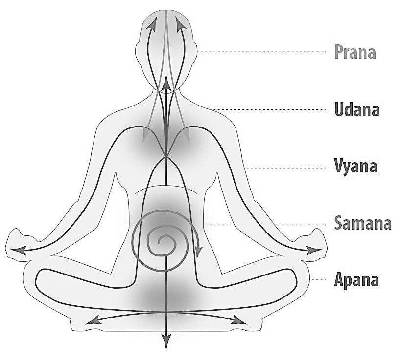
Эта глава является фундаментом, на котором можно расположить всё здание вашего мировоззрения. И если в фундаменте будет изъян (например, из рассмотрения будет исключена душа), то рухнет всё здание, все знания будут бессмысленными. Какой смысл изучать тело без души? Какой смысл спасать одежду утопающего?
2. Качество жизни
С этой главы «Качество жизни» начинается ваш путь к истинному счастью. Но подобно тому, как невозможно построить маршрут на навигаторе, не зная своего местоположения, невозможно идти к счастью, находясь в иллюзии, думая, что у меня и так всё хорошо.
Эта глава предназначена для того, чтобы развеять многие ваши иллюзии. Может быть, даже немножко напугать вас. Человек, который говорит: «Отстаньте, я и так счастлив» подобен тому, кого после операции навестили друзья, и на их вопрос «Ну как ты?» он отвечает: «Нормально. Только не надо меня здесь вот трогать…»
В этой главе также вы получите невероятно важное знание о трёх гунах материальной природы, из которых соткано буквально всё. Это очень практичное знание, которое позволит вам повысить качество вашей жизни даже не в разы, а на несколько порядков. И здесь даётся общий стратегический план повышения качества вашей жизни. Перечисляются основные направления, по которым следует действовать.
Далее в книге несколько глав посвящено наиболее значимым носителям гун, работая над которым вы сможете повысить качество своей жизни. Это
- пища,
- время,
- место,
- общение.
3. Здоровье
Глава «Здоровье» уже начинает непосредственную работу над повышением качества вашей жизни. Здоровье очень важно. «В здоровом теле здоровый дух». А в соответствии с разделом ведических писаний, посвящённых здоровью, Аюр-ведой, здоровье прежде всего зависит от воды и пищи, которую вы употребляете.
В этой главе вы узнаете основные положения Аюр-веды и сможете самостоятельно, не прибегая к таблеткам и так называемым услугам мошенников в белых халатах, успешно следить за своим здоровьем. Применяя знания из этой главы, вы будете на голову выше всей мировой системы здравоохранения, которая паникует перед обычным вирусом гриппа.
Вы убедитесь в том, что центральным местом в нашем здоровье является ум. Перед тем, как что-то лечить, надо привести в равновесие ум. А привести его в равновесие можно, только на деле убедившись в том, что мы – не эти тела.
4. Время
Глава «Время» научит вас, как дружить со временем. Сейчас у многих просто катастрофически не хватает времени. Ритм жизни настолько возрос, что некогда даже пообедать. Но есть секрет, знание которого позволит вам везде успевать. Оказывается, время, как и всё в этом мире, работает в трёх режимах: благости, страсти и невежестве. Постоянно бегают и нигде не успевают люди в страсти, таких большинство.
Изучив эту главу, вы научитесь использовать ваше время с максимальной пользой.
Кроме того, в этой главе вы ознакомитесь с научной картиной всего мироустройства. Это поможет вам лучше ориентироваться во времени суток, времени года, и времени нашей эпохи.
Также в этой главе вы узнаете о том, что ждёт человечество в ближайшие несколько лет и в ближайшие десять тысяч лет.
И ещё в этой главе приготовлен подарок – чакравидья – система знаний о том, в какой период жизни человека какие ожидаются радости и какие трудности и как их преодолеть.
Для большинства людей время – это нечто ужасное, то, что с каждым годом, каждым днём, каждым мгновением приближает нас к смерти. Но стоит встать на путь духовного развития, и вы сможете извлечь пользу даже из неодолимого времени: время для вас станет другом. Каждый день будет вас приближать к бесконечному счастью.
5. Место
Глава «Место» научит вас, как с максимальной пользой использовать то место, в котором вы находитесь. Хорошее это место или плохое, зависит от того, как вы будете его использовать, для чего будете его использовать. То есть от вашего сознания.
Здесь изложены основы ведической космологии – очень интересного раздела ведических писаний, рассказывающего об устройстве всего мироздания, всех духовных и материальных мирах. Те, кто давно мучился вопросом, как же всё устроено, наконец, получат ответ. Но понять это не так просто, даже прочитав.
Также в этой главе вы получите и более приземлённые практические знания о том, как обустроить ваше жилище, даже с подробностями.
6. Астрология
Глава «Астрология» предназначена для того, чтобы дать вам общее представление о ведической астрологии. Вы удивитесь, какой мощью обладает это великое знание. К сожалению, гороскопы в газетах и журналах дискредитировали астрологию. Ведическая астрология не имеет ничего общего с подобными так называемыми предсказаниями. Это абсолютно точная наука, используя которую, учёный астролог может не только рассказать о прошлых событиях из жизни любого человека и предсказать вехи его судьбы, но и дать практические рекомендации, как извлечь максимальную пользу из времени, места и любых обстоятельств, в которых вы оказались.
7. Общение
В главе «Общение» вы будете посвящены в великую тайну. Она уже вплотную приблизит вас к пониманию счастья.
Здесь ещё более подробно рассказывается о том, что же такое сознание, как живые существа общаются друг с другом и с Богом. И всё это – для того, чтобы опять извлечь максимальную пользу из той невыгодной сделки, которую мы зачем-то заключили с материальной природой.
Главная идея этой главы заключается в том, что с кем мы общаемся, такими и становимся. «С кем поведёшься, от того и наберёшься». Здесь подробно рассмотрены разные грани общения: в семье, между мужчиной и женщиной, с животными, со старшими, равными и младшими и ещё многое другое.
Знание, изложенное в этой главе, очень практично. От общения зависит буквально всё, что с вами происходит в жизни.
8. Познание
Глава «Познание» продолжит укреплять ваш фундамент основополагающих знаний. Ведь процесс познания лежит в основе любой деятельности. Другими словами, если вы хотите что-то сделать, то вы своим желанием автоматически запускаете свой индивидуальный процесс познания.
И чтобы делать что-либо эффективно и с пользой, нужно иметь истинный источник знания. А источником знания может быть только живая личность, не мёртвый предмет. Онлайн образование – это, конечно, круто, но без живого общения не обойтись. Духовный учитель – это человек, который вас никогда не обманет и не будет использовать, эксплуатировать.
«Не будет никого ближе, чем мой духовный учитель! Он способен простить мне любые ошибки!» [2].
Критерием знания являются личные качества человека, обладающего этими знаниями.
В этой главе вы будете ознакомлены с некоторыми очень интересными механизмами, лежащими в основе процесса познания. А также с конкретными практическими методами повышения эффективности вашего обучения.
9. Веды
В главе «Веды» вы узнаете, что Веды – это не просто священные писания. Целый ведический принцип заложен в основе бытия человека.
Веды – это дыхание Бога. И Веды – это личности. Это очень сложное эзотерическое понятие, которое сейчас нам во многом недоступно. Но кое-что интересное в доступности всё же есть. Это и собрано в этой главе.
Здесь вы узнаете о том, как должно быть устроено идеальное человеческое общество и чем отличается от него наше современное общество.
Вы узнаете о структуре ведических писаний, и об их величии.
С веры в Веды начинается цивилизованная человеческая жизнь. Получить доступ к Ведам – это большая удача. Я бы даже сказал, что это победа. А получить доступ – это значит обрести желание их читать и верить в то, что в них написано.
Кстати, в соответствии с научным ведическим подходом, в три этапа построен и этот курс:
- вначале дается базовое знание,
- потом даётся путь в расширенном знании,
- а потом показывается конечная цель – счастье.
10. Благочестие
В главе «Благочестие» изложена суть основного раздела Вед, занимающего подавляющую часть их объёма. Это конкретные методы и рекомендации, как быть счастливым в этой жизни и обеспечить себе хорошее будущее.
В Ведах изложены, а великими мудрецами разъяснены и систематизированы знания о последовательном достижении целей человеческой жизни, о разделении человеческого общества на сословия и уклады жизни.
Здесь излагаются основополагающие принципы цивилизованной жизни. Это принципы жертвенности, самоограничения и благотворительности.
Если вы будете жить по правилам цивилизованной жизни, в благости, вы неизбежно будете процветать и в итоге прийдёте к духовной жизни.
11. Йога
В главе «Йога» вы ознакомитесь с видами духовного развития. Это, с одной стороны, ступени лестницы в духовный мир, а с другой стороны, подходы, учитывающие особенности каждого конкретного человека.
Для кого-то наиболее близко, сильно не меняя свою жизнь, продолжая заниматься своим любимым делом, просто посвящать результаты своих трудов Богу.
Для других предпочтительнее будет больше внимания уделить приобретению духовных знаний и отречению от того, что напрямую не связано с Богом.
Третьи захотят воспользоваться системой мистической йоги, позволяющей приобрести мистические способности и увидеть Бога у себя в сердце.
В этой главе рассказывается о преимуществах и недостатках каждого из этих подходов. А завершает эту главу обзор пути любовного преданного служения Богу, который является одновременно самым простым и самым возвышенным.
12. Счастье
Глава «Счастье» является кульминацией книги. Может, кому-нибудь к окончанию чтения этой книги даже посчастливится испытать настоящее счастье, кто знает?
Здесь рассказывается о том, какие виды счастья бывают.
Бывает сиюминутное удовольствие.
Бывает так называемое счастье от осознания своего величия.
А бывает и ничем не ограничиваемое блаженство.
Виды счастья бывают в невежестве, страсти и благости.
В общем, понятие счастья в этой главе рассматривается со всех сторон. Ну и, конечно же, вы узнаете, хотя бы теоретически, что такое духовное счастье, вечное и постоянно возрастающее.
В этой книге собрано всё знание, необходимое цивилизованному человеку:
- «о системе йоги, с помощью которой можно достичь духовного царства;
- о разнице между кармической деятельностью и эмпирическим познанием;
- о путях и способах достижения духовного самоосознания;
- о четырёх ашрамах (жизни в ученичестве, семейной жизни, жизни в удалении от дел и в отречении);
- о высшем положении Верховной Личности Бога;
- о том, как можно увидеть Его воочию;
- о подходящем кандидате на получение знания;
- о пяти элементах;
- об уникальном положении разума;
- о сознании материальной природы и живого существа;
- о признаках осознавшей себя души;
- о принципах действия материального тела;
- о признаках влияния гун природы;
- о древе вечного желания
- и о психической деятельности»
([1] Шримад-Бхагаватам 1.9.8, комментарии).
1. Человек
«Каждый должен знать, что представляет собой его тело, из каких элементов оно состоит, кто управляет его деятельностью, каким изменениям оно подвергается, что их вызывает и что лежит в их основе, какова конечная цель существования индивидуальной души и истинная форма души. Необходимо также понять разницу между индивидуальной душой и Сверхдушой, тем, как они влияют на поле деятельности, их возможностями и т.д.» ([1] Бхагавад-гита 13.4, комментарии).
«Тело состоит из материи. Помимо грубого тела, существует также тонкое: ум и психическая деятельность. Признаки жизни появляются в результате взаимодействия грубого и тонкого тел. Но над всем этим стоит индивидуальная душа, а над ней – Сверхдуша. Индивидуальная душа отлична от Сверхдуши» ([1] Бхагавад-гита 13.35, комментарии).
В Ведах даётся такое описание человека:
«Пять познающих органов подвержены ударам шести плетей:
- скорби,
- иллюзии,
- немощи,
- смерти,
- голода
- и жажды.
Материальное тело покрыто семью оболочками. Это
- кожа,
- плоть,
- кровь,
- костный мозг,
- кости,
- жир
- и семя.
У дерева-тела восемь ветвей:
- земля,
- вода,
- огонь,
- воздух,
- эфир,
- ум,
- разум
- и эго.
Тело имеет девять врат:
- два глаза,
- две ноздри,
- два уха,
- рот,
- детородный орган
- и анус.
Внутри тела циркулирует десять воздушных потоков:
- прана,
- апана,
- удана,
- вьяна,
- самана
- и т. д.»
([1] Кришна. Верховная Личность Бога 2).
А дальше читайте расшифровку этих загадочных слов.
Уровни сознания
В компьютере есть аппаратное и программное обеспечение. Устройство компьютера грубо скопировано по образу и подобию человеческого тела и сознания. У человека тоже есть грубое физическое тело – аналог аппаратного обеспечения компьютера. И также есть тонкое материальное тело, ум – аналог программного обеспечения компьютера. Но разница между телом человека и компьютером в том, что тело человека бесконечно сложнее. А сам человек – это живое существо, душа, заключённая, как матрёшка, в многослойную оболочку из тонких и грубых тел.
Существуют различные способы деления по слоям тонкого и грубого человеческого тела. Мы воспользуемся семиуровневой моделью:
1) физическое тело,
2) жизненная сила,
3) чувства,
4) ум,
5) разум,
6) ложное эго,
7) душа.
Живое существо, заключённое в механизм тела, думает, что оно и есть это тело. В этом заключается обусловленность, иллюзия, невежество живого существа. В зависимости от степени своего невежества, живое существо отождествляет себя с разными слоями грубого или тонкого тела. Очень дремучее невежество – считать себя грубым физическим телом.
«Кажется, что материя сама всё делает, само по себе всё происходит.
Но есть ещё тонкая материя. В грубой материи нет чувств, беспокойств, эмоций, тонкое тело спит, не проявлено, нет никаких ощущений.
А у того, что мы называем живой материей, есть тонкая внутренняя эмоциональная чувственная сфера. Если человека коснуться, у него сразу же возникает вопрос: «Почему? Откуда? Кто?» Дерево в меньшей степени реагирует, камень вообще никак не отреагирует. Эти градации касаются тонкого тела, которое более развито у человека» [2].
Грубое тело
Грубое физическое тело – это биологический организм. Современная официальная медицина разделяет физическое тело человека на следующие системы.
1) Центральная нервная система – предназначена для обеспечения жизненных функций организма.
2) Система органов дыхания – предназначена для обеспечения организма кислородом и выделения из организма углекислого газа.
3) Система органов кровообращения – предназначена для доставки питательных веществ в клетки организма и освобождения клеток организма от продуктов жизнедеятельности.
4) Система органов кроветворения – предназначена для формирования нужного состава крови в организме.
5) Система органов пищеварения – предназначена для переваривания пищи и выделения продуктов жизнедеятельности организма.
6) Система органов мочевыведения и кожа – предназначены для выделения продуктов жизнедеятельности и очистки организма.
7) Репродуктивная система – предназначена для размножения.
8) Эндокринная система – предназначена для поддержания биоритмов и обмена веществ в организме.
9) Костно-мышечная система – предназначена для поддержания прочности и передвижения тела.
10) Лимфатическая система – предназначена для очищения организма.
11) Иммунная система – предназначена для защиты организма от нежелательного воздействия вирусов.
12) Периферическая нервная система – предназначена для доведения команд центральной нервной системы до рабочих органов.
Сердце входит в состав нескольких систем организма, оно собирает и распространяет информацию из разных систем организма, интегрируя тело в единое целое.
Ведическая наука имеет несколько отличающийся подход к строению организма человека. С ведическим подходом мы ознакомимся в главе, посвящённой здоровью.
Посмотрите, насколько сложным является наш организм. Но физическое тело является самой простой частью человека. Всё самое интересное и сложное впереди.
Индрии (органы чувств)
Познающие и действующие органы чувств
Наше тело представляет собой автомат, сконструированный из сочетания разных органов чувств.
Есть два набора органов чувств:
1) пять органов чувств восприятия для получения информации
2) и пять органов чувств действия для ответа на полученную информацию.
Так мы и взаимодействуем с этим материальным миром: получаем и реагируем. Именно так действует автомат, функция.
С помощью чувств мы ничего нового, никаких знаний не получаем.
А новое знание даёт контроль этих чувств. Знание берётся от переживания того, что мы видим. Реальна – красота, которая отражается в нашем сознании.
Итак, существуют:
- пять гьянендрий – познающих органов чувств,
- пять кармендрий – действующих органов чувств
- и плюс к ним ещё пять объектов чувств.
Пять познающих органов чувств – это:
1) уши,
2) кожа,
3) глаза,
4) язык
5) и нос.
Пять действующих органов чувств – это:
1) голосовой аппарат,
2) руки,
3) ноги,
4) анус
5) и гениталии.
Пять объектов чувств – это
1) звук,
2) осязание,
3) форма,
4) вкус
5) и запах.
Это может показаться фантастикой, но объекты чувств (запахи, вкусы, формы, касания и звуки, исходящие от предметов и явлений внешнего мира) тоже относятся к этой системе чувств, так как они отражаются в уме живого существа.
«В тонком теле шестнадцать частей: пять органов познания, пять органов действия, пять объектов чувств и ум» ([1] Шримад-Бхагаватам 6.1.51).
«В Катха Упанишад сказано, что объекты чувственного восприятия выше чувств, но ум выше этих объектов»» ([1] Бхагавад-гита 3.42, комментарии).
«Познающие органы чувств считаются источником информации для действующих органов чувств, а объекты чувственного восприятия – источник для познающих органов чувств. А действующие органы чувств являются источником информации для ума» (Махабхарата Шанти-парва 309.4-5).
«Объектами органов познания являются звук, осязательное ощущение, форма, вкус и запах. Функции органов действия – это речь, прикасание, передвижение, опорожнение кишечника и половой акт» ([1] Шримад-Бхагаватам 5.11.10).
Познающие органы чувств непреодолимо притягиваются к объектам чувств с помощью действующих органов чувств. Сила чувств непреодолима. Объекты чувств тоже притягиваются к познающим органам чувств через ум.
Чувственное восприятие человека работает в узком диапазоне. Оно несовершенно, не может дать нам полной картины окружающего мира.
Чувства быстро утомляются и не могут наслаждаться слишком долго. Очень скоро наступает пресыщение, затем апатия, а потом и отвращение.
«Чувства пронизывают тело, но чувства не находятся в органах чувств. Они пронизывают органы чувств. Чувства находятся глубже. Из внешних объектов чувств постоянно, непрерывным потоком идёт информация внутрь, в ум, в мозг, в офис, где эта колоссальная информация вся принимается: мы каждую секунду: что-то слышим, что-то видим, чего-то ощущаем, чего-то касаемся, о чём-то думаем и так далее» [2].
«Органы чувств – это всего лишь двери в окружающий нас мир, через которые информация проникает вглубь сознания, в новое измерение, которое создаёт новые ощущения, обладает ёмкостью и способностью создавать образы. Там, в глубине, находится более тонкая и могущественная субстанция – наш ум. Его часто называют шестым, скрытым чувством» [2].
В Махабхарате (Шанти-парва 184.28-39) перечислены все виды ощущений:
Девять видов запаха:
1) приятный,
2) неприятный,
3) медвяный,
4) острый,
5) затхлый,
6) вонючий,
7) нежный,
8) раздражающий
9) и чистый.
Шесть видов вкуса:
1) сладкий,
2) солёный,
3) горький,
4) терпкий,
5) жгучий,
6) кислый.
Семнадцать видов образов (форм):
1) короткий,
2) длинный,
3) толстый,
4) четырёхугольный,
5) круглый,
6) светлый,
7) тёмный,
8) красный,
9) золотистый,
10) синий,
11) жёлтый,
12) острый,
13) гладкий,
14) упругий,
15) скользкий,
16) мягкий,
17) жёсткий.
Двенадцать видов касаний:
1) горячее,
2) холодное,
3) приятное,
4) неприятное,
5) влажное,
6) чистое,
7) лёгкое,
8) тяжёлое,
9) пронзительное,
10) жёсткое,
11) мягкое,
12) сухое.
Семь тонов звука:
1) шадга (до),
2) ришабха (ре),
3) гандхара (ми),
4) мадхьяма (фа),
5) панчама (соль),
6) дхайвата (ля),
7) нишада (си бемоль).
Первоэлементы
Всего существует пять грубых первоэлементов:
1) эфир,
2) воздух,
3) огонь,
4) вода
5) и земля.
1) Акаши (эфир)
«Мудрецы, обладающие истинным знанием, определяют звук как субстанцию, которая передаёт представление о предмете, указывает на присутствие говорящего, скрытого от наших глаз, и представляет собой тонкую форму эфира.
Функции и признаки эфира заключаются в том, что он предоставляет место для внешнего и внутреннего бытия всех живых существ, то есть является полем деятельности жизненного воздуха, чувств и ума»
([1] Шримад-Бхагаватам 3.26.33-34).
«Учёные эфир считают пустотой, говорят, что там ничего нет. Как ничего нет? Там столько всего! вы пользуетесь интернетом, телефоном – через эфир. Одновременно звонят по телефонам миллионы людей. И они говорят: «Это пустота». В пустоте нет пространства. Понимаете? Я тоже не понимаю. Если пустота, то и пространства не должно быть. Представляете, если вам подарили коробочку с пустотой? вы открываете, чтобы посмотреть. И как только вы туда бросили взгляд, там уже существует ваш взгляд, это уже не пустота. Где же пустота? Умозрительная вещь. Этому просто нужно найти эквивалент. Пустота означает: «Я не вижу» или «Я не знаю» – вот что я должен был честно сказать. Если кто-то говорит, что он идёт в пустоту – это означает, что он идёт туда, куда не знает. Пустота означает: я не знаю, я не вижу, я не воспринимаю – вот и всё. Вот это – честный эквивалент. Всё существует. И пустоты не существует. Нет, она существует в форме невежества. Невежество – это и есть пустота. Я не знаю, не вижу, не понимаю или не хочу знать. Это и есть пустота» [2].
2) Ваю (воздух)
«Сотворённый звуком эфир под влиянием времени подвергается следующей трансформации, в результате чего на свет появляется тонкий по природе объект осязания (касание), а из него образуется воздух и орган осязания.
Мягкость и твёрдость, холод и тепло – таковы характеристики, воспринимаемые с помощью осязания, которое представляет собой тонкую форму воздуха.
Воздух отвечает за движение, смешение и нормальное функционирование всех органов чувств, он также предоставляет возможность приблизиться к объектам звука и переносит другие объекты чувств» ([1] Шримад-Бхагаватам 3.26.35-37).
3) Агни (огонь)
«В результате взаимодействия воздуха с осязательными ощущениями живое существо получает различные тела, уготованные ему Провидением. Эволюционируя, эти формы порождают огонь, и глаз видит их, различая по цвету.
Форма характеризуется размерами, качествами и индивидуальностью. Форма огня воспринимается благодаря исходящему от него сиянию.
Каждая форма, которую мы видим, обладает определёнными размерами и характеристиками. Качество того или иного объекта определяется его функцией. Однако форма звука стоит особняком. Невидимые формы можно только осязать, в этом и заключается особенность восприятия невидимых форм. Видимые формы изучают, анализируя их состав. Состав того или иного объекта можно узнать по внутреннему действию, которое он оказывает. Например, форма соли распознается по солёному вкусу, а форма сахара – по сладкому. Вкусовые ощущения и качественный состав объекта являются основными свойствами, характеризующими его форму.
Огонь характеризуется
- излучаемым светом,
- а также способностью варить
- и усваивать пищу,
- согревать,
- испарять,
- вызывать голод
- и жажду
- и утолять их»
([1] Шримад-Бхагаватам 3.26.38-40).
4) Джала (вода)
«Повинуясь высшей воле, огонь вступает во взаимодействие со зрением и порождает тонкий по природе объект вкуса. Из вкуса возникает вода, а также язык, который ощущает вкус.
Смешиваясь с различными веществами, изначально единый вкус принимает различные формы и становится
- вяжущим,
- сладким,
- горьким,
- острым,
- кислым
- и солёным.
Вода характеризуется способностью
- увлажнять другие вещества,
- способствовать смешиванию различных веществ,
- приносить чувство удовлетворения,
- поддерживать жизнь,
- размягчать предметы,
- уменьшать жар,
- непрерывно пополнять водоёмы
- и освежать,
- утоляя жажду.
Голод можно утолить, выпив воды. Если человек, который постится, через определённые промежутки времени пьёт воду, он гораздо легче переносит пост. В Ведах также сказано: апомайах пранах – «Жизнь зависит от воды». Водой можно намочить или увлажнить всё что угодно. Чтобы замесить тесто, к муке добавляют воду. Земля, соединяясь с водой, превращается в грязь. В начале Шримад-Бхагаватам сказано, что вода связует различные материальные элементы. Вода необходима также для того, чтобы построить дом, поскольку без воды невозможно изготовить кирпичи. Огонь, вода и воздух являются элементами, связующими всё материальное мироздание, но самым важным из них является вода. Кроме того, полив чрезмерно нагревшуюся поверхность водой, можно охладить её» ([1] Шримад-Бхагаватам 3.26.41-43).
5) Бхуми (земля)
«Подчиняясь высшей воле, вода соединяется со вкусом и порождает тонкий элемент запаха. В результате появляются земля и орган обоняния, с помощью которого мы ощущаем всю гамму присущих земле запахов.
Единый запах проявляется в различных формах: как смешанный, отталкивающий, приятный, слабый, сильный, кислый и так далее – в зависимости от того, в какой пропорции к нему примешиваются посторонние вещества.
Смешанным запахом иногда обладают блюда, приготовленные из разных продуктов, например, из овощей, смешанных со специями и асафетидой. Неприятные запахи стоят обычно в грязных местах, приятно пахнут камфора, ментол и подобные им вещества, острый запах издают лук и чеснок, а кислый – куркума и другие кислые продукты. Изначальным запахом является аромат земли, который, смешиваясь с разными веществами, приобретает различные оттенки и проявляется по-разному.
Свойства земли проявляются при создании скульптурных изображений Верховного Брахмана, строительстве домов, изготовлении горшков для воды и т. д.
Иными словами, земля является вместилищем всех остальных элементов.
В земле присутствуют все остальные элементы – звук, небо[3], воздух, огонь и вода. Другая особенность земли, отмеченная в данном стихе, состоит в том, что из неё можно создавать различные формы»
([1] Шримад-Бхагаватам 3.26.44-46).
Каждое чувство связано с определённой стихией природы.
Слух связан с акаши, стихией пространства, или эфиром.
Осязание связано с ваю, стихией воздуха.
Зрение связано с агни, стихией огня.
Язык связан с джалой, стихией воды.
Обоняние связано с бхуми, стихией земли.
Сам Бог так объясняет значение первоэлементов:
«Всё сущее покоится на Мне, подобно жемчужинам, нанизанным на нить.
Я вкус воды, свет солнца и луны, и Я слог ом в ведических мантрах. Я звук в эфире…
Я изначальный аромат земли, и Я жар огня»
([1] Бхагавад-гита 7.7-9).
«Свойства пространства (акаши): звук, ухо, полость тела.
Три свойства ветра – это: жизненные токи, движения тела, касанья.
Трояко распределяется огонь: как образ, глаз и переваривание пищи.
Три свойства влаги – это: вкус, вкусное и маслянистость.
Три свойства земли – это: запах, обоняние, тело.
Итак, вследствие сочетания индрий[4] человек называется пятисоставным.
От ветра – касание, вкус – от воды, от огня – образ, так говорится.
В пространстве возникает звук; земным считается запах» (Махабхарата Шанти-парва 247.9-12).
«Пространство – первый из великих элементов. В личностном это – слух, во внешнем – звук, в божественном – стороны света.
Второй из великих элементов – ветер. В личностном он известен как осязание, во внешнем – как то, что осязают, а там, в божественном – как молния.
Третьим называют свет. В личностном это – зренье, во внешнем – зримая форма, там же, в божественном – Солнце.
Четвёртым элементом должно знать воды. В личностном это – вкус, во внешнем – сок, там же, в божественном – Сома.
Пятый элемент – земля. В личностном она определяется как обоняние, во внешнем – как запах, а в божественном это – Ваю» (Махабхарата Ашвамедхика-парва (Анугита-парва) 14.42).
Существует принцип от тонкого к грубому, согласно которому природные стихии взаимодействуют с органами чувств.
Пространство можно
- только слышать.
Воздух можно
- слышать
- и осязать.
Огонь можно
- слышать,
- осязать
- и видеть.
Воду можно
- слышать,
- осязать,
- видеть
- и чувствовать на вкус.
Землю можно
- слышать,
- осязать,
- видеть,
- чувствовать на вкус
- и обонять.
«Чувство, воспринимающее звук, называют слухом, а чувство, воспринимающее касание, называют осязанием.
Чувство, воспринимающее форму, которая является отличительной характеристикой огня, называют зрением. Чувство, воспринимающее вкусовые ощущения, которые представляют собой отличительную характеристику воды, называют вкусом. И наконец, чувство, воспринимающее запахи, которые являются отличительной характеристикой земли, называют обонянием» ([1] Шримад-Бхагаватам 3.26.47-48).
«Поскольку причина существует также в следствии, признаки причины можно обнаружить в следствии. Вот почему только земля содержит в себе отличительные качества всех остальных элементов» ([1] Шримад-Бхагаватам 3.26.49).
«Как я чувствую элемент земли в этом теле? Кость. Я опираюсь, чувствую, как опору в этом теле. Я отождествляю себя со свойством этого элемента, а не с самим элементом.
А как я чувствую элемент воды в этом теле? Это слизь, благодаря ей тело гибкое, оно двигается почти бесшумно.
Элемент воздуха – это дыхание и движение. Я чувствую, что можно двигаться.
Система пневматическая: есть воздушные потоки в теле, мышцы сокращаются, так проявляется влияние праны, тонкого воздуха.
Я могу не знать этого, я просто себя отождествляю с этими вещами» [2].
Всё это можно обобщить в следующей таблице:
|
Первоэлемент (стихия) |
Чувство |
Познающий орган чувств |
Объект чувств |
Действующий орган чувств |
Действие |
Свойство |
Управляющее божество |
|
Эфир |
Слух |
Уши |
Звук (шабда) |
Речевой аппарат |
Речь |
Пространство |
Ганеша, Вахни, Стороны света |
|
Воздух |
Осязание |
Кожа |
Касание (спарша) |
Руки |
Работа |
Движение |
Вайю, Индра, Павана |
|
Огонь |
Зрение |
Глаза |
Форма (рупа) |
Ноги |
Перемещение |
Жар |
Агни, Вишну, Сурья |
|
Вода |
Вкус |
Язык |
Вкус (раса) |
Гениталии |
Совокупление |
Текучесть |
Варуна, Дакша, Апас |
|
Земля |
Обоняние |
Нос |
Запах (гандха) |
Анус |
Испражнение |
Плотность |
Бхуми, Митра, Притхви |
Из этих пяти первоэлементов только три являются видимыми. Это земля, вода и огонь. Эти три самых грубых первоэлемента обеспечивают процессы орошения, иссушения и сжигания в этом мире.
«Всеми процессами – будь то орошение, иссушение или сжигание – обычно отвечают Индра, Ваю и Агни.
Весь видимый мир состоит из огня, воды и земли, которые соединяются вместе и принимают различные формы. Тремя свойствами природы управляют различные полубоги[5]. Например, царь Индра посылает дожди, полубог Ваю управляет стихией воздуха и иссушает влагу, а сжигает всё полубог, повелевающий стихией огня (Агни)» ([1] Шримад-Бхагаватам 7.4.18).
Жизненная сила
Жизненная сила как биоэнергетическое поле человека объединяет грубое и тонкое тело человека.
Жизненная сила человека определяет жизненный тонус, выносливость, сопротивляемость инфекциям. Голод, жажда, сытость, сонливость, усталость, бодрость – это влияние и проявление жизненной силы.
Прана (потоки)
Мы вдыхаем не просто воздух, газ. Мы вдыхаем прежде всего пранические тонкие энергии.
«Жизненный воздух внутри тела неделим, но в контакте с различными материальными органами чувств воспринимается как множество отличных друг от друга потоков» ([1] Шримад-Бхагаватам 11.3.38).
Жизненная сила распределяется на десять основных потоков, каждый из которых имеет своё назначение:
1) Прана – восходящий энергетический поток, который контролирует дыхание.
2) Апана – нисходящий энергетический поток, который управляет системами выделения.
3) Самана – контролирует и поддерживает силу пищеварения.
4) Удана – отвечает за глотание пищи, мимику, голос, силу мышц.
5) Вьяна – распределяет энергию, поступающую извне, по всему организму.
6) Нага – обеспечивает пробуждение, в том числе и пробуждение сознания.
7) Курма – обеспечивает открывание глаз и контролирует зрение.
8) Крикара – вызывает голод и жажду.
9) Девадатта – обеспечивает зевание.
10) Дхананджайя – обеспечивает речь.
«Десять воздушных потоков классифицируются следующим образом.
1) Основной воздушный поток проходит через нос в процессе дыхания, его называют праной.
2) Воздушный поток, который, проходя через анус, выводит из организма испражнения, называют апаной,
3) а воздушный поток, управляющий движением пищи в желудке и иногда вызывающий отрыжку, – саманой.
4) Воздушный поток, проходящий через горло, задержка которого вызывает удушье, называют уданой,
5) а воздушный поток, циркулирующий по всему телу, – вьяной.
Помимо этих пяти, существуют также более тонкие воздушные потоки.
6) Воздушный поток, с помощью которого открываются глаза, рот и т.д., называют нагой,
7) воздушный поток, возбуждающий аппетит, – крикарой,
8) а поток воздуха, вызывающий сокращение мышц, – курмой.
9) Воздушный поток девадатта помогает организму расслабиться при зевании (когда у человека широко раскрывается рот),
10) а воздушный поток дхананджая способствует питанию организма.
([1] Шримад-Бхагаватам 3.6.9, комментарии).
«Прану мы получаем
- из пищи,
- из воздуха
- и от воды.
Поэтому это должно быть чистым.
Представьте, вы живёте, и вас очень редко посещают хорошие мысли или снятся прекрасные сны – такие, что восхищаетесь, что аж плакать хочется, какая красота. Это редко, потому что зависит от праны, нашей внутренней жизненной силы» [2].
«Некоторые учёные полагают, что десять видов жизненной энергии праны сопоставимы с десятью чувствами человека (пять познающих чувств – гьянендрии и пять органов жизнедеятельности – кармендрии)» [24].
«Функции пяти главных воздушных потоков жизнедеятельности следующие.
1) Воздушный поток прана, действующий в органах познания: глазах, ушах, ноздрях, поддерживает работоспособность данных органов с помощью выделения слёз или слизи.
2) Апана, располагающаяся в анусе и гениталиях, выводит посредством них нечистоты и тем самым поддерживает тело, состоящее из элемента земли.
3) С помощью саманы Ваю поддерживает внутреннее пространство тела, то есть локализованный в нём эфир, акаша.
4) Управляя движением ветров вовне (в природе), Ваю с помощью внутреннего воздуха вьяны гармонизирует циркуляцию энергии в кровеносных и. иных каналах.
5) Посредством воздушного потока уданы Мукхья-прана[6] либо поддерживает тепло (теджас) и работоспособность ума живущего существа, либо переселяет душу в новое тело. Во время глубокого сна удана ставит душу в непосредственную близость с Господом в сердце. Кроме того, в ходе сновидений человек может созерцать райское счастье, жизнь на Земле или мучения ада – в зависимости от того, с каким уровнем вселенной приведёт его в соприкосновение воздушный поток удана» [24].
Нади (каналы)
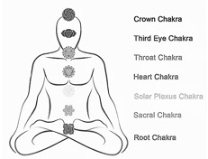
Жизненная сила циркулирует в теле не беспорядочно где попало, а по специальным каналам – нади. Существует три главных канала.
1) Сушумна – это центральный канал, проходящий вдоль позвоночника. Он обеспечивает человека творческой энергией.
2) Ида – начинается в левой ноздре, далее идёт к макушке головы и потом опускается вниз к началу позвоночника. По этому каналу течёт лунная, холодная, охлаждающая энергия.
3) Пингала – начинается в правой ноздре, далее через макушку головы идёт к низшей точке позвоночника. По нему течёт солнечная, горячая, согревающая энергия.
Чакры (узлы)
По пути энергетические каналы пересекаются в узлах жизненной силы – чакрах. Чакры подобны вращающимся энергетическим воронкам. Основные семь чакр расположены вдоль нашего позвоночника:
1) Муладхара (корневая) чакра отвечает за выживаемость:
- еду,
- воду,
- тепло,
- убежище,
- защиту,
- одежду,
- продолжение рода.
Она красного цвета.
Если сознание на этом уровне, то вы всё чувствуете с точки зрения страха и сексуального привлечения. Это всё, что вами управляет в жизни: боитесь чего-то или кого-то и любите что-то. Всё, больше ничего не знаете.
2) Свадхистана (половая) чакра отвечает за
- язык
- и чувство вкуса,
- получение удовольствий,
- эгоизм.
Она оранжевого цвета.
Если вы поднимаетесь выше, в область чувств, вы становитесь немножко экстрасенсом, чувствительным человеком: обидчивым, мнительным, надумывающим что-то. Чувственная область. Вам нравится, когда к вам хорошо, по форме обращаются, внешняя культура. Льстецов можете любить.
3) Манипура (солнечная) чакра отвечает за
- силу
- и уверенность в себе,
- самоконтроль
- и самодисциплину,
- влияет на усвоение пищи
- и жизненной энергии.
Она жёлтого цвета.
Это чакра деловых отношений. Тут вы можете различать не просто эмоции, а можете понимать за этими эмоциями деловые качества человека: «Вот он льстит, а ведь ничего делать не умеет, плохо выполняет свой долг при этом. Хитрец! Прикрывается этими приятными отношениями». На этом уровне вы можете быть хорошим администратором. Когда открыта эта чакра, можете очень хорошо распределять обязанности, быстро видеть людей по их деловым качествам.
4) Анахата (сердечная) чакра отвечает за любовь. Соединена с
- руками
- и с чувством осязания.
Она зелёного цвета.
Эта чакра отвечает за гармонию. Вы можете общаться с людьми, рассказывать что-то, понимать, отвечать. У вас развита творческая коммуникабельность. Вы будете очень интересны, в богемных кругах.
5) Вишуддха (горловая) чакра отвечает за
- чистоту тела
- и ума,
- творчество.
- Соединена с ушами
- и чувством слуха,
- с горлом
- и речью.
Она голубого цвета.
Это уровень философии. Эта чакра открывает вам способность мыслить, оперировать философскими понятиями и принимать решения на уровне ума, очень тонко видеть связи предметов и явлений. Также понимать мыслительные процессы других людей, которых они сами не осознают. До какой-то степени на этом уровне вы можете управлять умами людей, когда вы говорите.
6) Агья (третий глаз) чакра отвечает за
- интуицию,
- восприятие тонкого мира,
- сверхъестественные способности,
- смысл жизни,
- духовное развитие.
Она синего цвета.
На этом уровне вы уже обретаете опыт мудрости. Многие вещи можете применять. Это очень мощная чакра. На этом уровне то, что вы делаете, могущественно.
7) Сахасрара (коронная) чакра отвечает за
- соединение с Богом,
- раскрытие духовного потенциала,
- освобождение.
Она фиолетового цвета.
На этом уровне у вас есть возможность осознать дух. Когда вы слышите о душе, ваше тело откликается. Эта чакра оживает. Подобно тому, если кого-то уколоть иголкой, есть реакция.
В основном сейчас людей воспитывают на страхе и вожделении, на самой нижней чакре. Туда же музыку направляют, на нижнюю чакру, туда же направляют методы образования: страх и выгода.
Манас (ум)
С этого места начинается описание слоёв тонкого тела человека.
Сам по себе предмет или объект не вызывает особенных эмоций. Мы ощущаем лишь форму, цвет, запах, касание. Но при соприкосновении с умом, когда возникает привязанность, тогда возникают эмоции, которыми уже одни живые существа обмениваются с другими живыми существами.
Ум имеет три основные функции:
1) мысли,
2) эмоции,
3) желания.
«Органы чувств соседствуют непосредственно с умом. Ум всё это воспринимает одновременно и испытывает эмоции.
Это те же чувства – синтезированные, совмещённые в уме: одновременно звуки, касание, образы, вкусы, запахи. Так в уме возникают эмоции. Так взаимодействуют чувства и ум. И ум, конечно же, настроен на наслаждение. Ум заостряет внимание только на приятном. Остальное не видит. А если есть отвратительное что-то – ум отвергает. Так ум и чувства работают. То, что пища для одного, яд для другого – разные типы чувств и ума» [2].
Распознать ум не так-то просто. Это можно сделать через функции и свойства ума.
Служение органам чувств
Это главная функция ума. У ума имеется два способа повлиять на органы чувств. Это
- принятие
- и отвержение.
«Ум принимает всё, что окажется приятным для чувств, а всё, что неприятно, отвергает. Таким образом, ум заботится исключительно об удовлетворении чувств. Если чувства довольны, то и ум тоже доволен. Если же чувства не удовлетворены, то и ум не удовлетворён. Значит, главная функция ума – служить чувствам» ([2] Уровни сознания).
Мультиплексирование
«Ум называют шестым, внутренним чувством. Он может одновременно воспринимать
- звук,
- касание,
- форму,
- вкус
- и запах.
Поэтому ему свойственны тонкие, смешанные ощущения или необъяснимые чувства» [2].
Это такой синтезатор органов чувств. Информация от познающих органов чувств поступает в ум. Если все пять органов чувств одновременно испытывают наслаждение, ум испытывает небывалое счастье. В такой атмосфере человек может влюбиться.
Тут, в уме происходит активная переработка и обработка эмоций и ощущений. Поэтому нам кажется, что тут центр вселенной.
Привязанность и отвращение
«Но в основном ему свойственно чувствовать привязанность или отвращение: «О! Как мне всё это нравится! Я хочу это! Жить без этого не смогу! А это я терпеть не могу, просто ненавижу, не хочу видеть и слышать об этом!» Так проявляется двойственность ума и чувств: приятно-неприятно, а это означает: плохо-хорошо, друг-враг, хочу-не хочу. Для более высокой субстанции таких различий уже не существует. Значит, если мы видим что-то приятное или неприятное и делаем вывод, что одно хорошо, а другое плохо, мы должны знать, что это говорит наш ум» [2].
Ум принимает приятное и отвергает неприятное с чудовищной силой.
Беспокойство
«Из всей пищи он с помощью глаз и языка предпочтёт наиболее вкусное несмотря на то, что она может оказаться вредной.
Ему захочется выпить водки, чтобы ощутить вкус опьянения несмотря на то, что есть риск стать алкоголиком.
Он привлечётся красивой женщиной и захочет близости с ней несмотря на то, что уже женат.
Таким образом, уму свойственно принимать и отвергать безостановочно. Он перебирает объекты снова и снова, меняя их в погоне за новизной. Как только чувства пресыщаются одним объектом, ум немедленно отыскивает что-то свеженькое. Эта функция ума называется в Ведах чанчала, то есть «скачущий с объекта на объект»» [2].
Таким образом, когда ум подчинён органам чувств, он постоянно скачет с объекта на объект. Ведь ум получает информацию одновременно от пяти органов чувств, и ему приходится постоянно делать выбор, метаться между ними.
«В Ведах дается сравнение ума с человеком, которого встречают сразу пять жён, и каждая желает привлечь его только к себе единственной. Как выбрать одну, не ущемив интересы других? Чтобы справиться с этой задачей, он составляет планы и идёт на ухищрения» [2].
Животные, в отличие от человека, выглядят спокойнее – их ум сосредоточен на чём-то одном, потому что преобладающим является какой-то один орган чувств. Для коровы это вкус: она всё время жуёт. А для собаки – запах: когда собака идёт по запаху, у неё очень деловой вид, ничто не может её от этого отвлечь. А ум человека успокаивается только когда сосредоточивается на Абсолютной Истине.
Синтез
«Он объединяет все образы и ощущения вместе, комбинирует их и как будто бы создаёт нечто новое. Ум – великий комбинатор. Ум способен синтезировать и производить новые формы, новые комбинации звуков, запахов, вкусов и так далее» [2].
Все причудливые сны являются продуктом этой функции ума. Всё, с чем мы когда-либо соприкасались, включая прошлые жизни, ум может комбинировать, составлять в разных вариациях. Поэтому иногда такая ерунда снится…
Центр сознания
«Ум неугомонен, неистов, упрям и очень силён, и, кажется, укротить его труднее, чем остановить ветер» ([1] Бхагавад-гита 6.34).
Если вы попытаетесь хотя бы одну минуту ни о чём не думать, то даже такая на первый взгляд простая задача окажется абсолютно невыполнимой: вы только и будете думать, как бы ни о чём не думать.
Ум считает себя выше других. Человек с платформы ума смотрит на других и думает: «я и они», хотя на самом деле все такие же «я», как и «он».
Ум упрямый и сильный и всегда ставит себя в центр всего.
«Поэтому уму доверять нельзя. Он всегда ошибается, потому что считает себя чем-то особым, выше других, своё мнение ценит выше, чем мнение других. Ум надо поместить под контроль священных установок. Иными словами, нужна вера в божественное прежде, чем мы победим ум. И как только мы признáем своё несовершенство, мы становимся совершенными» [2].
«Глаз – это просто фотоэлемент, он не оценивает. Ум говорит: «Красиво». И остановится на этом. Ум оценит это. И остановит чувства там: «Вот этот человек мне нравится. Я хочу с ним познакомиться. Я больше ни с кем не хочу знакомиться». Это уже концентрация ума. И начинается вот здесь уже: «Какой это удивительный человек!» Чем больше мы узнаём, тем больше он мне нравится. В конце концов я его обожествляю. Это происходит в уме: «Передо мной что-то невероятное! Неслыханное! Я жить без него не могу! Я умру без этого человека!» Это воспринимает ум. Такая сила ума. Либо наоборот, кто-то не нравится. Не нравится один день, два дня не нравится, три дня: «Я уже ненавижу этого человека!» И ум уже с ума сходит: «Я просто даже думать о нём не могу! Я взгляну на него – мне уже плохо! Одно его присутствие портит всю мою жизнь вообще!» Это тоже ум. Сила его огромная. Если он что-то принимает, человек не может сопротивляться. Его сравнивают со слоном: вот слон идёт на нас, и мы не можем его остановить, потому что мы маленькие, а он очень большой. Или человек сходит с ума – и всё, вы ничего не можете сделать, очень сложно лечить. Эти тонкие психические отклонения очень трудно исправить. Физическое тело – там можно сделать операцию, зашить рану или она сама заживёт, или болезнь пройдёт. А вот болезнь ума – это серьёзная проблема. Потому что он очень-очень силён. Если он за что-то схватился…» [2]
Созидание
«Ум человека наделён тонкими энергиями созидания, благодаря которым человек обладает богатым внутренним миром, воображением и способностью создавать образы. Любые мысли имеют своё отражение в грубой материи. Даже когда ум обманывается, то его обман может стать реальностью в грубом измерении» [2].
«Самое сильное, что у нас есть, – это ум, глубина и могущество мысли. Тело формируется при помощи различных направлений мысли. Если человек испугается, это состояние ума мгновенно изменит состав крови: появится адреналин. А если человек почувствует к кому-то ненависть и зависть, в кровь выбрасывается яд. Откуда? Ум вырабатывает в то же мгновение. А влюблённый человек испытывает эйфорию, потому что ум влюблённого человека вырабатывает наркотическое вещество – C8H12N (формула любви) – и у него в крови появляется наркотик» [2].
«Ум развивает материю. Это тело связано с умом. Физическое тело – это следствие ума, умонастроения. Нужно изучить природу ума глубже, чтобы понять, о чём речь идёт. Мы знаем ум только как мысли. Этого недостаточно. Нужна практика йоги, чтобы понять глубину ума. Тогда станет понятно, как трансформируется материя под влиянием ума. При помощи ума можно перестроить свою жизнь целиком. Для этого нужно иметь очень позитивный глубокий ум, глубинно счастье постичь и глубокие знания. Глубина ума сейчас у нас не занята, вернее, она занята чем-то другим: сомнениями. И это препятствие. Освободившись от сомнений, мы можем углубить своё понимание и счастье [2].
Враг и друг
«Ум и друг живого существа, и его враг. Когда ум под контролем, то он лучший друг, если же он не поддаётся контролю, то становится злейшим врагом. Любое горе – от ума!» [2].
«Для того, кто обуздал ум, он становится лучшим другом, а для того, кому это не удалось, ум остаётся злейшим врагом» ([1] Бхагавад-гита 6.6).
Есть даже такая пословица: «Праздный ум – кузница дьявола». Поэтому в любой системе духовной практики идёт борьба не на жизнь, а на смерть за захват контроля над умом – стратегически наиболее важным объектом сознания.
«Вся наша жизнь зависит от того, что мы думаем о себе: вот это – наша судьба. Насколько мы адекватны в оценке себя самого. Вот это – ум: либо он враг, либо друг. Если вы правильно себя оцениваете, правильную позицию занимаете, это ваш друг, он вас приведёт на высший уровень совершенства. Если вы не правильно себя оцениваете – он злейший враг – погубит вас, уведёт в ад вообще» [2].
Силён в наслаждениях, но беспомощен перед фактом страданий
«Когда человек испытывает боль и отчаяние, ум обычно обращается к более высокому уровню над ним.
Здравый смысл располагается выше ума – как высшая инстанция, которая способна видеть высшую цель жизни [2].
А высшая инстанция – это разум – следующий, высший слой сознания. Только когда у ума отбирают все наслаждения, только тогда он обращается к разуму.
Разум, интеллект
«Ближайший сосед ума – разум. Разум непосредственно с чувствами не связан: ум между ними. Поэтому чувства на разум не влияют.
Разум по-другому рассуждает. «У меня болит голова» – это непосредственно воспринимают чувства, и ум говорит: «Я чувствую боль». Рядом сидит человек, у него нет головной боли. Но он может узнать от меня при помощи разума, без чувств, не испытывая головной боли, что у меня болит голова. Я просто скажу ему. Этот звук попадёт в разум. Чувства не смогут по звуку воспринять головную боль. Я скажу: «У меня болит голова», и другой человек разумом может понять и помочь мне. Я мог бы и сам себе помочь, если бы у меня не болела голова, но боль мешает мне соображать, что-то делать. Поэтому мне нужен врач: такой же человек, как и я, просто у него не болит голова, и у него свободный разум. Если мы сможем так же чувства свои обуздать и пробудить разум, мы сможем увидеть прошлое, настоящее и будущее.
У нас тоже есть духовное восприятие, потому что разум – ближайший сосед души.
Чувства контролируются умом, ум контролируется разумом.
Ради какой-то цели я могу сказать уму: «Терпи! Мало ли, что тебе приятно или не приятно! Надо!» Воля – это разум, рассудок человека, он сильнее. Проблема, беда, когда разум подчинён чувствам и уму, то есть эти чувства, ощущения проникают через ум в разум и становятся целью, смыслом жизни: пить водку, принимать наркотик, гулять по женщинам.
Если это проникает в разум, – вот это беда. Человек превращается в животное. У них такой именно разум: подчинённый чувствам, инстинктам: нюхают, едят, спят, обороняются и совокупляются – вот и всё, что они делают. Разум нужно освободить от этого влияния чувств, от этих умственных концепций, потому что он – ближайший сосед души. А это значит – он контролируется священными книгами. На слух. Когда мы вслух читаем и обсуждаем священные писания – это пища разума» [2].
Разум не думает, а просто знает, просто видит. Ему не нужно время для размышлений: он сразу знает. Он чувствует глубже: откуда идёт настоящая любовь.
«Человек может изучать деятельность ума. Эту науку называют психологией, наукой, изучающей
- размышления,
- чувства
- и желания.
Когда же мы идём ещё дальше, на интеллектуальный уровень, там мы будем разбираться, как можно использовать ум. Если мы можем разумом подчинить свой ум и использовать его, то тогда мы приближаемся к духовному уровню. И чтобы достичь духовного уровня, нужна практика постепенного продвижения. И духовного уровня достичь отнюдь не трудно. И прежде всего обучение ума возможно при помощи йоги. Йога означает контроль ума» [1].
Разум, интеллект, мудрость – это часть сознания, которая отвечает за способность что-то распознавать, чтобы потом это использовать для прогресса и роста. Главная задача разума – расширение границ возможностей человека. Разум – это инструмент для достижения цели.
У разума пять основных функций:
1) «Сомнение,
2) заблуждение,
3) верное представление,
4) память
5) и сон,
выполняющие различные функции, считаются отличительными признаками интеллекта[7]» ([1] Шримад-Бхагаватам 3.26.30).
1. Сомнение
Мы разумны, если сомневаемся в чём-то новом. Мы должны проверить, исследовать это с помощью разума. Это способность всё анализировать. Это обычное состояние разума, который ищет истину, но когда он уже её нашёл, то сомнение в этом случае становится признаком невежества.
«Если я что-то слепо принимаю – это отсутствие разума. Или слепо отвергаю – тоже отсутствие разума. Разум сомневается для того, чтобы исследовать» [2].
«Сомнение – одна из самых важных функций интеллекта; склонность всё принимать на веру не свидетельствует о большом разуме. Чтобы развить интеллект, человек вначале должен всё подвергать сомнению. Однако сомнения перестают приносить благо, когда речь идёт об информации, полученной из авторитетного источника. В Бхагавад-гите Господь говорит, что сомнение в словах авторитета губительно.
Патанджали, автор системы йоги, говорит, что только с помощью интеллекта можно постичь истинную природу вещей. Только опираясь на интеллект, человек может понять, является он телом или нет. Исследование природы своего «я» начинается с сомнения» ([1] Шримад-Бхагаватам 3.26.30, комментарии).
2. Заблуждение
Заблуждение возникает в результате загрязнения разума. Однако ошибки – это ступени на пути к совершенству, а умение их видеть и признавать – это признак сильного разума. Люди, которые сопротивляются своим ошибкам, не хотят их признавать, всячески пытаются избегать заблуждений, стоят на месте в своём развитии.
3. Верное представление
«Разумом называют способность понимать истинную природу вещей» ([1] Бхагавад-гита 10.4-5, комментарии).
Разум нам дан для того, чтобы видеть. Не путать с глазами, которые нужны для того, чтобы смотреть.
1) Различение
- хорошего и плохого,
- полезного и вредного,
- важного и второстепенного,
- вечного и временного,
- духовного и материального,
- вожделения и любви,
- правдивости и наглости,
- причины и следствия,
- внутреннего и внешнего.
Разум видит последствия поступков, то есть видит будущее.
Если всё доказано, и вы принимаете – вы разумный человек.
«У нас каждый день есть возможности для счастливой жизни. Пусть небольшие, пусть ещё совсем маленькие, но они есть. И мы можем их не видеть. Вот для этого как раз и нужен разум» [2].
«Видит разум, а не глаза. Видеть – значит различать. Разум видит последствия того или иного действия. Он не предполагает, а видит будущее. При развитии тонкого разума появляется способность видеть даже дальнее будущее. Ум не проникает в измерения времени, он анализирует, воспринимает только настоящий момент. Учёные изучают сине-зелёные водоросли, которые выживают в ядерном реакторе. «Значит – они говорят – после ядерной войны только они и останутся и могут заполнить всю планету за несколько месяцев». Это гипотеза. Ум вычисляет. Но этого же не происходит на практике. Есть другие факторы, которых ум не видит. Не всё основывается на логических представлениях. Выше логических рассуждений – способность видеть последствия. Это – разум» [2].
Наш интеллект, разум питается молоком коров. То есть молоко – это пища для высшей формы деятельности. Поэтому так важно пить коровье молоко, которое формирует тонкие ткани головного мозга, отвечающие за работу разума. А огрубение интеллекта является причиной раздоров. Это проявляется так, что люди начинают судить друг друга по поведению, по поступкам, а сами себя судят по своим мотивам. А должно быть – наоборот: себя надо судить по поступкам, а других судить по их мотивам. Как правило, люди не злые, а просто невежественные: они хотят – как лучше, а получается у них – как всегда…
«Слово «интеллект» в современном мире понимается по-другому, не как это дано великими мудрецами. Большей частью «интеллект» сейчас используется в термине «памяти». Если проверяют интеллект человека, обычно проверяют, как он быстро мыслит, скорость принятия решений и количество информации, которое он может в себя запомнить, вместить. Это не соответствует полному ведическому определению. На этой основе сейчас в мире науки имеются ошибочные тенденции: создавать искусственный интеллект, который превосходит интеллект человеческий. Человеческий интеллект превзойти невозможно, потому что есть ещё другие функции интеллекта, которыми не наделена никакая искусственная машина. Речь идёт лишь о памяти и скорости вычислительных операций. Интеллект не размышляет. Он видит. Настоящий интеллект – это глаза, которым не нужны доказательства. Например, мы говорим «душа», а где доказательства? Для ума мы не видим никаких доказательств, для интеллекта это очевидно, не требуется думать и доказывать что-то. Вот это называется интеллект. Таким образом, только тогда, когда машина или искусственный интеллект увидит душу, только тогда мы скажем, что он хотя бы приблизился к развитому человеческому интеллекту. Когда же человеческий интеллект не развит, когда он не различает дух и материю (именно свойство интеллекта различáть, а не только копить информацию), он считается интеллектом животного. Он тоже очень быстро принимает решение в обороне, скажем. Что касается выживания, животные лучше приспособлены. Поэтому животные превосходят человека интеллектуально в этой области. А у человека интеллект предназначен для различения материи и духа. С этим связано также различение добра и зла, истины и лжи. Для определения примесей требуется тонкий интеллект подобный скальпелю, который может отличить истину от лжи. И когда мы не отличаем чистое от нечистого, истину от лжи, вот тогда нам нужны священные писания чтобы восстановить свой интеллект. Искусственный интеллект, машина – это лишь продолжение нашего несовершенного человеческого интеллекта. Бездуховного причём, потому что духовный интеллект не создаёт машины. Машины уже созданы. Мы должны просто научиться жить в этих машинах. Тело – это янтра, это машина. Когда мы читаем священные писания, мы развиваем тот самый интеллект, которому мы предназначены. И невозможно священные писания понять, просто запоминая какую-то информацию и быстро оперируя ею» [2].
2) Решимость – также качество разума. Верное представление проявляется как решимость.
«Разум отвечает за принятие решений. Это сила воли, могущество человека, внутренняя сила.
Функции разума – это:
- способность ставить цель,
- способность принимать решения,
- способность достигать.
В ведической литературе написано, что вся суть йоги – пробудить, развить этот разум, силу, сиддху[8]. В разнообразии нашей жизни эта тема будет непростая. Как раз вся наша жизнь в этом будет заключаться. Но здесь идёт речь о принципе. А уж как вы будете его применять – зависит от желаний, от устремлений. Мы на желании основываем свою жизнь. Если даже мы знаем, что хорошо и что плохо, всё равно это не решающий фактор ещё. Я могу желать плохих вещей, и я буду делать плохие вещи. Желания - выше, сильнее. И вот изменить желания (если я понимаю, что мои желания не приводят меня к совершенству, не приводят меня к цели, они даже мне мешают, противоречат моей жизни, и другим мешают) не удастся никому, если нет этой силы разума. Разум может видеть причину и следствие. Ум не видит этого. Ум в двойственности: чёрное -– белое, на любое утверждение – контрутверждение, пинг-понг, спорите, дерётесь, нравится – не нравится, хочу – не хочу, буду – не буду, так или эдак, никаких авторитетов, никакой точки опоры. Поэтому мы теряем могущество на пустые разговоры, конфликты, выяснение отношений.
Почти 90% сегодняшней жизни уходит на пустые разборки: конфликтологи, психологи пытаются, пытаются решить эту проблему. Сколько энергии уходит на конфликты, разногласия, на переживания, на обиды. Мы тратим колоссальную часть своей жизни на эти пустые бессмысленные переживания. А они болезненные. Мы потом жаловаться начинаем: я беспомощен, я потерял разум, мне нужен доктор, мне нужна помощь, у меня вот такая жизнь, вот такой у меня муж, вот такая жена, вот такой развод, вот у меня мало денег, вот такие дети, или что-то ещё. Я начинаю жаловаться, жаловаться… Я потерял могущество принимать решения и достигать цели. То есть разум мой болен.
Разум не зависти от каких-то вещей, а он даётся как талант: он либо есть, либо его нет. И он ещё сравнивается с семенем, которое можно взрастить всё-таки» [2].
«Решимость проявляется в способности человека не огорчаться и не отчаиваться, когда его постигает неудача. Какие-то наши попытки могут закончиться поражением, но это ещё не повод для того, чтобы расстраиваться. Невзирая на неудачи, нужно терпеливо и настойчиво двигаться по избранному пути» ([1] Бхагавад-гита 16.1-3, комментарии).
«Идущие этим путём решительны и целеустремлённы, и у них одна цель. Многоветвист разум тех, кто нерешителен» ([1] Бхагавад-гита 2.41).
«Сомневающаяся душа не знает счастья ни в этом мире, ни в мире ином» ([1] Бхагавад-гита 4.40).
«Энтузиазм – это тоже разум. Вера, надежда, любовь – это тоже разум.
Это главная наша сила. Главная удача заключается в этих энергиях:
- вера,
- надежда,
- любовь.
И знания нужны, чтобы не совершать ошибок и не разочаровываться» [2].
Люди творят чудеса при помощи разума. Предназначение разума – быть хозяином ума. В отличие от ума, разум непосредственно не попадает под влияние органов чувств. Поэтому разум способен адекватно оценивать действия ума. Разум наблюдает за умом сверху и принимает решения, основанные на понимании ситуации в целом.
«У нас есть силы, есть все необходимые возможности достичь цели, если у нас только одна цель в жизни, не две.
Это как у женщины, говорится, только один шанс быть счастливой в личной жизни. Так же и в жизни человека есть шанс только тогда, когда у него есть одна цель в жизни: превосходящая все, включающая все остальные достояния, высшая цель в жизни, на двести процентов. Тогда эта жизнь становится успешной. Ум начнёт рассуждать, скажет, что это невозможно. Отречься нужно только от своего невежества» [2].
Дробление целей на практичные части является признаком растущего разума. Попытки достичь абстрактных целей и постоянные откладывания являются признаком слабого разума.
Но разум тоже должен находиться под контролем. Разум контролируется только священными писаниями. Никаких не должно быть интерпретаций, никаких «мне кажется» или «моё мнение». Священные писания запоминаются разумом и потом подтверждаются логикой и опытом.
«В Ведах говорится, что чувства контролируются умом, ум контролируется разумом. А разум чем контролируется? Веды говорят: «Шастрой[9]». Шастра – это оружие для ума. Разум использует оружие, чтобы контролировать ум. Что это за оружие? Это мощный духовный вкус, превышающий опыт чувств и ума. Вот наша цель. Не просто ограничивать себя и быть разумным. Ради чего это делать-то? Ради наслаждений» [2].
4. Память
«Память – это сила, которая даёт способность разуму придерживаться каких-то взглядов в жизни. Если человек не помнит, какой результат был от его плохого поступка, то он его повторяет вновь и вновь. Хорошая память о том, как поступать правильно, признак большого благочестия человека.
Интуиция – это тонкая форма памяти прошлого.
Информацию обычно запоминает ум, а взаимоотношения помнит разум. Это называется память сердца. Как любовь. Глубокая, пожизненная любовь находится в разуме. В уме любовь поверхностная, фантазийная. В органах чувств любовь очень поверхностная» [2].
В Бхагавад-гите (15.15) Бог говорит: «Я пребываю в сердце каждого, и от Меня исходят
- память,
- знание
- и забвение».
«У молодых людей хорошая память, но ещё плохая способность различать. Нужно помнить: что хорошо, что плохо, если способность различать ещё не развита. Память помогает нам. Исследования, сомнения, доказательства – это всё помогает им не ошибаться. А у стариков уже плохая память. Но она им уже не очень нужна, потому что у них уже есть хорошая способность различать, что вредно и что полезно» [2].
5. Сон
Сон – это состояние, в котором разум приостанавливает свою деятельность. Это защитная функция разума, которая позволяет человеку восстановить силы и не даёт тратить силы впустую.
Мы, как правило, пребываем в трёх состояниях сознания:
1) бодрствовании (джагарта),
2) сне со сновидениями (свапна)
3) и глубоком сне без сновидений, беспамятстве (сушупти), в котором восстанавливаются силы.
Святые люди с очень сильным разумом почти не спят, у них нет разницы между сном и бодрствованием.
Искусственный интеллект
«Чем отличается искусственный интеллект от настоящего интеллекта?
Хорошо. Даже если человек разовьёт такую же память. Бывают феномены: может всё запоминать, быстро мыслить, владеть информацией
так же как искусственный интеллект. В чём же всё-таки будет различие? В том, что у искусственного интеллекта нет желаний. И восхищения. Или понимания, что личность перед вами простая, примитивная. Именно из желаний исходит. Мы восхищаемся желаниями, целями человека, а не владением информацией. Куда устремлена его жизненная сила, чувства, ум, что он хочет – вот о чём речь идёт. Вот что достойно восхищения – цели и помыслы высокие. Просто память, просто владение информацией – это машина может делать.
Ради чего учёные изучают эту траву? Там нет никакого восхищения. Нет цели. Иллюзия. «О, всю жизнь посвятил траве! Великий учёный!» Но это лишь внешнее впечатление. Но цель-то какая была? Что изменилось в мире? Знаешь ты траву, не знаешь траву. Что меняется? Ничего не меняется. Полетели на Луну, привезли камни. Что изменилось? Ничего. Чуть больше камней стало на планете. Что изменилось? Мы перестали болеть, стареть или страдать? В реальности нечем восхищаться.
Но, конечно, если выходит актёр на арену цирка и бросает двенадцать шариков или факелов и жонглирует, конечно все удивятся. Но это может делать и машина. А вот что не может машина – она не может указать цель нашей жизни, путь к счастью. Она просто выполняет все наши запросы: низменные, не низменные, возвышенные – ей всё равно, как вы её используете. Для деградации или как-то ещё. Какая разница? Машина бездумно это делает. Чем тут восхищаться? Мы восхищаемся добротой человека, состраданием человека, его качествами духовными. Вот это – достойно восхищения. Жертва – это самое высокое, наверное, что человек может сделать – это жертву совершить. Это достойно восхищения» [2].
Таким образом, искусственный интеллект отличается от натурального способностью желать, то есть наличием цели.
У искусственного интеллекта есть: алгоритм (рупа), функционал (гуна), механизм (лила), но нет желаний (нама).
Восхищаться на самом деле можно только желаниями, целями, мотивами живого существа, то есть тем, что делает это существо живым.
«Искусственный интеллект – это начало конца цивилизации. Он приносит много удобств, и быстро можно выполнять какие-то задачи. Но он не приносит пользу интеллекту человека. Не даёт развития отношений.
Знаете, что он даёт на самом деле, искусственный интеллект? Он такой могущественный, он вмещает в себя всю информацию, планеты всей, всё знает. И вы им управляете. Не так ли? Что вы думаете о себе? Ну вот видите, что происходит? Вот что происходит с человеком. А дальше можете предвидеть обстоятельства? Если все так будут думать и укрепляться в этом сознании… Что будет происходить дальше? Лучше не озвучивать, что будет дальше. Много богов – это большая проблема. Даже два бога – большая проблема. Искусственный интеллект ускоряет деградацию Кали-юги[10] в материальном смысле. Но если его использовать в духовном направлении, можно ускорить духовное развитие» [2].
Буддхи (духовный разум)
Когда мы обретаем острый духовный разум, мы можем всё понять, просто услышав и попробовав. И органы чувств с умом нас не обманут. Когда разум развит и становится очень тонким и духовным, органы чувств уже не так важны. Вы просто видите и понимаете автоматически, без анализа, без доказательств. Вам просто пищу надо на язык положить, чтобы понять, хороша эта пища или не хороша.
Благодаря разуму ради высшей цели человек способен пожертвовать менее значительными удовольствиями. Как в шахматах – пожертвовать фигурой ради выгоды в целом. Органы чувств и ум нужно оторвать от бессмысленного цикла наслаждения – пресыщения – отвращения и поставить на службу главной цели.
Исследования нужны для ума и органов чувств. Для разума исследования не нужны, он и так знает. Если ум сравнить с компьютером, то разум – это компьютер, подключённый к интернету. Здоровый разум знает смысл жизни – это познание себя и своих взаимоотношений с Богом.
У животных есть четыре основных потребности:
1) еда,
2) сон,
3) совокупление,
4) оборона.
У человека тоже есть эти четыре потребности. Чем же человек отличается от животного? Тем, что избыточная энергия человеческого сознания направлена вовне своего тела. Например, поинтересоваться: «Кто я?» Или «Почему мир так устроен?» Эта избыточная энергия сознания и есть духовный разум, интеллект, буддхи.
«В чём причина того, что человеку дано больше возможностей, чем свинье или другому животному? Почему высокопоставленному чиновнику государство предоставляет более благоприятные условия для жизни, чем простому клерку? Ответ заключается в том, что на чиновника, занимающего высокий пост, возложены обязанности высшего порядка; аналогично этому, человек должен исполнять более важные обязанности, чем животные, которые живут только ради того, чтобы наполнить свои голодные желудки. Но современная цивилизация, убивающая душу, бьётся только над разрешением проблемы голодного желудка. Если мы обратимся к рафинированному животному в образе современного цивилизованного человека и попытаемся пробудить в нём интерес к самоосознанию, он скажет нам, что его интересует только одно: как набить желудок, и что голодный человек не нуждается в самоосознании. Однако законы природы так жестоки, что, хотя он отвергает саму идею самоосознания и готов в поте лица работать ради того, чтобы набить свой желудок, он постоянно находится под угрозой безработицы.
Человеческая форма жизни дана нам не для того, чтобы тяжко трудиться, подобно ослам, свиньям и собакам, а для того, чтобы достичь высшего совершенства жизни. Если нас не интересует самоосознание, законы природы заставят нас работать не покладая рук, независимо от того, хотим мы этого или не хотим. Люди в этот век вынуждены тяжко трудиться, словно вьючные ослы или волы» ([1] Шри Ишопанишад 3, комментарии).
«Животные тоже очень разумные. Попробуйте обхитрить обезьяну, ничего не получится. Нам ещё учиться у них нужно. Учёные изучают повадки животных, чтобы обогатить своё понимание мира. Нам не всё дано понять. У нас есть определённый тип разума, и не более того. Просто у животных направление разума другое. Разум животных направлен на достижение каких-то плодов деятельности другим способом, только при помощи возможностей своего тела. У них нет разума, который мог бы что-то придумать или лгать. Они просты. Поэтому их разум выражается в силе мышц, в реакции, готовности бороться за выживание. Животные, живущие на воле, очень решительны, всегда собраны, внимательны. Например, у змеи, цапли можно учиться йоге. Разум животных настроен по-другому. И сила разума у любого живого существа примерно одинакова, одинаково разумны все виды жизни. Они в любом случае добиваются своего. За их разумом есть жизненная сила, которую невозможно остановить. Даже микроба не остановите. Это невозможно. Та же самая жизненная сила. И если мы рассмотрим мир желаний, ничего с этим невозможно поделать: ни остановить, ни изменить – лучи солнца не сгибаются. Так же и воля желания живых существ несгибаема» [2].
Человеку очень важно использовать эту избыточную энергию сознания – разум – по назначению – для самопознания.
Тот, кто из людей использует свой необычайно ценный избыточный разум не для самоосознания, а для материального прогресса, то есть для того, чтобы увеличивать комфорт еды, сна, совокупления и обороны, – всё равно что денежными купюрами топит печку, или золотым слитком забивает гвозди.
«Правильное использование разума – познавать самого себя через аскезу, ограничения, контроль своих чувств, а не бесконтрольное потворство своим чувствам. Мудрецы говорят: комфорт отвратителен. Комфорт – враг счастья. Мы пришли в этот мир не для того, чтобы пользоваться его услугами, а для того, чтобы отдать свой долг. Каждый сюда пришёл, потому что задолжал» [2].
«Нельзя развлекаться с сексом, едой, сном или обороной – написано в Ведах. Это необходимость, здоровый образ жизни, но не развлечение. Счастье из другого источника нужно получать, из духовного, из сердца» [2].
«Надо очень аккуратно относиться к тому, что попадает нам в разум. То, что попадает в разум, становится смыслом жизни» [2].
«Если вы обретёте духовный разум, вас никто эксплуатировать не сможет. Этот разум другого типа. Вы не обязательно заработаете деньги или станете великой личностью. Ваш разум будет очень тонко различать ложь и истину. Вы в людях будете хорошо разбираться. И особенно что важно: вы будете познавать себя, особенно что касается радости жизни.
Каждый день вы должны познавать себя шаг за шагом. Сейчас мы скованные: мы страдаем или скучаем, либо переживаем, либо боимся чего-то. Это наше обусловленное существование. При помощи духовного разума мы сбрасываем этот кокон, привязанности. Когда у вас есть духовный разум, у вас есть управление от Бога, вам не нужно какое-то ещё управление от средств массовой информации. Такое управление нужно для людей, которые с Богом не связаны, которые склонны к преступной деятельности. Для них нужны силовые структуры, законы, наказание, страх. Но когда человек сознающий, развитый, ему не нужно силовые структуры, у него совесть. А во всём сомневающиеся – бесславно бесследно проживают свою жизнь» [2].
«В человеческой форме жизни душа наделена особым разумом, позволяющим ей постигать духовную науку. В человеческом теле душа может: выражать словами свой опыт, видеть истину, знать будущее, а также получать реальное представление об этом и следующем мирах. Поняв, что такое смерть, душа в человеческом теле может устремиться к бессмертию, ибо в человеческой форме жизни есть всё необходимое для достижения этой цели. Заняв столь высокое положение, душа, несомненно, хорошо осведомлена о животных потребностях, таких как еда и питьё» ([1] Шримад-Бхагаватам 11.7.21, комментарии).
Четыре класса разума
1) Разум первого класса, высшей категории сразу знает, что надо делать в любой ситуации. Это очень редко встречающийся на Земле вид разума.
2) Разум второго класса способен делать выводы и управлять умом на основе чужого опыта.
«Он получает опыт жизни (не информацию) на слух. Это очень могущественный интеллект. Ему не нужны испытания жизни, пинки судьбы, внушения, палки, дисциплина, надзор, наказание – не нужно. Услышал – всё понял. Человеку говорят: «Вот воруешь, смотри: вот такая статья от трёх до пяти лет, со взломом – больше». Он услышал просто. Понятно, что воровать не надо. Всё, опыт получил. Это разум. Не из страха, а от разума» [2].
Такой разум умеет слушать старших, учителей, может извлекать уроки из чужих ошибок или успехов.
3) Разум третьего класса способен обучаться только на своём опыте.
«Он не может получить опыт жизни на слух, прочувствовать его. Есть наказание за воровство. А разум думает: «А если нет свидетелей? Есть риск, конечно, но можно стать богатым. Я же могу это сделать как-то тайно. Я же разумный человек». Его ослепляют ум и чувства, лёгкая добыча, жадность, вожделение. Он идёт на риск и делает это. Один раз удачно, второй раз удачно, третий раз – оп! Попал. Отсидел. Теперь он говорит: «Всё, я понял, я завязал. Хватит. Я туда больше не хочу». То есть получил опыт именно на примере, на страдании» [2].
Такой разум не достаточно силён, чтобы слушать других, но может сделать вывод из уроков собственного опыта.
4) И разум четвёртого класса, самый низший – это тот, который совершает каждый раз одни и те же ошибки. Наступает на одни и те же грабли.
«Это никакой разум: не может опыта получить ни на слух, ни на опыте. Рецидивист называется. Интересное явление: ему говорят – он не слышит, его наказывают, сажают, он выходит и снова то же самое делает. И так это повторяется всю жизнь: ворует – и в тюрьму, ворует – и в тюрьму. Совершает одни и те же ошибки. Не может получить опыта ни через наказание, ни на слух, никак. Такой разум не годится для самоосознания. Эти люди не могут понять ни философию, ни духовную психологию, вообще к Богу приблизиться сложно очень с таким разумом» [2].
Духовный учитель Бхактиведанта Свами Прабхупада говорил об ещё других четырёх типах разума.
1) Самый лучший разум у человека добродетельного и ленивого.
2) Немножко хуже разум человека добродетельного и активного.
3) Ещё хуже разум человека греховного и ленивого.
4) Но самый худший разум у греховного и активного человека. Такой человек принесёт больше всех беспокойств окружающим. Подобно тому, как всех беспокоят обезьяны в Индии.
Аханкара (ложное эго)
«Соединение материи и духа, ложная душа – это самолюбование, самовлюблённость, самомнение. Эта тончайшая энергия – самая сильная в человеке [по сравнению с умом и разумом]. Где-то в глубине души мы себя чувствуем особой личностью, не такой, как все. Вот это – ложное понятие. Так думает каждый человек, любое живое существо. Даже муравей считает себя особым существом. И Брахма, творец вселенной, и муравей в этом смысле одинаковы. Это есть ложное эго» [2].
Роли
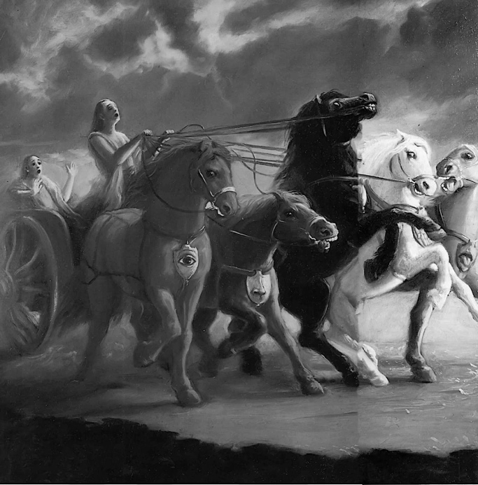
«Как правило, люди отождествляют себя с социальными ролями, которые они играют в обществе. И если я отождествляю себя с социальными ролями, то это, по сути дела, означает, что:
1) Во-первых, я считаю себя телом. Это понимание того, что я есть тело, формирует, в свою очередь, некую систему социальных ролей. И моё отождествление, начиная с тела, начинает расширяться, расширяться, расширяться и распространяется на несколько ролей.
2) Следующий этап моего отождествления себя с телом – это отождествление себя с ближайшим окружением, со своим родом. Человек начинает отождествлять себя со своей непосредственной семьёй, со своими родственниками. И так как он изначально индивидуален и самоценен, душа самоценна и индивидуальна, преломляясь через это искажённое материальное сознание, человек начинает считать себя очень особенным телом, очень гордится своей внешностью или пытается найти какие-то особенности. Человек начинает гордиться своим родом или своей семьёй, своими детьми, своей женой, кто бы это ни был.
3) Следующий уровень отождествления человека – это отождествление себя со своим государством, со своей страной, национальностью. И человек начинает думать, что моя страна – самая лучшая, моя национальность – самая лучшая, мы – носители самых высших ценностей. И в связи с этим возникает множество разных представлений.
4) И, наконец, последнее отождествление человека – это отождествление себя с некой религией, с некой идеологической формой, которая присуща данной национальности или данной общности людей» [3].
Ложное эго по мере эволюции души может расширяться подобно концентрическим кругам на поверхности воды от брошенного камня. Последовательность растворения ложного эго можно представить следующим образом:
- грубое тело,
- тонкое тело,
- семья,
- клан,
- род,
- земляки,
- национальность,
- нация,
- раса,
- религия,
- человечество,
- обитатель земли,
- обитатель вселенной,
- дух,
- Бог.
На последних стадиях растворения ложного эго человек становится имперсоналистом или начинает считать себя Богом, что является полнейшим абсурдом.
«Жажду этих [эгоистичных] наслаждений можно прикрывать
- заботой о благе общества,
- национализмом,
- религией,
- альтруизмом,
- этикой,
- библейскими заповедями,
- заботой о здоровье,
- кармической деятельностью,
- благопристойностью,
- терпимостью,
- заботой о личном благополучии,
- стремлением к освобождению от материального рабства,
- прогрессом,
- привязанностью к семье,
- страхом общественного осуждения
- или законопослушностью,
и тем не менее за всем этим будет стоять лишь одно: тяга к чувственным удовольствиям. Любая благочестивая деятельность в этом мире продиктована главным образом корыстными побуждениями, ибо никто не станет жертвовать своими интересами даже ради самых популярных моральных и религиозных идей» ([1] Чайтанья-чаритамрита 1.4.165, комментарии).
Материализация
Аханкара действует как волшебная палочка: всё, чего она касается в духовном мире, превращает в материю, которая приобретает свойства: я, мне, моё, я хочу, я так себе это представляю, я могу.
Аханкаре не угодишь, она всё оскверняет:
- на негативную информацию она действует осуждающе,
- на позитивную – завистливо.
Но есть и другая волшебная палочка, которая материю обратно преобразовывает в дух: это святое имя. Но об этом позже.
Корпорация Гугл в одном из своих продуктов – операционной системе для смартфонов Андроид – распространяет набор компонентов, правил, предписаний и инструментов под общим названием Материальный дизайн (Material Design, Material Theme, Material You). Он направлен на увеличение материального удобства и комфорта. Это и есть та волшебная палочка в действии, превращающая дух в материю, то есть живое человеческое общение в искусственное общение со смартфоном.
Отождествление
Ложное эго – это то, с чем я себя отождествляю, кем или чем себя считаю. Сейчас у большинства людей главное отождествление
- со своими гениталиями
- и с поверхностью своего тела.
«Есть душа, а есть ложная душа. Ложная душа – это мнение о себе самом, что я о себе думаю. Я с этим мнением живу, и попробуйте только дотронуться до этого моего мнения, сказать, что я не соответствую. Это, наверное, самое страшное в жизни – услышать от людей, что я не соответствую тому, что я о себе думаю. Это подобно смерти. Самоубийства бывают от этого. Какое сильное ложное эго! Я буду страдать, умирать, и всё равно на уступки не иду. Люди же дерутся, борются не на жизнь, а на смерть, смотрите. За деньги, за землю, за отождествления, за ложное эго, за то, чем я на самом деле не являюсь. Я здесь не хозяин, не собственник, я здесь временно живу. Но я думаю, что я здесь хозяин и собственник, что я здесь навечно, увековечу себя в памятниках, в детях, в деньгах, в наследстве. Я хочу всем доказать, себя здесь утвердить навечно. Это называется ложное «я». Здесь, в материальном мире, нет вечной жизни. Это мир временный. Разум должен понять эту вещь. Принять это нужно. И нам выделено время для того, чтобы осознать душу, вечность, а не обманывать себя этими отождествлениями с этими материальными объектами чувств: родственники, деньги, работа, национальность, возраст, пол. Кто такой «я»? Столько ложных обозначений, временных обозначений. Человек рождается в следующей жизни по закону кармы, а не по собственной прихоти. И нам очень больно расставаться с этим ложным мнением о себе. Я же хочу быть большим человеком. А ведь мало, кто с этим соглашается. Меня не признают на этом уровне. Нужно что-то сделать великое. А что же я могу великое сделать? Кругом завистники, много препятствий, лжи, обмана. Я начинаю жаловаться на всё это. Но просто у меня не хватает качеств, чтобы сделать что-то великое. Потому что на самом деле препятствий никаких нет для того, чтобы сделать что-то великое. Нужны просто высокие качества» [2].
«Находясь во власти материальной иллюзии, живое существо подчиняется диктату ложного эго, которое заставляет его отождествлять себя с материей и считать разные материальные предметы своей собственностью» ([1] Бхагавад-гита 7.5, комментарии).
«Ложным эго называют иллюзорное самоотождествление чистой души с тонким материальным умом и грубым материальным телом. В результате такого самоотождествления обусловленная душа
- скорбит о потерях,
- радуется приобретениям,
- боится неприятностей,
- испытывает гнев, когда её желания не исполняются,
- и жаждет чувственных наслаждений»
([1] Шримад-Бхагаватам 11.28.15, комментарии).
«Неправильная самооценка является корнем неудач. Если человек точно не знает своё местонахождения, он никуда не сможет попасть.
Почему человек ошибается в определении своей роли? Потому что это даёт человеку что-то приятное или выгодное, от чего трудно отказаться. А путь истины внешне непривлекателен: неприятно себя осознавать несовершенным человеком. Люди обижались на пророков из-за своей завышенной самооценки» [2].
«Отождествляя себя с материальным телом, обусловленная[11] душа испытывает страдания в форме постоянной сонливости и неуёмного полового влечения, которое дотла сжигает всё внутреннее умиротворение и ясность ума.
- Когда человек отождествляет себя с праной, жизненным воздухом,
- его мучит голод,
- а когда отождествляет себя с умом, то страдает от
- растерянности,
- страха
- и навязчивых желаний,
- приводящих в конце концов к подавленности.
- Когда он отождествляет себя с разумом, то
- глубоко в сердце испытывает сильнейшую горечь разочарования
- и видит бессмысленность бытия;
- когда отождествляет себя с ложным эго, то
- страдает от комплекса неполноценности, думая: «Я такой плохой»;
- когда отождествляет себя с сознанием как таковым,
- его преследуют мрачные воспоминания.
- А когда человек пытается провозгласить себя правителем остальных живых существ,
- все эти страдания приходят к нему одновременно»
([1] Шримад-Бхагаватам 11.2.49, комментарии).
Функции ложного эго
1) Ложное эго присваивает. Ложное эго любит только своё и равнодушно или ненавидит чужое. Например, человек хвалит ту марку машины, на которой он сам ездит.
2) Ложное эго сравнивает. У каждого живого существа в материальном мире в большей или меньшей степени есть комплекс превосходства и комплекс неполноценности по отношению к другим живым существам. Ведь всегда найдутся те, которые имеют больший успех и те, которые имеют меньший успех.
3) Ложное эго изолирует, если человек находится под влиянием страсти и невежества. Тогда человек чувствует себя изгоем или вынужден сражаться.
«Эго представляет собой всего лишь набор убеждений, главное из которых состоит в том, что мы якобы отделились от Бога. Отсюда следует убеждение, что Бог сердит на нас и сурово накажет, когда поймает» [16].
4) Или ложное эго интегрирует, если человек находится под влиянием благости. Тогда человек чувствует свою общность со вселенной.
Заразительность
«Гордость – такая интересная вещь: если кто-то проявляет её уверенно, все остальные невольно начинают делать то же самое. Это как вожделение: если вы видите сцену вожделения, невольно у вас включаются те же самые желания. Вот это – материальная природа. В аханкаре есть вся эта энергия, вся эта мощь. И как кто-то начинает смело, нагло себя вести, тут же проявляются подобные вещи, тут же начинаются распри, тут же начинаются сражения какие-то, вдохновляются все на какие-то наглые поступки. Уже забывают про этикет, про что угодно» [2].
Положение Бога
«Любой разумный человек понимает, что этот мир ему не принадлежит, но всё-таки он действует так, чтобы этот мир принадлежал ему. Поэтому смерть говорит: «Это не твоё» и забирает всё. Что же мне мешает признать власть Бога? Потому что я хочу сам занять это место. Если кто-то мне скажет: «Ты – Бог», мне будет приятно слышать. А если он скажет: «Нет, Бог – это вон там», мне будет неприятно слышать. «Нет никакого Бога, я – значительное существо в своих глазах, самое значительное существо». Но на самом деле, самое значительное существо, источник всех – это Абсолютная Истина, всепривлекающая личность Бога, или Кришна – говорится в Ведах. Это факт. Любой разумный человек за пять минут это поймёт. Ничего сложного. Но если кто-то ненавидит положение Бога, ненавидит Бога, потому что сам очень гордый, сам хочет быть здесь властителем, обладателем, управляющим, ему очень трудно признать этот факт, что Бог существует. Как будто кто-то вмешивается в его жизнь, в его планы – он так себя чувствует. Но это демоническое[12] сознание. Такие люди бывают, не так их много. В основном люди ведут себя, конечно, скромнее. Не претендуют на место Бога, пока… Но на место под солнцем претендуют, борются. Та же самая тенденция, но в небольшом масштабе.
Йога очищает от этих ложных представлений. Сам процесс воспевания маха-мантры таков, что он очищает от ложных представлений человека о себе и об этом мире. Просто повторяя «Харе Кришна Харе Кришна Кришна Кришна Харе Харе / Харе Рама Харе Рама Рама Рама Харе Харе», можно очень быстро очиститься от всех ложных представлений. А что означает на практике, когда человек очищается от всех ложных представлений? Это означает, что вас уже никто не обманет. Потому что обманщик приходит только к тому, кто хочет быть обманутым. Искреннюю душу никто не обманет. Это невозможно. Мы будем жить в истине. Мы не собьёмся с пути. Эту мантру нужно повторять каждый день. Кто сколько может. Чтобы не сбиться с пути, не запутаться в этой иллюзии, собственных представлениях, в событиях, которые нас окружают, чтобы не разделить людей на друзей и врагов, и кого-то ненавидеть, к кому-то быть привязанным, накапливать деньги и бояться, что всё это исчезнет, освободиться от всех этих ложных представлений и страхов, нужно повторять трансцендентную вибрацию, божественные звуки, очищающие душу. Это и есть йога» [2].
Обусловленность
«Обусловленное сознание – это сознание как материальный элемент. Материальное сознание, двойственное, разбитое на части. А душа – хозяйка всего этого. Она источник сознания. Как солнце – источник света. То есть душа – это не сознание. Сознание – это признак присутствия души. Душа ещё выше, чем сознание. То есть она сознанием управляет. Что же такое душа? Ачинтья, непостижимо. Её нельзя объяснить, даже когда увидел. А сознание – просто «я есть, я существую». Вот кто я есть? – я не знаю. Но я есть. Это моя психология. И поскольку я не знаю, кто я есть, я себя отождествляю с тем, что я знаю: я знаю, что у меня есть чувства, я знаю, что я мужчина, что у меня такой возраст, у меня есть родители. Я – это моё материальное сознание. Но кто я как душа – человек не знает. Сознание, другими словами, в этом контексте материальном – это отождествление себя с чем-то. Это материальное сознание. Вот оно и управляет умом, разумом, чувствами. С чем мы себя изначально отождествляем? «Я – наслаждающийся и господствующий». Вот э́та сила и управляет разумом, умом, чувствами. Соответственно, если я себя буду осознавать, что я – слуга Бога, всё встанет на место постепенно. Ты сможешь почувствовать, кто ты есть на самом деле» [2].
Есть два способа привести своё сознание в нормальное, адекватное состояние:
- понять свою материальную природу,
- или понять свою духовную природу.
Зеркало иллюзии.
«Аханкара формирует зеркальную природу материального мира, которая с математической точностью отражает черты личности, но сама той личностью не является. Она предоставляет нам кривые зеркала, чтобы мы меняли костюмы воплощений[13]. Часто мы одеваемся и украшаем себя просто так, для зеркала, а зеркало в ответ награждает нас мнением о себе. Меняя костюмы, мы меняем представление о себе, прибегая к помощи зеркал. Именно зеркало внушает нам всё новые и новые мнения о себе. Такова аханкара» [2].
То, что нам очень сильно не нравится в других – это как раз то, что есть в нас самих. Так срабатывает зеркальная природа аханкары. И наоборот, если что-то нравится в других, значит эта красота есть в нас самих. Наша аханкара внутри резонирует с тем, что находится снаружи. Например, для алкоголика самым обидным ругательством будет «алкаш». А у обычных людей такой эпитет не вызовет такую бурю негодования. Это потому, что обзывательство попало в точку, срезонировало с тем, что есть на самом деле. В мультфильме «Крошка Енот» это явление показано во всём художественном великолепии (https://youtu.be/u3WtV3cAIOc?si=-REExmBktGHn4g9n).
«Иллюзия – это то, что существует реально, но реальности собой не являет. Чтобы понять это выражение, мы приводим пример отражения. Отражение как оптическое свойство или явление существует реально. Но это не реальность в то же время. Мираж в пустыне, отражение в зеркале какого-то объекта. Но объект не реальный, это отражение объекта. Это называется иллюзия. Это пример такой чисто физический, наблюдаемый и простой. Но в жизни есть очень тонкие проявления иллюзии, которые, конечно же, понять невозможно собственными силами человеку. Что является отражением меня в этом мире? Не в физическом, скажем, а нравственном мире или в мире моего «я», понимания, знания, событий, оценки, мнений, суждений, убеждений, веры. То есть что из этого реально, что не реально, что отражено, что истинно? То есть мы видим, что в отношениях много происходит отражённых понятий. Например, сегодня мы что-то говорим прямо сейчас, и кто-то слышит, но каждый поймёт по-своему или что-то выберет по-своему. Каждый отразит это общение по-своему. То есть отражений будет много, и мнений будет много. После даже одного утверждения можно найти огромное количество мнений. Так вот мы видим, что отражается наша речь, наши мысли, наши поступки во взаимоотношениях друг с другом. И в итоге получается некая запутанная ситуация. Сколько мнений, столько и истин. Это иллюзия. Истина одна только» [2].
«Брахма[14] творит материальную среду: пространство, планеты, различные формы жизни, которые бы населяли разные уровни планетных систем, в том числе земной уровень. Это всё мы видим как творение высшего разума. Он это делает для двух целей: с одной стороны, каждое живое существо должно получить то, что желает – для исполнения желаний входит в этот мир. То есть желания существуют прежде, чем мы появляемся на свет. То есть причина – моё собственное желание – войти в этот мир. Затем я прибегаю к какой-то иллюзии. Чтобы войти, нужно забыть реальный мир, откуда я прихожу в этот временный мир. Я сюда пришёл и уйду. Откуда-то я пришёл, и куда-то я уйду. И вот я не знаю, откуда я пришёл, не помню. Я был в утробе матери – не помню. Куда уйду – не знаю. Вот это – мир, сотворённый Брахмой, мир как бы забвения. И каждый знает только себя в воплощённом состоянии каких-то тел. Есть живые существа разных видов: и люди, и животные, и растения – это всё одна таттва[15], это всё жизнь в различных формах. Но понимает себя в соответствии с воплощённой формой.
И когда Шива[16] появляется на свет, он появляется с другим ви́дением. Он выходит из межбровья Брахмы, творца вселенной. Это описывается в Пуранах[17]. Шива видит не обусловленным[18] телом. У него нет обусловленного тела, он – вечное существо, в отличие от других воплощённых. Он видит некую бессмыслицу. Как будто какая-то вот странная игра. Например, если кому-то сказать:
– Стань свиньёй.
Он скажет:
– Это оскорбление. Почему вы мне такие вещи говорите? Я не соглашусь на такую роль. Я человек. Оскорбительно вообще такое название ко мне применять: свинья или собака, верблюд или осёл.
То есть для меня это не приемлемо. Если вижу с человеческой точки зрения мир низших существ, я думаю: «Ну зачем это всё?» Или тюрьма: «Зачем тюрьма? Надо её разрушить, чтобы все жили на свободе, все были счастливы. Зачем тюрьма? Зачем страдания вообще?» Так видит Шива этот мир. Потому что он как бы из другого мира смотрит, из мира вечности смотрит на мир временный и мир забвения, мир иллюзии. Думает:
– Надо его разрушить.
Но Брахма говорит:
– Не время. Ты разрушишь. Это твоя роль на самом деле. Но не сейчас. Сейчас же живые существа должны пройти этот цикл воплощений, чтобы эволюционировать духовно.
Другой замысел творения: что душа должна пройти снизу вверх до человека и потом до божественного уровня. А потом уже всё разрушается» [2].
Джива (душа)
Плотное и тонкое
Ложное эго – это самая тонкая часть нашего внешнего материального сознания. Мы – духовные существа, души. Но мы относимся к категории пограничных живых существ. Это значит, что несмотря на то, что мы духовны, мы можем попадать под влияние материальной иллюзии. И граница, по которой проходит наше соприкосновение с материальным миром, – и есть наше ложное эго.
«Морская капуста очень прочно прикрепляется к камню, очень трудно оторвать, скорее сама капуста порвётся, чем оторвётся от камня. Так прочно душа держит это физическое тело. Очень сложно понять, где это соединение. Это самое тонкое соединение, называется ложное «я»» [2].
«Мы сейчас не представляем, как возможна жизнь без физического воплощения[19]. В нашем понимании это плотная энергия. Нет. Она текущая энергия. Она не плотная. С точки зрения полей, которые пронизывают вселенную, она прозрачная. Она рыхлая. Она не плотная. Для моего этого тела стол кажется плотным, для частичек излучения его не существует. Есть более тонкие, сильные, мощные энергии. В Бхагавад-гите описывается: «Органы чувств выше неодушевленной материи, ум выше чувств, разум выше ума, а над разумом стоит она [душа]» ([1] Бхагавад-гита как она есть 3.42). Во сколько раз ум тоньше органов восприятия? В сотни или тысячи раз. Сила мысли непостижима. Мы просто не все возможности используем. При помощи ума всё возможно. Йоги тренируют ум и обладают всеми мистическими совершенствами: любые материальные желания. Это вопрос практики. Но разум в тысячи, сотни тысяч раз тоньше ума. Если он проявляется, для него нет никаких препятствий: ни расстояний, ни времени. Это ещё даже о душе речь не идёт. Если вы поднимаетесь на платформу разума, вы видите прошлое, настоящее и будущее. Вы смотрите на человека и можете понять его воплощение. Мистики не спрашивают, как вас зовут, они вас сразу называют по имени, когда видят. Это не какая-то сложная вещь с позиции буддхи, разума. Но с позиции нашего телесного восприятия мы говорим: «Чудо какое-то!» Чудеса – для глупцов, для людей, которые нет знают этих тонких механизмов. Но душа ещё выше, чем разум. Так что это тело не является нашей основой. Стоит только душе покинуть тело, оно тут же распадается. Какая тут плотность? Оно создано из воздуха, из воды, из земли, эфира и огня. Чтобы держать их вместе, нужна энергия, энергия души, энергия ума, энергия разума, и энергия ещё Сверхдуши. Как только разделяются эти две вещи, оно тут же распадается на части. Если вы кремируете[20], вы ускоряете этот процесс и получаете просто кучку пепла. Это всё, что было нашим телом. Пока мы сидим, оно тоже продолжает распадаться через обмен веществ. И нам надо каждый день наполнять его водой и пищей, дышать воздухом каждую секунду. Поток проходит через наше тело. Оно не существует как что-то постоянное. Оно подпитывается, и в форме потока оно существует. Поэтому о нём говорят асат – несуществующее тело. Его иногда сравнивают с одеждой, которая иногда старится, её сбрасывают и одевают новую одежду. Бхагавад-гита даёт такое сравнение: «Как человек, снимая старые одежды, надевает новые, так и душа входит в новые материальные тела, оставляя старые и бесполезные» ([1] Бхагавад-гита как она есть 2.22). Это надо изучать. Это – наука» [2].
Сердце
«Источник духовного знания находится в сердце – даже глубже, чем расположен интеллект. Интеллект видит, но душа – взаимодействует. Интеллект ещё не взаимодействует, интеллект констатирует факт, находит истину. А во взаимоотношения вступает не интеллект, рассудка тут уже нет. Там спонтанные идут отношения, то есть любовь. Любовь к Богу – это уже вершина совершенства, духовной жизни, где человек живёт спонтанно, не напрягая ни ум, ни интеллект, ни подавляя свои чувства, ни совершая аскезы, а делая то, что он желает. И абсолютно при этом свободен от всех кармических реакций, от материальных влияний. Это жизнь души в Боге уже, в освобождённом состоянии» [2].
Сердце, конечно, – это орган в системе кровоснабжения организма. Но намного более тонкое и важное значение понятия «сердце» – это самая внутренняя часть нашего сознания, сердцевина нашей личности. Там, в сердце хранятся наши самые сокровенные желания, мотивы, чаяния, мечты, о которых мы сами даже не подозреваем. И до них добраться очень непросто. Как только мы доберёмся до содержимого нашего сердца, в тот же миг все наши проблемы будут решены. Кто-то может подумать, что он знает свою мечту. Чего тут сложного? Миллиард долларов! Но на самом деле это не мечта, а всего лишь предполагаемое средство для достижения мечты. И пока ещё никто не достиг своей таинственной скрытой мечты, которую обозначают кодовым словом «счастье», с помощью такого средства.
Сердце можно сравнить с тайной комнатой, внутренними покоями, в которых обитает душа. Но в этих покоях сильно загрязнились окна. Надо очистить их. И тогда душа засияет как миллионы солнц. Процесс очищения сердца – это первое, что надо начать на пути к счастью.
«Сердце – это место расположения души, сидение для души. Центр
нашей жизни: мысли, эмоции и всё остальное. Ум – это желания и эмоции – тоже
расположен в сердце. И разум тоже расположен в сердце. Когда говорят, что
сердце болит – это ум и разум или ложное эго. Душа не болит. Душа чувствует
разлуку с Богом. Душа – это одновременно ум, разум, чувства и тело. Но в
материальном смысле они разделены, локализованы: душа отдельно, ум отдельно,
разум отдельно, тело отдельно, органы чувств отдельно. И чтобы стать хозяйкой
этого тела, душа должна вспомнить свою целостность с Богом. Тогда она может
управлять этим телом как одним целым. Не так, что ум в одну сторону, разум в
другую сторону, чувства в разные стороны – я сам не знаю, что я хочу. То есть
нужно взять всё это и объединить. Вот это – могущество души. А сейчас она
дремлет в этих грёзах чувств, ума, там пребывает и думает, что так она живёт.
Это просто бесполезное блуждание ума и чувств, это не духовная практика. И
умонастроение развивает какое-то в этой жизни, потом это умонастроение
переносится в его следующую жизнь и так далее, и так далее, и так далее – новые
тела создаются.
Чистое сердце означает, что в сердце нет грязных желаний. Что это означает?
Есть грязное желание не в сердце, а есть в сердце. В чём разница? Когда грязное
желание не в сердце: вы видите, что кто-то имеет это грязное желание и
говорите: «Фу!» То есть в сердце нет отклика, вы не чувствуете связи с этим, у
вас нет вкуса этого вообще. Но когда проникает в сердце, вы чувствуете вкус к
этому – вот в чём дело. Это в сердце. Значит, в греховных желаниях, когда они
проникают в сердце, в них есть вкус, поэтому от них трудно избавиться. Нужно
развить другой вкус, более высокий вкус, он вытеснит это всё. Поэтому сердце
нужно в чистоте держать – это главное. Регулирующие принципы[21],
духовная практика поддерживают чистоту, чтобы не развивать греховных извращённых
вкусов» [2].
Обусловленность
- «Скорбь,
- радость,
- страх,
- гнев,
- жадность,
- замешательство
- и сильное желание,
- а также рождение
- и смерть –
всё это суть ощущения ложного эго, а не чистой по природе души» ([1] Шримад-Бхагаватам 11.28.15).
«Чистая душа остаётся в этом мире только потому, что её ум находится под влиянием ложного эго, которое стремится господствовать над материальной природой» ([1] Бхагавад-гита 6.5, комментарии).
Сама душа абсолютно чиста, но в материальном мире она находится в так называемом обусловленном состоянии, то есть в иллюзии, подобной сну. Обусловленность души состоит в том, что она считает себя телом.
«Когда душа пребывает в обусловленном состоянии, её представления о жизни оскверняются страстью и невежеством, проявляющимися в виде
- привязанности,
- враждебности,
- жадности,
- скорби,
- иллюзии,
- страха,
- безумия,
- самомнения,
- оскорблений,
- выискивания недостатков у других,
- лживости,
- зависти,
- нетерпимости,
- страсти,
- замешательства,
- голода
- и сна.
Всё это враги обусловленной души» ([1] Шримад-Бхагаватам 7.15.44).
Таким образом, можно сделать общий вывод о том, что материальное тело, состоящее из различных элементов, является оболочкой души.
- «Пять грубых материальных стихий,
- ложное эго,
- разум,
- непроявленное[22],
- десять органов чувств[23]
- и ум,
- пять объектов чувств,
- желание,
- ненависть,
- счастье
- и горе,
- совокупность всех материальных элементов[24],
- признаки жизни[25]
- и решимость –
всё это, вместе взятое, составляет поле деятельности [тело] и происходящие в нём изменения.
Все эти элементы в совокупности образуют материальное тело, которое в своём развитии претерпевает шесть изменений:
1) рождается,
2) растёт,
3) некоторое время существует,
4) производит побочные продукты жизнедеятельности,
5) затем стареет
6) и наконец погибает.
Таким образом, поле деятельности [тело] материально по природе и не вечно, в отличие от того, кто знает поле и владеет им [души]» ([1] Бхагавад-гита 13.6-7).
«Пять элементов, чувства, управляющие чувствами полубоги, а также ум, побуждаемый к деятельности духовной душой, – всё это в совокупности составляет материальное тело. Душа полностью отлична от этого сочетания грубых и тонких материальных элементов» ([1] Шримад-Бхагаватам 4.20.12).
Все мы – души, дживы, живые существа. Но сейчас мы находимся в так называемом обусловленном состоянии, не понимаем, кто мы, где мы, что с нами происходит, как во сне. Мы – такие живые существа, которые могут попасть в иллюзию, специально для нас созданную Богом. Мы – пограничные живые существа. Наша в какой-то степени самостоятельность позволяет нам примкнуть к разным покровителям.
«В обусловленном состоянии живые существа, частицы пограничной энергии, представляют собой сочетание духа и материи. Изначально пограничная энергия подчинена энергии духовной, но из-за влияния материальной энергии живые существа, погрузившись в забвение, с незапамятных времён скитаются по материальному миру.
Живое существо становится обусловленным, когда злоупотребляет своей независимостью, изначально присущей духу, ибо в этот момент оно теряет связь с духовной энергией. Когда же по милости Верховного Господа и Его чистого преданного[26] живое существо обретает просветление и развивает желание возродить в себе естественную склонность к любовному служению Господу, оно погружается в благодатную атмосферу вечного блаженства и знания. Злоупотребляя своей независимостью, джива, или пограничное живое существо, отказывается от вечного умонастроения слуги и начинает мнить себя не энергией, а её источником. Такое ложное понимание природы своего бытия развивает в живом существе дух повелителя материальной природы» ([1] Чайтанья-чаритамрита 1.5.66, комментарии).
Когда человек осмысливает себя душой, меняется его физиология, психология, мироощущение. Если же он не осмысливает себя душой, он думает только о выживании и, по сути, ничем не отличается от животного.
Распятие
«Для освобождённой души в этом материальном мире нет ничего ценного. Но чтобы войти в материю, ей нужно оценить, придать цену материи, иначе душа не примет её.
1) Для этого существует ложное эго – первое устройство, которое помогает душе почувствовать себя частью материи. Сама по себе материя – невежество – не имеет никакой ценности, абсолютно бесполезна. А в соприкосновении с живым существом бесполезная материя приобретает ценные свойства.
2) Но чтобы действовать в этом материальном мире, нужен ещё один элемент – стратег. Потому что душа не стратег в материальном мире, она не знает, что тут делать. Ей нужен материальный разум, который может различать все свойства материальной природы. Это следующий элемент, который присоединяется к этой системе. Часть аханкары становится разумом, чтобы различать.
3) Часть разума становится умом, чтобы чувствовать и желать. Потому что сама душа не чувствует и не желает материю. Нужен ум, разум, чтобы знать, как общаться с этим миром.
4) И в конце концов завершается всё это органами восприятия, которые формируют, воплощают, материализуют желания и мысли в материальные органы, в тело: о чём думаешь, таким и становишься.
Душа подключена таким образом к материальному миру. А тело подключено к материальным стихиям. И так возникает чувство, что я живу в этом мире. Великая иллюзия. И таких живых существ мириады вокруг. И все они живут в борьбе за существование. Поэтому я думаю, что это и есть нормальная жизнь. Всё это хитроумное устройство сбивает с толку основательно. На самом деле мы под контролем материальной природы находимся, которая нас просто порабощает.
Цельная душа распята на этом кресте тела, прибита по частям: тут глаза, тут уши, тут нос, отдельно ум, отдельно разум. Чтобы посмотреть, нужны глаза, чтобы послушать, нужны уши, чтобы понять нужен ум. Она обездвижена, нет экстаза. В этом теле так» [2].
«Человеческое тело подвижное, тело гибкое, тело прочное одновременно с этим, ум скоростной. А чьи это свойства все: крепкость, гибкость, подвижность, лёгкость, невесомость, тяжесть? Всё в теле есть: холодное, горячее – воздух в теле по-разному реагирует: есть холодные потоки в теле, есть горячие потоки воздуха. Элементы огня. Это всё – свойства души. Поэтому о душе и говорится:
- и тяжёлая
- и лёгкая,
- и подвижная
- и недвижимая,
- и быстрая
- и постоянная,
- медленная,
- стабильная,
- осмотрительная
- и беспечная –
всё присуще ей.
Если вы возьмёте все-все способности живых существ, все функции органов тела и соедините, суммируете в одну, мы примерно сможем понять природу души, это будет лишь напоминать способности одной души. Разные функции тела разделены на части, локализованы, но за этим стоит одна энергия души, она всё умет, ничего невозможного для души не существует. Когда она себя отождествляет с телом, она не может думать руками, а только мозгом. Душа разделяется, распинается в теле на части. Одна её часть прикрепляется к зрению, другая часть прикрепляется к мышлению, третья часть прикрепляется к хождению и так далее.
И получается такая странная картина: распятая обездвиженная душа в подвижном теле. Чудеса! Что же держит душу на кресте? Она сама, гвозди надежды на будущее счастье: «Я ещё подержусь за это тело, потому что в будущем я буду счастлив». Эта надежда и держит людей в материальном мире, мы надеемся на что-то в материальном мире. А каков результат?» [2].
«Вообще о душе можно много чего сказать, и всё будет правильно. Если я скажу, что душа твёрже камня, – это будет правда, а если я скажу, что она прозрачнее воздуха и эфира, – это тоже будет правда. Если я скажу, что она величественная, – правда, а если я скажу, что она – смиренная, как трава на дороге, – тоже правда. Практически, любые вещи, которые мы видим здесь, их качества – они есть в душе. Если вы соедините все способности всех живых существ, всех 8 400 000 форм жизни (червь, змея ползает, насекомое летает и бегает, птица летает, рыба плавает, сиддхи, чараны, гандхарвы, бхуты, привидения тоже имеют свои мистические силы), – это будет примерно все свойства одной души: всё может. Поэтому к ней приложимы многие-многие определения. Но в целом её можно определить как свет. Как свет солнца, который может по-разному проявляться через растения, через другие явления – много свойств открывается у него в контакте. Так же и душа: она, попадая в то или иное тело, может там обладать разными свойствами: может научиться летать, может научиться плавать в воде, может жить в огне, может перемещаться на другие планеты. Она всё может. В разных телах она осваивает всё это быстро, обуздывает каждое тело, словно объезжает коня. Так душа, обуздывая все эти формы жизни, выше, выше, до человеческой формы жизни, где она уже может обуздывать разумом ум и чувства – дана ей эта возможность. Если мы сейчас совладаем с этим, если душа победит ум, который навязывает ей несвойственные вещи, и чувства, которые отвлекают её от реальности, она познает Бога. Поэтому о душе можно сказать, что она и большая, и маленькая, и лёгкая, и тяжёлая, и всё будет правдой. И сияет ярче солнца. Но Веды её описывают как маленькую сияющую частичку атомарного размера в области сердца, плавающую в воздушных потоках, в пранах в теле человека. Тело непосредственно она не воспринимает, через праны ощущает тело» [2].
Духовные чувства
«Живые существа наделены духовными чувствами. Каждое живое существо в своей изначальной духовной форме обладает всеми чувствами, которые в обусловленном состоянии покрыты материальным телом и умом и действуют как материальные чувства. Деятельность материальных чувств является искажённым отражением деятельности изначальных, духовных чувств. Поражённая болезнью материализма душа, покрытая материей, занимается материальной[27] деятельностью. Истинные чувственные наслаждения доступны душе только тогда, когда она излечится от болезни материализма. Только в своей чистой духовной форме, не осквернённой материей, живое существо может испытывать подлинные чувственные наслаждения» ([1] Шри Ишопанишад 11, комментарии).
Но «Удачливая душа, которую Верховный Господь благословил божественным даром любознательности, будет задавать вопросы о природе Абсолюта и, слушая ответы великих мудрецов, которые записаны в Ведах, сможет понять Господа таким, каков Он есть» ([1] Шримад-Бхагаватам 10.87.2, комментарии).
Чудо
«Одни смотрят на душу как на чудо, другие говорят о ней как о чуде, третьи слушают о душе как о чуде, а четвёртые, даже услышав о душе, всё же не способны постичь её» ([1] Бхагавад-гита 2.29).
1) Одни смотрят на душу как на чудо. Они уже даже могут видеть душу. Не многим это удаётся.
2) Другие говорят о душе как о чуде. Они ещё не видят душу, но уже представляют её.
3) Третьи слышат, что душа подобна чуду. Они не могут представить себе душу, но им хотя бы интересно послушать о душе.
4) А есть и такие, кто, даже услышав о душе, не могут постичь её. Им вообще не интересна эта тема. Они ещё не доросли до этого.
К какой категории вы себя отнесёте?
На бегуна в жару надели полушерстяной костюм.
Шипящую эссенцию налили в вафельный стаканчик.
Душу родили в плотном теле из костей и кожи.
Надолго ли, да и вообще возможно ли такое?
Нектар богов и яд змеи в одном сосуде.
Круглый квадрат, квадратный круг попробуйте нарисовать.
Но факт упрямый – есть душа, и мы все это видим.
Она прекрасна, удивительна и непостижима.
Духовное тело
«Душа – это сжатое духовное тело в виде семечка. Когда вы поймёте себя изнутри, вы не узнаете себя в зеркале» [2].
«Сознание – в материальном теле. Душа как бы спит. Не проявлена здесь. То, что мы называем душой в этом теле – это сознание, это ещё не душа. Душа спит. Мы не видим душу. Мы слышим о душе, но мы не знаем: кто я как душа? Понятия не имеем. Но сознание присутствует как свет души, как энергия души, как признак её присутствия. Сама душа, когда проснётся, – у неё есть форма. Ей не нужно это тело. Это тело я приобрёл, как я приобретаю тело во сне» [2].
«Духовное тело – это любовь. Она свободна. Она безгранична.
Личности
- могут соединяться духовно вместе в одну,
- могут выделять экспансии,
- могут думать друг о друге на расстоянии и общаться.
Все сиддхи, все способности есть в душе. Все, которые нам известны и неизвестны. Душа обладает всеми вселенскими энергиями и сиддхами» [2].
Как обнаружить душу?
«Чтобы обнаружить душу, нужно исследовать всё, что её окружает, говоря: «Это не душа, это не душа». Так человеку надлежит учиться различать материю и дух» ([1] Шримад-Бхагаватам 7.7.23).
«Самосветящаяся душа, пребывающая внутри тела, отлична от видимого грубого и невидимого тонкого тел. Она всегда остаётся неизменной основой для бесконечно меняющихся тел, подобно тому, как эфир всегда остается неизменной основой всех преобразований материи. Таким образом, душа бессмертна и не сравнима ни с чем материальным» ([1] Шримад-Бхагаватам 12.5.8).
Сат-чит-ананда
«Душа описывается в Ведах с разных точек зрения. Попыток доказательства огромное количество. Но увидеть душу очень сложно. Ум тоже сложно увидеть. И разум тоже сложно отличить от ума.
Но душа имеет совершенно другие характеристики. Она сат-чит-ананда:
- вечна,
- полна знания
- и полна блаженства.
И мы это можем обнаружить в себе прямо сейчас. Как? Каждый хочет эти три вещи. Спросите любого человека. Не только человек, любое живое существо. Внутри каждый стремится к вечности, знанию и блаженству, счастью. Мы не согласны жить какой-то отрезок времени или знать, понимать что-то ограниченное. Если мне скажут, что мои знания ограничены, я себя буду чувствовать плохо, меня обидят таким образом. И счастья я хочу безгранично много, я не хочу останавливаться на чём-то. Откуда этот потенциал? Ну спросите у ума, например, это возможно? Он скажет: невозможно. Спросите у разума: это возможно? Невозможно. Все умирают, никто не может иметь полного знания, никто, конечно же, не может быть счастлив до конца в этом мире. Почему ты это хочешь, зачем ты это хочешь? Разум знает, что это невозможно. А кто знает, что это возможно? Парадоксальная психология. Как будто я знаю одной своей частью, что это невозможно, но всё равно хочу. Парадокс. Мы все такие. А всё потому, что там есть душа, у которой совершенно другие свойства. Она не согласна умирать, потому что она вечная по природе. Не согласна страдать, потому что в её природе – блаженство, а не страдание. А в материальном теле, материальном измерении всё наоборот: асат, ачит, нирананда. Здесь любое наслаждение чувств связано с каким-то неудобством. Веды дают пример: когда мы едим кхир (сладкий рис, деликатес, самая лучшая сладость), но он смешан с песком. Вкусно? Конечно, вкусно. Но ужасно неудобно, на зубах песок. С этим сравнивается материальное счастье: всегда есть какое-то неудобство. Только поженились, уже через два дня они выходят погулять на улицу, идут под руку, и уже он смотрит на других женщин. А когда заканчивается медовый месяц – вообще начинает раздражаться. Здесь всегда какой-то песок, какие-то проблемы всегда» [2].
А теперь рассмотрим качества души по пунктам.
1. Вечная и неизменная
Душа никогда не создавалась, у неё нет творца.
«Душа не рождается и не умирает. Она никогда не возникала, не возникает и не возникнет. Она нерождённая, вечная, всегда существующая и изначальная. Она не гибнет, когда погибает тело» ([1] Бхагавад-гита 2.20).
Душа может находиться в любых условиях обитания, в любом теле.
«Наше постоянно меняющееся тело не может существовать вечно. Современная медицина признаёт тот факт, что на клеточном уровне тело меняется каждое мгновение; это обусловливает процессы роста и старения. Но вечная душа, несмотря на все изменения, которые происходят с телом и умом, всегда остаётся неизменной. В этом разница между материей и духом. По своей природе тело изменчиво, а душа вечна» ([1] Бхагавад-гита 2.16, комментарии).
Душа уже на протяжении многих жизней соприкасалась со множеством тел и действовала по-разному, соприкасаясь с разными телами, но при этом она никак не затронута всеми этими переменами и остаётся неизменной.
«Воплотившаяся[28] в теле душа постепенно меняет тело ребёнка на тело юноши, а затем на тело старика, и точно так же после смерти она переходит в другое тело. Трезвомыслящего человека такая перемена не смущает.
Того, кто постиг природу индивидуальной души, Сверхдуши, а также материального и духовного миров, называют дхирой, самым трезвомыслящим среди людей. Такого человека не может ввести в заблуждение непрекращающаяся смена тел» ([1] Бхагавад-гита 2.13).
Душа неподвижная, но переселяется из тела в тело.
«Как человек, снимая старые одежды, надевает новые, так и душа входит в новые материальные тела, оставляя старые и бесполезные» ([1] Бхагавад-гита 2.22).
Душа – нерождённая, но что-то заставляет её рождаться в этом мире. И даже в одном воплощении, она постоянно меняет свои одежды-тела. Благодаря обмену веществ каждые семь лет происходит полное обновление физического тела на клеточном уровне.
2. Обладает сознанием
Душа сознаёт саму себя. Сознание души пронизывает всё тело живого существа.
«Каждый из нас может понять, чем пронизано его тело, – оно пронизано сознанием. Всем телом или какой-то одной его частью каждый может испытывать боль или приятные ощущения. Сфера действия индивидуального сознания ограничена рамками данного тела. Боль и наслаждения, которые ощущает одно тело, неведомы другому. Это объясняется тем, что в каждом теле находится индивидуальная душа. Признаком её присутствия является наличие в теле индивидуального сознания» ([1] Бхагавад-гита 2.17, комментарии).
«Сознание – это свет души» [1].
Душа совсем не подвержена влиянию материи, но её сознание может попасть под власть материальной иллюзии. В этом случае мы говорим: материальное сознание. Ребёнок, играющий в компьютерную игру, кричит: «Я его убил!», хотя на самом деле он не может убить компьютерного персонажа.
Душа – вечно свободная. Материальная природа не может связать её. И в то же время душу почему-то часто называют
- обусловленной,
- связанной,
- запутавшейся,
- несвободной,
- страдающей.
Душа есть чистое сознание, но при этом она знает саму себя, является сознающей.
«Душа обладает сознанием, и она само сознание: об этом также сказано в Ведах, и мы должны принять эту истину» ([1] Бхагавад-гита 2.25, комментарии).
Душа настолько удивительна, что могущественный ум и разум, которыми временно пользуется душа, являются всего лишь жалкими костылями по сравнению с её собственными, «встроенными» умом и разумом.
«Используя грубые и тонкие элементы низшей энергии (материи) для удовлетворения потребностей своих чувств, частицы высшей энергии (индивидуальные существа) утрачивают свой истинный, духовный ум и разум. Это происходит из-за влияния материи» ([1] Бхагавад-гита 7.5, комментарии).
Душа непостижима, но её нужно постичь.
«Размеры души настолько малы, что её невозможно увидеть даже в самый мощный микроскоп, поэтому душу называют невидимой. Что же касается самого факта существования души, то его нельзя установить экспериментально, и единственным доказательством её существования являются Шрути, ведические писания. Мы должны принять их слова на веру, ибо другого источника знания о существовании души у нас нет, хотя мы и можем ощутить её присутствие. На свете есть очень много истин, которые нам приходится принимать на веру, просто доверяя авторитету того, кто их утверждает. Так, никто из нас не станет отрицать факт существования своего отца. Мы не сомневаемся в том, кто наш отец, хотя единственным доказательством этого являются слова нашей матери. И точно так же единственным источником знания о душе являются Веды. Иными словами, люди не могут постичь душу экспериментальными методами» ([1] Бхагавад-гита 2.25, комментарии).
3. Всё время счастлива
Душе присуще стремление к вечному безграничному блаженству, счастью. И ей всё время будет мало. Маленькая душа желает Бога, океан блаженства. А под влиянием иллюзии ей может казаться, что она страдает.
Душа не имеет недостатков. Она изначально чиста как вода. Недостатки – это примеси. Вода не может быть грязной, вода всегда чиста, в ней просто может быть примесь. Например, жадность, на первый взгляд, недостаток. Но изначальная, трансцендентная жадность – это безграничное стремление принимать и отдавать любовь.
Душа вечно блаженная. Душа никогда не страдает. Страдает ум. Но как нечто безжизненное может страдать?
4. Атомарность, неделимость
«Душу нельзя рассечь никаким оружием, сжечь огнём, намочить водой или иссушить ветром.
Неизменная, неподвижная и вечная, она пребывает повсюду и всегда сохраняет свои свойства» ([1] Бхагавад-гита 2.23-24).
Хоть душа и атомарная, но её сознание распространяется по всему телу.
«Индивидуальная душа представляет собой духовный атом, который меньше материального, и таким атомам нет числа. Эта крошечная духовная искра является движущей силой материального тела, и её влияние распространяется на всё тело, подобно тому, как действие лекарственного препарата распространяется на весь организм. Влияние вечной души ощущается в каждой точке тела, – оно проявляется как сознание. Наличие сознания доказывает присутствие души в теле. Даже простой человек понимает, что тело, лишённое сознания, мертво. Если сознание покинуло тело, его нельзя вернуть, какие бы лекарства и вещества мы ни вводили в это тело. Следовательно, источником сознания является не комбинация материальных элементов, а вечная душа» ([1] Бхагавад-гита 2.17, комментарии).
«Размером индивидуальная душа не больше атома, и ощутить её присутствие может только совершенный разум. Эта крошечная душа, которая парит в пяти воздушных потоках: прана, апана, вьяна, самана и удана, находится в сердце и распространяет свою власть на всё тело живого существа. Когда душа очищается от оскверняющего влияния пяти материальных воздушных потоков, она полностью проявляет свою духовную природу» (Мундака Упанишад, 3.1.9).
5. Эманации (экспансии)
Ещё один парадокс: по своему желанию душа может делать свои экспансии. Ведь душа – такая же, как Бог, только маленькая. Она может то же самое, что и Бог, только в маленьком масштабе. Как капля в океане тоже солёная.
Бог делает эманации (экспансии) из Себя. Это получаются отдельные личности: Боги (вишну-таттва) и живые существа (джива-таттва). Также существуют другие духовные формы жизни: шива-таттва, шакти-таттва и многие другие. Существует бесконечное множество духовных форм жизни, пока ещё не известных нам.
Значит, и душа, «созданная» по образу и подобию, тоже так может. Только Бог может их делать бесконечно много и любого могущества, а душа – ограниченно по количеству и могуществу.
Так, человек может наделять какой-нибудь неодушевлённый предмет личностью:
- взрослые дают имя своему автомобилю,
- девочки играют с куклами,
- дети в игре вообще могут любой предмет воодушевить,
- программист создаёт программу,
- художник рисует картину,
- архитектор создаёт дом,
- инженер изобретает и патентует какое-то устройство,
- директор предприятия даёт индивидуальность своему продукту,
- йог может делать несколько экспансий себя,
- существует такое понятие, как эгрегор,
- и так далее.
Это всё можно назвать частичным воплощением.
Душа это может, если у неё хватает на это: полномочий, квалификации и уровня духовного развития, которыми её наделяет Бог в соответствии с их взаимными отношениями.
Песня души
«Душа – это живое желание.
Душа постоянно поёт и танцует.
Душа неописуемо красивая и могущественная.
Душа на сто процентов слуга и преданная.
Душе ничего не нужно взамен.
Верховная Личность Бога – это красота.
И мы все Его частички.
И никакой эксплуатации, даже тени её нет.
Душа обнажённая и прекрасная, а тело мы закрываем» [2].
Что нравится преданным?
Это абсурд.
Никто не поймёт.
Никогда.
Свободу - отдать.
Справедливость - забыть.
И быть должником.
Навсегда.
Похоже всё это
На страшный позор.
Шокированы
Все вокруг.
Но это любовь.
Вот такая она.
Спасибо тебе,
Мой Господь.
Душа может говорить и так:
Нет у меня имени.
Нет у меня работы.
Нет семьи.
Я свободный в лучах света.
В лучах любви.
Я вечный.
Счастье – это моя природа.
У меня всё есть.
Мне не о чем заботиться.
У меня всегда всё хорошо.
Нет никакого страха.
Всё надумано было.
Это плохой сон мне снился.
Я не рабочий.
Я не муж, не жена, не мужчина, не женщина.
Я свободный [2].
Но душа может быть и беспокойной. Тогда она так поёт:
«О, Господь вселенной! Мне не нужны
- ни материальное богатство,
- ни материалистичные последователи,
- ни красавица-жена,
- ни плодотворная деятельность, воспетая столь цветистым языком.
Я просто хочу служить Тебе жизнь за жизнью без каких-либо на то причин» (Шикшаштака, 4).
Три подхода к изучению души
1) Первый аналитический подход: душа как сознание пронизывает всё тело целиком. Сознание неразрушимо.
Душу можно вычислить при помощи санкхья-йоги – утончённых мыслительных процессов. Сосчитывая двадцать четыре материальных элемента:
- пять грубых материальных стихий:
- эфир
- воздух
- огонь
- вода
- земля
- ложное эго,
- разум
- и три гуны в непроявленном состоянии,
- пять познающих органов чувств:
- уши
- кожа
- глаза
- язык
- нос
- пять органов действия:
- руки
- ноги
- голосовой аппарат
- анус
- гениталии
- ум,
- пять объектов чувств:
- звук
- касание
- форма
- вкус
- запах
можно обнаружить двадцать пятый элемент. Это и есть дух. Это факт, не теория.
2) Второй аналитический подход: тело меняется каждую секунду, а душа остаётся неизменной. «Я» – носитель тела, я неизменный. Значит, после смерти «я» остается. Оно не менялось никогда.
Тело пронизано от мозга до кончиков пальцев в равной степени одним и тем же: сознанием. Вот она, душа. Опять факт, никакой теории.
3) Душу можно понять в действии. Душа – это наша бескорыстная деятельность. Через бескорыстную деятельность у нас есть возможность осознать свой дух в действии. Не только умозрительно, но и на практике.
Можно себя ощутить душой.
- Если подумаешь о ней, всё равно не сможешь её представить.
- Если услышишь о ней, всё равно не сможешь её представить.
- Если даже увидишь её, не поверишь.
- Чудо, не сможешь его объяснить.
Но можно осознать себя душой через бескорыстную деятельность, через преданное служение.
В Ведах Бог излагает формулу мира:
«Человек, полностью осознавший,
1) что Я единственный, кто наслаждается всеми жертвоприношениями и плодами подвижничества,
2) что Я верховный владыка всех планет и полубогов,
3) а также друг и благодетель всех существ,
избавляется от материальных страданий и обретает полное умиротворение» ([1] Бхагавад-гита 5.29).
Все три вышеперечисленных подхода – факты, их нельзя опровергнуть.
Понять присутствие души можно при помощи логического анализа, ощутить присутствие души можно при помощи медитации. Таким образом, есть научные аргументы: факты и опыт.
Личность
Каждая душа неповторима, уникальна, индивидуальна. Даже снежинок двух в не найдёте одинаковых. А уж душ – тем более. При этом количество душ бесконечно. И они никогда не повторяются. Это не укладывается в голове. Материальным умом это невозможно понять.
В музыке есть такое понятие – рага – это музыкальная концепция, закон построения музыкальной формы, характеризующий определённое настроение, эмоцию или даже образ мышления. Простыми словами, это форма музыки. И у души тоже есть форма. Но эта форма – не что-то внешнее, скрывающее какое-то содержание. Это скорее образ. На санскрите есть слово рупа, оно точнее характеризует внутреннюю форму, или образ. Так вот, у каждой души есть сварупа, то есть свой уникальный индивидуальный образ. Это ещё называют духовным телом, объединяющим все составные части тела (как будто разделённые в материальном мире) в единый неделимый образ. И если душу сравнить с рагой, то Бог – это грандиозное музыкальное произведение, состоящее из этих раг.
«Личность – это что-то очень сокровенное, самое сокровенное. Чтобы сохранить это сокровенное бхакти, Кришна просит Господа Шиву распространять философию майявади[29] материалистам. Иначе они всё извратят. Они против Кришны[30] должны выступать. Он их не пускает к Себе. Потому что сохранить нужно в сокровенном виде, защищая бхакти[31]. Все бесчисленные энергии, которые есть у Кришны, – они защищают чистое бхакти. Это настолько сокровенное, что это невозможно описать ни Ведами, ни словами. Только из сердца чистого преданного можно получить это. Это – личность, это – индивидуальность. Поэтому открывать своё сердце вот так вот нараспашку перед всеми опасно. Это сокровенное. Если только мы на самом деле уже в сознании Кришны, это возможно. В этом мире полностью никому нельзя доверять. Только Богу и духовному учителю – говорится. В остальном мы должны иметь разум» [2].
Колесница тела
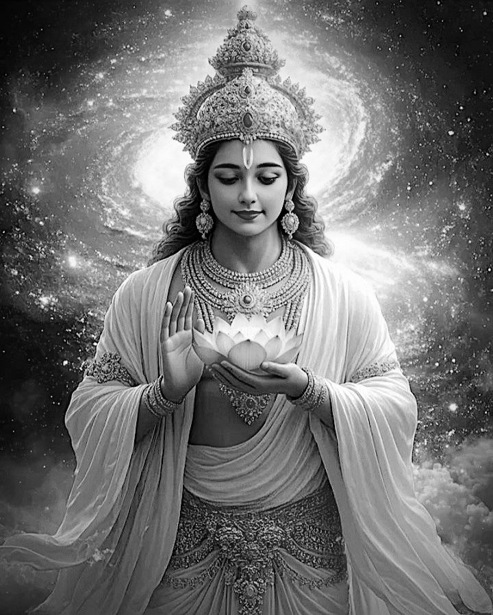
«Индивидуальная душа сидит на колеснице материального тела, которой управляет возница-разум. Ум – это вожжи в руках возницы, а чувства – лошади. Под воздействием ума и чувств живое существо то радуется, то страдает. Так утверждают великие мудрецы» (Катха Упанишад, 1.3.3-4).
«Те, кто сведущ в духовной науке, сравнивают тело, созданное по воле Верховной Личности Бога, с колесницей.
- Чувства подобны лошадям,
- а ум, хозяин чувств, – вожжам;
- объекты чувств – это цели пути,
- разум – колесничий,
- а сознание, пронизывающее всё тело, – причина заточения в материальном мире.
- Десять потоков жизненного воздуха в теле сравнивают со спицами колёс колесницы,
- а верх и низ колеса называют религией и безбожием.
- Живое существо, отождествляющее себя с телом, – это хозяин колесницы.
- Ведическая мантра пранава – это лук,
- а сама чистая душа – стрела,
- мишень для которой – Верховное Существо»
([1] Шримад-Бхагаватам 7.15.41-42).
«Органы чувств выше неодушевлённой материи, ум выше чувств, разум выше ума, а над разумом стоит она [душа]» ([1] Бхагавад-гита 3.42).
«Когда укрепляется разум, он начинает опираться на бхакти[32] (вкус, который даёт Бог в сердце), а не на свой собственный вкус. Такой разум умиротворяет ум. На самом деле духовный разум очень силён, материальный разум проигрывает уму, но если разум связать с шастрами[33], с духовным вкусом, то он побеждает ум, он может его контролировать, как возница управляет лошадьми, держа вожжи в руках. Возница – это тот, кто видит цель, разум связан с целью, он живёт этой целью. И вот эта сила жажды к Кришне, побеждает ум и делает его другом» [2].
Живые существа «словно находятся в машине, созданной материальной энергией» ([1] Бхагавад-гита 18.61-62).
Есть ведическая притча о купце и его четырёх женах. И когда купцу настало время умирать:
Первая, любимая, жена наотрез отказалась идти с ним в мир иной.
Вторая жена сказала, что она уже знает, к кому пойдёт после его смерти.
Третья жена сказала, что совершит похоронные обряды, но у неё своя жизнь.
И тогда тихий и спокойный голос сказал: «Я пойду с тобой. Я всегда была с тобой. Я – твоя четвёртая, самая нелюбимая жена».
Первая, любимая жена – это наше материальное тело.
Вторая жена – богатство человека.
Третья жена – это наши родственники, друзья.
А четвёртая жена – это наш неизвестный ближайший друг, божья искра в сердце.
Ведическое знание долгое время было доступно только избранным. Но сейчас для каждого цивилизованного человека есть возможность изучать ведические писания. В школах и институтах люди современной невежественной цивилизации изучают лишь грубое физическое тело и механизмы. Официальная наука считает, что жизнь возникает в теле благодаря определённым сочетаниям молекул и атомов. Людям почти ничего не известно о душе.
На самом деле душа является временной владелицей материального грубого и тонкого тела. И функционирование этого механизма тела-сознания полностью обеспечивается Богом.
Мудрецы, которые это уяснили, говорят так:
«Ты способность чувств открывать живым существам свои объекты, Ты полубоги, управляющие этими чувствами, и Ты же позволение, которое полубоги дают, чтобы чувства могли действовать. Ты способность разума принимать решения и способность живого существа хранить события в памяти» ([1] Шримад-Бхагаватам 10.85.10).
Душа есть у любого живого существа. Точнее, любое живое существо – это душа, у которой есть тело. И ни одна душа не является лучше или хуже другой души. Самый мелкий микроб – это такая же необычайная душа, как и любой человек. Он имеет такую же ценность для Бога, как и учёный, который рассматривает этого микроба в микроскоп. И убийство живых существ, подразумевая, что, якобы, у них нет души – такое же преступление, как и убийство человека. Если эту мысль развить, то становится очевидным, что мясоедение является причиной войн в современном мире. Потому что следующей ступенькой логического развития идеи, что у животных нет души, будет идея, что у человека тоже нет души. И многие современные люди действительно уже так думают.
«Удовольствие и боль, любовь и ненависть, радость и горе, мысль и свершения являются выражением обладающего самосознанием бессмертного духа, а мозг – это лишь клавиатура чудеснейшего инструмента, на котором человеческий дух играет свою симфонию жизни, как музыкант выражает себя на своей скрипке» [14].
Параматма (Сверхдуша)
В Шримад-Бхагаватам (10.2.27) даётся такое описание устройства человека:
«Тело (вселенское тело и индивидуальное тело имеют одинаковый состав) можно образно назвать «изначальным деревом». Это дерево
- растёт на земле материальной природы, которая служит ему опорой, и приносит двоякие плоды:
- наслаждение, вызванное счастьем,
- и страдание, вызванное горем.
- Причиной дерева, образующей три его корня, является соприкосновение с тремя гунами материальной природы:
- благостью,
- страстью
- и невежеством.
- Телесное счастье – это плоды, имеющие четыре вкуса
- (ответственность,
- материальное благосостояние,
- чувственные удовольствия
- и освобождение),
- которые воспринимаются с помощью пяти познающих органов чувств посреди шести обстоятельств:
- скорби,
- иллюзии,
- старости,
- смерти,
- голода
- и жажды.
- Семь слоёв коры этого дерева –
- кожа,
- кровь,
- мышцы,
- жир,
- кости,
- костный мозг
- и семя,
- а восемь его ветвей – это
- пять грубых и три тонких элемента:
- земля,
- вода,
- огонь,
- воздух,
- эфир,
- ум,
- разум
- и ложное эго.
- У дерева-тела девять дупел –
- глаза,
- уши,
- ноздри,
- рот,
- прямая кишка
- и гениталии –
- и десять листьев, то есть десять воздушных потоков в теле.
- На этом дереве-теле сидят две птицы:
- индивидуальная душа
- и Высшая Душа».
«Люди живут в страхе. Страх – основа материального существования. И тот, кто постигает себя как бессмертную душу, освобождается от всех страхов, от всех лишних других ложных мнений и самомнения. Но этого недостаточно. Над душой есть Сверхдуша – в сердце каждого живого существа, внутри каждого атома – упоминается в Ведах. Это – сверх-Я, или вселенский разум, совесть в сердце человека. Под давлением совести мы себя чувствуем плохо иногда. Или, наоборот, вдохновение чувствуем, когда сделаем что-то хорошее. Как будто кто-то поддерживает нас, какой-то отклик изнутри сердца получаем.
В Ведах говорится, что на дереве-теле живут две птицы:
- одна – индивидуальная душа,
- другая – Сверхдуша.
На этом дереве-теле мы пожинаем два вида плодов:
- сладкие
- и горькие.
Иногда мы страдаем, иногда мы счастливы. И вот одна птица эти плоды клюёт, а другая просто
- наблюдает,
- санкционирует
- и дозволяет.
Она не принимает эти плоды: ни горькие, ни сладкие. И она не принадлежит этому телу вообще. Она, Сверхдуша, присутствует во всех телах одновременно одна. Как душа пронизывает одно тело, Сверхдуша пронизывает всё сущее. Она всемогущая, безграничная.
И маленькая душа – размером с одну десятитысячную кончика волоса. А Сверхдуша находится в области сердца и примерно такого размера, как раскрытая ладонь. Сверхдуша направляет нас во всех деталях нашей жизни: сон, бодрствование, какие-то действия, память – всё делается при помощи Сверхдуши. И навыки обретаются и закрепляются при помощи Сверхдуши.
Мы – лишь пользователи этого тела, этой психики. Мы не управляем телом на самом деле. Если какой-то орган функцию потеряет, мы ничего не сможем сделать. Сверхдуша этим телом управляет как готовой машиной. И какое-то время эта машина работает. Просто мы хотим – ходим, едим. А потом в какой-то момент мы хотим – а тело не может, например, есть: пища не переваривается. Хотим спать – а оно не спит. Так случается, оно постепенно теряет свои функции. Это тоже с дозволения Сверхдуши происходит: временное тело должно быть уничтожено, как дерево срублено.
Эта птица-душа клюёт сладкий плод и так радуется, так привязывается к нему! И не хочет расставаться. А птица-Сверхдуша говорит: «Не привязывайся, плод-то временный, кончится – будешь страдать». А вот горький плод, птица-душа клюёт и страдает. Не хочет, но она ест этот горький плод. «Не страдай – говорит Сверхдуша – он тоже временный, потерпи немножко. И то и другое временно. Не обращай на это внимания слишком. Посмотри на Меня. Мы с тобой – вечные спутники. Это никогда не кончится. Мы с тобой одной природы». Старый-старый забытый друг живёт у нас прямо в нашем сердце и наблюдает все наши перерождения, все наши действия, жизнь, карму, поступки, греховные и благочестивые. И желает нам всегда только блага, которого мы чаще всего не хотим слышать. Хотим по своей воле поступать. Сверхдуша сопровождает нас и в этом теле, и в следующем теле будет сопровождать. Даже если мы получим какое-то низкое тело, этот друг всё равно пойдёт за нами, никогда не оставит. Но всегда пытается привлечь наше внимание к Себе, к высшему, к совершенству. Совершенство – это когда человек связан непосредственно с Богом. Это программа минимум. программа максимум – вообще больше не рождаться в материальном мире» [2].
Мир так устроен, что существует одно живое существо – Бог, а все остальные живые существа являются Его неотъемлемыми частицами.
«Кажется, что Сверхдуша, Верховный Господь, существует отдельно от индивидуальных душ, так же как огонь существует отдельно от дров, или воздух – отдельно от ноздрей и рта, через которые он проходит;
но в то же время индивидуальные живые существа неотделимы от Высшей Личности, Сверхдуши» ([1] Шримад-Бхагаватам 7.2.43, комментарии).
«Атма – это жизнь, живое существо. Или «я» переводится. То есть сознающая энергия. Она необъяснима. Она знает, но не может объяснить себя. В этом смысле как бы смысла существования-то и нет. Люди живут, но зачем и почему они не знают. Не найти смысла таким образом, даже познав себя. Параматма – это смысл, единственный смысл атмы.
В дереве существует огонь, в молоке – масло. Мы не видим. Но есть метод, как увидеть: нужно поджечь дрова. Перед этим их нужно высушить. И для ребёнка это как нечто чудесное: палочка может гореть. И при взаимодействии с другим огнём он переносится. Привычное явление. Необъяснимое практически тоже, сложно объяснить. Так же, как и в молоке есть масло гхи, сметана, йогурт, творог. Вот такие примеры Веды дают касательно Сверхдуши. И Сверхдуша присутствует в сердце каждого живого существа. Иногда преданные думают: когда же я Её услышу? Но она уже есть. Санкция Сверхдуши – это не приказ. Это взаимодействие с душой – очень тонкий процесс. Параматма не санкционирует практически нашу деятельность без нашей склонности. Поэтому я думаю, что я это делаю, я это хочу, я вдохновлён, я сам себя вдохновляю, я сам по себе такой. На самом деле – ничего подобного. И животные также, и растения – они действуют согласно Параматме. Растения радуются свету, расцветают, чувствуют, как они растут. Но живое существо как бы оторвано от этого высшего смысла Сверхдуши. И лишь преданный может понять, как эта взаимосвязь взаимодействует, каким образом эта тонкая связь существует. Только через преданное служение Параматма открывается человеку, смысл открывается сам. Так во́т кто я, и во́т почему я. И во́т зачем это всё я делаю. И во́т почему я мыслю, почему я вообще существую. И почему этот мир существует – открывает только Параматма. Это Её энергия, Её разум, Её творение, Её устройство – каждый из нас, любой человек, любое живое существо. Итак, все действуют согласно Параматме, любое живое существо, но не все знают об этом. Иногда отождествляют чувства с Параматмой, или ум с Параматмой, или какие-то разумные вещи, здравый смысл с Параматмой –
нет, ничего подробного. Параматма санкционирует те действия, которые мы хотим и заслужили. Но Сама не причастна к нашим ни греховным, ни к праведным поступкам. Но санкционирует абсолютно всё: и плохие действия и добродетельные. Если Параматма бы не санкционировала, не было бы склонности к греху. Тогда что, Она непосредственно санкционирует грех? Через материальную природу. Это неблагодарное служение берёт на себя майя: «Иди туда, соверши этот грех» – это майя делает. Параматма санкционирует, но говорит: «Имей совесть. Ты читал священные писания? Ладно. Хорошо, только не на виду у всех...» Если такие мысли мы чувствуем, это совесть, взаимоотношения с Параматмой.
Но истинную позицию Параматмы понимает только чистая душа, беспримесная, свободная от этого вмешательства майи. Вмешательство майи санкционирует Сверхдуша в соответствии с желанием дживы быть независимым от Бога. И даже независимые от Бога души слышат Параматму по-своему. Все этим руководствуются» [2].
Чатурвьюха
Сознание человека имеет божественное происхождение. Просто сейчас, в так называемом обусловленном, неестественном состоянии наше сознание на некоторое время сильно искажено. Но это совсем не значит, что не существует живых существ с чистым сознанием.
«Господь Кришна в форме Своих четверичных экспансий
- (Васудевы,
- Санкаршаны,
- Прадьюмны
- и Анируддхи)
является повелителем психической деятельности: Он повелевает нашими
- мыслями,
- эмоциями,
- желаниями
- и поступками»
([1] Шримад-Бхагаватам 4.24,36, комментарии).
«Внутренние тонкие чувства проявляются в четырёх формах:
1) в виде ума,
2) интеллекта,
3) эго
4) и оскверненного сознания.
Различить их можно только по их функциям, ибо каждый из них проявляет себя по-разному и характеризуется различными признаками» ([1] Шримад-Бхагаватам 3.26.14).
Таким образом, в соответствии с замыслом творца, сознание каждого человека делится на четыре функциональные части, которые находятся под контролем четверичной экспансии Верховной Личности Бога – Чатурвьюхи.
1. Васудева
«Читта – это бессознательный ум и память.
Контролирует читту божество Васудева, что означает: везде пребывающий, как воздух. Читта подобна складу, который хранит в себе память обо всех наших воплощениях. Читта хранит в себе всю нашу карму, как проявленную в этой жизни, так и ещё не проявившуюся. Если материальное сознание человека сравнивать с компьютером, то читта подобна массиву памяти, на котором хранится огромное количество информации. С большей частью этой информации мы почти никогда не работаем. Неиспользуемая информация заархивирована. Мы забыли, что эта информация вообще существует. У нас к этой информации нет даже доступа. Читта является самым главным аспектом нашего сознания» [3].
В Шримад-Бхагаватам (4.24.34) одна из самых величайших личностей нашей вселенной Господь Шива так прославляет Васудеву:
«О Господь, из Твоего пупка вырастает цветок вселенского лотоса, поэтому Тебя называют источником творения. Ты – верховный повелитель чувств и объектов чувств, и Ты же – вездесущий Васудева. Ничто не может нарушить Твоего покоя, и, благодаря лучезарности Твоего бытия, шесть видов изменений
1) [голод,
2) жажда,
3) удручённость,
4) заблуждение,
5) старость
6) и смерть]
не беспокоят Тебя».
2. Анируддха
«Манас – это подсознательный ум. Контролирует манас божество Анируддха, что означает: трудно преодолимый, как вода. И подобно воде, ум всегда находит лазейки, чтобы отклониться от главного дела, не хочет быть под контролем. В манасе хранится проявленная карма этого воплощения. Проявленная карма переходит из читты в манас в виде ясных проявленных желаний. Наша карма есть не что иное, как желания. И желания мы ощущаем в уме. В уме мы понимаем свои предпочтения и то, чего мы хотим избежать. Ум – это очень могущественный инструмент, генератор, с помощью которого мы реализуем свою кармическую программу, реализуем свои желания, принесённые из прошлой жизни» [3].
«Ум живого существа известен под именем Господа Анируддхи, верховного повелителя чувств. Его иссиня-чёрное тело напоминает цветы лотоса, распускающиеся осенью, и идущие путем йоги постепенно открывают Его для себя» ([1] Шримад-Бхагаватам 3.26.28).
Господь Шива в Шримад-Бхагаватам (4.24.36) так прославляет Анируддху:
«О Господь, в образе Верховного Владыки, Божества по имени Анируддха, Ты повелеваешь чувствами и умом. Поэтому я снова и снова в глубоком почтении склоняюсь перед Тобой».
3. Санкаршана
«Аханкара – это самоотождествление, то, кем или чем я себя считаю.
Контролирует аханкару божество Санкаршана, что означает: притягивающий, как земля. И подобно твёрдой земле, аханкара есть некая очень жёсткая структура нашей личности. Это психологическая структура, которую очень сложно поменять, которая сопротивляется всем изменениям. Аханкара – это наши представления о себе, базовые ценности о том, что хорошо и что плохо. Ценности, на основании которых мы строим свою жизнь. Аханкару можно сравнить с камертоном, с помощью которого мы настраиваем своё восприятие окружающей действительности. То, что входит в резонанс с нашим камертоном, то мы и воспринимаем в большей степени. И, в конечном счете, аханкара, которую часто переводят как ложное эго, – это наши неправильные представления о том, что я – Бог, что здесь всё должно быть, как я хочу.
Те, кто в явном виде не считают себя Богом, считают себя телом. Это тоже ложное отождествление себя не с тем, что мы есть на самом деле» [3].
4. Прадьюмна
«Буддхи – это сознающий ум, разум, интеллект. Контролирует буддхи божество Прадьюмна, что означает: очень яркий, как огонь. И подобно огню, он рассеивает тьму невежества. Нашему сознающему уму, или буддхи, приходится оценивать, нужно ли нам действовать в соответствии с нашими желаниями, или нет. Таким образом, разум можно сравнить с трансформатором, который преобразовывает желания ума в деятельность или другие желания. И чем слабее буддхи, тем сложнее человеку управлять своими желаниями, которые появляются в уме. Слабый буддхи будет оправдывать наши желания, идти на поводу у наших желаний» [3].
Бог в Ведах говорит:
«Тех, кто постоянно служит Мне с любовью и преданностью, Я наделяю разумом, который помогает им прийти ко Мне» ([1] Бхагавад-гита 10.10).
Господь Шива в Шримад-Бхагаватам так прославляет Санкаршану и Прадьюмну:
«О мой Господь, Ты – источник тонких материальных элементов, Божество по имени Санкаршана, управляющее всеми процессами интеграции и распада, и Ты же – Господь Прадьюмна, повелитель разума. Поэтому я в глубоком почтении склоняюсь перед Тобой».
Цикл деградации и освобождения
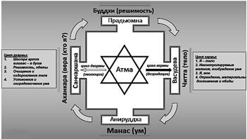
1) «Цикл деградации человека, или души начинается с того, что атма (душа) инстинктивно отождествляет себя с читтой. Читта находится непосредственно рядом с атмой. И читта – это зеркало. Сознание обладает зеркальной, или отражающей способностью. На поверхности читты накопилась пыль материальных (временных, низменных) желаний. Поэтому мы не видим своей истинной природы. И глядя в зеркало читты, душа видит некое искажённое представление о себе. Она, по сути, видит своё тело. И видит желания, которые налипли на эту читту. Первый этап в цикле деградации души – это то, что душа отождествляет себя с телом. Начинается всё с того, что душа смотрит в зеркало читты, получает искажённые представления о себе и думает: «Я есть это тело».
2) Что происходит следом за этим? Читта является хранителем всех наших желаний, принесённых из прошлых жизней. И эти желания всплывают в нашем подсознательном уме. Так как мы отождествляем себя целиком с телом, то мы естественным образом начинаем отождествлять себя с этими желаниями. Это следующий этап этого цикла, когда вступает в работу ум.
Неконтролируемые, абсолютно нестерпимые желания, которые возникают из-за возбуждения в уме, начинают руководить жизнью человека. Это абсолютно неизбежно, если человек отождествляет себя с телом.
Отождествляя себя с телом, он обязательно будет отождествлять себя с желаниями, возникающими в уме, то есть, со своим подсознанием.
3) Тогда естественным образом формируется аханкара человека. Эти желания, которые управляют человеком, идущим путём кармы в этом мире, формируют ложное эго человека. Это ложное эго человека состоит из представлений «я» и «моё». В результате того, что мы взаимодействуем с этим миром на основании принципа желания, мы приобретаем нечто, что считаем своим: моё тело, моя жена, мои дети, мои успехи, мои достижения, мои дипломы. Всё это, собственно, составляет наше ложное эго. Наше ложное эго в основном состоит из «моего», там очень мало «я». Это некая груда того, что человек отождествляет с собой и считает принадлежащим самому себе. Таким образом мы переходим на третий этап, то есть на этап ложного эго. И в конечном счёте это ложное эго складывается в некую систему верований человека. Каждый человек имеет веру, каждый верит. Во что верит? Верит в определённое сочетание качеств, которое он принёс из предыдущей жизни по своей карме. И он именно это сочетание качеств, как в уме, так и в своём теле, считает собой.
4) В результате того, что у человека формируется это ложное эго, формируется его решимость, или его разум.
Материальный разум, или материальная решимость человека, как правило, направлена на то, чтобы увеличить это «моё» или расширить своё материальное «я» за счет «моего».
И человек с огромной решимостью начинает действовать в материальном мире. В сущности, он просто служит своим желаниям, он просто пытается реализовать свои желания. Ему кажется, что он господин, но на самом деле он – слуга ума. Он становится слугой своих собственных желаний, которые, на самом деле, даже не его. Потому что желания меняются. Мы все знаем: сегодня у меня одни желания, завтра – другие. Но всякий раз я уверен, что это «мои» желания и что они есть «я».
Мой разум находит пути, с помощью которых я буду реализовывать свои желания, свою кармическую программу.
Таким образом, кармическая программа реализуется, цикл замыкается. Эта решимость приводит к определённой деятельности, и деятельность формирует новую карму. Программа эта, как правило, мало чем отличается от программы предыдущего цикла. Понятное дело, есть какие-то вариации. И чаще всего под влиянием законов материальной природы эта программа приводит к деградации, имеет тенденцию утягивать человека вниз» [3].
«Теперь ту же самую диаграмму можно понять абсолютно по-другому и использовать её для того, чтобы перестать деградировать в материальном мире и выйти за его пределы. Для этого нужно цикл кармы переключить на цикл освобождения.
1) Цикл освобождения, цикл эволюции человека, восходящий цикл начинается с того, что душа, атма пытается сформировать свои представления о себе не инстинктивно, не из-за того, что она соприкасается со своим подсознанием и накопленной кармой. Она пытается сформировать своё «я» благодаря общению со святыми людьми.
Санкаршана – это олицетворение духовного учителя. Если душа поворачивается к духовному учителю, к тому аспекту Бога, который может вывести нас за пределы дурной бесконечности, заколдованного круга кармы, то тогда этот цикл можно разорвать. Всю энергию, заключенную в этом цикле, можно будет поставить на службу освобождения души. Что происходит, когда человек контактирует, соприкасается, общается со старшими, со святыми людьми, с чистыми людьми? Мы можем из этого общения, от этого соприкосновения получить совсем другие представления о себе. Благодаря соприкосновению со святым человеком мы можем получить некий отблеск его веры, которой у нас ещё нет. Ложное эго даёт нам абсолютно чёткий критерий того, что важно, а что не важно, что ценно, а что не ценно: каким образом я должен жить. С этого момента может начаться восходящий цикл, цикл эволюции души.
2) Вера, если она сформировалась правильно, обязательно порождает в нас разум, духовную решимость. Разум, заряженный духовной энергией, становится духовным разумом, настроенным на достижение духовных целей. И это – первый шаг от нашего эго, сформированного в результате общения со святым человеком, к решимости действовать как душа, а не как тело.
3) В результате того, что я понял каким образом мне нужно действовать, я начинаю менять свою жизнь, я начинаю соприкасаться с другими качествами материальной природы (не теми, которые были положены мне по карме). Даже самый невежественный человек становится гораздо более благостным в своих пищевых привычках, в своём режиме дня и так далее. То есть меняются наши привычки, которые формируются разумом и переходят в нашу читту – хранитель всех впечатлений и всех привычек. Это, в свою очередь, начинает сказываться на нашем теле, на его функционировании. Человек будет вести образ жизни, который будет приводить к очищению его тела и к очищению его подсознания – читты.
4) Более чистая читта будет приводить к тому, что постепенно будет очищаться ум. Это медленный процесс, это следующий этап на этом восходящем цикле, когда ум под влиянием очищенного тела и очищенной читты гораздо более склонен к духовной деятельности. Тогда умом легче управлять, его легче направлять туда, куда нужно. И желания, которые возникают в этом уме, уже носят духовную природу. Человек начинает стремиться к духовным вещам, что, в свою очередь помогает ему укрепить его духовное эго, и так далее.
Нужно понимать, что мы много-много витков проходим по этому циклу. И главное – проходить их правильно. Начиная с веры, которая будет формировать духовный разум, которая будет очищать нашу читту, нашу жизнь, наше тело, и которая в конце концов будет успокаивать наш ум, делать ум заточенным на духовную практику» [3].
Если сравнивать наше сознание с растением, то можно воспользоваться такой аналогией:
- аханкара – корень,
- манас – стебель и листья,
- буддхи – цветы, плоды,
- читта – почва.
2. Качество жизни
Достояния
В ведических писаниях говорится о таких достояниях:
- шад-айшварья (шесть видов могущества),
- ашта-сиддхи (восемь мистических совершенств)
- и ашта-гуна (восемь трансцендентных свойств).
Шесть видов могущества – это:
1) айшварья – богатство,
2) вирья – могущество,
3) яшах – слава,
4) шри – красота,
5) гьяна – знание,
6) вайрагья – свобода, отрешённость.
Восемь мистических совершенств – это:
1) анима – умение становиться бесконечно маленьким,
2) махима – умение становиться бесконечно большим,
3) лагхима – сверхлёгкость, левитация,
4) прапти – способность к расширению, вездесущности,
5) пракамья – осуществление желаний,
6) вашитва – управление природными силами,
7) ишитва – превосходство над природой,
8) кама-авасайитва – полная удовлетворённость.
Восемь трансцендентных свойств – это:
1) его не касается материальная скверна,
2) он никогда не умирает,
3) он никогда не стареет,
4) он никогда ни о чём не скорбит,
5) он никогда не страдает от голода,
6) он никогда не страдает от жажды,
7) все его желания абсолютно законны,
8) его решения не может отменить никто.
В полной мере этими достояниями обладает только Бхагаван[34], обладатель достояний, Бог. А нам этих достояний постоянно очень не хватает. Нам очень не хватает счастья.
«Есть много людей, которые очень богаты, очень могущественны, очень красивы, очень знамениты, отличаются обширными познаниями или свободны от мирских привязанностей. Однако никто из них не может претендовать на то, что обладает всеми богатствами, всей силой и прочим в полном объёме» ([1] Бхагавад-гита 2.2, комментарии).
«Этими шестью достояниями обладает любая личность, но в какой-то определённой степени. Разница количественная. Качественно достояния те же самые. Это то, что вместе объединяет все живые существа. У нас одни достояния, одни интересы» [2].
Богатство
«Например, одно из достояний – это богатство. Все живые существа стремятся к богатству. Собственно, мы создаём это человеческое общество, организации для того, чтобы быть богатыми, успешными, экономически развитыми прежде всего. Чтобы была экономическая база. Это – стремление к богатству. Ну и у каждого индивидуально тоже есть такое стремление накапливать эти достояния и богатство. И чем более мы богаты, тем более мы влиятельны в этом мире. Это достояние вызывает почтение, восхищение. Есть очень-очень богатые люди – они известны на весь мир» [2].
Слава
«Другая вещь, к которой стремятся все живые существа, – это слава – достояние Бога. У нас тоже есть своя слава: нас знают родственники, друзья. Если мы совершаем какие-то удивительные поступки, о нас могут знать много людей. Даже есть всемирная слава: спортивные достижения, книга рекордов Гиннеса, памятники человеческим деяниям, каким-то известным личностям. Это всё элементы славы. К этому стремятся все живые существа. И прославленная личность очень привлекает, так же, как и богатая личность» [2].
Красота
«Есть красота – ещё достояние Бога. Все мы тоже красивы чуть-чуть, в какой-то степени… Бывают люди ослепительно красивые, бывают просто красивые, бывают не очень красивые. Но какая-то красота, какое-то её количество всё равно в чём-то у нас есть.
Эти достояния до конца не изучены. Потому что есть красивые существа, которые превосходят даже земной уровень. Также, как и богатство, и слава может превзойти даже земной уровень. Но мы с вами земные люди, мы в земных пределах знаем это достояние» [2].
Знание
«Также есть учёность, знания – тоже достояние. Учёность тоже привлекает. Даже если вы не красивы, но обладаете глубокими большими знаниями, люди будут привлекаться вами, если вы – большой учёный» [2].
Сила
Сила, конечно же, тоже всем нужна. Никто не хочет быть бессильным. Есть сила физическая, есть сила воли, сила разума. Органы чувств обладают разной силой. Например, у животных сила органов чувств превосходит силу органов чувств человека: животные лучше видят, слышат, осязают, обоняют и так далее. Сильный человек становится привлекательным. Любая женщина хочет сильного мужа. Матери хочется, чтобы её сын был сильным. Отец хочет, чтобы его сыновья были сильными в жизни.
Отречение
«Есть также отречение – это ещё одно из достояний. Даже если мы имеем богатство, славу, красоту, знания – они могут нас связывать. Мы можем быть привязаны к красоте. Боимся утратить эту красоту, боимся потерять богатство. Есть страх, сопутствующий этим достояниям, обладанию ими. И вот это отречение означает, что при этом вы свободны, отречены, вы независимы от этих приобретений или утрат. Мы тоже каким-то отречением обладаем, можем привыкнуть к утрате, например, пережить какие-то утраты – при помощи отречения. Но в конце концов забываем всё это: думаем: ну такова жизнь, так случается со многими, не только со мной. И как-то мы развиваем это отречение. Но в Боге эти достояния безграничны – вот в чём разница. У него безграничное отречение. Например, мы видим материальный мир и хозяйничаем здесь: совершаем ошибки или какие-то хорошие вещи. Но мир устроен так, что мы будем отвечать за эти свои хорошие или плохие поступки. Тогда возникает вопрос: а где же Бог, почему так много плохого, куда Он смотрит? Ответ на этот вопрос – в его достояниях: Он отречён от нашего мира. Он предоставляет этот созданный мир Его энергий для нас, для наших желаний, плохих и хороших. Если у нас есть плохие желания, то как их исполнить? Он нам не говорит, что мы должны делать плохие вещи. Он знает, что мы сами желаем такие вещи делать. И это позволяется только в материальном мире. В материальном мире мы можем совершить дурной поступок. Позволяется. Но в духовном мире никто не может совершить дурного поступка, это практически невозможно, там нет ничего для этого. Вы не можете убить душу, навредить душе. А вот чьему-то телу в материальном мире возможно нанести вред. Вот этого понятия «вред» нет в духовном мире. Невозможно, чтобы душа болела, старела, умирала, чувствовала боль от ранений. Её нельзя пронзить никаким оружием. У неё другая конституция» [2].
В ведической культуре считается, что для материального счастья нужно четыре условия:
1) джанма – хорошее рождение в богатой семье,
2) айшварья – богатство,
3) шута – качественное образование
4) и шри – красивое тело и сильный ум и разум.
Это всё является благочестием, результатом прошлой благочестивой деятельности.
И мы можем получить какой-то доступ к этим достояниям и стать немножко счастливыми. О том, как приблизиться к источнику этих достояний, и пойдёт речь в дальнейшем в этой книге. А пока дадим лишь намёк:
«Если вы знаете Бхагавад-гиту, вы владеете шестью достояниями, которыми владеет Бхагаван.
- Не только знания. Знания – лишь один из атрибутов Бхагавад-гиты.
- Там ещё есть величайшая гармония и красота.
- Там есть могущество, третье достояние.
- Там неизмеримая сила, четвёртое достояние.
- Слава беспредельная.
- И отречение от всего материального. Где бы вы ни были, даже на высших планетах, если вы знаете Бхагавад-гиту, вы останетесь свободным и отречённым. Вас не свяжут даже райские миры, если вы знаете, что такое Бхагаван…
Даже не понимая Бхагавад-гиту, если мы её каждый день читаем, нам хорошо» [2].
Страдания
Вместо обладания перечисленными достояниями мы испытываем страдания. Что такое страдание? Это когда
- уходит то, к чему человек привязан
- и приходит то, что человек не любит.
Мы страдаем каждое мгновение. Хотя каждое мгновение мы хотим испытывать счастье. Всегда есть какое-то неудовлетворение. Какой-то недостаток вкрадывается везде и во всём. Если вам кажется, что это не так, надо только внимательно всё вокруг изучить. И чем более внимательно мы будем всё вокруг изучать, тем больше страданий и недостатков мы обнаружим. Уж поверьте, на выискивание недостатков у нас квалификации хватает.
Многие люди временами думают, что они счастливы. Но они, находясь в иллюзии, даже не понимают, что они страдают.
Например, человек лежит в больнице весь переломанный и загипсованный. Он страдает, это факт. К нему приходит друг навестить. И спрашивает: «Ну как ты?» Человек отвечает: «Хорошо, главное, не шевелиться». Это иллюзия. Мало тут хорошего.
Или ещё более жёсткий пример. Козла ведут на бойню, а он не понимает этого, чувствует себя счастливым, и по дороге, увидев козу, хочет вступить с ней в интимную связь.
Или такой ещё пример с деньгами:
1) Мы напрягаемся, затрачиваем большие усилия, по сути, страдаем, когда зарабатываем деньги.
2) Когда мы деньги заработали, проблема в том, как их сохранить, чтобы не украли.
3) Потом мы мучаемся в выборе покупки.
4) В момент покупки мы страдаем от того, что количество денег прямо на глазах уменьшается.
5) Ну а через некоторое время после совершения покупки нас настигает разочарование. Потому что мы привыкаем к новому состоянию, и уже покупка не радует.
Таким образом, деньги на любой стадии их круговорота приносят страдания вместо ожидаемого счастья.
В детстве я думал, что у всех взрослых всегда что-то болит. Так было видно по их глазам. И я думал, что когда повзрослею, у меня тоже обязательно что-то будет всегда болеть. Я тогда не понимал, что это ум болит.
Тела, в которых мы обитаем, очень уязвимые. Тела болеют. И мы ничего не можем этому противопоставить. В современном обществе все озабочены только тем, чтобы продлить существование в этом теле, решить проблемы с поверхностью тела, кожей, создать иллюзию свежести этой кожи.
Но ведь наше тело – это на самом деле источник страданий. Сколько удовольствий можно извлечь из одного пальца? Ну подуть на него, погладить… А сколько страданий? Достаточно только под ноготь засунуть иголку. А если палец нарывает, то вся жизнь становится отравленной.
Удивительно, как люди стремятся продлить свои несчастья – существование в этом теле, которое предназначено преимущественно для того, чтобы испытывать страдания.
Спину ломит голова болит
То ли клещ засел энцефалит?
В голове болит последний зуб
Мы болеем за один и тот же клуб
Чуть курнул – и сразу бледный вид
Чуть немного выпил – так тошнит
Чуть пошёл работать – сразу труп
Мы болеем за один и тот же клуб…
(Сплин)
«В материальном мире существуют разные сословия и группы людей, но в конечном счёте все здесь несчастны.
Этот преходящий, полный страданий мир – не место для благовоспитанного человека. Господь, Верховная Личность Бога, называет этот мир бренным и полным страданий» ([1] Бхагавад-гита 9.33, комментарии).
«Из миллионов страдающих людей лишь немногие по-настоящему задумываются о том, кто они, почему попали в такое тяжёлое положение и т. д. До тех пор, пока человек не пробудился от летаргии и не задумался над причиной своих страданий, пока не понял, что больше не хочет страдать, что должен положить конец всем своим страданиям, его нельзя считать человеком в полном смысле слова. Человек становится человеком только тогда, когда в его уме начинают возникать подобные вопросы» [1] Бхагавад-гита Введение).
«Представления о хорошем и плохом, существующие в материальном мире, в большей или меньшей степени придуманы, ибо в материальном мире нет ничего хорошего. Здесь всё неблагоприятно, ибо неблагоприятна сама материальная природа. То, что мы считаем хорошим, является таковым лишь в нашем воображении» ([1] Бхагавад-гита 10.3, комментарии).
Веды перечисляют три вида страданий.
1) Адхидайвика – страдания от засух, землетрясений, бурь, наводнений и других стихийных бедствий, вызываемых высшими силами.
2) Адхибхаутика – страдания, которые нам причиняют другие живые существа. Например, насекомые или враги.
3) Адхиатмика – страдания, которые нам причиняет собственное тело и ум.
«Находясь в материальном теле, живое существо испытывает всевозможные страдания, причиняемые ему воздухом, водой, огнём, чрезмерной жарой или холодом, солнечными лучами, перееданием, вредной для здоровья пищей, дисбалансом трёх составных частей тела (капхи, питты и ваю) и т.д. Многочисленные болезни, поражающие кишечник, горло, мозг и другие части тела, бывают такими тяжёлыми, что причиняют живому существу невыносимые страдания.
Два вида лихорадки на языке современной медицины называются пневмонией и брюшным тифом. Сильный жар в теле является симптомом тифа или воспаления лёгких. Помимо этого, существуют ещё страдания, которые нам причиняют другие живые существа. Государство взимает с нас налоги, многочисленные воры, грабители и мошенники подстерегают нас на каждом шагу.
Кроме того, мы страдаем от голода, эпидемий, неурожаев, войн, землетрясений и т.д. Эти страдания вызваны полубогами и другими неподвластными нам причинами» ([1] Шримад-Бхагаватам 4.29.23-25, комментарии).
«Когда у нас жар, мы испытываем телесные страдания, а когда мы теряем кого-то из близких, страдания охватывают наш ум.
Доставляют нам страдания и другие живые существа. Одни из них развиваются из человеческого зародыша, другие появляются на свет из яиц, третьи – из пота, а четвёртые – из семян.
Есть также страдания, причиняемые природными стихиями, которыми управляют полубоги. Это могут быть суровые морозы или удар молнии, а иногда в человека вселяются духи.
Таким образом, тройственные страдания постоянно преследуют нас и делают нашу жизнь полной опасностей. Опасности подстерегают нас здесь на каждом шагу» ([1] Чайтанья-чаритамрита 2.20.102, комментарии).
Страдания, причиняемые собственным умом, – самые болезненные. Они могут проявляться как навязчивые мысли, негативные эмоции и стресс.
Ещё страдания от ума проявляются как сомнения, тревоги и страхи.
«Мир устроен так, что нам приходится делать то, что мы не хотим. Сладкий рис перемешан с песком. Пробуем сладкий мёд, но при этом пчёлы кусают. Мы придумываем какие-то механизмы, чтобы рис просеивать, пчёл устранить. Но страдания становятся всё тоньше и тоньше. Их уже труднее устранить. Разум потерять, стать на уровне животного – это серьёзная проблема» [2].
Навязчивые мысли, ментальная жвачка – это когда ум, соединяясь с памятью, пережёвывает жёванное, усиливая негативные эмоции из воспоминаний прошлого.
«Душа не испытывает страданий. Страдания испытываются посредством иллюзии. В духовном мире отсутствуют всякие страдания.
С духовной точки зрения их не существует. Есть разнообразие наслаждения. Почему? Потому что там нет границ для наслаждения, для общения, для служения. В материальном мире есть обособленные границы ложного эго. И вот именно эти границы и означают страдания, созданные иллюзорно. То есть мы ощущаем реальные страдания, но при помощи иллюзии. Например, я что-то не понимаю и страдаю – есть граница. Или есть граница существования моего кожного покрова: когда это нарушается огнём, мечом или лезвием, я чувствую страдание – границы моих возможностей. Моё ложное эго ставит определённые границы. Если кто-то их нарушает, я страдаю. Всё это создано аханкарой – определёнными ограничениями. В духовном мире нет аханкары.
Если мы развиваем сознание Бога, то телесные страдания могут присутствовать: боль и наслаждение мы продолжаем чувствовать, но мы перестаём страдать при этом: мы не запоминаем это как страдание, у нас не остаётся травмы в сердце. Не то, что наше тело становится бесчувственным. Просто добавляются трансцендентные чувства, которые поглощают эти страдания, боль, наслаждения. Атма[35] не страдает. Сострадает. Бывают умственные, ментальные страдания: эмоциональная нагрузка, когда обида есть какая-то, скорбь, потеря. Это не духовные страдания, это эмоциональные страдания. Эмоциональная перегрузка влияет на работу сердца, психики, расстраивает все эти функции.
Духовные страдания не нарушают функции. Они проясняют всё: разлука с Богом. Там нет травмы. Это другая форма блаженства на самом деле» [2].
Обусловленность
«Страдания и обусловленность – это синонимы. Обусловленность – это есть страдания, то есть я должен, я вынужден, я обязан, необходимо. Я действую в таком сознании, поэтому я страдаю. Вынужден действовать. Я не получаю свободу. Ни на каком периоде жизни у меня нет свободы.
1) Как только рождается ребёнок, он не свободен, он во власти своих родителей полностью. Он не может проявить свою свободу выбора. Во власти своих родителей. Они пытаются понять, что ему нужно, на телесном уровне. Пытаются выполнять его желания. Он постоянно страдает, потому что его желания до конца не исполняются в этом возрасте: он злится на родителей, он с ними ссорится, капризничает постоянно. Потому что ему плохо. И, как ребёнок, он не сдерживает чувства, он сразу всё выражает. Хорошо – выражает, плохо – выражает. Он невинный. Он во власти своих родителей. Несовершенная власть.
2) Он подрастает и начинаются игры. Но это контроль родителей. Игра – это способ занять ребёнка позитивной деятельностью. Его отучают от глупостей таким образом. Это ему нравится. И он думает на этом периоде жизни, что вся жизнь теперь будет как игра, радостная.
3) Но родители ему говорят: «Нет, ты пойдёшь в школу». Он не хочет в школу. Вы любого ребёнка спросите: «Ты хочешь в школу?» – «Да нет, не хочу, я уже занят, нормально, я живу хорошо. Я играю, я свободен. Меня тут кормят, обо мне заботятся. Я, собственно, только начал жить по-человечески. И тут в школу…» И в школе он себе не принадлежит. Он отвечает за это образование своей головой вообще. Судьба решается его, понимаете. Как он закончит школу? Кем он будет вообще?
Ему внушают, что это опасно – не учиться: «Это нужно – учиться, ты должен!» Он обусловлен этим. Он тоже страдает по-своему. Но он ещё в этом возрасте силён и думает: «Нет, я не страдаю, я тренируюсь, готовлюсь к свободной жизни. Вот школу закончу, начнётся моя свободная жизнь».
4) Он серьёзно и жестоко ошибается. Свобода его приводит к браку. Вот в чём проблема. В браке его запрягают до пенсии. То есть человек обусловлен.
5) А в конце концов, когда он уже никому не нужен, он свободен. У него нет уже ни здоровья, ни сил, ни разума. Другая обусловленность. То есть ловушка, майя. На каждом шагу. Но кажется, что я иду к свободе» [2].
Шесть врагов
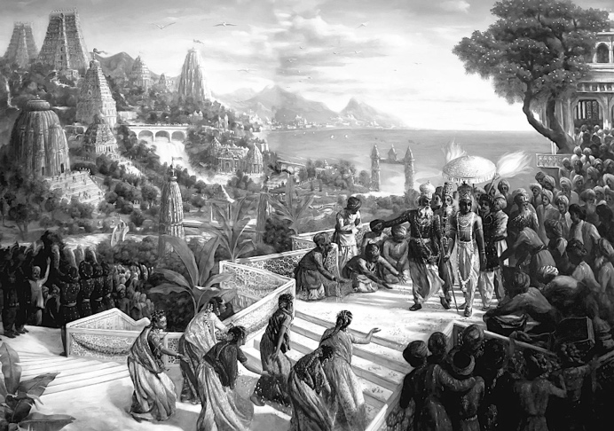
Негативные эмоции делают наше сознание более примитивным, усиливают сами себя и порабощают живое существо всё больше и больше.
Эти негативные эмоции, являющиеся шестью проявлениями иллюзии, следующие:
1) кама (вожделение, желание);
2) кродха (гнев, обида);
3) лобха (жадность, привязанность);
4) моха (иллюзия, заблуждение, опьянение);
5) мада (гордыня, тщеславие, безумие);
6) матсарья (зависть, ревность, неприязнь, беспричинная злоба).
Зависть содержит в себе
- и гордыню,
- и иллюзию,
- и жадность,
- и гнев,
- и вожделение.
Гордыня содержит в себе
- иллюзию,
- жадность,
- гнев
- и вожделение.
Иллюзия содержит в себе
- жадность,
- гнев
- и вожделение.
Жадность содержит в себе
- гнев
- и вожделение.
А гнев содержит в себе
- вожделение.
«Вожделение – корень всех проблем. Это противоположная любви, отражённая энергия. Вожделение – это жажда наслаждать свои чувства. Вожделение – это непреодолимая сила. Я добиваюсь какого-то человека, добиваюсь каких-то денег, даже ценой своей жизни. Именно вожделение делает человека животным, чем-то отвратительным» [2].
«Вожделение – всепожирающий, греховный враг всех существ в этом мире» (Бхагавад гита 3.37).
- Если не удовлетворено вожделение,
- возникает гнев,
- а если удовлетворено вожделение,
- возникает жадность,
- гордость,
- а затем иллюзия
- и зависть.
Эти шесть врагов живут у нас в уме и вызывают состояние стресса. Стресс – это состояние ума в страхе, при котором возникают следующие мысли:
- я не могу получать удовольствие, не думая о том, что мне нужно сделать;
- я не имею права на неудачу;
- почему я не могу расслабиться;
- я никогда не должен подводить людей;
- решение за мной, ответственность на мне;
- я должен быть сильным;
- все на меня рассчитывают;
- я единственный, кто может это сделать;
- я больше так не могу;
- мне плохо, и всё плохо;
- я не должен терять ни минуты;
- я хотел бы сейчас оказаться в другом месте;
- почему я не могу просто взять и сделать это;
- почему я больше не получаю от этого удовольствие;
- что со мной такое;
- со мной что-то не так;
- я не могу просто взять и всё бросить;
- срочно нужно что-то менять;
- без меня ничего не получится;
- почему я никак не могу отключиться.
Длительная серия стрессов может перейти в депрессию. А депрессия – это уже психическое отклонение.
Забегая вперёд, хочу поделиться способом выхода из стресса от моего духовного учителя. Он говорит, что опытные в духовной практике люди знают способ выхода из стресса. Это пулемётная джапа – повторение святых имён Бога: очень интенсивно, быстро и громко.
«Сегодня такое время, что глубина беспокойств усиливается, беспокойства достигают болезненного состояния. Вокруг много глубоко обиженных людей. Но на обиженных возят воду. Чтобы освободиться от обиды, нужно предпринимать какие-то меры. Например, если обратить внимание на преступный мир, то окажется, что это всё обиженные люди. Они озлобляются против закона, перестают уважать иерархию, старших, Бога, закон» [2].
Настоящие проблемы
Но всё это ещё цветочки. Теперь мы поговорим о настоящих проблемах:
- рождение,
- болезнь,
- старость
- и смерть.
1. Джанма (рождение)
Рождение в большинстве случаев происходит в муках. При этом стресс для новорождённого настолько сильный, что он забывает свою прошлую жизнь. В ведических писаниях описывается, что во время родов мы страдаем так, будто нас протаскивают сквозь отверстие в железной пластине. А после родов, когда нас обтирают от нечистот, мы страдаем так, будто нас хлещут колючим бичом.
«Получая питательные вещества из пищи, которую ест мать, и напитков, которые она пьёт, плод постепенно растёт. При этом он всё время находится в смрадной утробе, заполненной мочой и калом и являющейся рассадником глистов и других червей. Когда голодные черви во чреве матери снова и снова кусают нежное тело ребёнка, он испытывает невыносимые муки. Оказавшись в этом ужасном положении, он то и дело теряет сознание. Когда мать ест горькую или острую, слишком солёную или кислую пищу, ребёнок в её чреве корчится от невыносимой боли.
Покрытый водной оболочкой и окружённый кишками, ребёнок лежит, скорчившись в правой или левой стороне утробы матери, с головой, прижатой к животу, с согнутой спиной и шеей.
Лишённый свободы передвижения, ребёнок заключён в утробе матери, как птица в клетке. В это время, если судьба благосклонна к нему, он вспоминает обо всех перипетиях ста своих предыдущих жизней, и память о них причиняет ему жестокие страдания. Может ли он оставаться спокойным в такой ситуации?
Через семь месяцев со дня зачатия ребёнок, который к тому времени уже обладает сознанием, начинает чувствовать на себе давление потоков воздуха, которые действуют на него в последние недели перед родами. Под давлением этих потоков он извивается, как черви, родившиеся из той же грязной утробы.
Внезапные толчки воздуха заставляют его выйти из материнской утробы. В великих муках, вниз головой он появляется на свет, бездыханный и потерявший от сильной боли память.
Ребёнок падает на землю, перепачканный калом и кровью, и шевелится в куче испражнений, как червь, родившийся в навозе. Он утрачивает высшее знание и громко плачет, оказавшись в объятиях майи.
После того, как ребёнок появляется на свет, он попадает в руки людей, которые не способны понять, что ему нужно, и эти люди выхаживают его. Ему дают то, чего он не хочет, а беспомощный младенец не может даже отказаться от этого.
Лёжа в грязной постели, влажной от пота и кишащей микробами, несчастный ребёнок не может даже почесаться, чтобы унять зуд, не говоря уже о том, чтобы сесть, встать или поменять место.
Нежное тельце беспомощного ребёнка кусают комары, москиты, клопы и другие насекомые, подобно тому, как маленькие черви кусают большого червя, и младенец, лишившийся знания, горько плачет» ([1] Шримад-Бхагаватам 3.31.5-10, 23-27).
2. Вьядхи (болезни)

Болезни – неизбежный спутник жизни каждого человека. В современную эпоху каждый человек рождается со врождёнными дефектами двух из семи систем организма.
Когда нас настигает лихорадка, нам трудно даже пошевелиться. Если спросят, что́ болит, у нас нет сил даже на то, чтобы сразу же ответить. А отвечая, говорим через силу, утробным голосом, с трудом издавая звуки.
Как бы мы ни легли: на правый бок или левый, на живот или на спину – всё неудобно. Нам не хочется ни есть, ни пить, а ночью не спится.
Дни и ночи кажутся бесконечно долгими. Нас заставляют принимать горькие, жгучие и кислые лекарства, делают кровопускания, прижигания, колют иголками и прочие процедуры.
Иногда болезнь заставляет думать о смерти, и нас охватывает ужас. Обычно больные не могут позаботиться о себе сами. От болезни они становятся раздражительными, и им не по нраву всё, что делают для них ухаживающие.
3. Джара (старость)
«Старость – не радость». Все наши телесные силы постепенно истощаются, и мы уже не можем переваривать вкусную еду. Зрение слабеет, слух притупляется, язык теряет чувствительность, речь становится неразборчивой. Умственные способности ослабевают, нам изменяет память, и мы путаемся в мыслях. Мы становимся раздражительными и нетерпеливыми. Поскольку окружающие относятся к нам пренебрежительно, мы становимся печальными и угрюмыми. Красота и привлекательность покидают наше лицо, и оно, изборождённое многочисленными морщинами, становится безобразной гневной маской. Никто не относится к нам почтительно.
Не в силах выносить страдания старости, мы жаждем смерти, но в то же время её близость нас ужасно пугает.
«Видя, что он больше не в состоянии содержать семью, жена и дети перестают оказывать ему то уважение, которое оказывали раньше, подобно тому, как скупые крестьяне перестают заботиться о состарившихся и измождённых быках.
Старик, не способный зарабатывать деньги, никому не нужен. Не следует считать, что такое отношение к старикам – это достижение последнего времени. Так было всегда. Даже в наш век у некоторых народностей сохранился обычай давать старикам яд, чтобы поскорее избавиться от них. В племенах людоедов состарившегося отца семейства торжественно убивают и устраивают пир, на котором дети и внуки лакомятся его мясом. В приведенном здесь примере говорится, что крестьянин не любит старых быков, которые больше не могут работать. Точно так же, когда заботливый отец превращается в немощного старика, не способного зарабатывать деньги, его жена, сыновья, дочери и другие родственники, которые уже не питают к нему былой любви, не просто перестают оказывать ему уважение, а открыто пренебрегают им.
Но глупый отец семейства не утрачивает вкуса к семейной жизни несмотря на то, что теперь он находится на иждивении тех, кого некогда содержал. Обезображенный старостью, он готовится ко встрече со смертью.
Так он остаётся дома и, словно дворовый пёс, питается тем, что ему бросают. Страдая от многочисленных недугов, таких, как несварение желудка и потеря аппетита, он съедает горстку пищи в день и постепенно превращается в калеку, не способного больше работать.
Подойдя к порогу смерти, человек превращается в беспомощного калеку, и, когда родственники перестают заботиться о нём, он жестоко страдает и его жизнь становится хуже собачьей. Поэтому в Ведах сказано: мужчина должен покинуть дом, не дожидаясь, пока он окажется в таком жалком положении, и встретить смерть вдали от семьи и родственников. Если мужчина уходит из дома и умирает так, что об этом не знают члены его семьи, он умирает достойной смертью. Однако человек, привязанный к семье, хочет, чтобы после смерти родственники несли его тело в траурной процессии, и, хотя самому ему не прийдётся увидеть это шествие, он тем не менее мечтает, чтобы его телу устроили пышные похороны. При мысли об этом ему делается приятно, и несмотря на то, что он не знает, куда отправится после смерти и какой будет его следующая жизнь, он чувствует себя счастливым» ([1] Шримад-Бхагаватам 3.30.13-15).
4. Мритью (смерть)
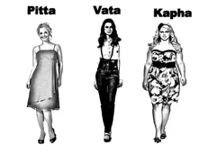
Мы стоим на пороге великого перехода. Окружающие нас родственники и друзья не смогут нас спасти. Мы вынуждены переносить смертные муки в одиночку. Нам невыносимо расставаться со своими жалкими накоплениями, но они не могут последовать за нами. Дыхание превращается в хрип, а конечности судорожно подёргиваются. Когда наши глаза закатываются и появляются белки́, мы уходим в иной мир.
«В предсмертной агонии, под давлением воздуха изнутри, глаза человека вылезают из орбит, а трахея наполняется слизью. Ему становится трудно дышать, и при каждом вздохе из его горла вырываются предсмертные хрипы: «Гхура-гхура».
Попав в объятия смерти, он лежит на смертном одре, окружённый скорбящими родственниками и друзьями. Он хочет обратиться к ним, но не может произнести ни слова, ибо уже находится во власти времени.
Когда отец семейства лежит на смертном одре, родственники, чтобы соблюсти приличия, окружают его и начинают громко стенать, обращаясь к умирающему: «О мой отец!», «О дорогой друг!», «О ненаглядный муж!» Видя, как они скорбят, умирающий хочет дать последние распоряжения, но, находясь во власти времени, не может произнести ни слова, и это причиняет ему нестерпимые муки. Он и так уже испытывает боль, вызванную болезнью, слизь, накопившаяся в гландах и горле, душит его.
Ему и без того очень тяжело, а когда он слышит стенания родственников, его муки становятся ещё более жестокими.
Так человек, который всю жизнь заботился о благополучии семьи и жил, во всём потакая своим чувствам, умирает в великом горе, окружённый рыдающими родственниками. Он умирает жалкой смертью, в страшных муках и без сознания.
В момент смерти человек видит посланцев бога смерти, которые стоят перед ним с налитыми яростью глазами, и, охваченный ужасом, он испускает мочу и кал.
Подобно тому, как стражи порядка арестовывают преступника, чтобы затем подвергнуть его наказанию, Ямадуты берут под стражу грешника, всю жизнь удовлетворявшего собственные чувства. Они затягивают на его шее крепкую петлю и покрывают тонкое тело грешника особой оболочкой, чтобы подвергнуть его суровому наказанию.
Посланцы Ямараджи волокут его по дороге, а он трепещет от ужаса в их руках. По пути его кусают собаки, и он вспоминает все грехи, которые совершил в своей жизни. Все это причиняет ему жестокие страдания.
По пути на планету Ямараджи грешник, арестованный его слугами, встречает множество собак, которые с лаем набрасываются на него и кусают его, чтобы напомнить ему о грехах, которые он совершил, удовлетворяя свои чувства. В Бхагавад-гите сказано, что желание чувственных наслаждений ослепляет человека и лишает последних крупиц разума. Обуреваемый этим желанием, он забывает обо всём. Одержимый жаждой чувственных удовольствий, человек утрачивает разум и забывает о том, что ему прийдётся расплачиваться страданиями за свои наслаждения. И вот теперь псы, состоящие на службе у Ямараджи, дают ему возможность вспомнить обо всём, что он совершил в погоне за удовольствиями. В наше время даже законы государства поощряют людей предаваться наслаждениям, пока они находятся в грубом теле. Во всем мире правительства одобряют подобную деятельность, осуществляя программы по ограничению рождаемости. Они обеспечивают женщин противозачаточными средствами и разрешают им обращаться в клиники, чтобы сделать аборт. Всё это является результатом погони за чувственными наслаждениями. По сути дела, половые отношения нужны для того, чтобы зачинать благочестивое потомство, но, поскольку люди не способны владеть своими чувствами и в мире нет такого заведения, где их учили бы этому, бедняги становятся жертвами преступной, греховной деятельности, связанной с удовлетворением чувств, и после смерти их подвергают суровым наказаниям, которые описаны в этом разделе Шримад-Бхагаватам.
Грешника ведут под палящим солнцем по раскалённому песку, а по обеим сторонам дороги бушуют лесные пожары. Когда он не может больше идти, слуги Ямараджи подгоняют его ударами плетей по спине. Его терзают жестокие муки голода и жажды, но рядом нет ни питьевой воды, ни укрытия, ни места, где он мог бы отдохнуть.
Бредя по дороге, ведущей в обитель Ямараджи, он то и дело падает от усталости и порой теряет сознание, но его всякий раз заставляют вставать. Так он очень быстро достигает обители Ямараджи и предстаёт перед ним.
За два-три мгновения он покрывает расстояние в девяносто девять тысяч йоджан[36], и затем его без промедления подвергают мучительным пыткам, которые он заслужил.
Его сажают на пылающие поленья, и огонь жжёт его члены. Иногда его заставляют есть собственную плоть, а иногда его плоть пожирают другие.
Псы и ястребы, обитающие в аду, вырывают его внутренности, при этом сам он продолжает жить и наблюдает все это, а змеи, скорпионы, москиты и другие твари кусают его, причиняя нестерпимую боль.
Затем слоны отрывают и одну за другой раздирают на куски различные части его тела. Его сбрасывают в пропасть и опускают под воду или заточают в пещеру» ([1] Шримад-Бхагаватам 3.30.16-27).
В Бхагавад-гите (13.8-12) Сам Бог объявляет знанием понимание того, что рождение, смерть, старость и болезни – это зло.
«Страдание заложено в природе материального мира, а любые удовольствия, которых мы ищем, – это иллюзия. В конце концов, всем приходится испытывать страдания, связанные с рождением, старостью, болезнями и смертью. Сколько бы замечательных лекарств мы ни создали, нам не удастся избежать страданий, которые приносят болезни или смерть. На самом деле медицина бессильна помочь человеку справиться с болезнями и смертью» ([1] Шримад-Бхагаватам 4.25.4, комментарии).
«Но на самом деле надо победить смерть. Смерти нет. Есть только страх смерти. Жизнь в этом мире полна страданий, и уйти из этого мира надо без сожалений и страха. Мы похоронены уже на всех кладбищах мира, и пора это, наконец прекратить» [2].
Паварга
Жизнь в материальном мире называют паваргой, потому что в этом мире мы подвержены страданиям пяти видов, которые представлены буквами
1) па,
2) пха,
3) ба,
4) бха
5) и ма
санскритского алфавита.
1) Па означает паришрама – тяжёлый, изнурительный труд.
2) Пха означает пхена – пена, идущая изо рта от тяжёлой работы.
3) Ба означает бьяртхата – разочарование. Мы трудимся всю жизнь, не щадя себя, но в конце жизни нас ждёт разочарование.
4) Бха означает бхая – страх. Обитатели материального мира всегда охвачены пламенем страха, поскольку никто не знает, что произойдёт в следующую минуту.
5) Ма означает мритью – смерть.
Жестокий мир
«В материальном мире так заведено, что тело сначала рождается, а через какое-то время превращается в прах. Голод и жажда терзают жизненный воздух [прану], ум постоянно обеспокоен, разум стремится к тому, чего достичь невозможно, а все чувства в конце концов истощаются от непрерывной борьбы в царстве материальной природы» ([1] Шримад-Бхагаватам 11.2.49).
Мы сейчас находимся в мире, в котором все поедают друг друга. Мы думаем, что это мир наслаждений, но на самом деле оказывается, что это мир эксплуатации. Здесь наслаждение подразумевает эксплуатацию, без которой существование и так называемое наслаждение невозможно.
«Лишённые рук – добыча имеющих руки, лишённые ног – добыча четвероногих. Слабые служат пищей для сильного. Общий закон гласит: одно живое существо является пищей для другого» ([1] Шримад-Бхагаватам 1.13.47).
Всё наполнено жизнью, включая траву, деревья и другие растения. Но даже они не могут поддерживать своё существование, не эксплуатируя других. Таков мир эксплуатации, и как гласит третий закон Ньютона, на каждое действие имеется равное и обратно направленное противодействие. Используя других, живое существо само оказывается в долгу, и, чтобы рассчитаться с этим долгом, ему приходится снова есть более слабых. В человеческом обществе стремление эксплуатировать проявляется в наивысшей степени. Повсюду всеми прилагаются усилия жить за счёт других. Создаётся иллюзия, что без насилия существование в этом мире невозможно, потому что это мир рабства.
«Вы можете достичь очень хорошего положения, но вам прийдётся с ним расстаться. Допустим, вы заработали миллионы долларов. И у вас большой счёт в банке. Вы думаете: сейчас моё положение прекрасно. Случится какая-нибудь дизентерия или холера, и всё, прийдёт конец вашему хорошему положению. Или банк прогорит. Поэтому в этом мире нет хорошего положения. Всё это иллюзорно. Поэтому те, кто стараются хорошенько устроиться в этом материальном мире, просто терпят поражение, потому что нельзя здесь хорошо устроиться» [1].
Страх
«Страх парализует и не даёт посмотреть правде прямо в глаза. Так действует невежество. Главная проблема – это рождение, старость, болезни и смерть. Но подавляющее большинство людей игнорируют эти ужасающие факты, как будто их просто не существует. Они боятся и переключают своё внимание. Это называется куйога – неблагоприятное соединение. Вместо того, чтобы думать, как решить настоящие проблемы, ум человека предлагает развлекать и ублажать свои чувства через наркотики, дебри хитроумных теорий и всяческие религиозные учения, опиум для народа» [2].
«Всех нас в этом мире постоянно сопровождает страх. Молодой красивый человек боится старости. Умный боится, что не сможет ответить на какой-то противоречивый сложный вопрос. Богатый очень боится бедности. И каждый боится боли, смерти, болезней. И только тот, кто отрёкся от этого мира и привязался к Верховной Личности Бога, обладает полным бесстрашием, ничего этого не боится» [2].
«Из страха мы получаем образование, иначе мы страдать будем в жизни. Из страха мы обзаводимся семьёй, потому что мы не можем пережить своё одиночество и никомуненужность. Из страха мы зарабатываем деньги, потому что можем лишиться и крова, и всего на свете.
За всем этим стоит страх, который обусловлен этим физическим телом. Это тело сохраняется страхом. Если не будет страха, этой защиты, мы не выживем просто. Попадём под машину, всякое может случиться. Страх защищает человека. Но душа, сознание человека не имеет таких симптомов, как страх, потому что она чиста, она вечна, она бессмертна. Ей бояться нечего. Когда человек становится бесстрашным, это только начало пути, начало процесса освобождения. А в современном мире сегодня много фобий. И вот идёт такой прогресс страха. Тоньше страх становится» [2].
«Это прогресс цивилизации ракшасов называется. Ракшасы добиваются влияния при помощи страха и силы. Они подавляют вас, эксплуатируют, и при помощи эксплуатации чего-то достигают. Смертоносное оружие, угроза постоянно какая-то. За счёт этого люди начинают работать» [2].
Иллюзорное счастье
В Шримад-Бхагаватам довольно жёстко описана правда жизни. То, что люди называют семейным счастьем, на самом деле в итоге оказывается ужасом: ведь в конце ждёт старость, болезни и смерть. А это уже совсем не согласуется с понятием счастья.
«Привязанность к телу, жене, дому, детям, домашнему скоту, богатству и друзьям. Окружив себя всем этим, обусловленная душа считает, что достигла совершенства.
Тревоги постоянно снедают такого глупца, но, несмотря на это, он совершает один грех за другим и живёт надеждами, которым не суждено сбыться, и всё только для того, чтобы обеспечить существование тех, кого он считает своими родными и близкими.
Своё сердце и чувства он отдаёт женщине, которая околдовывает его чарами майи[37]. Он наслаждается её объятиями и беседами наедине с ней, а лепет маленьких детей приводит его в восторг.
Связанный семейными узами, такой домохозяин живёт в кругу семьи, где царят ложь и лицемерие. Сея вокруг себя одни несчастья и послушно исполняя все прихоти своих ненасытных чувств, он старается противостоять обрушивающимся на него со всех сторон бедам и невзгодам, и, если ему чудом удаётся выстоять под ударами судьбы, он считает себя очень счастливым.
В Бхагавад-гите Сам Господь называет бренный материальный мир юдолью страданий. Здесь никто не может стать счастливым или принести счастье своей семье, обществу или стране. То, что люди называют счастьем, является иллюзией. В материальном мире за счастье принимают успешное противостояние ударам судьбы. Материальный мир устроен так, что, пока человек не научится ловчить и притворяться, он не сможет добиться успеха.
Для того, чтобы добыть деньги, он на каждом шагу причиняет зло другим людям. Всё заработанное он отдаёт семье, а сам съедает лишь малую часть купленной на его деньги пищи и в конце концов отправляется в ад из-за тех, ради кого он всеми правдами и неправдами добывал деньги.
Бенгальцы говорят: «Человек, ради которого я украл, первый назовёт меня вором». Члены семьи, заботясь о которых любящий отец совершает столько грехов и преступлений, всегда считают, что он зарабатывает недостаточно. Пребывая в иллюзии, мужчина, привязанный к членам своей семьи, служит им и ради них обрекает себя на мучения в аду. Например, чтобы прокормить семью, вор вынужден красть. Рано или поздно его ловят и сажают за решетку. В этом суть материальной жизни и нашей привязанности к родным и близким в материальном мире. Отец семейства, привязанный к семье, всеми правдами и неправдами старается добыть как можно больше денег, чтобы обеспечить жену и детей, однако сам он всё равно получает столько же удовольствий, сколько получил бы, не нарушая законов. Человек, который съедает за обедом триста граммов пищи, иногда вынужден содержать большую семью и всевозможными способами зарабатывать необходимые для этого деньги, но ему самому достаётся не больше того, что он может съесть, а порой ему даже приходится довольствоваться тем, что осталось после его домочадцев. Вынужденный зарабатывать деньги нечестными способами, сам он даже лишён возможности наслаждаться плодами своего труда. Так действует иллюзорная энергия майи.
Когда дела его начинают идти плохо, человек снова и снова пытается поправить положение, но, когда все эти попытки оканчиваются неудачей, и его предприятие терпит крах, он, обуреваемый жадностью, начинает покушаться на чужие богатства.
Такой неудачник, безуспешно пытающийся прокормить семью, представляет собой жалкое зрелище. Он постоянно думает о своих неудачах, и эти мысли причиняют ему невыносимые страдания» ([1] Шримад-Бхагаватам 3.30.6-12).
Колодец материального существования
«Деятельность, направленная на удовлетворение чувств, отнимает у живого существа разум. Вследствие этого оно падает в тёмный колодец материального существования, где его хватает смертоносный змей времени. Так кто же, кроме Верховной Личности Бога, может спасти бедное живое существо из этого беспомощного состояния?» ([1] Шримад-Бхагаватам 11.8.41).
«Некий дваждырождённый[38], блуждая в великой сансаре[39], попал однажды в огромный непроходимый лес, полный хищных, прожорливых, страшных зверей: львов, тигров, слонов, повсюду в нём кишащих; вид этого леса внушил бы ужас самому богу смерти!
От этого зрелища волнение того брахмана обуяло, сердце у него затрепетало, волосы встали дыбом.
Продвигаясь через тот лес, он метался из одного его конца в другой и озирался по всем сторонам света: где бы найти убежище? Терзаемый перед лесными чудовищами страхом, бежал он, ища какую-нибудь щель или нору; но не мог ни совсем убежать от них, ни хотя бы отдалиться.
Тут он увидел, что этот страшный лес со всех сторон окружён сетью и что женщина преужасного вида сторожит его, расставив в стороны руки.
А ещё в том великом лесу вздымались вверх, словно горы, пятиглавые змеи, и огромные деревья касались вершинами неба.
Посреди же леса там был заросший колодец, скрытый переплетением лиан и травы.
Туда, в этот скрытый водоём, и упал дваждырождённый и там повис на плотной сетке лиан. Словно большой плод хлебного дерева, прикреплённый к черенку, висел он там вверх ногами, вниз головой.
Внутри колодца он увидел огромного, могучего змея, а затем появилась ещё и другая напасть: он увидел наверху, у края колодца, огромного слона, шестиликого, двенадцатиногого, сквозь чащу лиан и деревьев неуклонно приближающегося.
Вокруг того брахмана, на конце ветки древесной повисшего, летали среди ветвей в дупле рождённые и мёд в нём прежде собиравшие, престрашного вида, всевозможных форм, трепет внушавшие пчёлы. Снова и снова хотелось им вкусить того мёда, дразнящего вкус всем существам, но не дающего насыщения даже ребёнку. Многими струйками тот мёд стекал вниз, и человек, висящий на дереве, из тех струй его пил; и у него, пьющего в момент смертельной опасности, жажда не проходила. Всё время ему хотелось мёда, и всё не мог он насытиться; и не возникло у него отвращения к жизни! Даже там сохранялась у человека привязанность к жизни – а дерево тем временем подгрызали чёрные и белые мыши. Человеку тому грозила опасность
- от хищников,
- от той престрашной женщины на краю лесной чащи,
- от змея на дне колодца,
- от слона у края его,
- от падения дерева из-за мышей – опасность пятая,
- от жадности к мёду, из-за пчёл – опасность шестая, как говорят – самая великая;
он же пребывал там, ввергнутый в море сансары, сохраняя привязанность к жизни, не исполнившись к ней отвращения!
- То, что названо здесь огромным лесом, это – сансара,
- а в нём непроходимая чаща – это дебри сансары.
- Те, что описаны как хищные звери, – знакомы людям как болезни;
- а женщину с огромным телом, что там обитает, мудрые именуют старостью, губящей юный румянец и красоту.
- То, что в притче – колодец, это тело воплощённых;
- великий змей, что живет в нём на дне, – это время, губитель всего живого, воплощённых существ всеуничтожитель.
- Та лиана, что свесилась посреди колодца, на отростке которой висит тот человек, – это привязанность к жизни, присущая воплощённым.
- А шестиликий слон, что у края колодца к тому дереву подходит, – называется годом.
- Лики его – шесть времён года,
- двенадцать ног разъясняются как месяцы.
- Мыши, что, кропотливо трудясь, подгрызают то дерево, – это ночи и дни.
- А пчёлы, что там роятся, объясняются как чувственные желания.
- Те же премногие струи, текущие мёдом, надлежит знать как вкус чувственных удовольствий, в коих люди погрязают и гибнут»
(Махабхарата Стри-парва 5.3-22, 6.4-12).
«И мёд капает прямо в эту яму на щёку этому человеку. Он трогает пальцем этот мёд и думает: «А ведь неплохо я устроен». Этот человек обречён, но «неплохо устроен». Мы одновременно здесь и прокляты, и благословлены. Вопрос: что мы возьмём в этом мире, что мы разовьём: добро или зло? Тут есть и то и другое. Пусть жизнь трудна, но я не буду злиться на это, я не возьму зло, я буду продолжать быть человеком» [2].
Обычно люди думают, что они страдают, а остальным хорошо. Или думают, что можно здесь устранить страдания, и тогда всё будет хорошо. Но это материалистическое сознание. Разумный человек знает, что сама природа материального мира такова, что всё здесь пронизано страданием, это его суть. Общий вывод таков:
«Все планеты материального мира, от высшей и до низшей, – это юдоль страданий, где каждый вынужден снова и снова рождаться и умирать» ([1] Бхагавад-гита 8.16).
Ад
Кульминацией погружения в материальное существование является адское существование. Это либо адская форма жизни, либо пребывание в адских мирах. Такое пребывание также предполагает определённый вид тела, способный ощущать сильную боль, не теряя сознания.
«Ад – это максимальное давление на чувства. Очень сильная привязанность: всё клокочет: «Где же Бог? Где справедливость? Нет справедливости!» Очень страшная картина!» [2].
В нашей вселенной существует двадцать восемь адских миров, специализирующихся на разных видах причиняемых страданий за разные виды нарушений вселенского закона.
«Глупцы воображают, будто они не подчиняются никаким законам. Они считают, что не существует Бога или высшей силы, и потому каждый может поступать, как ему вздумается. Такие люди совершают всевозможные грехи и несут за это наказание по законам природы, жизнь за жизнью рождаясь в адских условиях. Основная причина их страданий в том, что они по глупости своей считают себя независимыми, хотя на самом деле целиком находятся во власти законов материальной природы. Действие этих законов определяется влиянием трёх гун, поэтому каждый человек тоже действует под влиянием гун. В зависимости от своих поступков он испытывает разные их последствия в этой или в следующей жизни. Верующие люди действуют не так, как безбожники, а значит, и последствия их действий будут иными.
1) Человек, отнявший у ближнего деньги, имущество или жену, попадает в ад Тамисра,
2) а тот, кто завладевает чужой женой обманным путём, отправляется в ещё более страшное место – Андхатамисру.
3-4) Глупца, который руководствуется телесными представлениями о жизни и, чтобы кормить себя и свою семью, совершает насилие над другими живыми существами, ждёт наказание в аду Раурава. Убитые им животные рождаются там в облике свирепых хищников руру и разрывают его на части, причиняя ему страшную боль.
5) Того, кто варит живьём зверей и птиц, посланцы Ямараджи тащат в ад Кумбхипака и там бросают в котёл с кипящим маслом.
6) Человек, убивший брахмана, попадает в ад Каласутра. Гладкая медная поверхность этой планеты раскалена, как сковорода, и убийца брахмана мучится там много лет.
7) Того, кто, пренебрегая предписаниями шастр, действует по собственной прихоти или следует какому-нибудь нечестивцу, ждёт ад Аси-патравана.
8) Государственного чиновника, который вершит неправедный суд, наказывая невиновных, помощники Ямараджи бросают в ад Сукарамукха и там жестоко избивают.
9) Бог наделил людей развитым сознанием, которое позволяет им чувствовать, как страдают или радуются другие живые существа. Но, если у человека нет совести, он склонен причинять им страдания. Помощники Ямараджи бросают такого грешника в ад Андхакупа, где его жертвы сурово расправляются с ним.
10) Тот, кто не оказал должного приёма гостю или, не накормив его, сам принялся за еду, идет в ад Кримибходжана. Там грешника непрестанно кусают бесчисленные черви и насекомые.
11) Вор попадает в ад, называемый Сандамша;
12) тому, кто вступает в недозволенные половые отношения, уготован ад Таптасурми,
13) а человеку, который совокупляется с животными, – ад Ваджракантака-шалмали.
14) Того, кто родился в благородной семье, но ведёт себя недостойно, бросают в адскую реку Вайтарани, состоящую из крови, гноя, мочи и прочих нечистот.
15) Люди, ведущие скотоподобное существование, идут в ад Пуйода.
16) Тот, кто, не имея на то права, безжалостно истребляет лесных зверей и птиц, попадает в ад Пранародха,
17) а кто убивает животных под видом религиозных жертвенных обрядов, – в ад Вишасана.
18) Муж, заставляющий жену пить его сперму, несёт наказание в аду Лалабхакша.
19) Поджигатели чужих домов и отравители падают в ад Сарамеядана,
20) а те, кто зарабатывает на жизнь лжесвидетельством, – в ад Авичи.
21) Ад Аяхпана предназначен для тех, кто питает пагубное пристрастие к хмельному,
22) а ад Кшаракардама – для тех, кто не оказывает должного почтения старшим.
23) Тот, кто приносит в жертву Бхайраве людей, низвергается в ад Ракшогана-бходжана,
24) а кто истязает прирученных зверей и птиц, – в ад Шулапрота.
25) Человек, причиняющий боль другим живым существам, попадает в ад Дандашука,
26) а тот, кто заточил живое существо в пещеру, идёт в ад, называемый Авата-ниродхана.
27) Негостеприимного хозяина, встречающего гостей сердитыми взглядами, ждет ад Парьявартана,
28) а того, кто, как безумец, дрожит над своим богатством и день и ночь думает о том, как накопить ещё больше денег, постигнет суровая кара в аду Сучимукха» ([1] Шримад-Бхагаватам 5.26, предисловие).
«В этот ад ведут трое ворот:
- вожделение,
- гнев
- и жадность.
Каждый здравомыслящий человек должен отречься от этих пороков, ибо они губят душу.
Тот, кому удалось миновать трое врат ада, посвящает себя делам, помогающим ему осознать свою духовную природу, и так со временем достигает высшей цели» ([1] Бхагавад-гита 16.21-22).
«Во владениях Ямараджи сотни тысяч адских планет. Все нечестивцы, [упомянутые здесь], а также те, что остались неупомянутыми, неизбежно попадают на ту или иную адскую планету и несут наказание, соответствующее их грехам. Праведники же отправляются на другие планеты – планеты полубогов. Но рано или поздно и праведники, и грешники, вкусив плоды своих благочестивых или греховных поступков, возвращаются на Землю» ([1] Шримад-Бхагаватам 5.26.37).
Ведическое и современное общество
Ведическая цивилизация
Пять тысяч лет назад на всей территории земли ещё была ведическая цивилизация. Святой царь правил всем миром со своего престола в Хастинапуре[40]. Вассальные правители государств хранили ему верность и платили подать. После великого сражения на Курукшетре, в котором принимали участие все цари мира, всеобъемлющая ведическая культура стала клониться к закату и стремительно терять своё господство, и Земля была поделена на страны.
Знания и технологии того времени намного превосходили современные. Ведические технологии были экологичными: в гармонии с природой и всеми живыми существами.
Реки были чистые, воду из них можно было пить.
Воздух был чистый: дышалось легко, не было пробок, да и слишком больших городов не было.
Люди жили в гармонии с природой и всеми живыми существами.
Никто не голодал.
У всех была одежда, свой отдельный дом, свой участок земли, своя корова, которую они доили и пили вкусное молоко.
В лесу бегало много зверей, росли ягоды и грибы.
«Первое ведическое правило: никто, ни одно живое существо в государстве, доме или во дворе, в зоне нашей ответственности,
не должно голодать. Никто: и не важно, работает он, не работает, плохой он или хороший, об этом речи нет – никто не должен голодать.
Другое правило: все должны быть счастливы.
Вот это есть ведическая культура» [2].
«Город Дваракапури был полон дарами всех времён года. Там были обители отшельников, сады, цветники, парки и водоёмы, покрытые лотосами. Совершенства человеческой цивилизации можно достичь, если использовать дары природы по назначению. По этому описанию богатств Двараки можно судить о том, что она была окружена цветниками и фруктовыми садами, а также водоёмами с цветущими лотосами.
В описании не упомянуты заводы и фабрики, существование которых поддерживают скотобойни – обязательные атрибуты современных столиц. Но даже современный цивилизованный человек не утратил склонности пользоваться дарами природы. Лидеры современного цивилизованного общества выбирают место для своих резиденций там, где есть живописные сады и водоёмы, а простым людям предоставляют жить в перенаселённых районах без парков и садов. Дварака же, судя по этому описанию, была совсем иной. Мы узнаём, что вся дхама[41], то есть место, где жили люди, была окружена садами и парками с водоёмами, покрытыми лотосами. Очевидно, что люди тогда зависели от даров природы: плодов и цветов, обходясь без промышленных предприятий, которые приводят к возникновению грязных хижин и трущоб. Критерием прогресса цивилизации является не рост заводов и фабрик, разрушающих в человеке возвышенные чувства и способности, а развитие потенциальных духовных способностей людей и предоставление им шанса вернуться к Богу. Развитие фабрик и заводов носит название угра-кармы, отвратительной деятельности. Она разрушает возвышенные чувства в человеке и в обществе, превращая мир в темницу для демонов.
Упоминаются благочестивые деревья, которые в разные времена года приносят цветы и плоды. Нечестивые деревья – это бесполезные заросли, годные только на дрова. В современном мире такие нечестивые деревья сажают вдоль дорог. Человеческая энергия должна использоваться по назначению для развития в людях возвышенных чувств, необходимых для постижения духовного, – это ключ к решению всех проблем бытия.
Фрукты, цветы, прекрасные сады, парки, водоёмы с утками и лебедями, играющими среди лотосов, и коровы, дающие достаточно молока и масла,
необходимы для развития в человеческом теле тонких тканей. И наоборот, темницы шахт, фабрик и мастерских развивают в рабочих демонические наклонности. Власть имущие процветают за счёт рабочих, и поэтому между ними по разным поводам то и дело происходят ожесточённые столкновения. Дварака-дхама – образец человеческой цивилизации» ([1] Шримад-Бхагаватам 1.11.12).
В Двараке были «…прекрасные парки со множеством разных цветов и фруктовые сады с деревьями, увешанными плодами. Повсюду щебетали чудесные птицы и кричали радостные павлины. Там были пруды, покрытые голубыми и красными лотосами, и водоёмы, где цвело множество лилий. На озёрах жили прекрасные лебеди и журавли, и голоса этих птиц оглашали их берега. В городе было девятьсот тысяч огромных дворцов, построенных из лучшего мрамора, с серебряными воротами и дверьми. Колонны домов и дворцов были отделаны философским камнем, сапфирами и изумрудами, а пол излучал сияние. Все дороги, переулки, улицы, перекрёстки и рыночные площади были нарядно украшены. В городе было много жилых домов, дворцов собраний и храмов, неповторимых и прекрасных. Всё это делало Двараку поистине великолепной. Широкие улицы, перекрёстки, переулки, аллеи, а также пороги жилых домов сияли чистотой. Дороги были обсажены кустами, и раскидистые деревья, стоящие через одинаковые промежутки, давали тень, укрывая прохожих от жарких лучей солнца» ([1] Кришна Верховная Личность Бога 69).
Ведическая цивилизация – это арийская цивилизация. Арий – это не национальность. Это уровень сознания, способный различать материю и дух и одухотворять материю.
«Самоосознания можно достичь только в человеческой форме жизни. Существует 8 400 000 видов жизни, из которых только человек, воспитанный в традициях брахманической[42] культуры, имеет шанс познать трансцендентное. Брахманическая культура воспитывает в человеке такие качества, как: честность, владение своими чувствами, терпение, простоту, даёт ему полное знание и непоколебимую веру в Бога» ([1] Шри Ишопанишад 18, комментарии).
«Арии, святые цари, раджариши следили за защитой в обществе
- святых,
- стариков,
- детей,
- женщин
- и коров.
И ещё раджариши следили за уровнем вожделения в обществе. Если вожделения слишком много, то все слишком агрессивные, если слишком мало вожделения, то все слишком ленивые. Вожделение определяется тем, как одеваются и ведут себя женщины в обществе. Раджариши знает, какую культуру нести в общество, какие песни петь, какие предметы в школе преподавать. Сейчас монархия в нашем обществе неприменима, у нас сочетание монархии и демократии» [2].
«Из древних хроник следует, что прежде на всей Земле была одна культура – ведическая, но постепенно стали формироваться разные культуры и религии, и, как следствие, одно государство распалось на множество маленьких. Сейчас земля поделена на множество стран с разными религиями и разными политическими системами» ([1] Чайтанья-чаритамрита 2.25.193, комментарии).
Риг-веда сообщает о том, что во вселенной существует межпланетное правительство во главе с Индрой, царём ариев. Ещё пять тысяч лет назад Индра и другие космические правители, такие как Варуна и Агни, посещали Землю. Эти высшие существа наделены удивительными мистическими силами, невероятно долгой жизнью и поразительной внешностью. Их называют девами. В Махабхарате описано, как девы вступали в союз с людьми. Сознание девов настолько могущественно, что наделяет их способностью управлять процессами материальной природы. Эти существа проживают на своих планетах с немыслимым для людей уровнем комфорта и продолжительностью жизни. Девы имеют свою иерархию на всех этажах вселенной. Ниже девов располагаются упадевы, или полубоги, отвечающие за второстепенные природные процессы и физиологические функции различных форм жизни. Согласно Ведам, существует тридцать три миллиона полубогов. И все они во главе с Брахмой, Шивой и Индрой образуют вселенское правительство.
В фильме Тайны ведической цивилизации https://youtu.be/BwIPxH-89sc наглядно иллюстрируется всё вышеизложенное.
Современное общество
Как правило, сегодня под цивилизацией мы понимаем жизнь в городах с их сложной инфраструктурой, экономикой и небоскрёбами. Однако по ведическим меркам, технические достижения – лишь внешняя сторона. Согласно ведическим стандартам, научно-технический прогресс отнюдь не является достаточным условием для того, чтобы общество считалось цивилизованным.
Вот описание современной цивилизации.
«Ленинград, 1981 год. В шесть утра открыты все киоски с пивом. И толпы людей пьют пиво перед тем, как пойти на работу. Завод назывался «Красная звезда». На этом предприятии работало много тысяч людей. И метро, и автобусы в это время предназначены для того, чтобы эти тысячи людей завезти на работу во́время, а потом оттуда вывезти опять в спальные районы. Всё переполнено: люди должны были в общественном транспорте висеть, у каждого есть уже свой поручень, годами, каждый день встречаются те же самые лица. Всё отработано, механически всё: на работу, с работы гонят, туда-сюда. А в выходные дни рабочие напиваются до полусмерти. А в понедельник работать не могут. Поэтому в понедельник рано утром все киоски с пивом открыты, в шесть утра. Иначе люди не смогут работать. И даже бесплатно им давали алкоголь, чтобы могли работать. И считается, что это – цивилизация. Живут в какой-то этажерке на каком-то этаже в панельном доме. Там есть горячая вода, туалет. И считают, что это – цивилизация. «Работаю на заводе «Красная звезда»» – говорят. Столько-то вымпелов, герой труда. А где разум? Ну случится голод. Вы же не будете болты и гайки есть? Это бесполезный труд с точки зрения экономики: это совсем другая цель, это уже не экономика, это уже политика. Они перепутали эти вещи. Экономика – это земля и корова, всё. Остальное – политика. Машины, танки, трактора: нужно же превосходить своих врагов во всём – это уже политика. А в природе нет такой политики. Мирная жизнь – это земля и коровы. Для большинства людей это элексир будет, спасение. Вы это делаете, и вы автоматически будете думать о Боге, занимаясь такой деятельностью. Потому что там развивается любовь, есть отношения с коровой, с землёй, с быком, с пшеницей, с погодой, с полубогами – вы всё поймёте» [2].
«Сейчас под влиянием деятельности человека условия меняются. Плоды деятельности человека – это крупные многомиллионные города, мегаполисы. В ведические времена принципиально не строили таких городов, потому что в крупных городах развиваются демонические наклонности, это благоприятная среда для того, чтобы развивать демонические качества. В ведические времена город максимально достигал не более тридцати тысяч населения. Итак, люди жили в основном в деревнях, и были вот такие города. Конечно, были исключения, но в целом правило было такое. Потому что в крупном городе вы попадаете в среду невежества. Вы не знаете друг друга по имени, даже ходя и смотря в лица. Все для вас чужие люди. Нельзя жить в таком сознании в обществе людей. Люди не должны быть чужими. В деревне все друг друга знают – вот в чём смысл этого всего. И деревня – это культура саморегулирующаяся, потому что, когда все друг друга знают, все друг друга могут контролировать, видеть, кто что делает, всё более-менее прозрачно. В одном конце деревни кто-то чихнул, в другом конце деревни сказали «будь здоров». Всё известно: куда пошёл, к кому пошёл, с кем вышел, в кого-то влюбился – вся деревня уже обсуждает. Поэтому там культура самовосстанавливающаяся, самоподдерживающаяся. Есть община, которая влияет на каждого: есть старший общины, которого все слушают. В деревне особо не нужна какая-то милиция или полиция, антиэкстремистские какие-то организации, потому что там мафия не развивается. Что там мафии делать вообще? Бандитов там в деревне нет, это всё чужие люди приходят, чтобы быть бандитами. А тут все друг друга знают. Бывают нарушения, но в деревне более-менее с этим люди справляются сами. В хорошей деревне. Но в городе, конечно же, другие условия: можно даже не знать соседей по своей площадке. И нам и не выгодно знать друг друга, потому что у всех своя тайная жизнь – вот почему живём в городе, почему нам нравится город. Здесь мы говорим: «Не вмешивайся в мою личную жизнь». В деревне этот номер не пройдёт: каждый сопричастен к вашей жизни, то есть нет чужих людей. Мы скажем: «Но это не комфортная жизнь». Да, абсолютно не комфортная жизнь для грешника, который не усвоил этой культуры. Городскому жителю вообще непонятно, как это в деревне можно жить при таком наблюдении. «А может, я хочу сделать вот так! Меня что, все критиковать будут? А я на них на всех тогда плюну!» Как тогда ты будешь с ними жить дальше, если ты будешь жить в деревне? «А я в город уеду!» А, понятно, в городе можно так жить. Поэтому видите, у города есть свои минусы, что касается культуры. Плюсы только в том, что в городе даются какие-то удобства для чувственных наслаждений: технологии, электричество, розетки, освещение, когда хотите, включайте свет, когда хотите выключайте свет, можете ночь превратить в день у себя в квартире, стиральные машины работают, электроплиты работают, электроприборы работают. Вы хозяин в своей квартире. Вы как в маленькой вселенной живёте. Электричество подключается к компьютерам, телевизорам. Можете знать, что в мире делается, живя в своей маленькой квартире на каком-то этаже» [2].
«Многомиллионные города без эксплуатации невозможно поддерживать. В этих городах человек должен много работать и мало получать» [2].
«Благодаря так называемому развитию промышленности сейчас вместо посуды из металла: золота, серебра, бронзы или меди – используется посуда из пластика, вместо топлёного масла – маргарин, а четверть городского населения не имеет крова» ([1] Шримад-Бхагаватам 1.10.17, комментарии).
Промышленность в ведических писаниях называется угра-кармой, то есть ужасной деятельностью. В последние десятилетия помимо заводов и шахт ещё появились офисы, где размножается офисный планктон – люди, считающие себя машинами для удовлетворения собственных интересов.
«Наша цивилизация стремится к низшему уровню, на котором может быть человек. И тем не менее мы утверждаем, что мы очень продвинуты» [1].
В нашем обществе всё больше и больше утверждается принцип одноразовости. Мы используем одноразовую посуду, одноразовые семейные отношения. В офисах одноразовая работа. По современным понятиям, человеку на одном месте не следует работать дольше двух лет. Мы избираем одноразовых царей. Принцип одноразовости приводит к тому, что люди просто разрушают всё вокруг. Царь разрушает государство, наёмный одноразовый директор разрушает предприятие, одноразовый «муж на час» разрушает семью.
«Современная цивилизация добилась значительных успехов на поприще просвещения масс, но в результате этого люди только стали более несчастны, чем когда-либо прежде, потому что уделяют слишком много внимания материальному прогрессу и забыли о самом важном аспекте жизни – духовном» ([1] Шри Ишопанишад 9, комментарии).
«Цивилизация, целью которой является материальный прогресс, называется демонической, и её удел – войны и нищета» ([1] Шримад-Бхагаватам 2.2.3, комментарии).
«В этом адском обществе потребности людей искусственно раздуваются, и жизнь в нём становится невыносимой для всех. Глупые лидеры атеистической цивилизации строят всевозможные планы, пытаясь под флагом материализма принести в атеистическое общество мир и процветание. Но поскольку все их старания заранее обречены на неудачу, люди одного за другим переизбирают слепых и невежественных лидеров, не способных разрешить ни одной проблемы» ([1] Шримад-Бхагаватам 2.2.6, комментарии).
Современные информационные технологии убивают в людях способности к тонким эмоциям. Люди утрачивают ценность отношений. Удовольствия считаются верхом совершенства. В современном обществе произошла подмена понятий счастья и удовольствий. А на самом деле счастье и удовольствие – это чаще всего противоположные понятия.
Структура современных городов, мегаполисов является отражением структуры сознания современных людей. Внешне мы все очень красивы, а внутри – непонятно что. В городах тоже есть красивые здания, дороги, машины, парки, но внутри – всегда проблемы.
«К сожалению, люди в большинстве своём не имеют ни малейшего представления о том, что ждёт их в будущей жизни. Готовить себя к грядущей жизни – это требование здравого смысла. На этом принципе основана вся ведическая культура, но в настоящее время почти никто в мире не верит в будущую жизнь. Даже видные профессора и другие деятели образования утверждают, что со смертью тела всему приходит конец. Эта атеистическая философия убивает человеческую цивилизацию. Люди бездумно предаются греху, теряя те преимущества, которые даёт человеческая жизнь, и виной всему – образовательная кампания, которую ведут так называемые лидеры общества. В действительности нынешняя жизнь предназначена для того, чтобы подготовиться к следующей жизни. В процессе эволюции, пройдя через многие виды и формы жизни, мы наконец рождаемся людьми и получаем возможность обрести лучшее существование. Это знание содержится в шастрах[43], и людям нужно дать возможность приобщиться к нему. Хотя это великая наука, в наше время люди не обладают этими знаниями, поскольку они не получили должного образования, а то, чему их учили, заставляет их отвергать эту науку. Вот в каком ужасном положении оказалось современное общество» ([1] Чайтанья-чаритамрита 1.9.43, комментарии).
«В современном обществе военно-промышленный комплекс требует огромное количество средств на поддержание армии и производство оружия. Советскому Союзу удавалось всё это содержать благодаря продаже водки. Это одна из причин, почему страна так сильно спивалась. Нам это объясняли даже в школе: говорили, что мы так поддерживаем экономику, вынужденно. Но это было не большим грехом – пить – в советское время. Это больше было как юмор, как шутка, попить, поразвлечься, это считалось частью нормальной культуры, гостеприимство, праздник. «Почему люди не могут выпить, если работают, выполняют свои обязанности?» Не считалось чем-то противозаконным. Даже было смягчающим обстоятельством, если нетрезвый водитель попадал в аварию: «Он же был пьяный, что его судить?» Потом это поменяли на отягчающие обстоятельства. И в школе объясняли, что себестоимость водки несколько копеек, а продавали её за несколько рублей. Благодаря этой разнице поддерживали военно-промышленный комплекс. Но потом выяснилось, что это искусственно, сказывалось на здоровье людей, на их счастье, на их семьях. Но уже эту машину не могли остановить. И потом, конечно, уже нашли новые средства, когда железный занавес стал сниматься. Это импорт, экспорт. И пришли к тому, что всё равно наркобизнес как-то существует. Чтобы концы с концами свести, он тоже имеет место быть. Хотя это законом запрещено, но в то же время не обойтись. Это век Кали. Если вы думаете, что производство машин и оружия, вот как сейчас, – это хорошо, – вы ошибаетесь. Это не необходимо. Это надуманная необходимость. Она исходит из неправильных взаимоотношений с Богом, с людьми, с другими живыми существами. Нужно восстановить правильные взаимоотношения, чтобы не выдумывать ложные концепции. Ядерное оружие не нужно. В Махабхарате и Шримад-Бхагаватам описывается, как один воин вызвал мантрами[44] ядерное оружие, но он не знал, как вернуть его обратно. Этому мы тоже научились: ядерное оружие есть, но как вы восстановите землю потом? Поэтому в Ведах говорится: «В мирных целях ядерную энергию нельзя использовать». Наш Чернобыль – до сих пор безжизненное место, не могут восстановить его. И они знают, что цивилизацию строят на булавочной головке: на ядерной энергии, на электрической энергии.
Открытие этих энергий отодвигает Бога на дальний план, сознание меняется. Это ловушка: вы прогрессируете, а Бога забываете всё больше и больше. Электрификация всей страны: люди же ликовали: «Мы во тьме жили из-за религии». А мудрецы прошлого знали, что начнётся всё с электрификации и закончится ядерным оружием. Они знали этот путь уже. И этот путь не раз проходили на этой планете предыдущие цивилизации. И в прошлые эпохи было то же самое. Они думали, что они первооткрыватели: открыли свет, электричество. Но теперь они больше не обращают внимания на солнце, не выражают почтения Солнцу, вот к чему это приводит. Нет электричества – начинаете ценить природу, корову, топлёное масло – что природа даёт. И ценить каждый восход и закат солнца. И успеете всё сделать засветло, пока солнце светит – вот вам выделено это время. Будете собраны, оно вас дисциплинирует: летом, зимой, все эти циклы – это естественная дисциплина, это уже религия.
Но они включают свет в любое время. Солнце, говорят, вообще не нужно, будете загорать у нас в шезлонгах под ультрафиолетовым сиянием.
И, конечно, люди понимают, что это не заменяет естественную природу. Всё-таки нужно вернуться к естественной природе. Но даже естественная природа становится неестественной, когда нарушается баланс стихий. Озоновые дыры, слишком много огня, радиации проникает, люди начинают болеть от солнечного света. Как от ядерного оружия, то же самое. Баланс огня нарушается, огонь входит в тело человека в большей степени. Это называется лучевая болезнь. Внутри вы испытываете сильный жар, снаружи холод. Пьёте воду, чтобы потушить жар, в итоге погибаете. Баланс стихий нарушается. Это продолжается: нарушается баланс стихий, нарушается мышление, менталитет, способность мыслить.
Влияние стихий определяет, как мы будем мыслить, каким образом будем чувствовать и понимать окружающий мир. Жизнь сбалансирована настолько точно, что Земля на правильном расстоянии от Солнца находится, чтобы здесь жизнь существовала, поддерживалась, не погибала. Смените на несколько градусов всего лишь, и всё изменится. Каждая планета на своём месте находится, и там всё точно отрегулировано. В соответствии с этими стихиями тело точно отрегулировано: его физиология, количество воды и прочее. Пища растёт под солнцем тоже. Точно отрегулировано, что необходимо, что нам нужно в этом климате. Это же творение. Они отвергли эти вещи, создав электрические технологии. Когда ядерную энергию открыли, стали вообще независимыми ни от чего. Это как выгодно: мало затрат. Атомного топлива спичечный коробок, и ледокол Ленин может год работать. Стали придумывать пули ядерные и гранаты ядерные.
Там нас ожидает смерть, туда мы не проникнем в этом теле. В ядерную энергию человек не должен вмешиваться. Как врач говорит: ухо снаружи вы можете чистить, а внутри – туда не вмешивайтесь, вы нарушите там всё, вы не знаете. Вы сами себе операцию по аппендициту не сделаете, не вмешивайтесь, идите к доктору. Что-то мы можем, что-то мы не можем – мы должны знать. А ложная гордость говорит: «Я всё могу, я человек!» Но только мы не знаем как вернуть на место всё к изначальной чистоте. Мы не знаем, как вернуть цивилизацию. Мы запустили оружие против природы, против самих себя. Мы забыли, что мы все на одной Земле, в одной воздушной среде, пьём одну и ту же воду. Когда мы вредим друг другу, мы это портим всем» [2].
«Человеческое общество, пытаясь решить одну проблему, создаёт другие, называя это прогрессом цивилизации. В современном обществе производится огромное количество автомобилей, способных быстро доставить людей из одного места в другое, но вместе с ними появилось и много новых проблем. Людям приходится строить огромное количество дорог, но и их недостаточно для того, чтобы разгрузить автомагистрали и избежать заторов. Кроме того, возникают проблемы, связанные с загрязнением воздуха и дефицитом топлива» ([1] Шримад-Бхагаватам 4.29.33, комментарии).
«Мы воспитаны в этом обществе, которое замешано на бунтовщических, на революционных мотивах, низвержении всех авторитетов, когда никаким авторитетам нет почтения, никого выше не признают, на этих так сказать демократических ценностях, которые всё больше и больше берут власть. Основа их – демоническая. Все демократические ценности, при всём нашем глубоком уважении к ним, имеют очень яркую демоническую природу. Поэтому мусульмане так и борются с ними, с демократическими ценностями. Они понимают: они лишают человека самого желания предаться Богу, или понимания того, что это ценно, что это нужно, хорошо» [3].
Современное общество формирует людей с ущербной, угнетённой природой.
«Когда в роду воцаряется безбожие, женщины в нём развращаются, а развращение женщин приводит к появлению на свет нежеланного потомства.
Рост числа нежеланных детей неизбежно приводит к тому, что члены семьи и люди, разрушающие семейные традиции, попадают в ад.
С вырождением рода, праотцов ждёт падение, ибо потомки перестают подносить им пищу и воду.
Прегрешения тех, кто разрушает семейные традиции и способствует появлению нежеланных детей, останавливают деятельность на благо семьи и общества в целом.
Те, чьи семейные традиции разрушены, навеки поселяются в аду» ([1] Бхагавад-гита 1.40-43).
Незащищённость человека перед социумом порождает страх. Страх создаёт внутреннюю пустоту, неспособность отдавать и принимать любовь. По статистике за 2018 год, 47% жителей России не работают по специальности, 28% никогда не работали по специальности. Люди предпенсионного возраста не защищены от произвола работодателей и остаются без работы. Работающие находятся в постоянном страхе увольнения.
Для молодого поколения картина складывается ещё хуже. Ожидания общества не соответствуют природе ребёнка. То, кем родители хотят видеть своего ребёнка, часто не совпадает с тем, кем ребёнок хотел бы быть. Папа и мама хотят в своём ребёнке реализовать свои детские мечты. Но истинные наклонности ребёнка они не развивают. И не потому, что все родители такие плохие. Просто у них нет для этого ни возможностей, ни знаний. Профессиональная ориентация не поддерживается на государственном уровне.
Отношения в семье и обществе непредсказуемы. Около 70% семей разводятся. При этом для детей это является тяжелейшей психологической травмой. Даже если родители не развелись, отношения между ними могут быть настолько нецивилизованными, что дети ещё больше травмируются психически.
Окружающая среда в человеческом обществе небезопасна. Уровень страха членов общества очень высокий из-за высокого уровня преступности. Люди не защищены от непредсказуемого повышения цен на топливо, коммунальные услуги и другие естественные нужды.
На фоне такой недружелюбной обстановки у мальчика или девочки постепенно формируется программа соответствия ожиданиям других людей из страха, в отрыве от своих подлинных желаний. Растёт лицемерие и неискренность перед другими людьми и перед самим собой. Природа ребёнка не только не развивается правильными ожиданиями, но подавляется агрессивной средой.
Из-за стремления соответствовать ожиданиям других людей, а не своим природным наклонностям, молодой человек начинает играть какую-то роль. Возникает напряжение и боль несоответствия внешнего и внутреннего образов себя. Копятся ментальные токсины в виде эмоций обиды, стыда, вины.
«Мы лишь воображаем, что жизнь в городе, где большие небоскрёбы, машины, дороги, – это удобно. Удобно – значит без беспокойств – вот что значит удобства. Настоящая жизнь – это жизнь, лишённая беспокойств. Вот это – удобная жизнь. Если же вы спите в высоком небоскрёбе, и вы исполнены беспокойств, разве это удобная, комфортная жизнь? Она не комфортная. Что значит комфортная жизнь? Чанакья Пандит сказал: «Счастлив тот, кто живёт удобной жизнью:
- кому не приходится уезжать из дома
- и кто не является должником.
Вот это – счастливый человек». Но посмотрите: в городе все должники. И человеку приходится ездить за сто пятьдесят километров, чтобы зарабатывать себе на жизнь. Разве это удобно? Банк готов вам выделить кредит на покупку машины, на покупку этого, того. А в конце месяца после тяжёлого трудового месяца вы получаете зарплату, и все ваши деньги забирают банки. И вы снова вынуждены работать. Так что вы - должник, вы исполнены беспокойств. И где эта жизнь удобна? Нет, это не удобная жизнь. Удобная жизнь – это жизнь без беспокойств» [1].
Но, к счастью, в соответствии с предсказаниями Вед, в ближайшем будущем человечеству предстоит вспомнить принципы ведической цивилизации. Сейчас ведические технологии стремительно распространяются во всём мире. Слово Веды становится модным. Уже сейчас многие знания из Вед уже доступны.
«То государство и тот дом, где богатство и сила не служат развитию брахманической культуры, сознания Бога и не обеспечивают безопасность коров, несомненно, обречены Провидением. Если мы хотим мира и благополучия, в каждом государстве и каждом доме необходимо развивать:
1) брахманическую культуру для своего очищения,
2) сознание Бога – для самоосознания
3) и защищать коров для того, чтобы получать достаточно молока – лучшей пищи для поддержания совершенной цивилизации»
([1] Шримад-Бхагаватам 1.19.3, комментарии).
Эти три вещи отвечают за благополучие цивилизации.
Невежество – причина страданий
«Всё-таки, если мы хотим жить по-другому, нам нужны знания, более высокие знания, чем мы сегодня с вами имеем» [2].
Шесть философских школ
«В мире есть много философов-теоретиков, которые выдвигают собственные теории причин и следствий, особенно причины страданий и их последствий для разных живых существ. Есть шесть великих философов:
1) Канада – создатель философии ваишешики,
2) Гаутама – создатель логики,
3) Патанджали – основатель школы мистической йоги,
4) Капила – основоположник философии санкхьи,
5) Джаймини – основоположник карма-мимамсы
6) и Вьясадева – основоположник веданта-даршаны» ([1] Шримад-Бхагаватам 1.17.18, комментарии).
1), 2) «Гаутама и Канада считают, что причина всего – соединение атомов» ([1] Шримад-Бхагаватам 10.17.19, комментарии).
3) «Имперсоналисты говорят, что причина всех причин – духовное сияние Брахмана» ([1] Шримад-Бхагаватам 10.17.19, комментарии).
4) «Атеистичные и материалистичные последователи санкхьи приходят к заключению, что причина всех причин – материальная природа. Согласно их утверждениям, причина материального счастья и несчастья кроется в соединении материальных элементов, поэтому распад материи на составные части приводит к избавлению от всех материальных страданий» ([1] Шримад-Бхагаватам 10.17.19, комментарии).
5) «Философы, подобные Джаймини и его последователи, доказывают, что главная причина счастья и несчастья – кармическая деятельность, и даже если и существует высшая власть, какой-то сверхъестественно могущественный Бог или боги, то Он или они также находятся под влиянием кармической деятельности, так как награждают человека результатами в строгом соответствии с его действиями. Они говорят, что действие не независимо, так как совершается неким исполнителем, и следовательно, он сам является причиной своего счастья или несчастья» ([1] Шримад-Бхагаватам 10.17.19, комментарии).
6) «Но в Бхагавад-гите Сам Господь провозглашает Себя источником всего. В Брахма-самхите также подтверждается, что Господь Кришна – конечная причина всех причин» ([1] Шримад-Бхагаватам 10.17.19, комментарии).
«Ни с помощью размышлений, ни посредством учёности невозможно понять реакции Господа. Почему Он посылает трудности одному, а не другому? Он – высший знаток ведического знания и потому – истинный ведантист. И в то же время Он – составитель Веданты. Все зависят от Него и по-своему служат Ему. В обусловленном состоянии живое существо служит, понуждаемое к этому материальной природой, в освобождённом же состоянии живому существу в его добровольном любовном служении Господу помогает духовная природа. Его поступки свободны от непоследовательности и нечистоты. Все они совершаются в Абсолютной Истине. В каждом конкретном случае, когда Он желает, чтобы кто-либо сделал что-то, Он поступает безошибочно» ([1] Шримад-Бхагаватам 10.17.20, комментарии).
Отождествление себя с телом
«Святой человек тоже страдает, но не так остро. Страдание есть, но он не так сильно их ощущает. Потому что он почти совсем не отождествляет себя с телом. Чем больше мы себя отождествляем с телом, тем больше страдаем. Но если человек продвигается в духовном самоосознании, он не будет страдать. В нашем обществе в школах и институтах учат всё больше и больше осознавать себя телом, поэтому люди всё больше и больше страдают» [1].
Причина всех страданий – авидья, невежество.
«Отсутствие истинного знания есть источник всякой боли и печали» (Йога-сутры 2.4).
«Единственной причиной наших страданий в материальном теле является невежество, испокон веков покрывающее живое существо» ([1] Бхагавад-гита 5.14, комментарии).
Невежество – это когда
- врéменное принимают за вечное,
- нечистое принимают за чистое,
- страдания принимают за счастье,
- собой считают то, чем сами не являются.
«Принадлежащее к высшей энергии Господа, живое существо по природе своей исполнено знания. И тем не менее из-за ограниченности своих сил оно склонно попадать под власть невежества» ([1] Бхагавад-гита 5.15, комментарии).
«Господь позволяет живым существам совершать благие дела, чтобы они могли возвыситься, и Он же позволяет им грешить, чтобы они могли оказаться в аду» (Каушитаки Упанишад, 3.8).
Невежество – это неправильное понимание своей внутренней природы, неправильный ответ на вопрос «кто я?»
Отождествление себя с телом ещё называют кожной болезнью. Это когда отождествляют себя даже не с телом, а с поверхностью тела, когда интересует только поверхность кожи. А то, что там внутри находится, уже не интересно. Там слишком всё непривлекательно, можно даже потерять сознание от такого ужасного вида. Поэтому делают пластические операции, макияж. Никто же не украшает свои внутренности. И ум мало кто хочет украсить. Если придумать такое устройство, чтобы на мониторе отображалось то, что человек думает, никто не согласится к нему подключиться.
На самом деле нам нужно беспокоиться не о том, какова поверхность кожи. Намного важнее то, что творится внутри организма.
И даже важно не то, что творится внутри организма, а важно, что творится внутри ума. Потому что наши мысли влияют на то, что будет внутри нашего организма.
И даже важно не то, что находится в уме, а важно, что в сердце находится, самые глубинные мотивы. Мысли-то могут быть ещё плохие, нечистые, злые, но самое важное – мотивы внутри хорошие, если человек хочет служить Богу, или хотя бы хочет хотеть служить Богу. В итоге э́то всё определяет.
Конечно же, в самой глубине сознания находится душа. И она у всех хорошая. поэтому у всех всё хорошо в итоге. Но это крайний случай. Но мы крайний здесь не рассматриваем, а то ничего делать тогда не будем. Тот, который так рассуждает, сразу видит, что уже всё хорошо: уже всё по плану Бога, уже все – и так души, всё нормально, ни с кем ничего плохого не произойдёт. Везде стреляют вокруг, болеют, умирают, а он довольный ходит и улыбается. Так, конечно, можно делать, главное – не имитировать это.
Чем ближе к поверхности кожи отождествляет себя, тем глупее человек.
Тот, кто беспокоится не о своих мотивах, а о своём уме, – это уже менее разумный человек. Например, это йог-мистик. Он занимается медитацией, пытается остановить свой ум. Он думает: «Мне главное – свой ум сделать красивым. А ум уже на всё повлияет». Но дело в том, что бывает ум красивый, а мотивы в глубине не очень чистые. Он этот ум хочет для себя использовать, в своих корыстных интересах. Это уже неправильно. Надо для Бога всё делать.
Бывают ещё менее разумные люди, которые даже не о своём уме беспокоятся, а беспокоятся о внутренностях своего тела. Они следят за здоровьем, ходят к врачам, принимают биологически активные добавки к пище, изучают, как устроен организм, считают калории.
Но бывают ещё менее разумные, которые даже это не делают. Они просто красят своё лицо или накачивают мышцы, загорают.
Бывают ещё менее разумные, которые только на свою одежду обращают внимание. Одежду надел, причёску сделал – и всё, как будто приличный человек. Уже даже кожа не интересует, пусть она будет в прыщах, их можно одеждой закрыть.
Ну и так далее. Так можно до бесконечности. Предела безумию не существует.
Пять видов невежества
В ведических писаниях (Махабхарата Удьйога-парва 43) говорится о пяти видах невежества:
1) отождествлять себя с телом,
2) считать чувственные наслаждения вершиной счастья,
3) из-за отождествления с материей пребывать в тревоге,
4) скорбеть
5) и считать, что есть нечто, помимо Абсолютной Истины.
«Вначале Брахма создал такие формы невежества, как
1) самообман,
2) страх смерти,
3) гнев, вызванный крушением надежд,
4) ложное чувство собственности,
5) а также иллюзорную телесную концепцию жизни, или забвение своей истинной сущности.
Прежде чем сотворить живые существа во всём многообразии их видов и форм, Брахма создал условия, в которых живым существам предстояло жить в материальном мире. Пока живое существо помнит о своей истинной природе, оно не сможет жить в условиях материального мира. Таким образом, основой существования в материальном мире является забвение собственной сущности. А забвение своей сущности влечёт за собой страх смерти, хотя на самом деле чистая душа не рождается и не умирает. Это ложное отождествление себя с материальной природой приводит к тому, что у живого существа развивается ложное чувство собственности, которое заставляет его считать своим то, что выделено ему в пользование высшей властью» ([1] Шримад-Бхагаватам 3.12.2).
«1) Авидья – это самообман. Видья – это знание, а авидья – это невежество или самообман, это синонимы. Не обман. Начинается с самообмана. Чтобы обмануть кого-то, нужно себя обмануть тоже сначала, поверить в то, что я буду говорить, как я буду обманывать. Так постепенно вот этот самообман укрепляется.
2) Асмита – телесная концепция жизни. Сюда входит: боль, наслаждение, разочарование, неудовлетворение. Телесная концепция жизни порождает эти вот расстройства: обостряет отношения между живыми существами, причина насилия, безбожия. Ну и всё остальное. Смита – это улыбка, смех.
3) Рага – ложное чувство собственности. Есть духовная рага – это некая такая музыка, которая нас привязывает к Кришне, некий такой внутренний мотив, отношения, что-то такое поэтичное, красивое, прекрасное, привязывающее нас, настроение. А здесь рага описывается как ложное чувство собственности – это ещё одна форма невежества.
4) Двеша – гнев, вызванный крушением надежд. Раздражение.
5) Абхинивеша – страх смерти» [2].
Четыре основы знания
«В силу необходимости Брахма создал принципы неведения, предназначенные для тех живых существ, которые волей Господа обречены прозябать в невежестве, однако выполнение этой неблагодарной задачи не принесло ему никакого удовлетворения. Тогда Брахма сотворил четыре основы знания:
1) санкхью, или эмпирическую философию, которая занимается аналитическим изучением условий материального существования;
2) йогу, мистическую практику, назначение которой – освободить чистую душу из плена материи;
3) вайрагью, полное отречение от материальных наслаждений, благодаря которому человек достигает высот духовного знания,
4) и, наконец, тапас, различные виды добровольных аскез[45], совершаемых во имя достижения духовного совершенства.
Брахма произвёл на свет четырёх великих мудрецов – Санаку, Сананду, Санатану и Саната, и доверил им эти четыре основы духовного развития» ([1] Шримад-Бхагаватам 3.12.4, комментарии).
Глобальное одурачивание
Невежество – это «не Веды», отсутствие у человека веры в авторитет Вед.
Невежества вокруг очень много, оно буквально культивируется в нашем обществе. Невежественных, наивных людей легче обмануть, одурачить. На этом держится принцип так называемой демократии. Если много невежественных людей будут голосовать, что будет результатом их голосования? Естественно, невежество, а значит, страдания.
В нашем человеческом обществе очень много неправды, культивируемой в глобальных масштабах:
- круглая/плоская земля,
- астрономия,
- отрицание существования эфира,
- специальная теория относительности,
- принципы демократии,
- мировая финансовая система,
- теория прививок,
- глобальное потепление,
- озоновый слой,
- СПИД,
- онкология,
- атомная энергетика,
- генетика,
- перенаселение Земли,
- коронавирус,
- история,
- геология,
- антропология,
- теория эволюции видов жизни,
- теория гравитации,
- освоение космоса,
- бойни и мясоедение,
- микробная теория,
- аллопатическая медицина,
- фармакология,
- добыча нефти и газа,
- препятствия производству водородного двигателя,
- препятствия получению энергии из эфира,
- государственный наркобизнес в виде продажи алкоголя и табака
- система образования,
- и многое-многое другое.
По сути всё, что не соответствует ведическому знанию, является всего лишь гипотезой, предположением, теорией, а значит фальсификацией, преднамеренным искажением, то есть культивированным невежеством, а значит причиной страданий всех живых существ, наивно поверивших в эту ложь. Культивированное невежество намного опаснее простого отсутствия знаний. Оно погружает во тьму иллюзии и обрекает на страдания.
Коренная причина страданий
«Современным людям не известно, что из-за соприкосновения с материальной природой живое существо, вечное по природе, оказывается в различных болезненных состояниях, которые называют «видами жизни»» ([1] Шримад-Бхагаватам 7.13.25, комментарии).
«Современные люди почти полностью лишены знания о своей духовной природе. Они считают себя сочетанием первоэлементов материи и думают, что со смертью тела всему приходит конец. Это заставляет их стремиться получить как можно больше чувственных наслаждений, пока живёт тело, состоящее из материальных органов чувств. Лишённые духовного знания, они даже не задумываются о следующей жизни» ([1] Чайтанья-чаритамрита 1.7.119, комментарии).
«Очень трудно точно указать того негодяя, который повинен в наших страданиях, так как мы введены в заблуждение разноречивыми мнениями философов-теоретиков. Некоторые философы, отрицающие все виды двойственности, утверждают, что счастье и несчастье живого существа зависят от него самого. Другие говорят, что они зависят от высших сил, третьи утверждают, что они зависят от деятельности, а вульгарные материалисты полагают, что их первопричиной является природа» ([1] Шримад-Бхагаватам 1.17.18-19).
«В чем же причина страданий? Запутанная тема. Если бы знали, уже бы избавились. Но симптомы ещё не показывают причины болезни.
Коренная причина страданий находится в самом живом существе. Страдания не кроются: ни в событиях, ни в авиакатастрофах, ни в смерти и ни в старости, а в самом живом существе: что оно о себе думает. Так или иначе, тот, кто указывает на внешнюю причину своих страданий, сам повинен во всех грехах. Причина страданий в этом мире не в нём, а во мне самом» [2].
«Природа считается причиной всех материальных причин и следствий, а живое существо – причиной разнообразных страданий и радостей, которые оно испытывает в материальном мире» ([1] Бхагавад-гита 13.21).
«Когда любви нет, всё становится страданием. А где эту любовь взять? Уже столько денег потратили на тренинги и семинары. А эти психологи всё богатеют и богатеют. Любовь – это Кришна! Сразу нужно сказать об этом человеку. Когда у вас будет сознание Кришны, счастье или несчастье материального мира не будет беспокоить вас» [2].
Тюрьма, больница или школа?
Почему люди пытаются поменяют место жительства? Потому что думают, что лучше там, где нас нет. Иногда это оказывается правдой, а иногда и нет.
У меня есть знакомые, которые ещё в советское время эмигрировали в Германию, а сейчас разочаровались. И уже собираются переезжать жить в Прибалтику.
Если рассуждать с точки зрения так называемого уровня жизни, то действительно, существуют страны: с высоким уровнем жизни (например, скандинавские страны, Австралия, США, арабские страны), со средним уровнем жизни (такие как Россия, Китай, страны Южной Америки) и с так называемым низким уровнем жизни (Индия, Юго-Восточная Азия, страны Африки).
Однако это понятие об уровне жизни совсем не соответствует уровню счастья людей, живущих там. Даже чаще наоборот, чем выше уровень жизни, тем больше психических проблем у людей, живущих в такой стране: стрессы, депрессии, одиночество, так называемая толерантность, самоубийства. И про них говорят, что с жиру бесятся. Поэтому может получиться, что когда захотел переехать жить в другую страну, то хотел как лучше, а получилось как всегда… Независимо от страны пребывания можно быть счастливым, а можно быть и несчастным. Причина кроется в сознании человека.
Самый низкий уровень сознания человека – это сознание преступника. Он обижен на весь мир. И обозлён. Все у него виноваты, и он считает себя жертвой обстоятельств. Он находится в непрерывном цикле украл-выпил-тюрьма. И окружающий мир для него – тюрьма.
Средний уровень сознания человека – это сознание победителя, борца за справедливость. Этот человек стремится к успеху и готов на это потратить все свои силы и ресурсы. Для него главное – победа. Он всех вокруг считает своими конкурентами. Поэтому он сильно устаёт этой борьбе. И смысл его жизни – это работать, чтобы потом не работать (отдыхать). Какая-то бессмыслица получается, не правда ли? Это очень напоминает какое-то психическое заболевание. И окружающий мир для такого человека – большая больница. В этой больнице человек проходит различные курсы лечения. Иногда успешно, а иногда и нет. Это уже не так мрачно, как тюрьма, но всё же это не курорт - всю жизнь тяжело трудиться в поте лица своего.
И высший уровень сознания человека – это сознание ученика. Такой человек любое событие в своей жизни расценивает как урок, который ему нужно пройти. Вот его уже можно назвать счастливым. В первом приближении. Внешне кажется, что такому человеку всё время везёт, что у него всё хорошо получается, за что бы он ни взялся. Хотя трудностей у него не меньше. Окружающий мир для такого человека – школа. Таких людей в западных странах сейчас почти нет.
Получается, надо менять не место жительства, а своё сознание, то есть отношение к тому месту, где живёшь. Где родился, там и пригодился.
Но если уж эту идею довести до логического завершения, то нет никакого смысла надолго оставаться ни в тюрьме, ни в больнице и даже ни в школе. Надо возвращаться домой. А наш дом – это волшебная страна, где:
- текут молочные реки с кисельными берегами,
- пасутся коровы, исполняющие любые желания,
- растут деревья, исполняющие любые желания,
- дороги вымощены и дворцы построены из философского камня, исполняющего любые желания.
Это духовный мир, где у нас всех, оказывается, есть прописка.
И там нас ждёт домой наш самый дорогой друг, играющий на флейте.
Побег из тюрьмы невежества
Так уж получилось, что мы оказались в тюрьме невежества. Теперь надо из неё выбираться. Но перед тем, как совершить побег из тюрьмы, неплохо бы изучить окружающую обстановку. Что же нам изучать? Надо изучать себя: не то, что снаружи, а то, что внутри. В ведических писаниях говорится, что причиной страданий является невежество, порождённое ложным эго. А ложное эго отделяет свои интересы от интересов окружающих. «Это их проблемы, я не собираюсь за свой счёт решать чужие проблемы». Вот такой ход мыслей и есть причина всех страданий.
Невежество – это энергия знания, скрывающая знание. Невежество скрывает от нас знание ровно в такой степени, насколько мы хотим этого.
«В этом мире нет ничего более чистого и возвышенного, чем духовное знание.
Под духовным знанием мы подразумеваем осознание живым существом своей духовной природы. Вот почему нет ничего более возвышенного и чистого, чем духовное знание. Невежество порабощает нас, а знание открывает перед нами путь к освобождению» ([1] Бхагавад-гита 4.38).
«Человек, исполненный веры, обуздавший свои чувства и пытливо ищущий духовное знание, достоин получить его, и, когда он обретает его, к нему тотчас приходит высший покой» ([1] Бхагавад-гита 4.39).
«Но невежественные и неверующие люди, которые сомневаются в словах богооткровенных писаний, не способны обрести сознание Бога. Они опускаются всё ниже и ниже. Сомневающаяся душа не знает счастья ни в этом мире, ни в мире ином.
Из множества авторитетных священных писаний лучшим является Бхагавад-гита.
Из всех категорий людей неверующие скептики лишены возможности развиваться духовно. Люди, не верящие в Бога и Его слово, не найдут ничего хорошего ни в этом мире, ни в ином. Им неведомо счастье. Поэтому надо с верой следовать указаниям священных книг, стремясь обрести духовное знание. Только тогда мы сможем выйти за пределы материи и постичь природу души. Итак, люди, которых одолевают сомнения, не способны достичь духовного совершенства. Поэтому мы должны идти по стопам великих ачарьев[46], принадлежащих к цепи духовных учителей, и тогда наша жизнь увенчается успехом» (Бхагавад-гита 4.40).
«Цель процесса познания – уяснить, что живое существо оказалось в материальном мире по ошибке. Поэтому человек должен приложить все усилия, чтобы в общении с авторитетными наставниками – святыми людьми и гуру – понять своё положение и развить в себе духовное сознание, или сознание Кришны, изучая Бхагавад-гиту в том виде, в каком её поведал Верховный Господь. Тогда он больше никогда не попадёт в материальный мир; он перенесётся в духовное царство, где жизнь вечна, исполнена знания и блаженства» ([1] Бхагавад-гита 13.24, комментарии).
«Невежество является продуктом деятельности ума и чувств. Именно они выполняют роль агентов божественной иллюзорной энергии, покрывающей сознание живого существа и вводящей его в иллюзию. И выражается это невежество как нескончаемые проблемы, которые на самом деле являются порождениями ума. Например, проблема отцов и детей. Фондом Нобеля даже объявлена премия тому, кто решит эту проблему. Но до сих пор никто не предложил ничего толкового» [2].
«По невежеству живое существо не знает, что материальный мир – это место страданий, где повсюду подстерегают опасности. Только невежество заставляет неразумных людей пытаться приспособиться к жизни в этом мире и заниматься кармической деятельностью в надежде, что её плоды сделают их счастливыми. Они не знают, что нигде во вселенной, ни в одном из великого множества материальных тел, они не смогут жить, не испытывая страданий. Страдания, сопутствующие материальной жизни – рождение, смерть, старость и болезни, – существуют повсюду в материальном мире» ([1] Бхагавад-гита 2.51, комментарии).
Итак, как уже много раз говорилось, знание – это то, что помогает нам утвердиться в понимании того, что я – душа. Невежество, или так называемое знание, – это то, что закрепляет нас в понимании того, что я – тело. Знание приводит к счастью, а невежество – к страданиям.
«Всё зло – это невежество. А невежество исходит из мёртвой материи, навязанной нам этой материальной природой из-за нашей кармы. Я заслужил это тело как наказание, как проклятие, но и как благословение. С помощью этого тела я могу понять себя. Я человек. Поэтому нужно все проклятия отработать, а благословения развить» [2].
В Махабхарате Брахма говорит:
«Дни заканчиваются закатом солнца, а ночь – восходом; в конце счастья всегда ждёт горе, в конце горя – всегда счастье. Всё накопленное в конце иссякнет, всякий подъем кончится падением; всякий союз кончается разлукой, а жизнь – смертью. Всё созданное в конце концов погибнет, всякий рождённый неизбежно умрёт, ибо всё движущееся и неподвижное в этом мире – преходяще.
Принесённое в жертву, дарованное, подвижничество, ученье, обеты и самоограничение – всё это в конце концов исчезнет без следа. Одному лишь нет конца – знанию. А потому человек с прояснённым сознаньем, погружённый в сосредоточенное созерцание, лишённый чувства собственности и самости, посредством чистого знания может избавиться от всякого зла» (Махабхарата Ашвамедхика-парва 44.14-21).
Извращённый вкус
«Дело даже не в том, что что-то хорошо, а что-то плохо. Дело в том, что у нас вкус извращённый. Нравится то, что всем остальным не нравится, нравится противопоставлять себя остальным. Нравится убивать животных, причинять боль другим» [2].
Извращённый вкус – причина страданий.
«Почему нет счастья? Потому что человек привязан к страданиям. Ему нравится это. Человек смеётся над страданиями. Чарли Чаплин это показывает в своих фильмах: там постоянно смеются над тем, как человек падает. Извращённое сознание. Вот в этом болезнь материального существования» [2].
Невежественный лидер
Невежество – это незнание законов бытия, незнание будущего.
«После развала Советского Союза один политик в какой-то передаче по телевизору восклицал: «А кто ж знал, что так будет? Почему вы обвиняете нас? Никто не знал этого!» Веды говорят, что если ты не знаешь – ты не имеешь права становиться лидером. Это нормально: не знаешь чего-то – ничего страшного. Этому можно учиться и прочее. Но лидер – это уже тот, кто учит. Пока ты сам не познаешь себя, ты не можешь, не имеешь права обучать других людей. Так написано в Ведах. То есть никто не может становиться ни отцом, ни матерью, ни царём, если он не способен своих подопечных привести к совершенству, не знает этого. Он должен говорить, а они – слушать. Если он говорит: «Мне кажется…», «Я так думаю…», «По всей видимости…» (это обычный жаргон учёных) – это ложь, это всё ложь. Догадки: «Но в будущем мы всё откроем. Обещаем это. В будущем. Ждите» – мы давно слышим это. И люди в это верят. Представьте, приходит человек в гостиницу, пятизвёздочный отель и говорит: «Дайте мне хороший номер. Семь комнат: ванная, туалет, гостиная, кухня, столовая, спальня – чтобы всё было. Я плачу на год вперёд, когда появятся деньги. Потому что в будущем я – миллионер. Так что давайте. Когда деньги появятся, я вам всё заплачу». Ему выделят такой номер? «Нет, нет, сначала станьте миллионером, а потом заказывайте такие вещи». Это просроченный чек называется» [2].
Четыре регулирующих принципа
Несмотря на то, что существует высшая причина наших так называемых материальных страданий и счастья, в цепочке причин и следствий между мной и Богом есть промежуточные звенья. Непосредственно я соприкасаюсь со своими так называемыми врагами и благодетелями. А за ними ещё стоит влияние времени, места и обстоятельств моей этой жизни.
«Хоть и доподлинно известно, что ничто не может произойти без дозволения Верховного Господа, и всё же под влиянием вводящей в заблуждение энергии у нас возникают сомнения. Эти сомнения являются следствием загрязняющего влияния Кали[47] и материальной энергии. Вводящая в заблуждение энергия нагнетает атмосферу, характерную для века Кали, и мера этого нагнетения непостижима» ([1] Шримад-Бхагаватам 1.17.23, комментарии).
Влияние века Кали проявляется в ослаблении четырёх принципов свободы и счастья:
1) милосердие,
2) чистота,
3) аскетизм
4) и правдивость.
1. Милосердие
Милосердие – это доброта. Причиной войн является враждебность людей, но это не их природное качество. Враждебность насильственно культивируется инфраструктурой массового убийства животных на бойнях. Оправдывается это современной медициной: якобы, без мяса организм человека не получит полноценного питания. Но Веды (Аюр-веда) опровергают это. Ещё более сильное оправдание убийству животных даёт материалистическая система образования, внушающая, будто у животных нет души. Особенно сильно усугубляет ситуацию массовое убийство коров – это тонкая причина войн и эпидемий, описанная в Ведах (Ригведа, Махабхарата, Ману-самхита).
Не надо никого обижать, даже животных. А уж тем более не надо их убивать. И уж тем более не надо их есть.
Соучастниками убийства являются следующие действующие лица:
- организатор бойни,
- убивающий животных,
- разделывающий тушу мясник,
- развозящий мясо,
- продавец мяса,
- покупатель мяса,
- повар, готовящий мясные блюда,
- человек, поедающий мясные блюда,
- тот, кто оплачивает весь этот банкет.
«Всевозможные бойни должны быть немедленно закрыты и запрещены. Мясоедам можно разрешить употребление мяса только в соответствии с указаниями писаний и никак иначе» ([1] Шримад-Бхагаватам 1.17.38, комментарии).
2. Чистота
Чистота – это отсутствие грязи на улицах, на телах и в умах людей. Веды (Аюр-веда) утверждают, что грязные мысли являются причиной дурных поступков и болезней. Чистоте препятствуют нецивилизованные отношения между мужчиной и женщиной. Незаконный секс является наиболее сильной причиной нечистоты. Этому способствует так называемая сексуальная революция, довольно успешно разрушающая семейные ценности и традиции – а это источник самых жестоких психических страданий. И контрольный выстрел в голову чистоты делает современная медицина, разрабатывающая противозачаточные средства и обосновывающая легальность абортов.
Чистота должна быть как снаружи, так и внутри, в уме.
Яркий признак нечистоты в уме – это желание наслаждаться с чужими жёнами и мужьями. Всё это естественным образом приводит и ко внешней нечистоте и различным болезням.
«Чистота необходима и для ума, и для тела. Соблюдение телесной чистоты может помочь до некоторой степени, но ещё в большей мере необходима чистота ума, а она достигается прославлением Верховного Господа. Не прославляя Верховного Господа, невозможно избавиться от пыли, накопившейся в уме. Безбожная цивилизация не может очистить ум человека, так как она не имеет понятия о Боге, и по одной этой причине люди такой цивилизации не могут обладать хорошими качествами, как бы они ни были оснащены в материальном отношении» ([1] Шримад-Бхагаватам 1.17.25, комментарии).
Чрезмерная привязанность к женщинам уничтожает чистоту.
Принципу чистоты противостоит принцип проституции.
«Надо ввести обязательное бракосочетание юношей и девушек, достигших соответственно двадцати четырех и шестнадцати лет. В их совместном обучении в школах и колледжах нет вреда при условии, что юноши и девушки состоят в законном браке, а в случае возникновения интимной связи между обучающимися совместно юношей и девушкой, они должны вступить в брак, чтобы исключить недозволенные отношения. Развод поощряет проституцию, и его следует отменить» ([1] Шримад-Бхагаватам 1.17.38, комментарии).
3. Аскетизм
Аскетизм – это способность терпеть неудобства и жертвовать второстепенным ради главного. От аскетизма людей отвлекают наркотики, в том числе алкоголь и табак. Принцип наркотической зависимости – это подсаживание, постановка в зависимость от чего-либо. Аллопатическая медицина в сговоре с фармацевтическим бизнесом успешно подсаживает людей на свои услуги и делает их беспомощными и слабыми. Более того, последние события с коронавирусом были просто одурачиванием. Маркетинговая индустрия подсаживает людей на зависимость от какого-нибудь продукта сомнительной необходимости типа геля для волос. Компьютерные игры и смартфоны делают умы людей рассеянными, ленивыми, не способными сосредотачиваться, а значит уязвимыми, стрессонеустойчивыми, легко подверженными дурному влиянию и внушению. Триумфом победы западной цивилизации над аскетизмом является пульт дистанционного управления от телевизора, но даже его просят подать, чтобы не вставать с дивана.
Аскетизм – это значит, что надо всё ненужное, мешающее нормально жить, отвергнуть. И сосредоточиться на самом главном. А всё ненужное выбросить и больше никогда не покупать.
А мешает нам то, что одурачивает и без того не очень устойчивое наше сознание:
- наркотические вещества,
- алкоголь,
- сигареты,
- сомнительные таблетки
- и даже чай и кофе.
Кстати, мясо тоже является наркотиком. Людям трудно от него отказаться по психологическим причинам. Ведь когда человек ест мясо, он на тонком уровне наслаждается своим превосходством, так называемым могуществом по сравнению с поедаемым животным. Сюда же можно отнести и охоту для развлечения.
«Аскеза означает добровольное принятие того, что может быть не слишком удобно для тела, но благоприятно для духовного развития, в частности соблюдение постов. Пост дважды или четырежды в месяц – разновидность аскезы, которую можно добровольно принимать, но только ради духовного осознания, а не в политических или иных целях» ([1] Шримад-Бхагаватам 1.17.25, комментарии).
Гордость, как ложная, так и истинная, разрушает плоды аскетизма.
Принципу аскетизма противостоят принципы одурманивания (когда пьянствуют) и гордыни (когда убивают животных).
Также излишняя склонность к одурманивающим средствам уничтожает милосердие.
«Необходимо запретить употребление любых одурманивающих средств, будь то курение, жевание табака или чай» ([1] Шримад-Бхагаватам 1.17.38, комментарии).
«Необходимо установить как минимум два дня обязательного поста в месяц (аскетизм). Даже с экономической точки зрения эти два постных дня позволят сберечь тонны продуктов и, кроме того, в целом улучшат состояние здоровья людей» ([1] Шримад-Бхагаватам 1.17.38, комментарии).
4. Правдивость
Правдивость – это не претендовать на то, что тебе не положено по судьбе. Этому принципу препятствуют казино, тотализаторы, лотереи. А самый главный враг – это мировая финансовая и банковская система. Любой банк – это мошенник, так как он манипулирует деньгами, которых у него на самом деле нет. Более того, паразитическая банковская система безнаказанно рекламирует свои услуги по выдаче кредитов для людей, что является очень серьёзным нарушением принципа правдивости. Через мировую финансовую систему продвигается ужасная идеология «ешь, пей, веселись, пока молодой, а там разберёмся». Внешний лоск и лицемерие внутри – визитная карточка западного образа мышления.
Правдивость – это когда нет стремления обманом и хитростью получить того, чего не заслужил. То есть слишком не увлекаться азартными играми.
Азарт – это, конечно, понятие очень тонкое, его можно обнаружить в чём угодно. Ну, в общем, не надо дуреть от этого.
Чрезмерная лживая пропаганда уничтожает правдивость.
Принципу правдивости противостоит принцип лживости (когда играют в азартные игры).
«Считается, что всевозможные азартные игры и даже сделки, связанные со спекуляцией, ведут к деградации человека, и, если в государстве поощряются азартные игры, в нём полностью исчезает правдивость» ([1] Шримад-Бхагаватам 1.17.38, комментарии).
Кто же эти негодяи, которые разрушают принципы цивилизации и не дают хорошим людям нормально жить? Ответ есть в Ведах (Шримад-Бхагаватам): эти злодеи являются просто агентами объективных вселенских законов смены эпох. Мы оказались на стыке эпох, между жерновами, и получилось, как в стихотворении Тютчева:
Зима недаром злится,
Прошла её пора –
Весна в окно стучится
И гонит со двора.
«В век Кали люди становятся очень гордыми и привязываются к женщинам и одурманивающим средствам. Под влиянием века Кали даже нищий гордится своим грошом, женщины одеваются излишне привлекательно, чтобы пленить умы мужчин, а мужчины привязаны к вину, курению, чаю, жеванию табака и прочему. Все эти привычки, то есть так называемый прогресс цивилизации, являются главными причинами безбожия, и потому невозможно обуздать коррупцию, взяточничество и протекционизм. Ни законодательными актами, ни полицейским надзором невозможно искоренить это зло, но для излечения от этой болезни ума есть верное средство – проповедь соблюдения принципов брахманической культуры: аскетизма, чистоты, милосердия и правдивости. Современная цивилизация и развитие экономики создали новую ситуацию: нищету и голод и, как следствие этого, вымогательство жизненных благ.
Нам следует всегда помнить, что ложная гордость, то есть завышенное мнение о собственных жизненных ценностях, чрезмерная привязанность к женщинам или общение с ними и одурманивание уведут человечество с пути мира, сколько бы люди ни призывали к миру во всем мире. Проповедь принципов Бхагаватам сама по себе сделает всех людей воздержанными, чистыми и внешне, и внутренне, сострадательными и правдивыми в повседневной жизни. Таков путь искоренения пороков человеческого общества, которые так ясно проявляются в настоящий момент» ([1] Шримад-Бхагаватам 1.17.24, комментарии).
«Современные правители хотят остановить моральное разложение своих стран, но по глупости не знают, как этого добиться. Они хотят разрешить игорные дома, торговлю вином и другими одурманивающими средствами, публичные дома, проституцию в отелях, кинотеатры и мошенничество во всех делах (включая и их собственные), и в то же время предотвратить моральное разложение общества. Они хотят царства Божия без сознания Бога. Но разве возможно соединить две взаимоисключающие вещи? Чтобы предотвратить разложение государства, мы должны прежде всего сделать так, чтобы в обществе соблюдались религиозные принципы: аскетизм, чистота, милосердие и правдивость, а для создания благоприятной обстановки следует закрыть заведения, где играют в азартные игры, пьянствуют, занимаются проституцией и мошенничают» ([1] Шримад-Бхагаватам 1.17.43-44, комментарии).
Типы грешников и праведников
К избавлению от невежества мы предлагаем подойти с максимальной серьёзностью, решительностью и концентрацией. Не правда ли, это очень важно. Что может быть более приоритетным?
И для того, чтобы оценить свои шансы, можно сравнить себя с перечисленными в ведических писаниях двумя типами людей:
- которые совсем не хотят быть счастливыми,
- и теми, кто стремятся освободиться от страданий.
Всех людей можно разделить на четыре большие категории:
1) бедствующие,
2) нуждающиеся,
3) сомневающиеся
4) и уверенные.
И в каждой из этих четырёх категорий человек либо удаляется от счастья, либо приближается к счастью. Итого получается восемь категорий. В какой-то категории вы обязательно найдёте себя. Конечно, не в чистом виде, а, скорее, смешанно с другими типами. И, конечно же, ваш тип будет в категории людей, стремящихся к счастью. Иначе бы вы не читали эту книгу.
Итак, люди, которые не хотят ничего менять в своей жизни, чтобы избавиться от страданий, это:
1) «Невежественные глупцы,
2) низшие из людей,
3) те, чьё знание украдено иллюзией
4) и кому присуща безбожная природа демонов»
([1] Бхагавад-гита 7.15).
«Безбожники, строящие различные планы, грешники. Среди прожектёров-атеистов иногда встречаются весьма разумные и добросовестные люди, потому что осуществление любого плана, как хорошего, так и плохого, требует разума. Но поскольку они неверно используют свой разум и противятся замыслу Верховного Господа, их разум и усилия направлены не туда, куда надо» ([1] Бхагавад-гита 7.15, комментарии).
Четыре типа людей, не желающих быть счастливыми, следующие.
1. Мудхи
Невежественные глупцы, негодяи.
«Мудхами называют невежественных глупцов, которые работают до седьмого пота, как вьючные животные. Они хотят сами наслаждаться плодами своего труда и не желают отдавать их Всевышнему. Типичным примером вьючного животного является осёл. Хозяин заставляет эту безропотную тварь работать до изнеможения, и осёл даже не знает, ради кого он трудится день и ночь. Он довольствуется пучком травы на ужин, спит совсем немного в постоянном страхе получить побои от хозяина и удовлетворяет свою похоть, терпеливо снося от своей подруги удары копытом. Иногда осёл распевает лирические или философские песни, но его рёв только злит окружающих. Точно в таком же положении находится глупый карми[48], который не знает, кому следует посвящать свой труд. Ему неведомо, что кармой (деятельностью) следует заниматься в духе ягьи (жертвоприношения).
Такие люди трудятся день и ночь не покладая рук, чтобы выполнить обязанности, которые они сами же и придумали, а когда им предлагают послушать о бессмертии живого существа, они чаще всего отказываются, говоря, что им некогда. Для тех, кого называют мудхами, целью и смыслом жизни являются преходящие материальные блага, хотя они получают лишь малую толику плодов своего труда. Иногда они не спят ночами, стараясь заработать побольше, и почти ничего не едят из-за того, что страдают язвой или несварением желудка; они просто работают не разгибая спины на благо своих иллюзорных хозяев. Не зная, кто их истинный хозяин, эти глупые труженики растрачивают своё драгоценное время, служа мамоне.
К несчастью, они никогда не предаются Верховному Господу, хозяину всех хозяев, и не находят времени, чтобы узнать о Нём из достоверного источника. Свинья, привыкшая питаться нечистотами, отворачивается от сладостей, приготовленных из сахара и топлёного масла. Так и неразумным работникам никогда не надоедает, слушая сиюминутные мирские новости, находить в них чувственное наслаждение, но им всегда не хватает времени на то, чтобы послушать о вечной душе, приводящей в движение материальный мир» ([1] Бхагавад-гита 7.15, комментарии).
«Глупые люди считают, что нужно просто своими руками тут всё делать, переделывать, и всё будет хорошо. Не понимая, как устроен мир, они пытаются всё вокруг переделать. Эти активные глупцы всё портят вокруг» [2].
«Мудхи означает, что люди могут быть очень глупы. Буквально тупы как животные. Они не имеют склонности к обучению какому-то, образованию. Мы видим, это сложная вещь: встать на путь образования, путь постижения знания, тем более духовного знания, которое предполагает смену образа жизни. Это ещё усложняет. Не каждый человек интересуется даже мирскими науками. Вообще людей знание никакое не интересует. Мудха: что он думает? Как он мыслит? Он мыслит, мыслит. Но что он думает там? Думает: «Надо работать, зарабатывать, вот и всё. Зачем вы там какие-то лишние вещи обсуждаете, тратите время? Философия там, ещё что-то. Зачем? Просто устройся на работу, работай. В конце будет пенсия. И всё». Это тупой труженик. Он не может понять, зачем он вообще работает, для чего он это делает. Смысла нет у него. Буквально говорится – как вьючное животное. Оно работает на человека. Но что оно получает? Пучок травы и всё. Он не задумывается об этом. И он вполне счастлив и доволен, что пучок травы хозяин даёт ему регулярно, вовремя, не позволяет ему голодать. «Хозяин заботится обо мне! Я должен работать!» Если посмотреть вокруг, он увидит много-много травы. Но он думает иначе: «Это не моя трава – он думает – моя трава от хозяина, которую хозяин мне даёт. Законная трава». Даже бедняк, заработавший ломаный грош, гордится, что он заработал этот грош. С большими усилиями. Рассказывает всем, как это было: «Мой заработанный грош!» Такое мышление у этой категории. Они не могут понять простоту жизни: что просто воспевание имени Бога, обращение к Богу совершенно меняет всю картину. Мы видим: оказывается, энергии Бога даются бесплатно человеку: как свет солнца, как воздух, как звёзды, как вся природа. Но мудхи, эти вот скудоумные люди поделили, говорят: «Твоё, моё, чужое». И гордятся своей собственностью, делая какие-то заборы, преграды, границы. Они не обращаются к Богу, нет. Им достаточно того, что они зарабатывают на жизнь. Это их ценности» [2].
2. Нарадхамы
Люди с плохими качествами, неблагочестивые, низшие из людей.
«К следующей категории грешников, относятся нарадхамы, низшие из людей. Нара значит человек, а адхама – худший, низший. Из 8 400 000 форм жизни человеческих форм насчитывается 400 000. Среди них много низших человеческих форм, из которых большинство – нецивилизованные. Цивилизованными называют людей, чья социальная, политическая и религиозная жизнь строится на предписаниях шастр[49]. Людей, живущих в обществе с развитой социальной и политической структурой, но не следующих законам религии, называют нарадхамами. Кроме того, религия без Бога не является истинной религией, поскольку религиозным заповедям следуют для того, чтобы постичь Высшую Истину и свои отношения с Ней. В Бхагавад-гите Верховный Господь ясно говорит, что Он никому не подвластен и что именно Он является Высшей Истиной. Цивилизованная человеческая форма жизни даёт живому существу возможность обрести утраченное знание о своих вечных отношениях с Высшей Истиной, всемогущим Господом Шри Кришной. Того, кто не использует эту возможность, относят к категории нарадхама. В священных писаниях сказано, что, когда ребёнок находится во чреве матери, он испытывает бесконечные страдания и молит Бога об избавлении, обещая поклоняться Ему после того, как появится на свет. Обращаться к Богу в трудную минуту естественно для каждого существа, потому что оно вечно связано с Ним. Однако, появившись на свет, ребёнок под влиянием майи, иллюзорной энергии, забывает и о муках рождения, и о своём избавителе.
Долг тех, кто воспитывает детей, – возродить дремлющее в них божественное сознание. Ману-смрити, свод религиозных законов, предписывает десять очистительных обрядов, предназначенных для того, чтобы помочь людям развить в себе сознание Бога, действуя в рамках системы варнашрамы[50]. Но, к сожалению, в наше время нигде в мире эти обряды не совершаются должным образом, и поэтому 99,9 процента населения Земли составляют люди, относящиеся к категории нарадхама» ([1] Бхагавад-гита 7.15, комментарии).
«Это люди с очень плохими качествами: негодяи, подонки, преступники, убийцы, воры. Эти люди не обращаются к Богу, а просто из любой ситуации и извлекают выгоду. Война ли это или мир, они преступают правила ради собственной выгоды и пользы» [2].
«Эта категория более разумна, чем мудхи, но у них очень плохие качества. Они не будут работать как вьючные животные. Они не настолько глупы. На нарадхама означает, что он очень дурной человек. Он склонен к преступной деятельности: он вор, он грабитель, убийца, насильник. У него нет благочестия. Он не мыслит добрыми намерениями. «Зачем так трудиться честно, когда в мире столько обмана я вижу? Я разумен. Я не позволю. Я обману всех. Я вижу: все обманщики, весь митр такой. Поэтому я не нарушаю закона на самом деле». Когда одного человека, ранее осуждённого и снова попавшего под лёгкое следствие, под подозрение, судья спросил: «Ранее ты был осуждён?» Он им бросил вызов и сказал: «А какое это имеет значение, был я осуждён или нет? То, что вы не были осуждены, – это не ваша заслуга, а чья-то недоработка». Судья улыбнулся и простил его. «Все грешны. Почему только меня обвиняют? Если вы меня только обвиняете, то это несправедливо. Нарадхама – он способен на любые поступки просто потому, что видит, что вокруг так много дурных вещей. Опирается на эти примеры. Он следует за ними и хочет их превзойти. Нарадхама: он не обратится к Богу» [2].
3. Майяяпахрита-гьяни
Те, чьё знание украдено иллюзией, те, кто лишён разума.
«К третьей категории грешников относятся майяяпахрита-гьяна – те, чьи знания украдены иллюзорной материальной энергией. Это преимущественно люди высокообразованные: великие философы, учёные, поэты, писатели и т. п., но иллюзорная энергия обманывает их, и они отказываются подчиняться Верховному Господу.
В наши дни даже среди философов, изучающих Бхагавад-гиту, очень многие принадлежат к категории майяяпахрита-гьяна. В Бхагавад-гите простым и ясным языком сказано, что Шри Кришна – это Верховная Личность Бога и что нет никого равного Ему или более великого, чем Он. Кришна произвел на свет Брахму, прародителя всех людей. Более того, говорится, что Шри Кришна – отец не только Брахмы, но и всех остальных существ, к какой бы форме жизни они ни принадлежали. Он источник безличного Брахмана[51] и Параматмы[52], Сверхдуши в сердце каждого, которая является Его полной экспансией[53]. Шри Кришна – основа всего сущего, поэтому каждый должен склониться к Его лотосным стопам. Несмотря на эти ясные и однозначные утверждения, люди из числа майяяпахрита-гьяна пренебрежительно отзываются о Верховном Господе, считая Его обыкновенным человеком. Им неведомо, что человеческое тело, дарующее нам столько преимуществ, создано по образу и подобию вечного, духовного тела Господа» ([1] Бхагавад-гита 7.15, комментарии).
«Это так называемые учёные, которые всё перекраивают на свой лад, всю науку, берут священные писания и делают из них непонятно что. Это никому не поможет уже. Они так всё перетолковывают, всё извращают, что никому не понятно уже. И уже в итоге никто не знает, как воспользоваться священными книгами. Пользы получить никто не может. Это люди, извращающие священные заповеди науки» [2].
«Майяяпахрита-гьяни – это ещё «выше» люди [чем мудхи и нарадхамы]. Это уважаемые великие личности могут быть. Означает, что они гьяни – учёные: они религиоведы, они востоковеды, они философы могут быть, они учителя в обществе. Но что это за категория людей? Почему они не обращаются к Богу, обладая такими большими, обширными знаниями и способностями? Их демонический характер очень тонкий. Они придерживаются культуры. Эта культура их делает философами, учёными, которые искажают священные писания. И ставят своё имя выше: «Мои комментарии, мои объяснения – это что слушать нужно».
Согласно Шри Ишопанишад, это самая опасная категория демонов[54]. Те, кто культивирует невежество, выдавая это за науку, за философию – это самая опасная категория. Тот, кто явно совершает грех, он не так опасен, как тот, кто культивирует этот грех. Людям кажется: наука! «Выживает сильнейший – это наука же! Разве не так? Жизнь произошла из сочетаний химических веществ совершенно случайно. Наука! Мы покажем вам молекулы, атомы, как это происходит, мы соединим». Люди говорят: «Вот это наука!» Они не понимают: где же этот обман? «Мы – говорит – соединим эти молекулы так, что будет жизнь в будущем. Мы научимся это делать». Хорошо. Если требуется именно разум, чтобы соединить молекулы в живое существо, то кто же соединил раньше? Люди не могут, у них не хватает разума задать такой вопрос. Случайно? Соедините что-нибудь случайно, чтобы получился самолёт. Подбросьте вверх все запчасти, перемешайте их в воздухе и ждите, когда случайно в результате этих вот случайных совпадений самолёт образуется и взлетит точно по курсу Екатеринбург – Москва. Люди не могут спросить об этом. Почему? Мудхи, нарадхамы – они об этом даже не думают» [2].
4. Асуры
Люди с ложным самомнением, те, кто ведёт демонический образ жизни, атеисты.
«Последняя категория грешников – люди, проникнутые демоническим духом. Это закоренелые безбожники. Некоторые из них заявляют, что Верховный Господь никогда не приходит в материальный мир, но не могут привести в подтверждение своих слов никаких доказательств. Другие называют Его порождением безличного Брахмана, хотя это полностью противоречит словам Бхагавад-гиты. Движимые ненавистью к Верховному Господу, атеисты придумывают множество мнимых воплощений Бога. Такие люди, посвятившие жизнь богохульству, не способны предаться Шри Кришне» ([1] Бхагавад-гита 7.15, комментарии).
«Это откровенные демоны, которые претендуют на господство над миром. Они живут за счёт эксплуатации. Они очень сильные. Они к Богу не обращаются, они себя объявляют богом. Они считают, что творят этот мир» [2].
«Люди сегодня принимают любую глупую теорию, лишь бы только она удовлетворяла чувства. И чьи же чувства удовлетворяются в этом мире, этой философией «выживает сильнейший»? Сильных мира сего. Им поклоняются все в этом мире. Это называется асуры – четвёртая категория. Они отрицают существование Бога и всякое обращение к Богу. Говорят: «Бог не существует. Слушайте, что я скажу». Глупые люди опять не понимают, что место Бога занял этот человек, оказывается. «За которым я следую, подчиняюсь» [2].
Мы перечислили четыре типа людей из категории тех, кто не хочет быть счастливым.
Теперь перечислим четыре категории праведников, тех, кто стремятся к счастью. Это:
1) «страждущие,
2) ищущие богатства,
3) любознательные и
4) те, кто стремится постичь Абсолютную Истину»
([1] Бхагавад-гита как она есть. 7.16).
«Их называют праведниками, потому что они чтут священные писания, соблюдают нормы морали и законы государства и в той или иной степени преданы Верховному Господу» ([1] Бхагавад-гита 7.16, комментарии).
1. Артах
Страждущие, попавшие в беду.
«Люди, поглощённые кармической[55] деятельностью, обращаются к Господу, когда попадают в беду, и, общаясь с чистыми преданными, сами становятся преданными Господа» ([1] Бхагавад-гита 7.16, комментарии).
«Эти люди страдают в этом мире. Они осознают, что они страдают. Вот сколько я себя помню, люди всегда страдали: и в советские коммунистические времена – постоянная угроза ядерной войны, страдали также от отношений: разводы были, пьянство было, семьи рушились, потом вера в Советский Союз стала рушиться. Всегда была какая-то тревога, всегда были беспокойства. Мои соотечественники ждали третьей мировой войны, некоторые даже не хотели иметь детей – вот такие страхи были, семьи стали сокращаться, уменьшаться под этим влиянием, всегда угроза была войны, мы жили в этом состоянии. Так что я не вижу просвета. Потом началась перестройка, девяностые годы – это вообще беспредел начался, покоя не было ни у кого. Потом войны начались в Абхазии, Грузии, Чечне – тоже не было покоя. Внутри перестраивались: девальвация, потеря денег, капитализм начал возрождаться. И так по сей день мы не видели покоя. То есть мы понимаем сейчас, проживая жизнь, что мир полон страданий, полон беспокойств. Сколько бы мы его ни перестраивали: на коммунистический, на капиталистический, социалистический, ещё какой-то – всегда у нас остаются какие-то проблемы. И тогда человек, который понимает, что это неизбежно, он должен понять какую-то другую причину. И он обращается к Богу. Либо просто спонтанно обращается к Богу, не зная даже: ну ничего не помогает, страдает человек. Например, болезнь смертельная – ну куда он пойдёт? Мистики, врачи не помогают. В конце концов он к Богу обратится, если он благочестив. Много-много сегодня людей на этом пути – через страдания» [2].
«Человек должен осознать, что в этом мире счастья нет. Если мы не сможем признать, что этот мир – обитель страданий, мы не сможем пойти дальше. Вся эта высокоорганизованная вселенная идёт к разрушению. Всё в этом мире проходит через цикл: создание, развитие, увядание, разрушение. Остаётся только то, что в сердце. Остальное будет уничтожено. Впечатления, самскары[56] – самое важное, что мы унесём из этой в следующую жизнь. В мире страданий мы пытаемся найти выход. И выход можно найти в красоте. Великий иллюстратор русских народных сказок Билибин делал иллюстрации в блокадном Ленинграде в неотапливаемом помещении. Этот мир полон страданий, потому что в нём нет абсолютной красоты, абсолютной правды. А относительная правда порождает только конкуренцию. Любая душа стремится к освобождению: от невежества, от плохих качеств, от иллюзии, от ложного самомнения. Человеческий мир не предназначен для наслаждений, он предназначен для аскезы и для вопроса: «А почему я страдаю?» [2].
2. Артха-артхи
Ищущие богатства, нуждающиеся в деньгах, страдающие от бедности.
Это уже благочестивые люди, но они могут быть пока ещё жадными.
«Он нуждающийся. Он не страдает как таковой, но он нуждается в деньгах, он плохо устроен экономически. У него семья. Ему очень тяжело трудиться, чтобы поддерживать свою семью. Тяжело достаётся кусок хлеба. Он тоже обращается к Богу за поддержкой: «Дай мне силы. Дай мне разум. Дай мне немножко денег. Дай мне возможность пожить по-человечески». Он идёт в храм, там молится, ставит свечку или как-то ещё» [2].
«Каждый находится в нужде. Есть неравенство между богатыми и бедными. Почему так мир устроен? Кажется, ошибка… Почему столько несовершенства? Если человек благочестивый, то он поймёт: это для того, чтобы мы получили знание. Мы берём то, что нам не принадлежит, а природа нас учит. Посмотрите: столько страданий просто от зависти. Почему человек ест мясо? Потому что завидует животным. Почему мать делает аборт? Потому что завидует ребёнку. Это всё элементы зависти. А древние книги учат осознанию своего долга. Если вы видите человека угрюмого, печального, лишь одна причина: он не выполняет свои обязанности. Он может чужие выполнять – но счастлив не будет, кому-то подражать – но счастлив не будет, пока не найдёт себя. Кем бы он ни был, если он выполняет свои обязанности, он – счастливый человек: уравновешенный, внутри он гармоничный, он видит красоту, он способен ощущать счастье просто от запаха, от звука, от форм, которые видит, от мыслей. Это называется дхарма[57], первая ступень человеческой цивилизации. Она освобождает от страданий. Это трудный путь. Трудности – это не страдания. Это не одно и то же. Страдания – это то, что поражает глубину нашего сердца, а внешние трудности мы забываем. В паломничестве в Индии: от жары, от колючек на дороге, ожоги, волдыри, несварение пищи, инфекции тифа, гепатита. И вроде вы страдали, когда были в паломничестве, а вернулись, вспоминаете – и такое счастье! И снова хотите туда. Боль – это ещё не страдание. Когда боль проникает в сердце – вот это страдание. Когда я забываю себя, своё счастье, свою природу, – вот это уже глубокая проблема у человека. Страдания не от физических предметов приходят, а от живых существ. Они глубже. На стихии не обижаются» [2].
3. Джигьясух
Любознательные, любопытные.
«Те, кто просто разочаровался в жизни, тоже иногда приходят к чистым преданным и хотят узнать что-нибудь о Боге» ([1] Бхагавад-гита 7.16, комментарии).
У этих людей другая разновидность склонности к накоплению – накоплению знаний.
«Люди любопытные. Благочестивые. Они читают священные писания из любопытства и проникаются: они начинают понимать, что там не глупость написана: «Священные книги – это не глупости, это не просто какая-то слепая вещь, в которую нужно верить. Тут какой-то есть смысл. Дай-ка я почитаю, посмотрю». И вот так он приходит к концепции Бога» [2].
«Тут нет таких явных страданий, переживаний. Но нужно просто приобрести знания. Это путь к счастью. Рано или поздно такой человек обязательно найдёт истину. Эти люди не останавливаются: ищут, ищут, ищут. Они всё хотят понять, изучить. Такой человек рано или поздно обязательно прийдёт к истине.
Если мы все знания, все книги отвергаем, мы отвергаем краеугольный камень в нашей жизни. А это – главный камень, чтобы создать свод. Это – главная вещь. Сейчас нужно людям дать умственную, философскую нагрузку. Нужно просто читать и размышлять о жизни, стать мыслящим человеком. Это избавляет нас от депрессий, от страхов. Но нужно читать священные тексты, не интерпретации. Слова пророков нужно изучать. Учиться нужно у Бога, не у человека. А если человек учит, он должен просто повторять то, что там написано, ничего не придумывать, ничего не искажать» [2].
4. Гьяни
Ищущие истину, стремящиеся к мудрости, интересующиеся трансцендентным знанием, философы.
«Когда философы-гьяни отчаиваются найти истину в разных областях знания, у них возникает желание познать Бога, и они начинают преданно служить Ему. Занимаясь преданным служением Господу, они поднимаются над уровнем познания безличного Брахмана и Параматмы в сердце каждого и по милости Господа или Его преданного понимают, что Бог является личностью» ([1] Бхагавад-гита 7.16, комментарии).
«Это считается лучшая категория. Это люди, уже ищущие Абсолютную Истину. У них большой запас благочестия. Они много сделали хорошего для людей. У них уже есть причина. Они не просто так заинтересованы.
Поэтому если мы ничего хорошего для людей не делаем сейчас, то мы тоже можем потерять эту веру. А нам нужно, чтобы любая деятельность приводила нас к вере и освобождению от страданий» [2].
Таким образом, люди, стремящиеся к счастью, обращаются за помощью к Богу:
- в беде,
- в нужде,
- из любопытства
- или стремясь обрести знание.
«Но есть люди, находящиеся на более низком уровне; их разделяют на три категории:
1) тех, кто поклоняется себе как Всевышнему, считая себя неотличным от Господа;
2) тех, кто создаёт некий образ Господа в воображении и поклоняется ему,
3) и тех, кто поклоняется вишва-рупе, вселенской форме Верховной Личности Бога.
1) Среди них преобладают те, кто относится к низшей категории, то есть те, кто поклоняется себе как Верховному Господу, называя себя монистами. Считая себя Всевышним, такие люди поклоняются сами себе. Это тоже своего рода поклонение Богу, ибо они не отождествляют себя с материальным телом и понимают, что по своей истинной природе они духовны; во всяком случае, у большинства из них есть такое понимание. Как правило, имперсоналисты[58] поклоняются Верховному Господу именно таким образом.
2) Ко второй категории относятся те, кто поклоняется полубогам. Они воображают, что любой образ является формой Верховного Господа.
3) К третьей категории относятся люди, чьи представления не выходят за пределы материальной вселенной. Они считают вселенную самым совершенным организмом или существом и поклоняются ей. Вселенная также является одной из форм Господа» ([1] Бхагавад-гита 9.15, комментарии).
Гуны
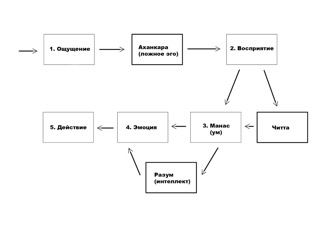
Вначале было слово, семя материального творения, из которого вырос образ творения, система миров и их обитателей. Эти миры и обитатели приобрели разные качества, способности, режимы, благодаря которым появилось многообразие предметов, явлений и деятельности. Здесь речь пойдёт о качествах, способностях, режимах.
«Это совершенно иной подход к материальному миру, чем у всего мира людей сейчас. Мир людей смотрит: какого свойства эта материя и как пользоваться этой материей, не подозревая, что любое свойство материи, которой он пользуется, становится его качеством. Он даже об этом не подозревает» [2].
«Тот, кто способен анализировать и определять, к каким гунам[59] природы относятся различные поступки, является мудрым человеком» ([1] Бхагавад-гита 17.7, комментарии).
«Овладев этим знанием, многие великие мудрецы достигли совершенства и перенеслись в духовную обитель. Это знание значительно превосходит всё [остальное знание], и, обретя его, многие люди достигали духовного совершенства. Таким образом, любой, кто по-настоящему овладеет [этим] знанием, сможет достичь совершенства» ([1] Бхагавад-гита 14.1, комментарии).
В этой цитате из авторитетнейшего священного писания – Бхагавад-гиты – однозначно сказано, что знание, о котором далее пойдёт речь, является наивысшим. Оно превосходит по важности даже знание о бессмертной душе и вечном духовном мире. Потому что от того, насколько человек овладел знанием о гунах и умением ориентироваться в материальном мире, зависит как качество его жизни в настоящем, так и судьба в будущем.
Самой конечной целью жизни, как мы узнаем дальше в книге, является не столько умение уверенно себя чувствовать в окружающей действительности, сколько способность совсем освободиться от влияния этой окружающей иллюзорной действительности, сотканной из гун материальной природы.
Гуны – это изначальные тонкие энергии.
В переводе с санскрита это слово означает «качество» или «верёвка». Слова режим, вибрация тоже применимы к этому понятию.
Гуны пронизывают собой всё. Ведические писания говорят о трёх гунах как о трёх цветных нитях, из которых соткано полотно этого мира. Все понятия, с которыми мы соприкасаемся, сотканы из гун: люди, еда, музыка, деятельность и так далее.
«Материальная природа состоит из трёх гун –
1) благости,
2) страсти
3) и невежества.
Когда вечное живое существо входит в соприкосновение с материальной природой, эти гуны обусловливают[60] его» ([1] Бхагавад-гита 14.5).
- «Материальная субстанция,
- место,
- результат деятельности,
- время,
- знание,
- деятельность
- и тот, кто действует,
- вера,
- состояние сознания,
- виды жизни
- и место, куда попадает душа после смерти, –
всё это основывается на трёх гунах материальной природы.
Все состояния материального бытия без исключения состоят из гун природы – всё увиденное, услышанное или представленное в уме» ([1] Шримад-Бхагаватам 11.25.30-31).
«Три гуны природы проявляются в многообразии материальных
- тел,
- мест,
- семей,
- стран,
- пищи,
- развлечений,
- а также таких явлений как война,
- мир
- и так далее.
Иными словами, всё, что мы видим в материальном мире, состоит из гун природы» ([1] Шримад-Бхагаватам 11.26.2, комментарии).
Кроме того, энергии гун связаны с жизненным циклом любого предмета или явления:
- создание,
- поддержание
- и разрушение.
«В соответствии с философией Вед, все перемены в этом мире происходят под воздействием гун страсти и невежества.
- Гуна страсти творит,
- а невежество разрушает,
- тогда как гуна благости, саттва, спокойна и устойчива» ([1] Шримад-Бхагаватам 10.27.4, комментарии).
«Всё, что есть в материальном мире – это гуны. Нас сбивают с толку предметы, вещества, и мы поэтому не видим гуны. Вот красивый предмет или вкусная пища, и мы хотим. И про гуны тут же забываем. А в итоге человек глупеет, тупеет.
Гуны невидимы глазами. Более того, гуны ослепляют человека. Если вы в тамо-гуне[61], вы не знаете об этом. Если вы в раджо-гуне[62], вы не знаете об этом, понятия не имеете. В гуне благости вы что-то уже знаете о низших гунах. Но не понимаете, как вы обусловлены саттва-гуной[63]. Гуна создаёт иллюзию, крадёт знание человека.
Есть история о Синдбаде-мореходе, где он с командой попал на какой-то остров после крушения. И какие-то люди пришли, посмотрели на них с интересом и снова ушли. Как-то странно было, Синдбад насторожился. Потом вернулись с пищей. Много принесли всякой пищи, очень вкусно пахнущей. Наливали какие-то большие ёмкости, предлагали им поесть. И с интересом смотрели, что они будут делать. Команда, поскольку умирала с голоду, стала есть эту пищу. И Синдбад почувствовал что-то недоброе и сказал, что эту пищу есть нельзя. И он не ел эту пищу. И когда его спутники поедали эту пищу, они на глазах превращались в свиней. А те, кто их кормил, на Синдбада не обращали никакого внимания, раз он не ел. Им нужны были свиньи, им не нужны были разумные люди. Они получали таким методом свиней, чтобы потом их съедать. Вот такая история.
Это история о гунах материальной природы. Просто пересказанная в такой форме мифа или сказки. Но это факт, что люди превращаются. Можете превратиться в святого, а можете превратиться в свинью. Гуны порабощают, и гуны освобождают. Поэтому нужно знать, что такое гуны.
- Гуны в пище,
- гуны в воздухе,
- гуны в мыслях,
- гуны в чувствах,
- гуны во временах года,
- в религиях,
- в философских учениях,
- в воде –
где угодно.
Теперь мы должны найти ту гуну, которая нам необходима для просветления. Не предметы, не вещи, а гуны нужно искать» [2].
1. Тамас (невежество)
От санскритского слова тама произошло русское слово тьма.
Помрачение, забвение, апатия.
Гуна невежества – это сплошное страдание и зависть.
Человек под влиянием гуны невежества крайне индивидуалистичен. С ним невозможно сотрудничество. Он не может воспринимать наставления, потому что сразу же гневается. В этой гуне сознание живого существа заблокировано с помощью такого механизма: живому существу кажется, что оно и так всё знает: оно находится в иллюзии.
В этом качестве для человека всё переворачивается наоборот: чёрное и белое, добро и зло, безбожие и религия меняются местами.
«Гуна тьмы, порождённая невежеством, держит всех воплощённых живых существ в плену иллюзии. Её влияние проявляется в виде
- безумия,
- лени
- и сна,
которые опутывают обусловленную душу.
Каждый, кто оказывается во власти гуны невежества, теряет рассудок и вместе с ним способность отличать хорошее от дурного. Вместо того чтобы развиваться, такой человек деградирует.
Веды характеризуют гуну невежества следующим образом: покрытые гуной невежества, люди лишаются способности понимать истинную природу вещей. Так, каждый знает, что все его предки умерли, и значит, он тоже умрёт; человек смертен. Дети, которых он зачинает, тоже обречены на смерть. Смерть неотвратима. Тем не менее люди как одержимые копят деньги и работают день и ночь не покладая рук, и никому не приходит в голову позаботиться о вечной душе. Это называется безумием. В безумии своём люди не хотят понять природу духа. Такие люди очень ленивы. Когда им предлагают духовное знание, они не проявляют к нему никакого интереса.
Другой характерной чертой человека в гуне невежества является то, что он спит больше, чем необходимо. Шести часов сна вполне достаточно, однако человек в гуне невежества спит по десять, а то и по двенадцать часов в день. Такой человек всегда выглядит подавленным и угнетённым, он часто принимает одурманивающие средства и много спит.
Таковы отличительные признаки людей, обусловленных гуной невежества» ([1] Бхагавад-гита 14.8).
«Оказавшись под преобладающим влиянием гуны невежества, человек
- погружается во тьму,
- делается сонным,
- утрачивает разум
- и становится жертвой иллюзии»
([1] Бхагавад-гита 14.13).
- «Неудержимый гнев,
- язвительность,
- привычка говорить вещи, не подтверждённые священными писаниями,
- желание причинять другим боль,
- стремление жить за счёт других,
- лицемерие,
- хроническая усталость,
- вздорность,
- скорбь,
- иллюзия,
- подавленность,
- депрессия,
- чрезмерный сон,
- пустые мечты,
- страх
- и лень –
таковы основные характеристики гуны невежества» ([1] Шримад-Бхагаватам 11.25.4).
Гуна невежества – это
- пассивность,
- безумие,
- болезни,
- депрессии,
- безнадёжная зависть
- и скорбь.
- Чувство вины
- и обвинение других.
- Непривлекательность,
- отвратительность,
- плохой запах.
- Отвратительное извращённое так называемое знание.
- Эгоистичность.
Люди, полностью находящиеся под влиянием гуны невежества – это
- отбросы общества,
- подонки,
- ведущие свинское животное существование.
- Наркоманы,
- алкоголики.
Человек под влиянием гуны невежества находится в умонастроении жертвы, эксплуатируемого. У него постоянно усиливающееся чувство изоляции. Для него мир – место страданий. Он не видит своего места и находится в состоянии потерянности. Он подвержен наркотикам и суициду.
«Когда гуна невежества побеждает страсть и благость, она
- затмевает сознание человека
- и делает его унылым
- и глупым.
Предаваясь скорби и впадая в иллюзию, человек в гуне невежества
- слишком много спит,
- тешит себя пустыми надеждами
- и причиняет боль другим живым существам» ([1] Шримад-Бхагаватам 11.25.15).
«Человек,
- постоянно действующий наперекор указаниям священных писаний,
- материалистичный
- и упрямый,
- обманывающий
- и нередко оскорбляющий других,
- ленивый,
- всегда угрюмый,
- откладывающий всё на потом, –
такой человек находится под влиянием гуны невежества» ([1] Бхагавад-гита 18.28).
«Когда сознание человека утрачивает ясность и в конце концов совсем угасает, так что он не может ни на чём сосредоточиться, ум его разрушается и погружается в невежество и депрессию. Следует понимать, что на такого человека влияет гуна невежества» ([1] Шримад-Бхагаватам 11.25.18).
Знание в гуне невежества – это искажённое, извращённое знание, культивирование невежества. Это демагогия. Современная система образования всё больше и больше попадает под влияние этой гуны и напоминает бойню для сознания детей – маленьких невинных ни о чём не подозревающих будущих членов общества.
«Свойства тьмы (тамаса):
- заблуждение,
- непросветлённость,
- слепая тьма (смерть),
- омрачённость (гнев);
- к пище непомерная жадность,
- в еде,
- а также в питье ненасытность,
- пристрастие к лежанию,
- сиденью,
- к духáм,
- нарядам,
- к дневному сну,
- нерадивости,
- к заносчивой речи,
- к пляскам,
- музыке,
- пенью,
- из-за невежества легковерье,
- ненависть к выполнению разных обязанностей –
таковы свойства мрака» (Махабхарата Шанти-парва 315.25-28).
«Тамас означает безверие и слабость. Слабость означает, что мы беспомощны перед какими-то превосходящими силами. И вот невежество является такой превосходящей силой для человека, в которого проникло невежество. Как болезнь проникает внутрь, и человек становится беспомощный: перед событиями, перед отношениями, он не знает, что с ним случится завтра, он боится огня, боится стихии, боится воды, боится животных, боится людей – слабый. Слабый. Нет силы. Тамас. Он так думает, сознание такое. Он – душа: он сильный, может на Солнце жить – Прабхупада говорит – душа не горит, она очень сильная, сильнее огня. Но вот эти гуны проникают внутрь, и у нас вырабатываются определённые убеждения, основанные на физическом теле, которое боится огня, боится болезней, боится смерти, боится боли. Вот эта сила – она большая, она превосходит обычное сознание обусловленного живого существа. Хотя на самом деле он вечен, чист. Так же, качественно равен Богу каждый из нас. И вот у нас предназначение – вспомнить себя» [2].
2. Раджас (страсть)
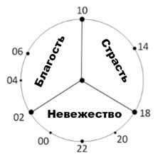
Слово раджа на санскрите означает цвет и царь.
Возбуждение.
Гуна страсти – это сочетание страдания и так называемых удовольствий, являющихся непосредственной причиной новых страданий.
Гуна страсти – это, так сказать, потенциальное страдание.
Механизм работы гуны страсти реализуется через пренебрежение. Человек вроде бы знает, как правильно делать, но пренебрегает этим, считает, что у него есть более важные дела, откладывает на потом.
Гуна страсти позволяет что-то создавать. Она является генератором каких-то
- изменений,
- развития,
- творчества,
- созидания,
- зарождения.
Но и побочные эффекты есть:
- суетливость,
- беспокойство,
- тревога,
- озабоченность.
«Гнев и вожделение являются порождением гуны страсти.
А когда человек гневается, всё его тело оскверняется» ([1] Бхагавад-гита 16.1-3, комментарии).
«Когда живое существо попадает в материальный мир, его вечная любовь к Кришне под влиянием гуны страсти преобразуется в вожделение. Это можно сравнить с тем, как молоко при добавлении в него кислого тамаринда[64] превращается в простоквашу. Не получив удовлетворения, вожделение переходит в гнев, а гнев порождает иллюзию, которая держит живое существо в плену материальной жизни. Поэтому вожделение – злейший враг живого существа; именно оно делает чистое живое существо пленником материального мира» ([1] Бхагавад-гита 3.37, комментарии).
«Гуна страсти порождена бесконечными желаниями и алчностью, поэтому она связывает воплощённое живое существо узами материальной корыстной деятельности.
Главным признаком гуны страсти является взаимное влечение мужчин и женщин. Женщину влечёт к мужчине, а мужчину – к женщине. Это влечение называется страстью. И когда её влияние возрастает, у человека развивается жажда материальных наслаждений. У него появляется желание удовлетворять свои чувства. Ради удовлетворения чувств человек в гуне страсти жаждет всеобщего признания, мечтает о счастливой семейной жизни, о хорошей жене, послушных детях и собственном доме. Все это – результат влияния гуны страсти. Чтобы исполнить все свои желания, человеку приходится работать не покладая рук. Поэтому привязанность к плодам своего труда связывает его узами материальной деятельности. Чтобы удовлетворить жену, детей и общество и поддержать свой престиж, человек должен работать. Поэтому все в материальном мире в той или иной степени находятся под влиянием гуны страсти» ([1] Бхагавад-гита 14.7).
«Когда возрастает влияние гуны страсти, человек
- обнаруживает признаки сильной привязанности и
- погружается в зарабатывание денег,
- прилагает чрезмерные усилия для достижения своих целей
- и проявляет неуёмное вожделение
- и ненасытную жажду наслаждений.
Человек в гуне страсти никогда не удовлетворён достигнутым, он всегда хочет большего. Если он задумал построить дом, то приложит все силы, чтобы построить его так, будто он сможет жить в нём вечно. В нём также развивается сильная жажда чувственных удовольствий. Его желаниям нет конца. Он хочет всегда оставаться со своей семьёй в своём доме, чтобы и дальше удовлетворять свои чувства. Таковы отличительные признаки гуны страсти» ([1] Бхагавад-гита 14.12).
- «Материальные желания,
- огромные усилия,
- безрассудство,
- неудовлетворённость даже при выигрыше,
- высокомерие,
- молитвы о материальном процветании,
- уверенность в своей исключительности
- и своём превосходстве,
- потакание чувствам,
- желание броситься в бой,
- любовь к похвалам,
- привычка высмеивать других,
- хвастовство
- и действия с позиции силы –
всё это качества гуны страсти» ([1] Шримад-Бхагаватам 11.25.3).
Человек под влиянием гуны страсти всеми силами стремится пробиться наверх по карьерной лестнице. Главная ценность для него – деньги и удовольствия, которые он может купить за эти деньги.
Гуну страсти сопровождают
- богатство,
- красота,
- образование,
- красивая внешность,
- связи в этом мире.
Но одновременно с этим и
- жадность,
- зависть,
- вожделение.
- И пренебрежение Абсолютной Истиной.
Человек под влиянием гуны страсти находится в умонастроении победителя, контролирующего. Он считает, что мир предназначен для исполнения его желаний наслаждаться.
«Когда гуна страсти, вызывающая привязанность, желание независимости и тягу к деятельности, одерживает верх над невежеством и благостью, человек начинает упорно трудиться, чтобы заработать уважение и богатство. Так, находясь под влиянием гуны страсти, он проводит свои дни в тревоге и борьбе» ([1] Шримад-Бхагаватам 11.25.14).
- «Если человек привязан к деятельности
- и к её результатам,
- если он движим желанием насладиться плодами своего труда,
- если он жаден,
- злобен,
- нечист,
- подвержен радостям
- и печалям,
о таком человеке говорят, что он находится под влиянием гуны страсти.
Очень сильная привязанность к определённому виду деятельности, вернее к её результатам, вызвана привязанностью человека к материалистическому образу жизни: к семейному очагу, жене и детям. Такой человек никогда не стремится к совершенству и возвышенным идеалам. Он желает только одного: окружить себя материальным комфортом. Такие люди, как правило, очень жадны, они думают, что все их приобретения останутся с ними навеки и никогда не будут потеряны. Враждебные к другим, они готовы на всё ради наслаждений. Поэтому обычно такие люди нечисты и неразборчивы в средствах: им всё равно, каким путём к ним приходят деньги. Они безудержно радуются успеху и сильно страдают, сталкиваясь с неудачами. Так действуют те, кто находится под влиянием гуны страсти» ([1] Бхагавад-гита 18.27).
«Гуну страсти можно распознать по следующим признакам:
- деформация разума
- в результате слишком бурной деятельности,
- неспособность познающих органов чувств отстраниться от мирских объектов,
- нездоровое состояние органов действия
- и беспокойный,
- мятущийся ум»
([1] Шримад-Бхагаватам 11.25.17).
Знание в гуне страсти – это просто информация. В таком поверхностном знании нет глубины и реализованности. Когда человек учит пусть даже чему-то правильному, но тому, чему он сам не следует, он действует под влиянием гуны страсти. Это также может быть фрагментарное знание, не охватывающее общей картины, вырванное из контекста.
«Соприкосновение с двумя низшими качествами материальной природы порождает вожделение и жадность» ([1] Шримад-Бхагаватам 1.2.19).
Гуна страсти очень опасна, потому что она порождает невежество, источник страданий. Именно страсть толкает нас к выгоде и к дискриминации. Причиной невежества, а значит и страданий является вожделение. Откуда же берётся вожделение? Мы, живые существа, являемся чистой любовью. Но когда наша чистая изначальная бескорыстная любовь соприкасается с гуной страсти, она прокисает и превращается из молока в кисломолочный продукт, простоквашу – любовь к себе, или вожделение. Когда наша любовь соприкасается с гуной страсти, она просто переворачивается вверх дном. Любовь освобождает, а вожделение, возникающее под воздействие гуны страсти, обманывает. Вот так опасна эта гуна страсти.
«Вот совокупность раджаса свойств:
- красота,
- воинственность,
- властность,
- радости-страданью причастность,
- неотрешённость,
- суровость,
- любовь к пересудам,
- привычка к спорам,
- себялюбие,
- пренебрежительность,
- суетность,
- враждебность,
- драчливость,
- грабительство,
- бесстыдство,
- нечестность,
- разборчивость,
- грубость,
- похотливость,
- гневливость,
- пьянство,
- спесь,
- ненависть,
- бахвальство –
так перечислены раджаса свойства» (Махабхарата Шанти-парва 315.21-24).
3. Саттва (благость)
Сат на санскрите означает существование, бытие, а саттва – дающее бытие. Просветление. Гуна благости – это ощущение счастья и знание.
В гуне благости ценностью становится душа, а не какое-то материальное благополучие.Гуна благости является высшей формой материального существования.
«Гуна благости, которая чище других гун, просветляет живое существо и избавляет его от всех последствий грехов[65]. Пребывающие под влиянием этой гуны привязываются к знанию и ощущению счастья.
Саттва – это ясность мышления. Лишних слов нет, лишних движений нет.
Благость наделяет человека мудростью, отличающей его от тех, кто обусловлен иначе. Человек в гуне благости гораздо меньше подвержен материальным желаниям, и ему свойственна привязанность к материальным знаниям.
В Ведах говорится, что гуна благости, в отличие от других гун, приносит людям глубокие познания и делает их счастливыми» ([1] Бхагавад-гита 14.6).
«Когда начинает преобладать гуна благости, все врата тела озаряются знанием. У материального тела девять врат:
- глаза,
- уши,
- ноздри,
- рот,
- гениталии
- и анус.
Когда все девять врат освещены признаками благости, живое существо находится под влиянием гуны благости. В гуне благости зрение, слух и вкус не подводят человека и позволяют ему воспринимать мир таким, как он есть. Человек в гуне благости очищается изнутри и снаружи. Признаки счастья и умиротворения украшают все врата его тела, помогая понять, что он находится под влиянием гуны благости» ([1] Бхагавад-гита 14.11).
- «Власть над умом и чувствами,
- терпение,
- проницательность,
- верность своему долгу,
- правдивость,
- милосердие,
- тщательное изучение прошлого
- и предвидение будущего,
- удовлетворённость в любых условиях,
- щедрость,
- отказ от чувственных удовольствий,
- вера в духовного учителя,
- стыд при неподобающем поведении,
- склонность к благотворительности,
- простота,
- смирение
- и внутренняя удовлетворённость –
вот качества гуны благости» ([1] Шримад-Бхагаватам 11.25.2).
Человек, находящийся под влиянием гуны благости,
- аскетичен,
- прост,
- правдив,
- умиротворён,
- излучает мир,
- спокоен,
- религиозен,
- он безусловно и беспричинно любящий.
- И при этом такой человек могущественен, имеет власть и влияние над всем, находящимся под влиянием низших гун материальной природы.
- Человек под влиянием гуны благости забывает о своих плохих намерениях.
Человек под влиянием гуны благости находится в умонастроении познающего, наблюдателя. Он ощущает себя частью общества, настроен на сотрудничество, понимает свою взаимозависимость с другими людьми. Он старается видеть мир таким, какой он есть – ни хороший, ни плохой – школа. Знающий человек не критикует, он исцеляет.
«Когда гуна благости, сияющая, чистая и благодатная, начинает преобладать над страстью и невежеством, человек
- наполняется счастьем,
- обретает праведность,
- знание
- и другие добродетели»
([1] Шримад-Бхагаватам 11.25.13).
«Когда сознание очищается, и чувства избавляются от привязанности к материи, живое существо в материальном теле становится бесстрашным и отстраняется от материального ума. Знай же, что эти признаки указывают на преобладание гуны благости» ([1] Шримад-Бхагаватам 11.25.16).
- «Благость,
- восторг,
- изобилие,
- озарение,
- приятность,
- чистота,
- счастье,
- здоровье,
- благочестие,
- удовлетворённость,
- бесскорбность,
- отсутствие начинаний,
- терпение,
- невреждение,
- крепость,
- уравновешенность,
- правдивость,
- невинность,
- мягкость,
- совестливость,
- непоколебимость,
- чистота,
- честность,
- благонравие,
- незлобивость,
- умиротворение сердца,
- отрешённость от желательного-нежелательного,
- отсутствие бахвальства совершённым,
- отсутствие зависти к чужому добру,
- принятие для себя достойного дара,
- состраданье ко всем существам –
вот что считается свойствами саттвы» (Махабхарата Шанти-парва 315.17-20).
Знание в гуне благости охватывает цельную картину исследуемого явления в его связях с окружающим миром. Такое знание реализовано на практике, и на нём основаны навыки и умения. Это мудрость. Знание в гуне благости ведёт к материальному процветанию. А в высшем своём проявлении трансцендентное знание приводит к истинному счастью, о котором будет рассказываться в конце книги.
- «Дрова – это земля в преобразованном виде,
- но дым лучше сырого дерева.
- А огонь ещё лучше, потому что с его помощью можно обрести блага высшего знания [посредством ведических жертвоприношений].
Подобно этому,
- страсть [раджас] лучше,
- чем невежество [тамас],
- но лучше всего благость [саттва],
ибо посредством благости можно познать Абсолютную Истину» ([1] Шримад-Бхагаватам 1.2.24).
«Знание Абсолюта – это знание в гуне благости. Знание, в основе которого лежит двойственность, находится в гуне страсти, а нелепые материалистические представления – в гуне невежества.
Человек, находящийся в гуне благости, сознаёт: во всём, что его окружает, присутствует высшее духовное начало. Человек в гуне страсти овладевает научным знанием о материальном теле. Тот же, кто находится в гуне невежества, сосредоточивает ум на объектах чувств, не задумываясь о чём-то более высоком, и воспринимает окружающий мир, как маленький ребёнок или как умалишённый» ([1] Шримад-Бхагаватам 11.25.24).
«Учёные люди, хранящие верность принципам ведической культуры, поднимаются всё выше и выше, ведомые гуной благости. Гуна невежества понуждает человека стремительно опускаться, воплощаясь каждый раз в более примитивной форме жизни. А под влиянием гуны страсти душа продолжает жизнь за жизнью рождаться человеком.
Те, кто покидает этот мир, пребывая под влиянием гуны благости, отправляются на райские планеты. Те, кто умирают, охваченные гуной страсти, остаются в мире людей, а те, на кого в момент смерти влияет гуна невежества, должны пойти в ад» ([1] Шримад-Бхагаватам 11.25.21-22).
«Знание о вечной душе, существующей вне и помимо материального тела, называют знанием в гуне благости, знание, порождающее множество разнообразных теорий и доктрин, основанных на логике и сомнительных гипотезах, является знанием в гуне страсти, а знание, служащее единственной цели – окружить комфортом материальное тело, – это знание в гуне невежества» ([1] Бхагавад-гита 18.22, комментарии).
«Саттва означает, что очень легко осознать Бога. Раджас означает, что я помню, что Бог существует, но я пренебрегаю этим, потому что у меня очень много материальных обязанностей. Отсюда оскорбления. Тамас – это блок. Эти гуны чередуются, поэтому люди говорят: Бог есть, Бога нет… Из раджаса трудно подняться в саттву самому: слишком сильная жадность и вожделение. Максимальное представление о добре и зле возможно в саттва-гуне» [2].
«Сегодняшний мир не живёт в благости, он живёт в страсти и невежестве. У нас сегодня страсть – передовая гуна. Страсть – это
- деятельность,
- карьера,
- деньги,
- здоровье,
- семья,
- хорошие дети,
- потомство,
- достижения карьеры,
- слава,
- богатство,
- красивая внешность,
- образование –
это всё относится к страсти. И сегодня передовая цель мира – это быть в страсти.
Но страсть естественно переходит в невежество – в некую усталость, подавленность и бессмыслицу иногда.
Потому что добиваться в мире этого всего крайне трудно. Столько врагов, конкурентов появляется! В страсти столько трудностей. Человек постепенно иссякает, устаёт и опускается в пассив: отдых, отстранение, устал, всё надоело, теряет энтузиазм – это невежество.
В невежестве он
- живёт воспоминаниями,
- критикует окружающих, как старики критикуют молодёжь постоянно,
- завидует,
- оценивает всё вокруг,
- подвергается болезням,
- депрессиям,
- от него уходит глубокая радость,
- и он живёт в иллюзии, что когда-нибудь будет лучше,
- хотя он стареет, и лучше ему не становится,
- становится пассивным,
- не может в своей даже жизни сделать что-то большое, великое,
- даже благо для себя, извлечь большого счастья не способен,
- он теряет знания,
- теряет энергию,
- часто доходит до безумия
- и приёма интоксикаций.
В страсти он, конечно, многого добивается, он занимается:
- политикой,
- экономикой,
- культурой,
- научными исследованиями,
- организацией общества,
- общественной деятельностью.
Но в гуне благости сейчас практически людей нет» [2].
«Материальный мир – искажённое отражение духовного мира. Здесь есть возвышения и унижения, есть взлёты и падения, есть нестерпимо мучительные циклы времени, повторяющихся рождений и смертей, страданий и наслаждений, которые постоянно чередуются как волны океана. Безграничный, непреодолимый океан материального существования. И в этих волнах джива[66] чувствует себя иногда неплохо на вершине какой-то волны, или очень плохо внизу, чувствует себя подавленной, униженной, никчёмной. В основном человек переживает все три состояния гун природы примерно в равной степени. У животных не бывает жизненных драм. Преобладает низшая гуна, которая парализует их разум. И есть высшие планеты, где просветлённые живые существа могут чувствовать свободу от страданий, или хотя бы иметь знания, как избегать проблем, решать проблемы. Но самое запутанное существо – в трёх гунах материальной природы одновременно. Поэтому для него материальное существование представляется как безграничное непреодолимое пространство, океан невежества, который невозможно переплыть.
Гуна невежества блокирует сознание. Она не даёт никакой возможности осознать дух, даже представить такое. Ни представить, ни услышать, ни потрогать, ни понюхать, ни вообразить – полное безверие. Человек не может получить опыт в низшей гуне природы, тамасе.
Но такого не бывает, чтобы человек был исключительно в тамасе. Гуны вращаются. Человеку доступно три измерения жизни. Но в тамасе – это блок. У человека даже нет ни к чему интереса.
И в гуне страсти он признаёт существование души и Сверхдуши, культивирует религиозные процессы, обряды, накопительство, чувственные наслаждения через обряды и накопительство, через какую-то честь, дхарму. Но эта гуна – удивительная, она даёт некое искажённое представление о душе. Но главное её свойство в другом: пренебрегать. В гуне страсти люди пренебрегают душой, пренебрегают жизнью животных, растений ради выгоды, пренебрегают жизнью людей ради выгоды. Гуна страсти очень двойственна, опасна. В ней есть религиозность, но есть также и жестокость. Понятия нравственности и безнравственности тоже в ней рядом. Люди под влиянием гуны страсти говорят: «Такова жизнь… Борись за существование». Таким образом, мечты людей в гуне страсти не сбываются. Но они очень много мечтают, планируют, воображают, пытаются ставить высокие цели. Попасть под влияние гуны благости – это единственный способ ощутить непосредственно, что такое душа» [2].
Необходимо, однако, помнить, что гуна благости – это не предел мечтаний.
«Высшая гуна в материальном мире – это благость, которая проявляется в таких качествах, как
- правдивость,
- уравновешенность,
- чистота,
- владение чувствами,
- простота,
- знание истины,
- вера в Бога,
- научное знание
- и т. п.
Тем не менее все эти качества имеют оттенок страсти и лишены совершенства» ([1] Чайтанья-чаритамрита 1.5.22, комментарии).
«Проблема в том, что, находясь в гуне благости, человек сознаёт своё преимущество в знании, чувствует своё превосходство над другими и этим обусловливается. Лучший пример тому – философы и учёные. Все они гордятся своими познаниями, и, поскольку большинство из них живёт в достатке, они до определённой степени испытывают материальное счастье. Это ощущение счастья в рамках обусловленной жизни привязывает их к гуне благости. Поэтому они очень привязываются к деятельности в гуне благости, и, пока эта привязанность существует, они будут вынуждены менять тела, оставаясь во власти гун материальной природы. Это лишает их возможности получить освобождение и вернуться в духовный мир. Снова и снова рождаясь учёным, философом или поэтом, такой человек обрекает себя на череду страданий, которые всегда приносят рождение и смерть. Но, введенный в заблуждение материальной энергией, он, несмотря ни на что, считает себя счастливым» (Бхагавад-гита 14.6, комментарии).
«Гуна благости просветляет не до конца живое существо, она обусловливает его нежеланием освобождения. В гуне благости у мудреца отсутствует страх, он осознаёт душу, обладает тайными знаниями, гордится своим положением, но хочет оставаться в материальном мире» [2].
Гуну благости можно сравнить с очками, в которых видно только то, что близко, а всё остальное – мутное.
В гуне страсти очки подобны калейдоскопу с яркими красочными формами, сильно искажающими и заслоняющими духовную реальность.
А очки гуны невежества – это сильно затонированные солнечные очки, в которых почти вообще ничего не видно.
«Многие ещё не совсем ясно понимают, что такое гуна благости. Они думают, что это какое-то качество – но в этом случае это индивидуализм. Потому что гуна благости не разделяет по характеру, типу тела, возрасту, материальным качествам, профессиям (это гуна страсти разделяет).
Гуна благости не разделяет, она сотрудничает.
Пример: берём томат (страсть), добавляем перец чили (страсть), горчицу (страсть), соль (невежество), всё готовим на огне (наслаждающийся) – и в итоге блюдо, соединение и есть гуна благости.
Продукт гуны благости в обществе – это варнашрама-дхарма[67].
Таким образом, гуна благости – это умение сотрудничать вместе. Ну а более индивидуальная благость – это ещё не вигьяна[68], пока ещё не действующая гуна благости.
Количество благости можно соизмерить с количеством индивидуализма:
- тамас[69] – это крайняя степень индивидуализма;
- страсть – уже может как-то сотрудничать (для своей пользы);
- и гуна благости – это минимум индивидуализма, действуем даже не в интересах своей духовной карьеры – вот этим Бог наслаждается.
В единстве духа (например в дхаме[70], на парикраме[71]) мы чувствуем прогресс не по дням, а по часам» [2].
«Невежество означает лень. Страсть означает активность. А благость означает серьёзность, здравомыслие. В этот век 75% людей или даже более того – в невежестве. Может быть, 10-15% – в страсти. И едва ли 5% – в благости» [1].
Функции гун
1) Гуны материальной природы стягивают и удерживают живое существо. Они заставляют забыть, кто мы есть на самом деле – вечная душа, полная знания и блаженства. Они побуждают нас погрузиться во временную, иллюзорную жизнь этого мира.
- Гуна невежества связывает человека грубым канатом,
- гуна страсти – прочной верёвкой,
- а гуна благости опутывает тонкой, но очень прочной паутиной.
- «Гуна благости обусловливает живое существо ощущением счастья,
- гуна страсти – корыстной деятельностью,
- а гуна невежества, покрывая знание живого существа, связывает его путами безумия»
([1] Бхагавад-гита 14.9).
«Стягивают: в разных гунах людям приятно находиться. Кому-то отвратительно наблюдать образ жизни человека, а человек считает, что он хорошо себя чувствует.
Удерживают: даже когда человек хочет сменить образ жизни, не может. Даже при желании чувствует, что это очень трудно для него, и даже можно сказать, что невозможно для него.
Будь это червь или свинья – все будут так думать под влиянием этой энергии» [2].
2) Гуны материальной природы конкурируют между собой.
«Иногда в человеке начинает преобладать гуна благости, одолевая страсть и невежество. Иногда гуна страсти побеждает невежество и благость, а иногда берёт верх гуна невежества. Так между гунами материальной природы идёт непрерывная борьба за превосходство. Показателем того, под влиянием какой гуны находится живое существо, является характер его деятельности» ([1] Бхагавад-гита 14.10).
3) Гуны материальной природы создают разнообразие.
Подобно тому, как изображение в мониторе формируется из трёх цветов: красного, зелёного и голубого, из трёх гун соткано всё разнообразие материального творения.
Гуны тоже имеют свои цвета.
- Благости соответствует белый и жёлтый цвет,
- страсти – красный,
- а невежеству – чёрный и синий.
Основное предназначение гун – полностью захватить наше внимание и удержать нас в материальном мире.
4) Гуны материальной природы выполняют анестезирующую функцию. Они делают наши чувства более притуплёнными. Таким образом человек становится способен терпеть страдания, не теряя сознание. Эту же функцию можно назвать опьянением.
5) Гуны материальной природы являются всепроникающими.
Абсолютно всё в этом мире соткано из гун:
- тело,
- небо,
- слова,
- мысли,
- предметы
- и так далее.
6) Гуны имеют разные функции.
- Гуна страсти отвечает за процесс
- творения,
- созидания,
- развития,
- роста,
- возникновения,
- зарождения.
- Гуна благости ответственна за
- поддержание,
- сохранение,
- стабилизацию.
- И гуна невежества обеспечивает
- разрушение,
- свёртывание,
- старение,
- увядание.
Этот принцип действует на любом уровне – от всей вселенной до растущих на пальцах ногтей. Из этих трёх процессов наиболее трудный – это поддержание. Поэтому Верховный Господь никому не может его делегировать.
«Ложное эго может быть умиротворённым, деятельным или пассивным, в зависимости от того, какая из гун – благость, страсть или невежество – оказывает на него свое влияние» ([1] Шримад-Бхагаватам 3.26.26).
«Если бы человек был абсолютно умиротворён, он не смог бы действовать в материальном мире – ему недоставало бы стимула, побуждающего к активности.
Так же и тот, кто был бы во власти одной только похоти: он утратил бы всякое соображение, не будь в его уме хоть капли умиротворённости или сдержанности.
Человек, охваченный одним только гневом, без примеси других эмоций, тоже не смог бы нормально действовать в этом мире.
Таким образом, материальные гуны не встречаются в чистом, беспримесном виде. Они смешаны друг с другом, и благодаря этому всё в мире идёт своим чередом» ([1] Шримад-Бхагаватам 11.25.6, комментарии).
«Преодолев влияние этих трёх гун, которые связаны с материальным телом, воплощённое живое существо перестаёт испытывать страдания, сопряжённые с рождением, старостью и смертью, и вкушает нектар уже в этой жизни» ([1] Бхагавад-гита 14.20).
Бог в Бхагавад-гите говорит: «Преодолеть влияние Моей божественной энергии, состоящей из трёх гун материальной природы, невероятно трудно» ([1] Бхагавад-гита 7.14).
Гуны материальной природы необычайно могущественны. Их влияние настолько сильно, что из всего человечества только единицам удаётся окончательно выйти из-под их контроля. Для иллюстрации этого приведём диалог между Богом и Его другом Арджуной, из которого видно, насколько это серьёзно – быть под влиянием гун:
«Арджуна спросил: О мой Господь, по каким признакам можно узнать того, кто вышел из-под влияния этих трёх гун? Как он ведёт себя? И каким образом освобождается от их власти?
Верховный Господь сказал: О сын Панду, про того,
- в ком просветление, привязанность и иллюзия не вызывают ненависти, когда они появляются, и кто не жаждет обрести их, когда они исчезают;
- кого не выводит из равновесия воздействие материальных гун, кто остаётся безучастным и трансцендентным, ибо знает, что всё совершается этими гунами;
- кто всегда погружён в себя и одинаково относится к счастью и горю;
- кто не видит разницы между горстью земли, камнем и слитком золота;
- кто одинаково встречает желанное и нежеланное;
- кто остаётся непоколебимым, одинаково принимая осуждение и похвалы, бесчестье и почёт;
- кто одинаково относится к друзьям и врагам;
- кто отрёкся от всей материальной деятельности, –
про такого человека говорят, что он поднялся над гунами материальной природы» ([1] Бхагавад-гита 14.21-25).
«Эта наука считается самой важной – говорится в Бхагавад-гите – научиться различать качества материальной природы. Благодаря именно этой науке человек достигает освобождения от материи. При помощи саттвы это возможно. Но любая гуна смешивается. Если человек хочет наслаждаться саттва-гуной, например, и всё необходимое желает, чтобы быть в саттва-гуне для наслаждения саттва-гуной, то сам факт наслаждения – это уже тамас. Получается, он выбирает саттву на основе тамаса. То есть его просветление всё равно смешивается с тамасом. И чтобы достичь этого результата саттвы, необходимы какие-то усилия – это необходим раджас. Если даже мы хотим жить в саттва-гуне, остальные гуны будут также присутствовать. Если выбрать нахождение в тамасе, то нужно развить самомнение, определённое сознание.
- Любое сознание – это саттва-гуна.
- Деятельность, приводящая к этому уровню сознания, – раджас.
- И успокоение они находят в тамасе.
То есть многие люди работают для отдыха – для тамаса значит. Они говорят: процветание, мир, любовь – это саттва; богатство, процветание, развитие – это раджас. Но для чего? Чтобы потом погрузиться в тамас.
Так гуны всегда смешаны в нашем сознании в форме этих качеств.
В этом нужно разобраться. Как? Устранить невежество. Невежество – это дух независимого наслаждения. Я хочу наслаждаться, ты хочешь наслаждаться. Как нам решить этот вопрос? Кто кем будет наслаждаться? Каждый хочет наслаждаться другим. Вот конфликт. Это тамас. Тамас – это отделённость, индивидуализация: каждый живёт для удовлетворения своих чувств. Это материальная природа. На основе тамаса, собственно, развиваются все другие гуны. Источник этих гун в материальном мире – тамас. То есть весь материальный мир сделан на основе невежества. И для того, чтобы выйти за пределы гун, необходимо другое общение с теми, кто свободен от желания наслаждаться независимо от Бога.
Никогда никакой материалист не сможет прийти к этой науке путём экспериментов или домыслов. Любые его домыслы, эксперименты будут основываться на тамасе – на желании наслаждаться плодами своего труда, открытии, искании, наслаждении этим научным или творческим процессом. Он для наслаждения это делает, поэтому никогда не сможет понять секрет, загадку этого творения» [2].
Проводники гун
«В соответствии с качеством
- религиозных писаний,
- воды,
- общения,
- места,
- времени,
- деятельности,
- рождения,
- медитации,
- мантр и
- и очистительных обрядов
по-разному проявляются гуны природы» ([1] Шримад-Бхагаватам 11.13.4).
Проводники гун – это среда, через которую гуны передаются от источника к приёмнику. Благодаря качеству всепроникаемости, как источником, так и приёмником гун может быть абсолютно всё:
- человек,
- вода,
- мысли,
- место,
- время,
- обстоятельства,
- и так далее.
Знание о проводниках гун имеет огромное практическое значение. Овладев искусством манипулирования проводниками гун, человек овладевает искусством жизни в материальном мире и делает очень важный шаг к совершенству жизни – духовной практике.
Проводников гун бесконечное количество. Но есть наиболее значимые проводники гун с практической точки зрения.
«Заботясь о чистоте
1) места,
2) времени,
3) предметов, необходимых для деятельности,
4) её исполнителя,
5) мантр
6) и самой деятельности,
человек становится праведником, а пренебрегая чистотой этих шести составляющих, превращается в безбожника» ([1] Шримад-Бхагаватам 11.21.15).
«Гуны природы развиваются посредством соответствующей им деятельности, общения, а также через употребление определённой пищи.
К примеру, гуна невежества развивается в том, кто пьёт спиртное: алкоголь очень скоро распространит влияние тамо-гуны на всё тело. Раджо-гуна возрастает, если напряжённо работать ради собственной выгоды, будучи сильно привязанным к результатам своего труда. Аналогичным образом влияние саттва-гуны увеличивается при помощи определённой деятельности и благодаря определённой жизненной позиции» [19].
Гуны можно рассматривать как инфекцию. Это тонкая инфекция, поражающая сознание. И, соответственно, существует две болезни: невежество и страсть. Как мы узнаем в следующих главах, благость тоже является болезнью. Но пока мы будем считать её здоровым состоянием сознания, или процессом выздоровления.
Наиболее значимыми проводниками гун материальной природы, заражёнными гунами, являются:
- вода,
- пища,
- время,
- место,
- обстоятельства,
- общение.
Этим проводникам гун посвящены несколько следующих глав в этой книге:
- «Здоровье»,
- «Время»,
- «Место»,
- «Астрология»,
- «Общение».
Когда человек утверждается в какой-либо гуне, он сам уже становится её носителем, или проводником. И тогда уже он распространяет вокруг себя эту гуну, подобно тому, как цветок распространяет вокруг себя свой аромат.
Как развивать гуну благости
«Если человек избавляется от влияния материальных гун страсти и невежества, его жизнь становится очень светлой и спокойной» ([1] Шримад-Бхагаватам 11.9.12, комментарии).
«Тамас характеризуется неведением, раджас – побуждением к действию, саттва же благодаря её сильному светлому началу считается среди них самой главной.
Кто крайне
- невежествен,
- глуп,
- сонлив,
- неразумен
- и непригляден на вид,
- кто злобен,
- жесток
- и ленив,
над таким (человеком) властвует тамас.
Кто
- искусен в речах
- и умён,
- кто страстен
- и негодующ,
- чей разум стремится к познанию,
- кто горд
- и упрям,
тот носит в себе раджас.
Человек
- просветлённый
- и твёрдый,
- стремящийся к отречению от мирского,
- смиренный,
- незлобивый,
- мудрый
- и сдержанный
осенён саттвой»
(Махабхарата Араньяка-парва 203).
Теперь, опираясь на ведическое знание о гунах материальной природы, давайте разработаем стратегический план улучшения качества нашей жизни.
Для повышения качества жизни необходимо:
- гуну невежества решительно отвергнуть, выкорчевать как сорняк;
- к гуне страсти (богатству, власти, красоте) можно относиться нейтрально, даже с подозрением, не гнаться за этими вещами, спокойно относиться;
- а гуну благости необходимо полностью принять.
Сама гуна благости
- поднимает человека над проблемами,
- даёт знание
- и чувство счастья –
то, что мы ищем. В страсти и невежестве этого не найти.
Пока мы не сменим гуну, модус, режим мышления, нам счастья не видать.
Почему нам не подходят гуны невежества и страсти? Потому что они создают пять серьёзных препятствий для качественной и счастливой жизни:
1) лайя – сонливость,
2) викшепа – рассеянность,
3) апратипатти – постоянная нехватка энтузиазма,
4) кашайя – дурные привычки,
5) расавада – отсутствие вкуса к жизни.
«Майя, материальная энергия, постоянно причиняет нам страдания трёх видов. Материальная энергия состоит из трёх гун. Человек должен подняться по крайней мере на уровень гуны благости, прежде чем перед ним откроется путь к постижению Верховного Господа. Иначе он останется во власти страсти и невежества, составляющих основу демонического образа жизни» ([1] Бхагавад-гита 16.24, комментарии).
«Вот несколько практических принципов, которые помогут нам развить в себе гуну благости:
1) обуздание ума и чувств,
2) терпение к другим,
3) разборчивость,
4) приверженность своему долгу,
5) правдивость,
6) милосердие,
7) внимательное изучение прошлого и будущего (можно учиться на собственных достижениях и ошибках),
8) удовлетворённость в любом состоянии (способность воспринимать всё как милость Кришны[72]),
9) щедрость,
10) добровольный отказ от чувственных наслаждений,
11) вера в духовного учителя,
12) раскаяние в недостойных поступках (готовность исправлять ошибки, не отрицать их),
13) благотворительность,
14) простота,
15) смирение,
16) умение находить внутреннее удовлетворение
([1] Шримад-Бхагаватам 11.25.2-5).
«Просто попытавшись претворить эти принципы в жизнь, человек сразу же почувствует, как они возвышают его. Это почти волшебство: занимаясь деятельностью в гуне благости, вы ощутите на себе очищающее воздействие этой гуны. Это похоже на подъём в лифте.
Другие важные методы, способствующие росту саттва-гуны, – это приготовление и предложение Господу пищи в гуне благости, а также стремление общаться с теми, кто утвердился в саттва-гуне.
Знаете ли вы о том, что в Индии при психиатрических клиниках всегда держат коров? Когда душевнобольной теряет покой, он может подойти к корове и тут же ощутить облегчение. Таково влияние гуны благости. Попытайтесь применить это в своей жизни. Для этого не обязательно быть душевнобольным, это сработает и с нормальным человеком. Просто при каждом удобном случае гладьте корову!» [19].
Чтобы развивать гуну благости, нам всё-таки понадобится гуна страсти. Главное – не забывать, для чего мы её используем.
Метод состоит в следующем: пока ещё не обладая качествами гуны благости (доброжелательностью, бесконфликтностью, знанием, чистотой, аскетизмом, правдивостью), мы стараемся вести себя так, как будто уже обладаем этими качествами. Такой образ действий является методом гуны страсти.
Зачем развивать гуну благости
«Как жить в трансцендентном сознании в материальном мире? Это же несовместимо. Но есть способ: в гуне благости, при помощи мудрости. Житейская мудрость тоже нужна. Нужно знать:
- как общаться с женой, с родителями жены, с родителями мужа, с братьями, сёстрами;
- что такое долг: сыновний долг или отеческий долг;
- по важности, иерархии кто важнее всего в роду;
- различать уровни святости;
- материальные элементы понимать, их взаимодействие,
- свойства воды,
- значение мантр.
Это люди всё знали очень хорошо. Мудрецы обладали таким знанием. Для чего? Чтобы оставаться в трансцендентном сознании, в связи с Богом. Потому что только гуна благости не препятствует нам отношениям с Богом. Остальные гуны – препятствуют. Страсть, невежество – препятствуют. Эта мудрость необходима» [2].
Как улучшить качество жизни
Материальная наука – это манипуляция материальными элементами, энергиями. Но от перемены мест слагаемых сумма не меняется, качество жизни в итоге не меняется. Здесь имеется в виду манипуляция не только грубыми первоэлементами материи, такими, как эфир, воздух, огонь, вода и земля. Это относится и к тонким энергиям: уму, разуму и ложному эго.
«Преодолев влияние этих трёх гун, которые связаны с материальным телом, воплощённое живое существо перестаёт испытывать страдания, сопряжённые с рождением, старостью и смертью, и вкушает нектар уже в этой жизни» ([1] Бхагавад-гита 14.20).
«В материальном теле заключено пять источников страданий:
1) невежество,
2) отождествление себя с материей,
3) привязанность,
4) ненависть
5) и сосредоточенность на тех или иных объектах материального мира»
([1] Шримад-Бхагаватам 2.9.9, комментарии).
В Махабхарате (Шанти-парва 332.12) сказано:
«Способ устранить страданье – о нём не думать, ведь думой его не избегнешь, а лишь ещё больше растравишь».
Все наставления ведических писаний сводятся к тому, что все страдания у нас в уме. И если не будет беспокойств в уме, не будет и страданий, как бы внешне они не проявлялись. Но как не думать о том, что беспокоит?
- «Проявляя сострадание и никому не завидуя, человек может избавиться от страданий, причиняемых другими живыми существами.
- Медитируя в трансе, он сможет устранить страдания, которые посылает Провидение.
- Практикуя хатха-йогу, пранаяму[73] и другие подобные методы, сможет избавиться от беспокойств, доставляемых собственным телом и умом» ([1] Шримад-Бхагаватам 7.15.24).
«Тот, кто умерен в
- еде,
- сне,
- труде
- и отдыхе,
может, занимаясь йогой, избавиться от всех материальных страданий» ([1] Бхагавад-гита 6.17).
Веды утверждают, что сразу отрываться в трансцендентный полёт не следует. А то можно потом так рухнуть, что мало не покажется, и надолго будет отбито желание летать. Вначале надо хорошенько заземлиться и досконально изучить ту материальную природу, в которой мы оказались.
«Вырваться из круговорота рождений и смертей и в полной мере насладиться даром бессмертия может только тот, кто способен одновременно понять процесс погружения в невежество и процесс совершенствования трансцендентного знания» ([1] Шри Ишопанишад 11).
Предлагаем теперь более конкретный план, как принять в свою жизнь гуну благости и получить максимальную пользу из невыгодной сделки.
Признать своё несовершенство
Вначале надо признать своё несовершенство. Надо честно признаться себе в том, что:
- мой ум беспокоен;
- и я не так уж и счастлив;
- существующее качество моей жизни меня не устраивает;
- есть острая необходимость улучшить ситуацию.
Это очень важный шаг, который способны сделать очень немногие. Большинство людей считают себя уже счастливыми. Они просто себя обманывают. На самом деле в этом материальном мире всего лишь единицы счастливых людей.
Спящего человека можно разбудить, а притворяющегося спящим – невозможно.
Найти духовного учителя
Потом надо найти человека, который неподдельно счастлив. Таких людей немного, но они существуют. Если желание найти такого человека искреннее, он обязательно появится в вашей жизни.
Это гарантируется основным законом мироздания, который называется законом милости.
В Библии сказано:
«Сказал Господь Своим ученикам: просите, и дано будет вам; ищите, и найдёте; стучите, и отворят вам, ибо всякий просящий получает, и ищущий находит, и стучащему отворят. Какой из вас отец, когда сын попросит у него хлеба, подаст ему камень? Или, когда попросит рыбы, подаст ему змею вместо рыбы? Или, если попросит яйца, подаст ему скорпиона? Итак, если вы, будучи злы, умеете даяния благие давать детям вашим, тем более Отец Небесный даст Духа Святаго просящим у Него».
У нас очень много невидимых благожелателей, которые отслеживают наш самый малейший шаг, самую ничтожную заинтересованность в самоосознании. Для упрощения их можно назвать ангелами-хранителями. Хотя на самом деле это невероятно могущественная божественная система, которая называется гуру-таттва.
Стать учеником
Этот человек, которого вы встретили на своём жизненном пути, и который неподдельно счастлив, – ваш духовный учитель. Надо обязательно стать учеником такого человека. Надо полностью принять авторитет такого духовного учителя.
- «Академическое образование,
- глубокие познания
- или высокое положение в обществе
не избавят нас от проблем; помочь в этом может только духовный учитель.
Проблемы материальной жизни –
- рождение,
- старость,
- болезни
- и смерть –
нельзя разрешить, накопив богатство или добившись экономического благополучия. В мире немало богатых стран с развитой экономикой, где есть всё необходимое для жизни, но и там люди не смогли разрешить основных проблем материального существования. Они прилагают столько усилий, чтобы достичь мира и покоя, однако истинное счастье можно обрести, лишь обратившись за советом к Кришне или к Бхагавад-гите и Шримад-Бхагаватам – книгам, в которых изложена наука о Кришне.
Экономического благополучия или мирового господства нас могут в любой момент лишить стихийные бедствия. Даже жизнь на высших планетах, например на Луне, к которой так рвётся сейчас человек, в какой-то момент подходит к концу» ([1] Бхагавад-гита 2.8, комментарии).
«Природа устроена так, что материальная деятельность, которой мы занимаемся, ставит каждого из нас в очень трудное положение. Трудности подстерегают нас на каждом шагу, поэтому все мы нуждаемся в помощи истинного духовного учителя, способного объяснить, как достичь высшей цели жизни. Все ведические писания призывают нас обратиться к истинному духовному учителю, чтобы он распутал клубок наших жизненных проблем и вывел нас из трудного положения, в которое мы попали помимо своей воли. Эти проблемы подобны пожару, который вдруг, без видимой причины, возникает в лесу. Материальный мир устроен аналогичным образом: трудности приходят к людям сами, как незваные гости. Никто не хочет пожара, но он всё равно возникает, и мы начинаем лихорадочно думать, как спастись от него. Поэтому ведические писания гласят: чтобы научиться решать жизненные проблемы и покончить с ними, необходимо обратиться к наставнику, принадлежащему к цепи духовных учителей. Человек, нашедший истинного духовного учителя, может постичь всё. Поэтому, вместо того чтобы тщетно пытаться самому разрешить свои проблемы, нужно обратиться к духовному учителю» ([1] Бхагавад-гита 2.7, комментарии).
«Чтобы узнать истину,
1) вручи себя духовному учителю.
2) Вопрошай его смиренно
3) и служи ему.
Осознавшие себя души могут дать тебе знание, ибо они узрели истину» ([1] Бхагавад-гита 4.34).
Для усвоения этой науки по повышению качества жизни, приближения к счастью, или духовной науки, человек должен удовлетворять трём условиям. Они совсем простые. Это:
1) достаточная разочарованность в материальном существовании;
2) признание авторитета Вед и Бога;
3) нахождение в цепи преемственности учителей и учеников – парампаре.
Первый опыт освобождения
По мере обучения вы сможете ощутить первый опыт избавления от страданий. Это усилит вашу веру и придаст вам устойчивости. Подробное изучение ведической науки о гунах материальной природы обязательно даст вам начальный опыт освобождения от страданий.
«Постепенно мы должны утвердиться в гуне благости внутри себя. А снаружи может что угодно происходить. Пример: теплокровные животные могут поддерживать температуру тела постоянно независимо от времени года. А змея или лягушка – хладнокровные животные – зависят от температуры внешней среды» [2].
«Преданность, опыт личного общения с Верховным Господом и отрешённость от всего остального – всё это одновременно испытывает тот, кто находит прибежище у Верховной Личности Бога, подобно тому, как с каждым съеденным кусочком пищи человек получает удовольствие, питает свой организм и утоляет голод» ([1] Шримад-Бхагаватам 11.2.42).
Делиться знаниями
Как только вы начнёте что-то получать из истинного источника знаний, надо сразу же делиться этими знаниями с другими людьми. Это крайне необходимо. Иначе знания не будут проникать в глубину вашего сознания, в ваше сердце. Вдобавок, это очень интересно и захватывающе. Делиться знаниями – это высший вкус. Знание подобно реке: сколько воды втекло, столько должно и вытечь.
«То знание, которое мы не будем применять, становится причиной гордости. Так же как та пища, которая не переваривается, становится причиной болезни» [2].
Более того, Сам Бог в Ведах говорит по этому поводу:
«Тот, кто открывает эту высшую тайну Моим преданным, непременно обретёт дар чистого преданного служения и в конце жизни вернётся ко Мне» ([1] Бхагавад-гита 18.68).
«Знание, содержащееся в Ведах, помогает людям полностью удовлетворить все свои потребности, в том числе и материальные; те, кто следует наставлениям ведических писаний, получают возможность жить в хороших условиях и постепенно достичь уровня саттва-гуны, гуны благости. Достигнув этого уровня, человек обретает знание. Те, кто находится под влиянием гуны страсти, лишены знания, потому что страсть заставляет их думать только о материальных наслаждениях. А у людей, находящихся под влиянием гуны невежества, нет ни знания, ни возможности наслаждаться. Жизнь таких людей мало чем отличается от жизни животных.
Цель Вед – помочь живым существам выйти из-под влияния гуны невежества и подняться на уровень гуны благости. Гуна благости предоставляет человеку возможность познать себя, то есть обрести духовное знание. Однако обыкновенный человек не способен самостоятельно постичь духовную науку, поэтому необходима цепь ученической преемственности. Духовное знание может исходить только от Самого Верховного Господа или от Его чистого преданного» ([1] Шримад-Бхагаватам 3.25.1, комментарии).
Это самый общий, стратегический план. Конкретным методам обретения счастья посвящены последующие главы. Но и этого будет более чем недостаточно. Надо обязательно найти истинного живого духовного учителя.
Но итоговый вывод – в том, что мы решаем абсолютно все наши проблемы, когда достигаем состояния, при котором мы перестаём ощущать страдания, а не пытаемся избавиться от самих страданий. Это состояние – это одухотворённое состояние сознания, божественное сознание, сознание Бога.
Другими словами, по-настоящему материальные проблемы решить можно только духовным способом. Попытка решения проблем материальным способом, путём манипулирования материальной энергией на самом деле только усугубляет проблему.
Духовный учитель Бхактиведанта Свами Прабхупада говорит: «Я знаю лекарство от рака. Повторяйте Харе Кришна маха-мантру. Этот трансцендентный звук разрушит вашу материальную концепцию жизни, восстановит ваше духовное сознание, ваши духовные чувства. И когда прийдёт время смерти, оставления тела, вы оставите это тело и получите духовное тело, вечное тело, полное блаженства и знания. И никакого рака».
Это – кардинальный духовный способ решения всех материальных проблем.
3. Здоровье
«Душа может обрести здоровое человеческое тело, только если ей очень повезёт, что случается очень редко. Однако если, даже получив такое тело, эта сбитая с толку душа не понимает, в чем её высшее благо, тогда, о Господь, Твоя иллюзорная энергия майя заставляет её растратить свою жизнь понапрасну» ([1] Шримад-Бхагаватам 10.85.16).
Здоровье тела – очень важная составляющая счастья человека. Когда человек болеет, ему всё плохо. Больной человек ничего не хочет. Он морально подавлен. Поэтому первым шагом к повышению качества жизни является приведение в порядок и поддержание в нормальном состоянии своего здоровья. Скорее всего, абсолютно здоровым стать всё равно не получится. Ведь в настоящее время почти все люди рождаются со врождёнными хроническими заболеваниями: из всех систем организма две-три системы поражены с рождения, причем одна из них поражена безнадёжно. Но сделать всё возможное для поддержания своего здоровья – это наш долг. Надо взять самим ответственность за своё здоровье.
Нам очень повезло в том, что мы имеем человеческое тело. И так как нам волею судьбы доверен такой прекрасный инструмент, давайте использовать его по назначению. В первую очередь, это значит, что своё тело надо беречь.
Как максимально сберечь и не испортить своё тело, чтобы эффективно его использовать для развития гуны благости и духовного развития, будет рассматриваться в этой главе, посвящённой здоровью.
Не надо делать ставку на таблетки. Этот метод лечения таблетками – аллопатия – активно используется не так давно, всего несколько сотен лет. Ведь тот информационный источник, который вам посоветовал принимать какие-нибудь таблетки или микстуру, может оказаться не истинным. А ещё ложным может оказаться производитель. Мотивы людей, оплачивающие рекламу медикаментов, нам тоже не известны.
Да и в целом вся медицина и биология на самом не изучает жизнь. Их сама жизнь не интересует. Они изучают только функции отдельно взятых органов. Но само живое существо, душа уже отсутствует в качестве объекта их исследования.
Вы приходите в поликлинику, и вас разбирают по анализам, по симптомам тела. Не касаются как личности.
Врачи сейчас редко прописывают йогу, медитацию, но без медитации все лекарства не имеют смысла.
Но есть ведический источник знаний о поддержании здоровья. Про него и пойдёт речь в этой главе.
Вода и пища
Вода и пища – это один из наиболее значимых проводников гун материальной природы. Поэтому очень важно, что мы пьём и едим. Пища формирует разум, вибрация пищи формирует грубое и тонкое тело.
«Все божества и все риши[74] превозносят пищу. Всё движение мира и все способности ума определяются пищей. Нет иного дара, подобного пище, поэтому люди всегда стремятся получить его. В этом мире еда – причина энергии и силы. Жизненные дыхания установлены на еде. Именно пища поддерживает всё во вселенной! Все люди – домовладельцы, нищие или аскеты – зависят от еды. Дыхание жизни поддерживается ею – это не может вызывать сомнений. Пища – источник всех существ. От неё исходят счастье и восторг. Религия и богатство проистекают из пищи. Исцеление болезней и здоровье коренятся в пище. Пища – это земля, пища – это небеса, пища – это небесный свод. Все опирается на неё.
Если нет пищи, прекращается союз между пятью элементами, составляющими тело. Без питания даже самый могучий человек потеряет силы и потерпит неудачу. Празднества, свадьбы, жертвоприношения – всё прекратится без пищи. Даже Веды исчезнут, если не будет пищи. Все подвижные и неподвижные существа во вселенной зависят от неё» (Махабхарата Анушасана-парва 63).
«Чтобы быстро узнать, в какой из гун живёт человек, надо взглянуть на то, что он ест» [9].
В ведических писаниях говорится, что психическое состояние и умонастроение того, кто готовил пищу, переходит к тому, кто эту пищу потом ест. Повторим, что
- гуну благости надо принимать,
- к гуне страсти относиться нейтрально-настороженно,
- а гуну невежества решительно отвергать.
Это утверждение справедливо, конечно же, и к воде и пище, содержащим ту или иную гуну.
Пища бывает четырёх видов:
«На санскрите четыре вида пищи называются
1) чарвйа (то, что жуют),
2) лехйа (то, что лижут),
3) чушйа (то, что сосут)
4) и пейа (то, что пьют)»
([1] Шримад-Бхагаватам 4.19.9, комментарии).
«Подобно вымени коровы Камадхену, имеющей четыре сосца,
Господь Рама четырьмя пальцами Своей руки, отведя в сторону большой палец,
произвёл четыре вида пищи для мудреца Дурвасы:
1) бхакшья – пища, которую необходимо основательно пережёвывать, как хлеб и
салат;
2) бходжья – пища, которую достаточно лишь слегка пережёвывать, например, каша;
3) лихья – пища, которую требуется лизать, словно леденец;
4) пейя – то, что можно пить, как молоко или кисель» [24].
Вода
С удовольствием пейте чистую питьевую воду из горных рек, ручьёв, родников. Пейте натуральные, свежевыжатые фруктовые соки. Они содержат качество благости. Вода из колодцев и скважин тоже хороша.
Покупная вода в бутылках, водопроводная вода, различные тонизирующие и энергетические напитки, покупные соки в пакетах, чай, кофе передадут вам гуну страсти.
А алкоголь содержит гуну невежества. Невежество содержит также грязная, протухшая, дурно пахнущая вода.
Как еда становится мной?
«Кто объяснит нам сегодня, как пища, которая сейчас передо мной на тарелке, становится мной? Я же – это тело, там есть мышцы, кровь – это всё я. А вот на тарелке пища лежит – это не я. Вот как она вживляется в меня, каким образом? Мы скажем: желудок, пищеварение... Не совсем так, не только так. Это механизм скорее всего. Механизм переваривания пищи: расщепление на какие-то элементы, распределение ферментов и прочее. А вот как она вживляется в тело – вот это вопрос. Каким образом происходит?
Начинается всё со взгляда и запаха. Я вижу пищу и чувствую запах пищи. У меня что появляется? Аппетит. У меня появляется желание. Не отвращение. Если пища не желанна, она не усваивается хорошо, не вживляется в тело. Если отвратительна, вы отторгаете её сразу, вас просто вырвет.
Затем пища попадает на язык. И если она на самом деле соответствует моим вкусовым потребностям, ум начинает принимать это, приказывает принимать это.
А потом только желудок принимает пищу.
Например, вы не можете принимать пищу, которая не является вашей пищей. Попробуйте съесть тарелку осиновой коры. Зайцы едят: так увлекаются, эту осину так обдирают, что задние ноги висят на весу. Это ужасно горькая еда, пронизывает всю вашу полость рта, невозможно даже держать во рту. Зайцы – в полном блаженстве. Вы не сможете, вы просто выбросите всё обратно. Ум не принимает, вкус не принимает.
А когда это вкусно и когда ещё вдохновляет этот запах.
Есть тонкие специи.
Ещё смотря кто готовил: ваша бабушка готовила, или мама ваша готовила или вам пищу просто предложили второсортную с плохим отношением – всё это влияет на то, как мы принимаем пищу.
В итоге сколько получается у нас шлаков, сколько полезных веществ и какую часть энергии мы трансформируем в позитивную энергию – тоже очень важно.
Например, когда вы едите пищу и кому-то завидуете, эта пища будет трансформироваться в ядовитые вещества в вашей крови. Хорошая пища, но вы её портите. Чем? Умонастроением, завистью.
Или гнев – то же самое. Слишком много адреналина пища вам даст.
Если вы влюблены, то любая пища кажется вам вкусной. Если вы получили её от объекта любви, вы едите с удовольствием любую пищу. Вы думаете: это просто божественный нектар. И в вашей крови появляется наркотическое вещество.
Смотрите: когда вы принимаете пищу, это такой мистический процесс йоги. Зависит от умонастроения: как вы принимаете, от кого вы принимаете.
В Махабхарате говорится, что пищу нужно принимать только в двух случаях:
1) Либо вы очень голодны – вы должны что-то поесть чтобы выжить – вы можете от кого угодно получить какую-то любую пищу и съесть – это нормально.
2) Но если такой острой причины нет, если вы просто хотите пообедать, то ваша еда – только та пища, которая предлагается вам с любовью. И никакой другой пищи нет.
Люди понимали, на чём держится моё сознание, мой характер, мои качества – начиная с пищи.
Есть ещё одна правда, которую мы должны знать. Но прийдётся немного потерпеть. Что касается мяса. Тут я заранее прошу прощения, если задену чьи-то чувства. Ни для кого не секрет, что эта пища убойная. Это живые существа, у которых есть чувства, есть страх боли и смерти. Они забиты на бойнях жестоким образом. Это целое производство сейчас существует.
Я лично не верю в гуманность этих производств. Там план, там не до гуманности. Люди, конечно, пытаются как можно гуманнее убить животное, и тем не менее оно понимает, что с ним делают, чувствует.
Итак, затем эта так сказать пища разделывается. Это живое существо, которое только что ходило, мычало, испытывало к вам какие-то отношения, вы даже могли чувствовать, что это ваша корова с каким-то характером. Вдруг – у вас просто труп лежит. И вы его разделываете. Или кто-то разделывает. Так или иначе, когда забивают животное, причиняя ему боль и смерть, в крови вырабатывается много адреналина и элементов, которые выделяются во время
- страха,
- гнева,
- отчаяния,
- боли,
- ужаса
- и сильного экстремального желания выжить.
Вот эти все вещества формируются в крови мгновенно в момент смерти.
То есть убитое живое существо – это не совсем одно и тоже, что умершее живое существо по составу крови. Большое различие.
И когда люди поедают эту плоть, там в капиллярах остаются в крови все эти элементы, выделенные в момент этого ужасного акта.
Человек поедает. Это называется закон кармы. Так убитое животное мстит человеку, который поедает его. И все эти элементы страха, отчаяния, боли и агрессии входят в кровь, сознание, плоть человека.
Посмотрите, какая разница между собакой, которую вы кормите сырым мясом, и собакой, которая есть вегетарианскую пищу. Вы увидите огромную разницу в поведении этих животных. Собака, которая ест сырое мясо, становится свирепой, жутким созданием становится эта собака. Их специально кормят сырым мясом, чтобы они были злее.
То есть пища формирует вот такое качество.
И эта пища не для человека считается. Иначе он обретает агрессивную природу. Например, вы кормите ребёнка мясом, заботитесь о нём, не зная, конечно, что это такое. А потом говорите ему: "Сходи, пожалуйста, в магазин" или "Вынеси мусор" или "Убери в квартире". А он говорит: "Не хочу", "Идите сами делайте" или "Потом", "Не сейчас". Вы увидите, что у него нет этого желания, он не откликается на то, что вы просите его. А натворить что-то у него полно энергии. Он не слабый, он активный. Но активен
- в агрессии,
- в ссорах,
- в конфликтах,
- в спорах –
человек активен сегодня.
А в том, чтобы помогать друг другу – несколько пассивен.
Обратите внимание: бык вегетарианец – любит работать, тянуть что-то, слон вегетарианец – он любит работать, двадцать две команды понимает, слоны даже делают синхронные работы вместе, любят это делать, лошадь... Волк силён, тигр силён, лев очень силён, но вы их не заставите работать, они сильны в агрессии. Потому что они хищники.
Разная пища – совершенно разная сфера отношений и понимание жизни.
Человек не должен быть агрессивным. Он должен формировать в себе качества другие, более высокие.
Теперь смотрите дальше, что происходит. Если вы изучите состав желудочной кислоты, вы увидите, что человек не предназначен для поедания большого количества мяса. Может быть, небольшое количество он переварит без каких-то больших усилий. Но если он ежедневно поедает какое-то количество мяса, желудок чувствует, что это тяжёлая стрессовая пища. У этого человека появляется склонность принять что-то возбуждающее, чтобы активировать пищеварение. Потому что наша желудочная кислота не справляется с мясом, она предназначена для вегетарианской диеты. Вегетарианская пища бродит в кишечнике, а мясная пища гниёт в длинном кишечнике. У мясоедов кишечник короткий. У нас, людей, кишечник в двенадцать раз длиннее тела, у волка – в три раза длиннее тела – чтобы быстро выбросить эти гниющие остатки. Если мы едим мясо, нам нужно немножко алкоголя. И когда чрезмерно активизируется желудок, он давит на гениталии.
Человек
- поел (удовлетворил желудок),
- выпил (удовлетворил язык),
- а потом думает: "Куда бы пойти?" – в парк или ночной клуб (это уже от гениталий исходит потребность).
Вот она, современная культура. Это всё связано с пищей, которую мы едим. Если вы смените пищу, вы увидите, что у вас даже интересы в жизни начнут меняться. Сфера отношений будет меняться. Даже ваши знакомые начнут по-разному к вам относиться. Поменяется состав вашего окружения. Станьте только вегетарианцами, и вы увидите, сколько ваших друзей забудут про вас. Бросьте курить и пить, и вы увидите, сколько друзей про вас сразу забудут. Потеряйте деньги, обанкротьтесь, и вы увидите, сколько друзей вас покинут.
Эта вся культура держится на честном слове, искусственно. Настоящий друг вас никогда не бросит, что бы с вами ни случилось. Это отношения.
А чтобы такие отношения были, нужно иметь
- тонкие,
- проникновенные,
- глубокие
чувства.
Это начинается с осознания пищи» [2].
Пища в гунах
«Пища, которую предпочитают люди, находящиеся в гуне благости,
- увеличивает продолжительность жизни,
- очищает сознание,
- прибавляет сил,
- здоровья,
- приносит счастье
- и удовлетворение.
Это
- сочная,
- маслянистая,
- здоровая,
- приятная сердцу
пища» ([1] Бхагавад-гита 17.8).
К пище в гуне благости также относятся такие продукты, как
- молоко,
- молочные продукты,
- мёд,
- сахар,
- злаки,
- орехи,
- овощи,
- фрукты.
«Пища должна
- увеличивать продолжительность жизни,
- очищать ум
- и прибавлять сил.
Это её единственное предназначение. В прошлом великие мудрецы определили те продукты, которые больше всего укрепляют здоровье и увеличивают продолжительность жизни: это
- молоко
- и молочные продукты,
- сахар,
- рис,
- пшеница,
- фрукты
- и овощи.
Всё это нравится тем, кто находится в благости. Некоторые продукты, например печёная кукуруза или чёрная патока, не очень вкусны сами по себе, но становятся вкусными, если их есть с молоком и другой пищей. В этом случае они тоже относятся к пище в гуне благости. Все эти продукты чисты по природе. Они разительно отличаются от осквернённой пищи, такой как вино и мясо. Маслянистая пища не имеет отношения к жирной пище, полученной в результате убийства животных. Жиры животного происхождения содержатся в молоке, самом чудесном из всех продуктов. Белки в изобилии содержатся в горохе, дале[75], цельной пшенице и других продуктах» ([1] Бхагавад-гита 17.10, комментарии).
«Молоко – это чудо, ибо оно содержит в себе все витамины, которые необходимы, чтобы поддерживать физиологическое состояние человека, требующееся для высших форм деятельности» ([1] Шримад-Бхагаватам 1.16.4, комментарии).
- «Чрезмерно горькая,
- кислая,
- солёная,
- пряная,
- острая,
- сухая
- и очень горячая пища
нравится людям, находящимся в гуне страсти. Такая пища является источником
- горя,
- страданий
- и болезней»
([1] Бхагавад-гита 17.9).
«Пища в гуне страсти,
- горькая,
- пересолёная,
- слишком горячая
- или сильно сдобренная красным перцем,
уменьшает количество слизи в желудке, что причиняет страдания и ведёт к развитию различных заболеваний» ([1] Бхагавад-гита 17.10, комментарии).
«Пища,
- приготовленная более чем за три часа до еды,
- безвкусная,
- несвежая,
- протухшая,
- нечистая
- и состоящая из чужих объедков,
нравится тем, кто находится в гуне тьмы.
Разлагаясь, такая пища начинает издавать неприятный запах, который привлекает людей в гуне невежества, но вызывает отвращение у людей благостных.
Доедать за кем-то можно, только если это Сам Верховный Господь, которому мы предложили приготовленные блюда, или святой человек, в особенности духовный учитель. В противном случае остатки чужой пищи относятся к гуне тьмы и являются причиной инфекционных и других заболеваний. Такая пища привлекает людей в гуне тьмы, но люди в гуне благости никогда не притронутся к ней» ([1] Бхагавад-гита 17.10).
К пище в гуне невежества относятся такие продукты, как
- мясо,
- рыба,
- яйца,
- лук,
- чеснок.
В последнее время учёные работают над созданием искусственного мяса. Одним из видов сырья рассматриваются богатые витаминами экскременты различных живых существ. Нужно только избавиться от неприятного запаха и неприглядного внешнего вида. Но это не проблема для современного пищевого научно-промышленного комплекса. Такая пища, конечно же, в гуне глубокого невежества.
«Полезная, чистая и полученная без особого труда пища находится в гуне благости. Пища, которая доставляет сиюминутное удовольствие чувствам, находится в гуне страсти, тогда как нечистая и приносящая страдания пища принадлежит гуне невежества. Пища в гуне невежества приводит к мучительным болезням и в конечном счёте к преждевременной смерти» ([1] Шримад-Бхагаватам 11.25.28).
«Плохая пища может быть серьёзным препятствием в духовном развитии. Пища нужна чистая. Молоко должно быть от коров, которых никогда не убьют. Лучше всего продукты выращивать самим.
Вообще самоосознание начинается с пищи. Надо уделить этому серьёзное внимание. Магазинная пища становится уже практически непригодна. Неизвестно уже, что туда добавляют, особенно в сливочное, растительное и топлёное масло. Можно осознать Бога, исцеляться, принимая пищу, а можно болеть. Вокруг плохая пища, воздух, вода, поэтому у людей плохая иммунная система. Воду желательно пить из своего колодца или скважины, или из того источника, в котором вы абсолютно уверены» [2].
Вегетарианство

«Прежде всего, как говорят великие учителя, ачарьи, что человек не предназначен для тяжёлого труда. Они рассматривают жизнь в целом. В отличие от обычных людей, они видят, что жизнь – это нечто единое, целое. Все формы жизни связаны. Чтобы понять это, нужно следовать принципу ахимса[76]. Те, кто следуют принципу ахимса, не причиняют вреда ни одному живому существу. Они начинают осознавать цель жизни.
Отсюда исходит идея вегетарианства. Они рассматривают целиком всю жизнь: растения, птицы, животные, водоплавающие – понимают классификацию форм жизни. Недостаточно теории, нужна практика. Приходит опыт осознания ценности всех видов жизни и их предназначения: нет ничего лишнего, каждое живое существо в этой цепи занимает точное важное место, даже микроб. Вот пандемия – просто из равновесия выведены отношения. Медицина – это реактивный метод: решать проблемы по мере поступления. Духовная практика – это проактивный метод: знаете, заранее этого не делаете, и проблем не будет, это не медицина, это не политика, это залог здоровья, залог добрых отношений, залог счастья. Поскольку религия не практична, многие люди думают: зачем она вообще нужна? Зачем время тратить на молитвы, я пойду лучше на работу, деньги зарабатывать – так многие думают. До развития науки религия – это опиум для народа, слепая вера, так и есть. Поэтому сегодня мы говорим о синтезе духовной практики с нашей научной жизнью. Соединить эти вещи нужно. Нельзя отрицать ни то, ни другое. Это написано в древних Пуранах[77], что две цели есть у человека в жизни: здоровый образ жизни и познание Абсолютной Истины. Одно с другим очень связано.
Это прерогатива именно человеческой формы жизни. Вот для этого он предназначен. Не для тяжёлого труда. Приводится острый пример: осёл. Он работает, его занимают работой. Два качества у этого животного есть, которые позволяют его эксплуатировать как угодно – это глупость и упрямство. И его силу использует любой разумный человек.
При этом осёл не осознаёт эксплуатации. Он работает из упрямства. Он и работать-то не хочет. Но есть упрямство и глупость. Упрямство означает: если на вас давят, вы сопротивляетесь. Чем больше на осла наваливаете ношу, груз, тем больше он сопротивляется. Это просто его природа. Глупое животное. Не потому, что он знает, что нужно работать, нужно держать, нужно помогать, нужно сотрудничать – не в этом дело. Это даже многим людям не понятно, что нужно сотрудничать. Тем более он об этом не думает. Просто такова природа осла. Все знают это. Кладёте поклажу – он будет её держать, как сумасшедший, будет упрямиться. И потом главное – его сдвинуть. Он тоже упрямится. Пучок травы или лакомство какое-то показываете ему впереди – он пошёл. Глупый и упрямый. И он работает за пучок травы целый день. Он не может понять, что такой травы вокруг растёт полным-полно. Он думает: «Хозяин добрый. Он мне потом даёт пучок травы. А когда я устаю, он меня отдыхать в отдельный сарай отводит. А когда мне натирают лямки, он мне лечит. Очень добрый хозяин у меня. Я должен ему служить». Это сознание. У многих людей, кто занят непосильным трудом, вырабатывается сознание зависимости от хозяина: он мне даёт зарплату, он мне даёт больничный лист, он мне всё даёт, добрые люди, хорошо устроено всё общество. И может быть, в этом ничего дурного нет, что мы работаем. Нормально. Работа предписывается. Здесь, в Ведах критикуется ослиный бессмысленный труд: «Я не понимаю, зачем я это делаю». И оказывается в итоге, что моя глупость против меня, потому что я просто помогаю кому-то наживаться на моём труде, меня эксплуатируют. Оказывается, я не счастлив, когда я осознаю это. Поднимаю революцию, шум в интернете или оружие уже даже берут люди. Это в истории повторяется снова и снова. И снова насилие – химса. Разделение получается: ты плохой, а ты хороший человек. Вражда эта бесконечна. Поэтому главный принцип – ахимса. Что нас делает неосознанными людьми? Пища – одна из этих вещей. То есть главный принцип ахимса – как жить, не совершая насилия над другими живыми существами. Остальное уже в нас вложено. Потенции в нас вложены. Если мы тщательно избегаем насилия, мы начинаем понимать, что это за мир. Это естественно. Наверняка, если вы склонны к духовной практике, вы уже практиковали голодание. Через три дня поста вы видите – мир совершенно иной. Отношение ко всему меняется. Причём удивительно меняется. Вы просто просветляетесь. От поста даже. Не говоря уже, когда вы медитируете в это время на Абсолютную Истину. Это просто пример. Я сейчас не пощусь много, если нет какого-то экстренного случая, связанного со здоровьем. Это не совсем хорошо: это ожесточает сердце, тоже есть свои побочные эффекты. Для меня лично пост – это вегетарианство, причём ахимса-вегетарианство, не просто вегетарианство. Просто вегетарианство – это тоже пища греховная. Почему? Тоже живое существо. Где же ахимса? Овощи, фрукты, зерновые вы берёте – это ведь тоже живые существа. Может быть, более низкого типа, но тоже жизнь.
В Бхагавад-гите написано, что тот, кто ест не освящённую пищу, не предложенную Богу, ест карму[78], грех. Тоже там болезни и всё остальное. Хотя меньше, гораздо меньше, чем если человек ест убитых животных.
Потому что причиняется уже боль, отчаяние, страх внушается этому живому существу. Если зерно не воспринимает эти вещи, оно нейтрально, там нет такой энергии, когда я его ем, оно не сопротивляется, не кричит, не испытывает этот ужас – это всё скрыто (поэтому меньше реакция), то животное явно чувствует все эти вещи. Все эти эмоции попадают: в кровь, в пищу. И так возникает ответная реакция от живого существа:
- у нас становится ужасный характер,
- мы начинаем жить как кошки и собаки,
- мы начинаем гневаться по каждому поводу,
- бояться друг друга.
Вся эта информация входит.
Поэтому ахимса – это главный принцип (не духовный ещё, предварительный)» [2].
- «Тот, кто даёт разрешение на убийство животного
- или убивает животное,
- торгует мясом убитого животного,
- готовит пищу из мяса животного,
- занимается распределением этой пищи
- и, наконец, ест пищу, приготовленную из тела убитого животного, –
убийца, и по закону природы должен понести наказание. Несмотря на все достижения материалистической науки, никто не может создать живое существо, поэтому никто не имеет права убивать живое существо по своей прихоти. Мясоедам писания разрешают только ограниченные жертвоприношения животных, и то лишь для того, чтобы предотвратить открытие скотобоен, а не ради поощрения убийства животных. Процедура жертвоприношения животных, дозволенная писаниями, приносит благо как самим жертвенным животным, так и тем, кто ест их мясо. Это благо для животного, потому что, принесённое в жертву на алтаре, оно тут же переносится в человеческую форму жизни, а мясоед при этом избавляется от необходимости совершать более тяжкие грехи (поедая мясо, поставляемое организованной скотобойней – ужасным местом, приносящим обществу, стране и людям всевозможные материальные несчастья). Материальный мир и так полон тревог, а если поощряется убийство животных, вся его атмосфера оскверняется
- войнами,
- эпидемиями,
- голодом
- и другими нежелательными бедствиями, которых становится все больше и больше» ([1] Шримад-Бхагаватам 1.7.37, комментарии).
«Люди не понимают, что, из-за того, что они без всяких ограничений забивают животных, их самих будут убивать, как на бойне, во время больших войн. Это особенно хорошо видно на примере западных стран. На Западе правительства никак не ограничивают деятельность скотобоен, поэтому каждые пять-десять лет там вспыхивают войны, во время которых погибает огромное количество людей, убиваемых с ещё большей жестокостью, чем животные. Иногда во время войны солдаты держат военнопленных в концентрационных лагерях, где их зверски убивают. Всё это последствия неограниченного истребления животных на бойнях и во время охоты» ([1] Шримад-Бхагаватам 4.26.5, комментарии).
В ведических писаниях есть информация, что две категории людей в принципе не способны к восприятию духовного знания об Абсолютной Истине – это:
1) те, кто употребляют в пищу плоть убитых животных
2) и помышляющие о самоубийстве.
Так что, если вы хотите узнать, как же на самом деле всё устроено, вам убедительно рекомендуется не есть мясо и даже не думать о самоубийстве.
«Пища – это первая ступень в развитии цивилизации. От качества пищи зависит качество цивилизации. Если мы пронаблюдаем процесс убийства животных, сможем понять его составляющие, то сможем сделать правильные выводы. Закон кармы гласит: что посеешь, то и пожнёшь. Любой поступок имеет свои последствия. И убийство, насилие влечёт самые тяжкие негативные последствия. И когда животное просто убивают, чтобы съесть, следует самая негативная реакция, которая вообще есть в жизни людей, самый тяжкий грех. Если проследить цепную реакцию, получается следующее. Убивается животное. Животное – это не растение, оно в какой-то момент осознаёт акт насилия над собой. И вот это осознание отпечатывается в клетках и крови этого убиенного животного. (По этой причине кошерное мясо – это мясо со слитой кровью). Если человек пугается, в крови вырабатывается адреналин. Это мгновенно происходит. Если он завидует, в крови вырабатываются неприятные, нечистые, ядовитые вещества. Физически чувствует себя плохо завидующий человек, его крутит, ломает от этой зависти. Когда человек влюбляется, наркотическое вещество пошло в кровь – C8H12N, формула любви. Состояние ума и кровь связаны. И если мы совершаем насилие, то кровь берёт эти соответствующие настроения, вырабатывает химические вещества, и в крови они остаются. Вся информация об убийстве, насилии, страхе, ужасе – в теле убитого, забитого животного.
Человек, поедающий плоть убитых животных, не сможет понять термин Абсолютная Истина, даже если объяснить ему, не заинтересуется этим, мимо пройдёт» [2].
Хочу поделиться опытом моего духовного учителя, связанным с изменением его отношения к пище:
«В молодости я значения пище не придавал. Мне было двадцать семь лет. Я мог съесть всё, что угодно, лишь бы как-то получить какие-то калории, как нас учили, то есть это не важно было в нашем понимании в то время. Я был склонен просто что-то перекусывать даже. Не то, что там первое, второе, третье. Не любил все эти церемонии. Просто на ходу пирожок купил. Молодые люди. Ничего ещё не болит. У меня был хороший желудок, печень работала, поэтому я не знал вообще, что там. Я не зависел, как мне казалось, от пищи. Но вот с течением времени, уже под тридцать лет, да, мне было двадцать семь в то время, я вдруг почувствовал, что какая-то нечистота у меня внутри, такое чувство было какого-то загрязнения. Я думал, откуда всё это? И я заметил, что после каждого обеда вот это чувство есть. После каждого приёма пищи какая-то есть тяжесть, угнетение какое-то. Я раньше не связывал это с пищей. Ну жизнь такая, думал, ну вот, иногда есть какие-то трудности. А тут вдруг прямо заметил. Я жене своей сказал: «Давай откажемся от мяса, у меня такое подозрение, что мясо как-то утяжеляет голову, сердце». И к моему удивлению, она сказала: «Давай». Сразу откликнулась. Вот так мы стали вегетарианцами. Первый шаг. И сразу я заметил огромную разницу внутри себя. Пища проникает в нашу кровь, пища в тонкой форме проникает в наши мысли, в наше умонастроение, характер. Буквально вы – то, что вы едите. Вот это я стал понимать, когда перешёл на вегетарианство. Когда мы перешли на вегетарианство, у нас уже была дочь, родилась только что. И новорождённый ребёнок находился на учёте у детского врача. И моя жена ходила с нашей дочерью ко врачу. И пришло время, и врач спрашивает: «Вы уже даёте ей яйцо?» А жена говорит: «Нет, мы вегетарианцы». Это в те времена, 1985 год, это такая тьма ещё была, люди вообще не мыслили такими категориями, как вегетарианство. Считалось, что невозможно выжить без мяса. Это было полное убеждение, по килокалориям и так далее. А тут вдруг приходит молодая мать с грудным ребёнком и говорит: «Мы вегетарианцы». И она, эта врач, была просто ошеломлена: рукой стукнула по столу и закричала: «Она умрёт!» У жены шок, страх, слёзы, нервный срыв был: умрёт ребёнок же! Она приходит ко мне, и говорит, это настроение передаёт: «Ребёнок умрёт!» Я тоже в шоке. Я-то не знаю, вдруг умрёт и вправду? Мы-то ладно, мы уже выросли. Но у нас были знакомые, у которых уже трое детей было, погодки. Мы их видели тоже. Они были такие вот розовощёкие, ходили по снегу босиком. Все девчонки. И мы пошли в ту семью поинтересоваться, как они кормили детей, умрут ли они без мяса, рыбы и яиц? И нам эта мать (мы до сих пор знакомы с ней, она живёт в Петербурге) просто расписала всю диету, они этим занимались уже, всё проработали. Выдала всю необходимую информацию. Научила нас печь ржаные печенья, как готовить рис, блюда из гороха, бобов, как делать тушёные овощи, как всё сбалансировать, как делать полезный хлеб. Для нас это было целое открытие. Кухня – целая наука для нас открылась. Стало так интересно жить! Потому что мы всё это готовили с интересом сами, осваивали. Так что дочь наша никогда не брала в рот ни мяса, ни рыбы, ни яиц за все тридцать пять лет вот уже сейчас. Могу заверить вас, что она активна, она имеет высшее образование, то есть она полноценный нормальный человек. Некоторые сомневаются, действительно ли пища влияет на сознание человека. Не надо сомневаться в этом. Посмотрите, как кормят собак: чтобы сделать злую сторожевую собаку, её нужно кормить сырым мясом, это известно. И эта пищат делает её свирепой, просто свирепым зверем. И если вы эту же собаку будете кормить освящённой пищей, вы увидите, какие будут колоссальные перемены. Мы видели это множество раз. Безотказно. Также это касается и человека. Человек ест определённую пищу, у него вырабатывается определённый характер. Например, водку можно рассмотреть с точки зрения килокалорий, а можно рассмотреть как носитель гун. В водке находили много полезных качеств, поэтому люди и пили её: она защищает от простуды, она даёт килокалории, алкоголики не умирают с голоду. Это правда, да. Но эта гуна, качество опьянения постепенно разрушает сознание человека, как и все наркотики.
Мясо тоже относится к определённой гуне. Это гуна невежества. Человек предназначен для познания тонких вещей. Это его природа. Это не животное. У него есть тонкий разум. И именно мясо разрушает тонкие ткани мозга: способность тонко понимать, тонко различать. Например, человек должен различать, где похоть, а где любовь. Если вы это не различаете, ваша семейная жизнь будет очень сложно строиться, и скорее всего неудачно. Почему у людей сейчас так много заблуждений? Потому что пища не отрегулирована. Вегетарианство нужно для того, чтобы встать на путь просветления сознания. Это не самоцель. Например, слон вегетарианец тоже, голубь вегетарианец. Это только предварительная ступень к следующему шагу, более высокому уровню» [2].
И вот ещё интересный рассказ моего духовного учителя:
«Когда-то я, когда ещё в школе учился, впервые в жизни увидел, как убили свинью – зарезали. Эта картина у меня так и застряла в памяти. Чудовищная картина была. Не советую слабонервным. Этого человека, кто резал скотину, ненавидели все, но звали его, потому что никто не мог убивать. Он пил свежую кровь. Он у всех вызывал отвращение. Но без него нельзя было обойтись. Он зарезал её страшным образом. С наслаждением. Хотя это животное страшно страдало. Я прибежал в дом, меня трясло. Говорю: «Мама, а зачем мы едим мясо? Ведь для этого приходится убивать животных». А я ещё в пятый класс не ходил. Она опешила, глаза раскрыла, вопрос застал врасплох. Она сказала: «Ну а как, мы должны же жить… Мы же должны есть что-то. Я говорю: «Ну вот есть же животные, едят траву. А человек может так жить?» Она говорит: «Учёные говорят, что не может, что мясо надо есть. Ну вот так. Ты просто не смотри». Но с тех пор я абсолютно был убеждён: это плохо – убивать, это очень плохо.
Нас сейчас ограждают от этого: бойни высокоорганизованные, всё упаковано в супермаркете, всё подготовлено, вы не видите этого всего, всё хорошо, ешьте.
Читаем Веды: шесть людей, которые получают реакции за убийство животного:
1) убивающий,
2) разделывающий,
3) развозящий,
4) готовящий пищу,
5) раздающий,
6) принимающий.
Карма за убийство распределяется на всех шестерых. Веды. Мы оплачиваем убийство? Оплачиваем. И получаем карму. Это одна из главных причин, почему интеллект тупеет. Мы не тупые по природе. Но пища плохая может быть у нас. Знаний не хватает. И действительно многие убеждены: без мяса как можно жить? Неправда. Тридцать пять лет я вегетарианец. Дочери тоже тридцать пять лет, всё это время вегетарианка – с рождения. Все живы-здоровы пока ещё. Могу делать всё, что угодно в шестьдесят один год. В чём проблема? И то, когда мой состав крови исследовали, говорят: «Немножко избыток холестирина» – вегетарианец. А что уж говорить о мясоедении: диабеты, атеросклерозы, инфаркты, стрессы. Эта пища жуткая просто. Мы же смерть едим. Это забитое страшно живое существо. В этих клетках страх, адреналин. Эта пища – это не пища. Наша пища – любовь. Если мы говорим о счастье, то как же мы проложим путь к счастью, через трупы что ли? Но по закону кармы это – противоречие: если мы хотим высокой цели, то высокие поступки должны быть на этом пути. Нельзя плохими поступками достичь хорошего результата. Нелогично. Когда люди стали убивать животных так? Когда подменили термины: «У них нет души». Вот и всё. Кто сказал такую глупость? У животных нет души? А какая следующая реакция? А следующая реакция – «У человека нет души». И бойня такая же возникает. Акция – реакция. Не избежать этого. Причина всех войн сейчас, в наше время – мясоедение, в массовом характере забой живых существ. Миллионы, миллионы ежедневно. А мы даже не видим этого. Живём в городе: комфорт, горячая вода, супермаркет, всё расфасовано, деньги, у нас цивилизация. На чём держится цивилизация? Это вообще цивилизация? Что это такое? С онкологией рождаются уже. Раньше рак – это был просто отдельный несчастный случай. А сейчас это уже как грипп распространяется. Мясо стали есть с изобретением холодильников так много. Никогда не поглощали столько трупов, простите, забитых зверски. Это надо осмыслить. Я понимаю, что это звучит оскорбительно немножко с моей стороны, но это правда» [2].
«Но суть не в этом: что ты делаешь и что не делаешь. Помогаешь кому-то или наказываешь, сражаешься или заключаешь мир. Не в этом суть. А в чём же суть? А вопрос ставится в каждой истории так: а ты этим наслаждался? Вот ты кого-то наказывал: а ты этим наслаждался в это время или нет? А вот ты заключал с кем-то мир и подружился: а ты этим наслаждался или нет? Вот в чём вопрос. Почему люди наслаждаются плотью убитого существа? Причём жестоко убитого существа. Они едят для наслаждения – вот в чём тонкая энергия. Вот в чём извращённый вкус. Об этом никто не думает сейчас, потому что уже мозгов не осталось у людей. «Просто вкусно» – говорят. Да боже мой, вкус можно получить, знаете, любой. «Нет, именно мяса хочу. Мне нравится вонзать зубы и думать, что это чьё-то тело было». Значит, где-то тонкая самскара[79] есть у человека. Занимаются сексом, потому что это – чувство обладания этим живым существом. То есть там кроется какая-то странная извращённая причина, во всех материальных наслаждениях. Вот от чего нужно избавиться. Вот почему говорится: «Откажись от мяса. Регулируй сексуальные отношения. Вложи туда смысл». Не просто желание обладать, не просто желание наслаждаться самому. Это извращение. И доказательство этому – что из этих наслаждений прорастают все грехи – уже явные извращения. «Откуда они берутся?» – психологи говорят. От мяса, от незаконного секса, от интоксикаций. Это всё – извращения. Но люди не могут этого понять: «А что плохого? Я просто там курю, выпиваю, ну и живу как все. Это же нормально. Я не злодей». Нет-нет, ты уже – проблема» [2].
«Пища – непростая вещь. Это надо изучать. Вы – то, что вы едите. Если к этому серьёзно отнестись, это великая наука. Это не просто диетология. Очень тонкие вибрации передаются через пищу. Их нужно восстановить. От мясоедения эти вибрации атрофируются. Некоторые есть у нас органы восприятия, которые сейчас атрофированы. Если вы сейчас сядете прямо, наберёте воздуха в верх груди, задержите на несколько секунд и пальцами просто похлопаете себя сверху по груди, ваши альвеолы[80] лёгких расправятся, которые не дышали уже много лет. Пойдёт теджас[81] по спине. Вы оживаете. Многие альвеолы лёгких не дышали. Так же многие извилины в мозге не включались. А надо включать их. Как? Возьмите какой-нибудь термин – «брахман[82]» или «саттва» – разберите его. Ой сколько там значений, в одном слове, голову сломать можно. Помыслите об этом. Вы почувствуете, что у вас включается, у вас есть. Сначала кажется: невозможно, не понимаю, что это за слова, головоломка. Потом вы раз – увидели какую-то маленькую вещь, какая-то ниточка появилась. Потяните за неё. Вы просто в восторге! Удивительно! Как удивительно устроен мир! вы можете воспринимать, можете обновляться. Он так устроен, что он бездонный, этот мир. Вопрос нашего восприятия. Мир-то феноменальный, мир-то божественный. Вопрос нашего восприятия. Как можно скучать в таком мире? Конечно можно, если думать о деньгах и о сексе только – и мир превращается в замкнутую сферу» [2].
Доводы в пользу вегетарианства:
1) Мясоед неизбежно участвует в групповом преступлении – массовом убийстве животных на бойнях.
В документальном фильме Земляне это показано открыто (поэтому слабонервным лучше не смотреть):
https://drive.google.com/file/d/1wfLjUTrTpErvY0_AfIi-2vZnioQ-vqE3/view?usp=sharing
И вина мясоеда ничуть не меньше вины того, кто на бойне хладнокровно сдирает шкуру с ещё живого жалобно мычащего быка.
В результате, по тонкому закону кармы, мясоед будет наказан подобным же образом и рано или поздно жестоко пострадает в результате войн, стихийных бедствий, несчастных случаев и эпидемий.
2) Кишечник человека в двенадцать раз длиннее туловища, тогда как у хищников кишечник всего в пять раз длиннее туловища – чтобы токсичное мясо там надолго не задерживалось. Таким образом, если мясо попадает в неприспособленный для него кишечник человека, оно там просто гниёт и отравляет организм, в результате чего развиваются многочисленные болезни:
- рак,
- сердечные болезни,
- разжижение костной ткани,
- инсульт,
- почечные камни,
- анемия,
- диабет,
- и другие болезни.
У вегетарианцев намного меньше неприятного запаха изо рта. Даже пот и испражнения вегетарианцев пахнут не так отвратительно, как у мясоедов.
3) Зубы человека не такие, как у хищников, нет таких ярко выраженных клыков для разрывания плоти.
4) Мясная пища делает тонкое тело (сознание) человека бесчувственным, тупым, жестоким и невосприимчивым к чужим страданиям и усвоению духовных истин. Мясо блокирует разум человека. Мясоеду будет просто не интересно заниматься самосовершенствованием, самопознанием, саморазвитием, духовным поиском истины.
5) Для полного переваривания мяса в длинном кишечнике человека требуется дополнительный катализатор (вспомогательное вещество) в виде алкоголя, который, в свою очередь, побуждает опять закусывать мясом. Таким образом, мясоедение приводит к пьянству и алкоголизму.
6) Мясо является своего рода наркотиком, «подсаживающим» человека на тонкое наслаждение от осознания своего превосходства над животными. Такой мясной наркоман начинает рассуждать следующим образом: «Я – человек! Я – хозяин природы! Я – более ценный, чем животные. Поэтому я могу убивать и есть животных, сколько хочу. И мне ничего за это не будет. Ведь у животных нет души».
Но это большая ошибка. Животные – такие же души, как и человек, только в другом теле-одежде. Просто посмотрите в глаза своей собаки или кошки, и всё станет понятно без доказательств.
7) Утверждение о том, что, якобы, только в мясе есть полезные вещества (белки, жиры, углеводы, витамины), необходимые организму человека, лишено смысла, так как все эти вещества присутствуют и в растительной и молочной пище.
Кроме того, современная биология и медицина имеют очень слабое представление о метаболизме (механизме превращения еды в энергию), поэтому так называемая польза всех этих веществ – всего лишь гипотеза, теория, предположение, нацеленное на оправдание существования боен и мясной промышленности.
На самом деле, с точки зрения химии, мясо просто кишмя кишит микробами, бактериями, червями, насекомыми и другими зловредными продуктами убийства, распада и гниения.
А с точки зрения более тонких законов вселенной, в мясе много эмоциональных продуктов ужаса и ненависти, сохранившихся от зверски забитых на бойнях живых существ.
8) На санскрите слово «мясо» звучит как «мамса» – «себе подобный». Поэтому есть мясо – всё равно что есть себе подобных.
А есть коров – всё равно, что есть свою мать. У матери из любви к ребёнку из груди начинает течь молоко. Глупая корова всех людей считает своими телятами и из любви к ним даёт своё молоко. Насколько же надо быть бесчувственным и жестоким, чтобы зарезать и съесть свою мать!
Прасадорианство
На самом деле, быть вегетарианцем – это ещё не верх совершенства. Намного возвышеннее употреблять освящённую пищу, прасад. То есть быть прасадорианцем.
«Преданные слуги Господа освобождаются от всех видов греха, ибо едят пищу, которая была принесена в жертву Господу. Те же, кто готовит пищу ради того, чтобы самим наслаждаться ею, воистину, вкушают один лишь грех» ([1] Бхагавад-гита 3.13).
Это совсем не сложно – предложить пищу Господу перед тем, как самим начать её есть.
Бог сам говорит в Бхагавад-гите (9.26):
«Если человек с любовью и преданностью поднесёт Мне
- листок,
- цветок,
- плод
- или немного воды,
Я непременно прийму его подношение».
Бог на самом деле, реально ест предложенную Ему пищу. При этом Он съедает всю карму, содержащуюся в этой пище, и добавляет в эту пищу Свои благословения. И саму пищу оставляет как будто нетронутой. Но это только так кажется материальным глазам, которые несовершенны.
Такая освящённая, предложенная Богу через Его представителя, духовного учителя, пища на санскрите называется «прасад», что дословно означает «милость». Благо, получаемое человеком от вкушения такой пищи, трудно вообразить. Это
- и здоровье,
- и спокойствие ума,
- и постепенное освобождение ото всех страданий.
- А самое главное – через такую пищу начинают устанавливаться взаимоотношения человека с Самим Богом, Верховной Личностью.
Вы заметите, что освящённая пища приносит сильную радость и облегчение. Принятие освящённой пищи каждый раз будет превращаться в праздник.
«Есть четыре вида прасада (чатур-видха). С помощью различных специй пище придаётся солёный, сладкий, кислый или острый вкус; сама же пища бывает четырёх видов: чарвйа, чушйа, лехйа и пехйа,
то есть прасад, который жуют, прасад, который лижут, прасад, который глотают, и прасад, который пьют. Таким образом, существует множество разновидностей прасада. Сначала его готовят из зерна и топлёного масла, затем предлагают божеству, после чего этими яствами угощают брахманов и вайшнавов, а затем всех остальных» ([1] Шримад-Бхагаватам 10.7.15, комментарии).
«Освящённая, предложенная Богу пища очищает, освобождает от грехов. Если наша пища очень чиста, мы не должны пасть, то есть потерять способность здраво мыслить и оценивать события. Можно видеть в дни праздников, когда особая милость в прасаде: после пира наступает полное умиротворение, никто никому не мешает. Бог физически присутствует через пищу. Точно так же можно распространить грех при помощи пищи. Моментально, очень быстро это происходит. Пища непосредственно попадает прямо на наши органы чувств восприятия, в тонкие ткани мозга, там нечистая пища кое-что блокирует. Это происходит мгновенно: как лекарство, как водка, как воздух, как адреналин в крови – моментально действует. Сразу меняются оценки окружающего и всё прочее» [2].
Ведический пир
- «Анна,
- гхрита,
- дадхи
- и дугдха
означают
- зерно,
- топлёное масло,
- йогурт
- и молоко.
На самом деле это основные продукты питания. Овощи и фрукты играют вспомогательную роль. Из зерна, овощей, топлёного масла, молока и йогурта можно приготовить сотни и тысячи блюд» ([1] Чайтанья-чаритамрита 2.4.93, комментарии).
Когда цивилизованный человек, арий, принимает пищу, он похож на художника. Большая плоская тарелка – это палитра. А различные блюда, включающие в себя все шесть вкусов – это краски. Я участвовал в настоящих ведических пирах в различных областях Индии. Впечатления – незабываемые!
В этом видео показан процесс приготовления ведических блюд: https://youtu.be/TUZ8fxdEk6A
В Чайтанья-чаритамрите (2.3.44-56) описывается бенгальский пир:
«Посредине возвышалась гора отборного варёного риса, вершина которой была жёлтой от топлёного масла.
Вокруг в горшочках из коры бананового дерева стояли всевозможные овощные блюда и суп из мунг-дала.
Были там кушанья из патолы, тыквы и манакачу, салат с кусочками имбиря и несколько видов блюд из тушёного шпината.
Была сукта[83], затмевавшая вкус нектара. Всего там было пять видов горьких и острых сукт.
Помимо этого, из овощных блюд были баклажаны, поджаренные с молодыми листьями дерева нимба, и жареная патола с пхулабади, хлопьями из бобов.
Было ещё кушанье под названием кушманда-маначаки.
Лакомство из мякоти кокосового ореха с простоквашей и леденцами из сахара отличалось необыкновенной сладостью.
Ещё там были карри из цветов банана и тыква, сваренная в молоке.
Все эти блюда были поданы на стол в огромных количествах.
Были там бобовые клёцки в кисло-сладком соусе и пять или шесть кислых кушаний.
Каждого овощного блюда было столько, что прасада хватило бы всем присутствующим.
Были клёцки из мунг-дала, банановые клёцки и клёцки из урад-дала, разные сладости, рисовые клёцки в сгущённом молоке, кушанье из кокосового ореха и все виды пудингов, какие только можно пожелать.
Все овощные блюда лежали в горшочках из банановых листьев, сорванных с дерева, на котором росло не менее тридцати двух гроздей бананов. Горшки были большими и прочными и стояли очень устойчиво.
Сотня горшков с разными овощными блюдами стояла вокруг трёх банановых листьев с рисом.
Помимо всевозможных овощных блюд, был ещё сладкий рис с топлёным маслом в новых глиняных горшках.
В трёх горшках стояло сгущённое почти до отвердения молоко.
Среди прочих кушаний были рисовые хлопья с молоком и бананами и белый кабачок, тушёный в молоке.
Поистине, описать все блюда просто невозможно.
С двух сторон стояли глиняные горшки с ещё одним лакомством из простокваши, сандеша[84] и бананов.
Всё это не поддается описанию.
Сверху на горе отварного риса, а также на всех овощных блюдах лежали цветы деревца туласи. Рядом стояли кувшины с розовой водой».
Также в Чайтанья-чаритамрите (2.14.26-34) описывается, как пируют в области Орисса:
«Там была простокваша и фруктовые соки, свежие кокосовые орехи, манго и сухие кокосы, джекфруты, бананы разных сортов и пальмовые семена.
Ещё там были апельсины, грейпфруты и мандарины, миндаль, сушёные фрукты, изюм и финики.
Были сотни разных сладостей, таких как манохара-ладу, амрита-гутика и множество видов уваренного молока.
Там также была папайя, саравати и тыквенное пюре.
Были обычные сливки, топлёные сливки и пури со сливками.
Было также лакомство под названием хари-валлабха и сладости из цветов сеноти, карпуры и малати.
Были гранаты, сладости с чёрным перцем, сладости с карамелью и амрити-джилипи.
Хари-валлабха – лакомство из теста, жаренного в топлёном масле (наподобие пончиков).
Амрити – блюдо, которое ещё называют амрити-джилипи[85].
Был сахар из лотоса, хлеб из урад-дала, сладкое хрустящее печенье, леденцы, сладости из поджаренного риса, сладости и козинаки из кунжутных семян.
Были леденцы в виде апельсиновых, лимонных и манговых деревьев с фруктами, цветами и листьями на них.
Был йогурт, молоко, масло и пахта, фруктовые соки, кушанье из ряженки с карамелью и солёный пророщенный мунг-дал с тёртым имбирем.
Были также всевозможные маринады – из лимона, ягод и другие».
А вот ещё одно описание сервировки стола:
«Сначала на большой банановый лист положили три маны[86] варёного риса.
Затем рис смешали с таким количеством ароматного золотистого топлёного масла, что оно растеклось по всему листу.
Вокруг листа с рисом расставили множество овощных блюд в чашечках из коры бананового дерева и листьев дерева кея.
Там было десять видов шпината, суп сукта с горькими листьями нимбы, острая приправа с чёрным перцем, жареный свежий сыр и пахта с жаренными в масле капельками теста из нутовой муки.
Были тушёные в молоке кабачки и тыква, весара[87], лапра[88], другие овощные блюда, а также варёные и жареные цветы банана.
Были неограниченные количества вриддха-кушманда-бари[89], пхула-бари[90], фруктов и всевозможных кореньев.
Среди прочих кушаний были жаренные с молодыми листьями нимбы баклажаны, пхулабари, жареная патола, нарезанные ломтиками и обжаренные кабачок и тыква.
Ещё был суп из жареного урад-дала и мунг-дала, по вкусу затмевавший нектар.
Была кисло-сладкая приправа-чатни и пять или шесть кислых блюд, начиная с барамлы[91].
Были клёцки из мунг-дала, урад-дала и сладкие клёцки из бананов, рисовые клёцки в сгущённом молоке, клёцки с кокосом и другие лакомства.
Были канджи-бары[92], дугдха-чида[93], дугдха-лаклаки[94] и множество других сладостей, которые я даже не способен описать.
В один глиняный горшок налили сладкий рис с топлёным маслом и добавили туда бананы, сгущённое молоко и манго.
Из других лакомств там был очень вкусный взбитый йогурт и разные виды творожного десерта – сандеша.
По сути, были приготовлены все блюда, которые только знали в Бенгалии и Ориссе.
Приготовив множество разных яств, Бхаттачарья застлал тонкой тканью белое деревянное возвышение.
По обе стороны от кушаний стояли кувшины с прохладной ароматизированной водой, а гору риса венчали соцветия туласи» ([1] Чайтанья-чаритамрита 2.15.207-220).
А здесь описаны приправы и вкуснейшие блюда бенгальской кухни, которые заготавливают для длительного хранения:
«Дамаянти размолола семена кориандра и аниса, выварила их в сахарном сиропе и скатала сладкие шарики.
Она также скатала сладкие горошины из сухого имбиря, который уменьшает слизь, вызванную избытком желчи.
Всё это она разложила по мешочкам из ткани.
Она приготовила сотню разновидностей приправ и маринадов. Там также были коли-шунтхи, коли-чурна, коли-кханда и множество всего другого.
Стоит ли перечислять их все?
Она приготовила множество сладостей в форме шаров. Там были шары из кокосовой стружки и шары, белые, как воды Ганги.
Так она приготовила много видов сладостей, которые долго хранятся.
Она сделала непортящийся сыр, всевозможные сладости из молока и сливок и множество других угощений, таких как амрита-карпура.
Она сделала хлопья из отборного риса шали, высушенного на солнце, и наполнила ими большой мешок из новой ткани.
Из части рисовых хлопьев она приготовила вздутый рис, обжарила его в топлёном масле, сварила в сахарном сиропе, добавила камфары и скатала в шары.
Она размолола поджаренный отборный рис, смешала с топлёным маслом и сварила эту массу в сахарном сиропе.
Затем, добавив камфары, чёрного перца, гвоздики, кардамона и других специй, скатала шарики, имевшие изумительный вкус и аромат.
Затем Дамаянти взяла самого отборного риса-сырца, предварительно подсушённого на огне, обжарила его в топлёном масле, сварила в сиропе, смешала с камфарой и сделала блюдо под названием укхда, или мудки.
Другое сладкое блюдо было приготовлено из вздутого горошка, который потом смололи, обжарили в топлёном масле и сварили в сахарном сиропе.
Добавив в эту смесь камфары, Дамаянти скатала её в шарики» ([1] Чайтанья-чаритамрита 3.10.22-32).
После принятия пищи, в соответствии с ведической традицией,
- моют руки,
- прополаскивают рот
- и для освежения рта немного жуют гвоздику и семена кардамона.
Основы Аюр-веды
Сравнение Аюр-веды и современной медицины
|
Аюр-веда |
Медицина |
|
наука о здоровье |
наука о болезнях |
|
считает, что человек – это нечто большее, чем просто физическое тело |
считает, что человек – это только физическое тело |
|
профилактика болезней: предотвращение болезней |
занимается конечной стадией болезни, когда исправлять ситуацию уже поздно, орган разрушен, и его надо просто отрезать или вырезать |
|
ставит диагноз по причине |
ставит диагноз по следствию (симптому) |
|
лекарства устраняют причину болезни |
лекарства снимают симптомы, то есть следствия болезни |
«Пока не заболит, я не считаю, что я болен. Так появляется медицина. Но Аюр-веда не приводит вас к боли. Она вас приводит к балансу, к счастью – сразу же. Надо просто отрегулировать свою жизнь:
- работу,
- сон,
- еду,
- йогу –
и будешь счастлив. Зачем вам ждать боли и создавать какую-то ещё аллопатическую медицину?» [2].
Четыре уровня здоровья
Аюр-веда, как раздел ведических писаний, имеет божественный источник. Аюр-веду передал человечеству Дханвантари – одно из воплощений Верховной Личности Бога.
Аюр-веда выделяет следующие четыре уровня здоровья:
1) Арогья. Внешне у человека ничего не болит. Соответствует общепринятому в современном обществе представлению о здоровье.
2) Сукхам. Материальное счастье, удовлетворённость в социальной среде. Не о чём переживать.
3) Свастха. Глубокая внутренняя стрессоустойчивость. Самодостаточность.
4) Ананда. Уровень личных отношений с Богом. Духовная твёрдость. Неотождествление себя с телом, грубым и тонким.
Причины болезней
На здоровье влияют:
- психология;
- питание,
- качество воды;
- некачественные медикаменты;
- нехватка движения, гиподинамия;
- травмы;
- наследственность (не родители и предки, а наследственность от себя самого в прошлой жизни);
- вредные привычки (они очень романтизированы в нашу эпоху и приносят фантастические прибыли производителям и распространителям);
- биоэнергетика,
- экология,
- геопатогенные зоны;
- время (например, поздний отход ко сну).
Аюр-веда утверждает: если тело не станет духовным храмом, оно будет храмом болезней. Но в конце жизни мы неизбежно потерпим поражение от материальной природы: смерть неизбежна.
Эмоции сильно влияют на здоровье. Например, страх разрушает почки, гнев разрушает печень, эмоциональная напряжённость вызывает проблемы в кишечнике (запоры или понос), излишняя самокритика вызывает головную боль, у человека, которого постоянно лишают права слова, будут проблемы с щитовидной железой, хроническая ненависть вызывает рак, перенапряжение вызывает геморрой, пустые мысли вызывают насморк.
Основные причины болезней:
- искажённая система ценностей;
- незнание законов природы;
- отождествление себя с телом,
- непонимание своей духовной природы;
- нездоровый образ жизни
- и мышления;
- внешнее программирующее воздействие, внушающее нам неблагоприятные стереотипы поведения;
- наследственность,
- карма.
Невидимые причины болезней:
- неуважение к старшим, начиная от родителей и заканчивая Богом;
- отступление души от своего изначального здорового состояния;
- пренебрежительное отношение к своим корням;
- негармоничное использование чувств: резкие переходы от излишества к дефициту чувственных контактов;
- неуважительное отношение ко времени (неправильный распорядок дня; в году надо отдыхать не один месяц, а четыре месяца, в чатурмасью, сезон дождей – так было в цивилизованном обществе; если не получается отдыхать четыре месяца в году, то надо отдыхать шесть часов в день);
- неуравновешенность в еде, сне, труде и отдыхе.
Три главных причины болезней:
1) неправильное питание: не надо переедать и не надо недоедать:
- недоедание приводит к туберкулёзу;
- переедание приводит к диабету;
2) нечистота: человек считается нечистым если он:
- ежедневно полностью не моется утром после сна и вечером перед сном;
- ежедневно не меняет нательную одежду;
- не моется полностью после того, как сходил в туалет по большому;
- слишком долго спит (шлаки поднимаются в голову, и из-за этого весь день туман в голове);
3) беспокойство ума (отсутствие духовности, нарушение законов природы, морали): причиной болезни становятся:
- мысли;
- эмоциональные взаимоотношения;
- обиды;
- злоба, ненависть.
«Сейчас девяносто процентов глубоких переживаний людей не имеют серьёзной причины. Удовлетворённость ума зависит от степени возвышенности цели вашей жизни: чем возвышеннее цель жизни, тем незначительнее для вас будут бытовые, повседневные переживания и столкновения. Все эти переживания, как правило, мелочные, несерьёзные. За самые серьёзные вещи переживать не нужно: они даются бесплатно. Их не нужно ни зарабатывать, ни обманывать для этого не нужно – ничего для этого не нужно. Нужно просто искренне желать. И все ценности, которые мы получаем, – это за счёт:
- чистоты,
- правильного питания
- и возвышенного мышления.
Но этот вопрос в нашей культуре и образовании не изучен глубоко, поэтому мы подвержены болезням» [2].
Три опоры здоровья
1) Правильное питание согласно конституции тела и времени года. Диета подбирается индивидуально. Для этого надо знать пракрити человека – идеальное состояние тела в 18-20 лет. Это требует особой квалификации врача. Самому можно определить только викрити – реальное (неидеальное) состояние тела на данный момент. Поэтому самолечением лучше всего не заниматься.
Режим питания и диета меняются с возрастом, это не нечто статичное. Вы должны знать:
- в каком возрасте
- какую пищу принимать,
- сколько
- и когда.
Потому что постепенно с возрастом в теле меняется обмен веществ.
2) Правильный образ жизни, гармонизирующий деятельность ума и чувств. Гармония между нагрузкой и отдыхом. Правильные отношения, избегание стрессов.
3) Правильные лекарства, восстанавливающие внутренний баланс.
Наименее значимая опора здоровья, в отличии от западной медицины, где лекарствам придаётся самое важное значение. Современный врач – это часто просто продавец лекарств.
Шесть стадий болезней
1) Ложные представления о жизни, что побуждает нарушение тонких законов и приводит к тонким последствиям.
2) Негативные стереотипы мышления и поведения, вытекающие из ложных представлений.
3) Перенапряжение нервной и эндокринной системы. Тонкие гормональные нарушения.
4) Образование токсинов, которое приводит к утомляемости и недомоганию. Под воздействием любви кровь преобразуется в молоко. А под воздействием ненависти кровь преобразуется в яд. Яд – это и есть токсины.
5) Накопление токсинов в органах и развитие патологий. Начиная с этого уровня болезнь становится трудноизлечимой.
6) Разрушение органов или тканей с необратимыми последствиями. Это уже неизлечимая стадия болезни.
Современная медицина работает только с тремя последними стадиями болезней.
Вода и пища – это строительный материал, из которого строится грубое физическое тело человека. В ведических писаниях есть раздел, содержащий принципы формирования и роста грубого физического тела человека. Этот раздел называется Аюр-веда. Но Аюр-веда интересуется устройством тела не из праздного любопытства. Целью Аюр-веды является
- профилактика,
- поддержание
- и восстановление
здоровья людей. То есть Аюр-веда – это ведическая медицина.
Разделы Аюр-веды
Для того, чтобы вы могли оценить серьёзность ведической медицины, для примера приводим некоторые разделы Аюр-веды:
1) маулика сиддханта – основная концепция;
2) шарира – анатомия и физиология;
3) дравьягуна – фармакология;
4) бхайшаджакальпана – фармацевтика;
5) расашастра – наука о металлах и минералогия;
6) нидана – нозология и диагностика;
7) кайя чикитса – общая медицина и терапия;
8) свастхавритта – социальная и профилактическая медицина;
9) манаса рога – психология и психиатрия;
10) бхутавидья – демонология;
11) ваджикарана – наука о любви, сексе, увеличении сексуальной силы и т.д., а также о принципах рождения хорошего и здорового потомства;
12) агада тантра – токсикология;
13) шалья чикитса – хирургия;
14) шалакья тантра – лечение болезней органов, расположенных выше плеч;
15) расаяна – иммунология, наука об омоложении организма и всевозможных тониках;
16) каумарабхритья – педиатрия;
17) прасути тантра – акушерство и гинекология.
Фундаментальные понятия Аюр-веды
В Аюр-веде процесс формирования человеческого тела рассматривается в связи с фундаментальными понятиями:
- пяти первоэлементов,
- ума,
- разума,
- ложного эго
и взаимодействия
- пищевых субстанций,
- дош,
- гун материальной природы,
- семи тканей
- и нечистот.
1. Гуны
Гуны невежества и страсти, беря под контроль сознание человека, являются причинами возникновения болезней.
Гуна благости, вследствие своей чистоты, ведёт к знанию, святости, здоровью и долголетию. Поэтому одной из основных рекомендаций Аюр-веды является поддержание себя на уровне гуны благости.
2. Первоэлементы
Первоэлементы, стихии – это принципы, применяемые в процессе материального творения.
1) Акаши, первоэлемент эфира (неба, пространства, измерения) содержит принцип
- убежища,
- пространства,
- свободы,
- лёгкости.
Отверстия в теле появляются из эфира.
Эфир также отвечает за
- восприятие звука,
- органы слуха,
- проникаемость,
- энергию распознавания объектов.
2) Ваю, первоэлемент воздуха содержит принцип
- давления,
- подвижности,
- обмена,
- соединения,
- передачи,
- высушивания.
Дыхание рождается из первоэлемента воздуха.
Первоэлемент воздуха также отвечает за
- осязание,
- активность,
- вибрации в теле,
- лёгкость.
«Когда мы видим, как колышатся ветви деревьев или сбиваются в кучу сухие листья, мы понимаем, что это действует воздух. Аналогичным образом, именно благодаря воздуху тело двигается, а нарушение циркуляции воздуха в организме является причиной очень многих заболеваний. Паралич, поражение нервной системы, психические заболевания и многие другие болезни на самом деле возникают из-за неправильной циркуляции воздуха в теле. Аюр-ведическая медицина лечит эти заболевания, восстанавливая нормальное движение воздушных потоков в организме человека. Если с раннего возраста поддерживать нормальную циркуляцию воздуха в теле, нам удастся избежать подобных заболеваний. Из Аюр-веды, а также из Шримад-Бхагаватам мы узнаём, что многие процессы внутри материального тела и за его пределами протекают только благодаря воздуху, а когда его циркуляция нарушается, эти процессы останавливаются» ([1] Шримад-Бхагаватам 3.26.37, комментарии).
3) Агни, первоэлемент огня содержит принцип
- трансформации,
- тепла,
- метаболизма,
- обмена веществ,
- света.
Телесное тепло берёт начало в первоэлементе огня.
Первоэлемент огня также отвечает за
- восприятие формы
- и цвета,
- глаза,
- цвет кожи,
- тепло,
- энергию пищеварения,
- деятельность,
- мужество,
- нагревание,
- рост
- и развитие.
«Главными признаками огня являются исходящие от него свет и тепло, присутствие огня можно ощутить также в желудке. Без огня невозможно переварить съеденную пищу. Лишившись способности переваривать пищу, мы перестанем ощущать голод и жажду и не сможем есть и пить. Если у человека нет аппетита и жажды, это значит, что у него в желудке не хватает огня, и аюр-ведическая медицина лечит это заболевание, возбуждая элемент огня. В подобных случаях больному прописывают желчегонные средства, поскольку желчь усиливает огонь пищеварения. Таким образом, предписания Аюр-веды подтверждают сказанное в Шримад-Бхагаватам. Способность огня устранять влияние холода хорошо известна каждому – чтобы согреться в зимнюю стужу, нужно разжечь огонь» ([1] Шримад-Бхагаватам 3.26.40, комментарии).
4) Джала, первоэлемент воды содержит принцип
- коммуникации,
- доставки,
- текучести,
- впитывания,
- принятия,
- влажности.
Семя, кровь и слизь являются порождениями первоэлемента воды.
Первоэлемент воды также отвечает за
- ощущение вкуса,
- органы вкусового восприятия,
- текучесть жидкостей тела,
- межтканевые жидкости,
- растворение.
5) Бхуми, первоэлемент земли содержит принцип
- стабильности,
- структуры,
- инертности,
- сохранения,
- формы.
Кожа, мышцы и кости происходят от первоэлемента земли.
Первоэлемент земли также отвечает за
- ощущение запаха,
- органы обоняния,
- твёрдость
- и плотность всех частей тела,
- массивность,
- холодность,
- слизистость.
Так как тело человека – это микрокосмос, созданный по образу и подобию макрокосмоса, все первоэлементы, используемые в процессе творения вселенной, аналогичным образом применяются и в процессе формирования человеческого тела.
Приведём снова таблицу первоэлементов, дополненную элементами человеческого тела:
|
Первоэлемент (стихия) |
Чувство |
Познающий орган чувств |
Объект чувств |
Действующий орган чувств |
Действие |
Свойство |
Управляющее божество |
Элементы человеческого тела |
|
Эфир (небо) |
Слух |
Уши |
Звук (шабда) |
Речевой аппарат |
Речь |
Пространство |
Ганеша |
Уши, нос, рот, кишки, сердце |
|
Воздух |
Осязание |
Кожа |
Касание (спарша) |
Руки |
Работа |
Движение |
Вайю |
Прана, вьяна, апана, самана, удана |
|
Огонь |
Зрение |
Глаза |
Форма (рупа) |
Ноги |
Перемещение |
Жар |
Агни |
Блеск красоты, гнев, теплота, глаза, пищеварение |
|
Вода |
Вкус |
Язык |
Вкус (раса) |
Гениталии |
Совокупление |
Текучесть |
Варуна |
Слизь, желчь, пот, жир, кровь |
|
Земля |
Обоняние |
Нос |
Запах (гандха) |
Анус |
Испражнение |
Плотность |
Бхуми |
Кожа, мясо, кости, слизь, жир |
Великий мудрец Майтрея последовательно описывает процесс творения материального мира из кирпичиков-первоэлементов:
«1) Небо возникает из звука, а сам звук появляется в результате соединения ложного эго и гуны невежества. Иными словами, небо – это символ Высшей Души.
2) Затем Господь окинул взором небо, к которому были примешаны вечное время и внешняя энергия. Так возникло осязание, породившее воздух, который заполнил небо.
3) Затем безмерно могущественный воздух, вступив во взаимодействие с небом, породил воспринимаемую чувствами форму, а восприятие формы превратилось в электричество – свет, озаряющий мир.
4) Когда воздух зарядился электричеством, и на него упал взгляд Всевышнего, электричество, соединившись с вечным временем и внешней энергией, породило воду и вкус.
5) Затем Господь взглянул на воду, возникшую из электричества. Так, соединившись с вечным временем и внешней энергией, вода превратилась в землю, основным свойством которой является запах.
Все высшие и низшие качества, которыми обладают физические элементы, начиная с неба и кончая землёй, возникают только благодаря тому завершающему штриху, каким является взгляд Господа.
Божества, управляющие всеми перечисленными выше физическими элементами, – это экспансии Господа Вишну, наделённые особыми полномочиями. Их тела состоят из вечного времени и внешней энергии, а сами они являются неотъемлемыми частицами Господа. Им было поручено управлять различными сферами деятельности вселенной.
Все компоненты материального творения возникают в определённом порядке: от тонких к грубым. Так развивается вся вселенная. Небо порождает осязание, являющееся соединением вечного времени, внешней энергии и взгляда Личности Бога. Из осязания возникает воздух, который заполняет собой небо. Аналогичным образом – от тонких к грубым – развиваются и остальные материальные элементы: звук творит небо, осязание порождает воздух, из формы возникает огонь, вкус трансформируется в воду, а запах становится землёй.
Обязательной составляющей каждого этапа творения, наряду с прочими дополнениями и изменениями, является взгляд Всевышнего. Последним, завершающим штрихом каждого преобразования является взгляд Господа, действующего, подобно художнику, который смешивает на палитре разные краски, чтобы получить нужный ему оттенок. Когда один элемент соединяется с другим, к его свойствам прибавляются новые. К примеру, небо порождает воздух. Небо обладает только одним качеством – звуком, но, соединяясь со взглядом Господа, вечным временем и внешней энергией, оно преобразуется в воздух, обладающий уже двумя свойствами: звуком и осязаемостью. Аналогично этому, воздух, возникнув, вступает во взаимодействие с небом, временем и внешней энергией Господа, и таким образом появляется электричество. Когда же электричество, взаимодействуя с воздухом и небом, соединяется со временем, внешней энергией и взглядом Господа, образуется вода. Небо (на заключительном этапе его формирования) обладает только одним признаком – звуком; у воздуха их уже два – звук и осязаемость; электричество имеет три свойства – звук, осязаемость и форму; у воды их четыре – звук, осязаемость, форма и вкус. Последней в процессе формирования физических элементов появляется земля, которая обладает всеми пятью качествами: звуком, осязаемостью, формой, вкусом и запахом. Хотя все эти элементы являются соединением различных компонентов творения, они не образуются сами собой, как краски на палитре не смешиваются сами, до тех пор, пока их не коснётся рука художника. На самом деле эту автоматически действующую систему приводит в движение взгляд Господа. Живое сознание является основным фактором всех физических превращений. Таким образом, обыкновенному человеку взаимодействия физических элементов могут показаться чудом, однако на самом деле всеми их превращениями управляет Господь. Тех, кто не видит ничего, кроме изменений физических элементов, и не понимает, что за всеми этими изменениями стоит воля Господа, никак нельзя отнести к числу разумных людей, даже если весь мир считает их великими учёными.
6) Когда Агни, огонь, вышел из Его уст, в них вошли все правители вселенной, заняв отведённые им места. Энергия огня дает живому существу возможность облекать свои мысли в слова.
7) После того, как, отделившись, сформировалось нёбо вселенской формы, в него вошел Варуна – повелитель водной стихии всех планет вселенной; таким образом живые существа получили возможность с помощью языка ощущать вкус.
8) Когда сформировались две ноздри Господа, в них, заняв отведённые им места, вошли близнецы Ашвини-кумары. Благодаря этому живые существа обрели способность различать запахи.
9) Затем сформировались два глаза вселенской формы Господа. В них, вместе с функцией зрения, вошло Солнце, повелитель света. Так живые существа обрели способность видеть формы.
10) Когда, отделившись, возникла кожа вселенской формы, в неё, вместе с функцией осязания, вошел полубог Анила – повелитель ветров. Таким образом живые существа обрели способность осязать.
11) Когда образовались уши вселенской формы, в них, вместе с функцией слуха, вошли полубоги, повелевающие сторонами света. Так живые существа обрели способность слышать и руководствоваться услышанным.
12) Когда сформировалась кожа, туда, вместе с соответствующими функциями, вошли полубоги осязания. Так у живых существ появилась способность испытывать зуд и приятные ощущения от прикосновений.
13) Когда, отделившись, возникли гениталии вселенской формы, в них, вместе с функцией осеменения, вошёл Праджапати, первое живое существо во вселенной. Благодаря этому живые существа получили возможность наслаждаться половыми отношениями.
14) Затем сформировалась прямая кишка, куда, вместе с функцией выводящих органов, вошёл их повелитель Митра. Так живые существа обрели способность испражняться и мочиться.
15) Когда, отделившись, возникли руки вселенской формы, в них вошёл Индра, царь небес. Так живые существа обрели способность вести дела и добывать средства к существованию.
16) Затем, отделившись, возникли ноги вселенской формы, куда, вместе с двигательной функцией, вошёл полубог по имени Вишну [не являющийся Личностью Бога]. Так живые существа получили возможность двигаться и достигать места назначения.
17) Когда, отделившись, возник разум вселенской формы, в него, вместе со способностью постигать, вошёл Брахма, владыка Вед. Так живые существа обрели способность познавать объекты этого мира.
18) Затем, отделившись, на свет появилось сердце вселенской формы, и в него, вместе с мыслительной функцией, вошёл полубог Луны. Таким образом живое существо обрело способность рассуждать.
19) Затем, отделившись, возникло материальное эго вселенской формы, куда, вместе со способностью к деятельности, вошел Рудра, повелитель ложного эго. Так живые существа обрели способность целенаправленно действовать»
([1] Шримад-Бхагаватам 3.5.32-38, 3.6.12-25).
Процесс разрушения происходит в обратном порядке:
«Во время уничтожения материального мира:
1) смертное тело живого существа сливается с пищей.
2) Пища сливается с зерном,
3) а зерно возвращается в землю.
4) Земля растворяется в своём тонком свойстве, запахе.
5) Запах растворяется в воде,
6) а вода – в своём собственном качестве, вкусе.
7) Вкус растворяется в огне,
8) а огонь – в форме.
9) Форма растворяется в касании,
10) касание – в эфире,
11) а эфир – в ощущении звука.
12) Все чувства растворяются в своих причинах, то есть в управляющих ими полубогах,
13) а те растворяются в повелевающем ими уме,
14) который, в свою очередь, сливается с ложным эго в гуне благости.
15) Звук соединяется с ложным эго в гуне невежества,
16) а его, всемогущее ложное эго, первый из всех физических элементов, поглощает совокупная природа.
17) Совокупная материальная природа, изначальное вместилище трёх основных гун, растворяется в гунах.
18) Затем эти гуны погружаются в непроявленную форму природы,
19) а та поглощается временем.
20) Время растворяется в Верховном Господе, пребывающем в облике всеведущего Маха-пуруши, изначальной движущей силы всех живых существ.
21) Этот Пуруша, источник всей жизни, растворяется во Мне, нерождённой Высшей Душе, пребывающей в Своём «Я» – единственном, что остаётся. Именно эта Высшая Душа является причиной сотворения и уничтожения всего сущего» ([1] Шримад-Бхагаватам 11.24.22-27).
3. Тонкое тело
Истинными причинами большинства болезней является беспокойство ума. Поэтому Аюр-веда подробно изучает устройство человеческого ума. Ум состоит из трёх основных элементов:
1) манаса,
2) читты
3) и саттвы.
1) Манас – это инструмент мышления, который выполняет следующие функции:
- манана – способность живого существа к
- сосредоточению,
- концентрации,
- медитации;
- гьяна – способность живого существа к
- познанию,
- знанию,
- обучаемости;
- авабодхана – способность живого существа к
- пониманию,
- восприятию,
- оценке,
- распознаванию,
- обучению,
- передаче информации.
2) Читта – это способность к
- эмоциональной жизни,
- чувствам,
- и, как следствие, к манипуляции умом.
Читта обладает следующими способностями:
- чинтана – способностью
- размышлять,
- сострадать,
- жалеть,
- переживать,
- чувствовать,
- строить планы на будущее,
- фантазировать,
- жить эмоциональной жизнью;
- смрити – способностью живого существа к
- накоплению знаний,
- опыта
- и возможностью восстанавливать в уме события и впечатления прошлого.
3) И саттва – это связующая составляющая между манасом и читтой.
Саттва отвечает за:
- скрепление воедино всех составляющих ума,
- рассудительность,
- адекватность оценки реальности,
- остроту ума,
- праведность,
- религиозность.
Связывая ум и органы чувств с телом, саттва даёт способность к существованию в соответствующем физическом теле. Саттва может считаться одним из аспектов совести.
Процессы, которые происходят в тонком теле, напрямую влияют на процессы, которые происходят в грубом физическом теле. Эмоциональное состояние ума будет сказываться на состоянии физического тела. Так, медиумы, экстрасенсы могут силой своего ума влиять на грубые физические процессы.
Здоровый, радостный, позитивный ум – это основа здорового тела. Особенно сейчас это нам очень важно. Через позитивный ум мы исцеляемся от многих других заболеваний. Сейчас это трудно. Ум у большинства негативный, мы много критикуем, много видим недостатков.
«Человек, живущий в двойственности, думает одно, говорит другое, делает третье – не может быть здоровым, потому что здоровье определяется хорошим позитивным умонастроением. Главный критерий здоровья – это счастье в уме. Болезнь называется: двойственность, скрытность» [2].
Для того, чтобы ум был позитивным и радостным, нужно: вставать рано утром и заниматься медитацией, разотождествлением себя от своего тела.
Если мы просто немножко на некоторое время забудем о своих ролях в этом мире, уже себя хорошо будем чувствовать.
4. Доши
Доши в организме человека – это
- отклонения,
- болезненные начала
- конституционные принципы.
Доши – это основная причина рождения, поддержания и разрушения тела человека.
Равновесие и баланс дош даёт человеку долгую, гармоничную, здоровую и радостную жизнь.
Но если равновесие дош нарушается, возникают болезни, то есть разрушение тела.
Аюр-ведическое лечение сводится к возвращению дош в исходное идеальное состояние. У каждого человека есть идеальное состояние дош, с рождения заложенное природой. Приведение в идеальное состояние расшатавшихся и вышедших из равновесия дош приводит к полному выздоровлению и достижению внутренней гармонии с собой.
Вата доша.
Термин вата доша можно перевести как жизненный воздух.
Вата доша характеризуется такими понятиями:
- лёгкая,
- холодная,
- сухая,
- грубая,
- тонкая,
- подвижная,
- прозрачная,
- рассеивающаяся.
Вата доша отвечает за
- давление,
- движение,
- дыхание,
- трансформацию тканей,
- моторные функции,
- выделения,
- страх,
- пустоту,
- беспокойство.
- Нервы,
- суставы,
- слух,
- толстый кишечник
находятся под влиянием вата доши.
В вата доше доминирует первоэлемент воздуха.
Вата доша способствует движению воздуха в теле.
В вата доше доминирует гуна страсти.
Основные места локализации вата доши:
- толстый кишечник,
- мочевой пузырь,
- таз,
- нижняя часть тела,
- бёдра,
- ноги,
- кости,
- уши.
Функциями вата доши являются:
- поддержание энергетической целостности организма
- и его двигательная активность,
- развитие зародыша,
- все виды движения внутри организма
- и самого организма в целом,
- связь между органами и объектами чувств:
- запах
- вкус
- образы
- осязание
- звук
- работа органов чувств,
- нос
- язык
- глаза
- кожа
- уши
- руки
- ноги
- голос
- анус
- гениталии
- контроль ума
- и чувств,
- прана,
- трансформация
- и связь веществ в организме,
- речь,
- причина звука
- и тактильной чувствительности,
- причина чувства удовлетворения и неудовлетворённости,
- поддержание пищеварения,
- выведение нечистот,
- очищение организма,
- управление физическими
- и энергетическими каналами в теле.
Люди вата конституции обычно
- физически слабо развиты.
- У них плоская грудная клетка,
- видны вены
- и сухожилия.
- Они смуглы,
- кожа их
- холодная,
- грубая,
- сухая
- и в трещинах,
- обычно имеет несколько родинок тёмного цвета.
Люди вата конституции обычно
- или слишком высокие,
- или слишком низкие,
- с тонким телосложением,
- которое обнаруживает преобладание суставов
- и костного остова
- из-за слабого мускульного развития.
- У них редкие вьющиеся волосы,
- тонкие ресницы
- и бесстрастные глаза.
- Глаза могут быть
- впалые,
- маленькие,
- сухие,
- с мутной
- и сухой внешней и внутренней оболочками.
- Ногти
- грубые
- и хрупкие.
- Кончик носа
- изогнутый
- и вздёрнутый.
Люди вата конституции обожают
- сладкое,
- кислое
- и солёное
- и любят горячее питьё.
Их сон может быть нарушен, и они могут спать меньше, чем другие типы.
Их руки и ноги часто холодны.
Эти люди
- творческие,
- активные,
- бдительные
- и беспокойные.
- Они говорят и ходят быстро,
- но легко устают.
Психологически они характеризуются
- короткой памятью, но быстрым восприятием. Они могут что-то моментально понять, но вскоре забыть это.
- У них не большая сила воли
- со склонностью к психологической неуравновешенности,
- мало терпимости,
- мало уверенности,
- мало смелости.
- Сила их разума слаба,
- они нервны,
- пугливы,
- подвержены многим беспокойствам.
Люди вата конституции склонны быстро зарабатывать деньги и так же быстро их тратить.
Балансировка вата доши может дать следующие результаты:
- живость ума,
- правильное образование тканей,
- нормальное пищеварение,
- сильный иммунитет,
- глубокий сон,
- хорошее настроение.
Разбалансировка вата доши может привести к следующим последствиям:
- сухая
- или грубая кожа,
- запоры,
- усталость,
- головные боли,
- заболевания нервной системы,
- хронические боли,
- аритмия сердца,
- ревматизм,
- исхудание,
- бессонница,
- склонность к замерзанию,
- гневливость,
- беспокойство,
- страх.
Главный принцип успокоить вата дошу – это постельный режим.
Питта доша.
Термин питта доша можно перевести как желчь.
Питта доша характеризуется такими понятиями, как
- лёгкая,
- горячая,
- маслянистая,
- острая,
- жидкая,
- кислая,
- острая,
- едкая,
- колеблющаяся.
Питта доша отвечает за
- метаболизм,
- телесное тепло,
- температуру,
- пищеварение,
- восприятие,
- понимание,
- гнев,
- голод,
- жажду,
- ненависть,
- зависть.
- Печень,
- сердце,
- зрение,
- кожа,
- тонкий кишечник
находятся под влиянием питта доши.
В питта доше доминирует первоэлемент огня.
Питта доша способствует поддержанию огня пищеварения и температуры тела и поддержанию свойств активных жидкостей в организме.
В питта доше доминирует гуна благости.
Основные места локализации питта доши:
- тонкий кишечник,
- потовые железы,
- пот,
- хилус,
- желчь,
- лимфа,
- жидкая часть мышц,
- кровь,
- живот,
- глаза.
Функции питта доши:
- пищеварение,
- зрение,
- температурный баланс,
- чувство голода
- и жажды,
- сияние ауры,
- память,
- разум,
- весёлый нрав,
- пигментация,
- иммунитет.
Люди питта конституции обычно
- имеют средний рост,
- стройные,
- изящного телосложения.
- Их грудь обычно не так узка, как у людей вата конституции,
- и они имеют среднюю выраженность вен
- и мускульных сухожилий.
- У них много родинок или веснушек, синеватых или коричнево-красных по цвету.
- Их костяк не так выявлен, как у личностей вата конституции.
- Мышечное развитие у них умеренное.
- Цвет лица у людей питта конституции может быть
- медного оттенка,
- жёлтый,
- красноватый
- или светлый.
- Кожа у них
- мягкая,
- тёплая
- и менее морщинистая, чем кожа у людей вата конституции.
- Волосы
- тонкие,
- шелковистые,
- рыжие
- или коричневатые,
- с тенденцией к ранней седине
- или к выпаданию.
- Глаза могут быть
- серые,
- зелёные
- или медно-коричневые
- и острые.
- Глазные яблоки выявлены умеренно.
- Ногти мягкие,
- форма носа заострена,
- кончик носа с тенденцией к покраснению.
Физиологически у этих людей
- активный обмен веществ,
- хороший кишечник,
- и в результате отличный аппетит.
Обычно люди питта конституции поглощают большое количество пищи и питья, но по природе склонны к
- сладкому,
- горькому
- и вяжущему на вкус,
- любят холодные напитки.
Сон у них средней продолжительности, но непрерывный.
Температура их тела слегка повышена, руки и ноги бывают тёплыми.
Люди питта конституции не переносят солнечного света, жары и тяжёлой работы.
Люди питта конституции
- сообразительны,
- очень интеллигентны,
- остроумны,
- могут быть хорошими ораторами.
Их эмоциональные склонности направлены к
- ненависти,
- гневу
- и зависти.
- Они честолюбивые личности,
- любят лидировать.
- Они ценят материальное процветание.
- Им нравится быть умеренно преуспевающими финансистами.
- Они наслаждаются, показывая своё богатство и роскошь.
Балансировка питта доши может дать следующие результаты:
- нормальную температуру,
- регулировку жажды,
- хорошее пищеварение,
- удовлетворённость,
- здоровую внешность,
- острый ум.
Разбалансировка питта доши может привести к следующим последствиям:
- сыпь,
- заболевания кожи,
- изжога,
- язвенная болезнь желудка,
- артериальная гипертония,
- воспалительные болезни кишечника,
- аллергия,
- облысение,
- враждебность,
- раздражённость,
- проблемы со зрением,
- жар,
- гнев,
- зависть,
- ревность.
Капха доша.
Термин капха доша можно перевести как слизь.
Капха доша характеризуется такими понятиями, как
- тяжёлая,
- холодная,
- маслянистая,
- медленная,
- слизистая,
- плотная,
- мягкая,
- вяжущая.
Капха доша отвечает за
- строительный материал в процессе формирования тканей организма,
- стабильность,
- маслянистость,
- прощение,
- жадность,
- привязанность,
- накопление,
- обладание.
- Скелет,
- пазухи,
- лёгкие,
- желудок
находятся под влиянием капха доши.
В капха доше доминирует первоэлемент воды.
Капха доша отвечает за соединение и интеграцию органов и тканей.
Капха дошу представляет полужидкая, слизистая и клейкая субстанция, по своей структуре и свойствам близкая к слабощёлочному желе.
В капха доше доминирует гуна невежества.
Основные места локализации капха доши:
- лёгкие,
- голова,
- горло,
- жир,
- тонкий кишечник,
- суставы,
- язык,
- ротовая полость,
- носоглотка.
Функции капха доши:
- предохранение тела и органов от разрушительных внешних воздействий,
- поддержание формы тела,
- смачивание суставной полости,
- придание телу прочности,
- поднятие уровня сексуальной энергии,
- мужество,
- терпение,
- настойчивость,
- умеренность,
- защита желудка от огня пищеварения,
- физическая сила.
Люди капха конституции
- имеют хорошо развитое тело.
- У них, однако, есть склонность набирать излишек веса.
- У них объемистая и широкая грудь.
- Вены и сухожилия у них не видны,
- поскольку у них толстая кожа.
- Они имеют хорошо развитую мускулатуру.
- Кости не выступают.
- Их лица
- светлы
- и оживлены,
- кожа
- мягкая,
- блестящая,
- маслянистая,
- она может быть холодной
- и бледной.
- У них
- густые,
- тёмные,
- мягкие
- волнистые волосы.
- Глаза их
- глубокие,
- чёрного
- или коричневого цвета,
- белки глаз обычно очень белые,
- большие
- и привлекательные.
Физиологически люди капха конституции
- обладают постоянным аппетитом,
- их пищеварительные функции весьма медленны,
- процесс всасывания пищи незначителен.
- Движения их медленны,
- они любят
- острую,
- горькую
- и вяжущую пищу.
Сон здоровый и продолжительный.
Они обладают большой жизнеспособностью, обнаруживая хорошее самообладание.
Люди капха конституции обычно
- здоровые,
- счастливые
- и миролюбивые.
Люди капха конституции склонны к
- терпимости,
- спокойствию,
- прощению
- и любви,
- однако обнаруживают следы алчности,
- привязанности
- и собственничества.
- Их понимание медленное,
- но надолго.
Люди капха конституции склонны быть богатыми. Они зарабатывают деньги и разумно распоряжаются ими.
Балансировка капха доши может дать следующие результаты:
- мускульная сила,
- высокий иммунитет,
- щедрость,
- смелость,
- чувство собственного достоинства,
- спокойствие ума.
Разбалансировка капха доши может привести к следующим последствиям:
- маслянистая кожа,
- закупорка вен,
- тучность,
- ожирение,
- медленное пищеварение,
- аллергии,
- заболевания дыхательной системы,
- насморк,
- сахарный диабет,
- атеросклероз,
- опухоли,
- вялость,
- чувство привязанности,
- жадность.
Более тонкой формой вата доши является прана. Это творческий и преобразующий аспект первоэлемента воздуха.
Более тонкой формой питта доши является теджас. Это творческий и преобразующий аспект первоэлемента огня.
Более тонкой формой капха доши является оджас. Это творческий и преобразующий аспект первоэлемента воды.
5. Дхату (ткани)
Дхату – это слои организма. Чем глубже слой, тем большее время требуется для его формирования или восстановления. Аюр-веда насчитывает семь слоёв.
1) Раса (лимфа) – это полностью переваренная пища, циркулирующая по особым каналам по всему телу. Функция лимфатической системы – питание всего организма и поддержание трансформации семи тканей. Астрологически ткань раса связана с Луной.
2) Ракта (кровь) формируется из хилуса[95] в печени и селезёнке. Это внутренняя среда организма, поддерживающая жизненную активность и увеличивающая здоровье и иммунитет. В ней идут все процессы обмена веществ, клеточного дыхания и питания. Астрологически ткань ракта связана с Солнцем.
3) Мамса (мышцы) образуются из крови под действием мышечного огня. Мышцы выстилают собой всё тело человека, покрывая кости и придавая телу физическую силу и массу, соединяют между собой кости и дают способность совершать движения. К этому слою также относится кожа. Астрологически ткань мамса связана с Марсом.
4) Медха (жир) выполняет функции терморегуляции и запаса питательных веществ. Астрологически ткань медха связана с Юпитером.
5) Астхи (кости) выполняют опорные функции. Зубы также относятся к этому слою. Астрологически ткань астхи связана с Сатурном.
6) Маджа (нервы) выполняет функции осязания, чувствования боли. К этому слою относятся головной мозг, спинной мозг, костный мозг. Этот слой также обеспечивает силу организма, устойчивость к заболеваниям, влюбчивость и рост волос на голове. Астрологически ткань маджа связана с Меркурием.
7) Шукра (семя) обеспечивает репродуктивную деятельность, энергию мыслительных процессов, мистические силы. Этот слой формирует оджас – тончайшую энергию человеческого сознания. Оджас заставляет биться сердце живого существа и тем самым порождает память и саму жизнь. Оджас собирает воедино все тонкие тела человека, одновременно соединяя и удерживая их совместно с грубым физическим телом. Также оджас поддерживает иммунитет. Оджас – это сила человека. Астрологически ткань шукра связана с Венерой.
Полный цикл трансформации пищи в семя занимает один месяц.
«Если вы соблюдаете целибат, вы никогда внутренне не состаритесь. Старение – это когда иссякает жизненная сила через сексуальные удовольствия. Человек сразу стареет, как только начинает заниматься сексом. Сразу становится осторожным, трусоватым, прижимистым. Мужчина теряет энергию. Это энергия решимости, памяти, философского мышления. Если мужчина теряет эту энергию, он начинает просто считать деньги и прятать их» [2].
6. Нечистоты
Нечистоты – это
- моча,
- пот,
- кал
- и ама –
шлаки и токсины от непереваренной пищи и отрицательных эмоций.
Прана (жизненная сила)
Дыхание – это способ, с помощью которого прана (жизненная сила) соединяет человека с космосом. С помощью дыхания происходит энергоинформационный обмен между микрокосмосом (человеком) и макрокосмосом (вселенной). Одновременно с этим, все живые существа связываются в единый организм.
Вата доша, находясь в состоянии баланса, является по своей внутренней сути праной и обладает практически всеми её качествами.
«Энергия праны подчиняется желаниям нашего тонкого тела. Тонкое тело связано с физической плотью через импульс, желание. Сама мышца не связана с умом. Через прану связь происходит. Наша душа плавает в пранах, не в костях. Поэтому мы не чувствуем кости, мы чувствуем просто опору. А когда шагаем, чувствуем ещё гибкость и смазку суставов. Мы это чувствуем через ощущения этих функций, а не сами органы. Тело одновременно:
- подвижное,
- твёрдое,
- мягкое,
- скользкое,
- прочное –
то есть много ощущений мы чувствуем, находясь в этих пранах. Мы так ощущаем своё тело.
Когда мы здоровы, у нашего тонкого тела хорошее настроение. Когда печень шалит, то настроение ухудшается, человек начинает часто гневаться. Психика связана с состоянием нашего здоровья.
Раньше люди знали, как связаны праны с их органами. Наша психика связана с состоянием нашего здоровья. Поэтому говорится: сначала пища, потом здоровье. А если есть здоровье тогда будет здоровый позитивный ум, будут строиться хорошие отношения. А если есть хорошие отношения и здоровье, тогда мы можем мыслить об Абсолютной Истине вместе – не сложно это будет. Поэтому любой человек должен заниматься тонким телом. Мы не знаем этого закона сейчас. То есть наша способность общаться зависит не от нашего физического тела, от его внешних форм и красоты, а от внутренней готовности быть счастливым в общении, дружеского расположения друг к другу, доверия и любви. Для этого нужно, чтобы праны были динамичными у нас, чтобы у нас внутри была энергия счастья. Тогда мы можем делиться впечатлениями, не просто депрессиями и постоянно жаловаться на жизнь, а говорить о хороших позитивных вещах. Для этого нужно праны двигать, нужна динамика. А они сейчас статичны: работа-отдых, работа-отдых, работа-отдых – вся жизнь. Вот только отпуск остался один в августе, на Чёрное море. А куда ещё?» [2].
В теле человека и в окружающем мире циркулирует непрерывный поток солнечной и лунной энергии. Солнечная и лунная праническая энергия проявляются как
- положительная и отрицательная энергии,
- или восходящая и нисходящая энергия,
- свет и тьма,
- тепло и холод,
- мужское и женское начало,
- наполненность и опустошённость,
- и так далее.
Когда в праническом потоке в организме преобладает солнечная энергия, это даёт организму
- активность
- и наполненность теплом
- и силой,
- преобладает разум
- и осознанность,
- а дыхание происходит преимущественно через правую ноздрю.
Когда же в праническом потоке преобладает лунная энергия, то
- активность человека снижена,
- преобладают чувства
- и инстинкты,
- тело охлаждается,
- и больше открыта левая ноздря.
Поток праны, проходя через правую или левую ноздрю, обеспечивает определённые условия для изменения не только в настроении и поведении, но и в процессах обмена веществ и баланса дош.
Солнечная энергия помогает процессу пищеварения и трансформации семи тканей организма, а лунная – процессу усвоения питательных веществ и росту, увеличению объёма тканей.
В теле человека циркулируют пять основных видов жизненной силы:
1) Прана – это космическая энергия, которая через дыхание или всю поверхность тела впитывается из пространства, движет диафрагму, заполняет лёгкие и ноздри.
- Голова,
- рот,
- ноздри,
- грудь,
- сердце
- и лёгкие,
- живот
- и большие пальцы ног
- и рук
являются основными центрами этого вида энергии.
Эта жизненная сила накапливается в голове и в сердце и управляет
- органами чувств,
- памятью,
- эмоциями
- и процессом мышления,
- примитивными инстинктами,
- разумом,
- возбуждением
- и подавленностью,
- агрессией
- и самоконтролем,
- концентрацией,
- рассуждениями,
- проницательностью,
- ясновидением
- и телепатией.
2) Апана – это извергающая жизненная сила. Перистальтические изгоняющие движения, встречающиеся в
- кишках,
- пищеводе,
- мочевом пузыре,
- матке,
- семенных железах
- и порах кожи,
ведущие к
- акту дефекации,
- мочеиспускания,
- приходу менструаций,
- родам,
- потению
- и всем остальным видам выделений,
относятся к функциям этого вида энергии.
- Репродуктивные органы,
- анус,
- бёдра,
- рёбра,
- пупок
- и живот
являются обителью апаны, но основное место её локализации – анус.
3) Самана – это разлагающая и усваивающая жизненная энергия, которая помогает пище всасываться в организме. Эту жизненную силу можно обнаружить во всём теле, а не только в желудочно-кишечном тракте. Благодаря наличию саманы наравне с огнём в коже, посредством воздействия солнечных лучей, происходит образование цвета кожи и телесного огня.
Область между сосками и пупком играет основную роль в поглощении и переваривании пищи, поэтому эта часть тела считается основным местом локализации этого вида энергии.
4) Удана – это те энергии, которые поднимаются в верхнюю часть тела. Данный вид энергии приводит в движение мускулы грудной клетки и таким образом проталкивает воздух через горло и трахею в лёгкие и обратно.
При прохождении воздуха через голосовые связки эта энергия является основной причиной появления звуков и речи.
Все физические действия, которые требуют попыток и приложения усилий, зависят от этой жизненной силы.
5) Вьяна – это сжимающая жизненная сила. Все ритмичные или неритмичные сокращения мышц осуществляются благодаря этой энергии. Она пронизывает весь организм и управляет процессами произвольного и непроизвольного расслабления или сокращения мышечной ткани, находящейся во всех органах человеческого тела.
- Уши,
- глаза,
- шея,
- лодыжки,
- нос
- и горло
являются основными местами локализации этой жизненной силы.
Остальные пять видов праны –
- нага,
- курма,
- крикара,
- девадатта
- и дхананджая –
считаются второстепенными.
«Огонь, который пребывает в голове, поддерживая тело, есть прана, которая действует и в голове, и в огне; прошлое, настоящее, будущее – всё покоится на пране. Самый важный из элементов – это огонь Брахмана, и мы почитаем его – того, кто является душой всего сущего, извечным Пурушей, способностью к познанию, разумом, самосознанием и объектами чувств. На Земле он повсюду охраняется праной и следует своими собственными путями, поддерживаемый саманой. Огонь, пребывающий у мочевого пузыря и анального отверстия, является апаной, он выводит наружу мочу и кал. То единое, что присуще трём – волевому усилию, действию и приложенной силе, люди, познавшие высочайший дух, называют уданой. Ветер, присутствующий в каждом сочленении человеческого тела, зовется вьяной. Огонь, проникающий во все элементы тела, разносится этим ветром повсюду и приводит в движение соки, секреции и гуморы.
Из комбинации пран возникает такое соединение, которое известно как жар, благодаря которому переваривается пища. Прана и вьяна размещаются между апаной и уданой, и выделяемый при их соединении огонь как следует пропекает эту область. Этот жар пребывает в прямой кишке, оканчивающейся анальным отверстием, а от него рождаются токи во все праны живущих. Влекомая силой огня к выходу из кишечника, прана удерживается, а устремляясь наверх, она вновь источает огонь. Ниже пупка – вместилище переваренной пищи, выше – непереваренной; все праны тела сходятся в центре пупка. От сердца поперёк, вверх и вниз отходят десять каналов; побуждаемые пранами, они разносят соки пищи. Путь, которым йоги приходят к высочайшему духу, таков: преодолев усталость, владея (различными) позами, они помещают атман в голову. Вот таким образом праной и апаной проникнуты все, имеющие тело» (Махабхарата Араньяка-парва 203).
Наука о правильном дыхании тесно связана со знанием о пранических каналах, пронизывающих организм. На грубом физическом уровне эти энергетические каналы представлены нервными каналами.
Направление и интенсивность движения праны, а также пустота или переполненность того или иного пранического канала зависит от того, как человек дышит: через какую ноздрю, грудью или животом, глубоко или поверхностно, с задержкой дыхания или непрерывно.
Ида – это лунный, женский канал. Он становится активным в тот момент, когда человек начинает дышать через левую ноздрю. Активность этого канала благоприятна для
- покупки домашней утвари,
- одежды
- и украшений,
- дальних путешествий
- или переездов,
- нахождения в храме,
- рытья водоёма,
- раздачи пожертвований,
- брака,
- посвящения в тайные знания,
- приготовления лекарств,
- переезда в новый дом
- или на новое место работы,
- земледелия,
- примирения с врагами,
- начала обучения,
- встреч с родственниками,
- астрологических предсказаний,
- лечения тяжёлых хронических болезней,
- начала благочестивых дел,
- обучения пению,
- игре на музыкальных инструментах,
- танцев,
- покупки земли,
- для закупок зерна
- и топлива,
- гигиенических процедур,
- уборки жилья
- и чистки туалета.
Пингала – это солнечный, мужской канал, который становится активным в тот момент, когда человек начинает дышать через правую ноздрю. Активность этого канала благоприятна для
- обучения,
- исследований,
- боевых искусств,
- нахождения в компании противоположного пола,
- чтения духовной литературы,
- приёма лекарств,
- лечения,
- литературного творчества,
- совершения аскез,
- ухаживания за всходами на полях,
- набора работников,
- удовлетворения чувств,
- встречи с начальством,
- приёма пищи,
- начала любовных отношений,
- сна после тяжёлой физической работы,
- все физические
- или грубые действия,
- а также любая работа, требующая активности
- и движения,
- действия, которые надо совершать не задумываясь.
Сушумна – это центральный канал, проходящий в середине позвоночника. Когда в дыхании попеременно участвуют обе ноздри, возникают завихрения, возбуждающие этот канал.
Сушумна является каналом для движения спящей в копчике жизненной силы – кундалини.
Марма точки
Места пересечения большого количества энергетических каналов образуют марма точки. Марма точки располагаются по всей поверхности тела.
Великие марма точки.
В эту группу входят марма точки, повреждение которых ведёт к быстрой смерти. Смерть наступает в течение семи дней. Это девятнадцать точек, расположенных в основном на центральной линии спереди и сзади тела. Эти точки можно использовать для экстренной помощи при потере сознания, коме или угрозе смерти. Воздействовать на них можно только пальцами. Возможно нанесение специальных кремов или масел.
Калантара пранахара марма точки.
К этой категории марма точек относятся точки, повреждение которых вызывает медленную смерть. Смерть наступает в течение двадцати дней от момента повреждения точки. Всего их тридцать три. На них можно воздействовать немного сильнее, чем на великие марма точки, но иголки и пиявки на них не ставят. К ним относятся восемь точек, расположенных на груди и животе, а также симанта, тала, кшипра, индра-басти, катика, таруна, паршва-сандхи, брихати и нитамба.
Вишальягхна марма точки.
Проникновение в эти точки инородных тел: стрел, глубоких и толстых заноз, игл, осколков стекла и т.д. ведёт к смерти. Смерть наступает сразу же после удаления инородного тела. Если же рана находится рядом с точкой, то это тоже очень опасно. Этих точек всего три: две уткшепа и стхапани.
Вайкальякара марма точки.
Это сорок четыре точки, повреждение которых вызывает сильную боль и страдания. К ним относятся: лохитакша, ани, джани, урви, курчча, витапа, курпара, кукундара, какшадхара, видхура, крикатика, амса, амсапхалака, апанга, нила, пхана и аварта.
Руджакара марма точки.
Повреждение этих точек ведёт к появлению болезней, или, в редких случаях, к смерти. Этих точек восемь. К ним относятся: гульпха, мани-бандха и курча-шира.
Пищеварение
Огонь пищеварения
Согласно Аюр-веде имеется тринадцать типов огня в грубом и тонком теле, соответствующих различным видам трансформации. Наиболее важный из них – джатхарагни – огонь пищеварения, ответственный за переваривание пищи.
Соляная кислота в желудке расщепляет пищу.
Ферменты и соки, выделяющиеся в желудке, двенадцатиперстной и тонкой кишке, способствуют перевариванию пищи.
Если пищеварительный огонь слаб, то человек может испытывать боль, дискомфорт или чувство тяжести. Также могут быть газы, запор или жидкий стул.
Огонь пищеварения проявляет своё действие как энзимы[96] и кислоты, расщепляющие пищу на составляющие в желудке и кишечнике, а также как способность усвоить и трансформировать питательные вещества на тканевом и клеточном уровне. Кроме того, огонь пищеварения является частью иммунитета, разрушая болезнетворные микроорганизмы и сжигая токсины.
Во всех своих формах огонь выполняет разные функции, основные из которых следующие:
- пака – трансформация, горение, варение;
- ушма – жар, расширение;
- рага – окрашивание, особенно в красный цвет;
- оджас-теджас – сила и отвага;
- медха – разум.
- Сила,
- цвет,
- здоровье,
- энтузиазм,
- развитие тела,
- комплекция,
- иммунитет,
- отвага,
- возраст
- и вся жизнь
зависит от огня пищеварения и его функций.
Пища, которая питает ткани, может быть усвоена ими только после того, как она будет переварена с помощью огня пищеварения.
Баланс и здоровое состояние дош и тканей поддерживаются огнём, присутствующим в каждой из них.
Мы воспринимаем свою способность переваривать пищу как должное, не задумываясь об этом. Люди обычно не придают особого значения расстройствам желудка или бессонным ночам после праздничного ужина.
Процесс пищеварения происходит полностью под контролем высших сил.
«Если вы закроете руками уши, то услышите шум внутри себя – это работает вайшванара – огонь пищеварения. Он горит на протяжении всей нашей жизни, и только примерно за час до выхода души из тела вайшванара прекращает свою обычную работу и начинает приводить в действие апану, энергию смерти. В это время шум в ушах прекращается, и наступает тишина. Если вы закрыли уши и ничего не услышали, то жить вам осталось меньше часа» [2].
Сам Бог говорит:
«Я огонь пищеварения в телах всех живых существ, и вместе с входящим в тело и выходящим из него воздухом Я помогаю живым существам переваривать пищу четырёх видов» ([1] Бхагавад-гита 15.14).
Аюр-веда считает слабость пищеварения причиной всех заболеваний и превозносит крепкий желудок как источник здоровья. Каждая клетка тела буквально создана из еды. Если пища усваивается правильно, то и клетки здоровы. Из качественных кирпичей и с использованием профессиональной кладки будет построен хороший дом.
Процесс пищеварения настолько важен, что в ведических писаниях желудок сравнивается с Верховным Господом.
«Поливая водой корень дерева, мы снабжаем энергией ствол, большие и маленькие ветки и все остальные части дерева, а отправляя в желудок пищу, даём силу органам чувств и другим частям тела. Точно так же, просто поклоняясь Верховному Господу в процессе преданного служения, человек тем самым удовлетворяет полубогов, которые являются неотъемлемыми частями Господа» ([1] Шримад-Бхагаватам 4.31.14).
Аюр-веда утверждает, что нет абсолютно хорошей или плохой пищи. Конкретная пища может быть хороша или плоха именно для вас. Способность извлекать необходимые для себя вещества из своей еды – вот что имеет значение. Люди не рождены одинаковыми в отношении еды.
То, что вы можете переварить, – это для вас пища.
То, что вы не можете переварить, – это для вас яд.
А то, что вам помогает переварить – это для вас лекарство.
Вкусы
Вкус пищи – это её основная характеристика. А не калории, как считает современная наука. Поэтому такое важное значение в Аюр-веде имеет вкус пищи. И подбором пищи по вкусу можно управлять процессом пищеварения, а значит и состоянием здоровья всего организма в целом.
Но, прежде всего, вкус пищи влияет на наше сознание. Поэтому если употреблять много пищи со вкусом, усугубляющим наши нежелательные склонности, то это приведёт к болезни.
«Мой Господь, Ты – вода, а также её вкус и способность утолять жажду и поддерживать жизнь» ([1] Шримад-Бхагаватам 10.85.8).
Всего существует шесть вкусов:
1) Мадхура (сладкий вкус) состоит из комбинации первоэлементов воды и земли.
По характеристикам сладкий вкус:
- охлаждающий,
- влажный,
- тяжёлый,
- холодный,
- маслянистый
- и липкий.
Сладкий вкус:
- усиливает капха дошу.
- очень питательный,
- даёт силу организму,
- утоляет голод,
- увеличивает оджас,
- способствует увеличению количества грудного молока,
- сращивает переломы,
- помогает при выпадении волос,
- является строительным материалом для тканей
- и успокаивает нервы.
Сладкий вкус рекомендуется после интенсивной физической нагрузки.
При чрезмерном потреблении ведёт к
- болезням слизи,
- диабету,
- раку,
- увеличению лимфатических узлов.
Сладкий вкус соответствует эмоции любви.
Источники сладкого вкуса:
- фрукты,
- злаки,
- молоко,
- сахар,
- анис,
- фенхель,
- тмин,
- сливочное масло,
- пальмовый сахар,
- рис,
- бобовые,
- кардамон,
- кокос,
- топлёное масло.
Если человек слишком подавлен, он предпочитает сладкий вкус, потому что это помогает ему чувствовать себя лучше. Но слишком много сладкого приведёт к диабету.
2) Амла (кислый вкус) состоит из первоэлементов огня и земли.
По характеристикам кислый вкус:
- согревающий,
- лёгкий,
- холодный на ощупь,
- тяжёлый,
- влажный
- и маслянистый.
Кислый вкус:
- усиливает капха и питта доши,
- способствует образованию крови,
- ослабляет вата дошу,
- легко переваривается,
- возжигает огонь пищеварения,
- очищает от токсинов,
- разжижает кровь,
- освежает органы чувств,
- улучшает пищеварение,
- расслабляет,
- нормализует кровяное давление
- и деятельность сердца,
- очищает ткани,
- повышает абсорбцию минералов.
При чрезмерном употреблении приводит к
- кровотечениям,
- икоте,
- пожелтению кожи,
- к кожным заболеваниям,
- язвам,
- жажде,
- быстрой утомляемости
- и повышению температуры тела.
Кислый вкус соответствует эмоции зависти.
Источники кислого вкуса:
- кислые фрукты,
- йогурт,
- квашеные продукты,
- гранат,
- тамаринд,
- томат,
- цитрусовые,
- продукты брожения,
- маринады,
- соевый соус,
- уксус.
3) Лавана (солёный вкус) состоит из первоэлементов огня и воды.
По характеристикам солёный вкус:
- согревающий,
- тяжёлый,
- влажный,
- маслянистый,
- горячий.
Солёный вкус:
- ослабляет вата дошу
- и усиливает питта и капха доши,
- способствует пищеварению,
- порождает жажду
- и голод,
- задерживает воду в теле,
- очищает забитые амой энергетические каналы,
- улучшает вкус пищи,
- смазывает ткани,
- стимулирует процесс пищеварения.
С солёного вкуса надо начинать приём пищи, он в смеси с кислым вкусом очищает язык, улучшая его чувствительность.
При интенсивном приёме солёный вкус ведёт к
- раннему поседению волос,
- дряблости кожи,
- жажде,
- кожным заболеваниям,
- потере сил
- и в конечном итоге к отравлению организма,
Солёный вкус соответствует эмоции жадности.
Источники солёного вкуса:
- натуральные соли,
- водоросли.
Много пищи солёного вкуса даст вам всё больше и больше желаний, потому что соль увеличивает желание наслаждаться.
4) Кату (острый вкус) состоит из первоэлементов воздуха и огня.
По характеристикам острый вкус:
- согревающий,
- лёгкий,
- горячий
- и сухой.
Острый вкус:
- усиливает питта и вата доши
- и ослабляет капха дошу,
- способствует пищеварению,
- очищает кровь,
- убивает микробов,
- возбуждает аппетит,
- согревает организм,
- лечит болезни респираторной системы,
- лечит аллергические заболевания,
- лечит кожные заболевания,
- лечит болезни слизи,
- нормализует функции желудочно-кишечного тракта,
- стимулирует пищеварение,
- стимулирует метаболизм.
Избыточное потребление острого вкуса ведёт к
- жажде,
- нарушению образования семени,
- потере сил,
- потере сознания,
- тремору,
- болям в теле,
- язвам в желудке
- и кишечнике.
Соответствует эмоции ненависти.
Источники острого вкуса:
- перец,
- травы,
- пряности,
- чеснок,
- имбирь,
- хрен,
- горчица,
- лук.
Если человек слишком амбициозен, он предпочитает острый вкус. Но острый вкус может превратиться в гнев, влияя на сердце.
5) Тикта (горький вкус) состоит из первоэлементов воздуха и эфира.
По характеристикам горький вкус:
- охлаждающий,
- лёгкий,
- сухой
- и холодный.
Горький вкус:
- усиливает вата дошу
- и уравновешивает питта и капха доши,
- обладает противовоспалительными свойствами,
- избавляет от глистов,
- очищает кровь от амы,
- обладает свойствами антидота,
- способствует похудению,
- очищает
- и лечит кожу,
- избавляет от жара,
- избавляет от солей и шлаков,
- очищает грудное молоко,
- обеспечивает детоксикацию,
- осветляет ткани.
При избыточном потреблении горький вкус ведёт к
- дисбалансу вата доши
- и нарушению формирования семи тканей.
Горький вкус соответствует эмоции горя.
Источники горького вкуса:
- тёмные зелёнолистные травы
- и пряности,
- пажитник,
- ним,
- гвоздика,
- корица,
- цикорий,
- лавровый лист,
- баклажан,
- карела,
- зелень,
- листовые салаты,
- маслины.
6) Кашая (вяжущий вкус) состоит из первоэлементов воздуха и земли.
По характеристикам вяжущий вкус:
- охлаждающий,
- тяжёлый
- и сухой.
Вяжущий вкус тяжело переваривается
Вяжущий вкус:
- усиливает вата дошу
- и ослабляет питта и капха доши,
- останавливает понос,
- способствует заживлению ран,
- лечит язвы,
- лечит кожные заболевания,
- помогает свёртыванию крови,
- адсорбирует воду,
- поглощает воду,
- подтягивает ткани,
- высушивает жир.
При чрезмерном потреблении вяжущий вкус
- выводит ещё не до конца переваренную пищу,
- засоряет тонкоэнергетические каналы,
- создаёт запоры,
- боли в теле,
- жажду,
- волнение,
- дрожание конечностей
- и другие нарушения вата доши.
Вяжущий вкус соответствует эмоции страха.
Источники вяжущего вкуса:
- бобовые,
- сырые фрукты
- и овощи,
- травы
- и пряности,
- чай,
- зелёные бобы,
- пажитник,
- капуста,
- недозрелые фрукты,
- айва,
- хурма,
- куркума.
Этапы пищеварения
«При переваривании пища разделяется на три части. Твёрдая её часть превращается в экскременты, а полужидкая – в плоть. Жидкая часть окрашивается в жёлтый цвет и снова делится на три части, одна из которых называется мочой. Огненная часть тоже делится натрое, и одна из образующихся при этом частей формирует костную ткань» ([1] Шримад-Бхагаватам 4.28.58, комментарии).
Процесс пищеварения состоит из двух главных этапов:
1) образования дош
2) и формирования семи тканей.
1) Образование дош.
Как только пища попадает в рот, шесть вкусов, из которых она состоит, начинают расщепляться.
Во время этого процесса пища преобразуется в слизистую субстанцию, обладающую сладковатым вкусом.
Затем пережёванная пища попадает в желудок.
В желудке пища вспенивается и преобразуется в сладкую, слизистую и нежную субстанцию.
Из этой субстанции формируется капха доша.
Когда частично переваренная пища покидает желудок и попадает в двенадцатиперстную кишку, из кислой части перевариваемой пищи проявляется чистая жидкая эссенция питта доши.
Хилус, наполовину переваренная пища, по каплям просачивается в двенадцатиперстную кишку, непосредственно к огню пищеварения.
Полупереваренная пища спускается в двенадцатиперстную кишку из желудка небольшими порциями, и по мере переваривания проходит всё ниже и ниже.
Когда остатки перевариваемой пищи попадают в кишечник, они адсорбируются и высушиваются под действием огня пищеварения, приобретая компактную суховатую форму.
Во время этого процесса проявляются горькие и вяжущие вкусы остатков перевариваемой пищи.
Из этих сухих компактных горьких масс и возникает вата доша.
2) Формирование семи тканей происходит следующим образом:
- из хилуса образуется кровь,
- из крови образуются мышцы,
- из мышц образуется жир,
- из жира образуются кости,
- кости формируют костный мозг и нейроны,
- нейроны порождают семя.
Болезни
Основные причины болезней – это:
1) негармоничное и нерадостное восприятие органами чувств объектов чувств,
2) беспокойство ума
3) и сезонные дисбалансы дош.
Таким образом, болезнь – это неуравновешенность семи тканей и трёх дош, а их баланс – здоровье.
Непосредственные причины дисбаланса вата доши:
- усталость:
- занятия спортом,
- соревнования;
- интенсивная гимнастика
- и физическая нагрузка;
- секс:
- неконтролируемое,
- очень интенсивное,
- неправильное занятие сексом
- и половые извращения;
- интенсивная учёба;
- голос:
- излишняя болтливость,
- неумение держать язык за зубами,
- крики,
- напряжение голосовых связок,
- шёпот,
- неправильное пение;
- ум:
- умственные нагрузки,
- стрессы;
- отрицательные эмоции:
- страхи,
- тревоги,
- беспокойства,
- сомнения,
- неудачи;
- травмы:
- резкие прыжки,
- падения,
- быстрый бег без тренировок;
- синдром длительного сдавливания;
- побои;
- вода:
- плавание,
- купание в холодной воде в течение длительного времени;
- пешие прогулки на очень большие дистанции,
- длительные конные выезды;
- подъём больших тяжестей;
- тряска в автомобиле;
- еда:
- длительные голодания,
- обжорство после голода;
- курение;
- задержка:
- мочеиспускания,
- сна,
- дефекации,
- рвоты;
- длительное сидение перед телевизором или за компьютером;
- пища:
- острая,
- горькая,
- вяжущая,
- холодная,
- сухая,
- чрезмерное количество жидкости,
- частое употребление некоторых видов бобовых
- и риса,
- мяса;
- погода:
- холодная
- и ветреная, особенно если ветер резкий, холодный и порывистый;
- время:
- утром
- или вечером;
- неправильное пищеварение,
- неправильное дыхание.
Непосредственные причины дисбаланса питта доши:
- отрицательные эмоции:
- гнев,
- ревность;
- климат:
- жара,
- засуха,
- душное помещение;
- физические нагрузки, особенно
- в жаркое время года,
- возле источника тепла;
- половые извращения;
- жизненные неудачи;
- пища:
- кислая,
- острая,
- горькая,
- горячая,
- пряная,
- содержащая большое количество горчицы,
- перца,
- кунжутного
- и горчичного масла,
- лука,
- чеснока,
- вина,
- йогурта,
- сметаны;
- пребывание на солнце;
- время:
- летом,
- в жару,
- в полдень
- или полночь;
- нарушение процесса приёма пищи и пищеварения.
Непосредственные причины дисбаланса капха доши:
- очень интенсивная физическая работа;
- сидячий образ жизни;
- сон в дневное время
- или просто длительный сон;
- лень;
- хмурое дождливое утро;
- пища:
- солёная,
- сладкая,
- кислая,
- маслянистая,
- тяжёлая,
- несвежая;
- молоко,
- йогурт,
- кефир,
- сметана,
- сахар,
- жиры
- и масла,
- коровье масло,
- сладкие фрукты,
- хлеб;
- мясо морских животных
- и рыб;
- алкоголь;
- время:
- весной,
- осенью,
- днём,
- ночью;
- сразу после приема пищи.
Лечение
В Аюр-веде применяются три основных принципа лечения. Это
1) духовная терапия,
2) рациональная терапия
3) и психотерапия.
1. Духовная терапия
В духовную терапию входят следующие методы:
- лечение с помощью мантр;
- лечение с помощью мистических свойств растений;
- лечение с помощью драгоценных камней;
- обряды;
- ягьи[97];
- раздача милостыни;
- следование религиозным обетам;
- аскезы[98];
- предание себя воле Бога.
«Этот мир терзаем страданиями, проникающими в плоть и сознание; услышь, какое есть средство исцелять их, оба вместе и каждое в отдельности. Страдание плоти порождается четырьмя причинами:
1) болезнью,
2) прикосновением к вредному,
3) утомлением,
4) отлучением от желанного.
Для врачевания болезней и плоти и сознания средства используются двоякие:
1) с одной стороны – срочное применение целебных средств,
2) с другой – правильное размышление.
Так вот, если лекарь мудр, то он прежде всего стремится приятными беседами, дарующими больному блаженство, уврачевать болезнь сознания. Ведь от болезни сознания всё тело воспаляется; так раскалённый шар, брошенный в сосуд, нагревает воду. Но как вода тушит пламя, так истинная мудрость врачует болезнь сознания; когда же сознание исцелено, приходит облегчение и телу» (Махабхарата Араньяка-парва 2.20-25).
Начальные ступени аштанга-йоги, которые более подробно рассматриваются в главе «Йога», приводят в порядок здоровье. Поэтому их тоже можно рассматривать как духовную терапию.
«Физическое тело йога, который, несмотря на все старания, ещё не достиг совершенства в своей практике, время от времени может подвергаться различным заболеваниям. Поэтому рекомендуется следующее.
Некоторые из этих трудностей можно преодолеть, прибегнув к медитации по системе йоги или выполняя определённые сидячие позы и сосредоточенно управляя дыханием.
С другими трудностями можно справиться при помощи определённых разновидностей аскезы, мантр или целебных трав.
Некоторые йоги с помощью различных способов избавляют тело от болезней и старости и надолго сохраняют его молодым. Так они занимаются йогой, чтобы обрести материальные мистические совершенства» ([1] Шримад-Бхагаватам 11.28.38-39,41).
«В Индии можно видеть, что люди, ежедневно совершающие омовение в Ганге, избавляются практически от всех болезней. Один очень почтенный брахман, житель Калькутты, никогда не принимал лекарств, назначаемых врачами. Даже когда ему случалось болеть, он не обращался за помощью к врачу, а просто пил воду из Ганги и очень быстро выздоравливал. О чудесных свойствах воды из этой реки известно всем индийцам, в том числе и автору данного комментария» ([1] Шримад-Бхагаватам 4.21.31, комментарии).
«При помощи пранаямы, системы дыхательных упражнений, можно освободиться практически ото всех болезней. Но люди просто пропускают это мимо ушей. Хотя если вы углубитесь в эту науку, вы увидите, что это факт. Просто мало кто может сейчас практиковать пранаяму» [2].
«С помощью пранаямы, одного из методов мистической йоги, йог управляет потоками воздуха в теле, и это позволяет ему сохранять физическое здоровье» ([1] Шримад-Бхагаватам 5.20.28, комментарии).
«Как сделать ум позитивным и избавиться от депрессий:
1) Необходима хорошая умственная нагрузка. Пожалуйста, читайте книги. Например, очень рекомендую:
- Бхагавад-гиту,
- Шри Ишопанишад,
- книги ачарьев,
- великих учителей
- или пророков,
- жизнеописания святых, таких как Иисус Христос или пророк Мухаммед.
Но прежде всего священные писания читайте.
Размышляйте, обсуждайте, пытайтесь понять; в мире пытайтесь найти ответ потом.
Это избавляет от всех этих низких депрессивных умственных проблем. Это лекарство буквально от депрессии.
Это первая рекомендация, самая основная.
Каждый день что-то прочитывайте.
2) А потом, кто уже утверждается в этом, понимает вкус, начинает чувствовать тот дух, который там есть, тогда уже – духовная практика. Прямо приступайте к духовной практике. Уже вера у вас появляется какая-то. Вы будете очень удачливым человеком.
Тогда уже можно рекомендовать
- какие-то мантры,
- медитацию;
- образ жизни начинает меняться;
- какая пища у человека должна быть;
- вплоть до того, как одеваться,
- как общаться с близкими людьми.
Много полезных вещей открывается постепенно» [2].
«У нас много лекарств в аптеках, миллионы уже по всему миру разнообразных. Но единственное лекарство для ума в эту эпоху даётся: Харе Кришна Харе Кришна Кришна Кришна Харе Харе / Харе Рама Харе Рама Рама Рама Харе Харе. Если попробовать, мы увидим, что это очень могущественная практика» [2].
2. Рациональная терапия
Рациональная терапия – это
- диеты,
- лекарственные препараты,
- а также терапевтические процедуры.
1) Производится подбор
- пищи,
- трав
- и субстанций,
которые обладали бы сходными (если доша уменьшилась) или противоположными (если доша увеличилась) с дошами качествами. В результате вышедшие из равновесия доши постепенно возвращаются в состояние баланса.
Терапевтические процедуры направлены на исцеление той ткани или того органа, в котором произошёл дисбаланс.
2) Вторым направлением терапевтического метода является очищение организма от амы, накопившейся
- в результате дисбаланса
- или снижения силы огня пищеварения.
3. Психотерапия
Метод психотерапии состоит в отвлечении ума пациента от неблагоприятных внутренних или внешних объектов внимания.
«Ум создаёт это материальное тело. В гневе вы уже ничего не видите этими же глазами. В состоянии гнева ума вы уже ничего не видите. В состоянии любви вы видите всё по-другому. В состоянии скорби или гнева или ужаса или зависти – всё, мир меняется. Потому что ум создаёт всю картину мира. И всю химическую составляющую этого тела. И болезни, и всё остальное. Это всё изначально исходит от ума» [2].
«Чтобы видеть симптомы болезней, необходимо иметь здоровый ум. Тогда мы увидим, что такое настоящее здоровье. Все правила здоровой жизни сможем чувствовать, понимать. Если ум уже поражён каким-то изъяном, он считается больной. Тогда, когда уже болезнь приходит, он понимает: надо прекращать это. Ум уже поражён этим извращённым вкусом. Если мы очистим ум, мы сможем естественным образом чувствовать, что такое здоровье: это не сложная вещь. Здоровье – это правильная речь. Здоровье – это правильные эмоции. Здоровье – это отношения с другими. Вот что такое здоровье. Здоровье – это радостное состояние жизни, позитивный ум. А врачи говорят, что здоровье – это когда у тебя ничего не болит. Вот когда заболит – значит болезнь, а не болит – значит здоров. Тогда приходит рак, он подкрадывается без боли. «Оказывается, я болел всё это время, даже без боли был болен». Значит, можно быть больным без боли. Но пока боль не прийдёт, врачи не поймут, что что-то не то. И сейчас появляется много страшных болезней, и люди интересуются, что же такое здоровье, образ жизни? Оказывается, нужно разобраться с питанием, с психикой, поведением, с ненавистью и вожделением в сердце. Так люди постепенно приходят к Богу. Потому что здоровый человек, который может правильно, адекватно мыслить, конечно, прийдёт к Богу. Остальные люди, даже когда они болеют, продолжают тот же образ жизни» [2].
Лечение в гунах
1) Лечение в гуне благости – это
- профилактика,
- здоровый образ жизни,
- внешняя и внутренняя чистота,
- самопознание,
- простая жизнь, возвышенное мышление,
- развитие гуны благости.
В этом случае болезни не даётся даже шанс возникнуть и разрастись в организме.
Или когда болезнь обнаруживают на самой ранней стадии, когда человек начинает в чём-то заблуждаться, немножко искажается его мировоззрение.
В Индии в каждой деревне есть врач. Так вот ему платят зарплату, пока никто в деревне не болеет. Если кто-то заболел, врачу перестают платить, пока он не исправит это. Сравните с нашей всё в большей и большей степени платной системой здравоохранения, в которой врачи материально заинтересованы в том, чтобы люди болели как можно больше.
Духовный учитель Бхактиведанта Свами Прабхупада говорил:
«Для хорошего здоровья нужны три вещи:
1) чистота,
2) постоянный режим
3) и правильное питание.
Наша диета – это прасад[99]. А наше лекарство – это повторение святых имён Бога» [1].
И это соответствует тому, что говорится в главной книге по Аюр-веде Шушрута-самхите: что наша главная болезнь – это попытка управлять материальной природой.
2) Лечение в гуне страсти – это быстро устранить внешние симптомы болезни с помощью таблеток и микстур:
- принять обезболивающее,
- принять жаропонижающее,
- принять антибиотики.
При этом достигается быстрый, но временный результат. И сама болезнь потом ещё более усугубляется, потому что её причина не устраняется, а скрывается.
Это всё – аллопатическая медицина, господствующая в современном человеческом обществе. Господствует этот метод так называемого лечения благодаря поддержке крупных фармакологических бизнесменов.
Химическая медицина преподаётся в медицинских колледжах, а лечение травами объявлено шарлатанством. Хотя на самом деле каждое растение имеет своё предназначение, и любую болезнь можно вылечить с помощью лекарственных трав. Нужно только знание, которое сейчас в большей степени утрачено.
3) Лечение в гуне невежества – это:
- отрезать то, что болит,
- вызвать рвоту, чтобы извлечь из организма то, что ему не нужно,
- радиационное облучение поражённых участков тела,
- травление поражённого органа химическими ядами в надежде на то, что микробы умрут, а организм выживет (хотя так называемые микробы – это не переносчики заразы, а наоборот, помощники, вырабатывающиеся в организме с целью борьбы с болезнью; микробы – это не причина болезни, а её следствие),
- ввести организм в стресс ледяной водой в надежде на то, что он активизируется и начнёт скорее бороться с болезнью,
- прививки – внедрение в организм малой дозы так называемой инфекции в надежде на то, что организм будет шокирован и начнёт более активно бороться с этой заразой,
- гомеопатия – постепенное травление организма ядами в надежде на то, что организм привыкнет к ним и будет более устойчив к болезням,
- и тому подобные варварские методы.
Эти методы в гуне невежества применяются нашей официальной медициной на последних стадиях болезни, когда на самом деле уже поздно лечить, потому что начался необратимый процесс омертвения тканей. А что ещё остаётся? Приходится полагаться на волю случая: повезёт – не повезёт.
«Есть живые существа в разных гунах природы. Для здоровья вся природа должна быть сбалансирована здоровым образом, когда преобладает саттва. Раджас и тамас в определённой пропорции должны быть, чтобы не нарушать здоровье, ясное позитивное мышление. Как только ум становится негативным, преобладают качества невежества и страсти, меняется климат и биосфера природы. И микросфера тоже меняет свои качества. Невежество проникает туда больше. Вот эти существа: вирус, клещи – враги, агрессоры, которые наносят вред, ядовитые создания, растения-сорняки – их становится всё больше и больше, они становятся сильные. Колорадский жук съедает картошку. А культивировать, вырастить пшеницу, яблоню посадить – сколько труда нужно! А сорняк растёт буйно, никто не культивирует. Это говорит о том, что гуна невежества растёт. Эти растения и создания, питающиеся гуной невежества, становятся сильнее. А благость уменьшается: здоровье слабеет у людей. И даже лекарственные травы слабеют сейчас. Даже воздух изменил свои качества под влиянием гуны невежества. Это называется загрязнение среды. Слово загрязнение означает невежество. Поэтому чтобы глобально решить вопрос здоровья, не вредя природе, нужно вернуться к гуне благости. Но если вы находитесь сейчас в гуне страсти, вы не услышите ничего из того, что мы сейчас говорим. Люди будут искать сейчас вакцину против клещей, против гриппа, а в результате появятся более опасные создания. Либо они отравят всё остальное вместе с этим клещом. Потому что гуна страсти даёт результат, но также имеет часть разрушения, это её природа. Результат получите, но часть потеряете. Вы берёте антибиотик, убиваете болезнь, но убиваете ещё что-то при этом неизбежно (хотя даже чаще бывает, что организм умирает быстрее, чем болезнь). Это метод страсти. Всегда есть какой-то недостаток разрушения. В страсти вы ничего не сможете понять: «У вас вакцина от вируса есть? Нет? О чём тогда говорить с вами?»
Благость важнее, чем то, что вы ищите. Потому что оружие прийдёт ещё более мощное: природа оснащена мы ещё не знаем, чем, и коронавирус – это ещё не всё, не думайте, не предел. За этим пределом есть настоящее разрушение. Цивилизации гибли. Помните историю? Вообще с лица Земли стирались. Мы ещё живём» [2].
Панча-карма
Панча-карма (пять лечебных действий) – это комплекс мероприятий, направленных на лечение и профилактику, используемый современными аюр-ведическими врачами в южной Индии. Эти действия следующие:
1) Вывод поражённой питта доши из тонкого кишечника через слабительное.
2) Вывод поражённой вата доши из толстого кишечника с помощью клизмы.
3) Вывод поражённой капха доши из желудка и лёгких с помощью лечебной рвоты.
4) Вливание масел через нос для гармонизации процессов в
- горле,
- пазухах,
- носу
- и мозге.
5) Кровопускание через надрезы или герудотерапия[100].
Цели панча-кармы:
1) Усилить кровообращение через массаж в течение одной недели.
2) Собрать токсины на клеточном уровне с помощью употребления вовнутрь и переваривания горячего топлёного масла в течение одной недели.
3) Через слабительное, клизму и рвоту вывести токсины из тонкого и толстого кишечника, желудка, лёгких, головы.
4) Усилить огонь пищеварения с использованием топлёного масла, правильной диеты и упражнений.
5) Омолодить ткани с использованием различных тоников[101].
Пиявки
Герудотерапия произошла от Аюр-веды. Существует двадцать шесть видов пиявок, но только один вид – пиявки Дханвантари – высасывают плохую инфицированную кровь.
Дханвантари – это воплощение Бога. Он в эту вселенную принёс знания о том, как лечить все болезни.
Потом этих пиявок помещают в куркуму, и они отрыгивают эту инфицированную кровь.
Все остальные виды пиявок высасывают всю подряд кровь.
В аюр-ведических клиниках Индии курс лечения герудотерапии проходит в течение пяти дней.
Правила питания
При приёме пищи необходимо учитывать:
- свойства пищи (носители дош);
- способ приготовления пищи (жарение нежелательно);
- совместимость продуктов (например, соль и молоко несовместимы);
- время приёма пищи (когда пробуждается огонь пищеварения, а также в зависимости от сезона);
- объём приёма пищи:
- съедать за один подход нужно не больше, чем то, что помещается в двух ладонях;
- половина объёма желудка должна быть занята твёрдой пищей;
- одна четверть объёма желудка должна быть занята жидкой пищей,
- и оставшаяся четверть объёма желудка должна оставаться пустой;
- первая отрыжка – знак прекратить есть;
- настроение приёма пищи:
- если принимать пищу в состоянии гнева или скорби, то пища будет ядом;
- во время приёма пищи лучше всего молчать: «Когда я ем, я глух и нем»;
- вкусы и эмоции (надо есть то, что нравится).
Для того, чтобы пища полностью переварилась и не оставалось повода для образования токсинов в организме, можно в конце приёма пищи съесть кусочек имбиря, посыпанный солью, или проглотить несколько горошин чёрного перца. Это можно также делать при возникновении первых признаков недомогания.
Аюр-ведическая астрология
Сейчас есть много всяких очень дорогих и сложных медицинских аппаратов:
- магнитно-резонансные томографы,
- рентгены,
- электрокардиографы,
- массажёры,
- ингаляторы,
- для реанимации,
- для ультразвукового исследования,
- эндоскопы,
- аппараты искусственной вентиляции лёгких,
- радиоволновые хирургические аппараты,
- операционные микроскопы,
- офтальмоскопы,
- стоматологические установки,
- и многое другое.
Но несмотря на использование современных технологий, поставленных на службу медицине, врачи во многих случаях испытывают затруднения в постановке точного и объективного диагноза.
А истинный ведический астролог, просто построив гороскоп, не используя при этом медицинскую технику, может с помощью глубокого анализа натальной карты рождения выявить не только существующие заболевания, но и предсказать те, которые могут возникнуть в будущем. Ведическая астрология во многом превосходит современную медицину. Симптомы болезни, которые только собираются проявиться, могут быть видны через различные планетарные периоды, в то время как современная медицина способна обнаружить заболевание только после факта проявившихся стадий болезни.
По карте рождения человека можно предсказать склонность человека к определённым типам заболеваний. Возможное время начала болезни может быть предсказано астрологом за много лет раньше, чем наступит сама болезнь. Это поможет человеку принять меры предосторожности.
Но есть болезни, лечить которые не возьмётся ни один аюр-ведический врач. И это не какие-то определённые типы болезней. Это болезни, которые пришли специально, чтобы по судьбе забрать жизнь человека. Но чтобы установить этот факт, нужна очень хорошая квалификация врача, практически владеющего одновременно знаниями Аюр-веды и ведической астрологии.
Более подробно астрология будет рассматриваться в главе «Астрология».
4. Время
Воля Бога
«Вечное время неизменно и беспредельно, оно – орудие в руках Верховного Господа, который с его помощью являет в материальном мире Свои игры.
Будучи орудием Господа, безличный фактор времени играет роль оси, вокруг которой вращается материальное мироздание. Это рука помощи, которую Господь протягивает материальной природе. Никто не знает, где начинается время и где оно кончается; только время способно хранить информацию о создании, поддержании и разрушении материального космоса. Фактор времени является вещественной причиной творения и, следовательно, непосредственной экспансией Личности Бога. Время считают безличным аспектом Господа.
В наши дни существует много различных представлений о природе фактора времени. Некоторые из этих представлений почти полностью совпадают с концепцией Шримад-Бхагаватам. Например, иудейские писания также признают время представителем Бога. Там, в частности, сказано: «Бог, который в разные времена в прошлом по-разному вещал нашим праотцам через Своих пророков...» В метафизике различают абсолютное и реальное время. Абсолютное время непрерывно и не зависит от скорости протекания материальных процессов. Астрономы и математики измеряют время, увязывая его со скоростью того или иного объекта, изменениями этого объекта или периодом его существования. Однако, по сути дела, время никак не зависит от относительных по своей природе вещей и явлений, наоборот, все объекты этого мира принимают свою форму и поддаются измерению только благодаря тому, что существуют во времени. Время является шкалой, лежащей в основе деятельности наших чувств, им мы измеряем прошлое, настоящее и будущее, хотя на самом деле у времени нет ни начала, ни конца. Чанакья Пандит говорит, что даже одно мгновение невозможно купить ни за какие деньги, поэтому мгновение, потраченное зря, нужно считать величайшей потерей. Время не зависит от субъективного психического восприятия, но вместе с тем его мгновения сами по себе не являются объективной реальностью – они связаны с нашими ощущениями.
Поэтому Шрила Джива Госвами заключает, что фактор времени неразрывно связан с деятельностью – действиями и противодействиями – внешней энергии Господа. Внешняя энергия, или материальная природа, действует под надзором времени, которое является Самим Господом, и потому нам кажется, будто материальная природа создаёт в материальном мире великое множество удивительных вещей» ([1] Шримад-Бхагаватам 3.10.11).
«Всё, что мы видим здесь в этом мире – это одна из форм времени. Но чтобы увидеть время через все эти материальные формы, нужно сознание развить. Время никто не видит. Одни философы говорят, что время есть как отдельная философская категория, другие утверждают, что оно не существует, просто это ход часов, а времени самого нет. Потому что не видят. Люди спорят постоянно на эти темы. Всегда будут разные точки зрения. Но если мы посмотрим на ведические писания… Что же говорится о времени там? Время неуловимо почему? Потому что оно вечно и движется в двух противоположных направлениях одновременно: и вперёд, и назад. Время уносит настоящее в прошлое (вещи не остаются, они исчезают). И время идёт вперёд в будущее. В вечном мире этого не происходит: время куда бы ни шло, всё остаётся на месте. Но мир-то временный. Время влияет: уносит события, предметы, людей, мнения, цивилизации – они исчезают. Это влияние времени. Вчерашний день исчезает. «Вечная память всем жившим!» Поэтому его трудно понять, что это за явление такое – время. Кала – одно из имён Параматмы[102]. Его описывают как волю Бога, то есть Верховного. Его описывают как волю Бога, которую мы не видим, но чувствуем: время всех подгоняет, время всё начинает, заканчивает, время повелевает. Если захотим, мы не можем даже мгновение вернуть, выкупить обратно и за миллионы долларов. Невозможно. Неумолимое время. И оно из будущего в прошлое уходит, и одновременно из прошлого идёт в будущее. И то и другое правильно. Река, текущая в двух направлениях одновременно – так Нарада[103] его описывает. Поэтому для человеческого разума нельзя это представить на материальном уровне: «Так не бывает, противоречие». Но на трансцендентном уровне ещё и не такое бывает. Мы живём в иллюзии, что мы будем непрерывно жить в этом мире всегда. «Когда-то там, может быть, что-то будет…» Это иллюзия. Мы не знаем, что произойдёт в следующую секунду на самом деле. Нам даются просто некоторые возможности быть «независимыми от Бога». На самом деле мы никак не независимы. Мы зависимы во всём от всего. Атеист говорит, что Бога нет, но почему он всё равно чему-то подчиняется? Всё равно есть какая-то сила, которой вы подчиняетесь. В любом случае все вы подчиняетесь. Это высшие силы, которым подчиняются все. И все подчинены чему-то. Если вы не подчиняетесь Богу, то будете чему-то подчиняться вместо Бога. Если не подчиняемся законам государства, то тогда тюрьма подчиняет нас. Если мы не подчиняемся законам государства, то подчинимся законам тюрьмы, всё равно подчинение будет. Все прямо или косвенно подчиняются. Но нужно добровольное, прямое, осознанное, осмысленное подчинение. Подчинение в любви осознанное. Не только потому, что Он велик, а я слаб, и мне приходится подчиняться. Это неправильная молитва, неправильная медитация. Нужно осознать Его личность, Его качества. И просто слушая о Его играх, о Его качествах, можно развить привязанность к Нему, любовь пробудить. И это – настоящее подчинение. Это приносит счастье живому существу» [2].
«Вечное время повелевает всем, начиная с атомов и кончая Брахмой, чья жизнь длится невообразимо долго, и тем не менее оно находится в подчинении у Всевышнего. Власть времени распространяется только на тех, кто отождествляет себя с материальным телом, даже если они обитают на Сатьялоке или других высших планетах вселенной» ([1] Шримад-Бхагаватам 3.11.39).
Великий разрушитель
«Основной функцией времени, которое олицетворяет Верховную Личность Бога, является уничтожение» ([1] Шримад-Бхагаватам 3.30.2, комментарии).
«Для введённой в заблуждение обусловленной души, вошедшей в соприкосновение с материальной природой, власть Верховной Личности Бога проявляется в форме времени, которое вселяет в обусловленную душу, находящуюся под влиянием ложного эго, страх смерти» ([1] Шримад-Бхагаватам 3.26.16).
«Время пронизывает всё. Время не зависит ни от чего, но всё зависит от времени. Под влиянием времени происходят все события: физические, на уровне мыслей, желаний, вселенских процессов, взаимоотношений» [2].
Всё, что было создано, когда-нибудь будет разрушено. Всё материальное ожидает такой конец. Для чего так задумано? Для того, чтобы человек осознал, что ему здесь ничего не принадлежит.
«Всё живое и неживое во вселенной находится во власти Господа и принадлежит Ему. Поэтому каждый должен пользоваться только тем, что ему необходимо и выделено ему как его доля, и не посягать ни на что другое, хорошо понимая, кому всё принадлежит» ([1] Шри Ишопанишад 1).
Мы всю жизнь что-то накапливаем, а приходит смерть, и у нас опять ничего нет. Кала, время – это воля Бога, или Его взгляд.
Сам Бог говорит:
«Я есть время – великий разрушитель миров» ([1] Бхагавад-гита 11.32).
«В Ведах описывается четыре типа разрушения материального мира:
1) постоянное,
2) периодическое,
3) элементарное
4) и полное, окончательное разрушение.
1) Постоянное, непрерывное разрушение. Мы рождаемся и сразу начинаем умирать. Сразу отсчёт времени у нас идёт, уменьшается наша жизнь. Родился человек, появился на свет, и таймер включился. Также обмен веществ указывает на то, что тело постоянно распадается. День прожили, и всё, его нет, уничтожен. Каждую секунду всё уходит в прошлое. Всё мы теряем в этом мире. Когда нам двадцать лет, мы, может быть, не согласны, что умираем. Нет, я рос, я созревал, я учился, я что-то накапливал. И вот пока я что-то накапливаю, есть иллюзия, что я живу, существую, защищён этим накопительством: накоплением знаний, накоплением богатств, построил дом, у меня ещё есть планы.
А когда мне уже восемьдесят девять лет, или девяносто девять с половиной, я точно знаю, что я умираю, потому что ничего не могу накопить, а могу только утрачивать. Вот тут сознание ко мне приходит, что есть разрушение, есть смерть, есть уничтожение. То есть уже когда поздно, я не готов к этому, но понимаю, что уже поздно. Бог приходит к атеистам именно в форме смерти. К моменту смерти они ясно осознают, что жизнь прожита бессмысленно – приговор, реальная оценка их жизни: бессмысленно.
2) Есть периодическое разрушение, то есть циклы. Мы заем, что есть потоп. На планете Земля регулярные потопы, когда уничтожается цивилизация. Есть уже уничтоженные цивилизации на планете, остались их останки, мы находим исторические подтверждения этому.
Эти периодические разрушения касаются также и вселенной – манвантары – дни и ночи Брахмы. Ночь Брахмы означает частичное разрушение вселенной. Внутри вселенной разрушаются все низшие и средние планеты. Высшие планеты сохраняются, но там замирает их деятельность. Затем при новом дне Брахмы снова воссоздаётся утраченное.
3) А в конце существования вселенной есть элементарное разрушение, когда всё распадается на элементы: земля, вода, огонь, воздух, эфир, ум, разум, ложное эго начинают поглощать друг друга, как бы устранять это разнообразие, как бы растворяться сами в себе. То есть эти элементы: земля, вода, огонь, воздух, эфир, и даже ум, разум и ложное эго – всё поглощается. Это тонкий момент, который трудно понять воплощённому существу, такому, как мы с вами. Но мы видим обратный процесс, что:из воздуха рождается огонь, из огня рождается вода, из воды элементы земли. А обратный процесс – это элементарное разрушение, элементы распадаются и снова погружаются в махат-таттву. А потом из махат-таттвы снова будут создаваться эти элементы. Даже когда вся вселенная разрушена, и все элементы исчезают, всё же продолжается материальное существование, пока существуют материальные желания. Желания сохраняются в форме семян, то есть аханкара, ложное «я» в непроявленное состояние уходит, и потом снова проявляется, и снова начинается материальное существование.
4) Полное прекращение, разрушение материального существования – это разрушение ложного эго, связи с материей. Материя вечно циклирует, проявляется и уничтожается. И мы в этом цикле можем вечно находиться. Где же разрушение? Мы остаёмся в материи. Проснулись, уснули, проснулись, уснули… Мы попадаем в замкнутый цикл. Но полное, окончательное разрушение, исчезновение материального существования – когда мы связь эту разрушаем: я не это тело. «Я» и «моё» – вот эти две концепции: «я» – это тело, а «моё» – это мой дом. То есть тело и дом – две основополагающие вещи, связывающие меня с этим материальным миром. И всё, что связано с этим миром, связано только с телом, умом и желаниями. И когда уже я знаю, что я не это тело, и у меня есть духовные желания, такие, как служение Богу, любовь к Богу, использование чувств совершенно в другом направлении, тогда материальное существование прекращается» [2].
«Время – это главное представительство Бога в материальном мире.
И мы с ним соприкасаемся не прямо, но косвенно. Через желания чувствуем, что пришло время: я хочу. Вот пришло время, я хочу есть. Я время не вижу, но понимаю: время пришло – желудок говорит мне. Сам бы я не понял, где это время. Как будто его и нет. Или ребёнок подрастает, время пришло, и он начинает притягиваться к противоположному полу: играть, смотреть, интересоваться. Но под влиянием чувств человек не понимает, что это – время. И время по-разному действует. Время может развивать плохие и хорошие вещи. Время беспристрастно. Как дождь: над чем прольётся, то и вырастет.
Итак, общая характеристика времени – это представительство Бога в этом мире, воля Бога. Но как мы общаемся с этой волей? Время должно указывать на конечный результат. Время – это начало, середина и конец.
Бог говорит: «Я начало, середина и конец всего сущего» ([1] Бхагавад-гита 10.20).
Вот мы должны знать три аспекта:
1) с чего начать нашу жизнь,
2) как нужно прожить её в середине
3) и о чём человек должен думать в момент смерти, в конце.
На каждый момент времени налагаются свои обязательства, воля Бога такова. Если ею пренебрегать, то время – фактор разрушающий: это то, что мы видим в материальном мире. По-другому мало кто понимает.
Но за волей Бога есть Его желание. Почему здесь всё разрушается? Потому что Бог не желает этого мира. Место, время, обстоятельства – это фактически проявление одного аспекта – времени. Это всё время. Но поскольку общее понятие времени трудно понять (это довольно пространное для нашего ума представление о времени), то уточняются некоторые моменты: место, время, обстоятельства. Так можно понять до какой-то степени волю Бога – время – по месту и обстоятельствам. Что я должен делать? Посмотри на место, время и обстоятельства, и ты поймёшь, что тебе делать. Так Бог себя проявляет в материальном мире» [2].
«Время – для нас нечто почти не существующее… Нет, время – это реальная сила, воля Бога, реальная энергия. Со временем имеет отношения в материальном мире абсолютно каждое живое существо. Любое воплощённое живое существо находится во времени. И время – это также Сверхдуша – Кала – одно из имён Сверхдуши. Со временем мы имеем отношения не только потому, что оно уходит. Уходя, оно всё фиксирует. Фиксирует все наши желания, все наши мотивы – вот что происходит. В соответствии с этими мотивами и желаниями время меняется. Это не насилие времени, это называется ход времени, взаимодействие живых существ со временем. Время протекает, уходит, но, уходя, всё фиксирует. И когда возвращается, это уже приходит другое время, новое время. И так эпохи вращаются. Потому что у людей есть материальные желания в форме нечистых мотивов. Они требуют своего воплощения. Время всё это фиксирует, и даётся возможность всем живым существам получить то, что они желают в этом мире. В этом мире, где люди не хотят личного присутствия Бога, время присутствует, энергия Бога.
Но отношения со временем остаются. Без аспекта времени мы не можем получить желаемого. Иногда человек даже не знает, чего он хочет вообще. А время – знает. Всё фиксируется» [2].
Время в духовном мире
«Время, бесспорно, существует и в духовном мире, однако всё, что происходит там, не подчиняется его власти» ([1] Шримад-Бхагаватам 3.11.38, комментарии).
«В духовном мире тоже есть время. Просто по-другому. Вечное время означает, что есть прошлое, настоящее и будущее, и они находятся в одном измерении, а не в трёх. Вы можете в любой момент оказаться где хотите. Про машину времени слышали? Эта идея реальная, но на духовной платформе. На материальной – нет. На материальной платформе необратимые процессы: мгновение ушло, и вы его не вернёте и за миллион долларов. Нет такой техники, чтобы вернуть время в материальном мире. Оно протекает неумолимо. Если в материальном мире принцип неумолимости, то в духовном мире время служит, находится в служении. Время – это воля Бога. В духовном мире Бог поддерживает наши желания, удовлетворяет наши желания, выполняет все желания. И время служит другим образом. Здесь оно, по сути, всё отбирает в конце. Там – нет. Можете выбрать любой аспект времени. Собственно, мы практикуем это: мы читаем по утрам Шримад-Бхагаватам или Бхагавад-гиту. Когда это было всё в Пуранах? Очень давно. Мы читаем Махабхарату. Когда это было? Это было очень давно. Но, поскольку это духовный предмет, вы реально его ощущаете, реально его переживаете. Поэтому, собственно, мы не живём в материальном мире. И если мы эту духовную самскару получаем таким образом через слушание и повторение, эта самскара вымещает все остальные недостатки. Через полгода уходят недостатки, вкус изменяется. Вы живёте уже с Бхагавад-гитой. Она была рассказана пять тысяч лет назад, но время не препятствие. Вы живёте в настоящем с ней. Это реально. Не умозрительно» [2].
Шкала времени
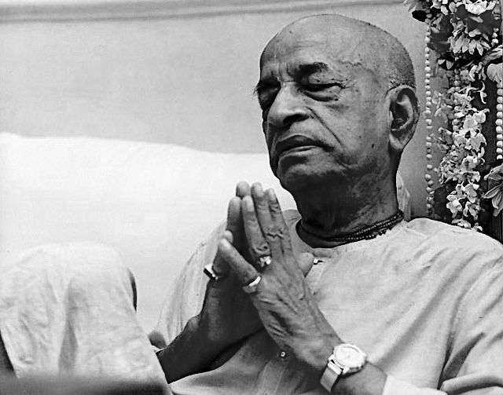
«Время можно рассчитать, связав его с движением физических тел, состоящих из атомов.
Атомное время связано с пространством, которое занимает конкретный атом.
Единица измерения грубого времени определяется следующим образом: два атома, соединяясь, образуют сдвоенный атом, а три таких сдвоенных атома – один гекзатом. Гекзатомы можно увидеть в лучах солнечного света, пробивающихся сквозь щели в оконных ставнях. При этом отчётливо видно, как они поднимаются вверх, к небу.
Время, необходимое для соединения трёх трасарену, называют трути. Сто трути составляют одну ведху, а три ведхи равны одной лаве.
Период времени, продолжающийся три лавы, составляет одну нимешу, три нимеши равны одной кшане, пять кшан образуют одну каштху, а пятнадцать каштх – одну лагху.
Пятнадцать лагху равны одной надике, которую иногда называют дандой. Две данды составляют одну мухурту, а шесть или семь данд составляют четвёртую часть дня или ночи по исчислению людей.
Мерная ёмкость для определения продолжительности одной надики (данды) должна быть изготовлена из меди и весить шесть пал (366 гр.). В ней делают отверстие с помощью золотого сверла весом четыре маши и в четыре пальца длиной. Эту ёмкость помещают в воду, и время, за которое она до краёв наполнится водой, называют одной дандой.
День человека длится четыре прахары, которые иначе называют ямами, и столько же продолжается его ночь. Пятнадцать дней и ночей составляют половину месяца, и каждый месяц состоит из двух половин – светлой и тёмной.
Две половины месяца составляют одни сутки на планетах системы Пита. Одно время года длится два месяца, а за шесть месяцев солнце полностью завершает переход с юга на север.
Два перехода солнца равны суткам на планетах полубогов, или полному календарному году человека. Продолжительность жизни людей составляет сто лет.
Таблица перевода ведических единиц измерения времени в современную систему единиц:
Одна трути – 8/13 500 секунды
Одна ведха – 8/135 секунды
Одна лава – 8/45 секунды
Одна нимеша – 8/15 секунды
Одна кшан̣а – 8/5 секунды
Одна кашт̣ха – 8 секунд
Одна лагху – 2 минуты
Одна данда – 30 минут
Одна прахара – 3 часа
Один день – 12 часов
Одна ночь – 12 часов
Одна пакша – 15 дней
([1] Шримад-Бхагаватам 3.11.3-14)
«Каждое живое существо живёт сто лет по шкале времени, которая действует на той планете, где оно обитает» ([1] Шримад-Бхагаватам 3.11.33).
«Общая продолжительность жизни Брахмы равна одной нимеше[104] по шкале времени Верховной Личности Бога» ([1] Шримад-Бхагаватам 3.11.38).
«Каждый человек может жить до ста лет, однако тот, кто не владеет своими чувствами, навсегда теряет половину этого срока, ибо ночью, находясь во власти невежества, он спит по двенадцать часов. У такого человека остаётся только пятьдесят лет жизни. И Господь Брахма, и люди, и муравьи живут по сто лет, однако продолжительность этих ста лет у них разная. В материальном мире всё относительно, в том числе и время. Поэтому сто лет Брахмы и сто лет человеческой жизни – отнюдь не одно и то же. Из Бхагавад-гиты мы знаем, что день, или двенадцать часов, Брахмы – это 4 300 000 000 наших лет. Таким образом, для разных живых существ, в зависимости от обстоятельств и шкалы времени, продолжительность ста лет различна. Расчёт относится к обыкновенному человеку. Человек может жить до ста лет, но пятьдесят из них у него уходит на сон.
Еда, сон, совокупление и самозащита – это четыре основные телесные потребности, но если мы хотим посвятить свою жизнь духовному развитию, то должны стараться свести их к минимуму. Тогда мы сможем использовать отпущенное нам время по назначению.
В детстве, в первые десять лет после рождения, у ребёнка ещё не развит ум, а следующие десять лет он проводит в играх и всевозможных забавах.
Так человек теряет двадцать лет своей жизни. Кроме того, в старости, когда болезни и немощь не дают человеку заниматься даже материальными делами, он ещё двадцать лет проживает впустую.
Человек впустую проживает двадцать лет в детстве и юности и ещё двадцать лет – в старости, когда он уже ни на что не способен и все его мысли только о том, что будет с его сыновьями и внуками и смогут ли они сохранить накопленное им имущество. Половину этих лет человек просто спит. Более того, из оставшихся шестидесяти лет жизни тридцать тоже уходят у него на сон. Таким образом, тот, кто не знает, в чём цель человеческой жизни и как этой цели достичь, семьдесят из ста отпущенных ему лет проводит впустую» ([1] Шримад-Бхагаватам 7.6.6-7).
Солнечные циклы
«Солнце поддерживает существование всех обитателей вселенной, щедро даруя им тепло и свет из своих неисчерпаемых запасов. Оно сокращает их век, чтобы избавить живые существа от иллюзорных материальных привязанностей, и прокладывает широкий путь в небесное царство» ([1] Шримад-Бхагаватам 3.11.15).
«Солнце – очень сильный фактор. Есть подземные миры, где солнца не знают живые существа, никогда не видели. У них нет представления о смерти даже. У них нет понятия времени. Поскольку нет солнца, нет циклов, они не знают, что существует смерть. Они, когда умирают, просто засыпают. Они не понимают, что происходит. Никто там не боится этого.
А здесь мир устроен по-другому: солнце встало, и все собираются на работу:
- Не успею!
- Опоздаю!
- Надо сделать!
- А вдруг не сделаю?
- А вдруг не получится?
- О, получилось, хорошо!
- Не получилось, плохо!
И вот у нас нервотрёпка начинается – солнце встало, видите? На земную жизнь влияет этот фактор. Потому что мы работаем именно под солнцем. И поэтому мы боимся этих циклов. Время идёт – мы отмечаем: уже год, уже два, жизнь подходит уже к концу. А есть другие измерения существования, даже в материальной вселенной, где люди не чувствуют этого, не знают об этом. Но там другой тип человеческих существ, не такие как мы. Есть люди-змеи – они там живут. Змееподобные, но человекообразные. Иногда фантазёры их изображают в НЛО как земноводных каких-то. Они более завистливы, поэтому у них нет такой философии времени» [2].
Единая картина мира
«Совершенное знание – это знание
- о материальном мире,
- о стоящей за ним духовной природе
- и об источнике их обоих.
Такое знание называют трансцендентным» ([1] Бхагавад-гита 7.2, комментарии).
Для того, чтобы начать двигаться к счастью, улучшать качество нашей жизни, нужно понимать, каким образом работает весь наш вселенский механизм, внутри которого мы находимся.
1. Бог
В ведических писаниях указано, что источником всего является Абсолютная Истина, Бог, абсолютный и неисчерпаемый источник всех энергий, который содержит в Себе:
- свет, или энергию;
- высший вселенский разум;
- личностный аспект, который заботится о нас и является одновременно самым сложным и самым простым для понимания.
Из Бога «исходят» два других компонента:
- множество душ
- и множество материальных миров.
2. Душа
Душа, так же, как и Бог, имеет три свойства:
- вечность,
- знание
- и счастье.
3. Материя
Материя имеет эти же три искажённых свойства (гуны):
- невежество,
- страсть
- и благость.
Гуна благости держится на четырёх фундаментальных основах:
- чистоте,
- аскетизме,
- милосердии и
- и правдивости.
Гуны страсти и невежества отвлекают живое существо от его
- вечности,
- знания
- и счастья.
В Бхагавад-гите (13.6-7) даётся следующее определение материи, или поля деятельности:
- «Пять грубых материальных стихий,
- ложное эго,
- разум,
- непроявленное,
- десять органов чувств
- и ум,
- пять объектов чувств,
- желание,
- ненависть,
- счастье
- и горе,
- совокупность всех материальных элементов,
- признаки жизни
- и решимость
– всё это, вместе взятое, составляет поле деятельности и происходящие в нём изменения.
Материальный мир построен из следующих компонентов. Это прежде всего
1) земля,
2) вода,
3) огонь,
4) воздух
5) и эфир
– пять грубых материальных стихий.
Далее следуют
6) ложное эго,
7) разум
8) и три гуны материальной природы в непроявленном состоянии.
- Есть также пять познающих органов чувств:
9) глаза,
10) уши,
11) нос,
12) язык
13) и кожа –
- и пять органов действия:
14) голосовой аппарат,
15) ноги,
16) руки,
17) анус
18) и половые органы.
Над органами чувств стоит
19) ум, который находится внутри тела и потому может быть назван внутренним чувством.
Таким образом, вместе с умом всего насчитывается одиннадцать органов чувств.
- Затем следуют пять объектов чувств:
20) запах,
21) вкус,
22) форма,
23) касание
24) и звук.
Эти двадцать четыре материальных компонента в совокупности составляют то, что называют полем деятельности. Аналитически изучив эти двадцать четыре элемента, мы получим исчерпывающее представление о поле деятельности. За ними следуют
- желание,
- ненависть,
- счастье
- и страдание,
возникающие в результате взаимодействий пяти грубых элементов и представляющие эти пять стихий в материальном теле.
Признаки жизни, представленные сознанием и решимостью, – это проявления деятельности тонкого тела, состоящего из ума, эго и разума. Тонкие элементы также являются частью поля деятельности».
4. Время
Бог связан с материей через силу времени:
«Все порождения материи претерпевают изменения и под воздействием могучего потока времени быстро и беспрерывно разрушаются. Различные состояния бытия, в которых пребывают материальные объекты, снова и снова приводят к тому, что они возникают и уничтожаются» ([1] Шримад-Бхагаватам 12.4.36).
5. Карма
Законы времени осуществляются через карму:
«Карма – это связь между душой и материальным миром.
Душа делегирует свою свободу выбора тонкому телу, сознанию, которое через грубое тело в материальном мире совершает определённые действия. И материальный мир вознаграждает или наказывает сознание своими реакциями. А душа принимает это наказание или вознаграждение на свой счёт.
Этот кармический механизм очень сложный. Можно только с уверенностью сказать, что на каждую акцию следует реакция.
Материя лишена сознания. Но создаётся иллюзия того, что материальный мир адекватно реагирует на наши поступки. Это происходит потому, что материя является инструментом в руках Бога» [4].
«Таким образом, Бог через силу времени включает материальную энергию, включает механизм кармы. И мы чувствуем, как происходит причинно-следственная связь. Так мы учимся и обретаем опыт. Карма – это гигантский вселенский механизм, обеспечивающий иллюзорную причинно-следственную связь чего бы то ни было» [4].
«Всё, что мы воспринимаем как имеющее конкретную причину или конкретное следствие, является иллюзией, ибо подобные причины и следствия зависят друг от друга. Поистине, то, что имеет начало и конец, нельзя назвать реальным.
Природу любой материальной причины невозможно понять, не увидев её следствия.
К примеру, природу огня нельзя понять, не увидев того, как он сжигает предметы, превращая их в пепел. Точно так же смачивающие свойства воды невозможно увидеть, не увидев мокрую ткань или бумагу. Организационные способности человека невозможно понять, не увидев результаты его деятельности, а именно созданную им организацию.
Стало быть, не только следствия зависят от причин, но и понимание причины зависит от наблюдения за последствиями. Таким образом, причина и следствие зависят друг от друга и имеют начало и конец. Отсюда можно сделать вывод, что все подобные материальные причины и следствия, по сути своей, временны и относительны и, стало быть, иллюзорны» ([1] Шримад-Бхагаватам 12.4.28).
6. Связь души с Богом
«В итоге любая душа должна понять, что её связь с материальным миром болезненна и бессмысленна. Ведь карма заставляет нас рождаться вновь и вновь, каждый раз испытывая муки рождения, болезни, старость и смерть. И когда живое существо начинает понимать своё истинное положение, оно делает выбор в другую сторону и начинает развивать отношения с Абсолютной Истиной, с Богом.
Бог любовь и заботу оказывает всем живым существам: развитым и неразвитым. Все получают всё необходимое для жизни. А с нашей стороны, стороны души, мы можем эти отношения развивать, а можем и не развивать. В этом заключается наша свобода выбора, свобода выбора души.
Если мы не развиваем свои отношения с Богом, значит, автоматически мы развиваем свои отношения с материальным миром через карму. И для того, чтобы эту карму остановить, необходимо начать развивать отношения с Абсолютной Истиной.
В итоге мы должны понимать, что проблемы решаются не просто правильным взаимодействием с материальным миром, манипуляциями материальными энергиями. Взаимодействовать надо с той личностью, в чьих руках этот материальный мир является инструментом – с Абсолютной Истиной» [4].
«Что такое знание? вам необходимо знать пять вещей.
1) Каков ваш опыт в этом мире. Вы ощущаете, вы испытываете на себе эту материальную природу, вы видите это, и это факт.
2) Также вы ощущаете присутствие великого множества живых существ. Это факт.
3) И существует управляющий, властелин этой материальной природы и живых существ. Это тоже факт. Вы не можете отрицать. Вы не можете говорить, что вы являетесь управляющим, владыкой.
4) И время. Всё совершается во времени.
5) И действие. Все живые существа занимаются какой-то деятельностью.
Вам необходимо понять эти пять вещей, которые вы ощущаете ежедневно. Итак, если вы поймёте Кришну, эти пять вещей вы автоматически сможете понять. И вы таким образом поймёте всё. Это означает, что у вас полное знание. Бхагавад-гита объясняет всё это. Всё понимается через понимание Верховного» [1].
Карма
«Каждый человек – это сеятель в своей жизни. Есть семена греха и семена праведности. Семена праведности – это наше светлое будущее, семена греха – это страшный суд. И в зависимости от того, сколько какого сорта посадил семян, я испытываю определённое настроение страха или вдохновения. Если я совершил много грехов, я боюсь суда, полиции, органов власти, закона, я боюсь законов жизни, потому что я их нарушаю» [2].
«Есть действие, карма. У нас есть также какая-то работа во внешнем мире, есть профессии, есть планы на будущее, мы полностью погружены в какую-то деятельность. Личные планы, общественные планы, политические планы, экономические планы – всё пронизано энергией деятельности, всё находится в активном состоянии. Что такое деятельность вообще? Как её описать? Мы знаем законы деятельности: что посеешь, то и пожнёшь. Мы это видим на опыте и также знаем из священных писаний. Знаем из каких-то простых примеров, что есть действие и противодействие. Это можно видеть эмоционально: как мы реагируем на слова: тоже действие и противодействие; как мы реагируем на поступки друг друга: тоже действие и противодействие.
И есть большой закон, который сплетает всю нашу деятельность с этим миром, с этой вселенной. Великомасштабные законы вселенной, земные законы, планетарные законы, галактические законы – всё это также связано с деятельностью. Некоторые сотворённые миры поддаются нашему пониманию. Большинство из них не поддаются нашему пониманию. В Бхагавад-гите Бог говорит, что хитросплетения кармы очень сложны для понимания человека. Поэтому для того, чтобы жить правильно, не запутываться, нужно понять три вещи:
1) карма,
2) викарма,
3) акарма» [2].
1. Карма (законная деятельность)
Законная деятельность, карма – это деятельность, совершаемая в строгом соответствии с высшими законами, изложенными в священных писаниях, Ведах. Она вызвана материальными, то есть корыстными желаниями и потому имеет последствия. Однако плоды такой благочестивой кармы приятны и хороши. Человек, который действует таким образом, обретает относительное благополучие и спокойствие.
«В конечном итоге карма, благочестивая деятельность приводит на высшие планеты, райские миры, улучшает материальные условия как в этой жизни, так и в следующей, возвышает материальное существование» [2].
Описанию правил этого вида деятельности посвящено подавляющее большинство ведических писаний.
2. Викарма (греховная деятельность)
«Викарма – это греховная деятельность, которая действует в обратном направлении, то есть это путь в ад. В результате такой деятельности можно испытать страдания уже в этой жизни и обеспечить свою следующую жизнь также в каком-то аду. Страшные какие-то последствия могут быть у викармы. Называется ещё угракарма – ужасная карма, порождающая страдания. Мы видим это на практике, что в результате именно деятельности человек либо может быть счастлив, либо нет» [2].
Незаконная, или запретная деятельность, грех, викарма – это запрещённая Ведами деятельность. Плоды её горьки. Если человек занимается такой деятельностью, он получает страдания в этой или следующих жизнях. Это путь деградации.
Если такая деятельность проходит под влиянием гуны невежества, страдания приходят сразу. Если же викарма происходит под влиянием гуны страсти, то сначала кажется, что она приносит счастье. Но на самом деле счастье это иллюзорно, и очень скоро оно превращается в страдание.
«Греховные поступки бывают трёх видов:
1) патака (обычные),
2) маха-патака (тяжкие)
3) и атипатака (тягчайшие),
а их последствия делят на прарабдху и апрарабдху. Прарабдха – это плоды грехов, которые причиняют нам страдания сейчас, а апрарабдху нам прийдётся пожинать в будущем. Пока семена грехов (биджа) ещё не дали всходов, последствия грехов именуют апрарабдхой. Эти неощутимые семена бесчисленны, и невозможно проследить, когда они были посажены. Когда же наши грехи приносят плоды, мы рождаемся в семье, принадлежащей к низкому сословию, или страдаем как-то иначе.
Последствия грехов, созревая, проходят через четыре стадии.
1) Одни из них уже готовы проявиться в виде плодов,
2) другие пребывают в виде семян,
3) третьи ещё не видны,
4) а четвёртые уже дают о себе знать»
([1] Шримад-Бхагаватам 6.1.15, комментарии).
Подведём итог. Существуют различные стадии созревания викармы, или грехов:
1) Какие-то грехи уже принесли свои плоды, и мы от них испытываем боль и страдания – это прарабдха карма.
2) Иные последствия греховных поступков ждут своей очереди, чтобы обрушиться на нас – это пхалонмукха карма.
3) Какие-то реакции остаются в спящем состоянии – это кута-карма,
4) а другие находятся в форме семени – это биджа-карма.
«В какой бы материальной форме ни находился человек, совершая те или иные поступки, плоды их он пожинает, пребывая в такой же материальной форме; например, плоды поступков, совершённых мысленно, являются во сне, а тех поступков, которые были совершены в физическом теле, проявляются в виде физических действий.
Независимо от того, в какой ипостаси существа совершают добрые или злые поступки, они пожинают плоды этого в такой же ипостаси в последующих жизнях.
Никакой поступок, совершённый при помощи пяти органов чувственного восприятия, никогда не теряется. Пять органов чувств и бессмертная душа, – которая является шестым, – остаются его свидетелями» (Махабхарата Анушасана-парва 7).
3. Акарма (бездействие)
Бездействие, акарма – это деятельность, которая совершается как служение Богу без ожидания награды. Акарма не влечёт за собой материальных последствий, или плодов. Это самый важный вид деятельности. Именно она приводит к освобождению от страданий, освобождению из круговорота рождений и смертей.
«Любые обязанности следует выполнять как жертвоприношение Господу Вишну, иначе они приковывают человека к материальному миру. Поэтому, о сын Кунти, выполняй свой долг ради удовлетворения Вишну, и ты навсегда освободишься от материального рабства» ([1] Бхагавад-гита 3.9).
«Акарма в Бхагавад-гите рассматривается в двух вариантах: в позитивном и в негативном.
1) В негативном варианте слово акарма используется как отказ от деятельности. То есть кто-то может подумать, что если всё это так запутано и непонятно, что хорошо, что плохо, если я не знаю, какой будет результат моих действий: в ад я попаду или в рай, не легче ли мне просто отказаться от долга, от деятельности? Но в Бхагавад-гите говорится, что невозможно отказаться от деятельности: если вы отказываетесь от одной деятельности, то вы будете заняты просто другой деятельностью, низшего порядка. Если вы отказываетесь от своего долга, то вы падаете вниз. Это относится опять к викарме, к нарушению закона. Ну как дезертирство или измена, нарушение обещания, данного в священном браке. И мы поэтому видим, что очень много страданий в семейной жизни у людей, в социуме, потому что обещания не выполняются.
2) Но в позитивном варианте акарма означает деятельность без последствий. Любая деятельность имеет какие-то последствия. И любые последствия, хорошие или плохие, связывают нас в этом мире, в любом случае – с миром страданий. Можете в тюрьме быть в камере люкс или в общей камере, но тюрьма есть тюрьма» [2].
Здесь приводится секретное знание, поведанное Самим Богом Своему другу и ученику Арджуне, о том, как надо действовать, чтобы стать счастливым. Это знание очень практично, и, чтобы оно по-настоящему заработало, получить его нужно от истинного духовного учителя:
«Даже очень разумные люди заходят в тупик, пытаясь определить,
- что́ есть действие
- и что́ – бездействие.
Сейчас Я объясню тебе, что значит действовать. Обретя это знание, ты оградишь себя от всех бед.
Хитросплетения деятельности очень трудны для понимания. Поэтому надо хорошо знать,
- что такое действие,
- что такое запретное действие
- и что такое бездействие.
Тот, кто видит
- бездействие в действии
- и действие в бездействии,
является самым разумным среди людей и находится на духовном уровне, хотя и занят разнообразной деятельностью.
Тот, кто действует, не стремясь наслаждаться плодами своего труда, обладает всей полнотой знания. Мудрецы говорят про такого человека, что все последствия его действий сгорели в огне совершенного знания.
Свободный от привязанности к плодам своего труда, всегда удовлетворённый и ни от чего не зависящий, он не совершает кармических действий, хотя и трудится не покладая рук.
Такой мудрый человек владеет своим умом и разумом, не считает себя собственником того, что ему принадлежит, и заботится об удовлетворении только самых насущных потребностей своего тела.
Действуя таким образом, он никогда не навлекает на себя греха.
- Кто довольствуется тем, что приходит само собой,
- кто никому не завидует,
- не обращает внимания на проявления двойственности этого мира
- и одинаково встречает успех и неудачу,
тот, совершая действия, никогда не попадает в рабство их последствий» ([1] Бхагавад-гита 4.16-22).
Зачем нужна карма?
Зачем нужен закон кармы? Какова его цель? Кто-то может подумать, что это просто спонтанно[105] возникший жестокий, но справедливый безличный механизм наказания и поощрения за соответствующие поступки.
В истории нашей вселенной были даже попытки упразднить этот закон. Один очень могущественный демонический царь Равана[106] решил простить всем людям все их недостатки и в обход закона кармы дать возможность жить без проблем. Но все подобные попытки потерпели неудачу.
Во-первых, всё, что имеется в материальном мире, является отражением, тенью, суррогатом, подделкой соответствующего оригинала в духовном мире. Этот принцип касается и кармы. Карма – это искажённое отражение игр духовного мира.
В материальном мире одно из назначений кармического закона – сделать живое существо лучше, исправить его заблуждения. Предназначение закона кармы подобно предназначению боли. Можно подумать, что если сделать так, что человек не будет чувствовать боли, все его проблемы будут решены. Но тогда, сунув руку в огонь, он не поймёт, что перед ним реальная опасность разрушения руки. Поэтому карма – это закон, работающий с целью устранения нашего невежества.
Кроме того, Господь в любой момент может как бы взять управление на себя, вручную, и тогда закон кармы для конкретного человека становится уже не таким безличным. Этот случай касается преданных Бога – отдельной категории людей, о которых мы поговорим в конце книги.
«Тот, кто во всех тонкостях знает механизм действия закона кармы (деятельности и её последствий), не запутывается в последствиях своих действий. Иными словами, действие закона кармы не распространяется на человека, который постиг божественную природу Господа и обрёл сознание Кришны» (Бхагавад-гита 4.14, комментарии).
Механизм формирования кармы
Механизм формирования кармы можно представить следующей принципиальной схемой:
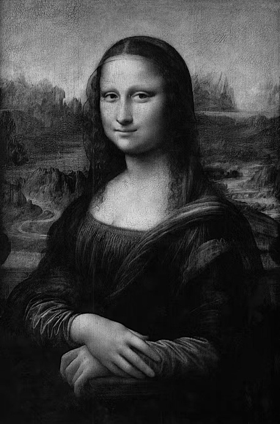
1) Пять познающих органов чувств взаимодействуют с материальным миром. Мы слышим, осязаем, видим, вкушаем и нюхаем. В материальном мире присутствуют пять объектов чувств. Это звук, предметы, формы, вкусы и запахи. Контакт познающего органа чувств со своим объектом чувств называется ощущением. Например, мы дотронулись до чего-то, какой-то запах попал в наши ноздри, какая-то форма оказалась у нас перед глазами. Возникло ощущение.
2) Ощущение превращается в восприятие, незаметно для нас проходя через фильтр нашего ложного эго, нашей аханкары, наших представлений о себе. В каждый момент времени мы получаем огромное количество информации через глаза, уши, нос, кожу. Но при этом бóльшую часть этой информации мы не воспринимаем, потому что она фильтруется, отсекается аханкарой. Проходят только важные для нас ощущения. Например, женщина идёт по улице. Её взгляд падает на витрину. На витрине она видит красивое ожерелье на манекене. В уме женщина сразу же мысленно примеряет это ожерелье на себя. А если мужчина пройдёт мимо той же самой витрины, он даже не заметит это ожерелье, потому что оно не может стать его собственностью, оно не входит в сферу его интересов.
3) Далее, когда ощущение превратилось в восприятие, стало нашей собственностью, пройдя через фильтр ложного эго, оно попадает в инстинктивный ум, манас. То, что мы увидели снаружи, сравнивается в читте с нашим предыдущим внутренним опытом. Например, мы видим змею. Эта информация по цепочке поступает в читту. В читте наша память выдаёт нам множество разных впечатлений, самскар, связанных со змеёй: то, что мы испытали сами, видели в зоопарке, прочитали в книгах, увидели по телевизору. Как ведут себя змеи, насколько они опасны, как они кусаются. И теперь информация, обогащённая самскарами (записанными впечатлениями), из читты поступает в ум.
4) В уме происходят три процесса: ум размышляет, ум чувствует и ум желает. В целом это называется эмоцией. Таким образом, в уме возникает какая-то эмоция. Это четвёртый шаг в цепочке формирования кармы.
5) Эмоция – это источник энергии для нашего действия. Действие будет настолько активным, насколько велик запас энергии, которую несёт в себе эмоция. Нетрудно заметить, что разные люди по-разному реагируют на события. Например, человек вдруг внезапно взорвался по пустяку. Небольшой рычажок извне высвободил огромную энергию, которая хранилась в его памяти. Наше действие, поступок, пройдя через эту цепочку, будет либо очень бурным, либо наоборот, апатичным.
Таким образом,
- сначала мы испытываем ощущение.
- Ощущения фильтруются через ложное эго
- и превращаются в восприятие.
- Восприятие подает сигнал в память.
- Память подает сигнал в ум.
- Одновременно в ум приходит информация восприятия.
- В уме, центральной части нашего сознания, возникает энергия эмоции и желания.
- И человек совершает поступок.
Так возникает карма.
Если у человека слабый разум, то эмоции человека полностью зависят от его чувств и ума. Такой человек полностью предсказуем. Это практически биоробот. Всегда можно просчитать его реакцию на то, что он почувствовал. Про такого человека Веды говорят, что он не может контролировать свои чувства.
Но если разум сильный, то у человека появляется возможность управлять своими эмоциями независимо от того, с чем соприкоснулись его органы чувств или что возникло в его уме.
Таким образом, человек с сильным разумом выходит из-под контроля кармического механизма. Про такого человека Веды говорят, что он получает освобождение.
Этот процесс формирования кармы Самим Богом лаконично и красиво изложен следующим образом:
- «Созерцая объекты, приносящие наслаждение чувствам, человек развивает привязанность к ним,
- из привязанности рождается вожделение,
- а из вожделения – гнев.
- Гнев порождает полное заблуждение,
- а заблуждение затмевает память.
- Вслед за памятью пропадает разум,
- и тогда, лишившись разума, человек снова погружается в пучину материальной жизни» ([1] Бхагавад-гита 2.62-63).
Вечное и относительное время
- «Время уходит в прошлое,
- указывает на будущее,
- но при этом присутствует только в настоящем.
Оно течёт следующим образом:
- прошлое – назад,
- будущее – вперёд;
в двух направлениях одновременно.
Но на самом деле оно никуда не идёт, остаётся в настоящем. Время
- статично, вечно,
- и одновременно с этим, динамично, экстатично.
Вечное время же никуда не движется. Куда ему двигаться? Оно никуда не двигается, но увеличивает внутреннюю динамику. Это внутренняя энергия. Величайший учёный современности Бхактиведанта Свами Прабхупада даёт пример: океан огромный, очень могущественный, а из берегов не выходит. Он статичен и очень динамичен при этом. Там столько процессов! А из берегов не выходит.
Есть другой пример. Дерево периодически сбрасывает листву и плоды, а само остаётся на месте, не меняется – одновременно статично и динамично.
В духовном мире нет этих аспектов времени, то, что мы называем будущее и прошлое, как здесь. Например, Кришна приходил на Землю пять тысяч лет назад и разговаривал с Арджуной. Вы можете в эту ситуацию проникнуть в любое время, читая Бхагавад-гиту. Не важно, вчера это кто-то делал, сегодня кто-то это делает или завтра кто-то это сделает. Это вечная лила[107]. Всегда любой может обратиться к Бхагавад-гите и попасть в ту атмосферу целиком.
В Шримад-Бхагаватам описываются различные аватары[108] Бога прошлого. Вы можете сейчас проникнуть туда и увидеть эту лилу.
Мы же пользуемся видео записями. Вставляете носитель информации и смотрите видео запись в любое время.
Живое существо – это машина времени. Учёные не смогут создать машину времени, потому что время – это живое существо. А живое существо создать они не могут. Вы можете перемещаться по времени, если вы – душа» [2].
Бог в Бхагавад-гите говорит:
«Как Верховная Личность Бога, Я знаю всё, что
- происходило в прошлом,
- происходит сейчас
- и произойдёт в будущем»
([1] Бхагавад-гита 7.26).
«Прошлое начинается с духовного мира: когда душа пришла в этот материальный мир. Ачарьи говорят: невозможно это установить нам. Одно дело – время, даже вселенского масштаба, миллионы и миллиарды реинкарнаций. Но путь к вечности идёт не через пространство и время, а через карму. Именно под влиянием кармы мы называем что-то пространством и временем. Если нет кармы, уже другое измерение пространства-времени: абсолютное. Вот оттуда и начинается прошлое, когда не было кармы у человека. И чтобы нам избавиться от кармы, нужно проследить все предыдущие воплощения: что мы там сделали, что мы сейчас оказались в этом месте в таких обстоятельствах, то есть причины все эти. Это значит знание прошлого. Вот Кришна знает все причины всех наших воплощений, почему мы в этих телах находимся, в этих условиях. И знает, что мы с вами делаем. Он знает, что сейчас мы читаем Бхагавад-гиту. Каждого из нас наблюдает. Не только нас, всех живых существ.
С точки зрения души в материальном мире, она находится в материальном мире вечно. А с точки зрения души в духовном мире, она находится в материальном мире мгновение. Для тела и ума это непреодолимое пространство и время. А для души нет ничего невозможного» [2].
«В материальном мире настоящего времени не существует. В материальном времени, когда мы подумаем о настоящем времени, то оно уже становится прошедшим. В материальном мире время существует как прошедшее и будущее. Но в духовном мире наоборот: там настоящее время присутствует постоянно. Прошлое и будущее – это нечто вроде ощущения. Все погружены в настоящее время. Концепция существования «здесь», «сейчас» возможна только на духовно уровне» [17].
«Там, в духовном мире, нет прошлого. Там только настоящее. Поэтому каждый день (это всё настоящий момент) они, обитатели духовного мира, как бы заново встречаются. То есть это вечно обновляющиеся отношения, постоянно в настоящем, но постоянно обновляющиеся, поэтому кажется, что есть прошлое, настоящее и будущее. То есть измерение прошлого, настоящего и будущего другое в духовном мире. Там настоящее, но поскольку оно обновляется, то существует представление о прошлом и будущем. Будущее всегда там – это увеличивающееся блаженство. Настоящее – это постоянное обновление того, что происходило. Вот так измеряется аспект времени в духовном мире – через расу[109]. А с точки зрения Брахмана[110], где нет этой расы – там нет прошлого, настоящего и будущего. Есть область сат[111]. Ну ещё чит[112] можно добавить, и всё: всё знаешь, вездесущий, всемогущий, всепроникающий – всё есть, кроме лилы. И вот лила присуща Бхагавану[113]» [2].
«В этом [духовном] царстве ни одно мгновение не тратится зря, – другими словами, там нет прошлого, настоящего и будущего» ([1] Чайтанья-чаритамрита 2.8.138, комментарии).
«Некоторые бабочки живут только один день. Другие ночные бабочки живут только одну ночь. Они не видят солнечного света ни утром, ни вечером, ни днём. Нет опыта. Вот она – жизнь бабочки. вы думаете: ну это бабочка, я – человек, я живу много дней, я видел солнце и прочее. Нет, мы рождены тоже в узком диапазоне. В очень маленьком опыте проходит вся жизнь. Все ищут элексир бессмертия, чтобы продлить жизнь.
Один наркоман, приняв с друзьями дозу, пошёл в туалет помыть руки. Помыл руки, потом опёрся на раковину, задумался и просидел на раковине десять лет. У него было ощущение, что он сидел на раковине десять лет. Когда вышел из туалета, встретился с друзьями, которых не видел десять лет. А никто его не понимает, не разделяет его радости встречи.
Есть такой напиток: называется сома-раса, лунный напиток, даёт пьянящий сок растением. ЛСД – это прототип сома-расы на Земле. Есть синтетический ЛСД, а есть естественный ЛСД из лианы. И на уровне Луны, где живые существа имеют эфирные тела, есть сома-раса, небесный наркотический напиток без побочных эффектов, без последствий, без остаточных явлений, не разрушающий тело. В эфирном теле его употребление не является преступлением. Здесь, на Земле, любая интоксикация нежелательна. У нас физические тела, подчинённые другим законам. Мы здесь, конечно, хотим жить как в раю, но нужно знать, как устроена жизнь в этом теле в этом измерении: что мы тут должны и что не должны делать, не разрушая этот мир и себя. И там, на Луне, живут десять тысяч лет в нашем измерении времени. Но они имеют законный доступ к сома-расе. Небольшой глоток сома-расы, и вы проживаете эти десять тысяч лет как десять миллионов лет.
Здесь тоже мы видим, измеряем время по-разному в зависимости от возраста. Когда мы были детьми, один день прожить – это было большое событие. Успевал много. Это была целая жизнь – один день прожить. Мы
- были во дворе,
- играли,
- плакали,
- смеялись много раз за один день,
- и спали,
- отдыхали,
- ели,
- и прочее, и прочее.
За один день большие события происходили. Время тянулось долго. Казалось, что жизнь долгая впереди. Сколько, сто лет? О, забудь про смерть вообще. Но вот вам двадцать пять лет, и вы видите, что годы мелькают как недели. В страсть перешли, другой режим. Если ребёнок в невежестве растёт, это – одно измерение времени, а в гуне страсти быстро пролетает время. Это вопрос нашего сознания.
С другой стороны, Веды говорят, что, если вы поймали настоящий момент, время никуда не уйдёт вообще. Это просто сознание. В настоящем моменте мы практически не живём. Мы живём где-то в будущем или прошлом всегда. Наш ум, наши волевые устремления где-то в будущем всегда или в прошлом. А настоящий момент мы не оцениваем никак практически. «Остановись мгновение, ты прекрасно! Остановись, жизнь, всё, я достиг кульминации». Этого не происходит, пока мы живы. В каждый настоящий момент мы не можем сказать, что вот это – совершенство жизни. Где-то в будущем. Вот, кажется, уже близко. Но всё равно где-то в будущем. А вот уже почти было, и опять исчезло, и опять надо искать. Секунда, мгновение, и острота чувств тут же меняется, тут же становится привычным. Вот хочу купить эту машину, сейчас я буду счастлив. Купил, и ничего не произошло, нет большого счастья. Я смотрю опять на другую машину, на третью машину, на четвёртую машину. Костюм меняют каждый день. Никто ничем не удовлетворён.
То есть настоящим моментом никто не умеет жить. А душа располагается всегда в настоящем моменте жизни. Она вечна. У неё нет прошлого и будущего. Она всегда в настоящем. Этому нужно учиться. И почему так трудно? Мы родились.
Рыбе сказали однажды:
– Ты живёшь в воде.
Она широко открыла свои глаза и сказала:
– Где вода? Покажите мне её. Вы о воде сказали. Что такое вода?
Она родилась в воде, она проживёт в воде и умрёт в воде. У неё нет другой точки отсчёта, чтобы увидеть воду со стороны. Так же и мы находимся в цикле рождения и смерти. У нас нет точки зрения посмотреть на это со стороны. Как бы вне тела нужно рассмотреть себя. Пока я думаю, что я тело, я не могу понять вообще, что происходит» [2].
«Время в материальном мире разделяется на прошлое, настоящее и будущее в соответствии с типом тела, которое имеет живое существо.
У муравья свои сто лет. Пчела живёт тридцать дней, но это её сто лет, она всё успевает сделать. И у нас свои сто лет, и у вселенной тоже свои сто лет. То есть измерение времени зависит от ума и тела, в котором я нахожусь как сознающая частица. В детстве время идёт очень медленно. Один день прожить – это много, за день столько много успевает сделать. Уже когда человек много работает в страсти, время летит, годы как недели улетают: другое измерение времени, другой режим сознания, чувств, ощущений, деятельности. И в старости время снова замедляется, в тамас погружается человек, теряет свою жизненную силу, постепенно угасает. В тамасе всё замедляется у него.
Достоевский описывает человека, которого везут на казнь, ему осталось несколько минут, и он думает, что у него ещё много времени: «До поворота ещё целый квартал, я ещё успею подумать о многом».
А когда сам момент смерти наступает, человек за несколько секунд всю жизнь свою просматривает не спеша.
В зубном кабинете ад становится вечностью, а счастливые влюблённые часов не замечают. Это наше субъективное ощущение времени. А само время нейтрально и вечно. Оно никуда не течёт. Мудрецы говорят, что время сбивает с толку потому, что река времени течёт в двух противоположных направлениях одновременно: из прошлого через настоящее в будущее и из будущего через настоящее в прошлое.
Если мы хотим убить время, оно порабощает нас, если мы ценим каждое мгновение, оно освобождает нас от страданий.
Все страдания – это прошлое и будущее. В каждом настоящем моменте мы страдаем просто в воображении. Мы думаем о потерях прошлого и о том, что то, чего у нас нет, нужно получить в будущем. Мы всегда обеспокоены в настоящий момент времени, и поэтому не понимаем, что прямо сейчас, в данный момент, идёт полноценная жизнь.
Я могу освободиться от всех этих умственных сложностей прямо сейчас при помощи времени» [2].
Время в гунах
Пространственно-временной континуум – это среда нашего обитания в материальном мире. Всё в материальном мире соткано из гун. Место, где мы находимся, и время, в которое происходят связанные с нами события, тоже сотканы из гун. Это значит, что место и время могут быть в гунах: качествах
- благости,
- страсти
- и невежества.
Напомним, что для того, чтобы испытывать счастье,
- всё, что находится под влиянием гуны благости, мы приветствуем;
- к гуне страсти мы по относимся нейтрально с оттенком подозрительности;
- а гуну невежества необходимо с решительностью отвергнуть.
Принятие гуны благости нам поможет как можно больше получить пользы из невыгодной сделки – нашего рождения в этом мире.
«Время – один из наиболее ценных материальных ресурсов. И просто так его транжирить недопустимо глупо. Сколько мы тратим времени
- на ссоры,
- на обиды,
- на то, что мы чего-то не понимаем,
- на ошибки,
- на исправления.
И если внимательно посмотреть, то можно увидеть, что львиную долю своего времени мы тратим впустую сейчас. Если ещё отнять
- сон,
- дорогу,
- транспорт,
- преклонную старость
- и неосмысленные детские годы,
то у нас практически не остаётся времени на жизнь, на осмысление. А если и остаётся какое-то время, то мы решаем: «Ну хорошо, завтра, а сейчас я просто отдохну, я устал».
Как же победить себя, эту лень, эту инертность, иллюзию? Как победить интерес к пустому чувственному времяпрепровождению?
Мудрецы говорят, что надо сделать первый шаг – услышать наставления от истинного источника – Вед. И тогда прийдут дополнительные силы, вдохновение» [2].
Время в страсти
«Время – воля Бога. И воля Бога такова, что этот мир со всеми его энергиями отдан человеку на его, человека, усмотрение, на его выбор. И поскольку есть разные типы людей, они по-разному понимают время, по-разному используют время.
Кто-то убивает время в гуне невежества. А вот люди в страсти, которые выше невежества, – они верят в будущее, они не верят в настоящий момент никогда, потому что в настоящем моменте всегда есть какие-то неудобства и недостатки. Поэтому они стремятся к будущему как к той идее, где мы можем
- устранить все недостатки,
- создать условия комфорта,
- богатство,
- достояния,
- образование,
- технику,
- науку,
- на Марсе яблони посадим в будущем.
Они мечтают о такой идиллии, где нет недостатков. Но когда им говорят, что в будущем могут быть проблемы, они сильно расстраиваются, они не хотят в это верить.
И тем не менее, старые люди часто говорят, что раньше было лучше, что сбивает с толку таких людей в гуне страсти.
Прошлое мы идеализируем или неправильно понимаем, в настоящем времени что-то нам всегда не нравится, какие-то неудобства, хочется что-то доделать, и будущее всегда кажется светлым.
То, что было в прошлом, – кажется, всё это архаизм, отсталое, в настоящем моменте это ещё недоработано: «В этом виновато прошлое поколение, мы получили от них наследство. Но мы-то знаем, что нужно сделать для будущего». Это называется иллюзия в страсти. Люди в страсти так мыслят все» [2].
Время в невежестве
«В невежестве человек наркотик принимает: ему всё равно, что там: прошлое, настоящее, будущее. Абсолютно не интересуют никакие аспекты времени, философии и жизни» [2].
Время в благости
«А вот в благости человек верит в себя и в своё взаимодействие со временем. Он находит своё полезное применение в каждый момент времени. У него нет потерь времени на его пути.
В страсти – сплошные потери, потому что человек настоящий момент не использует, в настоящем он всегда недоволен чем-то, не может оценить по-настоящему близких людей, то, что есть сейчас, полюбить это всё по-настоящему, любовь всегда какая-то воображаемая, где-то, когда-то, в будущем, ждёт всё это счастье.
И в итоге такие люди в страсти утверждают: счастье – это не что-то существующее, это то, к чему мы всегда стремимся, но не достигаем.
А в благости счастье вместе со временем, со всеми энергиями находится именно в настоящем моменте. «Остановись мгновение, ты прекрасно». Это сложно: как остановить это мгновение, как утвердиться в настоящем моменте времени? Веды говорят, что, если вам удастся утвердиться в настоящем моменте времени, вы достигаете осознания вечности» [2].
Время суток
Мы живём в мире смертных. Долгая жизнь на Земле считается благословением. Но если кому-то в раю пожелают долгой жизни на Земле, это будет выглядеть как проклятие.
«А осознанно мы живём и вовсе несколько десятков лет. Первые двадцать лет не берите в расчёт, нет ещё никакого опыта жизни и зрелости. Последние двадцать лет: от шестидесяти до восьмидесяти тоже не берите в расчёт: там уже развивается слабоумие, нет интенсивной жизни. А между первыми и последними двадцатью годами подавляющее количество времени уходит на дорогу, на сон, на всякие глупости, на конфликты. Так что мы на самом деле полноценной осознанной счастливой жизнью живём какие-то считанные недели. А может быть, даже не недели, а считанные дни. А кто-то даже может, минуты: где он бы мог сказать: «Да, я в эти минуты был счастлив, это было настоящее счастье, я помню это!» Мир смертных…» [2].
Давайте разберёмся, как увеличить эффективное время нашей жизни.
Время суток, как и всё в этом мире, тоже делится по гунам. И нам прийдётся подстраиваться под эти условия, которые нам диктует материальный мир. Наша жизненная сила, как грубая физическая, так и тонкая психическая, каждый день восстанавливается во сне при полном расслаблении. Глубокий сон является погружением в духовное измерение, разотождествлением себя со своими ролями, избавлением на некоторое время от таких понятий, как друг и враг, хорошо и плохо.
Время суток в страсти
Это день, до заката солнца: примерно начиная от десяти часов утра и до шести часов вечера. День предназначен для честной и благородной активной профессиональной деятельности:
- работы,
- обучения,
- спорта
- и так далее.
Это время хорошо для того, чтобы повышать свою квалификацию в профессии. Гуна страсти стимулируется
- выгодой,
- деньгами,
- славой,
- известностью,
- положением в обществе.
Пик гуны страсти приходится примерно на два часа дня; в это время вы полностью алертны[114].
В шесть часов вечера необходимо прекратить работу, иначе деятельность станет принимать разрушительный характер, а также характер развлечений и различных злоупотреблений. А также начнётся перегрузка и неэффективное расходование жизненной энергии.
Здесь мы трудимся, занимаемся нашей профессиональной деятельностью примерно с 10:00 до 18:00.
Время суток в невежестве
Затем гуна меняется. Неблагоприятно работать. Утро вечера мудренее.
С 18:00 до 2:00 – время гуны невежества.
Это вечер и ночь. Это лучшее время для
- вечернего глубокого общения с близкими и друзьями
- и ночного отдыха.
Примерно начиная с шести часов вечера и до двух часов ночи. Пик гуны невежества приходится примерно на десять-одиннадцать часов вечера. В это время люди склонны к чувственным наслаждениям:
- зрелищам,
- барам,
- принятию спиртного,
- развлечениям.
Хочется забыть о работе и обо всём на свете. Бар «Амнезия».
Первые два-три часа после работы лучше всего посвятить
- сокровенному общению с близкими людьми,
- проявлению искреннего интереса друг к другу.
- Также можно обратиться к чтению книг.
«Ложиться спать лучше всего в восемь часов вечера. Время с восьми вечера до двенадцати ночи – это время самого глубокого сна – сушупти. Только в состоянии глубокого сна без сновидений человек может восстановить свои силы: интеллектуальные, ментальные и физические. Так можно избавиться от депрессии. Вы не сможете отдохнуть лёжа в постели без сна или видя какие-то кошмары или картины. Во сне со сновидениями восстановление недостаточное. Но если вам удалось ночью погрузиться хотя бы на пятнадцать минут в глубокий сон, вы будете абсолютно свежий и проснётесь с позитивным умом. Если даже были какие-то неудачи на работе, какие-то сильные впечатления остались, глубокий сон обновляет вас. Но Веды говорят, что не так-то легко научиться так спать. Это должно быть глубокое расслабление в сознании доверия к жизни и к близким. В глубокий сон человек попадает только тогда, когда он очень любит и любим и честно исполняет свою работу. В этом случае человек обладает крепким здоровьем. Если же человек – жадный или нечестно работает, он не может глубоко уснуть. Такому человеку уже трудно будет восстановиться через сон, сон уже не будет лечебным. Глубокий сон без сновидений близок к особому состоянию сознания, в котором мы можем получать наставления от пророков. Это состояние – сушупти – действует на все формы жизни как обновляющая, поддерживающая сила. И мы в этом состоянии сознания не помним ничего. Но просыпаемся и чувствуем себя хорошо, есть сила, энергия. Откуда? Все духовные заповеди, правила и предписания приходят к нам из осмысленного состояния сознания – турьи, соседа сушупти. Йоги глубоко спят в полном сознании. И они видят не сновидения. Оттуда они получают духовную информацию не в словах, а в умонастроении, вдохновении, любви. А потом они уже могут преобразовать эти знания в слова. Если мы последуем этим заповедям в своей бодрствующей жизни, мы будем в состоянии полного покоя и гармонии: работать, дышать, готовить пищу, общаться с людьми» [2].
1) «Сон без сновидений (полное беспамятство),
2) сон со сновидениями
3) и простое бодрствование –
это три формы иллюзии. Иногда реальностью мы считаем бодрствование, потому что в этом состоянии мы выполняем свой долг. Но если долга нет, бодрствование не является высшей реальностью, в этом случае это тоже вид сна. Потому что ночной сон проходит, и дневной сон (бодрствование) тоже проходит. В этом смысле, если долг не исполняется, разницы нет.
Состояние беспамятства считается высшим состоянием сознания. В беспамятстве не мешают врéменные образы. И в этом состоянии беспамятства, глубокого сна восстанавливаются все энергии тела. И мы не знаем как. А турья – это та энергия, то измерение, которое подпитывает это тело, жизненную силу. Турья означает равное отношение, ненасилие, любовь ко всему живому. Это то, что мы сегодня называем религией. Это другое измерение сознания и отношения к жизни.
И когда вы достигаете турьи, вы можете обходиться без сна. Даже научно-исследовательский институт сна сделал вывод, что сон не нужен, нужен отдых. И йоги, которые достигают такого состояния сознания, такие как Рупа Госвами, Санатана Госвами, спали полтора часа в день, полчаса в день, а иногда вообще забывали спать, не нуждались в этом. Нароттама Дас Тхакур практически не спал: он и ночью, во сне, совершал определённую разумную деятельность. Круглые сутки. Хотя тело могло отдыхать, лежать. Потому что он в этом измерении находился всегда: и в бодрствовании, и во сне, и в глубоком сне.
Но если сознание неразвито, и вы попадаете в глубокий сон, вы ничего не помните, как будто монитор отключили просто от питания, и ничего нет. Вот и всё» [2].
- «Некоторые сны, если вы спите в невежестве, – это просто сумбур.
- Если вы спите в страсти, там будут события кармические – ум будет их как-то ломать, комбинировать, смешивать, синтезировать.
- Если вы видите сны в благости, то они показывают вам будущее.
- И над этими тремя состояниями есть турья – это духовное состояние, сознание Бога. В этом случае у вас нет разницы между сном и бодрствованием» [2].
«С восьми до двенадцати – это лучшее время для сна. Но, наверное, трудно это будет практиковать. Тут есть семья ещё, какие-то обязанности. Часов до девяти-десяти точно, да? Но в десять часов нужно уже спать. В одиннадцать уже поздновато. В двенадцать – уже совсем плохое время, сон будет плохой.
Да, должна быть чистая постель и обязательно чистый воздух. В квартире на ночь не должно оставаться ничего грязного: ни посуда, ни бельё, ни какие-то беспорядки. Должно быть чисто. И сон должен быть в чистоте.
Когда вы засыпаете, вы должны точно знать, когда вы проснётесь. Настраиваться надо на это время.
Сон автоматически наладится, если мы просто будем вовремя утром вставать. Автоматически это прийдёт в норму. Тело будет работать как часы, если всё делать точно, вовремя.
Это не так сложно, как кажется, просто в семье разные взгляды, разные желания, поэтому нас беспокоит эта семейная атмосфера. Вроде бы мне пора спать, но тут вот…
Старайтесь, просто старайтесь постепенно освоить утренний ранний подъём.
Если вы встаёте, скажем, в четыре-пять утра, у вас на всё хватит времени до работы. Сначала нужно медитацией заняться. Это раньше всего. Потом можно выйти уже побегать, йогой заниматься, это тоже необходимо. Это всё лучше всего в утреннее время» [2].
«Тот, кто слишком много ест, по ночам видит много снов и потому спит больше, чем необходимо. Спать следует не более шести часов в сутки. Тот, кто спит больше шести часов, несомненно, находится под влиянием гуны невежества. Человек в гуне невежества ленив и любит долго спать. Он не способен должным образом заниматься йогой» ([1] Бхагавад-гита 6.16, комментарии).
Если мы все будем удовлетворены и счастливы, конечно же, наши семьи тоже будут крепкими. Мы не будем друг друга эксплуатировать и терроризировать, требовать что-то, как будто нам чего-то не хватает. Нам будет всего хватать.
В двенадцать часов ночи святые личности уже просыпаются и встают. Но сон четыре часа в сутки могут выдержать редкие люди. Очень трудно вырваться из-под влияния гуны невежества. Но тот, кто вырвался, не пожалеет. Для этого нужна искренность. Искренний поднимается рано утром. «Кто рано встаёт, тому Бог даёт». Солнце на восходе красного цвета: оно отдаёт прану, жизненную силу. Кто получает такую прану от солнца, тот уже не нуждается в лекарствах. Если наш труд благороден, то наш сон глубок, и сны приятны.
Время суток в благости
Примерно с двух часов ночи вступает в силу гуна благости. Это глухой сон для большинства людей. Кульминация благости наступает в шесть утра.
Это утро, приблизительно начиная с двух часов ночи и до десяти часов утра, – лучшее время для принятия гуны благости и занятий духовной практикой. Вашей духовной практике, как побочный эффект, будут сопутствовать
- долголетие,
- разумность,
- красота
- и многие другие хорошие качества.
«Пик гуны благости приходится примерно на шесть часов утра. В это время должно быть полное пробуждение. Полное пробуждение означает, что человек становится глубоко радостный. Большинство людей сейчас даже в дневное время безрадостные, ещё не проснулись.
Если не встать до шести часов утра, то не получится разотождествиться, то есть отдохнуть, не будут сниться вещие сны. Просыпаться и вставать лучше всего в полчетвёртого утра. В крайнем случае, в пять часов утра. В шесть часов утра человек должен быть уже полностью готовым, проснувшимся, бодрым и счастливым» [2].
«Разотождествляясь утром от бытовых самскар[115], мы идём на работу, чтобы потом снова отождествиться. Разотождествиться – это значит на некоторое время
- забыть, что у нас есть друзья,
- враги,
- забыть свою профессию,
- пол,
- возраст.
«Я – просто счастье, живая сила, частичка Бога». Если получится разотождествиться на минуту, даже хотя бы на секунду, вы почувствуете полное обновление. Когда мы идём к психологу, он нам это и говорит: «Давай, расслабься, ложись, закрой глаза…»
Утренняя молитва направлена на благо всего живого. Самая лучшая религия, религия души – это та религия, которая желает блага всему живому. Тогда не будет никаких конфликтов. У нас в мире не хватает именно миротворцев. Чтобы стать миротворцем, нужно слушать своё сердце, и только после этого внимательно слушать друг друга. Честным надо стать вначале перед собой, с этого нужно начать.
Разотождествляться надо авторитетным способом, не придумывать самому. Это мантры, повторение имён Бога в вашей традиции, чтение Вед, Библии, Корана и других священных писаний.
Если мы не молимся в благостное время, мы будем вынуждены молиться днём или ночью, во время страсти или невежества. В этом случае наша молитва может звучать так:
– Господи, дай мне деньги!
– Дай мне положение в обществе.
– Дай мне здоровье.
– Пусть сдохнут все мои враги!
Тогда как в благостное время, утром, мы хотя бы пожелаем всем счастья.
Чтобы мантра, молитва сработала, нужно вначале установить правильные отношения с Богом. Наша природа – радость, любовь – вот правильные отношения. Не ищите сразу с Богом близких отношений. Это должен быть рост естественный. Ненавязчиво нужно это делать. Нужно быть очень осторожными друг к другу, бережными и внимательными. Всё это касается не только отношений человека с Богом, но и отношений между людьми.
Практику утренней молитвы можно начать с пятнадцати минут. Но кто может – лучше сразу два часа разотождествления. Это будет соответствовать веку Кали, в который, как сказано в ведических писаниях, люди смогут выделять только два часа в день на духовную практику. Если вы хотя бы один раз по-настоящему услышите имя Бога, которое сходит с вашего языка, это будет величайшее благословение для вас. Будет достигнута цель вашей жизни» [2].
Брахма-мухурта
Начинать своё утро лучше всего с брахма-мухурты. Это особое время: за полтора часа до рассвета. Если вам удастся каждый день вставать до рассвета, это даст вам очень большое преимущество в вашем продвижении на пути к счастью. Ранний подъём – это, наверное, самое главное в принятии гуны благости, которая так необходима нам для того, чтобы быть счастливыми. После подъёма – сразу
- туалет,
- чистка зубов,
- чистка языка,
- прохладный душ,
- чистая одежда.
После этого можно заниматься индивидуальной духовной практикой, медитацией, в которую никто не имеет право вмешиваться, даже нельзя спрашивать человека, сколько сейчас времени. Идеальное время для медитации – примерно два часа: с четырёх до шести часов утра.
Чтобы принимать гуну благости в ваших отношениях со временем, надо достаточно высыпаться. Поэтому надо ложиться, по крайней мере, не позднее десяти часов вечера. Надо отрегулировать своё необходимое и достаточное время для
- сна,
- работы,
- духовной практики
- и отдыха.
Не тратьте своё драгоценное время на пустяки. Если очень крепко задуматься, то пустяками могут оказаться многие вещи, которые вы считали важными. Не пустяки – это то, что связано с вечностью. А значит это то, что связано с душой.
Итак,
- утро – для Бога, для молитвы.
- День – для работы.
- Вечер – для близкого общения.
И так мы будем гармонично развиваться. Со временем такая схема даст могущественный результат во всех областях вашей жизни: и в карьере, и в отношениях с близкими, и в личном могуществе, которое выражается, как правило, через речь: когда вы говорите, и вас слушают, слышат и понимают.
«Брахма-мухурта наступает за полтора часа до восхода солнца. Рекомендуется в это время встать с постели и, совершив ежедневное омовение, перейти к духовной деятельности: провести церемонию мангала-арати[116], а затем повторять мантру Харе Кришна. Это время особенно благоприятно для духовных занятий» ([1] Кришна, Верховная Личность Бога 33).
«Всегда нужно оценивать место, время и обстоятельства. И в целом есть время, благоприятное для определённой деятельности, и неблагоприятное для определённой деятельности. Например, когда выходить замуж. Начиная с четырнадцати лет у девушки время наступает думать об этом. Время стимулирует эти вещи, вопрос времени. Время иметь детей, не пропустить, выйти замуж, не пропустить. Есть время, когда нужно отойти от дел: семейных дел, профессиональных дел. И, наконец, наступает время ухода из этого мира.
И в разное время есть разные упа-дхармы[117]. А санатана-дхарма[118] не меняется. Санатана-дхарма означает, что при всех обстоятельствах в любое время мы – слуги Бога. А вот как конкретно мы служим – это согласно времени, месту и обстоятельствам. Есть время для сна, время для пробуждения, время для деятельности. И в каждый момент что-то меняется. Эта наука раньше была известна брахманам[119]. Например, в семьдесят лет не нужно думать о женитьбе: время прошло уже. Нужно думать о сокровенном общении. Иногда людям не хватает этого. Люди должны знать, как входить в тот или иной возраст времени.
А начинается это всё осознание с брахма-мухурты. Это как раз время для развития сознания, осознания. Мы можем запутаться в жизни очень легко: если сознание нечисто, не пробуждено достаточно, мы попадаем под влияние каких-то чувств, делаем какие-то смешные вещи в своей жизни. Например, один брак, потом другой брак, потом третий брак – это уже смешно, глупости.
Время брахма-мухурты усиливает духовный эффект практики в два-три раза. Настолько ценны эти ранние часы. Это самое умиротворённое время суток дано́ просто нам. В другие моменты человек не умиротворён: либо в тамасе [невежестве] спит, либо возбуждён днём – всегда какие-то дела, какие-то события, какие-то мысли. Получается, если человек просыпает брахма-мухурту, он никогда не может быть спокойным, его ум всегда чрезмерно возбуждён.
Ум возбуждён – дыхание возбуждено, дыхание возбуждено – глаза возбуждены, глаза возбуждены – двигательные органы возбуждены, много лишних движений человек делает, и так далее, и так далее. И поступки туда уже подключаются и всё остальное. Только потому, что с ума начинается этот процесс. А ум умиротворяется в брахма-мухурту, в два-три раза успокаивается. Это – покой, глубже глубокого сна. А в самом глубоком сне потребность в дыхании уменьшается на восемь-двенадцать процентов. Так через сорок минут после медитации на Харе Кришна маха-мантру человек успокаивается, как не успокаивается даже в самом глубоком сне. В этом состоянии покоя это называется просветление: когда не мешают возбуждённые мысли, лишние функции органов – йога. Вы просто понимаете вещи как они есть сами по себе, без книг. А когда открываете книгу, тут тоже всё становится ясно, о чём здесь речь идёт» [2].
Эпохи
Наша материальная вселенная была создана очень давно. Тот отрезок времени, который исследуется современной исторической наукой, настолько ничтожен, что не даёт практически никакого представления о законах развития общества.
Дивья-юга, или Чатур-юга – это последовательность четырёх периодов, находящихся под влиянием разных сочетаний гун материальной природы.
1. Сатья-юга
Начинается дивья-юга с Сатья-юги (Крита-юги). В Сатья-югу каждая лока[120] представляет собой единое государство. Есть праведные планеты, и есть демонические планеты. На земле в эту эпоху рождаются только парамахамсы – святые личности с самосветящимся умом, в котором сразу сгорают все негативные мысли. Поэтому нет преступлений и раздоров, нет обмана и лицемерия, нет зависти. Полностью преобладает гуна благости.
Сатья-юга длится 1 728 000 лет.
Методом духовной практики в Сатья-югу является медитация.
«Вначале, в Сатья-югу, в век истины, религия крепко опирается на четыре свои ноги, и люди тщательно оберегают её. Четыре ноги религии, проявленной в полную силу, – это
1) правдивость,
2) милосердие,
3) аскетизм
4) и щедрость.
Большинство людей в Сатья-югу
- самоудовлетворены,
- милосердны,
- дружелюбно относятся ко всем,
- умиротворены,
- серьёзны
- и терпеливы.
- Они черпают наслаждение внутри себя,
- беспристрастны
- и всегда стремятся к духовному совершенству»
([1] Шримад-Бхагаватам 12.3.18-19).
«Когда ум, разум и чувства людей постоянно пребывают в гуне благости, этот век следует считать Сатья-югой, веком истины. В эту эпоху люди получают удовольствие от познания истины и аскезы» ([1] Шримад-Бхагаватам 12.3.27).
«Критой зовётся юга, когда нерушима дхарма[121]. В это время – в прекраснейшую из юг – не нужно совершать того, что теперь положено. Дхарма тогда не терпит ущерба, и живущие не погибают. Потому и зовется та юга Критой, самим временем она сделана средоточием достоинств. Во время Крита-юги нет
- ни полубогов,
- ни данавов[122],
- ни гандхарвов[123],
- ни якшей[124],
- ни ракшасов[125],
- ни демонов-змеев[126],
- нет и купли-продажи.
- Не было тогда ни Сама-, ни Яджур-, ни Риг-веды[127],
- не было варн[128]
- и человеческой деятельности: стоило лишь помыслить о чём-либо, и результат – вот он;
дхармой считалась отрешённость от всего мирского.
В течение той юги не было
- ни болезней,
- ни обмана чувств,
- ни зависти,
- ни плача,
- ни гордыни,
- ни жестокости,
- не было ссор
- и нерадивости,
- вражды,
- обид,
- страха,
- страданий,
- злобы
- и ревности.
Превыше всего тогда стоял Брахман[129], высочайший удел йогинов, и Нараяна[130], душа всего сущего, был тогда белым» (Махабхарата Араньяка-парва 148.10-16).
2. Трета-юга
За Сатья-югой следует Трета-юга. В Трета-югу проникает порок, и в мире остаётся лишь семьдесят пять процентов религиозных принципов, представленных Ведами. Уже на Земле появляются государства, потому что четверть населения начинают проявлять зависть и агрессию.
В эту эпоху большинство государств праведные, с царём, заботящимся о духовном и материальном развитии своих подданных. При этом царь обладает качествами святой личности и владеет сверхъестественными способностями. Царя по праву называют воплощением Бога на Земле.
Трета-юга длится 1 296 000 лет.
В Трета-югу методом духовного совершенствования являются жертвоприношения – обрядовые ритуалы. Для проверки успешности жертвоприношения закладывается[131] старое животное, которое на глазах у всех получает новое молодое тело. Жрецы владеют искусством клонирования при помощи мантр – специальных звуковых вибраций. На эти праздники приходят в гости высшие силы – полубоги.
«В Трета-югу каждая из ног религии постепенно уменьшается на четверть под влиянием четырёх опор безбожия –
1) лжи,
2) насилия,
3) неудовлетворённости
4) и ссор.
В Трета-югу люди тщательно исполняют ритуалы и любят совершать суровую аскезу. Они не слишком жестоки и не одержимы вожделением. Их прежде всего интересует праведность, материальное процветание и регламентированные чувственные наслаждения. Они живут в достатке, следуя предписаниям трёх Вед. Хотя в этот век общество делится на четыре сословия, большинство людей в нём составляют брахманы[132]» ([1] Шримад-Бхагаватам 12.3.20-21).
«Когда обусловленные души добросовестно исполняют свои обязанности, но при этом имеют скрытые мотивы и ищут славы, то нужно понимать, что наступила Трета-юга, в которую преобладает гуна страсти» ([1] Шримад-Бхагаватам 12.3.28).
«Дхарма тогда ущербна на четверть, и Ачьюта[133] становится красным. Преданные истине люди видят свою дхарму в соблюдении жертвенного обряда. Во время Треты возникает принесение жертв и различия в дхармах и жертвенных обрядах, старательно исполняемых и приносящих плоды дарений и жертвоприношений. Люди во времена Трета-юги ревностно предаются подвижничеству и раздаче даров» (Махабхарата Араньяка-парва 148.23-32).
3. Двапара-юга
Когда количество завистливых людей на Земле достигает половины от всех жителей, начинается Двапара-юга. В эту эпоху разделение между праведниками и грешниками происходит уже по семьям. В каждом государстве есть как праведные, так и демонические семьи.
Двапара-юга длится 864 000 лет.
Методом духовной практики в Двапара-югу является храмовое поклонение.
«В Двапара-югу религиозные качества, такие как
- аскетизм,
- правдивость,
- милосердие
- и щедрость,
уменьшаются наполовину, вытесняемые своими противоположностями –
- неудовлетворённостью,
- лживостью,
- насилием
- и враждебностью.
В Двапара-югу люди очень благородны, и их влечёт слава. Они посвящают себя изучению Вед, обладают несметными богатствами, живут большими семьями и в полную силу наслаждаются жизнью. Среди четырёх сословий наиболее многочисленны кшатрии[134] и брахманы» ([1] Шримад-Бхагаватам 12.3.22-23).
«Когда в людях усиливаются
- жадность,
- неудовлетворённость,
- гордыня,
- лицемерие
- и зависть,
когда они действуют из корысти, наступает век Двапара, в котором преобладает сочетание гун страсти и невежества» ([1] Шримад-Бхагаватам 12.3.29).
«Во время же Двапара-юги дхарма сокращается наполовину, Вишну[135] становится жёлтым, а единая Веда разделяется на четыре, и тогда одни придерживаются четырёх Вед, другие – трёх, третьи – двух, четвёртые – одной, а иные не знают даже Риг-веды. Когда священное знание таким образом разделяется, то обряд совершается многими способами, а люди, усердствуя в умерщвлении плоти и раздавая дары, движимы раджасом. Из-за незнания единой Веды создаются несколько Вед, и как следствие падения истины лишь немногие остаются верными ей. Тех, кто отринул себя от истины, одолевает множество недугов; судьба насылает тогда вожделение и напасти, и, тяжко терзаясь от этого, люди подвергают себя умерщвлению плоти, а иные обращаются к жертвоприношениям, чтобы утолить свою страсть или же достичь небес.
Так с наступлением Двапара-юги люди слабеют от нарушения дхармы» (Махабхарата Араньяка-парва 146.23-39).
4. Кали-юга
И наконец, когда на Земле оказывается три четверти грешников, наступает эпоха Кали-юга, век
- споров,
- бессмысленных разговоров,
- ссор,
- вражды
- и лицемерия.
В эту эпоху уже в сознании почти каждого человека присутствует как праведник, так и грешник.
«Суть Кали-юги в том, что люди думают, что они прогрессируют: расцвет материалистической науки и так называемых передовых идей и технологий. В Кали-югу в основном рождаются те, кто вступают в борьбу и ищут счастья в борьбе и конфликтах. Причина всех конфликтов – ложное мнение о себе: завышенное (кем-то великим, но ещё не проявленным) или слишком заниженное («Я никому не нужен…», суицидальное настроение)» [2].
«В этот железный век Кали жизнь людей коротка. Они
- вздорны,
- ленивы,
- введены в заблуждение,
- неудачливы
- и к тому же пребывают в постоянной тревоге.
В Кали-югу продолжительность жизни сокращается не столько из-за недостаточного питания, сколько из-за беспорядочного образа жизни. Ведя упорядоченный образ жизни и питаясь простой пищей, любой человек может быть здоровым. Переедание, излишества, чрезмерная зависимость от других и искусственные потребности истощают жизненную энергию человека. Из-за этого продолжительность его жизни сокращается.
Кроме того, люди этого века очень ленивы, причём не только в материальном отношении, но и в вопросах духовного самоосознания. Жизнь дана человеку прежде всего для самоосознания. Это значит, что человек должен понять, кто он, что представляет собой этот мир и что является высшей истиной. Человеческая форма жизни – это средство, с помощью которого живое существо может избавиться от всех страданий, сопутствующих его тяжёлой борьбе за существование в материальном мире, и вернуться к Богу, в свой вечный дом. Однако из-за порочной системы образования у людей не возникает стремления к самоосознанию. Даже если человеку доводится услышать об этом, он, увы, становится жертвой заблудших учителей.
В этот век люди становятся жертвами не только разных политических группировок и партий. Их подстерегают всевозможные развлечения, направленные на удовлетворение чувств:
- кино,
- спорт,
- азартные игры,
- клубы,
- светские библиотеки,
- дурное общение,
- пьянство,
- курение,
- мошенничество,
- воровство,
- драки
- и проч.
Всё это будоражит ум, отчего человек постоянно пребывает в тревоге. В эту эпоху многие беспринципные люди выдумывают собственные религии, не основанные ни на одном из священных писаний, и такие вероучения очень часто привлекают людей, предающихся чувственным наслаждениям. Вследствие этого под видом религии совершается так много греховных поступков, что люди лишаются покоя и здоровья. В век Кали всё пропитано безверием, и человек больше не проявляет интереса к духовным ценностям. Нормой жизни современной цивилизации стало удовлетворение материальных чувств. Ради сохранения этой цивилизации люди объединились в федерации и сообщества, и постоянная напряжённость в отношениях между разными группировками приводит то к «горячим», то к «холодным» войнам» ([1] Шримад-Бхагаватам 1.1.10).
«В век Кали люди свои пороки считают своим естеством. И некоторые даже демонстрируют эти свои пороки, выставляя их как нечто естественное в противовес «устаревшим косным взглядам и предрассудкам»:
- ходить голыми,
- заниматься сексом у всех на виду,
- гей-парады
- и тому подобное.
Другие же люди главной своей обязанностью считают скрывать свои недостатки. Например, воровство пока ещё преследуется по закону. Человек, умеющий скрывать свои недостатки, считается культурным» [2].
«В век Кали воля любого человека парализуется в присутствии большого количества денег и золота. Также отношение к женщинам: мгновенно у мужчины пробуждается похоть при виде красивой женщины. Люди неуправляемы. И по мере развития Кали-юги это будет усугубляться ещё больше. Зло станет законом. Закон силы и закон лжи будет преобладать» [2].
«В век Кали мы не можем полагаться на свой ум. В Сатья-югу люди имели самосветящийся ум, которому можно было доверять. В эпоху Трета можно было доверять ягье[136]. В эпоху Двапара можно было просветляться в храмах» [2].
В век Кали всё оскверняется, даже гуна благости: людей, стремящихся к благости, называют чистоплюями.
Эта эпоха уже наступила примерно пять тысяч лет назад.
«В Кали-югу же от дхармы остаётся одна четверть.
Вступив в югу тамаса, Кешава[137] становится чёрным, изучение Вед, дхарма[138], жертвы, обряды – всё исчезает.
Наступает черёд
- шести напастей[139],
- болезней,
- лени,
- грехов, первый из которых – злоба,
- а также стихийных бедствий,
- страданий
- и недугов.
С ходом юг дхарма оскудевает, а с оскудением дхармы мир также скудеет. Когда гибнет мир, приходит конец существам, мир созидающим; дхармы, соблюдаемые при гибели юги, приносят плоды, обратные желаемым» (Махабхарата Араньяка-парва 148.23-39).
«Когда заканчивается последняя юга, то из-за дурного поведения раджей[140] и превратности времени остаётся лишь шестнадцатая часть дхармы[141]» (Махабхарата Шанти-парва 268.35-36).
«Главные признаки Кали-юги проявляются в ослаблении у людей следующих восьми качеств:
1) дхармы, религиозных принципов;
2) сатьям, честности;
3) шаучам, чистоты;
4) кшамы, прощения;
5) дайи, сострадания;
6) айю, продолжительности жизни;
7) балы, силы тела;
8) смрити, памяти.
Всё это постепенно будет сведено почти к нулю» [1].
В век Кали праведник и грешник уже живут внутри в каждом человеке.
Люди тщательно скрывают свои порочные качества.
Процветает лицемерие.
У людей сильно ухудшается память. Поэтому в конце Двапара-юги Веды были записаны.
На Земле появляется много государств, враждующих между собой.
Правительства стран вместо того, чтобы заботиться о своих подданных, бессовестно грабят и эксплуатируют их.
Это очень тяжёлое для жизни время. К концу Кали-юги вся Земля полностью погружается в гуну невежества.
«Эти варвары в одеждах царей будут буквально пожирать своих подданных. Они будут убивать невинных
- женщин,
- детей,
- коров
- и брахманов
и всегда стремиться завладеть чужими
- жёнами
- и богатствами.
Переменчивые и капризные, они будут слабы характером, и жизнь их будет коротка. Не прошедшие очистительных ведических обрядов и не следующие никаким регулирующим принципам, они будут полностью во власти гун страсти и невежества» ([1] Шримад-Бхагаватам 12.1.39-40).
«В век Кали в обществе остается всего четверть праведности. Однако к концу этого века под всё усиливающимся влиянием принципов безбожия исчезнут даже и эти остатки.
В век Кали люди становятся жадными, безжалостными, не умеют себя вести и постоянно ссорятся друг с другом без серьёзных поводов. Неудачливые и одержимые материальными желаниями, люди Кали-юги в большинстве своём шудры и варвары» ([1] Шримад-Бхагаватам 12.3.24-25).
«Когда в мире воцаряются
- обман,
- ложь,
- лень,
- сонливость,
- насилие,
- депрессия,
- скорбь,
- заблуждения,
- страх
- и нищета,
такой век называют Кали-югой, веком гуны невежества.
Из-за этих недостатков Кали-юги люди становятся
- недальновидными,
- неудачливыми,
- склонными к перееданию,
- сладострастными
- и влачат нищенское существование.
Женщины, утратившие целомудрие, переходят от одного мужчины к другому.Города будут кишеть ворами, Веды будут оскверняться надуманными толкованиями атеистов, правители будут буквально пожирать своих подданных, а так называемые священнослужители и интеллектуалы станут рабами своего желудка и гениталий.
Во многих больших городах находиться ночью на улице небезопасно.
К примеру, ни одному человеку в здравом уме не придёт в голову гулять ночью по Центральному парку Нью-Йорка, потому что все знают, что их там непременно ограбят. Кроме обычных воров, которых в наш век предостаточно, большие города наводнены грабителями-бизнесменами, которые всеми правдами и неправдами заставляют людей покупать бесполезные, а порой даже вредные товары. Уже давно доказано, что табак, алкоголь и многие другие распространённые в наш век товары губят физическое здоровье, не говоря уже о душевном, однако современные предприниматели не гнушаются никакими психологическими приёмами, лишь бы убедить людей покупать эти вещи. Жители современных городов дышат грязным воздухом и живут в осквернённой ментальной среде, поэтому даже обычные люди приходят к выводу о том, что жить в городах стало невыносимо» ([1] Шримад-Бхагаватам 12.3.30-32).
«Число живущих в конце юги умножается.
Все запахи становятся неприятными, а вкус пищи – отталкивающим.
На исходе юги женщины делаются низкорослыми, извращёнными и производят на свет многочисленное потомство, пренебрегая добропорядочностью и достойным поведением.
Селения покроются частоколом сторожевых башен, перекрестки дорог – трезубцами Шивы, а у женщин в конце юги волосы станут как пики.
Коровы дают тогда мало молока, а деревья, покрытые стаями ворон, почти не цветут и не плодоносят.
Дваждырождённые[142] поддерживают царей, запятнавших себя убийством брахманов и ложными обвинениями.
В страхе перед тяжестью дани мужи-домохозяева становятся мошенниками.
Человек, по виду и платью отшельник, промышляет торговлей.
Люди для виду[143] растят ногти и волосы.
Обеты безбрачия ложны и даются лишь из стремления к богатству.
В обителях[144] творятся беззакония, там предаются пьянству, оскверняют ложе наставника и заботятся только о плотских наслаждениях в этой жизни.
На исходе юг в обителях полно вероотступников, прославляющих радости жизни за чужой счёт.
Индра вóвремя не посылает дождя, поэтому семена всходят плохо, зато обильны в то время плоды беззакония.
Короток век того, кто верен своей дхарме, ибо не существует в то время такой дхармы, которую следует признавать.
При торговых сделках, как правило, обмеривают и обвешивают, торговцы прибегают ко всевозможным хитростям.
Самые добродетельные подвергаются гонениям, зато последний грешник процветает.
Справедливость лишается силы, а беззаконие торжествует.
На исходе юг праведники бедны, и жизнь их коротка, а нечестивцы богаты и здравствуют долгие годы.
В ход пускаются самые низкие средства, богатые алчно стремятся даже к самому ничтожному приобретению.
Многие люди обманом стараются присвоить деньги, доверчиво оставленные им на хранение.
Пожирающие людей существа – птицы и дикие звери – свободно располагаются и в местах городских увеселений, и прямо в святилищах.
Женщины семи-восьми лет уже вынашивают плод, а мужчины в десять-двенадцать лет производят потомство.
В шестнадцать лет люди седеют, быстро настигает их смерть.
С приближением конца юг юноши кажутся по характеру стариками, а в пожилых проявляется то, что свойственно юным.
Тайно обманывая мужей, извращённые, порочные женщины бесстыдно вступают в связь со своими слугами и со скотом.
Мужи обретут в своих жёнах врагов на исходе юг.
Люди будут питаться мясом рыб, доить коз и овец, а коровы падут на исходе юг.
Грабя и убивая друг друга, люди забудут молитвы, превратятся в воров и убийц и утратят веру в богов на исходе юг.
Они будут мотыгами вскапывать берега рек и сеять зерно только там, но и тут урожаи будут ничтожными на исходе юг.
Даже те, что всегда были тверды в обете, что почитали богов и приносили поминальные жертвы, и то, охваченные алчностью, будут убивать друг друга.
Отец пойдёт против сына, а сын против отца.
Запретная пища будет в ходу на исходе юг.
Брахманы, погрязшие в разглагольствованиях, будут хулить Веды, оставив свои обеты, принесение жертв и возлияние огню.
Люди станут возделывать низины, в ярмо впрягать коров, а для перевозок использовать годовалых телят.
Сыновья бестрепетно будут убивать отцов, а отцы – сыновей, причём будут хвалиться такими деяниями, не встречая нигде осуждения.
Станет правилом для людей отбирать достояние у бедняков, даже у многосемейных и вдов.
Девушек не будут ни сватать, ни выдавать замуж: они сами будут искать себе мужей в конце юг.
Лишившись ясности разума, ненасытные цари всеми способами будут присваивать чужое имущество, когда настанет конец юг.
Отец не пощадит своего сына, а сын – отца, и жёны не будут заботиться о своих мужьях.
Употребляя в пищу всё, что угодно, мужи и жёны станут нетерпимы друг к другу, когда наступит конец юг.
Не будет учеников, не будет наставников, и мир погрузится во мрак.
Предельный возраст в конце юг будет шестнадцать лет, а потом люди будут расставаться с жизнью.
В конце юг муж не сможет доставить наслаждение своей жене, а жена – своему мужу.
Женщины постоянно будут грубы, дерзки в речах и слезливы и откажутся исполнять волю своих мужей.
Сыновья будут убивать родителей на исходе юг, а женщины с помощью сыновей станут губить своих супругов»
(Махабхарата Араньяка-парва 186.34-55, 188.20-84).
«Постепенно люди превратятся в карликов, их жизнь будет очень короткой, они будут очень неудачливыми.
Они будут переедать, испытывать сильное половое возбуждение, у них будут отсутствовать деньги, они будут независимыми.
А женщины будут нецеломудренными.
Всё это уже сбывается.
Города будут наполнены негодяями и ворами.
Так называемые йоги будут жить в городах (на самом деле, йогам нечего делать в городах, они должны уходить в уединённые места).
Предсказано пять тысяч лет назад.
А санньяси будут жадны до денег, представьте себе!
У людей будет естественная склонность расставаться со своим спутником жизни, разводиться, особенно когда у него нет достаточно денег (жена просто будет разводиться с ним) или если у мужа нет способности к сексу – развод будет по двум поводам: если это мешает сексу, или если у мужа нет денег.
В Кали-югу у народа не будет
- жилья,
- пищи,
- питья,
- возможности помыться,
- места для сна,
- места для отдыха,
- места для секса,
- одежды.
Когда люди лишатся всего этого, они просто превратятся в
- домовых,
- леших,
- привидений,
- призраков,
- хиппи.
В кали-югу человек за грош, просто за копейки будет готов предать друзей. Даже он будет готов убить своих родных, родственников, чтобы забрать у них пять копеек.
Они перестанут защищать пожилых родителей» [1].
«Земноводные в Кали-югу становятся гигантскими. Это динозавры. А культура растений становится маленькой и даёт очень слабый плод. А сорняки растут без удобрений, без полива, без вспашки» [2]
Многие из этих ужасных предсказаний уже сбылись.
- «Лобха (жадность),
- анрита (ложь),
- джихма (дипломатия)
- и химса (насилие или зависть) –
когда всё это усиливается, это свидетельствует о том, что влияние Кали-юги усиливается» [1].
«Если мы пытаемся воспитывать какого-то человека, или самого себя, не устранив влияние века Кали, то это бесполезно. Это всё равно что стоять под душем и ждать, когда я высохну. Это невозможно. Влияние века Кали – как плохая погода: дождь идёт, идёт… Пока зонтик не раскроешь…
Итак, пока мы не устраним влияние века Кали, мы не можем рассчитывать на духовное развитие. Но когда устранено влияние века Кали, время становится благоприятным фактором. Просто практикуйте, и со временем, постепенно будут приходить духовные плоды. В век Кали путают нетерпение и желание. Желание намного глубже, оно позволяет терпеть сколько угодно» [2].
«Нынешний век находится под влиянием характерных качеств Кали. Влияние века Кали начало проявляться и распространяться примерно пять тысяч лет назад со времени битвы на Курукшетре[145]. Из подлинных писаний мы узнаём, что век Кали будет продолжаться ещё 427 000 лет. Упомянутые признаки Кали-юги –
- жадность,
- лживость,
- изворотливость,
- обман,
- протекционизм,
- насилие
- и другие –
уже ощущаются во всём, и невозможно даже вообразить, что будет происходить, когда влияние Кали будет усиливаться вплоть до дня уничтожения. Как мы уже знаем, влиянию века Кали подвержены безбожные так называемые «цивилизованные» люди. Тем же, кто находится под покровительством Господа, нечего бояться этого ужасного века» ([1] Шримад-Бхагаватам 1.15.37, комментарии).
Агенты Кали
«Юдхиштхира был предпоследний праведный царь этой планеты. Император. Пять тысяч лет назад Хастинапур[146] был столицей мира. И правил Юдхиштхира Махарадж. У него было ещё четверо братьев. И какой-то день в месяц или в неделю у него были приёмные часы. Принимал людей с любыми вопросами. Для этого он садился в тронный зал, на возвышение, в состоянии полного покоя, в йоге. Успокоив ум, медитируя на святые имена и звуки, он был беспристрастным, и в этом состоянии отвечал на любые вопросы. Он прославился как царь справедливости, который не совершил ни одной ошибки. Не имел ни одного врага.
Бхимасена, его брат, был в приёмной, принимал людей. И зашёл человек и сказал:
– Можно к царю?
– А какой у вас вопрос, простите?
– Я не знаю. Но какая-то странность происходит. Знаете, у меня есть огород. И я его огородил деревянным забором. И каждый день, приходя на огород, я вижу, что забор поглощает огород. Вы не знаете, в чём дело?
– О, странное явление. Я не знаю. Идите к Юдхиштхире. Только он может на такие вопросы отвечать – ответил Бхимасена и запустил этого человека внутрь.
Минутой позже ещё один человек пришёл и говорит:
– Мне нужно срочно к царю.
– А у вас что?
– Знаете, я вот каждый день достаю из колодца воду в ведре и разливаю в пять ёмкостей. Но вчера я почувствовал что-то странное: я слил обратно всю эту воду в ведро и обнаружил, что её в два раза меньше. Я ещё раз разлил, ещё раз слил: ничего не осталось. Вы не знаете, в чём дело? Что случилось в вашем царстве?
– О боже мой! Не знаю. Идите к Юдхиштхире, заходите туда. Что за денёк такой странный?
Тут пришёл третий посетитель:
– Вы знаете, мне нужно срочно к царю.
– А у вас что?
– Вчера я еду на слоне. Впереди огромная каменная стена, а там дыра. Слон проходит, а хвост застрял. Вы не знаете, в чём дело?
– О боже мой! Я не знаю. Идите к Юдхиштхире. Все идите туда. Что за странные люди? Что за странное время? Что происходит вообще?
И ещё несколько минут позже четвёртый прибегает. Аж задыхается, бежал.
– Что случилось?
– Мне нужно к царю!
– Говорите, что у вас?
– Да я из другого города пришёл. Я пешком. Я шёл в Хастинапур и по дороге увидел огромную безжизненную гору. Никогда такого не видел. Ни травинки. Песок и камень, и всё. Огромная гора, Я был поражён. Что это такое? Я подошёл ближе. И заметил, однако: какая-то коричневая едва живая колючка растёт там. Я очень удивился. Я взял за эту колючку и дёрнул, просто из любопытства. И вся гора рассыпалась. Её там больше нет, идите посмотрите, всё пусто. Что за явление у вас?
– Иди к Юдхиштхире, иди, иди туда. Я не знаю, что это такое.
И два часа Бхимасена ждёт – никто не выходит. Он приоткрывает дверь, думает: «Что же там такое?» И смотрит: Юдхиштхира сидит в тронном зале, в медитации, сияет весь, в полном покое. И никого больше нет.
– Юдхиштхира, брат, выйди из медитации! Где эти четверо?
– Кто? Никого не было.
– Да я сюда запустил четверых человек. У них были серьёзные проблемы. Они мне их озвучили. Поэтому я их пропустил. Как не было?
– Бхимасена, расскажи мне про них. Срочно. Сейчас же. Как выглядели? Какие вопросы были? Говори!
– Да всё очень просто. У одного был огород. И забор пожрал его огород.
– Бхимасена, так-так… Второй, говори…
– Второй разливал воду в ёмкости, а обратно ничего не получал.
– А… А третий?
– А третий на слоне в дырку проезжал. Хвост проходил, а слон – нет.
– Бхимасена, ты запомнил тех людей?
– Запомнил.
– Их нужно немедленно найти, схватить и бросить в тюрьму. Это очень опасные люди.
– Юдхиштхира, я ничего не понимаю. Объясни мне, кто это? И что это за головоломки такие?
– Это агенты века Кали. Это очень опасные люди.
– Ты мне разъясни, в чём их опасность? И что это за проблемы, о которых они говорят?
– Первая проблема с забором и огородом означает вот что: в век Кали забор олицетворяет законы государства. Законы государства, которые должны охранять права и собственность человека, будут всё больше и больше ущемлять его интересы.
– Юдхиштхира! Ты что такое говоришь?! Я не верю в это!
– Нет, Бхимасена, в век Кали так будет.
– Второй пример с водой: вода – это его жизненная сила, которую он отдаёт своим детям и родственникам, трудится ради них. Но взамен будет получать всё меньше и меньше, а потом вообще ничего. В век Кали дети не будут заботиться о своих престарелых родителях.
– Юдхиштхира! Это страшно! Неужели это возможно, чтобы дети забыли о своих родителях?
– Да, Бхимасена, в век Кали они забудут. Они будут не способны. У них не будет ни желания, ни сил, ни денег, ни решимости для этого.
– Ну хорошо, а это слон с дырой?
– Дыра олицетворяет закон, куда проходит большой вор, а маленький застревает. Большого вора не накажут в век Кали, маленького – поймают. Закон называют беззаконием, а религию называют безбожием.
– Юдхиштхира, как можно поверить в такое время? Что за страшное время впереди? В чём же грех этих людей?
– В том, что они поднимают эти проблемы, а ответы слушать не пришли. В век Кали все говорят только о проблемах, а ответы слушать не хотят. Они все – агенты века Кали.
Вы были у таких врачей, которые только говорят ваш диагноз, а лекарство не дают? Они вам говорят, «У вас то, у вас сё, у вас желудок, у вас печень, у вас гайморит. Лекарство не получишь. Всё. Иди. Я тебе сказал истину. Будь доволен этим». Это век Кали. Все говорят о проблемах, а о решениях никто не хочет слушать. Величайшей ловушкой века Кали является то, что агенты Кали говорят о проблемах, но никто не принимает хороших советов. Спрашивают, а ответов не слушают, просто бросают вызов друг другу.
Так действуют средства массовой информации, социальные сети.
Юдхиштхира говорит:
– Ты этих людей срочно найди и брось в тюрьму.
– Но там был ещё четвёртый. Он увидел безжизненную гору и колючку. Он её дернул, и гора рассыпалась.
– О! Это очень хороший человек – сказал Юдхиштхира – его нужно защитить. И он должен рассказывать об этом всем.
– А что это означает, Юдхиштхира? Что это за гора? Что за колючка?
– Гора – это и есть век Кали. Безжизненная. Люди так много всего создали, но жизнь становится невыносимой. Иногда негде даже присесть в жизни. Нет спокойного места даже в семье. Пусто. Жарко как под зноем солнца. Нет убежища. Есть только одна живая колючка, которая не умирает, за которую дёрнешь – и всё это кончится: Харе Кришна Харе Кришна Кришна Кришна Харе Харе / Харе Рама Харе Рама Рама Рама Харе Харе. Этого человека отпусти, везде защищай, пусть всем рассказывает.
Вот поэтому об этом мы с вами и знаем. Потому что кто-то об этом всё-таки рассказывает. А мы пересказываем» [2].
Лучшее время для духовной практики
Век Кали считается лучшим временем для духовной практики. В век Кали, самое тяжёлое время, даётся особое благословение человечеству, самое сильнодействующее лекарство от страданий: достаточно просто воспевать святые имена Бога.
«Кали-юга – это океан пороков, но помимо них у неё есть одно великое достоинство: просто повторяя маха-мантру Харе Кришна, человек может освободиться из материального плена и попасть в трансцендентное царство» ([1] Шримад-Бхагаватам 12.3.51).
«Всё, чего
- в Сатья-югу можно достичь медитацией,
- в Трета-югу – совершением жертвоприношений,
- а в Двапара-югу – поклонением лотосным стопам Господа Кришны,
- в век Кали достигают просто прославлением имени Господа Кешавы»
(Брихан Нарадия Пурана 38.97).
Поэтому истинные знатоки духовных законов прославляют это время. Об этом говорят все мировые религии. Полубоги с небес в очереди стоят, чтобы родиться на Земле в век Кали. Процесс воспевания святых имён Бога действует, потому что Бог присутствует в Своём имени, то есть Бог и Его имя неотличны. И если избегать оскорблений при повторении имён Бога, можно сразу же получить непосредственный контакт с Самим Богом. Имён у Бога бесконечное количество. В разных традициях и культурах люди обращаются к Богу под разными именами. Можно повторять маха-мантру: Харе Кришна Харе Кришна Кришна Кришна Харе Харе / Харе Рама Харе Рама Рама Рама Харе Харе.
«Когда вы повторяете маха-мантру, время никуда не идёт. Вы не теряете время вообще. Когда киртан[147] поёте, спешить тоже некуда. Когда делаем дела в страсти – да, там со временем нужно очень чётко распоряжаться. Минута в минуту, если вы очень занятой человек. А в сознании Кришны все беспечны: ноу проблем: киртан, и некуда спешить, вы ничего не теряете. Не было такого примера, чтобы потеряли чего-то, проведя киртан. Если что-то и теряете, то получаете что-то большее. Всегда так» [2].
Станьте тоже знатоком духовной науки и извлеките максимальную пользу из невыгодной сделки: используйте наше не вполне предназначенное для наслаждений время для своего духовного прогресса. Кали-юга длится 432 000 лет. Сейчас из них прошло всего пять тысяч лет. У вас ещё много шансов осталось.
«Жалкое, беспомощное положение живых существ в Кали-югу подталкивает их к тому, чтобы без остатка предаться святому имени, вложив в него всю свою надежду и веру. Кали-юга – лучшая из всех юг, поскольку именно в эту эпоху обусловленные души окончательно проникаются отвращением к царству иллюзии и полностью предаются святому имени Господа» ([1] Шримад-Бхагаватам 11.5.37, комментарии).
Калпы, манвантары
«Цикл из четырёх эпох –
1) Сатья,
2) Трета,
3) Двапара
4) и Кали –
снова и снова повторяется на Земле, и все живые существа, обитающие здесь, участвуют в одних и тех же событиях, повторяющихся из века в век» ([1] Шримад-Бхагаватам 12.2.39).
Дивья-юги складываются в периоды, которые называются манвантарами. 71 дивья-юга составляют одну манвантару, которая длится более 306 000 000 лет. Всё это время правит Ману – прародитель человечества. Манвантары отделяются между собой такими же по длительности периодами и сопровождаются всемирными потопами. Эти промежуточные периоды уничтожения называются пралайями. После пралайи следует прабхава – новое создание.
Четырнадцать манвантар и пятнадцать пралай составляют одну калпу. Калпа длится более четырёх миллиардов лет и составляет один день Брахмы – руководителя нашей материальной вселенной. Год Брахмы состоит из 360 дней. И Брахма живёт сто своих лет. Таким образом, жизнь Брахмы соответствует более чем 300 триллионам земных лет. Такие временные масштабы трудно вообразить.
«Тысяча циклов из четырёх юг –
1) Сатьи,
2) Треты,
3) Двапары
4) и Кали –
составляет один день Брахмы. Его день разбит на четырнадцать манвантар. Ману, сменяющие друг друга в течение одного дня Брахмы, это:
1) Сваямбхува,
2) Сварочиша,
3) Уттама,
4) Тамаса,
5) Райвата,
6) Чакшуша,
7) Вайвасвата,
8) Саварни,
9) Дакша-саварни,
10) Брахма-саварни,
11) Дхарма-саварни,
12) Рудра-саварни,
13) Дева-саварни
14) и Индра-саварни.
Сейчас вселенной правит Вайвасвата Ману. Каждый Ману живет 71 х 4 320 000 лет. Из них нынешний Ману уже прожил 28 х 4 320 000 лет» ([1] Шримад-Бхагаватам 4.30.49, комментарии).
Таким образом, за один день Брахмы сменяется четыре, а за год – 5 040 Ману. Брахма живет сто таких лет, следовательно, всего в течение жизни одного Брахмы приходят и уходят 504 000 Ману. Это происходит только в одной вселенной, а их бесчисленное множество. Все эти Ману приходят и уходят в течение одного вздоха Маха-Вишну.
Согласно ведическим писаниям, на данном этапе мы находимся в Швета-Вараха-Калпе, с начала жизни Брахмы прошёл пятьдесят один год в его исчислении, и сейчас идёт первый день (калпа) второй парардхи – второй половины жизни Брахмы. Идёт седьмая манвантара Шраддхадевы (Вайвасваты) Ману, двадцать восьмая Дивья-юга, четвёртая эпоха которой – Кали-юга – началась в 3102 году до н.э.
«Нам жизнь Брахмы может казаться фантастически долгой, но в масштабах вечности она столь же коротка, как вспышка молнии. Бесчисленное множество Брахм появляется и исчезает в Причинном океане, подобно пузырькам пены на поверхности Атлантического океана» ([1] Бхагавад-гита 8.17, комментарии).
«В течение дня Брахмы [живые существа] занимаются разнообразной деятельностью на высших и низших планетах материального мира, но, когда наступает ночь Брахмы, все они гибнут. Днём живые существа получают различные тела, в которых они могут заниматься материальной деятельностью, а с приходом ночи лишаются тел и входят в тело Вишну. Затем, с наступлением нового дня Брахмы, они появляются на свет, в течение дня остаются в проявленном состоянии, а ночью снова уходят в небытие. В конце концов, когда срок жизни Брахмы истекает, все живые существа уходят в небытие и остаются в непроявленном состоянии многие миллионы лет. В следующую эпоху, когда приходит новый Брахма, живые существа снова появляются на свет» ([1] Бхагавад-гита 8.19, комментарии).
«Все материальные планеты – низшие, средние и высшие, включая Солнце, Луну и Венеру – рассеяны по вселенной. Они существуют только в течение жизни Брахмы. Более того, некоторые низшие планеты уничтожаются в конце каждого дня Брахмы, а на заре следующего дня Брахма создаёт их вновь. На высших планетах время исчисляется иначе, чем на Земле. Одни сутки на многих высших планетах равняются земному году. Период из четырёх земных эпох (Сатьи, Треты, Двапары и Кали) равен примерно двенадцати тысячам лет по временной шкале высших планет. Этот период времени, умноженный на тысячу, составляет один день Брахмы, и столько же длится его ночь. Такие дни и ночи складываются в месяцы и годы. Брахма живет сто таких лет, и в конце его жизни вся проявленная вселенная уничтожается.
Когда наступает ночь Брахмы, обитатели высших планет, к которым относятся Солнце и Луна, и живые существа, населяющие планетную систему Мартьялока (Землю), а также низшие планеты вселенной, погружаются в воды потопа. В течение этого времени ни одно живое существо, ни одна форма жизни не находится в проявленном состоянии, хотя их духовное существование продолжается» ([1] Шри Ишопанишад 13, комментарии).
Золотой век
«В ведических писаниях существует очень древнее пророчество:
- «Когда последовательно в течение пяти тысяч лет после начала Кали-юги чакра (диск) над храмом Джаганнатхи повернётся на сто восемьдесят градусов,
- когда в храме пересохнет колодец,
- когда приедет кто-то из России и Пруссии, замкнув линию Пруссия, Россия и Орисса,
- после этого в Бенгалии будет сильное наводнение,
- тогда произойдёт поворот всесильного времени и начнётся Золотой век».
Все эти условия исполнились в 2004 году. Произошло переключение маятника времени. С наступлением Золотого века начала возрастать гуна благости. Через некоторое время это станет заметно для всех. Всё начинается с изменений в природе. На период Золотого века, который продлится десять тысяч лет, разрушительные тенденции Кали-юги будут приостановлены. Но перед выздоровлением всегда бывают кризисы.
Россия играет ключевую роль в начале Золотого века на нашей планете» [13].
Сейчас можно наблюдать, что на улицах стало чище, транспорт, коммунальные услуги, а также все социальные и муниципальные услуги стали намного более цивилизованными. Нет таких очередей и хамства чиновников, как раньше. В целом государственное устройство будет всё больше и больше приближаться к ведическому устройству, называемому варнашрамой. Про это подробно описано в главе «Благочестие».
«Россия в период с 1917 по 1991 годы уже попробовала сделать переход к ведическому устройству общества, основанного на
- сильной центральной власти,
- предоставлении относительной свободы выбора на местах
- и социальной защиты людей.
И это почти удалось. Немножко ошиблись с конечной целью» [13].
«Я думаю, что ведическая концепция социализма или коммунизма может в значительной мере усовершенствовать идею коммунизма. Например, социалистическое государство стремится сделать так, чтобы никто не голодал; у каждого должна быть пища. Аналогично этому, согласно ведической концепции жизни, грихастхе[148] тоже рекомендуется следить за тем, чтобы даже ящерица или змея, живущие в его доме, не голодали. Даже этих низших созданий, не говоря уже о людях, следует обеспечивать пищей. Грихастхе рекомендуется, прежде чем пообедать самому, выйти на дорогу и объявить: «Если кто-то ещё голоден, пожалуйста, заходите. Еда готова!» Если никто не отзовется, хозяин дома может поесть сам. Современное общество считает народ хозяином определённого государства, но ведическая концепция такова: ишавасйам идам сарвам – всё принадлежит Ише, Верховному Повелителю. тена тйактена бхунджитхах: вы можете наслаждаться тем, что Он выделил вам. ма гридхах касйа свид дханам: но не посягайте на чужую собственность.
Это Ишопанишад – Веда. Та же идея содержится в разных Пуранах. В ведической литературе можно найти много ценных идей относительно коммунизма» [1].
«Итак, в 2004 году началась петля Золотого века. Во время прохождения этой петли длительностью десять тысяч лет последовательно будут пройдены
- Двапара-юга,
- Трета-юга,
- Сатья-юга,
- Трета-юга,
- Двапара-юга.
И по завершении этой петли Кали-юга снова продолжит свой ход.
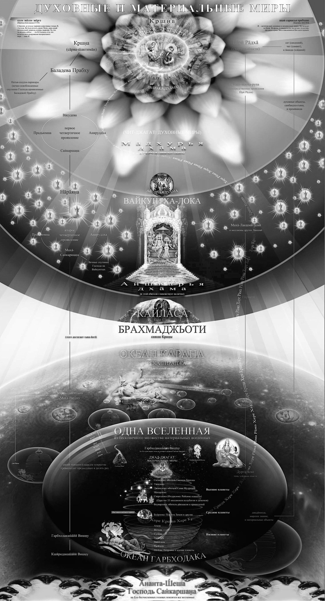
Предстоит крутой поворот, поэтому с 2004 года происходят значительные перемены в климате, у многих людей необъяснимые сложности со здоровьем.
Интересно рассмотреть более подробно место на графике, где начинается петля. Пока вектор времени не сделает отрыв вверх, у нас в истории будут некоторые аналогии.
- 2008-й год проецируется на 2000-й,
- 2012-й – на 1996-й,
- 2014-й – на 1994-й,
- 2015-й – на 1993-й,
- 2017-й – на 1991-й.
А дальше начинается опять социализм.
Но когда произойдёт отрыв вектора времени, уже не будет никаких аналогий.
1) Самое раннее, когда это может произойти, – это 2025-2026 год.
2) Если в это время не произойдёт, то следующая возможность будет предоставлена в 2032-2033 году.
3) Ну и самая дальняя возможность отрыва предоставляется в 2041 году.
Чем дольше не будет происходить отрыв, тем тяжелее будет людям пережить этот переход в Золотой век. Наибольшая вероятность отрыва в 2032-2033 году. Этот промежуток проецируется на 1974 год. Людям, которые родились после 1974 года, суждено в этом повороте эпох находиться у руля» [13].
«Сейчас очень редкое время в истории Земли. Раньше стереотипы были устойчивые. И идеологии были устойчивые. Власть денег была устойчивая. Власть науки была устойчивая. Политика и экономика была устойчивая. Швеция была как вечная страна: закон вечный: приезжаешь туда через восемьдесят лет, там такая же цена, такие же продукты, такое же качество, всё то же самое, ничего не меняется.
Люди верили в правительство, а не в Бога. Стереотип складывался такой.
А сейчас всё рушится: вера и в науку, и в деньги, и в религию, и в человека под сомнением. Что это значит? Мы становимся самостоятельно мыслящими людьми. Сейчас мы пытаемся развить свой собственный разум. Сейчас очень интересное, очень важное время. Разум развивается на слух: мы слушаем, кто что говорит, какие там мнения. Про коронавирус уже сотни теорий по всей планете. И люди включают свой разум, потому что один говорит одно, другой – другое, третий – третье. «Что же мне делать? В чём моя дхарма, в чём мой долг?» Мы все становимся на свои ноги, ходить начинаем. Очень хорошее время. Хотя оно очень сложное. Много тревог, много несчастных случаев, человеческих трагедий. Но это время полезное для формирования нового общества более высокого уровня» [2].
Золотой век предваряет приход на землю Господа Чайтаньи – скрытой золотой аватары[149] Бога, который приходил на Землю на территорию Бенгалии в период с 1486 по 1534 годы. Он необыкновенно красив. Его кожа имеет цвет расплавленного золота. Его рост 218 сантиметров.
«Царь сказал: "Что ты знаешь об этом санньяси? Что Он ест, как Его имя и как Он выглядит?"
Служащий ответил: "Послушай, о царь, я никогда не слышал и не видел человека, подобного Ему.
Тело этого санньяси так прекрасно, что даже Купидону с Ним не сравниться.
Его сияние затмевает сияние золота. У Него могучее тело, Его руки достигают колен, а живот подтянут.
У Него шея льва, плечи слона, а глаза напоминают лотосы. Красоту Его лица нельзя сравнить даже с миллионами лун.
У него алые губы, зубы – превосходящие своей красотой жемчуг, а изгиб Его бровей подобен луку Купидона.
Его красивая широкая грудь умащена сандаловой пастой, а его талия украшена шафрановой тканью.
Его стопы имеют оттенок цветов красного лотоса, а десять ногтей этих стоп, подобны сверкающим зеркалам.
Он выглядит как сын царя, наделённого духовным знанием, и Он путешествует как санньяси.
Его конечности нежнее масла, но слушай удивительное: Он, падая, с невероятной силой бьётся о землю.
В течение получаса Он упал сотни раз с такой силой, что разбился бы и камень, но на Его теле не осталось даже царапины.
Волосы на теле этого санньяси всегда стоят дыбом, и этим Он напоминает джекфрут.
Тело этого санньяси сотрясается с такой силой, что даже тысяча человек не может Его удержать.
Его льющиеся слёзы вызывают изумление. Я не могу описать, сколько потоков слёз извергается из Его глаз.
Иногда этот санньяси громко смеётся, и это может длиться шесть часов кряду.
Иногда он теряет сознание во время слушания киртана. Тогда всех охватывает беспокойство, потому что Он не подаёт никаких признаков жизни.
Он воздевает руки и постоянно повторяет имя Хари. Он не делает ничего, кроме этого, даже когда ест или спит.
Люди идут и идут со всех сторон, чтобы увидеть Его, а увидев, уже никто не желает возвращаться домой.
Я видел много санньяси, йогов и гьяни[150], но никогда прежде я не видел и не слышал ничего подобного.
О Махараджа[151], я должен тебе сказать, что с приходом этого человека, твоё царство стало знаменитым.
Он не принимает пищу, пожертвования, и не разговаривает с другими. Единственное, что Он делает – наслаждается киртаном".
Хотя царь яванов[152] не имел равных в жестокости, всё сказанное чрезвычайно поразило и удивило его» (Чайтанья-бхагавата 3.4.26-47).
Кстати, это именно Его отправился искать Колумб, но по пути заблудился и вместо индийцев увидел индейцев. Господа Чайтанью в то время в Испании называли Эльдорадо. Его приход на планету отразился на Европе как расцвет эпохи ренессанса, кратковременного духовного возрождения.
Господь Чайтанья начал движение санкиртаны – совместного воспевания святых имён Бога – в средневековой Индии. А на всю планету это движение в период с 1966 по 1977 годы распространил Абхай Чаранаравинда Бхактиведанта Свами Прабхупада.
«Это движение будет расти. В течение десяти тысяч лет движение сознания Кришны будет очень расти и шириться, его примут целые страны: это предсказано в священных писаниях. На протяжении десяти тысяч лет у каждого будет возможность обрести сознание Кришны и таким образом достичь цели человеческой жизни (вернуться домой к Богу). А когда эти десять тысяч лет закончатся, наступят мрачные дни Кали-юги. Но время есть. Десять тысяч лет – это немало» [1].
Чакравидья
Как мы уже рассматривали в главах «Человек» и «Здоровье», семь основных чакр – это психо-энергетические центры, связывающие грубое и тонкое тело человека.
Разделим всю продолжительность жизни человека на семилетние циклы в соответствии с семью чакрами. Тогда каждая из семи основных чакр проявляет особую активность
- в течение своего семилетнего цикла
- и в течение своего года этой семилетки.
Таким образом, жизнь человека можно разделить на два больших периода по сорок девять лет, в каждом из которых семь семилеток. И в зависимости
- от порядкового номера семилетки
- и порядкового номера года внутри семилетки, который проживает человек,
он будет проходить разные стадии в развитии его личности, выражающиеся в особенностях, предпочтениях, возможностях, касающихся его грубого и тонкого тела.
«Было бы очень странно приходить в институт и думать, что экзаменов не будет. Так же странно думать, что в жизни не будет трудностей. Когда мы приходим в какую-нибудь организацию, там тоже есть свои экзамены.
В все эти экзамены достаточно стандартны, они уже описаны: в жизни человека есть семь стандартных кризисов, стандартных экзаменов, которые связаны с чакрами человека» [6].
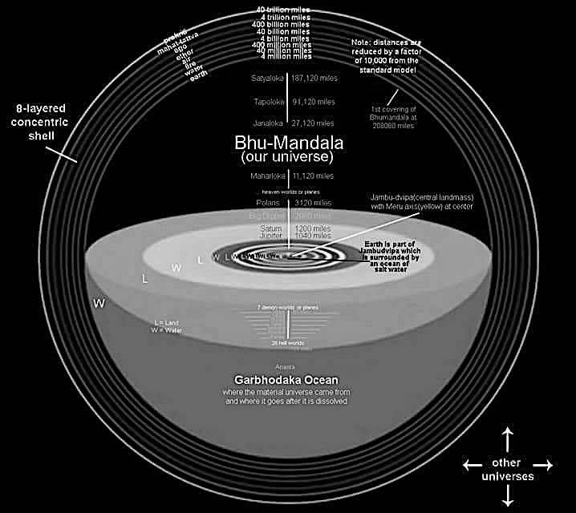
«В этой таблице горизонтально показаны периоды, а вертикально – подпериоды. Серым цветом по диагонали выделены особенные года жизни:
- первый,
- девятый,
- семнадцатый,
- двадцать пятый,
- тридцать третий,
- сорок первый
- и сорок девятый.
Когда человек все эти сорок девять лет проходит, то он или выходит за пределы влияния чакр и развивается духовно, или он возвращается назад, и у него начинается опять детство – очень смешные проявления старости.
На тонком плане чакры открывают для нас возможности в определённый период времени. Представьте себе, что у нас лежат деньги на счету, и нам каждые семь лет выдают какую-то сумму на определённые траты на цели, положенные в этот период. После сорока девяти лет энергии чакр начинают отключать. Это похоже на то, как приходит дежурный охранник в помещение и начинает выключать свет. В конце каждого периода предстоит экзамен, который проявляется как кризис: страшно, но самое главное – это знать, какой экзамен сдавать. Представьте, что вы не знаете, какой у вас завтра экзамен. Это же ужас. Но мы тоже не знаем, что нас ожидает в жизни. Когда вы приходите в институт, что вы в первую очередь узнаёте? Расписание: когда какие занятия. Но когда мы приходим в эту жизнь, нас не интересует расписание нашей жизни. Поэтому в Индии сразу составляют гороскопы. Что это такое? Расписание узнать: какие кризисы, где когда чего ждать, как это должно быть.
Чакравидья – это расписание для ума. А врачи должны уметь составить расписание для органов тела.
Каждая чакра доминирует в течение семи лет, и в соответствии с каждой чакрой меняется отношение человека к окружающим. Оно постепенно должно улучшаться. Наши отношения к Богу, людям, миру должны становиться выше» [6].
Семилетки
1) Муладхара чакра располагается в копчике и отвечает за ощущение выживания, страха, инстинкт самосохранения в первую «страшную» семилетку.
Страх, осторожность при первом попадании в новое место, на новую работу, или новые отношения.
Человек умирает в страхе и рождается в страхе. Страх означает забвение. Рождаясь, человек теряет весь опыт предыдущей жизни.
Страх покрывает, отключает весь разум.
Деградация человека происходит под влиянием страха. Если человек останется на этом уровне, у него будет менталитет преступника, который состоит в том, чтобы на других людей нагнать страху с помощью оружия, грубой речи и тому подобного.
В современном обществе люди застревают на уровне страха и просто выживают. Считается, что нужно получить хорошее образование, устроиться на хорошую работу, чтобы жизнь была материально обеспечена. И люди живут в страхе, думая, что если они потеряют это своё материальное обеспечение, им наступит конец. Такие люди полностью зависимы от системы. Их очень пугает, если они в этой системе не могут найти своего места. В Ведах про такое сознание говорится очень грубо: это сознание осла, который получает пищу за работу от хозяина, хотя вокруг полным-полно травы.
Первые семь лет ребёнок проживает на уровне этой чакры, на уровне страха. Это просто страх выживания.
«Сам по себе страх – это состояние сознания, когда ложное кажется реальным, это иллюзия. Если мы чего-то боимся, значит мы находимся в иллюзии, майе. Майя пугает человека, чтобы он остановился и перестал развиваться. Трусость – это убегать. Мы должны быть смелыми. И преодоление кризиса – это продолжать. Нам страшно, но мы продолжаем, и кризис проходит. Если мы убегаем, страх не преодолён, к нему прийдётся возвращаться вновь и вновь – это кризис не пройден, экзамен не сдан. Лозунг первых семи лет – просто продолжай, просто не убегай. И это нас делает смелыми. Эти страхи будут возвращаться. И мы должны помнить, что если мы будем продолжать, то мы этот кризис, этот страх преодолеем. Если мы будем убегать – то всё: кризис будет возвращаться вновь и вновь. Страх – значит майя пришла. Значит нужно продолжать. Ни в коем случае нельзя убегать. Нужно просто узнать, как продолжать, чтобы всё было правильно. Страх – это самый главный враг человека. Мы хотим стать бесстрашными, победить этот страх, преодолеть эту майю.
Эти страхи потом ещё шесть раз в жизни прийдут. На разных уровнях будут разные страхи приходить. Нельзя давать страху, майе контролировать наше сознание. Если мы боимся, всё становится очень трудно, развиваться невозможно. В страхе человек сковывается, не может ощущать ничего, у него ни к чему нет вкуса. Человека может пугать закон и власть. Обычно это происходит от понимания своей нечестности в прошлом. Так как в основном мы работаем, то нужно разобраться, честно или нечестно мы трудимся. Человек работает психологически и физически честно, только если он работает по призванию. В этом идея варнашрамы[153] – что мы должны перестать обманывать себя и других. Честным нужно быть в первую очередь перед собой. А работа должна выполняться с желанием принести как можно больше пользы другим людям, используя все свои способности. Если мы хотим пользу только себе принести, это обман, мы обманываем себя и других. Любая работа не по призванию – это косвенный обман или даже прямой обман потребителя, так как в этом случае единственное, что нас интересует – это не польза от труда, а конкретный доход. Поэтому если в стране большинство работают ради зарплаты, все обманывают друг друга – страна обманщиков – вор ворует у вора. И поэтому сохранить ничего невозможно, потому что ворованное, нечестно заработанное очень трудно сохранять, оно утекает сквозь пальцы. Это беспричинный страх перед силовыми органами, когда мы чувствуем, что должны прийти какие-то реакции, какие-то проблемы, у нас это просто должны отобрать. Один специалист в силовых органах рассказывал, что большинство преступников после преступления начинают себя вести так, чтобы их скорее поймали, то есть они не могут жить спокойно. Они, может быть, не сдаются напрямую, но начинают так себя вести, чтобы их быстрее поймали, потому что не могут с этим жить, боятся, с этим страхом жить невозможно. И поэтому если мы работаем нечестно, не по призванию, а просто ради денег, то тоже прийдёт этот страх: мы будем бояться, что всё это у нас легко отберут, легко уйдёт. В целом страх возникает от нежелания заниматься своим духовным ростом. Паразитическая идея западного общества состоит в том, что мы всю жизнь будем работать, а потом на старости лет – наслаждаться. И поэтому мы боимся, что у нас отнимут эту возможность. И приходит страх от этого паразитизма. Если человек не развит духовно, он вынужден сопротивляться старости изо всех сил. И это происходит по причине, что человек боится в старости выглядеть глупцом, потому что все понимают, что старость – это время мудрости. Если человек чувствует, что мудрости не хватает, он начинает бояться старости, сопротивляться. Поэтому все себе натягивают, завязывают кожу, то есть как-то прячут эту старость. Молодой может вести себя как глупец – никакой проблемы, в обществе это принято. И эти все певцы, актёры ведут себя ужасно, поют тупые песни, то есть делают абсолютные глупости. И это противоречит старости. Поэтому они искусственно пытаются надеть на себя маску молодости, чтобы их не критиковали, не ругали. Потому что не должен человек в старости вести себя таким сумасшедшим образом. Но если мы свой разум развиваем, то нас старость абсолютно не пугает: «Ну и хорошо, что выглядим старыми. Нас будут больше уважать. Нас будут больше принимать. Мы сможем больше полезного сделать». Старость для проповедника чрезвычайно полезна: можно больше сказать, больше уважения. Старость – очень полезное время, может быть, самое продуктивное время. Потому что в молодости много сил, но и много ошибок, много глупостей. В старости, может быть, времени и мало даётся, но люди так хорошо слушают, можно говорить только на основе своего возраста. То есть старость – это время для проявления мудрости, и без неё становится жить неудобно.
Есть ещё страх собак. Он самый страшный. Потому что собаки нас сопровождают на пути Ямы. И этот страх преследует нас в подсознании. Это страх из прошлых жизней. Настолько страшно быть загнанным собакой, что лисы и зайцы, на которых охотятся с собаками, умирают не от увечий, а раньше, от разрыва сердца. Все боятся, когда за вами кто-то гонится и рычит.
Первая семилетка – это первый период в жизни человека или в жизни общества, когда человек нуждается в понимании и помощи. Когда человек напуган, он начинает защищаться. А это значит, что он не раскрывается, он становится не простым, двуличным, и он противодействует заранее. Начинаются нездоровые взаимоотношения. Напуганный человек ведёт себя неадекватно. Он начинает бороться со всеми, ожидает агрессии от всех, и даже благоприятные к нему эмоции могут вызывать неадекватную реакцию:
– Может вам помочь?
– Себе помогите! Сам знаю!
Человек очень напряжён, всего боится и может в страхе совершать очень глупые поступки.
В истории известны правители, которые от страха смогли избавить целую страну – Рамачандра. «Во время правления Рамы не было ни злости, ни преступлений, ни страха, ни несправедливости. В Его царстве все постоянно говорили о Раме» (Рамаяна) И Он настолько избавил людей от страха, что в Индии помнят его до сих пор все: что было время, когда не было страха, нечего было бояться. В Ведах известна мантра от страха: «Рама, Рама!»
Что нейтрализует страх:
- близость к природе,
- жизнь в деревне,
- оздоровительная физкультура,
- простая и вкусная пища,
- Бхагавад-гита,
- мягкий спокойный голос,
- не применять физическое воздействие,
- защищать других (тогда некогда бояться),
- больше отдыхать (в неделю должен быть день без будильника и телефона),
- не убивать (не есть мясо),
- поливать деревце туласи.
Корни страха находятся в страхе животных, которых убивали на скотобойне. Это называют сглазом – последний взгляд жертвы на своего убийцу. Вот это настоящая проблема.
Итак, страх – это сильнейшее явление в нашем сознании. Но сила любви превосходит его. И когда мы возвышаем своё сознание, то постепенно страх уходит.
И святые учат нас второй стороне страха – осторожности. Мы не должны бояться, но мы не должны стать оголтелыми. Поэтому страх должен остаться, но в форме осторожности. Это будет правильный вариант страха для нас. Осторожность – это проявление страха, которое способствует нашему развитию, прохождению кризиса. Если мы просто боимся кризиса, мы его не пройдём, но если мы осторожны и знаем все ловушки, то кризис легко проходится.
На этой первой чакре первые семь лет в организации каждый пытается подвить друг друга. Соревновательная идея очень вредна для дружелюбия. Если сознание не очень высокое, это соревнование превратится в борьбу на выживание, будут оскорбления совершаться. Кто лучше? Спорт становится чрезвычайно жестоким. Люди выходят, у них страшные лица, они ненавидят друг друга. Огни бегут, и видно, что уже какие-то животные инстинкты. Неприятно смотреть спортивные соревнования. Видны тяжелейшие эмоции, большие деньги, тяжелейшая конкуренция. Идея «не ради победы, а ради участия» уходит из спорта. И в животном мире это можно увидеть как борьбу за еду или борьбу за самку. Фактически это просто драка. Иногда эта драка приобретает статус «стенка на стенку». Старший на этом уровне может кричать на младшего. Поэтому на планёрке лучше не присутствовать, кто не участвует. Это один из способов контролировать коллектив, и он действительно в первые семь лет иногда неминуем.
Терроризм – это профессиональная попытка всё общество запугать и опустить на уровень страха. И тогда война естественно вспыхнет. Если всё общество реально запугать, то общество само начнёт воевать, война сама начнётся от страха.
Иногда управление государством находится на этой стадии – такая тирания, культ личности. Но подавлением не решить какие-то проблемы коллектива. Нужно сначала очиститься. Если мы просто подавляем какие-то проявления нашего сознания, нашего тела, то это ухудшает ситуацию. Единственное, что надо подавлять – это революционное желание всё разрушить и переделать на свой лад. Нужно действовать другим способом. Это настроение насилия пронизывает всё общество. Когда нам кто-то мешает, мы его убиваем: аборты. Нет, мы должны пожертвовать своими удобствами ради спокойствия и счастья других. Если мы ради своего счастья готовы убить другую личность, наорать, отодвинуть – это очень печально. Есть физическое убийство, а есть убийство на уровне отношений. Слово ещё более тяжело ранит человека, чем даже физическое воздействие. Иногда лучше ударить, чем оскорбить. иногда боль от слов действует глубже и тоньше, чем физическое воздействие.
Страх – это признак материального сознания. И из четырёх проблем материального существования – пропитания, крова, совокупления и страха – страх является самой главной проблемой. Больше всего беспокойств доставляет этот страх. И мы всегда пребываем в этом страхе, потому что не знаем, какая проблема возникнет в следующий момент. Поэтому очень важно понять хотя бы немного устройство жизни, что нас ожидает. И тогда страх будет уходить.
Страх – это результат нашего соприкосновения с иллюзией, майей, внешней энергией Господа. Нужно воспользоваться ведическим знанием, чтобы примерно понять план нашего развития и перестать бояться в конце концов» [6].
Но страх и не плох в том смысле, что даёт толчок к развитию.
2) Свадхистхана чакра отвечает за чувства, которые дают прибежище, лекарство от страха жизни во вторую «чувственную» семилетку.
Причиной проявления чувств являются вожделение и обиды.
Огромная часть людей в нашем обществе застряла на второй чакре, на уровне чувств. Такие люди критикуют всё вокруг, говорят: «То хочу», «То не хочу», «Это хорошо», «Это плохо». Человек всё знает, всё критикует, всё оценивает, а сам ничего изменить не может. Просто желания и обиды.
3) Манипура чакра отвечает за деловые качества и действует на третьей «деловой» семилетке жизни человека.
Есть люди, которые вообще боятся получить знания, которые выходят за пределы их мировоззрения. Они не получили в детстве достаточно внимания, доверия к личности.
Крупные мировые корпорации словно откуда-то узнали про чакравидью и используют это знание, точнее, злоупотребляют им. Они знают, что любой человек, приходящий в крупную корпорацию, первый год испытывает неуверенность и страх, ему нужно время освоиться.
Работники очень послушны в первый год своей карьеры на новом месте.
На второй год у сотрудников уже пробуждаются чувства, и они начинают творчески подходить к своей деятельности, активно себя вести, с энтузиазмом.
На третий год открывается деловая чакра, и сотрудник начинает уже сравнивать, что говорит начальник, что говорят другие, кто прав, кто не прав. В его разум проникает какая-то политика.
Поэтому корпорации делают такой практический вывод: первые два-три года – и сотрудника нужно менять. А лучше менять весь состав сотрудников, чтобы они своим личным развитием не приносили беспокойства корпорации.
Точно так же, когда ребёнок подходит с философскими вопросами ко взрослому, проще его игнорировать или отвлечь чем-то другим. А в ведических писаниях указано, что игнорирование личности – это самое сильное оскорбление, которое можно совершить. Потом родители удивляются, что их подросший ребёнок не советуется с ними, а следует наставлениям своих товарищей во дворе.
Таким образом, большинство людей проживают всю свою жизнь со страхами, желаниями и обидами. И не многим удаётся достичь в своём развитии третьей, «деловой» чакры: достичь успеха в своей деятельности, стать на самом деле богатым человеком или добиться успеха в искусстве.
Третья чакра даёт человеку способности.
Ведическая система образования выпускает зрелых людей уже в возрасте двенадцати лет. А потом происходит оттачивание их зрелого разума, профессионализма, накопление опыта. А в нашем обществе зрелость, если и наступает, то только к пятидесяти годам.
4) Анахата чакра отвечает за гармонию, радость на четвёртой «гармоничной» семилетке жизни человека.
Чакра гармонии в настоящее время практически никем не достигается. Это очень редкие гармоничные личности: великие писатели, мыслители.
Когда я только начал ходить в школу, я был очень открыт и всему радовался. Проявлялось это в том, что я всё время улыбался. Даже на уроках. Учительница на первом родительском собрании моей маме про меня сказала, что нельзя улыбаться на уроках и что «смех без причины – признак дурачины». Так современное общество начало вносить свои первые коррективы в формирование моего мировоззрения.
5) Вишуддха чакра отвечает за философию на пятой «философской» семилетке.
Если в детстве человек не получил ответ на вопрос, откуда он взялся, у него будут большие проблемы на протяжении многих лет жизни. Эти проблемы называются безверие, внутренняя пустота, неудовлетворение. Человека на самом деле интересует не то, откуда он взялся, а сама суть: кто он? И на этот вопрос в современном мире мало кто знает правильный ответ, даже школьные учителя. Например, мой духовный учитель рассказывал, что когда он в детстве в первый раз пришёл в школу и услышал, что человек произошёл от обезьяны, он испытал глубочайшее разочарование, и сразу потерял интерес к школе.
В ведическом цивилизованном обществе образование начинается в этом возрасте – в пять лет.
Философов сейчас практически не осталось. Вот почему в современном обществе у людей развиваются психические расстройства. Причина заключается в недостатке умственной деятельности. Пока человек не научится мыслить философски, он не преодолеет обид и других психологических препятствий. Пока человек не научится прощать, ему не избежать психических расстройств.
Философия очень важна. Иллюзия действует так, что люди своё духовное развитие откладывают на потом.
Философия означает, что мы должны общаться философски, читать философские книги и научиться мыслить философски. Тогда приходит мудрость.
6) Агья чакра отвечает за мудрость на шестой «мудрой» семилетке.
Часто люди под философией понимают либо самоуспокоение, либо какую-то теорию. Но философия – это наука о жизни. Она применима в жизни. Та философия, которая не применима на практике, не является научной философией. В ведических писаниях говорится, что в обществе начинается деградация, когда появляются теоретизирующие учёные. Вот тогда люди теряют интерес к философии и науке. Но мудрость означает, что мы можем применить философию. Если мы будем пытаться применить ложную философию, она не будет работать. Мудрость – это знание в действии.
7) Сахасрара чакра отвечает за духовность на седьмой «духовной» семилетке.
Без веры в необъяснимые, недоступные вещи
не может развиваться ни наука, ни семья, никакая организация, никакая личность. Эта чакра полностью избавляет от всех страхов. Духовность – это лекарство от страха. Тому, кто всегда устремлён вверх, нечего бояться.
Когда мы обретаем мудрость, мы обретаем огромную силу духа влияния на всех людей: на философов, на гармоничных, радостных людей, на деловых людей и на людей, живущих под воздействием чувств и страха. Духовный человек, говоря и поступая в соответствии со своими словами, подтверждая их, может дать развитие всем остальным людям.
А теперь рассмотрим последовательно жизнь человека по порядковому номеру в семилетке.
1. Страх
Муладхара чакра отвечает за ощущение выживания, страха, инстинкт самосохранения в первую «страшную» семилетку.
1.1 (1-й год жизни)
Ребёнок рождается в этот мир, и первый «страшный» год первой «страшной» семилетки проживает в этом страхе за выживание. Поэтому ему необходимы материнские руки, тепло, чувство прибежища. Страх полностью является его сознанием. Сознание ещё не развито.
«Новорождённый младенец
- улыбаться ещё не умеет.
- Он не выражает какой-то радости.
- вы в его глазах видите, что он с того света вернулся.
- Тяжелый акт рождения,
- внутриутробный период,
- появляется на свет – у него шок.
- Он должен всё как-то познать ещё в будущем,
- как-то освоиться,
- быть здесь,
- он ещё не знает маму и папу.
- Ему нужно просто выжить.
- Для него мать – это просто способ выжить
- это его пища,
- это его защита,
- инстинктивно он к ней привязан,
- он кричит,
- он зовёт.
- Сам он ни на что не способен,
- он беспомощен совершенно.
Это состояние страха. Как больной человек, или раненый человек, или умирающий человек – очень сходное состояние» [2].
«Нужно просто выжить. Поэтому в Индии даже имя детям не дают: а вдруг не выживет? Если год прожил – выжил, уже можно дать имя. У нас ещё до рождения дают имя, и если он умер и не пожил, а для мамы это уже глубочайший стресс, потому что она уже к нему привязалась, очень больно. Первый год жизни – это год выживаемости. Все знают, что такое детские болезни, детская смертность» [6].
1.2 (2-й год жизни)
В возрасте одного года, на втором году жизни маленького человека, на втором «чувственном» году первой «страшной» семилетки, когда чувства просыпаются, ребёнок уже заявляет о том, что ему нравится, а что не нравится. Он капризничает. Это значит, что страх уже уходит, и он чувствует себя в безопасности.
«Просыпаются чувства. Появляется много капризов, много желаний. Он уже что-то требует. Не просто плачет, зовёт. Начинает проявлять свою волю, своё отношение к тому, что он получает или к тому, что он видит. Это капризный ребёнок. Такой противный голос. Назло как будто. Иногда злит родителей. Им нужно просто понять, что это просто глупый ребёнок» [2].
1.3 (3-й год жизни)
В возрасте двух лет, на третьем году жизни, на третьем «деловом» году первой «страшной» семилетки активизируется «деловая» чакра. Ребёнок начинает уже
- исследовать всё, что находится вокруг,
- проявляет активность,
- двигается,
- всё берёт руками,
- ломает,
- пробует на вкус.
Он переключается в деловую сферу отношений только в том случае, если получил прибежище от страха. Если родители не дали ему достаточно тепла на втором году жизни, включение этой чакры притормозится.
«Активное изучение мира. Вот тут он вам задаст жару. Будет лазить повсюду: и в розетку будет пальцы вставлять пытаться, и телевизор на себя опрокинет. Он начинает изучать мир, гнуть, ломать, рвать. Если вы дадите ему фломастер, он разрисует вам все стены. И себя ещё раскрасит.
И тоже будете иногда злиться. Но надо понять: он ещё глуп. Активен и глуп. При этом вы его всегда контролируете страхом. Просто эмоционально. Вы не можете объяснить. Ещё разум у него не пробуждён: почему хорошо и почему плохо. Но уже пугаете его: голос повысить. Вы просто на уровне страха обучаете ребёнка сначала. Ещё нельзя всего объяснить, но уже эмоционально показываете, что хорошо, что плохо, что вам нравится, что не нравится. Он смотрит на вас и понимает: вот это делать нельзя, а вот это – можно. То есть чакра страха доминирует здесь» [2].
1.4 (4-й год жизни)
В три года, на четвёртом году жизни, на четвёртом «гармоничном» году первой «страшной» семилетки с ребёнком становится очень интересно и радостно общаться. Это сплошной юмор, позитив, игры, придумывание новых своих слов. Он вступает в отношения с миром в радости. Радость – это и есть гармония. Для этого у маленького человечка появляется необходимая энергия: он уже начинает быстро бегать и мыслить. Но его разум ещё не пробуждён, это просто детская радость.
«Гармония означает, что вы можете найти радость в этих отношениях. В три года ребёнок очень интересный: речь интересная, слова какие-то придумывает новые необычные, удивляет вас на каждом шагу: как он двигается, как он играет – всё очень интересно. Особенно бабушки и дедушки просто потрясены, потому что такое счастье и такую гармонию им в этом возрасте как раз очень нужно испытать. В престарелом возрасте, когда «старость не радость», внуки приносят очень большую радость, заряд энергии. Они с ними прямо ползают. Смешно смотреть. Родители так не будут делать в основном – им некогда, они работают. Это бабушка с дедушкой будут вместе с ним всё ломать, потом чинить, ругаться, потом мириться. Что стар, что млад. Это счастье, это гармония. Ребёнок в этом возрасте такой. Он активный. С кем бы он ни общался, он счастлив. Почему? Потому что доверчив. И вот интересно, что дети могут так прекрасно строить отношения в этом возрасте, не имея никакого образования, потому что есть доверие и любовь. А это – описано в Ведах – две главные составляющие взаимоотношений. Доверие и любовь – принцип семьи. Вот это и есть культура взаимоотношений. И дети это имеют в этом возрасте уже. Они доверяют всем и любят любого. Конфетку дал – ребёнок уже доволен, уже доверяет вам. А что он будет дальше учиться делать с этим доверием? Он будет учиться постепенно не доверять и не верить. То есть ему будет трудно строить отношения, потому что есть обман. Он был наивным ребёнком, и поэтому его обманывали, и поэтому: «Доверять всем не нужно, и, конечно, верить не нужно каждому попавшемуся». С одной стороны, это практично, а с другой стороны, если мы категорично скажем: «Никому не доверяй», это будет уже серьёзное нарушение взаимоотношений. Думаете, почему сейчас такие сложности в браках у людей? Не только в браках. Но и на рабочих местах. Только одна причина: люди не доверяют друг другу. И мужчины, и женщины тоже не доверяют друг другу. Чаще всего мы видим: гражданские браки люди хотят заключать. Часто разводятся. Тенденция в Европе такова, что они строят уже однополые браки. Не доверяют противоположному полу. Но если на глазу катаракта, Веды говорят: не выкалывайте глаз весь, снимите катаракту. Нельзя всем не доверять. Это тоже неправильно. Нужно учиться понимать друг друга.
Если ребёнок был глупый, в этом его недостаток, поэтому, когда он испытывает доверие и любовь, – это хорошо. Но при этом вы должны ему дать образование, не нарушая любви и доверия, а давая разум, как это применять. Не отказываться от этого, а учиться, как это применять» [2].
1.5 (5-й год жизни)
В четыре года, на пятом году жизни, на пятом «философском» году первой «страшной» семилетки пробуждается разум, интеллект. Вот тут ребёнок и спросит: «А откуда я вообще взялся?» Либо вспомнит прошлую жизнь. Многие вокруг думают, что это ребёнок просто говорит какие-то глупости и не обращают внимания, потому что в этом возрасте речь ребёнка ещё не очень связная и убедительная. И если в четыре года ребёнку не дадут ответ на этот вопрос: «Откуда я взялся?», у него будут большие проблемы на протяжении многих лет жизни. Эти проблемы называются безверие, внутренняя пустота, неудовлетворение.
«Вопросы у детей в этом возрасте именно философские, глубокие: скажет: «А откуда я взялся?», «А откуда всё это взялось?» Ребёнок спрашивает потрясающие вещи. Открывается пятая чакра. Она не даёт покоя ему в пять лет. Это начало обучения. В семь лет детей принято отдавать в школу. Это не совсем точно. В пять лет нужно начать образование – в соответствии с центром, который активен у него. Это самое подходящее время. В пять лет начинается процесс обучения. И вы увидите: ребёнок очень легко обучается в этом возрасте, потому что у него есть естественный ко всему этому интерес» [2].
1.6 (6-й год жизни)
В пять лет, на шестом году жизни, на шестом «мудром» году первой «страшной» семилетки пробуждается мудрость, если ребёнок к пяти годам получил необходимое знание о том, кто он такой. Эта детская мудрость означает первый опыт в применении знания и передачи этого знания другим людям, обучении других людей. Тогда через ребёнка начинает протекать духовная энергия знания.
«Мудрость – это способность применить знание на практике. Например, вы можете научить ребёнка здороваться со старшими или говорить спасибо. И он уже пытается это применить и осмысливает: это хорошо. То есть не как попугай это сделает, не как медведь в цирке бездумно, а осмыслить это может. И это прививается на всю жизнь. Один раз опыт получаете – на всю жизнь понимаете, как это хорошо.
Это чакра мудрости. Когда этот центр открыт, человек учится мгновенно применять знание. Сразу понимает, что правильно, а что неправильно. Он не размышляет. Применяет. Так же, как вкус мёда можно почувствовать, не размышляя, а просто попробовав на язык. И всё ясно. Если центр открыт, мы так поступаем. Если закрыт – вы просто не доверяете. Вы и это не можете сделать, и то не можете сделать, вы просто не знаете, что делать с этим: «Лучше уйти от этого всего, скрыться, не воспринимать это вообще». Есть такое чувство к каким-то людям, да? «Лучше уйти от них подальше, не общаться». Такое отношение друг к другу становится всё более и более распространённым. Чужие люди появляются. Мы не знаем, как с ними общаться. Мы что-то пытаемся, но ничего хорошего не получается. Ни этот человек не чувствует ничего хорошего, ни я не чувствую ничего хорошего. Мы не нравимся друг другу. Закрыться.
Но на самом деле, если вы любому человеку скажете слова благодарности, всегда будет хорошо. На самом деле реальность другая. Но если чакра закрыта, мы даже этого не можем сделать. Любой человек, если вы искренне попросите прощения, простит вас. Но мы не можем: чакра закрыта – страх испытываем. Чакра страха работает. А более высокий центр не работает. И нам трудно просить прощение, нам трудно прощать, нам трудно быть искренними в этом отношении. И здесь ребёнок может уже просить прощения. Как дети просят прощения, знаете? Так, что у родителей слёзы на глаза наворачиваются, они готовы всё простить этому ребёнку. На самом деле может это делать ребёнок. Ему природа даёт всё это. Он ещё чистый. Но так или иначе он ещё делает это на уровне чакры страха: потерять отношения с мамой, или почувствовать её нелюбовь он очень боится, или то, что они не дадут желаемое потом (игрушку), или отнимут ещё что-то, или поставят в угол. Он очень дорожит всем этим. Там есть эгоистические мотивы, но он делает это из глубины сердца. Потому что открыта эта чакра. То есть природа помогает пережить ему это состояние: благодарности, прощения, любви, честности. Ребёнок очень гордится, когда ему говорят, что он честный. Такой экстаз! Он на самом деле это чувствует. Но когда чакра закрыта, ему уже всё равно: честный он или не честный: «Деньги бы дали, и нормально. Вот когда деньги дают – это нормально, а то просто спасибо за честный труд, руку жмут… За спасибо, знаете, ничего не купишь». У нас может быть представление немножко иное. Итак, мы видим, что человек постепенно приземляется» [2].
1.7 (7-й год жизни)
В шесть лет, на седьмом году жизни, на седьмом «духовном» году первой «страшной» семилетки ребёнок под влиянием передачи знания начинает верить в необъяснимые, недостижимые, недоступные вещи. В этом возрасте ребёнок вступает в сферу духовности. У него появляется вера в неизведанное, необъяснимое: «Иди туда, не знаю куда, принеси то, не знаю что». Романтика! А в современном атеистическом обществе ему говорят: «Брось эти выдумки!»
«Когда эта чакра открывается у человека, у него появляется вера в таинственное и неизвестное. Это неизвестное, никто не знает. Это никто не видел. А он верит в это. И когда он верит, он чувствует счастье. Знаете, что такое счастье? Оно начинается именно с веры. Как только у вас появляется вера, она проявляется в форме счастья. Это и есть то, что мы называем с вами верой. Не просто убеждённость какая-то, а именно вера. Из глубины сердца. И в этом возрасте дети верят в сказки. Их так это вдохновляет. Они так любят всё это слушать. Помногу раз. Потому что есть вера, что вот так и должно быть. И родители говорят: «Да, так и было, написано же всё». Они их не разубеждают. Как в сказке, так и в жизни, они подтверждают это всё. Иначе вы травмируете ребёнка. Вы не должны разрушать: «О, это сказка просто». Если вы скажете такое ребёнку в этом возрасте, вы его испортите на всю жизнь. Вы не должны разрушать его веру. К вере нужно очень бережное отношение, иначе эта чакра захлопнется. А если она захлопнется, это уже создаст блок на все последующие годы. Как сейчас современные психологи изучают наше умонастроение, погружая нас в регрессию: вот какие-то там блоки, оказывается, есть, у тебя там когда-то был с мамой, с папой конфликт, это непонимание, это на всю жизнь теперь ты носишь с собой, дорогой. Давай-ка мы сейчас проведём с тобой тренинг: вернёмся в эту ситуацию, проживём её заново правильно, освободимся от всего этого. Ну до какой-то степени помогает. Не так уж и глубоко, но до какой-то степени можем почувствовать, что что-то всё-таки улучшилось» [2].
2. Чувства (эмоции)
Свадхистхана чакра отвечает за чувства, которые дают прибежище, лекарство от страха жизни во вторую «чувственную» семилетку.
2.1 (8-й год жизни)
В семь лет, на восьмом году жизни, на первом «страшном» году второй «чувственной» семилетки, когда наступает период полового созревания, ребёнок может бояться новых пробуждающихся сексуальных чувств.
«В этот период жизни начинает пробуждаться сексуальная энергия. Это ещё ребёнок, но уже возраст приближается к переходному, потому что пробуждается кундалини. И здесь страх, что он не понимает своих новых ощущений. Гормональный сдвиг идёт: «Что это? У меня раньше такого не было». В этом возрасте уже можно влюбиться, например, в учителя в школе или в учительницу. Случалось такое? Не адекватно, правда? А это возможно. Чувства начинают пробуждаться. Меняется сознание ребёнка. И он боится» [2].
2.2 (9-й год жизни)
В восемь лет, на девятом году жизни, на втором «чувственном» году второй «чувственной» семилетки начинает пробуждаться дракон – сексуальная энергия. Чувства усиливаются, и возникает первая любовь. Молодой человек может влюбиться в одноклассницу или в учительницу.
«Ребёнок может испытать первую очень сильную любовь. Если все чакры открыты, если он всё прошёл правильно, в этом возрасте он испытает очень сильное глубокое чувство, которое повлияет на всю жизнь. Вот эта первая любовь ни с чем не сравнимая будет. Очень глубокие чувства может испытать. Причём чистые, потому что сексуальная энергия ещё не применяется, не расходуется. Она наполняет, выхода не имеет, только наполняет. Когда человек занимается сексом уже, энергия выходит из него, это выход собственной энергии, он истощается. Поэтому можно видеть, что эта любовь как-то вдруг пресыщается, становится скучно даже, отвратительно, хочется другого партнёра. Потому что это связано с выходом энергии. А когда этого выхода энергии нет, смотрите, как интересно развивается ребёнок, испытывая эту любовь. Иногда родители пугаются, иногда смеются над ребёнком, что он влюбился там в учительницу, начинают его осмеивать. Это очень плохо, когда вот так делают. Тут нужно как раз правильно понимать, что для этого возраста это крайне важный момент. Это требует поддержки. Не стыдить его, а понять нужно. Не насмехаться, не игнорировать, а глубоко понять. Если вы это понимаете, ваши отношения сближаются. Часть платонической любви он отдаёт вам доверительно, доверяет это. Очень сильно устанавливаются отношения. Это наука отношений. Поэтому если вы видите, что ваш уже взрослеющий ребёнок не доверяет вам, скорее всего, в этот период времени, когда он испытывал это чувство, вы не заметили, никак не отреагировали, не приняли это. И возникает здесь трещина отношениях, блок. Поэтому он пойдёт доверять кому-то другому, на улице, найдёт каких-то людей, на стороне, но к родителям не идёт. Потому что здесь нет таких отношений, не чувствует связь. Он это вам когда-то не доверил, а вы это просто не приняли, вам было неинтересно. Это может повлиять на всю жизнь. Это очень сильное и важное чувство для этого возраста» [2].
2.3 (10-й год жизни)
В девять лет, на десятом году жизни, на третьем «деловом» году второй «чувственной» семилетки молодой человек пытается по-деловому установить взаимоотношения с противоположным полом.
«Может быть, они ещё дерутся в этом возрасте как-то, толкают друг друга, за косы дёргают. Проверить реакцию, природу распознать, что это такое вообще? Вот визжит так противно для мальчиков этот противоположный пол. Вредные какие-то, странные. Но при всём при том вы сильно не ударите её почему-то, не можете. Вот и непонятно, изучают: что-же это такое вообще – эти девчонки противные? И мальчишки такие тоже. В этом возрасте они ещё так понимают. Ссорятся, ругаются, визжат, дерутся. Это чувства. Значит, они привязаны друг к другу. Испытывают некоторый интерес и привязанность. Как муж и жена: они постоянно ругаются, потому что привязаны. Вот если вы идёте рядом с кем-то, вы можете мирно общаться. А если вы идёте связанными двумя ногами, вы будете ругаться, правда же? Нервотрёпка начнётся. Муж и жена – это такое вот одно тело. Если у него плохое настроение, вы тоже начинаете злиться. Вы связаны, в одном ключе всё должно быть. То есть такая связь существует» [2].
2.4 (11-й год жизни)
В десять лет, на одиннадцатом году жизни, на четвёртом «гармоничном» году второй «чувственной» семилетки у детей возникает сильный интерес к дружбе. В этом возрасте ребёнку необходимо рассказать, что такое настоящая дружба, и тогда он станет в своё время настоящим другом для родителей.
«Попытка установить радостные отношения с противоположным полом. Он начинает понимать: что человеку нравится, что присуще его природе, что не присуще его природе в этом возрасте. Это понимание дружбы. Идея дружбы тут возникает. Если вы в этом возрасте ребёнку своему не привили идеал дружбы, он потеряет очень много в жизни. Потому что в жизни практически всё будет зависеть от этой концепции, от этих отношений, от дружбы. Если вам трудно, а обязательно трудности прийдут к каждому, и серьёзные, вам помогут только друзья. Конечно, родители есть. Но – друзья. И если вы в этом возрасте ребёнку не дали, вот эту ценность не привили, вы нанесли большой ущерб в отношениях. Запомните: вы никогда с ним больше не подружитесь. Уже в последующие годы будет очень трудно вступить в такие глубокие дружеские отношения. Тут есть одна иллюзия, потому что родители не могут ещё в этом возрасте ребёнка видеть как друга. Он всё ещё просто глупый ребёнок. Он и в двадцать лет будет глупым ребёнком, и в тридцать, и в пятьдесят лет будет глупым ребёнком выглядеть.
На Кавказе, когда сыну сто лет, а отцу сто двадцать, отец говорит: «Он глупый, так ещё и не поумнел». Гуру и родителей понять невозможно. Они всегда так смотрят. Какие бы успехи вы ни сделали, на вас всё равно смотрят как на глупого ребёнка. Может быть, он уже президент страны. «А, нет, нет, кто он такой вообще? Он просто мой глупый ребёнок». Это иллюзия. И в этом возрасте ребёнок ищет признания. В любом возрасте ищет признания. Если он что-то чувствует, что-то переживает, что-то приходит к нему, он всегда ищет признания от старших. И если он не получает, он находит это в другом месте. Мы теряем отношения таким образом. Конечно, у меня с матерью были очень глубокие отношения. Она меня всегда пыталась понять. Мать – это мой очень большой друг. Но одна вещь меня выводила из себя до крайности: если я прихожу откуда-то домой, у меня там события какие-то грандиозные каждый день на улице, не то что там у них на работе у взрослых – всё скучно, я прихожу домой – прежде всего она сажает меня за стол кормить, конечно: «Потом всё скажешь, давай садись ешь». Вот я сижу значит, ем это всё, а мне нужно ей это всё рассказать, а она напротив сидит и смотрит и улыбается. Так жизнь устроена: мать кормит, сын ест – это нормально. Если мать так на вас смотрит, когда вы едите, вы чувствуете себя хорошо, правда ведь? А если другой будет смотреть также: в столовой сядет и будет смотреть на вас? вам будет очень плохо, я вас уверяю. А мать смотрит на ребёнка: любовь ему даёт, у него пищеварение сразу улучшается, он здоровым сразу становится под таким влиянием матери. Потому что он любовью живёт. Он естественно это принимает, даже не задумываясь об этом.
А мне в это время нужно рассказать ей что я нового узнал, что случилось, что-то интересное. Она кивает головой и говорит: «Как ты похудел».
Вот тут я не выносил уже. Всё! Я бросал ложку, я уходил: «Тебе не интересно, что я говорю! Я тебе не нужен на самом деле! Ты меня просто кормишь. Не буду есть. Не хочу ничего». Всё, аппетит кончался тут же. Где-то пару раз так было, потом она больше так не делала. То есть мать у меня была мудрая женщина, она могла извлекать уроки. Я учился у неё, она училась многому у меня. Я не могу пожаловаться в этом случае на судьбу» [2].
2.5 (12-й год жизни)
В одиннадцать лет, на двенадцатом году жизни, на пятом «философском» году второй «чувственной» семилетки дети уже философски понимают отличия полов. Появляется идея любви и дружбы.
Великий мудрец Мадхвачарья в этом возрасте уже принял санньясу, отречение от мирской жизни.
К двенадцати годам дворянские дети
- знали до пяти языков.
- Они могли играть классику на музыкальных инструментах,
- владели искусством танца,
- каллиграфии,
- изложения мыслей на бумаге
- и общения в любой сфере деятельности:
- о политике,
- искусстве,
- отношениях,
- исполнении долга.
- Все умели хорошо рисовать.
«Чакра философии означает, что здесь вы должны уже знать все необходимые основы жизни. Что нужно знать ребёнку в этом возрасте?
Обращаемся к истории. Царская Россия. Дворянские дети. К этому возрасту знают уже до пяти языков: немецкий, английский, итальянский, русский, французский. Он знает игру на музыкальных инструментах, что очень важно в воспитании любого человека. Изображать, рисовать какие-то вещи. Не фотографировать, а рисовать нужно. Дети все рисуют, не фотографируют. Потом их научат фотографировать. Фотография – это консерва. Законсервированный какой-то образ. Это не тот образ, который вы имеете в сердце. Фотография есть художественная, где вы пытаетесь выразить, что именно вы чувствуете. Но нужно учиться играть, рисовать, языки изучать, искусство танца нужно изучить – очень важное искусство; не только языком владеть, но и телом владеть, учиться красиво писать; не на печатной машинке и не на компьютере, а руками, потому что это ваша душа, каллиграфия и уметь выражать свои мысли, когда вы разговариваете. Тогда вы уже – зрелый человек. Фундамент заложен. Большей частью это его эмоциональное и духовное самовыражение. Творческая личность должна быть. К этому возрасту это должна быть уже установленная творческая личность. Он знает, как жить. Не просто деловые отношения, а творческие отношения. Не просто семейные отношения, а творческие отношения. Не просто работа, а творчество. Не просто жизнь, а поэзия. Вот основа жизни. Иначе рутина: всё я могу сделать, но выразить не могу. Компьютеры сейчас всё изображают, фотоаппараты всё фотографируют, переводчики в интернете всё переводят, языки не нужно знать и так далее, мысли выражать некогда, мы заняты, это уже не принято; не так, как Достоевский или Лев Толстой писал – они не скупились на кажущиеся нам громоздкими фразы.
И в этом возрасте к ребёнку уже обращались как ко взрослому человеку. Уже ответственность имел. Потому что это философская чакра. Он может осмысливать всё это. Нет нужды снисходительно слишком уже. Уже почти как к равному. С это возраста начинается уже дружба. Но это в том случае, если все чакры, все центры прожиты последовательно» [2].
2.6 (13-й год жизни)
В двенадцать лет, на тринадцатом году жизни, на шестом «мудром» году второй «чувственной» семилетки возникает понимание верности и морали, чистоты отношений.
«Нравственность отношений с противоположным полом. Заметьте, как интересно развивается мужская и женская энергия в этом возрасте – отношения возвышенные, платонические, они приходят к нравственности, к верности. «Любовь до гроба» – они говорят. Дружба тоже: «Один за всех, все за одного». Они готовы жертвовать своей жизнью в этом возрасте – так настроены. Как чисто, как хорошо развивается личность, смотрите, про природе вещей» [2].
2.7 (14-й год жизни)
В тринадцать лет, на четырнадцатом году жизни, на седьмом «духовном» году второй «чувственной» семилетки может произойти обожествление партнёра. Молодой человек может начать писать стихи.
«Любовь начинает творить чудеса. Этот человек очень красиво выражает мысли, естественно, спонтанно это происходит.
В этом возрасте чувства и духовность объединяются, и это выражается в таком подъёме, полёте. Опять же, очень важно не сломать это раньше времени. Кто-то может подойти и сказать: «Это всё кончится. На самом деле любви нет. Поверь мне, я жизнь прожил». Да, этот человек не созрел на духовности. Где-то он сломался. Сейчас много людей, у которых неудача в этом плане – не верят: «Это юношеская любовь… Глупости, пройдёт всё это. Потом жизнь возьмёт своё – как все будет жить, вот и всё». И так мы можем терять очень много. Сложная наука. Если есть понимание – есть отношения, нет понимания – нет отношений.
Дело в том, что когда мы с детьми общаемся на их уровне, ощущением реализации жизни мы в себе восстанавливаем те неправильно прожитые годы. Если вы способны понять какого-то человека, его мудрость переходит к вам. Вот в чём цена общения. Телевизор этому никогда не научит. Компьютерные игры никогда этому не научат. Это протез взаимоотношений. Это мёртвое что-то. Зафиксировано, законсервированное в виде каких-то сюжетов, озвучено. Я не против этого, но нельзя этим злоупотреблять, подменивать этим жизнь. Этому тоже можно найти место где-то в культуре, отрегулировать, но не до такой степени, как мы сейчас полностью погружаемся в какой-то виртуальный мир. Нет, нужно учиться науке взаимоотношений. Поэтому когда мы начинаем понимать тех людей, которые выше нас, мы мудреем мгновенно. Нам бы понадобилось много-много лет или жизней даже идти куда-то, но если по счастливой случайности вы встречаете человека, на самом деле просветлённого, и пытаетесь понять его, задавая ему вопросы и помогая ему в чём-то в служении, вы можете получить знания всего лишь за несколько дней или несколько лет. Так сокращается этот процесс. Поэтому общение важнее всего. Любой недостаток развития компенсируется общением. Всегда общайтесь с мудрыми, читайте священные писания, соприкасайтесь с чистотой, верьте в неё. Не говорите: «Это идеализация, этого никогда не будет» – так вы вредите не только себе, но и тому, кто слышит это. Подрыв веры – в Ведах говорится – это самое большое преступление. Если человек верит в божественные вещи, и вы подрываете эту веру. Это – преступление, это – духовное убийство. То есть дети все рождаются с врождённой верой. Это нужно беречь. Это нужно культивировать. Сохраняйте эту чистоту» [2].
«В основном, люди живут на уровне страха сейчас, на уровне первой чакры. Она практически открыта у всех. И вторая чакра – капризов: «Вот – что мне нравится и не нравится в жизни. Я взрослый человек, но я остался на уровне вот этих чувств. Эта чакра работает, и я знаю этот мир только вот так: вот это – нравится, это – не нравится, это – хорошо, это –плохо, это – жарко, это – холодно, это – друг, это – враг. Я вечно что-то критикую, вечно что-то говорю, вечно чем-то недоволен, много исходит от меня какой-то критики». Это чакра вторая работает. При этом если человеку говорите: «Ты всё это прекрасно излагаешь, ты видишь все эти достоинства и недостатки, давай что-нибудь сделаем», он боится: «А вдруг я потеряю то, что имею? У меня денег нет. И вообще я человек слабый. Да и нездоров в принципе. Мне доктора велели ноги в тепле постоянно держать. Я не могу». То есть они и пытаются вроде что-то оценить, но страх их держит. Если у них это очень обострённое чувство, они обижаются на жизнь. Их страх усиливается. Шансов больше нет: «Ну всё, я уже обижен, шансов никаких нет». Это преступный элемент называется. Все преступники работают на чакре страха и сильных желаний чувств. Этот секс, это деньги, это желудок набить, язык наслаждать, наркотики принять. И страх им даёт адреналин. Они становятся убийцами, бандитами, грабителями – кем угодно. Если вы рассмотрите психологию именно такого человека, вы с ним не сможете общаться по-другому, кроме как просто под страхом его держать, контролировать. Невозможно по-другому. Вы должны показать бо́льшую свою силу, показать ему, что вы сильнее, вы бьёте его в нос так, что он отлетает, отбиваете его удар, и тогда он начинает открывать другие чакры: прислушиваться к вам, внимать, он уже может послушать вас. Но это не так быстро. Он всё равно боится. Он всё равно что-то задумает. С ним всегда опасно. Это элементы преступные – иногда неисправимы» [2].
3. Деловитость
Манипура чакра отвечает за деловые качества и действует на третьей «деловой» семилетке.
3.1 (15-й год жизни)
В четырнадцать лет, на пятнадцатом году жизни, на первом «страшном» году третьей «деловой» семилетки человек может испытывать стыд от вожделения и страх любви, то есть страх перед самостоятельной жизнью. И если самостоятельная жизнь наступает вынужденно, это настоящая трагедия.
«Страх снова. Страх любви. Почему? Когда открывается чакра, вы должны понять, как жить с этим – вот что страшно. Страх самостоятельной жизни. В этом возрасте вы ещё боитесь покинуть дом родителей. Это страх естественный. Иногда дети ругаются в этом возрасте с родителями, говорят: «Я уйду из дома». Не беспокойтесь, далеко не уйдёт, он вернётся.
Один мой знакомый духовный учитель в этом возрасте подрался с отцом и сказал, что уходит из дома. И ушёл. А потом понял, что у него нет денег. Он вернулся снова к отцу и попросил сто долларов. Отец ему дал, и он снова ушёл. Он эти деньги быстренько проел на мороженое и вернулся домой, как будто бы даже ничего не было. Ни о чём больше не упоминал. И отец его тоже не спрашивал ни о чём.
В этом возрасте ребёнок уже понимает, что такое жить самостоятельно, и к этому ещё не готов» [2].
3.2 (16-й год жизни)
В пятнадцать лет, на шестнадцатом году жизни, на втором «чувственном» году третьей «деловой» семилетки наступает опасное время влюблённости, когда человеку просто нравятся все люди противоположного пола. Тут нужно быть максимально строгими с мальчиками и девочками, потому что секс означает соединение тонких тел. Секс – это самый могущественный способ подчинить другого человека. Именно поэтому в ведическом обществе обучение мальчиков и девочек ведётся раздельно.
«Здесь возможны сексуальные отношения. Деловая чакра побуждает уже обниматься, исследовать на практическом уровне друг друга. Деловая любовь. Биологической любовью ещё называют её. Поэтому в этом возрасте максимально строгим нужно быть. В этом возрасте позволяется быть очень жёстким и строгим с мальчиками. Это не нарушит отношения. Наоборот, он будет благодарен потом. Когда вожделение вот таким становится уже, он начинает интересоваться противоположным полом, тут нужно быть максимально строгим. Потому что рано ещё пробуждать эти чувства сексуальные. Это навредит его образованию. Он ещё не зрелая личность. С сексуальной энергией нужно быть очень осторожным, как с огнём. Только в печи зажигается. Нельзя разжигать на полу огонь. У нас в культуре тоже это есть: детям до шестнадцати. Потому что потом трудно будет их образовывать, а то и невозможно даже. К сожалению, наша нынешняя культура стала сверхсексуальной повсюду (как мы называем, западная культура). Это очень вредит этим божественным чистым духовным отношениям. Чтобы вступить в сексуальные отношения, нужно пройти специальную подготовку в науке взаимоотношений, Этой науки сейчас не дают. Дают сейчас противозачаточные средства прямо в школах в Америке. Я не шучу. Вот так решают этот вопрос. Образования другого нет. Они говорят: «Мальчики и девочки всё равно будут это делать. Что тут уж давить на них, ругать их? Дайте им просто презервативы, и всё». Вот так. Это принято законом. К сожалению. Во всяком случае, я сожалею об этом» [2].
3.3 (17-й год жизни)
В шестнадцать лет, на семнадцатом году жизни, на третьем «деловом» году третьей «деловой» семилетки пробуждается эгоистическая любовь.
«Эгоисты. Если он влюбляются, ему всё равно, что думают старшие, что хотят старшие, что говорит общество: «Что мне мать и отец? под венец, и конец». Не волнует ничего» [2].
3.4 (18-й год жизни)
В семнадцать лет, на восемнадцатом году жизни, на четвёртом «гармоничном» году третьей «деловой» семилетки становится важно, чтобы человека понимали, поддерживали, уважали его выбор.
«Ему уже не нравится эгоизм. Он хочет понимания от всех. Очень переживает, когда кто-то не понимает его. Теперь уже не наплевать на всё.
Могут болезненно переживать какие-то отношения: кому-то не нравится, что родители что-то заставляют, или друзья чем-то недовольны. Они хотят, чтобы все признали и понимали их проблему» [2].
3.5 (19-й год жизни)
В восемнадцать лет, на девятнадцатом году жизни, на пятом «философском» году третьей «деловой» семилетки развивается философия мудрости и любви и идея совместной семейной жизни. В это время человек начинает готовиться войти в брак. И только после этого начиналось профессиональное образование. Такой человек по праву называется высокообразованным.
«Вот тут человек становится серьёзным по отношению к семейной жизни. Серьёзные намерения в этом возрасте возможны.
Я делаю оговорку, что в наше время в этом возрасте вряд ли это возможно. У нас философские чакры сейчас все закрыты, мудрость закрыта, духовность очень сильно закрыта, гармония сильно страдает – так и не можем в мире жить в семье и в обществе, много ссор. Поэтому сейчас мы не ожидаем, что в этом возрасте человек уже готов вести ответственную серьёзную семейную жизнь. Не ожидаем. Но согласно чакравидье это возможно» [2].
3.6 (20-й год жизни)
В девятнадцать лет, на двадцатом году жизни, на шестом «мудром» году третьей «деловой» семилетки, в период так называемой мудрости, возникают первые осознания, реализации, инсайты.
Человек способен осознать ошибку выбора. Может произойти развод с супругом или супругой.
«Человек уже может понять: что такое семья: «Это не так, как я раньше думал». Тут требуется очень много навыков практических, специальной подготовки, понимания характера, умения общаться, терпеть» [2].
3.7 (21-й год жизни)
В двадцать лет, на двадцать первом году жизни, на седьмом «духовном» году третьей «деловой» семилетки может быть поиск духовной стороны партнёра или совместного развития. Человек может понять, что семейная жизнь должна иметь смысл и цель.
«В этом возрасте вы должны уже знать, зачем вы вместе. Цель совместная есть какая-то? Не просто чувства приятные или сексуальное наслаждение (деньги-секс, деньги-секс), а зачем мы вместе в конечном итоге. Это чакра духовная. Вера во что? Куда вы идёте вместе? Ожидается, что в этом возрасте должно быть ясно всё с этим. Если вам в этом возрасте всё с этим ясно, вас ждёт великая жизнь дальше. Фактически, вы уже великий человек. Опять же, оговорка: в наше время, конечно же, у нас нет такого образования, и мы в пятьдесят лет должны учиться, или в шестьдесят лет должны учиться – неважно, но учиться мы должны всё равно. Представьте просто, что вам сейчас двадцать лет, и всё будет хорошо. Сбросьте с себя этот апломб, то, что вы уже старше, отбросьте, забудьте это всё, и всё будет хорошо. Сейчас может мешать просто иллюзия. Не стесняйтесь прожить сейчас жизнь ребёнка, если это необходимо. Не стесняйтесь радоваться солнцу, рисовать: «Пусть всегда будет мама, пусть всегда будет папа…» Когда нужно, сделайте это снова с детьми, проживите. Что вам не хватает? Где вы чувствуете: стеснение, блоки, непонимание – проживите заново это всё. Не надо сейчас себя отождествлять ни с возрастом, ни с национальностью, ни с полом. С жизнью нужно связать себя. Что нужно, то и делайте. Развивайтесь, учитесь не смотря ни на какой возраст. И мы можем это наверстать постепенно. У нас проблемы вот с высшими чакрами сейчас, особенно с духовностью: возвышенные чувства в жизни» [2].
«Когда вы встречаете человека деловых качеств сейчас, вы видите его как очень великого. Потому что он может преодолевать позывы чувств: что нравится, что не нравится, может подчинить все эти побуждения какой-то цели деловой своей: бизнесмен, хорошо организованный человек, хорошо работает, делает карьеру, получает образование, работает над собой. Он успевает всё делать, у него порядок в семье и на работе, он видит людей по деловым качествам, быстро всё рассматривает, на чувства не опускается, его трудно обидеть, трудно вывести из себя. То есть сильная личность» [2].
4. Гармония
Анахата чакра отвечает за гармонию на четвёртой «гармоничной» семилетке.
«Первые три уровня были ещё животными, а начиная с этого, четвёртого начинается уже человеческий. Обычно на этом уровне появляется осознание реальности: что вообще происходит в жизни» [6].
4.1 (22-й год жизни)
В двадцать один год, на двадцать втором году жизни, на первом «страшном» году четвёртой «гармоничной» семилетки возникает неуверенность, страх жить вместе с супругой или супругом всю жизнь. Два человека – это самая сложная и неуживчивая комбинация. Два человека могут свести с ума друг друга.
«Снова страх – страх прожить всю жизнь с одним человеком либо остаться в одиночестве. И то, и другое страшно.
У Чехова есть рассказ, как одного человека пытались женить, и так и не могли: он всегда выпрыгивал через окно в день свадьбы. А почему? Он там рассказал наконец-то: «Я как подумаю, что нужно с ней одной всю жизнь прожить, у меня страх, и я убегаю». И одному оставаться тоже страшно. И вот он метался: каждый год его пытались женить, каждый год он хотел этого, и каждый год он избегал этой ситуации.
В нашей жизни тоже много таких моментов, когда мы чего-то очень хотим, но боимся делать. Нужно, но боимся это делать» [2].
4.2 (23-й год жизни)
В двадцать два года, на двадцать третьем году жизни, на втором «чувственном» году четвёртой «гармоничной» семилетки появляется уважение чувств других, внимательное отношение друг к другу.
«Как всегда, чувства нас вытаскивают из страха. Страшно, но когда чувства пробуждаются, мы забываем о страхе.
Например, один человек очень испугался шторма в океане. Но и не мудрено, если первый раз попасть в шторм, там можно не только испугаться, но и умереть от страха. Картина на самом деле жуткая. Стихия бушует. Он был на корабле. Он ушёл в плавание рыбаком. Качка, нужно было привыкать, симптомы очень тяжёлые, и тут шторм. Первый шторм в его жизни. Он был в ужасе. Невменяемый: и тошнота, и всё остальное. Жуткий страх, что вот сейчас ещё один раз на волну и вниз, и нам конец, нас накроет сверху, и мы больше никогда не всплывём. Пятиэтажные волны. Такая вот махина кругом. Всё качает, проваливается, поднимается, судно скрипит, трещит. Если всё это слушать внимательно – страшно очень. И он схватился руками за какую-то там мачту. Наверное, молился всем богам вообще. Больше ничего не мог делать. Через какое-то время он заметил, что вся команда чем-то занята. При этом они туда пробегают, сюда, они там что-то делают – работают все. Он стал замечать, что все работают, никто вообще не обращает внимания на эту качку. И какой-то моряк наконец пнул его ногой и говорит: «Что сидишь? Помогай, работай». Он занялся работой и забыл о страхе. То есть его не стыдил никто, просто его заняли деятельностью. И он забыл, переключился, чакра переключилась.
Всё, как только чувства включаются, вы забываете про страх.
На этом периоде жизни уважение чувств других – это уже начало семейных отношений. В брак вступать страшно. Ну, конечно, хочется. Это торжественно всё. И все это делают. Все уже в браке, у всех есть дети. Но самому вступить в брак первый раз – это очень волнующе. Но если есть уважение друг к другу, страх уходит. То есть семейная жизнь начинается с уважения чувств, потребностей, желаний другого человека. Это уже начало семейных супружеских отношений. Если уважения ещё нет, это ещё не супружеские отношения, это просто привлечение двух полов, или, как говорят в народе, «снюхались». Там нет основы, уважения, осознания долга, но просто им нравится быть вместе, обниматься, лежать и так далее. Ну то есть снюхались и поженились. Уважение – это слово славянский корень имеет – увага – означает внимание. Уважение – не что иное, как внимание к партнёру. Полное внимание. К близкому человеку нужно быть очень внимательным. Если друг к другу внимательны, с этого начинаются их супружеские отношения как таковые – это уже брак.
И чтобы это было, необходимо дать обеты: брак освящается, это храм или церковь или мечеть. Священники вас спросят, если вы пойдёте в церковь: «Обещаете всю жизнь с этим человеком жить, помогать, защищать, выполнять свой долг?» – «Да». Эти обеты помогают нам помнить, что мы должны делать в браке. Почему? Потому что чувства будут очень сильны. Поэтому, чтобы говорить о долге, нужно дать обеты, вспоминать их, чтобы подняться на более высокую чакру. Нельзя оставаться на уровне чувств всю жизнь. Чувства имеют природу привлечения, а потом отвержения: когда приятно, они привлекаются, притягивают. Когда пресыщаются и становятся уже обычными или неприятными, тогда отвергают. Поэтому есть браки – разводы, браки – разводы. Значит чувства работают таким образом. Пища нравится – мы едим. Но желудок полный – не хочу, выбрасываю остатки пищи, не нужно больше.
Итак, через чакру гармонии человек понимает, что через уважение к чувствам других мы можем жить всю жизнь. Не злоупотребляйте чувствами и наслаждениями друг друга. То есть сексуальные отношения должны быть отрегулированы. Нельзя превращать друг друга в две секс-машины – вот об этом речь идёт, если говорить прямым языком.
Брак – это не узаконенная проституция. Там совершенно другие задачи.
То есть секс между супругами имеет право быть там для определённой цели. Это законно. Всё хорошо. Но в результате должны появиться хорошие дети. Если плохие дети появляются – это был плохой секс, неправильный секс. Так говорят Веды. Поэтому и женщин, и мужчин Веды защищают от незаконного ненужного секса. Прежде всего защищают интеллект человека, иначе они теряют уважение. Просто потребительское отношение возникает друг к другу. Если мы на сексуальной основе встречаемся, то это вырастает в требования: больше денег, а я это хочу, то давай мне. То есть за секс нужно платить, это каждый хорошо знает. Мы вступаем в такие как бы торговые отношения. Если сексуальная жизнь доминирует, отношения будут торговые. Никто не хочет служить бескорыстно, все только считают, кто сколько что делает: «А я тебе не нанялась стирать носки, покупай стиральную машину мне». Сейчас можно многие разные вещи услышать в семье, прямо буквально до такого. Вот таким тоном могут говорить друг с другом супруги. Означает, что у них нет ещё настоящих супружеских отношений. Чакры закрыты. Итак, уважение к чувствам других означает не злоупотреблять своими желаниями, не использовать кого-то, не эксплуатировать чувства друг друга» [2].
4.3 (24-й год жизни)
В двадцать три года, на двадцать четвёртом году жизни, на третьем «деловом» году четвёртой «гармоничной» семилетки может проявиться забота обо всех сторонах жизни и членах семьи.
«Вы встречали человека в таком возрасте, который может позаботиться полностью о своей семье? Ну возможно и есть такие. Но это не так часто встречается. Это очень успешные и неординарные люди. И о семье заботиться – не означает заботиться только о своей жене и одном ребёнке, а ещё и о своих матери, отце и ещё какое-то внимание уделять родителям жены. Вы скажете: ну это уж как повезёт, не так ли? Тут дело не в везении, а в том, что должны быть открыты центры. Когда центры открыты, это возможно и не трудно сделать в любом обществе.
Как говорил один святой своим ученикам: «Если вы хотите прогрессировать, у вас должно быть хотя бы достаточно разума, чтобы заработать хорошие деньги». Если вы даже этого не можете сделать, значит вы не ученики». И есть наука, которая объясняет, как делать деньги, потому что деньги можно привлечь к себе. Не бегать за деньгами всю жизнь, а они убегают от нас, а привлечь к себе деньги.
Ведическая древняя формула богатства такова: служите Нараяне, Лакшми прийдёт сама. Лакшми – это богиня удачи, богатства, фортуна. Мы же все хотим именно фортуну в жизни, удачу. А она супруга не наша, она супруга Нараяны, Верховного Господа. И когда мы ставим такие бескорыстные высокие цели, энергии приходят сами. Пример – благотворительные фонды: вы просто хотите помогать другим людям, и вы можете собирать деньги для других людей, вам дадут, сами согласятся. Вам даже работать не нужно.
Один священник был известен тем, что он раздавал все свои деньги тем, кто просил у него, не отказывал ни одному просителю вообще, не было такого. Если у него что-то было, он отдавал. И всегда к вечеру дня у него было пусто в квартире, а утром снова приходило всё. Потому что люди знали, что он занимается такой благотворительностью, и ему посылали много денег со всей страны. Иногда присылали за день по 15 000 рублей по тем временам. Это целое состояние было. И к вечеру он уже всё раздавал. И ровно столько раздавал, сколько на день приходило просителей, никто это не регулировал. И он так прожил всю свою жизнь, вообще не думая о деньгах, о своей квартире, своей собственности, а просто помогая людям. Деньги приходили сами. Это один из примеров, что написано в Ведах.
Это можно применить не только в форме благотворительности, этот принцип можно применить где угодно: и в семье, и на работе. Можно работать, можно не собирать пожертвования. Но в служении Богу к вам будут приходить лучшие предложения. Если вы заботитесь обо всём обществе, к вам будет приходить высшая энергия.
Один человек жаловался мне в Сибири. Он министр в какой-то области. Жаловался, что он всю жизнь работал в Казахстане, а во время перестройки вынужден был покинуть Казахстан. Ну потому, что он русский, какие-то были причины политические. Он не мог там оставаться, потерял положение и как русский человек должен был вернуться в Россию. А в России он не жил никогда, он прожил всю свою жизнь в Казахстане. И представьте: он оказался в Сибири, потеряв высокий пост министра, за этим большие усилия были, целая жизнь, он так остался с ничем. И жаловался мне:
– Почему у меня судьба такая? Скажите. Вы вот понимаете законы судьбы? Почему со мной такое произошло?
Я его спрашиваю:
– А сейчас вы кто?
– Министр.
– Так на что же вы жалуетесь? У вас есть качества министра. Куда вы ни приедете, вы станете министром. У вас открыты чакры. Они работают. Необходимая энергия у вас есть просто при себе, вы её с собой носите. И куда бы вы ни пришли, вас всё равно назначат министром.
Так же если вы врач, вы везде врач, хоть в Африку поедете, всё равно вы врач. Льва кто назначает на царство? Кто ему документы выписывает? Как это вообще происходит? Его природа это утверждает. Это тоже умонастроение психофизической природы устанавливает.
Итак, когда у человека работают все эти центры необходимые, он может позаботиться в этом возрасте обо всей своей семье легко. Не думайте, что это какая-то удача-неудача или образование-не образование. Большинство самых известных греческих философов были самоучками, у них не было никакого образования. Они просто могли мыслить, вот и всё. У них просто была открыта чакра эта философская. А о других, имеющих образование, сейчас вообще никто не знает» [2].
4.4 (25-й год жизни)
В двадцать четыре года, на двадцать пятом году жизни, на четвёртом «гармоничном» году четвёртой «гармоничной» семилетки, если всё идёт идеально по чакравидьевскому плану, в жизни человека наступает устроенная гармония и даже первая скука.
«Устроенность жизни практически полная. В этом возрасте вы даже не думаете уже о поддержании своей семьи. Пройденный этап. Не нужно об этом всю жизнь думать. Если вы добиваетесь случайно какого-то успеха в жизни, то вы будете думать, как не потерять, не так ли? вы ещё больше будете беспокоиться, если случайно добились этого. А если вы добились согласно своим развитым качествам, вы уже не беспокоитесь, это пройденный этап. Так же, как если вы женились, больше беспокоиться не нужно о браке, не так ли? Почему люди всю жизнь беспокоятся о личной жизни, хотя они уже замужем или женаты? А потому что их отношения – это вопрос случая. Там нет какой-то крепкой научной основы, на которую можно положиться и забыть вообще про это: всё, есть жена, и больше никто не нужен. «А вдруг я влюблюсь ещё раз? Ведь я своего мужа (свою жену) так уж сильно не люблю. Я, конечно, вышла замуж (женился), но такой любви, как у Ромео и Джульетты, не было. А вдруг появится такая любовь, я ж не знаю, что буду делать тогда?» И люди думают таким образом, потому что они смотрят кино какое-то, стимуляторы какие-то воспринимают, и они живут сомнениями постоянными. Потому что базы, основы не существует в традиции.
Я вспоминаю пример духовного учителя. Это также мой духовный учитель. В семьдесят лет он принял санньясу[154] и стал проповедовать по всему миру. Четырнадцать раз объездил всю планету. А когда он родился в Индии, в Калькутте, пришёл астролог. Это традиция: ребёнок рождается, приглашают астролога. Все порядочные интеллигентные люди так делают в Индии. Обязательно нужен астролог, чтобы узнать, кто это пришёл – чтобы знать, как его воспитывать и всё такое. И на следующий день пришёл астролог, раскрыл карту посмотрел: «Подождите, я ещё раз посмотрю… Что-то странное». Ещё раз. Опять что-то странное. Что же там такое? «Тут в карте: он примет санньясу, отречение и в то же время будет очень богатый. Я не знаю, как это. Санньяси – он же не должен иметь деньги вообще. Но тут две вещи у него стоят: и полное отречение, и огромное богатство. То есть он будет проповедником очень известным. Какие-то движения, может, возглавит, что-то такое». Это было известно уже с рождения этого человека. И отец уже знал, как его воспитывать: как учить его медитации, как владеть необходимыми музыкальными инструментами, манерами, поклонениями и так далее. Откуда человек духовную силу берёт – он его уже обучал с детства.
Только поклоняясь высшим силам, можно обрести эти высшие силы. Другого пути нет. Вы не можете это украсть или отобрать или завоевать это у высших сил, это невозможно. Может быть, здесь на Земле люди сражаются за это, но с высшими силами это невозможно. Только один путь: почтение, поклонение, служение – добрые дела. И так человек обретает эти глубинные внутренние способности, сиддхи. И отец его воспитывал таким образом, пока не наступило брачное время. Юноша подрос, пора жениться. И в это время этот молодой человек влюбился в одну очень красивую девушку индуску. Отец позвал его и сказал: «Дорогой мой сын, у меня к тебе есть серьёзный разговор. Понимаешь, у тебя будущее санньяси. Ты отречёшься в преклонные годы, по гороскопу судьба такая. И будешь проповедовать по всему миру. Но если ты женишься на этой девушке, ты к ней так привяжешься… Тебе будет трудно принять санньясу и трудно проповедовать, потому что ты о ней вспоминать будешь. Потому что ты очень её любишь, ты к ней привяжешься. А вот эта – смотри – она тебе совсем не нравится. Если ты на ней женишься, тебе будет легко принять санньясу и проповедовать, исполнить свой долг». Как вы думаете, что принял молодой человек? Второй вариант принял. Да. И всю жизнь благодарил за это отца.
В жизни такое мы очень редко можем увидеть – вот такую силу, такую внутреннюю мощь. То есть у него были открыты ещё какие-то центры, более высокие. Он смог это. Более высшие энергии были, которые поглотили эту просто такую чувственную привязанность. Итак, он в этом возрасте испытывает первую скуку в своей жизни. Что делать дальше? Всё гармонично, всё хорошо, что он ни пытается делать, всё получается, всё знает уже человек в этом плане мирском материальном. Он уже начинает скучать» [2].
«Это середина жизни. К этому уровню всё уже должно быть устроено: нижние уровни пройдены, и гармония достигнута» [6].
4.5 (26-й год жизни)
В двадцать пять лет, на двадцать шестом году жизни, на пятом «философском» году четвёртой «гармоничной» семилетки мы думаем о призвании и смысле жизни.
««Вот у меня есть семья, есть деньги, есть работа, есть здоровье, есть разум. Зачем всё это? Как это связать со смыслом жизни? В чём же моё призвание? Миссия какая-то есть у меня? Я же уже устроен, что дальше-то делать?» Если эта философская чакра призвания не раскрывается, человек начинает просто использовать тот материальный ресурс, который он имеет: начинает покупать какое-то счастье, продавать какое-то счастье, принимать алкоголь и наркотики, искать какие-то такие средства, как жить дальше с этим. «Ну всё же уже есть. Что теперь делать?» Скучно. Начинаются всевозможные извращённые варианты. Если мы сделаем шаг дальше, есть опасность.
В истории группы Битлз именно это и случилось с ними. Не только с ними, со всеми. Они были молоды и достигли славы, достигли богатства, они были красивы, привлекательны, много было последователей по всему миру, были кумиры, лидеры молодёжи в то время. И стали принимать наркотики в какой-то момент. Их уже видели в каком-то странном состоянии. Тогда их спрашивали: «А зачем? вы же, должно быть, счастливы уже и так. У вас слава, у вас деньги, у вас всё есть». Тогда они сказали: «Нас никто не поймёт. Потому что мы не знаем, что делать дальше, что делать с этим успехом?»
Страшная картина. Самый страшный кризис – это когда вы достигаете успеха и не знаете, зачем всё это нужно и кому нужно.
Царь Соломон так и сказал (он умер очень разочарованным во всей жизни): «Всё это суета сует». А знаете, что сделал Соломон? В истории, в Библии никто до него таких вещей не делал. Он построил такой храм, которого в мире не было. Ему помогал весь мир строить этот храм. Он был таким мудрым, что он ни с кем не воевал. Если Давид и Саул воевали со всеми, завоёвывали все царства, то Соломону голос Бога сказал: «Будь таким мудрым, что не будет никаких врагов у тебя, все тебе будут помогать, ты будешь очень мудрый и справедливый царь». Именно он и построил этот великий храм. Проект сохранился до сих пор. Описывается в Библии, что построил Соломон, и из чего. Даже кедр сибирский использовался там. Можете себе представить? Дерево привозили ему.
Храм был разрушен потом до основания. Но проект прекрасно описывается в Библии. На тысячелетия он планировал. Но в конце жизни он сказал: «Всё это – суета сует». Почему? Когда вы делаете что-то великое, достигаете, вы не знаете, кому всё это потом передать. Если это слишком великая вещь, никто даже не поймёт, что вы сделали. Они даже не поймут, что́ вы сделали. Они просто будут этим пользоваться, и всё. Никакой благодарности, никакого ответа. Поэтому Соломон сказал, что бессмыслица всё это.
Если вы живёте, как обычные люди, это одно. Но когда вы великие вещи делаете, это никому не нужно, нет никакой связи – вы не знаете, зачем вы это сделали вообще. Нужно ли это было делать? Суета сует» [2].
4.6 (27-й год жизни)
В двадцать шесть лет, на двадцать седьмом году жизни, на шестом «мудром» году четвёртой «гармоничной» семилетки происходит становление философии отца и матери. Здесь человек уже начинает понимать, кто такие его собственные отец и мать.
«В этом возрасте человек уже приобретает квалификацию отца или матери. Вроде ещё молодой человек совсем, а уже понимает, что это такое. Что это означает? Это означает, что в этом возрасте женатые мужчина и женщина уже не привлекают никого сексуальной энергией. Это несовместимо с философией отца и матери. Они по-другому привлекают.
Посмотрите на Джоконду: весь мир думает: чем же она так привлекает? В Лувре для этой картины отдельный зал есть. И толпы там! Там такой ажиотаж! Вспышки! Все, когда туда приходят, впадают в такой транс. Такая небольшая картина. И что же там за тайна такая? Это женщина, у которой вы не увидите никакого вожделения. Посмотрите ещё раз иллюстрацию. Это образ вселенской матери. Очень сильный, глубокий, проникающий куда-то очень глубоко. Не нужна сексуальная энергия, если вы обладаете такой силой. Она вообще не нужна уже больше. Вы должны стать отцом и матерью.
Однажды я был в школе для совсем маленьких детей. Они там ещё ползают. Они туда с мамами приходят, чтобы вместе как-то общаться, изучать что-то. Меня туда пригласили, чтобы я рассказал также о воспитании детей. Я что-то рассказал. Это было лето, тепло, мамы были все в каких-то халатиках, такие, сякие… И одна женщина с ребёнком на руках спросила: «Как можно воспитать хорошего сына?» Ну это всех интересует: как же воспитать-то хорошего человека? Я не очень корректно повёл себя, но они поняли. Я спросил их всех: «Вы красивы?» (Ну молодые женщины там были. Они все были очень красивые). Они все смутились. Я сам подумал: «А что я вообще спрашиваю такое? О чём я говорю?» Я им говорю: «Вы все красивые. Но ваша красота сексуальна. Так вы не воспитаете хорошего сына никогда. Сексуальной энергией вы не сделаете великого человека, мужчину. Вы его расслабите. Вы воспитаете похотливого.
То есть мать – эталон чистоты. В этом возрасте вы должны быть уже таким эталоном чистоты. Конечно, это трудно представить сейчас при нашей культуре, воспитании, когда бабушка делает пластическую операцию или принимает какие-то гормоны, омолаживается, и ещё замуж может выйти несколько раз, и любовника завести. Вся культура нас толкает почему-то к этой деятельности» [2].
«Здесь человек понимает, что не золото надо оставить своим детям, а совесть» [6].
4.7 (28-й год жизни)
В двадцать семь лет, на двадцать восьмом году жизни, на седьмом «духовном» году четвёртой «гармоничной» семилетки появится желание воспитать возвышенных детей и оставить след в жизни, основать династию.
«Духовная чакра открывается. Династия, преемственность.
«Почитай отца и мать своих» – это говорит Библия. А что это такое? А зачем вообще? А потому что они дадут тебе духовное знание. Не почитая, ты не можешь получить духовного образования. Духовное образование мы не можем получить, просто записывая информацию и какую-то схему изображая, которую можно в уме как-то логически уложить. Это не духовное образование. Это более-менее академическая обычная компоновка информации, упорядочивание информации. Чтобы было удобно пользоваться этим всем. Такой небольшой компьютер в голове.
Здесь другое: духовное образование. Смотрите: когда вы читаете книгу, вы получаете ту же самую информацию. А Веды говорят:
– Не так нужно делать. Теперь найди духовного учителя и получи от него наставления.
– Какие?
– Которые написаны в этой книге.
– Зачем же? Я же могу прочитать. Зачем же мне получать ещё от кого-то это, если я могу просто раскрыть книгу и прочитать? То же самое. Странно это всё.
– Нет, не странно. Когда вы читаете, вы получаете объём информации, и вы получаете вместе с этим и чувство гордости как обладатель знания. Но когда вы получаете это же знание в форме наставлений, гордость не развивается. Вот это называется духовное образование. Вы остаётесь смиренным и простым человеком, обладая при этом великим интеллектом. Вот это сочетание простоты и величия – это и есть истина.
То есть мы все очень маленькие и незначительные, но мы все слуги Бога. Это очень великая позиция. Мы не просто слуги государства, мы слуги Бога. Это очень высокая позиция.
И когда в человеке это совмещается – вот это и есть его сила настоящая. Сила – в его простоте и скромности, и в тоже время в великих глубоких знаниях, в большой любви. Гордый человек не может обрести большую любовь. В этом возрасте человек задумывается о том, что же он оставит после себя? Ведь за ним пойдут его дети, а потом внуки. Куда же он поведёт их? Он очень заботится об этом. Я тоже могу задуматься: что же я в жизни сделаю хорошего? Оставлю. Очень важно задуматься над этим вопросом. Мы уже сейчас можем думать об этом: что я хорошего сделал и что я ещё могу сделать?
Когда я был в этом возрасте, я эту вещь понял. Знаете как? Это был мистический процесс. Я попробовал освящённую пищу. Так это случилось. Впервые в жизни. Это был подпольный Петербург. Это была бхакти-йога. Я подпольным Петербургом интересовался, потому что искал ответы на всякие вопросы: «Что такте смерть?», «Что такое жизнь?», «Что такое душа?», «Есть ли реинкарнация?» В то время это было вообще скрыто всё от глаз. В 1980-е годы. Ну страна атеистически была настроена. Йогов сажали в тюрьмы за вегетарианство. Вред здоровью называется. Вот такая среда была. Поэтому было всё это в подполье. И вот в подполье я знакомился с людьми, и однажды я пошёл в такую группу, где готовят пищу, освящают её, поют мантры, с Богом общаются – бхакти-йога называется – любовь к Богу. И, попробовав освящённой пищи, я испытал такую эйфорию и просветление, что подумал, что это наркотик. Первое, что пришло в голову: «Там есть наркотик у них. Они подмешали его». И я спросил: «Кто это готовил?» Я тогда был экстрасенсом. Я считал себя таким человеком проницательным: «Сейчас я разберусь». Из кухни выбежал такой весёлый вдохновлённый человек: «Я готовил! Понравилось?» Я посмотрел: невинный абсолютно человек. Я подумал» «Нет, странно. Нет, подождите, я ещё проверю». Я сказал: «А ты можешь показать, как ты это делаешь?» И в глаза ему смотрю. И там я уже ауру вижу, и всё остальное. От меня не скрыть ничего, понимаете? Он говорит: «Конечно! Я тебя научу готовить». И так мы с ним познакомились. Я ему помогал готовить. Потом он прямо у меня на глазах стал освящать эту пищу. Мне было плохо от этого, потому что я с Богом не был связан никак. Я Бога отвергал – чтобы поклоняться кому-то там… Унижение личности – считал в то время. Меня так воспитали атеисты-учителя, что кланяться не нужно никому, сгибать колени: «Видите, как унижает людей религия? На колени становятся. Головой в пол. Видите, что происходит? вы не должны такого делать. Такое унижение!» Я был так воспитан, и поэтому когда он поклонился алтарю и стал что-то там бормотать, мне было просто плохо. Я думал: «Зря я связался с этим вообще. Если это какая-то религия, я здесь никогда не останусь». Но после этого, когда мы стали есть ту пищу, я почувствовал такое счастье! «Как же так? Значит, дело в мантрах. Не в поклонах, конечно же, в мантрах. Я знаю: мантры, чакры, звуки». Я уже что-то слышал об этом в подпольном Петербурге. «Вот что мне нужно: мантра. Иначе я эту чакру не открою. Это сложно: там вращать её, медитация, это невозможно для нас совершенно». Тогда технология уже в академии наук разрабатывалась – как с чакрами работать. Мне принесли этот нелегальный неопубликованный материал: учёные Академии наук СССР рассматривали эту ведическую концепцию чакр, исследовали, и там было показано, как эти чакры постепенно раскрывать нужно. Кундалини-йога называлось. Я подумал: «Да, но это невозможно, без учителя я просто не справляюсь. Держать всё это в уме, работать с этим… Нет времени. А тут просто мантра». И мы сидим за столом, я это просто ем, и у меня такие переживания. Я ему говорю: «А ты можешь мне эти мантры написать?» Ну, думаю, наверное, дорого стоит всё это. Он опять подпрыгнул от радости, говорит: «Конечно!» И мантры, и изображения мне дал сразу же, всё на свете. Я даже не удосужился спросить перевод этих мантр. Подумал: это не важно, важна вот эта вибрация мантр и чакры. Убежал домой. А там жена, которая никак меня не могла понять: «Что случилось с этим дураком? Что он такой странный? На кухню бежит что-то готовить. Что он хочет? Я же готовлю постоянно. Он готовить-то не умеет». Я говорю: «Будешь мне помогать! Я буду готовить на огне. Чтобы ты не оскверняла своей кармой». Я уже кое-чему научился, понимаете? Она вообще с ума чуть не сошла: «Где он был? Чему научился? Какой-то странный. Не пьяный. Как будто одержимый чем-то». А мне нужно было самому приготовить, самому освятить и потом посмотреть, что получится. Я могу это так же делать? Я это всё сделал: пожарил картошку: где-то пережалил, подгорела, где-то сырая оставалась. Плохо. На самом деле, я готовить не умел толком. Никогда этим не занимался, не любил даже. Ел что попало, что прийдётся под руку: бутерброд какой-то, и побежал.
То есть я жизнь свою не замечал практически. И вот я эту картошку пошёл предлагать какому-то изображению, не понятно какому. В итоге получилось так, что я сковородке поклонился. Нужно было мантры произнести. Я, конечно, жену выгнал из комнаты подальше. Сказал: «Потом я тебя приглашу есть, не нужно сейчас…» И вот тут я один в комнате. Я не могу встать на колени. У меня такая гордость. Ну никого же нет. Я себе знаете, что внушил? (я занимался гимнастикой): «Ну просто сгруппируйся – называется. Это не поклон, сгруппировался, и всё. Сгруппироваться могу, хорошо, кланяться не буду». Сгруппировался перед картошкой. И стал произносить мантры. А сам думаю: «Ну и дурак же! Как это всё выглядит вообще? Вот странно: какая-то сковородка с картошкой, а человек сгруппировался и там что-то бормочет кому-то». Я себя таким идиотом никогда не чувствовал. Ну я произнёс всё-таки все эти мантры по листочку без всякого смысла. И почувствовал себя так плохо-плохо: униженным, оскорблённым, раздетым полностью при всех. Взял эту сковородку. «Жена – говорю – заходи, концерт окончен, давай есть». И мы с этой же сковородки начали есть. Там у нас вилки. Ну как обычно люди всё это делают: там же готовят, там же едят, туда же и сваливают всё и так далее. Такая же культура у всех была. Я ем эту картошку. Где-то сырая, где-то подгорелая. Плохо перемешанная соль. Сухая. Масла мало было. Ну всё плохо, по всем статьям. И тут вдруг у меня изнутри сердца такой нежный-нежный голос (трудно отказаться от него) говорит:
– Ты плохо пожарил картошку.
Но, поскольку Он нежный, то я слушаю Его. Но то, что Он говорит, мне не нравится. Я говорю:
– Ну и что? Но это ещё не значит, что я что-то не умею.
У меня гордость же есть, понимаете? И ем демонстративно. Плохо, но есть можно. Нормально. Так зло ем картошку. Потом снова это чувство: такое нежное, тёплое, снова этот голос:
– Ты плохо пожарил картошку.
Я говорю:
– Ну что, есть что ли нельзя? Есть же можно. Вот жена ест, и я ем.
Кто-то со мной разговаривает. Я даже не понимаю, что происходит, даже не удивляюсь. И вот когда третий раз это произошло, это перевернуло всё. Голос сказал:
– Ты вообще в жизни ничего хорошего ещё не сделал.
В этом возрасте я вдруг осознал эту мысль. Впервые в жизни, что я ничего в жизни хорошего не сделал вообще. И не собирался даже. Планов таких не было. Только думал: о своей карьере, о себе, о своём будущем, как жить, как заработать, планы только личные строил. Ничего не планировал что-то сделать, какой-то след оставить.
Но здесь говорится: в этом возрасте человек уже знает, уже может быть основателем династии» [2].
«Гармоничного человека можно увидеть сейчас очень редко. Не путайте гармонию с удовлетворением чувств. Есть такие люди, которые просто знают, как удовлетворять чувства других людей: выйти на сцену, такой вот юмор, такие вот вещи, людям нравится, и вот они этим пользуются и думают, что это и есть гармония и счастье. Не путайте. Это всё ещё вторая чакра. Когда чакра гармонии открывается, вы хотите, чтобы все были счастливы: разные типы людей, общечеловеческие принципы включаются, то есть вы хотите со всеми счастливо общаться, не с какой-то избирательной группой, которая вам нравится. Когда мы были маленькими детьми, во дворах мы играли все вместе. Хотя и ссорились, но снова мирились. Игры нас объединяли. Мы не очень-то различались до определённого возраста, правда? А потом, уже после двенадцати лет, наши судьбы резко разошлись. Мы включили другие энергии. Но на этом уровне мы чувствовали гармонию. Каждый что-то привносил интересное в игру. Гармония сейчас – трудное дело, потому что сгармонизировать одну семью мы не можем, одно общество не можем, одну страну не можем, весь мир тем более, куда уж там, уже в это не верим. Дай Бог заработать денег на деловой основе. Дай Бог какие-то удобства заработать. И дай Бог чтобы не было конца света. И всё это в страхе, всё это подчиняется страху. Мы не можем идти дальше. Страх нас стягивает вниз. Куда бы мы ни посмотрели – страх. «Если я обо всём обществе буду думать, боже мой, я тогда про свою семью забуду. О чужих детях заботиться – про своих забуду. Кому-то помогать – мне меньше достанется, вы что, страшное дело! Да и не нужно это. Я и не верю даже. О чём вы говорите? Никогда так не будет. Забудьте. Живите в страхе, да и всё. Какие проблемы?»» [2].
5. Философия
Вишуддха чакра отвечает за философию на пятой «философской» семилетке.
5.1 (29-й год жизни)
В двадцать восемь лет, на двадцать девятом году жизни, на первом «страшном» году пятой «философской» семилетки возникает страх перед будущим. Первые подозрения о собственном несовершенстве, собственной глупости. Человек начинает подозревать, что он не очень-то и разумен и всю жизнь прожил глупо: «Что-то не то. Неужели я дурак?» С этого начинается духовное развитие.
«Один человек попросился в ученики к буддийскому учителю. Тот сказал: «Ладно, но ты должен сейчас выйти на улицу и там простоять три часа». Ученик сказал: «Хорошо, какие проблемы?» Но смотрит: там идёт дождь, ливень. Ну он вышел: надо так надо. Он стоял три часа. Пришёл внутрь. Его учитель спрашивает: «Ну как, о чём ты думал?» Ученик говорит: «Если честно, я думал о том, что я как дурак тут стою под дождём». И учитель сказал: «Хорошо. Учёба началась. Это был твой первый урок. Ты понял самое главное. Можно дальше учиться»» [6].
«Вы уже много чего добились в жизни, но в этом возрасте вы испытаете шок – страх внутренний, причём довольно глубокий.
Есть такой анекдот: «Когда мне исполнилось шестнадцать лет, я понял, что мой отец глуп, а когда мне стукнуло тридцать лет, я заметил, что он намного поумнел. Человек становится немножко таким смиренным» [2].
5.2 (30-й год жизни)
В двадцать девять лет, на тридцатом году жизни, на втором «чувственном» году пятой «философской» семилетки проявляется последняя попытка доказать себе, что органы чувств можно отрегулировать и через них быть счастливым. Это философия эпикурейства, гедонизма.
«Он пытается доказать себе философски, что через чувственную деятельность всё-таки можно быть счастливым. Это последняя попытка взять реванш чувственного счастья. Но оно уйдёт со временем, оно уходит в сторону. Всё, это уже отжившее прошлое – чувства. Взрослые понимают: «Это молодёжь там обнимаются, в парках где-то там ходят – это всё пройдёт. Молодые все такие. Потом интересы сменятся».
Хорошо, конечно, что интересы сменятся – это как раз хорошее слово. А бывает хуже. Знаете что бывает? Не меняются интересы, а угасают чувства – вот это проблема. Как Есенин писал: «Увядания золотом охвачен, я не буду больше молодым». И хочется повеситься просто.
То есть угасание чувств и смена интересов – это разные вещи. Когда интересы углубляются, вы не страдаете, наоборот, вы более счастливы. И вы понимаете, что чувства – это не такое уж и большое счастье: «Это для глупой молодёжи больше, это для такого возраста хорошо. А мы – люди серьёзные. Мы счастливы по-другому. Мы глубже счастливы». И мы этих детей должны учить, как жить дальше: нельзя всю жизнь в обнимку ходить, нужно работать, нужно помогать другим, есть такие ценности: посади дерево, построй дом, вырасти сына, возьми на себя обязанность. Они, философы, знают, зачем это нужно в конечном итоге» [2].
5.3 (31-й год жизни)
В тридцать лет, на тридцать первом году жизни, на третьем «деловом» году пятой «философской» семилетки происходит оправдание своей деятельности как незаменимой. Так как он уже чувствует, что его деятельность счастья не приносит, он пытается как-то разобраться: «Что же мне с этим делать? Я так долго этим занимался, а теперь вижу, что толку от этого никакого нет».
«Здесь тоже ложная философия. Заметили, что всем людям кажется, что его профессия – наиболее важная? Я тоже не исключением был в своё время, когда занимался искусством. Я считал, что искусство, живопись – самое важное в мире. Всё остальное – как приложение к главному. Главное – потому что я это связывал с поиском смысла жизни, Джоконда, великие произведения, образы. Я думал, что это – самое важное. Музыка, думал, ниже, театр ниже, кино ниже, все науки ниже. «Самое главное – это изобразительное искусство» – я считал, потому что я этим занимался.
Ну и также есть тенденция среди учёных математиков считать, что математика в центре всего. Физики считают, что физика.
Но на самом деле какова самая главная наука в жизни? Философия. Это синтез всех наук и культуры. Это называется философия – любовь к истине. В любой сфере есть своя истина. И когда вы это понимаете, вы – философ. Вы ничему предпочтение не отдаёте, вы видите, что всё это необходимо разным людям. Что есть пища для одного, то яд для другого.
Поэтому ценности могут отличаться, но истина не отличается. В каждой деятельности есть истина. Разницы нет, это больше вопрос вкуса» [2].
5.4 (32-й год жизни)
В тридцать один год, на тридцать втором году жизни, на четвёртом «гармоничном» году пятой «философской» семилетки может быть совершена попытка соединить своё предназначение и свою работу. Это очень сложный вопрос для большинства из нас: как соединить духовную практику и работу. На первый взгляд, это несовместимые вещи. Но ведические писания говорят, что это не сложно, если отрегулировать сон и еду. Тогда разум пробудится, и всё отрегулируется.
«Нас интересует, как достичь духовного развития, цели, не бросая работу, не оставляя семью. Можно это соединить в синтезе? Вы начинаете философски мыслить, и у вас тем не менее есть какие-то обязанности. Вы хотите гармонии с этим: со своей работой и целью жизни. В этом возрасте это – первая попытка это связать. Представьте, что если бы мы, все люди, в этом возрасте связали бы свою работу с духовным настроением? Что было бы в обществе? На минутку представьте. У нас бы здесь рай был просто, я вас уверяю. Любая страна стала бы передовой страной в мире. За полгода. Ресурсов достаточно. Здесь нет проблем никаких, кроме того, что мы не можем соединить просто материальную цель и духовную цель. Этому нужно учиться. Прийдёт время к этому. Это всего мира касается. Время к этому уже приходит, мы к этому движемся сейчас постепенно.
Но уже конкретные люди есть такие, которые могут это связывать.
Однажды мы остановились в одном пригородном посёлке, какой-то город в России в Золотом кольце, насколько я помню. Я путешествовал. В какой-то дом привезли. Один из богатых людей, он также духовной практикой занимается, поселил меня в этом доме. Утром я вышел на балкон и увидел целый посёлок очень больших домов частных: двухэтажные, даже трёхэтажные, колонны, видно – такие большие люстры висят, то есть люди богатые. Я спрашиваю хозяина дома:
– Расскажи мне об этом посёлке. Кого ты знаешь, соседи. Как они живут? Где работают? Сколько там живёт человек в этих домах? Много ли тут людей?
Он говорит:
– Почти никого нет. Они же все рассчитывали, что сын женится, невестку приведёт, дети будут.
Они большие дома строили, чтобы жить вместе, а они не хотят жить вместе, потому что у них деньги у каждого свои и свои интересы. У них нет общих денег. У богатых людей у всех там деньги разделяются в конечном итоге. Они хотят потом свой дом, свою работу, свой бизнес
независимый.
– Вот сейчас там – говорит – живут два человека пожилых в трёхэтажном доме. В маленькой комнатке. А остальное – ничего. Там – говорит – тоже только на лето приезжают, а так работает в городе, семья не живёт его там. Тоже кто куда разъехался.
И этот город пустой почти. Огромные дома, представьте, и вот такая ситуация. И я подумал:
– А сколько нужно на самом деле сейчас кирпича чтобы жить?
Оказалось, раза в три-четыре меньше нужно, чтобы построить дом. А вот остальной кирпич можно было использовать, чтобы построить большой храм здесь и делать прекрасные духовные программы образовательные. И люди бы туда приехали и стали бы жить. Место бы сразу ожило. Я понимаю, не просто храм, образовательный храм – духовное знание передавать. Сюда люди прийдут, будут слушать, будут рассказывать и так далее. Радость нужна.
Это пример, как соединить предназначение и работу.
У нас на самом деле очень много энергии избыточной, которую мы держим при себе. Не только в форме денег – в форме знаний, в форме разума. Но поскольку мы боимся конфликтов, мы не часто выражаем своё мнение, побаиваемся, не часто жертвуем деньги. И это страх мешает нам, неуверенность. И если мы сталкиваемся с бескорыстными людьми – страх уходит, с добрыми людьми – страх уходит» [2].
5.5 (33-й год жизни)
В тридцать два года, на тридцать третьем году жизни, на пятом «философском» году пятой «философской» семилетки идёт созревание философа. Он должен окончательно понять, что без философии тут вообще не обойтись, что нужно думать обо всём, размышлять обо всём, узнавать обо всём, обратиться к мудрости.
Иисус в этом возрасте начал активно проповедовать.
Философ знает причину всех причин не понаслышке. Никто уже его не сможет опровергнуть.
«Созрел философ. В философском смысле вы уже убеждены. Если вы философ, вас нельзя обмануть. Вы видите философски истину, вы ещё не видите её глазами, но философски уже видите. Вы легко можете разоблачить какие-то вещи философски, показать. И это вам будет убедительно, и всем убедительно. Раскрыть эту иллюзию, заблуждение людей. Вот такой философ. Нельзя вас ввести в заблуждение, если вы уже созрели как философ» [2].
5.6 (34-й год жизни)
В тридцать три года, на тридцать четвёртом году жизни, на шестом «мудром» году пятой «философской» семилетки появляется умение меняться там, где живёшь и работаешь. Не меняясь, невозможно ни самому достичь счастья, ни дать кому-либо счастье. Он уже должен понять, что поздно что-то менять вовне, нужно внутри меняться.
«Мудрость – это умение меняться, гибкость. Это не свойственно обычно людям молодым, очень молодым, подросткам – меняться, менять своё мнение. Они скорее вот гордые такие, обидчивые. Мудрость и философия, когда объединяются, мы можем меняться там, где работаем. Эта ситуация помогает нам меняться, потому что наша жизнь зависит от работы, от карьеры или от денег. Это ещё обстоятельства давят на нас, но мы уже понимаем, что тут уже нужно смирение, гибкость, разум иметь. Ещё нет настоящего сострадания, но есть уже философское понимание» [2].
5.7 (35-й год жизни)
В тридцать четыре года, на тридцать пятом году жизни, на седьмом «духовном» году пятой «философской» семилетки, возможно, произойдёт одухотворение своей работы и семейной жизни.
Это главным образом мужская заслуга, продукт свободы мышления мужчины. Подкаблучник, находящийся под влиянием женской энергии, не способен достичь этого уровня.
«Одухотворить свою работу и семейную жизнь: вы можете себе представить, что это такое? Это означает, что вы способны спасти от невежества всю свою семью. На этом уровне человек становится очень дорог всем вокруг. И все очень дороги ему. То есть он начинает жить большой семейной жизнью. Так в его семью входит уже многое-многое другое. Понимание родства в Индии отличается от понимания родства в наших северных регионах и не говоря уже о западе. Если индус к вам подходит, знакомый ваш, ваш друг, и хочет познакомить со своим родным братом, то вы должны обязательно уточнить: какой родной брат: двоюродный, троюродный или четвероюродный. И это всё родной брат у них называется. Вот такие родственные связи у них мощные до сих пор. Если вы кому-то помогли бескорыстно, вы тоже его брат. Всё легко. И без всяких шуток. Вот они так открыты к добродетели. То есть родство для них – просто это в радость. Они всегда готовы стать родственниками.
Моя жена там одному индусу проповедовала. Она попела ему бхаджаны, рассказывала ему о Боге, он послушал: «Всё, это моя мать. Она благословила меня фактически». Поэтому когда у нас были проблемы какие-то, бытовые даже (в Индии мы не всё знали, как решать какие-то проблемы), мы к нему заходили, он тут же пулей: «Мать зовёт!» Раз-раз там всё сделает, всё исправит и уходит, никаких денег ему не нужно: мать.
Они очень ценят такие вещи, всегда готовы. Но если вы не входите в эти отношения, если у вас нет благости, он с вас будет деньги сдирать просто, индус, он вас обманет. Очень хитрые они там. В любой лавке обсчитают. Там нет цены фиксированной. Прайс не существует, твёрдой цены. Там вообще ценников нет в лавках. Вы должны спросить: сколько стоит? Он на вас просто смотрит вот так и называет цену. Он хозяин, а что вы тут сделаете? Нет фикс-прайса. Вы злитесь, потому что только что там был индус, была одна цена, вы подошли – она другая совершенно. Почему такая несправедливость? А он: «Нет. Не хотите, идите в другую лавку». Там ещё хуже будет. Но если вы проявляете какую-то любовь к Богу там или что-то такое, он готов вам просто пожертвовать сразу что-то. Сразу же усадить, чем-то накормить, и ничего не спросит. Такая культура» [2].
«Ум свободен, меня больше ссоры с женой не беспокоят, я после каждой ссоры не думаю, уходить или оставаться. Всё стабильно, всё решено, ничто вас не сбивает с толку. Вы понимаете: жизнь такова, нужно терпеть какие-то недостатки и продолжать выполнять свой долг. Вот теперь вы готовы стать философом. Пока мы не готовы стать философом, мы можем только замаливать свои грехи и больше ни на что не способны. Потому что просто руки иногда опускаются и ничего не хотим делать. И слабость какую-то проявляем в привычках, в поведении, в словах, ошибки совершаем, то есть греховные поступки, а потом каемся. Но как только мы становимся на философскую стезю, это прекращается. Философия нужна для того, чтобы сохранить ясность мысли, чистоту ума, изгнать все противоречия, все лживые умственные проблемы. Ум всегда нас прославляет, заметьте. Он такой мошенник. Экстравагантный. Поёт нам дифирамбы. Скажите любому человеку: ты великий, ты потрясающий, ты как Бог вообще, прославьте его хорошенько. Он смутится, он понимает: это не так. Но ему будет это приятно. Ум примет это. Если вы повторите ещё раз эти слова ему, он скажет: «Нет, нет, нет». Но на третий раз он начнёт верить. Это проблема всех императоров, высокопоставленных людей, которых боятся люди. Они боятся рассказать правду, поэтому они говорят всегда какие-то приятные похвалы, прославления какие-то, оды, дифирамбы поют. Они постепенно верят этому и становятся демонами.
Это природа ума: принимать, потому что это для меня приятно.
Но если вы скажете правду человеку, он поймёт внутри, что это правда, душа его согласится, но уму будет неприятно. Он спросит: «А ты кто такой? А ты на себя посмотри вообще». Он сразу переключит внимание на кого-то, скажет: «Видишь, там ещё хуже. Я не такой же плохой». Он сразу от себя вас отвернёт в другую сторону. Ему это очень не понравится.
Но если вы мудрец, вы так действовать не будете. Мудрецы, наоборот, принимают: когда к ним подходит льстец, они отворачиваются от него. Когда подходит враг (только враг может сказать правду всю горькую), они всё до конца выслушивают и делают выводы. Это – мудрец называется, ум в равновесии находится, справился с умом человек.
И вот философия нужна для того, чтобы именно умиротворить этот ум» [2].
«Когда человек чувствует проблему в уме: обиду или скорбь или депрессия какая-то или просто состояние неудовлетворение, это означает только одно – говорят Веды – недостаток умственной деятельности, недостаток философского мышления. Философия – это сильнейшее лекарство для сознания человека. Философия – этот как раз средство, как мыслить и действовать, не опираясь на капризы чувств. Философия оперирует философскими терминами, не чувственными терминами. Она вас уводит, возвышает над чувствами. И когда это происходит, когда вы следуете философским каким-то доктринам, установкам, вы начинаете чувствовать, что вы понимаете то, что раньше не понимали. Потрясающие вещи открываются, когда чувства не мешают. Как только вы сможете понять, что всё это вот – единое целое, вместе с приятным и неприятным, всё одинаково важно в нашей жизни, получите удивительную внутреннюю ассоциацию, открытие, для вас будет откровение новое, новое рождение вообще. То есть философия – это способность отличать материю и дух и равно относиться ко всему живому. Это суть философии: сначала мы отличаем материю и дух, а затем равно относимся ко всему живому. И какие бы процессы в жизни ни происходили, понимая философски, мы понимаем, что это всё к лучшему: тяжёлое время – определённый урок – это к лучшему, хорошее время – тоже хорошо. Всё одинаково к лучшему. Это жизнь. Лёгкой жизни не бывает. Мы должны постичь что-то более ценное, чем просто удовлетворение своих чувств и деловых потребностей.
И философия избавляет от страха, когда мы понимаем, что дух вечен, тело временно. Чем глубже мы это понимаем, тем больше избавляемся от страха. На самом деле страх – не что иное, как результат прошлых грехов. Если человек в страхе живёт, значит какие-то прошлые злодеяния были, злые поступки, плохие поступки. Он боится и держится за деньги. Думает, что только деньги и спасут его. Людям не верит, деньгам верит. Это страх. Это признак греховности. Философия проясняет все эти вещи. Но чтобы эта чакра открылась, мы должны научиться радоваться жизни. Гармония и философия близки. Например, китайские мудрецы увидели красоту и гармонию природы, и через это они постигали глубже философию.
Как только нам приоткрываются философские истины, нам сразу становится страшно потерять это, снова вернуться в эту тьму собственного представления и воображения, собственных личных планов, которые никогда не исполнятся. Не было такого, чтобы все наши планы исполнились. Всё идёт не так, как мы планировали. Никто не видел такого конца Советского Союза» [2].
6. Мудрость
Агья чакра отвечает за мудрость на шестой «мудрой» семилетке.
6.1 (36-й год жизни)
В тридцать пять лет, на тридцать шестом году жизни, на первом «страшном» году шестой «мудрой» семилетки проявляется страх перед общением с разумными, святыми людьми, боязнь потерять статус кво: «Я уже всё знаю, я уже опытный человек, у меня уже есть какое-то положение, а тут меня кто-то начинает учить: мудрецы, святые». Сейчас очень редко, кто ищет общения с духовными людьми.
«Какой может быть страх у философа, отгадайте? Чего боится созревший философ? Богатый боится бедности, красивый боится старости, потерять красоту. А философ боится встретиться с превосходящим разумом, с бо́льшим философом. Демонстрировать своё несовершенство опять приходится. Когда вы уже философ, у вас есть статус жизни, вам очень неудобно как-то себя показывать в плохом свете с такой-то высокой репутацией. Вот этот страх существует. Есть такой страх у нас?
Если я подойду и начну задавать вопросы и слушать ответы, то я буду выглядеть ниже человека. А если я буду говорить только своё мнение, никого не спрашивая, все подумают, что я очень учёный, возвышенный человек. Этот страх руководит такой деятельностью. Разум, конечно же, говорит: и поскольку человек прошёл философское образование, он уже знает, что такое гармония, он уже знает все деловые вещи, он прожил эту жизнь, то его, тем не менее, эта мудрость привлекает, выводит из состояния страха. Чтобы выйти из страха, нужно привлечься.
Если вас не привлекает философия, вы останетесь в депрессии в своей жизни. Всё глубже и глубже будет проникать неудовлетворение в жизнь. Но если привлекает – депрессия будет уходить. Она больше не вернётся.
Если не привлекает мудрость, вы останетесь просто умствующим философом. Жонглировать будете словами, словоблудием будете заниматься. Поэтому мудрость должна привлечь на этом этапе. Мы должны пойти дальше» [2].
6.2 (37-й год жизни)
В тридцать шесть лет, на тридцать седьмом году жизни, на втором «чувственном» году шестой «мудрой» семилетки мы испытываем радость от первых философских осознаний. Человек научился управлять своими чувствами и умом. Это означает, что человек способен управлять своей судьбой. Невероятное могущество. Это уже очень высокий уровень.
«Вы уже философ, хорошо. Вы всё это уже понимаете: законы мироздания, у вас есть ответы, системное глубокое знание, вы уже позитивны, в депрессию не погружаетесь, всё с вами в порядке, вы могущественный, стабильный человек. Но когда вы начинаете контролировать чувства, это знание идёт вглубь. То есть фактически вы перерождаетесь ещё раз заново. Через контроль чувств знание идёт вглубь. Оно уже покрыто чувствами. И по поверхности чувств это знание где-то ходит, а углубиться до конца… Ну, например, мы знаем, что я – вечная душа, но страх смерти-то остаётся. Как же так? «Как же, я же вроде знаю, что душа не умирает. А почему же я боюсь?» То есть мы не можем глубоко познать этот момент. Потому что есть ещё деятельность чувств, есть привязанность к этому миру, к этим объектам, и мы не можем с этим расстаться, нам страшно. Пока чувства не под контролем, мы не можем углубиться в эту сферу. Во сне видели когда-нибудь, как вы пытаетесь нырнуть, но не можете? Случалось? У меня были такие сны. Я плыву, потом пытаюсь нырнуть, и не получается, выталкивает меня оттуда. Так же и здесь: не получается у меня познать настолько, чтобы я освободился от страха. Здесь контроль чувств и первые философские глубокие реализации. Вы, допустим, можете ощутить очень глубокий покой. В этом глубоком состоянии покоя вы увидите, как добро и зло в этом мире борются. Как бы со стороны вы это увидите. Представьте, что поднимаетесь на крышу небоскрёба и смотрите оттуда на весь город. Вы всё видите, но никак не досягаемы остаётесь. В этом состоянии покоя вы вдруг начинаете видеть всё вот таким вот образом» [2].
6.3 (38-й год жизни)
В тридцать семь лет, на тридцать восьмом году жизни, на третьем «деловом» году шестой «мудрой» семилетки ведётся активный поиск и активное общение с мудрыми людьми. На этом уровне человек ищет и встречает мудрых людей везде, куда бы ни поехал, где бы ни оказался. Человек входит в общество мудрецов, особых людей. Оттачивается умение строить взаимоотношения.
«Активная мудрость. Как только мы получаем глубокие реализации, нам хочется активного общения с мудрецами. Если вы получите какие-то духовные откровения, вас сразу потянет в церковь. Потому что есть причина внутренняя. Если нет внутренней причины, внешняя может заставить. Ну, скажем, денег нет: «Пойду помолюсь, может, будут деньги». Но это только на один раз зайти, выйти и всё.
Но если духовная реализация…
Как одна женщина мне рассказала интересную вещь. Когда я ещё только встал на этот путь (давно в Ленинграде это было), эта женщина меня воспитывала, потому что она уже была опытная. Она была уже в годах. Я был для неё как сын, она как мать. Одинокая, у неё была дочь инвалид. Я часто ей помогал во всём. Очень много мы общались. Она уже много книг прочитала, у неё была духовная практика. Она мне очень помогла в этом плане. И она рассказала, как она вообще начала духовную жизнь. Советские времена, представьте, это её молодость была, она закончила филологические отделение какого-то университета, то есть она очень грамотная была. Муж был тоже очень высокопоставленный человек. А затем дочь родилась, она была умственно отсталой и уродливой с детства, слепая также, то есть вот такие были проблемы с рождения. Муж сразу её бросил. Как только увидел этого ребёнка, сразу покинул семью. И вот она всю жизнь с ней жила. Каждый день ей нужно было убирать, переодевать, водить туда, водить сюда, кормить – вот вся её жизнь такая была. Она могла какие-то слова повторять, какие-то простые вещи понимать, не больше этого, никакого другого развития. И поэтому она однажды пошла в церковь. Ну вот от такой жизни просто безысходной. Это была Александро-Невская лавра, насколько я помню, в Ленинграде. В советские времена. Ещё боялась, что её кто-нибудь там увидит из знакомых. Подошла к иконе. Там было изображение Иисуса, насколько я помню. И стала своими словами разговаривать о своей жизни. Просто, что ей тяжело, всё выражать туда. Так вот искренне, с болью, по-настоящему. Некому было больше. Вот в такое положение она попала. Вдруг она увидела, что из-за иконы идёт свет. Когда она мне рассказывала, вы знаете, меня пробирал мороз по шкуре. «Свет – говорит – пошёл. Я стала заглядывать за икону. Там лампа не светится? Нет ничего. Я посмотрела, стала отодвигать икону. Что там за свет такой? Не было ничего». Эта икона светилась. Изображение улыбалось. Вы знаете, что Иисус никогда не улыбается на иконах. Видели улыбающегося Иисуса? Ну а что, вы думаете, он никогда не улыбался? Он всегда был таким? Нет-нет, он улыбался. Он много улыбался. Он был счастливый человек. Даже нельзя сказать, что он человек обычный. Его называют богочеловеком, он представитель Бога, сын Бога. Но он умел улыбаться. Улыбка была его очаровательная на самом деле, очень чистая. Он говорил: станьте как дети, он играл с детьми очень часто. Когда вы с детьми играете, вы всегда улыбаетесь. И у неё такое счастье открылось! Она никогда не могла представить, что Иисус может улыбаться, да ещё и ей улыбаться! Она каждый день бегала в эту церковь, и каждый день Иисус ей улыбался. На протяжении примерно полугода это всё продолжалось, и она к этому уже привыкла. И другие иконы тоже стали как-то светиться, как-то выражать себя. Она подумала, что она вообще с ума сходит на этой религиозной почве. А тут какая-то родственница приехала с Ташкента к ней. А эта женщина уже стала вегетарианкой и всё остальное. А тут родственница мясо с собой привезла какое-то, шашлык хочет делать и плов из баранины. На этой почве у них там конфликт произошёл. Она сказала: «Нет, я тут уже с Богом живу, тут никакого мяса у меня давно уже нет!» Они там так поругались. И она впала в сильный гнев. И с тех пор прошло уже около двадцати лет: ничего не светится, не сияет. Вообще. Ни разу больше не повторялось. «А я – говорит – жду постоянно этого». Нет. «Я – говорит – понимаю, почему это».
Мудрец не должен гневаться так, без контроля. Его гнев должен быть конструктивным. Вы гневаетесь, но говорите правильные философские слова при этом. Вы говорите истину. Не так, что когда вы гневаетесь, то вы начинаете говорить оскорбления или маты какие-то. Мат – это знаете, что такое? Это чёрная магия, это проклятия. Эти слова используются для проклятий. Сейчас они вошли в обиход. Ну, главным образом, это люди такого низкого уровня применяют. Именно низкого, неосознанного уровня. А вообще это раздел чёрной магии – вот эти все слова. Когда вы хотите какой-то вред нанести, эти необходимые термины там используются» [2].
6.4 (39-й год жизни)
В тридцать восемь лет, на тридцать девятом году жизни, на четвёртом «гармоничном» году шестой «мудрой» семилетки вы – один из мудрецов!
«Нахождение себя в системе мудрецов. Вы общаетесь с мудрыми, затем находите себя также мудрецом. Начинаете понимать, что вы вошли в эту среду. Всё. Вы – часть этой среды, среды мудрецов. Что это означает? Послушайте внимательно. Я не буду шутить сейчас, я говорю правду. Я сейчас спрошу у вас одну вещь: мудрецы существуют сейчас? Мудрецы существовали в прошлом? Мудрецы будут существовать в будущем? Неправильно вы все ответили. К ним неприменимо ни прошлое, ни будущее, они всегда сейчас. Сократ до сих пор существует как Сократ. Вы знали об этом? Они уже не меняются, эти люди. На этом уровне они уже не меняются. Это всегда Сократ. Если он даже родится снова, он снова будет Сократом. То есть мудрец всегда мудрец. Всё. Это уже другое состояние сознания. И когда вы входите в эту сферу мудрецов, вы входите фактически в другое измерение жизни. Вы не просто читаете книги какие-то, размышляете, вы общаетесь.
Например, я читаю книги одного пророка последнего – Шрилы Прабхупады – который дал нам всё ведическое знание в этих комментариях. Всё: Бхагавад-гита прокомментирована, Шримад-Бхагаватам, Чайтанья-чаритамрита, много его лекций там. И когда я читаю эти книги (не только я), я понимаю, что я общаюсь непосредственно с этой личностью. Я даже не могу представить, что его больше нет на планете, иногда у меня просто это в сознании не умещается. «Как нет? Вот же есть. Мы же общаемся».
То есть с мудрецами общаетесь не телесно, а на уровне мудрости. Не важно, присутствует он на планете или не присутствует он на планете, вы всегда можете с ним общаться. Только настраивайтесь, и вы общаетесь, получаете любой ответ. Значит, вы в системе мудрецов находитесь уже.
Обычному человеку нужно прибегнуть к книге, к информации какой-то, что-то познать, но если вы в системе мудрецов, вы просто уже живёте там» [2].
6.5 (40-й год жизни)
В тридцать девять лет, на сороковом году жизни, на пятом «философском» году шестой «мудрой» семилетки человек пытается и становится способен доказать другим свою точку зрения. Это не так дёшево, как кажется на первый взгляд. Это способность изменить жизнь другого человека.
Иисус только посмотрел на Петра, и жизнь его изменилась. Матфей услышал только несколько слов от Иисуса.
«Не думайте, что доказать другим свою точку зрения – это простая вещь. Попробуйте доказать свою точку зрения кому-то. Можете опровергнуть человека, но он не примет всё равно вашу точку зрения чаще всего, пока не почувствует к вам любовь. Не так ли? Вот когда почувствует любовь, он может принять. Например, женщина – она неисправима. Её чувства неисправимы. Если она что-то не хочет, вы не можете ей доказать эту вещь, это невозможно. Но если она любит мужа, и муж хочет этого, она это сделает с закрытыми глазами. То есть любовь – это та энергия, которой она легко может подчиниться. Вот это называется способность доказать свою точку зрения: не путём давления, не путём какого-то закона внешнего, не путём страха, а путём любви. Тогда вы доказываете. Не просто опровергаете как философ, а можете доказать. Что это означает? В результате можете изменить образ жизни человека, возвысить его.
Например: «Не ешьте мясо» – если мудрец это скажет вам, вы перестанете есть мясо, скажете: «Никогда больше не трону эту заразу, эту гадость, эти трупы. И пить никогда не буду – никаких интоксикаций. Никаких чёрных дел и грязи в моей жизни вообще больше не будет». Если вы встретитесь с таким мудрецом, именно так и произойдёт. Он способен именно так преподнести это знание – как мудрец. То есть, как вы понимаете, именно мудрецы могут управлять жизнью людей. При помощи политики это практически невозможно. Ну только внешне как-то поддерживать. А управлять именно жизнью невозможно таким путём. Поэтому мы как цивилизация слабеем при всей нашей могущественной организации, экономическом процветании, военной мощи. Мы всё же падаем куда-то. Потому что нужна мудрость» [2].
6.6 (41-й год жизни)
В сорок лет, на сорок первом году жизни, на шестом «мудром» году шестой «мудрой» семилетки мудрец созрел, состоялся. Он уже может спокойно разговаривать с другими мудрыми людьми, объяснять им свою философскую платформу, на которой он стоит. Если вы мудрец, вас нельзя опровергнуть. Истина – это то, что моё, принадлежит мне. Я не могу сказать, что мир мой, но я могу сказать, что Бог в моём сердце мой.
«Тут трудно объяснить, что это такое. Но какой-то пример я всё-таки приведу из истории царской России. Этот мудрец – Лев Толстой. Его называли вторым царём России. «Зеркало русской революции» называли его. Его ум был выше обычной философии и выше религиозных тенденций. Его же церковь отлучила от себя, а народ и вся интеллигенция слушали, что он говорит. Это был абсолютно зрелый человек. Мог легко бороться с невежеством всего общества, при этом не возбуждая слишком умы, никаких революций, никаких беспорядков – просто своей мудростью. Сократ был таким же, собственно говоря. Но его отравили в конце концов» [2].
6.7 (42-й год жизни)
В сорок один год, на сорок втором году жизни, на седьмом «духовном» году шестой «мудрой» семилетки произойдёт понимание, что мудрость без духовности - ничто, что мудрость в конце концов приводит к чистой духовности. Мудрость практическим языком – это способность применять знание на практике. О мудреце говорит его образ жизни, а не его концепции. Что он ест, как он ест, сколько спит, чем занимается, его деятельность, его уровень чистоты и так далее. Просто философ размышляет, ещё не действует. Мудрец уже действует и начинает понимать, что духовная практика приводит к полному преображению внутреннего сознания личности, к духовности.
«Понимание того, что источник духовности – только духовность. Это не работа, это не искусство, это не семья. Это именно духовность. Источник всего – духовность. Значит, если вы так понимаете, вы уже мудрец высокого уровня. То есть жизнь происходит из жизни. Никак иначе. Ниоткуда ещё. И мёртвое никогда не становится живым, а живое никогда не умирает. Если вы это понимаете, значит вы понимаете, что такое духовность. Вы различаете материю и дух, мёртвое и живое. Всё в порядке для вашего разума» [2].
«Мы редко видим мудрых людей, которые живут в соответствии с философией. Как вы видите, сейчас каждому человеку кажется, что философия к жизни вообще никакого отношения не имеет. Только какие-то умственные формулы, заключения. «Какое это имеет отношение к моей работе, к моей семье, к моей жизни вообще?» Нет, мудрость очень проста. «На всякого мудреца довольно простоты». То есть практика мудрости очень проста: делай добро другим, вот и всё. То, что ты хотел бы себе получить, делай другим. И это тебе и прийдёт. В этом и есть мудрость. Если вы верите в это, вы счастливы, мудры, и вы обязательно добьётесь успеха. Только просто нужно знать, как применять это знание, чтобы все были счастливы. Правду нужно говорить приятным образом: нужно писать стихи, проникать в сердце людей, владеть искусствами, ну хотя бы говорить хорошо. Вы должны освоить это. Если вы мудрец, вы должны это делать как Сократ. Так излагать мысли, чтобы люди думали: «А ведь и правда! Боже мой, как же я до этого раньше не догадался?»
То есть вы находите такие мудрые способы общения с людьми. И, хотя вы говорите правду, люди чувствуют, что они благодарны. Им нравится. Они принимают это. Потому что вы это как мудрец делаете: с уважением ко всем живым существам и гармонично. Учитывая их природу, вы видите: кому, что и когда сказать. Например, Веды говорят: никогда не ссорься с соседом, с врачом, с духовным учителем. Потому что это ключевые моменты в вашей жизни. Это может сыграть роковую роль на протяжении долгих лет. Если соседи враги, беспокойства будут всю жизнь. Если с врачом не подружитесь, кто вам поможет, когда вы заболеете? А если с духовным учителем поссоритесь, конец вашей духовной жизни. Всё, необратимо будет. Вот эти три вещи берегите. То есть нужно знать, как с кем общаться правильно. Если мы даже хотим ссориться, нужно выбрать достойного человека, чтобы поссориться, только не врача, пожалуйста, не гуру и не соседа. Поругайтесь там с кем-нибудь на улице, пойдите, если так уж хотите» [2].
7. Духовность
Сахасрара чакра отвечает за духовность на седьмой «духовной» семилетке.
7.1 (43-й год жизни)
В сорок два года, на сорок третьем году жизни, на первом «страшном» году седьмой «духовной» семилетки возможен страх перед погружением в духовность, потому что оттуда возврата нет. Особенно нам страшно, потому что у нас нет социальной защищённости. Социальных гарантий у духовно развивающихся людей сейчас никаких нет. Каждый сам за себя. Поэтому полностью погрузиться в духовную жизнь страшно. Поэтому если человек находится на социальном уровне, ему пока не надо полностью погружаться в духовную жизнь, иначе будут проблемы. «Все должны «лечиться» сами, никого мы вылечить не можем, нету денег».
Но если вы даже на одно мгновение увидите духовный мир, вы никогда сюда не вернётесь, это будет невозможно. Вы всю оставшуюся жизнь будете сильно тосковать по мимолётно увиденной духовной реальности, потому что это наш дом.
«Веды помогают нам. Но не всегда мы получаем ответы. Не так ли? Например, если вы философ, как вы получите ответ на свой вопрос, когда хотите узнать, что такое вселенная, как она устроена? Астрономия современная вам не даст ответа. Ну ещё недавно как будто она давала ответы. Когда я учился в школе, ответы были как будто твёрдые. А теперь все эти ответы отвергли и цифры все переустановили. Так же и в истории случилось: то же самое. Всё, запутались. И поэтому скажите: если я философ, у меня же есть такие вопросы, как я получу на них ответы? Наука не сможет дать на это ответы, потому что не способна охватить вселенную, у нас нет таких телескопов или органов чувств, чтобы увидеть всё целиком. Или планетные системы, их устройство. Например, в Ведах говорится, что Луна дальше, чем Солнце, от нас. Но астрономы всё время измеряют и говорят: «Нет, простите, Луна здесь рядом. Вот мы можем на космическом корабле достичь её. Мы высчитали расстояние. А Солнце – далеко, как раз наоборот». Но Веды говорят: «Нет, Луна дальше, чем Солнце». Это одна из причин, почему современные учёные не доверяют Ведам – потому что не совпадает с их опытом понимания вселенной.
И вот эти вещи могут затмить разум философа, противоречия установить какие-то. Потому что как это доказать, как это увидеть, как получить ответ запредельных вещей. Это меня интересует. Я же должен знать: «Что за пределами материи находится?» Или «Есть ли такое?» Или «Как она бесконечна?» «Какой тогда смысл в этой бесконечности?» «Если это творение божье, есть источник, то куда это уходит?» «И зачем это всё?» То есть я не могу найти ответы. Мне нужно найти ответы. Для этого существуют Веды. Именно для этой цели Веды даются уже. Информация даётся готовая – аупурушея – сверхчеловеческая. То, что мы не можем измерить, мы получаем из высшего источника. Размеры вселенной даются в Ведах. Планетные системы, их устройство даются в Ведах. Срок жизни вселенной описывается в Ведах – триста одиннадцать триллионов земных лет. Это сто лет вселенной. Наши сто лет другие, это солнечные сто лет, а вселенские сто лет – триста одиннадцать триллионов земных лет – живёт вселенная. Можем мы это проверить? Мы не можем. Это невозможно.
Но если мы не получим такие ответы на свои вопросы, мы не сможем продвигаться дальше, к мудрости. Как мы говорили, если мы не получаем ответа, блок устанавливается. Веры нет. Мне нужно открыть во что бы то ни стало это, чтобы идти дальше. Поэтому учёные своими силами пытаются разобраться, что же оно такое. Потому что идти дальше-то нам нужно. И нам нужно ответы получать. Космические корабли, спутники запускают куда-то там на Луну, вообще в пространство подальше. Сигналы какие-то ещё распространяют чтобы получить ответ откуда-то издалека, чтобы получить информацию. Ещё больше, больше… Потому что это необходимо для развития общества, нашего ума, нашей души.
Но поскольку это невозможно с помощью технических средств, то это даётся свыше, писания даются свыше. В Библии тоже описывается творение. Коротко. «Вначале было слово. Слово было Богом…» Помните. Да, сейчас мы уже как учёные это понимаем: звук, начало всему творению именно звук. Со звука начинает творение происходить. Видели эти съёмки, когда волны звука, и сверху песок или сахар сыпят, и повышают, повышают частоту звука, и меняется форма, конструкция, появляются очень гармоничные узоры. Структура, звук структурирует. В зависимости от того, что вы слушаете, говорите и думаете, зависит ваше материальное физическое существование. Мысли – это тонкий звук, тонкие слова, тонкие образы. Звук с образом связан. Образы хранятся в уме. Когда вы с помощью языка что-то говорите, образ всплывает – раз, картинка: «мама» – мама появилась, «собака» – собака появилась. Это ум сразу же иллюстрирует вам этот образ. И звук вызывает образ. Вы говорите «Бог» – и не понятно, что. Образа нет. Нужен образ. Мы об этом говорим. Поэтому нужно понять: что же такое вселенная, откуда происходит и когда возникает образ. В Ведах говорится, что такое наша вселенная – четыре миллиарда миль на шесть миллиардов миль. Это не всё. Эти оболочки вселенной: первая – из земли – в десять раз толще ядра, затем оболочка воды – в десять раз толще предыдущей, оболочка огня, воздуха и эфира – каждая в десять раз толще предыдущей – получается невообразимая структура. И она плавает в причинном океане как шар. И таких шаров – как пузырей в Атлантическом океане – этих вселенных. Боже мой! Вот это Веды описывают. Да мы вселенной-то не видели, а там за пределами вселенной ещё причинный океан какой-то. В этом океане лежит Маха-Вишну – гигантская форма Бога. И эти вселенные исходят из пор Его дыхания. Его выдох – это проявление материальной природы, Его вдох – она сворачивается, входит в Него. Снова выдох… Это всё пульсирует. Эта форма специально существует для того, чтобы поддерживать этот цикл. А Сам же Он не возникает, не стареет, не разрушается, Он существует до творения, во время творения и после творения. Это Его не изначальное положение. Ещё есть другие формы – описываются. Это лишь одно из Его проявлений полных частей Бога – аватары существуют, различные Его проявления. Бесконечное множество форм исходит из Него. И так мы начинаем понимать, когда видим, слышим эти вещи ведические, эту беспредельную, могущественную силу. Значит слово Бог у нас более конкретизирует уже в уме, уже образ есть.
Пока не будет образа, у нас не будет правильных отношений. Зачем даётся такой гигантский космический вселенский образ и форма? Только с одной целью это происходит: чтобы убедить человека, что он не такой великий. Не самый великий. Ну вот представьте: из этого Маха-Вишну выходит как пыли в воздухе этих вселенных. Числа им нет. В каждой вселенной нет числа планетам, как пыли в воздухе. И на каждой планете много континентов. На каждом континенте много городов. В каждом городе очень много живых существ. Там не только люди, там микробы, всё остальное, столько всего! И в одном городе есть один дом. В этом доме много людей, собак живёт и тараканов, и кошек, и всего остального. И в одной квартире сижу я и думаю: «Как бы мне заработать тысячу долларов?» Думаю, что великие дела творю. Вот когда мы так начинаем мыслить, даже если это неправда, если кто-то не верит, у вас ум приходит в порядок. Хорошо, вы уже не будете глупостями заниматься. Ведическая информация настраивает нас на очень великие вещи. И когда вы начинаете так мыслить, вы подключаетесь к этой системе, к этой картине мира. У вас появляются огромные сиддхи[155]. Вы не боитесь. Потому что вся вселенная гармонично устроена и поддерживается. Это не так, как я включаю ролик про космос. Прежде всего такой чёрный фон – понятно же, космос. И музыка включается громкая – реквием такой сильный, давящий, загробная, похоронная музыка. Потому что показывают нашу планетную солнечную систему: Меркурий, Венера чуть побольше, Земля – такая же, как Венера почти, а тут Нептун – огромная планета, во много раз больше, в просто удивляетесь: «Надо же, какой масштаб!» А потом Юпитер «Ах!» вы за голову хватаетесь. Земля вообще уже куда-то ушла. Потом Солнце – Юпитер не видно! А реквием усиливается при этом, представляете? А потом Солнце – это просто ерунда по сравнению с Цефеей, Солнце как пылинка на фоне этой звезды Цефеи. А Цефея – это ничто, там другая ещё. И реквием. И вы просто в ужасе наблюдаете этот ролик. Это учёные вам дают информацию, науку. Отчего такой страх? А потому что они думают, что это всё – чудовищная неконтролируемая сила, которой невозможно овладеть и подчинить. Мы в великой опасности! Я помню школу, урок физики. С тех пор я боялся жизни. Напугал физик. Он рассказывал нам про Солнце, и показывал нам кино ещё. Тогда учёные уже фильтры делали на телескопы и снимали процессы на Солнце – были видны протуберанцы, такие вспышки. Он говорит: вот в шестьдесят каком-то там году был протуберанец, который мог бы сжечь всю нашу планету, понимаете? Но слава Богу, что он в другую сторону был выброшен. Нам просто круто повезло. Мы выжили просто вот по слепой случайности. Если бы в нашу сторону был бы выстрел, нам бы был конец. И с тех пор я только ходил и думал: «Нет протуберанца никакого?» У меня просто неврастения стала вырабатываться. Я не шучу. Когда падал спутник на планету, не так давно, учёные примерно посчитали и выяснили, на какие остова он там может упасть в Тихом океане, и там, на тех островах несколько людей сошло с ума из-за этого. Они боялись, что спутник упадёт на их дом или на их голову. То есть у людей развивается вот такое отношение к жизни.
– Я понимаю, что всё хорошо. А вдруг?!
– Вот под Челябинском тоже рвануло не так давно.
– А вдруг и здесь рванёт, если так подумать?
– Почему нет?
– А может, уже летит к нам?
Да точно, вот когда они один из спутников – Фобос увидели у Юпитера, тогда ещё, в те годы, начало советских времён, роман Аэлита Толстой фантаст написал по этой теме как раз – они сочли, что это космический корабль, к нам летит какое-то военное устройство. И вся планета готовилась к обороне в то время. Ну что говорить, 2012-й год, с планетой Нибиру то же самое было. Учёные подняли такой шум, что готовили ядерное оружие, чтобы сбить эту приближающуюся планету. Все испугались. Так вот этот страх потому, что люди не знают, что есть высшая контролирующая сила. У них нет духовного сознания. Чакра не работает. «Солнце, протуберанец – конец!» Как древние называли Солнце? Красно Солнышко. Они радовались. Они знали: это мой друг, это любовь, тепло, это жизнь – вот какие слова они использовали. Вот она наука. Пока мы не поймём, что это создано разумным существом, мы будем жить с вами в страхе, на чакре страха, и будем просто выживать при помощи накопления собственности. Кстати, 2012-й год когда наступал, все думали, что будет конец. И многие олигархи (не буду говорить кто конкретно) строили себе бункера на Алтае, потому что по предсказаниям Алтай должен был сохраниться от потопа, цунами, землетрясения. Они строили за миллионы-миллионы долларов, компания строительная это всё делала. Это страх. В Ведах написано, когда будет конец света: не скоро ещё, не бойтесь. Нас предупредят. Не внезапно. Бог не такой, что вы идёте так спокойно, а Он сзади так подкрадывается: бах по голове: «Готово. Вот тебе так вот». Он не такой. Он говорит: «Я никому не завидую. Равно ко всем отношусь». Он очень уважительно относится к различным формам жизни. Вот человеческое тело: оно же создано красиво, гармонично и с уважением к живому существу: вот глаза, вот нос, а вот рот. Удобно? Вот вы смотрите на пищу, одновременно её подносите ко рту и чувствуете запах. Супер! Не задумывались, как удобно всё устроено? А анус, допустим, подальше от носа. А представьте себе, если бы нос и анус были бы рядом? Ну как-то оскорбительно, понимаете? Неужели так можно сделать? То есть природа уважает живое существо, она заботится о нём. Хиросима и Нагасаки: если вы изучите не политику, а жизнь, вы поймёте, что предупреждения были, и не раз. Цивилизация предупреждает, и не раз, прежде чем будет какое-то бедствие.
Однажды бог смерти Ямарадж пришёл к одному юристу:
– Ну пора уже, время пришло.
А юрист знает законы:
– Если мы, юристы, хотим человека привлечь к ответственности, мы ему уведомление сначала присылаем, дорогой. Я не согласен с тобой. Ты не знаешь законов. Ты без уведомления пришёл ко мне, внезапно. Это неуважение. Так что я законы знаю. Сначала уведомление.
Бог смерти присел в кресло у юриста в квартире:
– Ну давай поговорим. Ещё время есть какое-то. Эти секунды я могу растянуть немножко, у нас есть время. Как у тебя здоровье сейчас?
– А, на ладан дышу.
– А раньше?
– О, раньше как бык был здоров.
– Ну как у тебя сейчас с пищеварением?
– А, без слабительных не живу уже.
– А раньше?
– Не замечал вообще, только так всё переваривалось.
– А как у тебя колени работают, суставы, ноги?
– Сейчас не сгибаются почти.
– А раньше?
– А раньше как олень бегал, конечно же.
– А волосы у тебя: что с ними?
– Да вот поседели и поредели уже давно.
– А раньше?
– Раньше – о, были такие…
– Видишь, сколько предупреждений было? Собирайся, пошли.
Если вы проницательны, вы поймёте всё это,
Но политика – это другой вопрос, это запутанная вещь, это другая чакра совсем. Политик в этих вопросах – абсолютно слепой человек. Поэтому все политики, включая всех великих диктаторов, они все связывались с какими-то мистиками, обязательно. Потому что у политиков видения нет. Вольфа Мессина пытались к себе привлечь, и Гитлер тоже с ним общался, и другие. Это истории известные. И сейчас так происходит. Потому что у них непосредственного видения не существует. В прошлом, когда цари устанавливались пророками, они их наделяли этим видением в сердце. Они могли понимать, что нужно делать на благо всего.
Когда Саул ослушался пророка, Бог отвернулся от него, он перестал слышать голос. Вот тогда проблемы начались с Саулом, и он погиб. Это в Библии прекрасно описывается. Это было всё.
Поэтому сейчас не говорите о политике ничего. Мы разговариваем на другие темы сегодня. Очень глубокий страх человек может пережить в этом возрасте, если не готов. Страх духовной жизни. Перед погружением в духовность полностью. Сейчас это главная проблема в обществе, когда распространяется духовное знание, люди многие сильно боятся, когда их родственники или дети или родители начинают всерьёз принимать духовную практику. В семье паника начинается. Они думают: конец карьере, конец учёбе, конец всему на свете. «Лучше бы ты умер вообще. Лучше бы ты стал наркоманом» – я слышал это. Как одна мать сказала своей дочери: «Лучше бы ты стала проституткой». Я правду говорю.
То есть люди настолько боятся вот этого погружения в духовность.
В этом возрасте человек также испытает это, но у него есть подготовка» [2].
7.2 (44-й год жизни)
В сорок три года, на сорок четвёртом году жизни, на втором «чувственном» году седьмой «духовной» семилетки, если человек всё-таки решает развиваться, решается предаться, наступает первое духовное наслаждение, одухотворение органов чувств, духовные переживания, духовное счастье. Независимость от самых сильных потрясений этого мира. Жара, холод, изобилие, нужда, удача, позор – ничего это уже не беспокоит человека и не может вывести его из равновесия.
Одухотворение чувств означает, что вы уже живёте фактически в духовном мире.
«Он испытает особую вещь. Это как первая любовь – одухотворение чувств. Я попытаюсь раскрыть эту тему. Это не простая вещь. Опыт редкий. Это означает, что все чувства, включая ум, становятся проводниками счастья: вы видите это счастье, вы слышите это счастье, вы думаете это счастье. У вас проблем нет. Это называется активное счастье. Пассивное счастье – когда вы отстранены от всех проблем и бездействуете. Ну как отдых – тоже какое-то счастье, нет беспокойств. Здесь же другое. Чувства – они активны. Это активное счастье. Когда вы смотрите, можете видеть Бога во всём. Когда вы слушаете – вы также можете видеть Бога во всём» [2].
7.3 (45-й год жизни)
В сорок четыре года, на сорок пятом году жизни, на третьем «деловом» году седьмой «духовной» семилетки идёт работа над систематизацией духовности. Человек разбирается в учениях, школах, конфессиях. Всё очень хорошо начинает понимать: кто есть кто. Существует целая система духовных знаний, это не какая-то сентиментальность.
«Систематизация духовности означает, что вы начинаете понимать, что это наука. Это не некое состояние, не какая-то прострация, не что-то необъяснимое. Это наука, благодаря которой вы можете всегда находиться в этом сознании и действовать в этом сознании. И вы знаете, как это системно изложить, придать науке смысл, систему, гармонию. Всё это также научно. Духовность – это наука, это не религия. Религия означает только одну вещь – законы Бога. Всё. Законы Бога – это ступени к духовности. А сама духовность – это любовь к Богу. С Богом есть пять взаимоотношений. Если вы поймёте эти пять отношений, вы поймёте всё, что касается вашей жизни здесь.
1) Шанта-раса. Раса означает вкус, счастье, любовь. Это особое слово. В санскрите есть много слов, говорящих о вкусе, счастье, любви, но раса – это то, от чего отказаться невозможно. Так же как влюбиться: раз, и вы уже не можете жить без этого. Это раса называется – такое сочное, вкусное, от чего отказаться просто невозможно. Это наша жизнь, то, что нам всегда необходимо. Шанта означает мир, покой, всеобщая доброта ко всему. То есть пока мы не настроимся по-доброму ко всем, мира в душе не будет. Шанта означает умиротворение, потому что вы абсолютно добры ко всему живому. Это первое проявление любви к Богу.
2) Дасья-раса означает активная любовь, в служении. Мы хотим что-то активно делать, поскольку Бог велик, я его слуга. Мы в таком сознании активно хотим что-то делать для Бога.
3) Когда она развивается, углубляется, она становится сакхья-расой – значит дружеские отношения, равенство. Вы знаете, что никто не равен Богу, это понятно. Но в любви вы можете быть равны. Равная ценность в любви. То есть конституционально огромная разница: Бог безграничен, мы – частичка. Но в любви – равенство. Мы можем быть друзьями с Ним.
Эта сакхья-раса включает в себя дасью и шанту – там есть доброта и взаимное служение друг другу.
4) Ватсалья-раса. Ватса означает телёнок. Родительские отношения. Вы можете Бога видеть как собственного ребёнка, представьте. Вот так любить Его, так заботиться о Нём. В духовном мире никто не знает Его как отца, все хотят служить Ему как ребёнку, как другу. Там никто у Него ничего не выпрашивает. Все хотят дать что-то. Это любовь, отдающая энергия. Ватсалья включает дружеские отношения, служение и доброту безусловную.
5) Мадхурья-раса означает сладостная – супружеские отношения с Богом.
Они проецируются и сюда, в материальные отношения, в наш мир. То, что здесь, на самом деле наверху существует. Это проекция. Мы тоже ищем счастья именно в этом: в доброте, в служении, в дружбе, в родительских отношениях и в супружеских отношениях. Только одна разница: что эти отношения там вечные, а здесь временные. Но они очень похожи внешне. Внутри, конечно, есть разница: на самом деле, это при помощи вожделения мы здесь осуществляем, а там – любовь к Богу, там другое: любовь, но чистая.
И теперь смотрите внимательно: что же происходит в нашей жизни, в наших отношениях. Поскольку мы не свободны от эгоизма, мы хотим прежде всего мадхурьи – этих сладостных, любовных, супружеских
отношений. Ставим в центр нашей жизни. Говорим: «Семья». Но здесь одна ошибка серьёзная. Послушайте. Мадхурья-раса включает в себя ватсалью, сакхью, дасью и шанту. Но если мы не научились элементарной доброте, прощать друг друга, если мы не готовы служить друг другу всю жизнь бескорыстно и безусловно, если мы не готовы стать друзьями и заботиться друг о друге как о собственных детях, то какая же это мадхурья? Это не супружеские отношения. Это проявление эгоизма. Отсюда все несчастья. Раса неполная, необогащённая. Форма лишь существует, а сути вот этой всей нет. То есть есть мужчина и женщина, а этой сути нет. Вот что такое духовность. Она начинается с доброты и служения. И главный аспект – служение. Если мы хотим именно возродить эту доброту изначальную и мир в обществе, мы должны быть слугами Бога и слугами друг друга. И вернётся к нам мир.
Заметьте: если мы все считаем себя слугами, мы живём в мире. Если мы все себя считаем господами, в мире жить не сможем. Вот он ключ к отношениям. Пока я думаю, что я господин, мне трудно понять других людей и общаться с ними. Потому что я как господин пытаюсь
- доминировать,
- навязывать что-то,
- применять силу,
- менять законы под себя –
я о себе так думаю. Но если я слуга, смотрите внимательно:
- слуга самый внимательный,
- он быстрый,
- он всегда готов что-то сделать,
- он разумный,
- он предупредительный,
- он – лучший из людей – написано в Махабхарате.
Великие цари прошлого были великими слугами – вот их квалификация главная. Слуга – чувствительный и прочее, господин – нет. Прямо противоположное свойство.
Мы показали, что есть наука, есть градации в духовности тоже. Это только часть мы показали, что существует наука» [2].
7.4 (46-й год жизни)
В сорок пять лет, на сорок шестом году жизни, на четвёртом «гармоничном» году седьмой «духовной» семилетки человек поглощён поиском духовной гармонии и общения. Он пытается донести свою гармонию другим людям, в том числе своей семье.
«Скажите, на чём строится духовное общение? Что в центре находится духовного общения? Это просто всё. Тут один ответ на всё на этом уровне. Если в центре между нами Бог, у нас начинают развиваться духовные отношения. Знаете, когда солнце поднимается, всё становится красивым. И когда мы начинаем в центр ставить Бога в наших отношениях, мы становимся привлекательными, начинаем отражать Его присутствие. Вот так мы начинаем видеть Его – через отражение сначала. Подобно тому, как мираж в пустыне: в пустыне нет воды, но мираж бывает. Это может нас обмануть, но разумный человек понимает: это не совсем обман, потому что где-то вода существует, без реальной воды не может быть отражения. Итак, если вы видите одухотворённого счастливого человека, вы начинаете понимать: это не свойственно обычным людям, это не обычный человек, это не просто человек, он общается с Богом. Так вы можете догадаться, отражение увидеть. Или как аромат цветка: вы его не видите, а запах чувствуете» [2].
7.5 (47-й год жизни)
В сорок шесть лет, на сорок седьмом году жизни, на пятом «философском» году седьмой «духовной» семилетки происходит понимание философии духовного развития: как происходит духовное развитие по ступеням. Познаётся безграничная наука духовной жизни. Человек начинает разбираться и различать различные духовные градации. В духовном мире огромное разнообразие. Разнообразие материального мира – это жалкое отражение духовного разнообразия. Например, на начальных этапах духовной практики людям кажется, что душа и Сверхдуша – это одно и то же.
7.6 (48-й год жизни)
В сорок семь лет, на сорок восьмом году жизни, на шестом «мудром» году седьмой «духовной» семилетки появляется способность давать духовные советы и духовные наставления. Это значит способность решать все материальные проблемы духовным способом. Вам уже не нужны никакие деньги и никакие средства, чтобы изменить свою жизнь, вам нужна просто внутренняя энергия, и всё прийдёт само по себе.
«Это не простая вещь. Духовные советы может дать только духовный человек. Ребёнок находит сто евро на улице. Ну маленький глупый ребёнок ещё. Но находит большие деньги. Он же не понимает, что это такое. Он даёт отцу. А отец знает, как это использовать.
Иногда мы говорим: «Меня ребёнок не слушает. Скажите вы ему то же самое, вас послушает. Вы имеете такое влияние.
Мы пришли в одну школу (директор вызвал тогда нас, позвонил мне лично, нашёл телефон). Это был 1992-й год ещё, в Санкт-Петербурге. Директор позвонил и говорит:
– Вы из духовного общества, я знаю, мне про вас говорили. Вы мне нужны. Приходите к нам в школу. Дайте лекцию для старшеклассников.
– А вы вообще знаете, кто мы? Нас вообще в школу не пускают.
– Нет, нет, в нашу школу можно, потому что у нас на переменах ОМОН[156] дежурит. Дети опасны вообще. А у вас принципы – я слышал – вы там не курите, не пьёте, чистоту соблюдаете. Прийдите, скажите им об этом. Мы их соберём.
– Ничего себе, вооружённый ОМОН дежурит в школе на переменах? Неплохо… Ну ладно, я попробую.
Я помню свою школу, что такое школа. Я туда не любил ходить, конечно.
И вот я прихожу в зал. Сцена. Я поднимаюсь. На передних рядах сидят преподаватели за столами как школьники смиренно. И там, на задних партах – старшеклассники: нога на ногу, с девочками в обнимку, в кожаных куртках, жуют что-то там, плюют, что-то там говорят. А тут преподаватели впереди сидят: пришли учиться. И где-то час я распинался перед ними, они слушали. Стали слушать, потому что я задел за живое там: я стал говорить про настоящих мужчин, что настоящий мужчина слабеет, когда попадает под каблук женщины. Они стали руки убирать с девочек. Как-то стали воспринимать. Ну они всё-таки юноши, это возраст такой, что они воспринимают что-то. И слушали. И директор смотрел то на зал, то на меня с улыбкой. Целый час слушают. Шума даже нет никакого. «Они – говорит – вообще нас не слушают. Они делают что хотят. Мы урок даём – они все отворачиваются, что-то там говорят, что-то пишут, дерутся. А мы просто урок даём уже, ну что делать?» Вот такая была школа. И час прослушали. Он мне трясёт руку и говорит:
– Спасибо большое. Теперь приходите во все классы.
– Ну погодите, вы-то можете тоже самое говорить им.
– Нас не будут слушать, потому что мы этого не делаем. А вы делаете, поэтому вас будут слушать. Так что приходите вы.
Вот так. Способен давать духовные советы может только тот, кто живёт согласно принципам. У него появляется сила в словах. Он может давать духовные советы.
Я помню, как у меня появилась сила впервые, как это произошло. Мой опыт. Когда я отказался от мяса, стал все принципы соблюдать, мне было двадцать семь. Я пришёл на работу. На сутках работал. Ну а поскольку там сутки, там общая кухня, мы же там все питались вместе раньше. А я не иду больше туда есть. День, два, три. Мужики все ко мне, потом так меня окружили, недобро так. Ну то есть уже поняли, что я от них как-то уже отмежёвываюсь. Там у меня свои баночки какие-то, я там ем что-то в стороне. Уже с ними не курю, не участвую в этих разговорах каких-то странных. А где-то там уединяюсь сам по себе. Они окружили: «Нехорошо. Как-то ты так от нас… Гордишься. Ты выше себя ставишь. Почему не ешь мясо с нами?» Я испугался, сказал: «Знаете, ну у меня… Не хочется просто. Живот болит». Стал придумывать всякую ерунду, потому что испугался. Не было силы. Но я же практиковал дальше. Через два месяца я их всех собрал и говорю: «Так, почему едите мясо все?» Они тоже все перепугались: «А что есть? Мы просто не знаем. Все же едят». Они стали оправдываться, тоже всякие глупости говорить.
Два-три месяца практики – и вы уже будете говорить. Вы начнёте говорить, и вас будут слушать. Что вы удивляетесь? Давайте делать это. Вот как всё происходит. Прямо на глазах. Просто следуйте этому, и у вас появляется сила. Это духовная практика называется» [2].
7.7 (49-й год жизни)
В сорок восемь лет, на сорок девятом году жизни, на седьмом «духовном» году седьмой «духовной» семилетки, после того как он научился давать духовные советы, он должен стать фактически учителем, гуру. Рождается духовный учитель. Начинается его великая миссия менять всё вокруг.
«Заканчивается цикл. За семью замками всё это находится, как в сказке написано: «Или туда не знаю куда, принеси то, не знаю что – Где это? – за семью замками». За семью измерениями. Нужно прожить эти вот семь на семь. Учитель высших идеалов. Всё, вы – совершенная личность в этом возрасте. Вы ещё не старый. А если вы ещё и духовный – вы вообще не старый, вы себя никогда не отождествляете с возрастом. У вас ещё куча времени впереди. И что же вы будете делать? Миссия. Вот тут появляется что-то интересное. Но это отдельная тема» [2].
«А что, если я в свои сорок девять лет так ничего и не понял? Ну то есть эти чакры все заблокированы. Я вот всю жизнь пытался стать деловым человеком через пень-колоду, меня обманывали уже не один раз, и я тоже не один раз обманывал других. Мои чувства травмированы, я всё ещё обеспокоен. До гармонии далеко, улыбаться не могу, хожу по улице угрюмый. Философию – плевать на неё хотел вообще, это к жизни не относится. Мудрость – это сказки вообще, да и я давно мудрец и сам по себе. О духовной жизни вообще забудьте, вообще мне не говорите, она не существует, это дух – он бестелесный вообще. И что делать мне в свои сорок девять лет, если я достиг вот такого уровня, достиг такого «совершенства»? Ведь я же не просто глуп, я же ещё упрямый как осёл. Я же жизнь-то прожил, понимаете? Я же это с выводом говорю, с окончательным, вот так вот!
Как мне на радио сказали: «О! это вы всё идеализируете. (То есть мы в это не верим вообще. Даже об этом и не нужно говорить вообще. Лучше вообще забыть про это: и про Бога, и про духовность. Забыть, да и всё. Лучше вот сейчас с войной в Сирии разобраться, не так ли?)»
Вот такая проблема. Тогда мы должны сказать, что есть ещё запас, ещё половина жизни остаётся. Теперь в пятьдесят лет я испытаю страх. Это описывают Веды: что мужчина в пятьдесят лет становится как собака. Ну вообще он же орёл сам по себе, герой, сильный, мужчина. Но в пятьдесят лет он станет как собака. Если он неудачник, то его психология становится такая, что кто его приютит, туда он и пойдёт. Рабское сознание. Беспомощность называется. Впадёт в такое состояние. Мужчины, не удивляйтесь, духовная жизнь такова. И он покрывает это чем? Алкоголем, пьянкой. Потому что это невозможно жить так – чтобы все видели, до чего я дошёл вообще. А когда я заливаю всё – это, знаете, нейтрализуется. Моя карма как-то улучшается, хотя бы внешне. Ну я могу показать, что мне море по колено. Стакан-другой, всё нормально. То есть это искусственный такой способ, анестезия, алкоголь анестезирует разум, и кажется, что всё хорошо.
Затем в пятьдесят один год чувства просыпаются у него: хочу - не хочу, это дай мне, вы мне должны, я своё заработал, теперь вы мне все должны – он такой капризный, странный.
Потом он вдруг начинает быть деловитым и говорит, что на самом деле нужно делать в обществе, государстве, а что не нужно делать в государстве, о чём там президент и министры вообще думают? На мыло их всех.
Потом начинает философствовать и мудрость свою показывать или молодость свою показывать – как это было раньше. Сравнивает, что было раньше и сейчас.
То есть просто это будет смешно. Как беспокойство в обществе это будет выглядеть. Он просто беспокоится, потому что он так и не освободился от зависти, любовь так и не развил. Он будет только критиковать, беспокоиться, сокрушаться о чём-то – вот такой сложный психотип.
И что самое интересное, в 58-60 лет (примерно) у него будет первая любовь, сильное чувство к какой-то красивой женщине. Но она его просто осмеёт. Вот это – самое трагичное. Вот вы смеётесь… Это будет травма для него подобно смерти. Любовь-то будет настоящая, но уже запоздалая. Вот это трагедия будет для человека. Самое страшное для старика – насмешка женщины. Вот это его наиболее всего травмирует. Он не мудрец. Она не будет его уважать, если он не мудрец.
Он старый. Если он мудрец, все будут почитать его, но если он не мудрец, все будут просто смеяться. Это глубокое унижение для такого человека. Так что это далеко не смешная вещь. Люди на этом уровне инфаркты зарабатывают. И так далее.
Поэтому в пятьдесят лет он не должен начинать всё заново буквально. А главное – он должен начать изучать философию и общаться с мудрыми и духовными людьми. Тогда он перешагивает как бы через всё. Имея опыт жизни, он способен перешагнуть через всю эту половину жизни, выйти на полосу обгона своей жизни. Увеличить скорость таким образом можно. Общение его вытягивает быстро.
Это касается не только пожилых людей. Любого из нас. Если мы хотим форсировать это… Если нужно это: обычно это не рекомендуется молодым людям: постепенно нужно через семью пройти, прожить, воспитать детей. Но если сейчас Кали-юга, мы не уверены даже, доживём ли мы до сорока девяти лет. Поэтому иногда нужно форсировать даже в молодые годы. Можем умереть и в тридцать лет. Мы всё это видим: болезни всякие могут быть. Дети сейчас рождаются с раковыми опухолями. Поэтому, если вы не уверены, вы также можете это восполнить, компенсировать общением.
Если вы понимаете, что в вашей жизни что-то случилось: и кризис, и в семье, и там и там сложно, вам нужно общаться с духовными людьми. Всё встанет на место быстро. Это главный ключ к успеху» [2].
«После сорока девяти лет идёт чистка не пройденных «хвостов». Пока есть «хвосты», госэкзамен не сдашь. Эти «хвосты» потом вылазят. И одна и та же проблема будет возвращаться, пока мы не закроем все «хвосты». А «хвосты» сдавать труднее, чем экзамены.
Если мы первый круг из сорока девяти лет проходим успешно, то второй круг мы уже начинаем развиваться по духовной системе. Если не проходим, то в пятьдесят лет опять начинается детство, и это уже позор. Поэтому лучше проходить быстрее или экстерном сдавать. Вайшнавы любят сдавать экстерном, поэтому им проще, они как будто в льготной группе обучения института. Материалисту прийдётся второй раз всё это проходить очень позорно.
Духовное посвящение – это и есть экзамен экстерном, и к тому же авансом, даётся вперёд несмотря на то, что не за что было. Но оно всё равно заслужено тем, что мы не оскорбили вайшнавов[157]. А это означает, что мы относились к ним хорошо. А если мы к ним относились хорошо, это означает, что нам разрешается сдать экзамен экстерном. Если бы мы относились к вайшнавам плохо – никакого экстерна. Более того, уже прийдётся всё это проходить уже не сорок девять лет, а сорок девять адских систем, сорок девять котлов с разным маслом.
В обществе преданных[158] мы попадаем в среду, где очень быстро сдаются экзамены, на потоке. Если мы действительно в этом обществе находимся, хотя бы раз в неделю, в воскресенье, в нём всё происходит плотно: плотный рост взаимоотношений, быстрое развитие – как сессия за одну жизнь. Когда на заочном учишься, всё вроде спокойно-спокойно, а потом месяц сессии – с ума сойти. И так же человек жил-жил себе не тужил тридцать лет спокойно, и потом пошло плотно-плотно, год за десять. Поэтому те, кто приходят чуть-чуть позже, ощущают эту плотность. Поэтому нужно быть очень аккуратным, чтобы не совершать ошибки. Очень трудно быстро сдавать экзамены. Нужно переключаться уметь» [6].
Если человек к сорока девяти годам не состоялся как духовный учитель, то у него могут начаться серьёзные психологические проблемы, синдром личной неудачи. Человек как бы начинает жить заново, проходя второй большой сорокадевятилетний цикл, состоящий из семи периодов и семи подпериодов: страх, чувства, влюблённость на старость лет и так далее. И часто это бывает довольно смешно. Но, к сожалению, такова реальность нашего века вражды и лицемерия.
Духовными учителями становятся лишь единицы. В ведических писаниях говорится, что если человек к пятидесяти годам не достигает бесстрашия, то он становится похож на собаку: где его погладят и покормят, туда он и идёт.
Общие рекомендации для устранения пробелов в нашем развитии таковы.
Сейчас есть уникальная возможность изучать философию, изложенную в книгах современных истинных духовных учителей. Сразу мудрецом трудно стать. Для того, чтобы сразу заниматься духовной практикой, нам могут помешать огромное количество препятствий, страхов и разных чувственных ограничений. Сейчас религия большинством людей воспринимается не как сфера духовности, а как сфера чувств. Люди думают, что религия нужна для того, чтобы удовлетворить, умиротворить и успокоить свои чувства, чтобы потом снова спокойно ходить на работу. В умах большинства людей витает такая идея, что можно просто помолиться, покаяться в своих грехах, тогда станет легче, и можно снова вернуться к своей привычной деятельности, к тому же самому, что я делал и раньше, от чего я, собственно, и страдаю. Очень малое количество людей религию воспринимают именно как духовность, независимую от традиций, внешних обозначений. Но когда вы изучаете философию, у вас восстанавливается гармония, внутренняя радость, осмысление жизни. Если вы будете знать законы кармы, реинкарнации, о вечности души, вы уже не будете так страдать в жизни, вы сможете легко строить свои деловые отношения, выполнять свой долг. Вас не будут сбивать с толку ваши чувства. Вы сможете контролировать чувства этим знанием. И вы будете всегда побеждать свой вновь появляющийся страх.
И всё это возможно просто благодаря изучению философии. Это сейчас доступно в виде книг. Ежедневно читайте. И когда вы насытитесь философским пониманием жизни, у вас появится сила сделать что-то в этом направлении, появится мудрость. Это самая важная часть нашей жизни: ежедневно читать философские духовные книги: Бхагавад-гиту, Шримад-Бхагаватам и другие, являющиеся сливками ведической мудрости.
Очень важно понять трансцендентность души, себя. Так вы сможете по этой полосе обгона компенсировать пробелы в вашем развитии, изложенные в этом разделе ведических писаний – чакравидье.
Существует ещё более скоростной путь для компенсации наших недостатков уже прошедших циклов в соответствии с чакравидьей – выделенная полоса. Мы с этим сможем справиться, если будем регулярно общаться с духовными людьми. В сердце, в наставлениях, или непосредственно лично. Мы от них получаем необходимый духовный заряд. В ведических писаниях даётся пример: от огня легко зажигается другой огонь. Если дрова сырые, то нужно какое-то время, чтобы они высохли. Но в присутствии огня дрова высохнут быстро и всё равно воспламенятся. Но если мы никогда не общались с огнём, очень сложно зажечь огонь, практически невозможно. Надо войти в круг людей, которые искренне практикуют, для них это цель жизни. Такие люди занимаются духовной практикой не ради выгоды, не ради какого-то обмана или самообмана, не ради того, чтобы стать Богом. Даже Бог в духовном мире не думает, что он Бог. Там такая сильная любовь, что все забывают о том, кто Бог.
5. Место
Измерения
«Существует вечное измерение и временные измерения (их очень много). Полное проявление пространства-времени – вечное. Но временные проявления проявляются для различных форм жизни. И сознание по-разному измеряет время и пространство и испытывает различные ощущения, отличающиеся друг от друга: разные люди по-разному ощущают мир, животные тоже по-разному питаются, воспроизводят потомство, спят, жильё себе устраивают, убежище, кто-то в стае, кто-то в одиночку. Есть различие в поведении и восприятии мира всех живых существ. Особенно это резко, ярко выражено в человеческом обществе: человек может жить и как животное, в узком пространстве мировоззрения, может иметь очень широкое понимание мира, может даже достичь освобождения. Людей поэтому, в отличие от животных, делят на две категории: освобождённые (постигшие вечность) и не освобождённые (ещё не постигшие вечность) [2].
«Из многих тысяч людей едва ли один стремится к совершенству, а из достигших совершенства едва ли один воистину познал Меня» ([1] Бхагавад-гита 7.3).
«Мы видим нашу планету так, как она выглядит в трёхмерном пространстве. Но в нашей вселенной существуют пространства вплоть до 64-мерного. И если мы будем смотреть с другой точки зрения, Земля будет выглядеть немножко по-другому. Поэтому если мы видим разницу в описаниях Земли, например, в ведической литературе и в современной литературе, проблема не в том, что одно из них неправильное, а в том, что описание – либо с точки зрения органов чувств, приспособленных к трёхмерному пространству, либо с точки зрения более многомерного интеллекта» [18].
В математике существуют модели пространств любой мерности. И интеллект это воспринимает. А органы чувств не могут воспринять пространство, мерность которого больше, чем три.
Одномерное пространство – это просто линия. Прямая или кривая. Двухмерное пространство – это какая-то поверхность. Плоская или искривлённая. А трёхмерное пространство – это уже объёмное пространство, где есть ширина, глубина и высота.
К трёхмерному пространству можно ещё добавить время, и тогда получается четырёхмерное пространство. Ну и так далее. Насколько у вас хватит фантазии.
Духовный мир
Мы все, живые существа, души являемся коренными, исконными жителями духовного мира. Здесь, в материальном мире, мы временно в гостях. А где находится этот духовный мир, наш дом? Что это за место?
«Брахма[159]
говорит о Голоке Вриндаване как о высшей обители, где есть источник всего
творения. Индра[160]
спросил его: «А где эта Голока? Как найти это местоположение? Я знаю все
измерения, но ничего подобного не видел во вселенной, о чём ты говоришь? Где же
она находится?» Брахма объяснял ему очень долго, ну может быть, лет сто. Потом
запутался и сказал: «Я не знаю. Я не могу тебе объяснить». Стоит подумать о
Голоке, она уже здесь. Если вы о ней не думаете, она недостижима вообще. Кришна
говорит о Себе: «Я очень далеко и очень близко одновременно». Такая же и
Голока, как и Кришна, Его обитель.
Виман – космический корабль, который описывается в Гарга-самхите. Даже как его
сделать описано, из каких материалов. Какие сплавы – описывается там – нужны
для этого, чтобы можно было преодолевать различные измерения огня, воздуха,
эфира и других препятствий, турбулентности также. Всё это описывается. И там
есть сплав бронзы с цветами молодой тыквы. Учёные пока не научились такие
сплавы делать. Кажется бессмыслицей. Не так ли? Органический металл – что-то,
что сейчас не знают люди. И также есть самовосстанавливающиеся материалы
сплавляющегося стекла, то есть когда нужно, оно разбивается, когда нужно, оно
снова сплавляется. Ведический классический храм – одно и тоже, что виман. И так
же выглядит храм. Внешность идентична: те же пропорции, та же конструкция. Храм
на самом деле – это виман, только не во времени и пространстве перемещается, а
в сознании. Вы заходите в храм и перемещаетесь на Голоку Вриндавану. Вот и всё.
Какие проблемы? Зачем жечь топлива так много?»[2].
«Мы говорим, что дух неделим: «Душу нельзя рассечь никаким оружием, сжечь огнём, намочить водой или иссушить ветром» ([1] Бхагавад-гита 2.23). Но Сверхдуша тоже неделима. Это уже интересный момент. Мы, оказывается, как одно целое, и в то же время мы – индивидуальности.
Вот эта философия уже непонятная нам. Но мы принимаем: так написано, и я могу почувствовать через преданное служение: что-то в этом есть.
Но при этом все души неделимы, с Богом они связаны. Не только это, всё неделимо, неотлично и от планет. Более того, Брахман, дух пронизывает всё: и материальное, и духовное. Более того, одна планета Вайкунтхи заменяет все материальные миры. Более того, Голока Вриндавана заменяет все духовные и материальные планеты. То есть мы живём на Голоке Вриндаване на самом деле. С этой точки зрения, кроме Голоки Вриндаваны нет ничего на самом деле. Но в этой Голоке Вриндаване есть разнообразие: что-то становится материальным, что-то духовным, что-то Вайкунтхой и так далее. Вот что происходит. Это всё одно целое. Как назвать этот грандиоз?
Но часть духовного мира грубеет и становится материальным. Появляются прямые, частичные, косвенные отражения Голоки. Но всё равно всё это связано с Голокой, неотделимо.
Не понятно? Мы начинаем с того, что не понятно. А заканчиваем тем, что вообще всё непонятно. И мы просто восхищаемся. И это восхищение означает, что мы поняли» [2].
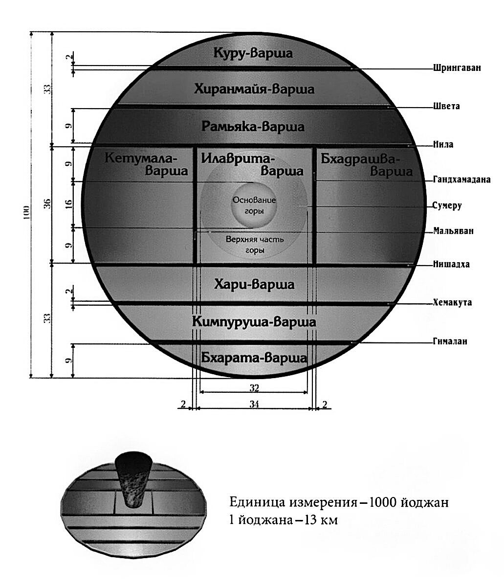
«В Брахма-самхите[161] высшая обитель Кришны, Верховной Личности, названа чинтамани-дхамой, местом, где исполняются все желания. В этой обители, Голоке Вриндаване множество дворцов, построенных из философского камня. Там растут деревья желаний и пасутся коровы сурабхи, дающие сколько угодно молока. В этой обители тысячи богинь процветания (Лакшми) служат Господу, которого называют Говиндой, предвечным, причиной всех причин. Господь играет на флейте. Его божественный облик очаровывает все три мира: Его глаза подобны лепесткам лотоса, а тело цветом напоминает грозовое облако. Облик Господа столь пленителен, что Своей красотой Он затмевает тысячи богов любви. Он носит шафранно-жёлтые одежды, на шее у Него гирлянда из цветов, а волосах красуется павлинье перо» ([1] Бхагавад-гита 8.21, комментарии).
«Божественное царство Вриндавана вечно духовно. Там всегда обитает богиня процветания и бесчисленные гопи[162]. Все они возлюбленные Кришны и потому так же духовны, как и Он Сам. Во Вриндаване Кришна – Высшая Личность и супруг всех гопи и богинь процветания. Деревья во Вриндаване исполняют любые желания. Земля там – из философского камня, а вместо воды течёт нектар. Каждое слово там – как песня, а каждое движение – танец. Во Вриндаване Господь никогда не расстаётся со Своей флейтой. Планета Голока Вриндавана лучезарна, как солнце, и исполнена духовного блаженства. Во Вриндаване духовные коровы дают неограниченное количество духовного молока» ([1] Чайтанья-чаритамрита 2.8.138, комментарии).
«Мир устроен так, что можно рассмотреть его не с точки зрения пространства-времени, а с точки зрения отношений с Богом. И станет понятна структура вселенной. Чем больше у человека вожделения, чем более страстен он к исполнению материальных желаний, тем дальше он от мира духовного, где нет вожделения, нет ложных понятий, нет ложного самомнения, где все живые существа имеют истинное «я», истинную свою природу. И чем больше он погружается в это ложное самомнение, тем в более дальне миры он оттесняется законом кармы.
Лодку, если она не привязана, уносит ветром. Подобно этому, в материальном мире, если хоть один орган чувств не под контролем, через него уже развивается вожделение, подобное сильному порыву ветра, срывающего лодку с пристанища, и уносящего её в открытый океан. Лодка остаётся без управления. И так мы сбиваемся с пути.
Ветер желаний движет живыми существами. Ветер желаний влияет на ум: - ум возбуждается,
- искажает эту действительность,
- вступает в борьбу с иллюзией,
- начинает думать в категориях друг-враг,
- что вся вселенная враждебная,
- нужно её как-то обуздать, подчинить.
И никому в голову не приходит, что нужно обуздать свои чувства, нужно иметь пристанище в истинном знании. Когда человек получает пристанище в истинном знании, то его существование уже сравнивают не с лодкой, а с управляемым кораблём, где есть капитан, команда, какая-то организованная деятельность. И мы уже имеем шанс переплыть этот океан материального существования.
Вот такое представление даётся о материальной вселенной: измерения сознания: измерения вожделения, жадности, гнева.
Есть планеты выше земных. Есть уровень земной во вселенной; он гораздо более разнообразный, чем мы можем представить здесь. И есть уровень ниже Земли.
И ниже Земли – больше вожделения, гнева и злобы. А чем выше от Земли, тем меньше вожделения, гнева и злобы.
На Земле их примерно в равной пропорции: есть и добро, и зло – сражаются, никто не знает, кто побеждает.
А ниже – побеждает больше зла: больше страданий там, больше зависти. И там, ниже Земли, есть такие уровни, где живут очень злобные живые существа. При этом они могут быть великими воинами, обладать большим могуществом, потому что у людей завистливых цель – стать очень сильными. Они имеют сиддхи[163]. Ну а ещё ниже есть места для грешных людей, где они лишаются всех полномочий, и эти планеты существуют только для наказаний. Там нет другого выбора. Всё ниже и ниже – наша вселенная превращается в ад.
На среднем уровне смешанно. А выше – превращается в более райские области. И самая высшая планета – Брахмалока – которая по уровню развития сознания почти считается духовной планетой. Но всё же это область материи.
Вот такая есть градация по диапазонам. И с этой точки зрения мы сможем понять, как устроена вселенная. С точки зрения расстояния-времени мы не сможем это понять: такое расстояние определить, такое время исчислять, пользоваться такими категориями в своей жизни. Мы мало живём, у нас не хватит ни времени, чтобы преодолеть такое пространство, ни воображения, чтобы представить даже это всё» [2].
«– Когда мы прийдём туда, к Кришне, когда заберёт нас Господь, что дальше будет? вы знаете?
– Понятия не имею, что там будет дальше.
– Дальше развитие будет? Или остановится всё, мы выйдем из этой системы?
– Нет, ни то, ни другое. Не будет ни того, ни другого. То, что будет там, ты не сможешь вообразить сейчас, даже представить. Такого дара ты не сможешь себе даже представить. Это не могут представить даже на высших планетах. Сейчас ты не можешь этого представить. Такое чудо не бывает вообще, которое даже нельзя представить. Вот это случится с тобой в духовном мире» [2].
Ведическая космология
Брахманда (вселенная)
В материальном мире бесконечное количество материальных вселенных. Каждая материальная вселенная имеет яйцеобразную форму, оболочка которой состоит из слоёв первоэлементов[164]:
- земли,
- воды,
- огня,
- воздуха,
- эфира,
- ума,
- разума,
- ложного эго,
отделяющих материальный мир от безграничного духовного мира. Область внутри оболочки называется брахманда, или яйцо Брахмы.
В соответствии со Шримад-Бхагаватам (5.16), внутри нашей брахманды находится имеющая форму лотоса Бху-мандала:
«Планетная система Бху-мандала по форме напоминает цветок лотоса, а семь её островов – чашечку этого цветка» ([1] Шримад-Бхагаватам 5.16.5).
Бху-мандала разделяет вселенную на верхнюю райскую часть и нижнюю подземную часть. Подземная часть заполнена водой.
Диаметр Бху-мандалы примерно соотносится с орбитой Урана. Бху-мандала разделена на ряд географических областей, имеющих форму концентрических колец, которые называются океанами и островами (двипами).
«Семь островов упоминаются в Сиддханта-широмани.
Семь островов (двип) называются
1) Джамбу,
2) Шака,
3) Шалмали,
4) Куша,
5) Краунча,
6) Гомеда или Плакша
7) и Пушкара.
Космос подобен воздушному океану. Двипы представляют собой острова в океане космического пространства и потому, так же как острова в океане воды, называются двипами.
Существует также девять кханд (варш). Их названия таковы:
1) Бхарата,
2) Кимпуруша,
3) Хари,
4) Куру,
5) Хиранмайя,
6) Рамьяка,
7) Илаврита,
8) Бхадрашва
9) и Кетумала.
Всё это различные части Джамбу-двипы.
Кхандой или варшей называется долина между двумя горами» ([1] Чайтанья-чаритамрита 2.20.218, комментарии).
«В центре Бху-мандалы находится круглый остров под названием Джамбу-двипа. Он разделён на девять областей, которые называются варшами. Одна из них называется Бхарата-варша. Это область обитания человечества.
В центре Джамбу-двипы располагается гора цилиндрической формы под названием Сумеру. Это ось мира. На вершине этой горы расположен город Брахмы, творца вселенной.
Шримад-Бхагаватам объясняет принципы ведической космологии одновременно географическим и мифологическим языком, что сильно отличается от общепринятого современного подхода.
Это описание используется, чтобы представить четыре последовательные модели устройства мира:
1) карта полярной проекции земного шара,
2) карта солнечной системы,
3) топографическая карта центральной Азии,
4) карта небесной сферы полубогов, высших живых существ.
Если попытаться представить несколько углов зрения на одной карте, то мы неизбежно столкнёмся с противоречиями. Но если понять смысл, лежащий в основе такого подхода, то всё встанет на свои места. Подобно этому, на средневековых картинах изображали несколько эпизодов, происходящих в разное время.
1) При описании Бху-мандалы в Ведах используется очень сложная модель проекции глобуса на поверхность лотоса.
2) Бху-мандала также представляет собой многостороннюю модель солнечной системы. Диск Бху-мандалы до какой-то степени соответствует солнечной системе.
3) Джамбу-двипа, напоминающая по форме втулку колеса, может считаться топографической моделью центральной Азии. Круг Джамбу-двипы разделён на девять областей – варш. Южная область Джамбу-двипы называется Бхарата-варша, которая географически совпадает с Индией и прилегающими областями центральной Азии. Город Брахмы и восемь лока-палов, стражей мира располагаются на вершине горы Меру.
4) Бху-мандалу также можно трактовать как карту небесной сферы полубогов.
Осознать универсальность модели материальной вселенной, приведённой в Ведах, невозможно, не приняв концепцию так называемых измерений пространства. Ведические истории изобилуют рассказами о путешествиях между измерениями-локами с использованием мистических способностей человеческого ума, например, по увеличению и уменьшению размера тела. Идея параллельных миров и связей между ними посредством мистических путешествий объясняет, как миры полубогов и высших живых существ связаны с нашим миром.
Лотос Бху-мандалы представляет собой экзотерические территории Земли и планет. В противоположность этому, космическая ось, простирающаяся перпендикулярно Бху-мандале, наполнена эзотерическими сферами. Эта ось представляет собой путь восхождения или нисхождения души.
В дополнение к орбитам Солнца, Луны и планет, существуют различные миры, или локи над Бху-мандалой, вдоль космической оси. Войти в эти миры возможно только благодаря мистическим способностям, сиддхам. И эти миры доступны только тем душам, которые обладают высокоразвитым духовным сознанием. Например, Махарлока – это мир мудрецов. В этом мире Господь Вишну непосредственно появляется перед своими преданными и собственноручно принимает подношения, предлагаемые на жертвоприношении.
Под Бху-мандалой находятся семь низших миров, описанных как ущелья или расселины внутри земли. Жизнь в этих регионах наполнена райским богатством. Там женщины соблазняют и всячески эксплуатируют мужчин.
Под Бху-мандалой в её низших слоях находится океан Гарбходака с Ананта-Шешей и Гарбходакашайи-Вишну. Океан Гарбходака заполняет низшую половину сферы брахманды. Между океаном Гарбходака и Бху-мандалой находится адский мир и Питрилока, сфера духов ушедших предков.
Вертикальное положение брахманды представляет собой вселенскую форму Бога, которая простирается от низших миров, подошв стоп до высших миров, которые представляет корона на голове.
Уровни во вселенской форме связаны с чакрами позвоночного столба каждого человека. А сам позвоночник называется меру-данда, по названию горы Меру, космической оси. Восхождение души через разные уровни брахманды, вселенной сравнивают с восхождением жизненной силы через чакры в теле.
Как правило, вертикальное положение вселенной представляет путь восхождения и нисхождения души через различные миры и различные уровни сознания. Этот путь расположен перпендикулярно к плоскости Бху-мандалы, миру планетарных орбит.
В ведической космологии звёзды и Луна рассматриваются как небольшие недалёкие объекты, светящиеся отражённым солнечным светом.
Брахманда окружена семью сферическими слоями первоэлементов материи. Каждый из последующих слоёв в десять раз толще предыдущего.
Бесчисленные брахманды, каждая из которых окружена этими слоями, плавают в причинном океане безграничного духовного мира.
Ведическая космология представляет собой сложную систему, имеющую множество значений, как физических, так и метафизических. Она сочетает практическое понимание астрономии с духовными представлениями, чтобы дать полную смысла картину вселенной» [10].
Интерактивные видео о строении мироздания можно посмотреть в этих видео:
Ведическая космология вызывает наибольший процент сомнений и неприятия из-за расхождения со сведениями, предоставляемыми современной наукой.
«Кто-то говорит: Земля плоская, кто-то говорит: Земля круглая. Вот они сражаются сейчас эти люди. Как быть? И там какие-то аргументы есть, и тут какие-то аргументы есть. И что же мне делать? Как же мне поверить в шастры? Кто-то из них прав, кто-то не прав. Как убедиться в этом? Шастры[165] правы? Или современные учёные правы? Или моё представление правильное? Это надо изучать. Но на уровне ума вы никогда не убедитесь в шастрах. Это нужно практиковать и изучать. Шастры дают направление: возможно, на Марсе есть жизнь – это направление. Следующий шаг: проверьте это. Мы должны изучать шастры. Какие-то вещи нам просто дают направление. Вот есть высшие планеты, есть низшие планеты – это направление нашей мысли. Мы не видим эти вещи. У нас нет такого опыта в этой жизни. Это надо изучить. Особым методом. Не физическим. Не построить космический корабль и отправиться исследовать все эти планеты. Есть другой метод: самопознание. Когда вы изучите в себе все эти всевозможные тонкие устройства, внутри вашего тела и ума, вы увидите всё. Шастры не всё описывают, поймите. Лишь те вещи, которые хоть как-то доступны для нашего восприятия. А есть вещи, которые вообще недоступны, их нельзя описать. Вы думаете, что это – все шастры, которые мы знаем? Нет. Объём колоссальный. На высших планетах Шримад-Бхагаватам составлен из 200 000 шлок[166]. Здесь даётся 18 000 шлок. Не пытайтесь понять материальным умом. Изучайте себя. Там всё это описывается для самопознания. Направление. Если вы не принимаете направление, то вы не сможете понять то, что написано в шастрах. Только самопознание. Не напрягайте ум и не думайте: «Верю в это или не верю, это понятно, это непонятно» – не в этом дело. Дело в направлении. Шастры дают направление. Это и будет доказательством, что в этом направлении вы будете развиваться каждый день. В других направлениях вы не будете развиваться. Вы будете вращаться в гунах материальной природы. Никакого развития не будет. Если вы о шастрах говорите, нужно понять, что это божественное направление, высшее направление для нашей мысли и деятельности. И если вы не принимаете, когда читаете что-то в шастрах, – это не причина расстраиваться и терять энтузиазм. Наоборот, это причина для того, чтобы изучать. Наоборот, собрать свою энергию для изучения, для понимания. Вас должно это вдохновлять. Потому что там потрясающие вещи описываются, непостижимые вещи описываются.
Не думайте, что этот ум – есть тот авторитет. Нет, ум не авторитетен. Наше восприятие не авторитетно. Нужно принять направление шастр.
Другого пути нет. Кроме шастр другой информации нет о Боге. Не существует» [2].
«Тот космонавт, с которым мы познакомились недавно на фестивале, он спросил нас:
– Земля круглая или плоская?
– Ну вы же там были. Видели?
– Нет, там не видно. От горизонта до горизонта – всё, что можно охватить глазами. Не понятно. Нужно очень далеко удалиться.
До сих пор есть спор: Земля плоская или круглая? Не могут доказать ни то, ни другое. Есть и такие концепции, и такие. Мы не видим. Не может человек разобраться. И это просто Земля, на которой мы живём. Что там под Землёй, как устроена планета – тоже одни теории, ничего. Поверхность немножко знаем, десять тысяч метров вверх, несколько метров вниз – всё. Диапазон человека, его разума, его опыта – больше нет. Ничего не знает» [2].
Шишумара
«Все планетные системы вселенной находятся под покровительством Полярной звезды, Дхрувалоки. Совокупность этих планетных систем называется Шишумара. Дхрувалока является обителью Господа Вишну в этой вселенной и находится на высоте 16 900 000 км от звёзд семи мудрецов. В планетную систему Дхрувалоки входят планеты бога огня, Индры[167], Праджапати[168], Кашьяпы[169] и Дхармы[170]. Все эти полубоги с огромным почтением относятся к великому преданному Дхруве, который живёт на Полярной звезде. Движимые вечным временем, все планетные системы вращаются вокруг Дхрувалоки, подобно тому, как быки ходят вокруг столба, к которому привязаны. Всю эту вращающуюся систему планет можно представить в образе морского животного, которое называют шишумарой[171]. Голова его наклонена вниз, а тело свернуто кольцом, как у змеи. На конце его хвоста расположена Дхрувалока, вдоль хвоста – планеты Праджапати, Агни, Индры и Дхармы, а у основания хвоста – планеты полубогов Дхаты и Видхаты. На талии шишумары расположены звёзды семи великих мудрецов. Голова его смотрит вправо, а всё тело выглядит как кольцо из звёзд. На правой стороне этого кольца находятся четырнадцать созвездий от Абхиджит до Пунарвасу, а на левой – четырнадцать созвездий от Пушьи до Уттарашадхи. Созвездия Пунарвасу и Пушья расположены на правом и левом бёдрах шишумары, а созвездия Ардра и Ашлеша – на его правой и левой ступнях. Остальные созвездия тоже располагаются на разных сторонах шишумары. Это подтверждают вычисления, сделанные ведическими астрономами» ([1] Шримад-Бхагаватам 5.23, предисловие).
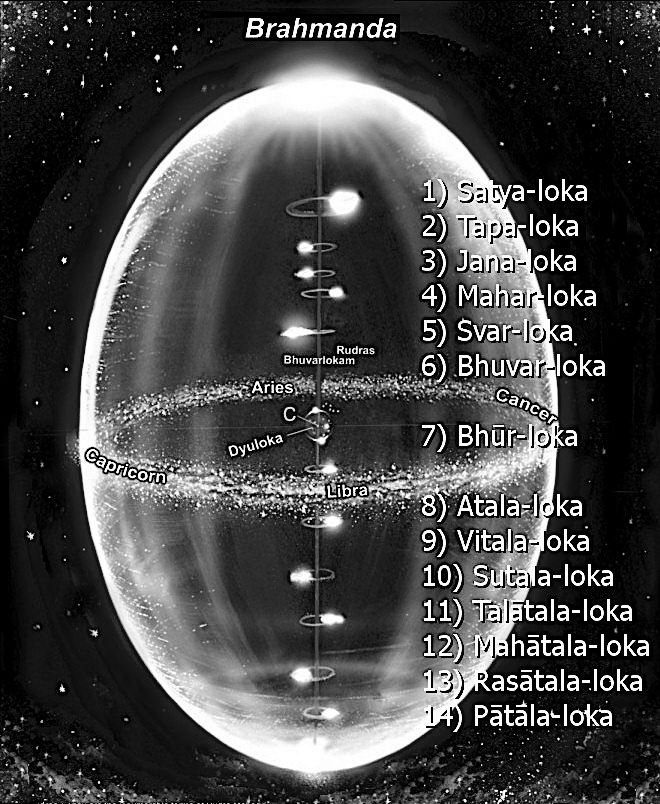
«Луна расположена на 1 300 000 км выше Солнца. День и ночь на райских планетах и на Питрилоке[172] соответствуют периодам роста и убывания луны. На высоте 3 900 000 км над Луной находятся лунные созвездия, а над ними – Шукра-граха (Венера), чьё влияние всегда благотворно для всех обитателей вселенной. На 2 600 000 км выше Шукра-грахи находится Будха-граха (Меркурий), влияние которого иногда благотворно, а иногда нет. А на 2 600 000 км выше Будха-грахи находится Ангарака (Марс), влияние которого почти всегда неблагоприятно. Ещё на 2 600 000 км выше, над Ангаракой, расположена Брихаспати-граха (Юпитер). Эта планета всегда очень благотворно влияет на истинных брахманов. Над Брихаспати-грахой находится зловещая планета Шанайшчара (Сатурн), а над Сатурном – семь звёзд. На них обитают семь мудрецов, которые непрестанно заботятся о благе всей вселенной. Эти семь звезд вращаются вокруг Дхрувалоки – обители Господа Вишну в этой вселенной» ([1] Шримад-Бхагаватам 5.22, предисловие).
«Планета Раху расположена на 130 000 км ниже Солнца. Раху находится ниже Солнца и Луны, но выше Земли. Когда Раху заслоняет солнце или луну, происходит солнечное или лунное затмение. В зависимости от того, как движется Раху – прямо или по кривой, – затмение бывает полным или частичным. На 130 000 км ниже Раху расположены планеты сиддхов, чаранов и видьядхаров, а ещё ниже – такие планеты, как Якшалока и Ракшалока. Под ними находится Земля, а на 910 000 км ниже Земли начинаются низшие планетные системы: Атала, Витала, Сутала, Талатала, Махатала, Расаталаи Патала. Там живут демоны и ракшасы. Вместе со своими жёнами и детьми они предаются чувственным наслаждениям, не помня о том, что им прийдётся умирать и снова рождаться. В эти планетные системы не проникает солнечный свет, но их освещает сияние драгоценных камней на головах обитающих там змеев. Поэтому там почти никогда не бывает темно. Обитатели этих планет не знают ни старости, ни болезней, и им не грозит преждевременная смерть. Единственное, что может оборвать их жизнь, – это время, проявление Верховной Личности Бога» ([1] Шримад-Бхагаватам 5.24, предисловие).
Рай
«Места, где живым существам доступны райские наслаждения, делятся на три типа:
1) высшие райские планеты,
2) райские планеты земного типа
3) и низшие райские планеты.
К райским планетам среднего уровня относятся все, кроме Бхарата-варши[173]. Исчерпав плоды своих благочестивых поступков, живые существа возвращаются с райских планет на Землю. Сначала они поднимаются с Земли на райские планеты, но спустя какое-то время падают обратно. Это называется скитаниями по вселенной – вверх-вниз, вверх-вниз.
Иногда говорится, что часть Бхарата-варши, называемая Кашмир, относится к одной из трёх разновидностей райских планет. Безусловно, в Кашмире есть все условия для материального наслаждения» ([1] Шримад-Бхагаватам 5.17.11, комментарии).
Я был в Кашмире и могу подтвердить: это удивительно красивое место. Ещё при подлёте на самолёте меня удивило количество озёр. Позже я обнаружил, что в Кашмире есть деревни, в которых вместо улиц каналы, реки и проливы, и местные жители перемещаются по деревне на лодках, как в Венеции. Но одновременно с этим я там обнаружил, что люди не очень счастливы. Там уже давно нестабильная политическая обстановка, много военных и каких-то бандитских формирований. Очень часто можно встретить группы людей с автоматами Калашникова, по виду напоминающих каких-то разбойников. Местные жители жалуются на то, что много случаев применения насилия со стороны как бандитов, так и военных.
В Махабхарате (Анушасана-парва 16) приведено более подробное описание четырнадцати миров, планетарных систем нашей вселенной:
7) Бхурлока – наш земной мир – видимый, физический план бытия.
6) Бхуварлока – мир желаний и воображения, астральный план, пространство между Землёй и Солнцем, населённое муни[174], душами усопших и духами-покровителями.
5) Сваргалока – план мышления. Пространство между Солнцем и Полярной звездой, небеса Индры. Мир красоты и божественных форм. Обитель девов[175], апсар[176], киннаров[177], поддерживающих гармонию во вселенной, кимпурушей[178], устраняющих дисбаланс, и музыкантов – гандхарвов[179]. Главной силой, управляющей этим планом бытия, является первоэлемент огня. Всё, что существует здесь, сверкает, искрится и светится, как огонь – именно поэтому существа, населяющие этот план, излучают сияние.
«Там нет ни голода, ни жажды, ни усталости, нет страха холода или жары, не бывает ничего неблагого или такого, что вызывает отвращение, нет никаких болезней. Всюду там веет нежными ароматами, всякое прикосновение приятно, отовсюду там льются звуки, чарующие душу и слух. Здесь нет ни печали, ни старости, нет тревог и страданий.
У тех, кто допущен туда, от тела исходит сияние, и это тело – результат их деяний, а не порождение матери и отца. Там (на небесах) нет ни пота, ни зловония, ни мочи, ни испражнений, пыль не ложится на их одежды, а пышные, дивно благоухающие венки никогда не увядают. Далекие от зависти, печали и усталости, не ведая вражды и заблуждений, счастливо живут там те, что достигли небес.
Вслед за тем (происходит) падение, причём как раз в тот момент, когда душа объята блаженством! Невыносимо отчаяние и муки того, кто попадает в низшие миры после того, как изведал величайшего блаженства. Рассудок мешается у низринутых, мрак наступает на них. Когда увядают венки у того, кому суждено быть повергнутым, его охватывает страх» (Махабхарата Араньяка-парва 247).
4) Махарлока – план равновесия. Обитель великого мудреца Бхригу[180], прародителей человечества Праджапати и других святых отшельников и риши, мудрецов. Живущие здесь мудрецы ещё не достигли полной свободы от перерождений, но они не подвержены повторным воплощениям в течение текущего цикла творения, поскольку находятся в состоянии равновесия.
3) Джаналока – план созидания, первый из миров Брахмы. Обитель могущественных сиддхов, обладателей мистических даров, погружённых в созерцание Вишну. Во время ночи Брахмы (великого разрушения всех существующих форм и явлений, после которого вселенная создается заново), на Джаналоке найдут своё убежище обитатели Сваргалоки и Махарлоки.
2) Тапалока – план аскетизма, второй из миров Брахмы. Обитель йогов и аскетов, ушедших по пути, с которого нет возврата, и сыновей Брахмы – Санат-Кумаров, детей-мудрецов. Они погружены в глубокое подвижничество, целью которого является продвижение вверх, к следующему уровню, Сатъялоке. Это место не погибает с наступлением ночи Брахмы.
1) Сатьялока – план истины, или план реальности, третий и предельный мир Брахмы. Вечная, неразрушимая обитель Брахмы. Живые существа на Сатьялоке живут неисчислимый срок, так как сами стали реальностью.
Нарака
Нарака – это подземное небо, или нижние миры. Планеты семи низших планетных систем имеют такие же размеры, как и Земля. Эти семь планетных систем ещё называют била-сваргой, подземным райским царством.
8) Аталалока (не бездна) – низший астральный план. Мир иллюзий, фантасмагорий и чувственных удовольствий.
Все жители в этом мире являются майяви (магами).
«Там живет демон Бала, сын Майи Данавы, создавший девяносто шесть видов магических способностей. Даже в наши дни некоторые так называемые йоги и свами[181] пользуются этими способностями, чтобы обманывать людей. От зевка демона Балы на свет появились три типа женщин: свайрини, камини и пумшчали. Свайрини выходят замуж только за представителей своего сословия, камини готовы выйти за мужчину любого происхождения, а пумшчали меняют мужей одного за другим. Когда какой-нибудь новый мужчина попадает на Аталу, эти женщины тут же заманивают его к себе и поят дурманящим напитком, приготовленным из снадобья под названием хатака[182]. От этого снадобья половая сила мужчины безмерно возрастает, а женщины только этого и ждут. Соблазнив мужчину страстными взглядами и речами, женщина обнимает его и, обольстительно улыбаясь, побуждает сблизиться с ней и предаваться любовным утехам до тех пор, пока её страсть не будет утолена. Гордясь своей мужской силой, такой человек считает себя сильнее десяти тысяч слонов. «Я достиг совершенства», – думает он. Ослеплённый гордыней и одурманенный, он забывает о неминуемой смерти и мнит себя Богом» ([1] Шримад-Бхагаватам 5.24.16).
В Атале нет смены дня и ночи, что создаёт эффект отсутствия времени. Здесь, как и в других нижних мирах, не светит солнце; они освещаются красным сиянием драгоценных камней на шлемах асуров[183].
9) Виталалока (бездна напротив) – область гнева и богатства.
«Ниже Аталы находится планетная система Витала, где живёт Господь Шива, владыка всех золотых месторождений. Там же обитают его спутники – призраки, духи и прочие. Чтобы производить на свет живые существа, Господь Шива соединяется в половом акте с прародительницей Бхавани, и их животворные начала, сливаясь, образуют реку под названием Хатаки. Когда огонь, ярко разгораясь под порывами ветра, поглощает воду этой реки, а затем с шипением разбрызгивает её, она превращается в золото, которое называют хатакой. Демоны, населяющие Виталу, а также их жёны носят украшения из этого золота и наслаждаются жизнью» ([1] Шримад-Бхагаватам 5.24.17).
10) Суталалока (прекрасная бездна) – мир зависти, столица Нараки, один из самых красивых и роскошных миров во вселенной.
«Ниже Виталы расположена планетная система Сутала, где по сей день живёт великий сын Махараджи Вирочаны – Махараджа Бали, снискавший славу необычайно праведного царя. Когда Господь Вишну, чтобы помочь царю небес, Индре, воплотился в образе карлика-брахмачари, сына Адити, и решил хитростью отобрать у Махараджи Бали все три мира, попросив у него только три шага земли, то Махараджа Бали пожертвовал Ему всё, что имел. Тогда Господь, довольный щедростью царя, вернул ему царство и сделал его богаче самого Индры. Махараджа Бали и поныне преданно служит Верховному Господу, поклоняясь Ему у себя на Сутале» ([1] Шримад-Бхагаватам 5.24.18).
11) Талаталалока (бездна-не бездна) – мир неведения и ложных учений.
«Ниже Суталы находится планетная система Талатала, которой правит демон Майя Данава. Он известен как ачарья, или учитель, всех майяви – магов и чародеев. Однажды Господь Шива, носящий имя Трипурари, защищая обитателей трёх миров, испепелил три царства демона Майи, но позже, довольный им, подарил ему новое царство. С тех пор Майя Данава пользуется покровительством Господа Шивы и из-за этого мнит себя неуязвимым даже для Сударшаны-чакры, оружия Верховной Личности Бога» ([1] Шримад-Бхагаватам 5.24.28).
12) Махаталалока (великая бездна) – мир эгоизма и сновидений.
«Планетная система, расположенная ниже Талаталы, называется Махатала. Там обитают потомки Кадру – огромные многоголовые змеи, известные своей злобностью. Главные среди них – Кухака, Такшака, Калия и Сушена. Все змеи Махаталы живут в постоянном страхе перед Гарудой, птицей, которая носит Господа Вишну. И всё же многие из них беспечно предаются наслаждениям вместе со своими жёнами, детьми, друзьями и родственниками» ([1] Шримад-Бхагаватам 5.24.29).
13) Расаталалока (влажная бездна) – мир Дайтьев и Данавов, заклятых врагов девов[184]. Мир силы. Расаталу по всему периметру защищает ядовитая река Раса, воды которой несут ртуть.
14) Паталалока (нижняя бездна, нага-лока) – мир мести. Обитель нагов и Васуки – царя человекоподобных змей-нагов. Патала соответствует седьмому адскому миру, называемому Какола (чёрный яд). Несмотря на своё название, для живущих на ней Патала хороша и превосходит своей красотой и сокровищами небо Индры. Столица Паталы – Бхогавати (роскошная), в центре неё высится сложенный из золота и драгоценных камней дворец царя нагов змея Васуки. В Патале хранятся огромные богатства, даже у девов вызывающие зависть. Наги Паталы ужасны на вид, на каждой их голове по два рога, между которыми расположены драгоценные камни, рассеивающие тьму Била-сварги своим светом. Наги умны и сведущи в магии, но чрезвычайно легко предаются ярости, поэтому постоянно пребывают в дурном расположении духа. Жёны нагов, наоборот, славятся своей красотой и скромностью.
«Ниже Паталы находится обитель одного из воплощений Верховной Личности Бога, Вишну, – Господа Ананты, или Санкаршаны. Вся эта необъятная вселенная покоится на одной из тысяч голов Господа Анантадевы и похожа на белое горчичное зерно. По сравнению с головой Господа Ананты она кажется совсем крошечной» ([1] Шримад-Бхагаватам 5.25.1-2).
Ад
«Все адские планеты расположены в пространстве между тремя мирами и океаном Гарбходака. Они находятся в южной части вселенной, ниже Бху-мандалы, прямо над водами этого океана.
Там же, между океаном Гарбходака и низшими планетными системами, расположена Питрилока. Все жители Питрилоки во главе с Агнишваттой, глубоко погрузившись в самадхи, размышляют о Верховной Личности Бога и всегда желают добра членам своих семей.
Царством питов[185] правит Ямараджа, необычайно могущественный сын бога Солнца. Он живёт на Питрилоке вместе со своими помощниками, ямадутами. Строго соблюдая законы, установленные Верховным Господом, Ямараджа велит ямадутам хватать души всех умирающих грешников и сразу приводить к нему. Когда души грешников предстают перед Ямараджей, он вершит над ними справедливый суд, учитывая все их прегрешения, и отправляет эти души на соответствующие адские планеты, где их подвергают заслуженному наказанию.
Вот названия двадцати восьми адов:
1) Тамисра,
2) Андхатамисра,
3) Раурава,
4) Махараурава,
5) Кумбхипака,
6) Каласутра,
7) Аси-патравана,
8) Сукарамукха,
9) Андхакупа,
10) Кримибходжана,
11) Сандамша,
12) Таптасурми,
13) Ваджракантака-шалмали,
14) Вайтарани,
15) Пуйода,
16) Пранародха,
17) Вишасана,
18) Лалабхакша,
19) Сарамеядана,
20) Авичи,
21) Аяхпана,
22) Кшаракардама,
23) Ракшогана-бходжана,
24) Шулапрота,
25) Дандашука,
26) Авата-ниродхана,
27) Парьявартана
28) и Сучимукха.
Каждая из этих планет является местом наказания живых существ.
1) К тому, кто силой отнимает у ближнего законную жену, детей или деньги, в момент смерти приходят грозные ямадуты. Набросив на грешника петлю времени, они хватают его и тащат на адскую планету под названием Тамисра. На этой погружённой во мрак планете ямадуты безжалостно избивают грешника и бранят его. Изнурённый голодом и жаждой, он тяжко страдает под ударами лютых посланцев Ямараджи и порой от боли лишается чувств.
2) Тот, кто, обманывая ближнего, тайком прелюбодействует с его женой или растлевает его детей, попадает в ад Андхатамисра. Там он оказывается в очень жалком положении, подобно срубленному под корень дереву. Ещё на пути к Андхатамисре грешника подвергают ужасным пыткам,и от невыносимой боли он лишается рассудка и зрения. Вот почему учёные мужи дали этому аду такое название (слепой).
3) Человек, отождествляющий себя с материальным телом, тяжко трудится день и ночь, стремясь заработать денег для удовлетворения собственных нужд, а также нужд жены и детей. При этом он часто совершает насилие над другими живыми существами.
Такой грешник в момент смерти помимо своей воли расстается и с телом, и с семьей и низвергается в ад Раурава, где его сурово наказывают за жестокое обращение с живыми существами.
За свою жизнь злой человек причиняет страдания очень многим существам. Поэтому, когда он умирает и Ямараджа забирает его душу в ад, существа, которых этот человек мучил, являются к нему в образе кровожадных чудовищ – руру – и терзают его, причиняя ему страшную боль. Учёные мудрецы называют этот ад Раурава. Здесь, на Земле, руру не встречаются, однако известно, что они ещё более злобны, чем змеи.
4) Человека, который поддерживает существование своего тела ценой жизни или благополучия других, неизбежно ждет наказание в аду Махараурава. Там на него набрасываются свирепые кравьяды (разновидность руру). Они рвут грешника на куски и пожирают его плоть.
5) Некоторые жестокосердные люди, чтобы наполнить свой желудок и насладить язык, варят живьём несчастных животных и птиц. За это их осуждают даже людоеды. Когда жизнь таких грешников подходит к концу, ямадуты тащат их в ад Кумбхипака и там варят в кипящем масле.
6) Человек, виновный в убийстве брахмана, попадает на адскую планету Каласутра. Эта планета, окружность которой равна 130 000 километров, целиком состоит из меди. Её поверхность постоянно раскалена: снизу её нагревает огонь, а сверху – палящее солнце.
В этом аду убийца брахмана жестоко страдает, сгорая как снаружи, так и изнутри.
Снаружи его жгут солнечные лучи и огонь, пылающий под поверхностью планеты, а изнутри он сгорает от голода и жажды.
Измученный грешник не знает покоя: он то ложится, то садится, то вскакивает, то мечется из стороны в сторону. Его страдания будут продолжаться много тысяч лет – столько, сколько волосков на теле животного.
7) Человека, который без крайней необходимости отклоняется от пути, начертанного Ведами, слуги Ямараджи бросают в ад Аси-патравана и там нещадно избивают кнутами. Пытаясь спастись от невыносимой боли, грешник кидается то в одну, то в другую сторону, но везде наталкивается на пальмы, чьи листья остры как мечи. Весь израненный, он то и дело теряет сознание или жалобно причитает: «Что же мне делать? Как мне спастись?» Такие страдания ждут каждого, кто пренебрегает заповедями религии, которую избрал.
8) Царя или представителя власти, который наказывает ни в чём не повинных людей либо подвергает телесному наказанию брахманов, после смерти ямадуты бросают в ад Сукарамукха. Там могучие помощники Ямараджи ломают ему все кости и давят его тело, словно сахарный тростник, из которого выжимают сок. Злосчастный грешник то теряет сознание, то жалобно плачет, моля о пощаде, так же как плакали его безвинные жертвы. Такая расплата ждёт всякого, кто наказывает невиновных.
9) По замыслу Верховного Господа низшие существа, такие, как клопы и комары, питаются высасывая кровь у людей и животных. Эти крошечные создания не способны понять, что их укусы причиняют боль. Но лучшие из людей – брахманы, кшатрии и вайшьи – наделены развитым сознанием, и им хорошо известно, какую боль испытывает существо, когда его убивают. Если человек, обладая знанием, лишает жизни или калечит неразумных существ, не способных отдавать себе отчет в своих поступках, он, безусловно, совершает грех. Верховный Господь наказывает такого грешника, низвергая его в ад под названием Андхакупа, где на него нападают птицы, звери, рептилии, комары, вши, черви, мухи и все прочие существа, которым он за свою жизнь причинил страдания. Они набрасываются на него со всех сторон, лишая его сна и покоя, отчего он, измученный, вынужден постоянно блуждать во тьме этого ада. Таким образом, попав в Андхакупу, грешник испытывает те же страдания, что и низшие существа.
10) Человек, который съедает свою трапезу, не поделившись с гостями, стариками и детьми, или принимается за еду, не совершив пять видов жертвоприношений, считается не лучше вороны. После смерти он попадает на самую отвратительную из адских планет – Кримибходжану. Там находится огромное озеро, шириной в 1 300 000 километров, кишащее червями. Став одним из червей в этом озере, грешник пожирает других червей, а те, в свою очередь, пожирают его. Если человек ещё при жизни не искупит свои грехи, ему придётся провести в адском озере Кримибходжаны столько лет, сколько километров составляет ширина озера.
11) Нечестивцу, который крадёт либо отнимает силой у ближнего, особенно у брахмана, золото, драгоценные камни или другую собственность (если его к этому не вынуждают чрезвычайные обстоятельства), уготован ад Сандамша. В этом аду ямадуты обжигают его кожу раскалёнными железными шарами и сдирают её щипцами. Постепенно они разрывают на части всё его тело.
12) Мужчина и женщина, вступающие в греховную половую связь, после смерти оказываются в аду Таптасурми, где их ждёт суровая кара. Помощники Ямараджи жестоко избивают их кнутами, после чего мужчину заставляют обнимать раскаленную докрасна железную статую женщины, а женщину – такую же статую мужчины. Это наказание настигнет всякого, кто виновен в грехе прелюбодеяния.
13) Человек, неразборчивый в половых связях и готовый совокупляться с кем угодно, даже с животными, после смерти попадает в ад Ваджракантака-шалмали. Там растёт огромное хлопковое дерево, всё усыпанное шипами, острыми и могучими, как громовые стрелы. Слуги Ямараджи подвешивают грешника на этом дереве и затем с силой стаскивают вниз, так что эти шипы раздирают всё его тело, причиняя ему страшную боль.
14) Человек, который родился в знатной семье, – например в семье кшатрия, потомка царского рода или государственного чиновника, – но пренебрегает своими религиозными обязанностями и погрязает в пороках, после смерти низвергается в адскую реку Вайтарани. Эта река представляет из себя огромный, заполненный нечистотами ров, который окружает все адские миры и кишит свирепыми морскими чудовищами. Когда грешника бросают в реку Вайтарани, эти чудовища тут же набрасываются на него и начинают пожирать его плоть, но, из-за того, что жизнь этого человека была полна греха, ему не позволено покинуть тело. Постоянно вспоминая свои прегрешения, он безмерно страдает в этой реке из испражнений, мочи, гноя, крови, волос, ногтей, костей, костного мозга, мяса и жира.
15) Потерявшие всякий стыд мужья падших женщин, дочерей шудр, живут как животные, не зная благонравия, чистоты и самоограничения. После смерти они попадают в ад Пуйода, который представляет собой океан гноя, испражнений, мочи, слизи, слюны и прочих нечистот. Шудр, не сумевших подняться на более высокий уровень бытия, бросают в этот океан и заставляют есть всю эту мерзость.
16) Представитель высшего сословия (брахман, кшатрий или вайшья), который держит собак, мулов или ослов и отправляется с ними на охоту, чтобы просто ради забавы убивать диких зверей и птиц, после смерти попадает в ад под названием Пранародха. Там слуги Ямараджи ставят грешника вместо мишени и пронзают его стрелами.
17) Тот, кто гордится своим высоким положением в обществе и приносит в жертву животных только ради того, чтобы поддержать свой престиж,
после смерти попадает в ад Вишасана. Там слуги Ямараджи подвергают грешника изощрённым, мучительным пыткам и в конце концов убивают его.
18) Обуянный похотью и потерявший разум представитель сословия дваждырождённых (брахманов, кшатриев или вайшьев), который, стремясь держать свою жену в повиновении, заставляет её пить извергаемую им сперму, после смерти идет в ад Лалабхакша. Там грешника бросают в поток спермы и заставляют пить её. Половое извращение, когда муж заставляет жену пить его сперму, относится к чёрной магии, – этим занимаются крайне похотливые люди. По их мнению, если жена пьёт сперму мужа, она всегда будет верна ему. Обычно к этому отвратительному виду чёрной магии прибегают только люди из низов общества. Если же это делает человек, принадлежащий к высшему сословию, после смерти он попадает в ад Лалабхакша.
19) Есть люди, которые промышляют воровством и разбоем, подсыпая своим жертвам яд или поджигая их дома. Так же и некоторые члены царских семей или государственные чиновники грабят торговое сословие с помощью непомерных налогов или как-то иначе. Такие демоны после смерти попадают в ад Сарамеядана. Там обитает семьсот двадцать кровожадных псов, чьи зубы подобны молнии. По команде слуг Ямараджи эта лютая свора набрасывается на грешников и жадно пожирает их.
20) Того, кто лжесвидетельствует, мошенничает при заключении сделки или, пообещав дать пожертвование, не сдерживает своего слова, после смерти постигнет суровая кара. Слуги Ямараджи затаскивают такого грешника на вершину горы высотой в 1 300 километров и бросают вниз головой в ад под названием Авичимат. В этом аду негде укрыться: кругом лишь голые скалы. Хотя по форме они напоминают морские волны, воды на всей планете нет ни капли, за что её и назвали Авичимат, «безводной». Грешника снова и снова сбрасывают со скалы, и каждый раз тело его разбивается вдребезги, однако он не умирает, а продолжает без конца подвергаться этому жестокому наказанию.
21) Брахмана или жену брахмана, которые питают пристрастие к хмельному, посланцы Ямараджи бросают в ад Аяхпана. Туда же попадают те, кто предаётся этому пороку во время исполнения священного обета, а также кшатрии и вайшьи, которые под влиянием иллюзии пьют сома-расу. В Аяхпане слуги Ямараджи, встав грешникам на грудь, вливают им в горло расплавленное железо.
22) Низкий, порочный человек, который мнит себя великим и не оказывает должного почтения тем, кто выше его по происхождению, аскетичности, образованности, благонравию или кто занимает более высокое положение в системе варн и ашрамов, ещё при жизни становится подобен мертвецу, а после смерти падает вниз головой в ад Кшаракардама. Там слуги Ямараджи хватают его и подвергают страшным истязаниям.
23) В этом мире есть мужчины и женщины, которые, поклоняясь Бхайраве или Бхадре Кали, приносят в жертву людей, а потом едят их плоть. Такие нечестивцы после смерти отправляются в обитель Ямараджи [в ад под названием Ракшогана-бходжана], где их жертвы, приняв облик ракшасов, острыми мечами разрубают их тела на куски. Точно так же, как раньше эти людоеды с дикими песнями и плясками пили кровь своих безвинных жертв, теперь эти самые жертвы устраивают свой праздник и с наслаждением пьют кровь своих палачей.
24) Некоторые люди подбирают в лесу или в своей деревне зверей и птиц, которые нуждаются в защите. Приютив у себя этих существ, они дают им почувствовать себя в безопасности, а потом пронзают их насквозь острыми пиками, продевают им в раны веревку и забавляются несчастными созданиями, как игрушками, причиняя им страшную боль. Такие люди после смерти оказываются в аду Шулапрота, где слуги Ямараджи пронзают их острыми как иглы копьями. Грешники изнемогают от голода и жажды, а со всех сторон на них набрасываются страшные птицы, похожие на стервятников и чудовищных цапель, и своими острыми клювами разрывают их тела на части. Корчась в страшных муках, эти люди вспоминают грехи, совершенные ими в земной жизни.
25) Люди, которые злобны и жестоки, как змеи, и всегда готовы причинить боль другим существам, после смерти падают в ад Дандашука. О царь, в этом аду обитают пятиглавые и семиглавые змеи. Они пожирают грешников так же, как обычные змеи заглатывают мышей.
26) Человек, который бросал живых существ в колодец, заточал в горную пещеру или в погреб, после смерти попадает в ад Авата-ниродхана. Там его сталкивают в глубокую яму, где он терпит невыносимые муки, задыхаясь от дыма и ядовитых испарений.
27) Хозяин дома, который встречает гостей или странников злобными, испепеляющими взглядами, низвергается в ад Парьявартана. Там на него в упор безжалостно смотрят стервятники, вороны, цапли и другие хищные птицы. Внезапно они набрасываются на грешника и со страшной силой выклёвывают ему глаза.
28) Человек, скопивший большое богатство, очень этим гордится и постоянно думает: «Я так богат. Кто может сравниться со мной?» Неспособный видеть истину, он всё время боится, что кто-нибудь украдёт его деньги, и не доверяет даже старшим членам семьи. Мысль о том, что он может лишиться своего богатства, иссушает его сердце, и он ходит мрачный, похожий на привидение. Ему неведомо истинное счастье и жизнь, свободная от тревог. За грехи, которые он совершал, накапливая деньги, а затем пытаясь сохранить и приумножить своё богатство, он попадает в ад Сучимукха. Там посланцы Ямараджи сурово наказывают грешника, прошивая всё его тело нитью, словно портные, шьющие одежду» ([1] Шримад-Бхагаватам 5.26.5-36).
Вишварупа (вселенское тело Бога)
Во вселенной миров (планетных систем) и живых существ безграничное количество.
«Вишварупа – это единый организм. Как если заглянуть в тело человека – с ума можно сойти. Комбинаций молекул, атомов… Но там порядок. Вот это и самое поразительное. Полный порядок. Столько взаимодействующих друг с другом систем, и в конце концов живое существо проявляется. Мы используем этот порядок, эту гармонию. Мы используем знания. И вселенная устроена как тело Всевышнего, у которого как бы границ нет нашему восприятию. И там порядок. Там много систем: высшие, средние, низшие. Они ещё делятся на подгруппы, уровни по вертикали. Не совсем так просто, как это можно показать на схеме. Все они связаны единым движением. Джагат означает движение. Один порыв. Всё происходит в вихре движения. Какие-то живые существа живут какие-то секунды, какие-то – часы, какие-то – в нашем понимании месяцы и дни, какие-то живут годы, какие-то живут столетиями, какие-то живым тысячелетиями, миллионолетиями. И все они находятся в определённом движении: создают, поглощают. Идёт колоссальный обмен веществ во вселенной движения. И движет этим всем кармическая деятельность – деятельность самих живых существ образует эту вселенную. Они не знают, для чего живут – в полном невежестве. Господь это не делает. Он лишь создаёт платформу для деятельности живых существ: для Брахмы, Праджапати, других. При этом живые существа, находящиеся в этом движении, находятся в вечной борьбе друг с другом. Иначе движения не будет. Божественные и демонические натуры. И начинается двигатель. Картина колоссальная. Этой колоссальной картиной управляет одна всего лишь душа – Сверхдуша. Никакая другая душа не знает, как устроен этот мир. Маленькая часть не может охватить целиком этот мир. Маленькая часть понятия не имеет, в каком мире живёт. Она действует практически неосознанно под влиянием чувств и ума. Но кто-то знает о типе ума, о его чувствах, о его предназначении. И природа отмечает различное место каждому живому существу, которое выполняет свою роль в этом космическом движении, меняя тела, меняя планеты, меняя различные представления о счастье и несчастье, о смысле жизни» [2].
«Планетная система под названием Патала образует подошвы стоп Господа Вселенной, а планетная система Расатала – Его пятки и пальцы ног. Лодыжки Господа – это планеты Махатала, а икры – планеты системы Талатала.
Планетная система Сутала – это колени вселенской формы Господа, а планетные системы Витала и Атала – Его бёдра. Его чресла – это Махитала, а космическое пространство – углубление на Его животе.
Грудь вселенской формы Изначальной Личности – система светозарных планет, шея – планеты Махар, рот – планеты Джанас, а лоб – планетная система Тапас. Высшая планетная система, Сатьялока, является головой Того, у кого тысяча голов.
Его руки – это полубоги во главе с Индрой. Десять сторон света – Его уши, а материальный звук – Его слух. Ноздри этой формы Господа – два Ашвини-кумара, а материальные запахи – Его обоняние. Его уста – это пылающий огонь.
Космическая сфера – Его глазницы, а Солнце олицетворяет собой Его зрение. Его веки – это день и ночь, а движения Его бровей – обитель Брахмы и великих личностей, подобных ему. Его нёбо – властитель вод Варуна, а сок, то есть сущность всего, – Его язык.
Ведические гимны – это мозг Господа, Его челюсти – Яма, бог смерти, карающий грешников. Искусство любви – Его зубы, а обольстительная иллюзорная материальная энергия – улыбка Господа. Весь необозримый океан материального творения – не более чем Его взгляд, который Он бросает на нас.
Скромность – верхняя губа Господа, страстное желание – Его подбородок. Религия – Его грудь, а безбожие – спина. Брахмаджи, порождающий все живые существа материального мира, – гениталии Господа, а Митра-варуны – два Его яичка. Океан – Его талия, а холмы и горы – Его скелет.
Реки – это вены Господа, деревья – волоски на Его гигантском теле, а всемогущий воздух – Его дыхание. Проносящиеся века – движения Господа, а Его деяния – взаимодействия трёх гун материальной природы.
Облака, несущие влагу, – это волосы на голове Господа, рассветы и закаты – Его одеяния, а первопричина материального творения – Его разум. Ум Господа – луна, являющаяся источником всех перемен.
Первооснова материи [махат-таттва] – сознание вездесущего Господа, а Рудрадева – Его эго. Лошадь, мул, верблюд и слон – Его ногти, а дикие животные и все четвероногие находятся в области Его поясницы.
Различные виды птиц – выражение Его безукоризненного художественного вкуса. Ману, прародитель людского рода, – олицетворение Его разума, а человечество – Его обитель. Небожители, имеющие человеческий облик: гандхарвы, видьядхары, чараны и ангелы, – воплощение присущего Ему чувства музыкального ритма, а демоны-воители олицетворяют собой несравненную доблесть Господа.
Лицо вират-пуруши – это брахманы, Его руки – кшатрии, бёдра – вайшьи, шудры же пребывают в сени Его стоп. Все полубоги, которым поклоняются в этом мире, также подвластны Господу, и потому долг каждого – совершать жертвоприношения, принося в жертву всё, чем можно заслужить Его благосклонность ([1] Шримад-Бхагаватам 2.1.26-37).
Место в гунах
Любое место, где мы находимся, несёт в себе определённую конфигурацию гун. Просто присутствуя в этом месте, мы перенимаем качества, которыми заряжено это место. Обладая знанием о гунах, мы сможем понять, где стóит побыть подольше, а откуда нужно скорее сбежать.
Место в благости
Это природа или парк с обильной растительностью. Небольшие деревни в горах, на берегу моря, в лесу, возле реки – это тоже места, попадающие в эту категорию. Живя в таких местах, мы сможем легко сохранять умиротворённое состояние ума.
Здесь описаны идеальные условия для жизни. Естественно, они мало кому доступны сейчас, в Кали-югу. Но кое-что зависит и от нас. Чтобы использовать гуну благости в вашем жилище, можно создать атмосферу спокойствия, умиротворённости, доброты, держать всё на своих местах, избавиться от всего лишнего, каждый день проводить влажную уборку, зажигать благовония, включать духовную музыку.
Южная Индия, особенно западное побережье Аравийского моря – место на Земле, где есть гуна благости. Несмотря на то, что там жарко и влажно, ощущается там очень комфортно. Просто находясь там, автоматически излечиваются все болезни. Там почти нет нищих, обозлённых, обиженных, даже просто обеспокоенных людей. Наоборот, жители Южной Индии очень миролюбивы, умиротворены, доброжелательны. Там готовят невероятно вкусную пищу. Естественно, в их рационе нет мяса, рыбы и яиц. Деревья изобилуют плодами. На рынках такое разнообразие овощей и других продуктов, что это похоже на выставку достижений народного хозяйства. Море тёплое, чистое, прозрачное, ласковое. Солнце всё время в дымке, так что оно не обжигает. Это место в гуне благости.
Место в страсти
Теперь опишем места, которые желательно по возможности избегать. Это места с преобладанием гуны страсти.
Мегаполисы, большие города. Кампусы, места для активной жизни.
Такие места сопровождает развитая инфраструктура, высокий уровень комфорта, вычурность, дизайн помещений.
Также сюда входят торгово-развлекательные комплексы, парки развлечений, мегамоллы, супермаркеты, технопарки, вокзалы, порты и аэропорты.
Место в невежестве
Места, которые надо покинуть при первой же возможности, – это места с преобладанием гуны невежества. Это грязные, тёмные места, подвалы, ночные заведения, места торговли оружием, наркотиками, мясом и человеческим телом, бойни.
Плохо проветриваемые, слишком маленькие каморки.
Кладбища, больницы, тюрьмы.
Трущобы, гетто, рабочие районы.
Мусорные свалки, территории заброшенных заводов и фабрик.
«Жизнь в лесу относится к гуне благости, жизнь в городах – к гуне страсти, жизнь в игорном доме – к гуне невежества» ([1] Шримад-Бхагаватам 11.25.25).
В лесу чище, чем в любой квартире. В лесу нет никакой антисанитарии, как в крупных городах. Потому что город отнимает энергию, отнимает счастье, отнимает здоровье.
«Когда люди достигают счастья в духовной практике, они просто не смогут жить в городах. Это загрязнённый воздух, некачественная искусственная пища в супермаркетах. Это покупная неестественная вода. И когда люди достигают очищения и просветления, они понимают, что в таких условиях жить нельзя и воспитывать детей тоже нельзя. Город – это много чувственных наслаждения, это клоака, это казино, рестораны. Это греховные действия, которые можно видеть прямо на улице. Это много беззакония, воров, проституток, мошенников, взяточников. Город – это рассадник мафиозных структур. Поэтому такие люди, которые уже просветляются, не будут жить в городах; они будут проповедовать в городах: они будут устраивать духовные центры, школы, институты, какие-то проекты, фестивали для людей, чтобы давать им возможность духовной жизни. Но жить такие люди будут на земле, чтобы выращивать здоровую пищу, чтобы дышать чистым воздухом, чтобы были чистые источники воды, чтобы дети воспитывались в естественной среде, привыкали к честному труду, взаимоотношениям с природой, с Богом.
Это естественно произойдёт. Уже сейчас есть в этом необходимость, когда мы сейчас живём в трудных условиях (пандемии, войны), когда экономика наша рушится. Для кого-то тоже может сейчас грозить безденежье и голод. И куда же мы пойдём в этом случае? Только на землю. Надо отнестись серьёзно к этому. Пандемия, война – это только начало, трудности нас ещё ожидают впереди. Поэтому очень важно готовиться всем людям, насколько это возможно, выходить на землю и выращивать хорошую пищу. Не в городах. Ну, если нет земли, можно даже в городе на балконе вырастить что-то.
Если мы очищаем свои ум и чувства, мы сможем различать, что хорошо и что плохо, что чисто, что нечисто, что для нас на самом деле благоприятно. И выясняется, что благоприятна здоровая естественная жизнь, от которой мы ушли в эти города, где просто рассадник греховных действий и чувственных наслаждений.
Нам нужно создавать чистые условия для людей, для нового поколения – чтобы была хорошая экология, чтобы было духовное правильное научное образование, чтобы люди ориентировались и в духовной жизни, и в профессиональной деятельности, и в семейных традициях.
Но город отнимает эту энергию: это пробки, это переезды, это плохой воздух, это раздражение, постоянная неудовлетворённость, конфликты, безденежье, конкуренция, воровство. Даже всё не перечислить, что такое современные города. Но нас подкупает, что есть стадионы, кинотеатры, интернет, эта цивилизация, иностранная одежда, доступная в любом супермаркете. Были бы только деньги. Только ради этого люди и живут.
Это ложное существование, это жалкое существование на самом деле – жить ради денег» [2].
Место, куда мы попадаем после смерти, тоже зависит от гуны, под влиянием которой находится человек при жизни.
«Те, кто пребывает в гуне благости, после смерти поднимаются на высшие планеты; люди в гуне страсти остаются на земных планетах, а те, кто находится под влиянием низшей из гун, отвратительной гуны невежества, попадают в адские миры» ([1] Бхагавад-гита 14.18).
Васту
«В мире, в котором мы живём, есть много энергий. И все они зиждутся на принципе васту. Что такое васту? Васту означает неизменность. Например, секундная стрелка идёт, и вы не можете вернуть ни одну секунду назад. Это васту. Неумолимо. Огонь. Взрослый человек туда засунет руку и получит ожог. И ребёнок, младенец если дотронется, тоже получит ожог. Васту называется. Вот так устроен мир. Мир не под нашим контролем. Это так же верно, как смерть. Вот нужно прежде всего понять: есть законы васту. Они работают точно. В материальном мире не бывает прощения. Совершил преступление – в тюрьму. Не было ещё ни одного случая, чтобы суд просто простил убийцу. Не имеет права. Надо наказать. Васту. Родственники плачут, друзья плачут, а всё равно его накажут: повесят или в тюрьму посадят. Закон есть закон. Мы живём с точки зрения закона в таком жёстком мире. Если хочешь прощения, обращайся к Богу. Прощает Он. Он управляет этим. Сами понимаете: простить может только тот, кто может отменить этот закон» [2].
Васту – это ведическая наука о домах, учитывающая энергии четырёх сторон света.
«Планета имеет своё устройство, своё предназначение. Тут есть направления: Восток – направление истины. Север – направление безличной медитации. Юг – направление кармической деятельности. Запад – направление умственных спекуляций, творчества, выдумок каких-то. Вот мы вечно думаем, что запад выдумывает что-то новенькое. Юг зарабатывает деньги. На севере все стремятся к слиянию с Абсолютом; медитация, безмолвная, безличная, покрытая снегом, вечной мерзлотой. А истина приходит с востока. Почему так? Вот так устроен мир» [2].
Наука васту объясняет принципы выбора участка для строительства дома и расположения в доме комнат, что будет способствовать повышению качества жизни.
Ваступуруша
Ваступуруша – это реальное живое существо, обладающее всеми частями тонкоматериального тела и уязвимыми точками на нём. Поэтому дом надо строить так, чтобы Ваступуруше было комфортно, тогда будет комфортно и всем обитателям дома.
Веды повествуют о том, как Господь Шива сражался с демоном Андхака. Пот Шивы упал на землю, и из него родился демон Ваступуруша. Терзаемый голодом, он начал пожирать всё, что попадалась ему на пути. Полубоги отправились за помощью к Господу Брахме и тот велел им удерживать демона лицом вниз. Сорок пять полубогов набросились на демона и прижали его к земле. После такого усмирения Брахма благословил Ваступурушу и назначил повелителем и опекуном всех домов и участков земли.
Ваступуруша так расположен в пространстве: ступни в юго-западном углу, а голова в северо-восточном углу. Поэтому северо-восточный угол считается в васту самым важным.
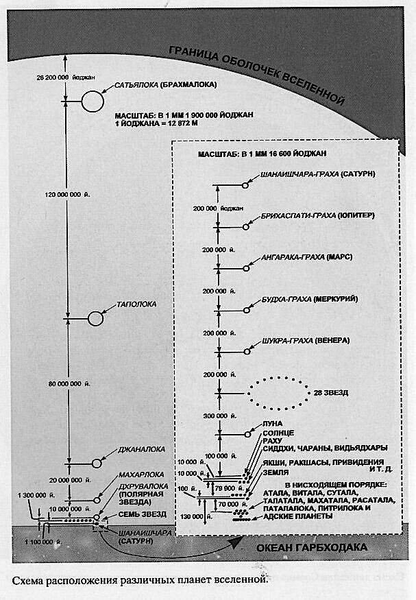
Принципы васту
«Основные принципы науки васту следующие.
Восточное направление принадлежит Индре, царю полубогов. С востока начинается рассвет.
Западом управляет Варуна, полубог воды. Он контролирует дождь, океаны, моря, озёра, реки.
Северное направление находится под контролем Куверы, покровителя богатства и благополучия.
На юге главенствует Яма – повелитель смерти.
Юго-восток принадлежит Агни, полубогу огня. При планировании дома в этом направлении должна быть кухня.
Юго-западное направление находится под покровительством Найрути – полубогу разрушения и царю демонов. Здесь недопустимо размещение санузлов, туалетов, ванных, колодцев.
На северо-западе господствует Вайю, полубог ветра. Здесь не должны строиться высотные здания. В этом направлении также не надо сажать высокие деревья.
На северо-востоке располагается система водоснабжения и канализация» [6].
Все пригорки, скалы, насыпи и раскидистые массивные деревья должны быть расположены от земельного участка к югу и западу.
Земля покато спускается к северу и востоку.
Это основной принцип васту: северо-восточный сектор, где находится голова Ваступуруши, должен быть ниже.
Водоём должен быть ближе к голове Ваступуруши.
Участок должен быть выровнен по сторонам света.
Лучше всего, если земельный участок квадратный или прямоугольный.
Лучше избегать участков в форме треугольника, круга, овала и других геометрических фигур. Если всё же достался участок такой формы, выделите на нём квадрат или прямоугольник, обнесите его стеной, а оставшуюся землю используйте под сад.
Яма или бугор в центре участка неблагоприятны.
Не допускается соседство с кладбищами, заводами и фабриками.
Нежелательно расположение участка между двумя другими участками, если его площадь меньше, чем у соседей.
Нежелательно жить в доме, который зажат между двумя и более высокими зданиями.
Расширять участок лучше всего к северу, востоку, или северо-востоку.
1. Кухня
Кухня должна быть на юго-востоке дома, под покровительством полубога огня.
В восточной части кухни оборудуется площадка для приготовления пищи.
Плита ставится так, чтобы хозяйка дома готовила пищу, стоя лицом к востоку в южном секторе кухни.
Плита не должна касаться восточной и южной стен. Для этого можно использовать плинтус.
Мойка находится в северо-восточном углу кухни.
На восточной стене могут быть большие окна и вентиляторы, а на южной стене маленькие окошки.
Вытяжку лучше расположить у восточной стены, ближе к юго-восточному углу.
Дверь располагается с северной стороны северо-восточного угла или с запада в северо-западном углу. Допускается также с восточной стороны.
Полки вешаются на южной и западной сторонах.
Кран с водой устанавливается в северо-восточном углу.
2. Столовая
Наилучшим расположением для столовой является западная часть дома. Эта сторона управляется Сатурном и символически представляет голод.
Между кухней и столовой нежелательно иметь лестницу.
Вкушать пищу благоприятно лицом на восток.
До того, как люди пойдут обедать, надо накормить домашних зверей и птиц.
Дверь в столовую можно установить с востока, севера или запада. Дверь должна плотно закрываться, не оставляя щели внизу.
Обеденный стол желательно иметь квадратный или прямоугольный. Не надо придвигать его к стене.
Хозяину, его жене и старшему сыну лучше сидеть в юго-западной части столовой.
Рядом со столовой не должно быть туалета.
Можно установить кран для мытья посуды. Умывальник лучше расположить на севере или востоке столовой.
Дверь в столовую и входная дверь в дом не должны быть напротив друг друга.
Цвет стен в столовой может быть светло-голубой, жёлтый, светло-зелёный, нежно-розовый, бледно-оранжевый, кремовый.
Благоприятны зеркала на восточной или северной стене.
Картины природы, рисунки в столовой создают радостную, счастливую атмосферу. На картинах может быть изображено восходящее солнце, красота природы. Но без хищных зверей.
3. Дом и брахмастхана
Дом желательно расположить либо в центре участка, либо к юго-западу.
При необходимости, дополнительная постройка может стоять с юго-запада, но не примыкать к основному зданию.
Не рекомендуется П-образная, треугольная и Г-образная форма дома.
Категорически не рекомендуется строить разноуровневые здания. Это плохо сказывается на благополучии и достатке.
То же правило применяется и к скатам крыши. Лучше симметричная двухскатная крыша.
Центральное место в доме всегда отводится для внутреннего дворика. Если дом разбить на 81 квадрат, то средние 9 и есть брахмастхана. Это район вокруг пупка Ваступуруши. Хозяин должен заботится о брахмастхане. Не должно быть в её зоне никакой грязи или отбросов. От этого возникают большие проблемы. В зоне брахмастханы можно устроить семейный алтарь. Не должно быть в этой области перегородок, колонн, балок, арматуры, пожарных приспособлений, энергокоммуникаций, туалетов, лифтов, кладовок, лестниц.
В комнате, где обучаются дети, окрасьте стены в светло-зелёный цвет. Это активизирует способность к концентрации внимания.
Для хорошего сна окрасьте стены спальни в оттенки голубого цвета.
Все антресоли, стеллажи и платяные шкафы должны находиться с южной и западной сторон комнат.
Общее число дверей на этаже должно выражаться чётным числом, не оканчивающимся на ноль. Это относится также к окнам и вентиляционным отверстиям.
Юго-восточная зона дома – это зона Агни, огня. Если Агни не доволен, то есть вероятность, что в семье будут огорчения, плохое здоровье, финансовые проблемы и супружеские разногласия.
Чтобы удовлетворить Агни, надо в юго-восточном углу установить фонарь, лампу с фитилём или электролампу так, чтобы свет был направлен прямо в потолок. На восточной стене юго-восточного сектора можно поместить зеркало. Такие электроприборы, как телевизор, видео, радио, холодильник, стиральную машину можно поставить в юго-восточных углах комнат.
4. Подвал и погреб
Подвал и погреб лучше всего располагать на севере или востоке.
Вентиляцию лучше располагать на северо-западе.
Жить в подвалах нельзя, если хотя бы четверть высоты стен не находится над уровнем земли и проникают солнечный свет в период между семью и десятью часами утра.
Лучше выкрасить стены подвала в белый цвет.
Гаражи, мусорные баки и канализационные отстойники лучше располагать на северо-западе. Они не должны касаться стен, огораживающих территорию, или фундамента дома.
Гараж можно ещё построить на юго-востоке. Гараж не должен примыкать к главному зданию.
5. Спальня
Спальню можно размещать на юге и западе.
Кровати должны находиться в юго-западном углу спальни.
Ночной столик должен быть в восточном или северном направлении.
Если в комнате есть письменный стол, то не сто́ит располагать его в западной или восточной части.
Телевизор, отопление, электросеть должны быть в юго-восточном углу комнаты.
Шкаф с одеждой лучше расположить в северо-западной или юго-западной части.
По возможности, дверь в спальню должна быть закрыта бо́льшую часть времени. Она может быть с любой стороны, кроме юга.
Юго-западный угол спальни никогда не должен оставаться свободным.
Если ванная, туалет, раздевалка присоединены к спальне, то они должны располагаться на северо-западе или юго-востоке.
Соотношение размеров для кровати три к пяти. Кровать не должна быть плотно приставлена к стене.
Расположите кровать так, чтобы вставать с правой ноги, а потом двигаться в восточном направлении.
Не нужно, чтобы в спальне был денежный сейф или тайник.
В собственном доме человек должен спать головой к востоку или югу, в гостях можно и к западу, но никогда к северу. Запад даёт процветание, а юг – здоровье. Юг известен как ямастан, место Ямараджа. После сна ногами к югу, человек может ощутить боль, онемение в груди и ногах, это может привести к болезни.
В северной и восточной частях спальни надо оставлять больше свободного места.
Не носите еду в спальню и не ешьте в кровати.
6. Туалет
Лучшее расположение туалета на северо-западе.
Туалет желательно разместить за пределами главного здания.
Сливная яма или канализация не должна быть в южном направлении.
Вместо унитаза лучше использовать чашу генуя. Унитаз вреден для здоровья. Человек в туалете должен быть обращён к северу или востоку.
Зеркала могут быть на северной и восточной стенах.
Туалет должен быть на 50 см выше уровня земли.
Двери в туалет должны быть на востоке или севере.
Краны с водой должны располагаться на юго-востоке или юго-западе.
Пол в туалете можно сделать с небольшим наклоном к востоку или северу.
Не желательно использовать в туалете мрамор и кафель.
Цвет стен в туалете можно сделать в светлых тонах.
7. Колодец
Колодец копается сразу после выбора места под строительство.
Зона для колодца – север или северо-восток.
Колодец должен быть квадратным в сечении и глубоким.
Колодец нежелательно делить на два дома.
8. Канализация
Канализация не должна быть на юго-востоке, северо-востоке, юго-западе.
Канализационная система должна быть удалена в плане на 50 см от всего. Она не должна соприкасаться ни с чем-либо рядом.
Вода должна стекать в восточную или западную стороны.
Канализация не должна быть выше цоколя.
9. Ванная
Ванная размещается на востоке, чтобы человек омывался не только водой, но и утренними лучами солнца. На восточную сторону должны выходить окна.
Наклон пола надо сделать к северо-востоку, чтобы стекала вода.
Краны и душ располагаются на севере, чтобы вода стекала к северо-востоку.
Ванну можно поставить на западной стороне изголовьем к югу.
Дверь нельзя ставить на юго-западе.
Стиральную машину поставьте на северо-западе.
Пол должен быть каменный и не скользкий.
В ванной зеркала располагаются на востоке или севере, но только не в южной стороне.
Шкаф с одеждой и полотенцами должен находиться в северо-западном углу.
Цвет стен и кафеля в ванной должен быть светлых оттенков.
Совмещение в одной комнате туалета и ванной не желательно, но если это так, то расположить это помещение лучше на западе или северо-западе.
Баня с электропечью размещается в северо-восточном углу участка, а с дровяной печью – в юго-восточном.
Баня не должна примыкать вплотную ни к зданию, ни к забору.
10. Двери и окна
Нельзя размещать входную дверь в середине здания, так как она разбивает семью.
Высота двери должна минимум в два раза превышать её ширину, идеально – три ширины.
Дверная коробка должна быть прямоугольная, а над коробом – арка.
Дверь должна открываться наружу по часовой стрелке.
Входная дверь должна быть привлекательной, прочной и тяжёлой и укреплена металлической обшивкой.
Входную дверь можно украсить изображением на уровне глаз входящего домашнего божества, богини Лакшми, коровы или омкары[186].
Глазок в двери неблагоприятен, лучше сделать небольшое окно рядом с входной дверью.
Пороги важны как защита от насекомых, так и как гармонизатор энергий разных комнат.
Перед парадной дверью обычно делают ступеньки.
Перед дверьми не должно быть препятствий: углов, лифта, перил лестницы, столбов, колонн.
Верхняя линия всех дверей и окон должна проходить на одном уровне, кроме входной двери, которая может быть выше других.
Двери в доме не должны быть скрипучими.
Общее число дверей, должно быть чётным, но не должно быть кратным десяти.
Если внешняя сторона двери закрашена чёрным, владелец столкнётся с трудностями.
Если дверь имеет трещины или слишком старая, для владельца наступят тяжёлые времена и трудности в обществе.
В одной комнате не должны оставаться представители разных полов наедине. Это возможно обеспечить, если двери открыты в другую комнату, где есть люди.
Общее число окон не должно быть кратным десяти.
Площадь оконной поверхности в северо-восточном секторе должна быть больше, чем в юго-западном.
11. Сад и деревья
Сад не только увеличивает силу здания, но и приносит спокойствие его жителям.
Рекомендуется создавать искусственные пещеры, украшенные ветвями деревьев, листьями и ползучими растениями, искусственные горы и тому подобное.
Посадка плодовых и цветочных деревьев является благочестивой деятельностью, которая приносит благоприятные плоды.
Сад устраивается на северо-западе от дома.
Молодые деревья сажают на большом расстоянии друг от друга – 1,8 метров.
Деревья должны быть защищены стенами, огораживающими территорию.
Массивные лиственные деревья сажают на юго-западе, но не на северо-востоке, а то они будут поглощать все солнечные лучи.
В юго-западном секторе можно устроить сад камней.
Деревья надо сажать так, чтобы их корни не проросли в фундамент и не разрушили его.
В северо-восточном секторе можно посадить лекарственные растения и цветы.
Нельзя сажать деревья перед входной дверью.
Срубите большие деревья в северо-восточном секторе. Вечером проведите пуджу[187], а утром спилите, чтобы деревья упали на восток или север.
Большие деревья лучше сажать не возле дома, а вокруг, образуя забор вокруг участка, но так, чтобы корни не вредили стенам дома.
Комнатные растения, кроме кактусов, роз или лечебных растений, нужно расположить с четырёх сторон у каждой стены дома.
В доме не должно быть растений с берега реки.
Нельзя принимать растения от человека, которому вы не симпатизируете.
Вьющиеся растения не надо держать в доме.
Лучшее время для посадки с девяти часов утра до трёх часов дня.
Деревья и кустарники с ягодами около дома лучше не сажать, так как они в ночное время вырабатывают вещество, опасное для здоровья. Это может нарушить сон.
Есть деревья, обладающие солнечной силой. Это все фруктовые деревья. Фрукты олицетворяют силу солнца. Орехи тоже связаны с силой солнца.
Деревья – слуги хозяина дома, и хозяин их должен защищать.
Все эти рекомендации в современных квартирах часто невыполнимы. Например, в типовых многоквартирных домах туалет и ванная часто расположены рядом с кухней. И чтобы исправить ситуацию, могут потребоваться неоправданные финансовые затраты, связанные с переносом стен. Мы рекомендуем применять разумные решения и не совершать сверхусилий для приведения своего жилища в соответствие с законами науки васту. Сделайте всё посильно возможное. И Ваступуруша оценит ваши усилия.
«Квартира на каком-то этаже – это уже не по васту. Туалет и кухня через стенку – уже не по васту. Вы живёте в подъезде – не по васту. Под вами квартира – не по васту, над вами квартира – не по васту. И слева и справа – всё не по васту. Выгляните в окно – там всё против васту.
Я не знаю, как устроить по васту жизнь в квартире. По васту сейчас жизнь не устроена в городах. Неблагоприятно жить в таких городах уже, в принципе. Поэтому живите на земле. Хотя бы время от времени, регулярно, какой-то клочок земли имейте и что-то делайте на нём. Это – по васту. Всем семейным людям очень важно иметь землю, свой кусок земли. Пандемия, война… Мало ли, что нас ждёт? Гарантия нашей жизни – это земля. Не квартира» [2].
6. Астрология
«Влияние звёзд на живое существо, вычисляемое астрономами, не предположение, а реальность. Законы материальной природы постоянно управляют живым существом так же, как законы государства – гражданами. Действие законов государства можно наблюдать материальным зрением, но законы природы более тонки, поэтому они недоступны нашему грубому материальному видению.
Законы природы так тонки, что на каждую часть нашего тела воздействуют определённые звёзды, и живое существо получает действующее тело, в котором оно благодаря таким манипуляциям астрономического влияния может отбыть присуждённое ему наказание. Поэтому судьбу человека можно определить по расположению звёзд в момент его рождения, когда опытный астролог составляет достоверный гороскоп. Это великая наука, и то, что её неправильно используют, ещё не доказывает её бесполезность.
Это особое расположение звёзд не зависит от воли человека – этим процессом управляют представители Верховного Господа. Разумеется, всё это делается в соответствии с добрыми или дурными делами живого существа. Именно поэтому живому существу следует совершать благочестивые поступки. Только благодаря праведным поступкам человек может получить право владеть богатством, быть образованным и иметь красивое тело» ([1] Шримад-Бхагаватам 1.12.12, комментарии).
Звёзды (планеты) – это не просто случайно возникшие космические объекты. Они представляют вполне конкретные личности полубогов, имеющие свой характер. Осознавая это, мы можем выстроить личные отношения с каждым из этих полубогов, которые захватывают наше сознание (грахи) и таким образом творят карму. Игнорируя действия этих великих сил, мы уподобляемся рыбам, не способным увидеть океан.
Расположение небесных тел в натальной[188] карте рождения указывает, над чем человеку стоит работать в этом воплощении, и является показателем эволюции нашей души в её путешествии из жизни в жизнь.
Таким образом, планеты могут как возвышать нас, так и тянуть вниз, в зависимости от уровня нашего понимания энергетических законов космоса. Чем более узкое наше сознание, тем тяжелее будет переноситься карма. Однако не стоит воспринимать положение планет как приговор. Осознавая влияние планет, человек может выйти за пределы обусловленности и обрести свободу. Целью ведической астрологии является не внушение нам чувства зависимости от внешних сил, а помощь в раскрытии потенциала души.
Бхавы (дома гороскопа)
«Перед тем, как материальная вселенная была заполнена живыми существами, была создана среда обитания. Понятие домов в астрологии можно рассматривать как обиталища планет. Это секторы гороскопа[189], которые связаны одновременно со вселенским телом и частями нашего грубого и тонкого тела.
Бхавы (дома[190] гороскопа) представляют собой двенадцатичастное деление неба. Всего в гороскопе двенадцать домов» [6].
Бхавы – это участки неба, характеризующие в гороскопе различные сферы жизни и проявления человека или объекта, для которого составлен гороскоп.
1. Тану-бхава
Тану-бхава (дом тела) символизирует:
- тело человека,
- обстоятельства рождения,
- эго – каким образом живое существо через это тело себя проявляет:
- внешность,
- состояние тела,
- здоровье,
- иммунитет,
- голову,
- начало жизни,
- детство.
2. Дхана-бхава
Дхана-бхава (дом богатства, пищи, знания) символизирует:
- лицо
- и всё то, что расположено на лице:
- рот,
- глаза,
- нос,
- язык,
- всё, что поступает к нам через рот: пищу,
- память,
- способность сохранять знание,
- кровных родственников.
3. Сахаджа-бхава
Сахаджа-бхава (дом братьев, сестёр, коммуникации) символизирует:
- горло,
- уши,
- руки,
- плечи,
- ключицы,
- бронхи,
- общительность,
- младших братьев и сестёр,
- напористость,
- смелость,
- инициативу,
- предприимчивость,
- энергичность,
- жизненный тонус,
- терпеливость,
- способность доводить дела до конца,
- способность договариваться,
- вести переговоры,
- короткие поездки на небольшие расстояния,
- соседей,
- тех, кто находится рядом с вами.
4. Матру-бхава
Матру-бхава (дом матери) символизирует:
- грудную клетку
- и то, что внутри:
- сердце,
- лёгкие,
- молочные железы,
- грудной раздел позвоночника,
- то, что находится в сердце:
- веру,
- волю,
- желания,
- счастье,
- ощущение уюта,
- комфорта,
- эмоции,
- интуицию,
- недвижимость,
- среду вашего обитания,
- собственность,
- земельные участки,
- транспорт,
- средства передвижения,
- водные просторы:
- океаны,
- реки,
- образование:
- начальное,
- среднее.
5. Путра-бхава
Путра-бхава (дом детей) символизирует:
- брюшную полость,
- место вынашивания детей,
- желудок,
- пищеварительную систему,
- разум,
- огонь пищеварения.
6. Шатру-бхава
Шатру-бхава (дом врагов) символизирует:
- нижнюю часть живота,
- мочевой пузырь,
- кишечник
- тонкий,
- толстый,
- болезни,
- врагов,
- трудности,
- долги,
- аварии,
- ранения,
- вашу способность преодолевать трудности
- и болезни,
- целительство,
- медицину,
- борьбу с врагами,
- суды,
- судебные тяжбы
- и людей, которые работают в судебной системе,
- спортивные соревнования,
- конкуренцию,
- принцип служения
- и подчинения,
- слуг,
- работу по найму,
- службу в
- армии,
- полиции,
- силовых,
- карательных
- и режимных органах.
7. Калатра-бхава
Калатра-бхава (дом брака и партнёра) символизирует:
- внешние половые органы,
- репродуктивную систему,
- брак,
- партнера по браку,
- сверстников,
- окружающий мир,
- отношения с внешним миром,
- партнёров,
- свой индивидуальный бизнес,
- командировки,
- деловые поездки за границу.
8. Мритью-бхава
Мритью-бхава (дом смерти) символизирует:
- внутренние половые органы,
- выделительную систему:
- анус,
- мочеполовая система,
- почки,
- различные болезненные трансформации,
- смерть,
- различные кризисы,
- нехватку:
- денег,
- времени,
- сил,
- здоровья,
- опасности
- и страхи.
9. Бхагья-бхава
Бхагья-бхава (дом удачи) символизирует:
- тазобедренный сустав,
- бёдра,
- поясницу,
- копчик,
- отца,
- начальника,
- учителя,
- руководителя,
- авторитетных лиц,
- удачу,
- высшее знание,
- философию,
- духовность,
- религию,
- поклонение,
- мораль,
- справедливость,
- закон,
- далёкие поездки за границу,
- путешествия,
- туризм,
- международные дела,
- высшее образование, особенно
- юридическое,
- дипломатическое
- и духовное.
10. Карма-бхава
Карма-бхава (дом работы) символизирует:
- колени,
- статус жизни,
- насколько крепко человек стоит на ногах,
- утвердился в обществе,
- работу,
- профессию,
- специальность,
- карьеру,
- способность влиять на внешний мир,
- популярность,
- славу,
- известность,
- полдень,
- зенит.
Солнце в этом доме максимально сильно.
11. Лабха-бхава
Лабха-бхава (дом достижений и приобретений) символизирует:
- голени,
- лодыжки,
- голеностопы,
- источники дохода,
- прибыль,
- приобретения,
- победу,
- подарки,
- премии,
- выигрыши,
- друзей,
- старших родственников, особенно
- старших братьев
- и сестёр,
- организации,
- партии,
- коллективы,
- духовные братства,
- традиции,
- общественную деятельность,
- работу в команде,
- командные мероприятия.
12. Вьяя-бхава
Вьяя-бхава (дом потерь) символизирует:
- стопы,
- потери,
- благотворительность,
- отречение,
- одиночество,
- отчуждение,
- изоляцию,
- болезни,
- тюрьму,
- монастыри,
- реанимацию.
- освобождение души,
- космос,
- далёкие земли,
- тайных врагов,
- подсознание,
- внутренних врагов,
- внутренние комплексы,
- спальни,
- сон,
- качество сна,
- посмертное существование души.
Даши (знаки зодиака)
«Даши (знаки зодиака) – это двенадцать секторов по тридцать градусов, на которые в астрологии разделён зодиакальный пояс. Каждому из этих участков приписываются определённые метафизические свойства, играющие роль при анализе гороскопов. Просим обратить внимание, что общепринятое в современном обществе отождествление себя с каким-либо знаком зодиака практически ничего не объясняет. Так называемые гороскопы, которые публикуют в газетах и журналах, не имеют ничего общего с настоящей астрологией» [6].
«Знак Зодиака, появляющийся на восточном небосклоне в определённый момент времени и в отношении определённого участка Земли, называется лагна (асцендент). Разные планеты во главе с Солнцем проходят через Зодиак. С севера на юг Зодиак простирается на 90 градусов, а с востока на запад – на 360 градусов. Второй и последующие знаки вместе с восходящим знаком (джанма-лагной) определяют двенадцать положений (лагн):
- внешность,
- богатство,
- братья,
- образование,
- сыновья,
- враги,
- жена,
- смерть,
- удача,
- род деятельности,
- доходы
- и расходы»
(Чайтанья-Бхагавата, комментарии Бхактисиддханты Сарасвати).
1. Меша (Овен)
Ключевая фраза: я есть.
Главный талант: смелость.
Главная слабость: поспешность.
Цель: стать лидером.
Этот подвижный, мужской, огненный знак делает человека:
- энергичным,
- грубоватым,
- инициативным,
- азартным,
- решительным,
- поспешным,
- импульсивным,
- вспыльчивым,
- непоседливым,
- нетерпеливым,
- полным энтузиазма,
- бестактным,
- смелым
- и склонным к риску.
Овен – новатор и пионер, который не боится прокладывать новые пути.
Это человек-таран. Все планеты в Овне обретают узконаправленную пробивную силу.
Связь с первым домом тела даёт сосредоточенность на теле, на своём эго.
Мужская природа знака даёт решимость.
Хозяин знака – Марс – даёт агрессию и энергичность.
Подвижная природа знака даёт поспешность и импульсивность.
Стихия знака – огонь – даёт энергию преобразования, желание что-то переделать, перестроить.
Овен хорош для таких профессий, которые требуют решительности, силы и реакции. Часто это:
- военные,
- спортсмены,
- спасатели,
- пожарные,
- работники службы спасения,
- полицейские,
- воины,
- механики,
- электрики,
- строители,
- путешественники,
- химики,
- пиротехники,
- охранники,
- стрелки,
- руководители,
- хирурги,
- зубные врачи,
- работники металлургической промышленности,
- забойщики скота,
- столяры,
- плотники,
- ремонтники.
2. Вришабха (Телец)
Ключевая фраза: у меня есть.
Талант: терпение, верность.
Слабость: упрямство.
Цель: наслаждение чувств.
Женский, неподвижный знак стихии земли делает человека:
- неторопливым,
- рассудительным,
- консервативным,
- терпеливым,
- склонным к прощению,
- обстоятельным,
- эстетичным,
- практичным
- и прагматичным.
Человек под влиянием Тельца
- очень привязан к комфорту,
- любит стабильность,
- природу,
- сельское хозяйство,
- очень разборчив в пище,
- придирчиво
- и долго всё рассматривает перед тем, как сделать выбор.
Планеты в Тельце обретают упрямую, замедленную и стабильную природу.
Связь со вторым домом богатства, пищи, знания склоняет к накопительству, коллекционированию.
Женская природа знака даёт мягкость.
Неподвижная природа знака даёт неторопливость.
Хозяйка знака – Венера – даёт эстетизм.
Стихия знака – земля – даёт практичность.
Тельцы склонны выбирать работу, требующую терпения, постоянства, вкуса, связанную с:
- землёй,
- цветами,
- растениями,
- недвижимостью,
- искусствами,
- предметами красоты,
- пищей,
- финансами,
- торговлей ценными бумагами,
- модой,
- одеждой,
- индустрией развлечений.
В целом Тельцы довольно приятны в общении, терпеливы и покладисты, если они получают свою долю наслаждения. В противном случае обычно спокойный бык может поднять обидчика на рога.
3. Митхуна (Близнецы)
Ключевая фраза: я думаю.
Талант: эрудиция, любознательность.
Слабость: непостоянство.
Цель: передача знания.
Мужской, дуальный знак стихии воздуха делает человека:
- активным,
- общительным,
- восприимчивым,
- эрудированными,
- изобретательным,
- гибким,
- остроумным,
- красноречивым,
- раздражительным,
- непостоянным.
Близнецы способны анализировать ситуацию с нескольких сторон, могут делать несколько дел одновременно, но из-за непостоянной стихии воздуха бывают поверхностными, и им сложно доводить дела до конца.
Связь с третьим домом братьев, сестёр, коммуникации делает Близнецов знаком информации и коммуникаций.
Мужская природа знака даёт активность.
Дуальная природа знака даёт желание всё совмещать и заниматься одновременно несколькими делами.
Хозяин знака – Меркурий – даёт гибкость, моложавость и сообразительность.
Стихия знака – воздух – даёт лёгкость, спонтанность, неорганизованность, непостоянство.
Близнецы склонны трудиться в сферах, связанных с:
- информацией,
- цифрами
- и фактами,
- статистикой,
- коммуникацией,
- прессой,
- переводами,
- литературой,
- редактурой,
- издательством,
- рекламой.
Их типичные виды деятельности:
- маркетинг,
- торговля,
- воздушный транспорт,
- логистика,
- курьерские службы,
- дипломатия,
- секретарское дело,
- преподавание,
- почта,
- интернет-проекты,
- компьютеры,
- бухгалтерия,
- торговые агенты,
- посредники,
- медиаторы.
Планеты в Близнецах становятся передатчиками информации.
4. Карката (Рак)
Ключевая фраза: я чувствую.
Талант: интуиция.
Слабость: сентиментальность.
Цель: обретение стабильности и защищённости.
Женский, подвижный знак стихии воды делает человека очень эмоциональным, мягким, ищущим убежище, интуитивным.
Такие люди могут иметь хорошее воображение и беспокойный ум. Внутренний мир очень важен для них. Их дом – их крепость. Им важно чувствовать себя защищёнными, иметь достаточный запас ресурсов, что даёт им ощущение стабильности. Они бережливы и экономны. Они любят природу, особенно водную стихию.
Связь с четвёртым домом матери делает Рака привязанным к дому, комфорту, внутренним переживаниям.
Подвижная природа знака даёт Раку склонность к путешествиям.
Женская природа делает его мягким, ранимым и сентиментальным.
Хозяйка Рака – Луна – делает его настроение быстро переменчивым.
Стихия воды даёт чувствительность и эмоциональность.
Естественные занятия для Раков:
- рыболовство,
- все виды морских профессий:
- от военных
- до торговых,
- всё, связанное с водой:
- автомойки,
- прачечные,
- торговля различными жидкими субстанциями,
- врачи,
- медсёстры,
- дизайнеры мебели
- и интерьера,
- снабженцы,
- работники складов,
- ресторанов,
- гостиниц,
- кормилицы,
- профессии, связанные с заботой о других,
- работники социальной сферы,
- историки,
- психологи,
- преподаватели,
- проповедники.
Планеты в Раке смягчаются и обретают эмоциональную окраску.
5. Симха (Лев)
Ключевая фраза: я сделаю в будущем.
Талант: масштабность.
Слабость: высокомерие, гордость.
Цель: общественное признание.
Неподвижный, мужской знак стихии огня даёт человеку следующие качества:
- гордость,
- самолюбие,
- смелость,
- доблесть,
- упрямство,
- естественное лидерство
- и авторитет,
- властный характер,
- организационные способности,
- внушительную внешность,
- густые волосы,
- амбициозность,
- желание быть на виду,
- гневливый характер,
- артистизм
- и умение держаться на публике,
- они серьёзно относятся к своему имиджу
- и не терпят шуток в свой адрес.
Связь с пятым домом детей делает Льва властным и предприимчивым.
От мужской природы Лев получает тенденцию доминировать.
Неподвижная природа делает его немного упрямым и консервативным.
Хозяин Льва – Солнце – даёт естественный авторитет, популярность и харизму.
Стихия огня делает Льва прирождённым лидером.
Естественные занятия для Льва:
- государственные служащие,
- политики,
- министры,
- руководители всех уровней,
- деятели искусства,
- инвесторы,
- врачи,
- военные,
- защитники природы,
- работники сельского хозяйства,
- специалисты по недвижимости,
- популярные ведущие развлекательных программ,
- импресарио.
Планеты во Льве обретают властную окраску.
6. Канья (Дева)
Ключевая фраза: я анализирую.
Талант: системный и методичный подход.
Слабость: сомнительность, педантизм.
Цель: стабильность и ясность.
Женский, дуальный знак земли придаёт человеку следующие черты:
- склонность к анализу,
- внимание к деталям
- и мелочам,
- видение инспектора,
- системный подход,
- анализ,
- желание всё разложить по полочкам,
- критичный подход к делу,
- зависимость от правил и предписаний,
- недостаток спонтанности,
- практичность,
- педантизм,
- формализм,
- упрямство,
- изящество,
- стремление к порядку
- и чистоте,
- скромность,
- застенчивость,
- правдивость,
- образованность,
- воспитанность,
- любовь к
- земле,
- садам,
- растениям.
Связь с шестым домом врагов делает Деву склонной к борьбе и сопротивлению.
Женская природа даёт дух служения и продуктивность.
Дуальность знака даёт умеренность.
Хозяин знака – Меркурий – даёт рассудительность, аналитическую природу.
Стихия земли делает Деву практичной, упрямой, консервативной.
Естественные занятия для Девы:
- аналитика,
- бухгалтерия,
- аудит,
- экономика,
- математика,
- медицина,
- фармакология,
- психиатрия,
- сельское хозяйство,
- преподавание,
- компьютерная сфера,
- астрология,
- работа с бумагами и документами,
- критический разбор,
- разработка курсов,
- методик,
- алгоритмов,
- систематизация.
Планеты в Деве окрашиваются изяществом, заостряют свои качества и становятся капризными и упрямыми.
7. Тула (Весы)
Ключевая фраза: я балансирую, я уравновешиваю.
Талант: способность дружить.
Слабость: излишняя уступчивость.
Цель: гуманизм и социальная гармония.
Мужской, подвижный, воздушный знак наделяет человека следующими качествами:
- социальная активность,
- любовь к «тусовкам»,
- лёгкость в общении,
- гибкость,
- деликатность,
- непринуждённость,
- эстетизм,
- склонность к компромиссу,
- боязнь обидеть других,
- уступчивость,
- трудности выбора,
- нехватка решимости,
- лёгкий и приятный нрав,
- избегание конфликтов,
- желание всё уравновесить
- и всех примирить,
- беспристрастность,
- справедливость,
- сообразительность,
- подвижность.
Люди под влиянием Весов любят красиво и модно одеваться, любят путешествовать.
Связь с седьмым домом брака и партнёра даёт Весам интерес к социальной и семейной жизни.
Мужская природа знака даёт активную позицию.
Подвижная природа знака даёт страсть к путешествиям.
Хозяйка знака – Венера – даёт хороший вкус, умение красиво одеваться.
Воздушная стихия знака делает Весы ветреными, лёгкими на подъём.
Естественные занятия для Весов:
- семейные психологи,
- адвокаты,
- судьи,
- социологи,
- маркетологи,
- посредники,
- торговцы,
- работники рекламы,
- музыканты,
- дизайнеры одежды,
- стилисты,
- декораторы,
- фотографы,
- художники,
- актёры,
- танцоры,
- модели,
- лётчики,
- стюардессы,
- водители,
- парфюмеры,
- рестораторы,
- работники гостиниц,
- сексологи,
- организаторы свадеб и других праздничных мероприятий.
Планеты в Весах обретают лёгкость, эстетизм, изящество, гибкость, уступчивость.
8. Вришчика (Скорпион)
Ключевая фраза: я хочу.
Талант: твёрдость натуры.
Слабость: нехватка сострадания к другим.
Цель: открытие тайн и безопасность.
Неподвижный, женский знак стихии воды даёт человеку следующие качества:
- интровертность,
- скрытность,
- сильная интуиция,
- глубокие переживания,
- повышенная внутренняя эмоциональность
- при внешней сдержанности,
- внутреннее напряжение,
- интерес к тайнам
- и эзотерике,
- самоедство,
- ранимость,
- язвительность,
- внутренняя борьба,
- агрессивность,
- жестокость,
- мстительность,
- обидчивость,
- осторожность,
- подозрительность.
Планеты в Скорпионе становятся язвительными, напряжёнными, как воин в засаде.
Связь с восьмым домом смерти делает Скорпиона проблемным знаком.
Женская природа знака даёт сдержанность.
Водная стихия знака даёт эмоциональность.
Хозяин знака – Марс – даёт напряжённость и агрессию.
Неподвижной природа знака даёт затаённость, скрытность, замкнутость.
Естественные занятия для Скорпиона:
- все виды работ, связанные с жидкостями,
- химией,
- лекарствами,
- ядами,
- сферой ритуальных услуг.
Скорпионы часто становятся:
- учёными,
- исследователями,
- механиками,
- детективами,
- полицейскими,
- моряками,
- врачами,
- медиумами,
- астрологами,
- магами,
- гадалками,
- философами,
- работниками спецслужб,
- работниками режимных предприятий, связанных с тайнами,
- тюремщиками,
- нотариусами,
- страховыми агентами.
9. Дхану (Стрелец)
Ключевая фраза: я вижу.
Талант: вера в истину и справедливость.
Слабость: жёсткая речь.
Цель: справедливость, признание.
Мужской, дуальный знак стихии огня делает человека:
- активным,
- воинственным,
- смелым,
- благородным,
- склонным к риску
- и афёрам,
- он ищет справедливости,
- морали,
- высшего знания,
- интересуется религией
- и высшими законами,
- а также законами земными,
- любит путешествовать за границу,
- иногда склонен к бунту
- и способен бросить вызов авторитету
- и устоявшемуся порядку,
- стремится к самостоятельности
- и независимости.
Планеты в Стрельце окрашиваются аурой благородства и целеустремленности.
Связь с девятым домом удачи даёт Стрельцу философские и духовные склонности.
Мужская природа делает его непокорным и независимым. Дуальная природа позволяет быть объективным, оценивая всё с двух сторон.
Хозяин знака – Юпитер – даёт чувство справедливости и духовное знание.
Стихия огня даёт лидерские склонности.
Естественные занятия для Стрельца:
- военное дело,
- лидерство,
- работа с лошадьми,
- спорт,
- стрельба,
- туризм,
- производство
- и продажа обуви,
- все юридические профессии,
- преподавание,
- философия,
- международные отношения,
- дипломатия,
- финансовая сфера,
- религия,
- духовность,
- проповедь,
- внешняя торговля,
- география,
- картография,
- геополитика,
- исследования новых земель.
10. Макара (Козерог)
Ключевая фраза: я терплю.
Талант: серьёзное отношение ко всему.
Слабость: непомерное любопытство.
Цель: упорядочивание процессов, наведение порядка.
Женский, подвижный знак стихии земли даёт человеку следующие качества:
- активность,
- постоянство,
- упорство,
- терпение,
- целеустремлённость,
- работоспособность,
- способность доводить дела до конца,
- практичность,
- прагматизм,
- энергичность,
- дисциплина,
- способность развивать структуры,
- страсть к путешествиям,
- здоровый скептицизм.
Планеты в Козероге обретают свойства практичности и приземлённости.
Связь с десятым домом работы даёт Козерогу работоспособность и карьеризм.
Женская природа делает его надёжным и покладистым.
Подвижная природа знака даёт активность.
Хозяин знака – Сатурн – даёт жизненность, терпение и способность преодолевать трудности.
Стихия земли делает знак практичным и постоянным.
Козерогу присуще стремление к власти и высоким постам. Он хорошо трудится на рутинной работе благодаря терпению и постоянству.
Сатурн и стихия земли дают связь с грубыми элементами:
- уголь,
- металл,
- минералы,
- дерево,
- отходы
- и торговля всем этим.
Люди под влиянием Козерога могут быть:
- шахтёрами,
- геологами,
- археологами,
- сантехниками,
- плотниками,
- строителями,
- сельскохозяйственными работниками.
Козероги –
- систематизаторы,
- методисты,
- стратеги,
- разрабатывающие структуры
- и торговые сети.
Подвижность даёт работу, связанную с путешествиями.
11. Кумбха (Водолей)
Ключевая фраза: я знаю.
Талант: оптимистичное стремление к прогрессу.
Слабость: неопределённость в мыслях и поведении.
Цель: дружба и постижение истины.
Мужской, неподвижный знак стихии воздуха даёт человеку следующие качества:
- информированность,
- эрудиция,
- вдумчивость,
- глубокомыслие,
- широта взглядов,
- дружелюбие,
- элегантность,
- тенденция изящно одеваться,
- часто высокий рост,
- тенденция к быстрой ходьбе,
- богатая творческая фантазия,
- идеализм,
- устремлённость в будущее,
- стремление ко всеобщему братству,
- бодрость духа,
- оригинальность
- и неординарность,
- часто бросают вызов стереотипам и шаблонам.
Связь с одиннадцатым домом достижений и приобретений часто даёт человеку высокий рост, амбиции, дружелюбие.
Мужская природа знака делает его независимым.
Неподвижная природа знака часто делает его упрямым, но способным к глубоким размышлениям, которые требуют фиксации ума.
Хозяин знака – Сатурн – придаёт серьёзность.
Стихия знака – воздух – даёт склонность работать в сфере идей.
Типичные занятия для Водолея:
- связь с общественностью,
- общественная деятельность,
- благотворительность,
- альтруизм,
- социология,
- философия,
- компьютерная сфера,
- радиоэлектроника,
- информационные технологии,
- астрология,
- консультативная деятельность,
- теоретическая наука,
- воздушный
- и наземный транспорт,
- психология,
- психоанализ,
- туризм,
- издательство,
- литературная деятельность.
12. Мина (Рыбы)
Ключевая фраза: я верю.
Талант: заботливость и сострадание.
Слабость: склонность к самобичеванию, отсутствие конкретики.
Цель: освобождение от страданий.
Женский, дуальный знак стихии воды наделяет человека следующими качествами:
- мягкость,
- доброта,
- желание помочь,
- сострадание,
- мечтательность,
- отрешённость,
- интуитивность,
- глубокая эмоциональность,
- творческая натура,
- поиск вдохновения,
- любовь к далёким странствиям,
- спонтанность,
- созерцательное отношение к миру,
- склонность к одиночеству,
- медитации
- и глубоким размышлениям,
- интерес к космосу
- и другим мирам,
- мистический склад ума.
Связь с двенадцатым домом потерь делает человека склонным к мечтательности, состраданию, благотворительности, уединению и отречению.
Женская природа даёт Рыбам очарование и мягкость.
Дуальная природа знака даёт здравомыслие и чувство меры.
Хозяин знака – Юпитер – делает Рыб оптимистичными и творческими.
Стихия воды даёт знаку глубокую интуицию, чувствительность и эмоциональность.
Типичные занятия для Рыб:
- врачи,
- медсёстры,
- реаниматологи,
- работники гуманитарных
- и благотворительных фондов,
- работники санаториев,
- моряки,
- рыбаки,
- торговцы морепродуктами,
- спасатели,
- художники,
- музыканты,
- поэты,
- композиторы,
- священники,
- монахи,
- проповедники,
- настоятели ашрамов,
- космонавты,
- путешественники,
- астрономы,
- астрологи,
- гадалки,
- исследователи,
- учёные,
- торговцы с далёкими странами.
Грахи (планеты)
«Грахи (планеты, звёзды) можно сравнить с узлами энергетической сети, сотканной из силовых линий, связывающих всю вселенную в единый организм. Планеты являются проводниками энергии кармы, судьбы.
Но одновременно с этим, планеты – это активные силы, живые существа, которые владеют домами и знаками зодиака и действуют в них. Каждой планетой руководит личность. Правители планет – это представители вселенского правительства.
Любое наше действие или мысль попадает под юрисдикцию одной из планет и приводит к удаче или несчастью в той сфере жизни, за которую ответственна эта планета. Если в нашей натальной карте влияние планеты на какую-то сферу нашей жизни сильно и благоприятно, эта сфера будет процветать, давая нам много счастья при минимальных усилиях с нашей стороны. И наоборот, если влияние планеты сильно и неблагоприятно, то, что бы мы ни делали для спасения ситуации, результат будет, в лучшем случае, незначительным» [4].
«Это тело бренно, но, до тех пор, пока мы вынуждены жить в нём, мы будем страдать. Короткая ли у нас жизнь или долгая, мы будем испытывать тройственные[191] страдания материального бытия. Поэтому любой образованный человек, дхира[192], должен интересоваться джьотишей, астрологией» ([1] Шримад-Бхагаватам 10.8.5, комментарии).
Планеты у человека могут находиться под влиянием разных качеств:
- благости,
- страсти,
- или невежества.
Эти качества подвержены циклическим изменениям по времени. Любая планета в гуне благости будет приносить счастье в своей сфере.
Наиболее сильно влияют на человека девять планет:
1) Солнце,
2) Луна,
3) Марс,
4) Меркурий,
5) Юпитер,
6) Венера,
7) Сатурн,
8) Раху,
9) Кету.
Рассмотрим подробнее сферы влияния этих девяти планет.
1. Сурья (Солнце)
В натальной карте Солнце показывает, насколько человек способен светить. Чем чище и возвышеннее сознание, тем светлее и ярче наша аура. Гармоничное восприятие мужской, активной энергии Солнца делает ум сильным.
Солнце в гуне невежества даёт следующие качества:
- неспособность рано вставать и рано ложиться;
- лень;
- тщеславие;
- вялость ума;
- гипертрофированный эгоизм;
- болезненная зависимость от мнения окружающих;
- полная безответственность;
- неумение и нежелание сдерживать обещания;
- желание наслаждаться, наблюдая чужие страдания;
- враждебность по отношению к миру;
- постоянные претензии к окружающим;
- длительный гнев;
- сильное высокомерие,
- или наоборот, полная неуверенность в себе;
- крайне неуважительное отношение ко всем,
- особенно к отцу
- и правительству;
- совершенно бесцельная жизнь;
- готовность и желание ради достижения высокого поста, славы причинять другим людям страдания и боль.
Солнце в страсти даёт следующие качества:
- сильное желание быть в центре внимания;
- искусственные улыбки;
- гордыню;
- большую импульсивность;
- сильное стремление к власти;
- желание манипулировать,
- эксплуатировать;
- зависимость от мнения окружающих;
- повышенную активность в преследовании своих эгоистичных целей;
- принятие ответственности только в случае, если это выгодно и обещает принести славу;
- самовосхваление;
- корыстное уважение к отцу и разного рода авторитетам;
- навязчивое желание всех спасать;
- зависимость ощущения счастья от уделяемого внимания.
Солнце в благости даёт следующие качества:
- сильное чувство ответственности;
- благородство;
- великодушие;
- щедрость;
- блаженство в деятельности;
- сильное чувство собственного достоинства;
- человечность;
- целеустремлённость;
- решительность;
- самодисциплину;
- большую силу воли;
- умение руководить, минимально используя наказания;
- жизнерадостность;
- новаторство;
- уважительное отношение как к себе,
- так и к другим;
- отсутствие гордыни
- и тщеславия;
- громкий командный голос;
- независимость от мнения окружающих,
- но внимательное отношение ко всем советам;
- искренность;
- регулярный ранний подъем и ранний отход ко сну;
- постоянный энтузиазм;
- сильное чувство благодарности ко всем и всему;
- способность делать других счастливыми;
- способность мыслить ясно,
- быстро схватывать суть.
Методы культивации гуны благости для Солнца:
- желать счастья всем живым существам;
- делать пожертвования святым людям
- и в религиозные заведения,
- особенно по воскресеньям;
- вставать до восхода,
- обедать в полдень;
- каждый день принимать солнечные ванны;
- проводить много времени на открытом воздухе;
- каждый день утром выполнять комплексное упражнение йоги сурья-намаскар.
День Солнца – воскресенье.
Солнечные профессии:
- цари,
- администраторы,
- лидеры,
- политики,
- врачи.
На анатомическом уровне Солнце отвечает за:
- голосовые связки,
- мозг,
- сердце,
- прочность костей,
- верхнюю часть позвоночника,
- зрение,
- правый глаз у мужчин, левый – у женщин.
Солнце символизирует мужской аспект. Требует уважения к отцу.
Энергия у Солнца жёсткая, но благородная.
Направление – восток. Очень благоприятно иметь большие окна и вход в дом с восточной стороны.
Металл – золото и медь.
Цвет – оранжевый, светло-коричневый.
Камень – рубин.
Солнце даёт человеку жизненную силу и осознание своего внутреннего «я». Также оно даёт физическую силу и умение быстро принимать решения.
Число Солнца в нумерологии – 1. Все, кто родился 1-го, 10-го, 19-го, 28-го числа, находятся под сильным влиянием Солнца, и для них особенно актуально жить в гармонии с этой планетой.
Солнце вместе с Луной отвечают за шестую чакру (агья) в центре лба между бровями.
Солнце отвечает за зрение, и, если человек духовно развивается, он обретает способность видеть тонкую реальность. В высшем своём проявлении Солнце даёт трансцендентное ви́дение.
2. Чандра (Луна)
Луна олицетворяет женское начало.
Луна – это
- вода,
- ночь,
- пассивность,
- мать,
- ум,
- эмоции,
- мечтания,
- мышление.
По положению Луны в натальной карте можно судить о том, насколько человек
- раним,
- эмоционален,
- чувствителен,
- мнителен
- и обидчив.
Луна отвечает за
- детство,
- деторождение,
- внутреннее счастье,
- интуицию,
- комфорт,
- благополучие,
- внутреннее спокойствие,
- за воду,
- жидкости.
Луна управляет памятью, здравым смыслом.
Луна в гуне невежества даёт человеку следующие качества:
- частые истерики;
- глубокие депрессии;
- сильные страхи;
- очень плохую память;
- большую мнительность;
- неспособность управлять своими эмоциями
- или наоборот, полное их подавление;
- сильную внутреннюю неудовлетворённость жизнью;
- неумение и нежелание заботиться о близких;
- ненависть к матери и детям,
- нежелание иметь детей,
- аборты;
- употребление алкоголя,
- нелюбовь молока;
- склонность к инцесту,
- насилию над детьми.
Луна в гуне страсти даёт человеку следующие качества:
- очень беспокойный ум;
- сентиментальность;
- сильные
- и постоянно меняющиеся эмоции;
- чрезмерную привязанность к своим детям
- и равнодушие к чужим;
- потребительское отношение к своей матери,
- сильная зависимость от неё;
- непостоянство ощущения счастья,
- его зависимость от эмоционального восприятия внешних обстоятельств;
- страх.
Луна в гуне благости даёт человеку следующие качества:
- дружелюбие;
- желание и способность заботиться о других;
- ощущение счастья, не зависящее от внешних обстоятельств;
- полное спокойствие;
- благодарность ко всему;
- уважение и любовь к матери;
- любовь к молочным продуктам;
- полный контроль над своими эмоциями,
- осознанные эмоции, даже если они очень сильные;
- серьёзное отношение к зачатию,
- деторождению
- и воспитанию детей;
- необычайно сильная интуиция.
Методы культивации гуны благости для Луны:
- развитие смирения;
- материнская забота в детстве;
- почтительное отношение в мыслях, словах и действиях к
- матери,
- кормилице,
- мачехе,
- матери мужа,
- жене духовного учителя,
- земле
- и корове;
- занятия медитацией;
- контроль за своей речью;
- внимательное отношение к своим поступкам
- и словам,
- с тем, чтобы не доставлять беспокойства окружающим;
- прохладный душ утром
- и тёплый душ вечером;
- пребывание у
- моря,
- озера,
- реки.
День Луны – понедельник.
Энергия Луны холодная, влажная, мягкая, флегматичная.
Природа Луны благоприятная, щедрая.
Направление – северо-западное. В доме это наилучшее место для ванной, душевой, гостевой и детской комнаты.
Камни – жемчуг, лунный камень.
Цвета – белый, серебряный.
На убывающей Луне желательно не начинать никаких дел.
Одиннадцатый день лунного месяца – экадаши, время поста. Благоприятно в этот день не есть зернобобовые, а ещё лучше – поститься полностью. Мясная пища в этот день значительно вреднее, чем обычно.
Число Луны – 2. Все, родившиеся 2-го, 11-го, 20-го, 29-го числа любого месяца, находятся под влиянием Луны.
3. Гуру (Юпитер)
По расположению этой планеты в натальной карте можно оценить твёрдость принципов человека.
Юпитер – планета творчества, энергии расширения.
Юпитер является главным показателем детей, а также их количества, их здоровья и наших отношений с ними.
Юпитер – планета удачи, милосердия, оптимизма и благополучия.
Он является показателем денег и процветания.
Юпитер – показатель хорошей кармы и неожиданных подарков судьбы.
В медицинском плане Юпитер связан с иммунной системой.
На более высоком уровне Юпитер – планета, связанная с благочестием, официальностью, иерархией.
Она показывает силу веры человека. Самая благоприятная планета; планета духовности; олицетворяет гуру.
Профессии:
- духовные учителя,
- преподаватели,
- брокеры,
- врачи,
- учёные,
- судьи,
- банкиры.
Юпитер отвечает за вторую, сексуальную свадхистхана-чакру.
Число Юпитера – 3. Люди, рожденные 3-го, 12-го, 21-го, 30-го числа любого месяца, находятся под управлением Юпитера. Особенно удачливы те, кто родился 12-го числа любого месяца.
День Юпитера – четверг.
Цвет – жёлтый.
Камни – жёлтый сапфир и топаз.
Металл – золото, платина.
Характер – чистый, благотворный, мужской.
Анатомически Юпитер отвечает за
- печень,
- кровь,
- вены,
- артерии,
- бёдра,
- почки,
- жир.
Болезни ослабленного Юпитера –
- бессонница,
- диабет,
- кожные заболевания,
- малокровие,
- грыжа,
- катаракта,
- все болезни печени.
Слабый Юпитер даёт экстравагантность, обострённое чувство справедливости, или наоборот, побуждает человека вести себя очень несправедливо по отношению к другим, даёт безрассудство, подорванную репутацию, сверхоптимизм, склонность к азартным играм, долги.
В период Юпитера люди нередко прибавляют в весе.
Направление – северо-восток. В доме это направление должно быть свободным. Там хорошо расположить алтарь, место для духовных книг, изображений.
Юпитер отвечает за деньги.
Юпитер в невежестве даёт человеку следующие качества:
- алчность;
- грубую непочтительную речь;
- постоянное осуждение других;
- жёсткую оценку,
- критику различных религиозных течений
- и ненависть к их лидерам;
- приверженность к
- политическим партиям,
- религиозным сектам
- и конфессиям, пропагандирующим и осуществляющим насилие по отношению к инакомыслящим;
- ненависть к учителям;
- полное отсутствие какой-либо морали и нравственности;
- пессимизм.
Юпитер в страсти даёт человеку следующие качества:
- неоправданный оптимизм;
- безрассудство;
- осуждение других людей;
- склонность к азартным играм;
- сильное желание со всеми спорить;
- непризнание никаких авторитетов,
- или наоборот, слепое их принятие;
- фанатичное следование правилам и предписаниям;
- излишнюю принципиальность;
- непонимание того, что цель любой духовной практики – это развитие любви к Богу, а не выполнение каких-либо обрядов и норм;
- следование только тем моральным нормам, которые способствуют материальному прогрессу.
Юпитер в гуне благости даёт человеку следующие качества:
- постоянный здоровый оптимизм;
- уважение;
- сострадательность;
- почтительную речь;
- честность;
- искренность;
- совершение пожертвований втайне;
- непривязанность к деньгам
- и независимость от денег;
- регулярность
- и последовательность в духовной практике;
- выполнение религиозных обрядов;
- полный отказ от азартных игр;
- внимательное и продуманное отношение к своим словам;
- отсутствие критики и осуждения других людей как в уме, так и на словах.
Методы культивации гуны благости для Юпитера:
- развитие оптимизма и положительного взгляда на жизнь;
- развитие дружелюбия,
- общительности,
- но не поступаться при этом своими высшими принципами;
- духовная практика.
4. Раху (захватчик)
По наставлениям великих мудрецов ведическая астрология использует в своих расчётах две теневые планеты. Это виртуальные планеты. У них нет грубо-материального тела, формы и массы. Но они очень сильно влияют на людей, особенно в эту эпоху, Кали-югу, железный век виртуальных технологий. И от того, как мы сможем с этими теневыми, виртуальными планетами договориться, сильно зависит наше благополучие.
Астрономически эти планеты представляют собой точки, в которых орбита Луны пересекается с плоскостью движения Солнца на небесной сфере. В этих точках происходят солнечные и лунные затмения. Это очень чувствительные точки для гороскопа, и их влияние может сильно сказываться на человеке.
Теневая планета Раху – это северный, или восходящий узел. Это точка, в которой Луна пересекает плоскость движения Солнца в своём движении с юга на север.
Теневая планета Кету – это южный, или нисходящий, узел. Это точка, в которой Луна пересекает плоскость движения Солнца в движении с севера на юг.
Согласно Пуранам, Раху и Кету – это две половины тела демона, который выпил напиток бессмертия, но после этого был разрублен воплощением Бога в женском облике Мохини Мурти на две части.
Раху представляет собой космическую силу, необходимую для поддержания драмы жизни.
Раху олицетворяет наши желания, не удовлетворённые в прошлой жизни.
Раху является причиной возрождения души в этом мире.
Раху является сыном Майи, олицетворения иллюзорной энергии, и представляет эту материальную энергию.
Символ Раху – дым.
Раху может погрузить нас в иллюзию, но может и освободить от рабства времени, в зависимости от того, в какой гуне у нас он находится.
Под влиянием Раху находятся экстремальные феномены природы: торнадо, цунами, циклоны и т.д.
Раху является причиной
- травм
- и несчастных случаев со смертельным исходом,
- потери органов
- или конечностей,
- глухоты,
- глистов,
- паразитов,
- оспы.
Раху также отвечает за ожирение физического тела и физическую силу.
Раху является причиной большинства психических проблем:
- безумие,
- лунатизм,
- бессонница,
- суицид,
- фобии,
- маниакальные депрессии.
Западная медицина, использующая алкоголь, наркотики, яды и химию, полностью находится под влиянием Раху.
Раху отвечает за все виды интоксикаций, алкоголь и наркотики.
Раху даёт способность влиять на массы, помогает удерживать внимание.
Раху правит творчеством, воображением и вдохновением.
Раху отвечает за шпионов и детективов.
Нет планет, равных Раху по способности давать неожиданно славу, престиж, успех в политике.
Раху отвечает за интуицию и даже может дать ясновидение.
Раху покровительствует таким профессиям, как
- психологи,
- психотерапевты,
- предсказатели,
- астрологи,
- философы,
- учёные.
В Ведах существует предсказание, что в Кали-югу большинство научных открытий будет сделано во сне под влиянием Раху.
Из животных Раху представляют крокодил, акула, сова, муравьи, осы и скорпионы.
В питании Раху представляет всё слишком горькое и острое, в первую очередь уксус и чеснок.
В Ведах было предсказано, что в Кали-югу самым прибыльным бизнесом будет:
- торговля мясом,
- алкоголем
- и наркотиками,
- порнография,
- похоронный бизнес
- и фармацевтическая промышленность,
- генная инженерия,
- биотехнология,
- клонирование,
- биржи,
- спекуляции,
- казино,
- азартные игры –
это тоже проявления Раху.
Раху отвечает за юго-западное направление, и там его влияние особенно сильное. В доме юго-западная сторона должна быть закрыта. Туда можно поставить тяжёлый шкаф. Хуже всего, если там расположен вход в дом или квартиру.
Раху очень силён в крупных городах.
Раху олицетворяет всё искусственное, например, связанное с электроникой.
Коррупция, сексуальное рабство, продажа женщин – это типичное влияние Раху в Кали-югу.
Раху олицетворяет развод.
Политика сегодня тоже испытывает сильное влияние Раху. Раху – планета революций, ему всегда нужны изменения.
Раху во многом напоминает Меркурий: как и Меркурий, он является показателем интеллекта, но представляет собой интуитивную его часть. Он может дать остроумие, быстроту мысли, коммуникативность, сарказм и часто потрясающее чувство юмора.
Раху особенно силён с десяти часов вечера до двух часов ночи. По статистике, в это время совершается большинство преступлений и аварий. Также это время чёрной магии, особенно в полнолуние. И если человек не спит в это время, то в него входит отрицательная энергия Раху.
Раху – это энергия расширения, сфера нового роста в этом воплощении. Раху указывает на сферу жизни, где человек имеет огромные возможности, но боится сделать шаг. Но если он себя преодолеет, то получит награду в виде ошеломительного успеха.
В нашем теле Раху отвечает за
- скулы,
- кожу,
- выделительную систему,
- глотание,
- пищеварительный тракт,
- прямую кишку.
Болезни, которые даёт поражённый Раху:
- варикозное расширение вен,
- психоз,
- хандра,
- фурункулёз,
- инфекционные заболевания,
- удушье.
Общие физические показатели слабости Раху:
- слабость иммунной системы,
- повышенная склонность к инфекционным заболеваниям,
- нервозность,
- подрагивание конечностей,
- бессонница,
- бледность
- и несварение желудка на нервной почве.
Раху ослабляет связь с физическим телом, провоцирует потерю контроля над функциями организма, что может повлечь за собой различные нервные и психические заболевания.
Психологические показатели слабости Раху:
- повышенная чувствительность
- и возбудимость,
- страхи,
- тревоги,
- галлюцинации,
- наркомания,
- уныние,
- мрачность,
- странные причудливые фантазии,
- человек может не понимать, кто он такой,
- и легко поддаваться любым влияниям
- и внушениям,
- предпочитая среди них самые несуразные и
- нереалистичные,
- такие люди обычно не популярны,
- у них мало друзей,
- им трудно вписаться в современный мир,
- они истощают свои силы и нервы в погоне за нездоровыми удовольствиями
- и тратят жизнь на бесполезные занятия.
Раху отвечает за следующее:
- энергетическую базу нашей цивилизации:
- шахты,
- железо,
- сталь,
- нефть;
- развод
- или смерть партнёра;
- терроризм;
- физическую силу;
- всё искусственное:
- электричество,
- химия,
- синтетика,
- фармацевтика;
- склонность к
- разврату,
- порнографию,
- сексуальные извращения;
- критику,
- споры,
- ругань,
- нецензурную речь;
- чёрный юмор,
- пошлость;
- чрезмерный сон;
- чрезмерный риск,
- экстремальные виды спорта;
- телевидение,
- компьютерные игры,
- киноиндустрию,
- фотографию;
- азартные игры,
- казино,
- скачки,
- биржи,
- дым,
- курение;
- изменение пола
- и пластические операции;
- институты:
- международные,
- политические,
- экономические
- и религиозные;
- иностранцев,
- влияние в иностранных государствах;
- дедушку по отцу и бабушку по матери;
- большинство психических расстройств
- и рак.
Раху не знает меры. Это планета крайностей.
Число Раху – 4. Все рождённые 4-го, 13-го, 22-го, 31-го числа любого месяца, находятся под влиянием этой планеты.
Раху в гуне невежества даёт следующие качества личности:
- помутнение сознания;
- потеря памяти;
- отвращение к натуральной пище;
- привязанность к
- курению,
- слабым наркотикам
- и алкоголю.
Раху в гуне страсти даёт следующие качества личности:
- затмение сознания;
- слепое фанатичное следование какой-то идее;
- сильные материальные желания;
- стремление манипулировать другими людьми;
- стремление владеть магическими приёмами.
Раху в благости даёт следующие качества личности:
- стремление жить на природе;
- вкус к натуральным продуктам;
- склонность к медитации;
- чёткое осознание того, что весь этот мир иллюзорен;
- способность видеть
- прошлое
- и будущее;
- способность интуитивно понимать самые тонкие законы вселенной;
- бескорыстие;
- отсутствие страха перед будущим.
Энергия Раху несёт в себе мистику, бунт и творческий подход в настроении оппозиционера. И упорство, трудолюбие. Критичный характер и склонность к бунту против всего. Такие люди очень хорошо замечают все детали, которые не видят все остальные. Способны на решительные и непредсказуемые действия. Не ищут лёгких путей. Им кажется, что все вокруг против них. Очень творческие, оригинальные. Любят наряжаться и склонны вкусно поесть. Критику в свой адрес вообще не воспринимают, в ответ сразу идут в атаку. Речь мягко-колючая. Великолепная интуиция, но не склонны её слушать. Раздражительны по темпераменту. Им сложно держать себя в руках в критических ситуациях. Обидчивы, мнительны, склонны всё воспринимать на свой счёт. Склонны к депрессиям, разочарованиям.
Методы культивации гуны благости для Раху:
- молитва;
- на ночь пить тёплое подслащённое молоко;
- следование законам религии;
- отказ от употребления мяса,
- употребление натуральной пищи;
- ношение одежды из натуральных тканей;
- соблюдение чистоты везде, особенно в месте сна;
- минимизировать пребывание в больших городах;
- минимальное использование электронных приборов;
- максимальное пребывание на природе;
- вегетарианская диета;
- исключение всех видов интоксикаций:
- алкоголя,
- сигарет,
- напитков, содержащих кофеин;
- избегание
- слишком сильных впечатлений,
- гипноза,
- любой связи с чёрной магией;
- поменьше говорить
- и не давать воли фантазии;
- стремление к
- умиротворению,
- тишине,
- покою;
- соблюдение
- дисциплины,
- моральных
- и нравственных норм;
- стараться не принимать желаемое за действительное;
- жить в настоящем,
- не переживая о прошлом
- и не боясь будущего.
5. Буддха (Меркурий)
Меркурий символизирует речь, общение и торговлю.
Управляет образованием, письмом, счётом, целенаправленным размышлением.
Как самая быстрая из планет, он даёт способность к быстрому усвоению знаний, а также навык к быстрому приспособлению к обстоятельствам, лёгкость в самовыражении.
Меркурий отвечает за дыхательную и нервную систему, речь, образование и разум.
У Меркурия поверхностная природа: он даёт непостоянство, двуличность, частую смену связей и независимую натуру.
Он не сексуальный, нейтральный, холодный и влажный.
Меркурий даёт моложавость.
День Меркурия – среда.
Цвет – зелёный.
Металл – ртуть, серебро.
Камень – зелёный изумруд.
Направление – северное.
Меркурий отвечает за следующие профессии:
- писатели,
- учителя,
- ораторы,
- бизнесмены,
- скульпторы,
- астрологи,
- астрономы,
- учёные,
- аналитики,
- преподаватели,
- математики,
- бухгалтеры,
- аудиторы,
- журналисты,
- торговцы.
В анатомическом плане он отвечает за
- нервную систему,
- солнечное сплетение,
- руки,
- рот,
- язык,
- кожу
- и волосы.
Меркурианские болезни – это
- ментальные заболевания,
- неврозы,
- невралгия,
- импотенция,
- глухота,
- проблемы с глазами,
- астма,
- головокружение,
- аритмия
- и глисты.
Меркурий отвечает за пятую вишуддха-чакру в нижней части горла и связан с речью.
В нумерологии число Меркурия – 5. Все, кто родился 5-го, 14-го, 23-го числа, находятся под влиянием Меркурия и обычно довольно интеллектуальны, коммуникабельны и любят общение.
Меркурий в невежестве даёт человеку следующие качества:
- полное неумение концентрироваться;
- бессмысленную активность;
- отсутствие контроля ума и чувств;
- постоянные осуждения других в грубой форме;
- коварство;
- плохую память;
- нежелание учиться;
- отсутствие чувства юмора
- либо чёрный юмор;
- неспособность извлекать уроки из прошедших событий,
- обвинение всех в своих проблемах;
- врождённые нервные и психические проблемы.
Меркурий в страсти даёт человеку следующие качества:
- хитрость;
- желание слушать и передавать сплетни,
- особенно с сексуальным оттенком;
- умение наладить отношения с нужными людьми;
- стремление казаться всезнайками;
- постоянный информационный голод;
- сильное желание изучать то, что поможет
- манипулировать другими людьми,
- достичь высокого материального положения
- и славы;
- активность;
- суетливость;
- продажность;
- заумную речь;
- ортодоксальную приверженность к какому-либо мировоззрению;
- закрытость ко всему новому;
- гордыню из-за своего интеллекта.
Меркурий в благости даёт человеку следующие качества:
- непревзойденную логику;
- аналитические способности;
- умение учиться
- на чужих ошибках
- и очень кратких наставлениях;
- умение быстро схватывать суть;
- способность объяснять сложные вещи
- коротко
- и простым,
- очень доступным языком;
- умение находить со всеми общий язык;
- открытость к новым знаниям;
- способность чётко ставить цели
- и достигать их;
- быструю адаптацию;
- способность контролировать
- свои чувства
- и ум;
- тонкое чувство юмора,
- умение по-хорошему шутить над собой;
- здравомыслие;
- сильное желание познать абсолютную истину
- и изучать высшие знания;
- позицию ученика;
- понимание того, что только божественная любовь может быть целью жизни.
Методы культивации гуны благости для Меркурия:
- изучение,
- анализ;
- постановка цели
- и жизнь в соответствии с ней;
- развитие красноречия, ораторских способностей;
- умение слушать
- и осознанное использование своей речи;
- умение молчать;
- развитие тонкого юмора,
- умение из любой трагедии делать комедию;
- неподвижные медитации;
- отказ от беспорядочной сексуальной жизни;
- духовная практика.
6. Шукра (Венера)
Венера олицетворяет земную любовь и красоту.
Венера является наставником демонов. Подчинить, а затем управлять демоническими силами можно только очарованием, сексуальной привлекательностью.
В натальной карте мужчины Венера обозначает жену.
Венера – показатель искусства: музыка, пение, танцы, живопись, поэзия.
При хорошем расположении Венера даёт человеку красоту, доброе сердце, отменное чувство юмора и чувство вкуса.
Венера может также наделить экстрасенсорными и гипнотическими способностями, умением визуализировать.
Если Венера в натальной карте ослаблена, то человек
- не способен отличить любовь от привязанности
- и может стать рабом своих чувств,
- страдать от навязчивого стремления окружить себя роскошными вещами,
- стать поклонником низших форм культуры:
- тяжёлого рока,
- громкой,
- кричащей музыки,
- делать культ из секса
- и насилия.
Современные средства массовой информации практически полностью находятся под влиянием низших энергий Венеры, что очень пагубно сказывается на всём обществе, особенно на подростках.
Шукра означает блистающий свет, тепло, а также семя, несущее в себе начало новой жизни.
Венера, известная как утренняя звезда, до восхода Солнца является самой яркой планетой в восточном полушарии. Её можно видеть невооруженным взглядом дважды: перед восходом и перед закатом.
Венера управляет юностью. Её влияние на женщин сильнее, чем на мужчин.
Венера даёт чувство юмора, великодушие, чувство романтической любви.
Внешние показатели сильной Венеры – это
- невысокий рост,
- полное тело
- с ярко выраженными формами,
- круглое лицо,
- добрые глаза,
- приятный голос,
- вьющиеся волосы,
- красота,
- общительность,
- грациозность,
- изящество,
- обаяние,
- артистизм,
- гипнотизм,
- умелое использование
- драгоценных камней,
- цветов,
- музыки,
- ароматерапии.
Анатомически Венера отвечает за
- кожу,
- горло,
- вены,
- почки,
- репродуктивную систему,
- форму глаз,
- подбородок.
День – пятница.
Цвета – розовый, полупрозрачный, лимонно-жёлтый, белый, пёстрые, яркие.
Драгоценные камни – бриллиант, кварц.
Направление – юго-восточное. Желательно, чтобы в этой части дома были красивые, богемные вещи, горела свеча. Хорошее место для камина.
Природа у Венеры женственная, водная, эмоциональная и чувствительная.
Профессии:
- актёры,
- художники,
- врачи,
- массажисты,
- косметологи,
- продавцы дорогих и богемных вещей;
- музыканты,
- художники,
- поэты,
- певцы,
- артисты театра и кино,
- шоу-бизнес;
- при плохо расположенной Венере – проституция.
В нумерологии число Венеры – 6. Те, кто родился б-го, 15-го, 24-го числа любого месяца, находятся под управлением Венеры.
Чакра Венеры – четвёртая, сердечная анахата-чакра.
Венера в невежестве даёт человеку следующие качества:
- сексуальные извращения,
- гомосексуализм;
- обращение к чёрной магии;
- неразборчивость в личных отношениях;
- привязанность к формам
- и чувственным наслаждениям;
- грубость;
- вульгарность;
- невоздержанность в еде и питье;
- сложности в личной жизни;
- насилие.
Венера в страсти даёт человеку следующие качества:
- сильное сексуальное вожделение;
- частая смена сексуальных партнеров;
- множество различных сексуальных фантазий в уме;
- привязанность к чувственным наслаждениям;
- пошлый юмор;
- желание манипулировать другими людьми;
- яркая, пестрая, бросающаяся в глаза одежда;
- стремление всегда следовать моде;
- привязанность к внешности,
- материальному положению партнера;
- неспособность и нежелание видеть суть;
- супружеские измены;
- неспособность простить возлюбленного;
- сильная ревность.
Венера в благости даёт человеку следующие качества:
- безусловная любовь
- и доброжелательность ко всем живым существам;
- способность принимать себя и других такими, какие они есть;
- великодушие;
- отсутствие привязанности к
- деньгам,
- материальным благам;
- грациозность;
- умение создавать пространство любви вокруг себя;
- искусство использования
- драгоценных камней,
- цветов,
- музыки,
- ароматов;
- чувство прекрасного;
- всепрощение;
- скромность;
- чувство юмора;
- мягкая харизма;
- скромная,
- но со вкусом подобранная одежда;
- привлекательность;
- восприятие супруга как частицы Бога;
- способность достаточно долго жить счастливо и безболезненно без активной сексуальной жизни, а при необходимости и вообще отказаться от неё.
Методы культивации гуны благости для Венеры:
- воспитывать в себе
- утончённость
- и чувствительность,
- чуткость
- и способность любить;
- развивать
- творческие
- и художественные способности
- и стремиться к более яркому
- и точному самовыражению;
- окружать себя
- красивыми вещами
- и цветами светлых тонов;
- женщине следует развивать в себе чисто женские качества, а мужчине – уделять больше внимания женщинам, играющим важную роль в его жизни;
- супружеская верность.
7. Кету (флаг)
Символ Кету – флаг.
Божество – Ганеша.
Кету – главная из планет, потому что он определяет начало и конец всех вещей.
Кету представляет полных людей, людей с животиком, низкие и коренастые типы.
Кету добавляет человеку странности и гипнотизма.
Кету олицетворяет обоняние.
Кету является показателем либо большого богатства, либо крайней бедности.
Кету – самый непредсказуемый фактор вселенной. Все крайности, иррациональность являются влиянием Кету. Период Кету всегда приносит изменения, особенно в начале и в конце периода. Но предсказать, как они пройдут, практически невозможно.
Все виды окончаний чего-то – это влияние Кету.
Из-за сильной привязанности к прошлому Кету олицетворяет инерцию.
Кету даёт упрямство, но может дать и энергию интенсивной концентрации, глубокого погружения, просветления.
Кету – очень эмоциональная планета, планета крайностей. Он представляет либо экстремальную комплекцию тела, либо интенсивные эмоции.
Чарли Чаплин – яркий представитель человека под влиянием Кету – очень неординарный, необычный, непредсказуемый и безмолвный.
Из животных Кету представляет собак и орлов.
Кету управляет бездомными, лишёнными собственности людьми, даёт как неожиданные прибыли, так и неожиданные потери.
Кету – планета духовного мира. Она отвечает за просветление и освобождение. Поэтому Кету считается самой главной планетой.
Кету – это очень интуитивная, психическая сила, которая может связать нас или с высшей, или с низшей реальностью и вывести за пределы материального плана.
Кету – сила, связывающая нас с душой. Кету отвечает за йогу, цель которой – освобождение и погружение в чистую любовь к Богу.
Кету представляет собой космическую силу, олицетворяющую начало и конец драмы существования. Без Кету невозможно выйти за пределы времени и повторяющегося цикла рождений и смертей.
Знак и дом, где находится Кету, показывают сферу, в которой мы работали в прошлой жизни и где у нас имеются глубокие реализации. Это сфера, где находятся наши истинные таланты, то, в чём мы достигли совершенства в прошлых воплощениях.
Таланты человека в этой жизни обычно могут быть легко расшифрованы через Кету. Кету символизирует уже достигнутое нами: флаг.
Анатомически Кету отвечает за
- позвоночник,
- спинномозговой канал,
- нервную систему.
Болезни Кету:
- низкое кровяное давление,
- глухота,
- немота,
- кишечные черви,
- расстройства пищеварения
- и кровообращения,
- язвы,
- анемия,
- хронические кровотечения,
- мышечные
- или нервные расстройства,
- а также трудноизлечимые, трудно диагностируемые или таинственные болезни (рассеянный склероз, рак).
Профессии Кету – это:
- биологи,
- генетики,
- вирусологи,
- борцы со СПИДом и КОВИДом,
- страховщики,
- психологи,
- психотерапевты (а также пациенты психиатрических больниц).
Места Кету – это:
- суровые
- и унылые места,
- сухие
- и горячие,
- необрабатываемые земли,
- кладбища,
- тюрьмы
- и убежища,
- древние пирамиды
- и гробницы.
Кету связан с неожиданными потерями или достижениями.
Кету обладает энергией, избавляющей от привязанности к мирским желаниям. Наиболее сильно Кету действует в 48–54 года.
В нумерологии Кету связан с числом 7. Все, кто родился 7-го, 16-го или 25-го числа любого месяца, находятся под управлением Кету.
Камень Кету – кошачий глаз.
Кету в гуне невежества даёт человеку следующие качества:
- вспыхивающие по любому поводу приступы гнева;
- сложности с самоидентификацией;
- тенденция к саморазрушению;
- чувство неуверенности в себе;
- желание изоляции;
- неспособность сконцентрироваться;
- отсутствие логики
- и здравого смысла.
Кету в гуне страсти даёт человеку следующие качества:
- непредсказуемое поведение;
- резкие перепады настроения;
- консерватизм;
- участие в различных войнах,
- массовых драках;
- чрезмерная самоуверенность,
- периодически сменяющаяся неуверенностью в себе.
Кету в благости даёт человеку следующие качества:
- полное отречение от мира;
- непривязанность к чему бы то ни было;
- дар предвидения;
- психическая чувствительность;
- видение высшей души во всём;
- мудрость;
- решительность;
- дисциплинированность;
- духовная сила;
- отсутствие страха смерти,
- но и не стремление к ней.
Методы культивации гуны благости для Кету:
- избегать оскорблений;
- прекратить копаться в прошлом, сожалеть о прошлом, концентрироваться на настоящем;
- посещение диких уголков природы;
- пытаться избавиться от
- пессимизма,
- лицемерия,
- ограниченного мировосприятия;
- учиться доверять своим
- мыслям
- и ощущениям,
- развивать
- интуицию
- и прозорливость;
- самодисциплина;
- развивать одновременно
- сострадание
- и решительность;
- духовная практика;
- медитация на
- смерть,
- осознание, что всё в этом мире временно.
В гороскопе Раху всегда находится напротив Кету, и вместе они создают ось дисбаланса.
Раху символизирует сильные желания, иллюзии, перебор, а Кету, наоборот, ограничивает и сжимает те сферы, куда попадает. Поэтому очень важно обратить внимание в гороскопе, на какую ветку домов попадают теневые планеты.
Раху и Кету оказывают очень тонкое и вместе с тем сильное влияние. Подобно невидимому глазу, радиационному изучению или вирусу.
Энергия Раху – это
- иллюзии,
- алкоголь
- и наркотики,
- неоновый свет танцпола,
- консерванты,
- ароматизаторы
- и пластик.
Поэтому так часто у жителей мегаполисов сильно неблагоприятное влияние Раху.
Энергия Кету – это
- старые вещи,
- непроветренные помещения (сразу же на ум приходит образ коммуналки).
Пребывание на дикой природе гармонизирует Кету.
Есть, конечно, и положительное влияние Раху и Кету. Например, благоприятно расположенный в гороскопе Раху может принести материальный успех и профессиональный рост. А Кету – усилить интуицию и духовную мудрость.
8. Шани (Сатурн)
Сатурн – это основная планета, приносящая в жизнь людей страдания и несчастья, которые человек почти не может исправить. Сатурн отвечает за продолжительность жизни и её благополучие. Он может легко возвысить человека и наоборот. В астрологии Сатурн издавна был показателем
- смерти,
- болезней,
- бедности,
- разлуки,
- уродства
- и всевозможных извращений.
С духовной точки зрения Сатурн воплощает такие качества, как
- дисциплина,
- аскетизм,
- серьёзность,
- непривязанность,
- терпение
- и одиночество.
Сатурн символизирует сжатие и разрушение.
Сатурн связан со скорбью, пессимизмом.
Сатурн суровый, а иногда и жестокий.
Сатурн – самая отдалённая от земли, холодная и маленькая планета, зловещая, кармическая.
Карма по Сатурну изменяется тяжело.
Если Сатурн расположен в натальной карте рождения удачно, он приносит
- мудрость,
- умение отличать правильное от неправильного,
- искренность,
- честность,
- любовь к справедливости,
- непривязанность к каким-либо вещам,
- долголетие,
- славу,
- власть,
- руководство
- и организаторские способности.
Если Сатурн расположен в карте рождения неблагоприятно, он делает своих обладателей
- жадными,
- болезненными,
- мрачными,
- они постоянно страдают от утрат
- и психосоматических проблем,
- вызванных нарушением химического баланса тела.
Сатурн управляет старыми людьми.
Анатомически Сатурн отвечает за
- зубы,
- кости,
- селезёнку,
- правое ухо,
- чувство слуха,
- стопы,
- колени,
- волосы,
- ногти,
- костный мозг,
- низ поясницы.
Сатурн даёт способность к сосредоточению, замкнутость, серьёзность.
Внешний вид человека под влиянием Сатурна такой:
- глубоко посаженные глаза,
- худощавость,
- скромность,
- склонность прятать чувства под маской,
- осторожность,
- верность,
- надёжность,
- правдивость,
- отличные исполнительские
- и организаторские способности.
Цвет – чёрный.
Материалы: железо, сталь, дерево, каменный уголь, свинец.
Драгоценный камень Сатурна – синий сапфир.
Профессии:
- рабочие,
- исполнители,
- организаторы.
Направление – запад. Окна на запад лучше всегда закрывать плотно, например, с помощью жалюзи. Неблагоприятно иметь вход в квартиру с запада. Лучше в этой части дома иметь туалет или мастерскую, хранить инструменты. Можно сделать комнату для гостей.
Важное качество, даруемое Сатурном – внутреннее смирение, принятие высшей воли.
Болтливость ослабляет положительное влияние Сатурна.
Сатурн даёт выносливость.
Сатурн отвечает за нижнюю муладхара-чакру.
Число Сатурна в нумерологии – 8. Те, кто родился 8-го, 17-го, 26-го числа любого месяца, находятся под влиянием Сатурна.
Сатурн в невежестве даёт человеку следующие качества:
- сильнейший эгоизм;
- уныние;
- депрессию;
- слепой гнев;
- всеохватывающий страх;
- пустоту в душе;
- атеизм;
- жестокость;
- склонность доставлять другим живым существам страдания,
- пытать их;
- нежелание видеть во всём высшую волю;
- предательство;
- гордыня;
- нежелание трудиться;
- лень;
- полная отстранённость от окружающего мира;
- совершение аскез, жертвоприношений для причинения страданий другим;
- полная неспособность терпеть;
- преступные наклонности;
- извращённость;
- паранойя.
Сатурн в страсти даёт человеку следующие качества:
- убеждённость, что тяжёлый труд – это цель жизни;
- постоянное желание что-то изменить, переделать;
- неумение отдыхать и расслабляться;
- слишком серьёзное отношение ко всему;
- чрезмерная осторожность;
- фанатичное стремление всё организовывать;
- совершение аскез ради достижения эгоистичных целей;
- привычка полагаться только на свои силы;
- трудоголизм;
- нетерпение.
Сатурн в благости даёт человеку следующие качества:
- терпение;
- скромность;
- смирение;
- стремление жить в уединённом месте;
- отсутствие привязанностей
- и зависимостей;
- понимание, что всё временно,
- но вместе с тем способность ценить каждую секунду;
- видение во всём высшую волю;
- спокойствие;
- верность;
- правдивость;
- надёжность;
- понимание, что подлинный труд – это в первую очередь работа над собой, своими недостатками, а не тяжёлая работа ради достижения материального комфорта и славы;
- полный контроль над эмоциями;
- отличные исполнительские
- и организаторские способности;
- огромное терпение
- и выносливость.
Методы культивации гуны благости для Сатурна:
- давать обеты
- и не нарушать их;
- учиться быть внутренне не привязанным ни к чему:
- деньгам,
- славе,
- идеологии;
- развивать понимание, что всё в этом мире временно;
- развивать понимание, что всё не случайно;
- развивать понимание, что нет врагов и друзей, просто кто-то играет эти роли согласно нашей карме;
- всегда с энтузиазмом и без лени исполнять свои обязанности:
- семейные,
- профессиональные,
- общественные;
(например, на работе мы прилагаем все усилия для того, чтобы быть хорошими сотрудниками, но, получив вдруг увольнительное письмо, мы принимаем это как высшую волю, без претензий, обид и страха; но, если того требует ситуация, мы так же, сохраняя внутреннее спокойствие и любовь, пытаемся отстоять свои права);
- развивать смирение –
- умение видеть всех на одном уровне,
- не гордиться, если у нас что-либо получается лучше, чем у других,
- не завидовать
- и не впадать в депрессию, если кто-то нас в чём-то превосходит,
- и, самое главное, понимать, что последнее слово всегда остается за Богом,
- и поэтому быть готовым принять любую жизненную ситуацию
- спокойно,
- без уныния
- и претензий
- к себе,
- окружающим
- и Богу;
- развитие внутреннего равновесия,
- хладнокровия,
- самообладания
- и беспристрастности;
- строго придерживаться в жизни определённого распорядка
- и следовать какому-либо авторитету или традиции;
- воздерживаться от всего, что может излишне стимулировать нервы и органы чувств,
- избегать сильных эмоциональных всплесков,
- стрессовых и напряжённых ситуаций;
- больше времени проводить на природе
- и в уединении,
- иметь возможность замедлить темп жизни, успокоиться и отдохнуть, и это нужно делать регулярно, как минимум – раз в неделю, для этого существует специальный день – суббота – день Сатурна;
- соблюдать посты;
- развивать самодисциплину,
- хладнокровие,
- строгое
- и регулярное следование определённым правилам и авторитетам.
9. Мангала (Марс)
Природа Марса мужская, огненная, воинственная и сухая.
Марс из-за своей агрессивности порождает конфликты, соперничество, войны, жестокость, желание достичь своей цели любыми путями.
Марс символизирует мужское начало в плане сексуального партнера.
Марс – это планета исследований, научно-технического прогресса, оружия.
Если человек серьёзно занимается духовной практикой, то Марс даёт ему способность быть
- дисциплинированным,
- аскетичным,
- помогает развить исследовательский талант,
- практичность,
- способность быть хорошим руководителем.
Марс управляет
- земельной собственностью,
- амбициями,
- братьями и сёстрами,
- сексуальной потенцией у мужчин.
Марс знаменит также такими качествами, как
- смелость,
- мужество,
- терпение,
- самоуверенность.
Сильный Марс даёт
- высокий рост,
- атлетическое сложение,
- воинственность,
- независимость,
- способность к героическим поступкам,
- острый ум,
- ментальную активность,
- способность к практическому воплощению идей.
Марс связан с южным направлением. В южной части дома хорошо иметь кухню или камин.
Слабый Марс – это
- сексуальная распущенность,
- грубость,
- склонность к наркомании,
- алкоголизму,
- безрассудство.
Профессии:
- военные,
- полицейские,
- строители,
- механики,
- дизайнеры,
- повара.
День Марса – вторник.
Цвет – красный.
Камни – красный коралл, рубин.
Металл – железо.
Марс отвечает за третью манипура-чакру, которая находится чуть ниже солнечного сплетения.
Число Марса – 9. Все, кто родился 9-го, 18-го, 27-го числа любого месяца, находятся под влиянием Марса.
Марс в гуне невежества даёт человеку следующие качества:
- агрессивность;
- склонность к сексуальному насилию,
- извращениям,
- садомазохизму;
- безжалостность,
- жестокость,
- маниакальность;
- гневную речь,
- грубость
- и нецензурную брань;
- лень;
- трусость;
- неблагодарность;
- в еде предпочтение мяса
- и употребление алкоголя.
Марс в гуне страсти даёт человеку следующие качества:
- физическая активность;
- сильное сексуальное желание;
- сексуальная распущенность;
- физическая сила;
- привязанность к различным соревнованиям, турнирам,
- азартным играм;
- пошлый юмор;
- жёсткий характер;
- предпочтение мясной пищи
- и алкоголя.
Марс в гуне благости даёт человеку следующие качества:
- бесстрашие;
- сила воли;
- энтузиазм;
- практичность;
- решительность;
- неуклонное следование
- и преданность высшей цели;
- серьёзное отношение к сексуальной энергии: способность её накапливать, долгое время обходиться без секса;
- сильное, чёткое логическое мышление;
- умение практически воплощать почти любые, даже достаточно революционные, идеи;
- желание и способность защищать слабых.
Методы культивации гуны благости для Марса:
- физические упражнения;
- занятие боевыми искусствами.
Кармический код
Кармический код – это, по сути, судьба человека. Общепринятое мнение сейчас таково, что это тайна за семью замками. Но, оказывается, есть способ достоверно узнать свой кармический код. Это позволяет сделать ведическая астрология. Ведический гороскоп является показателем нашего тонкого тела, или кармического кода. Расположение планет в гороскопе – это кладезь знаний, владея которыми мы можем прочесть свой кармический код до мельчайших подробностей. Так же, как и ДНК[193], этот код записан на языке природы. И чтобы разобраться в нём, он должен быть расшифрован опытным исследователем.
«Натальная карта, или гороскоп отражает тонкое тело человека, подобно матрице, энергетическому образцу для грубого тела человека. Человек рождается с определёнными начальными условиями влияния на него планет. Этот код записан астрологическим языком. Вот что такое натальная карта. Это самый важный документ в нашей жизни. Он довольно сложен, и прочитать его может только специалист ведической астрологии. Гороскоп указывает не только на потенциал человека, но и на время, когда в его жизни с наибольшей вероятностью могут произойти те или иные события» [5].
Практическое применение астрологии в жизни может помочь оптимально расходовать свои силы, то есть зря их не тратить. Достаточно просто выждать время, благоприятный период, и результат сам прийдёт практически без усилий. А в неблагоприятный период, сколько ни бейся лбом об стену, результат мизерный, или ещё хуже может быть. Особенно это заметно на примере с деньгами.
Великая Махабхарата, знаменитое ведическое писание даёт дельные советы по этому вопросу:
«Верно, что если доля человека неудачлива, он не сможет получить богатство, сколько бы сил ни приложил к этому. С другой стороны, если человеку случается родиться удачливым, он получает богатства, даже будучи слабым или глупым.
Если не пришло время обретения, никому ничего не достанется, даже великими усилиями. Однако, когда время обретения наступает, великое богатство приходит без затраты сил. Есть сотни людей, которые ничего не добились, невзирая на то, что они сделали всё возможное. Тем не менее, многие люди обретают дары без каких-либо трудностей.
Если бы богатство было результатом человеческих усилий, то каждый мог бы напрячься и немедленно приобрести его. Воистину, если бы положение вещей было таковым, то ни один учёный муж ради своего существования не искал бы покровительства среди людей, обделённых знанием; среди тех, кому не суждено обрести того, что никогда не должно быть обретено ими. Люди терпят неудачу в достижении своих целей, даже когда прикладывают максимум стараний.
Кто-то может стремиться к богатству сотнями способов – и всё же оказаться не в состоянии обрести его; в то время как иной, без какого-либо намерения сыскать благо, становится счастливым его обладателем. Люди постоянно могут совершать злые деяния ради богатства и неизменно терпеть поражение. Другие же наслаждаются богатством, никогда не совершая злых дел. Третьи, кто внимательны в исполнении предписанных им обязанностей, не получают ничего.
Бывают люди, что не обретают знания о морали или о политике даже после того, как они изучат все трактаты на избранную тему. Или же, случается, что первым министром царя назначают человека, совершенно не имеющего представления о науке морали и науке управления. Учёный муж может быть обладателем богатства. Так же, может владеть богатством иной, обделённый знаниями человек. Однако и тот и другой могут оказаться абсолютно лишёнными достатка. Если бы, обретая знания, человек приобретал бы и счастье богатства, то ни один учёный муж не жил бы под покровительством людей, обделённых знаниями, ради собственного существования. Истинно, если обретая знания, можно было бы получить всё желаемое – как мучимый жаждой утоляет свою жажду водой – то ни один человек в этом мире не относился бы к пути знания с пренебрежением.
Если время человека ещё не истекло, он не умирает, даже будучи пронзенным сотнями клинков. Но тот, чей час настал, оставляет свою жизнь, даже если всего лишь лезвие травинки поразило его» (Махабхарата Анушасана-парва 163).
Но всё сказанное выше ни в коем случае не надо воспринимать как фатальность. От наших усилий зависит, в какой гуне, в каком качестве мы будем жить. И если культивировать гуну благости, то почти при любом расположении планет у вас всё будет хорошо. Мы тогда сможем извлечь максимальную пользу даже из невыгодной сделки.
Макрокосмос и микрокосмос
«Когда человек идёт путём знания, он начинает соприкасаться с энергиями и говорит: «Они непостижимы. Случайно жизнь не может возникнуть». Один учёный пятьдесят лет изучал теорию случайного происхождения жизни. И, в конце концов, сказал: «Это невозможно. Я могу легче представить себе, чтобы из груды металлолома случайно когда-нибудь скомбинировался самолёт и взлетел бы, чем случайно возникла бы живая клетка». Это очень сложная конструкция, уму непостижимо, – сложней, чем весь этот город. Одна клетка сложнее, чем город Москва, чем Токио во много раз. Абсолютно понятно, что действует точный разум в микромире, в макромире. В теле человека такие сложные процессы происходят, а мы просто смотрим через эти процессы, которые нельзя объяснить, даже пронаблюдать толком. Мы просто мыслим мозгом, который необъясним и непостижим, просто им пользуемся и наслаждаемся. Каждый атом во вселенной на своём месте, ничего лишнего не существует» [2].
«Макрокосмос вселенной и микрокосмос человека очень тесно связаны между собой. Проекции планет присутствуют в нашем теле. И так же, как солнце взаимодействует с домами, знаками зодиака и планетами, так же внутри нашего тела жизненная энергия, прана взаимодействует с чакрами и органами тела» [5].
И у нас есть возможность устанавливать личные взаимоотношения с личностями, управляющими планетами, через определённые манипуляции со своим телом. У людей есть возможность связываться с божествами планет через различные методики, или ритуалы. Эти методики описаны в Ведах в разделе карма-канды. Для того, чтобы их использовать на полную мощность, необходима основательная теоретическая и практическая подготовка, которая может занять полжизни. В Индии в настоящее время существуют люди, владеющие этим искусством общения с полубогами. Это потомственные брахманы.
Основными методиками являются следующие:
- ношение драгоценных камней на определённых участках тела;
- цветотерапия –
- воздействие разнообразно окрашенным светом на человека
- или ношение одежды определённого цвета;
- использование для питания специально подобранных продуктов – носителей различных космических энергий;
- совершение аскез;
- благотворительность;
- произношение мантр, обращённых к разным полубогам – управляющим планет;
- проведение ритуалов, описанных в Ведах.
7. Общение
Что такое общение, официальная наука толком не знает. И вопрос «зачем?» тоже поставит её в тупик. Но зато хорошо развиты технологии телекоммуникаций, связи. То есть имеются ответы на вопрос «как?»
Я как раз имею диплом о высшем образовании в этой сфере. В дипломе прописана специальность: «инженер-исследователь, средства связи».
Но общение – это далеко не механический процесс. Слово «йога» дословно переводится как «связь». Так что йог – это связист, телекоммуникационщик, только на более тонком уровне бытия и сознания.
Общение даёт вкус к жизни. Не даром самым жестоким наказанием является изоляция человека в одиночную камеру. Для диких животных сидеть в клетке в зоопарке – такое же невыносимое страдание, как и для человека. Поэтому осознавшие себя души не ходят в зоопарк и в цирк. Зачем смотреть на мучения животных, да ещё и участвовать в этом издевательстве путём покупки билетов?
Общение похоже не питание. Если живое существо лишить общения, оно заболеет и умрёт.
Хотя великие святые уединяются, это не значит, что они лишаются общения. Они полностью возмещают недостаток внешнего общения внутренним общением с Богом.
Итак, общение – это тоже питание. Питание общением даже важнее, чем питание едой. Если человека запереть, у него не будет аппетита. Именно в общении человек становится человеком. В конечном итоге только взаимоотношения, основанные на общении, реальны, а всё остальное иллюзорно.
Успех всех начинаний человека полностью зависит от того, насколько хорошо он понимает подлинные основы общения. Даже можно сказать ещё сильнее: духовный прогресс – это прогресс в науке взаимоотношений, то есть науки общения. Вот насколько важна наука общения.
«Скажи мне, кто твой друг, и я скажу тебе, кто ты». Буквально всё зависит от общения. Мы приобретаем
- ценности,
- образ мышления
- и качества
тех, с кем мы общаемся. Общение – главный способ передачи знаний, а значит ценностей, образа мышления и качеств (гун). Благодаря общению с людьми у нас появляются такие же, как у них, желания, затем такой же, как у них, образ мышления и в итоге такие же качества характера, способности. Наш круг общения определяет вкусы абсолютно ко всему:
- еде,
- музыке,
- месту пребывания,
- распорядку дня,
- роду деятельности,
- образу мышления,
- религии
- и так далее.
Таким образом, в процессе общения формируются ценности, ложащиеся в основу нашего характера.
«Человек настолько мёртв, насколько он не может общаться. Он настолько жив, насколько он может общаться» [12].
Успех в любом деле зависит от того, способен ли человек общаться. Это работает во всех сферах жизни. Большинство знаменитостей – эксперты в общении. А неудачники – наоборот.
Взаимоотношения – это сама суть жизни. Реальнее взаимоотношений ничего нет. А общение – это суть взаимоотношений.
Вокруг очень мало людей, которые действительно умеют общаться несмотря на то, что они думают, что умеют. А некоторые даже начинают считать, что лучше минимизировать своё общение с окружающими, и таким образом можно избежать лишних проблем. Но это ошибочная точка зрения. Это всё равно что затолкать пыль и мусор под диван и считать, что сделана уборка. На самом деле именно общение разрешает любую проблему, которая только может быть у человека. Поэтому так важно подлинное понимание того, что такое общение.
Целью этой книги является показать путь к счастью. Ранее мы писали о том, что ощущение счастья возникает у людей, находящихся под влиянием гуны благости. Значит, надо попасть под влияние гуны благости. Для этого надо соприкасаться с носителями гуны благости.
До этого мы рассматривали такие носители, как
- вода,
- пища,
- время,
- место,
- обстоятельства.
А теперь мы переходим к рассмотрению тоже очень влиятельных носителей гун – людей. «С кем поведёшься, от того и наберёшься». Общение очень многое определяет. Особенно слушание. Если мы постоянно слушаем счастливого человека, обладающего высшими качествами, то постепенно наше сознание очищается, и мы становимся счастливыми, такими же как он.
Элементарный цикл общения
В общем случае общение в материальном мире – это перемещение каких-то объектов из одной части пространства в другую. Перемещаемыми объектами могут быть:
- посылка,
- письмо,
- устное слово,
- идея.
Но так как общение происходит между живыми существами, а не механизмами, определение общения уточняется следующим образом.
Общение является
- намерением
- и действием,
направленным на перенос какого-либо объекта от одного живого существа другому, находящемуся на некотором расстоянии с намерением вызвать у другого живого существа
- воспроизведение,
- точное воссоздание
- и понимание
того, что было передано.
Общение имеет циклический характер.
Элементарный цикл общения включает в себя следующие элементы:
- инициирующее живое существо;
- условия:
- пространство;
- время;
- обстоятельства;
- инициируемое живое существо;
- намерение
- желание;
- энергия;
- внимание:
- точка приложения намерения;
- направление вектора общения;
- концентрация;
- воспроизведение (повторение);
- понимание (проникновение в суть) переданного сообщения.
Элементарный цикл общения можно разложить как следующий алгоритм:
- у инициирующего живого существа появляется намерение общаться с инициируемым живым существом;
- инициирующее живое существо уделяет внимание инициируемому живому существу;
- так намерение инициирующего живого существа становится вниманием инициируемого живого существа;
- у инициируемого живого существа появляется намерение выслушать и получить сообщение от инициирующего живого существа;
- происходит передача сообщения от инициирующего живого существа к инициируемому живому существу с учётом ограничений пространства, времени и обстоятельств;
- инициируемое живое существо воспроизводит то, что ему передало инициирующее живое существо,
- и передаёт это инициирующему живому существу;
- это означает, что между инициирующим и инициируемым живым существом установлено некое согласие и как следствие дружеское расположение, степень которого зависит от того, насколько было полное воспроизведение;
- инициирующее живое существо воспроизводит подтверждение инициируемого живого существа.
Таков элементарный цикл общения. Общение состоит из огромного множества следующих друг за другом таких элементарных циклов.
Искажение хотя бы одного любого элемента хотя бы в одном элементарном цикле общения приводит к
- непониманию,
- раздорам,
- ссорам,
- конфликтам.
Как сердцу высказать себя?
Другому как понять тебя?
Поймёт ли он, чем ты живёшь?
Мысль изречённая есть ложь.
(Ф.И. Тютчев)
Причинами нарушения элементарного цикла общения могут быть следующие:
- недостаток ответов;
- не подтверждение ответа;
- внезапное сообщение;
- навязчивые сообщения;
- нелогичное сообщение;
- нет интереса;
- сообщение невоспроизводимо;
- нет согласия в формуле общения;
- нет желания общаться:
- быть инициатором,
- принимать инициативу,
- воспроизводить,
- менять роль инициирующего и инициируемого,
- испытывать расстояние;
- внешние отвлекающие факторы, заменяющие инициацию новых сообщений вследствие скудости воображения.
Взаимоотношения
До этого мы описали процесс общения с механистической, материалистической точки зрения, то есть без учёта Бога. Но это не совсем корректно, потому что всё общение между живыми существами происходит только через Бога.
В Ведах сказано, что единый, абсолютный Бог пожелал стать многими. И тогда помимо абсолюта «появилась» относительность и «появились» отношения, взаимоотношения.
«Отношения – это взаимодействие между субъектами, у которых есть осознанные желания и воля для их исполнения.
В гуне невежества живые существа не осознают свои желания.
В гуне страсти живое существо осознаёт свои желания, но не учитывает желания других живых существ, то есть ему наплевать на чужие желания.
В гуне благости человек хочет, чтобы выполнялись не только его желания, но и желания других живых существ. И тогда люди создают и поддерживают личные границы с другими живыми существами. Это называется порядочностью. Но такие порядочные отношения всё равно обречены скатиться на эксплуатацию, потому что в таких взаимоотношениях один субъект всё равно остаётся главным. Поэтому в итоге человек в гуне благости стремится слиться с самым главным субъектом – Богом.
А в чистой благости, или сознании Бога человек видит не только внешние формальные взаимоотношения. Он видит глубину этих отношений. Он не позволяет эксплуатировать себя и не эксплуатирует других. Только в этом случае взаимоотношения становятся настоящими, истинными, согласованными. Это уже называется сотрудничество. Таким образом, истинные взаимоотношения – всегда в интересах Бога и всех живых существ.
Истинная любовь приходит тогда, когда упорядочены взаимоотношения. В традиционных ведических семьях взаимоотношения строятся не на влюблённости, не на вожделении. Да, чувства есть, но чувства должны прийти из глубины правильно выстроенных отношений. Чувства являются не причиной для выстраивания взаимоотношений. Наоборот, чувства – это следствие правильно выстроенных взаимоотношений.
Для того, чтобы человека эксплуатировать, нужно запретить ему быть субъектом, личностью. Личность со своими желаниями и волей раскрывается только во взаимоотношениях благодаря позитивной дружелюбной обратной связи. Тогда человек может скорректировать, откалибровать себя как личность. Поэтому отношения – это необходимое условие вступления во взаимоотношения. Мы не можем получить хорошие отношения, не вступая в них.
Здоровое общество означает, что мы создаём такие условия, благодаря которым вновь прибывшие сразу же начинают проявлять свою личность в отношениях. А современное общество отделило человека от системы и предлагает ему самому определить, кем он хочет быть: девочка или мальчик, какая у него профессия. А ребёнок не сможет это определить. За него это должны сделать родители и специалисты. Только вступая во взаимоотношения, ребёнок может почувствовать, кем он хочет быть.
Есть этикет, есть этика, а есть этикетка. Если мы правильно следуем этикету, то мы переходим в этику, усиливается глубинное принятие ценностей. А если мы неправильно следуем этикету, то мы переходим в этикетку, происходит деградация» [21].
Сознание
«Наше сознание зависит от Сверхсознания так же, как глаза зависят от солнца» [2].
Поэтому для того, чтобы лучше понять, что такое на самом деле общение, необходимо увидеть место этого общения в более общем процессе. Для этого прийдётся ввести несколько философских понятий. Сразу предупреждаю: будет очень трудно для понимания, но, пожалуйста, напрягитесь. Это очень важное и полезное знание. А когда вы его усвоите, оно станет для вас и очень интересным.
Пять причин поступков
«За любым действием стоит пять причин.
1) Место действия[194],
2) исполнитель[195],
3) органы чувств[196],
4) разнообразные усилия[197]
5) и, наконец, Сверхдуша[198] –
всё это пять составляющих любого поступка» ([1] Бхагавад-гита 18.13-14).
Работает вся эта «автоматизированная система» следующим образом:
- «Душа «смотрит» на своё тонкое тело
- и вдохновляется что-то с ним сделать.
- Господь «обоняет» желание души
- и приказывает тонкому телу это делать.
Только это быстро происходит, очень быстро, мы даже не замечаем, и кажется, что действую только я. Захотел, и раз – сделал. Даже не захотел, а просто сделал» [15].
«Есть пять причин деятельности:
1) такова материальная природа, что она вызывает конфликты: есть противоречивые качества в материи: знание-невежество, добро-зло, между ними всегда есть трение;
2) накопленная причинно-следственная связь, например, люди едят мясо – это означает, что в конце будет конфликт между людьми, может быть, даже военные действия;
3) аспект времени, всё регулируется временем, высшая воля;
4) исполнитель деятельности;
5) высшая воля, не просто Провидение, судьба, а санкция свыше.
Все эти факторы одновременно нужно рассматривать. Не только наши поступки, но и само устройство материальной природы, аспект времени. И когда мы всё вместе это поймём, мы разгадаем формулу мира.
Сейчас мы не знаем формулы мира. Последние три тысячи лет только три года не было войны. Везде какие-то вспышки происходят. Аборты – масштаб разрушения мировых войн, уничтожение плоти. Каждый день миллионы живых существ убивается на бойнях. Посмотрите внимательно: это мирное время называется у нас.
И когда происходят какие-то катаклизмы, мы говорим: «Где Бог?» Вот когда мы кого-то бьём, чувствуем, что справедливо поступаем, а когда Бог кого-то наказывает – нет, не принимаем.
Тут нужны знания нам. Нужно разобраться в нашей деятельности, в нашем сознании, в наших отношениях.
Почему то любим, то ненавидим? Почему в двойственности живём? А потому что не познали дух. С духовной точки зрения мы все – одна семья» [2].
Познание-общение-деятельность
Энциклопедии говорят, что «сознание – это процесс отражения действительности мозгом человека, включающий все формы психической деятельности и обусловливающий целенаправленную деятельность человека». Из этого материалистического определения можно извлечь, однако, некоторую пользу: в нём сказано, что сознание – это процесс.
Любое познание (получение знания) происходит посредством общения и выражается в какой-то деятельности:
Познание -> общение -> деятельность.
Общение является посредником между познанием и деятельностью.
Стимулы и составляющие деятельности
1) «Знание,
2) объект познания
3) и познающий –
таковы три фактора, побуждающие к деятельности, а
4) органы чувств,
5) сами действия
6) и их исполнитель
являются её составляющими.
У всякой деятельности есть три стимула: знание, объект познания и познающий. Орудия деятельности, сами действия и их исполнитель
являются составляющими деятельности. Любая деятельность, которой занимаются люди, состоит из этих элементов.
Прежде, чем человек начнет действовать, у него должен появиться стимул, который называют побуждением к деятельности. Всякое решение, принятое до начала действий, является тонкой формой деятельности. Затем уже она облекается в конкретные действия. Их предваряют процессы, происходящие в уме: человек размышляет, переживает и ощущает какое-то желание. В совокупности они составляют побуждение к деятельности. Точно такой же импульс к деятельности можно получить из священных писаний или из указаний духовного учителя.
При наличии побуждения и исполнителя действий начинается само действие, осуществляемое посредством органов чувств и ума, который стоит в центре всех чувств.
Все эти элементы, вместе взятые, составляют совокупную картину действия» ([1] Бхагавад-гита 18.18).
1) Первым фактором, благодаря которому живое существо вдохновляется на процесс познания, является его знание. Под знанием здесь имеется в виду мировоззрение. То, через что мы смотрим на мир, называется знанием или мировоззрением. У всех разное мировоззрение, навязанное их тонким телом, сформированным на протяжении множества предыдущих жизней. Поэтому разные живые существа объекты познания видят по-разному.
2) Вторым фактором, благодаря которому живое существо вдохновляется на процесс познания, является то, на что оно обратило своё внимание, то есть объект познания.
3) И третьим фактором, благодаря которому живое существо вдохновляется на процесс познания, является оно само, это живое существо. Живое существо, которое считает себя тем, кто может действовать, называется исполнителем.
Так возникает желание:
- есть объект познания
- и есть тот, кто может желать
- со своим мировоззрением.
А желание – это побуждение к деятельности. Глядя на объект познания через призму своего знания-мировоззрения, душа начинает хотеть, желать совершить какое-то действие. Вот так возникает побуждение к деятельности, намерение.
Теперь давайте разберемся с факторами, влияющими на деятельность в результате описанного выше намерения.
1) Живое существо, которое считает себя тем, кто может действовать, называется деятелем, исполнителем. Это первый фактор.
2) А для того, чтобы что-то исполнять, исполнителю нужны чувства. Это второй фактор.
3) Сами действия, карма тоже являются третьим фактором деятельности.
Вот так устроена матрица, обеспечивающая пребывание души в этом материальном мире:
- обусловленная[199] душа,
- попадая в этот мир,
- отождествляет себя с телом,
- она смотрит на мир сквозь знание, мировоззрение,
- видит что-то привлекательное для этого своего мировоззрения,
- вдохновляется,
- превращается в деятеля,
- который своими чувствами совершает карму, деятельность.
И весь этот описанный процесс, эта матрица называется материальным сознанием.
«Три гуны материальной природы определяют три вида знания, три вида действий и три вида исполнителей» ([1] Бхагавад-гита 18.19).
Теперь если в эту матрицу, состоящую из
1) знания,
2) деятельности
3) исполнителя
4) и общения,
подставлять разные значения гун материальной природы:
- благость,
- страсть
- и невежество,
можно увидеть, как будет меняться вся жизнь человека.
1. Знание в гунах
«Знание, позволяющее человеку, несмотря на многообразие видов и форм живых существ, видеть их единую духовную природу, следует считать знанием в гуне благости.
Тот, кто видит вечную душу в каждом живом существе, будь то полубог, человек, животное, птица, рыба или растение, обладает знанием в гуне благости. Хотя живые существа имеют разные типы материальных тел, которые они получили в зависимости от их прошлой деятельности, в каждом из них находится одна и та же вечная душа.
Все материальные тела оживляет сила, относящаяся к высшей природе Верховного Господа. Поэтому тот, кто видит эту единую высшую природу, единую жизненную силу во всех материальных телах, обладает видением в гуне благости. Эта энергия жизни вечна, тогда как материальные тела обречены на смерть. Разница между живыми существами определяется материальным телом, поэтому жизненная энергия тоже кажется поделённой в силу многообразия форм обусловленного существования. Такое безличное видение мира является определённой гранью самоосознания» ([1] Бхагавад-гита 18.20).
«Знание, обладая которым человек считает, что в разных телах находятся разные по природе живые существа, называется знанием в гуне страсти.
Представления, согласно которым живое существо есть материальное тело, и с гибелью тела уничтожается и сознание, называют знанием в гуне страсти. Тот, кто обладает таким знанием, считает, что материальные тела отличаются друг от друга по уровню развития сознания, и не признаёт существования души как источника сознания. Такие люди отождествляют тело с душой и отрицают существование души независимо от тела. Они утверждают, что сознание является временным, или же, отрицая существование индивидуальных душ, признают существование всепроникающей, исполненной знания души, а тело считают временным проявлением невежества. Другие считают, что вне тела не существует ни индивидуальной, ни высшей души. Все эти представления порождены гуной страсти» ([1] Бхагавад-гита 18.21).
«А знание, привязывающее человека к одному виду деятельности как к единственно важному, не дающее представления об истине и отличающееся узостью и скудостью, называют знанием в гуне невежества.
«Знание», которым обладают обыкновенные люди, – это всегда знание в гуне тьмы, или невежества, ибо каждое обусловленное живое существо рождается в этой гуне. Тот, кто не обрёл знания, изучая священные писания или слушая сведущих людей, обладает знанием лишь о том, что связано с телом. Он и не думает о том, чтобы действовать в соответствии с писаниями. Его Богом являются деньги, а знание для него сводится к удовлетворению потребностей тела. Такое знание никак не связано с Абсолютной Истиной. Оно мало чем отличается от знания, которым обладают обычные животные: это знание о том, как есть, спать, защищаться и совокупляться. Подобное знание здесь названо порождением гуны тьмы» ([1] Бхагавад-гита 18.22).
Источники информации в гуне невежества вызывают страх, гнев, агрессию, неконтролируемое вожделение. Из-за такого воздействия человек опускается и деградирует до животного состояния. Это может быть доносящийся с бойни предсмертный вой убиваемых животных, строительный шум. Подобные звуки несут энергию страха, насилия и безумия. Если это книги, то описывающие убийства, насилие. Если кино, то фильмы ужасов.
Источники информации в гуне страсти привязывают нас ко временным ценностям: любовные истории, приключения, политика, экономика и так далее. Это могут быть разжигающие вожделение звуки современных клипов, порнография. Всё, что заставляет нас активизироваться и вызывает сильный интерес к ярким невечным ценностям. Это современное кино и музыка, реклама, бульварное чтиво.
Источники информации в гуне благости возвышают сознание, раскрывают знание об устройстве мироздания, душе и Боге. Эта информация побуждает нас задуматься и выйти за пределы обыденности. Это может быть умиротворяющая, спокойная музыка, успокаивающая ум. Мантры, молитвы, священные писания, книги, содержащие описание жизни святых людей.
2. Деятельность в гунах
«Плоды добродетельных поступков чисты и относятся к гуне благости. Действия в гуне страсти приносят человеку страдания, а деятельность в гуне невежества лишает его разума.
Праведная деятельность в гуне благости приносит чистые плоды. Поэтому мудрецы, свободные от влияния иллюзии, всегда счастливы.
Но действия в гуне страсти несут с собой лишь страдания. Всякая попытка обрести счастье в материальном мире заранее обречена на неудачу. Так, если кто-то решит построить небоскрёб, то он сможет сделать это, но ценою огромных людских страданий. Тому, кто финансирует строительство, прийдётся приложить огромные усилия, чтобы собрать необходимые средства, а рабочие-строители будут по-рабски трудиться на стройке. Всё это страдания от начала и до конца. Поэтому любая деятельность в гуне страсти влечёт за собой неисчислимые страдания. Человек может испытать некоторое удовлетворение от мысли: «Это мой дом» или «Это мои деньги», однако всё это далеко от настоящего счастья.
Что касается деятельности в гуне невежества, то человек, занятый ею, лишён знания, поэтому он страдает в настоящем, а в будущем получит тело животного. Жизнь животных полна невзгод и лишений, хотя сами животные не сознают этого, находясь во власти иллюзорной энергии, майи. Те, кто убивает несчастных животных, также находятся в гуне невежества. Такие люди не знают, что в следующей жизни их жертва получит тело, которое даст ей возможность убить их. Таков закон природы. В человеческом обществе убийцу приговаривают к смертной казни. Таковы законы государства. Пребывая в невежестве, люди не подозревают о том, что живут во вселенском государстве, которым управляет Верховный Господь. Все живые существа – дети Всевышнего, и Он не позволит безнаказанно убить даже муравья. Преступника ожидает неминуемая расплата. Поэтому тот, кто умерщвляет животных ради того, чтобы доставить наслаждение собственному языку, – самый невежественный из невежд. Человеку нет нужды убивать животных, поскольку Бог дал ему множество чудесных продуктов. Те, кто, несмотря на это, питаются мясом, очевидно, находятся в гуне невежества, и их будущее мрачно.
Гуна благости порождает истинное знание, гуна страсти разжигает алчность, а гуна невежества приводит к глупости, безумию и иллюзии.
Те, кто пребывает в гуне благости, после смерти поднимаются на высшие планеты; люди в гуне страсти остаются на земных планетах, а те, кто находится под влиянием низшей из гун, отвратительной гуны невежества, попадают в адские миры»
([1] Бхагавад-гита 14.16-18).
Деятельность в гуне благости награждает человека ощущением счастья, осмысленности, знания.
Работу в гуне благости человек может выполнять стабильно, не чувствуя дискомфорта и усталости. Как правило, это упорядоченная и очищающая сознание деятельность. Без сильных привязанностей и желания наслаждаться плодами своей деятельности.
Эффект от деятельности в гуне благости – обновлённое сознание, вдохновение, умиротворение и радость.
«Упорядоченную деятельность, которой занимаются без привязанности, любви и ненависти или желания насладиться её плодами, называют деятельностью в гуне благости» ([1] Бхагавад-гита 18.23).
«Тот, кто исполняет свой долг с великой решимостью и энтузиазмом, без соприкосновения с гунами материальной природы и без ложного эго, кто остаётся невозмутимым в успехе и неудаче, действует в гуне благости.
Человек, обладающий сознанием Кришны, находится вне сферы влияния гун материальной природы. Свободный от ложного эго и гордости, он не привязан к результатам своего труда. Однако это не мешает ему работать с неослабевающим энтузиазмом до тех пор, пока порученное ему дело не будет завершено. Трудности, которые ему приходится преодолевать, не уменьшают его энтузиазма. Ему всё равно, что его ожидает: успех или неудача; он одинаково невозмутим и в радости, и в горе. Такой человек утвердился в гуне благости» ([1] Бхагавад-гита 18.26).
Деятельность в гуне страсти привязывает человека к обычным земным ценностям. Такая деятельность требует огромных усилий и направлена на исполнение собственных желаний.
В гуне страсти деятельность человека полностью зависит от двойственных установок ложного эго – моё-чужое, хорошо-плохо, чёрное-белое.
К такой деятельности относятся спортивные соревнования, конкурсы красоты, фестивали, парады и салюты. Всё, что связано с яркими бурными эмоциями, азартом, всплеском чувств, ощущением величия.
Последствия деятельности в гуне страсти – краткосрочное воодушевление, повышенная эмоциональность, ложные ценности.
В мире животных есть яркие гротескные примеры деятельности в гуне страсти. Осёл работает за морковку, которую ему хозяин обещает в конце рабочего дня. Хотя вокруг много травы. В итоге осёл за огромные усилия получает жалкие крохи. Или медведь, который ест мёд из улея, в то время как его больно кусают ядовитые пчёлы.
«Деятельность, требующую огромных усилий, направленную на исполнение собственных желаний и продиктованную ложным эго, называют деятельностью в гуне страсти» ([1] Бхагавад-гита 18.24).
«Если человек привязан к деятельности и к её результатам, если он движим желанием насладиться плодами своего труда, если он жаден, злобен, нечист, подвержен радостям и печалям, о таком человеке говорят, что он находится под влиянием гуны страсти.
Очень сильная привязанность к определённому виду деятельности, вернее к её результатам, вызвана привязанностью человека к материалистическому образу жизни: к семейному очагу, жене и детям. Такой человек никогда не стремится к совершенству и возвышенным идеалам. Он желает только одного: окружить себя материальным комфортом. Такие люди, как правило, очень жадны, они думают, что все их приобретения останутся с ними навеки и никогда не будут потеряны. Враждебные к другим, они готовы на всё ради наслаждений. Поэтому обычно такие люди нечисты и неразборчивы в средствах: им всё равно, каким путем к ним приходят деньги. Они безудержно радуются успеху и сильно страдают, сталкиваясь с неудачами. Так действуют те, кто находится под влиянием гуны страсти» ([1] Бхагавад-гита 18.27).
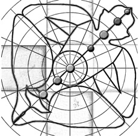
Деятельность в гуне невежества лишает человека разума и процветания, приводит к глупости, бедности и дальнейшей деградации.
Такая деятельность вызвана заблуждениями и перевёрнутыми ценностями.
Нарушенная система ценностей заставляет благо принимать за вред, а вред за благо, ложь за правду, а правду – за ложь. Деятельность в гуне невежества – это действия назло священным писаниям и обществу, применение насилия.
К такой деятельности относятся разные демонические церемонии, обряды, связанные с убийствами, угнетением кого-либо, необузданным вожделением. Ночные вечеринки, чрезмерное употребление алкоголя. Похороны.
Последствия от деятельности в гуне невежества – это похмелье, деградация, страх, потеря ориентиров и опасность для жизни.
Деятельность в невежестве запутывает человека, делает его рабом в этом мире. Это называется рабство кармической деятельности.
«Деятельность, вызванная заблуждениями, противоречащая указаниям священных писаний, связанная с насилием, деятельность, в которой не учитываются её порабощающие последствия, а также причиняемые другим страдания, относится к гуне невежества.
Каждому из нас прийдётся отвечать за совершённые нами поступки перед государством или перед посланцами Верховного Господа, которых называют ямадутами[200]. Безответственные действия обладают разрушительной силой, ибо совершаются вопреки предписаниям шастр. Такая деятельность часто связана с применением насилия и приносит страдания другим живым существам. Совершая такие безответственные действия, человек принимает в расчёт только собственный опыт. Это называют иллюзией. Подобного рода иллюзорная деятельность порождена гуной невежества» ([1] Бхагавад-гита 18.25).
«Человек, постоянно действующий наперекор указаниям священных писаний, материалистичный и упрямый, обманывающий и нередко оскорбляющий других, ленивый, всегда угрюмый, откладывающий всё на потом, – такой человек находится под влиянием гуны невежества.
Священные писания дают нам возможность узнать, какой деятельностью можно заниматься, а какой нет. Те, кто игнорирует эти предписания, как правило, занимаются недозволенной деятельностью. Обычно такие люди придерживаются материалистических воззрений. Они действуют, побуждаемые гунами материальной природы, а не в соответствии с указаниями писаний. Такие люди часто отличаются упрямством и жестокостью, склонны к обману и любят оскорблять других. Они очень ленивы; обычно они не выполняют как следует своих обязанностей, а откладывают все дела на потом. Поэтому они всегда выглядят угрюмыми. Они постоянно всё тянут: то, что можно сделать за час, они растягивают на годы. Так действуют люди, находящиеся под влиянием гуны невежества» ([1] Бхагавад-гита 18.28).
Таким образом, подводя итог:
«Тот, кто действует без привязанности, находится в гуне благости; тот, кто действует, ослеплённый корыстными желаниями, находится в гуне страсти, а тот, кто полностью разучился отличать хорошее от дурного, находится в гуне невежества» ([1] Шримад-Бхагаватам 11.25.26).
«Совершая благочестивые действия в гуне благости, человек очищается. Действия, совершённые в гуне страсти, приносят человеку страдания, а деятельность в гуне невежества лишает его разума» ([1] Бхагавад-гита 14.16).
«Действия, совершаемые без расчёта получить какие-либо плоды, считаются деятельностью в гуне благости. Та деятельность, которая связана с желанием насладиться её плодами, находится в гуне страсти, а деятельность, вызванная жестокостью и завистью, находится в гуне невежества» ([1] Шримад-Бхагаватам 11.25.23).
Из описания деятельности в различных гунах для разумного человека естественным образом напрашивается вывод, что
- надо действовать в гуне благости,
- к гуне страсти относиться нейтрально, с долей подозрительности
- и избегать деятельности в гуне невежества.
Чтобы наша деятельность попала под влияние гуны благости, существуют следующие рекомендации:
- в течение всего дня постоянно пытаться посвящать свою деятельность Абсолютной Истине;
- стараться делать одно дело за один подход, погружая в него всё своё внимание;
- окружить себя духовными вещами, напоминающими в течение всего дня об Абсолютной Истине;
- следить за здоровьем
- и давать отдых телу;
- заниматься йогой,
- употреблять пищу в гуне благости.
В Бхагавад-гите (6.17) сказано, что упорядочить свою жизнь можно путём упорядочивания пяти сфер деятельности:
«Тот, кто умерен в
1) еде,
2) сне,
3) труде
4) и отдыхе,
5) может, занимаясь йогой,
избавиться от всех материальных страданий».
3. Исполнитель в гунах
Исполнитель деятельности характеризуется различными видами разума и решимости, соответствующих трём гунам материальной природы.
Разум
«Разум, способный определить, что следует и чего не следует делать, чего следует и чего не следует бояться, что порабощает и что ведёт к освобождению, является разумом в гуне благости.
Разум, не способный отличить религию от безбожия, действие дозволенное от действия запрещённого, находится в гуне страсти.
Разум, принимающий безбожие за религию, а религию за безбожие, запутавшийся, погружённый во тьму и постоянно сбивающий человека с истинного пути, является разумом в гуне невежества.
Разум в гуне невежества всегда действует не так, как надо. Он принимает за религию то, что не имеет к ней никакого отношения, а истинную религию отвергает. Люди в гуне невежества принимают великую душу за обыкновенного человека, а обыкновенного человека – за великую душу. Они называют истину ложью, а ложь – истиной. Что бы они ни делали, они всегда избирают неверный путь, поэтому говорится, что их разум находится в гуне невежества» ([1] Бхагавад-гита 18.30-32).
Решимость
«Твёрдая, непоколебимая решимость, поддерживаемая практикой йоги и позволяющая человеку овладеть своим умом, потоками жизненного воздуха и чувствами, называется решимостью в гуне благости.
Решимость, побуждающая человека стремиться к плодам религии, материального благополучия и чувственных наслаждений, имеет природу гуны страсти.
А решимость, которая не может избавить человека от сновидений, страха, скорби, подавленности и иллюзии, – такая решимость, лишённая рассудительности, относится к гуне тьмы.
Человек всегда видит сны, в какой бы гуне – благости, страсти или невежества – он ни находился; сны – это естественное явление. Но тот, кто не может избавиться от привычки спать слишком много, а также гордиться своими возможностями для материальных наслаждений, кто всегда мечтает добиться власти над материальным миром и подчиняет этой цели всю свою жизненную энергию, деятельность своего ума и чувств, – тот обладает решимостью в гуне невежества» ([1] Бхагавад-гита 18.33-35).
4. Общение в гунах
Общение в гуне благости вдохновляет, дарит удовлетворение, ясность ума, энтузиазм. Оно просветляет сознание.
Такое общение построено на бескорыстной основе дружественности и понимания.
Общение в гуне благости основано на уважении. Это желание помочь, сотрудничество, прославление хороших качеств, обсуждение возвышенных тем.
Во время общения в гуне благости человек не бесчувственен, не равнодушен. Его реакции гнева и радости пропорциональны и адекватны реальности. Он испытывает возвышенные эмоции: сострадание, благодарность, жертвенность, тонкий юмор, самоиронию.
Эти возвышенные эмоции практически не доступны людям в низших гунах.
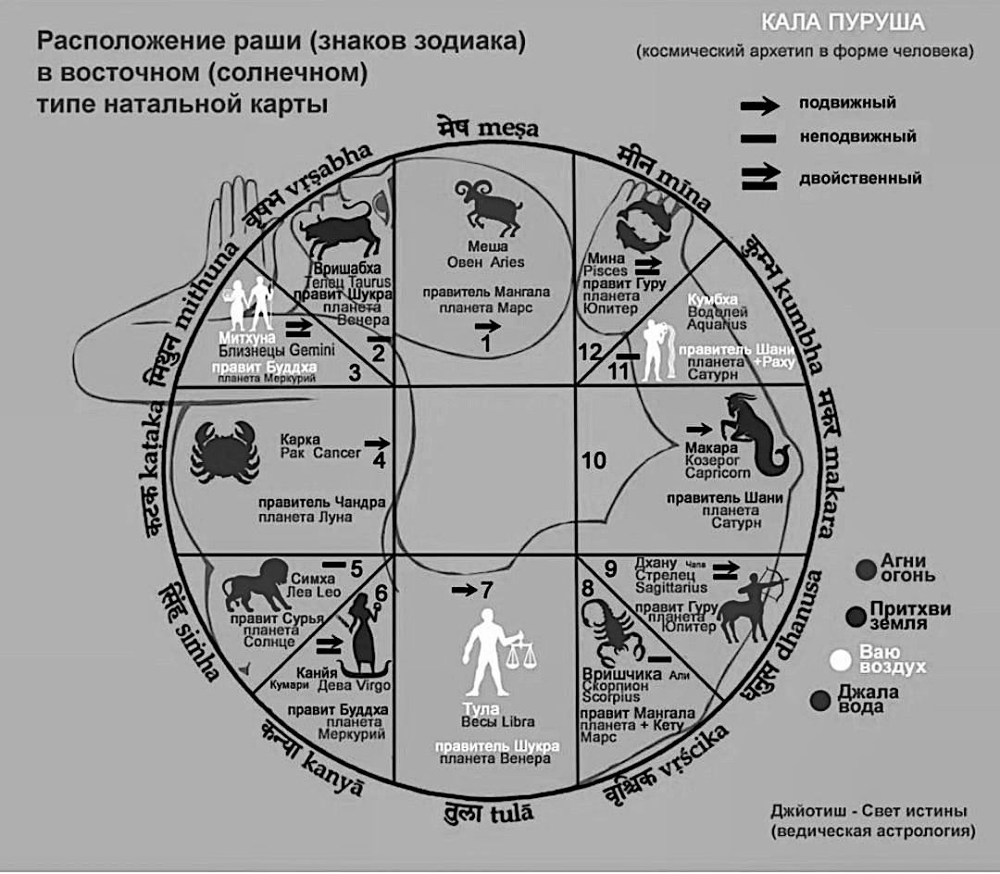
Общение в гуне страсти побуждает строить разнообразные материальные планы.
Это деловое, игровое, романтическое, лицемерное общение.
Общение в гуне страсти сопровождает хвастовство, соперничество, лесть, поиск взаимной выгоды.
Это любое общение, в котором есть выгода. Люди в гуне страсти ищут в других возможности для удовлетворения своих корыстных желаний. При этом они понимают, что просто так ничего не бывает, и готовы соблюдать определённые правила.
При общении в гуне страсти человек испытывает вожделение и гнев.
Его эмоции гротескны, преувеличены: либо эйфория, либо подавленное состояние. Как ребёнок, он то смеётся, то плачет по пустяковому поводу. Характерным примером этого являются футбольные матчи, сопровождаемые бурями эмоций.
Общение в гуне невежества провоцирует апатию, разбитость, злобу.
Оно разжигает ненависть и деструктивные желания.
Это любое общение, угнетающее сознание и опускающее человека в темноту иллюзии.
Сюда относятся жалобы, обсуждение чужих качеств и поступков, сплетни.
В результате такого общения человек становится равнодушным, бесчувственным.
Ему нужно стимулировать себя наркотиками.
Общение в гуне невежества сопровождают скука, депрессия, негатив, отторжение других людей и иллюзия отторжения другими людьми, недоверие, подозрительность.
Из приведённого описания общения в трёх гунах вам, скорее всего, больше понравилось общение в гуне благости. Но действительность может сильно отличаться. Как общаться в благости? Здесь мы приводим ряд практических советов, позволяющих общаться под воздействием гуны благости.
1) Поменьше общаться с нытиками и теми, кто критикует окружающих и во всём видит недостатки. Не стоит проводить время с людьми, которые пытаются использовать вас. Не общайтесь с теми, кто разжигает гордыню или алчность. И наоборот, больше нужно общаться с теми, кто вдохновляет, чьи качества вы хотели бы перенять. Общайтесь с духовными людьми.
2) Помните, что самый главный человек в вашей жизни – это тот, кто находится сейчас перед вами. То есть надо быть внимательным к окружающим. Очень простое правило: относитесь к людям так, как вы хотели бы, чтобы они относились к вам.
3) Надо сопереживать, сочувствовать эмоции человека, а не причине, которая эту эмоцию вызвала. Это оградит вас от втягивания в конфликты.
4) Избегайте насилия в отношениях.
5) Заменяйте интернетное, безличное общение в социальных сетях живым и личностным общением.
6) Своим общением старайтесь сделать человека счастливее.
По мере культивации гуны благости меняется и круг общения. Старые приятели будут вас всё меньше и меньше привлекать. Да и вы им станете неинтересны. Они даже могут назвать вам занудой. Но появятся новые знакомые, которым будут уже интересны не ваши деньги и возможности, а вы как личность. И постепенно, очень медленно, годами, по мере развития ваших хороших качеств, начнут появляться предпосылки для начала настоящей дружбы. Истинная дружба возможна только на фундаменте духовности. По-настоящему дружить могут только истинно бескорыстные люди, находящиеся на духовной платформе.
Но в самом начале своего духовного пути опасно переоценивать свои силы. Не надо думать, что только вы влияете на людей. Другие люди в такой же степени влияют на вас. И поэтому общение с корыстными, завистливыми людьми даст вам эти же качества. Произойдёт это абсолютно незаметно для вас так же, как заражение инфекцией. Поэтому культивация гуны благости в общении означает защиту маленького не окрепшего ростка благости в самом начале.
Но не надо проявлять фанатизм и резкое полное отрицание всех своих старых друзей, родственников, семьи, иначе это может принести вам невыносимые страдания. Действовать надо очень аккуратно, постепенно и под руководством опытного духовного учителя.
Молитва – это тоже общение. Общение с Богом. Но несмотря на то, что Бог не подвержен влиянию гун, человек подвержен. Поэтому разные люди молятся по-разному.
Молитва в гуне невежества: «Пусть мои враги сдохнут».
Молитва в гуне страсти: «Дай мне денег, здоровья».
Молитва в гуне благости – это медитация, полная концентрация на божественном. Только люди, находящиеся под влиянием гуны благости, способны к медитации.
Молитва за пределами гун материальной природы выглядит, например, следующим образом:
«О, Господь вселенной! Мне не нужны ни материальное богатство, ни материалистичные последователи, ни красавица-жена, ни плодотворная деятельность, воспетая столь цветистым языком. Я просто хочу служить Тебе жизнь за жизнью без каких-либо на то причин» (Господь Чайтанья, Шикшаштака, 4).
Старшинство
Нас всегда будут окружать
- младшие,
- равные
- и старшие.
И вести себя с ними нужно не одинаково.
«Как бы ты себя не представлял, не важно, какой у тебя характер, знай, что всегда есть выше тебя кто-то, равный тебе кто-то и те, кто ниже тебя. У каждого из нас всегда есть кто-то старший, кто-то равный и кто-то младший. Если ты хочешь найти себя, найди себя в этой структуре. Увидишь, кто твой младший, кто твой равный, кто твой старший – это будет твоё правильное положение. Как же это обнаружить?
Класс людей простых рабочих старшинство определяет по возрасту, количеству прожитых лет.
Однако предприимчивый класс рассматривает старшинство по богатству: количеству успеха, экономического процветания человека: как он способен себя поддерживать, свою семью, насколько он богат, успешен, настолько он считается старшим, влиятельным.
Класс административный смотрит по количеству власти, могуществу управления. Наделённому властью человеку, президенту или царю все выражают почтение.
И высший критерий – это знание, духовное знание: у кого мы учимся – это старший человек.
И в нашей культуре отношений все четыре критерия должны применяться. Не пренебрегаем никаким критерием: и возраст, и богатство, и социальное положение в обществе, и знание.
Высший критерий – знание, поэтому тут нужно быть осторожным. Например, мы выражаем почтение старшему в годах, но, учитывая, что он ничего не знает о духовной жизни, он не является духовным лидером. Но мы выражаем почтение его возрасту.
И при смешении этих критериев возникает целый мир культуры: большой, разнообразный, сложный.
Бывали случаи, как с Мадхвачарьей[201], что он двенадцати лет от роду принял санньясу[202] и стал ачарьей[203]. И в ведических писаниях написано, что есть великие личности, которые по уровню разума превосходят свой возраст в два-три раза. Есть также пример Шукадевы Госвами из Шримад-Бхагаватам: в шестнадцать лет он давал наставления мудрецам, самым мудрым людям того времени. Собственно, он рассказал Шримад-Бхагаватам в шестнадцать лет.
Если мы обратимся к ложному мнению о себе, ложному эго, то обнаружим, что обычно человек хочет, чтобы все были равными с точки зрения эго. Западная культура такова, такова была коммунистическая культура: равенство установить среди людей. Неважно, старший ты или младший. Дети себе позволяют в школах всё что угодно сказать педагогу. Это допускается, это – равенство. Ученики могут учителя оскорблять, унижать, говорить что угодно. Учитель должен искать какой-то подход. На родителей можно подать в суд. Появилась ювенальная юстиция. Это означает, что мы уже потеряли духовную культуру почтения и к возрасту, и положению, и знанию, и опыту, и ко всему на свете. Такая культура не имеет преемственности. Младшие отрицают старших, значит преемственности не будет. Каждый будет опираться только на свой опыт в этом случае. А вот это опасно. Мы как родители знаем, что если ребёнку позволить опираться на его опыт и желания, что из этого получится. Поскольку мы старшие, мы более мудры, мы ожидаем, что дети должны нас слушать, уважать то, что мы говорим, принимать, служить и делать то, что мы им говорим. Это преемственностью называется» [2].
Младшие
Младшие – это наши подопечные. К ним надо относиться снисходительно. Их надо опекать. Они зависят от нас. Общение с ними как с равными или старшими может привести к нашей деградации до их уровня.
«Когда перед нами младший – будьте внимательны, не используйте его в своих интересах никогда. Забота должна быть, он должен чувствовать рост и заботу. Младшие будут злоупотреблять и не будут ценить, потому что они младшие, они не будут всё понимать. А вы должны терпеть, потому что вы – старший. Вы должны быть смиреннее и терпеливее младшего. Вы духовнее должны быть его. Гуру повелевает учениками, это его роль, но он самый смиренный из всех» [2].
Равные
С равными надо сотрудничать и дружить. Это самый сложный вид общения. Как правило, общение с равными составляет наибольший процент (около шестидесяти процентов) от общего общения. Большинство эмоциональных и, бывает, физических травм мы получаем от общения с равными. Здесь обезопасить нас поможет этикет, свод правил общения. Этикет не всегда написан в каком-то документе. Чаще это нормы морали, установившиеся в данное время в данном обществе. Но если мы с кем-то дружим, то этикета в общении друзей становится всё меньше и меньше.
Главное правило безопасности для зарождающейся дружбы – не торопиться. Не надо форсировать дружбу. Пока она не созрела, рано фамильярничать. Быстро устанавливающаяся дружба подобна быстро приближающимся друг к другу автомобилям: большая вероятность аварийного столкновения.
Общение с равными имеет особое значение для духовного развития личности. Тот, кто стремится общаться только со старшими, чтобы тянуться за ними, а затем и превзойти их, и с младшими с целью самоутверждения, при этом пренебрегая общением с равными, обречён на неудачу.
«Верховный Господь сказал: Дорогие царевичи, Я очень доволен тем, что вы так дружите между собой. У всех вас одно занятие – преданное служение. Я так доволен вашей дружбой, что желаю вам всяческих благ. Можете просить у Меня любого благословения.
Поскольку сыновей царя объединяла деятельность в сознании Кришны, Господь был очень доволен ими. Каждый из царевичей был индивидуальной душой, но всех их объединяло трансцендентное служение Господу. Единство индивидуальных душ, которые стремятся удовлетворить Верховного Господа и вместе служат Ему, – подлинное единство. В материальном мире такого единства не существует. Даже если люди формально объединяются для чего-то, каждый из них преследует свои цели. Так, у каждой страны, входящей в Организацию объединенных наций, свои национальные амбиции, поэтому между ними нет и не может быть единства. В материальном мире индивидуальные души так разобщены, что даже в Обществе сознания Кришны порой нет единства, из-за того, что его члены расходятся во мнениях или начинают преследовать материальные цели. По сути дела, в Обществе сознания Кришны не может быть двух мнений. У всех у нас одна цель: отдавать все силы служению Кришне. Если в процессе служения у нас возникают какие-либо разногласия, их следует считать духовными. Тех, кто действительно служит Верховной Личности Бога, ничто не может разъединить. Это доставляет Господу, Верховной Личности, огромное удовольствие, и у Него, как явствует из этого стиха, возникает желание осыпать Своих преданных всевозможными благословениями. Мы видим, что Господь готов был немедленно исполнить любое желание сыновей царя» ([1] Шримад-Бхагаватам 4.30.8).
«Сотрудничество, построение дружеских духовных отношений, духовная взаимопомощь друг другу – вот что удовлетворяет Господа. Не наше личное совершенство, а наша бескорыстная помощь и дружба на этом пути, поддержка. Этикет таков: если вы получаете более высокое положение, то даётся предостережение: никогда не забывайте своих друзей. Это тоже может навредить. Называется высокомерие. Не будьте высокомерными. Не отождествляйте себя с положением. Это предостережение. Важно не положение, а важны: дружба, служение старшими забота о младших. Так что оставайтесь друзьями всегда. На публике друзья следуют внешнему этикету. Они также могут выражать почтение кому-то благодаря его положению, но наедине они общаются как всегда. Они остаются равными. Представьте: вы достигаете высокого положения, и у вас нет друзей. Что это за рост такой? Странное положение какое-то. Друзья – самое важное. Потому что друг к вам прийдёт и поправит вас, и даст вам наставление, и поможет вам. А кто это ещё сделает, если нет друзей, если у вас нет равных? вы остаётесь в опасном положении. Если вас некому поправить, некому дать совет, если вы главнее всех, сам всё решаете… Это уже не духовная позиция. Духовная позиция – это ученик. Дружить нужно учиться. Не нужно забывать об уважении. Это важный момент для друзей. Потому что дружба постепенно может перейти в фамильярность. Дружба допускает какую-то фамильярность: иногда чуть-чуть критиковать, немножко шутить, недооценивать. Дружба предполагает равенство: что мы можем так немножко быть фамильярными. Поэтому есть наставление: не забывайте о глубоком уважении. Друзья – означает глубокое уважение друг к другу. Тогда это можно назвать дружбой. Обычно фамильярность переходит в пренебрежение, обесценивание друг друга. Поэтому не нужно забывать об этом факторе. Если мы другу хотим дать какое-то наставление, поправить, мы не должны забывать об уважении» [2].
«Почему Бог больше всего ценит сотрудничество? Потому что более всего Он ценит свободу выбора живого существа. Не то что мы вынуждены заниматься преданным служением, и Богу это нравится. А когда мы это выбираем сами – вот что удивительно, вот что самое ценное» [2].
«Кроме взаимоуважения друзья друг друга подталкивают в духовном развитии. Им не нравится, когда кто-то в чём-то отстаёт. Или кто-то в чём-то меня превосходит. Таким образом это стимулирует: «Мой друг уже стал таким великим. А я? Я тоже должен!» Это естественный стимул. Дружба очень ценна. В духовном сотрудничестве это очень ценный фактор. «Гуру – он всегда гуру. Я никогда таким не стану. Я всегда буду ниже. Я принимаю это положение. А если мой друг стал гуру… Боже мой! Я таким тоже должен стать, похоже. Значит это возможно и для меня». То есть барьеры все снимаются таким образом. Друзья очень важны.
А если, скажем, трудности приходят (а они приходят, трудности к каждому, они ещё прийдут), кто поможет, если не друзья? Если кто-то думает: «Я сам преодолею все препятствия, мне никто не нужен» – это очень опасное положение. Не будьте такими самонадеянными. Это невозможно самому человеку – переплыть океан материального существования. Именно в трудностях друзья помогают. Настоящий друг проявляется именно в трудности. Они не бросят вас» [2].
Старшие
Общение со старшими – очень важная составляющая общения. Особенно на начальной стадии улучшения качества жизни, или духовной практики.
Старшие – это те, на кого мы хотим быть похожими. Это люди, обладающие возвышенными качествами. Они видят нас насквозь. Видят все наши недостатки. И всё равно не брезгуют с нами общаться. Потому что они искренне исполнены сострадания. Их буквально распирает от того, что они хотят уменьшить страдания их младших друзей, находящихся в невежестве.
Духовное развитие невозможно без общения со старшими. Существуют святые люди, одно мгновение общения с которыми способно освободить человека ото всех страданий и дать понимание природы вещей. Встреча с такой святой личностью – высший вид удачи.
«Настоящие места паломничества – не обычные водоёмы, так же как настоящие святыни – не статуи из земли и камня. Они очищают человека нескоро, но святые мудрецы очищают, стоит человеку увидеть их» ([1] Шримад-Бхагаватам 10.84.11).
Но как определить, кто старший, кто младший, а кто равный? Это не так просто, как может показаться на первый взгляд.
1) Вначале надо смотреть на уровень духовного развития.
1.1) Самым грубым методом определения уровня духовного развития человека является наличие у него официального посвящения в духовную традицию.
1.2) Ну а более тонким методом проверки святости является проверка на способность человека контролировать свои чувства и ум в любой, даже самой неблагоприятной ситуации.
1.3) Ещё более тонким методом проверки святости является проверка на бескорыстие.
2) При кажущемся равенстве духовного уровня можно смотреть на то, сколько по времени человек занимается духовной практикой.
3) Далее, при равенстве и этих условий, можно смотреть на календарный возраст человека.
4) Можно ещё в расчёт брать должность,
5) социальный статус,
6) богатство.
Но это всё очень приблизительно. На самом деле очень трудно определить истинный духовный уровень человека. Надо развивать духовное чутьё, интуицию. Это умение различать людей по старшинству будет приходить в процессе вашей духовной практики. Например, юродивые по внешнему виду – это просто нищие. Но юродивый может оказаться святым высочайшего духовного уровня. И в этом случае оскорблять его – самое опасное из всего, что только можно представить. И с другой стороны, выказывание такому человеку уважения может принести огромное благо. На самом деле, для любого обусловленного живого существа, прозябающего в материальном мире, единственным способом начать процесс освобождения является – услужить такому святому человеку.
Трудность в определении святости ещё состоит в том, что истинный святой человек никогда не сознается в том, что он святой. Сам он искренне считает себя самым недостойным. Поэтому он обязательно будет маскироваться под обычного человека. И если к нему обращаться как к равному, он и будет отвечать вам как равный. Если обратиться к нему как к младшему, он спокойно будет с вами общаться как младший. В этом случае вы получите минимальное благо от общения со святым. Так что если вы вдруг кого-то заподозрили в святости, обращайтесь к нему смиренно, как к старшему во всех отношениях. При этом его возраст здесь не имеет значения.
«Старшинство определяется не формально. Не то что мы имеем какой-то документ, сертификат бо́льших знаний, а естественно. Говорится, что когда мы общаемся с человеком, и вдруг мы начинаем задавать вопросы, а он отвечать постоянно, значит мы чувствуем: это старший. Вот как это определяется. Естественным образом, через общение.
Если нет зависти: мы увидим: вот старший: он может ответить на мои вопросы, он вдохновляет, я хочу снова спросить его о чём-то.
Если мы общаемся с равным, то происходит другая картина: когда мы слушаем человека, он нас вдохновляет, и я в ответ хочу тоже выразить своё понимание, своё мнение. И это его вдохновляет. Мы – друзья.
Если мы общаемся с преданным, который задаёт вопросы и вдохновляется и хочет слушать дальше, перед нами младший. Это определяется в отношениях, не на бумаге, не формально. Когда уйдёт зависть. Начинается процесс самопознания, человек начинает думать о собственном очищении от плохих качеств. И постепенно естественно начинает складываться эта иерархия: старшие, равные, младшие. Где больше знаний о Боге, туда люди и пойдут сами. Но не нужно провозглашать, что у нас больше, что мы лучше знаем. Это было бы разрушительно» [2].
«Каждый должен руководствоваться таким правилом:
- при встрече с тем, кто обладает бо́льшими знаниями и опытом, нужно радоваться,
- при встрече с тем, кто обладает меньшими знаниями и опытом, нужно отнестись к нему с состраданием,
- а встретив равного, нужно подружиться с ним.
Тот, кто придерживается этих принципов, избавляется от тройственных страданий материального мира.
Обычно,
- встречая того, кто превосходит нас в чём-либо, мы завидуем такому человеку,
- при встрече с тем, кто обладает меньшими знаниями или опытом, мы насмехаемся над ним,
- а при встрече с равным начинаем хвастаться своими достижениями.
Такое поведение является причиной всех материальных страданий.
- Вместо того чтобы завидовать более знающему человеку, нужно радоваться встрече с ним.
- Вместо того чтобы с презрением смотреть на менее знающего, следует отнестись к нему с состраданием и помочь ему подняться на должный уровень.
- Встретив же равного, вместо того чтобы кичиться перед ним своими достижениями, следует смотреть на него как на своего друга.
Тот, кто придерживается этих важных принципов, сможет обрести счастье в материальном мире» ([1] Шримад-Бхагаватам 4.8.34).
«Только ни в коем случае не надо думать, что если кто-то духовно старше, то он может командовать. Это административный подход требует командования и подчинения согласно положению. Нет, подчиняются сердцем, это есть духовное руководство. Если вы чувствуете в сердце, что это – то, что вы ищете, то, что вы хотите, то, что вдохновляет, то, что ценно для вас, когда вы слышите, то это – ваш духовный наставник. Вот он. Не тот, кто просто может надавить, нажать, потребовать и добиться силой. Мы должны различать эти вещи: старший, равный, младший – это не диктат. Это проявление любви, души. Поэтому мы говорим о духовном различии, не материальном. Духовные различия для чего нужны: потому что наша духовная конституция – служение, не что-то другое. Остальное надумано: господство, конкуренция. И вот с точки зрения души – душа ищет возможность служить кому-то. А в материальном мире мы как раз ищем возможность не служить. В духовном смысле всегда есть потребность кого-то прославить, выразить почтение, увидеть хорошие качества. В материальном смысле, с точки зрения ложного эго нет этого, а каждый стремится, чтобы прославляли его. Поэтому если на материальном уровне применять концепцию «старший-равный-младший», это нанесёт серьёзный вред. Культура хочет устранить эти различия, потому что родители могут вред нанести детям, давая неправильные наставления и требуя что-то. Дети хотят освободиться от диктата: «Я это и так знаю, мне не интересно, что ты говоришь, скорее бы я вырос, зачем меня вообще родили?» Это от детей идёт такой мощный бунт, потому что это уже не духовная, а эгоистичная составляющая, эксплуатация родителями детей. Старшие эксплуатируют младших – это проблема. Поэтому они говорят: «Все равны, давайте освободимся». Имперсонально: неважно, старший, младший – мы все должны быть условно равны друг другу. Это всё попытка избавить людей от эксплуатации. Но это неправильная попытка. Потому что правильная попытка должна быть на духовной платформе. Это всё ещё материальная платформа, надуманная, условность. Я могу сказать, что мы равны, но всё равно мы не равны по факту. Всё равно кто-то старше, всё равно кто-то мудрее, всё равно кто-то младше, всё равно кто-то равный. Это не изменить ничем. Если есть любовь, то старший заботится о младшем. Поэтому младший принимает его руководство. Причина – забота. Если старший не заботится о младшем, младший не будет принимать любовь. Поэтому вся культура идет не от младших: что они должны выражать почтение старшим, а от старших: нужно заботиться о младших. А мы-то требуем от младших почтения. Вот этого нельзя делать. Мы должны именно заботиться: давать знания, оберегать, давать защиту, покровительство, быть примером. От старших эта культура как раз и устанавливается в обществе. Родители думают, что от младших должна эта культура установиться, от их послушания, вот и всё. Итак, если старший эксплуатирует младшего из ложного эго, равные начинают ссориться: кто же всё-таки важнее, главнее, кто лучше? Конкуренция возникает. Мы в мире конкуренции живём. В любом государстве сейчас установлена конкуренция как критерий прогресса. «Вы конкурируете, значит, вы прогрессируете» – так они думают. Они это установили искусственно. Конкуренция порождает не прогресс, а увеличивает страдания. Возможно, есть прогресс какой-то материальный, но страдания тоже прогрессируют. На самом деле, настоящее процветание общества – когда уменьшаются страдания» [2].
«Разве вы не замечаете, что близкие люди, такие как муж и жена, мать и сын, имеют друг от друга секреты сейчас. А что написано в древних книгах? Святые люди или старшие люди в семьях, в кланах не должны иметь никаких секретов от младших. Это признак святости и старшинства. Младшие могут иметь так называемые секреты. Старшие всё и так прекрасно понимают. А вот старший не должен иметь секретов:
– Мама, ты куда пошла?
– Ну завтра утром прийду. Не так важно, куда я пошла.
Нет, нет, старший не должен иметь таких секретов. Старший должен уподобиться святому, где сердце открыто полностью» [2].
«Я должен быть учеником перед старшими, и равными и младшими Все три категории должны быть. Тогда я сохраняю позицию ученичества. Но если что-то одно я упускаю, могут быть сложности: если я не слушаю старших – будут сложности, не забочусь о младших – будут сложности, не дружу с равными – будут сложности» [2].
Янтра-тантра-мантра
Янтра
Самый примитивный и известный нам вид сотрудничества – это янтра. Янтра означает машину, механизм. Сутью этого метода является эксплуатация. Этот метод общения изначально предназначен для эксплуатации
- инструментов,
- механизмов,
- машин,
- роботов,
- компьютеров
- или животных.
Есть биологическая машина, есть механическая машина. Биологическая машина – это человек, это раб. В современном обществе часто можно увидеть, как эксплуатации подвергаются люди. Эксплуатация не обязательно бывает грубой, такой как рабство или крепостное право. Существует огромное множество методов тонкой эксплуатации людей. Например, пугать людей увольнением или лишением премии.
Любая форма эксплуатации – это различные разделы чёрной магии – искусство подчинять выгодой, увещеваниями, силой.
Эксплуатация – это побудительное общение в гуне невежества. Радио, телевидение, интернет, социальные сети – всё то, что делает нашу реальность всё более виртуальной, является более изощрённой формой янтр, механизмов. С помощью них можно более тонко эксплуатировать наивных людей.
«Кали действует очень тонко. Сейчас начинают рассуждать так: «Хорошо, мы не будем эксплуатировать людей, будем эксплуатировать роботов. Никакого рабовладельческого строя нет». Но эксплуататоры-то остаются! Оказывается, вопрос в сознании, а не в политике. В век Кали тонкая нечистота эксплуатации всё равно остается в сознании.
Например, мясоедение – это тонкое проявление чувства зависти. Биологический животный секс – это тонкое проявление чувства господства» [2].
«Сейчас столько янтр: машины, машины, машины, пульты, пульты, пульты, механизмы, механизмы, механизмы. В интернете всё, что я хочу. Вот тут я царь и бог с янтрой. Тут исполняются мои желания. Виртуально. Иллюзорно. На экране. Виртуальная реальность. Мы наслаждаемся сном: как люди там живут, как совокупляются, как обороняются. Во сне мы едим пищу, просыпаетесь – голодный. От голода просыпаетесь. А с другой стороны, вы во сне сходили в туалет – и очень странный результат. Вот какая странная штука бывает с человеком. Виртуальная реальность возбуждает какие-то центры в мозге. И, собственно, эта реальность делает то же самое. В чём же разница? Разница в том, что виртуальная реальность отнимает духовный разум (буддхи), он там не нужен.
Один ребёнок убил свою маму ради интереса. В компьютер был погружён. Там можно было тоже убивать и снова восстанавливать. Это же игры. Убил, потом заново загрузил программу. Снова можешь убивать. Ноу проблем. Игрушки. И он думал, что этот мир точно такой же. И ради интереса, чтобы посмотреть, как умирает человек, убил маму. Но она не восстановилась. Это виртуальная реальность. Отнимает разум.
Все эти зрелища, кино, чувственные наслаждения, красивые женщины, красивые мужчины, романтика, сближения, конфликты – люди любят смотреть. Это куда всё идёт? К однополым бракам в итоге» [2].
Тантра
Следующий вид сотрудничества – это тантра, что означает договорные отношения.
Я добиваюсь чего-то через служение, заслуга нужна, чтобы получить.
Близких отношений нет, но я говорю:
– Мне нужны деньги, мне нужно как-то жить, кормить семью.
И богатый человек говорит:
– Хорошо. Вот тебе объём работы. Приходи вовремя. Не опаздывай. Меня уважай. Всё, что скажу, делай. Починись мне. Служи мне. И вот эта заслуга и будет твоей наградой. Будешь получать вот такую сумму. Договорились? Согласен? Всё. Иди, работай.
Это взаимовыгодные условия.
Эти отношения уже подразумевают уважение и свободу выбора живого существа. Такие отношения невозможны с механизмом или совсем тупым животным. Составляется договор, по которому каждая из сторон обязана соблюдать определённые условия. Здесь уже могут понадобиться юристы. В современном обществе, в котором преобладающей является гуна страсти, практически всё основано на корыстных взаимовыгодных договорах.
Тантра работает на уровне справедливости, закона: что посеешь, то и пожнёшь. Но когда мы обманываем друг друга тантра тоже не работает.
Также метод тантры используется в цивилизованном ведическом обществе для взаимоотношений с высшими силами, повелевающими стихиями, законами природы. С помощью ягий, жертвоприношений, можно управлять количеством дождя, тепла, урожайности сельскохозяйственных культур и так далее.
Таким образом, тантра – это побудительное общение в гуне страсти.
Мантра
И третий вид сотрудничества – это мантра. Он заключается в бескорыстных отношениях. Одна сторона что-то делает другой не из соображений выгоды, а просто так, из симпатии или даже любви.
Мантра представляет собой звуковой образ, обращение, являющееся ключом запуска механизма бескорыстного взаимодействия между личностями. Это ключ доступа в другое изменение.
Для того, чтобы мантра действовала, нужны уже установленные отношения между личностями. Например, слова «спасибо», «пожалуйста» являются примерами мантр. Ещё очень сильнодействующая мантра «я тебя люблю» – она позволяет полностью подчинить себе человека; этой мантрой пользуются, естественно, и негодяи.
«Как делают конструкции, выстроенные домино, а в конце – большая глыба. И вы делаете маленькое усилие. Первая толкает вторую, и они падают, падают, падают, и в конце падает огромная глыба. Мы же сделали небольшое усилие. Вот таким образом человек должен уметь мыслить. Как включить эту цепную реакцию позитивного развития? Как негативного – мы знаем: говорим просто плохое слово, оно вызывает плохую эмоцию, плохие отношения. Плохие отношения усиливают самооборону, хитроумный ум, обман, дезинформация, политика и в конце концов – ядерное оружие. А всего-то были плохие слова вначале» [2].
Существуют изысканные красивые молитвы, обращённые к Богу или к Его представителям. Они могут петься на санскрите или других древних языках. Но можно и на родном языке. Главное, чтобы они были искренними, от чистого сердца, бескорыстными. Мантра – это побудительное общение в гуне благости.
Таким образом, самый лучший контроль – это контроль любовью и заботой, на основе благодарности и авторитета. Так действуют ангелы-хранители.
«Мантра означает звук, обращение. Можно привести бытовой пример: я могу позвать свою дочь и сказать: «Дорогая, возьми деньги, быстренько купи мне необходимую вещь и принеси, пожалуйста, сюда». Это просто звук моего голоса. В итоге, я произнёс звук, и желание моё выполнено. Это мантра, и она работает только тогда, когда есть отношения. Таких слов я не могу сказать незнакомому чужому человеку, чтобы он быстренько сбегал и что-то купил, так как у нас нет отношений.
В таком случае, когда нет отношений, это называется тантра. Можно привести такой бытовой пример: у меня нет денег, но есть семья, которую нужно кормить, и я иду к богатому человеку с просьбой о помощи моей семье и говорю, что все страдают и голодают. Богатый человек даёт мне объём работы, чтобы я вовремя приходил, всё исполнял, уважал, слушал его, и за это я получаю какую-то сумму средств. То есть тантра означает, то, что мы получаем желаемое через служение и почтение к кому-то.
Но есть люди, которые не собираются честно трудиться за какие-то гроши. Тантра, служение, – это не для них, так как они гордые. Тогда на помощь приходит янтра. Янтра – это машина, которую можно создать и управлять ею, нажимать на кнопки, здесь всё будет выполняться автоматически. Также янтра – это ещё может быть и человеческое тело, которое я эксплуатирую тем, что просто заставляю кого-то при помощи страха и силы делать то, что я хочу» [2].
Мудрость
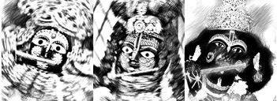
Пять состояний ума
В йоге Патанджали описывается пять состояний ума:
1) Кшипта (встревоженный)
Рассеянное состояние ума, когда человек практически не слышит ничего. Даже повторить не сможет. Только что сказали, он даже не повторит. Он постоянно говорит: «Что ты сказал? А!» И тут же забудет.
2) Мудха (вялый)
Он слышит, но не может отреагировать, осмыслить. Даже повторит, но как попугай. Он не понимает, что он слышит.
3) Викшипта (рассеянный)
Он уже может слышать, повторить и что-то осмыслить, но применить в разных ситуациях не способен. Стереотип только имеет. Вот в этой ситуации он знает: «Вот это надо». Ситуация сменилась – он уже не знает, как это сделать.
4) Экагра (однонаправленный)
Это состояние ума, когда он может применять уже, действовать может. Всё, что он знает, он может применить в жизни в разных ситуациях.
5) Ниродха (овладевший)
Это самадхи – невозможно отвлечь ум от истины. Например, если вы повторяете святое имя и осознаёте, что имя Кришны и Сам Кришна – это одно – это и есть самадхи. У вас будут проявляться все трансцендентные симптомы.
Экология ума
«Люди преимущественно отождествляют себя со своим умом. На санскрите «манушья» значит «человек», а прародитель всего человечества зовётся Ману. А манас – это ум. Видна недвусмысленная связь понятия «человек» с умом.
Очень важно свой ум держать в чистоте. Ведь это центральная часть нашего сознания. Всё наше существование зависит от состояния нашего ума. Крайне желательно, чтобы ум был под влиянием гуны благости. Это даст такие результаты, о которых вы даже и не мечтаете.
Итак, рекомендации современных мудрецов, касающиеся экологии ума состоят в следующем.
1) Необходимо вернуть себе утро. Должен вас предупредить, что современная цивилизация будет очень сильно сопротивляться выполнению этой рекомендации. Сейчас вся жизнь в мегаполисах построена на вечернем и ночном распорядке. Чтобы выполнить эту рекомендацию, надо обладать большой решительностью, настойчивостью и разумностью. Но вернуть себе утро очень важно. Когда мы упускаем утреннее время, мы упускаем шанс пропитаться гуной благости и получить иммунитет, защиту от страсти и невежества, которые нас поджидают в течение всего последующего дня, в результате чего наши шансы быть под влиянием гуны благости становятся очень малы. Просыпаться и вставать лучше всего за полтора часа до восхода солнца. И посвящать утреннее время возвышенной деятельности. Чем возвышеннее деятельность, тем лучше. Самая возвышенная деятельность – это повторение святых имён Бога. В Ведах сказано:
«В нынешний век вражды и лицемерия единственный путь к освобождению – это повторение святого имени Бога. Нет другого пути, нет другого пути, нет другого пути» (Брихан-нарадия Пурана).
Одним из самых действенных способов повторения имён Бога является повторение маха-мантры: Харе Кришна Харе Кришна Кришна Кришна Харе Харе / Харе Рама Харе Рама Рама Рама Харе Харе.
2) Отрегулировать общение. Это значит минимизировать пустые разговоры и сплетни. Не критиковать никого и не слушать, как кто-то критикует кого-то. Стараться не участвовать в подобных разговорах.
3) Аккуратно общаться в интернете. Интернет – это очень опасный инструмент. Свод правил безопасности по пользованию интернетом следующий:
- убрать все отвлекающие факторы, делать только то, что наметили; бесцельное хождение в просторах интернета подобно бесцельному хождению в супермаркете: вы там купите целую корзину всего, но только не то, за чем пришли;
- не входить в социальные сети без необходимости, просто чтобы посмотреть, не написал ли мне кто-то что-то; это просто убийство своего времени;
- не есть за компьютером; в результате не будет пользы ни от еды, ни от рассеянного разглядывания экрана компьютера;
- при работе в социальных сетях ставить таймер на пятнадцать минут;
- минимум двадцать минут закладывать на одно дело; это поможет вам лучше сконцентрироваться и сделать дело в разы быстрее и качественнее;
- не просматривать рассеянно всё подряд в интернете в вечернее время; это очень опасно для вашего уставшего и расслабленного разума, в который незаметно, легко и непринуждённо входит отборная скверна;
- периодически устраивать интернет-голодание на несколько дней;
- стремиться к реальному общению с высокоразвитыми людьми, а не через веб-трансляции.
4) Отслеживать негативные мысли и нейтрализовывать их позитивными.
5) Каждый день слушать лекции и читать книги духовных учителей.
6) Делать перезагрузки. Имеется в виду активный отдых или смена
деятельности, резко отличающейся от ваших повседневных обязанностей» [8].
Бесконфликтность
В современный век вражды и лицемерия очень трудно общаться людям друг с другом. Вся окружающая обстановка способствует тому, чтобы произошёл конфликт. Поэтому необходимо прилагать особые усилия для того, чтобы наше общение было бесконфликтным.
«Конфликты мы видели, конфликты мы видим, конфликты мы будем видеть. Потому что мы живём в Кали-югу. Собственно говоря, современный человек не мыслит своей жизни без конфликтов, не понимает вообще, о чём вы говорите о бесконфликтности, для него это невозможно. Он думает, что как раз истина рождается в спорах, в конфликтах, в борьбе. Поэтому это момент такой очень сложный для осознания. Требуется много времени понять, как жить без конфликтов. Что это за жизнь такая скучная, бесконфликтная? Никого не вдохновит. Поэтому мы наблюдаем постоянно конфликты. И на какие-то конфликты не стоит обращать внимание. Как разногласия там… Постепенно люди через общение, через этот опыт конфликтов проясняют ситуацию.
Но когда конфликт становится опасным для сообщества или для семьи, когда возникают расколы или дело идёт к разводу, к разрушению, тогда, конечно, требуется помощь старших. Но если этого хотят эти люди. Вмешиваться неэффективно. Поэтому этикет обучает нас с самого начала, что если возникают такие конфликты, сам обратись к старшему, если хочешь улучшить положение в своей семье или в сообществе, которым ты руководишь или частью являешься. Если ты хочешь жить по принципам духовной культуры, то обратись к старшему, если ты сам не справляешься с этой ситуацией. Но не разрушай сообщество, не оставайся вечной проблемой. А старший должен быть беспристрастным к этому уровню. Тогда он старший. Он может быть не беспристрастен к равным, но к младшим он беспристрастен. Поэтому вызывают старшего, который не завидует, конечно же, младшим. И он может помочь: дать равные наставления обеим сторонам. Тогда это эффективно. Если есть старший, есть потребность, всё очень эффективно, всё хорошо работает.
Тогда мы вообще не видим, что в этом какая-то проблема. Это просто рост, естественный рост» [2].
Самым действенным средством разрешения, прохождения, преодоления конфликтов является просто попросить прощения. Вроде бы просто, но на самом деле ложное эго сильно препятствует этому. Гордым тяжело просить прощения. Чем больше знания человек развивает, тем ему сложнее просить прощения. Но когда он старается, сердце его размягчается.
Просить прощения нужно в следующих случаях:
- когда есть не выполненные обещания;
- когда причинил боль;
- когда оскорбил чьи-то чувства;
- когда без спроса использовал чью-то вещь;
- когда опоздал.
Просить прощения никогда не является ошибкой.
Как просить прощения:
- осознать свою вину самому;
- признать свою вину перед другим (очень важна интонация, положение тела);
- начать говорить приятные вещи;
- говорить о своих чувствах;
- не обвинять никого;
- не оправдываться;
- не перекладывать ответственность на других;
- не жалеть себя;
- говорить наедине.
Важно подтверждать свои слова действиями
Мы извиняется за поступки, а не за мотивы.
Не нужно ждать мгновенного прощения.
Тот, кто мудрее, тот просит прощения.
Существует ещё такая формула правильного бесконфликтного общения:
- сказать факты, а не претензии;
- рассказать про свои чувства, а не обвинять;
- сказать, что мне нужно, а не просто ругаться;
- сформулировать конкретную просьбу, чтобы у другого человека хотя бы была возможность исправиться.
Сострадание
Без сострадания к другим живым существам невозможна счастливая жизнь в благости. Противоположность состраданию – это жестокость. Жестокость в отношениях с другими людьми – не редкость в современном обществе. Причиной этого является то, что мы привыкли думать о себе, о своих интересах в первую очередь, в ущерб интересам других.
Жестокость в нашем общении выражается в четырёх блоках, препятствующих в наших отношениях с другими людьми.
1) Мы судим других людей, навешиваем на них ярлыки.
2) Мы требуем чего-то от других людей, навязывая им своё мнение, давим на них.
3) Мы пытаемся заставить других делать то, что нам нужно, методом кнута и пряника, поощряя или наказывая.
4) Мы перекладываем свою ответственность на другого человека.
Согласитесь, если вас кто-то осудил, раскритиковал, что-то требует от вас, корыстно пытается вами манипулировать, да ещё и хочет на вас свалить всю ответственность за ситуацию, с таким человеком не захочется общаться. Между вами встал один или сразу несколько блоков.
Решение этой проблемы блоков в общении заключается в слушании. Если внимательно слушать другого человека, то просто не останется места для осуждения, манипуляций, давления и перекидывания ответственности.
Таким образом, если наша цель – мирное общение, то слушание – это основная практика в наших отношениях с другими людьми.
Обратная связь
Здесь приведены рекомендации, как давать обратную связь, отзыв на деятельность другого человека:
1) Начните с чего-то положительного.
2) Будьте позитивны.
3) Обращайтесь к человеку «ты (вы)», а не «он».
4) Говорите о том, что можно улучшить, а не об ошибках.
5) Будьте конкретны.
6) Будьте кратки.
7) Вдохновляйте.
8) Будьте искренни.
9) Закончите на положительной ноте.
И две рекомендации по приёму обратной связи.
1) Храните молчание, за исключением «спасибо».
2) Запаситесь ручкой и бумагой, чтобы записать основные моменты.
Есть ещё более расширенные рекомендации по обратной связи лидера на какую-то неблагоприятную деятельность своего подопечного:
1) Описание действий человека и их последствий.
2) Лидер интересуется, объективен ли он в своём описании?
3) Далее лидер говорит о собственных чувствах, которые вызваны действиями человека.
4) Интерес к тому, что сам человек думает и чувствует по поводу своих действий и мотивов.
5) Проявление дружелюбия и готовности помочь: «Нужна ли тебе какая-то помощь с моей (или кого-то ещё) стороны? Готов ли ты принять наставления?» Если готовность есть, то в дальнейшем диалоге лидер, находящийся в настроении слуги, всегда получает из сердца (через разум) важное наставление, адресованное собеседнику.
6) Прояснение ответственности: «Каких изменений в связи с тем, что мы обсудили, можно ждать от тебя? Какие обязательства в связи с этим ты готов принять?»
7) Благодарность (желательно взаимная) за открытый разговор и ценные результаты.
Соблюдение этих рекомендаций позволит вам сохранить (не испортить) отношения со многими людьми. А на отношениях держится всё. Вообще, реальны только отношения.
Ступени мудрости
Наконец мы подошли к самому главному в этом рассказе о том, как правильно общаться с другими людьми. Итогом развития личности является мудрость. Веды показывают ступени, по которым мы сможем подняться до уровня мудрости. Эти ступени, как ни странно, больше всего связаны именно с умением слушать своего собеседника.
«1) У нас появилось хотя бы небольшое желание слушать другого человека. У нас появилась небольшая склонность услышать авторитет. Гордый человек не любит слушать. Но мы уже делаем первый шаг в сторону от гордости. У нас возникает понимание того, что мы чего-то не понимаем. Это настоящий прорыв, революция в развитии нашего сознания.
2) Мы уже реально можем что-то услышать и понять из того, что говорит другой человек. Это гигантский шаг. Мы слушаем человека, но думаем: «Скорее бы он уже замолчал, и тогда уже начну говорить я! Я его своим вопросом поставлю в тупик!» Мы разговариваем с другим человеком только из врождённой вежливости.
3) Мы уже можем отчасти понять, что́ нам говорит другой человек. Это избирательное слушание. Через призму, фильтр нашего ложного эго, аханкары, до нас доходит только то, что нам нравится слушать.
4) У нас уже появляется способность запоминать то, что мы услышали, способность унести это с собой. В ведическом обществе детей в гурукулах[204] заставляли заучивать всё наизусть, чтобы развивать в будущем мудрость. Поэтому в ведические времена ученик мог запомнить услышанное от духовного учителя с первого раза. Это развивает в свою очередь способность предельно концентрироваться. А сейчас детей учат в школах, что не нужно запоминать, всё можно «прогуглить». Гуру может привести к истине, а гугл может привести в угол. Таким образом, заучивание наизусть – это очень могущественный способ развития разума.
5) Мы становимся способны понять и почувствовать, о чём нам говорил другой человек. У нас уже появилась способность к пониманию целостности сказанного во всех связях. Раньше мы были способны только к фрагментарному пониманию, по несвязанным кусочкам. На этом этапе мы преодолеваем свою собственную систему координат и переходим на систему координат говорящего. Искусство слушания заключается в том, чтобы забыть о самом себе в процессе слушания, полностью погрузиться в процесс слушания, войти в то сознание, из которого нам говорят. Ложное эго сильно защищает нас от этого, люди боятся этого. Поэтому, не достигнув этой ступени, мы и не можем услышать, о чём нам говорит Бог. Хотя Он всё время с нами говорит. Весь этот мир есть не что иное, как диалог Бога с нами. Эта ступень приводит нас к эмпатическому, участливому слушанию. Исчезают все наши обиды, потому что мы становимся способны слушать.
6) Мы уже имеем право и можем адекватно оценить и попытаться продолжить то, что говорит нам другой человек. Мы можем подтвердить то, что он нам сказал. Мы уже не довольствуемся только тем, что поняли, о чём идёт речь. Мы своим собственным опытом обогащаем сказанное так, что другой человек понимает, что его поняли. Желание быть понятым – это воздух для нас как души. И мы удовлетворяем это желание другой души.
7) Мы получаем полномочия подтвердить или безопасно опровергнуть то, что нам сказал другой человек. Мы можем даже сказать что-то против. И при этом другой человек не отвергнет это. В результате сострадательного диалога мы вместе с собеседником приближаемся к истине. И тогда на первый взгляд противоречивые вещи синтезируются в непротиворечивое целое.
8) Мы обретаем мудрость. Таким образом, человек меняется просто в процессе слушания. С помощью такой мудрости мы сможем преодолеть даже смерть. И есть единственный способ для этого – слушать. Нужно учиться принимать совет, даже если он исходит от недостойного человека» [3].
Мужчина и женщина
Взаимоотношения между мужчиной и женщиной имеют две главные области:
1) продолжение рода и воспитание детей
2) и вкус супружеских любовных взаимоотношений.
В Ведах говорится, что Абсолютный Источник всего содержит в себе одновременно мужскую и женскую природу. А влечение между полами в материальном мире является отражением духовной реальности. Хотя мужчины и женщины очень сильно отличаются друг от друга. И дело не только в первичных и вторичных половых признаках. И даже не в том, что женщины говорят намёками и воспринимают слова мужчин как намёки, а мужчины, наоборот, говорят прямо и воспринимают намёки женщин прямолинейно, в результате чего между ними всегда будет непреодолимое недопонимание. И даже не в том, что мужчины мужественные, а женщины женственные. Дело в том, что
- мужчины нацелены на освобождение из материального мира,
- а женщины нацелены на расширение и углубление сферы влияния в этом мире, на всё большее погружение в материальное существование.
Женщины умнее, а мужчины разумнее.
Мужчина знает, чтó надо делать, а женщина знает, кáк это надо делать.
Мужа можно сравнить с локомотивом, а жену – с топливом для этого локомотива.
Поэтому женщина может сделать мужчину сильным и настоящим, а мужчина может даровать женщине освобождение, помочь ей избавиться от страхов и беспокойств.
«Женщина гораздо сильнее, чем мы можем себе представить. Она ложно себя представляет зависимой от мужчины, беспомощной. Это её природа: так она привлекает мужчину: «Я твоя подчинённая, я твоя подчинённая». Но, оказывается, она потом его скрутит в бараний рог. Она намного сильнее. Эта природа обманчива её. Она даже сама об этом не знает.
Этим миром вообще управляет женщина, а не мужчина. Дурга – самая могущественная из полубогов. Это экспансия внутренней энергии Кришны. Она – сестра Кришны. Это материальная природа. Женщина здесь представляет материальную природу. Она – эксперт в этом. Я не поверю, что женщины беспомощны. Женщины руководят этим миром. Иначе бы мужчины не принимали санньясу» [2].
Чувства и разум
«Одно полушарие головного мозга отвечает за чувственное восприятие, другое – за рациональное мышление, которое в целом существует у мужчины и женщины.
Чувства и разум: их мнения не всегда совпадают, потому что то, что говорит разум, не нравится чувствам. И наоборот: то, что нравится чувствам, не нравится разуму. Чувствам нравится опьянение.
Разум говорит:
– Ну погоди, тут есть опасность: ты можешь стать наркоманом или алкоголиком. Я не очень согласен с этой практикой.
Но чувства говорят:
– Ну немножко можно же? Я же не алкоголик, если я буду регулируемо это делать?
– Ну да – соглашается разум.
Чувства убеждают. Сегодня ещё редко мы видим людей, которые полностью трезвенники, кто имеет такой разум, потому что ещё не имеют источника настоящего счастья. Поэтому человек нуждается в каких-то искусственных средствах. Поэтому допускает такое:
– Я не алкоголик, я выполняю свой долг, я работаю, у меня семья, я ведь не пренебрегаю этим, я не опускаюсь до такого свинского, животного уровня. Я сознаю, что я отец, что муж, что у меня есть профессия. Я выполняю свой долг. И если иногда выпью на свои деньги, что тут греховного? Это же нормально.
Вот обычно у нас сегодня успешный человек так мыслит. Когда-то было совсем не так.
И вот у мужчины так всё работает:
- либо чувства включаются (разум устраняется); чувственный мужчина сравнивается с тающим на огне маслом; когда он влюбляется в женщину, он становится полностью безвольным, как загипнотизированный;
- но если у мужчины включается разум, – это жёсткий судья, это воин, под пули идёт (чувства отключаются, не мешают ему).
Значит, у него попеременно:
- либо чувства включаются (разум устраняется),
- либо разум включается (чувства устраняются).
Вот герой с поля битвы, ранение получил. Сейчас ему больно – чувства. В госпиталь привезли. Вот медсестра со шприцем. Он боится. Да только что из-под пуль, он бесстрашный был. С медалью. Иголка, шприц – испугался. Это вот – мужчина. Так вот чередуется: либо он жёсткий, либо он очень мягкий.
Поэтому женщина сомневается в мужчине, видя это. Она не может понять: как это возможно? Только что говорил «люблю» и такие чувства, а тут вдруг такое скажет – ножом по сердцу. Непонятно: любит или не любит всё-таки? Говорит, что любит, но так жёстко поступает.
У женщин другая система: чувства и разум работают почти одновременно в вибрирующем режиме, как бензопила: чувства-разум, чувства-разум: «Всё чувствую, всё знаю, всё понимаю, но не знаю, что делать, что делать, что делать?» Решение принять ей трудно.
При этом, если у мужчины единица возможностей и глубины чувств, то у женщины – девять единиц. Огромная разница между ними. «Слабый пол».
Когда-то светские дамы частенько падали в обморок, когда что-то услышат. Сегодня не падают в обморок. Почему? Эмансипация. Сегодня женщины с мужчинами почти уравнялись в этом смысле. Это потеря наша.
Женщины – это чувствительная часть творения. Это пальцы мира. Это существа, которые
- могут видеть будущее в снах,
- могут исцелять,
- могут чувствовать различные события в мире,
- защищать репутацию мужа,
- могут сильно оказать влияние на общество своими чувствами, эмоциями, своими чистыми материнскими силами.
Женщины – это могучая часть нашей жизни» [2].
В Ведах говорится, что женщины
- в два раза голоднее,
- в четыре раза пугливее
- и в шесть раз нахальнее мужчин.
В целом, у женщин материальные желания сильнее в девять раз, чем у мужчин.
Женщина на санскрите звучит как стри, что дословно означает расширение сферы влияния, экстенсивное развитие. А мужчина больше ориентирован на интенсивное развитие, самопознание.
«У мужчины лишь десять процентов восприятия эмоционального, и девяносто процентов разумного. Это означает, что он в девять раз свободнее, чем женщина. Женщина находится глубже в материи и более зависима от неё.
Есть и плюсы, и минусы у каждой стороны, преимущества и недостатки от этой разницы.
Поэтому, когда мы говорим слово «любовь», женщина это понимает в девять раз по-другому, чем мужчина. А когда говорим «смерть ребенка», в девять раз женщина и мужчина по-разному это оценят и переживут, совершенно по-разному, глубина восприятия будет разная.
Поэтому женщина со своей глубиной и чувствительностью – это пальцы мира, которые должны находиться под защитой. Иначе она страдает в силу её тонкого, глубокого восприятия и переживания» [2].
«По современным данным, женщина по разуму и эмоциям глубже, сильнее мужчины примерно в полтора-два раза: глубже чувствует, глубже рассуждает, глубже находится в материальных обстоятельствах.
Но Веды говорят другую цифру: в девять раз! Мужчина по сравнению с ней – ничто, просто слабак, во внутреннем смысле слова он намного слабее её.
Это не только достоинство женщины, в этом есть и её слабость: в девять раз она больше обусловлена, больше зависима от обстоятельств. Это трудно. Если случится несчастье, женщина в девять раз глубже его переживёт. А случится счастье – в девять раз глубже будет любить. То есть это трудно – быть женщиной.
Но я заинтересовался: а почему данные современных психологов и Вед расходятся? Оказывается, что женщина обладает таким могуществом только при одном условии: если она целомудренна – думает только об одном мужчине.
Девять единиц означает, что она –
- мистик,
- начинает чувствовать будущее,
- способна защитить репутацию мужа,
- целитель
- и прочее.
Эта чувствительность делает её такой волшебницей, ведуньей. Это её природа.
Но если она думает о двух мужчинах – делите цифру пополам, о трёх – делите на три, о четырёх – полторы-две единицы. А если больше – она сравнивается с мужчиной: один к одному.
Поэтому мужчина, когда знакомится, естественно привлекается формой женщины, а потом не видит большого различия, не вдохновляется. И когда он остывает, она начинает давить и требовать: «Ты должен мне то, ты должен мне это…» Она выколачивать из него должна, потому что у неё нет силы вдохновить его и удержать при себе. Потому что она не целомудренна.
Кроме того, эти составляющие – разум и эмоции – работают, функционируют совершенно по-разному у них. У мужчины что-то одно: либо разум, либо чувства. Если включается разум, эмоции подавляются и устраняются, чтобы не мешать – перед вами жёсткий судья, воин, принимающий решения, идёт на смерть, не чувствует даже боли, когда сражается – потому что чувства подавляются, разум преобладает. Женщина боится его в этом состоянии. И нуждается, чтобы кто-то вот такую силу имел перед ней, чтобы защищал её разумом.
Но если у мужчины переключаются и преобладают эмоции, разум отключается. Это уже не мужчина, на санскрите называется «джада» – «придурок». Разум отключается, он начинает балагурить, материться, за каждой юбкой бегать, шутки, с одной переспал, с другой переспал –
начинает быть придурком. Обществу причиняет беспокойство.
Как мы видим, мужчина – это не что иное, как проявление разума. А чувства должны быть под контролем, чтобы разум был твёрдым. Мужчина – это дисциплина, собранность, знание цели, выполнение долга – вот это мужская сила.
У женщин другие функции. Её разум и эмоции работают как вибратор: одновременно. Они всё знают в девять раз лучше: «Всё знаю, всё чувствую, но не понимаю, что делать, что делать, что делать…» В этом её недостаток, слабость. Принять решение ей трудно.
Поэтому она идёт к мужу и говорит: «
– Дорогой, ну что будем делать, так или так, так или так?
Он так не может быстро переключаться:
– Стоп! – говорит ей – Всё, делаем так, я решил, не перечь!
Он применяет свою мужскую силу, разум, жёсткость.
Она:
– Ну не знаю, не знаю, не знаю…
И вот он делает, как решил, и ошибается.
– А я тебе говорила, говорила, говорила…
Или не ошибается.
– Это я тоже говорила…
Она всегда права, всегда защищена, замужем, нормально всё у неё. Это –природа женщины.
Интересно, что женщина имеет власть над этими функциями у мужчины –разум и эмоции – она может повлиять и на разум, и, конечно же, как женщина, и на чувства может повлиять, пробуждать.
Что она делает: «Дорогой, пора на работу!» – включает его разум. Он бежит на работу. На работу звонит вечером: «Дорогой, пора домой» – чувства пробуждает. «Всё, отдохнул, поел, поспал, пора на работу».
На работу – домой – на работу. Она управляет. В этом её вкус жизни. Но интересно то, что мужчина принимает это с удовольствием, пока любит её. Если это любимая женщина, ему очень нравится этот контроль. Но если они теряют эти отношения, она не может им управлять, и тогда она страдает. Поэтому в её интересах всегда быть привлекательной для мужа» [2].
Мужчина принимает на себя удары судьбы и эмоциональные женские удары. Чтобы быть способным выдерживать женские эмоции, мужчина должен быть обучен. Веды предоставляют отдельно мужское и женское обучение. Мужчину учат быть отрешённым от чувственной деятельности, поэтому мужчина должен уметь контролировать свои чувства. А к женщине не предъявляются такие строгие требования. Мальчик должен воспитываться в школе духовного учителя, вдали от родителей, а девочка воспитывается дома, в женском коллективе.
Вдохновляющая сила
«Женщина – это главная вдохновляющая сила для мужчины для того, чтобы что-то делать великое. Женщины – это слава, удача и изящная речь. Богатство к мужчине приходит через женщину. Мужчина вдохновлённый может делать чудеса. Не вдохновлённому женщиной мужчине ничего не нужно. Он отречённый по природе, свободный. У него всего единица всех этих вещей, он не так глубоко погружён во все эти переживания и чувства. Он свободнее. В этом его преимущество. В принятии решений он силён, женщина слаба (в чувствах сильнее женщина, мужчина слабее).
Итак, у каждого свой плюс и минус есть – разное предназначение» [2].
«Из женщин Я [Кришна]
1) Слава [киртих],
2) Удача [шри],
3) Красноречие [вак],
4) Память [смрити],
5) Разум [медха],
6) Целеустремленность [дхрити]
7) и Терпение [кшама].
Семь перечисленных в этом стихе достоинств: слава, удача, красноречие, память, разум, целеустремленность и терпение – имеют женское начало. Обладание всеми ими или некоторыми из них делает человека добродетельным и приносит ему славу. Хорошая репутация приносит славу. Санскрит – во всех отношениях совершенный язык, и этим он славится. Тот, кто быстро запоминает изученный материал, славится хорошей памятью, или смр̣ити. А способность, прочитав много книг по разным областям знания, усвоить их содержание и в случае необходимости применять полученные знания на практике называют разумом (медха), ещё одним из семи достоинств. Способность преодолевать непостоянство называют твёрдостью характера, или целеустремлённостью (дхр̣ити). А если, обладая всеми этими достоинствами, человек остается скромным и мягким и не слишком поддается печалям и радостям, это его качество называют терпением (кшама)» ([1] Бхагавад-гита 10.34).
«Сейчас наши судьбы трудны. И одна из самых главных непосредственных причин этого состоит в том, что мы обижаем женщин, даже не подозревая, что за этим стоит, какие последствия. В Ведах написано, что вы сокращаете себе жизнь, если оскорбляете женщину. А как с ней быть, с этой женщиной, если она ведьма? Иногда хочется просто убить её. Но она же и мать. У неё есть две стороны: это Дурга, но это и Парвати[205]. Она очень сильна как ведьма, но она очень добра как мать.
В Ведах говорится: смотрите на всех женщин, кроме своей жены, как на матерей. Так вы избежите проклятий. А на свою жену смотрите как на воплощение богини удачи в вашей жизни. Человеку повезёт, если у него хорошая жена и настоящий духовный учитель. Всё, его жизнь будет совершенна, любая судьба будет прекрасна. Это для мужчины. Ну а женщина получает мужа, какого заслужила. «Плохой, но мой, ну что делать?»» [2].
Эмансипация
«Эмансипация означает, что женщина начинает подражать мужчине.
Но девять единиц – это дар для тех женщин, которые целомудренны, то есть думают только об одном мужчине. Женщина награждается таким даром. Если она думает о двух мужчинах – делите пополам, о трёх – на три. И сегодня у нас, если у мужчины единица, то у женщины всего полторы единицы различий. Это сегодняшняя картина. Вот мы теряем что – это женская сторона. Почему мы решили, что женщина и мужчина равны? На материальном уровне нельзя так думать. У каждого есть своя природа, своё предназначение. То, что пища для одного, яд для другого. То, что хорошо для мужчины, плохо для женщины, и наоборот.
Например, в силу вот такой чувствительности женщина может отдать своё сердце только один раз в жизни. То есть у неё, строго говоря, один шанс в жизни быть счастливой. А у мужчины – нет. И не нужно завидовать, потому что они по-другому устроены» [2].
Поэтому ответственность в отношениях между мужчиной и женщиной всегда лежит на мужчине. Психология женщины такова, что она иногда действует как ребёнок.
Этому есть подтверждение в Ведах:
«Женщины, как и дети, очень подвержены дурному влиянию и легко поддаются на обман. Поэтому и те, и другие должны находиться под опёкой старших членов семьи.
В этом случае их [женщин] целомудрие и преданность приведут к рождению благочестивых детей, достойных членов общества.
Разрушение устоев общества приводит к тому, что женщины получают свободу действий и вступают в беспорядочные связи с мужчинами. В результате супружеских измен на свет появляется нежеланное потомство. Безответственные мужчины тоже толкают женщин к грехопадению, и, как следствие этого, в государстве начинает преобладать нежелательное население, что, в свою очередь, приводит к войнам и эпидемиям» ([1] Бхагавад-гита 1.40, комментарии).
«В Ману-самхите ясно сказано, что женщинам не следует давать свободу. Это не значит, что их нужно превращать в рабынь; нет, к ним следует относиться, как к детям. Детям не дают воли, но это вовсе не означает, что из них делают рабов. Нынешние демоны[206] пренебрегают этими указаниями и заявляют, что надо предоставить женщинам такую же свободу, какой обладают мужчины. Однако это нисколько не улучшило состояния дел в современном обществе. Фактически, женщина на каждом этапе жизни должна находиться под защитой. В детстве о ней должен заботиться отец, в молодости – муж, а в старости – взрослые сыновья. Ману-самхита предписывает именно такой уклад общества. Однако современная система образования навязывает людям противоестественные представления об идеале женщины, гордой и независимой, поэтому брак в современном обществе практически отошёл в область мечтаний. Моральное состояние женщин тоже оставляет желать лучшего, хотя замужние женщины и находятся в несколько лучшем положении, чем сторонницы женской эмансипации» ([1] Бхагавад-гита 16.7, комментарии).
Таким образом, мужчина несёт ответственность за всё в семье. Мужчина должен защищать женщину. Защищать прежде всего от её собственного ума. Защищать – это значит
- уважать,
- соблюдать необходимую дистанцию
- и создавать атмосферу защищённости.
Итак, женщин надо контролировать. Но они не поддаются обычному контролю. Их можно контролировать только при помощи любви. По-другому не получится. Как контролировать любовью? Это когда отец дочери, муж жене или сын матери говорит: «Ты у меня самая лучшая!»
Эмансипация – ошибка. И закрепощение женщин, инквизиция, жуткие проявления религии – тоже была ошибка. Это две крайности.
«Женщинам не нужно думать об аскезе. Их жизнь уже по природе вещей наполнена самыми большими трудностями и препятствиями. Самая трудная дхарма[207] – это быть женщиной – написано в Ведах. Труднее не придумаешь ничего. Очень сочувствую. Женщины с этим согласятся, потому что психология любой женщины – думать именно так. Аскеза предназначается для мужчин, потому что естественная аскеза для женщины – быть матерью и женой, и всё, этого достаточно. Ни один мужчина этого не выдержал бы: рожать детей, потом иметь такую привязанность, отдавать всю себя потом всю жизнь. Мать, преданная жена – это святая роль» [2].
Брак, семья
Мужчина – это масло, а женщина – огонь. И при слишком сильном сближении огонь растапливает масло.
«Женщина всё время хочет мужчину подчинить своей власти. А мужчина по природе свободолюбив. Для мужчины семья – это источник раздражения, если там нет ничего духовного. Мужчина – вообще не семейный человек. Он наслажденец, и при этом хочет быть свободным. Такова его материальная природа. А у женщины другая природа: использовать мужчину, чтобы он деньги приносил и исполнял её желания. А он хочет свободы. Вот они и ругаются. Как мужчина и женщина, вы будете эксплуатировать и обманывать друг друга всю жизнь, если вы будете отождествлять себя с этим телом, с этой коварной природой. И мужчина коварный, и женщина, потому что два эгоиста. Они только о себе и думают, а живут вместе. Знаете, как азартные игроки: за одним столом играют, но каждый думает только о своей выгоде» [2].
«Какая сила заставляет человека совершать грехи даже против его воли? Эта сила не что иное, как вожделение» ([1] Бхагавад-гита 3.36-37).
Куда направляется энергия вожделения, зависит от взаимоотношений мужчины и женщины.
Но даже когда отношения установлены и узаконены в браке, муж служит не жене, а Богу. А жена служит мужу. Это идеальные условия, которые часто не совпадают с реальностью современной эпохи вражды и лицемерия.
Таким образом, несмотря на существенные различия между мужским и женским характером, мужчина и женщина непреодолимо притягиваются друг к другу. И это взаимное влечение имеет своё логическое завершение в форме брака между мужчиной и женщиной.
«Когда живое существо в теле женщины считает себя женщиной, она является орудием майи (иллюзорной энергии Господа). Когда, находясь в теле женщины, она знает, что она душа, она не является орудием майи, это вдохновляющий фактор, это ценнейшая энергия. Веды прославляют женщин с этой точки зрения.
Это пальцы мира, самая чувствительная часть творения. Если кто-то обретает любовь к Богу, первой это заметит женщина.
Женщина – это также мать.
Женщина – это также дхарма-патни, защитница религии.
Женщина – это репутация мужа.
Но если она считает себя женщиной – это проблема для мужчины. Потому что в этом случае она удерживает мужчину в материальном мире, и сама остаётся здесь страдать.
Главная сила, которая держит здесь живое существо – это отношения между мужчиной и женщиной, этот эгоизм. И сюда накладывается: моя семья, мои дети, мой дом.
В этом мире в доме хозяйка женщина, она здесь эксперт. Мужчина здесь почитаемый гость. Он поддерживает это всё своим бескорыстным трудом и служит не жене и детям, а Богу. А любит всех: детей и жену. Почему он их любит? Потому что любит Бога. Перед Богом отвечает за них. Потому что от Бога даётся всё это» [2].
«В Ведах указано, что никто не имеет права становиться
- отцом,
- духовным учителем
- или царём,
если он не способен своих подопечных привести к совершенству.
Другими словами, род, в котором нет ни одного святого, считается прóклятым. Выход один: начать изучение ведического знания, стать святым и возродить свой род.
Эту науку сейчас люди утратили. Сейчас не знают, как в семьях поддерживать любовь в течение всей жизни. Любовь супругов угасает, становится привычной, и в конце концов их жизнь становится трагичной: они не могут жить вместе. Это показатель того, что люди становятся малодушными, духовно слабыми. У них нет знаний. Две души не могут воспользоваться этим своим преимуществом духа, а эксплуатируют друг друга на телесном уровне и в конце концов разочаровываются и разводятся. Наука взаимоотношений утрачена.
Нужны правила и предписания для брака чтобы сохранить брак правильным образом и развить его.
И в конечном итоге брак переходит в освобождение. После первого брака не нужен второй брак, а после второго третий брак и так далее жизнь за жизнью: рождаться, чтобы снова жениться и работать, искать себе всё новых и новых партнёров. Нужно один раз прожить с партнёром и достичь совершенства, не меняя партнёра. Это искусство» [2].
В браке женщина от мужчины ждёт:
- верности;
- ответственности;
- финансовой
- и эмоциональной поддержки;
- помощи по дому
- и в воспитании детей;
- интересного общения;
- поощрения,
- вдохновения,
- благодарности.
Мужчина же от женщины ждёт следующего:
- привлекательности
- и чистоплотности;
- верности
- и уважения;
- чистоты
- и порядка в доме;
- принятия большей части ответственности за детей;
- ласковой речи
- и послушания;
- умения вкусно готовить;
- согласия жить в рамках семейного бюджета.
В эпоху Кали всё вокруг буквально пропитано гуной невежества. Это сильно сказывается на женских качествах женщин и мужских качествах мужчин.
Бхагавата Пурана (Шримад-Бхагаватам 12.3.34, 37) даёт такое описание мужчин и женщин в разгар Кали-юги:
«Женщины станут низкорослыми, жадными до еды и бесстыдными, и детей они будут иметь больше, чем могут как следует воспитать. Речь их будет грубой, а сами они – дерзкими, склонными к воровству и обману.
Мужчины в Кали-югу будут слабыми и склонными попадать под власть женщин. Они будут отвергать собственных отцов, братьев, а также других родственников и друзей, а вместо этого предпочтут общаться с сёстрами и братьями своих жён. Таким образом, их представления о дружбе будут основаны исключительно на половых отношениях»
«Не нужно искать счастье в семье. Нужно искать счастье вместе» [2].
«Семейная жизнь – это риск пятьдесят на пятьдесят процентов, потому что сталкиваются два противоположных пола – непримиримые две материальные энергии: мужская и женская. Вся культура семейной жизни заключается в том, как примирить эти две непримиримые стихии.
На материальном уровне – не примиряются. Женщина сильнее мужчины на материальном уровне. А мужчине кажется, что он сильнее, потому что у него физическая сила. Поэтому мужчина постепенно духовно гибнет вместе с женщиной. Сейчас мужчины завидуют женщинам, а женщины завидуют мужчинам. Но в священных книгах, если вы мужчина, строго-настрого запрещено завидовать женщинам. Это деградация, позор, самое худшее, что может быть. Надо любить, надо заботиться, надо жениться на ней, надо нести ответственность, надо совершать служение при помощи её же вдохновения и её служения, то есть обмениваться служением, а не желать господствовать друг над другом» [2].
С точки зрения общения, семья – это чистилище. Это основное поле «боевых действий». Тот, кто прошёл эту школу, достигает мудрости. И этой школы никому не избежать. В окопе не отсидеться. Это обязательный предмет в школе жизни. Те, кто живут в одиночестве, просто «оттягивают удовольствие». Бывают особые случаи, когда люди уже прошли этот урок в прошлых жизнях, но это исключительная редкость.
«В семье в течение вашей жизни будет прояснена каждая деталь вашего характера. Будет осуществлена полностью разборка вашей личности. А потом нужно будет собрать её заново. Это и есть семейный духовный уклад, где разбирается личность на части, познаётся и собирается заново в том виде, в котором лучше это должно быть. Это семейная жизнь. Это чистилище. Не думайте, пожалуйста, что семейная жизнь создана для комфорта. Это очень сложный, очень трудный уклад. Тут нужно понимать психологию, тут нужно много уважения, жертвы от себя, пройти через большие трудности прежде, чем воспитаете себя и детей, чтобы сохранить мир, эту целостность семьи и традиции. От вас понадобится полная отдача, полная жертва. Никакого эгоизма. Прийдется отречься от всего своего эгоизма. Вы должны разобраться со всеми. Не идеализируйте, что всё будет культурно, приятно, в эйфории. Такого не случится. Вы будете раздражаться, будете спорить. Главное – не оскорбляйте друг друга, а идите к истине. Если вы будете друг друга оскорблять, вы разрушите брак. Именно оскорбления разрушают отношения; не ссоры, не разные мнения, а оскорбления» [2].
«Супружеские отношения вызывают эффект трамплина. Вы несётесь вниз. Как только вы женились, началось падение вниз, в материю. Но это эффект трамплина. Потому что если вы как душа стремитесь к познанию, с этим ускорением вниз усиливается желание выйти из этой ситуации. И это называется трамплин. Вы пулей вылетаете оттуда потом. Поэтому семейная жизнь предполагает, что будет некое снижение, материализация, потому что семейный человек вынужден думать о материальном: о деньгах, доме, детях, жене, муже. Ссорятся, мирятся. Но при этом его внутреннее желание духовной жизни усиливается. В этом ценность семьи: там есть внутренние мощные духовные традиции. И особенно это понимают старшие, которые уже прожили эту жизнь, и у них это желание очень ясное, сильное, чистое. Они устанавливают эти духовные традиции для тех, кто рождается в их семьях, ещё многого не понимают. Это есть семья. Если нет таких старших, или вы не можете их заменить, несомненно, любой человек деградирует в семейной жизни. Потому что я, моё, мой дом, мои деньги, политика, экономика – всё влияет на человека. Он не выдержит просто такого давления» [2].
«Семья на санскрите называется грихастха ашрам. Это духовный уклад.
А если семья для моих чувственных наслаждений – это яма, колодец, змеиная нора, где вырабатывается яд зависти. Поэтому семейная жизнь сильно критикуется и сильно прославляется. Тут мы должны быть честными, трезвыми. Никогда для собственной славы и богатства не создавайте себе семью. Семья должна служить Богу. Муж и жена служат Богу вместе и постигают душу друг друга. Вот это настоящая семья. Если не будет души в отношениях, а будет просто мужчина и женщина, то муж физически потеряет к жене интерес, потому что со временем женщина утрачивает красоту и молодость, а у мужчины остаётся привлечение и вожделение. Потому что он мужчина, и он интересуется другими женщинами. Это происходит сплошь и рядом практически с каждым. Это материальная платформа. Вы это испытаете на своём опыте, если ещё не испытали. И обратитесь к своим детям потом за защитой. А у детей тоже своя жизнь эгоистическая, если там нет духовной жизни. У них свои планы. Зачем им это бремя? Есть дома престарелых. Вот что такое материальная жизнь. Ловушка. Не идеализируйте семью. Это опасный ашрам[208]. Поэтому брак заключается на небесах, освящается с самого начала. Это человеческая жизнь. Мы не должны жить как кошки и собаки, снюхавшись. Настоящий брак на семь жизней вперёд организовывается. Мы не меняем партнёра из жизни в жизнь, пока не достигаем конечной цели. Если мы доходим до души, мы не можем разлюбить друг друга. Невозможно разлюбить душу. Поэтому чем старше мы становимся, тем больше должно быть духовной энергии. Если мы служим друг другу, мы очищаемся от эгоизма, мы сближаемся духовно. О разводе и мысли не появится. Если же нет этой духовной составляющей, есть только физическое привлечение, которое в конце концов увядает» [2].
«Из-за склонности доминировать больше половины семей сейчас разваливаются. Поэтому так важно отсутствие привязанности. Это не отсутствие любви» [2].
«Муж и жена должны быть зависимы через дхарму[209]. Если они зависимы друг от друга непосредственно, они будут жить как кошка и собака» [2].
В высшем смысле дхарма – санатана-дхарма[210]. Это сознание Бога. Таким, образом, муж с женой связаны друг с другом через Бога, а не непосредственно; только в этом случае у них будет успех в семейной жизни. Другого способа не существует.
«Запомните, пожалуйста, это, дорогие. Особенно семейные люди. Не всегда муж может исполнить желания жены. Не всегда. Могут быть неудачи в материальном смысле. Сейчас – сплошь и рядом примеров. Человек не может заработать достаточно денег и так далее, устроить жизнь материальную. Он старается долг выполнять, поэтому нельзя упрекать его за это. Запомните: это одна из причин сегодняшних разводов, разрушения общества. Смотрите на то, как он исполняет долг, а не на то, какие плоды мы получаем. Вот это нужно поддерживать. Стараться нужно так себя вести» [2].
«Сталкиваясь с опасностью, разумный человек должен сделать всё возможное, чтобы её избежать. Если же, несмотря на все усилия, ему это не удаётся, в том нет его вины. Человек должен стараться исполнить свой долг, но если его попытки заканчиваются неудачей, его нельзя упрекать за это» ([1] Кришна Верховная Личность Бога 1).
«Мужчина не очень привязан к семье. Он больше привязан к почтению к себе в семье, к тому, что он получает вдохновение от жены, от семьи для того, чтобы добиваться карьеры в обществе, зарабатывать деньги. А женщина привязана к внутренней семейной жизни, к отношениям. Она вся погружена в эти отношения: муж, дети, родственники, соседи и так далее. Она следит за отношениями, это её роль, а мужчина – воин, он действует активно во внешнем мире. А семья для него является вдохновляющим стимулом. Поэтому в ведическом обществе порядок обычно такой: муж – преданный Богу, он всё это делает для Бога, духовный воин, а жена служит мужу. И так у них цель одна. Такая связка. Это ведическая концепция: муж служит Богу, жена тоже служит Богу, но через мужа. Дети служат родителям. Автоматически эта система будет работать, вот увидите. Если есть традиция Бога в семье, там будет гармония.
А если у мужа, мужчины просто есть своя концепция жизни, у жены – своя концепция жизни, конечно же, женская, у детей будет своя концепция жизни, они не примут авторитет ни того, ни другого. Они будут иметь склонность оставить родительскую семью и жить своей жизнью. Эта тенденция стала современным законом, обычным явлением. Обычно они даже далеко уезжают куда-то из родительского дома. Всё чаще и чаще вдали от родителей живут. Потому что у них есть эти противоречия, они желают освободиться от противоречий, и на расстоянии держат отношения. Потом, когда родители стареют, оказывается, под боком нет детей, и им очень сложно жить, попадают в сложную ситуацию. Поэтому божественное устройство другое. Муж служит Богу, он для Бога всё делает. Потому что, если он не служит Богу, он будет служить жене, её чувствам. Она сильная, в плане влияния на чувства она сильнее его. Она будет влиять на его чувства так, что обязательно заставит его выполнять её материальные домашние желания. Ей всегда нужно то, нужно это, дети растут и так далее. Только и слышно это от женщин: «Нужно то, нужно это…» Всё наше экономическое производство работает в основном на женщин же. Просмотрите, магазины: для кого они? Там мужских отделов немного, они небольшие. Там всё для женщин. Это мир женщины, её материального господства.
А мужчина должен думать о Боге и занимать свои чувства в служении Богу. Поэтому здесь есть некое противоречие: женщина хочет, чтобы она получала от мужа всё необходимое, а муж хочет всё отдать Богу. Поэтому женщина служит мужу. Так вся семья получает благо.
Но у мужчин и женщин равные духовные права. Сейчас этот ведический принцип не работает. Мужчины не на таком уровне, чтобы быть такими духовными и сильными, чтобы женщина по-настоящему служила ему, ценила его: его чистоту, его глубину знаний, его преданность Богу, его святость. Сейчас это мы потеряли же, всю традицию семейную.
Поэтому женщина имеет равное право:
- быть преданной Богу,
- непосредственно служить Богу,
- иметь духовного учителя,
- духовную практику.
Сейчас даются такие равные права. А ведическая система такова, что женщина даже посвящение не получала. Она выходила замуж, и всё, достаточно этого было, это было для неё посвящение. И через мужа она приходила к совершенству. Сейчас ситуация меняется. Сейчас нет таких мужчин и женщин. Поэтому здесь примерное равенство, примерная одинаковость. Только пол различный. Это то, что можно сказать о современных мужчинах и женщинах» [2].
Итак, мужчина и женщина вместе – это проблема. Муж и жена – это уже лучше. А лучше всего – это когда мы не муж и жена, не мужчина и женщина, а души, частички Бога. Это и есть совершенство.
Свадьба
В ведических писаниях описаны несколько форм свадеб:
1) «Брахма – чистое дарение. Наиболее похвальной формой брака считалась брахма. Она называлась так потому, что была подобающей для брахманов. При этой форме девушку выдавал отец, давая столько украшений, сколько мог, мужчине, обладающему характером и учёностью, которого он сам приглашал по своей воле и принимал с почётом, не беря ничего взамен. Такой брак приносил больше всего духовных заслуг отцу девушки.
2) Дайва. Следующей формой был брак дайва. По этой форме отец отдавал девушку с украшениями жрецу, совершающему жертвоприношение, фактически, в качестве дакшины – платы за жертвоприношение. Эта форма существует в основном у трёх высших варн: брахманов, кшатриев и вайшьев. Считается похвальным отдавать своих дочерей замуж за жреца. Эта форма брака считается более низкой, чем брахма, поскольку отец девушки принимает во внимание услуги, оказанные женихом, в то время как при форме брахма брак является чистым дарением.
3) Арша. Согласно этой форме, отец невесты получает от жениха пару (или две пары) коров для совершения жертвоприношения. Этот дар не является ценой невесты, но в какой-то мере возмещением за дарение и предназначается исключительно для жертвоприношения. Ману говорит: «Если родственники не присваивают вознаграждение за кого-либо – это не продажа. Это только знак уважения и благоволения к девушке». Эта форма брака распространена главным образом в жреческих семьях.
4) Праджапатья. Затем следует форма брака праджапатья. Согласно ей, отец отдаёт свою дочь жениху, сознавая, что они вместе будут совершать свои гражданские и религиозные обязанности. Само название праджапатья указывает, что супруги вступают в торжественный союз для освобождения от своих долгов праджапати, то есть ради рождения детей. Эта форма брака является более низкой, чем первые три, так как здесь дарение не свободно, а подчинено определённым условиям. Тем не менее эта форма является одобряемой. Она требует свободного общества, для неё нужны были взрослые партнёры, которые могут понять смысл принимаемых обязательств.
5) Асура. Ману говорит: «Выдача дочери, когда жених даёт имущество родственникам и невесте, столько, сколько может, и добровольно, называется формой брака асура». Главным основанием этого вида брака являются деньги. Практически, при браке асура невесту продают за высокую цену. Такой брак не приносит духовных заслуг отцу девушки, и поэтому категорически не одобряется. Ману говорит: «Разумному отцу не следует брать даже самого незначительного вознаграждения за дочь, ибо человек, берущий по жадности вознаграждение, является продавцом потомства». Продажа дочери считается серьёзным грехом: «Те, ослеплённые алчностью, которые выдают дочерей замуж за деньги, продают самих себя и совершают большой грех. Они попадают в ад». Но несмотря на запрещение, этот обычай продолжает существовать.
6) Гандхарва. Следующим способом брака является гандхарва. Ману даёт такое определение: «Добровольный союз девушки и жениха, любострастный, происходящий из желания, называется гандхарва». При этой форме вопрос о браке решается не родителями девушки, а самими невестой и женихом. Он больше распространён среди кшатриев, чем в любой другой варне[211], поскольку они пользуются наибольшей свободой в обществе. Согласно некоторым авторитетам, эта форма брака является даже похвальной. Канва, приемный отец Шакунталы, говорит: «Брак желающей женщины с желающим мужчиной, хотя бы и без религиозных церемоний, – это наилучший брак». Особой формой брака гандхарва является сваямвара, то есть «собственный выбор». В книгах законов указывается, что, если родители не выдают дочь замуж тотчас же по достижении ею половой зрелости, она имеет право сама выбирать мужа.
7) Ракшаса. Согласно Ману, «увод девушки силой, в то время как она кричит и плачет, сопровождаемый убийством её родственников, называется браком ракшаса». Этот способ преобладает у воинственных народов, когда захваченных женщин считают военной добычей. Иногда похищение девушки против её воли не практикуется, и её уводят с её согласия, хотя и против воли родителей. Бхишма называет её наилучшей для варны правителей, и он действительно похитил жён для царевича Куру (Вичитравирьи). Этот вид брака часто не предполагал совместной жизни. После того, как зачинали ребёнка, расставались, но продолжали считаться мужем и женой. Они могли встретиться, когда им было нужно. Но жили в разных местах. Пример такого брака – между кшатрием Бхимасеной и ракшаси Хидимбой.
8) Пайшача. Наиболее порицаемым способом является пайшача, «когда мужчина тайком овладевает девушкой, которая спит, находится в бессознательном состоянии или опьянении». Последние три вида брака названы именами демонов, среди которых пишачи считаются наиболее низкими и отвратительными. Согласно книгам законов пайшача допустим разве что для низших из низших, но отнюдь не для представителей высших варн.
Среди высших сословий преобладают браки первого типа»
(Махабхарата Анушасана-парва 45).
Зачатие
«Мы утратили династии, родословные. Мы утратили знание, как зачинать, рожать и воспитывать возвышенное потомство. Это искусство. Это не секс. Если вы зачинаете возвышенное потомство, это не относится к сексуальной деятельности вообще. Это тоже функция разума. То есть природа устроила так, что мы зачинаем детей через мужчину и женщину, через умонастроение. Потому что в другом случае мы могли бы почковаться как гидры. Нет, зачатие происходит на тонком уровне так (на грубом всё и так понятно): у мужа в разуме появляется желанный образ потомка, который он передаёт в сердце своей жены как нечто дорогое –- это их отношения, а затем происходит зачатие; всё уже есть. Если дети зачинаются в сознании похоти, они поражены похотью с рождения. Плод уже считается нежеланным. Что это означает? Не такой, как я бы хотел: какой-то вредный ребёнок, непослушный, орёт постоянно, что ни скажешь – против, злится, раздражённый вечно, неудовлетворённый – зачатый через похоть.
В Махабхарате много таких историй рассказывается – как зачинались дети и какие были потомки. Описывается, как были зачаты Вьясадевой его потомки на царствование: Панду (бледный), Видура (от шудры) и Дхритараштра (слепой). Потому что царицы по-разному восприняли образ этого отшельника: одна была напугана, другая вообще спряталась, и закрыла глаза.
В Библии тоже: рождённый от похоти у царя Давида сын стал домогаться своей сестры.
Там указывается прямая связь сознания родителей в момент зачатия с будущим их потомства. То есть яблоко далеко от яблони не упадёт.
Если вы возвышаете свой ум, то есть когда у вас есть любовь, и вы видите будущее, ради чего вы это делаете, когда у вас есть высший смысл, и дети рождаются, в которых заложен этот смысл. В природе человека и сейчас ещё этот дар остаётся. Мы люди, мы не животные. И современные психологи подтвердили, что каждый ребёнок рождается со врождённой верой в Бога, в высшие силы. Это уже есть в человеке, это не нужно загубить только. Эта вера очень важна. Без веры невозможно жить, развивать цивилизацию. Иначе будем жить как кошки и собаки, будем драться, воевать, проливать кровь, оскорблять друг друга, сводиться и разводиться и спрашивать у психолога: «Как жить вообще?», который сам живёт точно так же. Да, теоретически мы сейчас знаем всё, а практически – нет. Никто не контролирует свой язык, хотя все знают об этом.
Можете ли вы контролировать свои язык, желудок и гениталии – вот в чём вопрос, вот в чём наука главная. А для этого нужно иметь в сердце большое счастье, чтобы справиться с этими могущественными органами» [2].
Роли женщины
«Мужчина принимает решение, женщина вдохновляет. Она глубоко всё понимает и этой глубиной влияет на ум мужчины, на принятие решения, на его деятельность. И если эта женщина целомудренная, тогда мужчина в безопасности. А если женщина не целомудренная – мужчина в опасности.
Женщина для мужчины – дверь в ад. Мужчина для женщины – дверь в ад.
Но жена для мужчины – дверь к спасению. Это не одно и то же – жена и женщина. Жена имеет положение, определённую ответственность, тогда как просто женщина – это возбуждающий сексуальный фактор для мужчины, не больше этого, как любовница, допустим. Жена – это другое. Жена – это позиция долга. Только в браке мы получаем такое положение. Брак освящён именно ответственностью. У мужа своя ответственность, у жены своя ответственность. Он – гурупати, она – дхармапатни. Гурупати означает, что он – принимающий решения и идущий к цели человек, знающий высшую цель, и решительно и смело идёт туда. А жена на этом пути защищает его от неправедных, безнравственных поступков. Его репутацию бережёт. Достичь высшей цели жизни мы можем только с хорошей репутацией. С плохой репутацией мы не можем возвысить свой ум и поступки. Говорится, что человеку в жизни повезло в двух случаях: если у него есть духовный учитель и настоящая жена. Сегодня у большинства людей нет ни того, ни другого в полном смысле слова» [2].
В отношениях между мужчиной и женщиной главная роль принадлежит женщине. Она – законодательница отношений. При этом жена в семье, в зависимости от ситуации, играет различные роли. Всего у жены пять ролей.
1) Жена
«Это дхармапатни. Она должна напоминать мужу о цели жизни и об обязанностях и защищать его от плохой репутации, плохих поступков. Она даёт мужу хорошие и очень важные советы, когда это необходимо.
Кстати, непрошеные советы разрушают отношения между мужчиной и женщиной. Непрошенный совет приравнивается к оскорблению мужского достоинства – в его природе так. Женщина должна избегать давать непрошенные советы. Она умеет это делать по-другому. Её разум очень гибкий, очень тонкий. Она находит тончайшие способы, как она может дать наставление мужу правильным образом, с большим уважением.
С другой стороны, мужчина всегда должен помнить, что жене нужно дать почувствовать его любовь. Обязательно. Иначе она будет сомневаться в этом. То есть минимум раз в месяц (не только на восьмое марта) он делает ей подарки и говорит ей очень тёплые глубокие слова. Женщины устроены как дети: «Есть подарок, значит любит, нет подарка, значит не любит». Цель у мужа должна быть очень высокая. Такая, которая вдохновляет в течение всей жизни. В Ведах написано, что высшая цель – это любовь к Богу. Также жена поддерживает мир в семье.
Целомудренная жена благодаря своей целомудренности обретает мистические способности: исцелять, предугадывать события, защищать репутацию мужа» [2].
2) Мать
«Роль матери по отношению к мужу. Когда муж находится в беспомощном состоянии, ранен, когда он заболел или столкнулся с неудачей, проиграл, рядом с ним должна быть жена в роли заботливой матери. Мать даёт прибежище чувствам и разуму» [2].
3) Сестра
«Если муж недостаточно уделяет жене внимания, она принимает роль сестры и довольствуется любому его вниманию. Сестра довольна любым вниманием брата. Сестра не требует ничего. Жена – нет; если подарок ей не нравится, она может быть не очень счастлива, может даже сказать об этом мужу, капризничать. Но если уж так случилось, что муж недостаточно оказал внимание, она может быть как сестра. Эту роль она тоже знает. Она женщина. Это правило мира, не правило справедливости.
Если женщина может жить в мире со всеми родственниками, эту женщину признают святой, ей можно поклоняться» [2].
4) Дочь
«Роль дочери нужна исключительно для того момента, когда муж находится в ослепительном гневе. В Ведах описано, что в гневе муж способен даже убить свою жену, и это надо воспринимать как несчастный случай. Если муж в гневе, жена ни в коем случае не должна раздражать его. Она становится послушной как дочь. Дочь прощает и терпит что угодно. На первый взгляд кажется, что оправдание убийства жены – это преувеличение. Раньше не было разводов, закона не существовало такого. То, что Бог сводит, человек не разводит. Не было такого понятия. А почему же оно было принято? Потому что люди стали убивать друг друга. Стали учащаться такие случаи. И разводы стали уступкой. Сегодня у нас уступка – ювенальная юстиция. Мы не знаем, как поднять наше сознание, мы идём на уступки. И развод – это одна из уступок. Отсутствие знания, как же всё-таки жить счастливо: исчерпали отношения, возненавидели друг друга: «Ну разведитесь, ну что делать? Ну не мучайте друг друга. Ну не знаем, что делать». Нет науки, нет такого образования. Но в идеальном случае это серьёзная ошибка. Дочь – это состояние смирения, покорности перед отцом. И в этом случае на дочь рука не поднимается у мужчины. Это невозможно. Он сразу обезоруживается этим. Муж в гневе утрачивает чувства, это монстр становится, крайне жестокий человек. Такова его психология. Таким образом, жена может управлять психологией своего мужа, чтобы он оставался на цивилизованном уровне разума. Разум – главное для мужчины. Разум он утрачивает, когда гоняется за женщинами. Называется на санскрите джада – придурок. Мужчина – это образ, как правило, связанный с образом офицера: человек долга, человек слова, выполняет приказ, жизнью рискует, герой. А придурок то покурит, анекдот расскажет, одной что-то скажет, за другой пойдёт, кривляется постоянно – это влияние внешней энергии, не жены, а просто женщины.
Поэтому жена защищает мужа от влияния других женщин. Сам он не может контролировать свои чувства. Любой мужчина в этом мире привлекается любой красивой женщиной, если он не святой, не на духовном уровне. Это как раз критерий. Если вы на духовном уровне, вас не привлечёт женская красота. Она не привлекательна на самом деле для человека, который познал высшие ценности. Но обычный человек находится в плену этих чувств, поэтому рядом должна быть жена, которая скажет:
– Куда ты посмотрел сейчас? Ты куда смотришь? На меня смотри. Сюда смотри. Я твоя жена.
Всё, он боится:
– Никуда я не смотрю. Почему ты постоянно говоришь какие-то вещи? Всё время тебе что-то кажется. Ты только об этом и думаешь. У меня всё нормально.
Он же мужчина, он не соглашается, он же не хочет, чтобы жена его учила. Но он получает контроль, он боится её. «И да убоится жена мужа своего» – то же самое:
– Куда пошла? Сиди дома.
Ревность, чувство собственности здесь применяется. То есть брак для чего создан с этой точки зрения? Чтобы прекратить незаконный секс. Аскеза. А мы сегодня думаем, что брак для чувственных наслаждений? Что как раз там позволено заниматься сексом, правда же? И деньги зарабатывать, квартиру свою устраивать, мягкую постель и прочее» [2].
5) Любовница
«Просто привлекательная женщина. Любовница даёт вкус жизни: знает, как надо одеваться, причёсываться и так далее, может красиво устроить быт, чтобы мужчина чувствовал себя здесь почитаемым перед женщиной. Она – хозяйка в доме, а он – почитаемый объект служения в этом доме. Муж – почитаемый, дорогой гость в собственном доме, а хозяйка – жена, не спорьте с ней» [2].
В настоящее время жена требует от мужа деньги и секс. Материнская, сестринская и дочерняя роли почти утрачены, почти не применяются.
Веды не называют это браком. Это называется узаконенная проституция. Вот так преподносятся современные отношения. То есть брак является просто вымыслом сегодня с этой точки зрения.
Если жена будет соблюдать все пять правил, то она воплотит все желания мужа, все пять вкусов, и он никогда не оставит её. В ведические времена этому искусству, описанному в кама-шастрах, обучали всех женщин.
«Жена в семье должна быть как утка. Это ведический пример: если на утку вылить ведро воды, она не возмутится. Поругались, не придавайте этому значения вообще. Ну и что, что поругались? Есть дела и поважнее. Пока жена пятьдесят процентов себя не отдаст, муж вообще ничего не увидит из её вклада. Он будет думать, что она сидит дома и бездельничает весь день. Потому что муж пятьдесят процентов своего благочестия отдаёт жене сразу, когда женится. Хорошее служение мужу означает, что он полон энтузиазма, вдохновлён, энергичен, жизнерадостен. Даже если у него неудачи какие-то в деятельности, ваше служение будет держать его в настроении. Это означает, что вы служите хорошо. Если муж постоянно подавленный ходит, настроение нерадостное, значит жена не совершает должного служения. (Речь идёт о хорошем муже, нормальном человеке).
Служение жены очень важно. Иначе для него семья будет просто тяжким безрадостным бременем, и он рано или поздно увлечётся какой-нибудь другой женщиной. В Махабхарате описывается царица Драупади, которая вышла замуж за пятерых мужей. Этот случай в истории единичный. Её спрашивали: как же тебе удаётся удерживать на себе внимание пятерых мужей, и они ни на кого другого не смотрят? Они полностью удовлетворены и счастливы. Она рассказывает, об этом искусстве, как она это делает: с помощью служения. Об этом можно почитать в Махабхарате» [2].
Качества мужчины
Идеальная жена, владеющая всеми своими пятью ролями, – не для каждого мужчины. Чтобы такую жену заслужить, мужчина тоже должен знать три своих роли.
1) Целеустремённость
«Мужчина должен знать высшую цель жизни. Мужчина просто обязан иметь высшую, конечную цель жизни. Хотя бы теоретически. Если мужчина примет высшую цель жизни, просто осознает её – это уже великий человек. На него уже будут смотреть совершенно по-другому. Это так же, как сказать:
– Я иду охотиться на носорога.
Скажут:
– Вот это герой! Ничего себе! На носорога ты пойдёшь один?
– Да.
– Ну ты герой. Ты крутой парень.
И не важно, убили вы носорога или не убили, всё равно вы герой. Настолько рискованное предприятие. Вы ничего не теряете. Даже если вы не достигнете всей цели, попытаетесь, вы уже в глазах общества великий человек.
Лев Толстой стремился к возвышенной цели, не достиг её. Но мы знаем: великая личность. Пытался. Он ошибался, что-то не понимал, мучительно искал. Но шёл по этому пути до конца. Так и умер где-то на пути из Ясной Поляны. Так и не нашёл ответа. Но мы говорим: «Вот это титан!» У него была цель, и он не сворачивал. Он мучился, пытался понять, не достиг. Но он показал нам хороший пример в истории. Он не дал ответа в Войне и мире, он сам не нашёл ответа там, он думал, что найдёт ответ в этом произведении. Погрузился полностью туда, с полной отдачей. И не нашёл ответа на свой вопрос. И в конце он сказал:
– Самое лучшее, что я создал, – это букварь для детей.
И мы говорим:
– Ну да, он пытался. Охота на носорога была. Великий человек.
Ну а если вы точно знаете высшую цель в жизни и идёте к ней, вы – сверхвеликий человек, вы человек мира будете, не просто человек нации.
Сегодня говорят мужчины: «Нам нужно денег заработать». Деньги, недвижимость и социальное положение – вот и всё, что у нас сегодня есть.
Чем выше цель, тем сильнее дух мужчины. Высшая цель будет перекрывать все мелочи жизни. Она защитит от всех мелочей жизни, от уязвимости мелочности. За высокой целью жизни этих мелочей просто не будет видно: хорошая квартира, приятное бельё и так далее. Например, если вагон люкс отцеплен от состава, то лучше сесть в общий вагон и потерпеть, но зато доехать до пункта назначения. Более того, комфорт вообще отвратителен для настоящего мужчины. (Для женщин и для детей он необходим). Мужчина – воин, он должен жить в аскезе. Иначе его разум помутится, он станет чувственным, слабым, не способным даже сдерживать своё обещание.
В мирском смысле цель мужчины – это
- построить дом,
- родить сына
- и посадить дерево.
Но это мелковатая цель. Преданное служение – это самая высшая и могущественная деятельность, потому что бескорыстная деятельность пробуждает душу человека и все сопутствующие факторы могущества: знание, влияние и всё остальное, всё прикладывается» [2].
2) Бесстрашие
«Чтобы идти этим путём, конечно же, необходимо быть бесстрашным. Трус, конечно же, свернёт сразу же с этого пути, потому что к высшей цели идти будет нелегко и в плане общественного мнения, и в плане личных сил, и времени – много факторов нам может показаться непреодолимых. Кажется так, иллюзия такая.
Если вы идёте к цели, и это настоящая цель, она сама даст вам силы для того, чтобы прийти туда. Сама укажет дорогу. Если это подлинная цель. Не выдуманная, не искусственная цель. А так вы потеряете силы, и всё, ложные найдёте какие-то пути и просто обессилите на этом пути, и всё.
Женщине требуется эмоциональная и физическая защита. К тому же женщина уже бесстрашна по своей природе ради мужа и детей. Если нет ни мужа, ни детей, она всего боится. Если женщину не любят, она слабая: погружена в скорбь, подвержена болезням и теряет красоту. Но если женщину любят всю жизнь: в детстве отец, в молодости муж и в старости дети, то она очень мощная и сильная» [2].
3) Щедрость
«Жадность для мужчины – это отвратительнейший порок, устраняющий все его достоинства. К великой личности неприложима жадность.
Если человек не знает цели жизни, трус, жадный – какой он великий человек? Кто он такой вообще? Слабое подобие. Давайте теперь посмотрим, почему такие разные мужчины и женщины? Давайте заглянем в физиологию теперь. Что же говорит Аюр-веда? Мужчина отличается от женщины главным образом с точки зрения слоёв энергии, тонкого и грубого тела. Слой семени, больше ничего. Он содержит в себе семя для зачатия детей. Вообще-то самый энергичный слой в теле человека – это кровь. Там жизненная сила располагается. На крови вся чёрная магия построена, там вся сила. Вампиры пьют кровь именно, оттуда берут силы, поглощают силы из живого человека в себя. Это мистическая практика. Отвратительная практика. То есть кровь обладает мощью. Чтобы выработать каплю семени, необходим стакан крови – вот такая пропорция. То есть несоизмеримая разница. И когда человек контролирует своё семя, он становится сильным в
- целеустремлённости,
- бесстрашии
- и щедрости –
ему не жалко ничего, он переполнен внутренней энергией.
Посмотрите на детей, мальчишек. Они ещё не растрачивают своё семя, не наслаждаются сексом. Дети бесстрашные. Дети любят говорить о высшей цели жизни. Об этом спрашивают. Они обычно всё раздают, когда что-то имеют. Рубаха-парень называется. Беспечный человек. Смелый. Свободный. Наполненный изнутри. Это мужская сила. Таких очень любят женщины. Красивый. Знает, зачем живёт – целеустремлённый. Супермен. Влюбляются сразу же. Вот это образ! Если же мужчина растрачивает своё семя в сексуальных отношениях, он утрачивает энергию, он становится
- прижимистым,
- трусоватым,
- и забывает, зачем он живёт.
Суть в том, что чем больше мы занимаемся сексом, тем больше ум возбуждён. И тем больше мы смотрим на противоположный пол. Поэтому в Ведах говорится такая формула, золотой стандарт: раз в месяц в семье вы можете заниматься интимными отношениями. И хорошо, если с мыслями о хороших детях. Это идеально. А вообще главное образование с пятилетнего возраста заключается в том, как соблюдать целибат. Это главное в образовании человека. Потому что чем больше он растрачивает семя, тем больше он теряет разум. Всё очень просто. Цивилизация человечества целиком зависит от длины юбки у женщины – насколько она возбуждает ум мужчины или нет. Поэтому древние украшали себя правильным образом, чтобы не возбуждать, а пробуждать чувство прекрасного, красоты. Так женщина вела себя в поведении и в одежде.
Сегодня культура немножко другая: возбуждающая ум мужчины. Женщины хотят привлечь мужчину к себе, выйти замуж. Как? «Ну что там у меня красивое? Ноги покажу, грудь накачаю и покажу». Мужчина привлечётся, конечно же, посмотрит на формы, на лицо. Но так привлекаются похотливые мужчины, не настоящие мужья. Это не настоящие мужья и жёны, это прообраз, тень. Настоящая женщина и настоящий мужчина – это внутреннее содержимое. Это девять единиц целомудрия и одна единица целеустремлённости. Вот это – прочная связь» [2].
Если мужчина выполняет свой долг, он будет умиротворённым, удовлетворённым. Он не будет раздражённым. А чтобы выполнять свой долг, он не должен слишком много дома сидеть, он должен добиваться всего в жизни. И чем больше он добивается, тем больше он умиротворённый. Уставший, но счастливый. Вот должен быть такой мужчина.
Уровни любви
1) Камадев и Рати
«Камадев (Купидон, бог материальной любви) управляет вожделением, похотью. А Рати разжигает вожделение. Чтобы любовь вспыхнула, нужна привлекающая сексуальная женская энергия Рати, что означает «привлекательная». Достаточно мужчине увидеть обнажённую женщину, и немедленно его ум начнёт возбуждаться. Вся красота, весь изыск зависит от размера талии. Чем изящнее талия, тем красивее, грациознее женщина. От талии походка зависит, грация, движения. Именно талия определяет её красоту. И вот мы рисуем тонкую талию, на которой мужчина хочет жениться. Но время-то идёт, талия меняется: «Талия изменилась, меня обманули, я женился не на такой талии, я разочарован».
Если мы ценим чисто внешние характеристики, произойдёт вот эта трансформация. И тогда мужчина будет чувствовать, что как-то ему с этой толстой талией уже неинтересно. Она дома ходит в бигудях, неряшливо, ещё с такой талией, ещё командует… Поэтому он охладевает, видит, что его тут не ценят, используют просто как рабочего вола, требуют постоянно деньги, что-то ещё требуют. Таким образом, эта любовь кратковременна. Кама быстро вспыхивает и быстро затухает. Это очень кратковременные отношения. Они очень быстро пресыщаются, потому что они главным образом построены на сексуальной энергии. Неустойчивая любовь. Когда кама (вожделение) прогорает, любовь быстро исчезает. На этом уровне нет никакого понятия о долге, семье. Просто есть развлечение, возбуждение, сексуальное наслаждение. Партнёры постоянно меняются» [2].
Из этих отношений исходит философия гедонизма.
«Десять уровней камы:
1. Вначале человек не может оторвать глаз от возлюбленного.
2. Затем возникает сильное влечение в уме.
3. Затем рождается желание.
4. Человек теряет сон.
5. После этого наступает истощение.
6. Пропадает интерес к окружающим.
7. Потом человек утрачивает чувство стыда.
8. После этого может наступить безумие,
9. оцепенение
10. и смерть.
Таковы десять этапов подчинения власти бога любви. Обычно эти симптомы проявляются постепенно. Последний десятый уровень – смерть – неблагоприятный – он не проявляется в тех, кто переживает прему» (Вишванатха Чакраварти Тхакур, Шарартха-даршани 10.42.14).
2) Индра и Шачи
«Индра олицетворяет мужское господствующее начало. Он небесный царь полубогов. Каждый мужчина имеет тенденцию быть господином женщины, повелевать, владеть ею. Он абсолютный господин:ьон может обнять её, может пнуть, может плюнуть, а она всё стерпит.
Шачи олицетворяет покорность, послушность, беспрекословное выполнение всех желаний, а также ревность и гнев. Такие отношения между мужчиной и женщиной более постоянны, но ещё далеко не совершенны. В них большое неравенство: мужчина преобладает, женщина унижена. Но в таких отношениях нельзя сказать, что люди очень счастливые, но можно уже существовать достаточно долго, можно даже прожить всю жизнь. Жёны жалуются своим подругам на своего мужа, но боятся его» [2].
Из этих отношений исходит философия мирового господства, империи.
3) Ямарадж и Ями
«Ямарадж – повелитель смерти. А Ями – его сестра, не супруга.
Русское слово «яма» означает могилу. На этом уровне проявляется самая глубокая чувственная связь. Самые сильные чувственные наслаждения, любовь в этом нашем земном человеческом мире. Настолько глубокая связь, что если один партнёр умирает, то другой не сможет выжить, как Ромео и Джульетта. В нашем измерении именно этот тип любви сводит людей с ума, многие её ищут. Эти отношения рассматриваются как одно целое. Лебединая верность, даже если на расстоянии с одним что-то случается, другой чувствует. Но поскольку это материальная платформа, эти отношения имеют силу только в этой жизни. Это человеческий опыт и мир отношений» [2].
Из этих отношений исходят размышления о смысле жизни и смерти.
4) Брахма и Сарасвати
«Четвёртый уровень любви выходит за рамки нашего обычного опыта. но элементы нам могут быть знакомы. Олицетворяет Брахма – мужское творческое начало, творец вселенной. Он не нуждается в жене вообще, чтобы что-то творить. А Сарасвати – его платоническая супруга. Это богиня, олицетворяющая женскую энергию учёности, которая вдохновляет мужчин быть поэтами, учёными, суперменами и так далее.
Некоторые люди в Индии, занимающиеся медитацией на Сарасвати, обретают учёный сверхразум. В Ведах описывается атомное время и размер атома: когда луч света пройдёт ядро атома, это будет одна единица атомного времени. Как люди могли понимать всё это без микроскопов, без каких-то приборов? Оказывается, при помощи ускорения ума. Это йогическая практика. Вы можете либо замедлить, остановить свой ум и увидеть мир иначе, в вечности, либо ускорить его, проникнуть в эти быстрые процессы. И там говорится, что можно увидеть молекулу из трёх атомов в солнечном луче невооружённым глазом. Но сегодня мы не видим, у нас такого зрения нет. Итак, Сарасвати – это женская энергия, которая пробуждает в мужчине творческий потенциал. Когда соединяются эти две вещи – знание и творческие силы – происходят чудеса. Этот уровень любви является платонической любовью. Помимо камы, вожделения, существуют ещё более тонкие женские энергии, которые в современном мире уже многие даже не осознают. Примером действия этих энергий является поэтическое вдохновение Александра Сергеевича Пушкина. Энергия Сарасвати проявляется, и наш язык начинает всё очень точно, безошибочно и красиво воспевать. При этом Брахма считается неженатым мужем, поскольку отношения платонические. Женщина является вдохновляющей силой для интеллекта мужчины, она обладает более тонкими знаниями. Чем более вдохновляющая женщина, тем сильнее мужчина. Если мы общаемся как муж и жена и достигаем хотя бы частично этого уровня, наше счастье переходит на другую платформу: с телесной на более высокую – платоническую. На этом уровне понятия разводов не существует. Понятия пресыщения – не существует. Вы не можете надоесть друг другу никогда, потому что знания неисчерпаемы. Ваш опыт может быть неисчерпаемым, если вы соединены с источником. Если нет – вы иссыхаете, как оторванная ветка, просто угасаете. Вы неинтересны друг другу. Вы уже знаете наперёд, кто что скажет, кто что будет делать, все привычки – скукота» [2].
Общаясь на этом уровне, возникают философские и духовные откровения, обнаруживаются новые измерения сознания.
5) Шива и Парвати
«Шива означает «всеблагой». Он может одарить женщину любыми благами, исполнить все её желания:
- дети,
- богатство,
- положение в обществе.
Когда всего этого добьётся женщина сама, это ей чести не сделает. Честь ей сделает, если всё это она получит от мужа, поддерживая его.
Парвати – покровительница и обладательница всех этих энергий. Женщина владеет всем этим миром. Женская энергия всем этим материальным миром управляет. Мужчина исполняющую роль играет: он работает. Мужчина весь день работает, зарабатывает деньги. Вечером приходит домой, жена говорит: где деньги? Давай сюда. В любом супермаркете отделов для мужчин почти нет. Мужчина не заинтересован в каком-то материальном прогрессе сам по себе, без женщины. В этом нет у него интереса. Мужчина заинтересован в свободе и отречении. Ему не нужна золотая клетка. Но он принимает эти условия, если влюбляется в какую-то женщину. Иногда женщина говорит, чтó он должен делать. И это его вдохновляет, он это делает для неё. Другой пример таких отношений: женщина – это огонь, мужчина – это масло. Отдельно друг от друга они спокойны. Но при соприкосновении начинается пожар. Замерзшее сливочное масло даже топор не берёт. И так же мужчина без женщины силён разумом, а в присутствии женщины он слабеет.
Веды утверждают, что мужчина лучше действует, когда не женат. В этом случае он сильнее. А женщина сильнее, когда замужем. Огонь усиливается и увеличивается, когда получает масло. Поэтому женщина нуждается в мужчине в большей степени, чем мужчина нуждается в женщине. Есть только одно но: кама, вожделение не даёт мужчине воспользоваться этим преимуществом. Женщина привлекает мужчину следующими энергиями:
- она привлекательна (Рати),
- она послушна (Шачи),
- она предана (Ями),
- она вдохновляющая (Сарасвати),
- она хорошая управительница (Парвати).
Учитывая всё это, мужчина часто принимает решение жениться, потому что он не хочет себя ничем обременять. Мужчина хочет свободы, чтобы женщина выполняла всю рутинную работу. Это нормально, если у мужчины есть высшая цель, более высокие духовные обязанности. Если же мужчина так хочет жить просто для наслаждения, то это просто эксплуатация женщины. Отношения по принципу Шива-Парвати никогда не разрушаются, даже после смерти. Сколько бы они не рождались, они всегда будут вместе. Чем выше духовный уровень, тем меньше потребность менять партнёра.
Другой аспект отношений между Шивой и Парвати – это духовные отношения между духовным учителем и учеником. Они – два равноправных духовных учителя, которые в равной степени могут наставлять друг друга. Духовные наставления – это нечто особое. Не путайте это с какими-то упрёками мужа и жены. Духовные наставления – это те слова, которые проникают в сердце, в душу. То есть, хотя они мужчина и женщина, они видят друг друга совершенно иначе – как два духовных существа, два духовных учителя. Если они что-то говорят, это вызывает состояние ананды[212] в их общении. Когда они общаются, они впадают в состояние глубокого духовного транса. Поэтому о сексе там, ну сами понимаете, совсем другое представление. Они могут зачинать детей просто мысленно.
Их взаимоотношения вечные, никогда не меняются, из жизни в жизнь. Парвати в прошлой жизни была Сати. Она сожгла себя, потому что её отец оскорбил её мужа. Она отцу сказала: «Я это тело отдаю тебе обратно». Потом переродилась как Парвати и снова вышла замуж за Шиву. У них никогда не бывает измены» [2].
На этом уровне проклятия и благословения одинаково благоприятны. Что бы с вами ни происходило, вы всегда духовно прогрессируете.
«Существует природная особая способность жены. Она наделена определённой сиддхой[213]. То есть жена – это определённая способность. Никто не может заменить жену в этой роли: ни мать, ни отец, ни друзья – никто. Именно жена. Потому что она становится лучшей половиной тела мужа. Это особая роль, особая способность, сиддха. И она способна поддерживать существование мужа для того, чтобы он занимался духовной практикой. Оказывает такую мощную поддержку только жена.
Женщина выглядит слабой половиной, но она обладает могуществом, когда она замужем: ну когда она предана мужу, когда есть именно любовь. Особенно когда муж на высоком духовном уровне, женщина становится очень-очень сильной. По сути дела, любая женщина может стать очень сильной, духовной, если общается с духовным человеком, если она привязана к духовному человеку – она очень быстро перенимает все его качества и способности, его мысли, его желания. То есть она по природе является таким очень чувствительным тонким учеником и учителем одновременно. Но если там есть, конечно, любовь. Должна быть причина этому. И если нет достаточной любви, этих отношений, то женщина выглядит очень слабой и незащищённой, как бы униженной, над ней смеются, её используют, унижают, она себя перестаёт ценить, недооценивает. И она падает таким образом. Женщина полноценна, когда она замужем, у неё есть дети. И вот тогда она становится удивительно сильным в служении человеком. Но также муж должен быть правильным человеком, полноценным человеком, адекватным человеком. Самое тяжёлое, что в жизни бывает с женщиной, – это разочароваться в праведности мужа, которому она доверяла всю свою жизнь, полностью посвящала всю свою жизнь его праведности, репутации, его честности, его верности, его искренности в вере. Вся её жизнь посвящена этим ценностям, которым служит муж. Если таких ценностей нет, то считайте, что мужа тоже нет. Есть сожитель. Это уже совсем другой разговор, не ведический, где люди просто связаны чувственными наслаждениями, деньгами, политикой…» [2].
6) Вишну и Лакшми
«Вишну означает всеподдерживающий, вседержитель, над всеми вышний, в русских Ведах Его называют Вышень. По сравнению с Ним все остальные – обычные живые существа. На Нём располагается всё творение: все творцы, все живые существа, все формы жизни – Он источник всего этого. При этом в материальном мире Вишну расположен в молочном океане и спит. Весь мир называется йога-нидрой[214] Бога, то есть это просто Его сон. Часто мы такое говорим, что эта жизнь подобна сну, как иллюзия. Но это не мой сон, чей-то другой. Я в этом сне. Я чувствую, что он преходящий, как иллюзия. Вишну в материальном творении не активен: только держит всё, но не участвует, как Солнце освещает всё, но не участвует, оно отстранено, но при этом за счёт энергии Солнца всё поддерживается. Вишну поддерживает любого человека. Он олицетворяет беспристрастную, без зависти, поддерживающую мужскую энергию. Поддержка ровно настолько, насколько у нас нет зависти, ровно настолько у нас есть любовь. Зависть и любовь – это одна и та же энергия в разных качествах. Зависть – это любовь к себе. А любовь – это бескорыстие. Вишну – это не созидательная и не разрушающая сила. Это поддерживающая и уважающая всё живое сила. Уважение – это главная основа для отношений между мужчиной и женщиной. Уважение – это принятие человека таким, какой он есть.
Лакшми олицетворяет женскую энергию процветания:
- удачу,
- фортуну,
- славу,
- богатство,
- успех,
- способность красиво говорить.
Всё, что мы с вами хотим в этом мире, исходит от Лакшми. Лакшми владеет всеми богатствами, но использует их только в служении Вишну.
Лакшми – это принцип служения. Руководствуясь принципом служения, возможно в свою жизнь привнести удачу. Даже любой бизнесмен знает, что если он в своём магазине будет служить покупателям, они охотнее будут покупать товар. Но Лакшми служит бескорыстно. И поскольку Вишну поддерживает всё, он её награждает всеми достояниями. Отсюда у неё все ресурсы, о которых мы так мечтаем. Энергия поддержания – это долг, способность хранить обеты, верность. Она делает нашу жизнь стабильной и постоянной. Если этой энергии нет, то приходится достигать всего при помощи обмана, лжи, хитрости, манипуляцией законом. В наше время это очень распространено. Это не удача в жизни, это большая проблема для всех. Этот принцип служения работает в нашей жизни следующим образом. Когда мужчина женится, примерно пятьдесят процентов своего благочестия он отдаёт своей жене. То есть он слабеет в браке. Женщина, когда выходит замуж, становится сильнее. Мужчина сильнее вне брака. Как же быть? Согласно предписанному этикету, женщина берёт пятьдесят процентов благочестия мужа, разделяет: его успех, его положение в обществе, его богатства, и всё от него получает – детей и всё остальное, но эти пятьдесят процентов использует в служении ему. Тогда долгов нет. И так любовь между ними развивается.
Обмен: мужчина отдаёт ей своё благочестие, а она отдаёт ему своё служение. Если она это благочестие использует против него, вредит своему мужу, она становится ведьмой. А если использует в служении ему – это настоящая жена. Вишну ни в чём материальном не заинтересован. Он принимает от неё не предметы, а только любовь. Ему ничего не нужно. Он самодостаточен. То есть мужчина может быть самодостаточным: не иметь каких-то больших желаний, притязаний. Но он принимает любовь. Такова природа всех живых существ – любовный обмен.
Так же говорится в Коране: не любовь – главное между мужем и женой, а забота. И из заботы вырастают уже правильные отношения, не просто любовь чувственная, а правильная любовь.
След оставит только бескорыстная деятельность. За деньги – нет, у нас не будет настоящей репутации, у нас не будет настоящего доброго имени, пока мы что-то не сделаем бескорыстно для людей, хотя бы для кого-то. Вот это будет уже не напрасно прожитой жизнью.
И любовь, если перевести в этот ракурс, – это называется бескорыстная деятельность. Так она выглядит внешне. Когда вы делаете, не ожидая ничего взамен» [2].
7) Кришна и Радха
«Эти имена – самая чистая вибрация, которая существует. Даже смотреть туда опасно, если мы чувства не контролируем. Самый чистый образ.
Кришна – это мужская ипостась, которая означает всепривлекающий, всепрекрасный, или Бхагаван – потому что обладающий всеми достояниями полностью:
- всей красотой,
- всей силой,
- всей славой,
- всем знанием,
- всем богатством,
- в том числе полным отречением.
Что бы у Него ни было, Он свободен, отречён от всего; Он может вам всю вселенную отдать, не обеднеет от этого. Счастье, богатство границ не имеют. Почему же мы с вами копейки считаем? Как так случилось? Большому безграничному Богу всего хватает для жизни. Мы такие маленькие, и нам ничего не хватает. Мы ищем хотя бы крупицу счастья.
Мы обусловлены нашим умом. Мы думаем: «О, это невозможно. Чего вы тут сказки рассказываете? Дай Бог мне тут прожить как-то, дожить до конца в этом браке». Мы не помышляем о высших вещах. Всё есть в этом мире, но не для тебя – вот что происходит. А почему так я ограничен?
Сначала давайте сами себя освободим от собственного ума, от представления о себе. И начнём развиваться с того места, где я упал, а не с чужого места. Вот в чём наша болезнь. Разве могу я, если упал в том углу, подняться в другом, подражая кому-то? Нет. Где ты есть сейчас? Вот оттуда поднимайся, вот оттуда развивайся, вот это твоя жизнь. Почему ты подражаешь богатым людям, почему ты одеваешься как кто-то? А кто ты сам? Вот в чём вопрос. Что ты можешь сам сделать полезного в своей жизни? Почему ты на кого-то смотришь? Это болезнь современного века.
Кто-то на Запад смотрит. Почему мы не можем жить своей жизнью?
Заметьте: лошади и коровы, когда пасутся – идут, они не стоят на месте. Когда они смотрят вертикально сверху вниз на траву, то она не такая густая. А когда под углом смотрят – там гуще кажется. Вот они и идут за густой травой. Так и мы. Под ноги смотрим: «Ничего особенного в моей жизни, скучно: дом привычка, всё такое. А вот там, на Западе, за океаном, или где-то в чужой семье – вот там лучше кажется».
Иллюзия. А реальность в том, что я должен познать себя, своё положение. И именно с этого места развиваться. Это место указывает нам: природа, рождение – наши обстоятельства, в которых мы сейчас уже находимся. Именно эти обстоятельства для нас самые ценные и важные – из которых мы будем развиваться. И в них мы должны вырасти. Из них вырасти мы должны, из этих вещей. Не так, что если мы поменяем место жизни, то там будет лучше. Может быть, что-то будет лучше, но от себя не уйдёшь. Я себя самого перенесу в те же самые обстоятельства. То есть мы в этой жизни зависим только от самого себя: от своих способностей, от своих мыслей, от своей речи, от своих поступков.
И главное, с чего начинается – язык. Речь – главная наша способность. Чтобы язык правильно использовать, нужны ещё уши, умение слышать. Если мы умеем слышать, мы можем понимать. Если мы понимаем, можем говорить. И способность слушать считается первоначальной, главной способностью человека. Если вы освоите эту науку слушания, вы освоите науку взаимоотношений. и вы удивитесь, какое богатство приобретёте, сколько счастья в этой науке – с любым человеком, с которым вас в жизни судьба сводит (с любым человеком, не обязательно он будет близким). Вы с любым живым существом сможете ощутить вот это счастье отношений (с природой, с деревьями), если умеете слышать и понимать. Если мы понимаем только себя («Я сказал, молчи! Я говорю! Не перебивай! Ты меня не понял!»), мы не слушаем ничего. Выслушать кого-то бывает очень трудно, потому что эти звуки сердце моё задевают и кажутся неправильными. Не нужно спешить давать кому-то наставления, нужно просто выслушать человека до конца, и, как правило, происходит чудо. Вы увидите сами это чудо. Человек сам находит решение в конце, когда он просто до конца высказывается. Оказывается, просто у него в жизни не было этой возможности, до конца его никто не слушал. Вот от чего люди страдают. Дайте ему высказаться. Да, сначала он будет нести, может быть, всякую там глупость, чушь, у него какая-то там боль, какие-то проблемы. Потерпите, слушайте до конца. И в конце он сам скажет рецепт. Вы просто подтвердите это.
Сократ никогда не давал наставлений, он задавал вопросы. Человек сам отвечал, сам себе давал наставления. Сегодня это называется коучинг.
Всё принадлежит Богу. Кришна – это также принцип привлекаемости. Если нас что-то привлекает, действует этот принцип. Из всех достояний, которыми обладает Бхагаван, красота привлекает душу больше всего.
Любовь и красота – понятия очень близкие. Стоит увидеть что-нибудь красивое, и мы говорим: «Мне нравится это, я люблю это». Из всех шести достояний красота является наивысшей. И красота необходима для того, чтобы обмениваться любовью.
Красота – это энергия Радхи. А Радха – это высшая внутренняя женская энергия Бога. Эквивалента ни в одном языке мира нет этому слову.
Радха означает:
- чистую,
- беспримесную,
- непрерывную,
- преданную,
- бескорыстную,
- безупречную любовь,
- служение,
- высшую духовную деятельность.
Причём служение – главное, ключевое слово. Любовь подразумевает только служение. Когда у нас есть вспышка любви, неважно, какая она, мы начинаем служить, не задумываясь об этом. А потом что происходит: потом начинаем овладевать и господствовать. И вот так всё трансформируется в материальное, в неблагоприятное.
Природа устроила так, что юноша и девушка влюбляются очень возвышенно: они стихи пишут, они боятся друг друга, они трепетно относятся к этому. А затем что происходит: женщина превращается в стиральную машину или в секс-машину, мужчина в рабочего вола – как-то всё становится обыденным. Почему? Секс. Овладевают и потом хотят подчинить друг другу. И незаконный секс в браке или вне брака относится к разряду чёрной магии. Это один из способов подчинить себе человека. Особенно различные извращённые способы. И вы подчиняете тонкое тело человека и делаете его послушным. Такое отношение к личности очень наказывается в Ведах. Растление молодой девушки – это надругательство над личностью, и это считается самым тяжким преступлением.
То есть секс – опасная, тонкая энергия. Эта энергия не предназначена для развлечения.
- Еда,
- сон,
- оборона (гладиаторы)
- и секс –
четыре потребности тела человека – не предназначены для развлечения. Так происходит растление личности – самого ценного, что мы имеем, – личности, нашей жизни.
При этом сама Радха никого не привлекает. Поэтому это тайна, даже в Ведах. Кришна привлекает всех, а она привлекает только Кришну, только для Него существует.
Этот седьмой уровень любви – самый чистый. Эта любовь невозможна в нашем мире, в наших земных телесных отношениях. Не бывает такой любви. Но о чём речь идёт? Почему она всё-таки открывается через писания, преемственность, она ещё жива, передаётся?
У Бога тоже есть любовь. Иначе откуда бы она здесь была? Он источник всего. У Него есть мужское и женское. В Нём есть всё. И Он личность, иначе бы здесь не было никаких личностей. При этом Он безграничен. Это парадокс. Это называется Бог.
Но обязанность человека – прежде всего слушать об этой любви. Если мы просто слушаем об этой любви, об этих трансцендентных играх, наша кама[215] трансформируется постепенно в эту любовь сама. Она возвышается. То есть наше человеческое вожделение – это не что иное, как трансформированная любовь к Богу. Божественная любовь дремлет в сердце каждого человека. При помощи этой любви можно подняться на божественный уровень. С животного на человеческий, с человеческого на божественный. Это великая наука взаимоотношений. Может быть, мы завышаем планку, но просто это важно знать, что любовь не ограничена представлениями наших ограниченных человеческих чувств. Это надвселенское понятие.
В материальном мире такой любви нет, тут есть только похоть.
Настоящая любовь приходит свыше как талант, как дар. Когда? Когда человек действует
- бескорыстно,
- непрерывно,
- чисто,
- беспримесно
- и с любовью.
Получает в ответ то же самое. Это постоянно усиливается. Поэтому говорится, что рука дающего не оскудеет.
А иначе что мы можем себе в жизни сделать сами. Ведь мы не можем себе прибавить росту даже на локоть – Иисус говорил. Сами не можем себе добавить разума, таланта. Это нужно обрести, это дар свыше.
Как он приходит? Через какую-то жертву, через какую-то бескорыстную деятельность в этом мире. Мы обогащаем так свою душу, своё сознание.
Все предыдущие виды любви являются в разной степени искажёнными отражениями этой абсолютно чистой любви. В присутствии бескорыстия все достояния очищаются. А в присутствии жадности все достояния оборачиваются против самого человека, обладателя этих достояний. Любовь – это не работа, не обязанность. Это бескорыстное чистое служение.
Просто слушая об играх Радхи и Кришны, человек очищается и возвышается» [2].
Мать
Материнская энергия – это противоположность закону выживания, естественного отбора, который говорит, что побеждает сильнейший. А мать – наоборот, защищает самого слабого.
«В соответствии с ведической цивилизацией у человека есть семь матерей:
1) ади мата – изначальная мать;
2) гуру патни – жена духовного учителя;
3) брахмани – жена священника;
4) раджа патника – жена царя;
5) татри – кормилица;
6) дхену – корова;
7) татха притхви – мать земля» [1].
1. Родная мать
Родная мать – это первая мать. Мама – это наш первый учитель, гуру. С молоком матери мы впитываем основополагающие истины, которые потом остаются с нами на протяжении всей жизни.
Голос моей мамы, как она пела колыбельные песни, хранится в самой сокровенной глубине сердца. Если попытаться погрузиться в эти воспоминания самого раннего детства, то накатывают такие глубокие эмоции…
Каждая мать практически является настоящей святой по отношению к своему ребёнку. Она всегда простит своего сына. Мать отдаст последнюю крошку еды своему ребёнку. И, если придётся, будет защищать его до последней капли крови.
Молоко, которым мать кормит своего ребёнка – это преобразованная кровь. А кровь, как считают многие народы, – это носитель души. И они не далеки от истины. Жизненная сила, переносимая кровью, содержит в себе не только питательные для организма вещества, но и умонастроение.
Мать всегда будет беспокоиться за своего сына или дочь. Даже когда они уже совсем взрослые.
2. Гуру-мата
Вторая мать – это гуру-мата, жена духовного учителя.
Женщины – носители энергии
- милосердия,
- доброты,
- мягкости,
- всепрощения.
Особенно если они испытывают материнские чувства.
К жене учителя ученики часто обращались за помощью или защитой. В настоящее время жену духовного учителя называют матушкой. И те, кто занимаются духовной практикой, могут получить материнскую заботу гуру-маты. Я испытываю на себе этот чудесный опыт.
3. Жена брахмана
Третья мать – это жена брахмана.
Брахманы – это представители интеллигенции, голова общества. Это
- учёные,
- учители,
- тренеры,
- наставники,
- священники.
Брахманы, особенно их жёны, являются носителями культуры.
4. Жена царя
Четвёртая мать – это жена царя или правителя. Люди во все времена обращались за помощью к жёнам правителей.
Во время визита президента США Рональда Рейгана в СССР кто-то где-то передал Нэнси Рейган, супруге Рейгана, список преданных кришнаитов, сидящих в тюрьмах. И она в свою очередь передала его Рональду Рейгану. И Рейган сказал Горбачёву: пока эти кришнаиты сидят в тюрьмах и притесняются, не может быть и речи о торговых договорённостях. Преданных начали выпускать. К тем, кто сидел, начали лучше относиться. Также это оказало влияние на совет по делам религий, и вскоре Общество сознания Кришны было официально зарегистрировано в нашей стране.
5. Корова
Пятая мать – это корова.
«Итак, корова является матерью, потому что мы пьем её молоко. Как же я могу закрыть глаза на то, что она мать? Как мы можем одобрить убийство матери? вы пьёте молоко своей матери, а когда она стареет и уже не может дать вам молока, вы её убиваете. Хорошо ли это? Не убивайте коров, это величайший грех. До тех пор, пока человек живёт в грехе, он не сможет понять Бога. Но главная обязанность человека – понять Бога и полюбить Его. Если же человек продолжает жить в грехе, как он сможет понять Бога, и что уж говорить о любви к Нему? Поэтому в человеческом обществе необходимо прекратить хотя бы эту жестокость – содержание скотобоен» [1].
«Вы не можете убивать свою мать. Это не хорошая философия. И кто может опровергнуть, что корова не является матерью? Кто посмеет сказать такое? вы пьёте коровье молоко каждое утро. Христос говорил: «Не убий». Нужно полностью прекратить убийство. Ведическая литература немного более либеральна. В ней не говорится: «Не убий». Но в ней говорится, по крайней мере, не убивайте коров. Полностью прекратить убийства невозможно. Ведическая мудрость знает это. Но, по крайней мере, не убивайте коров. Это – цивилизация» [1].
6. Кормилица
Шестая мать – это кормилица.
Когда молодая мать теряет молоко, болеет или умирает, или младенец по другой причине оказывается сиротой, помогает кормилица.
«Кормилица также является матерью. Потому что вы сосёте грудь кормилицы. Поэтому в соответствии с ведической цивилизацией, у человека есть семь матерей» [1].
7. Земля
Седьмая мать – это мать-сыра-земля.
Она является очень терпеливой и заботливой, так как даёт нам всё, что имеет, чтобы мы могли счастливо жить.
Мать-земля – это планета в целом и также земля, на которой мы родились, родина. Если мыслить ещё шире, то вся материальная природа – это тоже наша мать. Её олицетворением является богиня Дурга. И если мы природу рассматриваем как ресурс, средство для удовлетворения своих материальных низменных желаний и потребностей, мы оскорбляем свою мать-природу. И тогда мать-природа принимает облик ведьмы и включает жестокий закон кармы, гласящий: «Что посеешь, то и пожнёшь». Человек ищет счастье, разрушая окружающий мир. Этот путь истощения природных ресурсов, эксплуатации природы заканчивается смертью. Природа – наша мать. Какое наказание за то, что кто-то хочет овладеть своей матерью? Смерть. Вот пока человечество идёт этим путём.
Наша Земля также является олицетворённой волшебной коровой Камадхену из духовного мира. Камадхену исполняет любое желание для олицетворённых телят – всех живых существ, относящихся к Земле-корове как к матери. Кроме того, земля является олицетворением коровьего навоза, а солёный океан является олицетворением коровьей мочи. А сама корова на санскрите звучит «го». А «го» имеет ещё смысл «чувства». Поэтому, учитывая, что корова даёт молоко от любви, не удивительно, что в ведических писаниях описываются молочные океаны в нашей вселенной.
«Земля же, если ею хорошо управляют, даёт великие дары трёх ценностей[216] согласно достоинствам принимающего их, как доится волшебная корова Камадхену» (Махабхарата Бхишма-парва 10.68-74).
Нашу Землю можно сравнить с гигантской лабораторией алхимической трансмутации. А сам процесс трансмутации в Ведах сравнивается с доением коровы. В Ведах описано как на заре творения царь Притху доил Землю, принявшую облик коровы. Однажды, давным-давно Земля оказалась во власти лишённых духовного знания людей, так же, как и сейчас. Она спрятала в своих недрах свои богатства: лекарственные растения и полезные ископаемые. И когда царь Притху потребовал от Земли доступ к её богатствам, она сказала следующее:
«О великий герой, защитник всех живых существ, если ты действительно хочешь облегчить участь своих подданных, обеспечив их достаточным количеством зерна, если хочешь напоить их моим молоком,
- вели привести сюда телёнка,
- найди подходящий подойник
- и опытного дояра.
Как только любовь к этому телёнку проснётся в моём сердце, ты сможешь получить от меня столько молока, сколько пожелаешь» ([1] Шримад-Бхагаватам 4.18.9-10).
«Выслушав мудрые и учтивые речи Земли, царь во всём согласился с ней. Затем, обратив в телёнка Сваямбхуву Ману[217], он выдоил из Земли, принявшей облик коровы, все травы и злаки и собрал их в пригоршню» ([1] Шримад-Бхагаватам (4.18.12).
После этого Земля стала исполнять заветные желания всех разумных живых существ.
«Обратив Брихаспати[218] в телёнка, а чувства – в сосуд для молока, великие мудрецы собрали в него все виды ведического знания, чтобы с его помощью очистить речь, ум и слух.
Многочисленные полубоги обратили в телёнка царя небес Индру и выдоили из Земли нектарный напиток, сому. Собрав этот нектар в золотой сосуд, они с его помощью обрели остроту ума, свежесть чувств и физическую силу.
Воспользовавшись тем, что Прахлада Махараджа родился в семье асуров, сыновья Дити[219] и демоны обратили его в телёнка и выдоили из Земли всевозможные хмельные напитки, которые затем слили в сосуд, сделанный из железа.
Обитатели Гандхарвалоки и Апсаралоки, превратив в телёнка Вишвавасу, собрали молоко в сосуд, сделанный из лотоса. Это молоко приняло форму сладкозвучных песен и красоты.
Благословенные обитатели Питрилоки, божества поминальных церемоний, обратили в телёнка Арьяму и, взяв сосуд из необожжённой глины, с великой верой надоили в него кавью – пищу, которую предлагают предкам.
Затем обитатели Сиддхалоки вместе с обитателями Видьядхаралоки сделали телёнком великого мудреца Капилу и, использовав в качестве подойника небо, выдоили из Земли чудесные мистические способности, начиная с анимы[220]. В результате жители Видьядхаралоки научились летать.
Обитатели планет, известных под названием Кимпурушалоки, превратив в телёнка демона Майю, выдоили из Земли такие мистические силы, которые дают их обладателю возможность внезапно исчезать из поля зрения окружающих и появляться вновь, но уже в ином облике.
Затем якши, ракшасы, призраки и ведьмы, питающиеся плотью, обратили в телёнка одно из воплощений Господа Шивы, Рудру [Бхутанатху], и выдоили из Земли различные напитки, сделанные из крови, заполнив ими сосуды в виде черепов.
Вслед за тем кобры и змеи без капюшонов, большие змеи, скорпионы и другие ядовитые твари надоили из Земли яда и наполнили им свои норы. В телёнка они превратили Такшаку.
Четвероногие животные (коровы и др.) обратили в телёнка быка, носящего на своей спине Господа Шиву, и выдоили из Земли свежие зелёные травы, которыми они питаются. Подойником им служил лес.
Хищные звери, тигры, превратили в телёнка льва и получили в качестве молока свежую плоть.
Птицам же, которые использовали в качестве телёнка Гаруду, Земля дала молоко в виде движущихся живых существ (насекомых) и неподвижных (растений и трав).
Обратив в телёнка дерево баньян, деревья получили в качестве молока множество вкусных соков.
А горы, сделав телёнком Гималаи, надоили в сосуд, созданный из их вершин, разнообразные минералы»
([1] Шримад-Бхагаватам 4.18.14-25).
Когда семь великих мудрецов доили Землю, Господь Брахма играл роль телёнка. И тогда они получили священную мантру Брахма-гаятри, мать Вед – закодированный звуковой образ Бога. Знание, зашифрованное в этой мантре, развернулось в четыре Веды.
Тем, кто владеет соответствующим духовным знанием, Земля может дать богатства на любой вкус. Люди, живущие на Земле, даже не знают о её магических силах. Если они сумеют для неё стать любимым телёнком, Земля одарит их невероятными дарами. Земля – это корова Камадхену – корова, исполняющая все желания.
Факт мистического потенциала коровы отражён в русской народной сказке Крошечка-Хаврошечка. По сюжету сказки корова помогала Хаврошечке, за что завистливая мачеха приказала эту корову зарезать. «Старик по приказу мачехи зарезал коровушку. Хаврошечка всё сделала, что коровушка завещала: голодом голодала, мяса её в рот не брала, косточки её зарыла и каждый день в саду поливала, и выросла из них яблонька, да какая! Яблочки на ней висят наливные, листья шумят золотые, веточки гнутся серебряные. Кто ни едет мимо – останавливается, кто проходит близко – заглядывается».
Все семь матерей объединяет нечто общее. Это материнская энергия, заключающаяся в
- милосердии,
- мягкости,
- теплоте,
- всепрощении,
- безусловной заботе.
Материнская любовь – самое возвышенное из чувств в материальном мире. Если бы не было материнской любви, у нас бы вообще не было никакого шанса отделить понятие любви от понятия вожделения.
«На мать и её особое положение в этом мире указывают все священные писания. Почему? Потому что это проявление божественной любви в материальном мире. Это самая чистая любовь, которая вообще возможна в материальном мире. Она прославляется священными писаниями. «Рай под ногами твоей матери» – сказал пророк. В Ману-самхите сказано: «После Бога поклоняйтесь матери». Также Иисус Христос указывал на это.
И есть понятие «мать» даже у животных. И корова тоже мать. И другие живые существа тоже могут быть матерью или отцом. Есть биологическое понятие мать, а есть духовное понятие мать. Изначально это понятие проявлено в отношениях Яшоды и Кришны: мать всех живых существ, мать вселенной. Понятие «Яшода» безгранично, потому что она – мать безграничного Господа. Она приходит как Шачидеви в играх Господа Чайтаньи. Она приходит как Каушалья в играх Господа Рамы.
И она является прибежищем для Господа, её любовь является прибежищем. Хотя Господь – прибежище для всех живых существ, но Он находит прибежище у своей матери. Удивительная лила[221].
Яшода однажды заглянула в рот Кришне, чтобы проверить, ел он глину или нет? Она беспокоилась об этом: «Зачем он ест грязь? Открой рот, на тебя жалуются». И когда Он открыл рот, она увидела там вселенную. Во вселенной она увидела Землю. На Земле она увидела Вриндаван. Во Вриндаване она увидела себя, заглядывающую в рот Кришне. И там она увидела вселенную, во вселенной увидела Вриндаван, во Вриндаване увидела Яшоду. И конца этому не было. Так это всё связано. Очень трудно описать. Кришна – прибежище всех живых существ, и Он принимает прибежище у Яшоды. Там ещё матрешка, и ещё...
В чём причина? Причина – любовь, бхакти. С точки зрения любви можно до какой-то степени понять, как Бог подчиняется любви Яшоды. Он вообще подчиняется любви, но есть разные уровни, и родительская раса[222] превосходит дружескую расу и расу служения. Мать Яшода повелевает даже Господом» [2].
«Мать для тела мужчины есть порождающая огонь арани[223], она отвращает все его невзгоды; у кого есть мать, есть и заступница, у кого нет, тот без заступницы остаётся.
Тот не скорбит, того не сокрушает старость, кто, даже утратив счастье, может дома воскликнуть: «Мама!».
Кто приближается к родительнице, будь у него сыны, внуки, даже будь он столетним, тот к ней как двухлетний ребенок приходит.
Будь он удачлив иль неудачлив, больной иль здоровый, всё ж сына охраняет мать, нет лучшей пестуньи в природе; тогда он становится старым, тогда становится несчастным, тогда мир для него пустеет, когда он мать утратит.
Отраднее, чем мать, нет сени, отраднее, чем мать, нет дороги, нет лучшей заступницы, чем мать; любви, подобной материнской, не бывает!
- Носящую во чреве мать называют дхатри,
- родящую – джанани,
- взращивающую тело ребёнка – амба,
- рожающую витязей – вирасу,
- ту, которую слушаются дети – шушру.
Желание слить жизненные токи супруги вместе выполняют отец и мать; по достижении ж цели только на мать ложится бремя» (Махабхарата Шанти-парва 267.26-34).
Дети
«На сознание ребёнка влияют четыре фактора:
1) Неисполненные желания с прошлой жизни.
2) Благочестивая или неблагочестивая деятельность в
прошлой жизни.
3) Сознание родителей в момент зачатия.
4) Звуки, которые слышит ребенок во чреве матери.
От этих факторов зависит, насколько ребёнок поддаётся хорошему воспитанию или дурным влияниям. Брахманы способны думать о Боге даже в момент зачатия, и это гарантирует возвышенного ребенка.
С самого детства ребёнок учится принимать авторитет старших.
Первый авторитет – мать.
Затем, когда ребёнок подрастает, поднимается на ноги, он начинает видеть, что мать подчиняется отцу. Значит авторитет отца выше. Он видит положение отца через мать.
Потом через отца он видит авторитет духовных учителей и так приходит к Богу – высшему авторитету.
Но если муж и жена сражаются наравне друг с другом, нет одного авторитета, то ребёнок сбивается с толку, не знает кого слушать. И он будет думать, что нужно просто иметь своё мнение. Однако так он попадает под власть инстинктов – материальных желаний.
Тенденция родителей – ругать своих детей. Если дети будут расти в атмосфере неудачников, то, став взрослыми, отвергнут духовную практику.
Родители должны вдохновлять своих детей быть успешными во всём.
Для этого существует семь способов:
1) Относитесь к детям с уважением. Тогда они будут чувствовать себя лучше. Ведите себя с ними так, как будто они уже стали зрелыми.
2) Никогда не унижайте детей и не обращайте ненужное внимание на ошибки детей. Насмешки, унижение и жестокий сарказм – причина глубокого неудовлетворения ребёнка и отвращения.
Общее правило: концентрируйте внимание ребенка на хорошем поведении, которого вы ожидаете.
3) Выискивайте в ребёнке его способности, сильные стороны и поощряйте их. Как с появлением света рассеивается темнота, так и ошибки человека исчезают, если он совершает духовную деятельность. Помогите ребёнку развить то, что у него особенно получается.
4) Используйте положительное поощрение. Неправильное поведение детей часто исходит из того, что они пытаются обратить на себя внимание. Если мы будем обращать внимание на детей, когда они ведут себя правильно, тогда они не будут проказничать для того, чтобы обратить на себя внимание. Если ребёнок ведёт себя правильно – похвалите его. Проблемные дети нуждаются в большем поощрении, чем обычные.
5) Используйте систему выбора при воспитании ребёнка. Обычно ребёнок, поступающий неправильно, думает о своих родителях как об источнике наказания, поэтому видит проблему в своих родителях, а не в своём поведении. Чтобы избежать этого, нужно давать ребёнку выбор, благодаря которому он видит наказание как продукт собственного неправильного поведения. Вместо того, чтобы сказать ребёнку: «Если ты будешь шуметь, я выгоню тебя из комнаты!», лучше предоставить выбор: «У тебя сейчас есть выбор: ты можешь продолжать шуметь на улице или тихо остаться сидеть здесь».
6) Будьте последовательными с детьми. Если ребёнок увидит, что вы непоследовательны в своих действиях, он будет сбит с толку. Допустим, ребёнок должен мыться каждый день в семь часов вечера, но он начинает не соглашаться с этим: плакать, спорить. Вы идёте у него на поводу и разрешаете ему бегать ещё до восьми вечера. Через две недели такого обращения с ребёнком вы вдруг приходите в ярость, ругаете его, обвиняете. Это неправильно.
7) Если ребёнок ведёт себя неправильно, то мы должны обращаться к проблеме его поведения, а не к самому ребенку.
Необходимо научиться искусству слушания детей. У них есть чувства, переживания. Нельзя им говорить: «То, что ты говоришь и то, что ты чувствуешь – ерунда».
Серьёзной проблемой современности стала зависимость детей от компьютерных и смартфонных игр. Родители должны управлять жизнью своих детей. Родители представляют разум. Не просто что-то запрещать и позволять, а прояснять. Родители должны что-то проповедовать своим детям, прояснять в их сердце и их разуме: что хорошо, что плохо, последствия того и другого, почему мы делаем так, а не так.
Сейчас невозможно запретить компьютеры. Сейчас жизнь такова, что компьютеры необходимы. Но вы можете это ограничить, отрегулировать, какое количество времени ребёнок может пользоваться компьютером. И порядок будет в семье. И все этому следуют. Это возможно. Просто запрещать, ничего не объясняя, силовые методы не очень хороши. Нужно научиться друг другу проповедовать, вдохновлять на какие-то более высокие цели. Ну а компьютер иногда нужен сейчас человеку. Но не больше часа-полутора в день. И это – порядок, закон для всей семьи. Все следуют. Но если мама и папа сами сидят там зависают в телефонах и компьютерах, что вы сделаете? Если вы сами зависимые стали, то вы не научите своих детей.
Общий вывод о том, что такое семья, следующий. «Маленькая семья – это модель большой семьи. Мы живём в большой семье Бога. Но до этого нужно ещё дойти. Как? Пройдя через свою семейную жизнь достойно, мы сможем понять, что есть большая семья. В этом суть цивилизации. Поэтому это называется «религия»: семейная жизнь – это путь к Богу» [2].
«Я очень опасаюсь этих электронных технологий, потому что они усиливают эгоизм у детей. Они там как господа, как боги. А нужно их приучать трудиться: творчество:
- рукоделие,
- вместе готовить по рецептам,
- учиться убирать красиво квартиру,
- учиться наряжаться,
- учиться танцевать,
- учиться искусствам,
- стихи писать,
- читать,
- истории слагать,
- каллиграфия –
это сильно развивает тонкое тело человека.
Мальчики тоже могут всё это делать.
Особенно – вкус к красоте. Это каждому человеку необходимо. Красота – это основа. Развивать тонкий вкус к красоте. Считается, что если человек не получил этого вкуса, то высшее образование лучше ему не давать, он ничего хорошего не сделает с высшим образованием; наоборот.
Но сначала прививается именно вкус к красоте: к музыке, к изображениям, к линии, к каллиграфии, к правильному выражению слов, понятий каких-то, осмысленности такой. Красота возвышает душу, а потом уже пожалуйста получай навыки, профессию, очень хорошо. Лети, пожалуйста, на крыльях.
Как воспитывать? Собственным примером. Мы должны активно участвовать в жизни детей. Конечно, нам некогда, мы работаем. Сейчас такое время, что «лучше», может быть, отдать в школу, детский сад, и пусть там их воспитывают. Это ошибка нашего времени. Родители должны участвовать в жизни детей. Понимать, чем они сейчас живут и участвовать там, вместе с ними развиваться. Это важно и для родителей, и для детей. Почему? Потому что мы с вами уже забыли своё детство. Оно было прожито более-менее неосознанно. А проживая его заново со своими детьми, мы осмысливаем заново уже по-настоящему. Жизнь полноценна, когда мы воспитываем детей. Наш опыт детства тоже всплывает и осознается, осмысливается. Это очень важный момент.
Два фактора при воспитании – это ачар, прачар на санскрите. Прачар – это слово, то есть я говорю, что вы должны делать и что вы не должны делать. Они будут слушать, но если мы не дадим ачар – поведение, подтверждение – они не примут эти слова. Скажут: «Сам без тебя знаю». Но если я говорю и делаю то, что я говорю, нет двойственности, это срабатывает» [2].
Животные
«Убийство животных приравнивается к убийству детей. Они и есть дети. Корова имеет рога, но она добрая и глупая. А люди пользуются этим.
Есть вещи, которые категорически запрещены. Там, где убивают преданного, могут очень тяжёлые события в стране происходить. За проблемами в любой стране стоят серьёзные греховные действия. Наша нация чуть не спилась. Это проклятие страна должна была пережить. И чаще всего это связано с убийством святых людей или коров. Причина землетрясения в Армении в 1988 году – убийство преданного Бога в тюрьме. На Украине тоже особо жестоко преследовали преданных в советское время. Поэтому так сейчас там. В России такие же духовные причины проблем – преследование преданных. И в результате мы видим, что бойни процветают. Это реакция на безбожие. Животные – такие же граждане. Я бы всем коровам нашим выдал паспорта. На Кубе закон издали, что коровы – такие же граждане, как и люди. Там за убийство коров наказывают так же, как и за убийство человека.
Будда пришёл, создал целую мировую религию с единственной целью – чтобы остановить убийство животных. Он не дал какого-то духовного знания. Дал нравственность, ахимсу[224], чтобы не убивали животных и друг друга. Царство Бога: ни людей, ни животных убивать не надо. Для человека это важнейший принцип. Если мы не освоим это, мы не сможем продвигаться дальше. До сих пор заповедь «не убий» не освоена в мире, в государственных масштабах. Так, индивидуально кто-то пытается понять, но быстро запутывается, как не убивать: все равно едят мясо. Люди не могут разобраться в этом. Если вы даже убиваете, травите крыс, тараканов, и то это будет иметь последствия на вашем сознании, и то вы станете жестокими, это повлияет, карма прийдёт за такие убийства. Особенно если вы чувствуете в этом вкус. Несомненно, человек потеряет лицо. А если говорить о корове, о святых людях, о брахманах: неужели вы думаете, что это без последствий остаётся? Пока человек ест мясо, в нём будут сочетаться невосприимчивость и доброта. Он любит, гладит животных, но в то же время ест их мясо. К кому-то он добрый, а кому-то он глотку режет. Он по-настоящему по-доброму это делает: чтобы накормить гостей мясом. Мясоедение есть реакция. Все невинные люди, пока охвачены невежеством, сами как дети, на этом же уровне. Добрые, хорошие, но невосприимчивые. Они придумывают аргументы, что если вдруг нечего будет есть, но будет курочка, неужели нельзя её съесть? Люди выживали в России в голод на лебедé. Это шак[225], на нём можно жить вообще полноценно. Лебеды полно растёт в России. Если у вас есть возможность не убивать животных, зачем же вы ищите возможность их убивать? Жестокость и проблемы в обществе приходят через неправильное обращение с животными.
Даже если охота – промысел, надо делать это с большим уважением. Даже у охотников была своя культура, они в своей среде пресекали попытки наслаждения убийством.
Любые формы эксплуатации и насилия должны быть наказаны.
Будда пришёл, чтобы прекратить убийство животных. Всё очень просто: прекратить все формы насилия, и наступит благоденствие. Прекращение
- мясоедения,
- интоксикаций,
- азартных игр
- и незаконного секса –
это прекращение тонких форм насилия. Тогда чистота проникает в наш разум. Это и есть знание.
Деградация начинается с убийства животных. Все самые ужасные
впечатления в жизни связаны с наблюдением в детстве убийства животных и то, что
к этому напрямую причастны взрослые» [2].
8. Познание
«Если у вас есть интерес к знанию, ваша жизнь будет светла. Трудна, но светла. Если нет интереса к знанию – нет перспектив» [2].
«Мудха – неприятное слово, несколько ругательное, унизительное по отношению к человеку. Мудха буквально означает глупец или осёл. Есть невежды – невинные люди – которые просто не знают, но если узнают, то заинтересуются. Много таких хороших людей. Глупец, мудха – это бóльшая проблема: он глупый, невежественный и упрямый, устойчивый в глупости. Осёл тоже устойчивый в глупости: он упирается четырьмя ногами, когда на него наваливают сверху груз. Не потому, что он хочет работать, а потому, что он просто упрямый. Эта особенность используется чтобы эксплуатировать ослов, использовать их для тяжёлой работы. И вот когда человек чего-то не знает и отстаивает своё невежество, он называется: осёл, глупый. И знаете, что происходит с этими людьми? Их эксплуатируют. Удобное для эксплуатации сочетание:
- невежество
- и упрямство.
Их легко обманывать, легко занимать тяжёлым непосильным трудом, мало платить денег, заставлять их работать и так далее. Поэтому каждый человек должен избавиться от этого не очень хорошего качества – быть ослом, устойчивым в глупости. Нужно всегда учиться: в любом возрасте, на любом уровне.
Не нужно гордиться знаниями. Как только мы гордимся какими-то приобретёнными знаниями, мы становимся мудхами. Потому что знание безгранично.
Мы с вами как живые существа можем воспринять много больше, чем мы воспринимаем, осмысливаем, ощущаем. Мы много-много крат можем больше ощущать. Но нужно точку зрения найти. Если мы поднимаемся по вертикали, то обзор расширяется. По горизонтали – нет, обзор не расширяется. Что происходит по горизонтали? Мы просто ходим и изучаем землю: Россия, Казахстан, Китай. Куда бы мы ни пришли, мы обусловимся[226]. Вертикаль – совсем другое. Мы уходим в принципе с этой точки обусловленности над всем этим, поднимаемся на орбиту и видим сразу Россию, Казахстан и Китай. Чтобы познать что-то, нужно забыть привычные вещи.
Некоторые живые существа, например, птиц, легко обмануть. Они клюют подсолнухи, хозяину не нравится: «Что же останется от моего урожая, если весь птицы склюют? Что с ними делать?» И ставит чучело. Простое. Любой человек поймёт: обманка, ненастоящая грубая подделка: палка, крест, старая рваная рубашка и шляпа сверху на эту палку. И птицы думают, что это живое существо, человек. Легко птицу обмануть. «Но нас-то трудно обмануть!» Нет, так же легко: немножко костей, мяса, сверху чуть-чуть волос, и всё, мы уже не понимаем, что происходит. Ну то же самое.
Так же для человека с развитым сознанием глупо, что вы живым существом считаете просто тело человека. Это странно. Вы ж чучело не принимаете за живое существо? Это птицы такие глупые. Но если мы такие же глупые, как птицы, мы тоже можем перепутать это» [2].
Аспекты
Объект – это что-либо цельное, самодостаточное, законченное. У любого объекта есть аспекты – точки зрения на объект, стороны объекта.
Чтобы понять, что такое аспект, приведём ведическую притчу о том, как четверо слепцов подошли к слону и пытались понять, что это.
Первый подошёл спереди, потрогал хобот и сказал, что это огромная змея.
Второй подошёл сзади, потрогал хвост и сказал, что это верёвка.
Третий подошёл сбоку, потрогал живот и сказал, что это стена.
А четвёртый потрогал ногу и сказал, что это столб.
Они все были правы с точки зрения аспектов, но не правы с точки зрения объекта.
Существуют разные способы рассмотрения объекта в разрезе его аспектов, разные способы классификации аспектов любого объекта. Мы здесь рассмотрим два из них.
Брахман-Параматма-Бхагаван
Любой объект можно разложить на полный набор их трёх аспектов:
1) энергия,
2) источник энергии
3) и владелец источника и энергии.
«У Солнца также есть три аспекта:
1) солнечный свет,
2) солнечный диск
3) и планета Солнце.
Тот, кто изучает солнечный свет, находится на первой ступени познания. На следующей ступени человек познаёт солнечный диск, однако глубже всех понимает природу Солнца тот, кто достиг этого светила» ([1] Бхагавад-гита 2.2, комментарии).
«Абсолютную Истину постигают в трёх аспектах, которые неотличны друг от друга. Их называют
1) Брахманом,
2) Параматмой
3) и Бхагаваном».
([1] Шримад-Бхагаватам 1.2.11).
1) «Рядовых исследователей, которые довольствуются изучением свойств солнечного света, его проникающей способности и ослепительного безличного сияния, можно сравнить с человеком, способным постичь лишь один аспект Абсолютной Истины – безличный Брахман.
2) Более глубокий исследователь, обладающий знанием о солнечном диске, подобен человеку, постигшему более высокий аспект Абсолютной Истины – Параматму.
3) А того, кто проник в самое сердце планеты Солнце, сравнивают с человеком, осознавшим высший, личностный аспект Абсолютной Истины.
Вот почему бхакт[227], или тех, кто постиг Абсолютную Истину как Бхагавана, считают лучшими среди людей, стремящихся овладеть духовной наукой, хотя все, кто пытается постичь Абсолютную Истину, изучают один и тот же объект. Свет солнца, солнечный диск и сама планета Солнце неотделимы друг от друга, однако это не значит, что все исследователи, изучающие различные аспекты Солнца, относятся к одной и той же категории» ([1] Бхагавад-гита 2.2, комментарии).
1) Уровень понимания Брахмана – это понимание мира как совокупности разных видов грубых и тонких энергий. Так рассуждают современные учёные. Или их в ведической цивилизации называют гьяни. Этот аспект отражает божественную энергию сат: существование, вечность, бесконечность.
Существует много различных видов энергии. Об этом говорится в Чайтанья-чаритамрите:
«На заре творения Господь принял образ пуруши, и вместе с Ним появились все составные части материального мира. Чтобы создать материальные вселенные, Он прежде всего пробудил шестнадцать главных энергий творения.
Это стих из Шримад-Бхагаватам (1.3.1). Мадхвачарья в своём комментарии к Шримад-Бхагаватам перечисляет шестнадцать духовных энергий, действующих в духовном мире: 1) шри, 2) бху, 3) лила, 4) канти, 5) кирти, 6) тушти, 7) гир, 8) пушти, 9) сатья, 10) гьянагьяна, 11) джая уткаршини, 12) вимала, 13) йогамайя, 14) прахви, 15) ишана и 16) ануграха. А в комментарии к Лагху-бхагаватамрите Шри Баладева Видьябхушана пишет, что эти же энергии известны под девятью названиями: 1) вимала, 2) уткаршини, 3) гьяна, 4) крия, 5) йога, 6) прахви, 7) сатья, 8) ишана, и 9) ануграха. В Бхагават-сандарбхе (текст 103) Шрила Джива Госвами называет их шри, пушти, гир, канти, кирти, тушти, ила, джая, видьявидья, майя, самвит, сандхини, хладини, бхакти, мурти, вимала, йога, прахви, ишана, ануграха, и т.д. Все эти энергии действуют в разных сферах под присмотром Господа» ([1] Чайтанья-чаритамрита 1.5.84).
2) Аспект Параматма – это понимание величия Сверхдуши. Такой человек осознаёт, что есть Вишну – всепроникающий. Он во всём, и всё в Нём. То есть весь мир – это эманации, расширения, экспансии Вишну. Так на мир смотрят йоги-мистики. Они выше учёных. Таких людей ещё можно назвать вишнуитами, или вайшнавами.
Этот аспект – Параматму – ещё называют локализованным аспектом: энергия локализовалась во что-то конкретное: экспансии и аватары Бога:
«Первым пурушей[228] является Каранодакашайи Вишну. Из пор на Его коже появляются бесчисленные вселенные. В каждую вселенную пуруша входит в форме Гарбходакашайи Вишну. Он возлежит на водах Своего тела, заполняющих половину вселенной, а из пупа Гарбходакашайи Вишну вырастает лотос, на котором рождается Брахма – отец всех живых существ и главный среди полубогов-конструкторов, участвующих в создании совершенного порядка во вселенной и управляющих ею. Внутри стебля лотоса находятся планетные системы четырнадцати типов. Планеты типа Земли расположены посередине. Над ними находятся другие, лучшие планетные системы, высочайшая из которых – Брахмалока или Сатьялока. Под системой планет типа Земли расположены семь низших планетных систем, населённых асурами и подобными им материалистичными живыми существами.
Из Гарбходакашайи Вишну исходит экспансия Кширодакашайи Вишну, который является общей Параматмой всех живых существ. Его называют Хари, и Он – источник всех воплощений во Вселенной.
Из вышесказанного следует, что пуруша-аватара проявляется в трёх аспектах: первый – Каранодакашайи, создающий совокупность материальных ингредиентов в махат-таттве; второй – Гарбходакашайи, который входит в каждую вселенную, и третий – Кширодакашайи Вишну, являющийся Параматмой всех материальных объектов – и живых, и неживых» ([1] Шримад-Бхагаватам 1.3.2, комментарии).
Следствием осознания величия Бога является понимание механизма всего мироустройства, всех причинно-следственных связей. И ещё важное следствие отсюда вытекает: способность манипулировать, управлять законами природы.
Аспект Параматмы отражает сразу две божественные энергии: сат (существование) и чит (знание).
3) Но, оказывается есть ещё более совершенная точка зрения, взгляд на мир – осознание Бхагавана – Верховной Личности Бога. Этот аспект идёт ещё дальше. Он не ограничивается пониманием энергий. И не ограничивается пониманием эманаций Бога. Здесь начинаются личные взаимоотношения с Богом. Любовь. Аспект Бхагавана – это понимание мира как совокупности взаимоотношений между живыми существами. То есть абсолютно всё – живое. И неживого вообще ничего нет. И со всем можно устанавливать взаимоотношения. Например, если человек на уровне осознания Параматмы изучает стихи Вед, то человек на уровне осознания Бхагавана уже дружит с этими стихами как с живыми существами – олицетворёнными Ведами. Естественно, чтобы с ними дружить, надо хотя бы знать их наизусть.
Таких людей, способных иметь дело с аспектом Бхагавана, называют преданными. Пример преданных – кришнаиты.
Аспект Бхагаван отражает одновременно три божественные энергии: сат (существование), чит (знание) и ананда (счастье). Это уже полный набор.
Важный принцип: более высокий уровень понимания включает в себя предыдущие. То есть йог-мистик знает все виды энергий и видит всех этих учёных насквозь. А преданный видит насквозь как учёных, так и мистиков, и ему доступно нечто, недоступное учёным и мистикам – любовь.
Нама-рупа-гуна-лила
Любой объект, то есть всё можно разделить на следующий полный набор аспектов:
1) имя,
2) образ,
3) качества,
4) функции.
Эти аспекты есть у любого
- предмета,
- явления,
- объекта,
- личности.
Больше добавить нечего. Если мы наблюдаем не полный комплект этих аспектов, то это уже называется не объект, а аспект, то есть неполная картина. Аспект не воспринимается сознанием, с ним трудно иметь дело.
И так уж получается, что аспект имени включает в себя всё остальное:
- образ (форму),
- качества (способности),
- функции (деятельность).
И правда, если мы что-то или кого-то называем по имени, в сознании возникает полная картина. Например, при произнесении
1) слова «солнце» (аспект имя)
2) мы представляем образ огненного шара в небе (аспект образ),
3) оно очень горячее и яркое (аспект качества),
4) оно даёт всем жизнь, энергию, здоровье (аспект функции).
Образ уже не содержит в себе имени. Но зато в нём заложены качества и действия. Например, если мы в фильме ужасов увидим какое-то страшное чудовище, то, даже не зная его названия, уже становится понятно, что оно страшное и кусается.
Качества уже не содержат в себе ни имени, ни образа. Но содержат функции. Например, стало холодно. Не понятно, что нас так холодит. Но зато понятно, что я сейчас уже начну дрожать от холода.
Ну а функции – это уже максимальное раскрытие какого-то явления. В действии мы это явление наблюдаем уже во всей его красе. Также это называют игрой. Игры, кстати, тоже бывают серьёзные, взрослые, не обязательно детские.
Исходя из вышеизложенного, аспект имени Бога находится на особом положении, которое определяет суть духовной практики и в конечном итоге определяет единственный метод духовного развития (все остальные методы вспомогательные):
«„О Мой Господь, Верховная Личность Бога, в Твоём святом имени заключено высшее благо для живого существа, и потому у Тебя много имён, таких как Кришна и Говинда, в которых Ты распространяешь Себя. Ты вложил все Свои энергии в эти имена, и не существует строгих правил для памятования о них» ([1] Чайтанья-чаритамрита 3.20.16; Шикшаштака 2).
«Святое имя, святое имя, святое имя Господа – вот путь духовного развития для тех, кто живёт в эпоху Кали. Нет иного пути, нет иного пути, нет иного пути» ([1] Чайтанья-чаритамрита 1.7.76; Брихан-нарадия Пурана 38.126).
В материальном мире эти аспекты «работают» следующим образом:
1) Истина, чистое знание, название, имя – это что-то идеальное, нематериальное, трансцендентное.
2) Но так как мы находимся в материальном, неидеальном мире в материальных телах, это идеальное для адаптации облекается в формы, образы: идеи, понятия, мысли, речи, звука, слова, фразы. Эта вынужденная мера нужна для того, чтобы наше материальное сознание могло воспринимать и передавать идеальные понятия.
Инструментами познания являются ум, речь и действия.
Речь – это идеи, облачённые в формы, образы. Когда человек воспринял речь, в его сознании отражаются, как в зеркале, разные формы, образы, мысли, даже целые модели поведения.
Так человек получает образование.
3) Затем в процессе образования человек от учителя перенимает его хорошие качества, способности: доброту, силу, чистоту, аскетизм, внимательность, стойкость, и так далее.
4) И, наконец, на основании приобретённых способностей человек приобретает определённые функции, то есть начинает действовать: он участвует в каких-то событиях, работе, сотрудничестве, творчестве, развлечениях, играх.
Такова цепочка проявления знания изнутри наружу, из непроявленного состояния в виде идеи в проявленное состояние в виде действия. Это процесс познания:
1) Идеальная истина из духовного мира влияет на мотивы живого существа, вызывая в нём стремление к трансцендентному знанию. Это ценности,
2) которые прорастают в идею, образ мышления, мировоззрение. Далее происходит духовное образование,
3) которое взращивает форму поведения, или качества характера. Это способности, вырастающие в навыки и умения.
4) И в итоге человек становится способен действовать, применяя на практике свои знания.
Всё это устройство мироздания удивительным образом отражается в структуре нашей речи, языка. Вы не задавались вопросом, откуда вообще взялись части речи:
- существительные,
- прилагательные
- и глаголы?
Ответ кроется как раз в структуре нашего сознания. Или, наоборот, скорее наше сознание отражает структуру языка. Потому что «вначале было слово».
1) Имя […] – это истина.
2) Имя существительное – это образ.
3) Имя прилагательное – это качества.
4) А глагол – это игры.
1) Истина [нама] невыразима, это нечто чистое, идеальное, духовное.
2) Когда эта истина «одевается» в идею и слово, приобретает форму [рупа], облекается в образ, она становится существительным.
3) Когда встает вопрос о том, какая это истина, то есть о её качествах [гуна], нам на помощь приходит прилагательное.
4) Ну и когда эта истина начинает действовать, мы используем глаголы [лила].
Можно ещё и так описать эти аспекты на примере материального творения:
1) Вначале было слово, семя материального творения [нама],
2) из которого вырос образ творения, система миров и их обитателей [рупа].
3) Эти миры и обитатели приобрели разные качества, способности, режимы [гуна],
4) благодаря которым появилось многообразие предметов, явлений и деятельности [лила].
Гьяна (знание)
Истинное знание
Под понятием информация обычно понимается набор каких-то сведений, данных. Информация может быть представлена
- структурированным файлом,
- базой данных,
- справочником,
- энциклопедией,
- библиотекой,
- архивом,
- складом,
- хранилищем.
Когда мы говорим об информации, мы чаще всего ещё не подразумеваем её практического применения. Информация может просто записываться на какой-нибудь информационный носитель без какой-либо цели. Даже могут издаваться целые книги с информацией, которую негде применить. Более того, существуют целые философские теории, имеющие целью просто получать удовольствие от размышлений.
«Знание – это метод или способ войти в другое измерение сознания. Если мы накапливаем информацию, то не происходит этого перехода. Сейчас с точки зрения информации мы – на самом деле продвинутые люди: записывающие устройства есть, библиотеки есть, интернет. Хранится огромное количество информации. Раньше не было столько книг написано, и до этого ещё даже печати не было, мы знаем историю. Но сейчас всё записывается. Огромное количество информации. Достать её сейчас не представляет сложности через интернет. Но это не помогает нам перейти в другое качество, другое измерение жизни, счастья» [2].
«В наше время люди ценят техническое знание. Но попытайтесь понять: что такое техническое знание? В Бостоне меня пригласили в Массачусетский технологический институт. И я задал студентам вопрос: когда эта машина-тело перестанет работать, какой технологией вы воспользуетесь, чтобы заставить этот механизм работать снова? У вас есть такой факультет? Они не смогли ответить на этот вопрос. И тем не менее они настолько привязаны к этим наукам» [1].
Истинное знание исходит из истинного источника. Критерием истинности знания является то, к чему оно в итоге приводит. Истинное знание приносит истинное счастье и возвышенные качества личности. Ложное знание, или так называемое знание, невежество, исходящее из ложного источника, приводит к иллюзии и затем к страданиям.
Истинное знание даёт не методы, а силу действовать, веру в то, что я смогу это сделать с помощью Бога. Истинное знание – это и есть вера. Знание порождает знание. Вера, а не обычное знание порождает веру, истинное знание порождает истинное знание.
«Люди в большинстве своём не знакомы с этим сокровенным знанием; знание, которое им дают, касается природы внешнего мира. В системе мирского образования люди изучают множество различных наук: политику, социологию, физику, химию, математику, астрономию, технические дисциплины и т.д. В мире много больших университетов, где изучают различные науки, но нет ни одного учебного заведения, где бы преподавали науку о душе. Между тем душа – самое важное, что есть в теле: тело, лишённое души, перестаёт представлять какую-либо ценность. Тем не менее люди сосредоточивают все свои усилия на удовлетворении потребностей тела, забывая об источнике жизни – душе» ([1] Бхагавад-гита 9.2, комментарии).
«Истинное духовное знание основано на способности отличать дух от материи и развивается благодаря
- священным писаниям,
- аскезе,
- непосредственному восприятию,
- слушанию исторических повествований из Пуран
- и логическим умозаключениям»
([1] Шримад-Бхагаватам 11.28.18).
Сам Бог в Ведах про знание говорит следующее:
«Знай же, что, находясь в каждом из тел, Я также знаю их и что понимание природы тела и знающего тело называется знанием. Таково Моё мнение» ([1] Бхагавад-гита 13.3).
Истинное знание – это понимание взаимоотношений между тремя объектами: душой, Богом и материальной природой. Более подробно эти взаимоотношения как единая картина мира описаны в главе «Время».
«Обрести знание – значит постичь природу материи и духа, а также того, кто управляет ими» (Бхагавад-гита 2.11, комментарии).
«Истинное знание – это знание о том, что Сверхдуша повелевает и полем деятельности, и ограниченным живым существом, которое наслаждается этим полем» ([1] Бхагавад-гита 13.3, комментарии).
«Знание включает в себя три аспекта:
- познающего,
- объект познания
- и процесс познания.
Всё это в совокупности именуют вигьяной, наукой познания» ([1] Бхагавад-гита 13.19, комментарии).
«Знанием [называют] понимание того, что́ есть дух и что́ есть материя. Обычное знание, которое люди получают в университетах, распространяется только на материальные вещи и потому не может считаться истинным. Обладать знанием – значит понимать, чем дух отличается от материи. Современная система образования не даёт людям знания о духе, она просто учит их манипулировать материальными элементами и удовлетворять свои физические потребности. Поэтому академическое знание нельзя считать полным» ([1] Бхагавад-гита 10.4-5, комментарии).
«Невежество, несомненно, опасно, но знание, если оно ошибочно или вводит в заблуждение, ещё опаснее.
Современная цивилизация добилась значительных успехов на поприще просвещения масс, но в результате этого люди только стали более несчастны, чем когда-либо прежде, потому что уделяют слишком много внимания материальному прогрессу и забыли о самом важном аспекте жизни – духовном» ([1] Шри Ишопанишад 9, комментарии).
«Слово гьянам относится к обычному знанию или к любой области знания. Оно углубляется вплоть до познания безличного Брахмана[229]. Когда же, углубляясь далее, оно частично смешивается с преданностью, то трансформируется в осознание Параматмы[230], или всепроникающего Бога. Это знание более сокровенно. Но когда оно превращается в чистое преданное служение, и человек получает доступ к сокровенному трансцендентному знанию, оно называется самым сокровенным знанием» ([1] Шримад-Бхагаватам 1.5.30, комментарии).
«Знание можно разделить на пять составляющих:
1) разум,
2) благодарность,
3) способность учитывать обстоятельства места, предмета и времени,
4) совершенное знание всего
5) и знание своего «я»»
([1] Шримад-Бхагаватам 1.16.26-30, комментарии).
Вигьяна (мудрость)
«Гьяна – это освящённое авторитетом писаний философское и аналитическое восприятие реальности, и, когда благодаря одухотворению сознания человек глубоко проникается этим знанием, этот его новый, всеобъемлющий опыт восприятия мира называется вигьяной» ([1] Шримад-Бхагаватам 11.19.3, комментарии).
Вигьяна – это не просто запомненная информация, а приобретённые качества личности. Это мудрость.
Однажды к Махатме Ганди его знакомая привела своего сына и попросила отучить его есть сладости. В Индии считается, что если мальчик любит сладости, то ему в жизни потом трудно будет контролировать чувства. Махатма Ганди сказал, что отучит, но только через месяц. Через месяц мама с сыном опять пришли. Тогда Махатма Ганди просто сказал: «Не ешь сладости!». И мальчик после этого действительно перестал есть сладости. Позже, отвечая на вопрос матери, зачем надо было ждать месяц, Махатма Ганди сказал, что перед тем, как дать наставление, он должен был сам бросить есть сладости.
Вигьяна – это когда мы своими словами можем объяснить смысл написанного. А гьяна – это когда мы вынуждены постоянно точно цитировать и приводить ссылки. Хорошо если помним, где что и когда читали. Но с таким подходом это рискует остаться просто гьяной.
Гьяна – это когда вы можете пройти по канату, лежащему на земле. А вигьяна – это когда вы уже можете ходить по канату, натянутому на огромной высоте между небоскрёбами.
Например, применительно к науке самоосознания, гьяна и вигьяна соотносятся между собой следующим образом:
«Гьяна – это знание о своем истинном «я», отличном от ложного «я», то есть знание о том, что вечная душа отлична от тела. Вигьяной называют понимание изначального положения души и её отношений с Высшей Душой» ([1] Бхагавад-гита 3.41, комментарии).
«Уровень гьяны – это начальный уровень знания, для тех, кто всё ещё воспринимает себя в отношении к материальной вселенной, тогда как вигьяна – это зрелое знание, которым обладают те, кто видит себя неотъемлемой частицей Верховного Господа» ([1] Шримад-Бхагаватам 11.19.15, комментарии).
«Когда человек в полной мере овладевает гьяной и вигьяной, он достигает совершенства. Гьяна – это понимание того, что Вишну, Верховная Личность Бога, является Верховным Существом. А вигьяной называют действия, которые выводят живое существо на свет из тьмы невежества, окутывающей материальный мир» ([1] Шримад-Бхагаватам 5.5.10-13, комментарии).
«В Бхагавата Пуране говорится, что если духовный учитель или наставник дают наставления из священных книг, не согласовывая с местом, временем и обстоятельствами и не зная, как это применить, то результаты такого обучения становятся врагами своих учеников. Очень важно научиться применять знания. Знание, которое неприменимо, отбрасывается. Поэтому сегодня священные писания не являются настольной книгой многих людей, потому что они не знают, как применить то, что написано там. Они написаны были в разные времена, в разных культурах. И не всё понятно, конечно же. Кому-то не хватает веры, кому-то не хватает глубины знания. Кому-то достаточно фанатичной веры. Кто-то думает: достаточно просто науки, не нужно вообще верить во что-то потустороннее, пока мы это не увидим. Но нужно применять, потому что священные писания выше понимания человека, они услышаны свыше, и только применяя на практике, можно вообще понять, о чём речь идёт. Это сравнивается с лекарством. Мы можем не понимать его состав, его действие на организм человека, но, принимая, мы чувствуем, что болезнь уходит. Вот таким образом мы должны что-то принимать на веру, но, применяя, мы должны убедиться, что это истина» [2].
Качества личности
«В чём ошибка современной цивилизации? Она изучает энергии Бога, но не изучает внутренние энергии, качества людей. Не изучает, почему людям больно или хорошо? Почему при всём нашем развитии болезни продолжают существовать? Если бы мы изучили причину, мы бы уже не чувствовали боли, мы бы уже были счастливыми.
Качества знания – это не сочетание химических веществ. Что означает доброта на физическом уровне? Единственная вещь, что означает доброта на физическом, предметном уровне – это сат, существование. Предоставляется нам материал. Это сат. А вот что я с ним делаю – определяет внутренняя энергия, а не предмет, который я изучаю. То, что я делаю, определяет мотив, причина моей деятельности, как я обойдусь с этим инструментом или с этим человеком – это уже решаю я сам. И это официальной наукой не изучается.
Но духовный учитель Джива Госвами подробно изучал, анализировал каждое качество. И заключил, что все эти качества исходят от Бога. Их нет в материи, здесь их источника нет, не найти. Но поскольку это сейчас не изучается, то не является предметом науки. Только на уровне этики, поверхностной культуры» [2].
Сам Бог даёт следующее определение знанию.
1) «Смирение,
2) отсутствие тщеславия,
3) отказ от насилия,
4) терпение,
5) простота;
6) обращение к истинному духовному учителю;
7) чистота,
8) постоянство,
9) самодисциплина;
10) отказ от того, что приносит чувственное наслаждение;
11) отсутствие ложного эго;
12) понимание того, что рождение, смерть, старость и болезни – это зло;
13) самоотречение,
14) отсутствие привязанности к детям, жене, дому и т.д.;
15) невозмутимость в счастье и горе;
16) непоколебимая, безраздельная преданность Мне;
17) стремление жить в уединённом месте,
18) отстранённость от мирских людей,
19) признание важности самоосознания
20) и склонность к философскому поиску Абсолютной Истины –
это Я объявляю знанием, а всё прочее называю невежеством» ([1] Бхагавад-гита 13.8-12).
Таким образом, на основе этого путь культивирования знаний в Ведах описывается следующим образом:
1) «Необходимо стать безупречным человеком и научиться оказывать должное почтение другим.
2) Не следует изображать из себя верующего только ради имени и славы.
3) Не следует приносить беспокойства другим своими действиями, мыслями или словами.
4) Нужно научиться быть терпеливым и не поддаваться ни на чьи провокации.
5) Необходимо научиться избегать двуличности в отношениях с другими.
6) Человек должен найти истинного духовного учителя, который сможет постепенно привести его к духовному самоосознанию, беспрекословно выполнять все указания такого духовного учителя, служить ему и задавать уместные вопросы.
7) Чтобы достичь уровня самоосознания, необходимо следовать регулирующим принципам, указанным в богооткровенных писаниях.
8) Нужно неуклонно следовать указаниям богооткровенных писаний.
9) Необходимо полностью воздерживаться от всего, что может помешать процессу самоосознания.
10) Не следует принимать больше того, что необходимо для поддержания тела.
11) Не следует отождествлять себя с физическим телом или считать своей собственностью тех, кто связан с нашим телом родственными узами.
12) Всегда нужно помнить о том, что, пока у нас будет материальное тело, мы будем обречены на муки рождения, старости, болезней и смерти. Любые наши попытки избавиться от этих страданий материального тела ни к чему не приведут. Самое лучшее – это найти способ вновь обрести своё духовное «я».
13) Не следует привязываться ни к чему, кроме того, что необходимо для духовного прогресса.
14) Не нужно привязываться к жене, детям и дому сильнее, чем рекомендуется в богооткровенных писаниях.
15) Не следует радоваться или огорчаться из-за того, что представляется нам желательным или нежелательным, зная, что источником этих эмоций является ум.
16) Необходимо стать чистым преданным Верховной Личности Бога, Шри Кришны, и служить Ему с полной сосредоточенностью.
17) Нужно развивать в себе вкус к уединённой жизни в тихом и спокойном месте, атмосфера которого способствует духовной практике, и избегать людных мест, где собираются материалисты.
18) Нужно стать учёным или философом и изучать духовную науку, осознав, что материальному знанию приходит конец со смертью тела и что духовное знание является вечным и неизменным.
Эти восемнадцать заповедей представляют собой методологию постепенного процесса познания истины. Все прочие методы относятся к категории невежества» ([1] Шри Ишопанишад 10).
Качества личности, уже обладающей истинным знанием, также перечислены в следующем отрывке из священных писаний:
- «Бесстрашие,
- очищение своего бытия,
- совершенствование в духовном знании,
- благотворительность,
- владение чувствами,
- совершение жертвоприношений,
- изучение Вед,
- аскетизм,
- простота,
- отказ от насилия,
- правдивость,
- негневливость,
- отрешённость от всего мирского,
- спокойствие,
- отсутствие стремления злословить,
- сострадание ко всем живым существам,
- отсутствие алчности,
- мягкость,
- скромность,
- решимость,
- целеустремленность,
- способность прощать,
- стойкость,
- чистота,
- отсутствие зависти
- и отсутствие стремления к почестям –
таковы трансцендентные качества праведных людей, наделённых божественной природой» ([1] Бхагавад-гита 16.1-3).
Правда и истина
«Правдивость – это способность говорить правду ради блага других людей. Истину нельзя искажать. Расхожая мораль гласит, что правду следует говорить лишь в том случае, если она приятна собеседнику. Но правдивый человек так не поступает. Истину следует говорить прямо в глаза, чтобы люди знали, каково действительное положение вещей. Тот, кто предупреждает других: «Этот человек – вор», – говорит правду. Без сомнений и колебаний нужно говорить людям даже неприятную правду. Обладать правдивостью – значит излагать факты как они есть, ради блага других людей. Таково определение правдивости» ([1] Бхагавад-гита 10.4-5, комментарии).
Но слишком жестокая правда, приносящая чрезмерное беспокойство людям, тоже уже не является правдой.
«Правда в невежестве – любая выдумка.
Правда в страсти – любая информация.
А правда в добродетели – это качество.
Можно ошибиться в словах, но качественно действуешь правильно. Если мы что-то говорим в неправильном качестве, то мы не правдивы в сердце: мы говорим, чтобы извлечь какую-то выгоду. Это называется обман.
Вообще без обмана как-то скучно жить. Обманывать в игре можно, а при исполнении долга – нельзя» [2].
«Сейчас люди сильно злоупотребляют речью. Много плохих слов знают, интонацию используют чтобы поддеть как-то друг друга. Потому что каждый на что-то обижен, что-то желает, что-то не имеет, чем-то не удовлетворён. Поэтому речь становится некрасивая ни внешне, ни внутренне. Наиболее культурные люди за языком следят, но интонация, внутренний мир у них тоже тяжёлый. За этой культурой тоже есть какая-то своя проблема, это все чувствуют и поэтому отвергают: они такие же люди, как и мы, просто слова используют другие, но по сути они такие же недобрые, как и все» [2].
«Чтобы сказать правду, нужна квалификация. И когда нет квалификации сказать правду, лучше хранить молчание. Нельзя говорить из раздражения, из зависти, из неприязни, потому что в таких словах будет озвучено всё это, и оно будет иметь продолжение и реакции. Просто языком можно разрушить свою жизнь и жизнь близких людей» [2].
Получается, что обманывать всё-таки можно?
Случаи, когда можно говорить неправду, перечислены в Ведах:
«Не следует осуждать того, кто говорит неправду, когда:
- льстит женщине, чтобы завоевать её расположение,
- или когда шутит,
- участвует в свадебной церемонии,
- добывает себе средства к существованию,
- подвергается смертельной опасности,
- защищает коров и брахманические[231] традиции
- или спасает кого-то от врага»
([1] Шримад-Бхагаватам 8.19.43).
«То, что великие души обманывают других, может показаться невероятным, но они действительно поступают так во имя великой цели. Говорится, что Господь Кришна тоже посоветовал Юдхиштхире солгать Дроначарье, и это также было сделано во имя великой цели. Так хотел Господь, и, значит, это была великая цель. Санатана Госвами тоже обманул смотрителя тюрьмы, когда уходил, чтобы встретиться с Чайтаньей Махапрабху. Подобным же образом, и Рагхунатха Дас Госвами тоже обманул своего жреца и навсегда покинул дом, чтобы удовлетворить Господа. Для удовлетворения Господа годится всё, потому что это связано с Абсолютной Истиной. Нам также предоставилась возможность обмануть членов нашей семьи и оставить дом, чтобы заняться служением Шримад-Бхагаватам. Этот обман был необходим во имя великого дела, и от такого трансцендентного мошенничества не проигрывает ни одна сторона» ([1] Шримад-Бхагаватам 1.13.37, комментарии).
Но это уже не обман. Говорить неправду и обманывать – это не одно и то же. В чём смысл обмана? Когда человек втягивает кого-то в неприятности ради своего эгоизмы и выгоды, мы можем назвать это обманом. Обман – это грех. Это подрывает доверие между двумя людьми.
«А теперь давайте разберёмся в том, чем правда отличается от истины.
Есть правда. Например, правда, что коммунисты раскулачивали середняков. Середняки – это нормально живущие крестьяне: не ленивые, не алкоголики, просто нормальные люди. Так вот, у этих нормальных людей советская власть отбирала абсолютно всё имущество и передавало его в колхозы и совхозы – формы коллективного ведения хозяйства такие были в советское время. Всё это я сам лично не видел, но мне рассказывали мама и папа, а им рассказывали их бабушки и дедушки. И это написано в книгах. «Это правда, что написано. Это правда». Но ведь есть и другая правда. А, так я должен выбирать правду! Есть правда более высокого уровня, более нравственная правда, более высокая правда. Какую же правду я выберу? Вот в чём моя жизнь. Всё – правда. И плохое, что творится – тоже правда. И что люди убивают друг друга – тоже правда. Но это не истина, по которой нужно жить. Так по какой же правде мне жить? Витязь на распутье, и есть три направления. Налево пойдёшь – убитым будешь, направо пойдёшь – богатым будешь, и так далее. Выбирай. Все выбирают свой путь» [2].
«Мир правды – это мир Бога, это абсолютный мир, мир Абсолютной Истины. Мир людей – это мир обмана, мир иллюзии. Мы всегда будем чувствовать себя здесь не очень хорошо, потому что люди могут не понимать друг друга. Мы можем искренне что-то сказать, но человек может нас не понять или понять совершенно по-другому или извратить. В мире людей мы должны применять разум. Сознание Бога – это когда ты честный перед собой, в сердце. Но хитрить перед собой опасно. Скрывать от себя свои пороки опасно. Сохранять пороки, даже услышав наставления, жить с ним опасно» [2].
Самбандха-абхидхея-прайоджана
Ведическая философия разделяет всё знание на три больших части:
1) самбандха,
2) абхидхея
3) и прайоджана.
1) Самбандха (основы) – природа вещей и личностей и их взаимоотношений:
- Кто я?
- Где я?
- Что вокруг?
Это понимание единой картины мира, которое подробнее рассмотрено в главе «Время».
2) Абхидхея (путь) – метод, с помощью которого можно осознать эти взаимоотношения между вещами и личностями. Это путь духовного развития или самоосознания. Какие бывают пути и стадии самоосознания, подробнее рассмотрено в главе «Йога».
3) Прайоджана (цель) – совершенство этих взаимоотношений, результат процесса, счастье. Эта тема подробно рассмотрена в главе «Счастье».
Эти принципы мироздания настолько универсальны, что они применимы абсолютно в любой сфере: начиная от поездки на автомобиле и заканчивая миссией живого существа, длящейся на протяжении многих жизней.
Пример поездки на автомобиле с использованием навигатора очень нагляден. Для того, чтобы доехать в определённое место, надо вначале понять, где я нахожусь. Информация о том, где я, что вокруг меня – это самбандха. После того, как навигатор определил моё местоположение, он строит маршрут. Процесс построения маршрута и движения по маршруту – это абхидхея. А конечная точка маршрута – это прайоджана.
«Господь провозгласил, что ведические писания предназначены для того, чтобы человек мог
1) понять свои взаимоотношения с Абсолютной Верховной Личностью Бога,
2) действовать в соответствии с этим пониманием
3) и достичь наивысшего совершенства жизни – любви к Богу.
Любой, кто пытается доказать, что ведические писания нацелены на что-то другое, несомненно, является жертвой собственных фантазий» ([1] Учение Шри Чайтаньи 26).
Значимость этого фундаментального принципа подтверждается тем, что каждой из трёх ступеней познания соответствует отдельное божество, характеризующее определённое настроение Верховной Личности Бога.
1) Самбандхе соответствует Мадана Мохан (привлекающий, завлекающий, сводящий с ума).
2) Абхидхее соответствует Говинда (пастух, загоняющий).
3) Прайдожане соответствует Гопинатх (объект любви, повелитель гопи[232]).
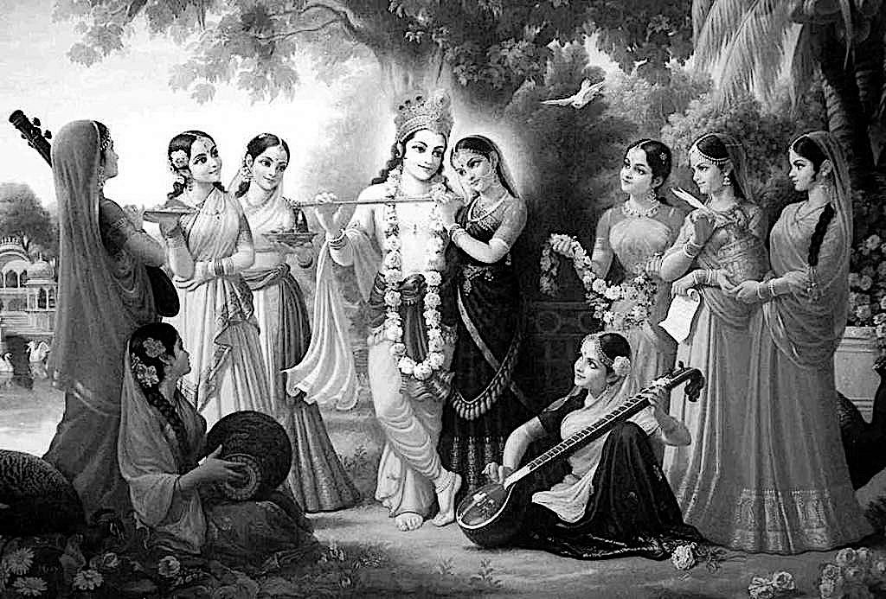
1) Для того, чтобы начать какую-либо деятельность, надо хотя-бы заинтересоваться, привлечься.
2) Когда уже заинтересованность и намерение действовать есть, нужны инструкции, руководство и помощь в деятельности. Нужен пастух, который погонит живое существо в нужном направлении.
3) Ну а цель, к которой мы стремимся, и к которой нам помогает прийти пастух – это объект нашей любви.
Таким образом, на каждом из трёх этапов процесса познания, то есть самопознания, нам помогает сам Бог в своих трёх ролях: Мадана Мохан, Говинда и Гопинатх.
«Три основы духовной жизни, три различных процесса в духовной практике – это Радха Мадана Мохан, Радха Говинда и Радха Гопинатх.
Мадана Мохан – это тот, кто привлекает бога любви, Купидона. Купидон имеет абсолютную власть над воплощёнными живыми существами. Все подчиняются любовным желаниям. Собственно, ради этого и живут. Практически, невозможно противостоять этой силе. Только высокодуховные люди считаются освобождёнными от этого влияния – те, кто обрёл ещё более высокий вкус, чем любовные отношения в материальном мире, которые называются вожделением, на более низком уровне похотью. Мы это называем непреодолимой силой, которая влечёт мужчину и женщину, даже помимо их воли, рассудка, даже не взирая на общественное мнение, через все препятствия проходит, буквально сводит с ума человека, иногда делает его неадекватным. Это – сила Купидона. Мадана означает сводящий с ума, возбуждающий чувства.
Три божества Вриндавана олицетворяют три этапа постижения Абсолютной Истины, Личности Бога. Если мы хотим встать на путь духовного саморазвития, то мы пройдём через три этапа последовательно.
1) Первый этап – это самбандха гьяна – означает знание взаимоотношений. Это как конституция. Кто я? И Кто Такой Бог? Нужно разобраться в этих двух таттвах[233], в этих двух сущностях и понять свою конституцию и конституцию Бога. Бог – это полное целое, а я – частичка этого полного целого, качественно такая же, а количественно бесконечно меньше. Если нас не привлекает положение Бога, то мы не сможем встать на следующий этап развития.
2) Следующий этап духовного развития олицетворяет Говинда – означает повелитель чувств. Он занимает наши чувства. Это практика. Итак, если мы получили знание, выяснили отношения, то мы потом уже вступаем непосредственно в отношения, в деятельность. Это можно сравнить с процессом. Абхидхея называется, или в духовной жизни – духовная практика. Абхидхея – это путь, который мы должны пройти, практикуя духовную жизнь через правила, предписания, по которым нужно жить.
3) А в конце концов конечный результат – это любовь к Богу – это прайоджана – конечная цель. Это уже развитая любовь к Богу. И Гопинатх олицетворяет этот процесс.
Любое мероприятие проходит через эти три этапа. Это принцип развития:
- сначала знание,
- потом опыт и практика,
- и только затем мы получаем нужный результат» [2].
«Самбандха-гьяна помогает человеку установить его изначальные отношения с Верховной Личностью Бога, абхидхея определяет деятельность, соответствующую этим отношениям, а прайоджана указывает высшую цель жизни – любовь к Богу» ([1] Чайтанья-чаритамрита 1.7.73, комментарии).
«Человек должен задаваться вопросом о том, кто он, что представляет собой вселенная, кто есть Бог и какие отношения связывают: человека, Бога и материальный мир. Такие вопросы не возникают у кошек и собак, но в сердце настоящего человека они не могут не возникнуть. Знание об этих четырёх истинах – о себе, о вселенной, о Боге и об их взаимосвязи – называется самбандха-гьяной, или знанием об отношениях. Установив отношения с Верховным Господом, человек делает следующий шаг и начинает действовать сообразно этим отношениям. Деятельность в отношениях с Господом называют абхидхеей. Когда человек выполняет обязанности, соответствующие таким отношениям, он достигает высшей цели жизни – обретает любовь к Богу и тем самым приходит к прайоджана-сиддхи, то есть исполняет миссию человеческой жизни» ([1] Чайтанья-чаритамрита 1.7.146, комментарии).
Звук
Поскольку речь уж зашла о слушании, нелишним было бы выяснить, что такое звук.
«Главная способность человека – это способность говорить, издавать звуки. Это очень хорошая карма, когда вас люди слушают. Это настоящее могущество. Кто достигает духовного уровня, кто освобождается от вожделения, его слова становятся реальностью. Он не говорит впустую» [2].
В Ведах содержится знание об уровнях звука. Воспроизводимый человеком звук действует на четырёх уровнях:
1) вайкхари,
2) мадхьяма,
3) пашьянти
4) и пара.
«Трансцендентный звук Вед очень трудно постичь; он проявляется на разных уровнях: в пране, чувствах и уме. Он словно океан – безграничный, необычайно глубокий и неизмеримый. Звук Вед, согласно самим Ведам, состоит из четырёх слоев, постичь которые могут лишь самые разумные брахманы» ([1] Шримад-Бхагаватам 11.21.36).
1. Вайкхари (звук в пространстве)
Когда мы просто произносим слова, мы воспроизводим слышимый звук, или звук на уровне вайкхари. Иными словами, это обычная человеческая членораздельная речь.
Этот уровень звука преимущественно используется на стадии усвоения знания киртанам – повторение.
Инструментом воспроизведения обычного звука уровня вайкхари является речевой аппарат грубого физического тела человека. С помощью своего грубого тела человек реализует то, что находится в его уме.
На уровне звука вайкхари задействуется вишуддха, горловая чакра.
Звук уровня вайкхари активирует творческую энергию человека.
«Сложность состоит в том, что три слоя из четырёх находятся внутри живого существа, и лишь один из них проявляется вовне как речь. Обычным людям очень трудно понять даже этот четвёртый слой ведического звука, называемый вайкхари. Последний, доступный материальному восприятию слой ведического звука называется вайкхари» ([1] Шримад-Бхагаватам 11.21.36, комментарии).
2. Мадхьяма (мысли)
То, что мы думаем в момент произнесения слов, является звуком мыслей, или звуком на уровне мадхьяма. Иными словами, это просто наши мысли.
Этот уровень звука преимущественно используется на стадии усвоения знания шраванам – слушание.
Инструментом воспроизведения более тонкого звука уровня вайкхари является тонкое тело человека. С помощью своего тонкого тела ума человек разрабатывает конкретный план реализации своих желаний, находящихся на более высоком уровне в иерархии уровней сознания.
На уровне звука мадхьяма задействуется анахата, сердечная чакра.
Звук уровня мадхьяма активирует энергию знания человека.
«Слой на уровне разума, мадхьяма, располагается в области сердца, в анахата-чакре» ([1] Шримад-Бхагаватам 11.21.36, комментарии).
Всё, что связано с эзотерикой, телепатией, и тому подобным, происходит на этом уровне звука – мадхьяма. На этом уровне общаются человеческие существа, стоящие на более высоком уровне развития, чем мы.
3. Пашьянти (желания)
То, что мы желаем в момент, когда думаем и говорим, является звуком на уровне желаний, или звуком на уровне пашьянти. Иными словами, это просто «наши» желания. Слово «наши» здесь взято в кавычки, потому что это на самом деле, скорее всего, не желания души, а желания ложной души, ложного эго.
Этот уровень звука преимущественно используется на стадии усвоения знания мананам – запоминания и осмысливания.
Инструментом воспроизведения ещё более тонкого звука уровня пашьянти является причинное тело – ещё более тонкая составляющая человеческого сознания, которая называется разумом, или интеллектом. С помощью своего разума человек мечтает, или разрабатывает стратегические далеко идущие планы. Этот уровень звука неотличен от образа, хранящегося в сознании.
На уровне звука пашьянти задействуется манипура, солнечная чакра.
Звук уровня пашьянти активирует человеческую энергию желания.
«Следующий слой, умственный, или пашьянти, находится в области пупка, на манипурака-чакре» ([1] Шримад-Бхагаватам 11.21.36, комментарии).
Всё, что связано с передачей образов, происходит на уровне звука пашьянти. На этом уровне общаются мудрецы. Мудрецам не нужен потоковый канал для передачи друг другу информации. Они используют для общения самораспаковывающиеся в сознании собеседника образы. Так естественным образом передаётся ведическое знание.
4. Пара (трансцендентный звук)
То, что желает душа, является непроявленным звуком, или звуком на уровне пара. Этим желанием является желание души всегда быть полезной для всех, то есть желание служить.
Инструментом воспроизведения самого тонкого звука уровня пара является духовное тело живого существа. Это трансцендентный уровень, то есть недоступный материальным органам чувств. Этот звук невозможно услышать с помощью ушей, о нём невозможно подумать. Этот уровень звука неотличен от духовного тела. Иными словами, в духовном мире душа, тело его звучание – это одно и тоже, они слиты воедино.
На уровне звука пара задействуется муладхара, корневая чакра.
Звук уровня пара активирует энергию служения живого существа.
«Звук – очень ёмкая форма. И вот звук апракрита, духовный, нематериальный одновременно имеет форму, вкус, запах, цвет, функции. Он рассматривается как живое существо, проникающее в сердце человека. Звук. От источника к слушающему – самая главная функция. Мы не видим человека, мы слышим человека. Душу мы не видим, мы слышим. То есть звук, оказывается, – единственная энергия, вибрация, которая может проникать из духовных сфер в материальную сферу, в сердце человека. Так что духовный мир у каждого из нас находится в сердце. Он не привносит ничего, просто пробуждает. Но сначала очищает. Ман-тра: тра – это очищение, освобождение. Ничего извне не привносится. Всё есть в каждом из нас» [2].
«Первый слой ведического звука, соответствующий уровню праны и известный как пара, располагается в адхара-чакре» ([1] Шримад-Бхагаватам 11.21.36, комментарии).
На этом уровне общаются живые существа в духовном мире.
Мантра
«Мантра начинается с вводного звука, например, ом, а заканчивается словом, символизирующим поклон, – намаха или сваха. Мантру украшают биджи, мантры-семена, такие как клим, аим и другие, и, кроме того, мантра содержит имена Господа.
Биджа означает семя. Как в маленьком семени присутствует целое дерево, так и в каждой бидже, в одном только слоге, заключён смысл всей последующей мантры.
Биджа-мантры – это изначальные звуки, обладающие способностью пробуждать определённые энергии, как внутри того, кто их повторяет, так и вовне.
Каждая биджа-мантра качественно равноценна определённой форме Бога или проявлению Его энергии. Причина того, что один простой слог обладает столь удивительным могуществом, кроется в тонкой природе ведического звука. Буквы санскритского алфавита не следует считать обычными, мирскими.
У каждой буквы санскритского алфавита есть свой духовный двойник, дремлющий в виде тонкой вибрации внутри живого существа, связанного сейчас путами материальной энергии. Иными словами, каждый звук санскрита обладает определённым энергетическим свойством. Некоторые из этих первичных звуков, объединившись, предстают в новом качестве – в виде биджи. Повторение биджей пробуждает дремлющую в них звуковую энергию.
Биджи обладают способностью уничтожать материальные впечатления, привязанности и желания, глубоко укоренившиеся в нашем сознании.
Каждая биджа-мантра соотносится с одной из трёх главных энергий Бога, в соответствии с тем, какое божество эта биджа представляет.
Материальным умом невозможно постичь безграничность ведического звука» [19].
|
|
Биджа-мантра |
Аспект |
Энергия |
Проявление |
Божество |
Богиня |
|
1 |
ом |
сат |
сандхини |
разнообразие |
Кришна |
Гаятри |
|
2 |
аим |
чит |
самвит |
знание |
Баларама |
Савитри |
|
3 |
клим |
ананда |
хладини |
взаимоотношения |
Радха |
Сарасвати |
«Через духовный звук постепенно раскрывается ведическое знание:
1) Первым проявлением ведической истины является омкара, графически представленная символом ॐ.
2) Далее та же самая истина обретает облик гаятри-мантр, в частности брахма-гаятри.
3) Затем она проявляется в форме Вед.
4) Затем это знание обобщается в виде Веданта-сутры, в которой содержится вся суть Вед.
5) Наконец своё полное выражение суть ведического знания получает в Шримад-Бхагаватам, совершенном комментарии на Веданта-сутру. Бхагаватам – это безупречное священное писание, при помощи которого можно познать Абсолютную Истину» [19].
«Йоги медитируют на звук Ом и достигают умиротворения, бесстрашия. Но это – способность слышать. Для того, чтобы услышать Ом, недостаточно уха, его нужно пропустить внутрь. Вот это и называется йогой: как этот звук пропустить в сердце, внутрь. И так йог постепенно достигает внутри духовного осознания при помощи этой вибрации.
Таким образом, все материальные представления о жизни просто исчезают, устраняются. Как? Человек просто услышал звук Ом, но не просто ухом, а своим существом. Выясняется, что эта вибрация соответствует и нашей вибрации. Трансцендентная вибрация Харе Кришна маха-мантры – это наша колыбель. Это то, из чего всё исходит, каждое живое существо, и в чём всё находит прибежище. Вибрация даёт прибежище всем, родственна любой душе, любому живому существу.
Вибрации Ом и Харе Кришна качественно идентичны.
Начинается слушание с уха. Ухо – самый важный инструмент: оно бодрствует даже во время глубокого сна. Нам дано ухо, при этом ещё язык дан, который может вибрировать, поизносить эти мантры» [2].
«Пракрита означает звук материальный: любое обозначение предмета, просто механический какой-то звук, шелест деревьев, шум воды в реке, человеческая речь, когда мы говорим о каких-то материальных объектах или наших материальных представлениях. Материальные означает, что мы говорим о предметах, которые касаются наших чувственных наслаждений. Это всё наша материальная область существования.
И когда мы говорим об этом, эта речь называется пракрита:
– Я чувствую вот так.
– Мне нравится вот это.
– А вот это мне не нравится.
Что по-моему хорошо и что по-моему плохо, кто является другом и кто является врагом. То есть двойственность.
Есть звук апракрита, который является тонким источником энергии. То есть вначале было слово – Библия говорит. И слово было у Бога. И слово было Богом. И с этой тонкой матрицы звука разворачивается творение: развиваются уже какие-то другие энергии, уплотняются в различные волны и образуется вещество.
А изначально волна исходит из света. То есть звук сопровождается светом. Это духовный звук. И он имеет природу абсолютную.
Ну сейчас учёные знают что-то о природе звука в эфире: он хранит тонкие формы и обозначения. Например, в эфире, в пространстве мы можем сегодня на расстояние передавать звук и форму в интернете.
Йоги могли этим пользоваться без современных технологий: без интернета, без телефонов, без компьютеров – при помощи медитации. Для того, чтобы медитировать, необходим звук апракрита.
То есть звук не только обозначает формы, но и звук – это импульс к действию. Используется иногда как команда, как призыв, как то, что пробуждает наши чувства – различные слова, интонации.
В этом знакомом нам мире самая сильная мантра, которая подчиняет наш ум буквально за одно мгновение, – когда вы слышите в свой адрес: «Я тебя люблю». Вы на какой-то момент теряете волю просто.
С другой стороны, звук может сильно противопоставить людей, пробудить какие-то агрессивные энергии, враждебные ноты. В Бхагавата Пуране говорится, что злая речь – это предвестник смерти. То есть прежде, чем люди наносят друг другу боль, увечья или убивают, этому сначала предшествует злая речь, звук пракрита.
Любой звук пракрита переходит в разрушение, насилие. Люди объединяются, чтобы разрушать кого-то при помощи звуков, определённых гимнов, сочиняют специальные песни, бьют в барабаны –идут друг против друга, используя какие-то инструменты звука. Так ум становится решительно направленным. Если дикому племени нужно убить дикого медведя, прежде чем пойти на эту опасную охоту, они берут копья и ходят вокруг костра. Синхронно, ритмично. Отбивают копьями и барабанами ритм и повторяют эту фразу: «Мы убьём медведя! Мы убьём медведя!» Это мантра. Они формируют определённое умонастроение, определённую решимость, определённую готовность в какой-то экстремальной ситуации.
И для этого нужен звук – чтобы вдохновить человека, пробудить в нём эту энергию решимости к действию, даже к опасному действию, даже на смерть человека можно вдохновить звуком. Речью пламенной, патриотической, используя понятия, слова.
И так же можно обмануть словом, создав образ ложный какой-то. То есть можно что-то пообещать человеку, убедить его в чём-то, но не сделать этого, извлечь из этого выгоду.
Но звук мантры – это нечто иное, духовный звук, апракрита. Он является источником всех добродетелей в человеке. Поэтому мантра необходима. Необходимо слышать хорошие звуки, благоприятные звуки, позитивные звуки, которые гармонизируют наш внутренний мир, побуждают к возвышенной деятельности.
И какие же это высшие понятия в Ведах или священных писаниях даются? Самые высшие понятия заключены в именах Абсолютной Истины, в именах Бога, Абсолюта. Любая мантра связана с именем Абсолюта, или с именем Бога.
Свет и звук в данном случае синонимы. Волнообразная природа постепенно уплотняется до вещества. А вещество, распадаясь, снова переходит в свет – тление называется. Этот круговорот постоянно поддерживается.
И при помощи звука можно создавать, можно поддерживать и можно разрушать. Этим искусством обладали все великие жрецы прошлых эпох древности. Они управляли миром словом. Эти люди назывались познавшие Брахман, или брахманы. Познавшие дух. Из глубины души они могли создавать образы любви, образы свободы.
Естественно, что люди привлекаются этими вещами. Появляется управление духовное просто благодаря благоприятному слову, благому – благословение называется.
Сегодня таких могущественных людей нет на Земле. Но мантра есть.
Некоторые мантры работают только с уровня благости. Тот человек, который достиг уровня благости, может воспользоваться мантрой Ом. Если кто-то из вас не достиг гуны благости, эта мантра не работает должным образом: она будет пробуждать ещё сильнее материальные страсти. То есть обратный результат может быть. Поэтому она рекомендуется только при определённом посвящении, когда человек достигает гуны благости, платформы чистоты. Также многие разделы этих писаний работают, то есть приходят в сознание человека только с уровня гуны благости. Когда человек ведёт такой соответствующий образ жизни, он может понимать, что там написано, слышит, что там произносится.
Ниже этого уровня – не работает. Поэтому сегодня Веды люди не знают. Они, даже если их читают, не могут их понять» [2].
Киртан
«Есть музыка нижних чакр. И сразу видно: если это человеку нравится, понятно, что за культура. Музыка должна быть сбалансирована так, чтобы вывести психическую энергию человека вверх, воодушевить его сильно на хорошие вещи. Есть музыка военная: марши, барабаны бьют, и люди идут в атаку. Музыка есть сексуальная. Эта музыка сейчас преобладает по миру. Все современные песни сексуальные. Если вы танцуете под эту музыку, понятно, что это вожделение. Есть музыка духовная, которую трудно понять человеку в этом состоянии. Но если она проникнет в сердце – эта духовная музыка – она вытеснит всё остальное.
Дочь, когда росла, мы слушали бхаджаны, киртаны. Пели. Избегали мирской музыки. А она уже – подросток. И в этом возрасте обычно привлекает рок музыка сильно, влияет на молодёжь. Они ничего не могут с собой поделать просто. Даже преданные подростки. А она слушает там раги какие-то индийские. Я думаю: может, мы её как-то подавляем? Думаю: может, она боится нас, из страха. Однажды я ей сказал: может, ты хочешь послушать ещё музыку какую-то? Современную может быть? Она: нет. Говорю: ну вот такая ещё музыка есть, тоже красивая. Мировая классика существует. Я стал ей перечислять. Она говорит: ты меня не понимаешь вообще! Самая лучшая – это индийские раги[234], когда бхаджаны поют. А это что за музыка вообще? Её не привлекало это. Она слышала, но её не привлекало. Потому что проникла глубоко эта вибрация» [2].
Около пятисот лет назад воплощение Бога Господь Чайтанья в Западной Бенгалии основал движение санкиртаны – совместное воспевание святых имён Бога.
Наиболее устоявшимся термином в настоящее время является «киртан» – пение Харе Кришна маха-мантры под аккомпанемент таких музыкальных инструментов, как:
- физгармонь,
- мриданга,
- караталы.
Но могут использоваться и любые другие музыкальные инструменты. Также активно используются так называемый инструмент каратаны – хлопание в ладоши.
Ведущий киртана, или киртания пропевает маха-мантру, а потом все остальные участники киртана повторяют эту мелодию хором. И так много раз. Киртан может длиться от нескольких минут до нескольких часов. Участникам не надоедает петь одну и ту же мантру, потому что этот звук является трансцендентным, и его слушание и воспроизведение приносит невероятное блаженство.
Каждую лекцию или обсуждение на духовную тему, а также любое другое начинание очень благоприятно начинать с киртана. Это настраивает на духовную волну и значительно усиливает способности к сотрудничеству.
Существует также понятие бхаджан – пение духовных песен, молитв, мантр, сопровождаемое игрой на музыкальных инструментах.
Существует восемь изначальных божественных музыкальных инструментов. Рупа Госвами в Радха-Кришна-ганодеша-дипике описывает, что каждая из восьми главных гопи[235] играет на одном из божественных музыкальных инструментов:
- на мриданге – Вишакха;
- на караталах – Судеви;
- на гонге – Читра;
- на колокольчиках – Рангадени (также она играет на горшках по-разному наполненных водой);
- на саптасаре – Тунгавидья;
- на тамбуре – Чампакалата;
- на вине – Лалита;
- на эсрадже – Индулекха.
Все эти музыкальные инструменты низошли в этот мир непосредственно из духовной реальности. Про них Рупа Госвами пишет: «Перечисленные музыкальные инструменты очень сильно выражают любовь и преданность Господу. Остальные же музыкальные инструменты больше выражают эмоции музыканта».
Усвоение знания
Усвоение знания – это не только заучивание, чтобы сдать экзамен. Знание нужно для того, чтобы применять его на практике. И даже применение на практике – не самое главное. В итоге нам должно понравиться то, что мы делаем, и только тогда будет достигнута цель знания. Многие люди ухитряются закончить институт с красным дипломом, но так ничему и не научиться, то есть не быть в состоянии применять своё знание в жизни, а уж про то, чтобы получать удовлетворения от этой деятельности, и речи не идёт.
В Упанишадах говорится о трёх стадиях усвоения знания, о трёх ступенях преображения человека.
1. Шраванам-киртанам (слушание-повторение)
«Первая ступень – шраванам. Вначале знание должно войти в наше ухо. Вначале мы должны услышать его. Всё ведическое[236] образование основано на шраванам, на том, что человек слушает. Считается, что для начала достаточно просто слушать духовного учителя. Интересно, что вплоть до восьмого века нашей эры Веды практически не записывались. В Махабхарате говорится, что записывать Веды – грех, и тот, кто этим занимается, попадёт в ад. Таким образом, всё говорит о том, что Веды нужно обязательно услышать от духовного учителя, который знает и понимает их смысл.
И, помимо всего, услышанное нужно обязательно повторить – киртанам. Шраванам обязательно предполагает киртанам. Это та же самая ступенька.
Когда мы говорим о шраванам, мы имеем в виду, что сначала мы слушаем, потом мы повторяем, и потом мы запоминаем.
Риг-веда описывает процесс обучения в ведической школе. Он подобен кваканью лягушек. Как только одна лягушка начинает квакать, тут же её кваканье поддерживает целый лягушачий хор. И подобно тому, как перед дождём лягушки устраивают свой лягушачий концерт, радуясь, что сейчас пойдёт дождь, точно также ученики в предвкушении того, что сейчас на них прольётся дождь милости духовного учителя, становятся очень активными. Но проходит дождь, лягушки успокаиваются и умолкают, над их владениями воцаряется тишина. Этот процесс Риг-веда сравнивает со вторым этапом приобретения знания – осмыслением» [3].
«Этот звук врывается в нас как могущественный ветер и начинает рассеивать всю грязь внутри. Когда мы слушаем, речь не идёт о логике, о том, что надо воспринимать информацию, о логической составляющей того, что мне хотят сказать. Нет, тут другое. Человек может очень хорошо понять это, если просто будет слушать другого человека. Иначе говоря, речь идёт об откровении, о некоем чуде, мистическом процессе. И нужно настраивать себя на это чудо. Это чудо может случиться в любой момент. Но это чудо произойдёт только тогда, когда я открыт чуду» [3].
2. Мананам (осмысление)
«Вслед за шраванам происходит осмысление, мананам.
Первому этапу – шраванам-киртанам – соответствует способность запоминать, способность удерживать в уме информацию. Но мало просто запомнить. Для того, чтобы действительно произошла перемена в сердце, необходим следующий этап – мананам – осмысление. Вы должны подумать над тем, что услышали. Мало услышать и повторить, надо ещё и поразмыслить.
Это как раз тот этап, который мы часто опускаем.
Бхактивинода Тхакур говорит о двух ошибках, которые можно допустить, читая священные писания. Он характеризует два типа людей, читающих священные писания. Первых он называет «бесплодный читатель», а вторых – «поверхностный критик». Это очень интересная мысль. В русском языке нет даже такого словосочетания – «бесплодный читатель». Бывает бесплодный писатель, но про чтение никогда не говорят, что оно приносит плоды. Однако Бхактивинода Тхакур говорит, что если человек не пытается осознать то, что он услышал, это всё равно, что он берёт идею и заключает её в тюрьму своего интеллекта. Мысль такого человека гниёт в темнице его интеллекта.
Любое слово, которое мы прочли или услышали от духовного учителя, должно прорасти в нас. Мананам – это процесс прорастания мысли.
«Поверхностный критик» – это тот, который с порога всё отвергает, не давая мысли прорасти. И это уже связано с третьим этапом» [3].
3. Ниди дхьясана (практика)
«Третий этап называется ниди дхьясана.
Этот этап самый главный. Это, собственно, то, ради чего мы это всё затеяли.
Если мы не переходим на третий этап, всё остальное бессмысленно, напрасная трата времени. Ниди дхьясана – непрерывная глубокая медитация – является следствием обработки полученной информации.
Иначе говоря,
- информация входит в ухо,
- из уха она переходит в ум,
- и в уме она обрабатывается,
- и потом переходит в сердце.
Именно на этом этапе меняется мировоззрение человека. Человек начинает реально видеть свою душу и верховную душу.
Постепенно мы должны научиться видеть своими ушами, только тогда мы утверждаемся в духовном знании» [3].
Упражнение на усвоение
Процесс обучения чем-то похож на процесс дрессировки животного. Только дрессируем мы свой ум.
Обучение – это сосредоточение на чём-либо и длительное и регулярное повторение. Такая длительная тренировка перестраивает сознание, укрепляет связь с тем, на чём мы сосредоточиваемся.
Для развития способности усваивать знания существует специальное упражнение.
1) Первая часть упражнения состоит простом повторении, как попугай, за кем-нибудь каких-нибудь наполненных смыслом фраз, пока не будет достигнуто точного воспроизведения, как в магнитофоне.
2) А затем ученику необходимо привести жизненный или выдуманный пример того, что им было воспроизведено.
В результате нескольких проходов этого простого на первый взгляд упражнения очень быстро развиваются интеллектуальные способности человека. Можно даже пройти тест на IQ до и после и сравнить результат. Вы будете сильно удивлены.
Кто как слушает
Как уже указывалось ранее, слушание – это основа обучения. И чем правильнее мы научимся слушать, тем эффективнее будет процесс обучения.
1) Слушание умом
«Большинство людей слушают умом. Это значит, что информация от учителя не проникает глубже, чем в ум ученика. Возможно несколько вариантов слушания на уровне ума:
1. Ум человека принимает из прослушанного только то, что ему нравится, и не понимает то, что ему не нравится.
2. Ум человека принимает всё подряд. А разум, который должен управлять умом, отключён.
3. Ум человека принимает не всё подряд. Тому, что ум отвергает, разум находит логическое обоснование. Разум, который должен управлять умом, на самом деле подчинён и потакает уму.
4. Ум человека принимает слепо всё то, что говорит ему авторитет. Но разум не позволяет словам авторитета проникнуть вглубь сознания. На уровне ума нормальные отношения между учителем и учеником не возникают, мы не можем положиться на такие отношения» [3].
2) Слушание разумом
«Более развитые люди уже слушают разумом. Это чаще всего учёные или йоги. Такие люди вначале слушают как сторонние наблюдатели, занимая нейтральное положение. А потом, внимательно дослушав, пытаются понять. Тогда могут возникнуть настоящие отношения между учителем и учеником» [3].
3) Слушание сердцем
«Если человек недавно решил встать на путь самоосознания, ему, в первую очередь, нужно определиться с выбором духовного учителя. Но когда духовный учитель только появляется в жизни ученика, ученик понимает не всё, что говорит духовный учитель, но продолжает слушать его очень внимательно. Ученик открыт к знанию, он слушает и смотрит, впитывая знание от духовного учителя через его: эмоции, мимику, жесты. По мере обучения ученик приобретает опыт в практике самоосознания. У ученика появляется способность принимать сразу полностью всё, что говорит духовный учитель, но не слепо. После того, как услышал, ученик думает над тем, каким образом слова духовного учителя являются правдой. Ученик задаёт вопросы духовному учителю, чтобы понять услышанное и развеять сомнения» [3].
Искусство смиренного слушания
Слушать и слушаться – очень близкие понятия. Слушает ученик, и слушается ученик. Так работает процесс обучения, познания.
«Слушать нужно духовным ухом, сердцем. Ухо – это внешний инструмент, глаз – это тоже внешний инструмент. Но Веды говорят, что слышит не ухо, и видит не глаз. Посредством глаза видит разум. И посредством уха слышит разум. И когда слышит разум – это называется смиренное слушание: я пытаюсь понять, что мне говорят. Вот это – сложно, потому что мы много времени тратим на ссоры, потому что не можем понять друг друга. Слушаем, но не понимаем, потому что без сердца слушаем. «Мне и так всё понятно без тебя, я сам тебе всё скажу» – это формальное слушание.
Когда мы слышим не разумом, мы обращаем внимание на внешние факторы жизни: какая машина, какая квартира, сколько лет человеку, какой он национальности, мужчина он или женщина и так далее. Это самая серьёзная ошибка» [3].
Искусство смиренного слушания – это основа успеха в овладении любым искусством. Приведённые ниже рекомендации имеют универсальный характер. По сути, это методологические основы процесса обучения в любой области. Ввиду особой важности процесса слушания эти рекомендации названы искусством смиренного слушания.
Абхьяса (повторение)
У нашего ума есть свой офис. Это головной мозг с огромной нейронной сетью. Количество нейронов составляет около девяноста миллиардов. Эти нейроны могут устанавливать связи друг с другом, образуя нейронную сеть. В процессе обучения повторение пройденного материала нужно для того, чтобы в нашем головном мозге закрепились новые связи между нейронами. Неокрепшие логические связи за ненадобностью могут разорваться. Повторение необходимо для того, чтобы новая структура закрепилась в нашем сознании. Народная мудрость гласит: «Повторение – мать учения».
«Закреплению нейронных связей способствует многократное слушание одного и того же. Вначале будет трудно. Ум будет сопротивляться и говорить: «Ну сколько можно?» Но потом мы войдём во вкус и даже будем радоваться тому, что опять это слышим» [3].
«Каждый последующий раз надо слушать как в первый раз. Мы, на первый взгляд, не услышим ничего нового, но найдём новые аспекты в услышанном. И истина заиграет новыми гранями» [3].
«Слушая в первый раз, мы воспринимаем знание поверхностно. Глубокому восприятию мешает наш имеющийся опыт. Эти шаблоны работают как броня для нового знания. Однако многократное слушание одного и того же пробивает эту броню старых впечатлений» [3].
В Йога-сутре (1.14) сказано:
«Только после длительного выполнения правильных упражнений, без перерывов, при наличии положительного к ним отношения и рвения,
можно достичь желаемого».
Другими словами, для того, чтобы наше обучение, да и вообще любое дело, было абхьяса, необходимо выполнение следующих трёх условий:
1. диргхакала (длительное время),
2. найрантарья (непрерывность)
3. и саткара (осознанность и почтительность).
1. Диргхакала (длительность)
Это нужно для того, чтобы сформировались и закрепились устойчивые нейронные связи в нашей нейронной сети головного мозга. Поэтому запаситесь терпением и слушайте, слушайте, слушайте. К сожалению, таблетки со знанием в аптеке не продаются.
«Заниматься желательно каждый день один час. Если времени не хватает, выделите минимум пятнадцать-двадцать минут в день.
Простая привычка, такая, как вставать рано или бросить курить, формируется тридцать-сорок дней.
Сложная привычка, навык, такой, как выучить иностранный язык, формируется один год, цикл Меркурия.
Очень сложная привычка, такая, как овладение профессией, формируется двенадцать лет, цикл Юпитера, планеты мудрости» [3].
«В результате такого длительного слушания сформируется новая структура личности. Изменится весь спектр наших реакций на этот мир, понимание своих целей, отношение к себе, к другим людям, к окружающему миру» [3].
Не надо огорчаться, когда в процессе обучения что-то не получается. И не надо слишком радоваться, когда в процессе обучения что-то получается. Старайтесь не желать ничего для себя. Просто продолжайте обучение.
2. Найрантарья (непрерывность)
Стабильность – это признак мастерства. А ещё стабильность – это признак искренности. А истинная искренность является практически гарантией успеха.
«Не прерывайте свою ежедневную практику. Важность непрерывности – в том, что новые нейронные связи, новая структура в сознании быстро разрушается, если мы её не поддерживаем. Если мы хотим вскипятить воду в чайнике, но будем этот чайник постоянно отключать от электричества, то ничего не получится» [3].
«Выполнять практику желательно:
- в одно и то же время,
- в одной и той же обстановке
- и при одних и тех же обстоятельствах.
Со временем ум привыкает к своему расписанию и даже радуется занятиям» [3].
Бетховен говорил: «Если я не делаю свои музыкальные упражнения один день, я сам замечаю это. Если я не делаю это два дня, мои друзья заметят это. Если я не упражняюсь три дня, все остальные заметят это».
«Если есть порядок, то ум становится направленный, как луч света. Например, если вы привыкли к распорядку дня: подниматься в одно и то же время, делать свои дела в одно и то же время, молиться в одно и то же время, принимать пищу в одно и то же время – у вас есть чёткое цикличное расписание. Это благоприятно для ума, потому что в назначенное время ум уже будет думать только об этом. Ум тогда перестаёт быть: беспокойным, рассеянным, неконтролируемым. Потому что в этом мире ум согласовывается только со временем. Если вы не по времени всё делаете, вы всегда будете беспокойны, суетливы. Это аспект времени» [2].
Избегайте того, что разрушает выстраиваемые связи в нашем сознании. Например, если предметом нашего обучения является самоосознание, духовная практика, то разрушительным для новых связей в сознании будет общение с людьми, далёкими от духовной практики. Духовный разум – это разум, который помогает видеть духовные связи и Бога, стоящего за всеми событиями. Материальный разум видит, как всё связано в этом мире на внешнем, поверхностном уровне. Общение с материалистами, длительное времяпровождение в интернете укрепляет материальный разум, внешние связи и ослабляет духовный разум, видение духовных связей.
3. Саткара (почтительность)
«Почтительное отношение к практике. Мы должны понимать цель нашей практики. Например, при обучении духовной науке самоосознания мы должны понимать, что, слушая, мы соприкасаемся с бесконечностью и можем обрести откровение. Откровение происходит не благодаря пониманию логики повествования, а благодаря беспричинной милости высших сил.
Гордый человек, который считает себя всегда правым, не поймёт никакую науку. Любая наука – для скромных и смиренных людей, способных подчиниться человеку, осознавшему высшие законы бытия – духовному учителю.
При этом у ученика всегда остаётся свобода задавать вопросы. Более того, признаком того, что ученик овладел искусством смиренного слушания, является то, что он задаёт вопросы. Если слова учителя не вызывают сомнений, значит они не зашли достаточно глубоко в сознание. Откровение – это когда начинает земля шататься под ногами. И это уже хороший признак того, что ученик слушает учителя правильно» [3].
Внимание
Слово уважение имеет славянский корень – увага – означает внимание. То есть уважение, почтительность – то же самое, что и внимание.
По мере развития мудрости ученики проходят несколько стадий в умении слушать духовного учителя:
1. Откровенное игнорирование.
2. Притворное слушание. При этом мы в уме вместо того, чтобы внимательно слушать, сразу готовим ответную речь. Если лошади что-нибудь говорить, она будет на вас смотреть преданными глазами, но её уши будут, как локаторы, вращаться и настраиваться на разные звуки вокруг. И лошадь ничего не поймет из того, что вы ей говорили. Это показательный пример притворного слушания.
3. Избирательное слушание. В этом случае мы слышим только то, что хотим услышать, что вписывается в нашу схему понимания обсуждаемой темы. А подавляющее большинство информации, которую до нас хотят донести, мы просто пропускаем мимо ушей.
4. Внимательное слушание без чуткости. Мы стараемся запомнить, но пока ещё глубоко не чувствуем то, что нам сказали.
5. Правильное слушание. Мы действительно слышим то, что хочет нам сказать другой человек. И даже можем подтвердить это. И другой человек подтвердит, что мы его правильно услышали.
Внимательность – это очень важная мистическая способность, которая является корнем успеха в любом деле.
Медитация в общем смысле этого слова – это сосредоточение на каком-то: предмете, явлении или личности, сконцентрированная форма желания. И мы постоянно медитируем на что-то, даже если не называем это так.
Хороший пример знакомого всем состояния медитации – это влюблённость. Это не просто постоянное размышление. Это буквально погружение своим сознанием в сознание любимого человека. Мы чувствуем его настроение, можем угадывать его желания. Более распространённая форма бытовой медитации – это: желание чем-то обладать, куда-то поехать или что-то попробовать.
Внимание – это канал, через который мы получаем знания и навыки. Насколько мы внимательны, настолько глубоко мы овладеем навыком.
Чтобы стабильно концентрировать своё внимание и получать знания и навыки, нужна вера в высшие силы. Потому что своих усилий нам, скорее всего, не хватит. Но одновременно с этим, внимание – это навык. И для того, чтобы он развивался, надо прилагать усилия.
Чтобы дождаться результата, нужно терпение. Результат приходит не сразу. Но необходимые нейронные связи в нейронной сети головного мозга начинают формироваться уже с первой тренировки.
Чтобы развивать внимательность, нужно отслеживать в себе проявления невнимательности и устранять помеху. Великий учёный-философ и духовный учитель Бхактивинода Тхакур определил следующие виды невнимательности и методы борьбы с ними.
1. Джадья
Это сонливость, лень в результате влияния гуны невежества.
Методы борьбы с этим видом невнимательности следующие:
- искать общества возвышенных людей, перенимать их настроение, следовать их примеру;
- высыпаться и быть внимательным к своему телу; нужно понять, сколько моему телу нужно времени для отдыха;
- не наедаться на ночь перед сном;
- при необходимости, сделать очищение организма (панча-карму);
- если засыпаете, нужно встать и постоять или походить.
2. Викшепа
Это рассеянность, беспокойность ума, сон наяву в результате влияния гуны страсти.
Методы борьбы с этим видом невнимательности следующие:
- предпринимать постоянные усилия, чтобы выбрасывать из ума ненужные мысли;
- стараться следовать правилам общественного поведения, этикету;
- соблюдать посты;
- делать психологическую настройку перед важным делом.
3. Аудасинья
Это равнодушие, безразличие, апатия в результате влияния гуны благости.
Методы борьбы с этим видом невнимательности следующие:
- ежедневно искать общества человека, в совершенстве владеющего навыком концентрации на одном деле;
- работать в уединённом месте, либо закрыв доступ чувств к объектам чувств;
- размышлять над мыслями святых людей.
Для развития внимательности существуют ещё следующие техники:
- делать одно дело за раз в течение минимум двадцати минут;
- выработать привычку жить в настоящем времени;
- направлять ум на дело, которым занят сейчас;
- делать пранаяму, дыхательную технику из аштанга-йоги.
Этапы овладения навыками
В процессе обучения мы неизбежно проходим следующие этапы овладения навыками.
1. Неосознанное неумение
Человек даже ещё не понимает, что он не умеет. Можно привести пример ребёнка, который садится за пианино и начинает стучать пальцами по клавишам, искренне думая, что у него очень красиво получается.
2. Осознанное неумение
Человек понял, что он не умеет играть на пианино, и пошёл в музыкальную школу учиться.
3. Осознанное умение
Это человек, полностью погружённый в процесс обучения. Он очень старается, тратит много сил, и уже что-то у него получается.
4. Неосознанное умение
Это виртуоз, профессионал высочайшего класса. Он владеет искусством автоматически, не задумываясь. Он может даже играть на пианино и одновременно разговаривать с кем-то.
Препятствия в обучении
Как мы уже выяснили в подразделе «Познание-общение-деятельность» раздела «Сознание» главы «Общение», на каждом шагу с нами происходит какое-то обучение. Что бы мы ни делали, это всё является обучением. Когда мы спим, умываемся, делаем зарядку, завтракаем, работаем, отдыхаем, играем, молимся, медитируем, одним словом, абсолютно всё представляет из себя процесс познания. И если в этом процессе нашего познания, в нашей жизни мы натыкаемся на какие-то препятствия, мы это расцениваем как какие-то неприятности, трудности, неудачи. Всё это мешает нам жить.
Самое большое препятствие в обучении (а значит и в жизни) создаёт неквалифицированный учитель или наставник. Дисквалификацией учителя или наставника является отсутствие у него любви к своему подопечному. Если любви нет, то проявляется безразличие, чёрствость, жёсткость, жестокость, злорадство, подлость, даже зависть. Такое я не раз наблюдал в школе, когда учился, и когда учились мои дети: как учителя со злорадством ставили плохие оценки. Это препятствие преодолевается прекращением общения с таким лжеучителем, конечно, если есть такая возможность.
Все остальные препятствия в обучении можно разделить на четыре категории в соответствии с затрагиваемым уровнем сознания:
1) Если препятствие встаёт на пути наших органов чувств, то нам не хватает наглядности.
2) Если препятствие встаёт на пути нашего ума, то это, как правило, связано с нашей понятийной оснащённостью, то есть с нашим словарным запасом.
3) Если препятствие встаёт на пути нашего разума, то это может проявиться как неспособность действовать из-за:
- неспособности различать:
- что делать вначале, а что потом,
- что главное, а что второстепенное,
- где правда, а где ложь,
- что такое хорошо и что такое плохо,
- неспособности заставить себя действовать (отсутствия силы воли).
4) А если препятствие встаёт на пути нашего ложного эго, то мы неправильно оцениваем, кто мы есть на самом деле, и порой принимаем себя за того, кто и так всё уже знает. Это очень серьёзное препятствие.
1. Мало наглядности
«Вначале все сотворённые существа находятся в непроявленном состоянии. На промежуточном этапе творения они проявляются, а после уничтожения вселенной вновь переходят в непроявленное состояние. Так стоит ли оплакивать их?» ([1] Бхагавад-гита 2.28).
Как видно из этой цитаты, бывает проявленное и непроявленное состояние. Кроме того, всё имеет разную степень проявленности, или разный уровень абстракции. Что это такое?
1) Когда мы слышим или читаем слово, за которым стоит какое-то понятие,
2) в сознании возникает образ объекта, соответствующий пониманию этого слова. В нашем сознании формируется определённая форма объекта, проявляется его характер.
3) При подробном рассмотрении этой формы объекта можно обнаружить качества этого объекта.
4) Ну и максимальной степенью проявленности являются функции, действия, или игры объекта, куда входят и его атрибуты и окружение.
Таким образом, мы сейчас рассмотрели последовательность уровней проявленности от минимальной к максимальной:
1) понятие,
2) образ,
3) качество,
4) действие.
На санскрите это звучит так:
1) нама,
2) рупа,
3) гуна,
4) лила.
Слово, или понятие содержит в себе
- и образ,
- и качества
- и деятельность.
Образ содержит в себе
- и качества,
- и деятельность.
Качества содержат в себе
- деятельность.
А деятельность кроме себя самой больше не содержит в себе ничего, это максимальное проявление.
Нарушение баланса между уровнями абстракции, или проявленности учебного материала приводит к трудностям в обучении. Простыми словами, если слишком абстрактно, нет возможности потрогать, то ученик перестаёт понимать. И потом из-за этого у него вообще пропадает настроение учиться.
Мало наглядности – это препятствие в обучении, которое может возникнуть при попытке воспринять слишком абстрактное знание, то есть чистые понятия, выраженные словами. Сильно недостаёт наглядности в случае, когда мы:
- не соприкасаемся с формой изучаемого объекта,
- не знаем его качества
- и, естественно, нам не видны его действия, игры и окружение.
Одним словом, нет наглядности.
Есть даже такая поговорка: «Лучше один раз увидеть, чем сто раз услышать».
Максимальная наглядность – это когда наши
- познающие органы чувств:
- уши,
- кожа,
- глаза,
- язык,
- нос
- соприкасаются с объектами чувств:
- звуком,
- предметами,
- формой,
- вкусом
- и запахом,
- используя действующие органы чувств:
- руки,
- ноги,
- голосовой аппарат,
- анус,
- и гениталии.
Но реальность может отличаться от того, что ощущают наши органы чувств. Ведь когда мы смотрим 7D кино, мы чувствуем:
- изображение заполняет весь объём зала,
- с разных сторон доносятся звуки,
- дёргается кресло,
- дует ветер,
- брызгает вода,
- какие-то верёвки щекотят ноги,
- могут даже запах пустить,
но ведь это обман, иллюзия.
Так вот, когда мы используем принцип наглядности в обучении, мы используем главный инструмент иллюзии, задача которой ввести нас в невежество, против неё же самой. Это действительно круто! Представляете, как эффектно выглядит, когда сражаются два воина, и один у другого отбирает оружие.
Препятствие в обучении, когда мало наглядности, сопровождается определёнными симптомами, возникающими у ученика. Эти симптомы могут проявляться у ученика либо по отдельности, либо в сочетании. Они следующие:
- чувство, будто на него что-то давит;
- чувство, будто что-то пытается его согнуть;
- головокружение;
- ощущение, будто жизнь его покидает, наступает апатия, грусть;
- скучно;
- злость;
- давление на лицо;
- головная боль;
- неприятные ощущения в животе;
- болят глаза.
Преодолеть препятствие мало наглядности очень просто. Надо добавить наглядности. Например, если человек хочет научиться делать хирургические операции, ему явно не будет хватать только учебника и объяснений преподавателя. Нужен какой-то макет в виде трупа, а потом и живое тело для практики. А если ребёнок не может понять, что такое умножение, здесь не обойтись без палочек.
2. Непо́нятое слово
«Конечно, в начале было слово. Конечно, идеи управляют миром» [14].
В толковом словаре сказано: «Слово – основная структурно-семантическая единица языка, обозначающая имя объекта, его свойство или поведение». Из этого определения видно, что слово обозначает понятие, идею, мысль.
«Слово хорошо тогда, когда оно верно выражает мысль; а верно оно выражает мысль тогда, когда вырастает из неё, как кожа из организма, а не надевается, как перчатка, сшитая из чужой кожи» (Константин Дмитриевич Ушинский).
И когда в стройном потоке наших мыслей образуется пробел, это сразу всё портит.
Непо́нятое слово – это препятствие в обучении, вызванное тем, что ученик не понимает значения какого-то слова в учебном материале или понимает его неправильно, например, не в том значении.
О том, что человек столкнулся с этим препятствием, можно судить по следующим внешним реакциям организма:
- ощущение пустоты в голове;
- упадок сил;
- чувство, как будто его здесь нет;
- нервная истерика;
- замешательство;
- бегство от занятий;
- тупость;
- неспособность понять и усвоить материал.
Существуют также два вида поведенческого проявления этого препятствия.
1. Первое проявление заключается в том, что человек после соприкосновения с неизвестным словом на некоторое время полностью перестает воспринимать и усваивать учебный материал.
2. Второе проявление препятствия в обучении, связанного с непо́нятым словом, представляет целую серию действий в поведении человека:
2.1. Вначале возникает состояние непонимания (пустоты) в отношении материала, который идёт сразу после непо́нятого слова.
2.2. Ученик обособляется от всего учебного материала по этой теме. Он как бы не хочет иметь ничего общего с тем, что вызвало такой дисбаланс в его сознании. Другими словами, ученик не видит больше пользы в этом знании.
2.3. Далее ученик может начать совершать вредоносные действия против того, что косвенно связано с этим знанием. Особенно этому подвержены дети, которые могут, например, разрисовать или порвать учебник.
2.4. Когда вредительство заходит уже слишком далеко, учеником предпринимается попытка удержать себя от нанесения более серьёзного вреда окружающим и себе. Как правило, эта попытка оказывается неудачной.
2.5. Потом, разочаровавшись в своих силах, ученик начинает критиковать всех и всё вокруг. Это делается подсознательно для того, чтобы за счёт принижения других людей и обвинения обстоятельств в своих неудачах оправдаться в своих глазах.
2.6. Такие действия, вследствие нанесённых оскорблений окружающим, неизбежно приводят к стрессам и болезням.
2.7. Чтобы компенсировать создавшийся дисбаланс, ученик совершает попытку ухода, бегства от обучения. Но, как правило, система (школа, институт) так просто его не отпускает.
2.8. Тогда ученик формирует в своём сознании некую надстройку, механизм, который имитирует функции разума и может поверхностно выполнять учебные задания и выдавать в качестве ответов необходимые предложения и фразы.
2.9. Так как этот механизм – всего лишь имитатор разума, ученик не способен применять полученные так называемые знания на практике, не говоря уже об удовлетворённости.
Для преодоления этого препятствия нужно
- обнаружить непо́нятое слово (это самое трудное)
- и прояснить его значение с использованием словаря.
«Чтобы объяснить значение непонятного слова, его обычно сочетают с известными словами. Этот прием называется удгхатьяка» ([1] Чайтанья-чаритамрита 3.1.186).
Таким образом, если устранить это препятствие, у ученика появится снова энтузиазм, настроение учиться и силы для этого.
3. Нарушение порядка
Нарушение порядка – это препятствие в обучении, связанное с чрезмерным забеганием вперёд, форсированием событий, нетерпеливостью ученика или учителя, или наоборот, отставанием, а также непониманием, где причина, а где следствие.
В этом случае в сознании ученика теряется связь в логической цепочке понимания учебного материала. И вследствие этого процесс познания замедляется, приостанавливается или совсем прерывается.
Одна девушка пришла ко врачу, и состоялся такой диалог:
– Я беременна и хочу побыстрее родить.
– А какой у вас срок?
– Несколько недель.
– Хорошо, пройдёт девять месяцев, и в положенный срок вы родите.
– Но я хочу родить уже завтра!
– Так не получится.
«Процесс важнее цели – иногда говорят. Нужно правильно пройти его. Если знание получено неправильно, оно не принесёт счастья, не принесёт удачи. Даже истинное знание, полученное неправильным методом, – очень опасное явление» [2].
4. «Я всё это и так уже знаю»
Это самое труднопреодолимое препятствие в обучении – когда вы думаете, что и так уже всё это знаете. В этом случае вы считаете себя учителем. А учитель, который считает, что он учитель, он вовсе никакой не учитель! Даже когда вы кому-нибудь что-то рассказываете, то сами учитесь, глубже узнаёте.
Если вы думаете о каком-то предмете, что вы о нём уже всё знаете, то вы больше абсолютно ничего не сможете узнать об этом предмете. В этом случае вы даже не знаете, что и́менно вы не знаете. Если вы думаете, что и так всё это знаете, у вас никогда не будет желания учиться. А желание для вас – это тоже самое, что бензин для автомобиля. Если в баке нет бензина, то машина не поедет. Так же и у вас: если нет желания, то не будет учёбы. А если нет учёбы, значит, нет жизни, а есть только выживание, как у животных.
Когда вы не учитесь, вы убиваете время, то есть тратите его бессмысленно. Самые разумные люди, мудрецы – ни одно мгновение своего времени не тратят впустую. А глупцы только выживают, то есть заботятся только о том,
- что им поесть,
- сколько поспать,
- с кем бы заняться сексом
- и как бы их не обидели.
Это такие же интересы, как у любого животного.
Первое, что нужно усвоить при изучении чего-либо, – это то, что здесь есть чему поучиться. Только тогда открывается способность что-либо усвоить и пользоваться своим знанием в разных жизненных ситуациях, не задумываясь.
Знание можно сравнить с рекой. А вода течёт только сверху вниз. Поэтому если человек считает, что он уже всё знает, то есть поставил себя в положение выше, он лишает себя возможности получить знание. Потому что вода вверх не потечёт.
Проверка знаний
Проверять то, может ли ученик запомнить какую-нибудь информацию, нет смысла. Проверять надо то, как ученик может применять, использовать знания в деле. Ученик должен уметь идею или технологию применять на практике, в конкретной ситуации.
Этапы любой проверки знаний ученика следующие.
1) Ученика надо попросить объяснить значения слов в изучаемом материале, то есть дать их определение своими словами.
2) Ученика надо попросить составить со словами, значения которых он только что объяснял, по несколько предложений.
3) Ученика надо попросить дословно изложить
- правила,
- аксиомы,
- принципы
изучаемого материала. Это надо проверить досконально.
4) Ученика надо попросить изложить конкретные шаги практической деятельности, точный порядок выполнения того, о чём говорится в учебном материале. Это надо проверить очень внимательно.
5) Ученика надо попросить
- объяснить причины, почему это делается,
- зачем это нужно,
- привести последовательный ряд аргументов,
- объяснить причины появления этой теории.
Надо убедиться, что ученик это понимает.
6) Ученику надо предложить какую-нибудь «вводную», ситуацию по теме обучения и попросить его рассказать, как он справится с ней.
На каждом этапе проверки желательно просить ученика продемонстрировать, как применяются эти знания, с использованием вспомогательных наглядных пособий. Это могут быть:
- рисунки на бумаге,
- картинки и видео в интернете,
- слепленные из пластилина фигурки
- или различные маленькие предметы типа скрепок, резиновых колечек или маленьких игрушек из киндер-сюрприза,
- живые сценки.
Такая демонстрация очень эффективна. Она позволит ученику основательно усвоить знания.
Не относящиеся к делу экзаменационные вопросы:
- замедляют прогресс ученика,
- отбивают у него интерес к предмету обучения
- и разрушают авторитет учителя.
Способы познания
«Существует четыре метода познания, а именно:
1) непосредственное познание (пратьякша);
2) познание путем умозаключений (анумана);
3) познание с помощью примеров из истории (айтихья)
4) и познание через звук (шабда)»
([1] Учение Шри Чайтаньи 24).
1. Пратьякша (восприятие)
«Пратьякша означает «эмпирическое доказательство». Эмпирические доказательства всегда имеют слабые стороны, поскольку наши чувства несовершенны. Например, мы каждый день видим солнце, и оно кажется нам маленьким диском, тогда как на самом деле оно гораздо больше многих планет. Так чего же стóят наши наблюдения? Чтобы составить правильные представления о солнце, мы должны читать книги. Итак, непосредственный опыт далёк от совершенства» ([1] Шри Ишопанишад Введение).
Пратьякша – это чувственное восприятие, опыт.
У нас есть пять познающих органов чувств:
1) слух,
2) осязание,
3) зрение,
4) вкус
5) и обоняние.
Они работают как датчики компьютера, через которые может передаваться информация в ум. Так происходит примитивное познание.
«Животные в смысле чувственного восприятия превосходят нас. Некоторые очень сильно превосходят нас. Например, тушканчик. У него лапки сложены как рессоры и большие глубокие уши. Это – его особенность. Слышит, как никакой другой прибор на огромном расстоянии. Он слышит, как ползёт змея. И поскольку он защищён этим слухом, он спокойно сидит шелушит зёрна, ест. Лапки сложены: на катапульте сидит. Он не смотрит, не нужно беспокоиться. И змея подкрадывается сзади бесшумно, настраивается и делает бросок! И в это время срабатывает катапульта тушканчика, на метр вверх. Змея – мимо. Ничего нет. Странно, как это получилось, может, показалось? Тушканчик сидит также сзади и опять шелушит зёрна и вообще не смотрит: уши у него есть. Нам далеко до таких ушей.
А собачий нос! Один учёный сказал, что до такого носа ещё лет двести науке двигаться. Мы не знаем, как он устроен. Несколько часов проходит, и хорошая собака берёт след. Она по запаху чувствует ваше настроение: боитесь вы или радуетесь. Мы не чувствуем такие тонкости.
Летучая мышь очень быстро летает ночью. В лабиринт запускали в абсолютной темноте. Спокойно на огромной скорости в лабиринте летает, не разбивается, не касается.
Гепард развивает скорость 120 км/ч, минут 5-7 поддерживает такую скорость.
Свинья – это вообще мечта для учёного. Как устроен её пищеварительный тракт! Она ничем не болеет, она может жрать что угодно. Переваривает гвозди. Вот если бы нам такой желудочно-кишечный тракт! Не было бы никаких проблем. Мы могли бы есть кого угодно, что угодно.
А половые железы у обезьяны непревзойдённы: она занимается сексом через минуту-две, круглые сутки может заниматься. Они готовы всегда, проживают всю жизнь в сексуальном сознании.
Вот бы нам такие половые железы, а желудочно-кишечный тракт от свиньи взять, а мышцы от тигра! Вот это будет форма! «А нюх как у собаки, а глаз как у орла...»
Давайте разберёмся: природа что, к нам не справедлива? Почему она нас такими нежными сделала? Шкура у нас тонкая, когти не прочные, клыки не длинные, съел что-то не то, тут же разболелся, обидели плохим словом – расстроился. Мы как-то слабовато выглядим на этом фоне.
Мы более чувствительны для другой цели: разум преобладает. А иначе мы получаемся слабее животных. Животные выживают круглый год на улице. Мы не можем. Зимой вы не выживите на улице без убежища, без одежды. Мы приспособлены к цивилизованной жизни, которая отрегулирована, чтобы мы могли познавать себя» [2].
Итак, проблема в том, что эти наши органы чувств весьма несовершенны. Они имеют очень ограниченный диапазон применения. Например, ухо слышит только в диапазоне частот от 16 до 20 000 Гц. Осязание работает только в диапазоне температур от -50˚С до +80˚С. Глаз видит только в диапазоне частот от 395 до 750 ТГц. Получается, что из всего бесконечного разнообразия материального мира мы ощущаем только очень незначительную часть. То есть большинство из того, что нас окружает, мы просто не ощущаем. Конечно, существуют приборы, которые расширяют диапазон восприятия наших органов чувств: микроскопы, телескопы, перископы, микрофоны, усилители звука, всевозможные датчики температуры, давления, утечки газа, влажности. Но всё равно мы не можем ощущать прошлое и будущее, а также то, что очень далеко от нас или чем-то загорожено.
«Что-то можно понять, но большинство вещей мы, конечно же, не увидим. Вселенная слишком большая. До сих пор устройство планеты так и не известно учёным. Например, океан исследован всего на десять процентов. Даже телескопы и микроскопы, аппаратура, пронизывающая слои,
не даёт нам ясного представления, оказывается, ни о космосе, ни о Земле, ни о океане. Конца нет. Незавершённое знание. Даже исторические сведения сто лет назад уже настолько искажены, что трудно восстановить, как это было на самом деле. Настолько чувства несовершенны. Если мы одно и то же услышим, каждый по-своему перескажет потом, истолкует, и люди даже будут спорить» [2].
Таким образом, можно сделать вывод, что метод чувственного восприятия имеет очень ограниченную область применения.
2. Анумана (умозаключения)
«Другим видом доказательства является анумана, индуктивное знание, или гипотеза: «Предположим, что это так…» Примером такого доказательства является теория Дарвина, которая целиком основана на предположениях. Но это нельзя назвать наукой. Это всего лишь предположение, и оно также несовершенно» ([1] Шри Ишопанишад Введение).
Анумана – это рассуждения, гипотетические вещи, додумывание. Этот метод познания основан на логических рассуждениях. И на первый взгляд, он совершенен. Но здесь тоже не всё так гладко. На самом деле, до сих пор не совсем понятно:
- как устроены атомы,
- где течёт электрический ток,
- почему самолёт может лететь,
- почему велосипед не падает, когда едет,
- почему такой большой и тяжёлый майский жук может весь день летать и не устаёт.
Это основной метод для исследований в современной науке. Он в себя включает:
- выдвижение гипотезы, предположения (черпается из ведического источника),
- теоретические исследования (подгонка математического аппарата под уже существующие факты явлений)
- и эмпирические доказательства на практике (внедрение технологии).
«Анумана до какой-то степени тоже открывает какие-то логические законы, позволяет понять то, что не воспринимается органами чувств,
но не до конца. Ум тоже ограничен. Так Веды говорят» [2].
Сознание любого человека имеет следующие четыре недостатка:
1) несовершенство органов чувств,
2) склонность ошибаться,
3) склонность обманывать
4) и склонность впадать в иллюзию.
Метод современной науки основан на изучении всех природных явлений по их следствиям, а не по причинам. Поэтому этот метод из размышлений превращается в умственные спекуляции.
«В Ведах говорится, что все люди подвержены обратной логике, этой иллюзии ошибки. Путь к счастью должен быть реалистичным, не выдуманным. И три мудреца заспорили. Когда всходит солнце? По какой причине?
1) Первый сказал: «Я наблюдал: каждый раз перед тем, как солнце всходит на востоке, сначала появляется дворник на улице, а уже потом почти сразу же солнце всходит. Дворник – причина».
2) Другой мудрец подумал и сказал: «Вы очень наблюдательный, да. Но вы не всё заметили. Дворник выходит, верно. Но прежде, чем свинья на помойку не выйдет, солнце не поднимается. Потом дворник, а только потом солнце выходит. Понаблюдайте внимательнее».
3) Третий сказал: «Вы очень проницательные. Но вы не заметили одну маленькую важнейшую деталь. Дворника мы видели, свинья тоже выходит на помойку, но, ещё до того, как солнце взойдёт, муха успевает сесть на ухо свиньи. И вот тогда только солнце всходит».
Когда самолёт появляется из-за моря, сначала появляется свет, потом звук, а потом сам самолёт появляется.
С чего мы начинаем изучать себя и мир? Не изначально, а с какого-то следствия. Причину упускаем все. Все учёные так изучают мир.
– Откуда жизнь на Земле?
Они говорят:
– С другой планеты.
– Ну хорошо, а с другой-то планеты откуда?
– А с другой планеты. А там с третьей планеты, с десятой.
– Да нет, изначально откуда жизнь?
Никто не может объяснить» [2].
«Как интересно демоническая цивилизация устроена: всё логично, но обман, у каждого свой мотив. И наоборот, в Ведах никакой логики (из пор кожи вселенные выделяются), но всё правда.
Логика – это только то, что мы сравниваем со своим умом и функциями своего тела и телом других живых существ. Сосцы на шее козы. Вас обманула логика.
Сине-зелёные водоросли обнаружены в ядерном реакторе, по логике они самые живучие и поэтому заполонят весь мир, но этого не происходит.
Вы не можете исследовать, что – после смерти. Нужна информация из Вед, нужна информация из источника творения» [2].
Получается, что и этот метод познания – рассуждения – имеет свои довольно серьёзные ограничения. Для того, чтобы пользоваться этим методом, нужна основа, на которую можно опереться. Опора на логику приводит к смешным результатам. Например, наросты на шее козла в соответствии с логикой можно принять за сосцы козы. Внешне вообще не отличить. Но сколько их ни дёргай молоко из них не течёт.
«В конечном итоге, логика, понимание причин и следствий, не имеет основания. И логика бессмысленна. Потому что Бог находится за пределами логики. Бог находится по ту сторону причинного океана. Логика не имеет смысла, потому что любую логику можно опровергнуть другой логикой. На одной логике выехать не получится. В конце концов, у нас должен быть вкус к Шримад-Бхагаватам. Энтузиазм, полученный от чистого преданного Бога, является самым сильным доказательством и опровергает любую логику» [3].
«Невозможно вообразить, как далеко простирается это материальное проявление. В материальном мире всё оценивается воображением или другими несовершенными методами, но в ведических писаниях содержится информация о том, что лежит за пределами этой материальной вселенной. Те, кто верит в экспериментальный метод познания, могут сомневаться в выводах ведической литературы, потому что они не способны даже оценить, насколько далеко простирается эта вселенная или достигнуть сколько-нибудь отдалённых уголков в пределах этой вселенной. Любые экспериментальные методы бессильны дать информацию о чём бы то ни было, выходящим за пределы этой материальной вселенной. То, что не поддается нашему восприятию, называется ачинтья, непостижимое. Бессмысленно спорить или строить предположения о том, что непостижимо. Если это действительно нечто непостижимое, оно не может быть объектом наших спекуляций или экспериментирования. Наша энергия ограничена, равно как и наша способность чувственного восприятия, поэтому, когда речь идёт о том, что относится к категории непостижимого, мы должны положиться на заключения Вед. Знание о высшей природе должно быть просто принято без каких-либо доказательств. Как можно спорить о том, к чему мы не имеем доступа?» ([1] Учение Шри Чайтаньи, Введение).
3. Айтихья (примеры из историй)
Часто так бывает, что людям трудно сразу принять чистую истину: «Делай только так, а вот так даже не смей!» Ложное эго противится не даёт нормально воспринять истинное знание. Включается дух противоречия. Мне даже в раннем детстве родители специально говорили делать всё наоборот, потому что знали, что я буду делать ровно противоположное. Они говорят, что было смешно. В этом случае на помощь приходят косвенные знания из историй или анекдотов. Расскажешь историю… «Сказка ложь, да в ней намёк, добрым молодцам урок».
Ещё более тонким методом обучения является поэзия. Там вообще может не быть никакой конкретной информации и знаний. Только описание
- вздохов,
- косые взглядов,
- лёгкого дуновения ветерка,
- особого вида улыбки,
- нахмуренных бровей,
- походки
- и других тонких признаков изменения в настроении.
Но этот метод настолько могущественен, что незаметно для ученика очень тонко и плавно внедряет в его сознание нужные идеи. Как говорится, «Входит иголкой, а выходит плугом»:
Пророк (Александр Сергеевич Пушкин)
Духовной жаждою томим,
В пустыне мрачной я влачился, –
И шестикрылый серафим
На перепутье мне явился.
Перстами лёгкими как сон
Моих зениц коснулся он.
Отверзлись вещие зеницы,
Как у испуганной орлицы.
Моих ушей коснулся он, –
И их наполнил шум и звон:
И внял я неба содроганье,
И горний ангелов полёт,
И гад морских подводный ход,
И дольней лозы прозябанье.
И он к устам моим приник,
И вырвал грешный мой язык,
И празднословный и лукавый,
И жало мудрыя змеи
В уста замершие мои
Вложил десницею кровавой.
И он мне грудь рассек мечом,
И сердце трепетное вынул,
И угль, пылающий огнём,
Во грудь отверстую водвинул.
Как труп в пустыне я лежал,
И Бога глас ко мне воззвал:
«Восстань, пророк, и виждь, и внемли,
Исполнись волею Моей,
И, обходя моря и земли,
Глаголом жги сердца людей.
Разные люди рассказывают разные истории. Когда вы хотите что-то доказать, можете ссылаться на какие-то истории из книг или из жизни:
– Вот видишь, как они поступали, делай так же!
Этот метод может и не сработать, потому что вам в ответ могут сказать:
– Да это просто слухи какие-то!
И они будут отчасти правы. Нужно обязательно убедиться в достоверности этих историй: действительно всё это было, или это выдумка, сказка, басня?
Но метод такой вполне имеет право на существование.
4. Шабда прамана (достоверное доказательство)
«Ведическое знание называют шабда-праманой, или по-другому Шрути. Шрути означает, что знание должно быть получено в процессе слушания. Веды учат, что если мы хотим понять трансцендентную науку, то должны слушать человека, сведущего в этом вопросе. Источник трансцендентного знания находится за пределами материальной вселенной. Знание, доступное в этой вселенной, – это материальное знание, а знание о том, что находится за её пределами, – трансцендентное знание. Нам не под силу достичь границ даже материальной вселенной, не говоря уже о том, чтобы попасть в духовный мир. Следовательно, обрести полное знание невозможно» ([1] Шри Ишопанишад Введение).
Шабда прамана – это звук, услышанный из достоверного источника, авторитетное свидетельство. Это путь полного получения знания. Большинство применяемых нами знаний и умений получены именно из этого источника. Иными словами, самые основополагающие наши знания мы просто приняли на веру:
- как меня зовут,
- кто мой отец,
- «Ты пойдешь в школу, потом на работу, потом женишься…»
- один плюс один равно двум,
- параллельные прямые никогда не пересекаются,
- что такое хорошо и что такое плохо.
«Кого любит мать, того любит и её дитя. Кому доверяет мать, тому доверяет и дитя. Даже если мать скажет о чужом человеке, которого ребёнок ещё никогда не видел: «Он любит тебя, ты должен ему доверять, он хороший человек, подай ему ручку», то ребёнок улыбнётся ему и охотно протянет свою невинную ручонку. И если мать скажет ему: «Далеко-далеко отсюда у тебя есть дедушка, и он тебя любит», то ребёнок этому поверит, охотно станет говорить с матерью о нём, поверит в то, что дедушка его любит. И если мать скажет ребенку: «У меня есть отец небесный, от которого исходит всё хорошее, чем мы с тобой обладаем», – то ребёнок, веря матери на слово, поверит в её небесного отца» (Песталоцци).
«Вся жизнь, как правило, строится и течёт на допущениях, осознанных или не осознанных нами. И в науке тоже: всё, что считается научно обоснованным, имеет в фундаменте научно не обоснованное допущение.
Вот, к примеру, прекрасное и мужественное допущение Николая Ивановича Лобачевского: «В плоскости через точку, не лежащую на данной прямой, можно провести более одной прямой, не пересекающей данной». На этом допущении создана новая геометрия Лобачевского, которая вывела философию и науку на новый уровень осознания вселенной. Вы можете принять в своё сознание такое утверждение? Берите лист бумаги, проведите по нему прямую, поставьте точку вне данной прямой и попытайтесь провести через эту точку не одну, а две, три и более параллельных линий к данной. Получится? В этом вам поможет не чистый лист бумаги, линейка и карандаш, а ваша способность воображения иного мира с чудной мерностью» [14].
«Мой дорогой мальчик, это понимание не может быть достигнуто с помощью логических догадок. Его можно получить только тогда, когда особо квалифицированный авторитет говорит его разумному исследователю» (Катха Упанишада 2.9).
«Только люди, во всём уподобившиеся животным, не знают, о чём говорится в священных писаниях, и не верят в них. Есть и такие, кто, даже зная содержание богооткровенных писаний и цитируя их, на самом деле не верят тому, что в них написано.
Из всех категорий людей неверующие скептики лишены возможности развиваться духовно. Люди, не верящие в Бога и Его слово, не найдут ничего хорошего ни в этом мире, ни в ином. Им неведомо счастье. Поэтому надо с верой следовать указаниям священных книг, стремясь обрести духовное знание. Только тогда мы сможем выйти за пределы материи и постичь природу души» ([1] Бхагавад-гита 4.40, комментарии).
«Ведическое знание не является результатом научных исследований. Исследовательская деятельность всегда несовершенна, поскольку нашими инструментами в этой деятельности служат несовершенные чувства. Чтобы обрести совершенное знание, нужно принять его, как сказано в Бхагавад-гите, по парампаре (цепи учителей и учеников). Мы должны получить знание из истинного источника, от учителя, принадлежащего к ученической преемственности, у истоков которой стоит Сам Господь» ([1] Бхагавад-гита Введение).
«Знание, полученное из богооткровенных писаний, поначалу может казаться неправдоподобным из-за нашей абсурдной привычки судить обо всём, полагаясь на свой ничтожный разум, но с помощью разума невозможно обрести совершенное знание» ([1] Чайтанья-чаритамрита 1.5.14, комментарии).
«Масштабы материального творения невозможно даже представить. В этом мире всё оценивается воображением или другими несовершенными методами, но ведические писания повествуют о том, что лежит за пределами материальной вселенной. Люди, которые верят лишь в экспериментальный метод познания, будут сомневаться в заключениях Вед, потому что не в силах представить, как далеко простирается эта вселенная, и не могут достичь сколько-нибудь отдалённых её областей. То, что лежит за пределами нашего восприятия, называется ачинтьей, непостижимым. Нет смысла спорить или строить догадки о том, что непостижимо. Непостижимое не может быть предметом наших рассуждений или экспериментов. Наши силы ограниченны, так же как и наша способность чувственного восприятия, поэтому, когда речь идёт о непостижимом, нужно полагаться на заключения Вед. Знание о высшей природе необходимо принимать на веру, не требуя доказательств. Возможно ли спорить о том, что недоступно для нас?
Любая попытка получить это знание с помощью экспериментов обречена на неудачу. Его нужно просто принять и усвоить. Согласно ведическому методу познания, доказательством является шабда, духовный звук. В ведической традиции звук особенно важен, ибо, если он чист, его считают авторитетным. Даже в материальном мире мы многое узнаём по радио или по телефону, находясь за тысячи километров от источника информации. Это значит, что даже в повседневной жизни мы признаём за звуком силу доказательства. Не видя того, кто передаёт сообщение, мы принимаем его всерьёз только на основании звука. Подобно этому, звук играет важную роль и в передаче ведического знания» ([1] Чайтанья-чаритамрита Введение).
То, что мы воспринимаем из предположительно авторитетного источника, влияет на наш ум и чувства не сразу.
Вначале нам совсем не понятно, что сказал духовный учитель, или что написано в священных писаниях. Потому что это знание находится за пределами возможностей ума и чувств. Ум – слишком грубый для этого инструмент. Ну а чувства вообще в таком деле нам пока не помощники.
Но есть разум, ближайший сосед души, который догадывается, как бы чувствует, что здесь есть какая-то истина. «Я ещё не могу видеть, чувствовать. Но я уже верю». Вера – это разум. Верит, собственно, сама душа, и она влияет на разум.
Таким образом, разум принимает на веру и понимает, что это – достоверный источник. А разум повелевает умом, который, в свою очередь, повелевает чувствами. И высшая реальность, вначале недоступная нашему пониманию, становится со временем понятна нашему уму. А потом и чувства тоже одухотворяются и начинают ощущать высшую духовную реальность. Так работает эта цепочка: шабда-анумана-пратьякша:
- вначале принятие на веру,
- затем рассуждения,
- и потом уже непосредственное восприятие.
Индукция и дедукция
Индукция
Мы с вами уже поняли, что метод получения знания при помощи органов чувств имеет существенные ограничения. Например, в нашей вселенной есть многомерные пространства, а наши органы чувств могут воспринимать из них только три измерения: высоту, ширину и глубину. Ну ладно, ещё четвёртое измерение – время. Ум на основе этого несовершенного (неправильного) опыта делает свои умозаключения. А потом разум принимает какие-то логические концепции, основанные на заведомо несовершенном (неправильном) опыте.
Этот метод познания называется индукцией или индуктивным (восходящим) методом познания. Ещё этот метод называется эмпирико-рациональным методом. Эмпирическое в нём то, что он базируется на органах чувств, на несовершенном опыте. А рациональное в нём то, что несовершенное ограниченное знание рационализируется, складывается в разуме в какие-то научные теории.
Представьте себе, что вы никогда в жизни не видели компьютера и не видели других людей, как они работают с компьютером. И вам нужно получить знания, как с компьютером работать и достигать каких-то результатов. Вы берёте клавиатуру и начинаете на кнопки нажимать своими пальцами. Хорошо, что вы перед этим догадались, что нужно вилку шнура воткнуть в розетку. Тогда в процессе беспорядочного нажатия на кнопки вам может повезти, и вы случайно нажмёте на кнопку включения питания. Вы начинаете понимать, что что-то включилось, как-то эти кнопки связаны. Таким образом, строя свои догадки и беспорядочно нажимая на кнопки, сколько вы потратите времени на то, чтобы понять, как работать в офисных приложениях компьютера? Своим путём, своими усилиями мы никогда не дойдём до цели. Индукция – это очень долгий метод. И очень ненадёжный.
Дедукция
– Что нужно для того, чтобы максимально быстро и эффективно освоить работу на компьютере?
– Нужно спросить кого-то, кто знает и умеет это.
– Но кто лучше всех это знает? Кто вообще всё знает об этом компьютере, о его возможностях?
– Тот, кто его создал, инженер.
Значит, первая личность – это творец, создатель. Он обладает полной информацией. Это первый пункт этого метода – дедукции. Нам нужен тот, кто создал это всё, тот, кто лучше знает. Создатель есть, и он вам даёт инструкцию. Но можете ли вы по инструкции во всём разобраться? Нужен ещё человек, который всё объяснит – учитель.
Дедуктивный метод, или нисходящий метод основан на аксиоме, или шабде – достоверном источнике знания. Это единственная гарантия того, что знания будут истинными, а не ложными. И только такие знания позволят вам извлечь максимальную пользу из этого мира, в котором вы сейчас находитесь. Только создатель этого мира лучше всех знает, как в нём всё устроено и работает. Создатель мира даёт людям инструкции по использованию этого мира – священные писания. И обязательно нужен человек, который разъяснит эти инструкции, потому что самому в них практически невозможно разобраться.
Так работает этот дедуктивный метод. Он сокращает время познания, избавляет от ложных путей, заблуждений, помогает действовать быстро и эффективно.
Единственная сложность состоит в том, что этот источник знания должен быть действительно истинным. Эта неуверенность в авторитетности источника и является источником всех сомнений – препятствий в получении знаний.
«Грызть гранит науки и ломать зубы – это эмпирический путь, путь барона Мюнхгаузена, который сам себя за волосы вытащил из болота. Архимед говорил: «Дайте мне точку опоры, и я переверну мир». Веды не предполагают самостоятельного изучения, хотя и не исключают. Откровения, которые мы получаем, идут сверху. Чтобы знание опускалось вниз, у ученика должна быть смиренная, подчинённая позиция, только так происходит передача. Вода течёт сверху вниз, но снизу вверх она не течёт, на ровной поверхности тоже нет течения. Учитель должен постичь суть Вед, живёт по ним и может передать это знание ученикам – это гуру. Встретить гуру – великая удача, только так можно достичь совершенства. Но сейчас мы видим, что современные ученики сами себя считают совершенством. Веды говорят, что смирение ученика – это неотъемлемое качество искателя знаний, потому что цель – это не грызть гранит, а получить милость сверху. Гуру – это проводник истины Вед, и мы не можем купить это знание или схватить, вытрясти его, мы можем его получить по милости. Мы смиренно служим учителю, и учитель по милости нас просвещает. Это гармоничные отношения более высокого уровня. Такое смиренное положение показывает, что мы готовы принять знание. Знание не даётся тому, кто не готов. Уважение, почтение, смирение – это качества ученика, готового получить знание» [23].
Дедуктивный нисходящий метод познания тоже имеет свои проблемы. Их три:
1) надо быть уверенным в авторитетности источника,
2) авторитетный источник не всегда доступен,
3) авторитетный источник не всегда понятен.
Но это уже проблемы не самого источника, а получателя. Хотя, если человек искренний, он не останется без внимания со стороны Господа, и ему обязательно будут созданы обстоятельства, при которых ему будет предоставлен понятный ему источник достоверной информации.
Авторитетность знания
В современных информационных технологиях большое внимание уделяется достоверности передачи информации. Информация должна передаваться во всей полноте, без искажений. Должна быть предусмотрена система самопроверки с возможностью исправления ошибок. Это значит, что во время передачи информации ничего лишнее не должно быть добавлено и ничего не должно быть изъято. Информация должна быть передана во́время: без задержек и не слишком рано. «Ложка дорога к обеду». Информация также должна быть передана в определённое место и в определённом виде. Очень много условий для того, чтобы информационный обмен успешно состоялся.
Но когда речь заходит о духовных знаниях, то ответственность за правильную передачу знаний во много раз возрастает. Ведь результатом ошибки может быть искажённое мировоззрение ученика или ещё хуже – искажённая вера. А это может привести к катастрофе: несчастьям и разочарованию во всей его жизни. Слепой поводырь приведёт слепых к яме, как на картине Питера Брейгеля «Слепые».
«Невежество – это не отсутствие знания. Было бы всё просто. Невежество – это искажённое знание» [3].
Люди, обладающие знаниями, обладают определёнными качествами. Например, брахманы, хранители знания, обладают такими качествами, как:
1) чистота (отказ от наркотиков),
2) аскетизм (контроль чувств),
3) милосердие (вегетарианство),
4) правдивость (отказ от азартных игр).
На этих критериях основан принцип авторитетности знания. Только человек, обладающий необходимыми качествами, считается носителем знания.
«Жизнь существует везде, во всех стихиях. Существуют формы жизни выше человеческой. Современные учёные-исследователи на это могут возразить, что нет фактов, подтверждающих это. Учёные настроены это отрицать просто в силу привычки. Но тот, кто настроен понять, он сможет легко это понять. Чтобы понять, нужно принимать во внимание не только свои суждения и размышления, но и другие суждения и размышления, другую науку. Есть просто мои суждения. Они совершенны, как вы думаете? Любой человек, опирающийся на свои суждения, неизбежно обманывает.
- Есть священные писания,
- есть великие святые,
- есть пророки.
И что, это всё выдумки? Тот, кто отрицает авторитет святых, тот не может понять такие вещи. Большинство вещей выходит за пределы нашего опыта восприятия вообще. Веды называют сверхчеловеческим знанием.
А потом, когда вы следуете Ведам, вы можете всё это увидеть и понять. Не сначала понять, а сначала принять нужно, как лекарство, а потом понять, как оно действует.
Современная наука – это ещё не наука, это технология. Наука – это другое: вы познать сначала себя должны.
И вы тут существуете вне тела, не только в теле. Допустим, я был вне тела – у меня есть такой опыт. Разе можно сказать, что всё это фантазия? У меня личный опыт есть. И не только у меня, у многих других. Почему вы связываете жизнь только с телом? Это материальное представление о жизни. Зачем вечной душе временное тело? Зачем мне смерть? Зачем мне старость? Зачем мне болезни? Зачем я связываюсь с этим? Вот в чём вопрос. Вот это нужно решить. А так фантазировать можно о чём угодно. Давайте решим проблемы жизни, а суждений, позиций, мнений миллионы. Нужно уви́деть всё это, а не просто размышлять, фантазировать. Реинкарнацию же мы можем видеть. Но это нужно увидеть разумом.
Почему современные люди не видят этих вещей? Лишены разума. А чтобы разум очистить, нужна практика, нужен образ жизни. Таким, какой есть, разумом они не увидят. А что, животное может это понять? У них тоже есть разум. И так человек может как животное жить, в полной тьме.
Это трудно понять, но не невозможно. Нельзя сказать, что никто не может понять. Значит, нужно найти такого человека, который может понять, и спросить у него. Единственный способ. Если я чего-то не могу понять, я спрашиваю у того, кто это может понять. Вот она, преемственность, так она и работает. Факты-то перед нами, просто он покажет нам, он просто нам даст разум, глаза даст нам. Если он видит, он может нам вернуть зрение, вот в чём дело. Мы должны увидеть это всё.
Такие видящие люди всегда есть на Земле. Нет такого времени, чтобы не было здесь духовных учителей. Каждые пятьсот лет примерно на Землю приходит какой-то пророк» [2].
«На свете есть очень много истин, которые нам приходится принимать на веру, просто доверяя авторитету того, кто их утверждает. Так, никто из нас не станет отрицать факт существования своего отца. Мы не сомневаемся в том, кто наш отец, хотя единственным доказательством этого являются слова нашей матери» ([1] Бхагавад-гита 2.25, комментарии).
Метод познания принятия на веру для большинства людей – самый привычный и естественный. То, что приходит из средств массовой информации, простодушные люди считают истиной в последней инстанции. В современную эпоху вокруг нас очень много лжи и лицемерия. Поэтому очень важно, чтобы источник знания был истинным. Особенно это важно для детей. То, что они будут слышать до пяти-шести лет, ляжет в основу их мировоззрения на всю оставшуюся жизнь.
Надо проявлять повышенную осторожность в восприятии рекламы, которая исходит из уст знаменитых людей: музыкантов, артистов, политиков. Такая реклама, скорее всего, будет принята за истину. А на самом деле это всего лишь реклама, корыстные интересы людей, обладающих неизвестно какими моральными качествами и имеющих неизвестно какие мотивы.
«Что бы ни делал великий человек, обыкновенные люди идут за ним. И какие бы нормы он ни устанавливал своим примером, весь мир следует им» ([1] Бхагавад-гита 3.21).
Поэтому в ведической культуре к интеллигенции и правящему классу предъявлялись особые требования. Ведь от их личных качеств зависит благополучие всего человеческого общества. Но сейчас этот принцип забыт. И народ готов простить знаменитостям любые их огрехи, воспринимая их просто как причуды.
Мы уже выросли в неведическом обществе. И мы с детства уже поверили во многие вещи, которые противоречат принципам ведической цивилизации и здравому смыслу. Более того, нас многократно обманывали. Наше мировоззрение формировалось под воздействием неблагоприятных факторов окружающей действительности. Но надо как-то искать выход из этой ситуации. К счастью, выход есть.
В соответствии с ведическими писаниями, существует две разновидности знаний, полученных из внешнего источника, не от чувств и не от ума. Это знание, полученное от обычных людей и знание, полученное от Бога. Естественно, источник от Бога всегда предпочтительнее источника от человека. Этот источник наиболее достоверный, потому что Бог для всех – самое близкое живое существо.
Божественное знание изложено в священных писаниях: Ведах, Библии, Коране и других. Но тут возникают трудности с пониманием. Мы, как правило, не знаем языка, на котором в оригинале записаны священные писания. Поэтому нужно, чтобы какой-то человек перевёл и прокомментировал то, что написано в священных писаниях.
И опять мы приходим к тому, что знания от Бога приходит всё равно через человека. Как же быть? Получается замкнутый круг?
Решение заключается в следующем. Существует особая категория людей. Это святые люди. Они очень редкие, как жемчуг. Их просто так не найти. Их очень мало, один на миллион. Но они есть. Они способны перевести и адаптировать священные писания для нашего понимания с учётом прошлых и нынешних исторических и социальных условий.
Но теперь встаёт вопрос: где найти святого человека? И вообще, как определить, какой человек святой, а кто просто мошенник, выдающий себя за святого? В Ведах есть ответы на эти закономерные вопросы. Они изложены в следующем разделе «Гуру».
«Сначала принимаем слепо. Если учитель говорит: «Дважды два – четыре», мне нужно просто это принять. Это начало. «Я не знаю, сколько там будет, но учитель сказал четыре. Пусть будет четыре. Я согласен. Хорошо». Бывало, что дети спорят: «Не четыре. Я не согласен. Мне хочется пять». Нет, нет, начало означает – вы принимаете основы просто на веру. А затем, когда вы уже начинаете мыслить, вы самостоятельно всё делаете. Вы сами поймёте, почему четыре. Но сначала нужно принять. Ну как лекарство: как сможем понять, подходящее лекарство? Приймите его. нет другого метода определить его свойства, его пользу. Приймите лекарство, и почувствуете, что это хорошее лекарство. Что над этим сидеть и думать: «Хорошее? Не хорошее? Врач сказал, но у меня сомнения. Так можно миллионы лет просидеть без толку. В конце концов нужно решиться что-то принять и сказать: «Да, это было хорошо», или наоборот сказать: «Нет, это мне не подходит»» [2].
Гуру (учитель)
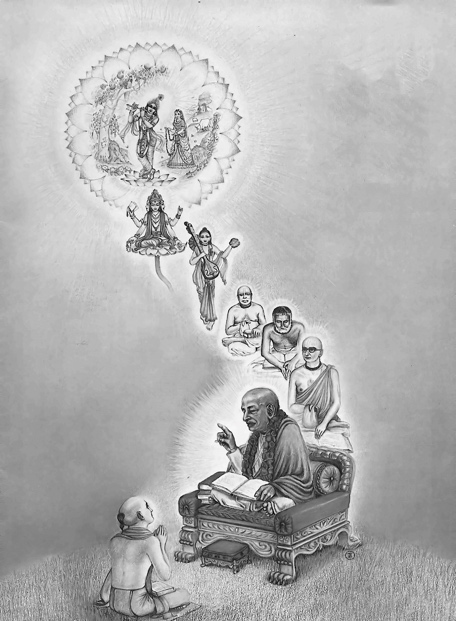
Признаки истинного учителя
«Уравновешенный человек,
1) способный контролировать свою речь и
2) ум,
3) сдерживать гнев
4) и укрощать побуждения языка,
5) желудка
6) и гениталий,
достоин принимать учеников повсюду в мире» ([1] Упадешамрита 1).
Человек, описанный в этой цитате, является авторизованным и авторитетным представителем Бога. Бог использует тело такого человека для общения через него с другими людьми. И поэтому знаниям, исходящим из его уст, можно доверять.
Более подробно истинного духовного учителя можно отличить от ложного по следующим признакам:
1) Истинный духовный учитель никогда не берёт платы за духовное обучение. Его миссия совершенно бескорыстна, потому что учит не он, а Бог через него. Истинный учитель не имеет никакой привязанности к результатам своих действий и никогда не просит своих учеников жертвовать чем-либо материальным для него. Истинный духовный учитель не принимает деньги для себя. На этом основана чистота его деятельности. По этому критерию можно распознать многих людей, которые не имеют права называть себя духовными учителями. Настоящий учитель живёт за свои средства. И если у него имеется духовная организация, то она существует на основе добровольных пожертвований учеников. Как правило, духовные организации не очень развиты в материальном плане.
2) Истинный духовный учитель никогда не говорит о себе хвалебных речей, а прославляет Бога и предыдущих учителей.
3) Истинный духовный учитель не вмешивается в личную жизнь ученика. Он не призывает учеников оставлять жизнь в миру, бросать всё, зовя к себе. Бывают исключения, когда учитель может временно порекомендовать ученику, изменить образ жизни, ради блага самого ученика, или ради спасения его жизни, или ради помощи другим. Но истинный учитель всегда учит, что духовный человек должен быть примером для других и уметь жить в любом месте для служения окружающим. Бог создал этот мир, чтобы мы использовали его, а не убегали от него. Если все духовные люди покинут мирские места, тогда в городах воцарится хаос.
4) Истинный духовный учитель никогда не манипулирует погодой, духами природы, чтобы воздействовать на кого-либо.
5) Истинный духовный учитель соблюдает брахмачарью, или обет целомудрия. Обычно он живёт в уединении от семьи и родственников, что позволяет ему полностью концентрироваться на духовной помощи своим ученикам. Хотя истинный духовный учитель мог жить семейной жизнью и иметь детей до того, как стал учителем. Но бывают и исключения, когда внешне он выглядит как обычный семейный человек, но при пристальном наблюдении можно обнаружить, что жизнь его абсолютно чиста. Обретя целостность, он более не имеет личных интересов и привязанностей к кому-либо кроме Бога.
6) Истинный духовный учитель никогда не показывает сиддхи, сверхспособности или чудеса для привлечения к себе. Однажды один человек попросил Будду показать чудо. Но тот отказался, ответив, что «Если я покажу тебе чудо, ты станешь верить только чудесам». Истинный духовный учитель может показывать чудеса только в тех краях, где сердца людей сильно ожесточены и где нет другого способа пробудить в людях веру: например, проповеди Иисуса в Иерусалиме.
7) Истинный духовный учитель не использует гипноз и никогда не учит своих учеников гипнозу или каким-либо другим способам воздействия на сознание, психику или волю человека. Истинный учитель всегда даёт ученику время для того, чтобы определиться в своём выборе пути, прежде чем тот захочет стать на путь ученичества.
8) Истинный духовный учитель говорит о том, что человек должен быть самодостаточен. Он призывает ученика жить такой жизнью, чтобы он мог обеспечивать себя, свою семью, работать там, где нравится его душе и при этом жить честной и скромной жизнью, без излишеств, по законам того места, в котором человек живёт. Истинный духовный учитель никогда не учит медитации на достижение личной выгоды (включая финансовую), не связанной с целью служения Богу, ибо это ведёт к пути эгоистичного самоанализа и уводит учеников от спасения находящихся в бедственном положении душ и планеты.
9) Истинный учитель может быть и добр, и великодушен, и строг ради очищения ложного эго ученика. Но фальшивый учитель, в отличие от настоящего, постоянно тешит ложное эго ученика, и оно (нередко прикрываясь личинами «внутреннего голоса» и «велений души») с благодарностью коронует неопытного наставника венцом настоящего учителя – а позже, когда лишается иллюзий вследствие какого-нибудь скандала и прочих очевидных свидетельств несостоятельности учителя, горько оплакивает свою несчастную судьбу. Иногда только внешняя строгость может помочь учителю вызвать в ученике истинное раскаяние и очищение его ложного эго.
10) Истинный учитель не обещает ученику просветления, как конечной цели духовного развития. Просветление – это лишь побочный эффект на пути истинного духовного развития у настоящего духовного учителя. На духовном пути каждый ученик проходит множество этапов духовного просветления и озарений. А состояние безмолвия ума или прекращение внутреннего монолога является лишь начальной точкой для возможности подъёма души в высшие сферы под руководством духовного учителя.
11) Истинный учитель может не писать книг. Но он всегда обучает учеников от сердца к сердцу, на божественном языке безмолвия, для которого расстояние не является преградой в обучении. Ученик может находиться в другой части мира от учителя, но продолжать обучение.
12) Истинный духовный учитель даёт инструменты для развития, а не делает всё за ученика. Учитель может проводить духовные беседы. С помощью них учитель учит учеников понимать, как помогать себе и другим на уровне слов, но бо́льшая часть информации исходит на уровне невидимых вибраций.
13) Истинный духовный учитель делает ученика независимым от своей формы (своего физической тела), призывая ученика найти внутри себя истинное «я».
14) Истинный духовный учитель является преемником предыдущих учителей, которые призывают к миру, единству и любви (милосердию). Истинные учители всегда следуют парампаре (цепочке преемственности духовных учителей, которая начинается с Верховной Личности Бога). Некомпетентные люди на Земле всегда создавали религии или культы после истинных духовных учителей, чтобы разделить и запутать человечество, а также усилить непонимание и вражду между последователями учителей. Целью создания всех религий было привязать людей к старым формам или образам умерших учителей, и тем самым увести внимание людей от живого учителя, который стал преемником прошлых. Чтобы получить лекарство, человек обращается к живому врачу. Точно также, чтобы получить духовное лекарство и помощь, человеку необходим живой учитель. Если бы это не было так, то тогда Бог не присылал бы каждый раз всё новых и новых пророков и учителей. «Как возвестил Господь Бог устами святых пророков своих…» (Библия).
15) Истинный духовный учитель никогда не обещает научить тому, что может быть дано или не дано человеку от природы изначально или к чему человек может быть не готов в связи с текущим состоянием сознания (ясновидению, выходу души из тела и т.д.)
16) Истинный духовный учитель даёт ученику внутреннюю защиту. Он обещает ученику помощь в возвращении его души в духовный мир. Учитель обещает ему защиту при жизни и после смерти (пока душа ученика не вернётся к изначальному источнику).
17) Истинный учитель может учить только внутреннему созерцанию или медитации на внутренние объекты, недоступные физическим органам чувств. Истинный духовный учитель никогда не рекомендует медитации на свой портрет, физическое тело или медитации с визуализациями (представлениями или воображениями чего-либо).
18) Истинный духовный учитель делает всё возможное для ученика, чтобы помочь ему очиститься от ложного эго, своеволия и гордости. Многие начинающие ученики думают, что они мудрее других и поэтому часто ошибаются. Вместо очищения кармы они вновь и вновь её накапливают. Они увязают в кармических счетах, если не прислушиваются к словам духовного учителя и не следуют его наставлениям. «Ученик должен уподобиться комку пыли, что катится впереди метлы, а не камню, остающемуся позади. Нужно быть подобным пыли, у которой нет собственной воли, и которая следует туда, куда её гонит метла (духовный наставник). А не уподобляться камню, который настаивает на своём и противоборствует указаниям наставника». (Абу Саид Абу-ль Хэйр). Истинный учитель призывает учеников сделать волю Бога своей собственной волей, то есть полностью отдаться воле Бога, действующей через истинного духовного учителя. Только так происходит очищение ложного «я» человека и достижение единства с Абсолютом.
19) Духовный учитель призывает ученика сконцентрироваться на определённой духовной практике и не распылять своё внимание на другие практики. Ибо невозможно плыть, стоя сразу на двух лодках.
20) Истинный духовный учитель может не учить управлению дыханием, как, например, кундалини-йога или пранаяма. Тот вид дыхания, который предусмотрен природой, уже совершенен. И нет смысла усложнять его. Затрагивать энергию кундалини опасно, так как это очень мощная и трудно управляемая энергия, и, пробудив её, человек практически не в состоянии с ней справиться. Тот, кто в наше время обещает пробуждение кундалини, как правило, является лжеучителем.
21) Истинный духовный учитель всегда ставит какие-то условия для ученичества, ограничения в мирских желаниях и удовольствиях. Чтобы обучаться у истинного духовного учителя, ученику необходимо выполнять условия ученичества. Когда нам, людям, предоставляется что-то просто так, мы ещё можем это принять, но когда нам предлагают что-то ценное, и за это просят чем-то пожертвовать, нас это обычно не устраивает. К сожалению, нашему разуму очень трудно чем-то поступиться, даже если мы прекрасно понимаем, что это принесет нам неоценимую пользу. Обычно условиями ученичества является ведение нравственного образа жизни, отказ от вредных привычек (употребления алкоголя, табака, наркотиков, мясоедения, азартных игр, незаконного секса и т.д.) Учитель помогает ученику осознать вред тех или иных желаний и привычек. Алкоголь, табак, мясо и наркотики делают человека бессознательным, а в таком состоянии человеком способны управлять сущности низших миров или, как их ещё называют, бесы. Человек под влиянием алкоголя и наркотиков теряет связь с Богом, совесть и становится способным на бездумные преступления и убийства.
22) Истинный духовный учитель позволяет ученику осознать реальность закона эволюции души (реинкарнации или перевоплощения душ в физических формах для её совершенствования) и закона справедливости (кармы): «что посеешь, то и пожнёшь». Истинный учитель учит тому, как перестать сеять новую карму и, как освободиться от колеса перевоплощения и действовать в бездействии. Этому учили все истинные учителя (Будда, Иисус, Мухаммед, Шрила Прабхупада).
23) Истинный духовный учитель призывает оставить занятия целительством, экстрасенсорикой, биоэнергетикой, то есть методами, за которые человеку прийдётся кармически расплачиваться в этой или следующей жизни. К этому относятся: гадание по картам, проведение спиритических сеансов, лечение под гипнозом, рейки, ченнелинг, чёрная магия, вуду и т.д. Подобная сила исходит от определённых сущностей, и поэтому за такие способности, человеку прийдётся расплачиваться. Человеку необходимо осознать, что он всего лишь сосуд, проводник каких-либо энергий или сущностей. Бесплатной энергией является лишь энергия Бога – милосердие, истинная любовь ко всему живому. А силой истинной любви можно помочь каждому человеку проснуться и самому исцелить себя. Ошибочно поступают те, кто срывает яблоки за других, не научив их самих срывать яблоки с древа познания. Хоть целительство и проявление доброты и милосердия, но бывает так, что оно на самом деле лишает человека возможности самостоятельно осознать причину своей болезни или недуга и пережить страдания, как уроки, последствия своих кармических действий для собственного очищения. Когда с человека снимают болезнь или какой-то недуг, ему, возможно, заново самостоятельно придётся пройти тот или иной урок в более усиленном варианте, в этой или следующей жизни.
Настоящий учитель – лучший покровитель на духовном пути, самая надёжная защита от всех опасностей самообмана, включая заблуждения в отношении собственной просветлённости.
Лжеучитель – самая страшная опасность. Соединить себя с некомпетентным учителем хуже, чем вообще его не иметь. Духовному искателю, чистосердечно мечтающему об осуществлении своего высшего потенциала уже в этой жизни, поневоле приходится столкнуться с двумя важными вопросами: во-первых, намерен ли он искать духовного наставника и, во-вторых, как найти настоящего учителя в огромной толпе самозванцев, шарлатанов и вполне благонамеренных, но заблуждающихся учителей.
Под настоящим учителем понимается тот, кто в состоянии действенно способствовать высочайшему преображению личности. Фальшивый учитель не в силах это сделать и может даже существенно помешать дальнейшему развитию личности. Но этими категориями ряды учителей не исчерпываются. Среди них есть наставники, исходящие из самых благих побуждений, но просто не готовые к учительствованию; есть учителя одарённые, но морально испорченные, а также все мыслимые промежуточные вариации.
Ложный гуру – это такой человек, который сознательно и намеренно пытается ввести людей в заблуждение и уводит их с истинного пути к Богу. Главное различие между истинным и ложным гуру – это то, что истинный гуру всегда будет работать ради вашего освобождения, в то время как ложный гуру будет пытаться привязать вас к физическому телу гуру. Важно помнить, что человеческие существа имеют тенденцию смотреть на вещи с черно-белой перспективы. К примеру, многие люди смотрят на человека, дающего духовные учения, и находят одну маленькую деталь в этих учениях, которая, как они верят, неправильна. Затем они незамедлительно провозглашают этого человека ложным гуру и отрицают всё, что он говорит. Это несбалансированный подход.
Простые дисциплины из области грубой материи (физику, химию, биологию) можно изучать самостоятельно по учебникам. Но когда мы соприкасаемся с тонкой материей (ум, психология) или духовным знанием, обязательно личное общение с живым носителем знания – учителем. Духовный учитель доносит до нас не просто информацию, а
- свою искренность, бескорыстную мотивацию;
- образ мышления, умонастроение;
- свои качества характера, способности;
- и свой стиль жизни.
Живой учитель
Передача духовного знания – настолько тонкий процесс, что значение имеет даже не столько чтó говорит учитель, а кáк он это говорит. И ещё важнее, ктó это говорит. Когда духовное знание проникает в глубину ума, в сердце ученика, ученик даже может перенять манеру говорить у своего учителя.
«Не само знание ценно. Носитель знания важен. Слово и поведение должны быть вместе. В этом – сила и могущество живого слова. Словом можно благословлять, а можно и проклинать словом. Поэтому я понял, что нужно браться за себя, за свой образ жизни. Недостаточно просто призывать, говорить, утверждать какие-то свои истины. Кто из алкоголиков кого-то сделал трезвенником? Такого ещё не было примера. Он может говорить «не пей» своему сыну в пьяном состоянии. Но это не действует: нет примера, не соответствует, ложь, двойственность, лицемерие. Мы говорим правду и не живём по правде. И поэтому мы говорим ложь. Потрясающая иллюзия! Я говорю то, чего на самом деле не существует. Я о себе говорю то, чем я на самом деле не являюсь. И я думаю то, что на самом деле не существует.
Поэтому Веды открываются только тогда, когда человек принимает ведический образ жизни. Чтобы учить других людей, человек должен приобрести определённые качества. Какие? Чтобы учить других, нужно самому стать учеником. То есть у каждого человека должен быть учитель. В Ведах сказано: не просто нужен, необходим! Если мы берём воду от реки, молоко от коровы, то откуда мы берём знание? Только от учителя, нет другого источника. Но в наше время мы пытаемся взять знание из собственного ума. Вот это – иллюзия. Ум не является источником знания. Честь состоит не в том, чтобы самому что-то понять и выделиться, а в том, чтобы достойно принять знание и не посрамить своих предшественников» [2].
Процесс обучения Веды сравнивают с родами. Не зря в ведической традиции процесс посвящения в ученики, или инициации называют вторым рождением. При этом отцом является гуру, а матерью – Веды.
Истинное, ведическое образование невозможно получить заочно, по книгам или через интернет. Обязательно нужна реальная, живая связь с живым учителем.
Мой поиск учителя
Я большую часть своей сознательной жизни искал истину. И те источники информации и учители, которые мне попадались, не удовлетворяли меня на все сто процентов. Хотя нельзя сказать, что они плохие. Я к каждому этапу своего пути в этой жизни отношусь с благодарностью и уважением.
Вначале это были научные исследования. Я учился в Военной академии связи, и меня привлекала философия. Но официальную философию более справедливо было бы назвать наукой об умственных спекуляциях в свою пользу. Поэтому в такой философии я быстро разочаровался.
Я в академии учился в экспериментальной группе инженеров-исследователей, и после третьего курса нам сказали каждому выбрать себе кафедру и тему исследований. Я тогда уже откуда-то понимал, что учитель важнее предмета обучения и таким образом оказался на кафедре техники сверхвысоких частот, у моего научного руководителя Олега Вениаминовича Попова. Темой моего диплома и предполагаемой моей будущей диссертации была теория распространения радиоволн на земном шаре, переписанная в терминах колебательных контуров.
По судьбе мне не суждено было связать свою профессию с научными исследованиями. Я двадцать лет работал чиновником в Центральном банке. Так как я быстро выполнял свои обязанности, у меня на работе было много свободного времени. И я заинтересовался эзотерикой.
Потом мой интерес переключился на учение Дона Хуана Карлоса Кастанеды. Это аналог йоги, но у древнего племени индейцев Южной Америки толтеков.
Были и другие мои увлечения всевозможными эзотерическими учениями и практиками. Их было много, и перечислять их здесь даже не хочется, чтобы не создавать ненужную рекламу.
Потом мне попалась так называемая Книга Урантии. В ней подробно описывается космология и очень подробно жизнь Иисуса Христа. Благодаря изучению этой книги, особенно судьбы Иисуса, во мне пробудилось дремавшее желание стать преданным Бога.
Следующим этапом было моё разочарование в благополучной с материальной точки зрения жизни и попытка стать целителем. Но здесь меня тоже ждало разочарование. Я понял, что целительство не исправляет коренную причину страданий людей, а лишь устраняет симптомы, хоть и на более глубоком уровне, чем официальная медицина. По сути, целительства даже вредит людям, потому что причины их болезней не устраняются, а так искусно замаскировываются, что потом их ещё труднее обнаружить.
И когда я изучал Тайную доктрину Елены Блаватской, меня привлекли санскритские слова, которые она обильно употребляла. Решив узнать, что же такое Веды, я в интернете наткнулся на книги Шрилы Прабхупады. Его книги и его последователи полностью удовлетворили мою потребность найти абсолютный, бескорыстный, истинный, авторитетный источник знаний.
Духовный учитель обязательно прийдёт, если появится искренний ученик. Это очень тонкий закон мироздания. На санскрите он называется гуру-таттва. Высшие силы сами отслеживают каждого человека. И как только кто-то изъявляет искреннее желание найти духовного учителя, обязательно создадутся обстоятельства, при которых истинный духовный учитель найдётся. Причём этот закон настолько тонок, что степень истинности этого духовного учителя будет соответствовать степени искренности ученика. Однако это не означает, что в свой срок на пороге непременно покажется человек с фамилией на груди. Настоящего учителя может найти только настоящий ученик, а стать таким учеником очень трудно. Если человек не может найти настоящего учителя, он ещё просто не готов к учёбе. Тем не менее, нас призывают всеми силами развивать дар различения, который и в самом деле настоятельно необходим при поисках истинного учителя. Когда человек тянется к учителю искренне, каждой клеточкой своей души, о помощи молит не его ложное эго, а душа. Рано или поздно такой человек обязательно найдёт своего учителя.
У меня в этой жизни были учители, которые по вышеперечисленным формальным признакам не совсем подходили на роль истинного гуру. Но они всё равно настоящие. И поэтому я совсем не расстраиваюсь по этому поводу. Просто в то время моя искренность была достойна именно такой милости Бога. Но в итоге по какой-то необъяснимой удаче я удостоился величайшего дара – истинного духовного учителя, находящегося в цепи преемственности, начинающейся от Верховной Личности Бога.
Парампара (цепь преемственности)
Важность цепи преемственности передачи знания в Ведах иллюстрируется такими простыми примерами из повседневной жизни. Спелые плоды манго с высокого дерева передаются через цепочку людей, сидящих на ветвях дерева. Человек на вершине дерева снимает плоды и заботливо передаёт сидящему ниже. Так, переходя из рук в руки, плоды в целости и сохранности попадают к человеку, стоящему на земле, и аккуратно, без повреждений, складываются в корзину. С другой стороны, если попугай своим клювом проткнул оболочку и попробовал плод манго, то благодаря процессам ферментации этот плод манго становится спелее и значительно вкуснее.
Но не любой человек может быть звеном такой цепочки передачи знаний.
Обучение – это очень сложный, мистический процесс трансформации сознания человека. Особенно, когда речь идёт о ведических дисциплинах, мы имеем дело с глубокой трансформацией сознания человека, изменением его мировоззрения, системы ценностей. Человек меняется на очень глубинном уровне незаметно для себя.
Например, парампара[237] мадхва-гаудия-вайшнавской сампрадаи[238] кратко выглядит следующим образом:
- «Кришна вложил знание в сердце Брахмы, первого сотворенного существа вселенной.
- Брахма передал эти уроки своему ученику Нараде,
- а Нарада - своему ученику Вьясадеве.
- Вьясадева передал это знание Мадхвачарье,
- а от Мадхвачарьи это знание дошло до Мадхавендры Пури
- и затем до Ишвары Пури,
- от которого его получил Чайтанья Махапрабху»
([1] Учение Шри Чайтаньи, Введение).
А полная цепочка учителей, через которую я подключён к абсолютно авторитетному источнику знаний, следующая:
- Чайтанья Чандра Чаран прабху (Александр Хакимов) (1958);
- Джаяпатака свами (1948);
- Абхай Чаранаравинда Бхактиведанта Свами Прабхупада (1896 - 1977);
- Бхактисиддханта Сарасвати (1874 - 1937);
- Гауракишора (183? - 1915);
- Бхактивинода (1838 – 1914);
- (Баладева), Джаганнатха;
- Вишванатха;
- Нароттама
- Кришнадас;
- Рагхунатха, Джива;
- Рупа (1489 – 1564);
- Чайтанья Mахапрабху (1486 - 1534);
- Ишвара Пури (Нитьянанда, Адвайта);
- Мадхавендра Пури;
- Лакшмипати;
- Вьясатиртха;
- Брахманьятиртха;
- Пурушоттама;
- Джаядхарма;
- Раджeндра;
- Видьянидхи;
- Даянидхи;
- Гьянасиндху;
- Джаятиртха;
- Aкшобхья;
- Mадхава;
- Нрихари;
- Падманабха;
- Мадхва;
- Вьяса;
- Нарада;
- Брахма;
- Кришна.
Ученик
«Учитель – это прежде всего ученик. Он сам учится у того, кого учит. И также у него есть учитель. Обязательно должна быть преемственность. Тогда всё выстраивается. Если учитель учит от себя, это одна культура, но если он представляет кого-то выше, это другая культура. Если он учит от себя, это культура высокомерия. И дети принимают предметы, обучаются, всё как бы знают, всё сдают. Потом это забывают лет через десять. А привитое в общении высокомерие останется с ними» [2].
Чтобы быть учеником, необходимы три основные качества:
1) преданность,
2) образование
3) и самоконтроль.
Они связаны друг с другом, как бы цепляются одно за другое: знание может получить только тот, кто способен контролировать свои чувства, ум и речь, а стать преданным Богу может только образованный человек.
Арджуна был образцовым учеником.
Он «…был не только великим преданным Господа, но и в высшей степени просвещённым человеком, а также в совершенстве владел своим умом и чувствами. До тех пор, пока человек не обуздал чувства, он не сможет обрести знание, а тот, кто не обладает знанием и не занимается преданным служением Господу, лишен возможности получить освобождение» ([1] Бхагавад-гита 2.6, комментарии).
Знание может передаваться только достойным людям, контролирующим свой ум и тело и принимающим авторитет мудрецов, которые учат своим примером и своими наставлениями.
«Чтобы узнать истину,
1) вручи себя духовному учителю.
2) Вопрошай его смиренно
3) и служи ему.
Осознавшие себя души могут дать тебе знание, ибо они узрели истину.
Путь духовного самопознания, без сомнения, очень труден. Поэтому Господь советует нам найти истинного духовного учителя, принадлежащего к цепи наставников, которая ведёт начало от Самого Господа. Того, кто не принадлежит к такой цепи, нельзя считать истинным духовным учителем. Первым духовным учителем является Сам Господь, и человек, получивший это знание по цепи духовных учителей, способен передать своему ученику слова Господа в неискажённом виде. Природу духа нельзя постичь, выдумав для этого собственный метод, как это делают невежественные шарлатаны. Путь религии указывает людям Сам Господь. Поэтому философские рассуждения и бессмысленные словопрения не приведут человека на верный путь. Нельзя достичь духовного совершенства и с помощью самостоятельного изучения священных книг. Чтобы получить знание, необходимо найти истинного духовного учителя. Ученик должен беспрекословно выполнять все указания духовного учителя и, отбросив гордыню, служить ему, не гнушаясь даже чёрной работой. Секрет успеха в духовной жизни заключается в умении удовлетворить осознавшего себя, истинного духовного учителя. Пытливость и смирение – вот два качества, одинаково необходимые для того, чтобы постичь духовную науку. До тех пор, пока мы не станем послушными слугами истинного духовного учителя, наши вопросы к нему не принесут желаемого результата. Каждый должен пройти через проверку, устроенную духовным учителем, и, когда учитель убедится в искренности ученика, он немедленно благословит его и откроет ему истинное духовное знание. В этом стихе Господь отвергает как слепое следование учителю, так и обращение к нему с бессмысленными вопросами. Надо не просто смиренно внимать духовному учителю, но и, став его послушным слугой и задавая ему вопросы, составить ясное представление о духовной науке. Истинный духовный учитель всегда добр к ученику, поэтому, если ученик послушен и с готовностью служит учителю, он получит от него ответы на все вопросы и сможет обрести совершенное знание» ([1] Бхагавад-гита 4.34).
Шейх Абу Саид назвал десять качеств искреннего ученика:
1) Он должен быть достаточно умён, чтобы понимать указания духовного наставника.
2) Он должен подчиняться и выполнять приказы духовного наставника.
3) Он должен держать ухо востро, чтобы слышать то, что говорит учитель.
4) У него должно быть просветлённое сердце, чтобы узреть величие духовного наставника.
5) Он должен быть правдив, так что всё, сообщаемое им, правдиво.
6) Он должен держать данное слово, так что всё, обещанное им, он выполняет.
7) Он должен быть щедр, так что всё, чем он владеет, он способен раздать.
8) Он должен быть осмотрителен, чтобы хранить доверенные ему тайны.
9) Он должен быть восприимчив к советам, так что он приемлет порицания наставника.
10) Он должен обладать рыцарскими качествами, дабы пожертвовать и собственной жизнью на мистическом пути.
Обладая такими качествами, ученику будет легче завершить своё странствие, и он быстрее достигнет цели, поставленной перед ним духовным наставником.
«Был один человек, очень знаменитый в Индии в своё время. Астролог очень высокого уровня. До сих пор ещё Индия о нём говорит, помнит его имя. Они настолько был совершенен в этих своих прогнозах, что мог просто посмотреть на человека, посмотреть на небо, на звёзды, немножко подумать и сказать, сколько у него денег в кармане и как его зовут. Прямо сейчас. Такой был провидец. Джьйоти-шастры, наука о звёздах. Очень тонкий должен быть интеллект, способности. Он всё время занимался этим, но он никогда не брал плату. То, что люди приносили ему от души, он принимал, и никогда не говорил о цене, никогда.
У него было два сына, которые говорили: «Папа у нас гений. Только глупый гений. Другой бы уже миллионером был. А этот копейки считает всю жизнь. Живёт в простоте с такими знаниями, с такими ценностями. Ну ничего, он же нам знания-то передаст. Верно? Мы знаем, что с этим делать». И они терпеливо ждали. Но шло время, отец старился и абсолютно ничего не говорил. В этом направлении никаких не было движений. И вот он уже на смертном одре лежит. На ладан дышит. Тут уже два сына говорят:
– Папа, ты что, хочешь с собой в могилу забрать эти знания? Ты нам не передашь эти ценности?
Отец был очень простой человек. Он сказал:
– Передать? А некому передавать-то… вы же хотите деньги, а не знания.
Тут либо одно, либо другое» [2].
Учитель должен всегда оставаться учеником, а ученик должен всегда быть учителем. Это значит, что если вы не будете никому рассказывать то, что́ вы только что узнали, знание не усвоится и не заживёт внутри вас, не станет вашей сутью, вы не сможете применить это знание на практике. Это очень важно. Знание можно сравнить с рекой: сколько втекло, столько должно и вытечь. Знание обладает такой особенностью, что если вы его отдаёте, то оно у вас не исчезает. Это как раз тот случай, когда не работает обычная арифметика: один минус один равно два.
«Гу́ру находит ученика. Сверхдуша сводит их. Свыше это решается. Сам человек может не понимать, конечно, не различать. Но есть Сверхдуша и у гуру, и у ученика есть Сверхдуша. Одна платформа существует, связь такая. По милости Сверхдуши происходит эта связь внутри сердца у того, кто готов стать учеником, конечно же. Готовность должна быть. То есть не всем нужен духóвный учитель. Так Прабхупада говорит. Только те, кто готовы. И обычные люди, если очаровываются духовно, то начинают служить ИСККОНу, преданным. Это признак, что они одухотворены» [2].
Прити лакшанам (любовный обмен)
Как мы уже говорили, знания – это не информация, а личные мотивы, образы и качества личностей – носителей этого знания. В целом это можно назвать любовью. Общение с человеком, обладающим определёнными ценностями и качествами, наделяет вас такими же ценностями и качествами. Это похоже на какой-то мистический процесс, не поддающийся анализу. Но в Ведах всё же есть описание механизма передачи знаний, передачи ценностей и качеств от одной личности к другой:
«Подносить дары и принимать дары, поверять свои мысли и спрашивать о сокровенном, принимать прасад[239] и угощать прасадом – таковы шесть проявлений любви, которую преданные[240] испытывают друг к другу.
В этом стихе Шрила Рупа Госвами объясняет, как заниматься преданным служением в общении с другими преданными. Есть шесть видов деятельности:
1) подносить дары преданным;
2) принимать от преданных всё, что они дарят в ответ;
3) поверять им свои мысли;
4) спрашивать их о сокровенном служении Господу;
5) почитать прасад – духовную пищу, которой угощают преданные, и
6) угощать преданных прасадом.
Опытный преданный объясняет, а новички, слушая, учатся у него. Когда кто-то из преданных, желая поддержать в нас дух преданного служения, раздаёт прасад – остатки пищи, предложенной Верховной Личности Бога, мы должны принимать этот прасад, видя в нём милость Господа, полученную из рук чистых преданных. Следует также приглашать чистых преданных в свой дом, угощать их прасадом и стараться всячески угодить им.
Аналогичным образом действует любой человек, когда хочет проявить к кому-нибудь свою любовь и дружеское расположение. К примеру, бизнесмен, желая завязать отношения с другим бизнесменом, приглашает его в какой-нибудь отель на банкет, во время которого открывает ему свои планы. Затем он советуется с ним относительно своих дальнейших действий, и порой они обмениваются подарками. Таким образом, прӣти, любовь во взаимоотношениях близких людей или единомышленников, проявляется в этих шести формах» ([1] Упадешамрита 4).
В этом ведическом тексте зашифрованы сведения о том, как передаётся знание, или любовь. Существует три пары ритуальных действий, при помощи которых происходит собственно весь процесс обучения, являющегося любовным обменом духовной энергией, включающей в себя веру, знание, качества характера и решимость действовать:
1) угощать и принимать угощение,
2) дарить подарки и принимать подарки
3) и делиться сокровенным и слушать сокровенное.
Например, если вы хотите научиться зарабатывать в месяц миллион долларов, надо подружиться с миллионером, имеющим такой доход, и начать
- угощать его,
- дарить ему подарки
- и рассказывать свои тайны.
Соответственно, если он будет отвечать вам тем же, то
- не стóит отказываться от его угощений
- и подарков,
- и внимательно слушать его откровения.
«Есть несколько каналов, по которым протекает духовная энергия: это мысли, это речь и пища. Особенно речь важна. И пища.
Прабхупада сводил всё к двум самым важным вещам для своих учеников. Самое важное после инициации[241] будет укротить язык: это прасад и говорить о Кришне. Если мы это освоим, мы освобождаемся в этой жизни при помощи языка. Не говорить каких-то праздных вещей, не погружаться в эти вот разговоры праздные или политические дрязги. Хотя мы в курсе событий, но мы не посвящаем свою жизнь этой деятельности, дрязгам. Не хотим запутывать свой ум и сбивать с толку свой разум различными потоками информации: ложной, смешанной. Никто сейчас не разберётся, где правда. Невозможно. У нас правда – священные писания. Мы размышляем о них. мы спрашиваем, мы слушаем. И мы едим прасад. Это каналы, по которым спускается бхакти[242]: через пищу, через звук и в конце концов учимся думать на этой платформе об услышанном, переживать» [2].
Наука и образование
Неполное знание
Современные учёные – большие вредители, потому что сейчас в западном человеческом обществе господствует гипотеза официальной науки (автор Дарвин), состоящая в следующем:
- жизнь произошла от комбинации молекул,
- эволюционируют тела,
- когда тело доэволюционировало до тела человека, в нём зародилась душа,
- а в низших живых существах душ нет,
- поэтому животных можно убивать и есть.
Но Веды говорят следующее:
- полноценная душа есть в теле каждого живого существа,
- существует закон кармы (причинно-следственной связи),
- прийдётся принять наказание за убийство животных,
- поэтому сейчас происходят эпидемии и войны, ответственность за которые лежит на учёных.
Понятно, что Кали-юга идёт по плану Бога, но непосредственными инструментами деградации человечества являются учёные и официальная материалистическая наука.
Человечество сейчас активно разделяется на два лагеря, в зависимости от того, во что больше нравится верить человеку:
- в материалистическую гипотезу официальной науки
- или в божественные Веды.
Поэтому, если человек в Веды не верит, с ним бесполезно спорить. Можно его только прасадом[243] кормить и ждать, пока не произойдёт чудо и не изменится его предпочтение, во что верить. Даже если и удастся победить его в споре сейчас, он всё равно останется при своём мнении, даже, может, ещё больше обозлится.
«Неполное знание (физика, химия, биология, этика) – самое опасное. Неполное знание к страданиям приводит. Поэтому наука – она одна. А всё остальное – технологии. Сейчас каждый имеет узкую специализацию, не понимая целостность мира. Это деятельность в невежестве.
Наука предназначена, чтобы научить человека счастливой жизни. И поэтому важно знать, что такое человек. Человек – это следующие составляющие: духовная, волевая, эмоциональная (чувственная), и физическая. Сейчас уже волевой и духовной составляющей науки нет. Осталась только часть науки. В советское время духовную и волевую части вообще отвергали. В культуре людей сегодня преобладают только две составляющие: физическая (здоровье) и эмоциональная (комфортное существование)» [2].
«Сейчас образованием считается то, что подтверждено созданной человеком системой образования. То есть сам же человек создаёт систему образования, чтобы подтвердить образование другого человека. Сам же он создаёт какие-то международные премии, скажем, лауреат Нобелевской премии, и сам же награждает другого, сам же придумывает титулы и сам же присуждает их себе или другим. Это называется в современном мире сегодня образованием. А на самом деле как? Что такое образование? От слова образ. Если вы имеете все высшие качества, вы образованный человек. Вот как определяется ведическое образование. Не то, что просто подтверждено дипломом или экзаменом, количество знаний, ваша память, информация, ваша логика, вообще мировоззрение, а ваши качества, то есть как вы будете применять эти знания. Вот это уже – образованный человек. Прекрасный образ вы должны создавать в этом мире своими действиями. Есть без-образный человек, а есть образованный – это полноценная личность. Настоящее образование не требует никаких документов, аттестатов и дипломов. Это природные развитые духовные качества человека. Количество и качество интеллекта человека зависит от того, насколько человек поглощён удовлетворением чувств. Прямо пропорциональная зависимость: чем более человек погружён в удовлетворение чувств, тем слабее его интеллект. Как только в двенадцать лет в человеке проявляется сексуальное желание, он сразу стремится к независимости. Человек от этой сексуальной энергии на короткое время как бы сходит с ума. Чем сильнее стремление наслаждать чувства, тем меньше знания и образования у человека. Поэтому знания получают до двенадцати лет, в детском возрасте. Мы знаем: в царской России дворянские дети до двенадцати лет
- знали уже до пяти языков,
- они понимали уже, что такое рисование,
- танцы,
- архитектура,
- могли ясно излагать свои мысли на бумаге,
- в том числе стихами.
А после двенадцати лет знания уже даются с профессиональным оттенком. Всё главное понимание мира ребёнок до двенадцати лет получает неосознанным образом через общение с родителями, которые его любят. Проводник – любовь. Без любви не может быть и речи о каком-то образовании. Например, что касается обучения, формирования характера – менять, трансформировать себя самого – это очень трудный и сложный процесс для человека. Если там не будет любви, это практически невозможно сделать. Потому что ложное «я» очень болезненно воспринимает всё это: сложно подчиниться: это напоминает тогда тюрьму, а не образование, серьёзное насилие, а не образование. Потому что образование означает исправлять пороки. Это должен делать очень опытный, любящий человек, как мать, отец, потом духовный учитель. Если этого нет, то мы не хотим никакого образования: «Я и сам всё знаю».
Таким образом, любовь является проводником знания. Но в наше время вы получаете диплом, карточку – и показываете. Сейчас диплом также можно купить» [2].
«Основоположником современной системы образования является греческий философ Аристотель. Он знаменит тем, что он отверг духовное знание, он отверг своего учителя Платона: «Платон мне друг, но истина дороже». Он заложил основы майяяпахрита-гьяны[244] в европейской философии. Он, можно сказать, основоположник этого интеллектуального извращения. Его идея была в том, что «Бог очень далеко, и мы не должны о Нём думать, потому что Он вообще непостижим; поэтому нужно думать об этом мире и постигать этот мир». Он обратил весь вектор западной мысли к этому материальному миру. И в средние века христианство, ислам и иудаизм попали под влияние Аристотеля, потому что только книги Аристотеля к тому времени сохранились. Они взяли их на вооружение, стали их применять. Когда они стали их применять, религия пришла в упадок, особенно в Европе. Европа очень сильно приняла философию Аристотеля через Фому Аквинского. И с этого момента началось разрушение религиозных ценностей в Европе: «Давайте поближе к этому миру». Аристотель все знания разделил на теоретические, практические и творческие. Он все знания поставил на один уровень и уравнял ценности любой науки. По его мнению, нет более высоких и более низких наук: «Выбирай что хочешь, и где хочешь, там и реализовывайся». И эта система сейчас лежит в основе всех современных научных знаний, это структура современной науки. Наука приняла систему Аристотеля. Поэтому для современного человека религия вообще не научна, а просто предмет какой-то веры. Ведь религии нет в перечне наук. Аристотель сказал: «Бог далеко. Он не видит, не слышит, не чувствует. Это просто механизм, который всё запустил, и больше к нам отношения не имеет. И мы к Нему тоже никакого отношения не имеем». Если нет отношений, значит нет религии. Поэтому религию он сразу же отмёл на корню. И его система, когда пришла в Европу, сразу же уничтожила религию. И эта система сейчас разрушает современных детей, потому что у них нет системы ценностей. Они не видят, где верх, где низ. Они пропитываются этим духом современного образования, который ставит всё на одинаковый уровень: и политику, и географию, и социологию, и религиоведение, и философию. То есть у детей нет верха и низа. Они просто считают: «Что хотим, то и выбираем. А в конце концов, поскольку всё это скучно, то лучше вообще наслаждаться, и не выполнять всю эту вынужденную тягомотину обязанностей».
Современная система наук делится на фундаментальные и прикладные. А также на естественные, гуманитарные и математические.
Здесь нет иерархии. Поэтому у детей нет системы ценностей. При обучении детей разным дисциплинам им надо показывать, что есть верх и низ. Нужно понимать, о каком уровне идёт речь. Чем выше уровень науки, тем больше счастья она даёт» [18].
Слово образование происходит от слова образ. Образ – это нечто цельное, воспринимаемое сразу, в комплексе. За восприятие образов отвечает разум. Поэтому образование – это развитие разума, той части сознания, которая отвечает за контроль ума. Образы – это прежде всего искусство:
- музыка,
- живопись,
- скульптура,
- танец,
- театр,
- литература
- и так далее.
На самом деле, всё должно быть искусством. Если нет искуссности, это значит – бездарно, не качественно, плохо. И, соответственно, наука – это тоже один из видов искусств.
«Под влиянием определённой самскары[245] вы видите образ. Не просто какую-то форму, образ воспринимаете. Это то, что сегодня утрачено. Наука стала безобрáзной, или безóбразной. Она стала абстрактной: единицы какие-то, обозначения, формулы» [2].
«Если мы не получили образ в результате образования, мы не получили ничего, набор информации. Вся ведическая литература в конечном итоге даёт образ Бога. Если вы не увидели образ Бога, вы запутаетесь» [2].
«Сегодняшние люди Кали-юги поверят логике и аргументам. Они не поверят просто священным текстам, пока вы не объясните при помощи логики и аргументов. Сегодня наука научила людей мыслить совершенно по-другому: не образами, а логическими цепями и аргументами. Люди потеряли образное мышление. Если мы вернём образное мышление, мы всё необходимое узнаем из Пуран. Но сейчас люди хотят механизмы понять: какой механизм, скажем, психологии человека? Знаете почему они хотят механизм? Чтобы управлять механизмом. Образ забыли. Учёные берут живое существо, хотят его изучить. Они его убивают и разрезают на части, на органы. И изучают мёртвое. Они механизм изучают. Неужели вы думаете, что, разложив материальное тело на части, вы поймёте живое существо, которое там находилось? Никакой науки нет о живом существе. Это время янтр, механизмов. Даже люди воспринимаются как рабочие механизмы. А чтобы изучить живое существо, нужно понять, увидеть, услышать его образ. Вот это есть наука.
И вся ведическая наука и культура передаётся через Пураны и образы: аватары, деяния, формы, качества. Дух не разрезается на части, не расчленяется, не разбирается. Только материя разбирается. Дух – это цельный образ. И задача – стать нам целостными, одухотворёнными: мысли, речь и поступки должны быть цельными, одинаковыми.
Лицемерие – это двойственность, это материальное существование: думаю одно, говорю другое, делаю третье. Например, Солнце. Спросите у учёных, что такое Солнце? Они вам будут говорить о температуре: на поверхности 20 000 градусов, протуберанцы, идут ядерные процессы, и если как-то такой протуберанец вылетит в сторону Земли, у нас будут проблемы, вспышки на Солнце вызывают сердечно-сосудистые заболевания, нервные срывы, очень опасный объект. Это мышление безобразное, безо́бразное: Солнце как механизм. Слепой, неконтролируемый. А как рекомендовано смотреть на Солнце Ведами?
– Красно Солнышко. Вам не нравится Солнце?
– Конечно нравится: тепло, здо́рово, светло.
– А чего же вы боитесь его?
– А услышали ерунду какую-то.
Вот в чём дело. Вас в школе научили бояться Солнца. Его надо любить вообще по идее, а вы его боитесь.
Вы так же боитесь и Бога сегодня, хотя Его надо любить. Кто-то что-то сказал... Кто-то вас обманул несколько раз именем Бога – вот что произошло. Самый большой обман совершался с именем Бога, потому что люди верили в Бога. Если вы свой обман соединяете с Богом, вот так вы получаете великую выгоду. Это делают демоны, демонические философы, учёные. Всё переворачивают вверх дном. То, что надо любить, вы бежите оттуда, а то, чего нужно бояться, вы идёте туда: смо́трите на махрового материалиста – говорите «успешный человек», смо́трите на вожделеющего мужчину – говорите «любит меня». Так мы живём сегодня – в механизмах. Сексуальное возбуждение люди принимают за любовь сегодня – это биологический механизм просто. А всё началось с того, что: «У Бога нет образа», «Ни у кого нет образа», «У вас временная оболочка», «Вы тут никто» – религия стала принижать человека. Бог стал диктатором религии. Религия стала диктатуру устанавливать при помощи Бога.
Тогда в какой-то момент маятник истории пошёл в другую сторону: эпоха возрождения – все хотели стать полубогами, атлетами (фашисты)» [2].
«Верховный Господь является владельцем всего, и забвение этого факта есть невежество. Чем глубже человек забывает эту истину, тем глубже погружается во тьму, и с этой точки зрения безбожная цивилизация, совершенствующая так называемое образование, более опасна, чем общество, в котором массы людей менее «образованны»» ([1] Шри Ишопанишад 9, комментарии).
Гурукула
«Жизнь в целибате. Управление своим сексуальным желанием. Это тапасья[246]. И всё это – образование. Это не то абсурдное образование, позволяющее стать человеку великим механиком, разбирающимся в деталях автомобиля. Это не образование. Это образование для шудр[247]. Это не образование. В ведическом обществе образование предназначалось для брахманов[248]. Не для шудр. Образование предназначалось для брахманов и частично для кшатриев[249]. Но не для вайшьев[250] и не для шудр. Какое образование? Профессиональный долг вайшьев состоит в производстве пищи, в защите коров и, если у них остаются излишки, они могут торговать этим. Любой может научиться этому, просто наблюдая. Для этого не требуется высшее образование. Если отец пашет землю, сын может научиться этому, наблюдая за отцом. В настоящее время образование сводится к тому, что многие индийцы уезжают в Америку, где они учатся шлифовке деталей для машин и технологии. Это не образование. Но европейцы и американцы едут в Индию, чтобы постигать брахма-видью[251]. Вот это – образование. Европейцы и американцы приезжают во Вриндаван и Майяпур не для того, чтобы увидеть, как мы производим мотоциклы и швейные машинки. Они этого достаточно насмотрелись. Мы, может быть, очень горды в Индии: «Сейчас мы делаем мотоциклы, швейные машинки или какие-нибудь детали для машин – как же мы преуспели!» Ничего преуспевающего в этом нет. Образование – это когда человек становится брахманом, постигает искусство
- владеть чувствами,
- управлять умом,
- быть правдивым,
- чистоплотным,
- простым,
- преисполненным знания,
- способным применять знания на практике,
- знающим Бога.
Вот это – образование» [1].
«Современная ведическая система образования включает в себя пара-видью[252] и тринадцать разделов апара-видьи[253]:
Четыре Веды:
1) Риг-веда.
2) Яджур-веда.
3) Сама-Веда.
4) Атхарва-веда.
Санскрит:
5) Грамматика.
6) Размеры стихов.
7) Произношение.
8) Словарь.
Так вы можете подойти к Ведам. В Ведах содержится знание. И вы можете обратиться к ним через язык. Затем вы применяете это знание в ритуале. Вы также должны знать и правильное время для ритуала:
9) Джьйотиш.
Само трансцендентное знание.
У вас есть знание, но нужны примеры, как это люди применяли:
10) Пуранические истории.
11) Аюр-веда.
Описание структуры человеческой жизни:
12) Дхармашастра.
Вам это надо будет всё обсуждать, поэтому нужна:
13) Логика.
В ведической школе есть шесть групп предметов:
1) Стихи из Вед.
2) Язык:
- санскрит,
- английский,
- бенгальский,
- [русский].
3) Числа:
- астрономия,
- математика,
- астрология.
4) Философия:
- логика.
5) Ритуалы.
6) Культура:
- Пураны,
- Дхарма-шастры.
Таким образом, четырнадцать разделов ведического знания делится на шесть групп предметов. И всё это должно быть связано с сознанием Бога, иначе знание считается нераскрытым.
Ведическая концепция такова:
1) на первом месте наука,
2) затем применение науки,
3) а это и есть искусство.
Тогда вы будете находиться в сфере разума, а не эмоции овладеют вашим умом» [20].
Виды искусств и наук, которые изучали в ведической школе (гурукуле) Кришна и Баларама:
1) «Прежде всего Они научились петь, слагать песни и узнавать звуки различной высоты.
2) Они изучили благотворные и неблаготворные размеры и акценты, научились воспроизводить голосом различные ритмы и мелодии, сопровождая пение игрой на барабанах, и танцевать под музыку.
3) Они научились писать драмы, овладели приёмами изобразительного искусства, начиная с незатейливой деревенской живописи и кончая совершенными миниатюрами.
4) Научились Они и тому, как украшать лицо тилаком[254], нанося мелкие точки на лоб и щёки.
5) Затем Они научились выводить узоры на полу рисовой мукой; такие узоры часто делаются при проведении различных благотворных обрядов в домах и храмах.
6) Они научились делать ложе из цветов и раскрашивать одежды, а также различные части тела.
7) Они научились делать украшения из драгоценных камней и играть на горшках с водой. Горшки наполняются водой до определённого уровня, так что, если ударить по одному из них, раздаётся звук определённой высоты, а если ударять по нескольким горшкам сразу, звуки сливаются в красивую мелодию.
8) Они научились брызгаться водой, купаясь вместе с друзьями в реках и озёрах.
9) Они также овладели искусством создавать украшения из цветов. Даже сейчас в летнюю пору храмы Вриндавана всегда украшают цветами. Такие украшения называются пхулла-бади. Помост, трон, стены и потолок – всё богато украшается цветами, а в центре устанавливается благоухающий фонтан, также сделанный из цветов. Люди, измученные летней жарой, наслаждаются прохладой и свежестью, которые создают эти украшения.
10) Кришна и Баларама также научились делать различные причёски и украшать голову шлемом.
11) Научились воздвигать театральные подмостки, одевать актёров в театральные костюмы и украшать их серьгами из цветов, а также разбрызгивать воду, смешанную с сандаловой[255] пастой, чтобы создать приятное благоухание.
12) Обучались Они и всякого рода магическим трюкам. Есть такое магическое искусство баху-рупи, позволяющее одеваться так, чтобы даже твои друзья не могли тебя узнать.
13) Кришна и Баларама изучили также многочисленные способы приготовления сиропов и напитков, которые различаются по вкусу и опьяняющему действию и готовятся по разным поводам.
14) Они научились шить и вышивать, а также управлять марионетками.
15) Они умели натягивать струны на музыкальные инструменты: вину, ситар, эсараджу и танбуру, чтобы они издавали мелодичные звуки.
16) Затем Они научились придумывать и отгадывать загадки и освоили метод, благодаря которому даже самый неспособный ученик может очень быстро выучить алфавит и научиться читать.
17) Они научились ставить драмы, а также решать кроссворды, заполняя пустые клетки буквами и составляя слова.
18) Они обучились также пиктографическому письму. Такое письмо до сих пор используется в некоторых странах мира. Содержание в нём передается с помощью рисунков: так, для того чтобы сообщить, что человек идёт домой, рисуют человека и дом.
19) Кришна и Баларама также изучили архитектурное искусство – искусство возведения жилых домов.
20) Они научились распознавать драгоценные камни по их цвету и блеску, а затем овладели искусством оправлять камни в золото и серебро, чтобы сделать их ещё красивее.
21) Они узнали, как находить в земле различные минералы. Теперь этим занимается особая отрасль науки, но в те времена таким знанием обладали даже обычные люди.
22) Кришна и Баларама также изучили целебные свойства растений и трав и научились скрещивать деревья и другие растения, чтобы получать различные плоды.
23) Они научились тренировать и стравливать боевых баранов и петухов, узнали, как научить попугаев разговаривать и отвечать на вопросы людей.
24) Они также изучали прикладную психологию – науку о том, как воздействовать на чужой ум, чтобы заставить другого человека исполнять твои желания. Иногда это называют гипнозом.
25) Они научились мыть волосы, окрашивать их в различные цвета и завивать разными способами.
26) Они могли сказать, что написано в какой-нибудь книге, даже не заглядывая в неё, и могли угадать, что спрятано у кого-нибудь в кулаке. Порой дети подражают этому искусству, хотя и не всегда удачно. Зажав что-нибудь в кулаке, один ребёнок спрашивает другого: «Что у меня в руке?», – и тот что-нибудь отвечает, но, как правило, неверно. Однако есть особое искусство, позволяющее точно определить, что именно находится в кулаке.
27) Кришна и Баларама изучили языки различных стран. И не только человеческие языки – Кришна мог разговаривать даже с животными и птицами. Свидетельство тому можно найти в вайшнавской[256] литературе – в трудах Госвами.
28) Затем Кришна и Баларама научились делать колесницы и воздушные корабли из цветов. В Рамаяне рассказывается о том, как Рамачандра, одержав победу над Раваной, перелетел из Ланки в Бхарата-варшу на воздушном корабле, сделанном из цветов. Такие корабли назывались пушпа-ратха.
29) Затем Кришна и Баларама научились предсказывать события по знакам и приметам. В книге под названием Кханара-вачана описываются различные приметы и знамения. Так, если по пути вам встретился человек с полным ведром воды – это хорошая примета, а если с пустым – плохая. Если вы увидели, как доят корову, рядом с которой стоит телёнок, – это хорошая примета. Знание примет и знаков позволяет предсказывать события, и Кришна и Баларама в совершенстве овладели этим искусством.
30) Они также научились составлять матрики. Матрика – это магический квадрат с тремя цифрами в каждой строке. Сумма цифр по каждой строке, по каждому столбцу и по диагонали в таком квадрате равна девяти. Матрики бывают различных видов и предназначены для разных целей.
31) Кришна и Баларама изучили огранку драгоценных камней, особенно алмазов.
32) Они также научились задавать вопросы и отвечать на них, мгновенно слагая в уме стихи.
33) Они усвоили науку о соединениях различных веществ и их перемещениях, научились определять психическое состояние людей, а также удовлетворять Свои желания. Желания, как правило, трудно осуществить, но, если человек желает чего-либо недостижимого или безрассудного, это желание можно удовлетворить, подавив его, что само по себе искусство. С помощью этого искусства можно подавлять половое желание, которое возникает даже у брахмачари. С помощью этого же искусства можно превратить врага в друга или перенести воздействие или свойства одного предмета на другие»
([1] Кришна. Верховная личность Бога 45 и Шримад-Бхагаватам 10.45.35-36, комментарии).
«Вначале прививается вкус к красоте – прежде, чем человек получает образование. Это древняя мудрость. Сразу высшее образование не дают. Если человек не воспринимает красоту, что он полезного сделает с высоким образованием? Вред нанесёт только. Вынесет пользу для своей карьеры и выгоды. Он же по головам пойдёт к своей цели таким образом. Если у него нет этого идеала красоты, ради чего он живёт и дышит, он станет корыстным и жадным человеком. Все одарённые люди, видящие красоту, были бескорыстные, они работали не за плату, они могли в нищете прожить всю свою жизнь. Оставили шедевры нам. Продажное искусство обесценивается на самом деле. Душу обесценивает человек.
Сегодня, конечно, мир становится продажным на глазах. Во всех отношениях. Всё направлено на торговлю, на поддержание себя, на деньги. Но если вы обладаете чувством красоты, вы выходите из этого порочного круга. Красота вам не даёт покоя. Платят вам или не платят – вы не можете бездействовать. Вы будете творить. Этот талант называется» [2].
«Кришна и Баларама за шестьдесят четыре дня изучили
- Веды,
- Упанишады,
- Дхарма-шастры (религиозные писания),
- Дханур-веду (военное искусство),
- мимамсу,
- тарка-видью (логику),
- шесть видов политической стратегии
- и шестьдесят четыре вида искусств,
- ремёсел
- и наук»
(Чайтанья-Бхагавата 1.8.26, комментарии).
Сейчас идёт возрождение традиций высококультурной человеческой цивилизации, и начинают появляться школы, развивающие творческие способности детей.
Духовное образование
«Образование – это очень сильные впечатления, которые мы должны иметь внутри себя. Потому что живём мы только впечатлениями.
Если в результате образования растёт самомнение, значит образования нет, формальное образование получил человек, формальный диплом.
Если же в результате образования человек решил стать слугой Бога, он получил образование. Вот и всё. Это – самый важный критерий. Это в сердце должно находиться: «Я хочу служить своему духовному учителю. Это моё мнения о себе. Вот кто я такой. Вот это – я». Если у человека это есть в сердце, он знает философию и он – образованный человек» [2].
«Наше тело рождается и рано или поздно умирает, поэтому оно не так важно, как душа. Тот, кто знает об этом, является поистине образованным человеком, и у него нет причин для скорби, в каком бы состоянии ни находилось его материальное тело» ([1] Бхагавад-гита 2.11, комментарии).
Образование должно помогать человеку утвердиться в понимании того, что он является душой, отличной от тела. Но, к сожалению, сейчас большинство образовательных учреждений дают так называемое образование, которое укрепляет у людей понимание того, что они являются телами. Это приводит к разжиганию в людях алчности и неутолимых желаний чувственных удовольствий. Следствием этого являются болезни и преждевременная старость и смерть.
«Мы видим, что даже те, у кого много денег и возможностей для удовлетворения чувств, не знают ни счастья, ни покоя. Их работа и прочие занятия приносят им множество тревог. Им всё время приходится ломать голову над тем, как заработать достаточно денег, чтобы сохранить своё положение в обществе. Всё это является источником постоянных страданий. Иногда такие люди начинают искать утешение в вине и наркотиках. Будущее, уготованное им, темно и беспросветно» ([1] Бхагавад-гита 14.17, комментарии).
«Основной источник наших страданий – материальное тело. Вся ведическая культура призвана избавить человека от этих ненужных страданий, однако те, кто находится во власти законов природы, не знают, в чём цель жизни. Образование, которое не позволяет душе вырваться из бесконечного круговорота рождений и смертей, называется материалистическим образованием. Когда человек получает такое образование, влияние майи[257] на него только усиливается. Материалистическое образование побуждает обусловленную душу всё сильнее привязываться к мирской жизни и оставляет ей всё меньше шансов избавиться от ненужных страданий» ([1] Шримад-Бхагаватам 7.5.32, комментарии).
«1) Мирское образование нацелено на то, чтобы получить как можно больше возможностей для материальных чувственных наслаждений.
2) Выше чувственного удовлетворения стоит ещё одна, основанная на отрицании, разновидность знания, которая называется брахма-видьей, или трансцендентным знанием о безличном Абсолюте.
3) Однако выше брахма-видьи, знания о безличном Брахмане, стоит знание о преданном служении Верховному Господу, Вишну. Это знание выше.
4) Однако ещё выше – знание о преданном служении Господу Кришне, представляющее собой высшую форму образования» ([1] Чайтанья-чаритамрита 2.8.245, комментарии).
«С точки зрения Вед человеческая форма жизни считается особой. В ней даётся возможность понять самые глубокие вещи, доступные восприятию живых существ, а именно Абсолютную Истину. Мировоззрение, миропонимание определяет систему образования: что люди знают о себе, о мире, тому они и пытаются обучить. Современную систему образования, к сожалению, можно назвать пародией на образование. Пародийность заключается в том, что человек фактически остаётся тем же самым белым пятном для всех уровней образования, начиная со школы, университетов, научных исследований. Человек вообще не ясен, не понятен. Какова его природа, суть? Современное образование можно назвать технологическим: нам дают различные технологические рекомендации, как и чем пользоваться, чтобы выжить или приспособиться, но высшая цель, для чего предназначен человек, отсутствует. Среди многих кризисов человеческой цивилизации (финансового, экономического, экологического) основной кризис – это кризис смысла жизни на самом деле. Пока люди не видят цель и не понимают, куда идти, всё остальное превращается в механический цикл деятельности. С ведической точки зрения современную цивилизацию можно назвать механистической. Люди – как машины, тело, как устройство, напоминает машину, их обучают, как пользоваться этими машинами. Но пока мы не понимаем сути человека, нам трудно говорить, в каком направлении вести образование. Есть четыре формы получения знания о себе.
1) Это знание на уровне физического тела: надо знать, как оно устроено, как действует, как его поддерживать, но этим не надо ограничиваться. А современное образование зачастую говорит только о теле, свойствах и его потребностях.
2) Далее, согласно Ведам, есть более тонкие тела, которые тоже нуждаются в развитии и образовании. Это сфера чувств и эмоций, которые тоже надо развивать с помощью искусства.
3) Третья форма – это разум, интеллект, который отличает истину от не истины. Это третий вид образования, который учит людей отличать истину и ложь.
4) И главное – это четвёртое – что человек – существо духовное. Душа, согласно Ведам, обладает качествами сат, чит, ананда – вечностью, знанием и блаженством. И путь человека есть продвижение к реализации этой духовной природы, а остальные три аспекта вспомогательны. Главное образование совершается в сфере, как осознать себя как душу, как духовное существо, которое вечно, полно знания и блаженства» [23].
Управление обществом
Образование – это не только просвещение. Образование является самой эффективной формой управления, например, государством.
«Например, сейчас никакое управление не поможет. Любые попытки приведут к тому, что мы как в болоте ещё глубже застрянем. Нужно образование. Нужно схватиться за что-то. За цель жизни. Пока нужно просто остановить деградацию. Мы тонем. Как души тонем» [2].
Спасите наши души!
Мы бредим от удушья.
Спасите наши души,
Спешите к нам!
Услышьте нас на суше –
Наш SOS все глуше, глуше,
И ужас режет души
напополам!
(Владимир Высоцкий).
«Как животные мы можем существовать вообще вечно. Но как осознанные существа люди падают, тонут. Нужно образование людям дать. Вот это есть управление. Управление начинается с образования. Брахманы[258] управляют обществом. Они дают знания людям. И постепенно оно проникает, это знание. Критическая масса какая-то набирается и естественно происходят перемены» [2].
«Духовное образование нужно всем людям. Если это знает управляющий класс, он обеспечит духовное образование всем людям. Не религиозное образование, а духовное образование. Давайте разделим эти вещи. Это нравственность, сознание Бога как единого существа. Это должно объединить государство. Мы по-другому не сможем. Мы не сможем объединить государство, уничтожив какие-то религии или какой-то класс. Мы видим, что из этого получилось уже. Нам нужно сознание своё объединить. В разных конфессиях можно понимать, что Бог один и цель одна у нас. Нужно прояснить все эти цели и понятие Абсолютной Истины. Нам пора взяться за образование, за такое интенсивное духовное образование. И если на самом деле предположить, что мы это сможем осуществить, то достаточно полгода, как в стране начнутся ощутимые хорошие позитивные перемены. В отношениях людей, в семьях, в вере в семью, в будущее, в новое поколение. Людям очень нужна эта вера в своих детей, в своё будущее. Она закладывается этим образованием. Образование означает, что уже в процессе образования люди чувствуют счастье, просветление, вдохновение» [2].
Школьное образование не всем нужно. Какой смысл учить тех, кто не будет пользоваться знаниями в своей жизни. Естественно, сейчас речь идёт о духовном образовании, а не о так называемом образовании. Также речь сейчас не идёт о профессиональном образовании.
«В те дни[259] только члены сословия брахманов[260] занимались изучением ведических писаний. Образование должны получать главным образом брахманы; в прошлом кшатрии[261], вайшьи[262] и шудры[263] не учились в школах. Кшатрии изучали военное искусство, а вайшьи учились торговому ремеслу от своих отцов и других торговцев; изучение Вед было не их уделом. Однако в настоящее время все дети ходят в одни и те же школы и получают однотипное образование, и никто не задумывается о результатах такого образования. Результаты же оставляют желать лучшего, как мы это видим прежде всего в странах Запада. Соединенные Штаты имеют развитую систему образовательных учреждений, в которых все желающие могут получить образование, но большинство студентов уподобляются хиппи.
Высшее образование не предназначено для всех. В высшие учебные заведения должны допускаться только избранные кандидаты, получившие брахманическое[264] воспитание. Высшие образовательные учреждения не должны обучать техническим наукам, поскольку технологическое образование нельзя назвать настоящим образованием. Технолог – это шудра; только тот, кто изучил Веды, может по праву называться учёным человеком (пандитом). Обязанность брахмана – изучить ведические писания и самому обучать ведическому знанию других брахманов.
Учить всех только технологическим наукам – значит совершать
большую ошибку. Должна быть категория студентов, из которых готовили бы
брахманов. Из-за недостатка в знающих ведические писания брахманах всё
человеческое общество пребывает в хаосе» ([1] Чайтанья-чаритамрита 1.17.253,
комментарии).
9. Веды
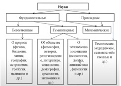
Апаурушея (нерукотворность)
«Изучая Веды надлежащим образом, человек осознаёт своё положение, начинает заниматься трансцендентным преданным служением Господу и со временем достигает духовного неба» ([1] Шримад-Бхагаватам 3.6.3, комментарии).
Русские слова ведать, весть, сведения, ведьма, медведь, ведущий, ведь происходят от санскритского слова веда. Слово веда буквально означает знание, иначе говоря, Веды представляют собой науку, а не просто набор каких-то мифов или верований. Веды – это богооткровенные писания, в которых подробным образом описана природа этого мира, природа человека, Бога, души.
Веды характеризуются санскритским словом апаурушея, что значит нерукотворное. Веды вечны, и каждый раз творец вселенной Брахма после очередного цикла разрушения вспоминает нетленные Веды, чтобы творить этот мир вновь. В этом смысле Веды относятся к таким вечным категориям, как Бог и духовная энергия.
«Всё ведическое знание, выходит за пределы нашего чувственного восприятия, и даже умозрительного. Об этом нельзя догадаться, увидеть, осязать какими-то материальными способами. И тем не менее оно воспринимаемо, когда мы слышим его как данность свыше. Как солнце мы воспринимаем, хотя не можем объяснить его ни умом, ни органами нашего восприятия. Но как данность, чудо, феномен природы воспринимаем. Но только тогда, когда оно само восходит. И вот таким образом ведическое знание превосходит человеческий уровень. Это божественный уровень. И передаётся оно на деванагари, или языке полубогов» [2].
«Веды не созданы несовершенными живыми существами. На заре творения ведическое знание было изначально вложено Господом в сердце Брахмы – первого сотворённого живого существа, а Брахма в свою очередь передал это знание своим сыновьям и ученикам, которые продолжают распространять его и поныне» ([1] Шри Ишопанишад 1).
«Веды не следует считать обычным сводом законов, построенных на здравом смысле. Веды состоят из слов добившихся истинного освобождения мудрецов, не зависящих от влияния изъянов чувственного восприятия» ([1] Чайтанья-чаритамрита 1.17.157, комментарии).
«Истинное знание исходит из Вед – совершенной мудрости, которая является одной из форм Верховной Личности Бога» ([1] Шримад-Бхагаватам 11.10.13, комментарии).
«Что такое Веды? Санскритский глагольный корень слова веда можно переводить по-разному, но в конечном счете все различные значения этого слова являются производными от слова знание. Любое знание, которое вы получаете, есть веда, потому что учение Вед – это изначальное знание» ([1] Шри Ишопанишад Введение).
Звуки Вед несут в себе особую энергию, поэтому очень важно было сохранить эти звуки в изначальном виде. В ведической культуре разработан способ передачи Вед в неискажённом виде. Девяносто пять процентов Вед на данный момент утеряны.
«Самые дорогие вещи даются бесплатно. Шримад-Бхагаватам содержит в себе все ведические наставления. Они бывают очень острые. Не все их выдерживают. Для того, чтобы пробудить душу. Шримад-Бхагаватам описывает духовное разнообразие, личностную концепцию. Имя, форма, качества, окружение – вот что описывает Шримад-Бхагаватам» [2].
«Бхагавад-гита является звуковым воплощением Господа, так как исходит из уст Верховного Господа, а Шримад-Бхагаватам представляет Господа в звуке, поскольку рассказан воплощением Господа и повествует о Его деяниях» ([1] Шримад-Бхагаватам 2.1.8, комментарии).
Брихад-араньяка Упанишада (2.4.10) гласит:
«Риг-веда, Сама-веда, Яджур-веда, Атхарва-веда, Итихасы (исторические повествования такие, как Махабхарата) и Пураны – всё это дыхание Абсолютной Истины. Они изошли из Верховного Брахмана[265] безо всяких усилий с Его стороны, с той же лёгкостью, с какой дышит человек».
Таким образом, Веды были созданы одновременно с материальным творением и являются его неотъемлемой частью: инструкцией по применению.
Инструкция по применению
Когда мы покупаем что-то в магазине, к товару прилагается инструкция по применению. Аналогично этому, Веды можно назвать инструкцией по применению материального мира, в котором мы живём, и нашего материального тела, в котором мы тоже живём.
Вселенная и наше тело являются творениями. Этот факт подтверждается Ведами и нашим жизненным опытом. Никто не видел, как что-то возникло само по себе благодаря стечению обстоятельств. Но наоборот, всё вокруг прямо у нас на глазах само разрушается и деградирует, если не прикладывать дополнительных усилий к поддержанию порядка. А гипотезы о том, что что-то само создалось раньше или создастся потом, выглядят очень неубедительно, глупо, как-то по-детски даже. Многие известные учёные поражаются сложностью и тонкостью этих великолепных механизмов – нашей материальной вселенной и нашего материального тела. Вокруг огромное количество примеров созидания:
- художник нарисовал картину,
- инженер сконструировал автомобиль,
- инженер создал компьютер,
- писатель написал книгу,
- композитор создал симфонию,
- скульптор изваял скульптуру,
- химик синтезировал вещество.
Но пока ещё никто не видел, как что-нибудь создалось у нас на глазах само, без участия личности.
Когда ребёнку родители покупают конструктор Лего, в коробке обязательно лежит книжечка с инструкцией по сборке игрушек. Подобно этому, Вишну подарил Брахме конструктор Лего-вселенная и дал инструкцию по применению – Веды.
В нашем временном пользовании по странному стечению обстоятельств оказались эти очень сложные механизмы – наше тело и окружающий мир. И пользоваться ими без изучения инструкции – неоправданный риск. А вдруг что-нибудь испортится или взорвётся? И есть подтверждения этому. Мы вокруг наблюдаем много таких взрывов. Это
- разводы,
- самоубийства,
- стрессы,
- депрессии,
- болезни,
- преступления.
Поэтому жить обязательно надо в соответствии с ведическими писаниями.
«Предписания, регулирующие деятельность людей, содержатся в Ведах, которые исходят непосредственно от Верховной Личности Бога» ([1] Бхагавад-гита 3.15).
«Мы не можем сами с вами установить, что можно делать, а что нельзя. Это даётся священными книгами. Понятия греха и добродетели объясняются только в священных книгах. Нет священных книг – эти понятия будут размыты. Добро и зло вы не различите сами, пока не обратитесь к законам религии. Законы религии даются только от Бога или от пророков. Сам человек не может к этому прийти, он живёт только в компромиссах, в своих чувствах. Поэтому грех определяют писания.
Ну кто это писал? И спросила кроха: что такое хорошо и что такое плохо? Как различить? И что есть чистое, и что нечистое? Каким образом вот я руки помыл, и они чистые стали, почему? А что делает их нечистыми? А почему, если я что-то съел, даже через ложку, рука считается нечистой? Я не вижу, что она нечистая, она такая же чистая, а вот там написано: нет, нечистая. И есть такие тонкости, которые мы не различаем. Но если мы последуем этим законам, мы начнём различать эти тонкости – вот в чём вопрос. У нас глаза откроются. Оказывается, я раньше не знал, никто не знал: раз в неделю мылись, и всё было чисто, казалось. А оказывается, если ты утром душ не принял, ты нечистый целый день. «Так я же мылся позавчера целиком!» Нет, каждое утро нужно это делать. Но делая это, вы понимаете, что такая чистота лучше. Вот что такое законы религии, которые возвышают наш разум, обостряют разум. Эта способность различать недоступна искусственному интеллекту» [2].
«В каждом цивилизованном человеческом обществе изначально существует свод религиозных правил и предписаний. В обществе ариев, последователей Вед, представителей самой развитой цивилизации, правила так строги, что демонами считаются все, кто пренебрегает заповедями религии. Современные люди не знают предписаний священных писаний и не имеют ни малейшего желания следовать им. Большинству из них не известны заповеди писаний, но даже те, кто знает о них, не склонны их выполнять. У них нет ни веры, ни желания действовать в соответствии с предписаниями Вед. Как внутренняя, так и внешняя чистота тоже не свойственна им. Тело нужно всегда поддерживать в чистоте: каждый день совершать омовение, чистить зубы, бриться, менять одежду и т.д. Что же касается внутренней чистоты, то для её поддержания необходимо всегда помнить святые имена Бога и повторять Харе Кришна, Харе Кришна, Кришна Кришна, Харе Харе / Харе Рама, Харе Рама, Рама Рама, Харе Харе. Что касается поведения человека, то его тоже регламентирует множество правил и предписаний. Они изложены в таких книгах, как Ману-самхита, представляющих собой свод законов для человечества. Индусы следуют этим правилам даже сегодня. На основе Ману-самхиты составлены законы о наследстве и многие другие» ([1] Бхагавад-гита 16.7, комментарии).
Господь позаботился о том, чтобы ведические писания были понятны, и создал их многослойными. Это означает, что каждому, читающему ведические писания, доступны зашифрованные пласты знаний, соответствующие его уровню развития.
Ведические писания имеет смысл изучать непосредственно для их применения. Если их читать из праздного любопытства, во-первых, будет не интересно, а во-вторых, знания не откроются.
Санскрит
Как сохранились Веды? Секрет кроется в языке ведических писаний – санскрите.
Ведические писания по-другому называются Шрути – услышанное. В течение многих веков и эпох ведические писания передавались из уст в уста, существовала хорошо разработанная система мнемонических правил запоминания ведических писаний. До сих пор в Индии есть люди, которые могут наизусть прочесть одну или даже несколько Вед. Это несколько сот тысяч стихов на санскрите.
Слово санскрит означает совершенный, имеющий идеальную структуру. Санскрит – это язык с уникальной грамматикой и фонетикой, и многие языки этого мира произошли от него. В частности, все западноевропейские языки, латынь, древнегреческий и, конечно же, русский.
Вот «краткий» список русских слов, имеющих санскритский корень:
абхидхасьяти – объясняет
авагаха – нырять (ср. акваланг)
авика – овечка
агни – огонь
ада – еда
ад – есть
ади (высший) – один
адья – сегодня
акша – око
амбараджами – коплю, собираю (ср. амбар)
анья – иной
асата – закат
асми – есмь (1 лицо ед.ч.)
асте – остается
асти – есть (3 лицо ед.ч.)
атха – итак
аушади – овощи
ашма – камень (ср. яшма)
ашта – восемь (ср. eight)
балатва (детство) – баловство
бахутва – богатство (обилие) (ср. с цыганским бут - много)
будх – будить
бул – булькать
буса – бус (старорусск. туман)
бхава – бытие
бхавания – бывание
бхавет – будет
бхагати – бегать
бхадра – бодрый
бхайас – страх (ср. бойся)
бхаяти – бояться
бхлас – блестеть
бхратар – брат
бхратритва – братство
бхри – брать
бхру – брови
бху – быть
бхуджага – змея, ходящая изгибами (ср. уж)
бхурана – буран
вад – водить (руководить)
вад – говорить
вадитар – оратор
вайас – возраст
вакья – говорение (вяканье)
вакья – речь
вала – волос
валана – волна, волнение
вал – вал
вали – валик
валика – валик
вара – выбор, отборный, избранный (ср. вариант)
вара (ограда) – варок (загон для скота)
вар – выбирать (ср. вариант)
вари – вода
вари (вода) – варить
вартана – ворот, поворот
вартула – круглый, круг (ср. вертел, вертеть)
васанта – весна
вас – вас
ватар – ветер
вачана – вещание, речь
вач (вак) – вещать (вякать)
вач, вача – говорить (ср. вече)
ваша – желание (ср. wish)
ваю – веющий, воздух
ваюх – ветер, воздух
веда – знает
ведана – ведение
ведин – ведун
видадхами – давать (ср. с укр. вiтдавати)
вид, вед – ведать, знать
видхава – вдова (ср. widow)
вихри – развеивать, вихрить
вишва – весь
виш – весь (в смысле – деревня – по городам и весям)
враджья – враг
врана – рана
вранин – раненный
врика – волк
врит – вертеть
вякана – речь
вяк – говорить
гала – горло
гам – идти, ходить (ср. come)
гарджа – гроза, гром
гири – гора
гита – песня (ср. гитара)
грабх – грабить
грива – грива, загривок, шея, затылок
гула – гуля
гуру – тяжелый (ср. гиря)
гхна – гнать, бить
гхоре – ужасно
гхри – гореть
гхрини – горение
гху – звать (ср. с укр. гукати)
даван – даванье
дагдха – деготь
да – давать
дада – дед, дядя (старный родственник)
да, дай – дать
дади – дающий
дадмух – затрубил (ср. с укр. дмухнув)
даина – дневной
дакшина – десница, правый
дала – доля (часть)
дама – дом
дам – дом
дана – дань, дар
дана – щедрость
данта – зуб
дану – река (ср. с ДоН, ДНепр, ДоНец)
дарава – деревянный
дара – дыра
дару – дерево
датар – дающий
дашан – десять
дашатара – десятеро
два – два
двандва – двойственный
двар – дверь
дваре – двери, ворота
дварешу – двери
двая – двое
дви – две
двитий – второй
дева – бог
девар – деверь
деви – богиня
деврь – деверь (брат мужа)
джал – жало (острие)
джанака – знаток
джана – человек (от этого Иван, John, Жан и т.д.)
джани – жена
джара (любовник) – ярый
джар – зреть, созревать
джарья – заря
джата – зять
джаяте – рождается
дживанам – жизнь
дживан, джива – живой
дживатва – жизнь
дживати – живет
джив – жить
джити – жить
джна – знать
джнана – знание
джната – знаемый, знатный
джну – гнуть
джняти – знать (в смысле – ведать)
дива – диво, небо
дивайя – божественный, чудесный (ср. диво, divine)
дивья – дивный
дивьян – небесный
дина – день
драва – дерево, дрова
дра – удирать, удрать
дри – драть, рвать
дрика – дырка
ду – дуть (идти)
дума – дым
дуракша – близорукий (акша – око)
дура – отвернувшийся от бога
дурджана – злодей
дур – дурной, плохой
дурмеда – глупый, дурак
дух – дудить, сосать
дхама – дом
дхана – богатство, деньги, подарок, дар
дху – дуть, раздувать
дхума – дым, туман (ср. с укр. дмухнув – дунул)
дхутра – хитрый, хитрец
дэви – дева
ека – один
естество – аститва
и – идти
ила – ил (почва)
итас – итак
иш – искать, желать
йа – который
када – когда?
ка – как, какой, кто?, который?
кал – считать (ср. calculator)
кандука – кадка
картар – создатель (ср. creator)
каруна – каруна (горестный)
катама – который (из них)
катара – который
катха – рассказ (ср. с укр. казка)
кахала – сказитель
кахати – ср. укр. казати
кашчит – каждый
ква – где?
кеша – коса (волосы)
кила – клин, кол
кокила – кукушка
коша – кошель
крави – кровь
кравис – сырое мясо
кравья – кровавый
крату – кратный
крика (горло) – ср. крик
кри – крыть, кроить
крип – крепить
кришака – крестьянин
криш – крошить; возделывать землю
крунча – крученный
крунч – крючить, сгибать
ку, кудас – куда
кулака (пять вместе) – кулак
кула – круг (скифское, укр. коло)
кулика – кулик
кумбха – кувшин
купака – копанка, пруд
куп – копать
кур – петух, петь, курлыкать
курча – завиток (ср. курчавый)
кутра – куда
куча – куча, выпуклость
куч – скучивать
кхелати – гулять
кхила – кол, шест
кши – гнать, прогонять
лава – лов, собрание
лагху – легкий
лад – ладить, играть
лала – ляля, женщина
лал – лялить, ласкать
лап – лопотать
лас – ласкать, обнимать
лепа – лепка
леша – немного, лишь (ср. с укр. лише)
ли – лежать
лип – лепить
липтака – липкий
липьяти – лепить
лих – лизать (ср. с lick)
лиш – лишь
лубх – любить, вожделеть
луп – лупить, вредить, грабить
мадам – иллюзия (ср. с mad)
мадху-кара (буквально: мёда создатель) – пчела
мадху – мед, сладкий
макшика – муха (ср. москит)
мама – мой, меня, моё
мам – мне
манас – мнение
манса, мас – мясо
мантрин – министр, советник
марта – смертный
мар – умирать
мастака (букв. голова) – мастак
мата – мать
матих – мнение
матри, мата, ма – мать, матерь
матрь – мать, матерь (ср. с укр. матiр)
маха – большой (ср. могучий)
машака – мешок (кожаный)
мекшана – мешалка
ме – мне, мой
меша – мех, руно
ми (как окончание глагола) – я
млаи – млеть
мок – мокнуть
мритам – мертвый
мрита (мри) – мертвый, умирать
мритасья – мертвого
мрит – умирать
мритью, марана – смерть
мритьюх – смерть
мрич – мрачнеть
мрияте – умирает
мудхах – глупец (ср. мудак)
мурдха – лицо
мурти, мурдхан – морда, голова
мухья – обманщик (?) (ср. мухлевать)
муч – мочить
мушика – мышь
мушка – мышка
муш – мошенничать, воровать
муш – мышь
мэка, букка – коза
набха – небо
набхаса – небеса
навам – лодка (ср. navy, naval)
нава – новый, молодой
навина – новина
нагна – нагой
накта – ночь (ср. с укр. нафта)
накха – ноготь
наман – имя (ср. name)
намас – поклон, почтение (ср. намаз)
нана – много (ср. many)
нана – няня
нанва – девять (ср. nine)
на – не, нет
насика – нос, носик
нас – нас, наш
натака – танец
нах – нам, наш
наштати – ср. с укр. нищити
неводха – невестка
ни – вниз; назад, обратно; внутрь
ни – ни
нис – прочь, от; к уничтожению
нитья – нить
нихина – низина
нича – низкий человек
нишпад – ниспадать
нища – ночь (ср. со старинным нощь)
нуд – нудить
ну – ну
нэд – нет
оджас – сила, мощь (ср. ужас)
остха, оштха – уста или губа
пада – нога, пята
падати – падать
пад – падать, летать
пака – пекота, жар
палита – пал, горение
панча – пять
па – питать
папу (букв.: защитник) – папа
параврит – перевернуть
пара – высший
парада – передать
парама – высший (ср.prima – первый)
пара – пара, другой
пара – пере (приставка)
параплавате – переплывать
пардада – прадед
паривартана – переворачивание (ср. с укр. перевертання)
паршва – перси
патанти – падать
патхика – путник
патхи, патха – путь (ср. path)
пачана – печенье
пач – печь, варить
паш – пасти
пива – вода
пиван – полный, сильный
пивара – большой, толстый
пивас – жир, сало
пиво – напиток
пи – пить
пита – отец
пита – питый
питарах – предки
питар – питатель, отец, небо
питар, питр – отец (ср. pater, father)
питва – пивший
питу – напиток, питание
пиш – писать, вырезать
плавана – плаванье
плуш – плескать
прабудх – пробудиться
прабхата – утро
пра – вперед
пракрити – природа
праматри – праматерь
прапити – пропить
прастара – простор
пратап – протопить
прати – против (назад)
прахлад – прохлаждаться
прашна – вопрошение
прия – приятный, милый, хорошо
приях – дорог, приятен
пса (голодный) – пес
пурва – первый
пурна – полный
пуш – процветать (ср. пышный, пухнуть, пушнина)
пхала – плод
пхена – пена
рава – рев
ракшитар – защитник
рана – брань (битва)
раса – сок, роса, сердцевина
рита (порядок) – ряд, порядок
рич – речь
родас – земля (ср. род, родить)
родхра – ср. с укр. рудый (красный)
рох – расти
рудати – рыдать
руд – рыдать
рудхира – кровь, укр. рудый
руч – луч, блеск
руш – рушить
сабха – собор, собрание
сабхратри – собратья
савитар – солнце, светило
сада – всегда
садас – сиденье, собрание, совет.
сад – идеть
садин – всадник
сад – садить, сидеть, опускаться, быть побежденным
саиника – воин (ср. Аника-воин)
сайя – ср. исход дня, вечер (ср. с "заря")
самана – шаман, аскет-мистик
сама – равный, подобный (ср. same), сам, самый
самбхар – собор
самвачана – совещание
самкал – слагать (счёт)
сампадана – совпадение
самья – семья или держаться вместе
са – он
сапта – семь (ср. septa)
сарпа – змея (ср. сапа, serpent)
са – се (это есть) (ср. с укр. це)
сатьям – суть, истина
сахаша – сейчас же
сах – эта
свакар – свекор
свака – свояк
свап – спать
свара – свара, крик, голос, звук,
свар – сверкать
свасар – сестра (ср. sister)
сва – свой (собственный)
свасти – счастье
сватва – свойство
сваям – лично
свая – свой (собственный)
сведа – пот (ср. sweat)
сев – служить (ср. serve – сэв)
сив – шить, сшивать (ср. шов)
сик – лить, орошать
сик, сич – сочить, изливать
сита – светлый
смаяти – смеяться
сми – смеяться, улыбаться (ср. с укр. смих)
снехья (скользкий) – снег
снукха, снуша – сноха, сношенька
снуша – сноха
сола – соленый, горький
спхья – соха
стамбх, стабх – столб
стана – стоянка, место, стан, страна
ста – стоять, становиться, стать
ступа – ступа
сукха – сухой
суну, суна – сын
суха – сухо
схайя – сияние (ср. shine)
тава – твой
тада – тогда, в это время
така – такой
такш – тесать
тамасах – темнота
тама(с) – тьма
танга – тугой
тан – тянуть трут тереть
танука – тонкий
тану – тонкий
тапа(с) – теплота
тап – теплый, горячий, утеплять (ср. топка)
таскара – таскун, вор
тас – таскать, утаскивать
тата – тятя (отец), укр. тато
та – та, эта
татсама – тот самый
тат (тад) – тот
татха – так
таю – таящий, вор
твайи – тебе
твам – ты, тебя
твар – творить
тва – твой, тебе
те – все они, тебе
тик – течь, утекать
тимира – темнота, мрак
томо – темно
то – то
трана – трава
трас – трястись, дрожать
трашна – жажда
траяс – трое
трая – трое
трета – третий
трика – тройка
трина – трава
трис – трижды
трита – третий
тритий – третий
три – три
труп – истреблять, убивать
тунга – тугой
тур – турить, гнать
тэ – те, тебе
убхайох – обеих
убха – оба, двое
угра – огромный, ужасный (ср. ogre)
уда – вода
удака – вода (ср. с водка)
уддал – отделить
уддана – отдание
удда – отдать
уди – идти, отправляться
удра – выдра
упакри – покрыть (узором)
упала – камень
упали – полежать (близ)
упастха – постоять
ута – уток (ткани)
уткри – открыть, вскрыть
уткрита – открыта
утпад – отпадать
утсад – отсадить
ут(уд) – вверх, наружу
утчал – отчалить, отправиться
ушас – утренняя заря, также имя богини утренней зари (Ушас).
ушна – лето, жаркий, яркий
хам – глупец
ханса – гусь
хантарам – убийца (ср. hunter)
ханти – убивает
хан – убивать, бить (ср. хана)
хвана – зов, званье
хва, хве – звать
хема – земля
хима – зима, холодный, холод
химья – зимний
хирана – семя, зерно
хладака – свежесть
хлад – холодить, освещать
хлас – гласить, звучать
ход – ходить
храд – радоваться
хридая – сердце (ср. heart)
хрид – грудь
хри, хра – хранить, прятать
чару – чара, чарующий
чатвара – четверо
чатура – четыре
чатуртха – четвертый
чашака – чашка
чит – учитывать, считать, знать
чи – чинить, учинять
чуда – чудак, глупец
чула – чулан
чут (мелкота) – ср. чуть-чуть
чушчуша – чавкающий (чушка)
чхуп – касаться, щупать
шала – шалаш, укрытие
шатакрату – стократный
шата – сотый
шат – сто
шаш – шесть
швашурья – шурин
швета – светлый, белый
швит – свет, белизна (ср. с укр. свiт)
шибхам – шибко
ширас – вершина, голова
шира – шило
шравас – слава
шукра – ясный, светлый (ср. с укр. цукор – сахар; sugar)
шула – шило
шушка – сушка
шуш – сушить
щващура – свёкр
щикшака – учитель
щравас – слава
щушка – сухой
эва – эва
эка – эка
этад – это
этайх – все эти
этам – это
этан – все эти
этани – эти
этат – этот
этена – этим
эте – те
юва – юный
юга – иго, ярмо
юна – юный
юша – юшка, похлебка
ява – явь, явление
яджна (жертва) – ягня, ягненок
яма – яма (конец)
я – явиться, стать
Более полный список можно посмотреть тут: http://www.philos.lv/Citu_raksti/Drevnij_sanskrit.html.
Фонетика санскрита по своей научной организованности не имеет аналогов. В санскрите двадцать пять согласных, они разделены на пять рядов по способу звукоизвлечения, по пять букв на каждый ряд. Эти пять рядов имеют непосредственное отношение к пяти изначальным стихиям, из которых построен мир. Первый ряд относится к эфиру, второй – к воздуху, третий – к огню, четвёртый – к воде, пятый – к земле. В самих Ведах говорится, что каждый звук санскритского алфавита несёт в себе определённую тонкую энергию, и именно на этой энергии основана вся ведическая культура. Мантры, состоящие из этих звуков, правильно произнесённых, способны пробуждать скрытые, тонкие механизмы природы. И мудрецы древности, риши, способные видеть сквозь грубую реальность, с помощью правильного произношения, порождали определённую волновую структуру, которая позволяла им творить чудеса.
Кроме того, ведические писания не являются чем-то статичным. Веды расширяются, дополняются. Например, Чайтанья-чаритамрита написана около пятисот лет назад, но является ведическим писанием. Критерием является связь с Абсолютной Истиной. Современная наука является ведическим знанием ровно настолько, насколько она связана с Абсолютной Истиной.
Оригиналы Вед, конечно же, не сохранились. Они писались на пальмовых листах, которые быстро разрушаются в тропическом климате. Самые древние рукописи датируются первым тысячелетием до нашей эры. Но что удивительно, благодаря традиции устной передачи знания большинство этих рукописей совпадают с текстами, которые были написаны намного позднее, в XVIII веке, когда в Индию мусульманами была занесена бумага.
Структура Вед
«К ведической литературе относятся как сами Веды (Сама, Яджур, Риг и Атхарва), так и все основанные на них произведения.
Суть всей ведической мудрости изложена в Бхагавад-гите, поэтому её заповеди следует исполнять особенно строго» ([1] Шримад-Бхагаватам 6.5.20, комментарии).
«Веды огромны, многообразны, и современному человеку даже трудно будет оценить их объём. Если посмотреть на них с высоты птичьего полёта, то объём будет гигантским. Например, если средний человек будет читать по восемь часов в день ведические произведения, ему понадобится примерно тысяча пятьсот лет для первичного ознакомления, просто чтобы охватить этот объём. Это огромный объём знаний, и современному человеку трудно разобраться, что это, какие там внутренние связи.
И удивительно, что когда первые западные люди познакомились с ведической литературой, у них создалось впечатление, что это – огромное количество разнородных произведений, между которыми нет связи и закономерности, это некий хаос. Но это не так, хотя в науке закрепилось представление о том, что это нечто простое, несвязное и хаотическое. Когда нет ключей к пониманию, то всё это предстаёт именно так. Но на самом деле ведическое знание очень связное, чётко выстроенное.
Нужно знать структуру. Это – то, что проливает свет на Веды. Она даёт представление, как можно классифицировать, разделить, представить и что-то понять в том огромном массиве, который мы называем Ведами.
И, кроме этого, есть прикладные Веды. Скажем, к Риг-веде прикладывается Аюр-веда – Веда, которая говорит о здоровье, профилактике заболеваний, здоровом образе жизни – это то, что сейчас вызывает интерес у многих людей. Сама-веда дополняется Гандхарва-ведой – это исполнение гимнов, пение. Яджур-веда дополняется Дханур-ведой – наукой о различных видах вооружения. С этой точки зрения ведическое знание проникло очень глубоко в различные виды энергии и способы их использования, многообразие. Это гораздо шире, чем мы имеем сейчас. В Дханур-веде описано ядерное оружие, имеющие направленный характер, оно не уничтожает всё вокруг, а только конкретный объект. Это контролируемое оружие, чего сейчас нет, уничтожается всё сейчас. К Дханур-веде также относится Стхапати-веда – это наука о том, как строить, архитектура. Это очень важная наука, потому что сейчас всё происходит неправильно: неправильно строим, ориентируем в пространстве, по сторонам света. И не зная этого, люди нарушают многие законы. Строят жилища, в которых нарушаются потоки энергии, потому что нет знания» [23].
Существует три раздела ведических писаний:
1) Шрути – это услышанное свыше в трансе из достоверного источника.
2) Смрити – это то, что можно запомнить, историческая хроника.
3) Ньяя – это тексты, написанные на основе логических выводов.
Очень важна именно такая последовательность. Сначала надо услышать и поверить. Знание должно зайти в сердце, то есть в глубину сознания. Ведические тексты Шрути считаются апаурушея – богооткровенными. Они представляют собой вечное трансцендентное знание, запись космических звуков истины.
Ведические писания также можно разделить на три вида в зависимости по прямоте их воздействия на сознание человека:
1) шастры – прямо приказывают, что надо делать, а что нельзя делать;
2) пураны (истории) – на разных примерах из жизни намекают, что получается, когда кто-то что-то делает;
3) и кавья (поэзия) – это тонкие намёки, которые с первого раза и не поймёшь.
В Шримад-Бхагаватам представлены все три этих вида.
Также необходимо отметить, что Веды не являются чем-то догматичным, неизменным, фиксированным. Веды – это прежде всего личности. В произведении Брихад-бхагаватамрита Санатаны Госвами описывается, как Веды, живущие на Брахмалоке, поспорили друг с другом. И это не какие-то сказки, а реальные события. Веды – это динамически изменяющиеся писания, передающие главным образом настроение их носителей – олицетворённых Вед. При этом содержание, контент этих писаний может быть разный в зависимости от времени, места и обстоятельств проявления в этом бренном изменчивом материальном мире.
Например, сын и ученик Вьясадева Шукадева Госвами пересказал Шримад-Бхагаватам, и его пересказ является Ведой. Махараджа Парикшит пересказал услышанный им от Шукадева Госвами Шримад-Бхагаватам своей матери Уттаре, и этот пересказ, известный под названием Брихад-бхагаватамрита, является Ведой. Абхай Чаранаравинда Бхактиведанта Свами Прабхупада прокомментировал Шримад-Бхагаватам, ранее изложенный Шукадевой Госвами, и эти комментарии являются Ведой. И так далее.
Так чьи произведения можно считать Ведой? Главное условие – нахождение автора в парампаре, цепи преемственности истинных духовных учителей.
1. Шрути (услышанное)
«Словом Шрути называют знание, которое обретают в процессе слушания. Это не эмпирическое знание. Шрути сравнивают с матерью. От матери мы узнаём об очень многом. Например, если вы хотите узнать, кто ваш отец, кто может ответить вам? Только ваша мать. Когда мать говорит вам: «Вот твой отец», – вам остается только согласиться с этим. Установить личность отца экспериментальным путём невозможно. Аналогично этому, если вы хотите познать нечто, лежащее за пределами сферы вашего опыта, вашего эмпирического знания, за пределами сферы действия ваших чувств, то должны принять Веды. В этом случае не может быть и речи об экспериментировании. Все эксперименты уже давно поставлены. Истина уже установлена. Нам остаётся только принять её, как мы принимаем на веру слова матери. Другого пути нет» ([1] Шри Ишопанишад Введение).
«Услышать Шрути может только человек, признающий своё несовершенство. Вот такой простосердечный, не мнящий о себе ничего человек может стать пророком. Поэтому нам нужно признать своё несовершенство и обратиться к Ведам. Они совершенны. Все пророки передавали знания таким путём. Не то что мы ждём нового пророка. Уже приходили пророки, уже нам всё дали и уже сказали: «Убивать не надо, лгать не надо, завидовать не надо, почитать старших надо, Бог один». А мы до сих пор решаем все эти вопросы по-своему. Не интерпретируйте в свою пользу. Ложь появится. Мы полны недостатков. Мы полны эгоизма» [2].
Ведическая литература Шрути обычно классифицируется согласно делению Вед на четыре части:
1) Риг-веда – Веда гимнов, наука о поклонении – состоит из 1017 гимнов, собранных в десяти книгах. Бóльшая часть стихов прославляет Агни, бога огня и Индру, бога дождя и небес. Пользоваться этими гимнами могут только люди, сведущие в духовных вопросах. Риг-веда является олицетворением религии, дхармы.
2) Сама-веда – Веда песнопений, сокровищница музыки – состоит из 1549 стихов, многие из которых встречаются в другом контексте в Риг-веде. Сама-веда особенно прославляет небесный напиток сому. Сама-веда является олицетворением знания, гьяны.
3) Яджур-веда – Веда жертвоприношений – содержит инструкции по проведению жертвоприношений. Яджур-веда является олицетворением богатства.
4) Атхарва-веда – Веда заклинаний – наука о законах материальной природы на Земле и на любой другой планете в нашей вселенной, о владении умом и телом и ещё о многом и многом другом. Содержит различные песни и обряды, по большей части предназначенные для излечения от болезней. Атхарва-веда является олицетворением отрешённости, вайрагьи.
«Там, в йога-питхе, у лотосных стоп Господа сидят олицетворения религии, знания, богатства и отрешённости.
Четыре Веды (Риг, Сама, Яджур и Атхарва) лично присутствуют там, чтобы давать советы Господу» ([1] Шримад-Бхагаватам 2.9.16, комментарии).
Из этого стиха видно, что Веды – это личности, живые существа, олицетворённые Веды.
Каждая Веда состоит из четырёх разделов:
1) Самхиты представляют собой сборники мантр, гимнов. Их, собственно, и называют Ведами.
Самхиты – для брахмачари[266].
2) Брахманы описывают ритуалы, дают указания, каким образом, с какими обрядами и в какое время эти мантры, гимны следует произносить. Также Брахманы содержат свод законов, которые должен соблюдать человек, чтобы счастливо жить в этом мире.
Брахманы – для грихастх[267].
3) Араньяки – разделы более метафизического характера, в которых объяснены сокровенный смысл и высшая цель ритуалов.
Араньяки – для ванапрастх[268].
4) Упанишады дают философское обоснование законов этого мира. В них рассказывается о природе Бога, индивидуальной души, взаимоотношениях, которые связывают мир, Бога и душу.
Упанишады – для санньяси[269].
Обычно они написаны в форме сутр, то есть кратких глубокомысленных афоризмов.
«Согласно Муктика Упанишад, существует 108 Упанишад, в том числе:
1) Иша,
2) Кена,
3) Катха,
4) Прашна,
5) Мундака,
6) Мандукья,
7) Тайттирия,
8) Айтарея,
9) Чхандогья,
10) Брихад-араньяка,
11) Брахма,
12) Кайвалья,
13) Джабала,
14) Шветашватара,
15) Хамса,
16) Арунея,
17) Гарбха,
18) Нараяна
и т.д.» ([1] Учение Шри Чайтаньи 24).
2. Смрити (запомненное)
Смрити – категория священных писаний, историй, дополняющих Шрути. Они содержат в себе заключения, сделанные на основе Шрути. Чтобы вспомнить то, что было в прошлом, нужно вернуться в то качество, состояние сознания, а не в то время. И наоборот, Смрити написанные мудрецами в возвышенном состоянии сознания, способствуют вхождению читателя в такое же состояние сознания. Смрити – это произведения, которые описывают, как Веды воспринимали великие мудрецы и передавали это знание менее подготовленным к восприятию этого знания. Смрити легче для понимания, чем Шрути. Они предназначены для всех, в том числе и для женщин, вайшьев и шудр. Некоторые так называемые брахманы могут считать, что эти толкования слишком простые, и не принимать их за авторитетные.
К Смрити принято относить следующие ведические писания:
1) Дхарма-шастры, или законы, которые состоят из восемнадцати произведений. Каждое произведение соответствует определённой временной эпохе. Примером является Ману-самхита – свод законов для человечества.
2) Итихасы, или истории, сказания. К их числу принято относить эпосы Махабхарату и Рамаяну.
3) Пураны, или древние былины, которые состоят из восемнадцати произведений. Это дополнительные ведические писания, в которых Вишну, Кришна или Шива превозносятся как верховные формы Бога.
Например, Шримад-Бхагаватам относится к этой категории – к Пуранам.
Итихасы и Пураны содержат сюжет, истории и написаны для людей, которым сложно воспринимать только таттву, философию.
4) Веданги состоят из шести категорий текстов:
1. Шикша – правила произношения звуков санскритского алфавита.
2. Чандас – правила ритма и расстановки ударений в стихах, из которых состоят Веды.
3. Вьякарана – объясняется грамматика и метафизика санскрита – каким образом в санскрите нашли своё отражение сокровенная природа человеческой жизни и структуры вселенной.
4. Нирукта – этимология слов санскритского алфавита на основе глагольных корней, к которым восходит каждая часть речи санскрита.
5. Калпа – правила проведения обрядов и ритуалов.
6. Джйотиш – ведическая астрология – объясняет, в какое время нужно проводить эти обряды, чтобы любое начинание увенчалось успехом.
5) Агамы – это доктрины, которые делятся на три основные части:
- вайшнавские,
- шиваитские,
- и шакта.
Другой вид их классификации:
- мантра,
- тантра
- и янтра.
Например, к вайшнавским относятся:
- Нарада-панчаратра,
- Гаутама Тантра,
- Хари-бхакти-виласа Санатаны Госвами,
- Бхакти-расамрита-синдху Рупы Госвами.
«Веды требуют квалификации для изучения, не все могут их читать, это сложная подготовка. И произведения, которые подготавливали для усваивания Вед, находятся в разряде Смрити. Смрити включают в себя такие разделы, как Итихасы и Пураны. Итихасы – это исторические повествования, в их основе – конкретный исторический сюжет. До нас дошли две Итихасы, переведённые частично на русский язык, и многие уже их читали. Это Рамаяна и Махабхарата. Рамаяна излагает историю о великом царе Раме, обладавшем возвышенными нравственными качествами, о его идеальном царстве. Это очень большое произведение. Махабхарата – это самое большое в мире произведение. Если Бхагавад-гита – это толстый том, то Махабхарата – это примерно сто Бхагавад-гит. В Махабхарате изложены все секреты ведического знания, представленные в изначальных Ведах. Махабхарата была специально составлена в доступной форме для людей, не способных воспринять изначальное ведическое знание. Существует заблуждение, когда под Ведами понимают только Шрути. Пураны и Итихасы – это тоже Веды, это всё – единое целое. Пураны наиболее доступны для современного человека, это очень важный момент. Если Веды таинственны и могут быть непонятны, то Пураны – это истории с действиями, сюжетами, примерами. Поэтому они наглядны для понимания современному человеку. Пураны, или истории, существуют для людей с разным уровнем сознания. Среди них выделяют тамаса-Пураны, раджаса-Пураны и саттва-Пураны, есть маха-Пураны. Это огромный класс произведений. Из Вед известно, что одна из Пуран включает миллиард стихов. Она существует для высших планет вселенной, но на Земле не представлена. Миллиард стихов подразумевает нечеловеческий разум и нечеловеческие сроки жизни. К разряду Смрити относятся также Веданги и Панчаратры. Веданги – это различные разделы ведического знания, такие, как шикша, чанда, вькарана, нирукти, джйотиш и калпа. Эти разделы изучались в юношеском возрасте, их нужно было пройти в процессе образования, чтобы потом была способность воспринимать Веды. Веданги открывают доступ к Ведам, это ключи к чтению и пониманию Вед. Панчаратра – это наука о проведении обрядов. Если мы не знаем, как проявить действие того или иного закона или закономерности, то мы и не используем это» [25].
Существуют и другие ведические писания, не попадающие в какую-либо категорию. Например, Панчатантра – сборник сказок, главными героями которых являются животные, имеющие человеческие характеры. Эти сказки являются прообразами многих народных сказок разных народов, в том числе и русских народных сказок.
3. Ньяя (логика)
«И третий раздел структуры Вед – это Ньяя, или логика. В нём проанализированы все выводы Вед и представлены в виде сжатых, очень лаконичных выражений, или сутр. Это произведение называется Веданта-сутра – суть, или конец всех Вед. Все ведические произведения были сжаты то такого объёма, из которого уже невозможно что-то убрать. Это и есть Веданта, и она сохранилась, она не утрачена. Вопрос только – понять её» [25].
Ньяя – это философские трактаты, написанные мудрецами на основе логики. Логика – достаточно тонкий инструмент, который может помочь сознанию отделить материю и дух.
Веданта-сутра объясняет смысл Упанишад, устраняет кажущиеся противоречия, возникающие в уме того, кто изучает Упанишады.
«В Бхагавад-гите (13.5) Господь говорит: «Понимание высшей цели жизни даётся в Брахма-сутре [Веданта-сутре] на основе логики и доводов с объяснением причин и следствий». Поэтому
- Веданта-сутру называют Ньяя-прастханой,
- Упанишады – Шрути-прастханой,
- а Пураны – Смрити-прастханой.
Всё научное знание о трансцендентном должно опираться на
- Шрути,
- Смрити
- и убедительную логику»
([1] Чайтанья-чаритамрита 1.7.106, комментарии).
Но чтобы правильно использовать логику, этот могущественный инструмент, не злоупотребляя, человеку нужны определённые качества. Поэтому в процессе познания
- сначала используются Шрути,
- затем Смрити,
- и только в последнюю очередь Ньяя.
В настоящее время очень отчётливо виден результат неправильного использования современными учёными принципа Ньяи в обход Шрути и Смрити. Они пытаются использовать сразу логику, опираясь на безумные гипотезы, что приводит к фатальным ошибкам в развитии человеческого общества. В результате подобных ошибок потерпела крах техногенная цивилизация Атлантиды.
Мудрецы говорят, что не надо сильно беспокоиться по поводу получения необходимых знаний. Они советуют сильно не напрягаться, а просто читать авторитетную литературу с верой и почтением. Просто сам контакт со священными книгами сделает своё дело.
Среди огромного набора ведической литературы главными книгами считаются
- Веданта-сутра,
- одиннадцать первых Упанишад,
- Бхагавад-гита
- и Шримад-Бхагаватам.
Бхагавад-гита представляет собой краткое, доступное и последовательное
изложение всех философских аксиом, содержащихся в Упанишадах, а Шримад-Бхагаватам – это квинтэссенция как философии Упанишад, так и всех Пуран. Шримад-Бхагаватам служит естественным комментарием к Веданта-сутре.
«Эти три блока: Шрути, Смрити и Ньяя – представляют Веды. Для наглядности – такой пример:
- Учитель объясняет урок ученику, ученик его слушает – это шрути.
- Потом ученик на основе услышанного и понятого пишет изложение – это Смрити.
- И потом ученик передаёт суть в очень сжатых логических формулах, тезисах – это Ньяя.
Это внешнее понимание Вед.
В современной Индии люди, изучающие санскрит, изучают размеры, грамматику, астрологию, определённые ритуалы. Это всё непростые вещи, без которых невозможно воспринять Веды. В современном образовании нет этих дисциплин, нет ключей, поэтому человек остаётся один на один с произведениями, которые он пытается понять. Но без ключей это сложно. Соответственно, огромная часть ведического знания остаётся для нас недоступной в силу того, что мы не вооружены и не подготовлены для восприятия этого знания» [25].
Запись Вед
«Первоначально была только одна Веда, и читать её не было необходимости. Люди были такими разумными и имели такую хорошую память, что могли понять её, лишь однажды услышав из уст духовного учителя. Им достаточно было один раз услышать что-то, чтобы сразу постичь смысл сказанного. Но пять тысяч лет назад Вьясадева, заботясь о людях этого века, Кали-юги, организовал запись Вед. Он знал, что со временем жизнь людей сократится, их память ослабеет, а разум притупится. «Поэтому я должен учить ведической мудрости, записав её», – подумал он. Он разделил Веду на четыре части: Риг, Саму, Атхарву и Яджур – и поручил эти части своим ученикам. Потом он подумал о людях, не обладающих большим разумом. Он решил позаботиться о женщинах, рабочих и тех, кто, несмотря на высокое происхождение, лишён соответствующих качеств. Для них он создал Махабхарату, назвав так историю Индии, и восемнадцать Пуран. Все это: Пураны, Махабхарата, четыре Веды и Упанишады – составляет ведическую литературу. Упанишады являются частью Вед. Затем Вьясадева обобщил ведическое знание для учёных и философов в Веданта-сутре, которая венчает Веды» ([1] Шри Ишопанишад Введение).
Единая Веда представляет из себя как бы зазипованный в образ концентрат знания. Или это можно ещё сравнить с семенем, которое прорасти может уже на почве достаточно сильного брахманического разума. Но в связи с тем, что в Кали-югу у людей разум сильно ослабел, возникла необходимость в разделении единой Веды на четыре части, а также на Пураны, Махабхарату и т.д. Аналогичным образом, эта книга написана с целью ещё больше «разжевать» знание Вед для ещё большей простоты понимания.
«Обладая знанием и трансцендентным зрением, великий мудрец предвидел, что под влиянием этого века всё материальное придет в упадок. Он предвидел также, что у неверующих людей сократится продолжительность жизни и из-за отсутствия добродетели они станут беспокойными. Поэтому он погрузился в размышления о том, как помочь людям всех сословий и укладов жизни.
Он видел, что жертвоприношения, упомянутые в Ведах, являются средством, с помощью которого можно очистить деятельность людей. И чтобы упростить этот процесс, он разделил единую Веду на четыре части с целью распространить их среди людей.
Четыре части изначального источника знания [Вед] были выделены в самостоятельные произведения, а описания исторических фактов и подлинных событий, содержащиеся в Пуранах, именуются пятой Ведой.
После того как Веда была разделена на четыре части,
1) Паила Риши стал учителем Риг-веды,
2) Джаймини – учителем Сама-веды,
3) и только Вайшампаяна прославился знанием Яджур-веды.
4) Суманту Муни Ангире была поручена Атхарва-веда, которой он посвятил всего себя,
5) а Ромахаршане – Пураны и исторические хроники.
Все эти сведущие учёные в свою очередь передали доверенные им Веды своим многочисленным ученикам, ученикам учеников и их ученикам. Так образовались соответствующие школы последователей Вед.
Таким образом, великий мудрец Вьясадева, очень милостивый к невежественным людям, преподнес Веды в такой форме, чтобы их могли усвоить даже люди с невысоким интеллектом.
Движимый состраданием, великий мудрец решил, что это целесообразно, ибо позволит людям достичь высшей цели жизни. И потому он составил великое историческое повествование Махабхарата, предназначенное для женщин, шудр[270] и друзей дваждырождённых[271]» ([1] Шримад-Бхагаватам 1.4.17-25).
«Вьясадева был не каким-то заурядным писателем романов. Кто угодно может писать какую угодно чепуху. Нет, в прежние времена никакая книга не признавалась, если она не была написана освобождённой душой. Такова была традиция. И никакой другой человек не осмеливался писать какие-то книги. И если кто-то писал такие книги, они не признавались в обществе. Признавалась только ведическая литература и те книги, которые были производными от этого ведического знания. Вот это – настоящие книги» [1].
История жизни Вьясадева приводится в Махабхарате. Его отцом был Парашара Муни, матерью – Сатьявати.
Вьясадев разделил единую Веду на четыре Веды и к каждой приложил соответствующие отрасли знания – Веданги. Помимо шести Веданг есть Смрити, литература для запоминания, передающая то же самое послание Вед более простым языком на примере либо реальных исторических событий, либо аллегорических повестей. К Смрити относят восемнадцать главных и восемнадцать дополнительных Пуран, а также Рамаяну и Махабхарату, исторические хроники. Помимо этого, есть Кавии, поэтические сборники. Их также иногда относят к разряду ведической литературы, поскольку они основаны на Пуранах, только с более подробной разработкой сюжета и историй, содержащихся изначально в Ведах, а потом записанных в Пуранах.
«[Шримад-Бхагаватам] был составлен до того, как Махараджа Парикшит покинул этот мир, но уже после того, как покинул Землю Господь Шри Кришна. Когда Махараджа Парикшит как царь Бхарата-Варши правил миром, он наказал самого Кали[272]. Согласно богооткровенным писаниям и астрологическим вычислениям, с начала века Кали прошло пять тысяч лет. Следовательно, Шримад-Бхагаватам был составлен не позже, чем пять тысяч лет назад. Махабхарата была написана до Шримад-Бхагаватам, а Пураны – до Махабхараты. Такова хронология составления различных ведических произведений» ([1] Шримад-Бхагаватам 1.7.8, комментарии).
Для изучения Вед требовалась очень высокая квалификация, и, неправильно поняв смысл тех или иных мантр, можно было навредить и себе, и другим. Поэтому в ведической культуре существуют определённые ограничения на изучение Вед. Но для Смрити, исторических повествований, таких запретов нет. Пураны, Махабхарату, Рамаяну могут читать все без исключения. Эти книги несут в себе изначальные идеи Вед, вечный звук, который в своё время породил всё мироздание. Язык Пуран не такой сложный, поэтому учёные различают ведический санскрит и санскрит смрити. Вьясадева называют автором Вед, но Вьясадева просто записал то, что существовало многие тысячелетия до него. Само слово пурана означает древнее. Эти книги были всегда, в том числе и единая Пурана, и Вьясадева изложил её на языке, понятном людям века Кали, века деградации, в котором мы сейчас живём. Поэтому и Веды, и Пураны одинаково авторитетны. Они доносят до нас одно и то же послание, они изложены одним и тем же мудрецом и представляют собой гармоничный, согласованный сборник ведических писаний, в которых одна часть дополняет другую.
«Поскольку Вьясадева является воплощением Верховного Господа, его нельзя приравнивать к обыкновенным людям, которым присущи четыре недостатка, возникающие от соприкосновения с материальным миром.
Обусловленная душа имеет следующие недостатки:
1) она неизбежно допускает ошибки,
2) она подвластна иллюзии,
3) она склонна обманывать других,
4) все её чувства несовершенны.
Необходимо понимать, что воплощение Бога выше всех этих недостатков. Поэтому всё, что сказано или написано Вьясадевой, считается совершенным» ([1] Учение Шри Чайтаньи 19).
«Встаёт вопрос: какие произведения выражают суть Вед и дошли до нас? Шрути дошло очень мало. Риг-веду перевели на русский, но мало кто её понимает. Но вот Бхагавад-гита, или Песнь Бога, которую несведущие люди пытались у нас даже запретить, стала очень популярна в России. И она очень ярко выражает суть Вед. Веды в отношении истины бескомпромиссны: если они называют несовершенство несовершенством, это так и звучит, но кого-то обижает иногда. Бхагавад-гита является философской сутью Махабхараты. В Махабхарате сто тысяч шлок, из них семьсот – это Бхагавад-гита. Это очень концентрированное выражение сути Вед. Бхагавад-гита – это концентрированные Веды в одной книге. Бхактиведанта Свами Прабхупада хотел, чтобы Бхагавад-гита украшала книжные полки всех культурных людей мира, независимо от их вероисповедания, национальности и возраста. Это доступное произведение, выражающее суть Вед в семистах стихах, или шлоках. Её называют азбукой духовной жизни. И у нас в стране уже появились люди, которые знают Бхагавад-гиту наизусть. Семьсот стихов – это не так много. Её можно перечитывать постоянно и постоянно открывать для себя что-то новое. К нашей удаче, до нас дошла Шрути в виде Шри Ишопанишад, её также перевёл Бхактиведанта Свами Прабхупада. Она считается главной Упанишадой, или жемчужиной среди Упанишад. В ней всего восемнадцать стихов, или мантр, и она представляет Яджур-веду, Шрути. Это была одна из первых книг, с которой я познакомился, она небольшого объёма и доступна на русском языке, небольшое концентрированное произведение. И, наконец, энциклопедия духовной жизни представлена в многотомном произведении Шримад-Бхагаватам, или Бхагавата Пуране. Наличие этих произведений в вашей библиотеке означает, что ведическое знание в концентрированном виде представлено у вас. В этих произведениях раскрываются самые сокровенные вещи. Шримад-Бхагаватам – это огромное произведение в тридцати пяти томах, оно делится на двенадцать Песней. Эти три произведения представляют собой квинтэссенцию:
Шримад-Бхагаватам является естественным комментарием на Веданта-сутру, то есть это также представляет литературу Ньяя, раскрывая лаконичные и сжатые сутры Веданты в форме доступных нам историй.
Шрути представлены Шри Ишопанишад.
Смрити представлены Бхагавад-гитой и Махабхаратой. Иногда Бхагавад-гиту относят к Шрути, потому что это – слово, которое произнёс Бхагаван, Верховная Личность Бога, творец. Русское слово Бог происходит от этого корня бхаг – тот, кто всем владеет, самый богатый, обладает силой, красотой, знанием, славой и отречением. В Бхагавата Пуране очень подробно объясняется духовный опыт восприятия конечного совершенства – Бхагавана – и отношений с Ним в форме описания историй великих святых, достигших Его милости вступить в отношения с Ним, и игр Личности Бога в различные эпохи творения на различных планетах вселенной. Это то, что может нас приблизить очень быстро к конечному совершенству.
Помимо этого, из разряда Панчаратр доступна Бхакти-расамрита-синдху, которая переведена под названием «Нектар преданности», и Упадешамрита, которая переведена под названием «Нектар наставлений». Эти две книги представляют собой совершенство ритуальной деятельности – как прийти к совершенству в своих действиях.
У нас появилась уникальная возможность получить квинтэссенцию знания, выделенную из миллиарда стихов. Изучение этих произведений даёт нам оптимизм и надежду в постижении сути Вед. В рамках нашего Вайшнавского университета мы занимаемся изучением этих произведений» [25].
Научность Вед
«Веды – это первоисточник любого знания. Нет такой области знаний – материальных или трансцендентных, – которая не была бы освещена в изначальном тексте Вед. Просто позднее каждая из них была разработана и дала начало различным ответвлениям. У их истоков стояли великие, уважаемые и многознающие учители. Иначе говоря, ведическое знание, поделённое различными ученическими преемственностями на отдельные области, распространилось по всему миру. Таким образом, никто не имеет права утверждать, что есть знание, не имеющее отношения к Ведам» ([1] Шримад-Бхагаватам 1.4.23, комментарии).
Всё знание Вед можно разделить на четыре категории:
1) Наука жертвоприношений, трансцендентное знание.
2) Логика, философия, метафизика.
3) Различные формы менеджмента.
4) Практические искусства, такие как сельское хозяйство, торговля, медицина, изобразительное искусство и так далее.
«В Ведах содержатся систематизированные основы знания в
- социальной,
- политической,
- религиозной,
- экономической,
- военной
- и медицинской сферах,
- химии,
- физике
- и метафизике
- и прочих предметах,
- а также всё, что необходимо знать для поддержания тела.
- Кроме того, там есть специальные указания, направляющие человека к духовному самоосознанию» ([1] Шримад-Бхагаватам 1.1.3, комментарии).
В ведических писаниях есть огромное количество информации, касающейся всего того, что необходимо человеку для долгой и счастливой жизни.
Это знание об организации пространства, васту: как строить дом, как его располагать, чтобы чувствовать себя хорошо, не болеть, жить в мире и достатке.
Это медицина, Аюр-веда, наука о продлении жизни.
Это ведическая астрология, которая объясняет, как Земля и микрокосмос человека связаны с макрокосмосом, со вселенной, и как человек должен планировать свой день, поездки, важные начинания в жизни.
В ведических писаниях также есть раздел о музыке, где говорится о семи основных нотах, которые соотносятся с семью чакрами, энергетическими узлами в теле человека, позволяя по-особому выстроенным мелодиям, рагам успокаивать и излечивать человека, создавать психологический комфорт.
В ведических писаниях подробно описана йога, или набор различных техник и упражнений, позволяющих достичь огромной степени умственной концентрации, успокоить сознание, обрести мистические силы и в конце концов осознать свою духовную природу.
Есть также ведические писания по воинскому искусству.
Есть ведические писания, в которых приведены заклинания и мистические ритуалы.
Есть пособия по экономическому процветанию, прикладной психологии, управлению государством, дипломатии.
Есть кама-шастра, наука интимных отношений, позволяющая человеку постепенно переходить от грубых материальных наслаждений ко всё более тонким и так понять, что подобные удовольствия не являются целью человеческого существования.
Вот некоторые из так называемых достижений современной науки и техники, описанные в Ведах более пяти тысяч лет назад и повторённые лишь в последние сто-триста лет:
- пластические операции – Сушрута Самхита;
- соединение хромосом в зиготе – Шримад-Бхагаватам;
- сердцебиение плода на второй месяц беременности – Айтарея Упанишада, Шримад-Бхагаватам;
- искусственное оплодотворение – Махабхарата;
- микроорганизмы – Махабхарата;
- сознание у растений – вся ведическая литература;
- изучение природы сна – Прашна Упанишада, Йога-сутры;
- скорость света – Риг-Веда, Саянбхашья;
- планеты, которые находятся за Сатурном – Махабхарата;
- летательные аппараты и космические полёты – Риг-Веда, Рамаяна, Махабхарата;
- сила гравитации – Прашна Упанишада;
- ультрафиолетовый и инфракрасный спектры – Мундака Упанишада;
- объекты, летящие быстрее света – Мундака Упанишада;
- ядерное оружие – Махабхарата, Шримад-Бхагаватам;
- чёрные дыры – Мундака Упанишада;
- субатомные частицы – Шримад-Бхагаватам;
- Использование звука для разрушения – Махабхарата.
Вот ещё примеры разделов ведических писаний в различных областях знания:
- градостроительство – Васту-шастра;
- математика – Схулба-сутра;
- астрономия и астрология – Джьотиша-шастра;
- химия – Расаяна-шастра;
- медицина – Аюр-веда;
- воинское искусство – Дханур-шастра;
- политика и юриспруденция – Ману-самхита;
- философия – Упанишады, Веданта-сутра и др.
Ведические писания охватывают абсолютно все стороны человеческой деятельности.
Авторитетность Вед
Четыре недостатка человеческого сознания
«Пока мы пребываем в состоянии обусловленности, наше знание имеет много недостатков. Разница между обусловленной и освобождённой душой заключается в том, что обусловленной душе присущи четыре недостатка» ([1] Шри Ишопанишад Введение).
1) Каранапатава (несовершенство чувств)
Каранапатава – это несовершенство органов чувств, на которых основываются логические рассуждения. Например, мы не можем разглядеть какой-либо объект или не понимаем его природу, даже сосредоточив на нём своё внимание.
«Наши чувства несовершенны. Мы очень гордимся своим зрением. Часто люди с вызовом спрашивают нас: «Можете ли вы показать мне Бога?» Но есть ли у вас глаза, чтобы увидеть Бога? вы не сможете Его увидеть, пока у вас не будет глаз, необходимых для этого. Если сейчас в комнате вдруг станет темно, вы не сможете увидеть даже собственную руку. Так много ли стоит ваша способность видеть? Таким образом, нельзя рассчитывать обрести истинное знание (веду) с помощью наших несовершенных чувств. Обладая этими недостатками, присущими обусловленным живым существам, мы никому не можем дать совершенного знания. Да и сами мы несовершенны. Поэтому мы безоговорочно принимаем авторитет Вед» ([1] Шри Ишопанишад Введение).
2) Бхрама (склонность ошибаться)
Бхрама – это склонность ошибаться, принятие одной вещи за другую. Например, в сумерках дерево кажется фигурой человека.
«Недостаток [обусловленной души] состоит в том, что она обречена совершать ошибки.
Человеку свойственно ошибаться. В этом заключается один из недостатков обусловленной души» ([1] Шри Ишопанишад Введение).
3) Випралипса (склонность к обману)
Випралипса – это склонность, желание обманывать других и даже самого себя. Например, не признаваться себе в своих ошибках и недостатках.
«Обман – это профессия обусловленной души и причина её погружения в невежество» ([1] Чайтанья-чаритамрита 1.5.41, комментарии).
«Каждый склонен обманывать других. Человек может быть первейшим глупцом, но выдавать себя за умного. Человек на каждом шагу заблуждается и допускает ошибки, но это не мешает ему рассуждать: «Я думаю, что это так, а то – этак». При этом он даже не знает природы своего «я». Он пишет книги по философии, хотя сам далёк от совершенства. В этом его болезнь. Это и есть обман» ([1] Шри Ишопанишад Введение).
4) Прамада (склонность впадать в иллюзию)
Прамада – это склонность впадать в иллюзию. Это рассеянность ума, неспособность сосредоточиться, склонность отвлекаться, в результате которой мы принимаем иллюзию за реальность.
Это похоже на склонность ошибаться, но отличие в том, что это преднамеренно. Это когда нравится ошибаться, есть вкус к этому. Все любят смотреть фокусы. Все знают, что это обман, но с удовольствием смотрят.
«Иллюзия – это вера в реальность того, чего не существует – майи. Майя буквально означает «то, чего нет». Каждый принимает своё тело за себя. Если я спрошу вас, кто вы, вы ответите: «Я мистер Джон, я богатый человек», и т.д., и т.п. Всё это разные формы отождествления себя с телом. Но вы не есть тело. Это иллюзия» ([1] Шри Ишопанишад Введение).
«Шастры[273] свободны от четырёх недостатков, присущих обусловленным душам, которые
1) обладают несовершенными чувствами,
2) склонны к обману,
3) неизбежно совершают ошибки
4) и находятся во власти иллюзии.
Эти четыре главных недостатка лишают обусловленную душу возможности самой устанавливать правила жизни. Поэтому все великие мудрецы, ачарьи[274] и великие души неукоснительно следуют предписаниям шастр, свободных от этих четырёх недостатков.
Не следуя предписаниям шастр, невозможно достичь совершенства. Поэтому только того, кто смог постичь истинный смысл священных писаний, можно считать удачливым человеком.
Неприятие принципов, лежащих в основе постижения Верховной Личности Бога, является единственной причиной деградации людей. Это тягчайший грех, на который способен человек» ([1] Бхагавад-гита 16.24, комментарии).
«Слова Верховной Личности Бога свободны от материальных недостатков, таких как ошибки, заблуждения, обман и несовершенство чувственного восприятия.
Совершить ошибку – значит принять один предмет за другой или допустить ложное суждение. К примеру, в темноте можно принять верёвку за змею или, увидев сверкающую на солнце раковину устрицы, подумать, что это золотой самородок. Такова природа ошибок.
Заблуждение – это неправильное понимание, возникающее при невнимательном слушании, а обман – это передача такого несовершенного знания другим. Материалистичные ученые и философы часто используют слова «вероятно» и «возможно», потому что не обладают полным знанием. Стало быть, их попытки учить других являют собой пример обмана.
И последний недостаток материалиста заключается в несовершенстве его чувств. Наши глаза обладают способностью видеть, но мы не можем видеть слишком отдалённые предметы, как не видим и те, что находятся у самого глаза, например, собственное веко. Невооруженному глазу солнце кажется не больше блюдца, а больному желтухой весь мир видится жёлтым. Поэтому нельзя полагаться на знание, полученное путём такого несовершенного чувственного восприятия. Наш слух столь же несовершенен. Мы не можем без помощи телефона услышать отдалённый звук. Если таким образом проанализировать все наши чувства, мы обнаружим, что все они несовершенны. Поэтому бесполезно пытаться обрести знание, полагаясь на чувства. Ведический путь познания состоит в том, чтобы слушать тех, кто уже обладает совершенным знанием» ([1] Чайтанья-чаритамрита 1.7.107).
«Веды – такая вещь, что вы не можете их ни принять (потому что нет доказательств), ни отвергнуть (потому что нет опровержений). Что же делать? Проверить на опыте. Это работает. Это факты» [2].
«Иссушённые научными спорами сердца безбожников, забывших лотосные стопы гуру и отвергнувших ведический путь, поражены четырьмя видами недостатков: бхрама (склонность ошибаться), прамада (склонность впадать в иллюзию), випралипса (склонность обманывать) и каранапатава (несовершенство чувств), что порождает в них гуру-дроху (ненависть к гуру) и бхагавад-дроху (ненависть к Господу), не оставляя места для предания стопам гуру. Те, кто намерен и дальше оставаться в пучине материального бытия, не видят иного пути, кроме бесполезных споров. Таким людям, враждебным преданному служению, ничто не поможет встать на ведический путь предания стопам духовного учителя» (Чайтанья-Бхагавата 1.17.54, комментарии).
Три доказательства авторитетности Вед
Авторитетность ведических писаний логически подтверждается:
1) содержащимися в них современными научными фактами,
2) рекомендациями знаменитостей
3) и опытом их применения в жизни обычных людей.
1) Авторитетность ведических писаний логически подтверждается содержащимися в них современными научными фактами.
Один из ярких примеров – это данные, приведенные в ведических сиддхантах, астрономических расчётах, в которых за тысячи лет до Коперника была описана структура вселенной и даны скорость света, расстояния от Земли до планет солнечной системы, с их радиусами и временем оборота вокруг Солнца.
Также ведическим математикам было известно число 𝜋, причём с различной аппроксимацией.
В ведических писаниях описываются законы электромагнитного поля, круговорота воды в природе, сохранения энергии.
В ведических писаниях описаны летательные аппараты, способные мгновенно перемещаться по всей вселенной.
Ведические писания описывают метод воздействия на тонкие энергетические процессы окружающей природы, при помощи которого можно управлять плодородием почвы, климатом, предотвращать стихийные бедствия.
Современная квантовая физика обнаружила волновую природу всех материальных объектов, объявив это корпускулярно-волновым дуализмом. А мудрец Капила говорил об этом тысячи лет тому назад, когда объяснял, что первым материальным элементом является звук, или волна.
Часть ведических писаний была вывезена из Индии в Европу, где их сейчас внимательно изучают санскритологи, чтобы извлечь материальную выгоду. И потом это знание из Вед фрагментарно появляется в научных трудах по квантовой физике и другим наукам. Веды представляют собой огромный интерес как для материалистов, так и для верующих. Нигде, как в ведических писаниях, любое природное явление не описано настолько подробно. На каждое явление есть свой термин, всё точно классифицировано великим мудрецом Вьясадевой. Просто изучив санскрит, при помощи ведических писаний можно теоретически узнать практически всё, вплоть до того, как можно общаться с Богом лицом к лицу.
2) Авторитетность ведических писаний логически подтверждается рекомендациями знаменитостей.
Такие знаменитые личности, как
- Нильс Бор,
- Альберт Эйнштейн,
- Анатолий Акимов,
- Роберт Оппенгеймер,
- Артур Шопенгауэр,
- Герман Гёссе,
- Исаак Ньютон,
- Лев Толстой,
- Александр Сергеевич Пушкин,
- Карл Густав Юнг,
- Борис Гребенщиков,
- Елена Блаватская,
- Джордж Харрисон,
- Майкл Джексон,
- Стив Джобс,
- Владимир Путин,
- Владимир Высоцкий,
- Бред Питт,
- Анджелина Джоли,
- Мэрилин Мэнсон,
- Киану Ривз,
- Мохаммед Али,
- Арнольд Шварценеггер,
- Сильвестр Сталлоне,
- Муслим Магомаев,
- царь Николай II
- и многие другие
в поисках ответов на свои вопросы обращались к Ведам и советовали это делать своим последователям.
Нильс Бор говорил, что в поисках ответов на свои вопросы, он обращался к Упанишадам.
Карл Гюстав Юнг изучал традиции Индии и на протяжении нескольких лет преподавал в Цюрихе философию йоги. Он представлял учение Вед в терминах своей собственной психологической системы, указывая на особое значение ведической мысли для современного запада: «Бхагавад-гита сравнивает человека с перевёрнутым деревом, корни которого растут сверху, из неба. Эта идея прошла через века. Сходство с ведическими представлениями прослеживается у Платона в Тимее, где он говорит: «...ибо мы, люди, суть не земные, а небесные растения»».
Альберт Эйнштейн: «Когда я читаю Бхагавад-гиту, я спрашиваю себя, как же Бог создал вселенную? Все остальные вопросы кажутся излишними».
«Всякий, кто серьёзно занимается наукой, убеждается, что законы вселенной несут на себе отпечаток высшего разума – разума настолько превосходящего человеческий, что мы с нашими скромными возможностями должны благоговейно склониться перед ним».
«Мы многим обязаны индийцам, которые научили нас считать, – без этого невозможно было бы провести ни одно стоящее научное исследование. Я сделал Бхагавад-гиту своим основным источником вдохновения и руководством для моих научных поисков и созданию моих теорий».
Анатолий Акимов: «Всё к чему сейчас подошла физика, практически без формул, но в содержательном плане изложено в древнеиндийских ведических книгах. Существовали и существуют два направления познания природы. Одно представлено западной наукой, т.е. знаниями, которые добываются на той методологической базе, которой владеет Запад, то есть доказательство, эксперимент и т.п. Другой – восточной, то есть знаниями, полученными извне эзотерическим путем, в состоянии, например, медитации. Эзотерические знания не добывают, их человеку дают. Получилось так, что на каком-то этапе этот эзотерический путь был утерян, и сформировался другой путь, чрезвычайно сложный и медленный, за последнюю тысячу лет, мы пришли к тем знаниям, которые были известны на Востоке более пяти тысяч лет назад».
Роберт Оппенгеймер: «Доступ к Ведам – это величайшая привилегия этого века по сравнению со всеми предыдущими столетиями».
Артур Шопенгауэр: «В целом мире нет учения, настолько благотворного и возвышающего, как учение Упанишад. Оно было утешением моей жизни, и оно станет утешением моей смерти».
Герман Гёссе: «Удивительным в Бхагавад-гите является то, что сокровенная жизненная мудрость открывается в ней как спасительная доброта. Это прекрасное откровение, это мудрость бытия, это философия, цветущая суть – религия, является тем, что мы ищем и в чём нуждаемся. Ещё много лет назад я убедился в том, что европейская духовность находится в кризисе, и ей необходимо повернуться к азиатским истокам. Я читал индийскую литературу ещё в ранней молодости».
Исаак Ньютон: «Чудесное устройство космоса и гармония в нём могут быть объяснены лишь тем, что космос был создан по плану всеведущего и всемогущего существа. Вот моё первое и последнее слово».
Лев Толстой:
«Я твёрдо верю в основной принцип Бхагавад-гиты, всегда стараюсь помнить его и руководствоваться им в своих действиях. А также говорить о нём тем, кто спрашивает моё мнение и отражать его в своих сочинениях».
«Если бы не было Кришны, не было бы нашего понятия о Боге».
«Всё учение Кришны есть только любовь. Кришна не принимает ничего, кроме любви, действует только любовью, дышит только ею и говорит только ею».
«Метафизическая религиозная идея Кришны есть вечная и универсальная основа всех истинных философских систем и всех религий».
Борис Гребенщиков: «Я могу честно и откровенно сказать, что Бхагавад-гита – это одна из величайших книг, известных когда-либо человечеству. А Тот, кто её поведал, вызывает во мне самые, самые, самые добрые чувства».
«Все ответы, касающиеся законов кармы, перевоплощения души и личностной природы Бога, я в полной мере нашёл только в учении Вед. Это поистине кладезь знания и сокровищница мудрости для тех, кто действительно ищет истинного счастья и хочет избавиться от мучительной бренности материального существования».
Стив Джобс: «Своей комнаты в общежитии у меня было, так что я спал на полу в комнате друга, сдавал бутылки из-под колы, чтобы выручить пять центов с каждой и купить еды, и ходил за семь миль через весь город каждый воскресный вечер, чтобы нормально поесть раз в неделю в храме Харе Кришна. Я любил это. И большинство из того, с чем я сталкивался, следуя за своим любопытством и интуицией, оказывалось позже бесценным».
Владимир Путин: «Когда смотришь на настоящих йогов, кажется, что достичь такого совершенства невозможно. И именно это останавливает. Но оно не может не привлекать. Я постараюсь, что буду в состоянии, сделать, исходя из уровня своей спортивной подготовки».
Майкл Джексон: «Я сожалею, что не успел на протяжении этой жизни установить прочную связь с преданными Бога. Я был слишком увлечён собственной известностью и благосостоянием, а ведь они пришли ко мне просто в результате заслуг из прошлых жизней. К моему большому сожалению, я мог думать только о собственной выгоде. Если бы я мог прожить эту жизнь снова, я использовал бы свою известность и богатство, чтобы прославлять имя и славу Бога и великих святых, которые могут освободить любого из круговорота рождений и смертей. Я очень сожалею, что был ослеплён материальными достояниями и не смог использовать их в своих истинных интересах, показывая хороший пример всему миру. Вместо этого я просто удовлетворял свои собственные желания, которые только порабощали меня, принося временные выгоды и удовольствия. Пожалуйста, не сожалейте обо мне, а используйте мою жизнь как урок для того, чтобы более эффективно служить Богу, а не своим личным интересам. Мирская слава и известность рано или поздно закончатся, тогда как слава человека, искренне посвятившего себя Богу, следует за ним в вечность и приносит бесконечное и постоянно увеличивающееся благо для всех».
Последний русский император Николай II ещё цесаревичем бывал в священных городах кришнаизма Матхуре и Вриндаване, где посещал храмы Кришны и с удивлением отмечал в дневнике, что испытывал в них те же духовные чувства, что и в православных церквях.
В литературной сказке Пушкина «Руслан и Людмила» можно найти мотивы и образы ведической Рамаяны и элементы ведической космологии.
Наставником Мохаммеда Али (Кассиуса Клея), известного чемпиона мира по боксу в супер-тяжелом весе, был Бхакти Тиртха Свами (Джон Фейворс) – один из духовных учителей Международного общества сознания Кришны. Боксёр консультировался с ним по разным духовным вопросам, проходя кризисы жизни и принимая сложные уроки судьбы. Али был доброй и мягкой духовной личностью. Он вставал в четыре утра, читал духовные книги, писал поэмы и молитвы.
Владимир Высоцкий проявлял интерес к загадочной мудрости древней Индии, что не раз находило отражение в его творчестве.
Джордж Харрисон: «Все ищут Кришну. Некоторые не понимают, что они ищут Его, но это так. Кришна – это Бог, источник всего сущего, причина всего, что есть, было или когда-нибудь будет. Бог безграничен, поэтому у него много имен. Аллах – Будда – Иегова – Рама: все они – Кришна, все они суть одно. Бог – не абстракция: у Него есть безличный и личностный аспекты; Он верховный, вечный и полный знания, и Они – личность. Как капля воды имеет те же качества, что и океан воды, так и наше сознание обладает качествами сознания Бога... Но из-за того, что мы отождествляем себя с материальной энергией и привязаны к ней (к физическому телу, чувственным наслаждениям, материальной собственности, эго и прочему), наше истинное трансцендентное сознание покрылось грязью и, подобно пыльному зеркалу, не способно давать чистое отражение. За множество жизней наша связь с преходящим выросла. Это бренное тело – мешок костей и плоти – мы ошибочно принимаем за нашу истинную сущность. Мы согласились с тем, что эти временные условия окончательны. Во все века прославленные святые были живым доказательством того, что не временное, а постоянное состояние сознания Бога можно пробудить во всех живых душах. Каждая душа потенциально божественна».
3) Авторитетность ведических писаний логически подтверждается опытом их применения в жизни обычных людей.
Личный опыт применения Вед в жизни можно посмотреть в соцсетях на страничках людей, занимающихся духовной практикой. Свой личный опыт я поместил в конце этой книги.
Вера в Веды
«Нельзя всё подвергать сомнению. Это невозможно. На что-то всё равно придётся опираться, опираясь на веру. Есть вещи изначальные, которые нельзя объяснить. Они существуют, но объяснить их невозможно. Мы приводим пример цвета. В цветоведении есть три основополагающих цвета: красный, жёлтый, синий. Всё остальное – производное от них. Вот производное можно объяснить. А причину красного, жёлтого и синего цвета нельзя объяснить с точки зрения цветоведения. Они – изначальные цвета. Это нужно просто принять. И так в любой области знания. Учёные говорят, что жизнь произошла от сочетания каких-то химических веществ случайно в прошлом. Но они это принимают без доказательств. Где доказательства? вы видели доказательства? Не было ни одного ещё эксперимента, подтверждающего это. Но они приняли же это не веру. Если вы спросите, что такое зелёный цвет, всё просто: берёте жёлтый, немного синего и смешиваете. Получается зелёный – новое качество. Оранжевый объясняется, фиолетовый объясняется. А вот как жёлтый получить, из чего? Жёлтый просто есть. Вот это называется Веды. Нужно знать, что уже есть. И то, что нельзя доказать, причины не имеет, просто есть, и всё. На санскрите называется сат – вещи, существующие всегда» [2].
«Представьте, что вы идёте в пустыне, и вы жаждете воды. Вода даёт вам жизнь, вы умрёте без воды. И вы вдруг видите навстречу бодро шагающего человека, насвистывающего песенку. Вот вы тут уже почти умираете, а человек идёт бодрый. И вы спрашиваете: «Где-то вода есть?» Он говорит: «Да. Вон туда иди, там есть вода». У вас есть выбор: проверить это как-то, усомниться, проанализировать, исследовать всё это? У нас нет выбора – вот мы в каком положении находимся. Либо мы принимаем ведическое знание, либо не принимаем. Но проверяется на практике: идите и получайте воду. Вы увидите, когда прийдёте – тогда получите воду» [2].
«Веды даются для того, чтобы были основы. Веды выше нашего понимания. Они не требуют доказательств вообще. И это нужно принять, другого выхода нет. Приняв, мы чувствуем, как это работает. Как лекарство. Я после этого чувствую себя хорошо, вот почему я принимаю лекарство» [2].
«Болезнь современного человека заключается в том, что он абсолютно не верит богооткровенным писаниям. Но человек, лишённый веры, никогда не постигнет природу духа, ибо не способен понять, что такое духовная энергия.
Небольшой плод баньяна содержит сотни семян, каждое из которых может дать жизнь новому дереву, способному произвести ещё миллионы таких плодов. Подобное происходит в природе у нас на глазах, но мы не можем постичь происходящее. Это лишь небольшой пример, показывающий могущество Господа; есть множество других явлений, которые не может объяснить ни один учёный.
По правде говоря, всё сущее действительно непостижимо, ибо истина открывается только достойным. Есть множество разнообразных живых существ – от Брахмы и до ничтожного муравья, – и все они находятся на разных уровнях знания. Поэтому учиться следует у того, кто обладает совершенным знанием. По сути дела, настоящее знание можно получить только из ведических писаний. Четыре Веды и такие дополнения к ним, как Пураны, Махабхарата и Рамаяна, именуемые Смрити, являются надёжными источниками подлинного знания. Если мы действительно хотим знать Истину, нам следует не колеблясь обратиться к этим писаниям» ([1] Чайтанья-чаритамрита 1.5.14, комментарии).
«Авторитет Вед настолько велик, что, даже если человек чего-то в них не понимает, он просто должен принять это положение на веру, не пытаясь толковать его на свой лад и приспосабливать к своему пониманию» ([1] Чайтанья-чаритамрита 1.5.41, комментарии).
«Всё самое интересное, само счастье начинается с веры в священные писания. Если человек говорит, что он ни во что не верит, это значит, что он верит в свой ум, который очень беспокоен, и постоянно меняется как пламя свечи на ветру. Значит, он сегодня верит в одно, а завтра в другое? Разве Абсолютная Истина подвержена изменениям? Если вы примените здравый смысл и разум, вы признаете то, что написано в Ведах» [2].
«Человек,
- исполненный веры,
- обуздавший свои чувства
- и пытливо ищущий духовное знание,
достоин получить его, и, когда он обретает его, к нему тотчас приходит высший покой.
Но
- невежественные
- и неверующие люди,
- которые сомневаются в словах богооткровенных писаний,
не способны обрести сознание Бога. Они опускаются всё ниже и ниже. Сомневающаяся душа не знает счастья
- ни в этом мире,
- ни в мире ином»
([1] Бхагавад-гита 4.39-40).
«Тот же, кто пренебрегает указаниями священных писаний и действует по собственной прихоти, не достигает ни совершенства, ни счастья, ни высшей цели» ([1] Бхагавад-гита 16.23).
«Обусловленные живые существа, населяющие материальный мир, делятся на две категории.
1) Люди, наделённые божественной природой, ведут упорядоченный образ жизни, то есть следуют предписаниям шастр и указаниям авторитетных наставников.
Человек должен исполнять обязанности, предписанные авторитетными шастрами. Такой образ мыслей называют божественным.
2) Тех же, кто не следует заповедям священных писаний и действует по собственной прихоти, называют демонами, или асурами. Критерий только один – выполнение указаний священных писаний» ([1] Бхагавад-гита 16.6, комментарии).
Любое священное писание, которое приводит человека к служению Богу, к любви к Богу (Библия, Коран и другие), мы должны считать тоже ведическим.
Мы сделали попытку логически доказать авторитетность Вед. Но существует много людей, которых эти доводы всё равно не убедят. Им всё равно Веды не нравятся. Они пока ещё не попали в список тех счастливчиков, которые согласны получать от Бога беспричинную милость, им придётся ещё немножко подождать.
Как же всё-таки проверить истинность священных писаний? Подтверждение вы найдёте в своём сердце и больше нигде. Веды просто должны вам понравиться. Вера в Веды – это не то, что продаётся на рынке и выставляется напоказ. Это очень сокровенная вещь в сердце. Сам звук и слова Вед и являются их доказательством.
Вера – это начало науки самоосознания. С веры начинается вообще любая наука, и духовная в том числе. Поверить в Веды – это первый шаг. Второй шаг – это анализ, подробные исследования, проверка авторитетности ведического знания.
«Знание Вед не передаётся через книги. Должен быть живой духовный учитель. И пока человек не обретёт качества святой личности, он не сможет передавать знания. Вот тут есть гарантия, что знание не искажается этим путём. Одной интонацией можно испортить всё знание. От страсти и невежества человек должен быть свободен. Он не должен передавать знания из своих интересов: для накопления, славы. Таким образом, когда вы сталкиваетесь с такой кристальной чистотой, все сомнения отпадают. А в книгах могут быть сомнения: кто записал, кто перевёл, кто издал…» [2].
Очень важно, ктó излагает Веды, не перетолковывая на свой лад, а лишь добавляя аромат своего личного опыта и умонастроения. Это должно быть обязательно святое живое существо высшей категории. И доказательством отсутствия искажений при изложении Вед является опыт изменения судеб людей, которые слышали из этого достоверного источника.
«Обыкновенный человек вынужден принимать на веру и то, о чём говорит современная наука, и утверждения ведической мудрости, потому что не в состоянии проверить истинность ни того, ни другого. Ему остаётся выбирать, чему верить – чему-то одному или и тому и другому вместе. Однако ведический путь постижения истины более авторитетен, поскольку он признан ачарьями, которые были не только верующими и учёными людьми, но и освобождёнными душами, лишёнными недостатков, присущих обусловленным душам. Современные же учёные – обусловленные души, и им свойственно ошибаться. Поэтому самое надёжное – признать авторитет таких ведических писаний, как Шримад-Бхагаватам, единодушно признанных великими ачарьями» ([1] Шримад-Бхагаватам 2.2.26, комментарии).
«Ведическое знание авторитетно, так как оно не получено экспериментальным путем, а опирается на достоверные утверждения ведических писаний, смысл которых объяснили истинные авторитеты» ([1] Шримад-Бхагаватам 2.2.27, комментарии).
«Истина вечна, и она не допускает каких-то новых толкований. Только так можно постичь мудрость, заключённую в Ведах. Овладеть ею не помогут ни эрудиция, ни учёность, ни новомодные интерпретации мирских ученых. Истина есть истина, к ней ничего не прибавить и от неё ничего не отнять. В конце концов, человек должен признавать чей-нибудь авторитет. Большинство людей признают авторитет современных учёных и в вопросах науки полностью доверяют им. Это означает, что простые люди признают чей-то авторитет. Таков же путь постижения ведической мудрости. Обыкновенный человек не может иметь собственного мнения о том, что находится за пределами неба или вселенной. Он должен принять утверждения Вед, разъяснённые авторитетами, стоящими в цепи ученической преемственности. Тому же, кто не признаёт авторитетного мнения ачарьев, никогда не постичь заключенную в Ведах истину» ([1] Шримад-Бхагаватам 2.2.32, комментарии).
«Что ж такое подтверждение из шастр? Откуда? Называется Шрути. Кто-то непосредственно воспринял это и описал. таттва-даршинах называется такая личность – получил даршан, увидел, прикоснулся и описал. Это Шрути. Все священные писания – это Шрути. Другого нет. Их нельзя придумать, нельзя экспериментами всё это объяснить. При помощи экспериментов, домыслов, гипотез мы не можем создать такие книги, нет, недосягаемо это для ума. Только Шрути. Мы просто читаем.
Кто-то ищет доказательства:
– Где? Тут пишут, что душа вечна. А где доказательства?
– Погодите, погодите. Вы о Шрути думаете. Шрути ведь и есть высшее доказательство. Не требуется доказательств больше. Веды – это есть высшее доказательство. Их мы не можем доказать и объяснить. Либо вы их принимаете, либо не принимаете. Это всё.
– Да, но я не могу. А вдруг обман?
– Ты боишься быть обманутым? Знаешь почему?
– Почему?
– Ты – обманщик потому что. Вот откуда этот страх обмана. Обмана в Шрути не существует. В Боге обмана не существует. Обман существует для тех, кто уже обманывает. Обманутые обманщики – это и есть материальный мир. Отсюда исходит это неверие, сомнения.
– Потому что я сам имею этот грех. Даже неумышленно я обманываю других людей. Просто потому, что я несовершенен: могу ошибиться, оговориться, оплошность допустить какую-то неумышленно. Простите, ну я несовершенен.
– Это потому, что ты не видел, не слышал истины. У тебя нет точки отсчёта. Точка отсчёта – твой ум, поэтому ты сомневаешься. Ты не всё знаешь, ты не можешь сам всё объяснить. И всё равно опираешься на свой ум.
– Я не знаю, что Кришна – Верховная Личность Бога. Поэтому я отвергаю, что он - Бог.
– Если ты не знаешь, что Бог – это Кришна, как же ты можешь отвергать это? И так же ты не можешь это объяснить, если ты это не знаешь. Ни отвергнуть, ни принять ты не можешь. Ты беспомощен.
– А как же быть?
– Вера – с этого начинается всё. В чистое сердце надо заглянуть. В чистом сердце есть вера. Ищи её там. Она там есть – любовь к Богу. Она проявляется сначала как вера. Дремлющая любовь есть в сердце каждого живого существа. Туда смотри. Не смотри на ту мёртвую поверхность, мёртвое покрывало – тут сплошной обман. Всё меняется: мнения меняются, формации меняются, цивилизации меняются, разрушаются, миры разрушаются, потом восстанавливаются. Боже мой! Куда ты смотришь? Смотри в суть, вечность. Там ты обнаружишь эту веру. И при помощи этой веры ты получишь даршан. таттва-даршинах – ты сможешь сам это увидеть. Каждый может увидеть. Прийми процесс. Каждому человеку дано воспринимать Бога, даже неграмотному, не имеет значения. Душа есть, тело человека есть – всё необходимое есть. Немножко веры, немножко отказа от собственного эго, и получаешь такой потрясающий опыт, который невозможно получить за миллионы рождений» [2].
Гуру-шастры-садху
Божественная река знания разделяется на три русла. Это
1) духовный учитель,
2) святые люди
3) и священные писания.
Знания, приходящие из этих трёх составных частей, обязательно должны совпадать. Так осуществляется проверка истинности знаний. В вопросе истинности источника знаний ошибка недопустима.
«Есть три вещи: гуру, шастры, садху. Гуру – это духовный учитель, шастры – это священные писания, а садху – это святые, духовные люди, которые своей жизнью воплотили идеал шастр, и на их примере мы можем учиться, молиться им. Это три критерия, которые дают нам возможность осмыслить ситуацию:
1) с помощью гуру (что он говорит по этому поводу);
2) с помощью шастры (и шастры дают очень широкое представление обо всём);
3) и садху (как они вели себя в подобных ситуациях)» [23].
«Человек должен избрать правильный путь,
- идя по стопам великих святых,
- придерживаясь принципов священных писаний
- и исполняя указания духовного учителя.
Святыми называют тех, кто следует предписаниям Вед, которые выражают волю Верховной Личности Бога. А гуру – это тот, кто даёт авторитетные указания, руководствуясь предписаниями Вед и примерами из жизни великих людей» ([1] Шримад-Бхагаватам 4.21.28-29, комментарии).
Ведический подход
Главный принцип ведического подхода состоит в том, что наука и технологии предназначены для духовного развития людей и счастья всех живых существ. В гармонии должны жить все: люди, животные и растения.
И ведические писания не только обещают людям счастье. Они дают конкретную пошаговую методику, как приближаться к счастью. Если эту методику применять ко всему, с чем мы сталкиваемся в жизни, вероятность успеха намного возрастает. Итак, эта методика состоит из следующих пяти шагов.
1. Выдержать паузу
Перед тем, как что-то сделать, необходимо выдержать паузу. Длительность этой паузы, как минимум, должна равняться длительности выдоха. Эта пауза нужна для того, чтобы попытаться определить, к чему приведёт планируемое действие:
- к сиюминутному удовольствию
- или к пользе в долгосрочной перспективе.
Разумные люди обычно выбирают пользу в долгосрочной перспективе.
«Есть два вида деятельности:
1) шреяс, то есть деятельность, приносящая высшее благо,
2) и преяс – деятельность, приносящая непосредственное благо в данный момент.
Например, дети любят играть. Они не желают учиться в школе, и им кажется, что играть и забавляться с друзьями день и ночь напролёт – цель жизни. Ребёнок склонен день и ночь играть, не думая о здоровье и других важных вещах. Это пример преяса, или деятельности, которая приносит непосредственное благо. Но существует также шреяс – деятельность, которая приносит благо по прошествии времени» ([1] Чайтанья-чаритамрита 1.9.42, комментарии).
2. Поблагодарить
Далее нужно найти того, кого можно поблагодарить за то, что у меня есть.
«Едва родившись, человек уже оказывается в долгу.
1) Он в долгу перед полубогами за то, что они обеспечивают его жизненно необходимыми вещами – воздухом, светом, водой и т.д.
2) Используя в своей жизни ведические писания, он оказывается в долгу перед великими мудрецами – Вьясадевой, Нарадой, Девалой, Аситой и другими.
3) Родившись в определённой семье, он становится обязан предкам.
4) Мы в долгу даже перед обычными живыми существами, например коровами, которые дают нам молоко. Нам приходится пользоваться служением многих животных, поэтому мы в долгу перед ними»
([1] Чайтанья-чаритамрита 2.22.140, комментарии).
1) Наша жизнь находится в естественной зависимости от милости полубогов, управляющих силами природы и дающих нам:
- солнечный свет,
- воздух,
- воду,
- пространство,
- землю,
- продукты питания,
- здоровье,
- деньги,
- способности
- и многое другое.
Обычно люди воспринимают эти энергии и окружающую природу как некую данность, за которую не нужно платить и от которой не следует ждать милости. Однако несмотря на то, что никто официально не доставляет нам квитанции на оплату жилищно-коммунальных услуг от полубогов, как только полубоги отказывают людям в своей милости, на земле начинаются:
- стихийные бедствия,
- эпидемии,
- засухи,
- потопы,
- неурожай
- и прочие непреодолимые препятствия для жизни людей.
Этот вид долга отдаётся через поклонение в храмах и совершение различных жертвоприношений.
2) Мудрецам мы должны за то, что они передали нам послание Бога в форме Вед, доступ к которым они получили посредством аскез и медитации.
Этот долг отдаётся через нашу целомудренную юность, познание духовных наук, изучение и распространение ведического знания.
3) Рождаясь в определённой семье, мы получаем заботу своих родителей и других членов семьи:
- оказываемся в их жилье,
- кормимся с их стола,
- одеваемся,
- получаем образование на их деньги
- и так далее.
Наша задача – сохранить и приумножить полученное от своих предков, а также продолжить свою династию.
Этот долг отдаётся через рождение и воспитание достойного потомства во имя продолжения рода.
4) Поскольку человек в большинстве случаев не способен жить в одиночестве, вне социума, необходимо делать адекватный вклад в знак благодарности обществу:
- друзьям,
- знакомым,
- доброжелателям,
- коллегам по учёбе,
- коллегам по работе,
- представителям власти,
- и вообще всем людям,
поскольку все мы связаны взаимным поддержанием друг друга.
Когда человек рождается, он оказывается не в мире пустоты, ибо для него уже подготовлена и поддерживается определённая среда обитания:
- построенные здания,
- дороги,
- возделываемая земля, на которой произрастают продукты питания,
- коровы, дающие молоко,
- и так далее.
Целая инфраструктура с ресурсами предоставлена для нашего поддержания в течение всей жизни. Сначала мы просто пользуемся этой инфраструктурой, затем, по мере взросления, становимся её частью.
3. Принять то, что вы получили
«Всё живое и неживое во вселенной находится во власти Господа и принадлежит Ему. Поэтому каждый должен пользоваться только тем, что ему необходимо и выделено ему как его доля, и не посягать ни на что другое, хорошо понимая, кому всё принадлежит.
Разумный человек должен всегда помнить, что кроме Господа никто ничем не владеет, и потому каждый должен брать только то, что Господь выделил ему как его долю. Корова, например, даёт молоко, но сама не пьёт его; она питается травой и соломой, а её молоко предназначено в пищу человеку. Таков порядок, установленный Господом, и мы должны довольствоваться тем, что Он милостиво выделил нам, и всегда помнить, кому на самом деле принадлежит всё, чем мы владеем.
Например, наш дом построен из земли, дерева, камня, железа, цемента и многих других материалов. Необходимо признать, что мы сами не способны создать ни один из этих материалов. Мы можем только собрать их вместе и, приложив труд, придать им какую-то форму. Рабочий не имеет права требовать, чтобы его считали владельцем вещи только на том основании, что он усердно трудился над её изготовлением» ([1] Шри Ишопанишад 1).
Ведический подход в науке состоит в том, что ведический учёный понимает, принимая. А современные учёные, наоборот, принимают, понимая. Например, если предмет исследования – банка с мёдом, то современный учёный будет долго рассуждать, что же в этой банке? Аналитический подход – это просто первая ступень познания, чтобы убедиться, что мир непостижим. А ведический учёный рискнёт и откроет банку и попробует мёд, и после этого будет делать выводы, вкусно или нет.
«Именно поэтому о вере и говорится, потому что это непонятные вещи. Мы должны быть готовы: когда мы пытаемся изучить Верховную Личность Бога, понять Его, мы столкнёмся с вещами необъяснимыми. Мы должны быть готовы к этому. Он весь непостижим, необъяснимый. И хотя мы можем читать, говорить о каких-то Его проявлениях, Его качествах, всё это непостижимо. И всё это основано на вере. По этой причине. Если вы хотите сначала всё понять, а потом, следующим шагом изучать – так не получится. Вы должны просто принять то, что говорит Брахма-самхита. Вот таким путём можно продвигаться. А затем это можно уже как факт воспринимать. Только после этого. Сначала вера, потом уже будет осознанность. Знания как такового нет, в нашем понятии, как мы понимаем. Это человеческий подход в обозначении знания: как мы изучаем книги, запоминаем, классифицируем, логика, схемы. На самом деле знание – другого порядка. Знания нет в том понимании, что мы видим. Знание – это факты. Ни один факт вы не можете объяснить, но видите его – вот это знание. Просто видеть факты – это и есть знание. А учёные думают, что знание – это разоблачить нужно тайну. Это демонический подход.
Нам тайны нераскрытые раскрыть пора.
Лежат без пользы тайны, как в копилке.
Мы тайны эти с корнем вырвем у ядра.
На волю пустим джинна из бутылки
(Владимир Высоцкий)
Тайна всегда останется тайной. Мы не сможем её никогда разоблачить, она непостижима. Но это факт, мы этот факт должны просто видеть перед собой. Это и есть знание, когда мы видим факт.
Есть столько фактов перед глазами, а учёные говорят: Бога нет. Ну что за сумасшедший народ, скажите? Факты-то прямо перед глазами. А на что они опираются? На свои знания. А на факты почему не опираетесь?
Поэтому такого знания не существует, как мы понимаем это слово. Знание означает факт. И мы его признаём на основании веры, потому что он существует. «Я не знаю, что это такое [видеокамера], значит я не верю в это». Да она работает независимо от моей веры, моего знания или незнания. Но если я вижу, что она функционирует – факт. Какая основа не верить? Знаю, не знаю – какая разница? Факт есть факт. Если я её разберу, я всё равно не пойму, как она устроена. Только всё испорчу, собрать не смогу снова.
Так устроена природа. Видите, если мы разбираем на части живое существо, обратно оно не собирается. Не годится подход такой к живому существу.
А учёные научились расщеплять какие-то мёртвые вещества и думают, что всё поняли. Сумасшедший народ, правда. Глупости учёных нет предела. Наверное, самые глупые люди – это учёные. Потому что они ещё выглядят умными, понимаете? Они ещё и не признаются, что они глупцы, ещё и обижаются на это. Их нужно ругать за их атеизм, за их недобросовестность. Пусть они свой ум направят в нужное русло, тогда можно будет прославить их по-настоящему, оценить их ум. Пусть не городят глупостей.
Бог существует как факт. А они говорят:
– Покажите мне Его. Где Он? Нет Его.
«Всё существует» – это есть первое познание Бога, сат.
– Что, у вас не хватает разума понять эту вещь – сат? Тогда какой же вы учёный?
Учёный с этого и начинается, что он понимает, вечное и временное различает. Любая наука с этого начинается. А эти технологии – это уже ерунда. Любой глупец может это пронаблюдать, исследовать скурпулёзно, что-то соединить, что-то разъединить, опыты ставить» [2].
4. Узнать особенности того, что вам выделено
Другими словами, нужно изучить ту ситуацию, в которую вы попали. Учесть
- время,
- место,
- обстоятельства.
Здесь вам помогут ведические и современные дисциплины: астрология, Аюр-веда, физика, химия, биология и так далее.
5. Задействовать то, что вам выделено
Это самый интересный шаг. На нём вам предстоит ваши недостатки использовать в качестве достоинств. Об этом надо попросить Бога, так как на такую необычную операцию, скорее всего, у вас не хватит своих способностей и полномочий.
Другими словами, надо из невыгодной сделки извлечь максимальную пользу. И это обязательно сработает. Вопрос только лишь в искренности вашего обращения к Богу. Об этом как раз и вся эта книга.
В целом изложенный ведический подход соответствует концепции того, что нам ничего не принадлежит, мы просто арендаторы, временные пользователи. Допускается только целевое использование доступных нам ресурсов.
Противоположностью ведического подхода является эгоцентрический подход, состоящий в том, что мы – собственники и поэтому делаем, что хотим.
Комфорт отвратителен
К сожалению, в современном мире неправильное использование технологий приносит всем страдания и ведёт к деградации отдельных людей и всего человечества в целом. На первый взгляд, наука призвана сделать всех счастливыми. Но понимание счастья наукой не согласовано с мнением святых мудрецов и священными писаниями. Поэтому за счастье принимается обычный комфорт. А чрезмерный комфорт приводит к многочисленным проблемам.
Например, в последнее время психологи столкнулись с проблемой уязвимости личности. Это когда на малейшую обиду или угрозу лишения высокого уровня комфорта человек реагирует настолько неадекватно, что способен даже покончить с собой. Глубинная причина этого явления кроется именно в нарушении системы ценностей человеческого общества в сторону чрезмерного комфорта. В мультфильме Валли гротескно показано, к чему может привести такой комфорт: там люди даже потеряли способность самостоятельно передвигаться. Люди, привыкшие жить в комфорте, очень уязвимы, у них очень чувствительная психика.
Современная материалистическая наука нацелена на исправление различных недостатков быта и увеличение уровня комфорта. В научных трудах часто встречаются такие выражения, как «враждебные силы природы», «борьба за выживание», «покорение стихий». Хотя что такое недостаток, а что такое достоинство – это предмет отдельных исследований. Любой недостаток при более глубоком рассмотрении может оказаться достоинством. При ещё более глубоком рассмотрении это достоинство окажется опять недостатком. И так далее. Но так или иначе, предметом современной науки является исправление недостатков. А ведический подход обращает внимание не на недостатки, а на достоинства и нацелен непосредственно на счастье.
«Мы сейчас удобства ценим больше, чем аскезу. Но мудрые говорят: комфорт отвратителен для человека. Во что он его превращает? Пульты, экраны, вот я сижу в кресле, мне даже двигаться не надо, два шага вперёд – телевизор, два шага назад – туалет – Жванецкий говорил, всё устроено, ещё и пульт, если пульт ещё на метр дальше, я прошу кого-нибудь: «Принеси мне, пожалуйста», «Вот теперь я только нажму на кнопку», и то нервничаю: «Где эта кнопка вообще?» И тогда вот это зрелище настолько отвратительное, что высшие силы что делают: дают пинка этой цивилизации: землетрясение, или война, или пандемия. И мы становимся людьми. Соседям говорим: «Если что со мной будет на войне, о ребёнке позаботьтесь» – «Позаботимся, не беспокойтесь, как о своём». Так и делали. Всё возвращалось к нам, человеческая природа – через эти трудности, жуткие вещи. И проявлялось: а вот есть человек, а вот есть герой» [2].
Понятие счастья многослойное. В последней главе мы это понятие
подробно исследуем. А пока упрощённо можно сказать, что ведические технологии нацелены
на последовательное, поэтапное погружение каждого человека в состояние счастья.
10. Благочестие
Благочестие есть у того, кто умеет правильно жить в материальном мире, выполняя предписанные священными писаниями обязанности. В результате этого у него
- облегчаются страдания,
- очищается сознание
- и он начинает заниматься духовной практикой.
Обычно правила материальной благочестивой жизни называют религией. И новая религия приходит, когда духовность приходит в упадок. А такое происходит постоянно в материальном мире.
Это слово – религия – уже дискредитировали, и оно у многих людей имеет негативный оттенок. Я, кстати, тоже отношусь к таким людям и поэтому я не считаю себя каким-нибудь религиозным. Мне больше нравится считать себя не религиозным человеком, а исследователем, учёным. И поэтому я и назвал эту главу не «Религия», а «Благочестие».
Описанию материальной благочестивой деятельности посвящён подавляющий объём Вед. Это три основных раздела Вед:
1) карма-кханда (четыре Веды) – о благочестивой кармической деятельности – ради достижения лучших миров в следующей жизни – с целью более утончённого, изощрённого удовлетворения органов чувств,
2) упасана-кханда (Пураны) – о поклонении функциональным полубогам – тоже чтобы в следующей жизни наслаждаться на планетах этих полубогов,
3) и гьяна-кханда (Упанишады) – о спекулятивном[275] философствовании – с целью осознания Абсолютной Истины, Её безличного аспекта, и слияния с Ней.
Такая материальная благочестивая деятельность очищает сознание человека гуной благости и подготавливает его к духовной практике.
«Знание, содержащееся в Ведах, даёт людям возможность полностью удовлетворить свои материальные потребности; те, кто следует наставлениям ведических писаний, получают возможность жить в хороших условиях и постепенно достичь уровня саттва-гуны, гуны благости. Достигнув этого уровня, человек обретает знание. Те, кто находится под влиянием гуны страсти, лишены знания, потому что страсть заставляет их думать только о материальных наслаждениях. А у людей, которые находятся под влиянием гуны невежества, нет ни знания, ни возможности наслаждаться, и жизнь таких людей мало чем отличается от жизни животных.
Цель Вед – помочь живым существам выйти из-под влияния гуны невежества и подняться на уровень гуны благости. Гуна благости даёт человеку возможность познать себя, то есть обрести духовное знание» ([1] Учение Господа Капилы сына Девахути 1).
Материальная благочестивая деятельность предназначена для тех людей, которые пока ещё не готовы к очень решительным действиям на духовном поприще и ещё имеют сильные желания наслаждаться этой материальной жизнью. Наслаждения, согласно Ведам, регулируются и сопровождаются определёнными обрядами, в результате которых человек одновременно получает желаемое и очищается. Это компромисс между серьёзной духовной практикой и жизнью ради услаждения своих чувств для тех, кто ещё не очень торопится очистить своё сознание.
«Всякое действие, совершённое вопреки ведическим предписаниям, относится к категории викармы, запрещённой, или греховной, деятельности. Поэтому, чтобы наша деятельность не имела греховных последствий, мы должны всегда следовать указаниям Вед» ([1] Бхагавад-гита 3.15, комментарии).
«В этом мире все обусловленные души ищут материальных удовольствий. Однако предписания Вед составлены таким образом, что, следуя им, человек может утолить свои извращённые желания и, покончив с так называемыми удовольствиями этого мира, вернуться к Богу. Так обусловленные души получают возможность вырваться из материального плена» ([1] Бхагавад-гита 3.15, комментарии).
Материальная благочестивая деятельность описана в ведических писаниях в виде следующих концепций:
- четыре аспекта жизни:
- долг,
- процветание,
- удовлетворение чувств
- и освобождение;
- варнашрама:
- четыре сословия:
- интеллигенция,
- власть,
- бизнес,
- рабочие,
- и четыре уклада жизни:
- ученичество,
- семья,
- пенсия,
- отшельники;
- и три основных вида благочестивой деятельности:
- жертвоприношения,
- аскезы
- и благотворительность.
Мы в этой главе рассмотрим всё это более подробно.
Чатурварга

Чатурварга – это четыре аспекта человеческой жизни.
Ещё это называют пурушартхой – областью интереса цивилизованного человека.
«Великие мудрецы и святые Индии разработали программу сбалансированного развития духовного и материального знания. Они никогда не позволяли людям злоупотреблять своим разумом, используя его для болезненных чувственных наслаждений.
Деятельность человека, осквернённая стремлением к чувственным наслаждениям, регламентируется в Ведах системой принципов, цель которой – обретение освобождения. Эта система включает в себя
1) религию,
2) развитие экономики,
3) удовлетворение чувств
4) и освобождение.
Но в настоящее время люди утратили интерес к религии и освобождению. У них осталась только одна цель в жизни – удовлетворение чувств, и ради её достижения они строят планы экономического развития» ([1] Шри Ишопанишад 11, комментарии).
Таким образом, жизнь любого человека имеет четыре последовательных аспекта, описанные в Ведах. На санскрите это называется чатурварга или пурушартха. Эти четыре последовательные аспекта объединяют интересы души и тела так, что человек гармонично развивается на физическом, интеллектуальном и духовном уровнях. Каждый предыдущий аспект является основой для последующего.
«Понятие пурушартха включает в себя
1) мирскую религиозность,
2) стремление к материальному процветанию
3) и чувственным удовольствиям
4) и в конечном счете попытку слиться со Всевышним»
([1] Бхагавад-гита 6.23, комментарии).
«Общество, построенное в соответствии с предписаниями шастр, преследует цели
1) дхармы,
2) артхи,
3) камы
4) и мокши.
У людей должна быть религия. Без религии человеческое общество превращается в стадо животных. Экономическая деятельность и чувственные наслаждения должны быть основаны на религиозных принципах. Когда эти три сферы человеческой деятельности взаимосвязаны, людям представляется возможность освободиться из круговорота рождения, смерти, старости и болезней» ([1] Шримад-Бхагаватам 4.22.36, комментарии).
1. Дхарма
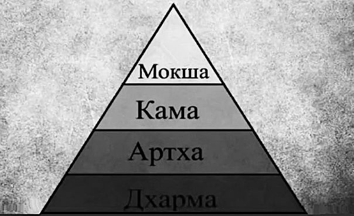
Первый аспект человеческой жизни – дхарма. Это слово очень ёмкое. Дхарма – это то, что нельзя оставить или изменить. Это то, что присуще объекту.
Дхарма означает:
- естественное занятие,
- закон,
- справедливость,
- религия,
- заповедь,
- ограничения и предписания,
- предписанное занятие,
- ответственность,
- долг,
- обязательство,
- свойство,
- качество,
- естество,
- вера,
- высшая цель,
- природа,
- суть,
- предназначение,
- характеристика,
- признак,
- изначальное положение,
- изначальная природа,
- естественное природное свойство,
- то, от чего невозможно избавиться,
- то, что нельзя отвергнуть,
- неотъемлемое, существенное свойство объекта,
- законы, данные Богом,
- покорность Богу,
- то, что поддерживает,
- путь,
- цель.
«Слово дхарма часто переводят как религия, но этот перевод неточен. На самом деле дхарма – это «то, от чего невозможно избавиться», «неотъемлемое, существенное свойство объекта». Например, тепло – это атрибут огня, поэтому тепло можно назвать дхармой, или природой, огня» ([1] Шримад-Бхагаватам 3.25.11, комментарии).
«Дхар – держать, ма – меня: то, что держит меня. То есть у меня есть: свой срок жизни, способности, склонности, таланты – это всё дхарма, приобретённая мной когда-то. Я не помню. Я родился уже с врождёнными вот этими качествами, природой. Поэтому другое значение дхармы – природа. Природа означает свойство – это главное определение. Понимаете природу – понимаете свойства – понимаете дхарму. Вы не можете действовать против природы: ничего не произойдёт, ничего не получится. То есть есть законы физики, и я могу, опираясь на эти законы, дхарму, что-то делать новое, чего-то достигать. Это физический план, который известен науке. Другое значение слова дхарма – религия, то есть законы Бога – это чистота, аскетизм, милосердие и правдивость» [2].
«Полубогам присуще сияние, а людям – обрядовая деятельность; пространству свойственен звук, а ветру – касание. Зримая форма есть признак светил; воды характеризуются вкусом. Несущая на себе всё живое земля характеризуется запахом. В совершенстве сочетающая гласными и согласными звуками речь характеризуется правдивостью» (Махабхарата Ашвамедхика-парва 43.19-25).
«Дхарма – это чувство, что человек обязан, не должен остаться в долгу из благодарности. Иногда слово «дхарма» переводят как «религия», потому что большинство современных религий представляют из себя свод заповедей: ограничений и предписаний. Дхарма – это встроенный моральный закон внутри нас. Ощущение, что такое хорошо и что такое плохо: убивать не надо, красть не надо, лгать не надо. Жадность – не наша природа, это покрытие, искусственная вещь, приобретённая, ложная природа. А врождённая, вечная природа – это чистота, добро и любовь. И первый шаг к цивилизации – это дхарма: добродетельные, высшие качества в человеке.
- Чувства человека взаимодействуют с материальным миром через восприятие.
- Ум взаимодействует с материальным миром через оценки.
- Разум, интеллект человека взаимодействует с материальным миром через концепции, планы.
- Ложное эго человека взаимодействует с материальным миром через намерения, мотивы.
- Ну а средой взаимодействия чистого сознания души с материальным миром являются нормы морали, или дхарма.
Дхарма – это осознание своего долга. Кому же мы должны? У обычного человека пять долгов:
1) Долг перед родителями. Забота о них. Благодарные родители оставляют наследство.
2) Долг перед предками. Долг перед основателями династий, традиций продолжать династию. Традиция поклонения предкам есть практически у всех народов.
3) Долг перед учителями и мудрецами. Долг не искажать знание. Довольный учитель благословляет верного ученика.
4) Долг перед другими живыми существами. Благотворительность, или хотя бы не совершать ненужного насилия.
5) Долг перед полубогами – повелителями стихий, менеджерами вселенной. Долг совершать благодарственные ритуалы, ягьи. От полубогов зависит гармония природных стихий. Довольные полубоги дают дары природы» [2].
«Согласно Ведам, человек, родившийся в материальном мире, сразу оказывается в долгу перед очень многими. Он в долгу перед полубогами: повелителями Солнца и Луны, царем Индрой, Варуной и другими, – потому что они обеспечивают нас всем необходимым для жизни. Тепло, свет, воду и остальные дары природы мы получаем по милости полубогов. Кроме того, мы в долгу перед своими предками, благодаря которым мы получили материальное тело, собственность, разум и родились в определённом обществе, где нас окружают друзья и любимые. Мы в долгу перед всем обществом с его политическими и социальными структурами, а также перед животными: лошадьми, коровами, ослами, собаками и кошками. Таким образом, у того, кто, родившись в материальном мире, получил тело человека, огромное количество долгов, которые он обязан отдать» ([1] Шримад-Бхагаватам 4.25.40, комментарии).
«Болезни, долги и пожары нужно гасить вовремя, иначе они погубят нас» (Чанакья Пандит).
Неисполнение долга в век Кали сокращает жизнь людей.
Отдача этих пяти видов долга и составляют человеческую культуру.
Если понятие долга рассматривать ещё более широко, то есть долг перед самим собой, перед своей семьёй, перед обществом, перед вселенной и так далее.
И всё это – разные уровни дхармы.
1) Сва-дхарма – моё уникальное предназначение, моя профессия, мой долг, мои обязанности.
«Существует два вида сва-дхармы, или обязанностей, предписанных шастрами[276]. Тот, кто ещё не освободился из материального плена, должен выполнять предписанные ему обязанности, следуя религиозным заповедям, – это поможет ему обрести освобождение. А когда человек обретает освобождение, его обязанности (сва-дхарма) становятся духовными и выходят за рамки материальных, телесных представлений о жизни. Пока брахман[277] или кшатрий[278] находится на уровне телесных представлений, он должен выполнять свои обязанности неукоснительно» ([1] Бхагавад-гита 2.31, комментарии).
2) Варнашрама-дхарма – обязанности в обществе и вселенной.
«Материальный аспект сва-дхармы называется варнашрама-дхармой, которая представляет собой систему общественного устройства, помогающую человеку постичь свою духовную природу. Человеческая цивилизация начинается с варнашрама-дхармы – обязанностей, предписанных человеку в соответствии с гунами природы, влияющими на его тело. Выполняя обязанности, предписанные свыше, какими бы они ни были, человек постепенно прогрессирует и достигает более высокого духовного статуса» ([1] Бхагавад-гита 2.31, комментарии).
3) Санатана-дхарма – вечные обязанности души перед Богом. Для тех, кто понял высший источник, все долги сводятся к одному единственному долгу – санатана-дхарме.
«Объясняя понятие санатана-дхармы, мы должны попытаться понять смысл этого слова (иногда переводимого как «религия»), исходя из значения его санскритского корня. Дхармой называют качество, вечно присущее какому-то объекту. Известно, что тепло и свет являются атрибутами огня; огонь, лишённый тепла и света, – не огонь. Подобно этому, мы должны выявить существенное качество живого существа, неотделимое от него. Это качество должно быть вечно присуще живому существу. Оно-то и составляет его вечную религию.
Когда Санатана Госвами спросил Шри Чайтанью Махапрабху: «кто я?», Господь ответил: «дживера сварупа хоя – кришнера нитья даса», что означает: сварупа, или изначальное положение живого существа, – вечный слуга Бога. Проанализировав это утверждение Господа Чайтаньи, мы увидим, что каждое живое существо постоянно кому-нибудь служит. Одно живое существо всегда служит другим – по-разному, в разных качествах, получая от этого удовольствие. Животные служат людям, как слуги – хозяевам, А служит хозяину Б, Б служит хозяину В, который, в свою очередь, служит хозяину Г, и так далее. Мы видим, как служат друг другу друзья, как мать служит сыну, жена – мужу, муж – жене и так без конца. Продолжив это наблюдение, мы убедимся, что все без исключения живые существа кому-нибудь служат. Политики выносят на суд избирателей свои программы, стремясь убедить их в своей способности служить, а избиратели отдают им свои голоса в надежде на то, что политики будут хорошо служить обществу. Продавец служит покупателю, а рабочий – капиталисту. Капиталист служит семье, а семья служит государству. Таким образом, нет ни одного живого существа, которое бы не служило другим, и можно с уверенностью заключить, что служение является вечным атрибутом и вечной религией всех живых существ» ([1] Бхагавад-гита Введение).
Дхарма всех живых существ состоит в удовлетворении своих потребностей есть, спать, совокупляться и обороняться. А у человека, в отличии от всех остальных живых существ, есть ещё дополнительная особая дхарма – служить. Но разные люди выбирают себе разных господ для служения. Кто-то служит Богу, а кто-то – самому себе, что равносильно служению иллюзии. Никто не может сам придумать себе дхарму. Дхарма – это закон, который даёт сам Бог в ведических писаниях.
Таким образом, в общем смысле дхарма – это закон. В ведическом обществе разные сословия людей подчиняются разным законам. В нашем современном обществе в связи с отсутствием чётких сословий всё намного примитивнее: закон один универсальный для всех людей.
В любом обществе в любые времена дхарма является высшим законом. Но в Кали-югу происходит подмена понятий. Так,
- человеческая справедливость ниже дхармы,
- а ещё ниже закон мести,
- а ещё ниже – когда каждый сам за себя, закон естественного отбора.
Это самая низкая форма отношений, которая нашла сегодня прибежище в теории Дарвина и убедила людей, что выживает сильнейший. Следствием этой философии естественного отбора являются непрерывные войны, создание оружия массового поражения.
Дхарма – это всегда ответственность, риск. Никто на сто процентов не уверен, сможет ли он выполнить свой долг.
Четырьмя опорами дхармы являются:
1) аскетизм,
2) милосердие,
3) чистота
4) и правдивость.
В век Кали первые три опоры дхармы отсутствуют. Современные люди не способны к аскезам. Для большинства даже утром рано встать большая проблема.
Милосердие в век Кали тоже практически исчезло. Люди очень чёрствые, не восприимчивые к страданиям других. Каждый сам за себя. В войнах ежедневно гибнет огромное количество людей.
О чистоте в современном обществе тоже говорить не приходится. Хотя внешне может казаться всё чистеньким, чинным и благородным: покошенные газоны, сверкающие фасады небоскрёбов, выложенные гранитом набережные. А за внешним лоском скрывается суровая правда жизни. Внутри этих внешне привлекательных офисных зданий происходит жесточайшая эксплуатация одних людей другими.
Остаётся только правдивость. На различных тренингах часто можно увидеть такую сцену. Человек публично делится своими греховными гнусными поступками и делами. И люди ему аплодируют, практически прославляют его за грехи, про которые он рассказал честно. Это иллюстрирует, что в современном обществе, в начале Кали-юги, правдивость всё ещё остаётся в почёте.
«Но сейчас в обществе мы всё больше и больше не доверяем друг другу. Сколько вокруг документов и подписей. «Как фамилия? Покажи документы!» В документы смотрит: «Как зовут, как фамилия? Говори!» Совпадёт или не совпадёт? И фотография ещё есть. А зачем? Вот есть само лицо. Вы скажете правду, и всё. Не надо печатей, документов. Раньше такого никогда не было. А сейчас мы жить без этого не можем, потому что все лгут, даже без необходимости. В Ведах написано, что из всех живых существ человек – единственное существо, которое умеет лгать. Оно лжёт сознательно, иногда просто по привычке, для развлечения. Это называется адхарма, путь безбожия, ложь. Обмануть других, обмануть даже себя – приятное дело. Я могу обмануть себя, скажу: «души нет», и живи спокойно, ешь, пей, веселись, принимай наркотики. Я могу оправдать свою бездушную жизнь какой-то ложной философией, и она мне выгодна. Если я живу греховной жизнью, разве я приму закон кармы? Вообще мне выгодно тогда принимать Бога, который карающий судья? Да нет, мне не выгодно принимать вашего Бога.
Люди, промышляющие насилием, киллеры испытывали сильный страх, когда слышали о законах кармы в 1990-е годы в России.
Адхарма – это когда ради собственной выгоды отказываются от истины, от дхармы, от закона Всевышнего, фортуны. «Я сам себе фортуна, сам решаю, как добывать себе счастье». И в итоге каждый сам за себя. Это характеристика нынешнего времени. Нам очень трудно помогать друг другу в это время. Даже родственникам. Дети думают: «Пускай пенсию платит тебе государство. У нас своя жизнь теперь. Каждый сам за себя» [2].
Дхарма – это также предназначение в этой жизни каждого человека. Дхарма – это то, что человек готов делать даже бесплатно. Он получает от своей любимой деятельности моральное удовлетворение, которое дороже денег.
Осознание своей дхармы поможет расставить приоритеты в жизни, обрести другие цели, научиться рационально использовать свою энергию, правильно и взвешенно принимать решения.
Дхарма учит нас
- аскетизму,
- чистоте,
- милосердию
- и правдивости.
Следуя этим путём, человек легче преодолевает препятствия на своём жизненном пути. В противном случае он начинает чувствовать себя ненужным, опустошённым, оценивать своё бытие как бессмысленное. Так возникают пагубные пристрастия к алкоголю, наркотикам и так далее.
В более широком смысле дхарму называют вселенским законом. Именно на этом законе и держится весь мир.
Основные принципы дхармы:
- правильное видение, восприятие реальности;
- правильный мотив;
- правильная речь;
- правильные действия;
- правильный образ жизни;
- правильные усилия;
- правильная концентрация, способность отличать главное от второстепенного;
- правильное сознание, полная картина мира.
Нельзя забывать, что дхарма нужна человеку, а не человек нужен дхарме. В Ведах описаны примеры злоупотребления дхармой. Чтобы исключить неправильное понимание концепции дхармы, настоятельно рекомендуется подробное изучение этого предмета под руководством истинного духовного учителя.
Если мы защищаем дхарму, то дхарма защищает нас. Что это значит? Исполняя свой долг, вы станете сильным, устойчивым к переменам между счастьем и несчастьем в этом изменчивом мире. Ведь здесь чередование счастья и несчастья подобны смене зимы и лета. Поглощённость, занятость исполнением своего долга защитит вас от ненужных лишних беспокойств.
Для примера мой духовный учитель приводит историю, как матрос, впервые вышедший в море, попал в сильнейший шторм. Он испытывал животный страх и привязал себя к мачте и просто сидел и молился, пока кто-то из команды не пнул его и не сказал: «Хватит сидеть, помогай!» Этот молодой матрос тогда заметил, что все заняты исполнением своих обязанностей, и никто не боится. Тогда он, пересилив свой страх, отвязался от мачты и начал тоже помогать команде. Таким образом, его страх был поглощён занятостью исполнением своего долга. Так дхарма защищает того, кто защищает дхарму.
Следовать дхарме – это прежде всего защищать:
- женщин,
- детей,
- стариков,
- брахманов
- и коров.
Если мы защищаем женщин, то они горы за нас свернут. Например, самая влиятельная сила в этом мире – это голос матери. Насколько влиятелен комитет солдатских матерей. Когда вы защищаете женщин, вы освобождаетесь от вожделения. Надо только помнить, что забота – это не вожделение. Для того, чтобы так действовать, защищать женщин без вожделения, надо ко всем женщинам, кроме жены, относиться как к матерям.
Когда мы защищаем детей – мы защищаем своё будущее. Ведь дети – это наше будущее поколение.
Когда мы защищаем стариков, они нас благословят, у нас не будет никаких сомнений в выбранном пути. Благословение – это величайшая сила, очень недооценённая в современном обществе. Так же, как и обратная сторона этой силы – проклятие.
Когда общество защищает брахманов, будет распространяться знание, чистота и всё остальное, способствующее процветанию общества.
Ну а защита коров – это самое сокровенное и эффективное средство защиты дхармы. Корова в духовном мире – это Сурабхи – существо, исполняющее все желания. Здесь, в нашем мире, человеческом обществе, корова тоже способна исполнять все желания. Ведь корова является носителем гуны благости. А благость – это и есть материальное счастье. Знание о том, каким образом корова может исполнять все желания человека, содержится в Ведах, просто в современном обществе оно предано забвению.
Таким образом, защищая дхарму, мы получаем во сто крат больше, чем вкладываем. Так работает принцип синергии – взаимовыгодного сотрудничества.
«Когда работает природа человека (дхарма), тогда он достигает успеха. На уровне ума, умозрительно, природа не работает. Надо действовать. Кришна в Бхагавад-гите Арджуне говорит: «Сражайся и думай обо Мне; не думай об успехе, неуспехе, что хорошо, что плохо, кто враг, кто друг, просто думай обо Мне и сражайся». И природа сама работает. А природа всегда успешна. Не важно: побеждаешь ты, или ты побеждённый. Ты достигаешь успеха» [2].
«Дхарма – то, что поддерживает существование. Дхар значит держать. Всё мироздание держится на дхарме. Всё вокруг есть дхарма. Самое ёмкое понятие в философии Вед. Вмещает всё абсолютно: любое живое существо, любое явление, любой предмет – всё это одним словом называется – дхарма. И нужно понимать законы дхармы. С чем бы ты ни встречался, в какой бы ситуации ни оказывался – это твоя дхарма, это твой путь. Дхарма. Если всё свести к этому моменту, к этому контексту, то единственное, что нужно знать, – это свои обязанности. Всегда, где бы мы ни находились, мы должны понимать: зачем мы здесь, что мы должны делать, с какой целью. Всегда есть какая-то высшая цель. Если наша жизнь превращается в бессмыслицу, – мы забыли дхарму: «Зачем я с этим человеком? Зачем я здесь работаю? Зачем я вообще здесь живу – в этом городе и в этой квартире? Надоело мне всё это». Это называется адхарма. Значит человек живёт по собственной прихоти. И душа его истощается. Как отломанная ветвь дерева: вы её бросьте, и она высохнет. Всё, она больше не будет цвести. Она постепенно станет сухой. И так постепенно эта жизнь становится привычной. Уже надоело. «Может поехать куда-то за границу? А может на Венеру? Давайте на Луну слетаем?» Миллиарды долларов тратим. И летим туда, и камни привозим оттуда. Такие вещи происходят просто оттого, что человек здесь не находит своего места. Подлинного места. Подлинного счастья. Почему столько людей не могут найти себя. Потому что нет единственно важной деятельности для них.
Всё, что имеете, предложите Богу – вот что нужно сделать. Освободитесь от чувства собственности. Имейте это, но не претендуйте на собственность в этом мире. И душа становится свободной» [2].
Нам в современных условиях очень трудно жить в соответствии с дхармой.
«У нас очень незначительный запас благочестия. Безденежье, неудачи в личной жизни, несчастья, постоянные ежедневные тревоги. С ума сойти можно. Всё это означает, что недостаток гуны благости. Но как? Я – искра в этой мокрой среде. Я пытаюсь жить в гуне благости, но эта среда не даст разгореться. Конфликты в семье, на работе. Нет возможности у меня. Так как же развивать всё-таки гуну благости? В Ведах говорится: исполняй свои обязанности! Каждый. Для этого, конечно, нужно избавиться от зависти, конкуренции, сравнения друг друга» [2].
Бог в Бхагавад-гита аж два раза говорит, что очень опасно выполнять чужие обязанности, даже совершенным образом:
«Гораздо лучше выполнять собственные обязанности, пусть даже несовершенным образом, чем безукоризненно выполнять чужие. Лучше встретить смерть, исполняя свой долг, чем пытаться исполнять чужой, потому что идти путём, предназначенным для других, опасно» ([1] Бхагавад-гита 3.35).
«Лучше исполнять свои обязанности, пусть несовершенным образом, чем безукоризненно исполнять чужие. Выполняя предписанные обязанности, отвечающие его природе, человек никогда не навлекает на себя греха» ([1] Бхагавад-гита 18.47).
Опасность состоит в том, что это неизбежно приведёт к деградации и последующему разочарованию. Выполнение чужих обязанностей – это прогресс зависти. Чужие обязанности выполнять – это и есть проявление зависти. Это не тот путь. Быть честным перед собой – вот в чём основа счастья. Нельзя изменять себе, предавать свою природу. «Кто я есть, я этим и буду». Зачем мне притворяться кем-то другим ради престижа, обманывать себя и других? Бога не обманешь. Такого обманщика ждёт разочарование. Лучше испытывать неудачу и позор, выполняя свои обязанности, чем иметь так называемый успех в выполнении чужих обязанностей.
2. Артха
Артха – это всё благоприятное:
- благоприятные качества,
- процветающая сила природы,
- материальное процветание,
- благосостояние,
- богатство,
- изобилие,
- красота,
- здоровье,
- благополучие,
- хорошая пища,
- удобная одежда,
- чистый воздух,
- удобное жилище,
- райский климат.
«Артха является следствием дхармы, которое вытекает из дхармы, выполнения долга, без естественных усилий, автоматически. Не верите? Если мы все будем честно трудиться, автоматически будет развиваться экономика. Артха – это материальный прогресс. Истинный прогресс материальной природы – это когда природа сама всё даёт человеку, а не когда человек пытается выжать из природы всё до капли. Так называемый научно-технический прогресс – это на самом деле деградация. Настоящий прогресс – это когда люди могут управлять обществом естественно, без насилия. Самое благородное занятие – обрабатывать землю, понимать землю, выращивать на земле овощи, фрукты, а не закатывать землю в асфальт. Прогресс должен касаться жизни, души, а не технологии.
А нежелательная вещь называется анартха. Это какие-то пороки, недостатки. Например, жадность, зависть. А доброта – артха. На доброте, благотворительности строится процветание. Когда жадность в обществе достигает критического уровня, начинается экономический кризис» [2].
«К сожалению, люди этого века отвергли дхарму и отдают все свои силы экономическому развитию. Ради денег они готовы на всё. Для обеспечения своего благосостояния вовсе не обязательно зарабатывать как можно больше денег, не гнушаясь никакими способами; человеку нужно всего-навсего столько денег, сколько необходимо для поддержания тела и души. Однако, поскольку в наше время экономическое развитие не опирается на дхарму, люди стали похотливыми, скупыми и жадными до денег. Они развивают в себе только качества раджаса (страсти) и тамаса (невежества), пренебрегая третьим качеством природы, саттвой (благостью), и всеми брахманскими качествами. Поэтому в обществе царит хаос» ([1] Чайтанья-чаритамрита 1.9.42, комментарии).
«Артха ещё означает суть, смысл. Зачем это богатство, наследство, как его правильно тратить? Благочестие человека измеряется не количеством заработанных денег, а как он их тратит, не сколько имеет, а как расходует.
Деньги – это суть материальной жизни. Как вы относитесь к деньгам, так к жизни и относитесь.
Деньги – это тайна, мы их прячем, потому что они предназначены для развития глубинных божественных отношений, для духовного развития.
Не к деньгам надо стремиться, а к квалификации, дхарме. Если есть квалификация, то деньги автоматически приложатся. Найти хорошего врача, художника, психолога сложно. Его́ ищут, а не о́н ищет работу. Всё определяет квалификация, не деньги.
Деньги – хороший слуга, но плохой хозяин. «Не имей сто рублей, а имей сто друзей».
Дхарма питает артху – вторую цель человеческой жизни.
Артха без дхармы – это
- обман,
- коррупция,
- растрата,
- взятка,
- мошенничество,
- вымогательство,
- получение артхи незаконным образом.
Сюда относятся также
- азартные игры,
- финансовые пирамиды,
- кредиты,
- чёрная магия.
Сейчас люди не очень любят богатых людей. Они понимают, что они скорее всего нечестные. Это стало обычным явлением. Богатый – значит нечестный. Честный – значит бедный. Это издержки Кали-юги» [2].
«Не нужно совершать специальных усилий и ломать голову, как поднять экономику, как избежать кризисов. Кризис – это хорошо организованный приступ жадности в обществе. Он настолько хорошо организован, что не все даже понимают, откуда этот кризис, как это случается. Кризис – это неправильное распределение собственности. У кого-то слишком много, у кого-то слишком мало, вот и всё. Вот и весь кризис. Значит, кто-то живёт нечестно, не по закону дхармы, не по закону религии. Так мы теряем душу, теряем любовь, теряем дхарму. А значит, экономика не может быть развита в таких условиях. Это уже называется не экономика, а конкуренция, экономические войны. Это не приносит счастья и развития экономики. Только всё больше и больше привносит различие между людьми: кто выше, кто богаче, кто беднее, кто престижнее. Это вызывает много зависти, неудовлетворения, раздражения в обществе и безверия. Но если мы идём путём дхармы, экономика сама развивается. Потому что есть забота, есть благотворительность. Это добро. Мы помогаем тем, кому нужна помощь: больным, детям, женщинам, старикам. Мы же должны понимать, что мы – одна семья. А как же к счастью прийти? За счёт кого-то не получится. Что посеешь, то и пожнёшь. Тебя потом тоже используют, разрушит время, законы природы, фортуна не улыбнётся тебе. Не рой яму другому, сам ведь попадёшь туда. Люди должны иметь образование в этом плане. То есть будет дом, пища, но человек не будет даже думать об этом. Думать он будет о Боге. Остальное всё прийдёт само по себе в результате дхармы – исполнения своих обязанностей: религиозных, материальных, экономических, семейных и многих других. Из дхармы вырастает экономическое процветание» [2].
«Экономика, артха – это не только деньги. Артха – это суть, зачем деньги. Деньги – хорошо. Но ещё лучше знать, зачем. Деньги не даются в руки тому, кто не знает зачем они ему нужны, в чём их предназначение. Он злоупотребит этими деньгами. Вы же детям большие деньги не даёте. Мало ли что он на эти деньги может купить? Соблазн большой, он ещё чувства не контролирует, незрелый. Деньги, как оружие, не дают в руки незрелым людям.
Как вы к деньгам относитесь, так же и к жизни относитесь. Если вы прячете эти деньги, скрываете эти деньги, вы так и проживёте скрытно, в неведении и бесславии. Бесполезная жизнь называется. И умрёте – никто даже не вспомнит потом через короткое время. А если мы эти деньги приобрели нечестным способом и оставили своим потомкам, по закону кармы они их прокутят, они не пойдут им в толк. Это называется бесполезный труд. Потому что нужно ещё понять высший смысл, зачем ты получаешь эти деньги, зачем ты передаёшь это наследство? Не забывайте о дхарме. Не теряйте голову, когда видите деньги. Не забывайте о сути жизни, о предназначении жизни.
Артха – это покупательная способность. То, что можно приобрести за деньги. Буквальное значение: «всё необходимое».
Артха – это материальная сторона жизненного пути, вобравшая в себя все аспекты благосостояния, чувства безопасности, здоровья и прочие составляющие, которые обеспечивают достойный уровень жизни. Деньги служат этому счастью, но не являются счастьем сами по себе. Это слуга, это средство. Как кровь в теле, они обеспечивают жизненной энергией это тело. Но жизнь – это что-то другое, что-то более высокое, это путь к счастью» [2].
Люди думают, что деньги – это просто материя. Но на самом деле деньги получить можно только с позволения высших сил. Там, где дхарма, там и артха. Оторвать артху от дхармы – это такое же преступление, как украсть у человека его жену. И наоборот, исполнение дхармы даёт артху. Артха – плод дхармы.
«Брак – это артха. Там есть смысл, там есть династии, там есть потомство, рождённое от плоти и крови и также от моего тонкого тела. Чтобы передать высшие ценности, нужно иметь хороший плод, хорошее потомство. Вот что такое брак. А сейчас что ни форма секса, то брак. Это не брак. Это просто чувственные наслаждения. Брак – это священный союз» [2].
Истинная артха – это:
- крепкое здоровье;
- чистая среда обитания;
- чистая вода
- и воздух;
- здоровые продукты питания;
- хорошие отношения;
- гармония с природой.
Именно это мы и хотим купить на деньги. Изначально, в ведические времена это всё было у людей, до начала резкого развития так называемого научно-технического прогресса.
Принципы артхи:
- не противоречить дхарме;
- без сверхусилий;
- без вреда для здоровья;
- без ухудшения отношений;
- в правильное время суток;
- правильно тратить
- и распределять деньги;
- в этих пределах быть счастливым.
Артха-шастры – это ведические тексты, целью которых является упорядочение повседневной человеческой жизни, распределение ролей. В них обсуждаются следующие темы:
- развитие экономики;
- царские обязанности;
- министры, их обязанности и качество;
- городская и деревенская структуры;
- налоговые сборы;
- законы, их обсуждения и утверждение;
- обучение шпионов;
- война;
- мир;
- защита граждан;
- и многие другие вопросы.
3. Кама
Если дхарма – это корень, артха – это плод, то кама – это наслаждение плодом. Когда человек обретает экономическое развитие, и всё доступно, можно наслаждаться жизнью.
«Когда насущные потребности тела удовлетворены, в человеке само собой просыпается желание чувственных удовольствий» ([1] Бхагавад-гита 4.31, комментарии).
Третий аспект человеческой жизни – кама – исполнение желаний и наслаждение органов чувств. Как наслаждаются органы чувств? Слух связан с первоэлементом пространства и способностью воспринимать звуки. Осязание связано с первоэлементом воздуха и с кожей и волосками на ней. Зрение связано с первоэлементом огня и способностью видеть свет и формы. Вкус связан с первоэлементом воды и языком. И обоняние связано с первоэлементом земли и чувствованием запахов.
Самое тонкое наслаждение – это наслаждение звуком. Также мы наслаждаемся красивыми образами, приятными прикосновениями, вкусной пищей и приятными ароматами.
Другие примеры камы – это сексуальное желание, комфорт, эмоциональные потребности.
Однако удовлетворять свои материальные желания надлежит, соблюдая нормы:
- семейные,
- общественные,
- культурные
- и религиозные.
Принципы камы:
- кама не должна выходить за пределы артхи (не жить в долг);
- кама не должна противоречить дхарме, морали, чтобы мы не деградировали.
Тогда кама постепенно подводит к мокше, идее освобождения.
Веды сравнивают органы чувств с ядовитыми змеями, настолько они опасны. Поэтому, чтобы они не вышли из-под контроля, надо соблюдать следующие рекомендации:
- здоровое, правильное питание;
- полноценный сон;
- минимально необходимый комфорт;
- духовная практика
- и общение.
Надо соблюдать во всём меру и не переступать границу необходимого.
Кама шастры – это ведическое учение о наслаждениях. Основная цель таких учений – привести к упорядочению чувственных наслаждений в супружеском союзе, напоминая паре о необходимости соблюдать обязанности и искать наслаждения в духовной сфере.
Кама шастры обсуждают науки, различные искусства. Вот некоторые из них:
- танец;
- пение;
- театр;
- музыка;
- архитектура;
- гимнастика;
- гигиена;
- скульптура;
- макияж;
- поэзия;
- умение организовывать праздники
- и многое другое.
Кама шастры учат:
- как зачинать
- и воспитывать детей,
- как обустраивать своё жилище,
- какую одежду носить женщине,
- какие использовать ароматы, –
всему тому, что нужно делать жене, чтобы угодить мужу.
«Сейчас слово кама понимают извращённо: как кама-сутру, какие-то сексуальные извращённые наслаждения. Какой-то глупец таким образом всему миру представил каму. В ведических писания вы нигде не найдёте разврата. Не об этом там речь идёт. Кама – это возвышение, сублимация, сексуальной энергии до духовной, трансформация, очищение вверх, к божественной любви. А путь вниз, испускание семени в чужих жён – это путь к животному существованию. Это извращённая кама, разврат называется. Это запрещено во всех священных писаниях» [2].
В священных писаниях никогда не поощряются прелюбодеяния. Например, однополые отношения нельзя называть браком. В советское время за это просто-напросто сажали в тюрьму: статья называлась мужеложество.
Высшее проявление камы – это наслаждение для самого тонкого уровня сознания – для ложного эго – это когда человек
- обретает славу,
- доброе имя,
- альтруизм,
- гуманизм.
«Кама – это доброе имя. А как оно заслуживается? Жертвой. Ты живёшь, жертвуя собой. Семейный человек приглашает гостей в свой дом. Семейному человеку вообще ведическими писаниями предписано никогда не есть в одиночестве. Приготовили обед, собрались есть, не спешите. Выходите на улицу, и громко, не шёпотом, говорите: «Кто голоден? Будь гостем, заходи!» Люди сначала шарахнутся от вас подальше, конечно. Поэтому вы второй раз должны сказать то же самое, но более приветливо» [2].
«Вся наша человеческая жизнь – это чистилище, освобождение от эгоизма. Муж освобождает жену от эгоизма, а жена – мужа. Разводиться не надо, пока не освободитесь от эгоизма. А вот когда освободитесь от эгоизма, исчерпаются отношения, ваша любовь поднимется выше, тогда не важно, вместе вы или не вместе. В сердце вы уже едины. Уже не важно будет физическое присутствие. Есть даже такая любовь, где не требуется физического присутствия. Называется божественная любовь, где души объединяются. Предназначение брака – с животного достичь божественного уровня отношений» [2].
4. Мокша
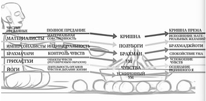
Стремление к освобождению является естественным следствием чрезмерного потворствования чувственным удовольствиям.
«Когда люди доходят до кульминации, обретают великий комфорт (для этого, конечно, нужны деньги, источники энергии, новые технологии, это всё дорого стóит в нашем земном измерении), если кому-то удаётся достичь такого комфорта, он не знает, что делать с собственным умом и органами чувств – они продолжают не успокаиваться. Человек не понимает, что же теперь делать, когда всё необходимое уже есть. Почему приходит раздражение? Почему возникают какие-то неурядицы и конфликты? Всё у людей есть: и такие технологии, которых раньше не было, и такие условия, которых раньше не было, столько достижений науки в услугах людей, такого раньше не было. И всё же люди не находят умиротворения. И возникает вопрос: как же жить с самим собой? Как же всё-таки обуздать неудовлетворённые ум и органы чувств? Как сделать их удовлетворёнными? Есть ли какой-то способ?» [2].
И когда человек исчерпал уже все эти самые возвышенные наслаждения в этом мире, достиг всего, когда человеку благодаря дхарме и артхе, то есть полученному благочестивым способом материальному благополучию становятся доступны любые наслаждения, он тогда задумывается о четвёртой высшей ступени – мокше, освобождении.
Тот, кто исчерпал весь свой запас материального счастья, становится ищущим Абсолютную Истину. Ещё выше подняться. Душа не удовлетворится никаким материальным счастьем, даже если получит всю планету.
И цель этого освобождения – освободиться от пороков, от невежества, стать личностью, восстановить свои личные взаимоотношения с Богом.
«Неразумные лидеры общества, поглощённые только заботой о собственном материальном благополучии, необоснованно гордятся своим высоким положением, однако этим лидерам абсолютно неведома духовная ценность человеческой жизни. Ослеплённые иллюзией, они строят планы на обозримое будущее, но это никого не делает счастливее, ибо они не могут избавить людей от тройственных страданий, которые причиняет им материальная природа. Никакими усилиями невозможно повлиять на законы природы. В конце концов человек неизменно подчинится главному её закону – закону смерти. Смерть, рождение, старость и болезни – таковы симптомы недуга души. И потому высшая цель человеческой жизни – избавиться от этой болезни и вернуться домой, к Богу» ([1] Чайтанья-чаритамрита 1.5.20, комментарии).
Итак, четвёртый аспект человеческой жизни – мокша – освобождение души. Душа не может быть счастлива от трёх первых аспектов, так как они не соответствуют её вечной природе. Поэтому душа всегда будет искать что-то запредельное, не от мира сего, потому что она сама принадлежит к высшей природе.
«Свобода – это высшая ценность для души. И поэтому люди требуют свободы слова, свободы совести, свободы собраний, свободы передвижений, свободы печати. Они хотят освободиться от болезней, старости и смерти, хотят преодолеть гравитацию» [2].
Под освобождением можно понимать достижение такого уровня духовного совершенства, при котором человек становится невозмутим и умиротворён, у него расцветает истинное творчество.
Границей свободы человека, достигшего мокши, является только дхарма.
Ещё под освобождением понимают возможность выбрать условия своей следующей жизни после смерти этого тела.
Ну и самый высший смысл понятия освобождения – это освобождение от безысходности, от бесконечного круговорота смерти и рождения, выход за пределы колеса самсары.
Смерть, выход из тела – это ещё не мокша, так как связь с телом через желания ещё остаётся. Поэтому достижение мокши невозможно без духовного знания и духовных усилий.
«Гуру никогда не должен обуславливать ученика. Это возможно, если это не духовный учитель: те же самые принципы, те же стандарты, та же садхана бхакти – если мы получаем не от духовного учителя, это обусловит нас. Это проповедь такого рода обычно: «Не сделаешь – в ад пойдёшь!», если коротко сказать. И человек обуславливается страхом. Но духовный учитель не должен обуславливать ученика наставлениями, а должен сделать наставления привлекательными, вложить туда Кришну. Это свобода выбора ученика должна быть. А не то, что в ад пойдёшь, если ты это не сделаешь, и будешь страдать вечно. Иногда так тоже говорят, но это не ключевой, не главный момент. Главный момент – что есть в этом привлекательность, в наставлениях есть нектар наставлений, и там есть Кришна. И поэтому это мой выбор. И вот это – сильно. Реальную силу имеет только наш свободный выбор. Если говорить о духовной жизни – она абсолютно должна быть свободна.
Если даже ученик ошибается, спотыкается, где-то падает, гуру просто вдохновляет его дальше, он просто ведёт его дальше, он даёт ему какие-то духовные силы, всегда даёт ему надежду, всегда вселяет в него веру. Он не должен его обуславливать. Это не должно быть какой-то очередной религией или каким-то очередным философским трактатом, который контролирует нашу идеологию, наш разум.
Сам человек должен себя контролировать. Ни силовые структуры, ни кто-то стоящий над душой, следящий, что ты делаешь, что не делаешь, как делаешь, и наказывающий нас постоянно. Нет, это должен быть наш свободный выбор» [2].
«Существует пять видов освобождения:
1) получить доступ на планету, где обитает Господь,
2) получить возможность общаться с Господом,
3) обрести трансцендентное тело, подобное телу Господа,
4) обрести такие же богатства, как у Господа,
5) и раствориться в бытии Господа»
([1] Учение Шри Чайтаньи 26).
В Шримад-Бхагаватам приводятся признаки человека, который обрёл освобождение, ещё находясь в материальном теле (дживан-мукты):
«1) Первый признак такого человека заключается в том, что он полностью перестал грешить (апахата-папа). Люди, находящиеся во власти майи, материальной энергии, не могут не грешить. В Бхагавад-гите Кришна называет их словом душкртинах: это значит, что они постоянно грешат. Тот, кто ещё при жизни обрёл освобождение, не совершает вообще никаких грехов. Основные грехи – это вступать в недозволенные половые отношения, есть мясо, употреблять одурманивающие вещества, участвовать в азартных играх.
2) Второй признак называется виджара: достигший освобождения не подвержен мукам старости.
3) Третий признак – вимритью. Дживан-мукта действует так, чтобы никогда больше не получать бренное, обречённое на смерть материальное тело. Иными словами, он больше не попадает в круговорот рождения и смерти.
4) Четвёртый признак – вишока: такой человек равнодушен к материальному горю и счастью.
5) Пятый признак – виджигхатса: такая душа уже не ищет материальных наслаждений.
6) Шестой признак называется апипата: у дживан-мукты нет никаких желаний, кроме желания преданно служить единственному объекту своей любви, Господу Кришне.
7) Седьмой признак – сатья-кама: все желания такого человека направлены на Высшую Истину, Кришну.
8) И наконец, восьмой признак – сатья-санкалпа: по милости Кришны все желания такого человека исполняются. Материальных желаний у него, разумеется, нет. Единственное, чего он желает, – это служить Верховному Господу, и Господь по Своей милости исполняет это желание. Вот что значит сатья-санкалпа»
([1] Шримад-Бхагаватам 5.4.5, комментарии).
У нас есть три слоя материального тела:
1) стхула-шарира – грубое тело,
2) линга-шарира – тонкое тело,
3) карана-шарира – ложное эго.
После смерти только грубое тело уничтожается. Тонкое тело сохраняется. Чтобы обрести освобождение, нужно избавиться также от тонкого материального тела. Но карана-шарира ещё тоньше, чем линга-шарира. Это самое тонкое отождествление. Оно остаётся до тех пор, пока человек не предаётся Богу. Большинство духовных людей, трансценденталистов достигают освобождения от тонкого тела. Но пока они не обретут своё духовное тело, соответствующее своим личным вечным взаимоотношениям с Богом, освобождение будет не полным.
Взаимосвязь между четырьмя целями человеческой жизни состоит в том, что дхарма – основа всего, артха и кама – потребности тела, мокша – потребность души. Таким образом, артха и кама должны быть основаны на дхарме и вести к мокше. В современном человеческом обществе люди просто хотят по-быстрому заработать деньги (артха) и потратить их (кама). Но так как этот процесс не питается дхармой и не доходит до мокши, происходит просто деградация людей. Веды дают нам уникальную комплексную модель, которая даёт нам возможность использовать материальные желания в интересах духовного развития и духовных желаний. Целостное понимание устраняет кажущееся противоречие между духом и материей.
«Чтобы защитить наше общество от вожделения, конкуренции и вражды, нужна дхарма. Дхарма определяет артху. Артха даёт нам возможность нравственно наслаждаться жизнью, заработать репутацию и доброе имя, славу. И когда мы достигаем этого, у нас возникает желание отречения. Почему? Это кама поднимает нас на божественный уровень любви, ещё выше. Есть чистая кама, есть похоть, а есть любовь. Они где-то близко соединяются, как-то они связаны. И чем меньше любви, тем больше камы, чем меньше камы, тем больше любви. Эта энергия всегда у нас присутствует. Любовь дремлет в сердце каждого живого существа. Причём сильный-сильный поток любви. Вот если мы освободим эту энергию, мы сможем ощутить счастье» [2].
«Человек может по отдельности мыслить себе и дхарму, и артху, и каму, но он не должен посвящать себя исключительно дхарме, исключительно артхе или же только каме – пусть всегда служит он всем этим целям. Пусть
- на заре посвятит себя дхарме,
- в полдень – богатству,
- в конце дня – каме,
пусть так проводит свой день; таково установление Вед.
И пусть он
- в юности посвятит себя каме,
- в зрелости – артхе,
- в старости – дхарме;
так пусть живет согласно установлению Вед» (Махабхарата Араньяка-парва 34.35-41).
«Моя тётя молилась ночью в церкви перед одной иконой знаменитой исцеляющей. Эта икона путешествовала по всем городам. И она исцелилась от своей неизлечимой болезни. До сих пор у неё симптомов нет. Очень сильно страдала она этой болезнью, были страшные головные боли, приступы всю жизнь, сколько я её помню с детства. И за одну ночь она исцелилась. Я говорю:
– Как? Что ты чувствовала?
– Я чувствовала, что я вошла в храм и почувствовала, что я, наверное, не выстою всю ночь. Зря. Но там, когда все зашли, закрыли двери. Я поняла, что попала в ловушку. Я думаю, как же я могу выдержать, всю ночь стоя, молиться перед иконой? Я испугалась вообще. Вдруг голова заболит у меня, я не досплю, что-то ещё? Всегда были приступы.
Она попала в такое сложное положение, взмолилась не на шутку. Она сказала мне:
– Я не заметила, как прошла ночь. Я не заметила ничего.
– Как не заметила? Сколько прошло времени по-твоему?
– Ну, может быть, полчаса.
За полчаса она помолилась всю ночь, так сказать.
– Потом я пошла домой, легла спать.
– А потом что было?
– Потом я проснулась и почувствовала, что я внутри пустая. С тех пор у меня никогда не болит голова.
– Как пустая?
– Ну вот…
В Ведах описывается расслабление ума. И Господь Чайтанья был таким. Это тоже описывается о Нём. Видели преданные, как Он расслаблялся. Всё это напряжение в уме – это причина всех проблем. Мы о чём-то думаем, о чём не нужно думать. Как подобно привидению: знаете, оно об одном и том же думает, думает, вздыхает, вздыхает, думает, думает. Это вот адское состояние, как говорится. Не может воплотиться. И оно от этих мыслей не может избавиться. И ничего другое оно не может думать, делать, чувствовать. Это жизнь привидения, или мертвеца. И вот современные люди тоже обеспокоены, они думают, думают о деньгах, о женщинах, о чём-то ещё, о личной жизни, о себе, о себе, о том, что плохо, хорошо, плохо. Это подобно мертвецу – говорится.
Нужно расслабление. Отпустить нужно. Нужна мантра. Но чистая мантра, которая может этот ум освободить от этих навязчивых мыслей, которые изнашивают наше тонкое тело, нашу жизнь изнуряют. Как под палящим солнцем – говорится – как пожар: «Подобно тому как облако, проливающее дождь, гасит лесной пожар, духовный учитель гасит пылающий огонь материального существования и спасает людей, охваченных этим пламенем» (Гурваштака). Какой-то дождь должен пролиться, чтобы этот ум успокоился наконец. Конечно, мы устраиваем фестивали для этой цели, чтобы как-то ум расслабить, устранить эти навязчивые идеи хотя бы на какое-то время, почувствовать себя свободным человеком.
И вот когда такая душа является, как Видура, Шрила Прабхупада, Господь Чайтанья приходит Сам, те, кто видел Его, сразу становился преданным. Так описываются характеристики Господа Чайтаньи: умиротворённый санньяси, ничем не обеспокоенный. Кто видел Его, становился таким же.
И когда он становился таким же, он видел, что всё происходит по воле Кришны на самом деле. Зачем напряжения какие-то? Зачем своё ложное эго применять, когда есть Верховная Личность Бога? Он лучше знает. Я просто Его слуга. Он – лучший друг всех живых существ. Я – просто Его слуга. Это очень просто, когда мы встречаем такую личность, как Шрила Прабхупада. Это очень просто почувствовать, познать, осознать и встать на этот путь» [2].
Према
Таким образом, мокша – это избавление от результатов запретной деятельности, всех нарушений законов бытия. Избавление от грехов. Но если не освободиться от скло́нности нарушать вселенский закон, то такое освобождение всё равно будет не окончательным, а временным.
К тому же мокша, освобождение от страданий – это просто доведение уровня жизни до уровня нуля. Здесь не идёт речи о каком-то великом счастье. Просто хотя бы отсутствие страданий. Но подняться выше уровня нуля – это истинное освобождение. Истинное освобождение – это избавление от склонности к запретной деятельности. А избавиться от желания грешить можно только обретя любовь к Богу. Поэтому условно пятым аспектом, истинной целью человеческой жизни можно назвать прему, любовь к Богу.
«Религиозность, богатство, чувственные удовольствия и освобождение люди считают четырьмя целями жизни, но в сравнении с любовью к Богу – пятой и наивысшей целью – первые четыре кажутся ничтожней соломы на дороге.
Когда человек на самом деле обретает любовь к Богу, то счастье, даруемое дхармой, артхой, камой и мокшей, начинает казаться ему всего лишь каплей в сравнении с океаном» ([1] Чайтанья-чаритамрита 1.7.84-85).
Мокша – это когда человек узнал, кем он точно не является: он не является телом (грубым и тонким). Но остаётся вопрос: кем он всё-таки является? Душой. Но этой информации маловато. Души же не все одинаковые, они все разные. И у каждой души есть какие-то свои духовные занятия, дела.
«Кто мы в этом мире? Мы себя отождествляем с каким-то полом, с какой-то национальностью, с какой-то работой, с какими-то проблемами, с начальством на работе, с детьми, с обязанностями, с беспокойствами. Вон сколько всего! Но на самом деле я – душа, частичка Бога. Я не из этого мира. У меня здесь есть долг, обязанности, да, но я – духовное существо. Я не мужчина, не женщина, не рабочий, не доктор, не кто бы то ни был. Я – вечная частичка Бога.
Медитируйте по утрам, поднимайте ум на духовную платформу каждое утро. Забудьте, кто вы в этом мире вообще на это время, и вы будете чувствовать радость. Каждое утро должна быть молитва, медитация. С божественным нужно связывать свои чувства. В течение дня должны работать все. По вечерам – хорошее общение. И утром снова возвышение ума. И так в течение всей жизни мы добиваемся очень больших результатов во всём: и в общении, и в работе, и в самосовершенствовании» [2].
«Будьте терпеливы. Это не сразу достигается. На это уйдёт время. Ежедневная практика. Кто сможет, сам увидит: результат будет хороший. Кто не сможет, делайте что можете. Что-то хорошее каждый может делать: какую-то благотворительность можно совершать по отношению к тем, кто нуждается. Особенно что касается знания: читайте книги, священные писания, читайте ведическую философию, изучайте Бхагавад-гиту. Распространяйте знание. Не религию, никого ни в какие секты не впутывайте. Знания, знания, знания. Бог в сердце человека. А потом идите в любой храм, который вас привлекает, неважно» [2].
«Душа должна вернуться к Богу. В свой изначальный мир, в свою обитель. Это же не наше место здесь. Это не место для джентльменов. Каждую секунду мы ищем какого-то счастья и не находим, как во сне. И всё же долг мы выполним, детей вырастим, много хороших вещей сделаем. Это будет наш путь к Богу. Великий путь. Не напрасная жизнь будет» [2].
«Каждый человек связывает свои надежды с дхармой (религиозностью), артхой (обогащением), камой (чувственными наслаждениями) и в конечном счете с мокшей (освобождением), однако Господь Шри Чайтанья Махапрабху столь милостив, что может даровать нечто большее, чем освобождение.
Хотя по материальным понятиям освобождение ценится намного выше благочестия, материального благополучия и чувственных наслаждений, преданное служение и трансцендентная любовь к Верховной Личности Бога превосходят даже освобождение. Это великий дар Шри Чайтаньи Махапрабху. Он провозгласил: «Любовь к Богу – высшее благо для всех людей»» ([1] Чайтанья-чаритамрита 1.7.1, комментарии).
«Религиозность, богатство, чувственные удовольствия и освобождение люди считают четырьмя целями жизни, но в сравнении с любовью к Богу – пятой и наивысшей целью – первые четыре кажутся ничтожней соломы на дороге» ([1] Чайтанья-чаритамрита 1.7.84).
Варнашрама
Система варн и ашрамов предназначена для политической, экономической и социальной стабильности общества. В таком цивилизованном обществе каждый знает и выполняет свои обязанности в атмосфере взаимоуважения и любви.
Должны быть уравновешены три сферы жизни:
1) закон,
2) долг
3) и отношения.
«Институт варнашрама-дхармы, делящий всех людей в обществе по роду их занятий и социальному статусу на четыре касты и четыре уклада жизни, предназначен для того, чтобы разделить людей не по происхождению, а в соответствии с их качествами и уровнем образования. Это нужно для того, чтобы обеспечить в обществе мир и процветание» ([1] Бхагавад-гита 16.1, комментарии).
Кроме этого, высшим назначением системы варн и ашрамов является создание условий, благоприятных для постепенного духовного развития каждой личности. Цивилизованное человеческое общество опирается на описанные ниже ведические принципы.
«В мире нет иной столь же научно обоснованной религиозной системы, как варнашрама, и достигшие совершенства в соблюдении её заповедей в конце концов начинают использовать всё, что у них есть, для удовлетворения Верховного Господа. Система варнашрамы – это отнюдь не современное изобретение; она естественным образом появляется во время творения, и, следовательно, всем разумным людям надлежит воспользоваться этой системой» ([1] Шримад-Бхагаватам 11.17.9-10, комментарии).
«Неполное знание приводит к разрушениям, конфликтам. Так же как коммунизм и капитализм – это части одного знания. Но разделение на части, и неполнота возникает. Коммунисты говорят: есть такое учение, капиталисты говорят: есть такое учение. И они разрушают друг друга всю жизнь. Неполное знание приводит к конфликтам, противоречиям, разрушениям. В Ведах говорится, что концепция коммунизма исходит из сословия рабочего класса, а концепция капитализма – из сословия торговцев и бизнесменов, а социализм – из класса управленческого, кшатриев. А концепция единства мира исходит из класса брахманов. Это одна система. Называется варнашрама. Это одна и та же система, но у каждого класса есть своя концепция. И если они занимают эту концепцию служению Богу, одному источнику, между ними нет конфликта, зависти нет. Зависть возникает тогда, когда каждый класс работает на себя. Это называется неполное знание. Работай на полное целое, не на себя. Хотя бы осознай полноту общества, в котором ты живёшь. Хоть разные классы, цель одна – духовная. Разницы нет, кто ты в обществе: рабочий, бизнесмен, управляющий или учитель или священник. Если у вас цель одна, будет поддерживаться единство. Но когда каждый класс хочет поддержать себя за счёт другого, это называется эксплуатация. Богатый эксплуатирует бедного, бедный делает революции, сбрасывает эти управляющие классы. Кшатрии развивают оружие, вооружение, организуют войны. А брахманы начинают обманывать различными теориями, чтобы тоже иметь выгоду. Самые умные люди в этом мире – это учёные. И если они не знают ничего о высшей цели, они наносят колоссальный вред людям. Создав теорию эволюции, Дарвин нанёс колоссальный вред в истории мира, самый сильный вред. И создав теорию биологического, химического происхождения жизни, непоправимый ущерб нанесли обществу людей. Люди стали думать, что человек – это сочетание каких-то химических веществ. Они потеряли цену друг другу. И когда в истории впервые в первой мировой войне применили оружие массового поражения, хлор был, травили людей как насекомых на войне, то мир очень сильно возмутился, были протесты: есть же в конце концов этика войны. Мы же не можем просто уничтожать людей? При этом сколько вреда наносится земле, почве, другим живым существам. Оружие массового поражения – кто это придумал? Мир выразил протест. Один генерал успокоил всех, один раз только выступил, опираясь на теорию Дарвина: «Выживает сильнейший, это прогресс. Вы не понимаете, это прогресс науки и техники». Это было научно обосновано. Но это лишь теория, это не наука» [2].
Варны
В Бхагавад-гите (4.13) Бог говорит, что варны установил Он Сам:
«В соответствии с тремя гунами материальной природы и связанной с ними деятельностью, Я разделил человеческое общество на четыре сословия.
1) Первое сословие – это наиболее разумные люди, которые находятся под влиянием гуны благости и называются брахманами.
2) За ними следует сословие правителей, которых на санскрите называют кшатриями; они действуют под влиянием гуны страсти.
3) Представители торгового сословия (вайшьи) находятся под смешанным влиянием гун страсти и невежества,
4) а шудры, или рабочие, – под влиянием гуны невежества».
Бхактиведанта Свами Прабхупада иногда так говорил:
1) брахманы – это пассивный разум, они заняты высшей деятельностью, которая всем остальным кажется бездеятельностью;
2) кшатрии – это активный разум, они заняты деятельностью, которая по крайней мере имеет смысл;
3) вайшьи – это пассивные глупцы, они заняты деятельностью, которая на первый взгляд наполнена смыслом;
4) шудры – это активные глупцы, они могут принести много вреда, если им дать волю.
Варны – это естественные склонности и врождённые способности людей. Это определённый тип психики человека и соответствующая этому типу психики социальная роль. Варна у человека одна на всю жизнь. Варны можно обнаружить в любом обществе. В соответствии со своей природой, человек может быть:
1) учёным или священником,
2) администратором или военным,
3) земледельцем или торговцем,
4) рабочим или ремесленником.
Общество обретает благополучие только тогда, когда люди, принадлежащие к этим классам, сотрудничают друг с другом во имя духовной самореализации.
«В Трета-югу из гигантской вселенской формы Личности Бога появились четыре сословия общества.
1) Из лица Господа возникли брахманы,
2) из рук Господа – кшатрии,
3) из Его бёдер – вайшьи,
4) а из ног – шудры.
Сословия можно отличить друг от друга по характерным для них обязанностям и поведению их представителей» ([1] Шримад-Бхагаватам 11.17.13).
«В Ведах рассматриваются духовные и профессиональные уклады в человеческом обществе. Существует четыре профессиональных уклада в соответствии с природой людей и четыре духовных уклада в соответствии с уровнем знания и отречения человека. Люди все разные. В светском обществе мы пытаемся усреднять законы, и нас привлекает идея равенства. Коммунисты говорили о равенстве, западный мир тоже говорит о равенстве. И люди по-разному это понимают. Но Веды говорят: равенства на материальном уровне не существует. Только на духовном уровне. Поэтому необходим духовный уклад и знание причин материального разнообразия и различий. Надо сбалансировать эти различия между разумными и неразумными, богатыми и небогатыми людьми, нравственными и негодяями. Если просто усреднить зарплату, как это пытались сделать в коммунистические времена, результат не прийдёт, всё равно сохраняется антагонизм, борьба, конкуренция. И Веды объясняют, что это разнообразие материального различия нужно принять. Например, слон ест сорок килограмм пищи за один раз. Синица за сутки съедает около килограмма пищи. Где же равенство? Диктует природа. И им должны быть обеспечены равные права не быть голодными, а не равное количество пищи. И на материальном уровне это можно уравновесить только при помощи отсутствия зависти. Для этого нужен духовный уклад. Невыполнение десятой библейской заповеди – не желай собственности другого человека, то есть не завидуй – корень всех пороков. С отсутствия зависти начинается нравственно-духовная культура.
Один биолог наблюдал, как два шакала едят рядом пищу. В какой-то момент они бросают свои куски и просто свирепо бросаются друг на друга, грызутся серьёзным образом не на жизнь, а на смерть, рвут друг другу уши, плечи, ноги, потом меняются местами и доедают остатки чужой пищи. Оказывается, шакал, когда ест, смотрит на пищу соседа, ему кажется, что эта пища вкуснее. И так они начинают злиться всё больше и больше, и в конце концов нападают друг на друга, меняются местами и доедают.
Был случай, когда соседи, две семьи в коммунальной квартире, общаясь вместе на кухне, менялись тоже партнёрами. Они тоже смотрели друг на друга и завидовали. Всё оставалось на месте, просто двое мужчин менялись местами.
Причина всех разводов, всех серьёзных разногласий – только зависть. Это очень глубокая тонкая энергия. Даже когда женщина делает аборт, она думает о своей свободе: «Ребёнок отнимет у меня эту свободу, он родится не вовремя, отнимет у меня фигуру». Это всё энергия зависти.
Если мы сможем победить зависть в обществе хотя бы на пять процентов, мы не узнаем окружающий мир. Для кого-то он покажется просто раем. Если десять процентов – великие перемены будут. И в семье то же самое, и в личной жизни то же самое. Если нам удастся освободиться хотя бы на пять процентов от зависти, мы проявим удивительные способности и таланты. Они есть у нас. Они как бы покрыты» [2].
«Тех членов общества, которые стремятся достичь совершенства в интеллектуальной или религиозной сфере, называют брахманами, ищущих совершенства в политике – кшатриями, а стремящихся обрести совершенство в финансовой сфере – вайшьями. Тех же, кого интересует лишь еда, сон, секс и честный труд, называют шудрами» ([1] Шримад-Бхагаватам 11.21.6, комментарии).
Господь разделил общество на основе гун[279] и деятельности, а не происхождения. Поэтому это не кастовая система в том смысле, в котором её понимают сейчас, а распределение людей в соответствии с их природными склонностями. Брахман – это человек, обладающий ценностями, образом мышления, качествами и деятельностью
брахмана, а не просто тот, кто родился в брахманической семье. То же касается и остальных варн. К сожалению, со временем общество деградировало, и принадлежность к тому или иному сословию стала определяться исключительно происхождением.
«Неопрятность, лживость, склонность к воровству, безверие, привычка затевать ссоры на пустом месте, похотливость, гневливость и жадность – таковы природные качества тех, кто занимает низшее положение, находясь вне системы варнашрамы.
Ненасилие, правдивость, честность, желание счастья и благополучия для всех живых существ, а также свобода от вожделения, гнева и жадности – таковы обязанности всех членов общества» ([1] Шримад-Бхагаватам 11.17.20-21).
«Брахман поддерживает свою жизнь, изучая Веды и обучая других, члены царских родов – защищая землю, вайшьи – торгуя, а шудры – служа дваждырождённым» ([1] Шримад-Бхагаватам 10.24.20).
«Шудра – это рабочий класс. Это люди, которые не обладают очень острым, глубоким интеллектом. Но они могут трудиться. То есть они могут быть идеальными помощниками в разных областях. И обычно шудру нанимают на работу за деньги. То есть необходимо заботиться об этих людях. Тогда они могут хорошо работать. При этом они склонны обманывать, склонны к интоксикациям. Их нужно контролировать: «Если ты плохо работал, ты не получишь зарплату. Или я тебя вообще уволю с работы» – вот с ними так разговаривают, буквально грубо могут разговаривать.
Вайшья этих людей набирает для работы, платит им какую-то мизерную, максимально низкую зарплату, чтобы они могли как-то жить всё-таки, но максимально низкую зарплату для того, чтобы накапливать собственные богатства. Его богатства превосходят в сотни и тысячи раз любую ежемесячную зарплату рабочего человека. Эти два класса так взаимодействуют.
Есть третий класс – кшатрии. Они не занимаются бизнесом, не нанимаются на работу. Они – воины, они – руководители, обладают силой. И они отбирают эти лишние деньги у вайшьев. Как в природе: дикие пчёлы делают мёд. А куда им столько мёда? Там слишком много мёда. Прийдёт медведь и съест этот мёд. Пшеница: зачем она столько семян выбрасывает на колосе? Для её размножения столько не нужно. А птицы, животные едят, люди едят. Так, излишки кто-то забирает. Так устроена природа: есть излишки, и это для кого-то необходимо. Так же вайшья – это излишек финансов. И кшатрий забирает, чтобы распределять это по всему обществу. Он просто берёт налог, и всё. Либо даже без налога, просто говорит: «Сейчас такие обстоятельства, что ты должен отдать вот такое количество сырья или денег или людей (если военные действия)». Кшатрий имеет право просто вот брать эти вещи, но использовать по назначению.
Но брахман не нанимается на работу, не занимается бизнесом и ни у кого не требует денег. Смотрите: это единственный тип людей, которые живут по другим законам. Не по законам эксплуатации или силы или контроля, а по законам духовным. На самом деле брахман должен быть преданным Бога. Во всяком случае, понимать, что он не является телом. Но люди сами обращаются к брахманам и дают им пожертвования сами, добровольно. Таково положение брахмана. Нужно добровольно обратиться к ним с жертвой, с подношением. Потому что от них исходит знание, мудрость, настоящая милость свыше. И чтобы обрести эту милость, люди почитают брахманов. Кто может научить человека? Только брахман. И все в этом заинтересованы. Получить истинные знания можно только от брахмана. И никто не имеет право подкупать брахманов или заставлять силой их издавать какие-то ложные идеологические концепции. Это делают демоны: они подкупают брахманов и учёных, и учёные работают на промышленность, на обогащение, на военные какие-то изыскания, эксперименты и достижения, это тоже работа учёных. Эти учёные приравниваются к шудрам, которых нанимают и платят им за работу. Вот таким образом всё деградирует. К этому ведёт вся демоническая цивилизация. Поэтому если брахманы не преданные, если они не говорят о Боге бескомпромиссно, не за плату, не говорят правду – если они этого не делают, то уже это не является той варнашрамой. Ашрамов уже не будет. Духовное продвижение возможно только в ашрамах, не в варнах» [2].
1. Шудры
Шудры – рабочие, ремесленники, люди творческих профессий и искусств.
Трудолюбивые и талантливые люди.
Это ноги общества.
Это самое многочисленное сословие.
Шудрам доверяется управление механизмами, приборами, инструментами, средствами производства.
Шудры привязаны к чувственным наслаждениям. И поэтому, как следствие, они склонны впадать в скорбь и уныние. Например, шудру может сильно расстроить болезнь или потеря имущества, денег, смерть близкого человека. Это потому, что шудра сильно отождествляет себя со своим телом.
«Предназначение шудр – заниматься физическим трудом и служить другим» ([1] Бхагавад-гита 18.44).
«Почитание представителей высших сословий [брахманов, кшатриев и вайшьев], безукоризненная чистоплотность, отсутствие лицемерия, преданность своему господину, совершение жертвоприношений без произнесения мантр, отсутствие склонности к воровству, правдивость и стремление всячески защищать коров и брахманов – таковы признаки шудры» ([1] Шримад-Бхагаватам 7.11.24).
«Бесхитростное служение брахманам, коровам, полубогам и другим достойным поклонения живым существам, а также полная удовлетворённость тем, что приходит в результате такого служения, – вот природные качества шудр» ([1] Шримад-Бхагаватам 11.17.19).
«Отсутствие стремления к почестям, – качество, которым должны обладать шудры, рабочие (представители низшего сословия в ведической социальной системе). Они не должны стремиться занять более высокое положение и добиваться почёта. Им следует довольствоваться своим местом в обществе. Долг шудр – почитать представителей высших сословий, поддерживая таким образом в обществе порядок» ([1] Бхагавад-гита 16.1-3, комментарии).
Таким образом, предназначение шудр – служить другим, занимаясь работой по найму.
«Люди сословия шудр не обладают развитым интеллектом, и им нельзя предоставлять независимости. Их назначение – искренне служить трём высшим сословиям общества. Представители класса шудр могут получить все удобства жизни, просто служа высшим классам. Особо подчёркивается, что шудра не должен накапливать деньги. Как только у шудры появляются деньги, он тут же неправильно использует их на греховную деятельность: вино, секс и азартные игры. Вино, секс и азартные игры указывают на то, что население деградировало до уровня более низкого, чем уровень шудр. Высшие касты всегда должны заботиться о шудрах и обеспечивать их своей поношенной одеждой. Шудра не должен покидать своего господина, когда тот становится стар и немощен, а господин всегда должен заботиться о том, чтобы его слуги были всем довольны. Перед началом жертвоприношения необходимо прежде всего удовлетворить шудр, раздав им одежду и досыта накормив их. В этот век проводится так много пышных церемоний, стоящих миллионы, но бедных рабочих на них никогда не кормят, не раздают им подаяние, одежду и т.д. Поэтому рабочие недовольны и сеют смуту» ([1] Шримад-Бхагаватам 1.9.26, комментарии).
2. Вайшьи
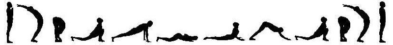
Вайшьи (землевладельцы, торговцы) – это класс бизнесменов. Они склонны к организации инфраструктуры в обществе, организации торговли, бизнеса, процессов, обеспечивающих бытовые потребности людей.
Богатые люди.
Живот (или бёдра) общества: класс производителей, ответственный за экономическое состояние общества.
Вайшьям доверяется управление природными ресурсами.
У вайшьев три основные обязанности:
- сельское хозяйство – производство продуктов питания,
- защита коров,
- и торговля и получение от этого прибыли.
«Земледелие, защита коров и торговля – таковы занятия, соответствующие природе вайшьев» ([1] Бхагавад-гита 18.44).
Таким образом, их занятие – это земледелие, животноводство, торговля, производство продуктов питания, ростовщичество, забота о коровах, другие виды бизнеса.
«Это люди, имеющие разум накопительства. Они знают, как создать богатое общество. Это их природа. Им не нужно слишком много обучаться. Существует много примеров вайшьев, которые почти не учились и стали очень богатыми. И наоборот, многие обучаются на различных бизнес-тренингах, но не могут разбогатеть. У вайшьев есть не только знание, как увеличить богатство, а они понимают истинные материальные ценности. Эти люди – великие меценаты в обществе. Они также тонкие ценители искусства, человеческих ценностей. И они через это становятся очень богатыми. Если к ним в дом войти, у них вещи – произведения искусства. У них очень дорогие картины на стенах. Они знают, куда вкладывать деньги. Это природный разум. И они очень полезны для общества, потому что общество должно быть богатым. Богатство требует некой организации, понимания ценностей, и они это умеют делать. Сотрудничая с рабочим классом, они процветают за счёт земли и природных ресурсов» [2].
«Долг вайшьев состоит из четырёх видов деятельности: возделывания земли, торговли, заботы о коровах и ростовщичества» ([1] Шримад-Бхагаватам 10.24.21).
«Преданность полубогам, духовному учителю и Верховному Господу, Вишну, стремление совершенствоваться в выполнении религиозных обязанностей, обеспечении материального благополучия и удовлетворении чувств [дхарме, артхе и каме], вера в слова духовного учителя и священных писаний, а также умение и неизменное желание зарабатывать деньги – таковы признаки вайшьи» ([1] Шримад-Бхагаватам 7.11.23).
«Вайшьям, представителям торгового сословия, прежде всего рекомендуется охранять коров. Защита коров позволяет увеличивать производство молочных продуктов: творога и масла. Занятия сельским хозяйством и раздача пищи – главные обязанности торгового сословия, получающего ведическое образование и приученного делать пожертвования. Как кшатриям доверена защита подданных, так вайшьям доверена защита животных. Животных ни в коем случае нельзя убивать. Убийство животных – признак варварского общества. Чтобы полноценно питаться, человеку необходимо и достаточно иметь продукты сельского хозяйства, фрукты и молоко. Человечеству следует уделять больше внимания защите животных. Когда рабочие трудятся на промышленных предприятиях, их созидательная энергия используется не по назначению. Никакая индустрия не может произвести главного, в чём нуждается человек: риса, пшеницы, злаков, молока, фруктов и овощей. Производство машин и станков увеличивает искусственные потребности людей, принадлежащих к имущим классам, и оставляет тысячи людей голодными и недовольными. Это не должно быть нормой цивилизации» ([1] Шримад-Бхагаватам 1.9.26, комментарии).
«Варна вайшьев делится на несколько каст:
- кшетри (землевладельцы),
- кришаны (землепашцы),
- тила-ваник (торговцы зерном),
- гандха-ваник (торговцы пряностями)
- и суварна-ваник (торговцы золотом и банкиры)»
([1] Шримад-Бхагаватам 3.6.32, комментарии).
3. Кшатрии
Кшатрии – правители, администраторы, руководители, политики, силовики, воины, обладающие силой, могуществом, великодушием. Люди, имеющие власть. Они претворяют в жизнь законы, которые услышали от брахманов, и контролируют их исполнение.
Это руки общества: правящий класс, обеспечивающий порядок в обществе.
Кшатриям доверяется управление другими живыми существами.
«У них совершенно другие качества. Если вайшьи хитрые, то кшатрии – прямые. Если вайшьи зарабатывают деньги, то кшатрии берут налоги.
У них сознание более развито. Они думают не просто о выгоде и материальном процветании, а несут ответственность за организацию всего общества. Собирают налоги на здравоохранение, образование, пенсионный фонд и так далее. Если случается война, они выходят вперёд. Они вооружены. Кшатрии защищают все законы перед Богом. Другими словами, они проецируют законы Бога на Землю и создают государство. По законам свыше они знают, что нужно защищать не только человека, а все живые существа. Деревья, растения, насекомые, животные, люди для них одинаково важны, потому что мы зависим все друг от друга, кем бы мы ни были. Без деревьев мы не выживем. Без нужных растений и злаков мы не выживем. Без насекомых тоже не выживем. Без птиц, животных, рыб, океанов баланс будет нарушен – не выживем. Поэтому кшатрии берут налоги и знают, как всё организовать по принципу ахимса – ненасилия. И чтобы защитить людей от боли и насилия, они применяют силу, оружие и умеют убивать. Это им предписано. Ведический воин всегда ходит с оружием. И глаза у него горят, он очень смелый и решительный. Они действуют очень успешно в экстремальных условиях. Чем больше риска, тем более умело сама выражается их природа. Это им дано. У них хорошая реакция, они очень быстро мыслят в критических ситуациях. У них всегда мягкие слова, они контролируют речь, они очень спокойны и уравновешены. А сердце очень жёсткое, там – закон.
Кшатрии – это олицетворённый вооружённый закон, сила управления» [2].
«Героизм, сила, решимость, находчивость, отвага, щедрость и умение вести за собой – всё это природные качества кшатриев, необходимые им для исполнения своего долга» ([1] Бхагавад-гита 18.43).
«Они готовы были в любой момент выйти с оружием и защитить дхарму ценой своей жизни. В любой момент, в любое время суток. Посмотрите изображения древних царей. Вы не увидите таких взглядов в современном мире. Это люди отречённые. Все в украшениях, все в драгоценных камнях, полностью отречённые. Это сознание долга» [2].
Готовность кшатриев с лёгкостью отдать свою жизнь подтверждается следующими словами:
«Для грядущего подвижничества вынашивает плод брахманка; скакуна, чтобы ношу носил, – кобылица, слугу рождает шудрянка, пастуха – женщина-вайшья. Такие же, как ты, царевны рождают сына для грядущей смерти в битве» (Махабхарата Стри-парва 26.5).
«Воинская доблесть, непобедимость, выдержка, сила, щедрость, воздержанность, умение прощать, преданность брахманам, неистощимая жизнерадостность и правдивость – таковы признаки кшатрия» ([1] Шримад-Бхагаватам 7.11.22).
«Кшатрию, представителю управляющего сословия, настоятельно рекомендуется делать пожертвования и не принимать их ни при каких обстоятельствах. Современные правители собирают средства по подписке для различных политических мероприятий, но никогда ни на одной официальной церемонии не раздают подаяние гражданам. Это прямо противоречит указаниям шастр. Представители управляющего сословия должны хорошо знать шастры, но не становиться профессиональными учителями. Правители никогда не должны лицемерно объявлять себя сторонниками ненасилия, так как для них это прямая дорога в ад. Когда на поле битвы Курукшетра Арджуна решил стать трусом, отвергающим насилие, Господь сурово отчитал его. Господь отнёс Арджуну к низшей категории нецивилизованных людей за то, что он открыто признал культ непричинения насилия. Каждый представитель управляющего класса должен пройти военное обучение. Трус не должен занимать президентское кресло только потому, что за него отдано большинство голосов. Все цари того времени были отважными людьми, и поэтому необходимо поддерживать монархию, при условии, что царь получает надлежащее образование и знает, в чём состоят его обязанности как царя. Царь или президент не должен возвращаться домой с поля битвы, если он не ранен врагом. Сегодняшние так называемые цари не показываются на полях сражений. Зато они очень хорошо умеют искусственно поддерживать воинственный дух в своих солдатах, играя на их ложном патриотизме. Как только управляющее сословие превращается в сборище торговцев и рабочих, весь механизм управления расстраивается» ([1] Шримад-Бхагаватам 1.9.26, комментарии).
4. Брахманы
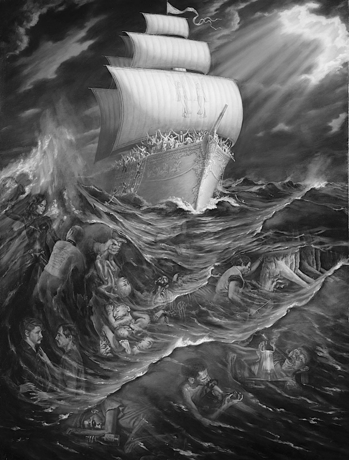
Брахманы – это учители, врачи, философы, учёные, священники.
Брахманы – интеллектуальный слой людей, обладающих безупречным поведением и подлинным духовным знанием.
Это голова общества: класс разумных людей, направляющих развитие общества.
Брахманам доверяется управление сознанием людей.
Брахманы могут глубоко проникать в суть предметов и явлений и разъяснять это всем остальным. Только голова может видеть и говорить, куда идти, остальные варны не обладают этой способностью.
Они склонны к глубоким размышлениям и стремятся к покою.
Их мало, единицы во всём обществе.
Они не только много читают и знают. Они совершают аскезы. Чтобы принадлежать к высшему классу людей, нужно соблюдать строгие принципы, без которых невозможно проявить свой интеллект. Аскезы – богатство брахмана.
Они не должны быть заинтересованы ни в деньгах, ни во власти, ни в покровительстве. Эти люди зависят только от Бога. И, как правило, они живут только на подаяние. Ничего не требуют. Они обучают людей и принимают от них какие-то добровольные пожертвования, зависящие от отношений. Если будут им платить зарплату, они превращаются в собаку, которая лает, чтобы служить своему хозяину. Они не могут быть наёмными учителями и священниками. Такие учителя и священники – сейчас они уже редкость.
Когда священник не живёт по тем принципам, которые он проповедует, он теряет силу слов. И первые, кто их отвергают – это люди, обладающие властью.
«Надолго можно удержать лишь то царство, которое возглавляется брахманами» (Махабхарата Ади-парва 159.13-22).
«Как огонь скрыт в толще древесины, всё, что говорится, слушается или читается в этом мире – скрыто в Брахманах» (Махабхарата Анушасана-парва 34).
«Это интеллектуальный класс людей, а также священники в высшем смысле слова. Люди, одухотворённые жизнью изнутри опытом, знаниями, благородством, состраданием, смирением, обладающие большой любовью. Они знают, куда нужно идти, чтобы не ожесточиться на этом пути к победе.
Кшатрий может стать жестоким, тираном, если не будет руководствоваться головой, интеллектом.
Вайшья может стать жадным, капиталистом, эксплуатировать людей, если не будет руководствоваться состраданием и любовью головы.
А ноги общества, шудры могут обманывать классы людей, жить за их счёт.
Поэтому для шудр предписан честный труд, вайшьям предписана благотворительность, кшатриям предписано защищать людей от несправедливости ценой своей жизни.
Это всё исходит из головы общества, которая не претендует ни на деньги, ни на власть, ни на славу, отказывается от всего этого ради Абсолютной Истины.
Это мощь. Это самая духовно сильная группа людей в обществе. Если они проклинают, этому человеку конец. Если они благословляют, этот человек пойдёт вверх. Одного слова достаточно.
Вот таких людей нужно сейчас нам взрастить в обществе. Обществу сейчас не хватает вот этой головы – одухотворённых могущественных людей, которые могли бы вдохновить человечество на подвиги» [2].
- «Умиротворённость,
- самообладание,
- аскетичность,
- чистота,
- терпение,
- честность,
- знание,
- мудрость
- и религиозность –
таковы природные качества брахманов, проявляющиеся в их деятельности» ([1] Бхагавад-гита 18.42).
«Признаки брахмана – это владение своим умом, владение чувствами, аскетичность, чистота, удовлетворённость, незлопамятность, бесхитростность, знание, милосердие, правдивость и полная преданность Верховной Личности Бога» ([1] Шримад-Бхагаватам 7.11.21).
Обязанности брахманов, в результате которых они получают средства к существованию:
1) патхана – изучают Веды (науки);
2) пахтана или адхипана – преподают все разделы ведического знания;
3) яджана – совершают ведические обряды и ритуалы, обеспечивают энерго-информационный обмен с высшими силами природы;
4) яджана – обучают ведическим обрядам и ритуалам;
5) пратиграха – знают, как правильно принимать пожертвования от других людей и принимают эти пожертвования;
6) дана – распределяют полученные пожертвования.
Это позволяет брахманам избегать наёмной работы:
«Брахман не имеет права наниматься к кому-либо, чтобы заработать на жизнь. В шастрах подчёркивается, что, если человек хочет оставаться брахманом, ему нельзя идти в услужение к другим, иначе он сразу лишается положения брахмана и становится шудрой» ([1] Шримад-Бхагаватам 7.11.14, комментарии).
«Если брахман страдает от того, что не может заработать на пропитание выполнением своих обязанностей, ему дозволяется стать торговцем и поправить своё положение, покупая и продавая материальные предметы. Если же он, даже став торговцем, продолжает страдать от крайней нищеты, ему дозволяется взять в руки меч и исполнять обязанности кшатрия. Однако ни при каких обстоятельствах брахману нельзя уподобляться собаке, устраиваясь на работу к хозяину» ([1] Шримад-Бхагаватам 11.17.47).
«Шрикарья брахманы – это брахманы, у которых есть способность организовывать. Есть три уровня этого:
1) секретари ачарьев, например, Сварупа Дамодар Госвами;
2) пуджари, лидеры санкиртаны;
3) министры правительства, премьер-министр, например, Чанакья Пандит: его цель – чтобы царство было спокойным, мирным, и он мог спокойно управлять своей гурукулой; он оказался в правительстве, чтобы научить царя, как управлять правительством, чтобы он мог потом вернуться и продолжить спокойно управлять своей гурукулой; у него на это ушло восемь лет» [20].
«Брахман – это пассивный разум. Кшатрий – это активный разум. Вайшья – это активный глупец. Шудра – пассивный глупец. Если вайшью не контролировать, он у всех отберёт деньги. Кшатрий распределяет собственность для всех, чтобы было благоденствие. А наверху – пассивный разум, который ничего не делает вообще. Только ест и говорит. Это брахман. Если ему никто не завидует, то общество будет процветать. Если завидуют – конец всем. По разуму брахманы и кшатрии равны друг другу. Но поскольку у кшатрия активный разум, он запутывается, и поэтому нуждается в советах. Поэтому брахману ничего нельзя делать, только изучать священные писания и советовать» [2].
«Эфир не может быть осязаем. Горы Химавана[280] не могут быть сдвинуты с их места. Текущая Ганга не может быть сдержана плотиной. Брахманы не могут быть подчинены. Кшатрии не способны править миром без благоволения брахманов» (Махабхарата Анушасана-парва 35).
«Брахман не должен становиться ничьим слугой. Быть у других в услужении – занятие для шудр. Брахман всегда должен оставаться независимым, иначе он не сможет исполнять свои обязанности в обществе, то есть быть учителем, духовным наставником и советчиком. Члены общества обеспечивают его всем необходимым. В Бхагавад-гите Господь говорит, что Он разделил человеческое общество на четыре сословия: брахманов, кшатриев, вайшьев и шудр. Без такого деления, осуществлённого на научной основе, общество не может нормально функционировать. Брахман обязан помогать всем членам общества советами; кшатрий – руководить, поддерживая в обществе закон и порядок; вайшья – заниматься ремеслом и торговлей, обеспечивая нужды всех членов общества, тогда как шудры должны служить высшим сословиям (брахманам, кшатриям и вайшьям)» ([1] Чайтанья-чаритамрита 1.13.82, комментарии).
Брахманы – это люди, обладающие безграничным и беспрекословным авторитетом у правительства и вообще в обществе. Если нет авторитета, то это не брахман.
В ведические времена, в соответствии со сводом законов, изложенных в Ману-самхите, брахманы не подлежали суду, потому что они обладают такой развитой совестью, что сами себя наказывают более строго, чем правосудие.
В ведических писаниях приводятся истории, как брахманы устраняли при помощи мантр царей, отклонившихся от своих прямых обязанностей – защищать своих поданных и отвечать за их духовный прогресс. Так был убит демонический царь Вена, восставший против авторитета брахманов. Истинный царь официально передавал всё свое царство брахманам, а они передавали всё царство ему обратно для управления. Но всё царство считается принадлежащим брахманам. Брахман не может получать жалование, или зарплату. Если брахман нанимается на работу, то он теряет своё брахманическое могущество и авторитет. В ведических писаниях говорится, что брахман, работающий по найму, подобен псу.
«Брахман неподкупен должен быть. А сегодня всех учёных людей нанимают на работу, платят им деньги. Они не могут обрести духовные знания по этой причине. Они работают за деньги. Они не могут говорить о других вещах, за которые не платят» [2].
«Чтобы называться брахманом, кшатрием, вайшьей или шудрой, человек должен получить соответствующее образование, как получают образование будущие инженеры, юристы или врачи. Те, кто прошёл обучение, могут считаться людьми. Если же человек не получил образования – социального и духовного, – то есть если он невежественен и не умеет себя вести, жизнь его ничем не отличается от жизни животных. Животные не способны развиваться духовно» ([1] Чайтанья-чаритамрита 2.24.94, комментарии).
«Брахман поддерживает свою жизнь, изучая Веды и обучая других. Не за плату, а за пожертвования. Это обязательное условие для брахмана. Иначе это не брахман. Если ему деньги не дают как пожертвования, значит у него недостаточно знаний и квалификации. И он не должен устанавливать цену, это не брахманическая уже деятельность. Брахман живёт на пожертвования. Имеется в виду, что люди добровольно хотят иметь этого учителя. Ценят. Естественно, они поддерживают его. Это отношения. И если нет отношений, знание не будет передаваться. Поэтому такие условия для брахманов: через отношения знание передаётся хорошо. Тогда можно верить этому брахману, который работает не за зарплату» [2].
«Самое важное качество интеллектуальных людей – умение владеть своими чувствами. Это основа нравственности. Сексуальные отношения даже с законной женой тоже необходимо ограничивать, что автоматически решит проблему контроля рождаемости. Интеллектуальный человек, если он не ведёт образ жизни, рекомендованный в Ведах, использует свои прекрасные качества не по назначению. Это означает, что он должен серьёзно изучать ведические писания, особенно Шримад-Бхагаватам и Бхагавад-гиту. Чтобы приобрести ведические знания, необходимо обратиться к человеку, целиком занятому преданным служением. Он не должен делать то, что запрещено шастрами. Человеку нельзя быть учителем, если он курит или выпивает. В современной системе образования принимается во внимание только академическая квалификация учителя, а на его моральные качества смотрят сквозь пальцы. В результате подобное образование приводит к тому, что люди неправильно используют свой развитый интеллект в самых различных сферах» ([1] Шримад-Бхагаватам 1.9.26, комментарии).
«Это главная роль в обществе. Голова общества – это учитель. Есть разные учителя, разные классы, разные уровни учителей. Но в целом это интеллект общества. Если опираться на древнейшую мудрость, древние традиции (об этом много говорится), это – неподкупный класс людей, прежде всего, их главная особенность. Потому что они должны быть принципиальными в плане
- образования,
- воспитания,
- морали,
- этики,
- культуры
- и Абсолютной истины.
Это нельзя искажать никогда. То есть есть вещи, которые мы можем менять, есть вещи, которые мы никак не можем менять. И вот за эти вечные ценности отвечает голова общества. Эта истина не покупается, не продаётся. Она просто существует и передаётся из сердца в сердце» [2].
«Без различия варн этот мир преходящий весь браминским Брахма некогда произвёл, но делами окрасились (варны).
Резкие и гневливые, любители вожделенья, насилия, наслаждений, нарушив свой долг и обагрив кровью руки, до состояния кшатриев дошли такие брамины.
Жёлтые, занимающиеся скотоводством, живущие земледелием, эти дваждырождённые, не устояв в своём законе, пришли к состоянию вайшьев.
Жадные, любители неправедности, врежденья, живущие разной работой, чёрные, утратившие чистоту, пришли к состоянию шудр (такие) брамины.
Так, разделённые этими делами, пришли к окраске (варн) брамины, Не смогли постоянно следовать своим уставам в жертвах, обрядах.
Так эти четыре варны, владеющие речью Брахмы, древле произведённые Брахмой, из-за жадности в неведенье впали» (Махабхарата Шанти-парва 188).
«Брахманы никогда не служили за плату, однако общество обеспечивало их всем необходимым. Тем брахманам, которые нуждались в жене, дарили девушек. Таким образом, брахманы ни в чём не знали нужды. Цари-кшатрии и богатые купцы обеспечивали их всем необходимым, брахманы же со своей стороны всё своё время посвящали заботам о благосостоянии и духовном развитии общества. Так различные классы общества сотрудничали друг с другом. Но когда брахманы перестали ответственно относиться к своим обязанностям и утратили брахманические качества, продолжая по-прежнему жить за счёт общества, они выродились в брахма-бандху, то есть превратились в брахманов, лишённых брахманических качеств, и вслед за ними всё общество сошло с пути духовного развития. Как сказано в Бхагавад-гите, кастовая система является творением Бога, и место человека в этой системе, вопреки ложным представлениям, бытующим в современном деградировавшем обществе, определяется не его происхождением, а характером деятельности, которой он занимается» ([1] Шримад-Бхагаватам 3.3.27, комментарии).
«В былые времена кшатрии и вайшьи обеспечивали брахманов всем необходимым для жизни, поскольку у брахманов не было времени самим зарабатывать себе на жизнь. Кшатрии взимали налоги только с вайшьев и шудр, брахманы были освобождены от уплаты подоходного и земельного налога. Таково совершенное социальное устройство» ([1] Шримад-Бхагаватам 3.6.32, комментарии).
В Шримад-Бхагаватам описана иерархия форм жизни в зависимости от уровня развития сознания. Брахманы в этой иерархии занимают высшее положение:
«Живые существа стоят выше неодушевлённых предметов, а среди живых существ те, кто проявляет признаки жизни, стоят выше тех, кто их не проявляет. Ещё выше стоят животные с развитым сознанием, а над ними находятся существа, наделённые развитой способностью к чувственному восприятию.
Среди живых существ, обладающих органами чувств, те, у кого развит вкус, превосходят тех, кто обладает одним осязанием. Выше их стоят существа, наделённые обонянием, а их превосходят те, у кого развит слух.
Выше живых существ, воспринимающих звук, стоят те, кто различает формы, ещё выше находятся существа, наделённые нижним и верхним рядом зубов, а их, в свою очередь, превосходят те, у кого много ног. Выше последних стоят четвероногие, а ещё выше – люди.
Те среди людей, кто принадлежит к обществу, разделённому на сословия в соответствии с качествами людей и родом их деятельности, превосходят всех остальных, а среди них лучшими считаются брахманы, интеллектуальная элита общества. Лучшими среди брахманов являются те, кто знает Веды, а среди изучивших Веды надо всеми возвышается тот, кто постиг истинный смысл Вед.
Выше брахмана, которому известна цель Вед, стоит тот, кто способен рассеять все сомнения, а его превосходит человек, строго следующий брахманическим принципам. Ещё более высокое положение занимает тот, кто очистился от материальной скверны, но даже выше его стоят чистые преданные Господа, которые занимаются преданным служением, не рассчитывая на вознаграждение» ([1] Шримад-Бхагаватам 3.29.28-32).
«Чанакья Пандит мог настолько тонко понимать людей, что это казалось каким-то мистическим совершенством. А по факту он был просто школьным учителем. Детей обучал в соломенной хижине за пожертвования. Если они приносили что-то ему, он принимал, если не приносили, он ничего не требовал. Потому что считал, что это самое важное, что нужно делать в обществе – воспитывать новое поколение. Причём это делается бескорыстно, в родительских отношениях. Родители не требуют денег за своё воспитание от своих детей. Такой же тип отношений переносится на школу. Но это голова общества – люди, которые понимают, зачем это нужно и почему именно так. Как только голова общества думает о выгоде, вся картина образования тут же меняется. К этому классу относятся: учителя, духовенство, священники, психологи, общественные деятели. Это один класс, это интеллектуальный класс людей, голова общества.
И другой класс, который существует, является руками головы. Это: административный, управляющий класс, имеющий власть в обществе, также военный класс. Это их природа врождённая. Даже в школе должен кто-то организовывать, должны быть также руки.
Кроме того, должны быть и финансы. Это третий класс, как бы желудок, тело общества.
И рабочий класс тоже нужен, чтобы что-то ремонтировать, поддерживать. Во всех сферах нужна какая-то помощь, работа.
Вот так создаётся тело общества. Но если нет чистой и ясной головы, то понятно, что все части тела действуют несогласованно. У Крылова это Квартет: «Однажды лебедь, рак и щука…» И такая природная система общества была. Посмотрите: средневековая Европа. Было духовенство. В те времена не было такого различия как сегодня между наукой и религией. Священные писания признавались также научными: там есть мудрость, там есть основы быта, бытия, заложены основы семейных традиций, заложены моральные заповеди, есть какое-то представление о мире. То есть они считались также научными трактатами. Их можно было как-то развивать, расширять, обсуждать. Люди жили по этим законам.
Было духовенство, были короли, управляющие. Монархия была. Это сильные руки, власть имущие люди. Был производительный класс, феодальный класс. И были крестьяне. Четыре типа людей всегда существуют во всех государствах под разными названиями.
И рыба гниёт с головы. Начинается деградация общества с головы. Как? Смотрите: у головы нет реальной власти, нет реальных денег. Это не богатый класс людей и не власть имущий. Но они наверху общества. Какая сила удерживает их там? В чём их могущество? Может быть, вы сталкивались с этим? Я сталкивался: когда вы говорите, а вас не слушают. Мой ребёнок, допустим: я ему говорю, а он не слушается меня, хочет делать по-своему. Как так получается? Почему меня, знающего больше, не слушается тот, кто знаем меньше? В чём проблема? Так же и этот класс. От него отказались уже сегодня. Его купили. Сегодня всё зависит от денег, не от знания. Сегодня система капиталистическая.
Я хочу пояснить, как это происходит: когда священнослужители, или учёные, представители культуры, морали и науки не следуют тому, чему сами учат, в двойственности живут. Типичный пример: отец говорит своему сыну: «Никогда не кури» и закуривает сигарету при нём. Ну бесполезная история: видите: он говорит, и ничего не произойдёт.
Это написано в древних трактатах: «Что бы ни делал великий человек, обыкновенные люди следуют его примеру. И какие бы нормы ни устанавливал он своим поведением, их придерживается весь мир» (Бхагавад-гита 3.21). Поэтому подразумевается, что если есть какие-то духовные и моральные заповеди, и тот, кто учит этим заповедям, сам строго следует этим заповедям, – в этом сила слова. «Ты говоришь о любви, о бескорыстии, о сострадании, о прощении? А ты на крест готов пойти за людей?» Вопрос. Кто-то может. И в этом сила. Люди эти заповеди помнят, потому что был пример поведения. Так, если мы совершаем какие-то подвиги… У каждого свои подвиги. У воинов свои подвиги, у людей головы общества – свои подвиги, потому что говорить и подтверждать истину – непростая вещь, требуется: бесстрашие, принципиальность, глубокие знания. Слово – самое главное оружие – говорится в ведических древних книгах. «Вначале было слово. И слово было у Бога. И слово было Богом». Слово обладает такой силой, если исходит из вечного источника. И когда духовенство перестаёт следовать заповедям, его подчиняют власть имущие люди. Это несложно: они таким образом теряют силу, влияние в обществе и поддержку в обществе.
Итак, короли подчиняют духовенство. Это первый шаг к распаду общества.
Однажды король задумал развестись со своей женой королевой, взять другую жену. Но это было запрещено духовенством. Он вызвал главного священника и спросил:
– Можно ли что-то придумать? Посмотри свои законы там, покопайся в писаниях, найди какие-то исключения для меня. Я хочу развестись с этой своей женой прилюдно.
Король, его поведение – это пример для всех. Священник говорит:
– Нет такого в писаниях. Ты не можешь такое сделать. Это начало деградации общества. Все будут разводиться, все будут следовать этому примеру.
Что сказал король:
– Значит твоя религия бесполезна.
И выгнал его власть имущий. Затем, когда власть переходит уже к воинам, к королям, к администраторам, что они делают? Они воюют за земли, границы, они расширяют свои владения, укрепляют свою власть. Турниры за дам сердца. У них дорогостоящие проекты всегда. Они живут на широкую ногу всегда. У них дворцы, замки. Угнетается производительный и рабочий класс. Деньги выделяются оттуда на эти войны и все эти акции.
Значит, эти два эксплуатируемых класса становятся неудовлетворенными. Возникает революционная ситуация. Верхи не могут, низы не хотят. Называется буржуазно-демократическая революция. То есть производительный класс (живот) и массовый класс, народ (ноги) объединяются и свергают монархию. Отрубают голову королю, и власть переходит к торговому сословию. С этого момента начинают развиваться производства, техника, покупаются учёные, покупаются руководители, станки, машины, монополии, рынки сбыта, конкуренция – капитализм развивается. Угнетается последний класс людей – рабочий класс. В 1917 году собирается весь пролетариат, свергает буржуазию, капиталистов. И на место головы становятся ноги, рабочий класс. Нужно понять, что воспитание должно быть в соответствии с природой. Природу невозможно изменить или сломать. Её нужно правильно использовать. С точки зрения цели жизни не важно, какое рождение у человека, не имеет значения. Потому что духовно мы равны. А кто это знает? Духовенство должно знать. Все остальные забывают, потому что у них другие обязанности. Им нужно слушать духовенство, которое утвердилось в духовном знании – что мы духовно равны. Материально мы не равны – вот в чём коммунисты ошиблись. Он провозгласили равенство на материальной платформе – вот в чём была ошибка. Это невозможно. Слон съедает сорок килограмм пищи за один раз. Синица максимум один килограмм за сутки наберёт. Где равенство? Материального равенства не существует. Мужчина и женщина не равны. У них разные функции. Это целая наука – изучить природу мужчины, женщины, классов и понять, что же их объединяет. Вот это – образование. А сегодня даже интеллектуальный класс людей, учителя думают, как им выжить. Вы можете представить, что сегодня творится? Как выжить вообще? Потому что система рассматривает всех в равной конкуренции. А класс интеллектуалов не должен конкурировать ни с кем. Это не производительный класс, это не управляющий класс. Это люди, передающие знание и совершающие аскезы, жертву для примера образования» [2].
Ашрамы
Слово «ашрам» переводится как «прибежище», «обитель», «уклад», то есть это место, предназначенное для духовной практики. Четыре ашрама, духовных уклада жизни позволяют человеку духовно продвигаться на протяжении всей своей жизни.
Сам Бог в Шримад-Бхагаватам (11.17.14) говорит:
«Из чресл Моей вселенской формы появилась семейная жизнь, а из сердца – период, в который человек овладевает знаниями и хранит целомудрие. Уклад тех, кто отошёл от дел и живёт в лесу, появился из Моей груди, а жизнь тех, кто отрёкся от мира, пребывает в голове Моей вселенской формы».
«Если продолжительность человеческой жизни составляет сто лет, то первые двадцать пять лет необходимо посвятить изучению Вед, следующие двадцать пять лет провести в семье, затем в течение двадцати пяти лет вести жизнь ванапрастхи, удалившись от дел, после чего принять санньясу (отречься от мира). Таковы правила, регламентирующие духовную жизнь человека в ведическом обществе» ([1] Бхагавад-гита 16.1-3, комментарии).
У брахманов четыре ашрама:
1) брахмачари,
2) грихастха,
3) ванапрастха
4) и санньяса.
У кшатриев три ашрама:
1) брахмачари,
2) грихастха
3) и ванапрастха,
У вайшьев два ашрама:
1) брахмачари
2) и грихастха.
У шудр только один ашрам:
1) грихастха.
Таков ведический порядок.
1. Брахмачари
Брахмачари – это молодой человек, посвятивший себя изучению Вед. Он живёт под присмотром духовного учителя и соблюдает обет целомудрия.
Возраст условно с пяти до двадцати пяти лет.
Главная обязанность брахмачари – служить своему духовному учителю.
«Жизнь брахмачари предназначена для аскезы и послушания духовному учителю, чтобы, пройдя через эту школу, человек, кем бы он ни стал в будущем – бизнесменом, политиком или брахманом-интеллектуалом, –
мог воспользоваться накопленными таким образом внутренними ресурсами: привычкой к порядку, самообладанием, аскетизмом, смирением. Ученичество, как о нём рассказывается здесь, коренным образом отличается от современного образования, в основе которого лежит бездумное стремление к удовольствиям» ([1] Шримад-Бхагаватам 11.17.23, комментарии).
«Согласно шастрам[281], в начале духовного пути человек должен жить в ашраме духовного учителя, изучать Веды под его руководством и стойко переносить разного рода лишения. Ученик-брахмачари, живя в доме духовного учителя, выполняет обязанности слуги, а также просит подаяние, ходя от дома к дому, и приносит собранное своему наставнику. Он принимает пищу только с дозволения учителя, а если тот вдруг забудет позвать его к столу, брахмачари постится. Таковы некоторые из предписаний Вед, определяющих обязанности брахмачари.
Ученик должен под руководством гуру изучать Веды с пяти и примерно до двадцати лет, в результате чего в нём разовьются все добродетели. Другими словами, изучая Веды, люди должны становиться не кабинетными мыслителями, а образцовыми членами общества. После такой подготовки ученику-брахмачари разрешается жениться и вести семейную жизнь» ([1] Бхагавад-гита 8.28, комментарии).
«Период ученичества должен быть в безбрачии, иначе знание не проникает, самскара[282] от секса нейтрализует его: информация попадает в ум, а в сердце не проникает. А сейчас это и не нужно даже, экзамен сдают для галочки. Да и обучение сейчас становится всё более безличностным, а механизм не даёт самскар. А ученичество всё построено на этих самскарах: что ты удовлетворил своего учителя, и даже превзошёл его, и он рад, и вот эта радость, успех, победа входит в сердце ученика. Это сердечное поощрение. И мы потом помним этих учителей всю жизнь. Это самскара, отношения, а не какие-то там галочки на тестах.
Период брахмачарьи называется любовью к правде: только правду говори, только правду думай – это формирование характера. И оно возможно только в безбрачии, запрещено близко общаться с противоположным полом, сексуальная связь вообще невозможна до двадцати пяти лет.
От этого зависит вся культура общества. Все проблемы современного общества – потому что нет института брахмачарьи: мы ужé с плохими самскарами, с ненужными вещами вступаем в брак. Это считается брак про́клятый, ужé мы плохой материал, плохое семя сажаем.
«Брахма» означает истина, чистота, «чар» означает любить: дети любят чистоту, дети любят знание, дети любят дружбу. Они это идеализируют, они это обожествляют, они это любят. Это позже приходит цинизм, когда их обманывают, а вначале они любят жизнь, в них заложена эта божественная любовь. Они любят цветы, они любят воздух, они любят утро, они любят солнце. Они всё изучают – это брахмачари, они рождены такими чистыми. И когда они видят, что мама и папа занимаются сексом – это большая проблема для них. Мать сексуально даже не должна выглядеть перед сыном. Древняя культура одеваться женщинами, девушками, девочками, бабушками была обусловлена именно этим требованием: воздержанием. Потому что, если не одеваться правильно, мужчины не способны контролировать чувства в присутствии развращённых женщин, это невозможно, как масло не может не растаять в присутствии огня. Вожделение, если раньше времени проникнет в сердце человека, оно его обязательно испортит. Вожделение – это самый злейший враг души. Вожделение порождает неудовлетворение, раздражение. Вожделение порождает гнев, потому что никогда не удовлетворяется. Вожделение порождает ненависть. «От любви до ненависти один шаг». Гнев затмевает память: кто я, мы забываем о себе, что такое живое существо, что это за мир, где мы живем вообще. Поэтому человека нужно сделать умиротворённым вначале и не сомневающимся. Есть великие пророки. Их помнят тысячи лет. Потому что они учат вечным принципам. Вот с чего начинается наше образование: с вечной красоты, с вечного знания, нужно знать, что такое настоящее изобилие, а не подделка, что такое чистое сердце. Это брахмачари: это означает, что мы должны выбрать свой принцип жизни и следовать ему до конца – это великая жизнь. Человек – это великое существо. Всё воспитывается в период жизни брахмачари. Когда юноша воспитывается в режиме полового воздержания, он становится очень решительный внутри, сильный, твёрдый, и у него хорошая память и проницательный разум. Женщины не вмешиваются в воспитание мужчины. Даже когда он в брак потом вступает, он способен поддерживать свою твёрдость духа, даже под влиянием женщины» [2].
«В начале жизни брахмачари должен совершать аскезы, чтобы обрести духовное знание. Брахмачари, ученику, запрещено общение с женщинами: нельзя, чтобы в начале жизни он узнал вкус сексуальных отношений. Главный порок современной цивилизации заключается в том, что юноши и девушки, ещё учась в школах и институтах, могут свободно вступать в половые отношения. Сейчас большинство детей относятся к категории варна-санкары, («рождённых от нежелательных отцов и матерей»). Поэтому во всем мире царит хаос. В действительности же человеческая цивилизация должна строиться на ведических принципах. Это значит, что в начале жизни юноши и девушки должны вести аскетичный, подвижнический образ жизни. Став взрослыми, они могут вступить в брак и, живя в семье, зачать детей. А когда дети вырастут, мужчина должен уйти из дома, чтобы развить в себе сознание Кришны. Так он достигает цели жизни и возвращается домой, в царство Бога.
Тот, кто в период ученичества не совершает аскез, не сможет убедиться в существовании Бога, а не постигнув Кришну, нельзя достичь совершенства в жизни» ([1] Шримад-Бхагаватам 4.31.1, комментарии).
Существует четыре вида брахмачари ([1] Чайтанья-чаритамрита 1.7.34, комментарии):
1) Савитрья-брахмачари – это тот, кто остаётся брахмачари в течение четырёх ночей. Он получает священную нить брахмана от своего гуру (упанаяна-самскара), хранит обет целомудрия в течение трёх ночей, но на четвёртую ночь теряет семя.
2) Праджапатья-брахмачари – этот тот, кто хранит целомудрие в течение одного года после проведения упанаяна-самскары.
3) Брахма-брахмачари – это тот, кто сохраняет целибат до того момента, пока не изучит все Веды под руководством своего гуру.
4) Брихат-брахмачари или пакка-брахмачари или наиштхика-брахмачари соблюдает целибат всю свою жизнь. Он никогда не женится и никогда не теряет семени.
Первые три вида брахмачари раньше или позже женятся и теряют семя, но четвёртый вид брахмачари никогда не теряет семени и никогда не вступает в какие бы то ни было отношения с женщинами.
Есть пять признаков того, что человек является учеником, брахмачари.
1) Он должен мыться как ворона,
2) медитировать как журавль,
3) мало есть,
4) спать как собака
5) и жить вдалеке от дома.
1) Брахмачари не должен долго мыться. Вы видели, сколько купается ворона? Одну минуту. Она набирает в клюв воды, обрызгивает себя, и всё.
2) Аист – белая птица с длинным клювом и длинными ногами. Обычно аисты стоят, сосредоточив внимание, на берегу озера или реки. Если мимо проплывает рыба, аист её тут же хватает.
3) Брахмачари спит как собака. Собака просыпается от малейшего шума. Она спит, но сон её неглубок.
4) Брахмачари ест немного. Не набивайте живот до предела, по горло. Не надо много есть. Тогда тело будет лёгким, и вам будет легко просыпаться, легко заниматься духовной практикой.
5) Брахмачари живёт в интернате. Это означает – в ашраме гуру. Не надо жить в доме родителей.
«Есть шесть вещей, которые брахмачари должен развивать:
1) уважение к авторитету,
2) изучение,
3) настроение служения,
4) способность выполнять работу,
5) контроль чувств
6) и понимание того, что является для них подходящим согласно возрасту, положению и среде.
Если они могут понять эти шесть вещей, то они могут функционировать везде, то есть они могут делать всё что хотят. Если у вас нет этих шести вещей, то вы не можете на самом деле функционировать в мире» [20].
«Но в настоящее время вести образ жизни брахмачари, то есть хранить целомудрие, строго воздерживаясь от половой жизни, невозможно. Структура общества в наши дни сильно изменилась, и юношам очень трудно хранить целомудрие. В мире много разных учебных заведений, но нет ни одного, где бы учили принципам брахмачарьи. Тому, кто не воздерживается от половой жизни, совершенствоваться в духовной жизни невероятно сложно» ([1] Бхагавад-гита 8.11, комментарии).
Наш материальный мир очень жесток: это резервация, отделённая от духовного мира для особо опасных рецидивистов-бунтарей, душ, не признающих власти Бога. Кстати, в ведических писаниях даже указано, что таких бунтарей четверть от общего количества живых существ. И для того, чтобы человек имел возможность духовно развиваться, а не ещё больше озлобляться и деградировать, нужна очень серьёзная философская и психологическая подготовка, духовная подготовка перед тем, как выпускать человека в жизнь. Вот как раз такую подготовку и предоставляет брахмачари ашрам, этот период ученичества в первые двадцать пять лет жизни человека. Иначе очень трудно удержаться от деградации, особенно сейчас, в век вражды и раздора Кали.
2. Грихастхи
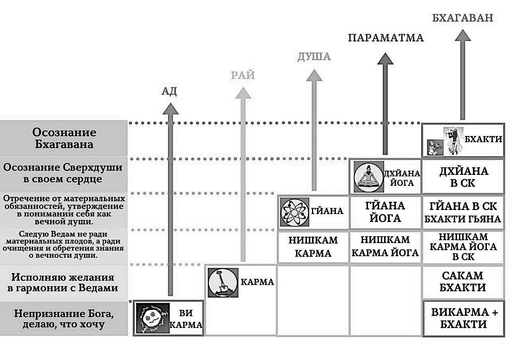
Грихастха – это семейный человек. Он выполняет, помимо своих духовных обязанностей, обязанности по поддержанию своего тела и семьи.
Возраст условно с двадцати пяти до пятидесяти лет.
Основные обязанности семейного человека – предоставлять прибежище всем живым существам и проводить жертвоприношения.
«Глава семьи должен без особых усилий содержать своих домочадцев на деньги, которые либо приходят к нему сами собой, либо появляются в результате честного исполнения своих обязанностей. Ему также необходимо, сообразуясь со своими возможностями, совершать жертвоприношения и другие религиозные обряды» ([1] Шримад-Бхагаватам 11.17.51).
«Семейная жизнь – это второй уклад: не главный, а промежуточный. Путь к счастью лежит через семейную жизнь, но сама по себе семейная жизнь не гарантирует счастья. Это очищение. Счастье может быть, но не главное, главное – очищение. Очищение – это и есть путь к счастью. Мы же сейчас путаем семейную жизнь с чувственным наслаждением, с комфортом: деньги, дом, машина, удобства, отпуска, недвижимость, поездки на острова – наслаждение жизнью. А семейная жизнь не предназначена для чувственных наслаждений. Вообще планета Земля не предназначена для этого: это не райская планета.
В век Кали семейная жизнь прóклята, то есть очень затруднена. Очень трудно найти счастливых людей именно в семье. Проклятье нужно снять. Что такое проклятие: «хорошие вещи меня не интересуют». Сравнивается с болезнью желтухой: вместо сладкого чувствую отвратительную горечь. Чувства больны. Это как проклятие. «Хорошая вещь, но я не могу принять её. Хочу жить как все и быть счастливым». Это невозможно. Вы должны превзойти себя.
Но в обычной семейной жизни трудно превзойти себя, потому что в обычной семейной жизни люди сейчас недовольны друг другом: то ли количеством денег, то ли условиями жизни, то ли характерами.
Оказывается, очень просто сохранять семью: немножко улыбнулись, хорошее слово сказали – чаша позитива постепенно наполняется. Очень медленно: этот процесс жизнь займёт» [2].
Существует четыре вида грихастх (Махабхарата Шанти-парва 243.3-4 и [1] Чайтанья-чаритамрита 1.7.34, комментарии):
1) Варта-грихастха (имеющий профессию, «хранение зерна в закромах») – это тот, кто занимается сельским хозяйством или другой деятельностью и живёт за счёт неё.
2) Санчая-грихастха (накапливающий богатство в глиняных сосудах) – это тот, кто живёт за счёт совершения жертвоприношений, ритуалов. У него также могут быть ученики, и он живёт за счёт этих учеников.
3) Шалина-грихастха (тот, кто ни у кого ничего не просит, «состояние коня»). Он полагается в своём пропитании на Господа.
4) Шилончана-грихастха (сборщик остатков зерна) – это тот, кто совершает унча-врити или капота-врити. Капота означает голубь. Он живет подобно голубю – собирает зёрна с поля.
В Махабхарате даются следующие правила поведения грихастхи с родственниками:
«Довольный своей женой, сдержанный, безропотный, победивший чувства, со знатоками обрядов, домашними жрецами, наставниками, братьями матери, домочадцами, гостями, со старцами, детьми, со свояками, родичами, знакомыми, больными, ведунами, с отцом, матерью, невестками, братом, сыном, супругой, с дочерью, челядью ссор затевать он не должен.
Освободясь от ссор с ними, он ото всех зол освободится. Оставив за ними победу, он, несомненно, всё побеждает в мире, ибо наставник подобен повелителю в мире Брахмы; отец подобен владыке в мире Праджапати; гость – владыка в мире Индры; в мире богов – знаток обрядов; знакомый – в мире вишвадевов[283]; в мире апсар[284] владычицы – невестки; домочадцы и родичи – владыки сторон света; владыки земли – мать и её братья; старцы, дети, болящие, истощённые – в пространстве владыки. Старший брат подобен отцу, жена и сын – собственному телу; собственной тени – челядь; дочь есть высшее сострадание.
Поэтому, уязвлённый ими, грихастха должен всегда терпеть, не кручинясь, преданный долгу домохозяина, мудрый, праведный, победивший слабость» (Махабхарата Шанти-парва 243.14-21).
Но если у человека семейная жизнь не сопровождается духовной практикой, то у такой семьи уже другое название: не грихастха, а грихамедха. В ведических писаниях глава такой семьи сравнивается с быком, который привязан к столбу-дому, и весь день ходит по кругу, хотя думает, что очень занят очень важным делом. Фактически, он ходит вокруг своей жены и секса. Такие приоритеты неизбежно приводит к деградации и страданиям. Такой человек просто уничтожает себя как личность.
«Варна обычно нужна для того, чтобы поддерживать себя, зарабатывать что-то. Это нужно, какую-то профессию иметь, чтобы поддерживать свою семью, себя самого. Это обязанность грихастх. Варна предназначена для них. В других ашрамах нет варны, нет профессии» [2].
3. Ванапрастхи
На склоне лет начинается отход от дел в духовную жизнь, осмысление, мудрость, медитацию, молитву. Ванапрастха – это отшельник, отстранившийся от семейных дел для того, чтобы покончить со своими материальными привязанностями и погрузиться в распространение накопленной мудрости и духовного опыта. Он путешествует по святым местам, изучает Веды, общается с людьми, даёт им наставления, использует свою мудрость для того, чтобы помогать людям. Чтобы в мире был баланс, люди должны руководствоваться мудростью, не раздражением, не гневом, не завистью. И вот эти люди, ванапрастхи, отвечают за это.
Возраст условно с пятидесяти до семидесяти пяти лет.
В некоторых ведических источниках указываются три признака, по которым можно ориентироваться, что пора принимать ванапрастху:
1) седые волосы,
2) плохое зрение,
3) появились внуки.
Для ванапрастхи главное – проповедь духовного знания, аскеза и философское понимание разницы между телом и душой.
Ванапрастхе запрещено делать запасы еды и других вещей, необходимых для жизни.
«Аскетизм особо предписывается тем, кто отошёл от семейной жизни. Человек не должен до конца своих дней жить с семьёй, необходимо помнить о том, что существует четыре периода жизни: брахмачарья, грихастха, ванапрастха и санньяса. Завершив период семейной жизни, человек должен удалиться от дел. Если продолжительность человеческой жизни составляет сто лет, то первые двадцать пять лет необходимо посвятить изучению Вед, следующие двадцать пять лет провести в семье, затем в течение двадцати пяти лет вести жизнь ванапрастхи, удалившись от дел, после чего принять санньясу (отречься от мира). Таковы правила, регламентирующие духовную жизнь человека в ведическом обществе. Человек, отошедший от семейной жизни, должен совершать аскезу, чтобы обуздать тело, ум и язык. Теория, утверждающая, что человеку не нужно ни в чём себя ограничивать, что можно продолжать делать всё, что угодно, и всё будет в порядке, не находит поддержки в Ведах. Подобные теории придумывают корыстолюбивые проповедники, желающие умножить число своих последователей. Ограничения и правила отпугивают людей. Поэтому те, кто хочет вести за собой людей, на словах прикрываясь религией, не требуют от своих учеников соблюдения каких-либо правил и не следуют им сами. Однако Веды не одобряют этого» ([1] Бхагавад-гита 16.1-3, комментарии).
Ванапрастхи бывают четырёх видов ([1] Чайтанья-чаритамрита 1.7.34, комментарии):
1) Вайкханаса-ванапрастха питается полуварёной пищей. Он берёт созревшие плоды или злаки, но не варит их, не подвергает термической обработке.
2) Валакхилья-ванапрастха – это тот, кто живёт за счёт своих прошлых запасов и не создаёт новых.
3) Аудумбара-ванапрастха – это тот, кто питается лишь тем, что попадается на его пути. Когда аудумбара просыпается, он идёт туда, куда был направлен его взгляд в момент его пробуждения.
4) Пхенапа-ванапрастха – это тот, кто ест лишь фрукты, которые сами упали с деревьев.
«Человек старый не привлекателен с сексуальной точки зрения, но как мудрец он очень ценен в обществе» [2].
«Умиротвориться нужно человеку в конце жизни, а не просить подачки: пенсии, пенсии… Старики обеспокоены. Старики имеют огромное влияние на общество. Сила благословения. И долг наш – чтобы они ушли умиротворёнными» [2].
4. Санньяси
Санньяси – это человек, полностью посвятивший себя духовному развитию. Отшельник, или монах, полностью разорвавший материальные связи с семьёй и обществом.
Возраст условно с семидесяти пяти до ста лет.
Главный долг санньяси – сохранять невозмутимость и воздерживаться от насилия.
«В системе варнашрамы санньяси, то есть человек, отрёкшийся от мира, считается головой, или духовным учителем всех остальных каст и укладов. Брахманы являются духовными учителями для трёх других каст: кшатриев, вайшьев и шудр, однако санньяси, стоящие на самой верхней ступени общественной лестницы, являются духовными учителями даже для брахманов. Главным качеством, которым должен обладать санньяси, является бесстрашие. Поскольку санньяси живёт один, без всякой поддержки или её гарантии, он должен полагаться только на милость Верховной Личности Бога. Если человек думает: «Кто защитит меня после того, как я порву все связи с семьёй и обществом?» – ему не следует давать обет отречения.
Помимо этого, санньяси должен всегда жить в чистоте. Жизнь людей, отрёкшихся от мира, регламентирована множеством правил и предписаний. Самым важным из них является строгий запрет на близкие отношения с женщинами. Санньяси не имеет права даже разговаривать с женщиной наедине.
Санньяси строго запрещено вступать в близкие отношения с женщинами и наслаждаться роскошью и богатством.
Санньяси должен посвятить свою жизнь распространению знания среди семейных людей и всех тех, кто забыл, что истинной целью жизни является достижение духовного совершенства» ([1] Бхагавад-гита 16.1-3, комментарии).
Существует четыре вида санньяси ([1] Чайтанья-чаритамрита 1.7.34, комментарии):
1) Кутичака-санньяси – это тот, кто живёт со своей семьёй, но не имеет привязанности к членам семьи. Кутичака-санньяси живёт рядом со своим домом; родственники приносят ему пищу.
2) Бахудака-санньяси оставляет материальные занятия и посвящает себя трансцендентной деятельности. Его служение Богу смешано со стремлением к знанию.
3) Хамса-санньяси – это санньяси, обладающий совершенным трансцендентным знанием.
4) Нишкрия-санньяси – это санньяси, оставивший все виды деятельности. Он находится в полной зависимости от Бога. Двадцать четыре часа в сутки он занят служением Богу. Он всецело отдаёт себя служению и живёт в уединённом месте.
«Путь отречения от мира (санньяса) делится на четыре ступени:
1) кутичака,
2) бахудака,
3) паривраджакачарья
4) и парамахамса.
1) По ведическим правилам человек, принявший санньясу, должен поселиться в хижине неподалеку от своей деревни и получать всё необходимое (главным образом еду) из дома. Эта ступень называется кутичакой.
2) Поднявшись на следующую ступень, санньяси перестаёт принимать что-либо из дома: теперь он живет за счет подаяния, прося его в разных местах. Такой образ жизни называется мадхукари, что буквально означает «занятие пчелы». Пчёлы собирают нектар с разных цветков, с каждого понемногу, а санньяси должен ходить по домам и просить подаяние, беря в каждом доме лишь понемногу еды: брать много ему не разрешается. Эта ступень называется бахудакой.
3) Санньяси, который поднялся на ещё более высокую ступень, постоянно путешествует, проповедуя славу Господа Васудевы. Такого санньяси называют паривраджакачарьей.
4) А на следующей ступени, которая называется парамахамсой, санньяси прекращает проповедовать и, остановившись в каком-то месте, целиком сосредоточивается на собственном духовном развитии»
([1] Шримад-Бхагаватам 5.1.27, комментарии).
«Не сразу человек принимает отречённый образ жизни полностью. Это невозможно сразу сделать. Мы в ИСККОН[285] считаем, что тот, кто проповеди себя посвятил, и больше ничем не занимается, – это уже санньяси, отречённый человек. Ничем другим не занимается.
Постепенность в принятии санньясы нужна для того, чтобы человек чувствовал себя уравновешенным. Вначале он поселяется на краю деревни, ему родственники еду приносят, потом он уже путешествующим становится, ни к какому месту не привязан. Это происходит естественно, у такого человека другого вкуса нет уже. А формально отречение необходимо принять, чтобы принять роль ачарьи[286], чтоб было видно всем: что вот санньяси, вот проповедник, вот ачарья, у него такая роль, он на виду должен быть, в центре внимания, все ему кланяются, он говорит только о Кришне – на него накладывается такая ответственность – только об этом говорить. Других ролей у него нет, отнимаются. Это его положение, отнимается всё остальное. То есть ты только о Боге будешь говорить, больше ни о чём. Прямая проповедь. А грихастхи – они отречены, но они ещё косвенной проповедью могут заниматься. Но если он уже духовным учителем становится, он уже не должен косвенно проповедовать, должен более-менее прямо приводить людей к Богу» [2].
«Возвышенные санньяси достигают планеты Брахмы, Брахмалоки, которая является главной планетой во вселенной и продолжает существовать, даже когда уничтожаются райские планеты, относящиеся к высшей планетной системе» ([1] Бхагавад-гита 8.17, комментарии).
В Махабхарате так описываются качества санньяси:
«Одиноко идущий, никем не покидаем и ничего не покидает; без огня, без пристанища пусть ради пищи он входит в деревню. Пусть не заботится о завтрашнем дне предавшийся бытию молчальник, постник, ограничив питание, пусть раз в день принимает пищу. Кружка, отдых на древесных корнях, отсутствие товарищей, отрепья, равное отношение ко всем существам – вот признаки нищенствующего санньяси.
В ком тонут слова, как слон, упавший в яму, и не возвращаются к говорившему, тот отрешённо жить, способен.
Он не должен смотреть на постыдное, никогда не должен постыдного слушать. Не должен сам говорить ничего подобного, особенно о Брахмане. Он должен всегда говорить лишь то, что на пользу Брахману.
Порицаемый, он должен безмолвствовать ради собственного блага.
Тот, которым как бы наполнено всё пространство, бывает всегда одиноким; для кого всё, наполненное существами, – пусто, того признают Брахманом.
Того, кто одевается во что придётся, ест что придётся, спит где придётся, боги признают Брахманом, того, кто толпы, как змеи, страшится, благополучия – как преисподней, женщин – как трупа, того признают Брахманом.
Кто, восхваляемый, не радуется, не гневается, не восхваляемый, кто всем существам оказывает покровительство, того признают Брахманом.
Не радуется он смерти, не радуется и жизни и, как слуга, своего времени ожидает.
Да будет незапятнанной его мысль, незапятнанным слово; ото всех грехов он свободен, нет у него врагов, чего же ему страшиться? Не боящегося существа все существа не боятся; у освободившегося от заблуждения не бывает никакого страха.
Кто не вредит никому, навсегда пребывает бессмертным.
Не вредящий, уравновешенный, правдивый, упорный, сдерживающий чувства, покровительствующий всем существам непревосходимого пути достигает.
Так, насыщенный познанием, свободный от надежд, бесстрашный, преодолевает смерть: состояние смерти над ним не властно.
Молчальника, свободного ото всех склонностей, устойчивого, как само пространство, свободного от эгоизма, одинокого странника, умиротворённого, признают Брахманом.
Того, цель жизни которого – долг (дхарма), цель долга – Хари (Бог), цель дня и ночи – благо, признают Брахманом.
Все существа рады счастью, дрожат перед страданьем; но знающий – тот, кому надоело пугать других, богатый благочестием, пусть дел не совершает» (Махабхарата Шанти-парва 245.4-25).
«Если вы пропустили брахмачари ашрам, – конечно, это потеря: вы не обучены – сейчас мы видим, что люди теряют с самого начала этот шанс, не получают духовного образования в период обучения.
Если вы пропустили грихастха ашрам, – тоже будет потеря болезненная.
Если вы не вступили в ванапрастха ашрам достойно, вы тоже будете страдать очень сильно, будут увеличиваться страдания.
Если вы не обрели отречение и бесстрашие к концу жизни, ваши страдания будут неизмеримы: всё страшнее и страшнее будет ваша жизнь становиться.
Поэтому эти ашрамы во́время один за другим следуют, приводят человека к совершенству.
Но бывает так, что по закону кармы и судьбы не сложился у меня грихастха ашрам. Вообще он не складывается у людей, это редкое событие. Поэтому и рекомендуется мужчинам принимать санньясу.
Потому что жена вас съест потом.
Но если ваша жена преданная, и она помогает вам в преданном служении, вам не нужно принимать санньясу. Но это редко. В основном материальная природа такова, что женщина съест мужчину потом в конце. Поэтому говорится: санньясу принимай.
Но в случае, если оба служат Богу, забыв о противоположном поле, об этой иллюзорной любви, не ожидая друг от друга каких-то вещей неисполнимых, невозможных, не принося друг другу беспокойства своими требованиями, если они – два вайшнава, то в этом [санньясе] нет необходимости, это – ужé отречение, вы ужé бесстрашны, вы ужé в сознании Бога. Сознание Бога вы не замените ничем: никаким успехом, никакой семьёй, ничем. В этом материальном мире ничем невозможно заменить сознание Кришны. А вот без семьи вы проживёте, и даже ещё лучше иногда. Ещё и слава Богу можно сказать, что вы замуж не вышли, всякое может быть, знаете. Какой ещё муж попадётся и какие дети: не дай Бог, и врагу не пожелаешь» [2].
«В каждый момент жизни человек обязательно должен находиться в каком-нибудь из традиционных укладов. Нельзя двигаться вспять, переходя из более высокого ашрама в более низкий» ([1] Шримад-Бхагаватам 11.17.38).
Приведённое описание четырёх укладов жизни справедливо для цивилизованного общества, построенного в соответствии с ведическими принципами. В Кали-югу обстановка дел несколько иная. Шримад-Бхагаватам даёт такое описание укладов в век Кали:
«Брахмачари не смогут следовать своим обетам и будут нечисты, семейные люди будут выпрашивать милостыню, ванапрастхи будут жить в поселениях, а санньяси станут жадными до богатств.
В век Кали брахмачарья, ученичество с обязательным соблюдением безбрачия, практически отсутствует. В Америке многие бывшие школы для мальчиков теперь стали школами совместного обучения, потому что юноши отказываются учиться без постоянного общения с чувственными молоденькими девушками. Мы также видели, что студенческие общежития на Западе – это, пожалуй, самые грязные места в мире. Что касается обнищавших грихастх, то семейные люди в Кали-югу не отличаются щедростью.
В ведической культуре было принято, что семейные пары по достижении пятидесяти лет отправлялись в святые места, чтобы жить там аскетичной жизнью и стараться достичь духовного совершенства. Однако в таких странах, как Америка, построены целые города для людей преклонного возраста, где они могут выставлять себя на посмешище, тратя последние годы своей жизни на игру в гольф, пинг-понг и шафлборд и разыгрывая жалкую пародию на любовные романы, в то время как тела их постепенно гниют, а сами они впадают в старческий маразм. Такое элементарное неуважение к достигнутому ими почтенному возрасту указывает на упрямое и кощунственное нежелание понять истинное предназначение человеческой жизни.
Харизматичные религиозные лидеры и даже те, кто не отличается особой харизмой, будут обманывать наивных людей, объявляя себя пророками, святыми и воплощениями Бога с единственной целью – заработать побольше денег на их наивности» ([1] Шримад-Бхагаватам 12.3.33).
Женщины
«Положение женщин – подчиняться мужчинам. Если мужчина относится к первому[287] сословию, то женщина – тоже, если мужчина относится ко второму[288], то и женщина – тоже, если мужчина к третьему[289] классу относится, то женщина – тоже к третьему классу. Женщина должна помогать мужчине. И женщина подстраивается под мужчину, под мужа» [1].
«Жизнь женщины состоит только из трёх этапов:
1) в детстве она находится под опёкой отца,
2) в молодости – под покровительством мужа,
3) а в старости остаётся на попечении взрослого сына»
([1] Шримад-Бхагаватам 3.24.40, комментарии).
Вайшнавы
Для кого-то быть брахманом может показаться очень привлекательным. Но что же делать, если вы родились без брахманических качеств? Если к брахманическому виду деятельности не было предрасположенности при рождении, то брахманом в этой жизни стать практически невозможно. Однако есть исключение. Люди, серьёзно занимающиеся духовной практикой, вайшнавы, преданные Господа автоматически являются брахманами, и даже более того.
Один из величайших духовных учителей Санатана Госвами говорит в своём произведении Хари-бхакти-виласе, что человек, должным образом получивший посвящение у истинного духовного учителя, немедленно становится брахманом. В связи с этим он пишет: «Как колокольная бронза при добавлении ртути превращается у алхимика в золото, так и человек, прошедший подготовку у истинного духовного учителя и получивший от него посвящение, тут же становится брахманом».
«Это тело, несомненно, представляет собой препятствие, но тот, кто общается с чистым преданным и строго следует его наставлениям, может, получив у него посвящение, преодолеть это препятствие и стать настоящим брахманом.
Обычный человек может стать брахманом, если будет общаться с чистым преданным» ([1] Чайтанья-чаритамрита 1.7.47, комментарии).
«Жизнь брахманов – в контроле чувств. Это их профессия. Профессия, работа брахмана – это аскезы, чистота. Если это брахман – достаточно. Всё остальное дополняется. И есть вайшнавы, которые не работают вообще. Он не брахман, не кшатрий, не вайшья, не шудра, он – преданный. Он не придаёт значение, эта варна не важна для него. Важно служение. А какое – не важно. Может шудрой, может вайшьей, как хотите. Что ему природа даёт, то он и использует. Или то, что требуется, он готов делать. Это вайшнав, он – свободный, трансцендентный» [2].
Для вайшнава не важно, кто он по варне и ашраму. Он уже выше этих понятий вообще. Он говорит так: «Я не брахман, я не кшатрий, я не вайшья и не шудра. Я не брахмачари, не семейный человек, не ванапрастха и не санньяси. Я считаю Себя лишь слугой слуги слуги лотосных стоп Господа Шри Кришны, покровителя гопи». Он подобен океану нектара. Он – источник трансцендентного блаженства для всей Вселенной. Бытие его всегда исполнено великолепия» ([1] Чайтанья-чаритамрита 2.13.80).
«Если он учёный, естествоиспытатель, философ, поэт и т.д., ему следует использовать свои знания для того, чтобы утвердить превосходство Господа. Старайтесь понять, как действуют энергии Господа в каждой сфере жизни. Не хулите Его, не пытайтесь уподобиться Ему или занять Его положение, скопив по крохам знания.
Если человек – государственный деятель, правитель, политик, воин и проч., ему следует утвердить верховную власть Господа в своих государственных делах. Сражайтесь во имя Господа, как это делал Шри Арджуна. Сначала Шри Арджуна, великий воин, уклонялся от участия в битве, но когда Господь убедил его в необходимости сражаться, Шри Арджуна изменил своё решение и стал сражаться во имя Господа.
Подобно этому, если человек является бизнесменом, фабрикантом, земледельцем и т.д., ему следует тратить заработанные своим трудом деньги для Господа. Всегда думайте, что накопленные вами деньги – это богатство Господа» ([1] Шримад-Бхагаватам 1.5.32, комментарии).
«Вайшнав – это брахман, обладающий знанием, поэтому вайшнавов иногда называют брахманами-вайшнавами, брахманами-пандитами или вайшнавами и брахманами одновременно. Иными словами, вайшнав всегда является брахманом, тогда как брахман может и не быть чистым вайшнавом. Осознав свою духовную природу, человек сразу становится брахманом. Представления человека, достигшего уровня брахмана, об Абсолютной Истине в основе своей являются безличными. Но когда брахман постигает Верховного Господа как личность, он становится вайшнавом. Вайшнав трансцендентен даже по отношению к брахману. С материальной точки зрения брахман занимает в обществе самое высокое положение, но вайшнав превосходит даже брахмана. И брахман, и вайшнав находятся на очень высокой ступени духовного развития. Качества брахмана перечислены в Бхагавад-гите: правдивость, уравновешенность, умение сдерживать чувства, терпимость, простота, знание Абсолютной Истины, непоколебимая вера в священные писания и применение брахманических качеств в повседневной жизни. А когда человек, обладающий всеми этими качествами, посвящает себя трансцендентному любовному служению Господу, он становится вайшнавом» ([1] Шримад-Бхагаватам 4.21.37, комментарии).
Предназначение
«В писаниях указано, как представители каждого из сословий должны зарабатывать себе средства к существованию. Брахманы обязаны передавать знания своим ученикам, что даёт им право принимать от учеников пожертвования, а царь обязан защищать своих подданных, предоставляя им все возможности для экономического и духовного развития, и если он справляется с этими обязанностями, то может взимать с них налоги. Предприниматели или торговцы, которые обеспечивают общество продуктами питания, могут делать это с некоторой выгодой для себя, шудры же, неспособные исполнять обязанности брахманов, кшатриев или вайшьев, должны служить представителям высших сословий общества и получать от них всё необходимое для жизни» ([1] Шримад-Бхагаватам 4.21.50, комментарии).
«Каждый из нас есть носитель своей судьбы, и жить вне судьбы есть великая трагедия для человека. Жить же в своей судьбе есть великое счастье» [14].
В реальной современной жизни трудно у людей найти ярко выраженные варны. Если кто-то определил свою варну, можно считать, что ему очень повезло. Примером отсутствия ярко выраженной варны служат чиновники.
«Обуреваемое камой и лобхой (жадностью и вожделением), всё население планеты состоит в большинстве своём из шудр и немногочисленных вайшьев, но постепенно шудры вытесняют всех остальных» ([1] Чайтанья-чаритамрита 1.8.20, комментарии).
Существует древний обычай, в соответствии с которым, когда ребёнок научился ползать, перед ним кладут четыре предмета, соответствующих разным варнам, например: книгу, оружие, деньги и какие-нибудь инструменты. То, что возьмёт ребёнок, и будет предметом его варны.
Варну можно приблизительно определить методом ведической нумерологии: сложением чисел в дате рождения до простой цифры.
Цифры 3 и 6 соответствуют брахману, 1 и 9 – кшатрию, 2 и 5 – вайшье и 4, 7 и 8 – шудре.
Для примера возьмём дату рождения 26.10.2010.
2 + 6 = 8 – это первая нужная нам цифра, которая называется числом характера или души. Эта цифра характеризует 40% варны, присущей человеку. В данном случае, человек на 40% шудра.
1 + 0 = 1 – это вторая нужная нам цифра, и она даёт 10% варны, присущей человеку. Получается, человек на 10% кшатрий.
2 + 0 + 1 + 0 = 3 – это третья нужная нам цифра, она показывает 10% варны, присущей человеку. Человек на 10% брахман.
Сумма второй и третьей цифр называют числом экспрессии. Число экспрессии также можно рассчитывать по имени в соответствии с таблицей:
Теперь мы складываем три полученные цифры до одной:
8 + 1 + 3 = 12 = 1 + 2 = 3 – это четвертая нужная нам цифра, которая называется числом кармы, и показывает 40% варны, присущей человеку. Человек ещё на 40% брахман.
В итоге мы получаем следующее: человек на 50% брахман, на 40% шудра и на 10% кшатрий.
Есть ещё одно важное число в ведической нумерологии, и оно вычисляется путём сложения чисел дня и месяца рождения так же до одной цифры, которая показывает наиболее яркие качества в человеке, которые проявляются при близком общении.
8 + 1 = 9 – это говорит о том, что при близком общении человек будет сильно проявлять качества кшатрия.
Есть одно важное правило при расчетах в ведической нумерологии: если рождение человека произошло в период с 0:00 до 1:30 ночи, то берётся предыдущее число дня рождения.
Число характера (или число души) – это основополагающее число в нумерологии, на основании него можно очень многое сказать о человеке и о том, как он взаимодействует с миром. Это своего рода цветная линза, через которую мы воспринимаем мир. В зависимости о того, какая линза нам досталась, мы видим мир немного по-разному и, соответственно, делаем разные выводы, принимаем разные решения и совершаем разные действия. Это число описывает то, каков человек по характеру, по отношению к людям, по выстраиванию романтических отношений, в работе и т.д.
Число экспрессии – это самая яркая черта человека, которая в первую очередь заметна, когда он взаимодействует с миром или людьми. Можно назвать экспрессию тем, что формирует первое впечатление. Число экспрессии показывает нашу сильную сторону, на которую мы можем опереться, как на ресурс в достижении своих целей. Это также число дхармы – долга на это воплощение. Это один из компонентов предназначения, который задаёт общее направление в жизни.
Число кармы – это про условия жизни, которые будут разворачиваться вокруг человека, куда его будет тянуть. В зависимости от числа кармы, мы попадаем в те или иные условия, которые провоцируют развитие тех или иных качеств. Карма – это та семья, в которой мы родились, город, где мы живём, люди, которые нас окружают. Всё то, что вокруг нас, формирует путь, по которому мы будем идти.
Автоматически рассчитать варну человека можно по этой ссылке: https://youcaste.com
Критериями определения своего предназначения могут быть следующие.
Вы не просто делаете это хорошо, вы не можете этого не делать.
Вы легко сосредоточиваетесь на этой деятельности и долго не устаёте.
Деньги не являются основным мотивом. Вы делаете это, даже если вам не платят.
Работа приносит вам радость. В этой деятельности вам важны не плоды, а сам процесс.
Вы испытываете постоянную необходимость совершенствоваться в этой сфере.
Вы с удовольствием делитесь своими знаниями и опытом с другими.
Это то, за что вас ценят другие. Самим нам иногда сложно быть объективными, но со стороны часто видно лучше.
Если вы решите связать свою жизнь с саморазвитием, то по мере того, как постижение ведического знания будет делать вас независимыми от стереотипов общества, а гуна благости очищать сознание, истинная ваша природа будет вам постепенно открываться.
«Есть общая, самая главная черта той деятельности, которая соответствует вашей природе: заниматься этой деятельностью вы можете в любом состоянии, не ожидая никакой выгоды от неё. Более того, всё знание, необходимое для этой деятельности, приходит к вам как бы само собой, без особых усилий с вашей стороны. Очень часто намёк на это предназначение следует искать в далёком детстве, в той сокровенной мечте, которая сопровождала тогда ваши игры и общение со сверстниками» [3].
Если вы знаете своё предназначение, у вас неизбежно будет высокая квалификация в вашем любимом деле. И тогда естественным образом к вам прийдёт счастье. А если счастье искать искусственно, то ничего не прийдёт, кроме зависти.
«Нельзя никого называть ни шудрой, ни вайшьей, ни кшатрием, ни брахманом. Это человек должен сам выяснить. Как? При помощи удовлетворённого ума» [2].
Бывает, что своё предназначение, свой долг исполнять внешне не так легко, как хотелось бы. И даже приходит соблазн заняться чем-нибудь более так называемым выгодным, модным, актуальным, насущным. Например, на протяжении моей жизни менялась мода на разные профессии в зависимости от зарплаты. Сначала это был инженер, программист, потом экономист. Сейчас поисковики в интернете выдают, что это HR-менеджер, промоутер, маркетолог, инструктор по йоге. Но наше предназначение не связано напрямую с зарплатой. Оно больше связано с исполнением нашей миссии жизни, прохождением наших уроков. И зачастую бывает, что исполнение своих обязанностей труднее, чем чужих: «Гораздо лучше выполнять собственные обязанности, пусть даже несовершенным образом, чем безукоризненно выполнять чужие» (Бхагавад-гита 3.35).
«Предназначение человека – жить просто и мыслить возвышенно.
Бог устроил мир так, что любой из нас, где бы он ни находился, может жить в мире и покое, если у него есть небольшой участок земли и дойная корова. Чтобы заработать на жизнь, вовсе не обязательно куда-то уезжать: везде можно выращивать зерно и получать молоко от коров. Это разрешит все экономические проблемы.
В большинстве своём люди не желают жить просто и мыслить возвышенно. В этом их несчастье» ([1] Упадешамрита 2, комментарии).
«Мы ребёнка пытаемся сделать практичным. Воспитание нацелено на то, чтобы он смог зарабатывать, семью поддерживать, был готов, так сказать, к адекватной жизни. А мечта, часть духа уходит в безверие: «Ну это невозможно, ну, я был ребёнком…» Это серьёзная ошибка. Потому что всё, о чём мечтают дети, со временем осуществится. Этого все хотят.
И обычно люди, которые одарены каким-то талантом, например, учёные, как дети, позволяют себе поверить в невозможные вещи. И потом на самом деле это становится возможным. Как сказал Наполеон: слово «невозможно» – в словаре дураков. В этом мире всё есть. Здесь нет только любви, она смешана с эгоизмом. А остальное всё возможно» [2].
«Когда мы хотим удовлетворить Бога и приблизиться к Богу для служения, тогда Бог указывает нам на нашу природу – так нам она открывается. Чем больше я сосредоточен на себе, тем, на самом деле, меньше я себя понимаю. Потому что усиливается просто ложный эгоизм» [2].
«Вы не сможете познать свою материальную природу без хорошей духовной практики» [2].
«Чтобы найти своё предназначение, надо что-то делать, применять свои знание. Действовать, действовать, действовать. Под лежачий камень вода не течёт» [2].
Вот история моего духовного учителя про то, как он обнаружил своё предназначение. На этом примере становится ясно, где именно прилагать усилия, чтобы найти себя:
«Сердце радует Бог, общение с Его преданными. Давайте с этого начнём. Не с дела, не с какой-то профессии, не с деятельности, а просто со служения. Бескорыстное служение радует сердце. А не важно, что вы делаете сейчас. Почувствуйте вкус бескорыстного служения. И тогда ваша природа откроется сама. Чем больше вы о ней думаете, тем больше вы запутываетесь. Давайте просто служить Богу. Ум сейчас не под контролем, поэтому не напрягайте его. Займитесь преданным служением. Почувствуйте вкус счастья этого служения на простых вещах.
Я начинал с простых вещей, как и все. Я же не знал, что нужно делать. Я себя считал художником. Кем-то ещё считал. Это счастья мне не приносило.
А что я стал делать в обществе преданных Бога? То, что они меня просили, и всё. И мне это больше нравилось. Я даже на долгое время забыл, что я художник. Я просто ходил в магазин, покупал продукты для преданных, делал простые элементарные вещи. Ничего сложного. И только позже, когда я почувствовал вкус этих отношений, этот дух служения, у меня стали появляться собственные желания: «А как проповедовать людям?» Я вдруг захотел это делать. До этого я считал: «Ну куда мне проповедовать? Я ещё многого не знаю, я буду старшим помогать». А потом они сказали: «А почему бы и тебе не попробовать?»
Я не знал, в чём моя природа. Я не знал, что буду проповедником. Я понятия об этом не имел, потому что я этого больше всего боялся: выходить к людям проповедовать. Но поскольку я служил преданным, этот вкус был, и они этот вкус мне вернули. Посмотрели на меня с разных сторон, услышали, увидели и сказали: «Вот, давай, иди, делай теперь. Ты можешь. Надо. Ты для Бога делаешь». И они меня как бы духовно заставили. Я не мог отказать им.
Когда я дал первую публичную лекцию, я сказал себе: «Больше никогда на сцену не поднимусь! Никогда такого не будет! Я это только ради преданных сделал». А Бог в сердце мне через несколько дней говорит: «О, здо́рово, ты как раз на своём месте, продолжай!» А я не знал, что это моя природа. А потом, через много лет в гороскопе мне подтвердили. Смотрите: как моя природа была скрыта за этим ложным эго, за этой стеснительностью, за этими комплексами. Но служение преданным Бога помогло мне. И преданные мне помогли. Это милость преданных была. Мне вернули крылья.
Важен дух преданного служения. Не сама работа, которую вы выполняете, а дух этот найти. И этот дух вас поведёт через ваши страхи, через ваши согласия-несогласия, через ваши умственные анализы, фантазии, которые мешают нам на каждом шагу. Дух приведёт вас туда, где вы должны быть. Если вы смиренно слушаете преданных Бога и старших. И служите» [2].
«Если у человека настоящий талант, он творит втайне от других. Не для других, а для Бога, втайне. Это таинство. Вот это – вершина таланта.
Но также важно, чтобы люди вдохновляли, понимали, что он делает. Есть большие великие талантливые люди, которых при жизни не признал никто, не оценил. И всё равно они продолжали творить, потому что у них в сердце это было. Это природа таланта. Талант не для того, чтобы им торговать. Это таинство. Если человека интересуют плоды деятельности, он будет терять талант. Если он хочет продавать свои способности, торговать ими, зарабатывать на этом хорошо и жить, наслаждаться жизнью, чувственными наслаждениями, он просто растратит свой талант попусту бесполезно. Может его пропить, что угодно может случиться с ним. Тайна заключается в том, что вы это делаете для Бога, а не для человека. Никто об этом не знает. Вы не пытаетесь удовлетворить какого-то человека, вы пытаетесь удовлетворить Бога. Вот это и есть главная особенность таланта. Дар Бога – опасная вещь, потому что налагает на нас большую ответственность. Если вы хотите обрести большой талант, вы должны знать, что с большим талантом жить нелегко будет. Это – под контролем Бога находиться. Это как пророки живут: они себе не принадлежат уже. То есть вы служите Богу» [2].
«Больше всего людей останавливает, пугает понятие отречения. Они думают, что это значит уйти в монастырь. Отречение начинается с того, что вы должны выполнять свои обязанности, а не чужие – вот это отречение. Так от чего же мы отрекаемся? Не от себя. А от наносных вещей, от наносных мыслей, от ложных представлений. Откуда эти ложные представления, откуда эти наносные мысли? А потому что человек завидует кому-то, хочет быть, как тот. Нет. Будь самим собой. Вот это называется отречение. Это поиск самого себя. Это самопознание.
Без отречения человек не сможет познать себя. Он будет кому-то подражать. На самом деле, не будет, а он подражает. Все люди подражают кому-то. В этом проблема. Все хотят быть кем-то, но не самим собой. Они изучают науку, культуру, искусство, политику, они много знают в математике, в физике, но только одну науку обходят стороной, отрекаются от неё – от общения со святыми в науке самопознания. Это называется ложное отречение. Нужно наоборот: познать себя вначале нужно. А для этого нужно отвлечься от всех этих вещей, отойти от них как от высшего смысла. Они могут быть как вспомогательные науки для нашего существования, почему нет? Но как смысл жизни – нет. Они не на таком уровне эти, науки, они второстепенны. Первостепенна наука о душе, о самом себе. И здесь требуется некоторое отречение от внешней энергии. Не думайте, пожалуйста, что если вы отречётесь от внешней энергии, она перестанет существовать или функционировать. Тело работает без нашего участия. Нам там нечего делать. Как говорят врачи: «Вот туда уже не лезьте, не мешайте этим своим органам. Ухо прочищаете палочкой вот на такую глубину, а туда – это не ваше дело, туда не надо лезть, там без вас всё происходит, не мешайте этому всему». И также мы должны знать, как питаться, чтобы не мешать нашим органам. Это называется регуляция. Отречение – значит отрегулированы хорошо: знаете, как питаться, как спать, как работать, как отдыхать. От лишних вещей нужно отречься. Тогда тело становится настроенной волной, через которую вы получаете информацию о Боге и о душе. Это происходит само по себе, как солнце всходит. Мы выпали из вечности. Попали в материальное тело ума, чувств, ощущений, представлений о мире. И какое у вас тело – так вы видите мир. А какой мир на самом деле? Давайте немножко отречёмся от этих наших материальных восприятий. Как? Давайте будем теперь делать всё это для Бога, что мы делали для себя. Этот и есть то самое отречение. И в ответ мы получаем разум!» [2].
«Человек устаёт не от работы как от таковой. Если он работает согласно своей природе, он не должен уставать в том понимании, что ему трудно это делать, скапливаются какие-то неблагоприятные самскары[290], не хочется это делать. От своей природы человек не устаёт. Он устал, отдохнул и снова занимается своим трудом. Он увлечён, потому что внутренняя энергия присутствует там. А устаёт он от конкуренции. Сейчас все люди, даже успешные, они же все уставшие в этом плане. У них ещё есть запас каких-то нервных клеток, они думают, что можно что-то переделать там, кого-то превзойти в конкуренции, победить, пока они молоды и у них достаточно нервной энергии, жизненной силы. Потом она истощается на глазах из-за конкуренции. Именно они теряют нервы. А если человек умиротворён, действуя согласно его природе, он не устаёт. Почему он должен уставать? Ну отдохнул и снова продолжай. Он опять начинает с радостью заниматься своей деятельностью. Это его природа потому что. А конкуренция сбивает с толку. В материальном мире, я думаю, не смогут найти свою природу люди, из-за общественного мнения хотя бы. Например, как принять санньясу в социальном мире? Бомж. Нет такого понятия – отречённый: нет работы, нет семьи, нет денег. Тогда ты в социальном измерении бомж. Тогда они идут в монахи: монах – он уважаемая личность. А в социальном мире нет такого: ванапрастха, санньяса, даже брахмачарии нет. Есть только вот семейная жизнь, отношения мужчины и женщины. Всё на этом строится. И люди считают, что это – природа человека. Они не смогут так найти свою природу. Нужна брахмачария для этого. Нужно потом отречение от дел, своя природа чтобы проявилась. В грихастха-ашраме – только конкуренция и карьера. Всё. Там нет отречения. И таким образом люди не могут понять вообще ничего в жизни: ни себя, ни других» [2].
«Главное искусство – не в том, чтобы найти профессию или какое-то своё любимое дело в этом мире. Главное искусство – научиться быть счастливым человеком. Вот в чём вопрос. Поэтому: перво-наперво – это нужно воспевать святые имена, и научиться счастью, чувствовать счастье.
И вот это счастье подскажет нам, что нужно делать. Почему? Потому что, когда человек не счастлив, он не идёт своим путём, он начинает кому-то подражать, но неуспешно. Так он запутывается. И когда вы уже достигнете платформы очищения, вы будете естественны и свободны. Вы будете таким, каков вы есть, без всякого подражания. Это будет очень красиво. Это будет прекрасно. Посмотрите на всех старых учеников Прабхупады» [2].
Вдохновение
«Вообще, то, что мы делаем по прихоти, без импульса вдохновения – не принесёт нам пользы. Никому. Без вдохновения. Ценность – во вдохновении. Вот это вдохновение… Я не знаю, где его взять? Вот в чём вопрос-то главный. Наверное, мы бы могли много хорошего сделать, если было бы вдохновение. Это талант. Вдохновение – это талант, способность, счастье от одной мысли, что я сейчас это буду делать. Уже глубокое счастье. Это вдохновение. У вас ви́дение: вы видите, что я могу сделать. И вы так счастливы просто от одной мысли об этом. Это вдохновение. Эта поддержка откуда исходит? Но когда мы действует по прихоти, этого вдохновения нет, есть возбуждение чувств. «Сейчас я познакомлюсь с этой красивой женщиной». Возбуждение чувств – это не вдохновение. Это другое. Вы ничего полезного не сделаете, когда действуете на платформе чувств. Толь ко удовлетворите собственные чувства, и это всё, больше ничего не будет. И дети родятся тоже такие, которые будут думать только об удовлетворении чувств, ничего полезного они не сделают тоже. Ни вы как отец и мать, ни ваши дети, ни ваши внуки таким путём – людей много, у нас семь миллиардов – и ничего полезного. Сколько вреда приносят друг другу. Почему? Потому что мы общаемся по собственной прихоти чувств, не вдохновения настоящего. Чтобы испытать вдохновение, общаясь с человеком, нужно божественное присутствие.
Кришна признался, наконец, в Двараке[291] царицам, что любит Он гопи[292] по-настоящему. «А на вас[293] я женился Я сейчас скажу, как. Просто Рукмини[294] написала письмо Мне – это Он говорит при всех царицах – с просьбой: «Шишупала[295]…Спаси мою жизнь. Я решительно настроена. Я покончу с собой, если Шишупала меня возьмёт в жёны. Если Ты мне откажешь сейчас, не спасёшь мою жизнь… Я только Тебя прийму, больше никого. Но если Ты откажешь, я буду сотни жизней совершать аскезы, истязать своё тело аскезами, пока всё-таки я не увижу Тебя» – такое письмо – Он говорит – Я был вынужден спасти её. Я стал ответственным за её жизнь». «Но когда Я увидел тебя (Рукмини) – почему я всё-таки женился на тебе, спас тебя от Шишупалы – твоя красота напомнила Мне о гопи Вриндавана. Вот почему Я женился на тебе». Это Кришна был. Это вдохновение. Это было божественное вдохновение.
Что же нам напоминает этот мир? Если он напоминает духовный мир, вы вдохновлены. Если мы друг другу напоминаем о духовном мире – своим видом, культурой, словами, поведением – мы будем вдохновлены, да. Потому что вдохновение исходит свыше. Но если мы хотим себя показать, свою красоту (мы же тоже обладаем красотой), это называется прихоть, это не вдохновение, это кама[296].
И результат будет другой совсем. Кама – она обманывает, трансформируется. Она обманывает. Это также, как огонь притягивает: такой яркий, можно погреться тут у огня, у очага семейного. Но он прогорает. И что остаётся? Пепел в итоге. Вот такие примеры даются» [2].
Три формы благочестивой деятельности
Больше всего получить благочестия[297] можно, отрекаясь от ненужного[298]. Существует три формы отрешённости, одновременно являющиеся высшими формами благочестивой деятельности:
1) жертвоприношения (ягья),
2) аскезы (врата или тапа)
3) и благотворительность (дана).
1) Жертвоприношение – это семя, содержащее в себе то, что должно вырасти, сама цель: выразить благодарность, сделать что-то для…, удовлетворить, проявить уважение, признательность, дружеское расположение, привязанность, любовь. Семя ещё слабо проявлено. Часто бывает очень трудно понять, как работает ягья. Это тайна, мистика.
2) Аскеза – это средство достижение цели. Способ, как прилагать усилия: как сосредоточиться на главной цели и как устранить все мешающие факторы.
3) Благотворительность – это результат, который можно уже увидеть, так сказать, потрогать руками. Это то, что проявлено – непосредственное благодеяние, помощь, передача денег, ценных вещей, качеств, добрые слова.
«Искупить совершённые грехи можно, занимаясь различными видами религиозной деятельности, такими, как ягья, врата и дана, то есть
1) совершая жертвоприношения,
2) давая те или иные обеты, связанные с исполнением какого-либо ритуала,
3) и раздавая пожертвования»
([1] Шримад-Бхагаватам 4.27.1, комментарии).
Между этими тремя формами благочестивой деятельности много общего. Все они связаны с тем, что человек что-то отдаёт, чем-то жертвует.
Ягья, жертвоприношение – это деятельность, направленная на удовлетворение божества, которому поклоняется человек. Другими словами, человек отдаёт свои ресурсы тому, кому он поклоняется. Ресурсами могут быть: время, здоровье, деньги, имущество, силы, ресурсы, действия, намерения и так далее.
Тапа, аскеза – это деятельность, направленная на то, чтобы сдерживать побуждения собственного тела, ума и речи. Человек просто не использует свои ресурсы там, где нет необходимости, чтобы собраться и приготовить их для самого главного дела.
Дана, благотворительность – это деятельность, направленная на служение или помощь другим живым существам.
«Тапасья предназначена для тех, кто ведёт отречённый образ жизни. Люди, удалившиеся от мирских дел, должны совершать тапасью, аскезы. Те же, кто действует в материальном мире (кшатрии и вайшьи), должны заниматься благотворительностью, а брахмачари на начальном этапе своей жизни обязаны совершать различные ягьи» ([1] Шримад-Бхагаватам 4.12.10, комментарии).
Ягья, тапа и дана – это три аспекта одного объекта. В любом объекте (процессе, действии, явлении, предмете, личности) при наличии достаточного развитого разума можно увидеть эти три аспекта – ягью, тапу и дану. То есть, используя разные точки зрения, рассматривая объект с разных сторон, мы сможем разглядеть в нём эти три аспекта:
1) ягья – жертвуем чем-то дорогим,
2) тапа – концентрируем внимание,
3) дана – делимся плодами.
Например, в процессе обучения:
1) ягья – это жертвование своим временем и другими ресурсами ради обучения,
2) тапа – это понимание важности обучения, выставление приоритета,
3) дана – это желание поделиться поученными знаниями.
1. Ягья (жертвоприношения)
Бескорыстие
«Если вы видите несчастного человека, угрюмого человека, печального человека, скорбящего человека, вы должны знать: этот человек не совершает ягью. Он эгоистичен, поэтому страдает. Если вы видите радостного человека, исполненного энтузиазма, знайте: он что-то делает для других, он чувствует свою пользу, свою нужность. И таким образом это становится его работой, которая предназначена для ягьи, для жертвы.
Но люди сейчас думают, что работа предназначена для накопления богатств. Это порождает всевозможные проблемы: конкуренцию, сражения, насилие, убийства, войны за материальные ценности. Работа не предназначена для накопительства – написано в Ведах. Ни в коем случае не работайте с этой целью. Деятельность должна быть бескорыстная, полезная. А всё остальное к человеку приходит естественно, само по себе. Это и есть магия жертвоприношения. Если на сáмом деле мы совершаем жертвоприношение, всё остальное к человеку для жизни приходит само по себе. Это удивительное устройство природы: что посеешь, то и пожнёшь, обязательно закон сработает. И другого пути к счастью не существует.
Без жертвы невозможно. Трудная задача. Теоретически понятно, но когда дело доходит до практики чем-то жертвовать, я задумываюсь: «Ну я готов попробовать. Что-то лишнее есть у меня, нет? Или подпорченное? Бывшее в употреблении, секонд-хенд? Я проэкспериментирую, пожертвую что-нибудь такое…» Обычно так всё начинается, очень осторожно: «Я же не глупый, чтобы жертвовать сейчас самым лучшим, непонятно куда и кому. Я не хочу просто так всё терять». Жертва ради эксперимента тоже может сработать. Бог обычно отвечает на это. Но на самом деле суть жертвы не в этом, не ради выгоды. Истинная жертва даётся от сердца, без ожиданий никаких наград вообще. Вот это – настоящая жертва. Такой человек достигает высшего совершенства. Когда человек делает такие вещи? Ну, наверное, когда он очень сильно кого-то уважает или любит. Наверное, он так и будет делать. В его природе есть это. Любовь как раз направляет его усилия бескорыстно это делать, просто так. «За что это мне? Просто так? Значит, это не просто так… В этом есть какой-то очень глубокий смысл». Люди шокируются: «Просто так? Мне? Ни за что? Значит, я из себя что-то представляю для этого человека. Это удивительный поступок». И сразу завязываются какие-то отношения, не так ли? Чувство счастья от ягьи пробуждается. Но если нам что-то жертвуют, а потом говорят: «Вернёшь в два раза больше» – радости не будет. Ягья побуждает совершать новую ягью, если это настоящая ягья. Если кто-то бескорыстно для нас на самом деле что-то сделал, мы тоже хотим ответить, не получив ничего взамен, точно так же» [2].
Мистика
«Жертвоприношение – это в высшей степени мистический акт. Всё желаемое можно достичь без особых усилий при помощи жертвоприношений. Без ослиного труда. Даже наше материальное существование контролируется тонкими законами, которые регулируются при помощи ягий. Если человек живёт только ради накопительства, он выпадает из этой системы обмена – ягьи. На самом деле ничего заработать невозможно, а возможно только что-то получить при помощи ягий» [2].
«Можете материальную энергию использовать и как материю, и как дух. Вот такая материальная природа, вот такое положение Вишну – непостижимое. Все, что с Ним непосредственно соприкасается, в форме ягьи только можно в контакт привести, то есть предложить Ему ягью, определённые церемонии, ритуалы, и также – с определённой любовью, с уважением, с почтением. И когда это соприкасается, оно становится духовным. Ягья даёт духовный результат. А если не соприкасается – просто материя» [2].
1) «Всё, что приносится на огонь сознания Кришны,
2) сам жертвенный огонь, или тот, кто принимает подношение,
3) процесс принятия,
4) человек, совершающий подношение,
5) а также конечный результат –
всё это, вместе взятое, является Брахманом, или Абсолютной Истиной» ([1] Бхагавад-гита 4.24, комментарии).
Взаимообмен
Наш временный дом, материальная вселенная, был создан в комплексе со всеми живыми существами и неживой природой. Полубоги и люди были созданы вместе как взаимозависимые существа, так же как корова и трава. Полубоги обеспечивают все непосредственные материальные нужды через энергии первоэлементов, а строительный материал для этого они берут от Бога.
«Бог один, но есть также большое число могущественных живых существ, которые возглавляют различные отделы вселенской администрации. Их и называют полубогами. Все полубоги – это слуги, исполняющие указания Верховного Господа, Личности Бога» ([1] Чайтанья-чаритамрита 1.14.50, комментарии).
Высшие живые существа, или суры, полубоги, управляют материальными процессами во вселенной. Вышестоящие живые существа опекают нижестоящих. А нижестоящие живые существа с благодарностью служат вышестоящим. Как это происходит конкретно, рассмотрим на примере того, как работает зрение:
1) «Зрение,
2) видимая форма
3) и отражённый образ солнца в зрачке
функционируют сообща, чтобы проявить друг друга. Функция глаза – различать формы. Определить, что зрение функционирует, можно по наличию восприятия формы. Такое взаимодействие зрения и формы в свою очередь зависит от присутствия света, который посылают полубоги; полубоги же могут управлять делами вселенной только потому, что в ней есть те, кем можно управлять, то есть живые существа, воспринимающие формы своим зрением. Таким образом, три фактора:
1) адхьятма, чувства, в частности зрение,
2) адхибхута, объекты чувств, например форма,
3) и адхидайва, влияние управляющих полубогов –
существуют в тесной взаимосвязи.
Аналогичным образом органы чувств (кожа, уши, глаза, язык и нос),
а также функции тонкого тела (обусловленное сознание, ум, разум и ложное эго) можно проанализировать, разложив их на три составляющих:
1) само чувство,
2) его объект
3) и управляющее этим чувством божество»
([1] Шримад-Бхагаватам 11.22.31-32).
«Полубоги – это наделённые особой властью правители материального мира. Эти бесчисленные помощники Верховного Господа, пребывающие в различных частях Его вселенского тела, обеспечивают каждого воздухом, светом, водой и всем прочим, что необходимо для жизни. Когда люди совершают ягьи по всем правилам, полубоги, обеспечивающие живых существ всем необходимым, естественным образом удовлетворены, и в мире царит изобилие.
Сами по себе люди ничего не могут произвести. Возьмём, к примеру, пищу: зерно, овощи и фрукты, молоко, сахар, словом всё то, чем питаются люди в гуне благости, а также мясо, употребляемое в пищу невегетарианцами, – ни один из этих продуктов не является творением человека. Или другой пример: тепло, свет, вода, воздух, в которых нуждается каждый, – разве можем мы их произвести? Без Верховного Господа не было бы солнечного и лунного света, дождя, ветра и всего остального, без чего не может обойтись никто. Совершенно очевидно, что наша жизнь зависит от Господа, который обеспечивает нас всем необходимым. Даже созданные людьми фабрики и заводы нуждаются в различных видах сырья и топлива, таких как железо, сера, ртуть, марганец, уголь и нефть. Всем этим нас снабжают представители Господа, чтобы, правильно используя их дары, мы были здоровыми и могли осознать свою духовную природу, а затем достичь высшей цели жизни – положить конец нашей борьбе за существование в материальном мире.
Достичь этой цели можно, совершая ягьи» ([1] Бхагавад-гита 3.11-12).
На первый взгляд, может показаться, что благополучие людей зависит от их усилий. Так, многие думают, что земледелие гарантирует продукты питания. Но мы сильно зависим от внешних факторов, на которые человечеству практически нет возможности влиять. Это засухи, нашествие саранчи, болезни растений, революции в обществе и так далее. Для того, чтобы нашей деятельности сопутствовал успех, крайне необходимо знать о следующей цепочке причин и следствий:
- «Тела всех существ зависят от злаков,
- которые растут благодаря дождям.
- Дожди выпадают, когда люди совершают ягью,
- а ягья рождается из выполнения предписанных Ведами обязанностей»
([1] Бхагавад-гита 3.14).
«Выращивая злаки и овощи и употребляя их в пищу, живые существа обретают необходимую для поддержания тела силу в виде крови и семени, и из крови и семени одно живое существо может создать других живых существ. Но выращивать злаки, траву и т.д. можно лишь, если идут дожди, а чтобы дожди проливались вовремя, необходимо совершать рекомендованные жертвоприношения» ([1] Шримад-Бхагаватам 1.16.20, комментарии).
«Господь устроил так, что наше материальное процветание зависит от того, удовлетворены полубоги или нет. Если в человеческом обществе не проводят жертвоприношений или проводят их неправильно, полубоги гневаются и насылают на людей всевозможные несчастья. Как правило, несчастья проявляются либо в недостатке, либо в избытке жизненно важных компонентов. Например, солнечный свет – один из важнейших факторов жизни, но чрезмерная жара, так же, как и недостаток тепла, заставляет нас страдать. Проливной дождь и отсутствие дождя – оба явления природы тоже приносят беды. Иначе говоря, в зависимости от того, как люди совершают жертвоприношения, полубоги посылают им либо счастье, либо страдания» ([1] Шримад-Бхагаватам 11.2.5 комментарии).
Таким образом, обязанностью всех живых существ, независимо от их положения во вселенной, является служить вышестоящим формам жизни и защищать нижестоящие формы жизни.
«На заре творения Господь, повелитель всех существ, создал людей и полубогов вместе с жертвоприношениями в честь Вишну и благословил их, сказав: «Будьте же счастливы, совершая эту ягью[299], ибо она дарует вам всё желаемое, чтобы вы могли жить безбедно и в конце концов обрели освобождение».
Господь сотворил материальный мир для того, чтобы живые существа научились совершать ягьи ради удовлетворения Вишну, что даст им возможность жить счастливо, не зная тревог и нужды, и в конце жизни, покинув материальное тело, войти в царство Бога. Таков замысел Господа для блага всех обусловленных душ. Совершая ягью, они постепенно разовьют в себе сознание Кришны и станут во всех отношениях праведными» ([1] Бхагавад-гита 3.10).
Выполнение своих обязанностей, жертвоприношений, следование своему долгу, приносит счастье. Вот такая совсем простая формула. Остаётся только узнать, в чём конкретно состоит наш долг.
В Ведах описаны технологии проведения ягий, жертвоприношений, с помощью которых можно выражать благодарность высшим силам и таким образом получать всё необходимое для комфортной и безопасной жизни в этом мире и даже повлиять на свою дальнейшую судьбу в следующей жизни.
«Тот, кто совершает жертвоприношения, не только обретает счастье и богатство в этой жизни, но и в конечном счёте входит в вечное царство Бога: либо погружается в безличный Брахман, либо вступает в общение с Верховной Личностью Бога, Кришной» ([1] Бхагавад-гита 4.30, комментарии).
«Но тот, кто не совершает жертвоприношений, никогда не будет счастлив на этой планете или в этой жизни, что же тогда говорить о следующей?» ([1] Бхагавад-гита 4.31).
«Мы счастливы не приобретением, а отдачей, оказывается» [2].
Пища
Так между вышестоящими и нижестоящими живыми существами происходит взаимовыгодный обмен энергиями, вселенский обмен веществ. Полубоги, управляющие вселенной, испытывают тонкое удовлетворение от благодарности людей. Обмен этот происходит через пищу.
«Пища – это тонкая форма отношений. Через пищу связаны все живые существа. Даже когда человек умирает, с ним связь через пищу остаётся. Пинду[300] подносят умершему. В Гауруда Пуране описывается, что через пищу связываются все живые существа во вселенной. Если огонь разгорается в желудке человека, он чувствует голод. Если не удовлетворить этот голод, огонь навредит человеку. Этот огонь – Сам Бог. Его нужно обязательно удовлетворить. И этот жар огня и есть жертвенный огонь, через который происходит насыщение по схеме: люди-полубоги-Всевышний. Пища – зерно, топлёное масло – переносит отношения как прасад[301]: если мы предлагаем кому-то пищу, мы предлагаем свои отношения, связь возникает через ягью – йога. Пища, прасад принимается внутрь, и так связь с Богом устанавливается. Весь материальный мир – это разнообразная пища. Каждый что-то ест. Куда бы ни пошёл, всегда на кухню завернёт человек. Всё от пищи зависит» [2].
На более низких уровнях бытия всё намного прозаичнее: дживо дживасйа дживанам – вышестоящие просто едят нижестоящих:
«Лишённые рук – добыча имеющих руки, лишённые ног – добыча четвероногих. Слабые служат пищей для сильного. Общий закон гласит: одно живое существо является пищей для другого» ([1] Шримад-Бхагаватам 1.13.47).
Всё, что мы видим вокруг – это еда для кого-то. Весь материальный мир так устроен, что продукты жизнедеятельности одних живых существ являются едой для других живых существ. И таким образом во вселенной поддерживается порядок, хотя на первый взгляд может всё показаться хаосом. Глупцы говорят, что миром правит случайность. Но случайностей не бывает, бывает просто невежество, незнание причин происходящего.
Еда – это довольно-таки общее понятие. Это не только процесс пищеварения. Тонкие энергии играют даже большую роль, чем просто химические элементы. Это в современной медицине такой дубовый подход: посчитал количество килокалорий – и вперёд. Если пользоваться логикой современных врачей, то можно выпить стаканчик бензина, и неделю можно не есть.
Что же для нас является едой:
- Обычная еда в общепите:
- cтоловых,
- ресторанах,
- тошниловках,
- рюмочных,
- закусочных,
- пивных барах
- и тому подобных заведениях.
- Вегетарианская еда:
- овощи,
- фрукты,
- злаки,
- орехи,
- бобы,
- зелень.
- Молочные продукты (коровьи):
- молоко,
- простокваша,
- кефир,
- йогурт,
- ряженка,
- сметана,
- творог,
- сыр,
- сливки,
- сгущёнка,
- сливочное масло,
- гхи (топлёное масло).
- Еда, приготовленная с любовью и предложенная Богу (прасад).
- Солнечная и лунная энергия (прана).
- Тонкие тела других людей:
- эмоции,
- мысли,
- умонастроение,
- мировоззрение,
- преданность,
- любовь.
- Милость Бога.
И для кого мы являемся едой? Вот список тех, для кого мы́ являемся едой:
- Паразиты, которые нас едят, вообще не стесняясь:
- глисты,
- клещи,
- вши,
- блохи,
- клопы,
- комары
- и прочая нечисть.
- Тонкие сущности, питающиеся нашими отрицательными эмоциями:
- бхуты (привидения),
- преты (духи умерших),
- пишачи (вампиры),
- веталы (паразитирующие духи)
- и прочая нечисть.
- Ракшасы – нехорошие люди, которые нас хотят подчинить запугиванием:
- начальники на работе – эксплуататоры трудового народа,
- силовые структуры,
- страховые компании,
- медицинские учреждения,
- инквизиция,
- бандиты с большой дороги
- и прочие нехорошие люди.
Эти все ребята кушают то, что в нас есть самое противное и нехорошее. Но ведь в нас и что-то вкусное есть, не правда ли?
Продолжим список в положительном ключе:
- Грудные дети – сосут молоко у мам.
- Уже взрослые дети – перенимают у родителей
- хорошие качества,
- привычки,
- мировоззрение,
- навыки,
- мудрость.
- Ученики – «едят» знания своего учителя.
Эксплуатация – тоже своего рода поедание на тонком уровне. Особо извращённо-утончённой формой эксплуатации является такая эксплуатация, когда не выполняется заповедь, гласящая: «не требуйте от людей больше, чем можете им дать».
Особое значение имеет употребление человеком освящённой, предложенной Богу пищи и сам процесс предложения пищи Богу. Это ведь совсем не трудно – перед тем, как самому поесть, просто вспомнить, что вначале эту пищу надо предложить Господу, и сделать это.
«Преданные слуги Господа освобождаются от всех видов греха, ибо едят пищу, которая была принесена в жертву Господу. Те же, кто готовит пищу ради того, чтобы самим наслаждаться ею, воистину, вкушают один лишь грех. Предложенная Богу пища насыщает их тела духовной энергией. В результате они не только освобождаются от последствий совершённых в прошлом грехов, но и делают своё тело невосприимчивым ко всем видам материальной скверны» ([1] Бхагавад-гита 3.13-14, комментарии).
Санкиртана-ягья
Но проведение ягий требует участия высококвалифицированных жрецов-брахманов, обладающих безупречными качествами. Необходимо досконально знать много сложных правил. Для подобного рода ритуалов необходимо огромное количество топлёного масла и много других труднодоступных ингредиентов. В век Кали это практически невыполнимое условие.
«При совершении жертвоприношения должен быть соблюден целый ряд условий. Они известны как
- деша – место ритуала,
- кала – время,
- притхаг-дравья – особые принадлежности,
- мантра – ведические гимны,
- тантра – указания шастр,
- агни – огонь,
- ритвик – наличие ученых жрецов,
- девата – присутствие полубогов,
- яджамана – лицо, совершающее жертвоприношение,
- крату – само жертвоприношение,
- а также дхарма – религиозные обряды»
([1] Кришна. Верховная Личность Бога 23).
«Никто из людей этого века не способен исполнять все ведические ритуалы, равно как и досконально изучить Веданту и Упанишады. Чтобы выполнить все предписания Вед, требуется очень много времени, сил, знаний и средств. В нынешний век это едва ли возможно» ([1] Бхагавад-гита 2.46, комментарии).
Поэтому даже грамотно выразить благодарность высшим силам нет возможности.
«Ведические мантры должны произноситься безукоризненно точно, с правильными ударениями. Если жрецы, которые произносят мантры, допустят какую-нибудь оплошность, то жрец, следящий за обрядом, тут же исправит её. Благодаря этому все ритуалы выполнялись безукоризненно. Если жертвоприношение не будет совершено как подобает, оно не даст желаемого результата. В Кали-югу не осталось таких учёных брахманов и жрецов, поэтому в нынешнюю эпоху проводить подобные жертвоприношения запрещено. Единственное жертвоприношение, которое рекомендовано в шастрах[302] для Кали-юги, – это повторение и пение мантры Харе Кришна» ([1] Шримад-Бхагаватам 10.74.17, комментарии).
К счастью, мы не оставлены без заботы. Как видно из предыдущей цитаты, для нашего времени Ведами законодательно установлен особый вид ягьи – санкиртана-ягья – воспевание святых имён Бога. Таким простым методом можно удовлетворить не только высшие силы нашей материальной вселенной, но и Самого Бога.
«В нынешний век вражды и лицемерия единственный путь к освобождению – это повторение святого имени Бога. Нет другого пути, нет другого пути, нет другого пути» (Брихан-нарадия Пурана).
У Бога очень много имён: Иегова, Аллах, Христос… Можно воспевать имена Бога используя Иисусову молитву: «Господи Иисусе Христе, Сыне Божий, помилуй мя грешного». Или маха-мантру, которая содержит в себе все энергии, все аспекты Бога и непосредственно Самого Бога: Харе Кришна Харе Кришна Кришна Кришна Харе Харе / Харе Рама Харе Рама Рама Рама Харе Харе.
Классификации ягий
Жертвователи
Обретению счастья «способствуют жертвы, приносимые полубогам и Верховному Брахману, жертвы, которые приносят те, кто
- хранит обет безбрачия
- или ведет семейную жизнь,
- те, кто обуздывает чувства,
- занимается мистической йогой
- и совершает аскезу,
- а также жертвы тех, кто отказывается от материальной собственности,
- изучает Веды
- и выполняет свои обязанности.
Всё это – различные виды жертвоприношений, и все они основаны на предписаниях шастр[303]. Однако важно, чтобы целью всех этих видов деятельности было осознание своего истинного «я»» ([1] Бхагавад-гита 4.42, комментарии).
Пять видов ягий
«Ведические жертвоприношения описаны в Чхандогья Упанишад. На жертвенный алтарь приносятся пять различных даров, для каждого из которых разводят свой жертвенный огонь. Эти пять видов жертвенного огня символизируют
1) райские планеты,
2) облака,
3) Землю,
4) мужчину
5) и женщину,
а пять видов жертвенных даров являются символами
1) веры,
2) наслаждения на Луне,
3) дождя,
4) зерна
5) и семени.
Живое существо совершает определённые жертвоприношения, чтобы достичь той или иной райской планеты, и в конечном счёте попадает туда.
- Когда плоды его жертвоприношений иссякают,
- оно с дождём возвращается на Землю
- и принимает форму зерна;
- это зерно, съеденное мужчиной,
- превращается в семя,
- которое попадает в чрево женщины,
- и тогда живое существо снова получает тело человека,
- чтобы вновь совершать жертвоприношения
и ещё раз пройти через этот цикл» ([1] Бхагавад-гита как она есть. 8.3, комментарии).
Ягьи в гунах
«Из всех видов жертвоприношений то, которое человек совершает в соответствии с указаниями священных писаний, из чувства долга и без желания получить что-либо взамен, называют жертвоприношением в благости» ([1] Бхагавад-гита 17.11).
«Но жертвоприношение, совершаемое ради достижения материальных целей или из гордости является жертвоприношением в гуне страсти» ([1] Бхагавад-гита 17.12).
«Любое жертвоприношение, совершаемое вопреки правилам священных писаний, без раздачи прасада[304] и без декламации ведических гимнов, без вознаграждения священнослужителей и без веры, считается жертвоприношением в гуне невежества» ([1] Бхагавад-гита 17.13).
«Ведическая культура – это культура жертвоприношений. Больше ничего. Это главное. Жертва – это мысль, поступки, образование, всё что угодно. Невозможно перечислить виды жертвоприношений» [2].
Искренность
Бог с удовольствием примет результаты нашей деятельности.
Но с ещё бóльшим удовольствием Он примет усилия, которые мы совершаем.
Но если человек даже не смог совершить никаких усилий, но хотел это сделать, то есть у него были какие-то намерения что-то сделать для Бога, Бог эти намерения примет с ещё бóльшим удовольствием, чем результаты и усилия. Бог не обусловлен нашими привычками и характерами. Он смотрит только на искренность.
Поэтому мудрецы говорят, что Богу ещё более интересны наши чувства, эмоции по отношению к Нему, наша любовь.
«Если человек с любовью и преданностью поднесёт Мне листок, цветок, плод или немного воды, Я непременно приму его подношение.
Метод настолько прост, что, даже если человек поднесёт Всевышнему листок, плод или немного воды, но сделает это с искренней любовью, Господь будет доволен и примет его подношение. Путь сознания Кришны в силу своей простоты и универсальности доступен каждому. Кто же, кроме последнего глупца, откажется обрести сознание Кришны с помощью такого простого метода и достичь высшего совершенства: вечной жизни, блаженства и знания? Кришне нужна только наша любовь и преданность, и больше ничего. От чистого преданного Кришна примет даже маленький цветок, но ничего не возьмет от того, кто Ему не предан. Кришне ничего и ни от кого не нужно, ибо Он самодостаточен, и всё же Он принимает подношения преданного, отвечая на его любовь и преданность» ([1] Бхагавад-гита 9.26).
«Однако во всех жертвоприношениях заключена некая тайна, в которую необходимо проникнуть. Жертвоприношения могут принимать разные формы, в зависимости от веры того, кто их совершает. И если вера человека основана на духовном знании, он намного превосходит тех, кто просто жертвует свою материальную собственность: если человек, совершающий жертвоприношения, не обладает истинным знанием, его деятельность материальна и не приносит ему духовного блага. Вершиной истинного знания является сознание Кришны – высшая форма духовного знания» ([1] Бхагавад-гита 4.33, комментарии).
««Где богатство ваше, там и сердце ваше». Если вы кому-то отдаёте что-то дорогое, своё, родное, то этот человек, кому вы отдаёте часть себя, становиться для вас всё более близким. Таким образом, если отдавать Богу, то Бог становится ближе и роднее. Вот в чём конечная воспитательная цель всех жертвоприношений» [2].
2. Тапа (аскезы)
Ограничение
Аскеза – это когда человек благодаря своему сильному разуму чем-то жертвует ради достижения высшей цели, добровольно идёт на какие-то неудобства, добровольно принимает болезненное состояние.
В ведическом эпосе Рамаяна (3.6) приводится описание сонма[305] мудрецов, совершающих аскезы в лесу:
Вайкханасы и валакхильи,
Самиракшалы и маричипы,
Растирающие зёрна камнями,
Питающиеся одними листьями,
Зубами шелушащие рис,
Стоящие по горло в воде,
Спящие на ногах,
Не имеющие пристанища,
Пьющие одну воду,
Питающиеся одним ветром,
Всегда парящие в воздухе,
Спящие на голой земле,
Живущие на ветвях деревьев,
Носящие влажное платье,
Постоянно шепчущие молитвы,
Исполняющие аскезу пяти огней.
«Веды говорят: стремись к аскезе, контролю чувств. Мудрецы говорят: комфорт отвратителен: там разлагается разум, там пресыщаются чувства, там развивается раздражение и неудовлетворённость. Аскеза омолаживает, освежает чувства, остроту восприятия. Она даёт силу и здоровье и характер вырабатывает. Аскеза – это главное предназначение человека» [2].
«Самая большая опасность в этом материальном мире – это комфорт. Как говорил духовный учитель Бхактисиддханта Сарасвати: «Комфорт отвратителен!» Мы наслаждаемся не подушками, а тем, что эти подушки под нас подкладывает женщина. Мы наслаждаемся не подушками, а самомнением. Вот поэтому комфорт отвратителен» [2].
Концентрация
Человек, совершающий аскезу, не просто ограничивает себя, а ограничивает в лишнем и ненужном для того, чтобы направить свои концентрированные устремления на одну цель. Это фокусировка, она делает из рассеянного света очень тонкий и мощный лазерный луч, направленный на достижение одной цели.
«Тапасья означает добровольное причинение страданий своему телу ради достижения высшей цели жизни» ([1] Шримад-Бхагаватам 1.2.28, комментарии).
Санскритское слово тапа означает температуру, жар, сильную концентрацию на чём-то, отказ от ненужного. А под словом тапасья подразумевают аскезу, то есть отказ от того, что мешает достижению цели.
Могущество
«Тапа, аскеза – это самоуправление, контроль чувств, разумное ограничение для чувств. Тогда проявляется разум, и вы можете видеть прошлое, настоящее и будущее, видеть сквозь пространство, видеть духовное измерение» [2].
Аскеза – это также разновидность ягьи – жертвы. Можно жертвовать своим временем, своим имуществом, деньгами, всем тем, что нам дорого,
но при этом есть кое-что ещё дороже, ради чего мы жертвуем тем, что нам дорого.
Знание
К аскезе обязательно должно быть приложено знание. Это знание – о том, куда направить свой луч намерения. Ведь будет очень обидно, если совершается аскеза, цель которой не очень полезная. В ведических писаниях описаны случаи очень мощных аскез, цель которых была не очень возвышенная. Например, один демон целью своей суровой аскезы (он отрезал от себя куски плоти и бросал в жертвенный огонь, а потом решил даже отрезать себе голову) сделал способность убить любое живое существо, просто дотронувшись до его головы. В итоге получилось так, что он дотронулся до своей головы.
«К этой категории относится много ведических правил и предписаний. Например, человек должен вставать рано утром и совершать омовение. Иногда вставать рано очень тяжело. Любое самоограничение, которое человек накладывает на себя добровольно, называют аскезой. Кроме того, Веды предписывают поститься[306] в определённые дни месяца. Даже если человек не любит поститься, он должен делать это в рекомендуемые дни, чтобы доказать свою решимость совершенствоваться» ([1] Бхагавад-гита 10.4-5, комментарии).
«Все жертвоприношения можно разделить на две группы:
1) принесение в жертву материальных предметов
2) и жертвоприношения, совершаемые ради обретения духовного знания»
([1] Бхагавад-гита 4.25, комментарии).
Вторая группа – это когда жертвуют своё время на
- философские размышления,
- изучение священных писаний,
- аскетические подвиги,
- паломничество по святым местам
- или занятия мистической йогой,
пытаясь постичь духовную природу Всевышнего.
При этом «жертвоприношение, совершаемое с помощью знания, лучше, чем просто принесение в жертву материальной собственности» ([1] Бхагавад-гита 4.33).
Очищение
Если жертвовать тем, что и так не нужно, это будет никакая не жертва. Когда человек жертвует, это хорошо сказывается на его духовном развитии. Потому что он начинает постепенно разотождествлять себя от своего имущества, а потом и тела. На самом деле, ни наше имущество, ни наше тело, не является нашей собственностью. Душе ничего этого не надо, у неё и так всё есть. Таким образом, аскеза, жертвование чем-то, очищает сознание.
Виды аскез
Аскезы бывают для тела, речи и ума, а также в трёх гунах материальной природы: в невежестве, в страсти, в благости.
«Аскезой для тела является
- поклонение
- Верховному Господу,
- брахманам,
- духовному учителю
- и старшим, например
- отцу
- и матери,
- а также чистота,
- прямота,
- целомудрие
- и ненасилие.
Аскеза речи состоит в том, чтобы
- говорить слова
- правдивые,
- приятные,
- направленные на благо других
- и не вызывающие беспокойств,
- а также регулярно изучать ведические писания.
Аскезой ума называются
- удовлетворённость,
- простота,
- сдержанность,
- самообладание
- и очищение сознания.
Аскеза в гуне благости – это аскеза, совершаемые человеком,
- который обладает трансцендентной верой,
- не стремится к материальным благам
- и действует ради удовлетворения Всевышнего.
Аскеза, совершаемая
- из гордости,
- ради того, чтобы заслужить почёт,
- уважение
- и стать для окружающих объектом поклонения,
является тапасьей в гуне страсти. Такая аскеза не может быть постоянной и длиться долго.
Аскеза, совершаемая
- по глупости,
- сопровождаемая самоистязанием
- либо направленная на то, чтобы принести страдания
- или гибель другим,
является тапасьей в гуне невежества»
([1] Бхагавад-гита 17.14-19).
Вынужденная и добровольная аскеза
«Аскеза (бедность, допустим) – это тоже гуна благости. И она подобна яду, но при этом имеет очень большую внутреннюю очистительную силу.
Обычно, когда мы говорим о бедных и богатых, все сочувствуют бедным. Богатым никто не сочувствует, хотя те тоже страдают. У них тоже множество проблем. Но сострадание пробуждается именно к беднякам, потому что у них отсутствует такое эго. Только по этой причине. Их как-то защищают, ради них перестраивают общество. Или, когда бедняки так не согласны жить дальше, эта аскеза становится невыносимой, происходит переворот, потому что аскеза даёт силы, решимость.
Решимость нужна очень большая, если революция происходит в стране, допустим, или гражданская война. Весь народ поднимается, и готовы идти на смерть, куда угодно. Это – сила, которая была накоплена аскезой. И намного труднее человеку, привязанному к материальной собственности, рисковать своей жизнью.
Добровольная аскеза выше. Нужно быть праведником, чтобы пойти на добровольную аскезу. Пример прошлого – это святые цари. Только святой человек может отречься от царства и уйти в лес жить в нищете, променять царскую роскошь на лесную жизнь – немыслимо, невозможно для обычного человека. Нужно быть очень святым для этого, чтобы такой шаг отречения совершить. Добровольная аскеза означает, что человек имеет большой запас благочестия и глубокие знания. И самые разумные, конечно, идут в этом мире путём отречения и знания. К неразумным прийдут какие-то вынужденные аскезы, их не избежать. Вынужденная аскеза выражается страданиями, недовольством. И ещё вынужденная аскеза очень часто может толкнуть человека на неправедные действия, если он в невежестве: на воровство, допустим. Какие-то банды собираются в трудные аскетичные времена. Очень много проявляется бандитов, мошенников» [2].
«Антоним аскезы – это чувственные наслаждения для собственной славы, богатства, выгоды – и они разрушают личность.
Первая аскеза для детей – это аскеза учиться.
Для девочек аскеза – это хранить целомудрие; не нравится молодой девушке контроль, она хочет жить свободно.
Аскеза матери – это самая большая аскеза. Она отрекается от себя, от своих удовольствий, готова своей жизнью рисковать ради детей.
У мальчиков тоже своя аскеза – дисциплина, армия, сильный характер.
Чтобы поправить здоровье, мы тоже принимаем какую-то аскезу: диету, ограничения врача. Надо отказаться от мяса, интоксикаций.
Итак, аскеза – это контроль собственных чувств: хотел бы так, а надо вот так… И кто-то это добровольно принимает, а кто-то вынужденно. Вынужденная аскеза приносит страдания (тюрьма, болезнь). А добровольная аскеза страданий не приносит (йога). Йоги не ждут, когда аскеза примет вынужденный характер, а совершают её заранее, принимают её добровольно. Но аскеза должна не демоническая быть: в меру, без самоистязания. То есть в знании» [2].
3. Дана (благотворительность)
««Старайся отрекаться от любых плодов своего труда и находить удовлетворение в самом себе».
Кришна рекомендует отдавать заработанные средства на какое-нибудь доброе дело. Правила, регламентирующие подобную деятельность, изложены в Ведах, где приводятся описания многочисленных жертвоприношений и различных видов пуньи, или особой деятельности, на которую можно потратить заработанные средства. Это поможет человеку постепенно обрести знание. Когда человек, не проявляющий интереса к деятельности в сознании Кришны, даёт пожертвования больницам или каким-то благотворительным заведениям, он тем самым отказывается от результатов своего труда, доставшихся ему ценой немалых усилий. И здесь Кришна советует людям делать это, ибо, отдавая плоды своего труда, человек постепенно очистит ум, что поможет ему когда-нибудь понять сознание Кришны» ([1] Бхагавад-гита 12.11).
«Пожертвования, которые делаются
- из чувства долга,
- а не в расчёте на вознаграждение,
- в надлежащее время,
- в надлежащем месте
- и достойным людям,
считаются пожертвованиями в гуне благости.
Но пожертвование, сделанное
- в расчёте на вознаграждение,
- с желанием в будущем насладиться его плодами
- или же сделанное неохотно,
считается пожертвованием в гуне страсти.
А пожертвование,
- совершаемое в нечистом месте,
- в неурочное время,
- недостойному человеку
- или без должного внимания и уважения,
считается пожертвованием в гуне невежества»
([1] Бхагавад-гита 17.20-22).
В этой история из Брихад-араньяка Упанишады объясняется, почему для людей так важна благотворительность:
Все существа – дети творца Праджапати, творца. Живых существ можно разделить на три группы: полубоги, люди и демоны.
1) Первая группа, полубоги, – это обитатели рая, где они наслаждаются всевозможными удовольствиями.
2) Вторая группа, люди, – это человеческие существа, живущие на этой земле.
3) Третья группа, демоны чрезвычайно жестокие.
Все три группы существ учились у Праджапати.
После обучения у него все три группы детей по очереди подошли к Праджаапати и попросили его дать последнее наставление.
1) Когда полубоги подошли к нему и сказали:
– Пожалуйста, научи нас, отец,
он сказал им единственный слог
– Да.
Затем он спросил:
– вы поняли?
Они сказали:
– Да. Мы поняли, что ты сказал. Это «даамьята» – «контролируйте себя».
Он сказал:
– Да. Вы это поняли.
2) Когда люди подошли к нему и сказали:
– Пожалуйста, научи нас, отец, он сказал им односложное:
– Да.
Затем он спросил:
– Вы поняли?
Они сказали:
– Да. Мы поняли, что ты сказал. Это «датта» – «будьте благотворительны».
Он сказал:
– Да. Вы это поняли.
3) Когда демоны подошли к нему и сказали:
– Пожалуйста, научи нас, отец,
он сказал им единственный слог:
– Да.
Затем он спросил:
– Вы поняли?
Они сказали:
– Да. Мы поняли, что ты сказал. Это «дайатвам» – «будьте милостивы».
Он сказал:
– Да. Вы это поняли.
Вывод: развить благотворительность – это очень важный урок в земной жизни в условиях тотальной нехватки всего: денег, здоровья, сил, красоты, удачи, места для жизни, времени и так далее.
«Есть голодный человек, и есть два варианта действий: можно дать ему пищу, и можно научить его, как добывать эту пищу. И во втором варианте он перестанет зависеть от своего положения, потому что его обучили, как действовать, чтобы быть удовлетворённым и счастливым. Это глубинное знание, и это тоже благотворительность. Традиционно люди считают благотворительностью раздачу каких-то вещей, продуктов, имущества, помощи, что-то осязаемое. Люди нуждаются и в сиюминутном удовлетворении своих потребностей, и в том, чтобы изменить своё положение. Когда мы говорим о знании, то подразумеваем подход, видение, взгляд, ракурс, чтобы с этим знанием стать более счастливым и удовлетворённым. Это всё даёт знание в широком смысле слова. Знание – это не только какой-то академический процесс, но и способность правильно жить и действовать на основании полученного знания» [23].
Благочестие – не самоцель
«Аскезой, пожертвованиями, исполнением священных обетов и прочими благочестивыми делами можно свести на нет последствия своей греховной жизни, но корень материальных желаний в сердце останется нетронутым. Тот же, кто станет служить лотосным стопам Личности Бога, очень быстро очистится от скверны греховных желаний» ([1] Шримад-Бхагаватам 6.2.17).
На пути к освобождению через обычную, кармическую деятельность, совершаемую из желания чувственных наслаждений, нас поджидает много неприятных неожиданностей.
«Последователи пути кармы, регламентированной деятельности, стремятся не к освобождению, а к трём другим целям человеческого развития – религиозности, богатству и чувственным наслаждениям. Такие люди полагают, что, исчерпав все свои бесчисленные материальные желания, они постепенно выберутся из тёмного туннеля материальной жизни на свет духовного освобождения. Однако этот путь очень опасен и ненадёжен: материальных желаний действительно практически бесконечное множество, и вдобавок к этому малейший изъян в процессе регламентированной деятельности считается грехом и останавливает духовное развитие человека» ([1] Шримад-Бхагаватам 11.20.6, комментарии).
На этой ступени находятся люди, которые пока ещё достаточно уверенно считают себя телом.
«Путь кармической деятельности (карма-канда), хотя и украшенный всевозможными обрядами, призванными улучшить материальное положение человека, представляет собой не более чем обман, ибо не позволяет ему избавиться от страданий материального бытия и достичь высшей цели. Живое существо отчаянно борется за то, чтобы покончить с материальными страданиями, но путь кармической деятельности приносит ему лишь преходящие радости и печали материального бытия. В награду за благочестие мы обретаем временное мирское счастье, а в наказание за грехи оказываемся в бедственном положении, терпим нужду и лишения. Однако даже самое большое счастье в материальном мире не избавит человека от страданий, связанных с рождением, смертью, старостью и болезнями. Поэтому даже счастливый в материальном отношении человек нуждается в вечном освобождении от страданий, которое невозможно обрести с помощью мирской религиозности, побуждающей человека к кармической деятельности» ([1] Чайтанья-чаритамрита 1.1.91, комментарии).
«Кармическая деятельность, то есть путь самоосознания карма-канда, – низшая форма самоосознания. Как только человек, идущий этим путем, отклоняется, пусть даже очень незначительно, от регулирующих принципов Вед, его деятельность превращается в викарму[307], то есть обращается против того, кто её совершает. Введённое в заблуждение живое существо совершает такие действия только ради удовлетворения своих чувств, и таким образом они становятся препятствием на пути самоосознания» ([1] Шри Ишопанишад 18, комментарии).
«Такое примитивное мышление основывается на желании получать удовольствие от
- денег,
- секса
- и высокого социального статуса.
Разочаровавшись в этих галлюцинациях, живое существо становится на путь умозрительного философствования и пытается аналитически обнаружить источник иллюзии» ([1] Шримад-Бхагаватам 11.2.43, комментарии).
«Альтруизм – это высшая, чистейшая точка материального существования. Но и она осквернена тонким желанием славы и собственного удовольствия. Тонким, а значит непреодолимым. Самым тонким и самым непреодолимым. Таким образом, чем выше человек поднимается в благочестии мирском, тем в ещё бóльшую западню он попадает. Очень сложно устроен мир с этой точки зрения» [2].
Сам Бог говорит своему дорогому другу Арджуне:
«Образ, который ты видишь сейчас своими трансцендентными глазами, нельзя постичь,
- изучая Веды,
- совершая тапасью,
- раздавая пожертвования
- или проводя обряды поклонения.
Эти методы не подходят для того, чтобы постичь Мою истинную природу» ([1] Бхагавад-гита 11.53).
«Причина единения – духовные элементы – в обществе какие-то введены. За эти духовные элементы отвечают ашрамы. А за внешнее развитие цивилизации – варны. Если нет ашрамов, то варны будут причиной конкуренции, антагонизма между бедными и богатыми, разумными и не очень разумными людьми, будет ненависть развиваться. Ашрам – это духовный элемент, духовная составляющая общества. То есть религиозность. Суть религии заключается в том, что человек сострадает несчастьям других, и ради этого он что-то делает. Причина его деятельности – это забота о других живых существах, сострадание, он может научиться чувствовать страдания других людей и других живых существ. Это суть любой религии. Но формам религии нет числа.
В конечном итоге, когда человек идёт путём религии, он должен прийти к источнику. Источник – это благо для всех живых существ, не только для каких-то планет, каких-то религий. Для всех религий есть один источник, одно благо – это Верховная Личность Бога, который в Бхагавад-гите говорит: «Религии ты можешь все оставить; если пришёл ко Мне – просто предайся Мне; Я лично тебя защищаю от всех твоих ошибок, которые ты совершишь в этой жизни». Религия главным образом нам предлагает покаяние за свои ошибки – способ очищения. Прежде говорится: «Не делай этого, делай это – это ты должен знать, где грех, стыдиться». Ты стыдишься, знаешь, но всё равно вольно-невольно совершаешь ошибки. Нужно покаяние, нужно какую-то благочестивую деятельность сделать, какую-то жертву нужно совершить. Но во имя чего жертва? Кришна говорит: «Можешь просто Мне предаться – это будет самая великая жертва твоей души. Не деньгами, не деятельностью, а себя отдать – самая великая жертва. И этого достаточно будет». Это – высшая религия, или санатана-дхарма, вечная религия. И есть многие другие религии, которые вспомогательные, помогают встать человеку на этот путь, приблизиться к конечной цели» [2].
11. Йога
1) Всё, что описано в этой книге с первой по девятую главу, посвящено повышению качества жизни путём развития гуны благости. Это можно назвать предрелигиозной практикой.
2) Десятая глава этой книги «Благочестие» описывает религиозную практику. То есть религия – это и есть благочестивая деятельность – развитие гуны благости.
3) А начиная с этой главы мы начинаем описывать надрелигиозную практику, то есть духовную практику, то, что выходит за рамки всех религий и конфессии.
«Сначала живое существо посвящает себя деятельности ради чувственных удовольствий, описанной в разделе карма-канда, а завершив этот этап, получает возможность встать на путь духовного самопознания» ([1] Бхагавад-гита 2.45, комментарии).
«Йога означает связь с Верховным Господом, и установить её можно, развив преданность Ему. Поэтому
- карма-йога,
- гьяна-йога
- и дхьяна-йога –
это, соответственно:
- кармическая деятельность,
- философский поиск
- и практика мистической йоги,
нацеленные на обретение преданности Богу. Однако такое преданное служение осквернено тремя видами материальной деятельности. Карма-йога, или благочестивая деятельность, существует для тех, кто отождествляет себя с грубым материальным телом, а гьяна-йога, или путь философских исканий, предписана людям, отождествляющим себя с умом» ([1] Чайтанья-чаритамрита 1.4.21-22, комментарии).
Бхакти-йога подразумевает прямое соприкосновение с Богом. Все остальные виды йоги не связаны с Ним напрямую.
Йога, или методы духовной практики не выдуманы людьми.
«Верховный Господь даёт живому существу возможность освободиться из материального плена с помощью таких методов, как:
- кармические ритуалы,
- философские поиски истины
- и преданное служение»
([1] Бхагавад-гита 13.2, комментарии).
Карма-йога
Карма – это благочестивая деятельность. А карма-йога – это благочестивая деятельность, плоды которой отдаются Богу.
Суть карма-йоги состоит в получении максимальной пользы из невыгодной сделки. Человек занимается обычной своей деятельностью, и при этом отдаёт
- плоды своей деятельности,
- саму деятельность,
- усилия,
- мотивы, намерения
- или любовь
Богу, хотя внешне всё делает то же самое, что и обычные люди.
Принципиальным отличием карма-йоги от карма-канды, материальной благочестивой деятельности, описанной в предыдущей главе «Благочестие», является то, что человек начинает обращать своё внимание на Самого Бога.
Он не отказывается от плодов своей деятельности в пользу Бога, а предлагает плоды своей деятельности Богу. В этом и состоит йога – в дословном переводе с санскрита – связь.
«Пока у нас есть материальное тело, мы вынуждены удовлетворять его потребности в еде, сне, защите и сексе. Но человек, идущий путём сознания Кришны, никогда не потакает своим чувствам. Он принимает лишь то, что абсолютно необходимо для жизни, стараясь извлечь, так сказать, максимальную пользу из невыгодной сделки, и испытывает духовное счастье, действуя в сознании Кришны» ([1] Бхагавад-гита 6.23, комментарии).
«Даже материя – это скрытый дух. Даже в материальном мире можно быть счастливым. Потому что материальная энергия является проводником духа в этом мире. Как железо приобретает качество огня? Его нужно положить в огонь, непосредственно связать с процессом. То, что непосредственно не связано с Богом, – является иллюзией. То есть этот мир необходимо сделать духовным: железо положить в огонь. И прежде всего духовной деятельностью необходимо занять наши ум и чувства. И затем эти наши ум и чувства начинают действовать как дух» [2].
Естественно, на этом этапе у человека может быть ещё очень много корыстных материальных желаний наслаждать свои органы чувств и ум. Но благодаря предыдущему этапу благочестивой деятельности, значительному очищению его сознания под влиянием гуны благости, основной перевес в его намерениях происходит всё-таки в сторону Бога.
В Бхагавад-гите Сам Бог описывает метод карма-йоги следующим образом:
«Просто трудись для Меня, ибо, служа Моему делу, ты тоже достигнешь совершенства» ([1] Бхагавад-гита 12.10).
Ради справедливости, необходимо отметить, что правильнее называть эту первую ступень йоги сакама-карма-йогой, то есть йогой с примесями материалистичных эгоистичных мотивов. Это можно сравнить с фильтром грубой очистки сознания человека, пока ещё вовсю переполненного материальными корыстными временными желаниями наслаждаться в этом материальном временном мире. Но в идеале существует беспримесная нишкама-карма-йога, предназначенная для уже чистых в своих мотивах святых личностей. Нишкама-карма-йога – тоже карма-йога, но не первая ступень, а последняя.
Гьяна-йога
Философия
Гьяна – это философия. А гьяна-йога – это философия, направленная на познание Бога.
«Гьяна-йога – это учиться тонко чувствовать, тонко понимать, предвидеть, развивать проницательность» [2].
«Гьяни прекращают эту бессмысленную кармическую деятельность. Почему? До них доходит одна простая истина: что человек – это тоже часть материальной природы, не что-то другое, он также инструмент. Разум, которым мы пользуемся, – это часть материальной природы, материальные желания тоже связаны с материальной природой, моё тело дано мне материальной природой. То есть это действует на самом деле материальная природа через меня, не я. Но глупец думает, что óн это делает. Так же как мы видим, что все живые существа в этом мире выполняют какую-то функцию в природе. Но глупый человек себя отделяет от этого полного целого, думая, что он хозяин этой природы.
По сути, он мнит себя Богом. Но на самом деле от меня лишь зависит моти́в этой деятельности. И в зависимости от мотива, я могу быть: инструментом разрушения этого мира, инструментом созидания или инструментом поддержания. И от того, какую функцию я буду выполнять в этой материальной природе, от того, какой у меня мотив, зависит, в какой гуне я буду действовать. В гуне страсти материальная природа через меня будет созидать, а я буду думать, что я создаю какие-то вещи, буду наслаждаться, гордиться этим. Если я стремлюсь к мести, разрушению, агрессии, то материальная природа наделит меня таким разумом, что я буду создавать какие-то виды оружия, стратегию борьбы в политике. Если я имею мотив поддерживать этот мир в здоровом, чистом состоянии, то природа наделит меня соответствующим разумом, я стану соответствующим инструментом. От меня зависит, кем быть: инструментом в гуне благости, страсти или невежества. Всё остальное делает сама материальная природа, не человек. Человек ничего не делает, он лишь изъявляет определённые желания и волю. Что-то одно выбирают люди: либо бездумную кармическую деятельность, либо тонкие мыслительные процессы. Эти два пути не сочетаются: либо ты работаешь тупо как осёл, думаешь, что когда-то найдешь морковку, постоянно удаляющуюся от тебя, либо ты становишься отшельником, который просто пытается осмыслить себя, осмыслить этот мир, осмыслить Бога. Он не занимается бездумной работой: не ходит на заводы, не создаёт какие-то фабрики, технологии. Он считает: это бессмыслица бытия.
Люди их слушают и соглашаются, и в то же время продолжают свою деятельность. Это карми. Но те карми, которые разочаровываются на собственном опыте (им не достаточно услышать), тоже становятся постепенно мыслителями» [2].
«Философия позволяет отстраниться нам от материальных чувств, от своей кармы. Собственно, это начало освобождения ума. Гьяна для этого предназначена – освободить ум от влияния материальных чувств и оценок, которые происходят в уме. Из этих оценок, из этого материала, собственно, творится материальный мир» [2].
Санкхья
Основой философии гьяна-йоги является учение санкхьи.
«Учение санкхьи есть учение об исчислении сутей, созданное последователями санкхьи, размышляющими о природе. Двадцать четыре сути (таттвы) перечисляются досконально в санкхье; вне таттв считается двадцать пятый» (Махабхарата Шанти-парва 308.42-43).
«Изучая материальную энергию, мудрецы обычно делят её на двадцать четыре элемента. Индивидуальная душа, владелец определённого тела, – это двадцать пятый предмет для изучения, а над ней возвышается Господь Вишну, Параматма, – верховный повелитель, которого считают двадцать шестым предметом познания. Изучив все эти двадцать шесть предметов, человек становится тем, кто хорошо знает различие между материей и духом. Истинной гьяной, или знанием, обладает тот, кто постиг материальное тело, а также индивидуальную душу и Сверхдушу» ([1] Шримад-Бхагаватам 7.7.22, комментарии).
«Двадцать четыре элемента, из которых состоит творение, – это:
- пять грубых стихий:
1) земля,
2) вода,
3) огонь,
4) воздух,
5) эфир,
- три тонких элемента:
6) ум,
7) интеллект,
8) ложное эго,
- десять органов чувств:
- пять органов действия:
9) руки,
10) ноги,
11) голосовой аппарат,
12) анус,
13) гениталии
- и пять органов познания:
14) нос,
15) язык,
16) глаза,
17) кожа,
18) уши,
- пять объектов чувств:
19) запах,
20) вкус,
21) форма,
22) осязание,
23) звук,
- 24) осквернённое сознание.
Все они анализируются в санкхья-йоге, основоположником которой является Господь Капиладева» ([1] Шримад-Бхагаватам 8.16.30, комментарии).
Разложив мироздание на составные части, гьяна-йог начинает осознавать свою духовную природу.
Вслед за этим он начинает понимать, что для того, чтобы не страдать, надо изменить своё отношение к материальному миру, а не пытаться изменить сам материальный мир.
Таким образом, гьяна-йога, или санкхья-йога – это путь освобождения, избавления от страданий материального мира и установления связи с Богом с помощью: философского поиска истины, отречения от мира, изучения священных писаний и размышления над своей духовной природой.
Такие люди уже настроены более решительно двигаться по направлению к Богу, чем те, кто сильно привязаны к чувственным наслаждениям и кармической деятельности. Они уже наигрались в игру с этим материальным миром и поняли, что они тут только страдают, а так называемое материальное счастье – это просто отсутствие страданий. Любой разумный человек, имеющий достаточный опыт материального существования, глубоко разочаровывается в материальном существовании.
Пять причин страданий
«Пятью видами страданий, нарушающих равновесие сознания, являются:
1) невежество и отсутствие мудрости;
2) ложное отождествление и гордыня;
3) привязанность к удовольствию;
4) избегание боли;
5) страх смерти»
(Йога-сутры 2.3).
Гьяна-йоги изучают философию и совершенствуют свой разум. Они проникают своим мощным сознанием в пять этих причин страданий и постепенно пытаются избавиться от них.
1) Невежество и отсутствие мудрости – это непонимание своей духовной природы, неспособность отличить вечное от временного. Имея очень сильный разум, гьяна-йоги, словно скальпелем, мысленно рассекают предметы и изучают их внутреннюю природу. Они ищут вечную душу, исследуя и последовательно отделяя материю и используя ведический метод нети-нети (не то, не то).
Примером такого учёного является французский микробиолог Антуан Бешан, посвятивший свою жизнь биологическим исследованиям и поиску источника жизни в живых организмах. К сожалению, его научные выводы не были приняты современной материалистической медициной и фармацевтикой, в которых сейчас преобладает так называемая микробная теория, утверждающая, что источником жизни якобы являются определённые сочетания атомов и молекул.
2) Ложное отождествление и гордыня. Йога-сутры определяют ложное эго как отождествление созерцателя со способностью видеть, которая является на самом деле лишь средством.
Исследуя механизмы своего ума, гьяна-йоги учатся видеть во всём взаимодействие гун и пытаются перестать считать себя действующими. Они пытаются занять позицию наблюдателя по отношению к своему сознанию.
Выход из тела в какой-то мере может помочь осознать отличие души от тела и ума.
В некоторых духовных традициях на начальных стадиях духовного развития для этого даже могут применяться наркотические средства природного происхождения (грибы, конопля). Но это всё должно делаться под строгим руководством и надзором духовного наставника. Любая самодеятельность здесь чревата трагедией. Например, из анонимных авторитетных источников я слышал, что психиатрические больницы не пустуют благодаря доморощенным последователям учения Дона Хуана в изложении Карлоса Кастанеды.
3) Привязанность к удовольствиям. Если не ограничивать свои желания, не перестать чесать там, где чешется, то стремление к удовольствиям ещё более усиливается. Чтобы перестать чесать там, где чешется, гьяна-йоги живут в очень аскетичных условиях и стремятся избавиться от материальных желаний. Они размышляют о последствиях своих материальных желаний, рассуждая таким образом: «Что это даст? Сколько продлится? Какова цена? Что будет потом?» Например, чтобы избавиться от вожделения к женщине, они начинают представлять, что находится внутри её тела, а также какой у неё будет сварливый характер после периода влюблённости в медовый месяц. Таким образом, они стараются постепенно становиться безразличными к любым радостям и огорчениям этого мира.
4) Попытки избежать страданий. Привязанность и неприязнь всегда идут рука об руку. Человек становится пленником своих желаний. И точно так же он может стать пленником ненависти или безразличия. Страх перед болезнями, бедностью, старостью – источник страданий.
Знаменитый учитель йоги Айенгар пишет: «Если человек постоянно вспоминает прошлые радости, которые, накладываясь на ощущения от неисполненных желаний, ещё больше терзают его, он не испытывает ничего, кроме печали и сожаления. Доходя до крайней степени страдания, он начинает ненавидеть себя, свою семью, близких, всё своё окружение – и ощущает себя полностью бесполезным. Человек, обладающий способностью различать, стремится обрести знание, которое помогло бы ему найти золотую середину между счастьем и страданием и жить свободно как от наслаждения, так и от боли».
«Счастье и горе приходят и уходят, сменяя друг друга, как зима и лето. Они возникают от соприкосновения чувств с объектами восприятия, поэтому нужно научиться терпеливо переносить их, оставаясь невозмутимым» ([1] Бхагавад-гита 2.14).
5) Страх смерти в Йога-сутрах назван самой тонкой причиной страданий, избавиться от которой сложно даже мудрецам. Инстинкт самосохранения, который движет нами, проявляется в виде страха перед любыми переменами, будь то экономический кризис, война или просто смена привычной обстановки.
«Источником страха является беспокойство о будущем. Человек, обладающий сознанием Кришны, ничего не боится, ибо деятельность, которой он занимается, гарантирует ему возвращение в духовный мир, домой, к Богу. Его будущее светло. Все остальные, однако, не знают, что случится с ними, какой будет их следующая жизнь. Поэтому они не ведают покоя.
Причиной страха является сосредоточенность на иллюзорной энергии. Однако у тех, кто вышел из-под её влияния, кто перестал отождествлять себя с материальным телом, осознал себя духовной частицей Верховной Личности Бога и потому занимается трансцендентным служением Господу, нет причин для страха. Впереди у них светлое будущее» ([1] Бхагавад-гита 10.4-5, комментарии).
Отрешённость
Гьяна-йог – это образованный, очень умный и, возможно, немножко циничный человек. Он всё перепробовал в жизни и во всём разочаровался. И теперь он пришёл к выводу, что счастье надо искать в отрешённости, непривязанности и отстранённости. Концепции нигилизма, хиппи имеют корни в гьяна-йоге.
«Трансценденталист, которому опротивели попытки обрести материальное счастье и который лишился всякой надежды стать счастливым в этом мире, полностью подчиняет себе чувства и развивает отрешённость. Достигнув этого уровня, он с помощью духовной практики должен сосредоточить ум на духовной реальности и не отвлекаться ни на что другое» ([1] Шримад-Бхагаватам 11.20.18).
Такой материальный пессимизм обязательно должен присутствовать. Но в меру. Не больше, чем необходимо для адекватного мировоззрения. Материальный пессимизм при нормальном развитии должен сразу преобразовываться в духовный оптимизм.
Позиция наблюдателя (три состояния сознания)
Одним из предметов гьяна-йоги является наблюдение за тремя состояниями сознания:
1) бодрствованием,
2) сном со сновидениями,
3) глубоким сном.
Эти состояния сознания живых существ порождены гунами благости, страсти, невежества соответственно. Научившись наблюдать со стороны за этими состояниями своего сознания, гьяна-йог начинает видеть, что эти три уровня восприятия на самом деле – просто иллюзия. Таким образом, он делает попытку освобождения.
«Наяву живое существо всеми своими чувствами наслаждается преходящими свойствами материального тела и ума; когда живое существо спит и видит сны, оно наслаждается теми же ощущениями, но в одном только уме, а в глубоком сне без сновидений все эти ощущения растворяются в невежестве. Вспоминая и размышляя о том, как сменяют друг друга бодрствование, сон со сновидениями и глубокий сон, живое существо может понять, что во всех этих трёх состояниях сознания оно остаётся неизменным и трансцендентным им. Так живое существо обретает власть над своими чувствами» ([1] Шримад-Бхагаватам 11.13.32).
Гьяна-йога – не предел совершенства
Гьяна-йога – это путь к освобождению, достижению счастья на уровне ума и разума. На этой ступени уже возможно освобождение от страданий. Но этот путь предъявляет много условий, делающих его непреодолимо трудным. Необходимо отказаться от всех радостей жизни и практически стать асоциальной личностью.
«Философ-эмпирик, ищущий духовного знания, многие жизни может провести в напряжённых размышлениях, но, пока он не достигнет уровня чистой благости, а значит, пока не выйдет за рамки умозрительных рассуждений, ему не удастся понять, что источником всего сущего является Васудева, Личность Бога. Подняться до уровня трансцендентного сознания Васудевы такому философу не позволяет привязанность к безличному проявлению Верховного Господа, поэтому, даже если он достигнет высшей стадии освобождения, нечистый ум вновь затянет его в материальное существование. Такое падение неизбежно, ибо у него нет лоцус станди[308] в служении Верховному Господу» ([1] Чайтанья-чаритамрита 1.1.91, комментарии).
«Невооружённому глазу Солнце предстаёт лишь как ослепительное сияние. Подобно этому, одними только философскими рассуждениями невозможно постичь трансцендентное разнообразие, присущее Кришне» ([1] Чайтанья-чаритамрита 1.2.13).
«Высшую, Абсолютную Истину, Верховную Личность Бога, невозможно постичь с помощью философских рассуждений, ибо Высшая Истина столь велика, что Её нельзя охватить умом или постичь усилием разума. Человек может философствовать миллионы лет, но, если в сердце его нет преданности, нет любви к Высшей Истине, он никогда не поймёт Кришну, или Высшую Истину. Господь с помощью Своей непостижимой энергии открывает Себя в сердце такого чистого преданного, только когда ему удаётся удовлетворить Высшую Истину, Кришну, своим служением» ([1] Бхагавад-гита 10.11, комментарии).
«Постижение непроявленного всегда является для воплощённой души источником трудностей – и на стадии практики, и на стадии совершенства. Каждое живое существо наделено некоторой независимостью, и нужно уяснить, что попытки постичь непроявленное противны самой природе живого существа, духовного и исполненного блаженства. Человеку не следует вставать на этот путь» ([1] Бхагавад-гита 12.5, комментарии).
«В нынешнюю эпоху невозможно обрести духовное знание,
- просто выполняя свои обязанности в системе варнашрамы,
- занимаясь преданным служением, в котором присутствуют элементы кармической деятельности,
- отрекшись от мира
- или посвятив себя преданному служению, смешанному с философскими поисками»
([1] Учение Шри Чайтаньи 28).
«Отречение от мирской материальной жизни предполагает, чтобы в ум не попадали всевозможные материальные образы, впечатления, отношения, которые его постоянно будоражат. Нет возможности нам, современным людям, заниматься гьяна-йогой. Мы читаем книги, и нам очень трудно понимать философию. Размышления приводят к выводу, что так понять тоже ничего до конца невозможно умом. Исчерпывая мыслительные ресурсы, человек разочаровывается в процессе гьяны. И просто делает вывод, что так ничего и не понял. И тогда начинается аштанга-йога, когда ум нужно просто остановить на одном: на себе, на самоосознании. Это механический способ: яма, нияма, асана, пранаяма, пратьяхара, дхарана, дхьяна…» [2].
«Вечность, сат достигается просто при помощи глубокого философского размышления. Это монашеская суровая практика. А всего лишь они постигают имперсональный Брахман. Они приводят к выводу: «Я знаю, что ничего не знаю». Когда мысль достигает кульминации, она отвергает имперсональный объект. Дальше мысль не может идти, потому что дальше пространство за пределами мысли. То есть ум не безгранично может распространяться, у него есть свои пределы. Дальше начинается уже медитация, мистическая аштанга-йога. Нужно постичь Сверхдушу, причину разнообразия в этом мире. Два аспекта соединяются: разнообразие и единство. Единство в разнообразии» [2].
Аштанга-йога

«Безличный Брахман осознаёт тот, кто ничего не знает об энергиях Высшей Истины [гьяна-йог].
Тот, кто имеет представление о материальных энергиях Господа, но ничего или почти ничего не знает о духовной энергии, осознает Параматму [аштанга-йог].
Гьяни, изучающие ведическую мудрость, лучше обыкновенных карми, а [аштанга-]йоги стоят даже выше гьяни.
Иными словами, философ лучше того, кто работает ради наслаждения плодами своего труда, мистик лучше философа» ([1] Шри Ишопанишад 15, комментарии).
Дхьяна-йога, или аштанга-йога – это путь к освобождению с использованием: метода достижения сиддх[309], познания своей души и поиска Сверхдуши.
Знания для йога-мистика уже не имеют такое значение, как для гьяна-йога. Йог-мистик использует более совершенный инструмент для достижения освобождения – медитацию, достигаемую через остановку ума.
Аштанга-йога в переводе с санскрита означает восьмиступенчатая йога.
«Цель практики восьмиступенчатой системы йоги – обуздать ум и сделать его своим другом, который поможет исполнить предназначение человеческой жизни» ([1] Бхагавад-гита 6.6, комментарии).
Аштанга-йога имеет божественные корни. Эта наука была передана человечеству Господом Шивой, воплощением Верховной Личности Бога в материальной вселенной, в качестве инструкции по применению.
Основным принципом аштанга-йоги является использование своего материального грубого и тонкого тела (ума и разума) для приобретения мистического могущества, которое, подобно огню, сжигает саму причину появления материального тела и приводит к освобождению.
«В бамбуковой роще ветер иногда заставляет стволы бамбука тереться друг о друга. Так вспыхивает огонь, который пожирает саму причину своего появления, бамбуковую рощу. Спалив рощу дотла, огонь сам по себе утихает. Подобно этому, взаимодействие гун природы и их борьба между собой порождают грубые и тонкие материальные тела. Если человек использует свой ум и тело, чтобы приобретать знание, такое просветлённое состояние устраняет влияние гун природы, которые породили само это тело. Таким образом тело и ум в процессе своей деятельности уничтожают источник и причину собственного появления на свет и сами умиротворяются, как угасший огонь» ([1] Шримад-Бхагаватам 11.13.8).
1. Яма (ограничения)
Яма – первая ступень аштанга-йоги. Это список ограничивающих принципов, дисциплина, соблюдение внутренних правил нравственности.
Прежде всего нужно отвергнуть всё безобразное в нашем образе мышления и характере. Это предотвратит культивирование этих плохих качеств. Нам могущественные негодяи не нужны.
«Господь, Верховная Личность Бога, сказал:
1) Не прибегать к насилию,
2) говорить только правду,
3) не желать чужого и не воровать,
4) быть отрешённым,
5) смиренным
6) и свободным от чувства собственности,
7) верить в принципы религии,
8) хранить целомудрие,
9) молчание
10) и постоянство,
11) прощать
12) и ничего не бояться –
таковы двенадцать основных ограничивающих принципов» ([1] Шримад-Бхагаватам 11.19.33).
Ахимса – это принцип непричинения вреда. Этот принцип защищает нас от накопления негативной кармы и включает в себя вегетарианство.
Сатьям – это принцип правдивости, открытости, доверия. Этот принцип включает в себя принятие ответственности за всё, что с нами происходит.
Правда – это не просто правдивая информация, но такая информация, которая принесёт человеку благо и не принесёт сильных беспокойств. Этот принцип также означает принятие того факта, что мне ничего не принадлежит. Даже мои таланты и способности являются собственностью Бога. Поэтому не надо посягать на то, что мне не положено, а довольствоваться выделенной долей. Следствием этого принципа является отказ от азартных игр, суть которых состоит в том, чтобы заполучить то, что мне не положено.
Астеи – это принцип отказа от всего незаслуженного. Запрет на воровство.
«Астейам значит «воздерживаться от воровства». В широком смысле вором является каждый, кто окружает себя лишними вещами. В соответствии с концепцией духовного коммунизма, человек не должен присваивать больше того, что ему необходимо для жизни. Таков закон природы. Каждого, кто накапливает у себя больше вещей и денег, чем ему необходимо, называют вором, а тот, кто просто копит деньги и не использует их для проведения жертвоприношений или для поклонения Личности Бога, является большим вором» ([1] Шримад-Бхагаватам 3.28.4, комментарии).
Брахмачарья – это принцип контроля сексуальных желаний.
«Брахмачари называют того, кто хранит целомудрие, то есть не вступает в половые отношения. Неограниченные сексуальные наслаждения несовместимы с занятиями йогой. Рекламируя свой метод, йоги-шарлатаны заявляют, что человек может быть йогом и продолжать безудержно наслаждаться жизнью, но подобные заявления не находят подтверждения ни в одном из авторитетных писаний. Здесь ясно сказано, что йог должен хранить целомудрие. Те, кто привязан к сексуальным наслаждениям, не способны следовать правилам и предписаниям. Жить половой жизнью разрешается только людям, вступившим в брак. Того, чья половая жизнь ограничена рамками брака, тоже называют брахмачари» ([1] Шримад-Бхагаватам 3.28.4, комментарии).
Апариграха – принцип свободы от: привязанностей, тяги к накопительству и чрезмерному приложению усилий для достижения корыстных целей. Простая жизнь, возвышенное мышление.
«Человек, который идёт путём самоконтроля, становится притягательным для людей. Он обретает ценность в глазах людей. Ему не нужно доказывать свою ценность, или показывать свою ценность. Ему нужно просто контролировать свои чувства, обуздывать свои материальные стремления и желания. И он будет притягивать людей, будет вызывать симпатию, уважение естественным образом. Как мы видим старших? Они больше контролируют себя, чем мы. Так они притягивают нас. У нас возникают к ним вопросы, желание общаться, желание слушать ответы. Потому что такой человек самоуправляем. С ним безопасно. Он: нас не съест, не будет нас эксплуатировать, нас не оскорбит, не унизит. Потому что он контролирует себя. Мы чувствуем себя свободными с ним» [2].
2. Нияма (предписания)
Нияма – вторая ступень аштанга-йоги. Это список предписывающих принципов, внешних, социальных правил.
«Господь, Верховная Личность Бога, сказал:
1) Внутренняя и внешняя чистота,
2) повторение святых имен Господа,
3) аскетизм,
4) совершение жертвоприношений,
5) вера,
6) гостеприимство,
7) поклонение Мне,
8) посещение святых мест,
9) поступки
10) и желания, направленные на высшее благо,
11) удовлетворенность
12) и служение духовному учителю –
таковы двенадцать элементов, из которых должны складываться повседневные обязанности» ([1] Шримад-Бхагаватам 11.19.34).
Шаучам – это принцип чистоты тела и ума. Наше грубое и тонкое тело – это удивительно могущественный инструмент, данный нам Богом во временное пользование. Это редчайший дар. И пренебрежительное отношение к подарку, а также злоупотребление им является тягчайшим оскорблением.
Сантоша – это принцип удовлетворённости. То, будем мы испытывать счастье или страдание, зависит от того, удовлетворены мы своей долей или нет. Этот принцип означает философское отношение к жизни.
«Всё живое и неживое во вселенной находится во власти Господа и принадлежит Ему. Поэтому каждый должен пользоваться только тем, что ему необходимо и выделено ему как его доля, и не посягать ни на что другое, хорошо понимая, кому всё принадлежит» ([1] Шри Ишопанишад 1).
Тапас – это принцип самоограничения, самодисциплины, самоконтроля, способности концентрации, решимости. Этот принцип означает принятие всего благоприятного для духовного развития и отвержение всего неблагоприятного.
Свадхьяя – это принцип постоянного обучения, самопознания. Истинные источники знаний – это духовный учитель, священные писания и святые люди, живущие в соответствии со священными писаниями.
«Свадхьяя значит «чтение авторитетных ведических писаний». Даже тот, кто не обладает сознанием Кришны, но занимается йогой, должен читать ведические писания, чтобы понять смысл того, что он делает. Одних занятий йогой ещё не достаточно. Нароттама дас Тхакур, великий преданный, ачарья Гаудия-вайшнава-сампрадаи, говорит, что в своей духовной деятельности мы должны руководствоваться наставлениями садху (святых людей), авторитетных писаний и духовного учителя. Тому, кто следует наставлениям, почерпнутым из этих трёх источников, обеспечен быстрый прогресс в духовной практике. Духовный учитель говорит ученикам, какие авторитетные писания необходимо изучать в процессе практики йоги преданного служения, и, давая наставления, сам всегда ссылается на священные писания. Таким образом, чтобы успешно заниматься йогой, необходимо читать авторитетные священные писания. Без чтения авторитетных писаний занятия йогой будут напрасной тратой времени» ([1] Шримад-Бхагаватам 3.28.4, комментарии).
Ишвара пранидхана – это принцип предания себя Богу. Предание – это посвящение Богу всех своих ресурсов: тела, ума и речи.
Для реализации правдивости нам необходимо доброе намерение относительно других живых существ (ахимса), реализация брахмачарьи (контроль чувственных желаний) крепко связана с апариграхой – отказом от привычки к удобствам и наслаждениям. Сантоша помогает нам разгрузить психику и преодолеть внутренние конфликты, без чего невозможна чистота (шаучам) ума и качественное упорство в практике и аскетизме (тапас). Такую взаимосвязь мы обнаруживаем при изучении каждого морального предписания. Поэтому в комплексе при освоении ямы и ниямы одно влечёт за собой другое, и это важно понимать.
Целью первых двух ступеней аштанга-йоги – ямы и ниямы – является утверждение человека в гуне благости.
«До тех пор, пока человек не осознал себя как вечную душу и не избавился от ошибочного самоотождествления с материальным телом и умом, которое возникает под влиянием трёх гун природы, ему следует заботиться о том, чтобы в его жизни присутствовали только вещи, относящиеся к гуне благости. Усиление влияния гуны благости позволяет человеку постичь смысл религиозных заповедей и следовать им, благодаря чему в нём пробуждается трансцендентное знание» ([1] Шримад-Бхагаватам 11.13.6).
3. Асана (гимнастика)
Асана – третья ступень аштанга-йоги. Суть этой ступени состоит в контроле тела через физические упражнения. С помощью асан устраняются первые препятствия на пути сосредоточения: болезни, вялость, отсутствие энергии.
«Приступив к практике восьмиступенчатой йоги, йог должен следовать определённым правилам, которые упорядочивают жизнь, и выполнять различные асаны (физические упражнения), что поможет ему войти в состояние медитации. Эти занятия относятся к категории материальной деятельности. Они помогают привести в равновесие ум и обуздать чувства. А когда йог достигает совершенства в медитации, он прекращает всякую материальную деятельность» ([1] Бхагавад-гита 6.3, комментарии).
Чтобы наш рассказ не был голословным, представляем комплекс упражнений сурья намаскар – приветствие солнцу. Этот комплекс упражнений является одной из самых популярных и основных техник третьей ступени аштанга-йоги. Этот комплекс упражнений простой и очень эффективный: настоящее чудо для современного человека, испытывающего стрессы и проблемы со здоровьем из-за сидячего образа жизни. На его выполнение уходит всего пять минут в день. Я сам выполняю этот комплекс каждый день.
Сурья намаскар растягивает, массирует, стимулирует кости, суставы, хрящи, связки, мышцы, кожу и тонизирует все органы тела. Этот комплекс налаживает циркуляцию жизненной энергии, праны во всём организме. Я каждый день в буквальном смысле ощущаю, как встают на место позвонки, успокаивается ум и многое-многое другое. И плата за всё это – всего пять минут в день!
Техника представляет собой серию из двенадцати асан (поз), сгибающих и вытягивающих позвоночник и другие части тела. Если ваше тело не очень гибкое, мышцы слишком напряжённые и жёсткие, то вам следует начать выполнение комплекса в медленном ритме, с максимально возможным расслаблением в каждом новом положении тела. Вдох выполняется при прогибе назад, когда грудная клетка расширяется, а выдох – при наклонах, во время сжатия брюшной полости.
1) Пранамасана. Стоя выполняем жест намасте – руки, сложенные ладонями вместе, располагаются возле груди. Обращаемся по направлению к солнцу и мысленно его приветствуем. Глаза закрыты, тело расслаблено, стопы вместе, или слегка расставлены. Успокаиваясь, следим за дыханием полминуты.
2) Хаста уттанасана, поза с поднятыми руками. Со вдохом поднимаем обе руки вверх над головой. В конечном положении руки выпрямлены в локтях и параллельны друг другу, ладони обращены вперёд. Спина прогибается. Вдох происходит по ходу принятия этого положения. Голова вытягивается назад, без лишнего напряжения. Внимание направляется на область позвоночника.
3) Падахастасана, поза голова к ногам. На выдохе плавно опускаемся, прогибаясь таким образом, чтобы, если позволяет растяжка, вы смогли положить ладони на пол перед ступнями или обхватить ноги руками, а голову прислонить к коленям. Ноги сгибать не рекомендуется, но их можно держать немного согнутыми во избежание чрезмерной нагрузки на колени. Движение туловища к ногам выполняется без рывков и без лишнего напряжения. Прогиб осуществляется от бёдер. По возможности, спина прямая, руки достают до пола.
4) Ашва санчаланасана, поза всадника. На вдохе вытягиваем правую ногу назад вдоль пола, насколько это возможно, одновременно сгибая левую ногу в колене. Левая ступня и руки при этом остаются на месте. Ладони, или кончики пальцев касаются пола для сохранения равновесия, руки в локтях выпрямлены. Взгляд направлен вверх. Внимание фиксируется на межбровье. Во избежание чрезмерной нагрузки на коленный сустав можно частично опираться на руки.
5) Парватасана, поза горы. На выдохе левую ногу перемещаем назад, и ставим около правой, ноги держим параллельно друг другу, носки располагаются рядом. Одновременно с этим, поднимаются ягодицы, и голова опускается между руками, отгибаясь вперёд в сторону ног, так, чтобы, по возможности, взгляд был направлен на колени. Пятки тянутся к полу. Тело при этом образует треугольник. Внимание фиксируется на области шеи.
6) Аштанга намаскара, поклонение восемью точками. Пола касаются восемь точек. На задержке дыхания от выдоха предыдущего положения сгибаем колени и опускаем их на пол, затем, также на пол опускаем грудь и подбородок, удерживая ягодицы приподнятыми. Пола касаются: руки, подбородок, грудная клетка, колени и пальцы ног. Внимание фиксируется на мышцах спины.
7) Бхуджангасана, поза змеи. На вдохе опускаем бёдра, одновременно проталкивая руками грудную клетку вперед и вверх, прогибая позвоночник дугой. Голова прогибается назад лицом вверх. Ноги и бёдра остаются на полу. Руки удерживают туловище. При переходе из предыдущей асаны, местоположение рук и ступней не меняется. Внимание фиксируется у основания позвоночника, в том месте, где возникает ощущение натяжения от вытягивания туловища вперёд.
8) Парватасана, поза горы. На выдохе, сохраняя руки и ноги выпрямленными, принимаем снова позу горы.
9) Ашва санчаланасана, поза всадника. На вдохе переносим левую ногу вперёд, поместив левую стопу между руками. Одновременно с этим правая нога выталкивает таз вперед, и мы снова переходим к позе всадника.
10) Падахастасана, поза голова к ногам. На выдохе переносим правую ногу вперёд и ставим правую ступню рядом с левой. Ноги выпрямляются, туловище прогибается вперёд.
11) Хаста уттанасана, поза с поднятыми руками. На вдохе поднимаем торс и вытягиваем руки над головой.
12) Пранамасана, молитвенная поза. Тело выпрямляется и принимает исходное положение.

Каждая асана выполняется расслабленно, свободно с минимально возможным напряжением. Используются только те мышцы, которые необходимы для поддержания текущей позы. При расслаблении мышц растяжка происходит более эффективно, с приятным лёгким натяжением.
Сурья намаскар не рекомендуется людям с повышенным кровяным давлением, с коронарной и артериальной недостаточностью, параличом, грыжей, туберкулёзом, серьёзными проблемами позвоночника, при больных суставах и беременным женщинам.
4. Пранаяма (дыхание)
Пранаяма – четвёртая ступень аштанга-йоги. Суть этой ступени состоит в контроле над грубым телом (праной) и тонким телом (умом) с использованием дыхательных упражнений. Любой современный человек может на себе испытать могущество этого метода контроля над своим телом. Прежде всего, виден оздоровительный эффект, который является лишь побочным эффектом пранаямы.
Освоение пранаямы делает разум пригодным для концентрации. При правильном её выполнении неугомонный ум замолкает и останавливается.
«Органы чувств постоянно взаимодействуют с объектами восприятия: ухо слышит звуки, глаза видят формы, нос различает запахи, язык ощущает вкус, а рука осязает предметы. Таким образом, каждый из органов чувств занят деятельностью, не связанной с душой. Всё это функции прана-ваю. Апана-ваю движется вниз, вьяна-ваю выполняет функции сжатия и расширения, самана-ваю поддерживает равновесие, а удана-ваю движется вверх. Человек, овладевший искусством йоги, использует эти воздушные потоки для того, чтобы осознать своё истинное «я»» ([1] Бхагавад-гита 4.27, комментарии).
«Иные, чтобы войти в состояние транса, учатся управлять дыханием, принося выдыхаемый воздух в жертву вдыхаемому, а вдыхаемый в жертву выдыхаемому; в конце концов они полностью перестают дышать и погружаются в транс. Другие же, ограничивая себя в еде, приносят выдыхаемый воздух в жертву ему самому. Упражнения йоги, позволяющие управлять дыханием, называются пранаямой; заниматься ей начинают на ступени хатха-йоги, осваивая различные сидячие позы. Этими приемами йоги пользуются для того, чтобы обуздать чувства и осознать свою духовную природу. Практика пранаямы даёт возможность управлять воздушными потоками в теле, меняя направление их движения. Апана – это нисходящий воздушный поток, а прана – восходящий. Йог, занимающийся пранаямой, учится направлять потоки воздуха в обратную сторону, пока они не прийдут в равновесие (пурака). Принесение выдыхаемого воздуха в жертву вдыхаемому называется речакой. Когда оба воздушных потока полностью прекращают движение, человек поднимается на ступень кумбхака-йоги. Занятия кумбхака-йогой увеличивают продолжительность жизни йога, помогая ему достичь духовного совершенства. Разумный йог стремится достичь совершенства в течение одной жизни, не дожидаясь следующей, и, занимаясь кумбхака-йогой, он получает возможность существенно увеличить продолжительность своей жизни» ([1] Бхагавад-гита 4.29).
Пранаяма – очень могущественная практика. Поэтому, чтобы не навредить себе, запрещено заниматься пранаямой самостоятельно, без инструктора. А квалифицированная пранаяма легко вылечивает любую болезнь и умиротворяет ум.
5. Пратьяхара (контроль чувств)
Пратьяхара – пятая ступень аштанга-йоги. Суть этой ступени состоит в контроле чувственного восприятия через отключение пяти познающих органов чувств от контакта с объектами чувств.
Техники этой ступени включают сознательное отделение себя от привязанности к объектам чувств, восстановление ощущения своей независимости. Ограничивая контакты с объектами чувств, человек занимает позицию наблюдателя.
«На ступени пратьяхары йог должен оторвать чувства от объектов восприятия, таких, как звук, осязательное ощущение, форма, вкус и запах, а затем, полузакрыв глаза, сосредоточить взгляд между бровей или устремить его на кончик носа. Глаза не нужно закрывать совсем, потому что так можно легко заснуть. Не имеет смысла и держать их широко открытыми, чтобы не отвлекаться на объекты восприятия. Уравновесив восходящий и нисходящий потоки воздуха в теле, йог задерживает дыхание в ноздрях. Тот, кто занимается такой практикой йоги, подчиняет себе чувства, отстраняется от объектов восприятия и таким образом подготавливает себя к тому, чтобы обрести освобождение и постичь Высшую Истину» ([1] Бхагавад-гита 5.27-28).
«Разумный человек сторонится удовольствий, рождённых от соприкосновения материальных чувств с объектами восприятия, ибо такие удовольствия являются источником страданий. У всех материальных удовольствий есть начало и конец, поэтому мудрец никогда не тешится ими.
Если человек в своём нынешнем теле научился сдерживать позывы материальных чувств и обуздывать свои желания и гнев, значит, он уже достиг совершенства и обрёл истинное счастье в этом мире» ([1] Бхагавад-гита 5.22-23).
Это похоже на черепаху, которая вбирает в панцирь конечности и таким образом защищается от опасностей. На этой ступени практикующий йог уже обладает знанием. Но иллюзия материальной природы продолжает проверять его на решимость избавиться от её пут.
«Гуны страсти и невежества могут ввести в заблуждение даже того, кто обладает знанием. Но, даже если это случилось, нужно вновь и вновь старательно возвращать ум под своё начало. Отчётливо понимая оскверняющее влияние гун природы, человек не привязывается к ним» ([1] Шримад-Бхагаватам 11.13.12).
Ключом к контролю чувств является непривязанность в уме к плодам своей деятельности. Этим секретом Сам Бог делится в Бхагавад-гите:
«Душа, непоколебимо преданная Мне, обретает истинный мир и покой, ибо отдаёт Мне все плоды своего труда. Тому же, кто не находится в союзе со Всевышним, кто движим желанием наслаждаться плодами своего труда, уготовано рабство.
Когда воплощённое живое существо, научившись владеть собой, отрекается в уме от всякой деятельности, оно счастливо живет в городе с девятью вратами[310], не совершая действий и не становясь их причиной» ([1] Бхагавад-гита 5.12-13).
Перечисленные пять ступеней аштанга-йоги, относятся к внешним средствам йоги (бахиранга). Устраняя влияние внешних дестабилизирующих факторов, они постепенно подготавливают тело и сознание для следующих, внутренних, этапов (антаранга): дхараны, дхьяны и самадхи. Здесь происходит блокирование проявления эмоций и возникновения мыслей, то есть прекращается обычная деятельность сознания. Реализация бахиранги и антаранги позволяет привести в равновесие внутреннее и внешнее восприятие.
6. Дхарана (контроль ума)
Дхарана – шестая ступень аштанга-йоги. Суть этой ступени состоит в контроле мыслей, концентрации через технику наблюдения за дыханием. Направление внимания на один объект.
На этой ступени достигается удержание ума в стабильном состоянии хотя бы на несколько секунд. Для этого требуется, в том числе, абсолютная неподвижность тела. И даже все внутренние процессы в организме, такие как пищеварение, берутся под контроль.
«Полностью отрешившись от объектов чувственного восприятия, сосредоточив взор на межбровье, уравновесив в ноздрях вдох и выдох и остановив дыхание, йог, стремящийся к освобождению, укрощает таким образом свой ум, чувства и разум и избавляется от желаний, страха и гнева.
Тот, кто всегда пребывает в таком состоянии, безусловно, освобождённая душа» ([1] Бхагавад-гита 5.27-28).
В процессе практики дхараны ключевую роль играет асана. Если физическое тело не устойчиво, сбой в дхаране провоцирует мельчайшие движения в теле: ускорение сердцебиения, учащение дыхания. Эти процессы начинают вызывать беспокойство, в результате чего трудно снова сосредоточиться. Когда тело абсолютно неподвижно в совершенной асане, проблемы подобного рода исчезают. Концентрация становится прочной.
«Никогда не следует доверять своему уму – он настолько ненадёжен, что может в любой момент сдаться врагам. Ум постоянно сопровождают шесть врагов: кама, кродха, мада, моха, матсарья и бхая, – вожделение, гнев, опьянение, иллюзия, зависть и страх. Даже если ум погружён в духовное сознание, с ним всё равно следует быть очень осторожным, как со змеёй. Никто не должен думать, что полностью обуздал свой ум и потому может делать всё что угодно» ([1] Чайтанья-чаритамрита 2.11.10, комментарии).
На этом уровне начинают развиваться мистические способности, и практикующий йог может видеть внутреннюю природу вещей. Эта ступень аштанга-йоги опасна своими соблазнами и возможностью возгордиться и сойти с духовного пути.
Шримад-Бхагаватам так описывает мистические совершенства:
«Из восьми главных совершенств три позволяют йогу видоизменять своё тело. К ним относятся
1) анима, способность становиться меньше наименьшего,
2) махима, способность становиться больше наибольшего,
3) и лагхима, способность становиться легче самого лёгкого.
4) Совершенство прапти позволяет обретать всё, что мы пожелаем,
5) а благодаря пракамья-сиддхи можно испытать любые наслаждения, доступные в этом и других мирах.
6) Обретя ишита-сиддхи, можно манипулировать вторичными энергиями майи,
7) а овладев энергией власти, называемой вашита-сиддхи, можно управлять тремя гунами природы.
8) Тот, кто обрёл камавасаита-сиддхи, получает неограниченный доступ ко всему, что угодно, где бы оно ни находилось.
Считается, что в этом мире нет ничего, превосходящего эти восемь естественных мистических совершенств.
Десять второстепенных мистических совершенств, порождённых гунами природы, – это
1) свобода от голода, жажды и других потребностей тела,
2) способность слышать
3) и видеть то, что находится очень далеко,
4) способность передвигаться со скоростью ума,
5) способность принимать любой облик,
6) способность проникать в тела других,
7) способность умереть по своему желанию,
8) способность созерцать развлечения полубогов и небесных куртизанок [апсар],
9) а также способность достигать задуманного
10) и отдавать приказы, которые обязательно будут исполнены.
1) Способность знать прошлое, настоящее и будущее,
2) терпеть жару, холод и другие проявления двойственности,
3) способность читать чужие мысли,
4) противодействовать силе огня, солнца, воды, яда и так далее,
5) а также способность всегда оставаться непобедимым –
таковы следующие пять совершенств мистической йоги и медитации»
([1] Шримад-Бхагаватам 11.15.4-9).
Мистические способности, приобретаемые с помощью практики аштанга-йоги, впечатляют:
«Йогической волей входят преисполненные силой йоги в состояние Праджапати[311], риши[312], владык природных стихий; смерть над безмерно великолепным йогом не властна.
Размножив свой образ много тысяч раз во всех этих телах, странствует по земле йог, достигший силы.
В одном из них он может пользоваться органами чувств, а в другом – совершать ужасающие аскезы.
Он может снова себя собрать в один образ, как солнце множество своих лучей собирает»
(Махабхарата Шанти-парва 302.24-27).
Но такие способности стóят не дёшево:
«Собранный йог, привыкший зёрнами, елеем[313] питаться и тщательно воздерживающийся от тучной пищи, набирает силу.
Длительно вкушающий грубо растёртые зёрна, только это вкушающий, очистивший себя йог набирает силу.
В течение полумесяца, месяца, сезона, годов и дней только пьющий смешанную с молоком воду йог набирает силу.
Неукоснительно, постоянно и полностью воздерживающийся от мяса, очистивший себя йог набирает силу.
Преоборов вожделение, гнев, также дождь, зной, холод, страх, тоску, изнурение, всяческие человеческие страсти, трудноодолимое уныние, ужасную жажду жизни, похоть, сон, трудноодолимую дрёму, махатмы[314] сами собой тонкое «я» озаряют, покинув страсти, размышлением, изучением писаний, познавшие много.
Трудно пройти тот великий путь премудрых брахманов, он для идущего терпеливо представляется каким-то ужасным лесом, змей, червей полным; там ущелья безводны, колючи дебри, в том голодном лесу, губительном, обгорели деревья, земля пересохла, путь облегли разбойники, лишь терпеливому идти там впору.
Если, путь йоги приняв, какой-либо дваждырождённый[315] ради покоя откажется странствовать дальше, его считают крайне порочным.
Так трудно неподготовленному в йогическом сосредоточии (дхаране) удержаться, что кажется, легче стоять на отточенном лезвии меча.
Неудачное сосредоточие по ложному пути людей уносит, как в открытое море корабль без кормчего уносит теченье.
А кто как следует удержится в дхаране, освобождается от смерти, рождения, от хорошего и плохого (Махабхарата Шанти-парва 302.43-56).
7. Дхьяна (медитация)
Дхьяна – седьмая ступень аштанга-йоги. Суть этой ступени состоит в медитации – концентрации на своей высшей природе – душе.
Возникновение сбоев и пауз в процессе дхараны естественно. Когда сбои исчезают, и внимание устанавливается неподвижным, однонаправленным, происходит переход на ступень дхьяну.
Если в дхаране внимание становится непрерывным настолько, что исчезают посторонние мысли, тогда она переходит в дхьяну – непрерываемый поток сознания (внимания).
Кришна в Бхагавад-гите даёт конкретные инструкции для занятий йогой:
«Для занятий йогой надо найти чистое уединённое место, постелить на землю циновку из травы куша, покрыв её оленьей шкурой и мягкой тканью. Сиденье не должно быть слишком высоким или, наоборот, слишком низким. Усевшись как следует, можно приступить к практике йоги. Обуздав ум и чувства, контролируя деятельность тела и сосредоточив мысленный взор в одной точке, йог должен очистить сердце от материальной скверны.
Держа корпус, шею и голову на одной линии, йог должен сосредоточить взгляд на кончике носа. Успокоив и обуздав ум, избавившись от страха и полностью отказавшись от половой жизни, он должен устремить мысленный взор на Мой образ в сердце и сделать Меня своей высшей целью» ([1] Бхагавад-гита 6.11-14).
«Нужно быть внимательным и серьёзным и не впадать в леность и уныние. Освоив позы йоги и искусство дыхания, человек должен на восходе, в полдень и на закате сосредоточивать свой ум на Мне и так со временем полностью погрузиться в Меня» ([1] Шримад-Бхагаватам 11.13.13).
«В наше время многие стремятся заниматься медитацией, что в нынешний век не очень практично, но тот, кто постоянно медитирует на Кришну, повторяя на чётках мантру Харе Кришна, безусловно, самый великий йог и мистик» ([1] Бхагавад-гита 9.27, комментарии).
«Признаки предавшегося йоге.
1) Признак умиротворения: он сладко спит, как сытый;
2) как при безветрии горит светильник, наполненный маслом, неподвижным, устремлённым вверх пламенем, – так определяют мудрые преданного йоге;
3) как скалу удары капель, падающих сверху из тучи, нимало поколебать не могут – таков признак преданного йоге;
4) раздающиеся звуки музыки, раковин, труб, различных песен его не трогают – вот признак преданного йоге;
5) как человек, держа в руках чашу, полную масла, и, страшась угрозы воина, воздевшего меч, по ступеням восходит сосредоточенно, из боязни, чтобы не пролилось ни капли из чаши, так он до верха доходит, на одном сосредоточив манас[316], не колеблясь, прочно установив чувства» (Махабхарата Шанти-парва 318.18-24).
8. Самадхи (транс)
Самадхи – восьмая ступень аштанга-йоги.
«Самадхи значит «сосредоточенный ум». В ведическом словаре Нирукти сказано: «Тот, чей ум сосредоточен на постижении высшего «я», пребывает в самадхи»» ([1] Бхагавад-гита 2.44, комментарии).
Сам Бог так описывает состояние самадхи:
«Держа под постоянным контролем деятельность своего тела и ума, йог-мистик окончательно подчиняет ум своей власти и, прекратив материальное существование, достигает царства Бога» ([1] Бхагавад-гита 6.15).
«В самадхи, на стадии абсолютной поглощённости предметом медитации, стирается грань между внутренним и внешним восприятием реальности, поскольку человек видит Абсолютную Истину повсюду» ([1] Шримад-Бхагаватам 11.9.11, комментарии).
«Когда йог достигает этой ступени совершенства, именуемой трансом, или самадхи, его ум полностью отстраняется от материальной деятельности. Благодаря чистоте ума он обретает способность видеть своё истинное «я», и оно становится для него источником радости и счастья. Обретя удовлетворение, йог своими духовными чувствами ощущает безграничное духовное блаженство. Постигнув истину, он уже никогда не забывает её и считает, что нет ничего превыше её. Такой человек не теряет самообладания, даже сталкиваясь с величайшими трудностями. Вот подлинная свобода от страданий, возникающих от соприкосновения с материальным миром» ([1] Бхагавад-гита 6.20-23).
«Вначале йог учится соблюдать строгие правила и ограничения, регламентирующие его сон, потребление пищи и сексуальную активность, после чего ему разрешается приступить к выполнению различных поз йоги. Конечная цель йоги – дать человеку возможность покинуть тело по собственному желанию.
Тот, кто обрёл эту способность, может оставаться в теле столько, сколько пожелает, а тот, кто ещё не достиг совершенства, покинув тело, отправляется на какую-нибудь планету в этой вселенной или за её пределами. Некоторые йоги оставляют тело, чтобы перенестись на высшие планеты и вкусить доступных на них удовольствий. Однако по-настоящему разумные йоги не хотят задерживаться в материальном мире, считая это напрасной тратой времени; их ничуть не привлекают материальные соблазны, имеющиеся на высших планетах, – они хотят отправиться прямо в духовный мир, то есть вернуться домой, к Богу» ([1] Шримад-Бхагаватам 4.23.14, комментарии).
Дхарана, дхьяна и самадхи касаются глубоких слоёв сознания и относятся к внутренней дисциплине.
Каждый этап аштанга-йоги поддерживает другой и готовит почву для последующего. Без одного невозможна реализация остальных. Все ступени взаимозависимы и образуют единый путь, ведущий к просветлению. Точные границы их заранее определить невозможно.
«Йог намного превосходит аскета, философа и человека, стремящегося к плодам своего труда» ([1] Бхагавад-гита 6.46).
«Система йоги – это механический метод управления чувствами и умом и переключения их деятельности с материи на дух. Подготовительный процесс включает в себя различные позы тела, медитацию, размышления о духовном, управление потоками воздуха в теле и постепенное погружение в транс. Это позволяет воочию увидеть Абсолютную Личность, Параматму.
Такой механический метод достижения духовного уровня предполагает следование определённым регулирующим принципам: трижды в день совершать омовение; насколько это возможно, поститься; сидеть, сосредоточивая ум на духовных предметах и т.д.
Таким образом можно постепенно избавиться от материальных стремлений. Материальное существование характеризуется тем, что человеком овладевают материальные стремления, которые являются всего лишь иллюзией. Дом, родина, семья, общество, дети, собственность и бизнес – вот некоторые из материальных оболочек, покрывающих дух, атму, и система йоги помогает избавиться ото всех этих иллюзий и со временем обратиться к Абсолютной Личности, Параматме. Материальное общение и образование учат нас только одному: как сосредоточиваться на эфемерных вещах, а йога – это метод, позволяющий полностью забыть о них» ([1] Шримад-Бхагаватам 1.13.53, комментарии).
Аштанга-йога – не предел совершенства
Этим путём идти очень трудно. Для Арджуны, ария[317] по рождению, человека очень могущественного, практика аштанга-йоги оказалась непосильной.
«Арджуна сказал: О Мадхусудана[318], практика йоги, которую Ты описал, кажется мне непосильной, ибо ум мой беспокоен и неустойчив.
В век Кали обыкновенный человек не может уйти из дома в горы или в лес, чтобы в уединении заниматься йогой. Жизнь людей в этот век коротка, и всю её они проводят в тяжёлой борьбе за существование. Они не принимают всерьёз даже простые, легко выполнимые виды духовной практики – что же тогда говорить о более сложной системе йоги, которая требует особого образа жизни, определённого положения тела во время медитации, тщательного выбора места и полного отстранения ума от материальной деятельности» ([1] Бхагавад-гита 6.33).
Если даже сын полубога Индры Арджуна не смог заниматься аштанга-йогой, то что же говорить о нас, обычных людях. Для занятий аштанга-йогой надо посвятить всю свою жизнь суровой аскезе. Ни о каких отпуске, работе и семье не может быть и речи. И вдобавок ко всему, на каждом этапе подстерегают опасности, ловушки, из-за которых йог может сойти с пути духовного развития. Это путь для избранных, готовых на лишения, ещё бóльшие, чем в гьяна-йоге.
«Что касается мистических сил, которые обретают йоги, то они также являются препятствием на пути духовного познания. Один немецкий ученый, который в Индии стал преданным Господа, сказал, что материальной науке во многом удалось повторить чудеса йогов. Поэтому он приехал в Индию не для того, чтобы обучаться методам мистической йоги, а чтобы вступить на путь трансцендентного любовного служения Верховному Господу – путь, который указан в великом священном писании Шримад-Бхагаватам. Мистические силы позволяют йогу обрести материальное могущество и на время избавиться от страданий, связанных с рождением, старостью, болезнями и смертью, как это делает материальная наука, но никакие мистические силы не принесут вечного освобождения от этих страданий. Вот почему в школе бхагаваты считается, что данный путь религии тоже уводит человека от цели. В Бхагавад-гите ясно сказано, что самым великим и могущественным йогом-мистиком следует считать того, кто в глубине сердца всегда думает о Верховном Господе и поглощён любовным служением Ему» ([1] Чайтанья-чаритамрита 1.1.91, комментарии).
– Препятствует ли хатха-йога сознанию Кришны или помогает?
– Препятствует, да, потому что она бесполезна, просто пустая трата времени. Вы не можете заниматься хатха-йогой в этот век. Вы не следуете правилам регуляции. Это просто обман. Вы знаете, какие правила и предписания даются в системе йоги на самом деле?
– Нет, не знаю.
– Вы должны выбрать уединённое место. Хатха-йога не практикуется в месте скопления людей. Как, например, вы ходите в эти клубы хатха-йоги. Там сотни членов занимаются этой йогой. И они собирают деньги по пять долларов за сеанс. И вы думаете, что я занимаюсь хатха-йогой. Но это бесполезная трата времени и денег. Хатха-йога таким образом не практикуется. Вы должны уходить в уединённое место. Вы делаете это?
– Нет, я думаю, что нет.
– Это очень сложно в этот век. И вы также должны воздерживаться от очень многих вещей. Полное воздержание от секса. Вы должны есть согласно лишь определённым указаниям. Существует очень много правил. И этим правилам люди сейчас не следуют. Они просто занимаются какой-то гимнастикой, сидячими позами. И они думают, что я занимаюсь хатха-йогой. Но это лишь одна из ступеней. Но всем ступеням невозможно следовать в этот век. Поэтому это напрасная трата времени [1].
В Брахма-вайварта Пуране сказано:
«Таким образом, в Кали-югу даже самые возвышенные и одарённые обусловленные души не способны как следует совершать аскезу, заниматься йогической медитацией, поклоняться Божествам, проводить жертвоприношения и заниматься прочей сопутствующей этому деятельностью».
«Когда йог достигает самадхи, происходит одно необратимое чудо: когда йог видит форму Сверхдуши в своём сердце, он видит улыбающееся лицо, которое смотрит прямо на него. На этом заканчивается аштанга-йога. Тогда йог отрекается от всего, что он сделал, всё вручает Ему, источнику: «Мне больше не о чем беспокоиться. Он всё контролирует. И мой ум и чувства уже под контролем. Просто потому, что Он улыбается. Этого достаточно. Все миры поддерживаются, возникают и исчезают просто потому, что Он дышит». Тут начинается личностная, персональная концепция» [2].
Бхакти-йога
Синтез всех видов йоги
«Карму отрицает гьяна. Медитация отрицает гьяну и карму. Бхакти ничего не отрицает. Когда пробуждается бхакти, любовь к Богу, то человек снова возвращается к жизни; он начинает:
- и работать,
- и размышлять,
- и медитировать –
всё использовать в деятельности, в служении Богу. Это – бхакти-йога. Получается, что это одна единая йога. Когда человек достигает бхакти, все йоги объединяются, происходит синтез. То есть человек, служащий Богу:
- работает для Бога,
- и думает и изучает Бога всегда,
- и медитирует неотрывно от Него.
То есть постоянно все чувства заняты. Это уже естественный процесс йоги. Если аштанга – это искусственный процесс, сдерживание чувств, здесь – наоборот, чувства заняты в служении. Они становятся духовными. Человек достигает своей вечной изначальной духовной платформы на уровне бхакти-йоги. Таким образом, вся эта йога – видите – одна: карма-, гьяна-, аштанга- и бхакти-йога – это одно целое на самом деле.
Но если у человека есть интерес к божественному, но при этом есть привязанность к карме – это карма-йога. Если интерес к божественному есть, но есть склонность к размышлениям, к философствованию – это гьяна-йога. Если есть интерес к контролю, управлению материальным миром – это даёт возможность аштанга-йога – сиддхи развить в себе, способности, сверхспособности. Если у него нет никаких материальных желаний – это чистая бхакти-йога. Всё, душа чиста становится, нематериальна на этом уровне» [2].
Сам Бог в Шримад-Бхагаватам говорит:
««Этот путь, преданное служение Мне, создан лично Мною и потому трансцендентен и свободен от любой мирской корысти. Встав на этот путь, преданный абсолютно ничего не теряет. В этом нет сомнения».
Хотя великие мудрецы и знатоки духовной науки разработали множество путей, которыми человек может идти к совершенству, систему бхакти-йоги, – когда мы непосредственно принимаем покровительство Господа, с любовью служа Ему, – создал Сам Верховный Господь. Тот, кто служит Господу без всякой личной корысти, никогда не потерпит поражения на своём пути и в ближайшем будущем непременно вернётся домой, обратно к Богу» ([1] Шримад-Бхагаватам 11.29.20).
«Смешанным, или нечистым, называется преданное служение, которым занимаются из материальных побуждений и в котором есть примесь
- кармической деятельности,
- умозрительного философствования
- или мистической йоги»
([1] Чайтанья-чаритамрита 1.4.21-22, комментарии).
Личностность
«Тут начинается личностная, персональная концепция. И вот Брахман не прощает нас, а личность прощает. В этом большая разница. Чтобы понять принципы религии, семьи, необходимо обращаться личностно. Это главный принцип. Другого у нас сегодня не будет принципа. Имперсональное понимание Бога не помогает. Мы видим это сейчас. Оно господствует в мире, имперсональное понимание. Никто из духовных людей практически не знает, кто такой Бог, как Он выглядит, как Его зовут, какие у Него качества. Утрачено. Все-все религии имеют начало и конец: они появляются в какой-то момент, когда пророк приходит, держат мир какое-то время, потом приходят в упадок. Люди ждут нового пророка, хотя они уже были, всё говорили, и всё ясно. А нужен пример. Это делает бесстрашными его учеников. Почему? Потому что там личность, которая убивает гордыню в человеке сразу же. Такого сострадания не бывает среди обычных людей» [2].
Йога – это связь
Бхакти-йога – это развитие любви к Богу и служение Ему и всем людям. Все священные писания говорят об этом. Бхакти – это познание Бога, восстановление забытых отношений с Ним. Этот путь несёт в себе избавление от страданий этого мира через соприкосновение с бесконечным счастьем мира духовного.
«Глубокое ощущение счастья – это контакт с Богом, который возникает благодаря подношению Ему листка, воды, плода. И не просто чувство счастья, но ещё и раскрываются знания, способности в человеке. Дары получает, полномочия человек получает в этом обмене, контакте с Богом. Это называется йога. Йога – это связь.
Пример такой: если вы настраиваетесь на какую-то радиоволну, идёт информация: целая передача, там много всего – музыка, сообщения, новости, вы всё узнаёте о мире. Находясь в одном месте, вы можете узнать всё и про Америку, и про Европу, и про Россию.
Это называется умонастроение – на что настроен наш ум. Если на выгоду, на деньги, значит одна информация пойдёт к нам, мы увидим, услышим мир таким образом.
И если очистить сердце, то мы увидим мир уже глазами Бога. Без чувства собственности и притязания.
С этого начинается божественное знание: мы признаём тот факт, что всё принадлежит Богу, здесь нет моей собственности, я пользуюсь этим как даром. Это уже контакт, йога, связь.
И в этой связи человек может жить внешне простой жизнью, но при этом испытывать счастье и обладать всеми необходимыми знаниями внутри себя. То есть может стать совершенным человеком. И таким путём освободиться от всех страданий» [2].
Привлечение
«Когда йог видит облик Сверхдуши, вот тут уже начинается другая йога, превосходящая аштанга-йогу – бхакти-йога. Начинается привлечение, потому что личность всепривлекающая, проникающая в сердце Своей красотой, силой, отрешённостью, знанием, богатством и славой. Йог это видит и пленяется этой формой. Это начало бхакти-йоги. Что это означает? Он снова использует свои чувства, ум, тело – всё, что у него есть, – в служении, проявляет любовь. То есть единственный смысл его – это любить и служить. Оказывается, это всё просто, я мог бы начать этот путь с самого начала» [2].
Тайна тайн
«Художники Васильев и Репин переписывались. Васильев умер молодым, в двадцать три года. Гений российской живописи. У него обнаружили чахотку. Он впервые приехал в Крым по совету врачей полечиться и пишет письмо Репину. Я читал это письмо. Понятно, вот талант откуда. Теперь я понимаю, что это за человек. Он не может остановиться, он говорит: «Такая красота!» Начинает описывать все подробности:
– Какая морская пыль, какие волны, какой воздух, какие закаты!
Он так жадно всё это описывает. Как он всё это чувствует! И посылает Репину. А Репин ему отвечает:
– Бердяев сказал, что человек, который видит красоту, верит в Бога.
А Васильев ему отвечает:
– Я верю, верю, верю!
Обрадовался, восторг у него такой был.
Если мы не верим в чудо, мы не верим в Бога. Если мы не верим в тайну, если мы хотим все тайны раскрыть, жизнь становится обычной, поймите! А в писаниях говорится, что Бог – тайна тайн. И Он никогда не раскроется до конца. Он даже Сам Себя до конца не знает. Нет границ. Нужно жить с тайной постоянно, жить с чудом постоянно. Столько чудес!
А ведь мир-то, в котором мы живём, устроен заколдованным. Знаете вы об этом? Это не сказка. Причинно-следственная связь здесь. Любая вещь, которую мы делаем, имеет реакцию для нас. Как это запоминается? Как это работает? Смотрите! «А вот так – говорят Веды – телёнок из тысячи коров всё равно найдёт свою маму». Любой поступок, который мы совершим, всё равно к нам вернётся – причинно-следственная связь. Мир-то заколдованный.
Мы думаем: «А, это всё случайно. Тут нашкодил, сменил место, и всё, никто не знает». А телёнок идёт и находит свою маму и обнимает её: «Я здесь». Ты сделал хорошее – получил хорошее, сделал плохое – получил плохое» [2].
Девять видов трансцендентной деятельности
«Подлинная система йоги нацелена на то, чтобы направить ум к Богу. Она позволяет перенаправить ум от материальной деятельности на духовную деятельность, на бхакти-йогу.
Практика бхакти-йоги делится на девять разных сфер:
шраванам киртанам вишнох
смаранам пада севанам
арчанам ванданам дасьям
сакхьям атма-ниведанам.
1) Это означает, что прежде всего мы должны слушать о Боге от авторитетных учителей – шраванам.
2) Затем киртанам. Киртанам означает прославление деяний Бога.
Помимо этих двух элементов, которые очень важны, есть и другие.
3) Смаранам – памятование о Боге.
4) Пада севанам – служение лотосным стопам Господа.
5) Арчанам – поклонение Божеству.
6) Ванданам – вознесение молитв.
7) Дасьям – отношение к Господу в сознании и роли слуги.
8) Сакхьям – служение Господу в роли друга.
9) Атма-ниведанам – полное предание себя Господу.
Если человек заинтересован в постижении Бога, то он должен следовать либо всем этим элементам, либо, по крайней мере, одному из них.
Самый важный элемент – это шраванам, или слушание» [1].
1) Шраванам
Надо долго-долго, много-много слушать своего любимого духовного учителя. С удовольствием слушать. Насытиться, насквозь пропитаться его голосом, его мыслями, его верой, преданностью, чистотой, бескомпромиссностью по отношению к Абсолютной Истине. И тогда естественным образом возникнет желание говорить, петь, воспевать. Это киртанам.
2) Киртанам
Существует три уровня воспевания святого имени:
1. Оскорбительное воспевание. На этом этапе святое имя работает как очистительная вибрация, очищающая зеркало нашего ума. Мы как будто в стиральной машине стираем свой грязный ум. Мотив – очиститься.
2. Тень святого имени. На этом уровне исполняются все желания, сжигаются все грехи и достигается освобождение от страданий. Мотив – увидеть Личность Бога.
3. Чистое воспевание. Это уровень чистого преданного служения, чистой любви к Богу. Мотив – как можно эффективнее служить Богу. О себе уже не беспокоимся вообще.
3) Смаранам
1. «Воспоминание,
2. погружённость в размышления,
3. медитация,
4. постоянное памятование
5. и транс (самадхи) –
таковы пять ступеней поступательного развития памятования о Кришне, кришна-смараны» ([1] Шри Намамрита: нектар святого имени).
4) Пада севанам
Благоговение, почтение и смирение выражается как служение лотосным стопам Господа.
Пада севанам – это смиренное, благоговейное отношение в преданном служении.
Пада севанам подразумевает служение лотосным стопам Господа, соответствующее времени, месту и обстоятельствам.
Этот вид трансцендентной деятельности связан с посещением дхамы[319].
5) Арчанам
Поклонение божествам – это не игра в куклы, это утончённый процесс статической медитации: с помощью мантры и тантры (процесса) мы поклоняемся янтре (божеству) – вступаем в конкретные отношения с Верховной Личностью Бога с помощью мистического медитативного процесса.
6) Ванданам
Молитва бывает трёх уровней:
1. Молитва, которая приводит наше сознание к совершенству, пробуждает правильное настроение, устраняет разделённость между волей Бога и нашей волей.
2. Когда в молитве присутствует настроение смирения и частичное признание своего положения.
3. Молитва, которую произносят парамахамсы[320], у которых есть горячее желание служения.
7) Дасьям
Служение – это не рабство, а вид трансцендентной деятельности, сопровождающийся непреодолимым желанием что-то активно делать для объекта своей любви – Бога. Его приказы доставляют невероятное наслаждение, а отсутствие приказов приводит в сильнейшее беспокойство. Ярким примером такого служения является Хануман. Он горюет, когда нет приказов от его Господа Рамачандры.
8) Сакхьям
Дружба – это очень близкие отношения с Господом, такие, как у Арджуны, Его вечного спутника. А дружить с Самим Кришной – не дешёвая вещь. Только Своего ближайшего друга Кришна может «втянуть» в такие Свои игры, как битва на Курукшетре. Арджуне пришлось убить своего родного дедушку, гуру, много родственников и миллионы воинов.
9) Атма-ниведанам
Полное предание себя Богу продемонстрировал Бали Махарадж, царь демонов. Это тотальный риск. Он отдал Ваманадеву абсолютно всё: свою свободу выбора, своё чувство справедливости и всю свою собственность. А когда Господь остался «неудовлетворён» даже этим, Бали Махарадж отдал ему свою голову. И был низринут, опозорен и заточён. Но зато Ваманадев стал личным охранником-привратником Бали Махараджа. И в следующую калпу[321] Бали Махарадж получил должность Индры, царя небес.
Путь без потерь
Бхакти-йога – это самый возвышенный и совершенный путь. Это высшая школа жизни, аспирантура. К тому же это путь без потерь.
«Тот, кто встал на этот путь, ничего не теряет, и ни одно его усилие не пропадает даром. Даже незначительное продвижение по этому пути оградит человека от величайшей опасности» ([1] Бхагавад-гита 2.40).
Величайшей опасностью является, например, рождение в животной форме жизни, что приравнивается к адским условиям существования.
«Человек, вставший на путь преданного служения, не лишается благ, которых достигает
- изучением Вед,
- подвижничеством,
- жертвоприношениями,
- раздачей милостыни,
- философскими изысканиями
- и благочестивой кармической деятельностью.
Просто служа Господу, он обретает плоды всех этих видов деятельности и в конце жизни попадает в вечную обитель Господа» ([1] Бхагавад-гита 8.28).
Океан материального существования

Веды сравнивают материальное существование с океаном, который надо переплыть, чтобы избавиться от страданий. И попытки его переплыть самостоятельно просто смехотворны. Ступени духовной практики, предшествующие бхакти-йоге, сравниваются с хвостом собаки, держась за который предстоит переплыть океан материального существования.
«Человеческое тело, с помощью которого можно обрести все блага, получают естественным путём, по закону природы, хотя это очень редкое приобретение. Это тело можно сравнить с крепким, умело сконструированным кораблём, духовного учителя – с капитаном, а наставления Личности Бога – с попутными ветрами, помогающими продвигаться к цели. И тот, кто не пользуется всеми этими преимуществами человеческой жизни и не пересекает океан материального бытия, должен быть назван убийцей собственной души» ([1] Шримад-Бхагаватам 11.20.17).
Человека, который не пересекает океана и не достигает вечного освобождения, Веды называют неразумным, ибо любое знание, которое не ведёт к избавлению от страданий, ведическая философия считает бессмысленным.
Брихад-араньяка Упанишада гласит:
«Тот, кто не решает проблем жизни, как подобает человеку, и кончает свои дни, как кошка или собака, не постигнув науки самореализации, – несчастнейший из людей».
Садху-санга (общение с преданными)
Для того, чтобы заниматься бхакти-йогой, нужно просто найти бхакти-йога (вайшнава) и подружиться с ним.
«Почему так важно в жизни найти вайшнава? От него можно получить особый дар. Мы можем сразу же подняться над уровнем кармы, гьяны и мистики и получить трансцендентный вкус» [2].
Это право сразу давать людям Бога имеют только преданные Бога (вайшнавы). Поэтому если человек вошёл в круг общения преданных Бога, считается, что он уже прошёл все предыдущие ступени: карма-, гьяна- и аштанга-йогу.
«Ценность одного мгновения, проведенного в общении с преданным Господа, невозможно сравнить даже с достижением райских планет или освобождением от материи, не говоря уже о мирских благословениях в форме материального благополучия, которые предназначены для тех, кому суждено умереть» ([1] Шримад-Бхагаватам 1.18.13).
«С одним грешным демоном, которого посетил однажды Нарада Муни, произошла такая история. Нарада Муни стал проповедовать демону чистое бхакти[322]. И демон пришел в ярость, когда услышал это чистое бхакти, чистую преданность – такова природа демона. И он стал ругать Нараду Муни:
– Святоша, проваливай отсюда со своей проповедью! Я сам Бог!
Очень грубо обошелся.
Но Нарада Муни был очень мягкий и очень хитрый. Он не мягкий, он хитрый, разумный, он обладатель трансцендентного разума. И он сказал демону:
– Я уйду! Прости, я ошибся, я явно не по адресу пришёл. Моя глупость, моя глупость… Прости меня. Я не должен тебе ничего этого говорить. Но самом деле просто у меня к тебе есть просьба.
И знаете, как демонам нравится, когда святой приходит к нему с протянутой рукой. Им очень нравится, когда от них что-то зависит. Просьбу выполнить для них – честь тоже. Это престиж. В обществе престиж тоже. Показать свои величие, могущество, превосходство над другими:
– Если сам Нарада Муни с просьбой обращается, то кто же я!
То есть это престижно очень. Он сразу стал внимательным:
– Да, слушаю.
– Когда ты умрешь… – сказал Нарада.
И демон очень удивился:
– О чём он говорит? – демоны о смерти же не думают.
– Но всё же умирают, ты тоже умрёшь. И когда ты окажешься перед Ямараджем[323] – демон вообще сбился с толку – то, пожалуйста, спроси у него один вопрос, просто у меня просьба к тебе, задай один вопрос. Всё, что я от тебя хочу.
– Ну хорошо, ну когда буду, задам. Давай говори, какой вопрос?
– Спроси: какова ценность общения одного мгновения с чистым преданным?
– Какой-то глупый странный вопрос? – подумал демон – Ну если ты хочешь, я спрошу. Ты что, сам не можешь спросить? Ты везде путешествуешь.
– Нет, ты вот знаешь, я боюсь Ямараджа. Но ты демон. Ты смелый. Ты можешь.
И так Нарада Муни просто обхитрил его, и он ушёл, больше никогда не появлялся в жизни этого демона, и тот больше никогда не соприкасался ни с каким бхакти, ни с каким преданным служением. Жил, как грешник, и умер, как грешник. И после смерти он оказался в одно мгновение ока перед взором Ямараджа. Знаете, как страшно? Не знаете абсолютно? Ну потому, что преданные не попадают, они не боятся, они улыбаться будут: «Мы в небо пойдем. Мы Харе Кришна повторяем. Ямадуты не прийдут близко. Если я Харе Кришна повторяю, ко мне ямадуты не прийдут».
Но говорят, что это очень страшно. Почему? Что самое страшное для человека? Когда он ничего не может скрыть. Это очень страшно. Если вы приходите к кому-то, и на вас смотрят такими глазами и всё видят насквозь, это очень страшно. Вы не можете ничего скрыть. Ни одного греха, ни одной ошибки. И Ямарадж смотрит на этого демона. И присуждается ему наказание. Там всё же посмотрели записи его жизни, прокрутили несколько раз, тщательно проверили. Это быстро, секунды считанные занимает у него. Очень много умирающих, там некогда. У Ямараджа нет времени свободного.
Всё. Присудили ад:
– В ад. Ад. Ну, к сожалению, такой результат, дорогой. У тебя ещё есть время передать что-то близким, если какая-то просьба у тебя есть, какую-то просьбу.
– Так... Просьба, просьба, просьба, просьба… Да! Просьба же! Есть просьба! Простите, сейчас я вспомню, была просьба одна. Меня же просил Нарада... Вопрос! У меня есть вопрос! Просьба-вопрос.
– Вопрос?
– Философский вопрос. Сейчас я вспомню! Секунду!
Сосредоточился демон и вспомнил слова Нарады:
– Какова ценность одного мгновения общения с чистым преданным? – задал демон такой вопрос.
Ямарадж удивился. Читрагупта[324] стал чесать затылок:
– Странно! Это не похоже на демона. Демоны такие вопросы не задают. Ладно, вопрос. Но как ответить? Он же не понимает ничего! Он же не проходил бхакти-шастры[325]. Нам нужно срочно наказывать уже. Нет времени на вопрос отвечать, а нужно ответить. Это же просьба. А, погоди, нужно быстро, сжимается время. Нужно сжать время и разобраться.
И Ямарадж говорит:
– Нужно идти к Брахме, мы не можем решить этот вопрос. Пусть Брахма, творец вселенной решает проблемы во вселенной – зависла одна программа.
И они уже на Брахмалоку все отправились: Ямарадж, этот демон и Читрагупта там же уже, всё пролистывают, Брахме говорят:
– Вот случилось уже, странный демон идёт в ад, но при этом он спрашивает странный вопрос.
– Что он спрашивает? – спрашивает Брахма.
И демон уже более уверенно:
– Какова ценность хоть одного мгновения общения с чистым преданным?
У Брахмы четыре головы задымились аж:
– А как же ответить на такой вопрос? У него нет интеллекта духовного. Его нужно воспитывать заново. Столько времени займёт! А времени нет. Наказание нужно. Во вселенной нет таких законов. А! К Шиве нужно идти. Он вне материального творения. Он найдёт выход какой-нибудь.
– Да, Господь Шива, проблема.
Брахма пришёл, Ямарадж пришёл, Читрагупта пришёл, демон сияет весь. Он уже на уровне Шива-дхамы, сияющий весь такой, чистый. И так громко декламируется уже вопрос:
– Какова ценность общения одного мгновения с чистым преданным?
И Господь Шива видит такую радость демона трансцендентную, он теряет сознание просто.
– Нет, я не могу ответить на этот вопрос. Этому человеку я не могу. Нужно идти к Господу Вишну.
И к Господу Вишну уже пришла вся свита: там Брахма, и Ямарадж, и Шива, и Читрагупта и демон. Демон сиял весь. Он уже очистился, пока поднимался вверх. И вот он с таким восторгом произнёс этот вопрос:
– Какова ценность общения одного мгновения с чистым преданным?
И Вайкунтха вся ликовала от такого вопроса. Все просто в экстазе были от такого вопроса. Экстаз от этого демона просто исходил, знаете. И Шива в этом состоянии, Брахма в проблемах весь, Ямарадж тоже в проблемах.
Господь Вишну не смутился. Он улыбался и был абсолютно безмятежный:
– Его ценность в том, что ты должен был пойти в ад, а находишься на Вайкунтхе. Этот вопрос привел тебя на Вайкунтху!» [2].
Бхакти-йога в гунах
Вы удивитесь, но процесс бхакти-йоги, оказывается, тоже бывает в гунах материальной природы – в зависимости от того, в какой гуне находится практикующий.
«Преданное служение в зависимости от качеств того, кто им занимается, может принимать много различных форм.
Преданное служение того, кто завистлив, горд, агрессивен, зол и проявляет задатки индивидуалиста, называют преданным служением в гуне невежества.
Когда Божеству в храме поклоняется индивидуалист, который служит Господу, рассчитывая на вознаграждение в форме материальных наслаждений, славы и богатства, его служение является преданным служением в гуне страсти.
Когда преданный поклоняется Верховной Личности Бога и предлагает Господу плоды своего труда, чтобы очиститься от скверны кармической деятельности, его преданность находится под влиянием гуны благости.
Чистое преданное служение проявляется в том, что в уме преданного развивается постоянная тяга к слушанию звуков трансцендентного имени Верховной Личности Бога и описаний трансцендентных качеств Господа, который пребывает в сердце каждого живого существа.
Подобно тому как воды Ганги сами текут к океану, экстаз чистого преданного непрерывным потоком течёт прямо к Верховному Господу, сметая на своём пути все материальные препятствия» ([1] Шримад-Бхагаватам 3.29.7-12).
«Материальная гуна благости сама по себе не обладает духовной природой, однако она не препятствует духовной жизни. Поскольку гуна благости очищает сознание и пробуждает в человеке интерес к постижению чего-то высшего, она является подходящей стартовой площадкой, откуда может начаться наше духовное путешествие. Так, аэропорт является подходящей отправной точкой для тех, кто желает куда-либо улететь. Если человек хочет попасть из Нью-Йорка в Лондон, ему надо вначале приехать в нью-йоркский аэропорт. Если он не успевает на самолет, к Лондону он становится не ближе, чем все остальные жители Нью-Йорка, которые вообще не приехали в аэропорт. Иными словами, наше посещение аэропорта имеет какую-то ценность лишь в том случае, если нам удаётся попасть на самолет. Аналогичным образом материальная гуна благости представляет собой наиболее благоприятное положение, с которого можно перейти на духовный уровень» ([1] Шримад-Бхагаватам 11.7.8, комментарии).
В виду особой важности гуны благости, ещё раз напомним, как её принимать в свою жизнь.
«Пить нужно чистую воду и ею же пользоваться для омовения. Нет никакой нужды пользоваться одеколонами, духами, пить виски, пиво и тому подобные напитки. Всё это не что иное, как осквернённые формы воды. Общаться нужно с теми, кто развивает в себе отрешённость от материального мира, а не с теми, кто привязан к материи или ведёт греховный образ жизни. Жить следует в тихом месте. Запруженные улицы и шоссе, торговые центры, стадионы и прочие многолюдные места не должны привлекать духовных людей. Что касается времени, то в идеале нужно просыпаться около четырёх часов утра. Необходимо избегать оскверняющего влияния полуночных часов, когда активизируются призраки и демоны. Что касается работы, то нужно выполнять предписанные обязанности, следовать принципам духовной жизни и использовать всю свою энергию в благих целях. Не стоит тратить время на пустяки и материальные занятия, коих в современном обществе насчитывается великое множество» ([1] Шримад-Бхагаватам 11.13.6, комментарии).
Щедро делись
«Тот, кто щедро, не скупясь, делится этим знанием с Моими преданными, тот дарует им Абсолютную Истину. Такому человеку Я отдаю Самого Себя» ([1] Шримад-Бхагаватам 11.29.26).
Однако «Не следует делиться этими наставлениями с теми, кто лицемерен, кто не верит в Бога, привык обманывать, не готов слушать с верой, не предан Господу или просто не обладает смирением»
([1] Шримад-Бхагаватам 11.29.30).
«Никогда не открывай этого сокровенного знания тому, кто не воздержан, не предан Мне, кто не хочет служить и завидует Мне.
Тот, кто открывает эту высшую тайну Моим преданным, непременно обретёт дар чистого преданного служения и в конце жизни вернется ко Мне.
В этом мире для Меня нет и никогда не будет слуги дороже, чем он»
([1] Бхагавад-гита 18.67-69).
Лестница йоги
Разные ступени йоги направлены преимущественно на очищение, одухотворение разных слоёв сознания человека. Карма-йога одухотворяет органы чувств, гьяна-йога – ум, аштанга-йога – разум. Ну а бхакти-йога сразу берётся за самую основу материальных страданий – ложное эго живого существа. И чем тоньше уровень сознания, тем болезненнее исправляющие воздействия на него. Поэтому исправление ложного эго на истинное может быть очень неприятной процедурой. Кто потерпит, когда покушаются на его собственность и саму основу материальной жизни? Ведь человек отождествляет себя со своим тонким и грубым телом. «Я, мне, моё» – это наша концепция жизни.
Но духовный учитель, словно опытный хирург, делает сложную хирургическую операцию над ложным эго ученика. А какая операция обходится без анестезии? Ведь во время операции может быть больно, и пациент может помешать операции и навредить себе. В нашем случае анестезией как раз выступают элементы карма-, гьяна- и аштанга-йоги.
С помощью этих удивительных ведических духовных технологий можно сбалансировать свою жизнь и стать счастливым уже даже на пути к счастью. Здесь имеется в виду:
- здоровье,
- благосостояние,
- отношения с близкими,
- распознавание жизненных уроков
- и предвидение своего будущего.
И тогда оживают слова самого Бога:
«Это знание – царь знания, самая сокровенная из тайн. Это чистейшее знание, и, поскольку оно даёт человеку живой опыт постижения природы своего «я», оно является совершенной наукой. Знание это вечно, и постижение его радостно» ([1] Бхагавад-гита 9.2).
«Карма-йога помогает избавиться от грубого материального тела, а гьяна-йога – от тонкого тела, состоящего из ума, интеллекта и ложного эго. Но занятия бхакти-йогой, преданным служением, приводят к формированию духовного тела» ([1] Учение Господа Капилы 18).
«Различные системы йоги предназначены для постижения различных аспектов Абсолютной Истины. Цель гьяна-йоги – постижение безличного сияния Брахмана, хатха-йога помогает осознать локализованный личностный аспект Абсолютной Истины (Параматму), а практика бхакти-йоги, или преданного служения, которое включает в себя девять процессов (начиная со слушания и повторения), даёт возможность полностью постичь Верховную Личность Бога» ([1] Шримад-Бхагаватам 3.25.29, комментарии).
Ступени лестницы

«Путь эволюции души на завершающей стадии её обусловленного существования можно представить в виде лестницы йоги. Это путь, по которому проходят все живые существа перед тем, как выйти на финишную прямую, непосредственно перед тем, как освободиться от иллюзии материального существования и вернуться домой, к Богу» [9].
1) Животная жизнь
Люди, которые, стремясь исполнить свои материальные желания, не следуют Ведам, считаются находящимися на уровне животных.
2) Карма-канда
Это материальная благочестивая деятельность. Следуя Ведам, человек может возвыситься. Эта ступень подробно писана в главе «Благочестие».
3) Карма-йога
Существует два типа карма-йогов: сакама и нишкама. Сакама-карма-йог из-за соприкосновения с гуной страсти остаётся привязанным к результатам своего труда. Тем не менее такой йог всё же отрекается от некоторых плодов своего труда. Продолжая выполнять свои обязанности и отказываться от плодов труда, йог развивает знание и очищается от влияния гуны страсти, после чего поднимается до уровня гуны благости. Нишкама-карма-йоги привязаны к предписанной деятельности, но отрешены от плодов своего труда. Работая в духе отречения, в гуне благости, человек, занимающийся карма-йогой, осознаёт, что он не является этим материальным телом.
4) Гьяна-йога
Гьяни – это тот, кто утвердился в благости и осознал, что является не материальным телом, а вечной душой. Так как он утвердился в благости, он может отказаться от выполнения предписанных обязанностей.
А гьяна-йог – это тот, кто не только осознал, что он – душа, но и пытается постичь Сверхдушу.
5) Аштанга-йога
Существует два уровня аштанга-йоги: йогарурукшу (здесь йог продолжает трудиться) и йогарудха (йог отказывается от всякой деятельности).
На завершающей стадии аштанга-йоги происходит осознание Сверхдуши. Осознавший Сверхдушу йог либо сольётся с безличной энергией Бога, либо отправится в духовный мир.
6) Бхакти-йога
Любовное бескорыстное непрерывное преданное служение Богу.
«Говоря о йоге, мы имеем в виду процесс соединения нашего сознания с Высшей Абсолютной Истиной. Люди называют его по-разному, в зависимости от избранного ими метода духовного самопознания. Когда этот процесс связан главным образом с кармической деятельностью, его называют карма-йогой, когда он основывается на философских изысканиях, его называют гьяна-йогой, а когда в нём преобладает преданное служение Верховному Господу, его называют бхакти-йогой»
([1] Бхагавад-гита 6.46, комментарии).
«Господь, Верховная Личность Бога, сказал: желая, чтобы люди могли достичь совершенства, Я дал им три пути к этому – путь знания, путь деятельности и путь преданности. Каких-либо иных способов духовного возвышения, кроме этих трёх, не существует. Тем, кто испытывает отвращение к материальной жизни и потому не привязан к обычной деятельности ради плодов, из этих трёх путей рекомендован путь философских рассуждений, гьяна-йога. Тем же, кому не опротивела материальная жизнь и кто по-прежнему хочет исполнить свои многочисленные желания, следует искать совершенства, встав на путь карма-йоги. Если же вдруг человеку улыбнётся удача и у него разовьётся вера в слушание и повторение рассказов о Моей славе, такой человек, не питающий особой неприязни к материальной жизни и в то же время не слишком привязанный к ней, призван обрести совершенство на пути любовной преданности Мне» ([1] Шримад-Бхагаватам 11.20.6-8).
«Обычно для разных типов людей даются разные наставления. Существует четыре генеральных типа йоги: карма, гьяна, аштанга, бхакти. Разные типы людей, формы обусловленности, тип мышления, мировосприятие.
1) Основная часть общества – это карми – люди, которые живут ради плодов труда. Это:
- удобства,
- жизненный комфорт,
- семья,
- хорошие дети,
- хорошая оплачиваемая работа,
- гарантии государства.
Они полагаются на эту систему, созданную человеком. Это карми. «Главное – это материально-техническая база и оборона» – такое сознание. Для них предлагается карма-йога. Они не хотят напрягать ум.
Обычно кармических людей направляют на путь жертвоприношений – государство берёт налоги и есть ещё добровольные пожертвования.
2) Но рано или поздно (мир так устроен) любой карми разочаруется в этой деятельности. Один доктор мне сказал: «Я бросил свою работу. Я лечил людей, но затем они идут и делают то же самое и получают те же самые болезни. Я не вижу смысла своей деятельности. Я разочарован».
Но разочарованный карми – это хорошо, если он благочестив. Если он не благочестив – он становится бандитом. В девяностых годах часть населения стала заниматься беспределом. Это разочарованные карми, но без благочестия. Это нарадхамы – подонки. Если разочарованному карми скажут:
– Иди на работу, зарабатывай деньги, женись, потом уйдёшь на пенсию, то он скажет:
– А зачем всё это? Я не хочу.
Это гьяни называется – человек, склонный:
- к познанию мира,
- познанию себя,
- психологией увлекается,
- понять, что за мироздание,
- вселенские энергии ему интересны,
- медитацией начинает заниматься,
- сиддхи, скрытые способности в человеке,
- тайны изучает.
И так проходит долгое время. Он может обрести большие знания. Он прийдёт к научному пониманию, Упанишадам, духовному источнику. Все гьяни рано или поздно приходят к санскриту.
Потом проходит некоторое время. Наступает предел мыслительных способностей. Он говорит: «Я знаю всё». И что же в итоге? «Теперь я понял, что ничего не знаю. Я знаю, что есть Абсолютная Истина, я знаю, что есть душа. Но я не могу понять, что такое Абсолютная Истина, что такое есть душа? Я в уме это знаю, но в жизни не вижу этого всего: не могу ни потрогать, ни понюхать, ни почувствовать. Меня эта двойственность разрывает. Поэтому мне лучше в монастырь уйти от жизни. В жизни один грех, тут сплошные гуны и карма. Бессмыслица, суета сует». Они уже надменно, цинично относятся к жизни. Это разочарованные гьяни. Отвратительный тип. Если вы с ним пообщаетесь, он вам всё настроение испортит: и в деньгах, и в науках, и в профессии, и в семье, и в детях. И обычно они начинают пить, вызывающе себя вести, диссидентами становятся в обществе.
То есть он не получил ответа. Нехватка благочестия. Он развил своё ложное эго через знания, превосходство, но ответа не нашёл. Лиса не может достать виноград и уходит, но со словами: «Ну что от него толку, он всё равно кислый, только оскомина будет».
Я встречал таких разочарованных людей на улицах Санкт-Петербурга.
3) Итак, гьяни понимает однажды, что всё дело не в обширности познания, а в сосредоточенности на главном – медитации. Гьяна – это значит ты нашёл главное – нашёл душу. Вот она, сама жизнь в чистом виде. И вот теперь нужно сосредоточиться только на ней, больше ни на чём: ни на окружении, ни на деятельности, ни на каком-то аналитическом подходе, который сосчитывает материальные элементы, анализирует, что-то составляет. Это всё, оказывается, более менее внешние вещи.
Вы медитируете на самого себя: свои духовные чувства, свою духовную форму, свою духовную суть.
Это уже аштанга-йога. При этом аштанга-йог получает знания через сиддхи. Если гьяни умозрительно знает при помощи памяти, анализа, логических стройных систем, то это не работает на уровне медитации. Это детские игрушки вообще, никакого отношения не имеет к медитации.
В медитации через сиддхи вы начинаете видеть, ощущать как мир устроен. Поэтому, обретая сиддхи, вы можете даже управлять этой системой мироздания до какой-то степени. Можете понимать мысли других людей, просто знать, и всё: не спрашивая, не выслушивая, не работая с ними как психолог. Можете войти в это тело и управлять этим телом человека. Можете создавать предметы из эфира, пустого пространства. Алхимия называется. Можете становиться маленьким, тяжёлым, большим.
Но всё это для йога является ловушками, побочный продукт йоги. Это сверхспособности. Материя может фактически всё, если вы ею управляете. Кроме одного: йоги никогда не сделают вас счастливыми. Они вас: удивят, покорят, убедят, что это хорошая йога, но вы никогда не обретёте счастья и любви. В этом материальном мире есть всё, кроме этих двух вещей.
Йогу нужно пройти через эти ловушки. Йог обязательно попадёт в такую ловушку, если не преодолеет половое желание, даже в уме. Любое привлечение этим миром основано только на сексуальной энергии: деньги, одежда, положение в обществе, недвижимость, условия быта – всё основано на каме[326]. Поэтому там условие: если ты имеешь каму, ты не можешь быть йогом.
4) Но здесь описывается другое. Послушайте:
«Человек с возвышенным складом ума, исполнен ли он материальных желаний (карми), свободен ли или стремится к освобождению (гьяни, йоги), должен во что бы то ни стало поклоняться высшему целому, личности Бога» (Шримад-Бхагаватам 2.3.10). Бхакти-йогой может заниматься кто угодно: сакама (вместе с материальными желаниями), акама (без материальных желаний, уже на высоком уровне йоги). Он не зависит ни от чего. До бхакти-йоги вы только собственными силами можете продвигаться. В этом проблема. На уровне бхакти-йоги у вас устанавливается связь с Богом. Йога – это восходящий процесс: «Я должен сам работать, сколько смогу, столько успею». Бхакти-йога – нисходящий процесс: как только вы искренне обращаетесь к Богу, приходит нисходящая энергия, озарение приходит само по себе. Любой человек исчерпает свои силы рано или поздно. Каким бы хорошим пловцом вы ни были, Тихий океан вы не переплывёте» [2].
«Према – это высшая степень любви к Богу. И она проникает в глубину сердца. И, как правило, чтобы достичь этой глубины сердца необходимы были предварительные очистительные процессы, которые подробно описаны Ведами для разных людей, по-разному обусловленных. Веды предназначены для цивилизованных людей, которые живут в условиях варнашрама-дхармы. Для нецивилизованных людей не подходят ведические писания. И чтобы человеку духовно продвигаться в обществе варнашрама-дхармы, есть различные методы, обязанности, варн и ашрамов. И это происходит очень постепенно, может быть, занимает много жизней. Начиная с каких-то кармических попыток связать свою профессиональную деятельность с Богом. Затем ещё выше, когда человек начинает размышлять, анализировать, исследовать, задавать вопросы. Затем ещё выше, когда всё это переходит в постоянное углубление, памятование, медитацию. И он через много жизней, совершив много аскез, изучения Вед, занятий йогой, благотворительной деятельности, постепенно приближается к этому понятию премы. До этого момента, пока он не очищен, он не знает, что такое према. У него есть своё представление о любви. Любовь снимает противоречия между кармой, гьяной и йогой. Чтобы заниматься карма-йогой, необходимы какие-то знания: зачем я работаю, для кого предназначены плоды моего труда. В невежестве это просто карма. Но чтобы заняться гьяна-йогой, нужно оставить работу вообще. Поэтому между идеологиями гьяни и карми есть разногласия. Одни люди утверждают, что нужно работать и считают бездельниками тех, кто просто философствует, ищет Абсолютную Истину. Многие хиппи так жили когда-то, они выглядели отщепенцами общества. Многие гьяни, которые отрекаются от мира, становятся чуждыми обществу. И так же йоги, обладающие сиддхами, высокомерно смотрят на гьяни и карми. Они превосходят их в способностях, сиддхах, могуществе. То есть между ними есть различия. Но когда человек приходит к бхакти, эти различия все стираются: и карма, и гьяна, и йога вместе могут существовать в мире – это сила могущества любви к Богу. Она всепоглощающая» [2].
Предыдущие ступени йоги дают следующее:
Карма-канда, материальная благочестивая деятельность способствует очень эффективно и качественно жить в соответствии с нормами человеческой морали и в соответствии со священными писаниями.
Карма-йога, посвящение плодов своей деятельности и самой деятельности Богу даёт возможность ещё более эффективно и качественно жить без привязанности к плодам своей деятельности.
Гьяна-йога, философский поиск Абсолютной Истины позволяет человеку ещё больше повысить свою эффективность и качество жизни за счёт освобождения от страданий, возникающих от гун материальной природы.
И наконец, дхьяна-йога (аштанга-йога), мистическая практика даёт высшее совершенство материальной жизни за счёт медитации – способности сосредоточить, сконцентрировать свой ум на Боге.
А бхакти-йога объединяет в себе всё это перечисленное и выводит человека за пределы материального существования в духовный мир вечности, знания и блаженства.
Элемент бхакти
Чтобы достичь успеха в любом из видов йоги, на любой ступени, человеку необходимо хотя бы некоторое количество бхакти, любви к Богу.
Если на любом из уровней человек встречается с людьми, практикующими бхакти-йогу, он может сразу перейти на ступень бхакти-йоги.
Но тот, кто находится на ступени бхакти-йоги, всё равно проходит через те же ступени очищения (ускоренно), что и человек, поднимающийся постепенно по ступеням лестницы йоги: его страсти умиротворяются, а влияние благости и знание возрастают. Он становится менее привязанным к плодам своего труда и больше привязывается к служению Богу.
Даже если человек находится на ступенях карма- или гьяна-йоги, даже в этом случае невозможно практиковать без элемента бхакти. То есть без того, чтобы эта практика нравилась, приносила какое-то удовлетворение.
С другой стороны, человек, решивший встать на самый возвышенный путь бхакти-йоги, часто использует необязательные элементы карма-, аштанга- и гьяна-йоги, которые на начальных этапах как бы могут входить в состав бхакти-йоги.
«Одни люди говорят, что для того, чтобы добиться успеха на поприще кармы и гьяны, следует добавить к ним элементы бхакти, а другие утверждают, что для достижения цели бхакти-йоги необходимо прибегать к методам кармы и гьяны. Но в действительности бхакти не нуждается в помощи кармы и гьяны, тогда как достичь успеха на пути кармы или гьяны без бхакти невозможно. Более того, по словам Шрилы Рупы Госвами, чистое преданное служение не должно быть осквернено примесью кармы и гьяны» ([1] Шримад-Бхагаватам 4.31.14, комментарии).
Высшая ступень
«Йога подобна лестнице, ведущей к совершенству. Люди, стоящие на разных ступенях этой лестницы, занимаются соответственно карма-йогой, гьяна-йогой, дхьяна-йогой или бхакти-йогой. Бхакти-йога, безусловно, является высшей ступенью в процессе постижения Верховной Личности Бога» ([1] Шримад-Бхагаватам 4.21.35, комментарии).
«Верховную Личность Бога нельзя постичь, просто занимаясь карма-йогой, гьяна-йогой, аштанга-йогой или любым другим видом йоги. Все эти виды йоги способны помочь человеку приблизиться к уровню бхакти-йоги, но постичь Личность Бога можно только в процессе преданного служения» ([1] Бхагавад-гита 9.2, комментарии).
«Если человек знает о цели жизни, но привязан к плодам своего труда, его действия называют карма-йогой. Если он знает, что цель жизни – Кришна, но при этом ему нравится философствовать и размышлять в попытках постичь Кришну, он занимается гьяна-йогой. А когда он знает о цели и ищет Кришну в сознании Кришны и преданном служении, он идёт путём бхакти-йоги, которая является совершенной системой йоги и позволяет достичь высшей ступени совершенства» ([1] Бхагавад-гита 10.10, комментарии).
«От начала карма-йоги и до вершин бхакти-йоги лежит длинный путь духовного самопознания. Он начинается с деятельности без стремления к плодам своего труда. Когда человек, практикующий карма-йогу, обретает духовное знание и избавляется от привязанности к мирским наслаждениям, он поднимается на уровень гьяна-йоги. А когда к гьяна-йоге он добавляет физические и дыхательные упражнения и медитацию, объектом которой является Сверхдуша, он достигает ступени аштанга-йоги. Поднявшись выше уровня аштанга-йоги, человек приходит к служению Верховной Личности Бога, Кришне, и это и есть бхакти-йога, вершина лестницы йоги» ([1] Бхагавад-гита 6.47, комментарии).
«Седьмой ступенью аштанга-йоги является дхьяна. Но та же дхьяна – это третья ступень преданного служения. Преданное служение имеет девять ступеней. Первой из них является слушание, второй – повторение, а третьей – памятование. Таким образом, в процессе преданного служения человек, не прилагая к этому никаких дополнительных усилий, становится совершенным гьяни и совершенным йогом. Иными словами, гьяна и йога являются предварительными ступенями преданного служения» ([1] Шримад-Бхагаватам 3.33.26, комментарии).
«Высшей ступенью лестницы йоги является бхакти-йога. Все остальные виды йоги не более чем средства достижения бхакти. Строго говоря, слово «йога» означает именно бхакти-йогу, а все прочие виды йоги – это ступени, позволяющие прийти к бхакти-йоге. В сущности, бхакти-йога является высшей целью, но чтобы овладеть этой наукой, необходимо также понять суть всех остальных методов йоги. Йог, стремящийся к высшей цели, стоит на верном пути, ведущем к вечному счастью. А тех, кто, достигнув определённой ступени йоги, останавливаются на ней и не идут дальше, называют соответственно карма-йогами, гьяна-йогами, дхьяна-йогами, раджа-йогами, хатха-йогами и т.п. Если кому-то посчастливится сразу встать на путь бхакти-йоги, следует понимать, что он уже миновал все остальные ступени йоги. Так, Гималаи – это самые высокие горы в мире, а среди них высочайшая вершина – Эверест.
Только тот, кому очень посчастливится, может встать на путь бхакти-йоги и, следуя указаниям ведических писаний, утвердиться в сознании Кришны.

Совершенные йоги сосредоточивают ум на Кришне, Шьямасундаре, чьё прекрасное тело цветом напоминает грозовое облако, а лотосоподобный лик сияет, словно солнце. Одежды Господа усыпаны драгоценными камнями, а грудь украшена гирляндой из цветов. Ослепительное сияние, исходящее от Его тела и называемое брахмаджьоти, освещает все стороны света. Он приходит в этот мир в разных образах, таких как Рама, Нрисимха, Вараха и Кришна, Верховная Личность Бога. Появляясь на земле в облике человека, Он становится сыном матери Яшоды и носит имена Кришна, Говинда и Васудева. Он идеальный сын, муж, друг и господин, и Он исполнен всех совершенств и божественных качеств. Того, кто полностью сознаёт эти свойства Господа, считают лучшим из йогов» ([1] Бхагавад-гита 6.47, комментарии).
«Чистое преданное служение – это непрерывная, не имеющая скрытых мотивов деятельность, направленная на то, чтобы доставить удовольствие Кришне» ([1] Бхакти-расамрита-синдху, 1.1.11).
«Бхакти[327] – это когда человек не думает о своём счастье и страдании, а думает о чужом счастье и страдании» [2].
Коши (оболочки) сознания
«Концепцию пяти оболочек сознания впервые ввёл Бхактивинода Тхакур, великий индийский учёный, который впервые смог донести ведические и духовные знания до западных людей, а также до людей Индии, утратившими эту великую культуру. Он использовал эту пятиступенчатую логику для всевозможных философских объяснений. Это оказалось очень удобно для формирования у людей более высоких жизненных ценностей.
Сейчас в современном мире господствует такая философия, что все точки зрения всех людей – правильные, все одинаково ценны и равнозначны. «Ты имеешь право быть геем, и это твоя ценность, и ты прав. А ты имеешь право быть монахом, и ты тоже прав. И каждый прав по-своему. И все истины равны. И у каждого своя правда». Это – современная философия. Это анархия: есть ценности, и все они на одном уровне, нет системы ценностей. Это всем людям, особенно детям даёт большую развращённость ума. На основе этого они могут отрицать любые вещи, которые им говорят учителя или старшие.
Эта система оболочек сознания упорядочивает уровни ценностей и уровни счастья, которое будет получать человек в зависимости от своей системы ценностей» [18].
«Духовная наука включает в себя все другие науки. Постигнув высший смысл, вы, конечно, будете иметь и квалификацию психолога, и нравственность автоматически проявится у вас, и мистические способности автоматически пробуждаются в человеке, и тонкие ткани мозга автоматически развиваются, и все функции тела очищаются автоматически. Потому что духовное знание включает в себя всё.
Но прежде, чем человек доберётся до духовности, он проходит пять ступеней:
1) Он должен понять зависимость от пищи.
2) Он должен разобраться со своим здоровьем.
3) Он должен разобраться со способностью глубоко мыслить.
4) Образ жизни: высокое мышление, здоровье, а значит радостное существование, где есть много энтузиазма и творческой энергии, и правильная пища – всё это вместе составляет духовную науку.
5) Чистая духовность – это высочайшая духовная сфера, характеризующаяся огромным счастьем, когда вы даже не замечаете каких-то проблем вокруг. Они есть, но они вас не тревожат так, как тревожили раньше. Духовность вас защищает: вы становитесь неуязвимы. Вы как под зонтом: град, дождь идёт, а у вас есть зонт. Это личное ваше счастье и знание защищает вас. Вы становитесь могущественным человеком» [2].
В Ведах говорится о пяти оболочках, покрывающих сознание души. К этим оболочкам относятся:
1) анна-майя – зависимость от пищи,
2) прана-майя – признаки и формы жизни,
3) гьяна-майя (или мано-майя) – мыслительный процесс, ощущения и желания,
4) вигьяна-майя – умение отделять ум и признаки жизни от души
5) и ананда-майя – осознание высшей природы, проникнутой блаженством.
|
|
Анна-майя |
Прана-майя |
Мано-майя |
Вигьяна-майя |
Ананда-майя |
|
Уровень сознания |
Органы чувств |
Ум |
Разум |
Душа |
Абсолютная Истина |
|
Объект, на котором сфокусирован |
Тело |
Отношения в социуме: семьянин, патриот, гуманист |
Долг (дхарма) |
Таттва |
Раса |
|
Знание |
Естественные науки: физика, химия, биология, медицина, … |
Общественные науки: этика, история, право, политика, экономика, социология, психология |
Религия, аштанга-йога, варнашрама |
Брахма-гьяна – духовная философия |
Чистое знание: самбандха, абхидхея, прайоджана |
|
Основная ценность |
Кама – чувственные наслаждения |
Артха –благополучие, деньги и слава |
Дхарма – религия, долг - рай |
Мокша –освобождение |
Кришна према –любовь к Богу |
|
Метод, практика, деятельность |
Прихоти органов чувств |
Мораль, традиции |
Религиозные ритуалы, карма, йога |
Практика отречения. Садхана бхакти. |
Бхава бхакти, чистое преданное служение, святое имя |
|
Результат жизни |
Одиночество, разочарование, страх, эгоизм, агрессия, гнев, болезни |
Хорошая репутация в обществе, процветание, но только в этой жизни |
Благополучие и защищённость, но не вечная, мистические совершенства, контроль над материальной энергией |
Знание и непривязанность, разочарованность в материальном существовании, освобождение |
Любовь к Богу |
|
Уровень счастья |
0 |
1 (царь) |
100 (полубог), 10 000 (Индра), 1 000 000 (праджапати), 100 000 000 (Бхригу муни), 10 000 000 000 (Брахма) |
1 000 000 000 000 – счастье от осознания безличного брахмаджьоти |
Счастье Брахмы – лужица от копыта телёнка, а счастье на вайкунтхе – океан. А счастье на Голоке в миллионы раз превышает счастье на вайкунтхе |
|
Варна |
Шудры – рабочие – пролетариат |
Вайшьи – предприниматели – буржуа |
Кшатрии – администраторы – феодалы |
Брахманы – интеллектуальное сословие – жрецы |
Вайшнавы – преданные Бога |
|
Эпоха |
Современность |
Ренессанс – новое время |
Средние века |
Древний мир |
До начала Кали-юги |
|
Цивилизация |
Коммунистические государства |
Капиталистические республики |
Европейские и мусульманские монархии |
Египет, Месопотамия, Китай , Греция |
Бхарата-варша |
|
Мировоззрение |
Атеизм, массовая культура: Ницше, Маркс, Фрейд, Дарвин |
Либерализм, демократия: Кант, Руссо, Локк, Лейбниц, Гоббс |
Религиозность, ишваравада: христианство и ислам: Авраам |
Имперсонализм, брахмавада: Платон, Аристотель, Лао Цзы, Будда |
Вайшнавизм |
|
Вера |
В нечистую силу: шаманизм, сатанизм, спиритуализм, чёрная магия. Силы природы. Материальная наука. |
В предков: культ предков и полубогов (политеизм). В местных божеств. В родину. |
В Ишвару (авраамические религии). В полубогов. В Сверхдушу. |
В безличный Брахман: имперсональные учения. Багаван. |
В Бхагавана, путь бхакти: Нараяна или Кришна. |
|
Религия |
|
Различные измы, буддизм |
Шариат (ислам), пургатива (христианство), карма-канда, йога |
Тарикат (ислам), иллюмината (христианство), гьяна-канда |
Хакикат (ислам), юнита (христианство), бхакти |
|
Фокус сознания |
Аморальный атеист |
Моральный атеист, агностицизм |
Религиозный человек |
Садхана бхакта, преданный |
Бхава бхакта, спонтанная преданность |
|
Чему и кому подчиняется |
Своим прихотям |
Правилам и законам в группах и обществе, сильным мира сего |
Ведам, полубогам, Богу; 4 регулирующих принципа |
Духовному учителю, садхане |
Полная свобода |
|
Образование |
Физкультура, йога, естественные науки |
Социальные и экономические науки, этикет |
Закон кармы, четыре регулирующих принципа, четыре опоры дхармы, варнашрама |
Самбандха, абхидхея: философия и практика гаудия-вайшнавизма |
Према, прайоджана: истории об отношениях Кришны с чистыми преданными |
|
Культура |
Массовая культура |
Культура нового времени |
Религиозная культура |
Духовная культура |
Вайшнавская культура |
|
Музыка |
Поп, рок |
Классическая музыка, опера |
Церковная музыка, гимны Вед |
Медитативная музыка |
Вайшнавская музыка |
1. Анна-майя-коша
«В начале жизни каждый думает только о еде. Ребёнок или животное испытывает удовлетворение только тогда, когда может вкусно поесть. Эта стадия развития сознания, когда главная цель живого существа – наесться досыта, называется анна-майей. Слово «анна» означает «пища» ([1] Шримад-Бхагаватам 10.87.17, комментарии).
Уровень анна-майя – это сознание обывателя, сидящего перед телевизором с пивом и чипсами. Западная система образования, реклама, индустрия развлечений, медицина, наука являются инструментами для того, чтобы люди оставались на таком примитивном уровне развития. Этот уровень сознания мало чем отличается от животного. Поэтому такие люди очень пугливы, и их очень легко обмануть. Можно даже массово их убивать, как животных на бойнях, и они даже не будут понимать, что происходит.
«Сначала первая ступень – откуда мы берём всю энергию. Даже тонкие мыслительные процессы зависят от того, что мы едим. Существуют тонкие ткани мозга – в обиходе мы можем называть это «интуиция». Есть люди, которые интуитивно понимают какие-то вещи, но объяснить не могут. Они чувствуют праны, тонкие энергии, говорят вам про ваше здоровье, диагностируют вас. Это интуитивная сфера деятельности.
Интуиция также помогает вам вспомнить то, что вы давно забыли: именно какие-то ценности. Как воспользоваться опытом моей прожитой жизни, чтобы ничего не забыть и извлечь какие-то ценные уроки, чтобы подняться на более высокий уровень? Нужны более тонкие ткани мозга, чтобы осмысливать. В этом очень важна пища и всё, что попадает внутрь» [2].
«Это платформа крайне эгоистического сознания. Таким сознанием душа обладает, попав в человеческую форму жизни после животного существования. Эта душа в прошлой жизни была в теле животного, а теперь родилась человеком. И у него ценности животного. Это означает, что он полностью эгоистичен. Он беспокоится только о своём теле. Его физическое тело – это его основная ценность. Поэтому в жизни его интересует только то, что связано с его телом. Этот уровень сознания Бхактивинода Тхакур называет аморальным атеистом: у него нет представлений о Боге, о душе, он атеист, и также он не следует никаким нормам морали, то есть он готов ходить по головам для того, чтобы достичь своей собственной цели. И главная ценность его жизни – это удовлетворение чувств.
Есть два вида таких людей. Дикие нецивилизованные люди, которые живут в лесах, джунглях, бегают с копьями в руках, ведут дикий образ жизни. И цивилизованные люди на уровне анна-майя-коши. Но степень развитости интеллекта не имеет никакого отношения к платформе его сознания. По своему интеллекту этот человек может быть великим учёным, известным философом, великим царём, правителем.
Например, известный ведический мудрец Чарвака Муни. В Древней Греции представителем такого сознания был философ Эпикур, который учил, что чувственные наслаждения – это основа, главная ценность нашего бытия. Современный философ – Ницше. Царь Сарданапал.
Итогом жизни такого человека будет страдание от одиночества, он не сможет социализироваться. И в одиночку такой человек не сможет достичь больших результатов. Он становится всё более и более беспомощным, не способным позаботиться о себе. И также он становится экономически неэффективным, поскольку он слишком сосредоточен на наслаждениях. Если человек остаётся на этом уровне, то в следующей жизни он родится животным» [18].
«Мы изучили химический состав пищи, но взаимоотношения с пищей не изучены.
Зайцы едят осиновую кору. Такая горькая, что невозможно даже жевать. Иногда как лекарство прописывают. Свиньи едят испражнения, которые очень калорийные и богатые витаминами. Но человек есть это не может.
Человек может есть, когда не хочет, в отличие от животного. Это доказывает, что главная цель пищи для него – общение.
Энергия бывает кинетическая и потенциальная. И вот когда человек ест, происходит выход, переход энергии из потенциального вида в продуктах в кинетический вид в человеке, в какую-то деятельность.
Пища даёт не только энергию, но и направление энергии, характер. И поскольку пища у людей сейчас смешанная, то и характер у них смешанный. Можно быть добрым, но при этом обидчивым. Демоничность с божественностью смешана. Это от пищи исходит.
Пища – это первое осознание своей зависимости от Бога.
Есть пища, вызывающая болезни. Она возбуждает аппетит. Если человек не соблюдает диету, лечить его никто не возьмётся. И поскольку дома это невозможно, его кладут в больницу. Но когда он выписывается, то опять возвращается к своей привычной диете: выпить, закусить, что-то жареное съесть.
Пища агрессивная – это пища, разлагающая нас изнутри. Если вы замечаете в себе оттенки значимости над другими, будьте внимательны, обратите на свою пищу. Эти вещества укрепляют в человеке ложное самомнение, особенно наркотики, алкоголь.
То, что в меня входит, оно потом выйдет. Иллюзия в том, что когда оно входит, то как будто ничего со мной не делает. Но когда выходит, то оскверняет. Может ли человек есть мясо и рассчитывать на какие-то тонкие эмоции и тонкие качества разума? Нет. Йоги говорят, что закрываются определённые чакры.
В Пуранах описывается история о том, как мудрец проклял царя стать ракшасом[328]. В результате этого проклятия изменился образ мышления царя. И он стал во всех живых существах видеть пищу.
Если человек ест мясо, то ему трудно что-то делать без выгоды. Никто из мясоедов не пронаблюдал душу» [2].
2. Прана-майя-коша
«Затем человек начинает сознавать, что он существует. И если его жизни не угрожает опасность, он счастлив. Эта ступень называется прана-майей, то есть осознанием своего бытия» ([1] Шримад-Бхагаватам 10.87.17, комментарии).
Уровень прана-майя – это законопослушный член нашего общества. Такой человек чтит гражданский, уголовный кодекс, конституцию и может быть даже патриотом своей страны. Но сегодня этого уже недостаточно даже для выживания. Патриотизм, национализм, нацизм – это одно и то же явление, только в разных качествах. Просто считать себя русским или советским недостаточно, это обязательно приведёт к конфликту.
«Всё наше здоровье главным образом зависит от умонастроения: как мы принимаем пищу, как мы её готовим, для кого мы готовим пищу; как мы живём: честно мы трудимся или мошенничаем. Чем чище ум, тем могущественнее становятся мысли и речь человека, тем большее влияние он оказывает на окружающих людей. Чем меньше у него могущества, тем больше он использует какие-то искусственные способы контроля: страх, выгоду, деньги, бюрократический контроль, силовые структуры, страшные угрожающие законы, – тогда это необходимо. Но если человек обладает качествами, как, например, мать и отец: в семье он не применяет ни уголовный кодекс, ни судебные разбирательства, – он имеет влияние, репутацию. Наша сила ума зависит от нашей репутации – так нас понимают и ценят люди – насколько мы чисты» [2].
«У такого человека появляется идея скооперироваться с кем-то, собрать группу людей, с которыми он сможет совместно работать для достижения своих целей. Поэтому у него ценность – не только его тело, а ещё и ценность общины, группы. Это может быть семья, клан, род, нация, страна, всё человечество в целом – гуманист или альтруист – высшее проявление прана-майя-коши. Бхактивинода Тхакур называет такого человека моральным атеистом. Главная ценность для него – это социальная группа, связанная с интересами его физического тела. А чтобы сотрудничать, нужны какие-то местные правила – мораль, традиции.
Благодаря своим способностям сотрудничать, в результате такой жизни он может достичь каких-то экономических благ, научно-технического прогресса «для защиты от враждебных сил природы и комфортной жизни». Для него важен престиж, чтобы о нём говорили: «Это хороший семьянин: он заботится о своей семье. Это патриот: он заботится о своей нации». К этому уровню сознания относятся философы начиная с эпохи возрождения и заканчивая эпохой просвещения. Они считают, что мораль – это некая незыблемая ценность. Проблема жизни на этом уровне такая: общество не может гарантировать нам полной защиты, даже если следовать его законам и правилам: «Вот я моральный человек, а меня ограбили, заболел коронавирусом». Общество не способно ни одного из нас защитить от смерти, болезней и старости. Поэтому люди, подходящие к старости, чувствуют разочарование» [18].
3. Мано-майя-коша
«Сознание же человека, который поднялся на уровень ума, именуется мано-майей. Материалистическая цивилизация находится преимущественно на этих трёх ступенях: анна-майя, прана-майя и мано-майя. Первая забота цивилизованных людей – обеспечить своё экономическое благополучие, вторая – оградить себя от всего, что представляет угрозу для жизни. Когда же человек достигает следующей стадии в развитии сознания, он начинает размышлять и вырабатывает философский подход к жизненным ценностям» ([1] Шримад-Бхагаватам 10.87.17, комментарии).
Уровень мано-майя – это человек, живущий по законам вселенной или хотя бы стремящийся к такому образу жизни. С такими людьми уже можно строить цивилизованное здоровое человеческое общество.
«Нужно создать такой ум путём воспитания, самообразования, чтобы он был подобен огню. Если в огонь вы бросаете мусор – огонь сжигает мусор и остаётся чистым, вы не сможете его осквернить мусором. Это называется позитивный ум. Это сила ума. Если вы обретаете такой ум – вы готовы встречать любые препятствия в жизни. То есть правильно понять. Не просто вы тупо защищены, что вы ничего не чувствуете. Нет, вы всё чувствуете, просто чувствуете ещё выше, чем факты, которые вы видите. Вы понимаете причины того, что происходит. И если вы понимаете причины того, что происходит, вы можете почувствовать полное равновесие внутри – всё происходит правильно.
Если мы усвоили счастье на уровне анна-майи и прана-майи, мы готовы подняться на очень серьёзную ступень могущества – мана-майя – это счастье, исходящее из собственного ума. То есть вам уже не нужно зависеть от пищи или даже от здоровья, которое можно потерять со временем: состариться, заболеть. И, тем не менее, если вы поднимаетесь на уровень мана-майи, энергии мысли, если вы можете поднять своё сознание и жить на уровне мысли, – вы будете независимы от этих обстоятельств, вы будете счастливы» [2].
«На этом уровне человек уже начинает понимать, что он хочет защиты, ему нужны какие-то гарантии, но при этом, оказывается, общество на это не способно, мир контролируем не мы, а есть какая-то личность, творец, который создал этот мир, и правила, которым мы в этом мире должны следовать. Вот уже эта личность даёт гарантии – при условии, что я ему подчиняюсь. Такого человека называют религиозным. Он понимает, что нужно следовать не законам, изобретёнными людьми, а нужно следовать законам, которые вместе с этим миром создал Бог. На этом уровне есть понимание, что религия обеспечивает гарантии материального существования: что от Бога будет защита для меня, для моих детей, и также в следующей жизни тоже будет защита. Таким образом, смысл не только в том, чтобы получить защиту от Бога, а постепенно узнать Его как личность. С этого уровня начинается цивилизованная человеческая жизнь. Будущее рождение такого человека будет намного лучше, чем это. Это минимальный уровень для того, чтобы не деградировать, а прогрессировать, то есть улучшать качество своей жизни: как этой, так и следующей. Желания человека на этом уровне примерно те же, что и у человека на предшествующей платформе, то есть материальные желания: улучшить свою карму. Но он понимает, что он не может осуществить свои желания, быть счастливым в материальном мире без санкций того, кто всё это создал и всё это контролирует. И этого санкционирующего и контролирующего он называет Богом. Понятие Бога здесь соответствует понятию Параматмы, Сверхдуши. Для такого человека важен пока ещё не Бог, а религия, исполнение своего долга, закон. Но в процессе исполнения своего долга человек начинает узнавать Бога как личность. Как в случае, когда в Индии девушку выдают замуж за незнакомого ей мужчину, и в процессе служения своему мужу эта девушка постепенно влюбляется в него» [18].
4. Вигьяна-майя-коша
«Если в ходе эволюции своих философских взглядов человек начинает жить на уровне разума и понимает, что он не материальное тело, а вечная душа, значит, он достиг стадии вигьяна-майи. Совершенствуясь духовно, он затем постигает Верховного Господа – Высшую Душу» ([1] Шримад-Бхагаватам 10.87.17, комментарии).
«Вигьяна-майя – это образ жизни на уровне разума, мудрость: мы не только знаем, как правильно, но и поступаем правильно. При помощи вигьяна-майи можно изменить мир и стабилизировать его. При помощи мано-майи нельзя стабилизировать общество» [2].
«Мудрость выше ума – это вигьяна-майя. Умственная платформа называется гьяна-майя. Гьяна означает способность хорошо мыслить, а вигьяна – означает способность применять то, что вы знаете. Как поддерживать нашу жизнь в позитиве? Это вигьяна–майя. Тут требуется терпение, мудрость, любовь. Это последняя ступень перед тем, как мы достигаем счастья. На уровне вигьяна-майи вы способны действовать регулируемо, регулировать свою жизнь. Вы будете несказанно счастливы – это просто просветление. На этом уровне вы будете понимать течение времени – прошлого, настоящего и будущего. Вы будете способны сами планировать свою жизнь, выстраивать стратегию и достигать этого.
Например, рано подниматься утром – относится к вигьяна-майе. Гьяна-майя означает, что вы знаете науку: изучаете философию, или математику, получаете какую-то информацию. Но когда вы умеете поступать правильно – вигьяна-майя, – это счастье выше ума. Вы не можете даже понять, откуда приходит это счастье. Вы можете даже не знать, а просто следовать распорядку. И вы почувствуете себя очень счастливым человеком, просветлённым человеком» [2].
«На этом уровне человек понимает, что не хочет временных результатов, а хочет вечный результат, вечной защищённости. Даже на райских планетах нет вечного счастья: оттуда рано или поздно все падают.
Это ступень вечности, то есть познания души. Здесь появляется знание об имперсональном Брахмане[329] или о правилах преданного служения Богу. Человек понимает, что он – душа, и цель его жизни не в том, чтобы здесь чего-то достать, а для того, чтобы вообще выбраться отсюда, достичь освобождения. Для имперсоналистов это конечный уровень. Они достигают нейтрального состояния, растворяются в божественном сиянии, попадают в нирвану – где-то посередине между духовным и материальным мирами. Они уже не страдают, но они ещё не наслаждаются. Если преступника никто на свободе не ждёт, ему тошно выходить из тюрьмы. Но если он знает, что его уже долго ждёт любимый человек, какая встреча будет, какое предвкушение, какое счастье, какой энтузиазм преодолевать препятствия, вырваться из этой тюрьмы.
Освобождение – это не предел счастья» [18].
5. Ананда-майя-коша
«Когда человек восстанавливает свои отношения с Господом и начинает с любовью и преданностью служить Ему, он достигает стадии сознания Кришны, стадии ананда-майи. Ананда-майя – это вечная жизнь, исполненная знания и блаженства» ([1] Шримад-Бхагаватам 10.87.17, комментарии).
«Кто-то должен находиться в ананда-майе, тогда у всех остальных будет шанс общаться с ананда-майей как с сообщающимся сосудом. Ананда-майя включает в себя всё: и образ жизни, и философскую концепцию, и здоровье. Так, например, многие йоги-мистики притягивают к себе людей своим счастьем. Ананда-майя – это когда мы что-то делаем для себя, это же мы делаем и для Бога. По большому счёту, человек – это носитель любви, ананда-майи. В этом его отличие от животных. Каждое живое существо ждёт любви: такого человека, который даст любовь. Но вывод современной цивилизации: собака – лучший друг. Из этих пяти категорий только ананда-майя неразрушима» [2].
«Уровень ананда-майи – это не только вырваться из тюрьмы, получить освобождение, но и перейти к отношениям. Все из нас, особенно дети, очень хотят истинного друга. Каждый мечтает об истинной любви. И когда мы друг с другом строим эти отношения, мы очень часто испытываем боль разочарования: «Я старался как для друга, а он меня предал: не понял и нашёл себе другого друга». В детстве ощущается от этого острая боль. С возрастом мы уже к этому более цинично относимся.
Настоящие отношения – это счастье на уровне ананда-майи. Это тот друг, который с тобой будет так взаимодействовать, как именно ты хочешь: он тебя поймёт лучше, чем ты сам себя понимаешь. Он будет себя вести так, как ты об этом мечтаешь, С Ним тебе никогда скучно не будет. Это Кришна. Это ананда-майя. Это то счастье, в котором: не будет ни смерти, ни страданий, на работу ходить не надо будет по необходимости, в школу не будет необходимости ходить – там не будет вообще никакой необходимости, которая есть в этом мире. Там есть только игра. Потому что Кришна наслаждается только играми, это верховный наслаждающийся. И Он всех зовёт в это наслаждение отношений с Собой» [18].
«На более высоких уровнях мы не теряем всё, что на низших уровнях. Оно всё туда включено. Мы просто всегда получаем ещё что-то намного большее. Например, при переходе с анна-майи на прана-майю ты не теряешь еду, просто будет более качественная, здоровая пища. Если ты переходишь на уровень мано-майи, ты не теряешь отношения, просто отношения будут лучше, потому что их защищает Бог. Если ты переходишь на уровень вигьяна-майи, ты не теряешь счастья, ты его в ещё большей степени получаешь, потому что теперь уже свободен, на тебя карма не влияет. А если ты на уровень ананда-майи переходишь, то всё, чего ты хотел, исполняется, все самые сокровенные желания твоей души. Предыдущие уровни не отменяются» [18].
Пятиэтажка

Cистема ценностей
Представьте обычную пятиэтажку: хрущёвка, без лифта, нет мусоропровода, подъезд очень тесный, бетонные стены очень тонкие. В общем, всё очень аскетично. Но зато отдельные квартиры. И представьте, что на каждом этаже живут люди, похожие по интересам.
1) На первом этаже этого дома живут такие простые люди, которые не хотят голодать и мёрзнуть. А так особых притязаний у них к качеству жизни нет. Система ценностей таких людей основана на удовлетворении основных потребностей своего тела: еда, сон, совокупление, оборона.
2) На втором этаже этого дома живут люди, которые уже не хотят оставаться в одиночестве. Они хотят быть в обществе: семьи, коллектива на работе, страны и так далее. Они любят читать газеты, следят за политическими событиями в мире. Им обязательно нужен интернет и телевизор. Система ценностей таких людей основана на взаимоотношениях с другими людьми.
3) На третьем этаже этого дома живут люди, которых раньше называли религиозными, но после дискредитации этого слова их теперь лучше назвать благочестивыми. Они знают, что такое хорошо и что такое плохо, потому что интересуются, как всё устроено в этом мире. Система ценностей таких людей основана на вселенских законах мироздания.
Из многих миллионов обычных людей только один такой – стремящийся к совершенству.
4) На четвёртом этаже этого дома живут люди, которые уже совсем оторвались от обыденной действительности и ударились в необычные занятия: медитацию, эзотерику, повторение мантр. Они часто вегетарианцы. Эти люди очень необычные, и они отличаются невероятной широтой взглядов. Их уже всё больше и больше интересует всё такое трансцендентное, потустороннее, вечное, бесконечное. Их система ценностей – это полная свобода от каких-либо ограничений материального тела. Из многих миллионов людей, стремящихся к совершенству, только один попадает на четвёртый этаж. И его уже можно назвать практически достигшим совершенства жизни. Похоже, на четвёртом этаже не все квартиры заняты.
5) И на пятом этаже живёт тот, кто один вышел из миллионов достигших совершенства. Такого человека вообще никто из окружающих не поймёт, подобно тому, как кошка не знает, что на уме у человека. Система ценностей такого необычного человека – это личное общение, служение, сотрудничество, игры с Самим Богом. Хорошо, если на пятом этаже будет хотя бы один жилец.
Итог жизни
А сейчас - информация о том, каков будет итог жизни человека в зависимости от его этажа.
1) Жители первого этажа – люди, для которых наибольшей ценностью является их собственное тело, – в итоге оказываются в одиночестве. Потому что с такими эгоистами никто дружить просто не хочет. Это очень неприятно, когда нет друзей. Это на самом деле причина болезней и психических расстройств.
2) Жители второго этажа тоже эгоисты, но они хитрые: они маскируют свой эгоизм, расширяя его на: семью, род, клан, корпорацию, страну, какой-нибудь изм, религиозную конфессию. И это даёт результат: они могут прослыть хорошими семьянинами, ветеранами труда, патриотами. Жалко только, что это не навсегда. И сейчас такое время, что даже на протяжении половины жизни одного человека всё это может меняться по несколько раз.
3) На третьем этаже у людей уже настолько расширено сознание, что они мыслят во вселенских масштабах. Им тесно в рамках какой-нибудь отдельной страны или религиозной конфессии. Эти разумные личности заинтересованы и поэтому в процессе своей жизни приобретают благочестие, выражающееся в: везении, благополучии, просветлении сознания, здоровом образе жизни. А самый главный результат жизни таких людей – это то, что в следующей жизни они пойдут на повышение. То есть качество их следующей жизни будет лучше на порядок.
4) Результатом жизни обитателей четвёртого этажа – занимающихся духовной практикой – является освобождение ото всех без исключения страданий. Это уже почти что счастье. То есть вообще никаких проблем не будет, если кто-то с этого момента всю оставшуюся жизнь решится посвятить духовному развитию.
5) Ну а житель пятого этажа уже счастлив, потому что он любит и любим. И это состояние его не покидает никогда, даже во сне. И никогда уже больше не покинет.
Сфера интересов и вкусов
А здесь речь пойдёт о том, что интересует людей, находящихся на пяти уровнях сознания, чем они живут.
1) На первом этаже люди только и думают о своём теле. Даже скорее о поверхности своего тела. То, что содержится внутри, им уже не так интересно. Ну а те, кто пытаются разобраться во внутренних процессах своего организма и психики, уже считаются особо продвинутыми. Чем же интересуются люди на первом этаже? Это естественные науки (физика, химия, биология), компьютерные технологии, физкультура, медицина, психология, искусственный интеллект. Человеческое тело – это, несомненно, произведение искусства. Но это не значит, что надо зацикливаться на нём. Хотя, изучая себя, можно изучать и окружающий мир, помня о том, что есть микрокосмос и макрокосмос, но этим людям это не интересно.
2) На втором этаже люди думают уже не столько о своём теле, сколько об отношениях с другими телами. Это большой прогресс. Сферой интересов являются: общественные науки (психология взаимоотношений, социология, история), экономика, финансы, юриспруденция, политика, телекоммуникации, социальные сети, нейронные сети.
3) На третьем этаже люди озабочены тем, чтобы правильно исполнять свой долг, соответствовать своему предназначению, не нарушать законов вселенной и Бога. Такие люди интересуются ведическим знанием, и другими священными писаниями. Именно в них говорится о законах кармы и реинкарнации, правилах поведения и запретах для цивилизованных людей, идеальном устройстве человеческого общества, и вообще принципах религиозной благочестивой жизни.
4) На четвёртом этаже людей интересует природа вещей, то есть как всё устроено. Они задаются такими вопросами:
– Кто я?
– Где я?
– Что для меня хорошо и что плохо?
– Почему я страдаю?
– Как перестать страдать?
– Как быть счастливым?
Поэтому их называют трансценденталистами. Их интересует всё трансцендентное, то есть вечное и бесконечное. Эти люди очень разумны. Они получают ответы на свои вопросы и становятся очень могущественными, до такой степени, что буквально могут влиять на законы природы.
5) На пятом этаже человека уже не соблазнишь: ни комфортом для тела и ума, ни богатством, ни признанием в обществе, ни даже семейным счастьем, ни могуществом в обществе, ни властью над законами природы. Он получает высший вкус в общении с Богом и с подобными ему возвышенными личностями. Внешне он может выглядеть как безумец, потому что «не стремится властвовать над иллюзорными и преходящими явлениями, напротив, он хочет покориться власти верховного властителя, Господа» (Шримад-Бхагаватам 2.2.22, комментарии). Но на самом деле стать таким – истинная цель человеческой жизни.
Школьные предметы и науки
Перечислим предметы в школе и науки, изучение которых соответствует разным уровням сознания.
1) Первому этажу, заботе о самом себе любимом, соответствуют все естественные науки, направленные в итоге на повышение комфорта нашей жизни.
Физика – нужна для открытия новых законов природы, благодаря которым можно будет создавать новых роботов, которые всё будут делать сами. Ну а нам в это время можно и отдохнуть. В мультике Валли отлично показали, что из этого получится в итоге.
Химия – нужна для создания новых материалов с новыми свойствами, которые сделают нашу жизнь легче и комфортнее. Например, немнущуюся рубашку, носки, которые не сползают. Даже колбасу можно делать из нефти (и не только).
Биология – нужна для того, чтобы лучше изучить, как устроен организм – для того, чтобы внести такие изменения в молекулу ДНК, чтобы человек не старел, а жил вечно. Кто-то, может, и захочет жить здесь вечно...
2) Второму этажу интересны общественные науки – чтобы научиться строить взаимоотношения с другими людьми.
Юриспруденция – чтобы не обманули и не лишили моих законных прав.
История – чтобы не повторять ошибок прошлого и не быть такими примитивными, как первобытные люди, которые произошли от обезьян. Или это обезьяны произошли уже от нас?
Политика – чтобы научиться быть очень хитрым и не попадаться на уловки правителей других стран.
Экономика – чтобы заработать много-много денег. Зачем? Чтобы быть очень могущественным и уважаемым.
Психология – чтобы научиться манипулировать другими людьми и заставить их делать то, что мне надо.
3) На третьем этаже интересуются устройством нашей вселенной – чтобы не нарушать вселенские законы и стать очень хорошим.
Религия – чтобы знать, что такое хорошо и что такое плохо.
Аштанга-йога – чтобы научиться управлять своим умом и получить возможность манипулировать законами вселенной.
Варнашрама – чтобы создать идеальное человеческое общество, где все заняты своим делом и никто никому не завидует.
4) На четвёртом этаже людей интересует побег из нашей материальной вселенной, потому что они её считают тюрьмой народов. Здесь люди интересуются духовной философией, трансцендентным (потусторонним) знанием. Они хотят научиться отличать материю от духа. Они постигают чистейшее знание, которое состоит из трёх частей:
- самбандха – кто виноват?
- абхидхея – что делать?
- прайоджана – зачем я живу?
5) Ну а на пятом этаже живут очень возвышенные люди. Их философия чиста как горная река. Их образ мышления не содержит никакой материальной скверны. Это даже уже не философия, а искусство взаимоотношений между живыми существами и Богом.
Культура и искусство
Сейчас вы узнаете, как культура и искусство зависит от этажей.
1) Люди, живущие на первом этаже, – тоже культурные люди. Просто культура у них так называемая массовая. Они культурно проводят своё свободное от работы время: в супермаркетах на шопинге, на стадионах, на концертах рок-, поп-музыки, в цирке (Шариков тоже любил ходить в цирк), в зоопарке, в ночных клубах, в пивных барах, забегаловках, пельменных, чебуречных, рюмочных, тошниловках и т.п. Если на природе – то это шашлыки, если дома – то на диване у телевизора. Эти люди являются целевой аудиторией для всей программы телепередач. Они вообще-то мало читают, но могут почитать газеты, журналы, детективы или любовные романы.
2) Люди, живущие на втором этаже, – это уже интеллигенция, бомонд, элита общества. Их уже не устраивает массовая культура – слишком вульгарно, пошло. Они ходят: на концерты классической музыки, балет, оперу, в театры, на выставки. Читают они уже не жёлтую прессу и не бульварное чтиво, а что-нибудь интеллектуальное, или просто классику.
3) Люди третьего этажа – это представители различных религиозных конфессий или приверженцы эзотерических школ. Поэтому своё время они проводят в общении с единомышленниками в различных собраниях, сектах, клубах, где занимаются своими ритуалами. На этих ритуалах может звучать религиозная музыка или даже гимны Вед.
4) Четвёртый этаж – это духовная культура, то есть культура, выходящая за рамки любых сообществ и конфессий. Эти люди, естественно, тоже любят проводить время вместе с единомышленниками. Причём здесь нет никаких ограничений: ни по национальности, ни по возрасту, ни по полу, ни по происхождению, ни по уровню интеллектуального развития, ни по месту жительства. Духовная культура имеет дело с вечными ценностями, то есть теми, которые никогда не потеряют своей актуальности. Значит, вообще никогда. Даже после смерти.
5) Пятый этаж – это вайшнавская культура. Вайшнавы – это люди, которые полностью посвятили свои жизни служению Богу. Все остальные обязанности для них играют вспомогательную роль. Таких людей не могут понять представители предыдущих этажей. Но это вайшнавов совсем не смущает. Они спокойно продолжают своё великое служение – распространение духовной науки, практики и любви к Богу.
Оболочки «-кая»
В Ведах приводится ещё один способ классификации уровней сознания людей, более образный.
1) Тару-кая
«Подобен растению. Это означает, что человек очень скован, его разум заблокирован. В каких-то местах вы чувствуете себя очень скованными. Сильное стеснение. Когда я учился в школе, мне было очень сложно у доски отвечать предмет. Меня что-то сковывало, я не мог связать пару слов, когда на меня смотрел класс или какая-то аудитория.
И у каждого человека есть какая-то своя скованность. Есть люди очень заблокированные, которые даже не понимают, как выразить свои чувства словами, как общаться с другими. Боятся, не доверяют, не понимают друг друга. Они очень склонны принимать интоксикации: они принимают алкоголь или наркотик и на этой почве как будто сближаются, как будто начинают понимать, развязно вести себя. Им нужны какие-то способы, чтобы почувствовать себя свободными. «Пьяному море по колено» - это как раз про таких людей. Это разум подобный дереву. Спящий разум. Он не может заниматься творчеством, выражать свои мысли как-то возвышенно. Этому человеку нужна какая-то подготовка, какой-то стимул. Эти люди находятся в невежестве. И главная составляющая из жизни – это страх. Они боятся мира, потому что не понимают его» [2].
2) Матсья-кая
«Подобен рыбе. Они уже подвижные, активные, целенаправленные. Но в чём? В том, чтобы что-то хватать, как рыба наживку или какую-то проплывающую пищу. А если что-то проплывает мимо неё, в другой рот – она сильно обижается на судьбу, расстраивается и завидует. И говорит (думает): «Везёт же дуракам в жизни!» Она счастлива только, когда что-то получает, а когда что-то не получает, она обижается на жизнь. Она склонна к суициду. Это тоже невежество, хотя более активное уже. Они что-то могут приобретать, накапливать, но неудачи их уничтожают просто в жизни. Когда рушится валюта, девальвация, дефолт, то люди, потерявшие много денег, выбрасываются из окон. В Ведах написано, что такой человек, который живёт ради приобретения и выгоды, когда теряет деньги, думает: «Мне пришёл конец». Хотя конец пришёл не ему, а его деньгам» [2].
3) Пашу-кая
«Подобен животному. Эти люди ещё более активны. И они уже не обижаются на жизнь пассивно так, как рыбы, они агрессивны в своих целях, они борются не на жизнь, а на смерть за свою цель с другими. Как животные, которые ради куска какой-то добычи грызутся друг с другом.
Есть ведическая история про коршуна Аванти. Он где-то нашёл добычу, схватил её когтями и взмыл вверх, намереваясь где-то остановиться и отведать этой пищи. Но стая ворон заметила добычу в его когтях и напала на него, чтобы отбить, отобрать эту добычу. Но коршун думал, что он очень силён, он – большая птица. Что́ ему бояться этих ворон: «Я отобьюсь от них». Но когти его были заняты. У него был свободен только клюв и крылья. А ворон было очень много, и они нападали со всех сторон. И он не успевал отбиваться. И через какое-то время он понял, что может погибнуть так глупо от каких-то ворон. Странная безвыходная ситуация. И в какой-то момент времени он догадался, что нужно сделать, чтобы освободиться от этих ворон: он просто отпустил добычу. Добыча упала вниз, и все вороны исчезли, ушли за ней. И он освободился. Люди, относящиеся к пашу-кая, не могут таким образом мыслить. У них другой ход мышления: крепко держать в руках нажитое и сражаться за это, пока не умрут. И умирают на нажитом. Эти пашу-кая, люди-животные – все враги друг другу. За деньги они враждуют, за добычу, за своё отечество» [2].
4) Ракшасы
«Это очень сильные, титаны, очень могущественные люди-демоны.
Они очень разумные, но имеют очень злобные качества. Они достигают целей, подчиняя себе других и эксплуатируя их. Диктаторы. Вожди. Людоеды. Их главная способность – держать людей в страхе при помощи оружия, чудовищной силы, сильной организации, которая наказывает людей, держит их в своей власти. Они всем внушают страх любой ценой и при помощи страха всех порабощают» [2].
5) Человек
«Человек – это не только внешность: голова, руки, ноги, прямохождение, культура одеваться, профессия, но ещё и два внутренних качества: мудрость (знание) и любовь. Эти качества имеет только человек. В биологическом мире других таких существ нет. Никто не может заменить человека в этой роли. Человек умеет прощать, не хранит обиды, не добывает себе наживу, а заботится о других. Это уже цивилизованный человек, о котором идёт речь в Ведах» [2].
Господь Чайтанья
«Есть два пути.
1) Первый классический путь называется лестницей йоги. Он предназначен в основном для ведического общества, когда человек в этом обществе развивается последовательно: анна-майя, прана-майя, мано-майя, вигьяна-майя и ананда-майя. Этот переход с одной ступеньки на другую может занимать несколько жизней. И тогда если человек не станет благочестивым, он не сможет перейти к пониманию души и Бога. Это классический путь.
2) Есть второй путь, неклассический. Это путь Господа Чайтаньи. Он лестницу йоги взрывает. Он хакер, Он ломает все запоры. Он даёт бхакти живым существам на любом уровне.
Мы практически все с вами выросли в культуре на уровне анна-майи (животное сознание) и кто-то, может быть, более счастливый – на уровне прана-майи (моральный атеист) – в нравственных семьях. В основном мы все с вами находимся на уровне анна-майи. Но так как нам даётся аванс, милость Господа Чайтаньи: прасад[330], книги, вера, как только мы начинаем заниматься духовной практикой, мы поднимаемся на духовный уровень вигьяна-майи, перепрыгивая предыдущие ступени. И это иногда вызывает также определённый дисбаланс в общественных структурах. Духовной практикой начинают заниматься люди аморальные, с кучей каких-то личных проблем. И они всем говорят о любви к Богу, находясь на уровне животного, говорят об уровне святых. И люди говорят: «Да вы там вообще лицемеры какие-то. Вы научитесь сначала по-человечески с другими людьми общаться, обязанности свои выполнять, на работу устройтесь, а потом уже начинайте о любви к Богу говорить». Это происходит, потому что по милости Господа Чайтаньи сейчас, даже в эту эпоху самый падший имеет возможность получить самый высокий результат. Но в традиционных путях – мы видим – сначала человек должен стать моральным. Потом он становится религиозным. И редко кто потом уже становится аскетом, монахом. И ещё реже кто обретает любовь к Богу – по пальцам можно перечислить таких людей в традиционных культурах: Тереза Авильская в католицизме, Рабия Адавия в исламе несколько имяславцев в православии. Это значит, что до уровня святого – ананда-майи – очень долго и очень тяжело идти. Но если любому человеку вы даёте прасад, предложенный Кришне с большой любовью, в этом человеке просыпается вера, и он может встать на уровень духовной практики вигьяна-майи достаточно быстро по сравнению с традиционным путём. Поэтому из-за этого дисбаланса мы уже потом по ходу учимся вайшнавскому этикету[331], правилам дхармы[332], четырём регулирующим принципам[333]. Раньше, когда эта культура была только в Индии, у них переход со ступени на ступень происходил быстро, потому что там люди уже очищены религией. У них уже не было проблем с четырьмя регулирующими принципами, они уже их с детства соблюдали. Они просто сразу начинали воспевать имена Бога с чистым сердцем и быстренько возвращались к Богу. А нам сейчас даётся это знание, и у нас есть долгий-долгий процесс избавления от недостатков характера. Мы годами очищаемся от плохих качеств: то одно вылезет, то другое. У нас это больше времени занимает в каком-то смысле. Но если смотреть с точки зрения вообще эволюции души, то мы очень быстро прогрессируем. Потому что у нас есть милость Господа Чайтаньи» [18].
«Слово чайтанья обозначает того, кто оживляет мир, делая его восприимчивым к играм Кришны. Господь Чайтанья приходил пятьсот лет назад в Западную Бенгалию. Он в двадцать четыре года стал санньяси для того, чтобы пробудить чайтанью[334] в дживах[335], которые были словно мертвы. Он делал это, щедро распространяя киртан[336] и прему[337]. Киртаны Господа Чайтаньи – явление исключительное; их ни в коем случае нельзя считать обычным прославлением Господа, ибо Его киртаны были пронизаны высшими расами[338]» [19].
12. Счастье
Счастье – это понятие одновременно и общее, и индивидуальное. У каждого – индивидуальное счастье, но сама цель – общая. Мы все прийдём к счастью, но это счастье ни у кого не повторяется.
«Человек, который знает, кто он есть, знает, что такое счастье. Пока человек не обнаружит свою суть, не познает себя, он не сможет понять: что такое счастье, где оно находится? То есть счастье – это то, с чем я себя должен связать. Поэтому всё начинается с самопознания: кто я и где я нахожусь? Далеко ли от счастья?» [2]
Все предыдущие главы этой книги были посвящены подготовке ответа на эти вопросы. А теперь мы добрались и до самого счастья.
«Счастье – сукхам – это когда: много возможностей, пространства, денег, большой дом, много способностей, знаний, много друзей. Сукхам: су – пространство, кхам – очень много. Духкхам означает: скованный, душный, тяжёлый, неприятный, клетка, пространства мало, маленькая квартира, мало денег, мало способностей, друзей нет. Так измеряется количественно счастье. Но есть другое определение: одно мгновение настоящего счастья заменяет тысячу лет обычного опыта жизни. Называется ананда – счастье беспредельное, которое вы можете почувствовать, и ум ваш освобождается» [2].
«Основой счастья является вера. Это первая ступень счастья, надежда, некое ощущение, предвкушение счастья. Вера со счастьем очень связана. Если вы видите человека с хоть какими-то симптомами счастья, знайте: у этого человека есть вера во что-то. И наоборот, если вы видите несчастного человека, знайте: его вера в жизнь, в свои планы, в Бога, в семью, в близкого человека, в себя самого пошатнулась» [2].
Всё основано на вере. Можно даже так сказать, что душа, живое существо соткано из веры.
Счастье в гунах
Гуны материальной природы настолько универсальны, что они собой пронизывают даже такое понятие, как счастье. В итоге получается:
1) просветление,
2) возбуждение
3) и угнетённость.
Счастье в невежестве
«Счастье, которое ослепляет человека, лишая его возможности постичь природу души, обманчивое в начале и в конце, порождённое сном, ленью и иллюзией, – такое счастье называют счастьем в гуне невежества.
Тот, кто находит удовольствие в праздности и сне, находится под влиянием гуны тьмы, невежества. То же самое можно сказать и о человеке, который не знает, что можно делать, а чего нельзя. Для человека в гуне невежества всё является иллюзией. Он не испытывает счастья ни в начале, ни в конце. Человек, находящийся под влиянием гуны страсти, может ощущать некое мимолётное счастье в начале, которое оборачивается муками в конце, но человек в гуне невежества испытывает одни страдания от начала и до конца» ([1] Бхагавад-гита 18.39).
Когда человек находится под влиянием гуны невежества, он часто свои страдания принимает за счастье.
Счастье в страсти
«Счастье, которое человек испытывает от соприкосновения чувств с их объектами, которое в начале кажется нектаром, а в конце становится подобным яду, именуют счастьем в гуне страсти.
Когда юноша знакомится с девушкой, чувства вызывают в нём страстное желание видеть её, касаться её и наслаждаться близостью с ней. Вначале всё это доставляет чувствам огромное удовольствие, но рано или поздно становится подобным яду. Они расстаются или разводятся, испытывая боль и жестокие страдания. Такое счастье относится к гуне страсти. Счастье, которое человек испытывает, когда его чувства соприкасаются с объектами чувств, всегда влечёт за собой страдания, и его следует всячески избегать» ([1] Бхагавад-гита 18.38).
Счастье в благости
«То, что в начале кажется ядом, а в конце становится подобным нектару, состояние, в котором человек пробуждается к самоосознанию, называют счастьем в гуне благости.
Человек, стремящийся постичь природу души, должен следовать многочисленным правилам, чтобы обуздать чувства и ум и сосредоточиться на душе. Всё это нелегко и может показаться ядом, но, если человеку удастся следовать всем предписаниям, он благодаря этому поднимется на трансцендентный уровень и сможет вкусить нектар бессмертия. Это даст ему возможность по-настоящему наслаждаться жизнью» ([1] Бхагавад-гита 18.37).
«Счастье, исходящее из души, относится к гуне благости, счастье, основанное на чувственных наслаждениях, – к гуне страсти, а счастье, порождённое иллюзией и деградацией, – к гуне невежества» ([1] Шримад-Бхагаватам 11.25.29).
«Если ваша работа, отдых, сон, йога, питание не отрегулированы, не рассчитывайте, что болезнь несчастливости уйдёт быстро. На саморегуляцию уходят долгие годы. Только отрегулированные ум и чувства могут услышать и что-то понять. При всём желании, если вы не отрегулированы, если ваш аппарат, приёмник не настроен на волну, вы не услышите ничего, при всём желании. Поэтому держите в порядке себя: поднимайтесь рано утром, питание отрегулируйте, деятельность тоже: найдите деятельность, которая благоприятна. На это уйдёт, может быть, не один год. Только тогда вы почувствуете, что вы можете быть, находиться внутри, в божественном сознании. Если тело не отрегулировано до гуны благости, это невозможно, невозможно почувствовать счастье. Счастье вообще, чувство счастья пробуждается только в гуне благости. Когда мы покрыты страстью и невежеством, мы не можем почувствовать это» [2].
Чтобы испытывать счастье в гуне благости, а не страдания в низших гунах невежества и страсти, надо, чтобы вся наша жизнь попала под влияние гуны благости.
Чтобы попасть под влияние гуны благости, надо следовать следующим рекомендациям:
- отвергаем гуну невежества,
- относимся настороженно к гуне страсти
- и принимаем гуну благости.
Надо направить свои силы не на то, чтобы насильно уничтожить в себе все плохие качества, а на развитие высшего вкуса: к служению людям, самоосознанию и занятию духовной практикой. Надо развивать сознание пчелы, а не мухи.
Счастье вне гун
Надо вводить элементы благости в свою жизнь малыми дозами и постепенно: прилагаем усилия и понимаем, что мы вступаем на территорию, где никто никому ничего не должен. Это территория чистой бескорыстной любви и милости. Это не договор с высшими силами.
Надо осознавать, что качество благости нужно нам не как самоцель, а для того, чтобы ум успокоился, очистился и уже появилась возможность заниматься настоящей духовной практикой.
Таким образом, гуна благости, дающая ощущение счастья, – высшая из гун. И надо стремиться попасть под её влияние. Но дело в том, что гуна благости даёт лишь долговременное ощуще́ние счастья, а не само́ счастье. Истинное счастье – это освобождение от влияния всех трёх гун материальной природы.
До этого мы говорили о том, что материальный мир соткан из трёх гун материальной природы, и что материальное счастье – это гуна благости. Но на самом деле, даже находясь под влиянием гуны благости, человек будет испытывать ненастоящее, фальшивое счастье. Даже находясь на пике материального счастья:
- в отдельном бунгало на остовах Баунти,
- за рулём спортивного автомобиля,
- в обществе красивой женщины,
- в роскошном загородном коттедже,
- в окружении любящих родственников,
это материальное счастье омрачено той мыслью, что скоро оно закончится. Или оно просто надоедает.
«Строго говоря, в материальном мире нет счастья, но введённый в заблуждение человек работает не покладая рук в надежде обрести его. Более того, он думает, что его тяжёлый труд и есть счастье. Это называется иллюзией» ([1] Шримад-Бхагаватам 4.25.4, комментарии).
Истинное же счастье не заканчивается и не надоедает. Оно находится над гунами материальной природы. Истинное счастье – духовное.
«Счастье можно ощутить только с помощью сверхчувств. Сверхчувства – это не те чувства, что состоят из материи. Каждый из нас – духовное существо, и каждый – личность. Сейчас наши чувства покрыты материей, и мы из-за невежества принимаем этот покров за свои истинные чувства. Но наши истинные чувства покрыты материей. Под оболочкой из материальных элементов находятся духовные чувства. Когда с духовных чувств покров снят, мы можем с их помощью испытывать счастье. Удовлетворение духовных чувств описывается так: когда чувства заняты преданным служением повелителю чувств, они полностью удовлетворены. Не зная об этой высшей форме удовлетворения чувств, человек может пытаться удовлетворить свои материальные чувства, но счастья он никогда не испытает. Он может взращивать в себе стремление к чувственным наслаждениям и даже обрести то, к чему он стремится, но, поскольку вся его деятельность проходит на материальном уровне, он никогда не ощутит полного удовлетворения» ([1] Шримад-Бхагаватам 8.19.24, комментарии).
Уровни счастья
Что же такое счастье? Это зависит от того, кто спрашивает. Точнее, с чем или с кем себя спрашивающий отождествляет, кем он себя считает.
Удовольствие
Счастье на уровне грубого тела – это просто удовольствие. Тот, кто думает, что он – это тело, счастьем считает состояние, когда приятно его пяти познающим органам чувств:
- ушам приятно слышать изысканную музыку,
- коже приятно ощущать лёгкий бриз на море,
- глазам приятно созерцать скульптурный шедевр,
- языку приятно ощущать вкус деликатесного блюда,
- носу приятно обонять запах благовоний.
«К объектам чувств относятся
- форма,
- вкус,
- запах,
- прикосновение
- и звук.
Современная наука и основанная на ней культура побуждают человека наслаждаться всеми пятью чувствами. Молодым людям нравится
- смотреть на красивые формы,
- слушать передаваемые по радио мирские новости и любовные песни,
- наслаждаться запахом духов или цветов,
- а также прикасаться к нежному телу или груди, а потом и к половым органам молодой женщины.
Животным всё это тоже доставляет большое удовольствие, однако в человеческом обществе действуют предписания, ограничивающие наслаждения пятью объектами чувств. Те, кто не придерживается этих ограничений, полностью уподобляются животным» ([1] Шримад-Бхагаватам 4.27.5, комментарии).
Такое счастье на уровне тела всем хорошо известно. Его обычно называют удовольствием.
Но такое так называемое счастье-удовольствие имеет свои ограничения:
1) Во-первых, такие удовольствия имеют очень маленький диапазон. Наслаждаться не получается бесконечно. Удовольствие очень быстро заканчивается в связи с пресыщением органов чувств материального тела. Невозможно получить столько наслаждения, сколько хотелось бы.
2) Во-вторых, когда мы получаем удовольствия, наши чувства постепенно притупляются, теряют чувствительность. Возникает необходимость в увеличении интенсивности воздействия, повышении дозы. Это касается не только наркотиков, но и всего остального: еды, секса и так далее.
Материальный мир имеет наркотическую природу. Иллюзия так уж устроена, что подсаживает нас на врéменные удовольствия, от которых нет сил отказаться. Потом все эти удовольствия вдруг оказываются страданиями.
3) В-третьих, телесные наслаждения имеют временный характер. Наше тело функционирует ограниченное время. Ну а если мы захотим более интенсивно наслаждаться, чтобы компенсировать врéменные ограничения, неумеренность приведёт к болезням.
4) В-четвёртых, для того, чтобы получать чувственные удовольствия, необходимо много денег и постоянные сверхусилия для зарабатывания денег.
5) В-пятых, счастье на уровне тела на самом деле означает просто уменьшение страданий. Удовлетворение голода, устранение боли или зуда, согревание после мороза или охлаждение после жары и тому подобное.
Веды делают вывод:
«Вкушая чувственные наслаждения, мы испытываем некое подобие счастья, но на самом деле это мнимое ощущение счастья – злейший враг живого существа» ([1] Бхагавад-гита 3.39, комментарии).
На самом деле наши чувства могут быть нашими помощниками в достижении настоящего счастья. Но при условии, что мы наши чувства не бесконтрольно наслаждаем, а наоборот, ограничиваем. Этот на первый взгляд неочевидный вывод можно пояснить следующим образом. Если мы перегрузим наши чувства, они, как и любой механизм, быстро износятся и прийдут в негодность. Но если к чувствам относиться бережно, то они прослужат нам долго и счастливо. Подобно автомобилю, который бережный хозяин не будет перегружать, долго двигаясь на большой скорости с повышенными оборотами двигателя.
А ещё после длительного воздержания от объектов вожделения увеличивается острота восприятия органов чувств.
Счастье
Счастье на уровне тонкого тела – это более тонкое удовольствие, положительные эмоции. Естественно, эта радость намного сильнее и изысканнее, чем просто банальное наслаждение своих органов чувств. Например, мы испытываем положительные эмоции, когда действительность совпадает с нашими ожиданиями или представлениями. Или радость, когда вас уважают, встречают, усаживают на лучшее место, провожают. Или радость за успехи своих детей, учеников, подопечных.
«Наслаждение в основном протекает в уме человека, когда он себя отождествляет, скажем, с деньгами. Он не является деньгами, и душа его никак с деньгами не связана, но в уме такая связь есть, ментально: «Я богат». Человек себя чувствует совершенно иначе, чем когда он думает: «Я не богат». Или: «Я на высшей планете», «Я превосхожу многих других», или «У меня большой дом». Хотя на самом деле он не может больше наслаждаться, чем позволяет ему его тело (его чувства, его желудок, например), но в уме он думает так, что он больше наслаждается. Поэтому с этой точки зрения наслаждения одинаковы что в раю, что на этой планете, потому что они компенсируются более тонкими видами страданий. Когда всё так идеально, всё прекрасно, то малейшие ньюансы могут вызывать раздражение. Кроме этого, жизнь на райских планетах подойдёт к концу, и когда исчерпается хороший запас благочестия, приходится спускаться вниз на земной уровень, что вызывает сильный страх и беспокойство у души, падающей с небес сюда. Падшие ангелы: «Там я был практически богом, имел такие возможности, теперь я исчерпал свой запас, смотрите, что со мной: я потускнел, я погружён в страх, печаль, скорбь, мне прийдётся опять на эту земную жизнь зарабатывать себе в поте лица кусок хлеба»» [2].
Поэтому даже такое сильное счастье на уровне тонкого тела тоже является всего лишь так называемым счастьем и имеет следующие недостатки:
1) Неизбежное разочарование. Разочарования наступают в том случае, когда наши ожидания или представления в принципе не совместимы с действительностью. Простыми словами, люди мечтают о невозможном.
Самый яркий пример разочарования – это разочарование в браке. Человек думал одно, а получилось совсем другое. Он думал, что жена нужна для того, чтобы доставлять ему удовольствия. А на деле оказалось, что в браке существует много обязанностей, намного затмевающих удовольствия, получаемые в процессе выполнения своих обязанностей. «Кто ж знал?»
2) Другим недостатком счастья на уровне тонкого тела является ненасытность ума. Ум никогда не будет удовлетворён.
Даже если человек получит миллиард долларов. Более того, количество его желаний, а значит, степень неудовлетворённости, ещё и увеличится.
«Мудрецы знают, какие грозят смертным беды, проистекающие от богатства: это
- духовное убожество,
- гордыня,
- самообольщение,
- суетность
- и страх.
- Добывая богатство – страдаем,
- оберегая его – страдаем,
- убывает оно – страдаем,
- теряем – страдаем,
- тратим – страдаем;
подчас и убивают люди друг друга из-за богатства. Тяжело расставаться с богатствами, но и тщательно сберегаемые не приносят они счастья» (Махабхарата Араньяка-парва 2.37-48).
При злоупотреблении деньги – это страх, жадность и причина насилия. Ум успокоится и научится правильно использовать деньги только когда остановится на Абсолютной Истине.
3) Третий недостаток счастья на уровне тонкого тела состоит в том, что такое так называемое счастье имеет временный характер. С возрастом меняются наши ценности. Значит, меняется и представление о счастье. Мы с улыбкой вспоминаем о том, что в раннем детстве казалось нам огромной ценностью.
Я в первом классе поменялся с другом следующим образом: он мне отдал мыльницу в виде коробочки, битком набитую фантиками от жвачек. И в придачу отдал ещё все грампластинки, которые у него были. А я ему отдал катушечный магнитофон «Айдас», который был настолько прочным, что не сломался даже после того, как упал с антресоли. Мои родители потеряли дар речи на несколько секунд после того, как узнали о совершённой сделке.
4) Четвёртый недостаток счастья на уровне тонкого тела – это порабощение комфортом. В современной психологии даже появился новый термин – «уязвимость». Если человека лишить навязанного цивилизацией уровня комфорта, то это может привести к психической травме. Даже мысль о потере комфорта приводит к страданиям в уме.
Вот несколько характеристик сегодняшнего так называемого «поколения снежинок»:
- превыше всего ставят безопасность (в том числе эмоциональную);
- повышенно чувствительны, мнительны и впечатлительны;
- не привычны ни к лишениям, ни к тяжелому труду, ни к грубому обращению;
- болезненно реагируют на мнения, отличные от их собственных;
- убеждены в собственной уникальности
- и высоко себя ценят;
- при несовпадении своих представлений с реальной жизнью испытывают серьёзный стресс;
- охотно говорят о своих самых интимных переживаниях;
- обычно являются политкорректными левыми детоцентристами с феминистскими взглядами,
- часто веганы;
- у таких людей очень чувствительная аханкара (ложное эго), с ними нужно быть очень быть осторожным: их нужно хвалить, делать комплименты, говорить им приятные слова, они очень ценят это;
- иногда они даже плачут, если с ними очень тепло общаются;
- они внутри подобны детям.
Чем более лакированное наше счастье, тем более мы становимся уязвимы. Представьте, если на телеге кто-нибудь нацарапает «Здесь был Вася». Ну и что? А если на мерседесе нацарапает? Владелец, когда увидит, прийдёт в бешенство: «Я убью этого Васю!»
5) Пятый недостаток счастья на уровне тонкого тела – это огромное количество «накладных расходов», необходимых для поддержания такого так называемого счастья.
Для машины нужны:
- гараж,
- парковка,
- пропуск на территорию,
- пульт для шлагбаума,
- абонемент на платную дорогу,
- сигнализация,
- противоугонные устройства,
- страховка,
- дорожный налог,
- коммунальная плата за гараж,
- топливо,
- техобслуживание,
- техосмотр,
- мойка,
- аксессуары,
- зимняя резина
- и так далее.
И счастье от обладания автомобилем уже превращается в сплошную озабоченность.
Дача вместо того, чтобы быть местом отдыха, на самом деле становится рабочим пространством для кошения травы, починки отопительного котла, установки нового унитаза и так далее.
Получается, не вещи служат людям, а люди служат вещам. Ваш покорный слуга убедился в этом факте на собственном жизненном опыте, и пусть теперь кто-то попробует его обмануть, доказывая, что иметь собственную машину и дачу – это и есть счастье. Это никакое не счастье, а просто автомобиль – средство передвижения и дача – дом и участок.
«Таким образом, приятные и неприятные последствия кармы в конечном счёте сказываются на ложном эго, а не на теле, которое состоит из мёртвой материи, и не на душе, которая не имеет с материей ничего общего. Ложное эго – это иллюзорное творение ума; именно оно испытывает счастье и страдания. Душа не может гневаться на других, так как сама не наслаждается и не страдает. Все эти ощущения испытывает на себе только ложное эго» ([1] Шримад-Бхагаватам 11.23.54, комментарии).
Механизм подмены концепции истинного счастья на ложное описан в Бхагавад-гите (3.40, комментарии):
«Центром деятельности чувств является ум, поэтому, когда мы слышим об объектах чувств, наш ум наполняется мыслями о мирских удовольствиях, в результате чего ум и чувства становятся опорными пунктами вожделения. Вслед за ними в оплот вожделения превращается разум. Разум – ближайший сосед души. Наполняясь вожделением, он заставляет душу принять ложное эго и отождествлять себя с материей, а значит, и с умом и чувствами. Так вечная душа развивает привязанность к материальным удовольствиям, ошибочно принимая их за истинное счастье».
«Излишние попытки быть счастливым не очень дальновидны. Когда мы думаем о своём счастье, мы начинаем беспокоить окружающих людей, за счёт кого-то это делать. Если это нам не предназначено, нам прийдётся применить насилие или усилие или в конкуренции находиться. И мы просто ухудшаем свою карму. Мы получаем в ответ то же самое: ещё большее сопротивление» [2].
«Понятия «счастье» и «несчастье» в этом мире выдуманы человеком, так как и то, и другое возникает в результате соприкосновения живого существа с материальным миром. Это называется иллюзией. Мы считаем себя порождением материальной природы, так же как человек, который видит сон, считает себя участником происходящих в нём событий» ([1] Шримад-Бхагаватам 4.22.14, комментарии).
«Стремясь к телесным наслаждениям, мы вынуждены терпеть и телесную боль. Глупые обусловленные души пытаются избежать страданий и обрести счастье, однако материальное счастье и страдание – две стороны одной медали. Невозможно наслаждаться материальным телом, не отождествляя себя с ним. Однако стоит душе начать отождествлять себя с телом, на неё тут же обрушиваются бесчисленные страдания и боль – его неизменные атрибуты» ([1] Шримад-Бхагаватам 11.23.51, комментарии).
Блаженство
«У людей, находящихся на разных уровнях духовного развития, существуют разные представления о счастье. Обыватель, поглощённый материальной деятельностью, не мыслит счастья вне связи с телом, и потому его счастье – это счастье низшего порядка. Вершины такого счастья достигают карми, которые совершают добрые дела и возносятся в рай, в царство созидающих полубогов, наделённых властью от Господа. Но счастье, испытываемое в раю, намного уступает блаженству тех, кто погрузился в безличный Брахман, а духовное наслаждение в Брахмане (брахмананда), в свою очередь, не более чем лужица в следе телячьего копытца по сравнению с океаном счастья, которое приносит любовь к Богу. Развивая чистую любовь к Господу и общаясь с Ним, преданный погружается в океан духовного блаженства. Удостоиться такого счастья – значит прийти к высшему совершенству» ([1] Чайтанья-чаритамрита 1.1.56).
«Ложное эго формирует иллюзорное материальное бытие, а потому испытывает материальное счастье и страдания. Душа же запредельна материальной природе; на неё никогда, нигде, ни при каких обстоятельствах не влияют материальные счастье и страдания, и никто не может стать этому причиной. Тому, кто понимает это, нечего бояться в материальном мире» ([1] Шримад-Бхагаватам 11.23.56).
«Счастье на уровне души – это блаженство, когда душа радуется больше, чем тело. Чтобы правильно понимать, что такое счастье, надо суметь абстрагироваться от наших ролей в этом мире. В начале жизни мы играем роль ребёнка. Потом добавляется роль школьника. Роль друга, товарища, одноклассника. По мере взросления усложняются и наши роли. Появляются роли влюблённого, потом родителя, мужа, жены, бабушки, дедушки и так далее. На работе мы играем роли начальников, сотрудников. В транспорте у нас роль пассажира. За рулём – роль водителя. Но кто же мы на самом деле? Какая роль истинная? Или все эти роли ненастоящие, временные? Кто-то, кому удача в жизни особенно улыбнулась, получает роль ученика духовной науки. Вот это уже очень близко к истинной роли. Когда-то мы всё-таки должны увидеть свою истинную сущность. Мы – души, просто живые существа. Соответственно, рассуждать о счастье надо уже с позиции этой истинной роли – души» [2].
«Никакое материальное так называемое счастье не удовлетворит душу. Материальное счастье может только привлечь душу, обмануть. Но удовлетворения душе не будет. Душа хочет всего самого чистого. Ни капли корысти и зависти душа не потерпит. И душа не потерпит никаких ограничений. Её устроит только бесконечно возрастающее счастье, существующее в духовном мире – настоящем месте жительства души» [2].
После рассмотрения общей концепции счастья нужно более детальное практическое применение этой науки о счастье. И тут нам нужен такой проводник, который не навяжет каких-то своих концепций о счастье. И тот, кто укажет на нашу индивидуальность, на наше сердце, и будет тем самым проводником к счастью. Нужно услышать своё сердце. Путь к счастью лежит через сердце человека. И для этого нужна подготовка – очищение сердца от отвлекающих моментов: желания больших денег, желания обладать красивыми женщинами и вообще господствовать и наслаждаться в этом мире. Нужно вообще отказаться от этих ложных концепций. Нужно стать самим собой и одновременно с этим частью целого.
Для того, чтобы почувствовать истинное духовное счастье, блаженство на уровне души, совсем не обязательно куда-то вознестись или умереть. В этом нашем материальном мире мы тоже можем испытать настоящее счастье. Для этого надо действовать максимально близко к природе души. А природа души – это любить и чувствовать любовь. Любовь, естественно, имеется в виду не физиологическая. Настоящая любовь может выглядеть, например, как служение тому, кого любишь. Существуют и другие выражения любви: дружба, родительская и супружеская любовь. Именно в процессе любви и испытывается истинное счастье на уровне души.
«В своём изначальном состоянии живое существо абсолютно счастливо. Иначе говоря, состояние счастья является для живого существа естественным. Но желание господствовать над материальной природой приводит его в материальный мир. В соответствии с желаниями и кармой живых существ, материальная природа наделяет их теми или иными материальными телами. Живое существо само повинно в том, что получило определённое тело и, находясь в нём, испытывает уготованные ему наслаждения и муки» ([1] Бхагавад-гита 13.21, комментарии).
Чтобы начать воспринимать счастье на уровне души, надо иметь соответствующую подготовку. Надо иметь чистое сознание. Загрязнённость сознания, а конкретнее, центральной его части, ума, мешает испытывать счастье на уровне души. Загрязнение ума – это
- вожделение,
- гнев,
- жадность,
- иллюзия,
- безумие
- и зависть.
Только очистившись от этих нежелательных свойств, мы сможем быть счастливыми.
«Человек несчастен, когда он заботится лишь о себе или о тех, кто близок ему, когда он не думает об общем благе, о служении Господу, когда он замкнулся на каких-то низменных целях, то есть материальных вещах. Это не приносит счастья. Когда человек ничего не хочет для себя, ничего не хочет в материальном мире – это не то, что у него нет желаний, но его желания всегда связаны с Господом. И поэтому причины для страданий у него нет. Потому что мы страдаем, когда не исполняется то, что мы хотим. И мы радуемся, когда это исполняется. Соответственно, когда у нас всё связано с Господом, то всё всегда исполняется. Просто мы привязаны к результату: хотим, чтобы желания исполнялись определённым образом. Поэтому мы разочаровываемся, потому что мы придумали, как это должно было произойти» [22].
Расы (взаимоотношения)
«Источник счастья для нас – это тот, кого мы любим, и кто любит нас в полной степени. Это источник счастья. То есть счастье не бывает понятие индивидуалистичное. Счастье – это взаимоотношения. Значит, минимум два должны быть человека, две личности, чтобы вообще понять, познать, что такое счастье во взаимоотношениях. Либо мы видим что-то прекрасное, всё равно мы должны с чем-то соприкасаться, чтобы чувствовать счастье, это всё равно взаимоотношения: красивые горы, допустим, восход солнца. Я соприкасаюсь с природой, и вот это соприкосновение даёт мне ощущение красоты и счастья, соучастия с этой красотой, пребывание в этой красоте.
Как я разговаривал с одним брахманом[339] в Индии. О санскрите[340] мы говорили, языке. И он сказал, что есть в санскрите много синонимов. Красота, допустим: есть слово, которое описывает красоту. Так. У на в русском есть понятие красота. Есть тот, кто видит красоту – это другое уже слово. То есть красота и видящий красоту. А есть ещё третье слово – тот, кто находится в красоте. И вот это – счастье. Есть красота, есть видящий и есть нахождение в красоте. И как два человека: мы видим, что это человек для меня красив: и внешне, и внутренне, я вижу это. Другое дело – я начинаю общаться, взаимодействовать с этой красотой, воспринимать эту красоту – взаимность. И потом мы вместе находимся уже в общей красоте, объединяем эти внутренние энергии, синергия возникает, как бы удваивается моё счастье. Соприкасаются две красоты. Возникает что-то новое в жизни, новое какое-то качество. Это лишь пример двух взаимодействий. Но мы взаимодействуем с целым миром. Это наука. И пока мы даже с одним человеком не можем взаимодействовать, чтобы быть счастливым толком, с трудом – мы видим – не так просто общаться в семье с детьми, с близкими людьми. А у нас перед нами целый мир, и нужно научиться. И сколько счастья вокруг. Как говорится, океаны бездонные. Вопрос: как мы можем это воспринять, как мы можем войти в эту красоту, в это счастье?» [2].
«Несовершенство жизни мы познаём в материальном мире, вступая с его обитателями в пять видов взаимоотношений:
1) нейтральные,
2) отношения слуги и господина,
3) дружеские,
4) родительские
5) и отношения супругов или влюбленных.
Эти отношения, которыми мы наслаждаемся в материальном мире, представляют собой лишь искажённое отражение трансцендентных отношений с Абсолютной Личностью Бога в духовном мире» ([1] Чайтанья-чаритамрита 1.3.12, комментарии).
Очищение происходит не просто устранением этих искажённых материальных качеств, а замещением этих суррогатов на духовные оригиналы, возвышенные качества. Нам просто надо почувствовать и получить вкус к более возвышенным вещам. В этом заключается самый совершенный метод духовной практики.
«Познав более возвышенный вкус, душа утрачивает интерес к объектам чувств, доставляющим наслаждение, и утверждается в духовном сознании» ([1] Бхагавад-гита 2.59).
Таким образом, в попытке узнать, что такое счастье и как его достичь, мы пришли к выводу, что нужно очищать свой ум. Это означает, что надо изменять, трансформировать себя. Это самое достойное занятие, какое только можно себе представить.
Все предыдущие ступени на пути самоосознания не являются духовными в полном смысле этого слова. Потому что они окончательно не возвышают человека над материальным миром. В карма-йоге присутствует примесь желания наслаждать свои грубые чувства, в гьяна-йоге – примесь желания наслаждать своё тонкое тело ума и разума. Даже в аштанга-йоге есть элемент корысти – желание мистического могущества. А пока у человека есть такие корыстные желания, он ещё остаётся гражданином материального мира. Но метод бхакти-йоги – это полностью бескорыстные, чистейшие любовные взаимоотношения с Богом.
«Когда в материальном мире человек, движимый страстью, наслаждается сексом, наслаждение, которое он испытывает, скоротечно. Это наслаждение длится всего несколько минут. Но в духовном мире может присутствовать то же самое наслаждение, однако там оно никогда не кончается. Его можно испытывать без конца. В духовном мире любовная близость никогда не утрачивает своей новизны и приносит всё больше и больше удовольствия тому, кто наслаждается ею. В материальном же мире половые отношения уже через несколько минут теряют всякую привлекательность; доставляемое ими удовольствие не бывает вечным» ([1] Чайтанья-чаритамрита 2.8.138, комментарии).
«Есть такой уровень премы[341], превосходящий даже всё духовное. Есть счастье духовное, есть счастье материальное. А есть счастье ещё выше духовного – это счастье преданного служения. Материальное счастье заключается в материальных сиддхах[342]: чем больше способностей, тем больше возможностей наслаждаться в этом мире. Существуют восемь мистических совершенств, которые позволяют жить в любых условиях, которые человек пожелает в материальном мире, перейти на планету, на которую он хочет, создавать то, что он хочет, общаться, как он пожелает или подчинять себе, своей воле других, быть большим, гигантским, громадным, неизмеримым, или очень маленьким, перемещаться в пространстве, влиять на законы природы. Но это счастье превосходит духовное счастье освобождения, осознания души, духа, вечности.
Такому человеку не нужны какие-то ещё внешние энергии, которыми манипулируют йоги. Он удовлетворён внутри, независимо. Душа его полна радости. Нет ни скорби, ни желаний. Он уравновешен – это духовное счастье. Он равно ко всем относится, нет у него никаких друзей пристрастных или врагов ненавистных. Даже в этом мире он не обеспокоен ничем. Полностью умиротворён человек, бесстрашен. Что ещё желать, казалось бы? С этого уровня совершенства начинается преданное служение – счастье другого уровня, где полно беспокойств, привязанностей, страхов, удивлений. Что это? Расы. Счастье преданного служения. И према вводит в заблуждение и живое существо, и Верховную Личность Бога: в этом состоянии премы они оба забывают о том, кто они. Маленькая душа и великий Бог – всё уравнивается. И даже джива[343] может как бы превосходить, покровительствовать Богу. Как Яшода в расе вечной матери именно так себя ведёт: она покровительствует, она как бы преобладает» [2].
«Истинное счастье – это то, чего люди очень боятся. В этом ловушка материального мира. Люди очень хотят истинного счастья, но очень боятся его» [2].
«Не пытайтесь представить счастье, счастье представить невозможно. Но у него есть свой источник, свои законы. И оно проецируется в наш мир в разных проекциях. Есть разные представления о счастье. Всё, что угодно может быть связано со счастьем. Оно не имеет ограничений. Проекции счастья, любви – это расы, обмен любовью, вкус счастья, обмена. Когда есть взаимность, обмен, вы чувствуете эту расу» [2].
«Есть счастье, которое мы́ наблюдаем в материальном мире. А есть счастье, которое на́с наблюдает. И вот эта реализация[344], что мы под наблюдением счастья, даже когда не ощущаем, под наблюдением Кришны, под наблюдением Сверхдуши, уже создаёт очень глубокое равновесие в уме» [2].
1. Шанта (нейтральность)
«В этом состоянии вы любите всех нейтрально, ко всем по-доброму относитесь: «Я желаю всем счастья. Мне хорошо. Я умиротворён. Нет зла. Нет врагов». Просто любовь. При этом ничего не требую, ничего не ожидаю и, может быть, ничего не даю, кроме того, что хорошо к вам расположен. И если вы что-то попросите, я сразу же соглашусь и сделаю это, без разговоров. Потому что по-доброму расположен. Это минимальное условие для какого-тот счастья, мира. Все готовы помогать друг другу. Не важно, кто. Это шанта. Шанта – это способность прощать. Просто всепрощение. Если мы достигаем шанты, всепрощения, это уже высочайший уровень. Мало кто умеет в этом мире прощать» [2].
2. Дасья (служение)
«Если шанта – это пассивная любовь, то дасья – это активная любовь, служение: «Я почитаю вас. Я просто вас боготворю. Я вижу ваши качества. Я восхищаюсь вами. Я хочу для вас что-то сделать. Я читаю ваши желания и пытаюсь как-то служить вам. Возможно, вы – великий человек. Я хочу служить вашим идеям, вашему примеру». Или просто мы служим начальнику на работе, который просто для нас хороший. Или мы служим своим родителям: «Иди в магазин, помой полы, постирай бельё, иди в школу». Они командуют, мы выполняем, подчиняемся – дасья. Почему? Потому что любовь такая. Вы не можете не подчиниться своим родителям, если вы их любите» [2].
3. Сакхья (дружба)
«Равенство. В равной степени вы можете давать друг другу замечания, наставления и оказывать друг другу помощь. Взаимность. Один за всех, все за одного. Это дружба. Ещё такая есть форма любви. Дружба очень-очень важна в этом мире. Конечно, есть разные примеры, но если взять с позитивной стороны, без дружбы мы не можем быть счастливы в этом мире. Потому что если не идеализировать, в мире мы всегда столкнёмся с проблемами. Как бы мы ни любили кого, столкнёмся всегда мы с какими-то суровыми обстоятельствами. Не просто трудности, когда денег не хватает или жилья нет – это ещё не проблемы. А суровые проблемы – это когда уже бомбы на голову летят или эпидемии какие-то. То, что мы, собственно, и проживаем сегодня – это суровые испытания: мы можем погибнуть, такие явления могут навредить нашему обществу целиком. И вот в этих испытаниях и трудностях друзья очень и очень нужны.
Как говорят Веды, во всяком случае, не ссорься с доктором, который тебя лечит, и с соседом. Если ты хочешь доброго совета, то спроси у соседа – он твой естественный доброжелатель. Соседи не заинтересованы в ссорах, они заинтересованы помогать друг другу.
– Присмотришь за моим домом? Я пошла туда.
– Да, да, присмотрю, иди, иди.
– А ты потом присмотришь за этим.
– А можно тебе ребёнка этого оставить сегодня? Мы же соседи. Мне нужно отлучиться.
– Да можно, конечно!
Доброе расположение. Дружба – это что-то вроде того, что: «Если потребуется за тебя жизнь отдать, я готов. На меня можешь рассчитывать. Я твой друг». Степень дружбы может быть чрезвычайно сильной. Через служение формируются очень глубокие отношения. Это тоже любовь. Здесь нет ещё вожделения. Это что-то другое» [2].
4. Ватсалья (забота)
«Ватса – это телёнок, к которому у коровы нежная материнская любовь. Корова – седьмая мать для человека – написано в Ведах. Когда вы доите корову, она может принять вас за телёнка. Она то же самое чувствует. Иногда она лижет вам голову, лицо, когда вы доите её.
Известно нам могущество родительской любви. Это такая любовь, которая подчиняет и устанавливает превосходство над объектом любви.
Хотя в этом нет необходимости, родитель думает: «Он без меня голодный будет, точно! Немытый. Несчастный».
Мне было уже пятьдесят лет. Говорю:
– Мам, я пошёл гулять.
– Носки одел тёплые? – Подходит – Ну-ка! Ладно, иди.
– Мам, ну мне пятьдесят лет. Ну что ты вообще делаешь? Ты что, думаешь, у меня разума нет носки надеть?
– Я твоя мать, понимаешь? Я не могу по-другому.
Это ватсалья. С одной стороны, меня это раздражает, я же не маленький, с другой стороны, меня эта любовь держит, оказывается. Она могущественная. Она даёт мне какие-то внутренние силы, что у меня вот есть мать» [2].
5. Мадхурья (влюблённость)
«Мадхура означает сладость. Мадхурья раса – на вершине всех отношений. В ней соединены все расы и есть то, чего нет ни в какой другой расе. Например, в мадхурья расе вы можете ссориться без причины. Задираться, допустим, просто, без всякой цели, просто дразнить друг друга. Или она просто глазами так сделает, и у вас: уф! Эта раса отражается в материальном мире между мужчиной и женщиной, тут два пола появляются. Теперь понятно, почему есть два пола? Они не нужны с биологической точки зрения выживания в этом мире теории Дарвина. Не нужны два пола, чтобы размножаться. Размножаться может один пол почкованием. Есть разные способы размножения. И этот способ размножения между мужчиной и женщиной – не рациональный с точки зрения эволюции и естественного отбора. Что тут рационального? Смотрите. Тем более человек, если это вершина эволюции: слишком сложно всё устроено: отношения между мужчиной и женщиной сложные, выращивать детей сложно, особые условия человеку нужны, много времени для воспитания, религиозные принципы нужно ещё передать. А у животных что: обезьяна родилась, через два года она уже взрослая особь. Всё. Не надо ни школ, ни образования, ничего. Почему же эволюция пошла таким сложным путём? Раса. Поймите. Вот для чего созданы мужчины и женщины в этом мире в таком сложном варианте. Если малейшая тонкая ошибка или обман или ложь – всё рушится у вас. Очень сложно, очень тонко устроен человек. Тонкие чувства. Нельзя лгать, нельзя предавать любовь. Мы учимся каким-то ещё более высоким вещам: чувствовать религию – то, что животные не чувствуют, не знают. У них нет такой ответственности в браке и памяти сердца, как у человека. А человек наделён. Поэтому есть брак – мадхурья.
И сегодня, собственно, распространённая ошибка в том, что мы понимаем счастье как мадхурью расу – стремимся создать семью. Вот главная наша идея – в семье найти счастье. Что для этого нужно? Работа, квартира. Потом дети, будущее, образование, воспитание, социальные проекты, оборона, защита. Как только соединяются два пола, сразу возникает концепция мироздания. И мы думаем, что это и есть та самая жизнь. И почему-то трудно всё это устроить: трудно заработать деньги, трудно найти хорошее жильё, трудности со здоровьем, трудно воспитывать, потому что дети ещё появляются непослушные. В чём дело? Одна мадхурья беззащитна. Всё очень тонко устроено: если денег мало, в семье будут проблемы, ссориться будете. Наша любовь попала в зависимость от обстоятельств. Если муж не приносит денег, он постепенно теряет ценность в глазах жены.
Поэтому нельзя думать только о мадхурье. Главная раса – это дасья раса. Вот с чего начинается образование и воспитание личности. Если мы не обучены дасья расе, не думайте даже о чём-то более высоком. Потому что всё правильное счастья держится на фундаменте служения, а не эксплуатации. Не так, что я эксплуатирую свою жену, а она эксплуатирует меня для чувственных наслаждений. Если у нас совпадают чувства, мы говорим, что у нас любовь. А когда не совпадают, я не могу получить наслаждение, я развожусь. Характерами потому что не сошлись. Я раздражаться начинаю и отворачиваться. Сначала мы учимся дасье. Это на работе нужно и в семье. Мы не господа. Не надо стараться доминировать над кем-то: над женой, над детьми. Не так, неправильно. Любовь не такая.
Не нужно вступать в брак: если мы не способны прощать друг другу, если мы не собираемся друг другу служить, если мы не друзья друг другу, ещё толком не знаем друг друга, если мы не готовы заботиться в сложной ситуации как родитель о беспомощном ребёнке. Мадхурья раса включает в себя все предыдущие» [2].
«В действительности все мы связаны с Верховным Господом отношениями служения. Верховный Господь – высший наслаждающийся, а мы, живые существа, – Его слуги. Мы созданы для того, чтобы доставлять Ему наслаждение, и, принимая участие в вечных наслаждениях Господа, мы сами обретаем истинное счастье. Другого способа стать счастливыми не существует. Мы не можем быть счастливы сами по себе, точно так же как ни одна часть нашего тела не может быть счастливой, не сотрудничая с желудком. Живое существо не способно испытывать счастье, если не занимается трансцендентным любовным служением Верховному Господу.
Живые существа, подобно Господу, обладают полным сознанием и стремятся к счастью. Господь постоянно пребывает в блаженстве, и, если живые существа восстановят свою связь с Господом, будут сотрудничать с Ним и искать Его общества, они также станут счастливыми» ([1] Бхагавад-гита Введение).
Духовный учитель
Метод бхакти-йоги очень красив и красочен. Но в рамках этой книги невозможно его подробное описание. Для получения истинных знаний и полноценной духовной практике обязательно нужно живое общение с живым духовным учителем. В этой книге представлена только демо-версия, самые основы. Повторим общий алгоритм для закрепления:
1) Вначале надо признать, что мы не счастливы. Нужна правильная самооценка. Признать факт того, что мы живём противоестественно. Приходится болеть, стареть и умирать, не хватает знаний, и удовольствия быстро заканчиваются и переходят в пресыщение и отвращение. Признать своё несовершенство. Например, несовершенный человек говорит, как надо делать, но сам этому не следует. Или наоборот, не может что-то объяснить. Надо убедиться, насколько опасно жить в этом материальном мире.
2) Потом надо найти по-настоящему счастливого человека, то есть обратиться к достоверному источнику знания. На свои силы полагаться в поисках истинного счастья бесперспективно.
«Нельзя выйти из-под влияния материальной природы с помощью философии, порождённой той же самой иллюзорной природой. Освобождение можно получить с помощью совершенного знания, которое нисходит из духовного мира, царства Бога» ([1] Шримад-Бхагаватам 11.22.35-36, комментарии).
Вытащить самого себя за волосы из болота пока удалось только одному Барону Мюнхгаузену. И то, сомнительно, правда ли это.
3) Этот по-настоящему счастливый человек и есть ваш духовный учитель, который, если его попросить, с радостью и бескорыстно поможет вам узнать, кто вы на самом деле, и восстановить ваши взаимоотношения с Богом. Он не будет вас эксплуатировать, а будет заинтересован в вашем счастье. Он не будет заказчиком. Он даст вам знание и силы для преодоления всех жизненных трудностей, которые будут возникать на пути к счастью.
«Душа, которую с незапамятных времен покрывает тьма невежества, не может своими силами постичь себя, и потому ей нужен кто-то другой, кто действительно познал Абсолютную Истину и может дать ей это знание» ([1] Шримад-Бхагаватам 11.22.10).
«Как говорил Козьма Прутков, если хотите быть счастливыми, будьте ими. Не стесняйтесь. Не бойтесь этого понятия. Ищите свой путь в сердце. Ищите людей, которые делают вас счастливыми. Служите этим людям, слушайте этих людей, общайтесь с ними. С совершенными людьми общайтесь. На пути к счастью не теряйте веры. Кто ищет, тот найдёт. Я желаю счастья всем» [2].
«В материальном мире нет счастья. Думать, что здесь можно найти счастье, – значит совершать непростительную ошибку, ибо здесь нет ничего, кроме страданий. Тот, кто действительно хочет обрести подлинное счастье, должен найти истинного духовного учителя и принять его покровительство, получив от него посвящение» ([1] Шримад-Бхагаватам 11.3.21).
Милость
Бог говорит Своему преданному:
«Люди пытаются добиться успеха в религии, экономическом развитии, удовлетворении чувств и на пути к освобождению и прибегают для этого к аналитическому знанию, ритуальной деятельности и мистической йоге, занимаются мирскими делами и политикой. Но, поскольку ты Мой преданный, во Мне ты легко обретешь всё то, к чему люди могут прийти этими разнообразными путями» ([1] Шримад-Бхагаватам 11.29.33).
Существует два основных закона:
1) Первый – это закон кармы, реализующий детерминированные адекватные реакции вселенной на определённые наши поступки, слова и мысли.
2) И второй – это закон милости. Закон милости уже не подчиняется логике. Его нельзя назвать адекватным. Потому что он переносит нас в сферу любви. А у любви нет причины. Можно так сказать: это закон беспричинной милости, когда благо даётся просто так, бесплатно. И самое лучшее можно получить только бесплатно, по милости. Самое лучшее не купить ни за какие деньги, ни за какие похвалы или прославления.
Милость проливается, как дождь, на всех подряд.
Но не все могут эту милость принять. А точнее, не все хотят. Принять милость живым существам мешает их гордость. Они думают, что у них и так всё есть. А если и не всё, то недостающее я сам могу взять. Милость, как река, течёт только вниз. Только смиренные люди могут получить милость, которая и является любовью Бога.
Хотя, даже если мы и называем эту милость беспричинной, причина всё-таки есть. Но это – причина всех причин – Господь Кришна. Любовь – это всегда обмен. Беспричинно, в одну сторону не бывает.
В Бхагавад-гите (4.11) Кришна говорит:
«Как человек предаётся Мне, так Я и вознаграждаю его».
Что нравится преданным?
Это абсурд.
Никто не поймёт.
Никогда.
Свободу - отдать.
Справедливость - забыть.
И быть должником.
Навсегда.
Похоже всё это
На страшный позор.
Шокированы
Все вокруг.
Но это любовь.
Вот такая она.
Спасибо тебе,
Мой Господь.
Но как же подключиться к нескончаемому потоку милости? Бхакти-йога – и есть та практика, которая соединяет человека с потоком милости и отсоединяет от логичного закона кармы. В практике бхакти-йоги сжигаются все последствия кармы (деятельности) человека: как так называемые плохие последствия, так и так называемые хорошие. Что хорошо, а что плохо, нам всё равно на самом деле не известно. Но мало того, что человеку, занимающемуся бхакти-йогой, прощаются все его преступления. Сжигаются и сами его желания в дальнейшем грешить и заниматься бессмысленной деятельностью. Это уже является гарантией того, что его счастье будет настоящим, не поддельным. Не временным, а вечным.
Этапы счастья
«Счастье – это закон природы. Это не что-то случайное, которое спускается к нам с неба. Нужно знать законы. Если мы встаём на путь счастья, то мы должны следовать правилам и предписаниям» [2].
1. Шраддха (вера)
Вера – это начало. И когда мы начинаем, пробуждается вера, мы чувствуем счастье. То есть счастье на своём первом этапе – это вера. Это внешне ощущается как проявление любопытства, любознательности, почтения, а внутренне – как некое вдохновение, внутреннее счастье. Вера нужна для того, чтобы у вас появилась возможность общаться со святыми людьми.
2. Садху-санга (общение со святыми)
Но чтобы это счастье развивать дальше, необходима следующая ступень – общение со святыми, теми, кто уже практикует, уже обладают трансцендентным знанием. Общаясь с ними, слушая их лекции, песни, танцуя, вкушая приготовленную ими и предложенную Богу пищу, чувствуете, что ваше счастье углубляется, вера углубляется, потому что великое знание добавляется. Вы участвуете в пирах любви, и вам нравится это. Святой человек помогает вам избавиться от сомнений, и у вас появляется возможность практиковать самим.
3. Бхаджана-крия (практика)
И затем третий этап увеличения счастья, когда вы становитесь серьёзными и начинаете сами практиковать уже по-настоящему, самостоятельно. Это счастье уже становится практическим чем-то. Вы уже можете быть счастливым на уровне практики. Знаете уже, как избежать проблем, как решать трудности. Можете уже быть самостоятельными, не падать в депрессию, в обиды. Вы получаете духовное посвящение у духовного учителя, который руководит вами, а вы строго следуете его наставлениям: не заниматься незаконным сексом, не принимать в пищу ничего, что не было предложено Богу, не употреблять одурманивающих веществ, не участвовать в азартных играх и не заниматься бессмысленным спортом, потому что это просто напрасная трата времени, которого очень мало в этой жизни. И ещё одно предписание – каждый день определённое время посвящать повторению мантры Харе Кришна.
4 и 5. Анартха-нивритти и ништха (очищение и устойчивость)
А на следующих двух этапах счастье становится как бы вашим правом, потому что в результате практики ваше сердце очищается, и вы счастье чувствуете непосредственно как свою природу изнутри сердца. Здесь мы начинаем наблюдать за самим собой, как происходит очищение. Это самый трудный процесс, здесь вы должны стать кристально-честным человеком, прежде всего не лгать самому себе.
6. Ручи (вкус)
А на следующем этапе счастье ещё дальше углубляется, когда вы во всём чувствуете вкус жизни через то, что вы слышите, видите, мыслите, ощущаете. Вы видите Бога во всём, трансцендентно начинаете смотреть.
Если вы достигли вкуса к таким вещам, как святое имя, трансцендентной литературе, такой, как Бхагавад-гита, Шримад-Бхагаватам, считается, что вы уже спасены.
7. Асакти (привязанность)
На следующем этапе это переходит в сильную духовную привязанность к Богу. Это как сильная любовь, без которой жить невозможно. Можно быть привязанным к своей собаке, но намного лучше быть привязанным к Богу, потому что в этом случае не будет разочарований. Вы развиваете нежную привязанность к Богу. Это сродни влюблённости.
8 и 9. Бхава и према (перерождение и любовь)
И когда вы сгущаете в процессе практики этот сахар, он сгущается и становится леденцом. Бхава – это предварительная стадия высшего совершенства. Према – это окончательная всепоглощающая любовь к Богу. Вы любите всю жизнь целиком.
Таким образом,
- вера поддерживается общением,
- общение – практикой,
- практика – очищением,
- очищение – перерождением.
У вас не будет остановок, не будет разочарований.
С помощью наших чувств, и даже с помощью нашего ума мы испытываем счастье извне. Мы пытаемся найти счастье снаружи себя. Но душа настолько удивительна, что счастье в ней уже есть. Сказать, что в каждой душе заключена целая вселенная – это сильно недооценить величие души. Истинное счастье не зависит от количества денег, здоровья, славы и других внешних вещей. Оно внутри нас.
«Подобно тому, как глупый олень, не видя воду в заросшем травой колодце, ищет её в другом месте, живое существо, покрытое материальным телом, не видит счастья внутри себя и ищет его в материальном мире» ([1] Шримад-Бхагаватам 7.13.29).
«Чтобы стать счастливым в этой жизни и, покинув материальное тело, обрести вечную, исполненную блаженства жизнь, человек должен изучить эти священные писания[345] и почерпнуть из них трансцендентное знание» ([1] Шри Ишопанишад 11, комментарии).
Автор о себе
Счастливое детство
Мои родители «завели» меня в 1970 году в городе Краснодаре. Мой папа – офицер, то есть военный. Причём военная интеллигенция. А мама – очень красивая, одарённая, творческая, честная, добрая.
Своё раннее детство я помню как широкие проспекты в Краснодаре, мягкий солнечный свет, не жарко и не холодно, на огромных домах надписи большими буквами «Слава КПСС» и «XXV съезд». Это я запомнил, потому что очень рано научился читать. Читать меня в два года «случайно» научила моя прабабушка Катя, чувашка, за то время, пока меня с ней оставляли. Сейчас я знаю, как выглядит и ведёт себя святой человек, садху. Так вот, моя прабабушка подходит под это описание.
В детский садик я ходил мало. Все смутные воспоминания о садике связаны с отвратительным запахом и вкусом детсадовской пищи. И меня заставляли это есть, а я, используя свой детский разум, сопротивлялся, как мог. Однажды воспитательница сказала, что если я не съем кашу, она эту кашу оденет мне на голову. Я тогда сразу сам себе её одел, чтобы долго не ждать. Потом мои волосы на голове долго отмывали от каши. До недавнего времени в садиках и школах так ещё пахло. Теперь уже совсем всё изменилось.
Вначале мы жили в Тарасовке, это железнодорожная станция по ярославскому направлению от Москвы. Там был старый деревянный двухэтажный дом, и мы жили в коммуналке. Когда меня оставляли одного днём спать, мне на стене чудились тени тянущихся ко мне страшных рук, шевелящих пальцами. Играл я на улице и постоянно дрался с соседскими мальчиками.
Потом папе дали двухкомнатную квартиру в новостройке на окраине Москвы Орехово-Борисово. И целый год, который оставался до школы, я провёл на стройках, подвалах, чердаках, крышах. На стройках было очень интересно, потому что опасно. Иногда мы прыгали с импровизированными парашютами из картонных коробок со второго или третьего этажа на кучу песка, иногда ходили по тонкому льду и проваливались. Иногда плавали на плотах из фрагментов деревянного забора в огромных лужах на стройках. Но когда кто-то промокал, он домой не шёл, на теле вся одежда до конца дня почти полностью высыхала. Иногда нас можно было обнаружить заснувшими внутри огромных бобин для кабеля. Короче, весь день мы проводили на этих стройках. И это было очень счастливое время. Тогда все эти «стратегические» объекты строек не охранялись, терроризма тогда ещё не было, было время глубокого социалистического застоя.
В школу я пошёл с огромным удовольствием. У меня был заранее заготовлен чёрный ранец из искусственной кожи, пенал, всякие «прописи», тетрадки, палочки, карандаши, ластик и так далее. Наборы были в то время стандартные, у всех одинаковые. Вместе со мной до дверей школы шла моя младшая сестра Татьяна, которая радовалась ещё больше, чем я.
В первый же день первого сентября по пути в школу (расстояние от дома было метров триста) дорогу преграждала большая лужа. Все через неё прыгали. Я, естественно, тоже разогнался… Но перед лужей была грязь, и толчковая нога заскользила… И я – прямо в эту лужу. Но ничего, все высохло.
Первое моё столкновение с социумом произошло через мою первую учительницу Галину Александровну. У неё это был дебют сразу после пединститута. Я был очень открытым и добродушным, и искренне радовался всему, что происходило на уроках. У меня в уме хорошо всё усваивалось. И я постоянно улыбался. Но учительнице это почему-то показалось подозрительным, и она вызвала к себе мою маму и сказала ей: «Смех без причины – признак дурачины», намекая этим, что я дурак. Тогда я начал понимать, что я оказался в мире, где не так всё просто.
В школе были постоянные «смотры строя и песни»: надо было ходить строем, петь песню и провозглашать «речёвку». Прямо как сейчас это делают футбольные фанаты (школа для них не прошла даром). И меня как одного из наиболее шустрых поставили командиром класса. Кажется, это называлось «председатель совета отряда». И я, самый мелкий в классе шкет, должен был в огромной фуражке идти перед строем – типа я командир. Вначале было прикольно, но мне быстро это надоело, я раскусил неискренность этой идеологической системы и потерял всякий интерес к политической карьере. Я предоставил это девочкам, которые были не против. Так нас в школе приучали к так называемому равноправию и эмансипации.
В школе была первая любовь. Теперь уже я знаю её духовный источник. Я это чувствую, когда бываю в святых местах в Индии. Самая чистая любовь, доступная в материальном мире, это любовь матери, а на втором месте – это первая школьная любовь. Потому что эти виды любви ещё не осквернены вожделением. Потом, когда начинается половое созревание, уже не то.
Когда я был в шестом классе, мы переехали в другой район Москвы – Тушино. Тут материальное качество жизни был выше. В магазинах можно было без очереди купить шестипроцентное молоко, вологодское масло жёлтого цвета, тёплый хлеб и так далее. Это было очень вкусно.
Я занимался спортом – дзюдо. У меня хорошо получалось. Я побеждал почти на всех соревнованиях. К девятому классу я стал чемпионом Москвы и стал кандидатом в мастера спорта. Но я понял, что дальше путь в спорте уже сопряжён с чрезмерными усилиями, травмами и вредом здоровью. Поэтому я приостановил свой спортивный энтузиазм и решил сконцентрироваться на карьере учёного.
Жизнь в Питере
Учиться у меня получалось легко, и я поступил в Ленинградское высшее военное училище связи. Типа у меня папа военный связист, и я хотел так же. Я, конечно, до этого хотел быть космонавтом, лётчиком, десантником, спецназовцем, но из-за плохого зрения мне там не светило. Поэтому я скорректировал свою цель.
Через год учёбы в училище объявили о наборе экспериментального курса одной группы инженеров-исследователей в Военную академию связи там же, в Ленинграде. Отбор был по олимпиадам. Я прошёл отбор. Нам дали лучших профессоров того времени, и я получил очень хорошее образование.
Всё самое смутное время начала девяностых годов я был относительно изолирован от общества, так как находился в военной системе на полном обеспечении: военная форма одежды, питание, обучение, досуг.
Однажды, когда я шёл по Невскому проспекту в районе авиакасс, внезапно нагрянула харинама. Это шествие лысых людей, замотанных в простыни, сопровождающееся громкой игрой на барабанах, тарелочках и других музыкальных инструментах и громким пением «Харе Кришна Харе Кришна Кришна Кришна Харе Харе / Харе Рама Харе Рама Рама Рама Харе Харе». Они так орали, что у них надувались жилы на шее. Я в ужасе перешел на другую сторону улицы и изумлённым взглядом сопровождал удаляющуюся процессию. Это было где-то в 1990-м году. Я предполагаю, что, в этой процессии участвовал мой будущий духовный учитель.
После окончания академии я хотел служить на кафедре академии учёным, но меня не оставили по «политическим» соображениям. Хотя у меня был диплом нацелен аж на докторскую диссертацию. В итоге меня распределили в Мытищи в военный научно-исследовательский институт.
Тогда полным ходом шел процесс разрушения государства, в том числе и армии. И в какой-то момент нам просто перестали платить жалование. И чтобы прокормить семью (а в это время уже родилась дочка Василиса), пришлось уволиться из армии.
Спасибо Центральному банку за нашу счастливую жизнь
Поработав пару лет в одной айтишной компании тестировщиком, где моей задачей было «ломать» защиту любого программного обеспечения, я нашёл себе тёпленькое местечко в Центральном банке РФ.
Тут я попал в мягкие лапы маха-майи – божественной иллюзорной энергии. Как это выглядело? Я получал много денег (даже никогда не интересовался, какая у меня зарплата), ездил по всему миру: и нырял с аквалангом в Индонезии, и катался на горных лыжах в Швейцарии, и путешествовал по эзотерическим местам Южной Америки, и наслаждался урбанистическим видом в Сингапуре и Японии, и так далее. У меня появилось всё, о чём может мечтать человек в этом мире: красивая, верная, умная, играющая на виолончели жена, четверо детей: старшая дочка и три сына, две квартиры, дача по престижному рижскому направлению, машины я менял каждые два-три года, причём покупал новые. Всё это происходило в 2000-2012 годы.
При этом я интересовался эзотерикой. Я изучил и даже немного практиковал учение Дона Хуана в изложении Карлоса Кастанеды и много других теорий, помогающих управлять своим материальным бытиём. И у меня получалось! Каким-то мистическим образом, по моему запросу, у меня на банковской карте всегда был минимум миллион рублей. Больше, как я считал, мне не надо было.
Кстати, уже тогда я искренне верил в Бога, тогда уже я точно знал, что Бог один, просто разные народы называют Его разными именами. Когда мне было лет шестнадцать, меня в церковь отвёл мой дядя Тима, брат папы, и стал моим крёстным.
Летом, когда вся моя семья уезжала к тёще во Псков, а у меня отпуск был ограничен, вечерами я сидел дома и читал о том, как устроена вселенная, а также подробное описание жизни Иисуса Христа. Это была некая толстая-толстая Книга Урантии, записанная кем-то с помощью ченеллинга. В целом там нормальная информация, в основном соответствующая ведическим писаниям, за исключением некоторых деталей и терминологии. И в то время я принял внутри себя решение: что хочу быть преданным Бога. Там, в этой книге, было написано, что Бог особенно ценит людей, которые преданны Ему, даже несмотря на то, что они не имеют явного видимого подтверждения Его существования. Я почему-то подумал: это мне подходит, я хочу быть таким. Сейчас я уже знаю, что преданный – это тот, кто сохраняет связь с Богом даже несмотря на кажущееся наличие повода эту связь разорвать.
Наступил 2012-й год, и я внезапно увидел всю грязь своего существования. Грязно было как снаружи, так и внутри меня.
Снаружи:
- Я мылся и менял бельё и носки не каждый день.
- После туалета по большому подтирался туалетной бумагой.
- На работе у нас был ритуал: с утра для профилактики обязательно выпивали по рюмке. На случай, если вечером предстоит большая пьянка, нужна же прививка.
Внутри: я увидел, что мои мысли поглощены только
- деньгами,
- женщинами
- и престижем.
В редкие моменты я обнаруживал себя не думающим о сексе, и саркастически отмечал про себя: «Как хорошо, это, наверное, и есть освобождение?» Оказывается, я в буквальном смысле был прав.
В общем, я был пойман в сети, окутан иллюзией, из которой нет возможности вырваться своими силами.
Кризис
Толчком к началу моих активных действий в 2012 году был вирус. Моя дочка, пока загорала на даче, уснула в шезлонге, и её в живот укусило какое-то насекомое. Она расчесала это место. Потом на этом месте образовалось красное пятно и не проходило. И потом в течение целого года у нее была температура и недомогание. Сдали анализ крови, врачи сказали, что это бореллиоз. Начали лечить. Врачишки раздували щёки, делали умный вид, но потом я в интернете обнаружил информацию, что, оказывается, в принципе отсутствует метод лечения. Отсутствует аллопатический метод лечения. Это было для меня потрясением. Моя вера в официальную науку и так-то вовсю шаталась, но тут она окончательно рухнула. Я начал всё это изучать, и увидел гнилостность всей мировоззренческой базы, на которой основана современная официальная медицина, да вся остальная наука тоже.
Тогда я обратился к целительнице, которая всё вылечила с помощью обращения к «духам предков». И «инициировала» меня тоже на общение с моими «духами предков», целительство и духовные исследования. Она – казашка, мусульманка и экстрасенс одновременно. Эта гремучая смесь не мешает ей быть настоящей преданной Господа. И она передала мне всю преданность, которая у неё есть. За что я ей бесконечно благодарен, низкий поклон ей. Сейчас-то я уже точно знаю, что эта вера, преданность – самое большое богатство.
Под воздействием этих изменений в моём сознании, которые сопровождались фанатизмом и нетерпимостью к родным и близким, я начал осознавать, что все материальные блага, которыми я себя окружил, на самом деле меня не ублажают. Это я их ублажаю. Я как одержимый ухаживаю за своими автомобилями, мотоциклами, езжу на дачу чтобы покосить траву и проследить за тем, что там сделали строители. А сам-то я этими предметами роскоши и не пользуюсь. Это они пользуются мной. Я вдруг увидел, что у меня уже давно выросли ослиные уши.
На работе мой начальник Щербаков Александр Иванович (мой низкий поклон ему) однажды принёс маленькую книгу «Бхагавад-гита как она есть», перевязанную жёлтой ленточкой, бросил мне на стол и сказал:
– Читай! Изучишь, доложишь.
Он её выиграл в какую-то лотерею на каком-то корпоративном мероприятии. Я спросил:
– А почему я сразу?
Он сказал:
– Потому что ты здесь в комнате самый молодой.
Эта книга лежала на моём столе полгода! И я делал вид, что не имею абсолютно никакого отношения к ней. Но почему-то и не убирал никуда со стола. Через полгода я схватил эту книгу и прижал её к сердцу: «Моя!» Жёлтая ленточка лежит у меня в самом сокровенном месте.
Тогда, в 2012 году, мой интерес к духовным знаниям в очередной раз возрос, и я начал много читать. Когда я читал Тайную доктрину Елены Блаватской, мне стали часто попадаться таинственные слова: Веды, Упанишады, упадхи и подобные. Чем-то меня эти слова неотвратимо привлекали. И я решил начать изучать Веды. У меня давно было желание найти наконец-то истинное учение, где бы было написано, как всё устроено в этом мире. До этого я везде находил какие-то изъяны или недосказанность.
Как только я полез в интернет с запросом «Веды», тут же передо мной предстал Шрила Прабхупада. Я понял, что кришнаиты имеют прямое отношение к Ведам. И, поразмышляв с пару дней, я пришёл к такому выводу: «Ну что же делать, похоже, я – кришнаит. Истина дороже. Ну и что, что в простынях ходят. Тоже ведь люди, наверное…»
Так я решил с кришнаитами познакомиться, и, разгадав их нехитрый замысел с дарением книги через ВКонтакте с целью пригласить в своё логово, пришёл с женой в группу духовного общения (бхакти-врикшу) в том же районе, где и жил. Мне всё там понравилось. Было ощущение, что попал к себе домой.
Духовный учитель
На этом заканчивается описание моей предыдущей жизни. Сейчас уже другая жизнь. И всё, что было, – как будто не со мной. Мне даже хотелось об этом писать в третьем лице.
Как видно, описание моей прошлой жизни не заняло слишком много объёма или времени. Это была очередная моя жизнь. И подобных моих жизней было уже много. Я даже про некоторые из них уже знаю. Они все коротенькие, как эпизоды какого-то большого произведения, которое началось с незапамятных времён по какой-то таинственной причине.
Мы все – души, живые существа. Мы вечные, исполненные знания и блаженства. Нас нельзя убить и даже как-то навредить нам. Можно только навредить телам, в которые мы одеты. Которые, кстати, нам и не принадлежат, а даются во временное пользование. Мы можем забывать то, что с нами происходило в этой или предыдущих жизнях, можем вспоминать. Но факт, что это всё – наши роли, в каком-то грандиозном духовном спектакле.
Этих рождений у всех было много-много, не сосчитать. И смертей тоже. Смерть и рождение – это просто смена тела, как смена одежды. Поэтому в принципе нет причин ни о чём беспокоиться и ничего бояться. Боится ум. Но ум, который боится, – это временное тонкое тело, которое нужно просто очистить. А чистый ум не боится ничего. Нам, как душам, страх не присущ. Боимся не мы, а наш ум. Надо просто приобрести знание, и страх уйдёт. А вместе со знанием прийдёт счастье.
«Когда человек выходит из чрева матери, он рождается в первый раз, а духовный учитель и Веды дают ему второе рождение. Веды становятся его матерью, а духовный учитель – отцом» ([1], Учение Господа Капилы, сына Девахути).
«Первых» рождений у живых существ бывает невероятно много, а «вторых» – всего несколько.
С 2013 года я начал пытаться практиковать цивилизованную чистую жизнь. Это не просто. Но это очень интересно и радостно.
В 2016 году я у моего духовного учителя получил духовное имя и посвящение в маха-мантру. С 2018 года я не работаю по найму, а живу в основном на пожертвования, занимаясь проповеднической, преподавательской и литературной деятельностью. В 2022 году я получил второе посвящение в гаятри-мантру.
Когда человек начинает служить не себе, а Богу, Бог берёт его под свою личную опёку. Он начинает своего подопечного лично учить и воспитывать. А инструментами воспитания Бога является абсолютно всё. Даже атомная бомба и коронавирус. Когда человек не понимает намёков, в ход идут слова, а когда и слов не понимает, используются лёгкие пинки в виде болезней.
А главным инструментом Бога является духовный учитель. Духовный учитель – это прямой представитель Бога для ученика. Очень удобно: если хочешь узнать, что от тебя хочет Бог, просто спроси у духовного учителя.
Что хочет гуру
Мой дикша с шикшей совпадает.
А наставления – нектар.
И я примерно представляю
Его желаний чудный дар.
Он хочет, чтоб вернулся к Богу,
Фонтаном счастья чтоб струя.
И божью милость, словно воду,
Разбрызгивал Даямайя.
Мой гуру хочет речь о Боге:
Аспекты: формы, имена…
И чтоб обнял потом в итоге
Нитьянанда-авадхута.
Он хочет много книг повсюду.
Но не романов и попсы.
Учеников литература –
Об отношениях Кришны.
Невыполнимая задача:
«Контроль ума, ведь брахман ты».
Но в наставлении – удача.
Способности там включены.
Он хочет, чтобы опирался
На мантру каждый человек.
За что бы больше ты ни взялся,
Не действует в сей Кали-век.
Мой гуру хочет, чтоб в экстазе
Был ученик. Хоть иногда.
Вот это будет повод сразу
Письма и даже даршана.
Мой гуру учит относиться
К женщинам – словно к матерям.
И Радха вдруг представит Кришне.
Иначе – Дурга – каторга.
Гуру не хочет выпендрёжа:
«Не завышай, не занижай.
Не думай, что ты благодетель.
И ты не падший сатана».
Все есть причины для разрыва.
Тупая логика ума.
Но не было большого взрыва.
Есть раса: раз – и навсегда!
Кто Прабхупада – я не знаю.
И гуру сдерживал экстаз.
Он одержим им. И мне надо!
Как заразиться? Хоть бы раз…
Экстаз переполняет гуру.
Ученики и этикет…
Рассказ о джапе в гурукуле…
Он резко поднял палец вверх:
«Вот!»
Но сразу гуру сел – нельзя
Показывать всего себя.
Он для себя не существует.
Он согласился всё отдать.
Всего себя на «растерзанье».
Чтобы марионеткой стать.
Мой гуру – мастер русской речи.
Глубинный смысл слов хранит.
Но в киртанах я только встречу
То, что он не договорит.
Он хочет видеть в нас героев,
Отдавших жизнь за Абсолют.
Но вслух не скажет он такого.
Наш выбор очень важен тут.
Тот, кто не плачет, когда гуру
На языке его звучит,
Записан мною в негодяи.
И я сам в их числе, увы!
Мой ум совсем весь извертелся,
Подобно пойманной змее.
Но чувствую, что плачет сердце.
Что хочет гуру – нужно мне!
Учитель должен быть истинным. В таком серьёзном деле ошибка недопустима. Тот, кто искренне, по-настоящему хочет меняться, к тому прийдет настоящий духовный учитель. А кто хитрит, выкручивается, думает, что сможет обмануть, взломать систему, к тому прийдёт лжеучитель. Таких сейчас очень много. Выбирай на любой вкус.
Истинный духовный учитель – это самое близкое нам живое существо. Он никогда не эксплуатирует, не использует ученика, даже самую малость. И он никогда не бросит ученика, ни при каких обстоятельствах, какой бы отвратительный поступок ни совершил его ученик. Эти отношения вечные, навсегда. Цель духовного учителя – сделать своего ученика по-настоящему, безвозвратно счастливым.
Список использованных источников
1. Абхай Чаранаравинда Бхактиведанта Свами Прабхупада
2. Чайтанья Чандра Чаран прабху (Александр Хакимов)
3. Бхакти Вигьяна Госвами (Вадим Тунеев)
4. Враджендра Кумар (Василий Тушкин)
5. Матхура Мандала
6. Патита Павана (Вячеслав Рузов)
7. Михай Чиксентмихайи
8. Тхакур Харидас
9. Бхуриджан
10. Ричард Томпсон
11. Гоур Говинда Свами
12. Рональд Хаббард
13. Светлана Рассушина, http://astroinstitut.ru/
14. Шалва Амонашвили
15. Ватсала прабху (Олег Сунцов)
16. Колин К. Типпинг
17. Бхакти Чару Свами
18. Ананда Вриндавани (Асель Айтжанова)
19. Шачинандана Свами
20. Бхакти Видья Пурна Свами
21. Враджарену
22. Джугала Притхи
23. Радха Дамодар (Сергей Зуев)
24. Гададхар Пандит